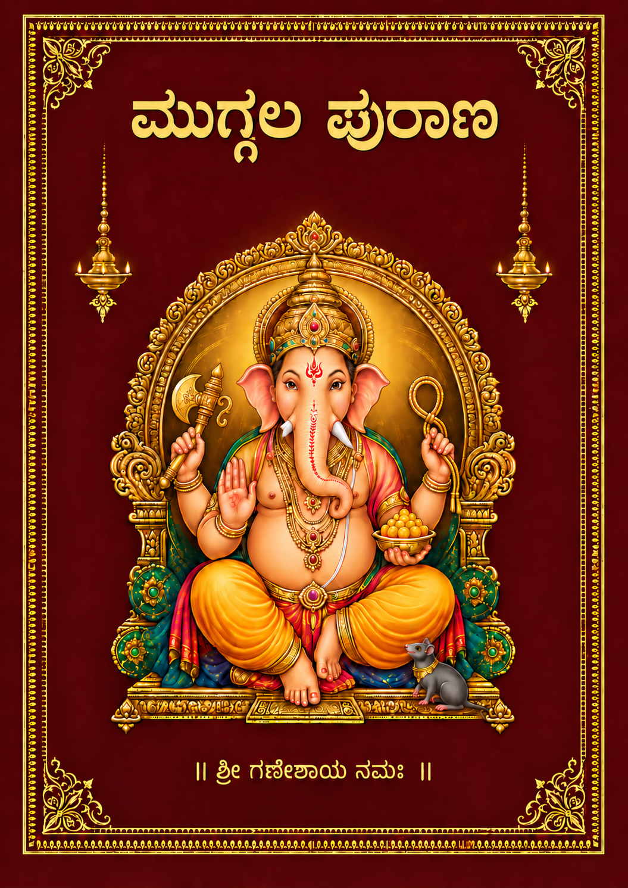
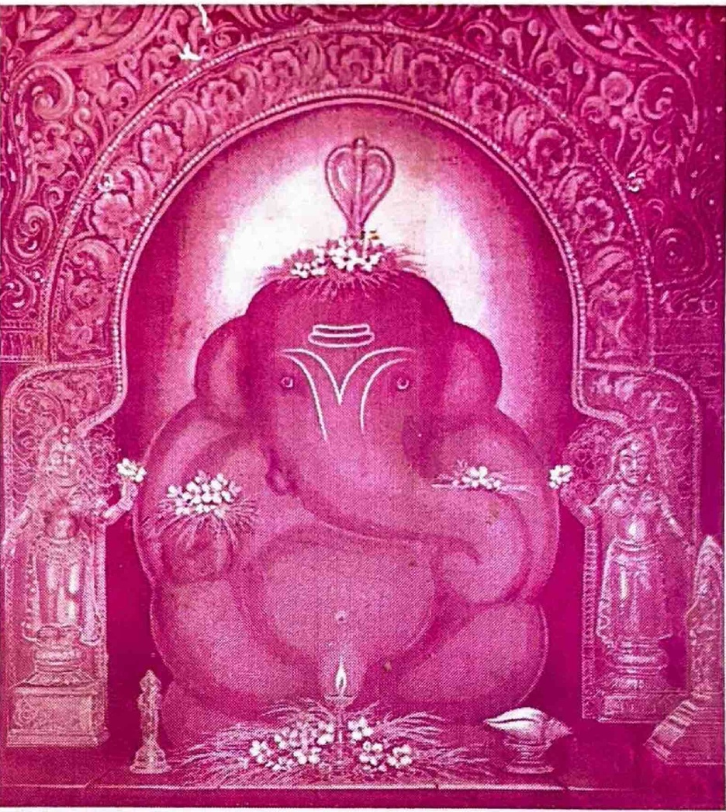
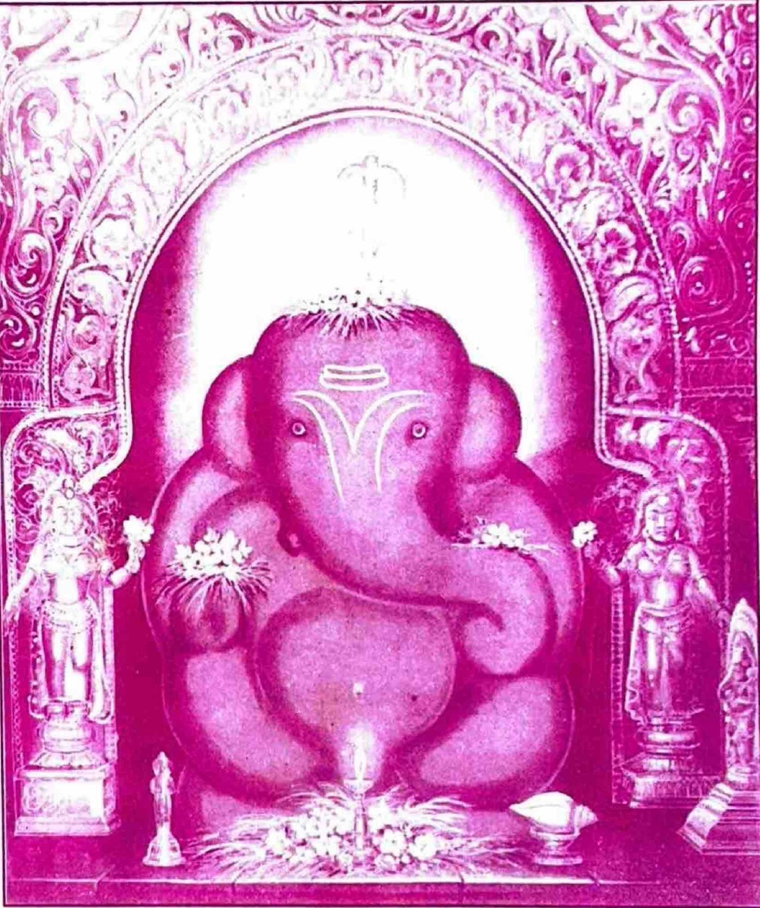
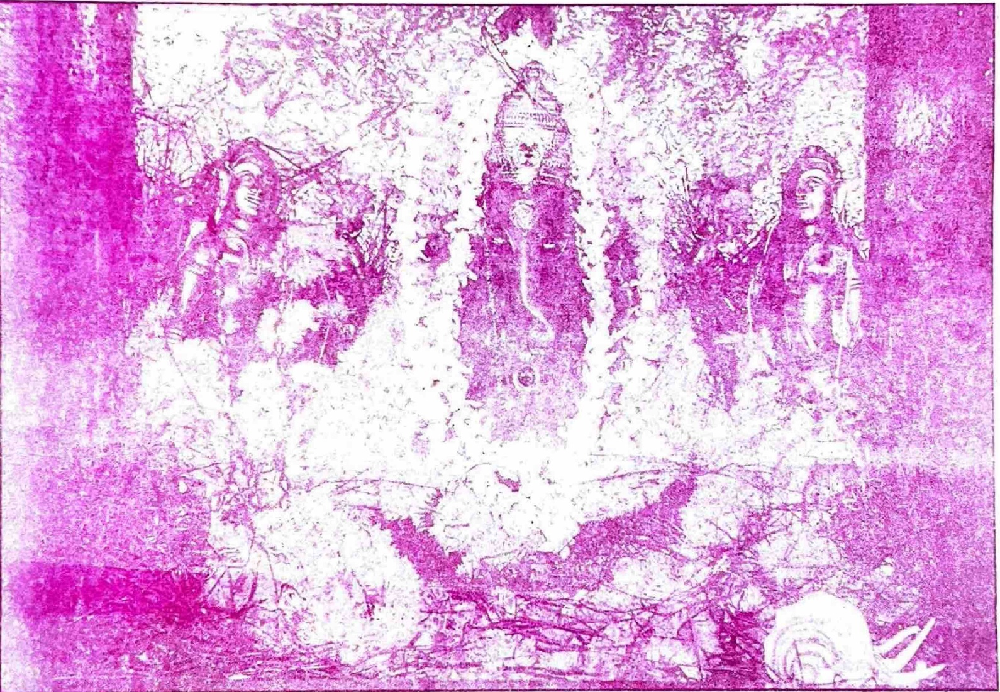
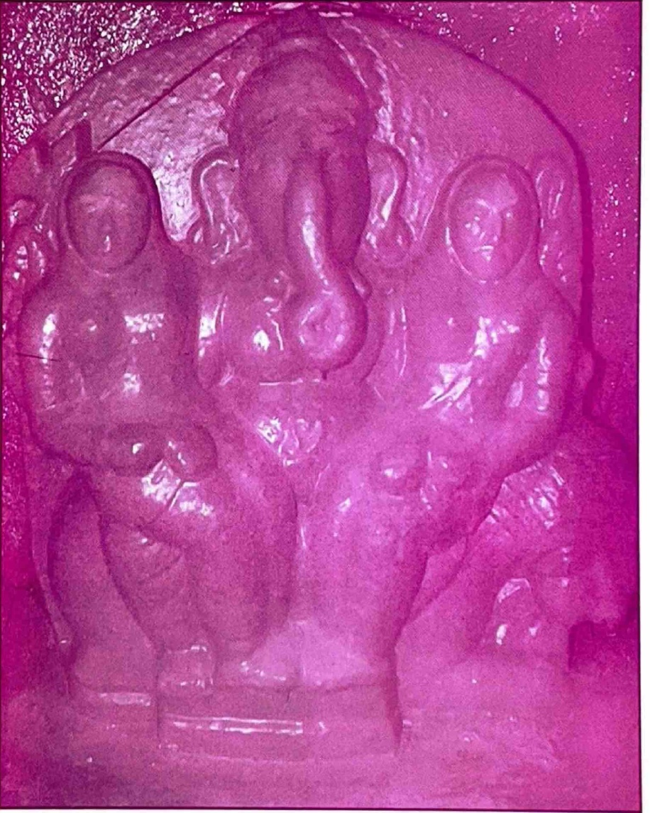
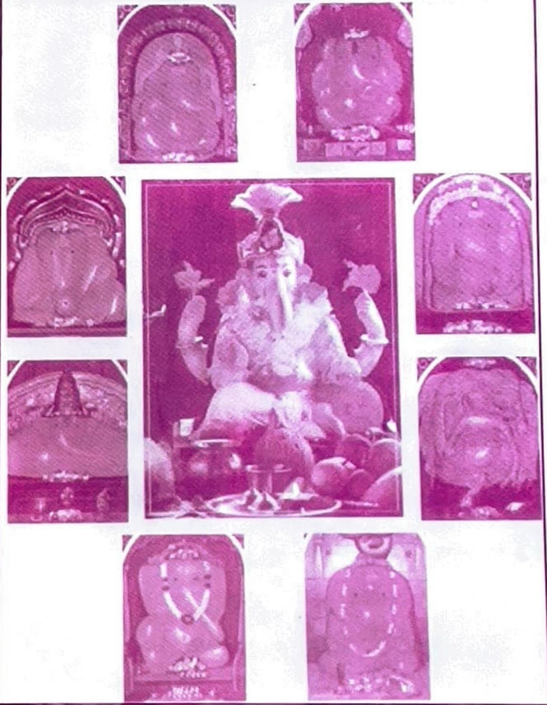

ಮುದ್ಗಲ ಪುರಾಣ

ಶ್ರೀ ಮುದ್ಗಲ ಪುರಾಣ
॥ ಶ್ರೀಭೂಸ್ವಾನಂದನಾಥೋ ಮಯೂರೇಶೋ ಜಯತಿ ॥

॥ ಸಿಂದೂರಲಿಪ್ತಸರ್ವಾಂಗಂ ಸಿದ್ಧಿಬುದ್ಧಿಸಮನ್ವಿತಮ್ ॥ ಭೂಸ್ವಾನಂದಸ್ಥಿತಂ ಧ್ಯಾಯೇ ಭಕ್ತಾನಾಂ ವರದಾಯಕಮ್ ॥
ಶ್ರೀ ಮುದ್ಗಲ ಪುರಾಣ
ಮಂಗಳವಚನಗಳು
॥ ಶ್ರವಣ ಮೂಲಮ್ ಮುದ್ಗಲ ಪುರಾಣ ಪವಿತ್ರಮ್ ॥
॥ ಮಂತ್ರ ಮೂಲಮ್ ಗಣೇಶ ನಾಮ ಪವಿತ್ರಮ್ ॥
॥ ಪೂಜ್ಯ ಮೂಲಮ್ ಗಣೇಶ ಪಾದ ಪವಿತ್ರಮ್ ॥
॥ ಧ್ಯಾನ ಮೂಲಮ್ ಗಣೇಶ ಮೂರ್ತೀ ಪವಿತ್ರಮ್ ॥
॥ ಮುಕ್ತೀ ಮೂಲಮ್ ಗಣೇಶ ಕೃಪಾಃ ಪವಿತ್ರಮ್ ॥
ಈ ಆವೃತ್ತಿಯ ವಿಷಯ ಸೂಚಿ
ಈ ಓದುವ ಆವೃತ್ತಿಯಲ್ಲಿ ಒಳಗೊಂಡಿರುವ ಅಧ್ಯಾಯಗಳು. ಸಂಖ್ಯೆಗಳು ಇಲ್ಲಿ ನೀಡಿರುವ ಶ್ಲೋಕಗಳ ವ್ಯಾಪ್ತಿಯನ್ನು ಸೂಚಿಸುತ್ತವೆ; ಮೂಲಗ್ರಂಥದ ಪುಟಸಂಖ್ಯೆಗಳಲ್ಲ. ಅಪೂರ್ಣ ಅನುವಾದ ಅಥವಾ ಬಾಕಿಯಿರುವ ಪಾಠಾರ್ಥ ಪರಿಶೀಲನೆಯ ಅಧ್ಯಾಯಗಳನ್ನು “ಭಾಗಶಃ” ಎಂದು ಗುರುತಿಸಲಾಗಿದೆ.
| ಅಧ್ಯಾಯ | ವಿಷಯ | ಶ್ಲೋಕಗಳು |
|---|---|---|
| ಖಂಡ ೧ | ||
| ೧ | ಶೌನಕ ಮತ್ತು ಸೂತನ ಸಂವಾದ | ೧–೫೯ |
| ೨ | ದಕ್ಷ ಮತ್ತು ನಂದಿಯ ವಿವಾದ | ೧–೪೫ |
| ೩ | ಪಾರ್ವತಿಯ ದೇಹತ್ಯಾಗ | ೧–೬೩ |
| ೪ | ದಕ್ಷನ ಚರಿತ್ರೆ | ೧–೧೧೦ |
| ೫ | ಪಾರ್ವತಿ ಮತ್ತು ಶಿವರ ವಿಚಾರ | ೧–೪೭ |
| ೬ | ಪ್ರಕೃತಿ ಮತ್ತು ಪುರುಷರಿಗೆ ವರಪ್ರದಾನ | ೧–೬೨ |
| ೭ | ತತ್ತ್ವಗಳು ಮಾಡಿದ ಸ್ತುತಿಯ ವರ್ಣನೆ | ೧–೫೨ |
| ೮ | ಗುಣೇಶನಿಗೆ ವರಪ್ರದಾನ | ೧–೭೩ |
| ೯ | ಪ್ರಕೃತಿಯ ವರ್ಣನೆ | ೧–೪೬ |
| ೧೦ | ನಾನಾ ಬ್ರಹ್ಮಾಂಡಗಳ ವರ್ಣನೆ | ೧–೪೨ |
| ೧೧ | ಪಂಚದೇವತೆಗಳಿಗೆ ವರಪ್ರದಾನ | ೧–೭೮ |
| ೧೨ | ಬ್ರಹ್ಮ ಮತ್ತು ವಿಷ್ಣುವಿನ ವಿವಾದ | ೧–೪೮ |
| ೧೩ | ಪಂಚದೇವತೆಗಳ ವಿವಾದ | ೧–೫೧ |
| ೧೪ | ಗಣೇಶನ ಉದ್ಭವ | ೧–೪೧ |
| ೧೫ | ಗಣೇಶನ ಪ್ರಸನ್ನಭಾವ | ೧–೨೨ |
| ೧೬ | ಗಾಣೇಶಗೀತೆಯ ಸಾರಕಥನ | ೧–೨೬ |
ಈ ಆವೃತ್ತಿಯ ವಿಷಯ ಸೂಚಿ
ಈ ಓದುವ ಆವೃತ್ತಿಯಲ್ಲಿ ಒಳಗೊಂಡಿರುವ ಅಧ್ಯಾಯಗಳು. ಸಂಖ್ಯೆಗಳು ಇಲ್ಲಿ ನೀಡಿರುವ ಶ್ಲೋಕಗಳ ವ್ಯಾಪ್ತಿಯನ್ನು ಸೂಚಿಸುತ್ತವೆ; ಮೂಲಗ್ರಂಥದ ಪುಟಸಂಖ್ಯೆಗಳಲ್ಲ. ಅಪೂರ್ಣ ಅನುವಾದ ಅಥವಾ ಬಾಕಿಯಿರುವ ಪಾಠಾರ್ಥ ಪರಿಶೀಲನೆಯ ಅಧ್ಯಾಯಗಳನ್ನು “ಭಾಗಶಃ” ಎಂದು ಗುರುತಿಸಲಾಗಿದೆ.
| ಅಧ್ಯಾಯ | ವಿಷಯ | ಶ್ಲೋಕಗಳು |
|---|---|---|
| ಖಂಡ ೧ | ||
| ೧೭ | ಶಿವ ಮತ್ತು ಶಕ್ತಿಯ ಸಂವಾದದ ಸಮಾಪ್ತಿ | ೧–೫೬ |
| ೧೮ | ಮುದ್ಗಲ ಮತ್ತು ದೇವದೂತನ ಸಂವಾದ | ೧–೬೪ |
| ೧೯ | ಅಂಗಿರಸ ಮತ್ತು ಮುದ್ಗಲನ ಸಂವಾದ | ೧–೬೭ |
| ೨೦ | ಗಣೇಶ ಮತ್ತು ಮುದ್ಗಲನ ಸಮಾಗಮ | ೧–೪೨ |
| ೨೧ | ಗಣೇಶನ ಉತ್ತಮ ಸ್ತೋತ್ರದ ವರ್ಣನೆ | ೧–೫೪ |
| ೨೨ | ಮುದ್ಗಲನಿಗೆ ವರಪ್ರದಾನ | ೧–೫೪ |
| ೨೩ | ಮತ್ಸರಾಸುರನ ತಪಸ್ಸಿನ ವರ್ಣನೆ | ೧–೪೯ |
| ೨೪ | ಮತ್ಸರಾಸುರನ ಗಮನ | ೧–೪೮ |
| ೨೫ | ಮತ್ಸರಾಸುರನ ಸೇನೆಯ ವರ್ಣನೆ | ೧–೪೪ |
| ೨೬ | ಪಾತಾಳವಿಜಯ | ೧–೪೩ |
| ೨೭ | ಮತ್ಸರಾಸುರನ ವಿಜಯ ಮತ್ತು ಇಂದ್ರನ ಬಂಧನ | ೧–೫೨ |
| ೨೮ | ಮತ್ಸರಾಸುರನ ಚೇಷ್ಟೆಗಳ ಕಥನ | ೧–೨೯ |
| ೨೯ | ಶಿವ ಮತ್ತು ಮತ್ಸರಾಸುರನ ಸಮಾಗಮ | ೧–೪೨ |
| ೩೦ | ಶಿವ ಮೊದಲಾದವರ ಪರಾಜಯ | ೧–೫೨ |
| ೩೧ | ದತ್ತಾತ್ರೇಯನ ಸಮಾಗಮ | ೧–೫೨ |
| ೩೨ | ವಕ್ರತುಂಡನ ಉದ್ಭವ | ೧–೫೮ |
ಈ ಆವೃತ್ತಿಯ ವಿಷಯ ಸೂಚಿ
ಈ ಓದುವ ಆವೃತ್ತಿಯಲ್ಲಿ ಒಳಗೊಂಡಿರುವ ಅಧ್ಯಾಯಗಳು. ಸಂಖ್ಯೆಗಳು ಇಲ್ಲಿ ನೀಡಿರುವ ಶ್ಲೋಕಗಳ ವ್ಯಾಪ್ತಿಯನ್ನು ಸೂಚಿಸುತ್ತವೆ; ಮೂಲಗ್ರಂಥದ ಪುಟಸಂಖ್ಯೆಗಳಲ್ಲ. ಅಪೂರ್ಣ ಅನುವಾದ ಅಥವಾ ಬಾಕಿಯಿರುವ ಪಾಠಾರ್ಥ ಪರಿಶೀಲನೆಯ ಅಧ್ಯಾಯಗಳನ್ನು “ಭಾಗಶಃ” ಎಂದು ಗುರುತಿಸಲಾಗಿದೆ.
| ಅಧ್ಯಾಯ | ವಿಷಯ | ಶ್ಲೋಕಗಳು |
|---|---|---|
| ಖಂಡ ೧ | ||
| ೩೩ | ಮತ್ಸರಾಸುರನ ಚಿಂತನೆ | ೧–೪೨ |
| ೩೪ | ದೇವಾಸುರರ ಯುದ್ಧಪ್ರಸಂಗ | ೧–೪೫ |
| ೩೫ | ಶಿವನ ವಿಜಯ | ೧–೪೮ |
| ೩೬ | ಸುಂದರಪ್ರಿಯ ಮತ್ತು ವಿಷಯಪ್ರಿಯರ ವಧ | ೧–೫೮ |
| ೩೭ | ಮತ್ಸರಾಸುರನ ಸಮಾಗಮ | ೧–೪೭ |
| ೩೮ | ವಕ್ರತುಂಡನ ವಿಜಯ | ೧–೬೨ |
| ೩೯ | ವಕ್ರತುಂಡನ ಅಂತರ್ಧಾನ | ೧–೫೪ |
| ೪೦ | ಬ್ರಹ್ಮನ ತಪಶ್ಚರಣ | ೧–೩೫ |
| ೪೧ | ದಂಭಾಸುರನ ರಾಜ್ಯಾಭಿಷೇಕ | ೧–೫೯ |
| ೪೨ | ದಂಭಾಸುರನ ವಿಜಯ | ೧–೪೨ |
| ೪೩ | ದಂಭಾಸುರ ಮತ್ತು ದೂತನ ಸಂವಾದ | ೧–೪೮ |
| ೪೪ | ದಂಭಾಸುರನ ವಿಚಾರ | ೧–೪೯ |
| ೪೫ | ದಂಭಾಸುರನ ಶಾಂತಿ | ೧–೪೦ |
| ೪೬ | ವಾಮನನಿಗೆ ವರಪ್ರದಾನ | ೧–೫೮ |
| ೪೭ | ವಾಮನನ ಚರಿತ್ರೆ | ೧–೬೬ |
| ೪೮ | ಋಚೀಕನ ಗೃಹಸ್ಥಾಶ್ರಮದ ವರ್ಣನೆ | ೧–೪೭ |
ಈ ಆವೃತ್ತಿಯ ವಿಷಯ ಸೂಚಿ
ಈ ಓದುವ ಆವೃತ್ತಿಯಲ್ಲಿ ಒಳಗೊಂಡಿರುವ ಅಧ್ಯಾಯಗಳು. ಸಂಖ್ಯೆಗಳು ಇಲ್ಲಿ ನೀಡಿರುವ ಶ್ಲೋಕಗಳ ವ್ಯಾಪ್ತಿಯನ್ನು ಸೂಚಿಸುತ್ತವೆ; ಮೂಲಗ್ರಂಥದ ಪುಟಸಂಖ್ಯೆಗಳಲ್ಲ. ಅಪೂರ್ಣ ಅನುವಾದ ಅಥವಾ ಬಾಕಿಯಿರುವ ಪಾಠಾರ್ಥ ಪರಿಶೀಲನೆಯ ಅಧ್ಯಾಯಗಳನ್ನು “ಭಾಗಶಃ” ಎಂದು ಗುರುತಿಸಲಾಗಿದೆ.
| ಅಧ್ಯಾಯ | ವಿಷಯ | ಶ್ಲೋಕಗಳು |
|---|---|---|
| ಖಂಡ ೧ | ||
| ೪೯ | ಯಾಜ್ಞವಲ್ಕ್ಯ ಮತ್ತು ವಿಶ್ವಾಮಿತ್ರರ ಸಮಾಗಮ | ೧–೫೧ |
| ೫೦ | ದಿವೋದಾಸನ ಮಹಿಮೆಯ ವರ್ಣನೆ | ೧–೬೭ |
| ೫೧ | ಕಾಶಿ ಮತ್ತು ಶಿವನಿಗೆ ವರಪ್ರದಾನ | ೧–೬೧ |
| ೫೨ | ಯಾಜ್ಞವಲ್ಕ್ಯನು ನಾರಾಯಣನಿಗೆ ಪ್ರಶ್ನಿಸಿದುದರ ವರ್ಣನೆ | ೧–೪೨ |
| ೫೩ | ನಾರಾಯಣ ಮತ್ತು ಯಾಜ್ಞವಲ್ಕ್ಯರ ಸಂವಾದ | ೧–೪೯ |
| ೫೪ | ವಕ್ರತುಂಡಚರಿತ್ರೆಯ ಸಮಾಪ್ತಿ | ೧–೫೫ |
| ಖಂಡ ೨ | ||
| ೧ | ಬ್ರಹ್ಮಸೃಷ್ಟಿಯ ಆರಂಭ | ೧–೫೫ |
| ೨ | ನಾರದನ ಶಾಪನಿವಾರಣ | ೧–೬೧ |
| ೩ | ನಾರದನ ಭಕ್ತಿವರ್ಣನೆ (ಭಾಗಶಃ) | ೧–೫೭ |
| ೪ | ಮಧುಕೈಟಭರ ವಧೆ (ಭಾಗಶಃ) | ೧–೬೫ |
| ೫ | ಪಂಚಮ ಅಧ್ಯಾಯ (ಭಾಗಶಃ) | ೧–೬೩ |
| ೬ | ಷಷ್ಠ ಅಧ್ಯಾಯ (ಭಾಗಶಃ) | ೧–೫೮ |
| ೭ | ಸಪ್ತಮ ಅಧ್ಯಾಯ (ಭಾಗಶಃ) | ೧–೫೫ |
| ೮ | ಅಷ್ಟಮ ಅಧ್ಯಾಯ (ಭಾಗಶಃ) | ೧–೮೬ |
| ೯ | ನವಮ ಅಧ್ಯಾಯ (ಭಾಗಶಃ) | ೧–೪೪ |
| ೧೦ | ದಶಮ ಅಧ್ಯಾಯ (ಭಾಗಶಃ) | ೧–೫೩ |
ಈ ಆವೃತ್ತಿಯ ವಿಷಯ ಸೂಚಿ
ಈ ಓದುವ ಆವೃತ್ತಿಯಲ್ಲಿ ಒಳಗೊಂಡಿರುವ ಅಧ್ಯಾಯಗಳು. ಸಂಖ್ಯೆಗಳು ಇಲ್ಲಿ ನೀಡಿರುವ ಶ್ಲೋಕಗಳ ವ್ಯಾಪ್ತಿಯನ್ನು ಸೂಚಿಸುತ್ತವೆ; ಮೂಲಗ್ರಂಥದ ಪುಟಸಂಖ್ಯೆಗಳಲ್ಲ. ಅಪೂರ್ಣ ಅನುವಾದ ಅಥವಾ ಬಾಕಿಯಿರುವ ಪಾಠಾರ್ಥ ಪರಿಶೀಲನೆಯ ಅಧ್ಯಾಯಗಳನ್ನು “ಭಾಗಶಃ” ಎಂದು ಗುರುತಿಸಲಾಗಿದೆ.
| ಅಧ್ಯಾಯ | ವಿಷಯ | ಶ್ಲೋಕಗಳು |
|---|---|---|
| ಖಂಡ ೨ | ||
| ೧೧ | ಏಕಾದಶ ಅಧ್ಯಾಯ (ಭಾಗಶಃ) | ೧–೪೨ |
| ೧೨ | ದ್ವಾದಶ ಅಧ್ಯಾಯ (ಭಾಗಶಃ) | ೧–೪೨ |
| ೧೩ | ತ್ರಯೋದಶ ಅಧ್ಯಾಯ (ಭಾಗಶಃ) | ೧–೪೩ |
| ೧೪ | ಚತುರ್ದಶ ಅಧ್ಯಾಯ (ಭಾಗಶಃ) | ೧–೪೧ |
| ೧೫ | ಪಂಚದಶ ಅಧ್ಯಾಯ (ಭಾಗಶಃ) | ೧–೪೦ |
| ೧೬ | ಷೋಡಶ ಅಧ್ಯಾಯ (ಭಾಗಶಃ) | ೧–೫೮ |
| ೧೭ | ಸಪ್ತದಶ ಅಧ್ಯಾಯ (ಭಾಗಶಃ) | ೧–೫೯ |
| ೧೮ | ಅಷ್ಟಾದಶ ಅಧ್ಯಾಯ (ಭಾಗಶಃ) | ೧–೩೭ |
| ೧೯ | ಏಕೋನವಿಂಶ ಅಧ್ಯಾಯ (ಭಾಗಶಃ) | ೧–೩೯ |
| ೨೦ | ವಿಂಶತಿ ಅಧ್ಯಾಯ (ಭಾಗಶಃ) | ೧–೩೫ |
| ೨೧ | ಏಕವಿಂಶ ಅಧ್ಯಾಯ (ಭಾಗಶಃ) | ೧–೩೩ |
| ೨೨ | ದ್ವಾವಿಂಶ ಅಧ್ಯಾಯ (ಭಾಗಶಃ) | ೧–೨೬ |
| ೨೩ | ತ್ರಯೋವಿಂಶ ಅಧ್ಯಾಯ (ಭಾಗಶಃ) | ೧–೩೪ |
| ೨೪ | ಚತುರ್ವಿಂಶ ಅಧ್ಯಾಯ (ಭಾಗಶಃ) | ೧–೫೪ |
| ೨೫ | ಪಂಚವಿಂಶ ಅಧ್ಯಾಯ (ಭಾಗಶಃ) | ೧–೬೪ |
| ೨೬ | ಷಡ್ವಿಂಶ ಅಧ್ಯಾಯ (ಭಾಗಶಃ) | ೧–೪೫ |
ಈ ಆವೃತ್ತಿಯ ವಿಷಯ ಸೂಚಿ
ಈ ಓದುವ ಆವೃತ್ತಿಯಲ್ಲಿ ಒಳಗೊಂಡಿರುವ ಅಧ್ಯಾಯಗಳು. ಸಂಖ್ಯೆಗಳು ಇಲ್ಲಿ ನೀಡಿರುವ ಶ್ಲೋಕಗಳ ವ್ಯಾಪ್ತಿಯನ್ನು ಸೂಚಿಸುತ್ತವೆ; ಮೂಲಗ್ರಂಥದ ಪುಟಸಂಖ್ಯೆಗಳಲ್ಲ. ಅಪೂರ್ಣ ಅನುವಾದ ಅಥವಾ ಬಾಕಿಯಿರುವ ಪಾಠಾರ್ಥ ಪರಿಶೀಲನೆಯ ಅಧ್ಯಾಯಗಳನ್ನು “ಭಾಗಶಃ” ಎಂದು ಗುರುತಿಸಲಾಗಿದೆ.
| ಅಧ್ಯಾಯ | ವಿಷಯ | ಶ್ಲೋಕಗಳು |
|---|---|---|
| ಖಂಡ ೨ | ||
| ೨೭ | ಸಪ್ತವಿಂಶ ಅಧ್ಯಾಯ (ಭಾಗಶಃ) | ೧–೩೩ |
| ೨೮ | ಅಷ್ಟಾವಿಂಶ ಅಧ್ಯಾಯ (ಭಾಗಶಃ) | ೧–೪೮ |
| ೨೯ | ಏಕೋನತ್ರಿಂಶ ಅಧ್ಯಾಯ (ಭಾಗಶಃ) | ೧–೫೩ |
| ೩೦ | ತ್ರಿಂಶ ಅಧ್ಯಾಯ (ಭಾಗಶಃ) | ೧–೩೮ |
| ೩೧ | ಏಕತ್ರಿಂಶ ಅಧ್ಯಾಯ (ಭಾಗಶಃ) | ೧–೭೦ |
| ೩೨ | ದ್ವಾತ್ರಿಂಶ ಅಧ್ಯಾಯ (ಭಾಗಶಃ) | ೧–೫೦ |
| ೩೩ | ತ್ರಯಸ್ತ್ರಿಂಶ ಅಧ್ಯಾಯ (ಭಾಗಶಃ) | ೧–೫೪ |
| ೩೪ | ಚತುಸ್ತ್ರಿಂಶ ಅಧ್ಯಾಯ (ಭಾಗಶಃ) | ೧–೬೦ |
| ೩೫ | ಪಂಚತ್ರಿಂಶ ಅಧ್ಯಾಯ (ಭಾಗಶಃ) | ೧–೪೧ |
| ೩೬ | ಷಟ್ತ್ರಿಂಶ ಅಧ್ಯಾಯ (ಭಾಗಶಃ) | ೧–೮೫ |
| ೩೭ | ಸಪ್ತತ್ರಿಂಶ ಅಧ್ಯಾಯ (ಭಾಗಶಃ) | ೨೦–೪೧ |
| ೩೮ | ಅಷ್ಟಾತ್ರಿಂಶ ಅಧ್ಯಾಯ (ಭಾಗಶಃ) | ೧–೨೧ |
| ೩೯ | ಏಕೋನಚತ್ವಾರಿಂಶ ಅಧ್ಯಾಯ (ಭಾಗಶಃ) | ೧–೫೧ |
| ೪೦ | ಚತ್ವಾರಿಂಶ ಅಧ್ಯಾಯ (ಭಾಗಶಃ) | ೧–೫೬ |
| ೪೧ | ಏಕಚತ್ವಾರಿಂಶ ಅಧ್ಯಾಯ (ಭಾಗಶಃ) | ೧–೫೪ |
| ೪೨ | ದ್ವಿಚತ್ವಾರಿಂಶ ಅಧ್ಯಾಯ (ಭಾಗಶಃ) | ೧–೭೪ |
ಮಂಗಳವಚನಗಳು
॥ ಇತ್ಯಮುದ್ಗಲಗೀತಾ ಸಮಾಪ್ತಾ ॥
॥ ಶ್ರೀಗಜಾನನಾರ್ಪಣಮಸ್ತು ॥
ಪ್ರಥಮ ಖಂಡ
ಶ್ರೀಮುದ್ಗಲಪುರಾಣದ ಪ್ರಥಮ ಖಂಡದ ಆರಂಭ
ಶ್ರೀಮಯೂರೇಶ್ವರ
ಆದ್ಯಕ್ಷೇತ್ರ ಶ್ರೀಮಯೂರೇಶ್ವರ, ದಂಡಕಾರಣ್ಯ, ಮೋರಗಾಂವ್

॥ ಶ್ರೀ ಮಯೂರೇಶ್ವರಾಯ ನಮಃ ॥
ಶ್ರೀಮಯೂರೇಶ್ವರ
ಆದ್ಯಕ್ಷೇತ್ರ ಶ್ರೀಮಯೂರೇಶ್ವರ, ದಂಡಕಾರಣ್ಯ, ಢೇಂವಾಡ್

॥ ಶ್ರೀ ಮಯೂರೇಶ್ವರಾಯ ನಮಃ ॥
ಶ್ರೀವಕ್ರತುಂಡ ಮಯೂರೇಶ್ವರ
ಶ್ರೀವಕ್ರತುಂಡ ಮಯೂರೇಶ್ವರ, ದಂಡಕಾರಣ್ಯ, ಢೇಂವಾಡ್

॥ ಶ್ರೀ ವಕ್ರತುಂಡ ಮಯೂರೇಶ್ವರಾಯ ನಮಃ ॥
ಶ್ರೀಅಷ್ಟವಿನಾಯಕ
ಶ್ರೀ ಅಷ್ಟವಿನಾಯಕ ಪ್ರಸನ್ನ

॥ ಶ್ರೀ ಅಷ್ಟವಿನಾಯಕಾಯ ನಮಃ ॥
ಪ್ರಥಮ ಅಧ್ಯಾಯ
ಶೌನಕ ಮತ್ತು ಸೂತನ ಸಂವಾದ
॥ ಓಂ ನಮಃ ಶ್ರೀಸ್ವಾನಂದೇಶಗಣೇಶಾಯ ಪೂರ್ಣಯೋಗಾತ್ಮನೇ ॥
ಶ್ರೀಮುದ್ಗಲಪುರಾಣದ ಆರಂಭ
॥ ಶ್ರೀಗಣೇಶಾಯ ನಮಃ ॥
ಧ್ಯಾಯೇ ಸ್ಥಿರೇಣ ಚಿತ್ತೇನ ಗಣೇಶಂ ಸರ್ವಸಿದ್ಧಿದಮ್ । ಬುದ್ಧಿಪ್ರಕಾಶಕಂ ಪೂರ್ಣಂ ಯೋಗಿನಾಂ ಹೃದಿ ಸಂಸ್ಥಿತಮ್ ॥೧॥
ಜಿತಂ ತೇನಾಖಿಲಂ ನಾನಾಬ್ರಹ್ಮವರ್ಣನವರ್ಣಿತಮ್ । ನಾನಾಜಗತ್ಸಮೂಹಂ ವೈ ಗಣೇಶೇನೋಭಯಂ ಕೃತಮ್ ॥೨॥
ಭಕ್ತಸಂರಕ್ಷಣಾರ್ಥಾಯ ನಿರ್ಗುಣಃ ಸಗುಣಸ್ತು ಯಃ । ನಾನಾವತಾರವಾನ್ಸೋಽಪಿ ನಾನಾಭೇದಧರೋ ಬಭೌ ॥೩॥
ತಸ್ಮೈ ನಮೋ ಗಣೇಶಾಯ ನರಕುಂಜರರೂಪಿಣೇ । ಸಗುಣೋ ನರರೂಪೋ ಯೋ ನಿರ್ಗುಣೋ ಗಜವಕ್ತ್ರಕಃ ॥೪॥
ನಮಃ ಶಿವಾಯ ಶಾಂತಾಯ ವಿಷ್ಣವೇ ಪ್ರಭವಿಷ್ಣವೇ । ಸೂರ್ಯಾಯ ಶಕ್ತಯೇ ಚೈವ ಚತುರ್ಧಾ ತೇ ವಿಭಾಗಿನೇ ॥೫॥
ಬ್ರಹ್ಮಾಣಂ ಶೌನಕಂ ಚ ನರಂ ನಾರಾಯಣಂ ಸದಾ । ನಮಾಮಿ ಭಾವಯುಕ್ತೋಽಹಂ ಪುರಾಣಪುರುಷಂ ಪರಮ್ ॥೬॥
ಪ್ರಥಮ ಅಧ್ಯಾಯ
ದೇವಾನಾಂ ಯೋಗಿನಾಂ ಚೈವ ಮಹರ್ಷೀಣಾಂ ಮಹಾತ್ಮನಾಮ್ । ವ್ರಜಾಮಿ ಶರಣಂ ನಿತ್ಯಂ ಪುರಾಣಜ್ಞಾನಸಿದ್ಧಯೇ ॥೭॥
ಹಿಂದಿನ ಕಲ್ಪದಲ್ಲಿ ಉತ್ತಮ ಸಾಧನೆಯಲ್ಲಿ ನಿರತರಾದ ಶೌನಕ ಮೊದಲಾದ ಬ್ರಾಹ್ಮಣರೆಲ್ಲರೂ ಕಲಿಯ ದೋಷಕ್ಕೆ ಭಯಪಟ್ಟು ನೈಮಿಷಾರಣ್ಯವನ್ನು ಆಶ್ರಯಿಸಿದರು. ॥೮॥
ಬ್ರಹ್ಮನ ಬಾಯಿಂದ ತಿಳಿದುಕೊಂಡ, ಕಲಿಯಿಲ್ಲದ ಶಾಂತಿದಾಯಕ ಸ್ಥಳದಲ್ಲಿ ಅವರು ಮುನಿಧರ್ಮದ ಸಿದ್ಧಿಗಾಗಿ ಕರ್ಮ ಮತ್ತು ಜ್ಞಾನಗಳ ಸಿದ್ಧಿಯನ್ನು ಸಾಧಿಸಲು ನೆಲೆಸಿದರು. ॥೯॥
ಪುರಾಣಶ್ರವಣದಿಂದ ಕಲಿದೋಷವನ್ನು ನಿವಾರಿಸುವ ಪುಣ್ಯ ದೊರೆಯುತ್ತದೆ ಎಂದು ಬ್ರಹ್ಮನು ಹೇಳಿದ್ದರಿಂದ, ಅವರು ಸದಾ ಅದನ್ನು ಕೇಳಲು ಬಯಸಿದರು. ॥೧೦॥
ಒಂದು ಸಂದರ್ಭದಲ್ಲಿ ಪುರಾಣಜ್ಞನೂ ವಿವೇಕಿಯೂ ಆದ ಸೂತ ರೋಮಹರ್ಷಣನು ಮುನಿಗಳನ್ನು ಕಾಣಲು ಅಲ್ಲಿಗೆ ಬಂದನು. ॥೧೧॥
ಮುನಿಗಳ ಶ್ರೇಷ್ಠ ಸ್ಥಾನವಾದ ನೈಮಿಷಾರಣ್ಯವನ್ನು, ಕಲಿದೋಷರಹಿತವಾದ ಆ ಮಹಾವನವನ್ನು ಕಂಡು ಅವನು ಆಶ್ಚರ್ಯಗೊಂಡನು. ॥೧೨॥
ಪ್ರಥಮ ಅಧ್ಯಾಯ
ಅವನು ಅಲ್ಲಿ ಪ್ರಸನ್ನವಾದ ಮುಖಕಮಲಗಳನ್ನೂ ಹೊಂದಿದ, ನಿತ್ಯನೈಮಿತ್ತಿಕ ಕರ್ಮಗಳನ್ನು ಮಾಡುವ, ಸ್ವಧರ್ಮಾಚರಣೆಯಲ್ಲಿ ಆಸಕ್ತರಾದ ಮುನಿಗಳನ್ನು ಕಂಡನು. ॥೧೩॥
ಪಂಚಯಜ್ಞಗಳಲ್ಲಿ ನಿರತರಾಗಿದ್ದ, ವೇದಾಧ್ಯಯನ ಮಾಡುತ್ತಿದ್ದ ಅವರು ಬ್ರಹ್ಮತೇಜಸ್ಸಿನಿಂದ ಕೂಡಿದವರಾಗಿ, ಅಗ್ನಿಗಳಂತೆ ಪ್ರಕಾಶಿಸುತ್ತಿದ್ದರು. ॥೧೪॥
ಅಸ್ತಮಿಸದ ಸೂರ್ಯನಂತೆ ಪ್ರಕಾಶಿಸುವ ಶೌನಕ ಮೊದಲಾದ ಮಹರ್ಷಿಗಳು ವೇದಜ್ಞರಾದ ಯೋಗಿಗಳೂ, ಎಲ್ಲ ಜೀವಿಗಳನ್ನು ತಾರಿಸುವವರೂ ಆಗಿದ್ದರು. ॥೧೫॥
ಮಹಾಭಾಗನಾದ ಸೂತ ರೋಮಹರ್ಷಣನು ಅಲ್ಲಿಗೆ ಬಂದು, ಪರಮಾನಂದದಿಂದ ಕೂಡಿದವನಾಗಿ ಮೊದಲು ಸಾಷ್ಟಾಂಗ ನಮಸ್ಕಾರ ಮಾಡಿದನು. ॥೧೬॥
ಅವನು ಭಕ್ತಿಯಿಂದ ತಲೆಬಾಗಿ ಮುನಿಗಳೆಲ್ಲರಿಗೂ ವಂದಿಸಿದನು. ಕೈಮುಗಿದು, ಏಕಾಗ್ರನಾಗಿ ಮಧುರವಾದ ಮಾತುಗಳನ್ನು ಹೇಳಿದನು. ॥೧೭॥
ಸೂತನು ಹೇಳಿದನು: “ಮುನಿಶ್ರೇಷ್ಠರೇ, ಇಂದು ನನ್ನ ವಂಶ, ತಂದೆತಾಯಿಗಳು, ಕುಲ ಮತ್ತು ವಯಸ್ಸು ಧನ್ಯವಾದವು. ನನ್ನ ವಿದ್ಯೆ, ವ್ರತ, ತಪಸ್ಸು ಮತ್ತು ಜ್ಞಾನವೆಲ್ಲವೂ ಧನ್ಯವಾದವು. ॥೧೮॥
ಪ್ರಥಮ ಅಧ್ಯಾಯ
ಎಲ್ಲ ಅಶುಭಗಳನ್ನೂ ನಾಶಮಾಡುವ, ದೇವತೆಗಳು ಸದಾ ಅಪೇಕ್ಷಿಸುವ ನಿಮ್ಮ ಪಾದಪದ್ಮಗಳ ದರ್ಶನವು ನನಗೆ ಮಹಾಪುಣ್ಯದಿಂದ ದೊರೆಯಿತು. ॥೧೯॥
ಬ್ರಾಹ್ಮಣಶ್ರೇಷ್ಠರಾದ ನೀವು ಸಾಕ್ಷಾತ್ ಬ್ರಹ್ಮಸ್ವರೂಪಿಗಳು. ನಿಮ್ಮನ್ನು ಕಂಡ ಮಾತ್ರದಿಂದಲೇ ಜನರು ಕೃತಕೃತ್ಯರಾಗುತ್ತಾರೆ. ॥೨೦॥
ನಾನು ಕೃತಕೃತ್ಯನು, ಕೃತಕೃತ್ಯನು, ಕೃತಕೃತ್ಯನು ಎಂಬುದರಲ್ಲಿ ಸಂಶಯವಿಲ್ಲ. ನಿಮ್ಮ ದರ್ಶನದಿಂದಲೇ ಭವಸಾಗರದಿಂದ ಮುಕ್ತನಾದೆನು.” ॥೨೧॥
ಸಾಧುವಾದ ಸೂತ ರೋಮಹರ್ಷಣನ ಈ ಮಾತುಗಳನ್ನು ಕೇಳಿ, ಭಕ್ತಿಯುಳ್ಳ ತಪೋಧನರಾದ ಬ್ರಾಹ್ಮಣರೆಲ್ಲರೂ ಉತ್ತರಿಸಿದರು. ॥೨೨॥
ಬ್ರಾಹ್ಮಣರು ಹೇಳಿದರು: “ಮಹಾಭಾಗ ಸೂತನೇ, ನಮ್ಮ ಮುಂದೆ ಕುಳಿತುಕೋ. ನಿನ್ನ ದರ್ಶನಮಾತ್ರದಿಂದಲೇ ನಾವೆಲ್ಲರೂ ಸಂತುಷ್ಟರಾಗಿದ್ದೇವೆ, ಪ್ರಭುವೇ.” ॥೨೩॥
ಹೀಗೆ ಹೇಳಲ್ಪಟ್ಟ ಮಹಾಬುದ್ಧಿಯೂ ಪ್ರತಾಪಶಾಲಿಯೂ ಆದ ಸೂತನು ಮುನಿಗಳು ನೀಡಿದ ಶುಭಾಸನದಲ್ಲಿ ಕೈಮುಗಿದು ಕುಳಿತನು. ॥೨೪॥
ಪ್ರಥಮ ಅಧ್ಯಾಯ
ಸುಖವಾಗಿ ಕುಳಿತಿದ್ದ ಸೂತನನ್ನು ಕಂಡು, ಭೃಗುವಿಗೆ ಪ್ರಿಯನೂ ಮುನಿಗಳಲ್ಲಿ ಮುಖ್ಯನೂ ಆದ ಆ ಮಹಾಮುನಿಯು ಅವನಿಗೆ ಹೇಳಿದನು. ॥೨೫॥
ಶೌನಕನು ಹೇಳಿದನು: “ಎಲ್ಲವನ್ನೂ ತಿಳಿದವನೂ ಎಲ್ಲರಿಗೂ ಸುಖವನ್ನು ನೀಡುವವನೂ ಆದ ಮಹಾಭಾಗ ಸೂತನೇ, ಪ್ರಾಜ್ಞನಾದ ಮಹಾನ್ ಕೃಷ್ಣದ್ವೈಪಾಯನನನ್ನು ನೀನು ಆರಾಧಿಸಿದ್ದೀಯೆ. ॥೨೬॥
ಅವನು ನಾರಾಯಣನ ಅವತಾರ, ಸಾಕ್ಷಾತ್ ನಾರಾಯಣನೇ. ಅವನು ವೇದಗಳನ್ನು ವಿಭಾಗಿಸಿದನು; ಪುರಾಣಗಳನ್ನೂ ವಿಭಾಗಿಸಿದನು. ॥೨೭॥
ಪುಣ್ಯವನ್ನು ವೃದ್ಧಿಗೊಳಿಸುವವನೇ, ನೀನು ಅವನಿಂದ ಇತಿಹಾಸಗಳೊಡನೆ ಪುರಾಣಗಳನ್ನು ತಿಳಿದಿದ್ದೀಯೆ. ಅದರಿಂದಲೇ ನಿನಗೆ ಈ ಸರ್ವಜ್ಞತೆ ಉಂಟಾಗಿದೆ. ॥೨೮॥
ಕಲಿಯ ಪಾಪಸ್ವರೂಪಕ್ಕೆ ಹೆದರಿದ ನಾವು ಬ್ರಹ್ಮನ ಮಾತಿನಂತೆ ನೈಮಿಷಾರಣ್ಯವನ್ನು ಆಶ್ರಯಿಸಿ ಇಲ್ಲಿ ನೆಲೆಸಿದ್ದೇವೆ. ॥೨೯॥
ಮಹಾತೇಜಸ್ವಿಯಾದ ನೀನು ನಮಗೆ ವಿಶ್ರಾಂತಿ ನೀಡುವವನಾಗಿ ಇಲ್ಲಿಗೆ ಬಂದಿದ್ದೀಯೆ. ನೀನು ಪುರಾಣಗಳ ಪ್ರವಕ್ತೃವೂ ಪುಣ್ಯವಂತನೂ ಪುಣ್ಯವನ್ನು ವೃದ್ಧಿಗೊಳಿಸುವವನೂ ಆಗಿದ್ದೀಯೆ. ॥೩೦॥
ಪ್ರಥಮ ಅಧ್ಯಾಯ
ಪೌರಾಣಿಕಿ ಕಥೆಯಿರುವಲ್ಲಿ ಕಲಿ ನೆಲೆಸುವುದಿಲ್ಲ. ಆದ್ದರಿಂದ ನಮಗೆ ಪುರಾಣವನ್ನು ಹೇಳು, ಪ್ರಭುವೇ. ॥೩೧॥
ನಿನ್ನ ದರ್ಶನವೇ ಮಹಾಪುಣ್ಯದಿಂದ ಸಿಕ್ಕ ಸತ್ಫಲ. ಮಹಾಭಾಗನೇ, ಅದರಿಂದ ಸಂಶಯಗಳು ನಿವಾರಣೆಯಾಗುತ್ತವೆ; ಧನ್ಯನು, ಧನ್ಯನು ನೀನು. ॥೩೨॥
ಸಜ್ಜನರ ಸಂಶಯಗಳನ್ನು ನಿವಾರಿಸಿ ನೀನು ಅವರಿಗೆ ರೋಮಾಂಚನ ಉಂಟುಮಾಡುತ್ತೀಯೆ. ಆದ್ದರಿಂದಲೇ ನಿನಗೆ ‘ರೋಮಹರ್ಷಣ’ ಎಂಬ ಹೆಸರು ಬಂದಿದೆ.” ॥೩೩॥
ಮಹರ್ಷಿ ಶೌನಕನು ಹೀಗೆ ಕೇಳಿದಾಗ, ಮಹಾತ್ಮನಾದ ಸೂತನು ಸಂತೋಷಗೊಂಡು ಧರ್ಮಯುಕ್ತವಾದ ಉತ್ತರವನ್ನು ನೀಡಿದನು. ॥೩೪॥
ಸೂತನು ಹೇಳಿದನು: “ನಿಮ್ಮ ಅನುಗ್ರಹದಿಂದ ನಾನು ಕೃತಕೃತ್ಯನಾದೆನು. ವ್ಯಾಸನು ಹೇಳಿದ ಎಲ್ಲವನ್ನೂ ನಿಮಗೆ ತಿಳಿಸುವೆನು.” ॥೩೫॥
ಹೀಗೆ ಹೇಳಿ ಅವನು ವಿವಿಧ ಕಥೆಗಳಿಂದ ಕೂಡಿದ, ನಾನಾ ಧರ್ಮಗಳನ್ನು ಒಳಗೊಂಡ ಪುರಾಣಗಳನ್ನು ಹೇಳಲು ಆರಂಭಿಸಿದನು. ॥೩೬॥
ಪ್ರಥಮ ಅಧ್ಯಾಯ
ಅವು ಎಲ್ಲಾರ್ಥಗಳ ಸಾಧನೆಯನ್ನು ನೀಡುವವು, ದುಃಖವನ್ನು ನಾಶಮಾಡುವವು, ಬ್ರಹ್ಮಭಾವವನ್ನು ನೀಡುವವು ಮತ್ತು ವಿವಿಧ ಮತಸಿದ್ಧಾಂತಗಳನ್ನು ಒಳಗೊಂಡವು. ॥೩೭॥
ಧರ್ಮ, ಅರ್ಥ, ಕಾಮ ಮತ್ತು ಮೋಕ್ಷಗಳನ್ನು ನೀಡುವುದರಿಂದ ಪುಣ್ಯಪ್ರದವಾದ ಪುರಾಣಗಳು, ಉಪಪುರಾಣಗಳು ಮತ್ತು ಇತಿಹಾಸಗಳನ್ನು ಅವನು ವಿಭಾಗಾನುಸಾರ ಹೇಳಿದನು. ॥೩೮॥
ಅವುಗಳನ್ನು ಮತ್ತೆ ಮತ್ತೆ ಕೇಳಿದ ಮುನಿಶ್ರೇಷ್ಠರು ಹರ್ಷಗೊಂಡರು. ಅದರಿಂದ ಅವರು ನಿತ್ಯವೂ ಆನಂದಿತರಾಗಿ ಸಂಪೂರ್ಣವಾಗಿ ತೃಪ್ತರಾದರು. ॥೩೯॥
ಆ ಮುನಿಗಳೆಲ್ಲರೂ ಹೀಗೆ ಆ ಯುಗವನ್ನು ಕಳೆದರು. ॥೪೦॥
ಪುರಾಣಗಳಲ್ಲಿಯೂ ಇತಿಹಾಸಗಳಲ್ಲಿಯೂ ವಿವಿಧ ಭೇದಮತಗಳನ್ನು ಕೇಳಿದ ಮುನಿಶ್ರೇಷ್ಠರು ಗೊಂದಲಗೊಂಡರು. ॥೪೧॥
ಎಲ್ಲರಿಗೂ ಸಮ್ಮತವಾದ ಪರತತ್ತ್ವ ಯಾವುದು ಎಂಬ ನಿಶ್ಚಯಕ್ಕೆ ಅವರಿಗೆ ಬರಲಾಗಲಿಲ್ಲ. ಅದನ್ನು ತಿಳಿಯಲು ಮುನಿಶ್ರೇಷ್ಠ ಶೌನಕನು ಸೂತನನ್ನು ಕೇಳಿದನು. ॥೪೨॥
ಪ್ರಥಮ ಅಧ್ಯಾಯ
ಶೌನಕನು ಹೇಳಿದನು: “ಮಹಾಭಾಗ ಸೂತನೇ, ನನ್ನ ಈ ಚಿಕ್ಕ ಪ್ರಶ್ನೆಯನ್ನು ಕೇಳು. ಪುರಾಣಗಳನ್ನು ಸಂಪೂರ್ಣವಾಗಿ ಕೇಳಿದರೂ ನಮ್ಮ ಜ್ಞಾನದಲ್ಲಿ ಇನ್ನೂ ಮೋಹವಿದೆ. ॥೪೩॥
ಈ ವಿಷಯಗಳೆಲ್ಲವನ್ನು ನೀನು ನಮಗೆ ಪ್ರತ್ಯೇಕವಾಗಿ ವಿವರಿಸಿದ್ದೀಯೆ. ಆದರೆ ಯಾವುದು ನಿಶ್ಚಿತವಾದ ಪರತತ್ತ್ವ ಎಂಬುದು ನಮಗೆ ತಿಳಿಯುತ್ತಿಲ್ಲ, ಮಹಾಬುದ್ಧಿಯೇ. ॥೪೪॥
ಕೆಲವೆಡೆ ಶಂಕರನು ಶ್ರೇಷ್ಠನೆಂದು, ಕೆಲವೆಡೆ ವಿಷ್ಣುವೆಂದು, ಸೂರ್ಯನೆಂದು, ಶಕ್ತಿಯೆಂದು, ಗಣೇಶನೆಂದು, ವಿರಾಜನೆಂದು ಹೇಳಲಾಗಿದೆ. ॥೪೫॥
ಬ್ರಹ್ಮ, ಯೋಗ, ಜ್ಞಾನ ಮತ್ತು ಕರ್ಮಗಳಲ್ಲಿ ಯಾವುದು ಪರತತ್ತ್ವ? ಆತ್ಮ, ಪ್ರಾಣ, ಅನ್ನ ಮತ್ತು ಮನಸ್ಸುಗಳಲ್ಲಿಯೂ ಯಾವುದು ಪರಮ? ॥೪೬॥
ಬುದ್ಧಿ, ಸಾಂಖ್ಯ ಮತ್ತು ಸ್ವಾನಂದಾದಿಗಳಲ್ಲಿಯೂ ವಿವಿಧ ಅಭಿಪ್ರಾಯಗಳಿವೆ. ಇಂತಹ ಮತಭೇದಗಳಿಂದ ನಿಶ್ಚಯವು ಉಂಟಾಗುತ್ತಿಲ್ಲ, ಮಹಾಭಾಗನೇ. ॥೪೭॥
ಆದ್ದರಿಂದ ವೇದಶಾಸ್ತ್ರಗಳ ಅರ್ಥಕ್ಕೆ ಒಪ್ಪುವ, ಎಲ್ಲರಿಗೂ ಮಾನ್ಯವಾದ, ಎಲ್ಲಾ ಸಂಶಯಗಳನ್ನೂ ನಿವಾರಿಸುವ ಒಂದೇ ಪರತತ್ತ್ವವನ್ನು ಕರುಣೆಯಿಂದ ತಿಳಿಸು.” ॥೪೮॥
ಪ್ರಥಮ ಅಧ್ಯಾಯ
ಹೀಗೆ ಕೇಳಿದಾಗ ವ್ಯಾಸನ ಶ್ರೇಷ್ಠ ಶಿಷ್ಯನಾದ ಮಹಾತೇಜಸ್ವಿ ಸೂತನು ಎಲ್ಲ ಶ್ರುತಿ ಮತ್ತು ಸ್ಮೃತಿಗಳ ಸಾರವನ್ನು ಹೇಳಲು ಆರಂಭಿಸಿದನು. ॥೪೯॥
ಸೂತನು ಹೇಳಿದನು: “ಮುನಿಗಳೇ, ಮುದ್ಗಲನಿಂದ ತಿಳಿಸಲ್ಪಟ್ಟ, ಎಲ್ಲ ಶ್ರುತಿ ಮತ್ತು ಸ್ಮೃತಿಗಳ ಸಾರವಾದ, ವಿಶೇಷವಾಗಿ ಎಲ್ಲರಿಗೂ ಮಾನ್ಯವಾದ ತತ್ತ್ವವನ್ನು ಕೇಳಿರಿ. ॥೫೦॥
ಹಿಂದೆ ದಕ್ಷನ ಯಜ್ಞದಲ್ಲಿ ದೊಡ್ಡ ಯಜ್ಞಧ್ವಂಸವು ಸಂಭವಿಸಿತು. ರುದ್ರನು ಹಠಾತ್ತಾಗಿ ಅಲ್ಲಿಗೆ ಬಂದು ಮಹತ್ತರವಾದ ವಿಘ್ನವನ್ನು ಉಂಟುಮಾಡಿದನು. ॥೫೧॥
ಪರಮದಾರುಣರಾದ ರುದ್ರರಿಂದ ದೇವತೆಗಳೆಲ್ಲರೂ ಸೋತರು. ದಕ್ಷನ ತಲೆಯನ್ನು ವೀರಭದ್ರನು ಕಡಿದನು. ॥೫೨॥
ಬ್ರಹ್ಮನು ಅಲ್ಲಿಗೆ ಬಂದು ಅನೇಕ ಮಾತುಗಳಿಂದ ಶಂಕರನನ್ನು ಸಂತೈಸಿದನು. ಶಂಕರನು ಯೋಗಶಕ್ತಿಯಿಂದ ದಕ್ಷನನ್ನು ಬದುಕಿಸಿದನು. ॥೫೩॥
ಯಜ್ಞವಿಘ್ನದ ಆಘಾತಕ್ಕೆ ಒಳಗಾದ ದಕ್ಷನು ಶಾಪದಿಂದ ಮೋಹಿತನಾದನು. ಅಜ್ಞಾನದ ಆವರಣದಿಂದ ಯಾವ ನಿಶ್ಚಯವನ್ನೂ ತಿಳಿಯಲಿಲ್ಲ. ॥೫೪॥
ಪ್ರಥಮ ಅಧ್ಯಾಯ
ವೇದಶಾಸ್ತ್ರಗಳ ಅರ್ಥತತ್ತ್ವವನ್ನು ತಿಳಿದ, ಯೋಗಿಗಳ ಶ್ರೇಷ್ಠನಾದ ಭಗವಾನ್ ಮುದ್ಗಲ ಮುನಿಯು ಸಾಕ್ಷಾತ್ ಉದಯಿಸಿದ ಸೂರ್ಯನಂತೆ ಅಲ್ಲಿಗೆ ಬಂದನು. ॥೫೫॥
ಅವನು ಗಣೇಶಭಕ್ತರಲ್ಲಿ ಶ್ರೇಷ್ಠನೂ ಎಲ್ಲರಿಂದ ವಂದಿತನೂ ಮಹಾಯಶಸ್ವಿಯೂ ಆಗಿದ್ದನು; ತಪಸ್ಸು ಮತ್ತು ಕರ್ಮಗಳ ಸಾಕ್ಷಾತ್ ಸನಾತನ ನಿಧಿಯಾಗಿದ್ದನು. ॥೫೬॥
ಅವನನ್ನು ಕಂಡ ದಕ್ಷನು ಆ ಮಹಾಮುನಿಗೆ ನಮಸ್ಕರಿಸಿದನು. ಆಸನಾದಿಗಳಿಂದ ಪೂಜಿಸಿ ಮಾತನಾಡಲು ಆರಂಭಿಸಿದನು. ॥೫೭॥
ದಕ್ಷನು ಹೇಳಿದನು: “ವಂದನೀಯನಾದ ಮುನಿಶ್ರೇಷ್ಠನೇ, ಮಹಾತೇಜಸ್ವಿಯಾದ ಆಂಗಿರಸನೇ, ಯಜ್ಞಧ್ವಂಸದ ಶೋಕದಿಂದ ಜಡನಾಗಿರುವ ನನ್ನನ್ನು ಕಾಪಾಡು.” ॥೫೮॥
ಮುದ್ಗಲನು ಹೇಳಿದನು: “ಪ್ರಜಾಪಾಲಕರಲ್ಲಿ ಶ್ರೇಷ್ಠನಾದ ದಕ್ಷನೇ, ಚಿಂತಿಸಬೇಡ. ವಿಘ್ನರಾಜನನ್ನು ಸ್ಮರಿಸು; ಅವನಿಂದ ಯಾವುದೂ ದುರ್ಲಭವಾಗುವುದಿಲ್ಲ.” ॥೫೯॥
ಓಂ. ಶ್ರೀಮುದ್ಗಲ ಮಹಾಪುರಾಣವೆಂಬ ಪುರಾಣೋಪನಿಷತ್ತಿನ ಪ್ರಥಮ ಖಂಡವಾದ ವಕ್ರತುಂಡಚರಿತ್ರೆಯಲ್ಲಿ “ಶೌನಕ ಮತ್ತು ಸೂತನ ಸಂವಾದ” ಎಂಬ ಪ್ರಥಮ ಅಧ್ಯಾಯವು ಮುಗಿಯಿತು.
ದ್ವಿತೀಯ ಅಧ್ಯಾಯ
ದಕ್ಷ ಮತ್ತು ನಂದಿಯ ವಿವಾದ
॥ ಶ್ರೀಗಣೇಶಾಯ ನಮಃ ॥
ಸೂತನು ಹೇಳಿದನು: “ಮುನಿಶ್ರೇಷ್ಠರೇ, ದಕ್ಷನು ಮುದ್ಗಲನ ಮಾತನ್ನು ಕೇಳಿ ಮತ್ತೊಮ್ಮೆ ಲೋಕಹಿತಕರವಾದ ಪ್ರಶ್ನೆಯನ್ನು ಕೇಳಿದನು.” ॥೧॥
ಶೌನಕನು ಹೇಳಿದನು: “ಸೂತನೇ, ದಕ್ಷ ಮತ್ತು ಮುದ್ಗಲರ ಸಂವಾದವನ್ನು ಕೇಳಲು ನಾವು ಬಯಸುತ್ತೇವೆ. ಸಂತೋಷವನ್ನು ನೀಡುವ ನೀನು ಅದನ್ನು ವಿವರವಾಗಿ ತಿಳಿಸು.” ॥೨॥
ಸೂತನು ಹೇಳಿದನು: “ಲೋಕಕ್ಕೆ ಉಪಕಾರಮಾಡುವ ಆ ಕಥೆಯನ್ನು ಕೇಳಿರಿ. ಅದನ್ನು ಕೇಳಿದರೆ ಪುರುಷಾರ್ಥಸಾಧನೆಗಾಗಿ ಇನ್ನೊಂದು ಕಾರ್ಯದ ಅಗತ್ಯವೇ ಇರುವುದಿಲ್ಲ. ॥೩॥
ದಕ್ಷ ಮತ್ತು ಮುದ್ಗಲರ ಸಂವಾದವನ್ನು ಸಂಕ್ಷೇಪವಾಗಿ ವಿವರಿಸುವೆನು. ಅದು ಸಂಪೂರ್ಣ ಸಾರವನ್ನೊಳಗೊಂಡು ಭವರೋಗವನ್ನು ದೂರಮಾಡುವದು.” ॥೪॥
ಮುದ್ಗಲನ ಮಾತನ್ನು ಕೇಳಿದ ದಕ್ಷನು ಧರ್ಮಯುಕ್ತವಾದ ಉತ್ತರವನ್ನು ಹೇಳಿದನು. ಮಹಾಯಶಸ್ವಿಯಾದ ಅವನು ಸಂತೋಷದಿಂದ ರೋಮಾಂಚನಗೊಂಡು ಕೈಮುಗಿದು ವಿನಯದಿಂದ ನಿಂತನು. ॥೫॥
ದಕ್ಷನು ಹೇಳಿದನು: “ನನ್ನಲ್ಲಿ ಹಿಂದಿನ ಮಹಾಪುಣ್ಯವಿರುವುದರಿಂದಲೇ ನಿನ್ನ ದರ್ಶನವು ದೊರೆಯಿತು. ಆ ದರ್ಶನವು ಮೋಕ್ಷಪ್ರದವೂ ಪರಲೋಕಪ್ರದವೂ ಭೋಗಪ್ರದವೂ ಧರ್ಮಯುಕ್ತವೂ ಅನಂತಪುಣ್ಯಪ್ರದವೂ ಆಗಿದೆ. ॥೬॥
ದ್ವಿತೀಯ ಅಧ್ಯಾಯ
ಶಾಪದಿಂದ ನನ್ನ ಎಲ್ಲ ಅರಿವೂ ನಾಶವಾಯಿತು; ನನ್ನ ಪ್ರಜಾಪತಿತ್ವವೂ ಕಳೆದುಹೋಯಿತು. ಯಜ್ಞಭಂಗವೂ ವಿವಿಧ ಕಷ್ಟಗಳೂ ಉಂಟಾದವು. ಇಂತಹ ಸಂದರ್ಭದಲ್ಲಿ ನಿನ್ನ ದರ್ಶನವು ದೊರಕಿದ್ದು ಆಶ್ಚರ್ಯಕರವಾಗಿದೆ. ॥೭॥
ನಿನ್ನ ದರ್ಶನಮಾತ್ರದಿಂದ ಸ್ವಲ್ಪ ಸ್ಫೂರ್ತಿ ಉಂಟಾಗಿದೆ. ಯೋಗಿಗಳಲ್ಲಿ ನೀನು ಧನ್ಯನು; ನಿನ್ನಲ್ಲಿ ಇಂತಹ ಪಾವಿತ್ರ್ಯವಿದೆ. ॥೮॥
ಪೂರ್ಣನಾದ ಆ ವಿಘ್ನಪತಿ ಯಾರು? ಅವನು ಎಂತಹವನು? ಅವನ ಸ್ವಭಾವವೇನು? ಅವನ ಅವತಾರಗಳು ಎಷ್ಟು? ಅವನು ಯಾರ ಅಂಶ? ಅವನ ಸ್ತುತಿಯು ಎಂತಹದು? ॥೯॥
ಯಾರಿಂದ ವಿಧಿಪೂರ್ವಕವಾಗಿ ಪೂಜಿಸಲ್ಪಟ್ಟು ಅವನು ಯಾವ ಪರಮಫಲವನ್ನು ನೀಡಿದನು? ಅವನ ವಿಹಾರವು ಎಂತಹದು? ಆ ಪ್ರಭು ಯಾವ ಲೋಕದಲ್ಲಿ ವಾಸಿಸುತ್ತಾನೆ? ॥೧೦॥
ನನ್ನ ಹಿತಕ್ಕಾಗಿ ಇವೆಲ್ಲವನ್ನು ವಿವರವಾಗಿ ಹೇಳು. ದೇವದೇವನನ್ನು ತಿಳಿದು ನಾನು ಅವನ ಭಕ್ತನಾಗುವೆನು.” ॥೧೧॥
ಹೀಗೆ ಹೇಳುತ್ತಿದ್ದ ಸೂತನಿಗೆ ಆಶ್ಚರ್ಯಗೊಂಡ ಮುನಿಗಳು ದಕ್ಷನ ಎಲ್ಲ ವೃತ್ತಾಂತವನ್ನೂ ಆದರದಿಂದ ಕೇಳಿದರು. ॥೧೨॥
ದ್ವಿತೀಯ ಅಧ್ಯಾಯ
ಶೌನಕ ಮೊದಲಾದವರು ಹೇಳಿದರು: “ಸಾಕ್ಷಾತ್ ಪ್ರಜಾಪತಿಯಾದ ದಕ್ಷನು ಹೇಗೆ ಮೂಢತ್ವಕ್ಕೆ ಒಳಗಾದನು? ಆ ಮಹಾತ್ಮನ ಪ್ರಜಾಪತಿತ್ವವು ಹೇಗೆ ನಾಶವಾಯಿತು? ॥೧೩॥
ಯಜ್ಞಧ್ವಂಸವು ಹೇಗೆ ಸಂಭವಿಸಿತು? ಶಿವನು ಹೇಗೆ ಕೋಪಗೊಂಡನು? ಮುನಿಶ್ರೇಷ್ಠ ಸೂತನೇ, ಇವೆಲ್ಲವನ್ನು ವಿವರವಾಗಿ ತಿಳಿಸು.” ॥೧೪॥
ಮುನಿಗಳ ಈ ಮನೋಹರ ಮಾತುಗಳನ್ನು ಕೇಳಿ, ಕೃಷ್ಣದ್ವೈಪಾಯನನ ಶಿಷ್ಯನು ಸಂತೋಷದಿಂದ ಮಧುರವಾದ ಉತ್ತರವನ್ನು ಹೇಳಿದನು. ॥೧೫॥
ಸೂತನು ಹೇಳಿದನು: “ಶೌನಕನೇ, ವ್ಯಾಸನ ಬಾಯಿಂದ ನಾನು ಕೇಳಿದ ಈ ಮನೋಹರವಾದ, ಪಾಪನಾಶಕ ಕಥೆಯನ್ನು ತಿಳಿದಂತೆ ವಿವರಿಸುತ್ತೇನೆ; ಕೇಳು. ॥೧೬॥
ಬ್ರಹ್ಮನ ಹತ್ತು ಪುತ್ರರಲ್ಲಿ ದಕ್ಷನು ಮಹಾಪ್ರಭುವಾಗಿದ್ದನು. ಆದ್ದರಿಂದ ಬ್ರಹ್ಮನು ಅವನನ್ನು ಪ್ರಜಾಪತಿಯೂ ರಕ್ಷಕನೂ ಆಗಿ ನೇಮಿಸಿದನು. ॥೧೭॥
ರಾಜ್ಯವನ್ನು ಪಡೆದ ಅವನು ಗರ್ವದಿಂದ ತುಂಬಿದನು. ‘ಪ್ರಜಾಪತಿಗಳಲ್ಲಿ ನಾನೇ ಶ್ರೇಷ್ಠ; ನನ್ನಂತಹ ರಾಜನು ಇನ್ನಿಲ್ಲ’ ಎಂದು ಭಾವಿಸಿದನು. ॥೧೮॥
ದ್ವಿತೀಯ ಅಧ್ಯಾಯ
ಒಮ್ಮೆ ದೇವತೆಗಳು, ಮುನಿಗಳು ಮತ್ತು ಸಿದ್ಧರು ಶಂಕರನ ದರ್ಶನಕ್ಕಾಗಿ ಕೈಲಾಸಪರ್ವತಕ್ಕೆ ಹೋದರು. ॥೧೯॥
ಗಂಧರ್ವರು, ಮುಖ್ಯ ನಾಗರು, ವಿದ್ಯಾಧರಿಯರು ಮತ್ತು ಅಪ್ಸರೆಯರ ಗಣಗಳೂ ಬಂದವು. ಬ್ರಹ್ಮ, ವಿಷ್ಣು ಮತ್ತು ಮಹೇಂದ್ರರೆಲ್ಲರೂ ಶಿವನಿಂದ ಚೆನ್ನಾಗಿ ಸತ್ಕರಿಸಲ್ಪಟ್ಟರು. ॥೨೦॥
ಶಂಕರನಿಂದ ಪೂಜಿಸಲ್ಪಟ್ಟ ಅವರು ಸಭೆಯಲ್ಲಿ ಕುಳಿತರು. ವಿಷ್ಣುವು ಎಡಭಾಗದಲ್ಲಿಯೂ, ಪಿತಾಮಹ ಬ್ರಹ್ಮನು ಬಲಭಾಗದಲ್ಲಿಯೂ ಇದ್ದರು. ॥೨೧॥
ಕ್ರಮವಾಗಿ ದೇವತೆಗಳು ಮತ್ತು ಮುನಿಗಳು ಯೋಗ್ಯಸ್ಥಾನಗಳಲ್ಲಿ ಕುಳಿತರು. ನಂದಿಮುಖ ಗಣಗಳೂ ಸಮೀಪದಲ್ಲಿ ನೆಲೆಸಿದರು. ॥೨೨॥
ವಸಿಷ್ಠ ಮೊದಲಾದ ಮುನಿಗಳು ಸಂತೋಷದಿಂದ ಸ್ತುತಿಸಿದರು. ನಾರದ ಮೊದಲಾದ ಗಂಧರ್ವರೆಲ್ಲರೂ ಲಲಿತವಾಗಿ ಹಾಡಿದರು. ॥೨೩॥
ಅಪ್ಸರೆಯರು ನರ್ತಿಸಿದರು. ಹೀಗೆ ಎಲ್ಲರೂ ಪರಿವಾರದಿಂದ ಕೂಡಿದ, ಆನಂದಪೂರ್ಣನಾದ ಶಂಕರನನ್ನು ಪೂಜಿಸಿದರು. ॥೨೪॥
ದ್ವಿತೀಯ ಅಧ್ಯಾಯ
ಅಲ್ಲಿ ವಿವಿಧ ಕಥೆಗಳು ಭಾವಪೂರ್ವಕವಾಗಿ ನಡೆಯುತ್ತಿದ್ದವು. ಆಗ ಪ್ರಜಾಪತಿಗಳ ಅಧಿಪತಿಯಾದ ದಕ್ಷನು ಬಂದನು. ॥೨೫॥
ಶಿವನು ದಕ್ಷನನ್ನು ಮಾತಿನಿಂದ ಗೌರವಿಸಿ ಸತ್ಕರಿಸಿದನು. ಆದರೆ ತನ್ನ ಈಶ್ವರತ್ವದ ಮಹಿಮೆಯಿಂದ ಅವನಿಗೆ ನಮಸ್ಕಾರ ಮಾಡಲಿಲ್ಲ. ॥೨೬॥
ಇದರಿಂದ ದಕ್ಷನು ಅತ್ಯಂತ ಕೋಪಗೊಂಡು, ಗರ್ವದಿಂದ ಮೋಹಿತನಾಗಿ ಹೇಳಿದನು: ‘ಯಥಾರ್ಥವನ್ನು ಅನುಸರಿಸುವ ಸಭಾಶ್ರೇಷ್ಠರೇ, ಕೇಳಿರಿ. ॥೨೭॥
ನಾನು ರುದ್ರನ ಮಾವ; ಇವನು ನನಗೆ ಪುತ್ರನಂತಹವನು. ಇವನು ನನಗೆ ಏಕೆ ನಮಸ್ಕರಿಸಲಿಲ್ಲ? ಆದ್ದರಿಂದ ಮಹೇಶ್ವರನನ್ನು ತ್ಯಜಿಸಬೇಕು. ॥೨೮॥
ಇವನು ತನ್ನ ಧರ್ಮವನ್ನು ಬಿಟ್ಟು ದೇವಪಂಕ್ತಿಯಲ್ಲಿ ಕುಳಿತಿದ್ದಾನೆ. ಪಿಶಾಚಗಳ ಅಧಿಪತಿಗೆ ದೇವಪಂಕ್ತಿಯಲ್ಲಿ ಕುಳಿತುಕೊಳ್ಳುವ ಯೋಗ್ಯತೆ ಹೇಗೆ ಬರುತ್ತದೆ? ॥೨೯॥
ಇವನು ವರ್ಣಾಶ್ರಮಧರ್ಮವಿಲ್ಲದವನು, ಸದಾ ಭಿಕ್ಷಾಟನೆಯಲ್ಲಿ ತೊಡಗಿದವನು, ಹಾವುಗಳನ್ನು ಆಭರಣವಾಗಿ ಧರಿಸಿದವನು, ಚಿತಾಭಸ್ಮವನ್ನು ಮೈಗೆ ಹಚ್ಚಿಕೊಂಡವನು. ॥೩೦॥
ದ್ವಿತೀಯ ಅಧ್ಯಾಯ
ಹುಲಿಚರ್ಮವನ್ನು ಹೊದಿದು, ಸದಾ ಕಪಾಲಮಾಲೆಯನ್ನು ಧರಿಸುವವನು. ಇಂತಹ ದೋಷಗಳಿಂದ ಕೂಡಿರುವ ಇವನು ಮಹಾತ್ಮರಿಗೆ ಒಪ್ಪುವವನಲ್ಲ. ॥೩೧॥
ಶಿವನೆಂಬ ಹೆಸರಿದ್ದರೂ ಇವನು ಅಶುಭಕರನು; ವ್ಯರ್ಥವಾಗಿ ಈಶ್ವರತ್ವದ ಅಭಿಮಾನ ಹೊಂದಿದ್ದಾನೆ. ಆದ್ದರಿಂದ ದೋಷಕಾರಿಯಾದ ಈ ಪಿಶಾಚರಾಜನೊಡನೆ ಮಾತನಾಡಬಾರದು.” ॥೩೨॥
ಹೀಗೆ ಮಾತನಾಡುತ್ತಿದ್ದ ದಕ್ಷನನ್ನು ಸ್ವಯಂಭೂ ಬ್ರಹ್ಮನು ತಡೆದನು. ಆದರೆ ಕೋಪಾವೇಶದಿಂದ ದಕ್ಷನು ತನ್ನ ತಂದೆಯ ಮಾತನ್ನು ಸ್ವೀಕರಿಸಲಿಲ್ಲ. ॥೩೩॥
ವಿವಿಧ ನಿಂದೆಗಳನ್ನೆಲ್ಲ ಕಂಡು ನಂದಿಕೇಶ್ವರನ ಕಣ್ಣುಗಳು ಕೋಪದಿಂದ ಕೆಂಪಾದವು. ಎಲ್ಲರ ಸಮ್ಮುಖದಲ್ಲಿ ಅವನು ಮಾತನಾಡಿದನು. ॥೩೪॥
ನಂದಿಕೇಶ್ವರನು ಹೇಳಿದನು: “ಪ್ರಜಾಪಾಲಕನೇ, ಶಿವನಿಂದೆಯಲ್ಲಿ ತೊಡಗಿರುವ ನೀನು ವ್ಯರ್ಥವಾಗಿ ಮಾತಾಡುತ್ತಿರುವೆ. ಮದದಿಂದ ನಿನ್ನ ದೃಷ್ಟಿ ಮಲಿನವಾಗಿದೆ; ನೀನು ಶಿವತತ್ತ್ವವನ್ನು ತಿಳಿಯುವುದಿಲ್ಲ. ॥೩೫॥
ಇವನು ಮಾಯೆಯಲ್ಲಿ ಕ್ರೀಡಿಸುತ್ತಿದ್ದರೂ ಅದರ ದೋಷಗಳಿಂದ ಮುಕ್ತನಾಗಿದ್ದಾನೆ. ಅದರಿಂದಲೇ ಶಿವತ್ವವನ್ನು ಹೊಂದಿದ್ದಾನೆ. ಅಂತಹವನನ್ನು ನೀನು ಏಕೆ ನಿಂದಿಸುತ್ತೀಯೆ? ॥೩೬॥
ದ್ವಿತೀಯ ಅಧ್ಯಾಯ
ಶಾಸ್ತ್ರದ ಪ್ರಕಾರ ಶಿವನಿಂದಕರು ಜ್ಞಾನರಹಿತರೂ ನರಕಗಾಮಿಗಳೂ ಆಗುತ್ತಾರೆ. ಆದ್ದರಿಂದ ನೀನು ಈ ನಿಂದಾವಚನದಿಂದ ಜ್ಞಾನಹೀನನಾಗುವೆ. ॥೩೭॥
ಮಹಾತ್ಮನಾದ ಶಂಭುವನ್ನು ಯಾವ ಬಾಯಿಯಿಂದ ನಿಂದಿಸಿದ್ದೀಯೋ, ಅದರಿಂದ ನೀನು ಮೇಕೆಮುಖನಾಗುವೆ; ನಿನ್ನ ರಾಜ್ಯವನ್ನು ಕಳೆದುಕೊಳ್ಳುವೆ.” ॥೩೮॥
ಈ ಮಾತನ್ನು ಕೇಳಿದ ದಕ್ಷನು ಮತ್ತೆ ಹೇಳಿದನು: “ಶಂಕರನು ಕರ್ಮದೋಷಿಯೆಂಬುದು ನಿನಗೆ ತಿಳಿಯುವುದಿಲ್ಲ, ದುರ್ಬುದ್ಧಿಯೇ. ॥೩೯॥
ವರ್ಣಾಶ್ರಮವಿಲ್ಲದ ಮನುಷ್ಯನು ಪ್ರತಿ ಹೆಜ್ಜೆಯಲ್ಲೂ ಮಹಾಪಾಪಿಯಾಗುತ್ತಾನೆ; ಮರಣಾನಂತರ ನರಕಕ್ಕೆ ಹೋಗುತ್ತಾನೆ. ॥೪೦॥
ಆದ್ದರಿಂದ ಮಹಾಪಾಪಿಗಳಾದ ನೀವು ಶೈವರು ಎಲ್ಲಿಯೂ ಸ್ಪರ್ಶಕ್ಕೆ ಯೋಗ್ಯರಲ್ಲ. ಈ ಲೋಕದಲ್ಲಿ ಶಂಕರನ ಅನುಯಾಯಿಗಳಾಗಿರುವವರು ಸದಾ ಜ್ಞಾನಹೀನರಾಗಲಿ. ॥೪೧॥
ಕಲಿಯುಗವು ಬಂದಾಗ ಈ ಜಟಾಧಾರಿಗಳು ಪಾಷಂಡಿಗಳಾಗುವರು. ಭಸ್ಮವನ್ನು ಹಚ್ಚಿಕೊಳ್ಳುವ ಮನುಷ್ಯರು ಶೂದ್ರರಂತೆ ಪತನಗೊಳ್ಳುವರು. ॥೪೨॥
ದ್ವಿತೀಯ ಅಧ್ಯಾಯ
ಸ್ತ್ರೀ, ಮಾಂಸ ಮತ್ತು ಮದ್ಯಗಳಲ್ಲಿ ಆಸಕ್ತರಾಗಿ, ವಿವಿಧ ಭೋಗಗಳಲ್ಲಿ ತೊಡಗುವ ಶಂಭುವಿನ ಅನುಯಾಯಿಗಳು ನರಕಕ್ಕೆ ಬೀಳುವರು.” ॥೪೩॥
ಪ್ರಭುವಾದ ಬ್ರಹ್ಮನು ಆ ಪ್ರಜಾಪತಿಯನ್ನು ನೇರವಾಗಿ ಗದರಿಸಿದನು. ಬಳಿಕ ಕೋಪದಿಂದ ತುಂಬಿದ ದಕ್ಷನು ತನ್ನ ಮನೆಗೆ ಹೋದನು. ॥೪೪॥
ಎಲ್ಲರೂ ದುಃಖದಿಂದ ತಮ್ಮ ತಮ್ಮ ಸ್ಥಳಗಳಿಗೆ ಹೋದರು. ಶಿವನೂ ದುಃಖದಿಂದ ಕೂಡಿದವನಾಗಿ ಬಹಳ ಮ್ಲಾನನಾದನು. ॥೪೫॥
ಓಂ. ಶ್ರೀಮುದ್ಗಲ ಮಹಾಪುರಾಣವೆಂಬ ಪುರಾಣೋಪನಿಷತ್ತಿನ ಪ್ರಥಮ ಖಂಡವಾದ ವಕ್ರತುಂಡಚರಿತ್ರೆಯಲ್ಲಿ “ದಕ್ಷ ಮತ್ತು ನಂದಿಯ ವಿವಾದ” ಎಂಬ ದ್ವಿತೀಯ ಅಧ್ಯಾಯವು ಮುಗಿಯಿತು.
ತೃತೀಯ ಅಧ್ಯಾಯ
ಪಾರ್ವತಿಯ ದೇಹತ್ಯಾಗ
॥ ಶ್ರೀಗಣೇಶಾಯ ನಮಃ ॥
ಸೂತನು ಹೇಳಿದನು: “ಮುನಿಗಳೇ, ಚಂಚಲ ಮನಸ್ಸನ್ನು ಸ್ಥಿರಗೊಳಿಸಿ ಕೇಳಿರಿ. ವಿಘ್ನೇಶ್ವರನ ಭಕ್ತಿಯಿಲ್ಲದವರು ಕೊನೆಯಲ್ಲಿ ವಿಘ್ನಗಳಿಂದ ಆವರಿಸಲ್ಪಡುತ್ತಾರೆ. ॥೧॥
ದಕ್ಷನು ಮನೆಗೆ ಹೋಗಿ ಕೋಪ ಮತ್ತು ಅಸೂಯೆಗಳಿಂದ ತುಂಬಿದನು. ಹೃದಯದಲ್ಲಿ ಮುಳ್ಳು ತಗುಲಿದ ಮನುಷ್ಯನಂತೆ ಅವನಿಗೆ ಸ್ವಲ್ಪವೂ ಸುಖವಿರಲಿಲ್ಲ. ॥೨॥
ಶಿವನಿಗೆ ಶಿಕ್ಷೆ ನೀಡಬೇಕೆಂದು ಅವನು ಮನಸ್ಸಿನಲ್ಲಿ ನಿಶ್ಚಯಿಸಿದನು. ಆದರೆ ಅದಕ್ಕೆ ಯಾವ ಉಪಾಯವೂ ಹೊಳೆಯದೆ ಬಹಳ ದುಃಖಿತನಾದನು. ॥೩॥
ಆ ಸಮಯದಲ್ಲಿ ದಿವ್ಯದರ್ಶನವುಳ್ಳ ಮಹಾತೇಜಸ್ವಿ ನಾರದನು ಅಲ್ಲಿಗೆ ಬಂದನು; ದಕ್ಷನು ಅವನನ್ನು ಚೆನ್ನಾಗಿ ಸತ್ಕರಿಸಿದನು. ॥೪॥
ಆಸನ, ಪಾದ್ಯ ಮತ್ತು ಅರ್ಘ್ಯಗಳನ್ನು ನೀಡಿ ಅವನನ್ನು ಯಥೋಚಿತವಾಗಿ ಪೂಜಿಸಲಾಯಿತು. ಅವನ ಕುಶಲವನ್ನು ವಿಚಾರಿಸಿದಾಗ ಪ್ರಸನ್ನನಾದ ನಾರದನು ಹೇಳಿದನು. ॥೫॥
ನಾರದನು ಹೇಳಿದನು: “ಮಹಾತೇಜಸ್ವಿಯಾದ, ಪ್ರಜಾಪತಿಗಳ ಅಧಿಪತಿಯಾದ ದಕ್ಷನೇ, ನಿನ್ನ ಮುಖ ಏಕೆ ದುಃಖ ಮತ್ತು ಮ್ಲಾನತೆಯಿಂದ ಕೂಡಿದೆ? ಹೇಳು.” ॥೬॥
ತೃತೀಯ ಅಧ್ಯಾಯ
ದಕ್ಷನು ಹೇಳಿದನು: “ನಾರದನೇ, ನಾನು ದುಃಖಿತನಾಗಿ ಮ್ಲಾನನಾದ ಕಾರಣವನ್ನು ಕೇಳು. ಸಭೆಯಲ್ಲಿ ಎಲ್ಲರ ಸಮ್ಮುಖದಲ್ಲಿ ಶಿವನು ನನ್ನನ್ನು ಸತ್ಕರಿಸಲಿಲ್ಲ. ॥೭॥
ಅಹಂಕಾರದಿಂದ ತುಂಬಿದ ಶಂಭುವಿನ ಗರ್ವವನ್ನು ಹೇಗೆ ನಿವಾರಿಸಲಿ? ಸರ್ವಾರ್ಥಜ್ಞನೇ, ಆ ಉಪಾಯವನ್ನು ಶೀಘ್ರವಾಗಿ ನನಗೆ ಹೇಳು.” ॥೮॥
ನಾರದನು ಹೇಳಿದನು: “ಎಲ್ಲರನ್ನೂ ಗೌರವಿಸುವ ದಕ್ಷನೇ, ಬೃಹಸ್ಪತಿಸವ ಎಂಬ ಯಜ್ಞವನ್ನು ಮಾಡು. ಯಜ್ಞದಲ್ಲಿ ಪಾಲು ಸಿಗದಂತೆ ಮಾಡಿ ಶಂಭುವನ್ನು ದೂರಮಾಡು. ॥೯॥
ಯಜ್ಞಭಾಗವಿಲ್ಲದವನು ದೇವಪಂಕ್ತಿಯಿಂದ ಹೊರಗುಳಿಯುವನು. ಆಗ ದೇವತ್ವವನ್ನು ಬಿಟ್ಟು ಪಿಶಾಚತ್ವವನ್ನು ಪಡೆಯುವನು. ॥೧೦॥
ಪ್ರಜಾಪತಿಗಳ ಅಧಿಪತಿಯಾದ ನೀನು ಎಲ್ಲೆಡೆಯೂ ಸಮ್ಮತನಾಗಿರುವೆ. ನೀನು ಮೊದಲು ಹೇಗೆ ಮಾಡುವೆಯೋ, ಮುಂದೆ ಹಾಗೆಯೇ ನಡೆಯುತ್ತದೆ. ॥೧೧॥
ಇದು ಅವನ ದೊಡ್ಡ ಗೌರವವನ್ನು ಕಳೆಯುವದು ಮತ್ತು ನಿನ್ನ ಐಶ್ವರ್ಯವನ್ನು ಪ್ರಕಟಿಸುವದು ಎಂದು ನನಗೆ ತೋರುತ್ತದೆ. ನಿನ್ನ ಇಚ್ಛೆಯಂತೆ ಮಾಡು.” ॥೧೨॥
ತೃತೀಯ ಅಧ್ಯಾಯ
ಹೀಗೆ ಹೇಳಿ ನಾರದನು ಬ್ರಹ್ಮಾಂಡದಲ್ಲಿ ಸಂಚಾರಮಾಡಲು ಹೋದನು. ಅವನು ವೀಣೆಯನ್ನು ನುಡಿಸುತ್ತಾ, ಬ್ರಹ್ಮನಲ್ಲಿ ತತ್ಪರನಾದ ಯೋಗಿಯಾಗಿದ್ದನು. ॥೧೩॥
ದಕ್ಷನು ಸಂತೋಷಗೊಂಡು ನಾರದನ ಮಾತನ್ನು ಸತ್ಯವೆಂದು ಒಪ್ಪಿಕೊಂಡನು. ತಕ್ಷಣವೇ ಬೃಹಸ್ಪತಿಸವ ಯಜ್ಞವನ್ನು ಆರಂಭಿಸಿದನು. ॥೧೪॥
ವಿವಿಧ ವಾಹನಗಳಿಂದ ಶೋಭಿಸಿದ ದೇವತೆಗಳು ಮತ್ತು ಗಂಧರ್ವರೊಂದಿಗೆ ಲಕ್ಷ್ಮೀಪತಿಯಾದ ಭಗವಾನ್ ವಿಷ್ಣುವು ಅಲ್ಲಿಗೆ ಬಂದನು. ॥೧೫॥
ತತ್ತ್ವಾರ್ಥಜ್ಞರಾದ ಬ್ರಾಹ್ಮಣರೆಲ್ಲರೂ ಬಂದರು. ಅಳಿಯರಾದ ಕಶ್ಯಪ ಮೊದಲಾದವರೂ ತಮ್ಮ ಪತ್ನಿಯರೊಂದಿಗೆ ಬಂದರು. ॥೧೬॥
ದಕ್ಷನು ಬಹಳ ಸಂತೋಷದಿಂದ, ಸೂಚಿಸಿದಂತೆಯೇ ಗಣನಾಥನನ್ನೂ ಶಂಕರನನ್ನೂ ಹೊರತುಪಡಿಸಿ ಆ ಯಜ್ಞವನ್ನು ನಡೆಸಿದನು. ॥೧೭॥
ಮುಂದೆ ಸಂಭವಿಸಬೇಕಾದ ಘಟನೆಯ ಪ್ರಾಬಲ್ಯದಿಂದ ಎಲ್ಲರಿಗೂ ಗಣೇಶನ ಮರೆವು ಉಂಟಾಯಿತು. ಅಲ್ಲಿದ್ದ ದಧೀಚಿ ಮೊದಲಾದ ಶೈವರು ಕೋಪದಿಂದ ತುಂಬಿದರು. ॥೧೮॥
ತೃತೀಯ ಅಧ್ಯಾಯ
ದಧೀಚಿಯು ಕೋಪದಿಂದ ಹೇಳಿದನು: “ಮಹಾಭಾಗ ದಕ್ಷನೇ, ನನ್ನ ಈ ಹಿತವಚನವನ್ನು ಕೇಳು. ॥೧೯॥
ಶಂಕರನಿಲ್ಲದ ಈ ಯಜ್ಞವು ಶೋಭಿಸುವುದಿಲ್ಲ. ಪ್ರಾಣವಿಲ್ಲದ ದೇಹದಂತೆ ಇದು ಕಳೆಗುಂದಿದೆ.” ॥೨೦॥
ಇದನ್ನು ಕೇಳಿದ ದಕ್ಷನು ಅಸೂಯೆಯಿಂದ ತುಂಬಿ, ಗರ್ವಮೋಹ ಮತ್ತು ಶಾಪದಿಂದ ಮೂಢನಾಗಿ ಹೇಳಿದನು. ॥೨೧॥
“ಶಿವನು ಅಶಿವಸ್ವರೂಪನೂ ಪಿಶಾಚಗಳ ಅಧಿಪತಿಯೂ ಹೌದು. ವರ್ಣಾಶ್ರಮವಿಲ್ಲದವನಿಗೆ ಯಜ್ಞಕರ್ಮದಲ್ಲಿ ಅಧಿಕಾರವಿಲ್ಲ. ॥೨೨॥
ಮಂಗಳದ ಆಶ್ರಯನಾದ ಸಾಕ್ಷಾತ್ ಲಕ್ಷ್ಮೀಪತಿ ಭಗವಂತನು ಇಲ್ಲಿರುವಾಗ ಏನು ಕೊರತೆಯಾಗುತ್ತದೆ? ನನಗೆ ಸುಳ್ಳು ಮಾತನ್ನು ಹೇಳಬೇಡ.” ॥೨೩॥
ಅವನ ಕ್ರೂರ ಮಾತನ್ನು ಕೇಳಿದ ದಧೀಚಿಯು ಮತ್ತೆ ಹೇಳಿದನು: “ಅಜ್ಞಾನದಿಂದ ಕುರುಡಾಗಿ ನೀನು ಶಿವನನ್ನು ನಿಂದಿಸುತ್ತಿರುವೆ. ॥೨೪॥
ತೃತೀಯ ಅಧ್ಯಾಯ
ದಕ್ಷನೇ, ಶಂಕರನ ಮೇಲಿನ ನಿನ್ನ ದ್ವೇಷದಿಂದ ನಿನ್ನ ಯಜ್ಞವು ನಾಶವಾಗುತ್ತದೆ. ನೀನು ಸಿದ್ಧಿಯನ್ನು ಪಡೆಯಲಾರೆ; ನಿನ್ನ ಭಾಗ್ಯವು ನಾಶವಾಗಿದೆ ಎಂಬುದರಲ್ಲಿ ಸಂಶಯವಿಲ್ಲ. ॥೨೫॥
ಇಲ್ಲಿ ಸೇರಿರುವ ಬ್ರಾಹ್ಮಣರು ಮತ್ತು ವಿವಿಧ ವರ್ಣದವರೆಲ್ಲರೂ ಕಲಿಯುಗದಲ್ಲಿ ಪಾಪಿಗಳೂ ಪಾಷಂಡಿಗಳೂ ಆಗಲಿ. ॥೨೬॥
ತಮ್ಮ ಸ್ವಧರ್ಮವನ್ನು ಕಳೆದುಕೊಂಡು ಕೊನೆಯಲ್ಲಿ ನರಕದಲ್ಲಿ ಯಾತನೆ ಅನುಭವಿಸಲಿ. ಇಲ್ಲಿ ಸಂತೋಷದಿಂದಿರುವ ವಿಷ್ಣುವೇ ಪಾಷಂಡಮತವನ್ನು ಉಂಟುಮಾಡುವವನು. ॥೨೭॥
ಕಲಿಯುಗದಲ್ಲಿ ಅವನು ಪಾಷಂಡಿಗಳಿಗೆ ಸದಾ ನೆರವಾಗುವ ದೇವನಾಗಲಿ. ಪಾಷಂಡಪ್ರಿಯನಂತೆ ವರ್ತಿಸಿ ಕಲಿಯುಗದಲ್ಲಿ ಸದಾ ಮಲಿನತೆಯನ್ನು ಉಂಟುಮಾಡುವವನಾಗಲಿ. ॥೨೮॥
ಶಿವನಿಲ್ಲದ ಯಜ್ಞದಲ್ಲಿ ಕೇಶವನೇ ಮುಖ್ಯನಾಗಿದ್ದನು. ಹೀಗೆ ಅವನೇ ವೇದಬಾಹ್ಯವಾದ ಕರ್ಮವನ್ನು ಮಾಡಿದ್ದರಿಂದ ಶಪಿಸಲ್ಪಟ್ಟನು. ॥೨೯॥
ದೇವತೆಗಳು ಬೇಗನೆ ಸೋಲುವರು; ಮುನಿಗಳು ದುಃಖಿತರಾಗುವರು.” ಹೀಗೆ ಹೇಳಿ ಮುನಿಯು ಅಲ್ಲಿಂದ ಹೊರಟನು. ॥೩೦॥
ತೃತೀಯ ಅಧ್ಯಾಯ
ಪರಮಧಾರ್ಮಿಕರಾದ ಶೈವರೆಲ್ಲರೂ ಅವನನ್ನು ಹಿಂಬಾಲಿಸಿದರು: ಗೌತಮ, ಗಾಲವ, ವಾಮದೇವ, ದ್ವಿತ ಮತ್ತು ತ್ರಿತರು. ॥೩೧॥
ಮಾರ್ಕಂಡೇಯ, ಅಗಸ್ತ್ಯ ಮತ್ತು ಇತರ ಕೋಪಗೊಂಡ ಮಹರ್ಷಿಗಳು, “ಈ ಯಜ್ಞವು ವೇದಬಾಹ್ಯ ಕ್ರಿಯೆಗಳಿಂದ ಕೂಡಿದೆ; ಇದನ್ನು ನೋಡುವುದಿಲ್ಲ” ಎಂದರು. ॥೩೨॥
ಉಳಿದ ದೇವತೆಗಳು, ಮುನಿಗಳು ಮತ್ತು ವಿವಿಧ ವರ್ಣದವರೆಲ್ಲರೂ ವಿಷ್ಣುವಿನಿಂದ ಸಮಾಧಾನಪಡಿಸಲ್ಪಟ್ಟು ತಮ್ಮ ಸ್ಥಾನಗಳಲ್ಲಿ ಉಳಿದರು; ಯಜ್ಞವನ್ನು ನೋಡಲು ಸಂತೋಷಗೊಂಡರು. ॥೩೩॥
ಭೃಗು ಮೊದಲಾದ ಮುನಿಗಳಿಂದ ಯಜ್ಞಾರಂಭವು ನಡೆಯಿತು. ದೇವತೆಗಳೆಲ್ಲರೂ ಕ್ರಮದಂತೆ ತಮ್ಮ ತಮ್ಮ ಪಾಲಿನೊಂದಿಗೆ ಯಜ್ಞದಲ್ಲಿ ನೆಲೆಸಿದರು. ॥೩೪॥
ಅತ್ಯಂತ ಮಂದಬುದ್ಧಿಯ ಯಜಮಾನನಾದ ದಕ್ಷನು ಅಲ್ಲಿ ಸಂತೋಷಗೊಂಡನು. ಮುನಿಗಳು ವೇದಕಲ್ಪದ ಪ್ರಕಾರ ಯಜ್ಞವನ್ನು ನಡೆಸಿದರು. ॥೩೫॥
ಈ ನಡುವೆ ದಿವ್ಯದರ್ಶನವುಳ್ಳ ನಾರದನು ಕೈಲಾಸಕ್ಕೆ ಹೋದನು. ಭಕ್ತಿಯಿಂದ ಶಿವಾ ಮತ್ತು ಶಂಭುವಿಗೆ ನಮಸ್ಕರಿಸಿದನು. ॥೩೬॥
ತೃತೀಯ ಅಧ್ಯಾಯ
ಕಲಹಪ್ರಿಯನಾದ ನಾರದನು ನಗುತ್ತಾ ಸತಿಗೆ ಹೇಳಿದನು: “ದೇವಿಯೇ, ನೀನು ದಕ್ಷನ ಯಜ್ಞಕ್ಕೆ ಏಕೆ ಹೋಗಲಿಲ್ಲ? ॥೩೭॥
ಎಲ್ಲರೂ ಮಹೋತ್ಸವದಲ್ಲಿ ಉಲ್ಲಾಸದಿಂದಿದ್ದಾರೆ. ನಿನ್ನ ಸಹೋದರಿಯರೂ ತಮ್ಮ ಪತಿಯರೊಂದಿಗೆ ಅಲ್ಲಿಗೆ ಸಂತೋಷದಿಂದ ಬಂದಿದ್ದಾರೆ. ॥೩೮॥
ತಂದೆ ಮತ್ತು ಪತಿಯ ಮನೆಗಳಲ್ಲಿ ಸ್ತ್ರೀಯರಿಗೆ ಮಾನಾಪಮಾನವನ್ನು ಪರಿಗಣಿಸಬೇಕಾಗಿಲ್ಲ.” ಹೀಗೆ ಹೇಳಿ ಕುತೂಹಲವುಳ್ಳ ನಾರದ ಮುನಿಯು ಹೊರಟನು. ॥೩೯॥
ಮುನಿಯು ಹೋದ ಬಳಿಕ ಸತಿಯು ಮನಸ್ಸಿನಲ್ಲಿ ಬಹಳ ದುಃಖಿತಳಾದಳು. ಶಿವನಿಗೆ ನಮಸ್ಕರಿಸಿ ವಿನಯದಿಂದ ಹೇಳಿದಳು. ॥೪೦॥
ನೀಲಕಂಠ ನಮಸ್ತುಭ್ಯಂ ಶಂಕರಾಯ ಶಿವಾಯ ಚ । ಸಗುಣಾಯ ಮೃಡಾಯೈವ ನಿರ್ಗುಣಾಯ ನಮೋ ನಮಃ ॥೪೧॥
ಗಂತುಮಿಚ್ಛಾ ತ್ವಯಾ ಸಾರ್ಧಮಸ್ತಿ ಮೇ ದಕ್ಷಮಂದಿರೇ । ತತ್ರ ಯಜ್ಞೋತ್ಸವೋ ನಾಥ ಪ್ರಸೀದ ಪ್ರಾರ್ಥಯೇ ವಿಭೋ ॥೪೨॥
ತೃತೀಯ ಅಧ್ಯಾಯ
ಸತಿಯ ಆ ಮಾತನ್ನು ಕೇಳಿದ ಶಂಭುವು ನಗುತ್ತಾ ಅವಳಿಗೆ ತಿಳಿಹೇಳಿದನು: “ಪ್ರಿಯೆಯೇ, ನೀನು ಹೀಗೆ ಏನು ಹೇಳುತ್ತಿರುವೆ? ॥೪೩॥
ನಿನ್ನ ತಂದೆ ದಕ್ಷನು ನನ್ನನ್ನು ದ್ವೇಷಿಸುತ್ತಾನೆ. ಅದರಿಂದ ಅವನು ನನ್ನನ್ನು ಆಹ್ವಾನಿಸಿಲ್ಲ. ಆದ್ದರಿಂದ ಅಲ್ಲಿಗೆ ಹೋಗಬಾರದು; ವಿರುದ್ಧವಾದದ್ದೇ ನಡೆಯುವದು. ॥೪೪॥
ನೀನು ಮಹಾಮಾಯೆ; ನಾನು ಮಾಯೆಯ ಅಧಿಪತಿ ಎಂಬುದರಲ್ಲಿ ಸಂಶಯವಿಲ್ಲ. ಇಲ್ಲಿ ಮುನಿಗಳು ಮತ್ತು ದೇವತೆಗಳನ್ನು ನೀನೇ ಸೃಷ್ಟಿಸು; ನಾನೇ ಯಜ್ಞವನ್ನು ಮಾಡುತ್ತೇನೆ.” ॥೪೫॥
ಶಂಭುವಿನ ಮಾತನ್ನು ಹೃದಯದಲ್ಲಿ ಆಲಿಸಿದ ದೇವಿಯು ದುಃಖಿತಳಾಗಿ ಹೇಳಿದಳು: “ಶಂಕರನೇ, ನನಗೆ ಅನುಮತಿಯನ್ನು ಕೊಡು.” ॥೪೬॥
ಆಗ ಶಂಭುವು ಏನೂ ಹೇಳಲಿಲ್ಲ. ತಂದೆಯ ಮನೆಗೆ ಹೋಗಲು ಅನುಮತಿಯ ಅಗತ್ಯವಿಲ್ಲವೆಂದು ದೇವಿಯು ಯೋಚಿಸಿ ಅಲ್ಲಿಗೆ ಹೊರಟಳು. ॥೪೭॥
ಅದನ್ನು ಅರಿತ ಶಿವನು ಬಹಳ ಆಶ್ಚರ್ಯಪಟ್ಟನು. ‘ಆಗಬೇಕಾದದ್ದು ಆಗಲಿ’ ಎಂದು ಅವಳ ಹಿಂದೆ ವಿಮಾನವನ್ನು ಕಳುಹಿಸಿದನು. ॥೪೮॥
ತೃತೀಯ ಅಧ್ಯಾಯ
ಶಕ್ತಿಯು ವಿಮಾನವನ್ನು ಏರಿ ತಂದೆಯ ಮನೆಗೆ ಬಂದಳು. ಮಹಾಭಾಗಳಾದ ಅವಳಿಗೆ ಎಲ್ಲ ಬಂಧುಗಳೂ ಗೌರವ ನೀಡಿದರು. ॥೪೯॥
ತಾಯಿ, ತಂದೆ ಮತ್ತು ಸಹೋದರಿಯರು ಸಂತೋಷದಿಂದ ಅವಳನ್ನು ಸತ್ಕರಿಸಿದರು. ದಕ್ಷನು ಹರ್ಷಪೂರ್ವಕವಾಗಿ ತನ್ನ ಮಗಳಿಗೆ ಹೇಳಿದನು. ॥೫೦॥
“ನೀನು ಬಂದಿರುವೆ, ಮಹಾಭಾಗಳೇ. ನಿನ್ನ ಆಗಮನದಿಂದ ಈ ಯಜ್ಞವು ಶೋಭಿಸುತ್ತಿದೆ.” ತಂದೆಯ ಆ ಮಾತನ್ನು ಕೇಳಿದ ಅವಳು ದುಃಖದಿಂದ ಉತ್ತರಿಸಿದಳು. ॥೫೧॥
ಸತಿಯು ಹೇಳಿದಳು: “ಅಪ್ಪಾ, ನೀವು ನನ್ನನ್ನು ಇಲ್ಲಿಗೆ ಆಹ್ವಾನಿಸಿಲ್ಲವಲ್ಲ; ನಾನು ಯಜ್ಞವನ್ನು ಹೇಗೆ ಶೋಭೆಗೊಳಿಸುತ್ತೇನೆ? ನಿಮ್ಮ ಯಜ್ಞಾಲಯಕ್ಕೆ ಕರೆಯದೆ ಬಂದಿದ್ದೇನೆ.” ॥೫೨॥
ಆಗ ಕೋಪಗೊಂಡ ದಕ್ಷನು ಹೇಳಿದನು: “ಮಗಳೇ, ಕೇಳು. ನಾನು ಮಾಡಿದ ತಪ್ಪೆಂದರೆ ಮೋಹದಿಂದ ನಿನ್ನನ್ನು ಅವನಿಗೆ ಕೊಟ್ಟದ್ದು. ॥೫೩॥
ನನ್ನ ತಂದೆ ಹೇಳಿದಂತೆ ಮಾಡಿ, ಪಿಶಾಚಭೂತಗಳ ರಾಜನೂ ವರ್ಣಾಶ್ರಮರಹಿತನೂ ವ್ಯರ್ಥವಾಗಿ ಈಶ್ವರಪದವನ್ನು ಹೊಂದಿದವನೂ ಆದ ಅವನಿಗೆ ನಿನ್ನನ್ನು ಕೊಟ್ಟೆನು. ॥೫೪॥
ತೃತೀಯ ಅಧ್ಯಾಯ
ಅವನ ದೋಷದಿಂದಲೇ ನಿನ್ನನ್ನು ಯಜ್ಞಕರ್ಮಕ್ಕೆ ಕರೆಯಲಿಲ್ಲ, ದೇವಿಯೇ. ಆದರೂ ಇಂದು ನಿನಗೆ ಸ್ವಾಗತ; ನೀನು ನನ್ನ ಬಳಿಯಲ್ಲೇ ಇರು.” ॥೫೫॥
ಸೂತನು ಹೇಳಿದನು: “ಶಿವನಿಂದೆಯಿಂದ ಕೂಡಿದ ತಂದೆಯ ಮಾತನ್ನು ಕೇಳಿದ ಅವಳು ಕೋಪಗೊಂಡಳು. ಯಜ್ಞಮಂಟಪವನ್ನು ನೋಡಿದಳು. ॥೫೬॥
ರುದ್ರನ ಪಾಲಿಲ್ಲದ ಆ ಯಜ್ಞವನ್ನು ಕಂಡು ಅವಳು ಕೋಪಗೊಂಡು ಹೇಳಿದಳು: ‘ಅಪ್ಪಾ, ವೇದಬಾಹ್ಯ ಕ್ರಿಯೆಗಳ ಈ ಕೆಲಸವೇನು? ॥೫೭॥
ರುದ್ರನ ಪಾಲಿಲ್ಲದ ಈ ಯಜ್ಞವು ಫಲವನ್ನು ಕೊಡುವುದಿಲ್ಲ. ನೀನು ಶಿವನಿಂದೆಯನ್ನು ಮಾಡುತ್ತಿದ್ದೀಯೆ; ಆದ್ದರಿಂದ ನೀನು ಖಂಡಿತವಾಗಿ ಅಶುಭಕರನಾಗಿದ್ದೀಯೆ. ॥೫೮॥
‘ಶಿವ’ ಎಂಬ ಎರಡು ಅಕ್ಷರಗಳೇ ನಿರ್ಗುಣವಾಗಿಯೂ ಗುಣಗಳನ್ನು ಧರಿಸುವುದಾಗಿಯೂ ಇರುವ ಬ್ರಹ್ಮ. ಅದನ್ನು ನೀನು ತಿಳಿಯುವುದಿಲ್ಲವಲ್ಲ, ಅದರಿಂದ ನಾನು ಬಹಳ ದುಃಖಿತಳಾಗಿದ್ದೇನೆ. ॥೫೯॥
ಅಪ್ಪಾ, ನನ್ನ ಈ ದೇಹವು ನಿನ್ನ ದೇಹದಿಂದ ಹುಟ್ಟಿದೆ. ನಿನ್ನ ಶಿವನಿಂದೆಯ ಕಾರಣದಿಂದ ಅದು ಯೋಗ್ಯವಲ್ಲ; ಆದ್ದರಿಂದ ನಾನು ಅದನ್ನು ತ್ಯಜಿಸುವೆನು.” ॥೬೦॥
ತೃತೀಯ ಅಧ್ಯಾಯ
ಹೀಗೆ ಹೇಳಿ ಪ್ರಭುವಾದ ಶಂಕರನನ್ನು ಹೃದಯದಲ್ಲಿ ಧ್ಯಾನಿಸಿದ ಅವಳು, ಯೋಗಾಗ್ನಿಯಿಂದ ತನ್ನ ದೇಹವನ್ನು ದಹಿಸಿ ದಿವ್ಯಧಾಮವನ್ನು ಸೇರಿದಳು. ॥೬೧॥
ದೇವಿಯು ತನ್ನ ಮಾಯೆಯಿಂದ ಮತ್ತೆ ಹಿಮಾಚಲನ ಮಗಳಾದಳು. ಶಿವಧ್ಯಾನದಲ್ಲಿ ನಿರತಳಾಗಿ ಅವನನ್ನೇ ಮತ್ತೆ ಪತಿಯಾಗಿ ಪಡೆದಳು. ॥೬೨॥
ಮುನಿಗಳೇ, ಬಳಿಕ ಅವಳು ಬಾಲ್ಯದಲ್ಲಿ ತಪಸ್ಸನ್ನು ಮಾಡಿ, ಸಂತೋಷವನ್ನು ಪಡೆದಳು. ಪಾರ್ವತಿಯ ಪ್ರೇಮದಿಂದ ಶಿವನೂ ಆನಂದಭರಿತನಾದನು. ॥೬೩॥
ಓಂ. ಶ್ರೀಮುದ್ಗಲ ಮಹಾಪುರಾಣವೆಂಬ ಪುರಾಣೋಪನಿಷತ್ತಿನ ಪ್ರಥಮ ಖಂಡವಾದ ವಕ್ರತುಂಡಚರಿತ್ರೆಯಲ್ಲಿ “ಪಾರ್ವತಿಯ ದೇಹತ್ಯಾಗ” ಎಂಬ ತೃತೀಯ ಅಧ್ಯಾಯವು ಮುಗಿಯಿತು.
ಚತುರ್ಥ ಅಧ್ಯಾಯ
ದಕ್ಷನ ಚರಿತ್ರೆ
॥ ಶ್ರೀಗಣೇಶಾಯ ನಮಃ ॥
ಸೂತನು ಹೇಳಿದನು: “ಕೈಲಾಸದ ಸುಂದರ ಶಿಖರದಲ್ಲಿ ಶಿವನು ಚಿಂತಾಮಗ್ನನಾದನು: ‘ಆಹ್ವಾನವಿಲ್ಲದೆ ಶತ್ರುವಿನ ಮನೆಗೆ ಹೋದ ದೇವಿಗೆ ಏನಾಗಬಹುದು?’ ॥೧॥
ಆಲದ ಮರದ ಬುಡದಲ್ಲಿ ಕುಳಿತಿದ್ದ ಅವನು ನಂದಿಕೇಶ್ವರ ಮೊದಲಾದವರಿಂದ ಸುತ್ತುವರಿದಿದ್ದನು; ಯೋಗಿಗಳ ಸೇವೆಯನ್ನು ಪಡೆಯುತ್ತಾ ನಾನಾ ಕಥೆಗಳನ್ನು ಹೇಳುತ್ತಿದ್ದನು. ॥೨॥
ಬ್ರಹ್ಮನನ್ನೂ ಭಯಪಡಿಸುವ ಅನೇಕ ಅಪಶಕುನಗಳು ಉಂಟಾದವು. ವಿವಿಧ ಸ್ತುತಿಗಳಿಂದ ಅವರೆಲ್ಲರೂ ಶೂಲಪಾಣಿಯನ್ನು ಹೊಗಳುತ್ತಿದ್ದರು. ॥೩॥
ಆಗ ಯೋಗಿಯಾದ ನಾರದ ಮುನಿಯು ಅಲ್ಲಿಗೆ ಬಂದು, ಪರಮ ಕಲ್ಯಾಣದಾಯಕನಾದ ಶಿವನಿಗೆ ನಮಸ್ಕರಿಸಿ ನಿಂತನು. ॥೪॥
ಮಾತನಾಡಲು ಅವಕಾಶ ದೊರೆತಾಗ ಅವನು ಕಠಿಣವಾದ ಸುದ್ದಿಯನ್ನು ಹೇಳಿದನು: ‘ಸತಿಯು ಮೂರು ಲೋಕಗಳಲ್ಲಿಯೂ ಧನ್ಯಳು; ಅವಳಿಗೆ ಸಮಾನಳಾದ ಸ್ತ್ರೀ ಇಲ್ಲ. ॥೫॥
‘ಸತಿ’ ಎಂಬ ಅವಳ ಹೆಸರು ನಿಜವಾಗಿ ಸಾರ್ಥಕವಾಯಿತು. ಶಿವನಿಂದೆಯನ್ನು ಕೇಳಿ ಅವಳು ತನ್ನ ದೇಹವನ್ನು ಹುಲ್ಲಿನಂತೆ ಸುಟ್ಟುಬಿಟ್ಟಳು.’ ॥೬॥
ಚತುರ್ಥ ಅಧ್ಯಾಯ
ವಜ್ರದಂತೆ ಕಠಿಣವಾದ ನಾರದನ ಮಾತನ್ನು ಕೇಳಿದ ಶಂಭುವು ಆ ಋಷಿಯನ್ನು ಕೇಳಿದನು: ‘ಮುನಿಯೇ, ದೇವಿಯು ಸತ್ತಳೇ?’ ॥೭॥
ನನಗೆ ಏನನ್ನೂ ತಿಳಿಸದೆ, ನನ್ನ ಶೋಕವನ್ನು ನಿವಾರಿಸದೆ ಹೋದಳೇ? ದೇವತೆಗಳ ಮಾತಿನಿಂದ ತನ್ನ ದೇಹವನ್ನು ಸುಟ್ಟಳೇ? ॥೮॥
ಶೋಕಸಾಗರದಲ್ಲಿ ಮುಳುಗಿರುವ ನನ್ನನ್ನು ಬಿಟ್ಟು ಶಿವಾ ಹೊರಟಳು. ಶಕ್ತಿಹೀನನಾದ ನಾನು ಎಲ್ಲ ಕರ್ಮಗಳಿಗೂ ಅಶಕ್ತನಾದೆನು. ॥೯॥
ಅವನು ನಿಟ್ಟುಸಿರಿಡುತ್ತಾ, ‘ನನ್ನ ಅರ್ಧಾಂಗವೇ ಹೋಯಿತು; ಇನ್ನು ಬದುಕುವುದರಿಂದ ಏನು ಪ್ರಯೋಜನ? ನಾನು ದೇಹತ್ಯಾಗ ಮಾಡುವೆನು’ ಎಂದುಕೊಂಡನು. ॥೧೦॥
ಯೋಗಿಗಳು ದೇವನನ್ನು ಸಂತೈಸಿದರೂ ಅವನಿಗೆ ಸ್ವಲ್ಪವೂ ಸುಖವಾಗಲಿಲ್ಲ. ಶಿವನು ಚಿಂತಾಮಗ್ನನಾಗಿ ಹೃದಯದಲ್ಲಿ ವಿಚಾರಿಸಿದನು. ॥೧೧॥
‘ಅಹೋ, ವಿಘ್ನಕಾರಕನು ನನ್ನನ್ನು ವಿಘ್ನಗಳಿಂದ ಆವರಿಸಿದ್ದಾನೆ. ಪರಮೈಶ್ವರ್ಯದಿಂದ ಗರ್ವಗೊಂಡಿದ್ದ ನನ್ನ ಗರ್ವವನ್ನು ಭಂಗಪಡಿಸಿದ್ದಾನೆ. ॥೧೨॥
ಚತುರ್ಥ ಅಧ್ಯಾಯ
ಜಗನ್ಮಾತೆಯಾದ ಅತುಲ ಶಕ್ತಿಯು ಸದಾ ನನ್ನ ಅರ್ಧಾಂಗದಲ್ಲಿದ್ದಾಳೆ. ನಾನು ಅರ್ಧನಾರೀಶ್ವರನು; ನನಗೆ ಎಂದಿಗೂ ವಿಯೋಗವಿಲ್ಲ ಎಂದು ಭಾವಿಸಿದ್ದೆನು. ॥೧೩॥
ಶಕ್ತಿಯಿಂದ ಕೂಡಿರುವುದರಿಂದ ನಾನು ನಿತ್ಯವೂ ಸಮರ್ಥನಾದ ಪ್ರಭುವೂ ಈಶ್ವರನೂ ಆಗಿದ್ದೇನೆ ಎಂದುಕೊಂಡೆನು. ಅಖಂಡ ಐಶ್ವರ್ಯದ ಮೋಹದಿಂದ ವಿಘ್ನರಾಜನನ್ನು ಸ್ಮರಿಸಲಿಲ್ಲ.’ ॥೧೪॥
ಹೀಗೆ ಮನಸ್ಸಿನಲ್ಲಿ ಗಣಪತಿಯನ್ನು ಭಜಿಸುತ್ತಾ ಶಂಭುವು ಭಕ್ತಿಯಿಂದ ಏಕಾಗ್ರಚಿತ್ತನಾಗಿ ಅವನ ಅನುಪಮ ರೂಪವನ್ನು ಧ್ಯಾನಿಸಿದನು. ॥೧೫॥
ನಾಲ್ಕು ಭುಜಗಳುಳ್ಳ, ಮಹಾಕಾಯನಾದ, ಆನೆಯ ಮುಖವೂ ದೊಡ್ಡ ಉದರವೂ ಉಳ್ಳ, ಕಿರೀಟದಿಂದ ಶೋಭಿಸುವ, ಕಿವಿಯೋಲೆಗಳನ್ನು ಧರಿಸಿದ ರೂಪವನ್ನು ಧ್ಯಾನಿಸಿದನು. ॥೧೬॥
ರತ್ನಮಾಲೆಯನ್ನು ಧರಿಸಿದ, ಪೂರ್ಣನಾದ, ನಾಭಿಯಲ್ಲಿ ಶೇಷನಿಂದ ಅಲಂಕೃತನಾದ, ಕಾಲುಗಳಲ್ಲಿ ಕಿರುಗಂಟೆಗಳೂ ಝೇಂಕರಿಸುವ ನೂಪುರಗಳೂ ಉಳ್ಳವನನ್ನು ಧ್ಯಾನಿಸಿದನು. ॥೧೭॥
ಸಿದ್ಧಿ ಮತ್ತು ಬುದ್ಧಿಯರಿಂದ ಕೂಡಿದ, ಚಿಂತಾಮಣಿಯಿಂದ ಅಲಂಕೃತವಾದ ವಕ್ಷಸ್ಥಲವುಳ್ಳ ಅವನನ್ನು ಏಕಾಗ್ರಚಿತ್ತದಿಂದ ಧ್ಯಾನಿಸಿ ಸಮಾಧಿಯ ಮೂಲಕ ಸಾಕ್ಷಾತ್ಕರಿಸಿಕೊಂಡನು. ॥೧೮॥
ಚತುರ್ಥ ಅಧ್ಯಾಯ
ನಿರಾಕಾರನೂ ಸಾಕಾರನೂ ಬ್ರಹ್ಮರೂಪನೂ ಹೃದಯದಲ್ಲಿ ನೆಲೆಸಿರುವವನೂ ಆದ ವಿಘ್ನರಾಜ ಗಣೇಶನನ್ನು ಅವನು ನಾನಾ ವಚನಗಳಿಂದ ಸ್ತುತಿಸಿದನು. ॥೧೯॥
ಶಿವ ಉವಾಚ । ನಮಸ್ತೇ ವಿಘ್ನರಾಜಾಯ ನಮಸ್ತೇ ವಿಘ್ನಹಾರಿಣೇ । ವಿಘ್ನಕರ್ತ್ರೇ ಗಣೇಶಾಯ ವಿಘ್ನಾನಾಂ ಪತಯೇ ನಮಃ ॥೨೦॥
ಲಂಬೋದರಾಯ ಸರ್ವಾಯ ವಕ್ರತುಂಡಸ್ವರೂಪಿಣೇ । ತ್ರೈಗುಣ್ಯೇನ ಜಗದ್ರೂಪನಾನಾಭೇದಾತ್ಮಧಾರಿಣೇ ॥೨೧॥
ನೈರ್ಗುಣ್ಯೇನ ಚ ವೈ ಸಾಕ್ಷಾದ್ ಬ್ರಹ್ಮರೂಪಧರಾಯ ಚ । ನಮೋ ನಮೋ ವೇದವೇದ್ಯ ಭಕ್ತಾನಾಂ ಪಾಲಕಾಯ ತೇ ॥೨೨॥
ಅಭಕ್ತೇಭ್ಯಸ್ತಮೋದಾಯ ನಾನಾಭಯಕರಾಯ ಚ । ಹೇರಂಬಾಯ ನಮಸ್ತುಭ್ಯಂ ವೇದವೇದ್ಯಾಯ ಶಾಶ್ವತೇ ॥೨೩॥
ಅನಂತಾನನರೂಪಾಯಾನಂತಬಾಹ್ವಂಘ್ರಿಕಾಯ ತೇ । ಅನಂತಕರಕರ್ಣಾಯಾನಂತೋದರಧರಾಯ ತೇ ॥೨೪॥
ಚತುರ್ಥ ಅಧ್ಯಾಯ
ನಮೋ ನಮಸ್ತೇ ಗಣನಾಯಕಾಯ ತೇಽನಾದಿಪೂಜ್ಯಾಯ ಚ ಸರ್ವರೂಪಿಣೇ । ಅಖಂಡಲೀಲಾಕರಪೂರ್ಣಮೂರ್ತಯೇ ಮಹೋತ್ಕಟಾಯಾಸ್ತು ನಮೋ ಮಹಾತ್ಮನೇ ॥೨೫॥
ಆದೌ ಚ ನಿರ್ಮಾಯ ವಿಧಿಂ ರಜೋಮಯಂ ತೇನೈವ ಸೃಷ್ಟಿಂ ವಿದಧಾಸಿ ದೇವ । ಸತ್ತ್ವಾತ್ಮಕಂ ವಿಷ್ಣುಮಥೋ ಹಿ ಮಧ್ಯೇ ನಿರ್ಮಾಯ ಪಾಸಿ ತ್ವಮಖಂಡವಿಕ್ರಮ ॥೨೬॥
ಅಂತೇ ತಮೋರೂಪಿಣಮೇವ ಸೃಷ್ಟ್ವಾ ಶಂಭುಂ ಸ್ವಶಕ್ತ್ಯಾ ಹರಸಿ ತ್ವಮಾದ್ಯ । ಏವಂವಿಧಂ ತ್ವಾಂ ಪ್ರವದಂತಿ ವೇದಾಃ ತಂ ವೈ ಗಣೇಶಂ ಶರಣಂ ಪ್ರಪದ್ಯೇ ॥೨೭॥
ಮಾಯಾಮಯಂ ವೈ ಗುಣಪಂ ತು ಸೃಷ್ಟ್ವಾ ತಸ್ಮಾತ್ಪುರಸ್ತ್ವಂ ಗಣರಾಜ ಚಾದೌ । ಸ್ವಾನಂದಸಂಜ್ಞೇ ನಗರೇ ವಿಭಾಸಿ ಸಿದ್ಧ್ಯಾ ಚ ಬುದ್ಧ್ಯಾ ಸಹಿತಃ ಪರೇಶ ॥೨೮॥
ತಂ ತ್ವಾಂ ಗಣೇಶಂ ಶರಣಂ ಪ್ರಪದ್ಯೇ ಸ್ಥಿತಂ ಸದಾ ಹೃತ್ಸು ಚ ಯೋಗಿನಾಂ ವೈ । ವೇದೈರ್ನ ವೇದ್ಯಂ ಮನಸಾ ನ ಲಭ್ಯಂ ತಂ ವಕ್ರತುಂಡಂ ಹೃದಿ ಚಿಂತಯಾಮಿ ॥೨೯॥
ಅರ್ಧನಾರೀಶ್ವರತ್ವಂ ಯದ್ಗತಂ ಮೇಽಧುನಾ ಪ್ರಭೋ । ಶಕ್ತಿಹೀನತ್ವಮಾಪ್ತೋಽಹಂ ನಷ್ಟಕರ್ಮಣಾ ಕೃತಃ ॥೩೦॥
ಚತುರ್ಥ ಅಧ್ಯಾಯ
ನಾನೈಶ್ವರ್ಯಯುತಾ ದೇವೀ ಸಾ ಗತಾ ಗಣಪ ಪ್ರಭೋ । ಅನೀಶ್ವರಪದಂ ಪ್ರಾಪ್ತಂ ಮಮ ವೈ ದೇವದೇವ ಭೋಃ ॥೩೧॥
ನಿರ್ಗುಣೋಽಹಂ ಸದಾ ಶಂಭುಃ ಸಗುಣಃ ಸರ್ವಭಾವವಿತ್ । ಶಕ್ತ್ಯಾ ಯುಕ್ತೋ ಯದಾ ಸ್ವಾಮಿನ್ನಧುನಾ ಕಿಂ ಕರೋಮ್ಯಹಮ್ ॥೩೨॥
ಶಕ್ತಿಹೀನಃ ಪದಾ ಗಂತುಂ ನ ಶಕ್ನೋಮಿ ಗಣೇಶ್ವರ । ಅತಸ್ತ್ವಂ ದೇವದೇವೇಶ ಶಕ್ತಂ ಮಾಂ ಕುರು ಕರ್ಮಣಿ ॥೩೩॥
ಆಗ ಗಣಾಧಿಪತಿಯು ಅವನ ಮುಂದೆ ಪ್ರತ್ಯಕ್ಷನಾಗಿ, ಮೃದುವಾದ ಮಾತಿನಿಂದ ಶಂಕರನನ್ನು ಸಂತೋಷಪಡಿಸುತ್ತಾ ಹೇಳಿದನು. ॥೩೪॥
‘ಶಂಭುವೇ, ನನ್ನನ್ನು ನೋಡು. ಮಹೇಶ್ವರನೇ, ಏಕೆ ಶೋಕಿಸುತ್ತೀಯೆ? ನನ್ನ ಮಾತಿನಂತೆ ನೀನು ಮತ್ತೆ ಶಕ್ತಿಯಿಂದ ಕೂಡಿದವನಾಗುವೆ; ಇದರಲ್ಲಿ ಸಂಶಯವಿಲ್ಲ. ॥೩೫॥
‘ಈ ಬ್ರಹ್ಮಾಂಡಮಂಡಲದಲ್ಲಿ ನಾನೊಬ್ಬನೇ ಈಶ್ವರನಾದ ದೇವನು’ ಎಂಬ ಗರ್ವದಿಂದ ನೀನು ಕೂಡಿದ್ದೆ. ಅದರಿಂದ ಹಠಾತ್ತಾಗಿ ಆ ವಿಘ್ನವು ಉಂಟಾಯಿತು. ॥೩೬॥
ಚತುರ್ಥ ಅಧ್ಯಾಯ
ಈಗ ನಿನ್ನ ಮೋಹವು ದೂರವಾಗಿ ನನ್ನ ಸ್ಮರಣೆ ಬಂದಿದೆ. ನೀನು ನನ್ನನ್ನು ಧ್ಯಾನಿಸಿ ಸ್ತುತಿಸಿದ್ದರಿಂದ ನಾನು ಪ್ರಸನ್ನನಾಗಿದ್ದೇನೆ; ಇದರಲ್ಲಿ ಸಂಶಯವಿಲ್ಲ. ॥೩೭॥
ದೇವಿಯು ಹಿಮಾಚಲನ ಮಗಳಾಗುವಳು; ಇದರಲ್ಲಿ ಸಂಶಯವಿಲ್ಲ. ಶಿವನೇ, ನೀನು ಪಾರ್ವತಿಯಾದ ಆ ಸತಿಯನ್ನು ಮತ್ತೆ ವರಿಸುವೆ. ॥೩೮॥
ನನ್ನ ಭಕ್ತಿಯಿಂದ ದೃಢವಾಗಿ ತುಂಬಿದವನಾಗಿ ನೀನು ಅವಳೊಡನೆ ರಮಿಸುವೆ. ನನ್ನ ಅನುಗ್ರಹದಿಂದ ಸದಾ ಶಕ್ತಿಸಹಿತನಾದ ಈಶ್ವರನಾಗಿರು. ॥೩೯॥
ಸ್ಮರಿಸಿದ ಮಾತ್ರಕ್ಕೆ ನಾನು ನಿನ್ನ ಮುಂದೆ ಪ್ರತ್ಯಕ್ಷನಾಗುವೆನು, ಸದಾಶಿವನೇ.’ ಹೀಗೆ ವರವನ್ನು ಕೊಟ್ಟು ದೇವನು ಅಲ್ಲಿಯೇ ಅಂತರ್ಧಾನನಾದನು. ॥೪೦॥
ನಂತರ ಶಂಕರನು ಕ್ಷುಬ್ಧನಾಗಿ ತನ್ನ ಕಾರ್ಯವನ್ನು ಮಾಡಲು ಸಮರ್ಥನಾದನು. ಮನಸ್ಸಿನಲ್ಲಿ ಗಣೇಶನನ್ನು ಸ್ಮರಿಸುತ್ತಾ ತನ್ನ ಜಟೆಯನ್ನು ಅಪ್ಪಳಿಸಿದನು. ॥೪೧॥
ಅದರಿಂದ ಮೂರು ತಲೆಗಳೂ ಮೂರು ಪಾದಗಳೂ ಉಳ್ಳ, ಮಹಾಬಾಹುವಾದ ವೀರಭದ್ರನು ಹುಟ್ಟಿದನು. ಶೂಲಧಾರಿಯಾದ ಆ ಮಹಾತೇಜಸ್ವಿಯು ಸಾಕ್ಷಾತ್ ಮೃತ್ಯುರೂಪಿಯಾಗಿದ್ದನು. ॥೪೨॥
ಚತುರ್ಥ ಅಧ್ಯಾಯ
ಅವನು ಶಂಕರನಿಗೆ ನಮಸ್ಕರಿಸಿ ಕೈಮುಗಿದು ಮುಂದೆ ನಿಂತನು: ‘ಮಹಾದೇವನೇ, ನನಗೆ ಆಜ್ಞೆ ಮಾಡು; ನಾನು ಸದಾ ನಿನ್ನ ದಾಸನು.’ ॥೪೩॥
ಅವನ ಮಾತನ್ನು ಕೇಳಿ ಸಂತೋಷಗೊಂಡ ಶಂಕರನು ಹೇಳಿದನು: ‘ಈಗ ಯಜ್ಞದೊಡನೆ ದಕ್ಷನನ್ನೂ ಸಂಹರಿಸು.’ ॥೪೪॥
ಆ ಆಜ್ಞೆಯನ್ನು ತಲೆಬಾಗಿ ಸ್ವೀಕರಿಸಿ ಅವನು ಅಟ್ಟಹಾಸ ಮಾಡಿದನು. ಇದರಿಂದ ಮೂರು ಲೋಕಗಳೆಲ್ಲವೂ ಭಯದಿಂದ ಕಂಪಿಸಿದವು. ॥೪೫॥
ಬಳಿಕ ವೇಗದಿಂದ ಹೊರಟ ಆ ಮಹಾವೀರನು ತನ್ನ ದೇಹದಿಂದ ಅಪಾರವಾದ ನಾನಾ ರುದ್ರರನ್ನು ಸೃಷ್ಟಿಸಿದನು. ಅವರಿಂದ ಸುತ್ತುವರಿದು ಯಜ್ಞದ ಬಳಿಗೆ ಹೋದನು. ॥೪೬॥
ನಂದಿಕೇಶ್ವರ ಮೊದಲಾದ ಶಂಭುವಿನ ಇತರ ಗಣಗಳು ಕ್ಷುಬ್ಧರೂ ಕೋಪಯುಕ್ತರೂ ಆಗಿ, ಬ್ರಹ್ಮಾಂಡವನ್ನೇ ನುಂಗುವವರಂತೆ ಅವನನ್ನು ಹಿಂಬಾಲಿಸಿದರು. ॥೪೭॥
ದಕ್ಷನ ಮನೆಯಲ್ಲಿ ಎಲ್ಲ ಅಪಶಕುನಗಳೂ ಉಂಟಾದವು. ಏನಾಗುವುದೋ ಎಂದು ಮುನಿಗಳೂ ದೇವತೆಗಳೂ ಭಯಪಟ್ಟರು. ॥೪೮॥
ಚತುರ್ಥ ಅಧ್ಯಾಯ
ಆಗ ಮಹಾಬಲಶಾಲಿಯೂ ಭಯಂಕರನೂ ಆದ ರುದ್ರ ವೀರಭದ್ರನು ದಕ್ಷಯಜ್ಞಕ್ಕೆ ರುದ್ರರೊಂದಿಗೆ ಬಂದನು. ॥೪೯॥
ನಂದಿ, ಭೃಂಗರಿಟಿ, ಭೃಂಗಿ, ಪುಷ್ಪದಂತ ಮೊದಲಾದವರು ಕೋಪದಿಂದ ಉರಿಯುವ ಮುಖಗಳೊಡನೆ, ಮೃತ್ಯುವಿನಂತೆ ಭಕ್ಷಿಸುತ್ತಾ ಬಂದರು. ॥೫೦॥
ಅವರೆಲ್ಲರೂ ಹಠಾತ್ತಾಗಿ ವೇಗದಿಂದ ಅತ್ತಿತ್ತ ಕೊಲ್ಲತೊಡಗಿದರು. ಆಗ ದಕ್ಷನ ಅನುಚರರು ದಿಕ್ಕುದಿಕ್ಕುಗಳಿಗೆ ಓಡಿಹೋದರು. ॥೫೧॥
ಯಜ್ಞಮಂಟಪವನ್ನು ತಲುಪಿ ಅವರು ಅದನ್ನು ಕ್ಷಣದಲ್ಲೇ ಒಡೆದುಹಾಕಿದರು. ಅತಿ ಕ್ರೂರರಾದ ಅವರು ದೇವತೆಗಳೆಲ್ಲರನ್ನೂ ಮುನಿಗಳನ್ನೂ ಪೀಡಿಸಿದರು. ॥೫೨॥
ಮಹಾವೀರ್ಯರಾದ ಅವರು ಅಲ್ಲಿ ಸಾವಿರಾರು ಋಷಿಪತ್ನಿಯರನ್ನೂ ದೇವಪತ್ನಿಯರನ್ನೂ ಹಿಡಿದು ಹೊಡೆದರು. ಹಾಹಾಕಾರವು ಮೊಳಗಿತು. ॥೫೩॥
‘ಶಿವನನ್ನು ದ್ವೇಷಿಸುವ ಈ ದುಷ್ಟರೂ ಅಸಾಧುಗಳೂ ಆದವರನ್ನು ನೀವು ಪತಿಯರಾಗಿ ಹೇಗೆ ವರಿಸಿದಿರಿ? ಅದರ ದೊಡ್ಡ ಫಲವು ಈಗ ದೊರಕಿದೆ’ ಎಂದರು. ॥೫೪॥
ಚತುರ್ಥ ಅಧ್ಯಾಯ
ಹೀಗೆ ಹೇಳಿ ಅವರು ಸಂತೋಷದಿಂದ ಹವಿರ್ದ್ರವ್ಯವನ್ನು ತಿಂದರು. ಯಜ್ಞವೇದಿಕೆಯಲ್ಲಿ ಮಲಮೂತ್ರಗಳನ್ನು ವಿಸರ್ಜಿಸಿದರು. ॥೫೫॥
ಆಗ ಕೋಪದಿಂದ ಕೂಡಿದ ಭಗವಾನ್ ಶಂಕರನು ಧನುರ್ಬಾಣಗಳನ್ನು ಹಿಡಿದು, ಎದ್ದುನಿಂತ ಪ್ರಲಯಾಗ್ನಿಯಂತೆ ಅಲ್ಲಿಗೆ ಬಂದನು. ॥೫೬॥
ದೇವತೆಗಳಿಗೂ ರುದ್ರನ ಅನುಚರರಿಗೂ ಭೀಕರ ಯುದ್ಧವು ನಡೆಯಿತು. ಶಂಭುವು ತಾನೇ ಮರ್ಮಭೇದಕ ಶಸ್ತ್ರಾಸ್ತ್ರಗಳಿಂದ ಯುದ್ಧಮಾಡಿದನು. ॥೫೭॥
ಶಂಕರನು ಪೂಷನ ಹಲ್ಲುಗಳನ್ನು ಕಿತ್ತುಹಾಕಿದನು. ಯುದ್ಧದಲ್ಲಿ ಭಗನನ್ನು ನೆಲಕ್ಕೆ ಬೀಳಿಸಿ ಅವನ ಕಣ್ಣುಗಳನ್ನು ಕಳೆದುಬಿಟ್ಟನು. ॥೫೮॥
ಧರ್ಮನು ಹಿಡಿಯಲ್ಪಟ್ಟಾಗ ಮಹಾವೀರ ನಂದಿಕೇಶ್ವರನು ಹೇಳಿದನು: ‘ದುಷ್ಟನೇ, ನೀನು ಯಾವ ಧರ್ಮವೆಂದು ಹೇಳು. ಶಿವನಿಲ್ಲದೆ ಧರ್ಮವಿಲ್ಲ.’ ॥೫೯॥
ತೇಜಸ್ವಿಗಳಲ್ಲಿ ಶ್ರೇಷ್ಠನಾದ ಭೃಂಗಿಯು ಕಶ್ಯಪನನ್ನು ಹಿಡಿದನು. ವೀರ್ಯವಂತನಾದ ಪುಷ್ಪದಂತನು ವರುಣನನ್ನು ಹೊಡೆದನು. ॥೬೦॥
ಚತುರ್ಥ ಅಧ್ಯಾಯ
ದೇವೇಂದ್ರನನ್ನು ಭೈರವನು ಹಿಡಿದು ಮೂರ್ಛಿತನನ್ನಾಗಿಸಿದನು. ವೀರಭದ್ರನು ದಕ್ಷನನ್ನು ನೆಲಕ್ಕೆ ಉರುಳಿಸಿದನು. ॥೬೧॥
ಹೀಗೆ ಯಜ್ಞವು ಧ್ವಂಸಗೊಳ್ಳುತ್ತಿದ್ದಾಗ, ಮಹಾಬಲಸಂಪನ್ನನಾದ ವಿಷ್ಣುವು ಶಿವನ ಅನುಚರರ ವಿರುದ್ಧ ಯುದ್ಧಮಾಡಿದನು. ॥೬೨॥
ವಿಷ್ಣುವಿನ ಅನೇಕ ಶಸ್ತ್ರಾಸ್ತ್ರಗಳಿಂದ ಬಲಿಷ್ಠರಾದ ರುದ್ರರು, ಭೂತಪಿಶಾಚಾದಿಗಳು ಮರ್ಧಿತರಾಗಿ ಹಾಹಾಕಾರ ಮಾಡಿದರು. ॥೬೩॥
ಅವನನ್ನು ಕಂಡ ಶಂಭುವು ಗಣಾಧಿಪತಿಯನ್ನು ಹೃದಯದಲ್ಲಿ ಧ್ಯಾನಿಸಿದನು. ಬಾಣದಿಂದ ಅವನ ಹೃದಯವನ್ನು ಭೇದಿಸಿ ನೆಲಕ್ಕೆ ಬೀಳಿಸಿದನು. ॥೬೪॥
ಸಂಜ್ಞೆ ಪಡೆದ ಗೋವಿಂದನು ಜಗತ್ತನ್ನು ಸಂಹರಿಸಬಲ್ಲ ತನ್ನ ನಾರಾಯಣಾಸ್ತ್ರವನ್ನು ಪ್ರಯೋಗಿಸಿದನು. ॥೬೫॥
ಶಂಭುವೂ ತನ್ನ ಮಹತ್ತರ ಪಾಶುಪತಾಸ್ತ್ರವನ್ನು ಪ್ರಯೋಗಿಸಿದನು. ಅವೆರಡೂ ಆಕಾಶದಲ್ಲಿ ಪರಸ್ಪರ ಹೊಡೆದಾಡುತ್ತಾ ಪ್ರಕಾಶಿಸಿದವು. ॥೬೬॥
ಚತುರ್ಥ ಅಧ್ಯಾಯ
ಅದರಿಂದ ದೊಡ್ಡ ಅಗ್ನಿಯು ಉಂಟಾಗಿ ಈ ಭೂಮಿಯನ್ನು ಸುಟ್ಟಿತು. ಮೂರು ಲೋಕಗಳೂ ಭಯದಿಂದ ಆವರಿಸಲ್ಪಟ್ಟು ಮೃತಪ್ರಾಯವಾದವು. ॥೬೭॥
ಆ ಸಂದರ್ಭದಲ್ಲಿ ವೀರಭದ್ರನು ದಕ್ಷನ ಶಿರಸ್ಸನ್ನು ಕತ್ತರಿಸಿ ಅಗ್ನಿಯಲ್ಲಿ ಹಾಕಿದನು. ॥೬೮॥
ನಾನಾ ರುದ್ರರಿಂದ ಅಲ್ಲಿ ಕೋಲಾಹಲವು ಉಂಟಾಯಿತು. ದೇವತೆಗಳು ಛಿನ್ನಭಿನ್ನರಾಗಿ, ತಮ್ಮನ್ನು ರಕ್ಷಿಸುವವರನ್ನು ಕಾಣಲಿಲ್ಲ. ॥೬೯॥
ಮುನಿಗಳೂ ಭಯದಿಂದ ಹತ್ತು ದಿಕ್ಕುಗಳಿಗೆ ಓಡಿದರು. ಪಿಶಾಚಾದಿಗಳಿಂದ ಎಳೆದಾಡಲ್ಪಟ್ಟು ಅತ್ಯಂತ ದಾರುಣವಾಗಿ ಕೂಗಿದರು. ॥೭೦॥
ಕೋಪಗೊಂಡ ವಿಷ್ಣುವು ಚಕ್ರವನ್ನು ತಿರುಗಿಸಿ ಬಿಟ್ಟನು. ಮೃತ್ಯುವಿನಂತಿದ್ದ ಆ ಚಕ್ರವು ಶಂಭುವಿನ ಸಮೀಪಕ್ಕೆ ಬಂದಿತು. ॥೭೧॥
ಆ ಚಕ್ರವು ಶಂಕರನನ್ನು ಕಂಡು ಅವನಿಗೆ ನಮಸ್ಕರಿಸಿ ಅಲ್ಲಿಯೇ ನಿಂತಿತು. ಆಗ ಕೋಪದಿಂದ ತುಂಬಿದ ಶಿವನು ಶೂಲವನ್ನು ಕೈಗೆತ್ತಿಕೊಂಡನು. ॥೭೨॥
ಚತುರ್ಥ ಅಧ್ಯಾಯ
ಶೂಲವನ್ನು ಎತ್ತಿ ವಿಷ್ಣುವನ್ನು ಕೊಲ್ಲಲು ಶಂಕರನು ಮುಂದಾದಾಗ, ಆಕಾಶದಿಂದ ಉಂಟಾದ ವಾಣಿಯು ಅವನನ್ನು ತಡೆಯಿತು. ॥೭೩॥
‘ಶಂಭುವೇ, ವಿಷ್ಣುವನ್ನು ಕೊಲ್ಲಬಾರದು. ನೀನೇ ಅವನನ್ನು ರಕ್ಷಿಸಬೇಕು. ಮಹಾದೇವನೇ, ಕೋಪವನ್ನು ತ್ಯಜಿಸು; ನಿನಗೆ ಸದಾ ನಮಸ್ಕಾರ.’ ॥೭೪॥
ಅಷ್ಟರಲ್ಲಿ ಸ್ವಯಂಭೂ ಬ್ರಹ್ಮನು ಬಂದು ಪ್ರಾರ್ಥಿಸಿದನು: ‘ಶಂಭುವೇ, ವಿಷ್ಣುವಿನ ನಾಶಕ್ಕೆ ಕಾರಣವಾಗುವ ಈ ವಧೆಯನ್ನು ಮಾಡಬೇಡ. ॥೭೫॥
ನಮಃ ಶಿವಾಯ ಶಾಂತಾಯ ಶೂಲಿನೇ ಶಂಭವೇ ನಮಃ । ಮಹಾದೇವಾಯ ರುದ್ರಾಯ ಪಶೂನಾಂ ಪತಯೇ ನಮಃ ॥೭೬॥
ಸಂಹಾರರೂಪೀ ತ್ವಂ ಸಾಕ್ಷಾದಕಾಲೇ ಕಿಂ ಪ್ರವರ್ತಸೇ । ಜಹಿ ಕೋಪಂ ಮಹಾಬಾಹೋ ನಮಸ್ತೇ ಪರಮೇಶ್ವರ ॥೭೭॥
ಬ್ರಹ್ಮನಿಂದ ಸ್ತುತಿಸಲ್ಪಟ್ಟ ದೇವನು ಶಾಂತನಾದನು, ಮಹಾಮುನಿಯೇ. ಆಗ ಬ್ರಹ್ಮನು ಪ್ರಭುವಾದ ವಿಷ್ಣುವಿಗೂ ತಿಳಿಹೇಳಿದನು. ॥೭೮॥
ಚತುರ್ಥ ಅಧ್ಯಾಯ
ಅವನು ಶಿವನಿಗೂ ನಮಸ್ಕರಿಸಿ ಬಹಳ ಲಜ್ಜೆಯಿಂದ ನಿಂತನು. ಬ್ರಹ್ಮನು ವೃಷಭಧ್ವಜನಾದ ಶಂಕರನಿಗೆ ಮಧುರವಾಗಿ ಹೇಳಿದನು. ॥೭೯॥
‘ಶಾಂತಸ್ವರೂಪಿಯಾದ ಪ್ರಭುವೇ, ಯಜ್ಞದಲ್ಲಿ ಉಳಿದಿರುವ ಹವಿರ್ದ್ರವ್ಯವನ್ನೆಲ್ಲ ರುದ್ರಭಾಗವೆಂದು ತಿಳಿಯಬೇಕು. ಸದಾಶಿವನೇ, ಅದನ್ನು ಸ್ವೀಕರಿಸು. ॥೮೦॥
ಶಿವನೇ, ದಕ್ಷ ಮೊದಲಾದವರು ವಿಘ್ನೇಶನ ಮಾಯೆಯಿಂದ ಭ್ರಮಿತರಾಗಿದ್ದಾರೆ. ವಿಶೇಷವಾಗಿ ಮೋಹಿತರು ಮಾಡಿದ ಕೃತ್ಯಗಳನ್ನು ಲೆಕ್ಕಿಸಬಾರದು. ॥೮೧॥
ಆದ್ದರಿಂದ ದೇವನೇ, ಕರುಣೆಯಿಂದ ಪ್ರಸನ್ನನಾಗು. ದೇವತೆಗಳಿಗೆ ಸುಖಕೊಟ್ಟು ಈ ಯಜ್ಞವನ್ನು ಮತ್ತೆ ಪೂರ್ಣಗೊಳಿಸು. ॥೮೨॥
ದೇವತೆಗಳು, ಮುನಿಗಳು, ಸ್ತ್ರೀಯರು ಮತ್ತು ದಾಸಾದಿಗಳ ರೂಪಗಳನ್ನು ಹಿಂದಿನಂತೆಯೇ ಮಾಡು, ಶಂಕರನೇ. ॥೮೩॥
ಭಗನು ಮತ್ತೆ ಕಣ್ಣುಗಳನ್ನು ಪಡೆದನು; ಪೂಷನು ಪುಡಿ ಮಾಡಿದ ಆಹಾರವನ್ನು ತಿನ್ನುವವನಾಗಿ ಮಾಡಲ್ಪಟ್ಟನು. ದೇವತೆಗಳು, ಮುನಿಗಳೆಲ್ಲರೂ, ಸ್ತ್ರೀಯರು ಮತ್ತು ದಾಸಾದಿಗಳು ಕೂಡ ॥೮೪॥
ಚತುರ್ಥ ಅಧ್ಯಾಯ
ಶಂಕರನು ಎಲ್ಲರನ್ನೂ ಹಿಂದಿನಂತೆ ತೇಜಸ್ಸುಳ್ಳವರನ್ನಾಗಿ ಮಾಡಿದನು. ದುಃಖಮುಕ್ತರಾದ ಅವರೆಲ್ಲರೂ ಮತ್ತೆ ಶಂಕರನನ್ನು ವಂದಿಸಿದರು. ॥೮೫॥
ದಕ್ಷನ ಶಿರಸ್ಸು ಅಗ್ನಿಯಲ್ಲಿ ಸುಟ್ಟುಹೋಗಿತ್ತು. ಅದನ್ನು ತಿಳಿದ ದೇವನಾದ ಶಂಕರನು ಭೃಂಗಿಗೆ ಹೇಳಿದನು. ॥೮೬॥
‘ಹೋಗು; ನಿನಗೆ ಮೊದಲು ಕಾಣುವವನನ್ನು ಕೊಂದು ಅವನ ತಲೆಯನ್ನು ತೆಗೆದುಕೊಂಡು ಬಾ. ಅವನ ತಲೆಯೇ ದಕ್ಷನ ತಲೆಯಾಗಲಿ.’ ॥೮೭॥
ಆಗ ಭೃಂಗಿಗೆ ಮೊದಲು ಬಹಳ ಸುಂದರವಾದ ಮೇಕೆಯು ಕಾಣಿಸಿತು. ಅದನ್ನು ಕೊಂದು ಅದರ ತಲೆಯನ್ನು ಅವನು ಅಲ್ಲಿಗೆ ತಂದನು. ॥೮೮॥
ಆ ತಲೆಯನ್ನು ಜೋಡಿಸಿ ಶಂಕರನು ದಕ್ಷನನ್ನು ಬದುಕಿಸಿದನು. ದಕ್ಷನು ಮೇಕೆಮುಖನಾಗಿ ತಕ್ಷಣವೇ ಎದ್ದು ನಿಂತನು. ॥೮೯॥
ಬ್ರಹ್ಮನ ಪ್ರೇರಣೆಯಿಂದ ಅಹಂಕಾರವನ್ನು ಬಿಟ್ಟ ಮಹಾಬಾಹು ದಕ್ಷನು ಸರ್ವೇಶ್ವರನಾದ ಶಂಕರನನ್ನು ಮತ್ತೆ ಭಕ್ತಿಯಿಂದ ಸ್ತುತಿಸಿದನು. ॥೯೦॥
ಚತುರ್ಥ ಅಧ್ಯಾಯ
ದಕ್ಷ ಉವಾಚ । ನಮಾಮಿ ಶಂಕರಂ ಸಾಕ್ಷಾದ್ಯದಾಧಾರಮಿದಂ ಜಗತ್ । ಕಾಲರೂಪಂ ಯಥಾಕಾಲಂ ಬೋಧಯಾಮಾಸ ತಂ ಶಿವಮ್ ॥೯೧॥
ಕಾಲೇನ ಫಲಮೂಲಾನಿ ಜಾಯಂತೇಽನ್ನಾದಿಕಾನಿ ಚ । ಶೀತೋಷ್ಣಸಮಭಾವಶ್ಚ ಸದಾ ಕಾಲೇನ ಜಾಯತೇ ॥೯೨॥
ಸೂರ್ಯಸ್ತಪತಿ ಕಾಲೇನ ಜ್ಯೋತಿಷಾಂ ಗಣ ಏವ ಚ । ಕಾಲೇನ ಜಾಯತೇ ವೃಷ್ಟಿರವೃಷ್ಟಿಶ್ಚ ವಿಭೋ ॥೯೩॥
ಕಾಲೇನ ಸೃಜ್ಯತೇ ಸೃಷ್ಟಿರ್ಬ್ರಹ್ಮಣಾ ವೈ ಪುನಃ ಪುನಃ । ಕಾಲೇನ ಪಾಲನಂ ತತ್ರ ಕುರುತೇ ವಿಷ್ಣುರವ್ಯಯಃ ॥೯೪॥
ಕಾಲೇನ ಸ್ವೇಚ್ಛಯಾ ಶಂಭುಃ ಸಂಹಾರಂ ಪ್ರಕರೋತಿ ಚ । ಯತ್ಕಿಂಚಿದಿಹ ತತ್ಸರ್ವಂ ಕಾಲಾಧೀನಂ ನ ಸಂಶಯಃ ॥೯೫॥
ಸ ಏವ ಕಾಲೋ ಭಗವಾನೀಶ್ವರೋ ಬ್ರಹ್ಮಸಂಜ್ಞಿತಃ । ಶಿವಃ ಸಾಕ್ಷಾಚ್ಚ ವೇದೇಷು ಕಥ್ಯತೇ ವೇದವಾದಿಭಿಃ ॥೯೬॥
ಚತುರ್ಥ ಅಧ್ಯಾಯ
ಕ್ಷಮಸ್ವ ಮೇಽಪರಾಧಂ ತ್ವಂ ತ್ವನ್ಮಾಯಾಗರ್ವಿತಸ್ಯ ಚ । ಯತ್ಕೃತಂ ತದ್ದಯಾಶೀಲ ನಮಸ್ತೇ ಪರಮೇಶ್ವರ ॥೯೭॥
ಸಗುಣಾಯ ನಮಸ್ತುಭ್ಯಂ ನಿರ್ಗುಣಾಯ ನಮೋ ನಮಃ । ಸೃಷ್ಟಿಕರ್ತ್ರೇ ಚ ಸಂಹರ್ತ್ರೇ ಪಾತ್ರೇ ನಾನಾಸ್ವರೂಪಿಣೇ ॥೯೮॥
ಅನಂತಗುಣರಾಶಿಸ್ತ್ವಂ ವರ್ಣನೀಯಂ ಕಿಮಪ್ಯಹೋ । ನಾಂತಂ ಬ್ರಹ್ಮಾದಯೋ ಜಗ್ಮುರ್ಮಾದೃಶಾನಾಂ ಚ ಕಾ ಕಥಾ ॥೯೯॥
ನಮೋ ನಮೋ ಬ್ರಹ್ಮಮಯಾಯ ದೇವಾಯ ಶಿವಾಯಾಥ ಚ ಪೂರ್ಣಮೂರ್ತೇ । ಅನಾದಿಮಧ್ಯಾಂತವಿಹೀನಭೂಮ್ನೇ ನಮೋ ನಮೋ ಭಕ್ತಭಯಾಪಹಂತ್ರೇ ॥೧೦೦॥
ಹೀಗೆ ಪ್ರೇಮದಿಂದ ಗದ್ಗದವಾದ ಧ್ವನಿಯಲ್ಲಿ ಸ್ತುತಿಸುತ್ತಿದ್ದ ಅವನ ಮಾತು ಮೇಕೆಯಂತೆ ‘ಲಲಲಲ್ಲಲಮ್’ ಎಂಬ ಶಬ್ದವಾಯಿತು. ॥೧೦೧॥
ಮುನಿಶ್ರೇಷ್ಠರೇ, ಅದರಿಂದ ಸಂತೋಷಗೊಂಡ ಭಗವಾನ್ ಮಹಾದೇವನು ಅವನಿಗೆ ಹಿಂದಿನಂತೆ ಮತ್ತೆ ಮನುಷ್ಯನ ತಲೆಯನ್ನು ಕೊಡಿಸಿದನು. ॥೧೦೨॥
ಚತುರ್ಥ ಅಧ್ಯಾಯ
ಶಿವನು ಎಲ್ಲರ ಸಮ್ಮುಖದಲ್ಲಿ ಅವನಿಗೆ ಮಧುರವಾಗಿ ಹೇಳಿದನು: ‘ದಕ್ಷನೇ, ನೀನು ಪ್ರಜಾಪತಿಗಳ ಅಧಿಪತಿಯೂ ಎಲ್ಲರಿಂದ ಮಾನ್ಯನೂ ಆಗುವೆ. ॥೧೦೩॥
ನೀನು ರಚಿಸಿದ ನನ್ನ ಈ ಸ್ತೋತ್ರವು ನನಗೆ ಪ್ರಿಯವಾಗಿರುತ್ತದೆ. ಇದರಿಂದ ನನ್ನನ್ನು ಸಂತೋಷಪಡಿಸುವವನಿಗೆ ಅವನ ಇಚ್ಛೆಯನ್ನು ನೀಡುವೆನು. ॥೧೦೪॥
ಇಲ್ಲಿ ಎಲ್ಲ ಭೋಗಗಳನ್ನೂ ಅನುಭವಿಸಿ, ನನ್ನ ಲೋಕವನ್ನು ಪಡೆಯುವರು. ಅವರಿಗೆ ನನ್ನ ಪ್ರೀತಿಯೂ ಉಂಟಾಗುವುದು; ಸಂಶಯವಿಲ್ಲ. ॥೧೦೫॥
ನೀನು ನನ್ನ ಸಮ್ಮುಖದಲ್ಲಿ ಮೇಕೆಯಂತೆ ಶಬ್ದವನ್ನು ಮಾಡಿದ್ದೀಯಲ್ಲ; ಯಾವ ಮನುಷ್ಯನು ನನ್ನ ಸಮೀಪದಲ್ಲಿ ಒಮ್ಮೆಯಾದರೂ ಹಾಗೆ ಮಾಡುತ್ತಾನೋ, ॥೧೦೬॥
ಅದರಿಂದ ನಾನು ಸಂತೋಷಗೊಂಡು ಅವನ ಇಚ್ಛೆಯನ್ನು ಪೂರೈಸುವೆನು.’ ಹೀಗೆ ವರಕೊಟ್ಟು ಶಂಭುವು ಅಲ್ಲಿಯೇ ಅಂತರ್ಧಾನನಾದನು. ॥೧೦೭॥
ಆಘಾತಕ್ಕೊಳಗಾಗಿದ್ದ ಎಲ್ಲರೂ ಸಂತೋಷಗೊಂಡು ತಮ್ಮ ತಮ್ಮ ಸ್ಥಳಗಳಿಗೆ ಹೋದರು. ಬ್ರಾಹ್ಮಣರೇ, ದಕ್ಷನು ಮಾತ್ರ ತನ್ನ ಮನೆಯಲ್ಲಿ ದುಃಖಿತನಾಗಿ ಉಳಿದನು. ॥೧೦೮॥
ಚತುರ್ಥ ಅಧ್ಯಾಯ
ಅಂದಿನಿಂದ ಶಿವಭಕ್ತರು ಶಿವಾಲಯದಲ್ಲಿ ಮೇಕೆಯಂತೆ ಶಬ್ದ ಮಾಡುತ್ತಾರೆ. ಅದರಿಂದ ಶಂಕರನು ಸಂತೋಷಗೊಳ್ಳುತ್ತಾನೆ. ॥೧೦೯॥
ದಕ್ಷ ಮೊದಲಾದವರ ಯಜ್ಞಭಂಗಕ್ಕೆ ಕಾರಣವಾದ ಎಲ್ಲವನ್ನೂ ಹೇಳಿದೆನು. ಮತ್ತೆ ಏನನ್ನು ಕೇಳಲು ಬಯಸುತ್ತೀರಿ?” ॥೧೧೦॥
ಓಂ. ಶ್ರೀಮುದ್ಗಲ ಮಹಾಪುರಾಣವೆಂಬ ಪುರಾಣೋಪನಿಷತ್ತಿನ ಪ್ರಥಮ ಖಂಡವಾದ ವಕ್ರತುಂಡಚರಿತ್ರೆಯಲ್ಲಿ “ದಕ್ಷನ ಚರಿತ್ರೆ” ಎಂಬ ಚತುರ್ಥ ಅಧ್ಯಾಯವು ಮುಗಿಯಿತು.
ಪಂಚಮ ಅಧ್ಯಾಯ
ಪಾರ್ವತಿ ಮತ್ತು ಶಿವರ ವಿಚಾರ
॥ ಶ್ರೀಗಣೇಶಾಯ ನಮಃ ॥
ಶೌನಕನು ಹೇಳಿದನು: “ಯಜ್ಞಧ್ವಂಸ ಮೊದಲಾದ ದಕ್ಷನ ಮಹಾಚರಿತ್ರೆಯನ್ನು ಕೇಳಿದೆವು. ಈಗ ಮುದ್ಗಲ ಮತ್ತು ದಕ್ಷರ ಸಂವಾದವನ್ನು ಹೇಳು.” ॥೧॥
ಸೂತನು ಹೇಳಿದನು: “ಶೌನಕನೇ, ದಕ್ಷ ಮತ್ತು ಮುದ್ಗಲರ ಈ ಸಂವಾದವನ್ನು ಕೇಳು. ಹೃದಯದಲ್ಲಿ ಭಾವಪೂರ್ವಕವಾಗಿ ಕೇಳಿದಾಗ ಇದು ಪೂರ್ಣವಾದ ಬ್ರಹ್ಮಭಾವವನ್ನು ನೀಡುತ್ತದೆ. ॥೨॥
ಗಣಪತಿಪ್ರಿಯ ಮುದ್ಗಲನು ದಕ್ಷನ ಪ್ರಶ್ನೆಯನ್ನು ಕೇಳಿದನು. ಯೋಗಿಗಳಲ್ಲಿ ಶ್ರೇಷ್ಠನಾದ ಮಹರ್ಷಿಯು ಭಾವಪೂರ್ವಕವಾಗಿ ಅವನಿಗೆ ಉತ್ತರಿಸಿದನು. ॥೩॥
ಮುದ್ಗಲನು ಹೇಳಿದನು: ‘ಗಣಪತಿಯು ಎಲ್ಲರಿಗೂ ತಾಯಿ ಮತ್ತು ತಂದೆ ಎಂಬುದರಲ್ಲಿ ಸಂಶಯವಿಲ್ಲ. ಆದ್ದರಿಂದ ದೇವತೆಗಳ ರಾಜನಾದ ಅವನು ಎಲ್ಲರಿಗಿಂತ ಮೊದಲು ಪೂಜಿಸಲ್ಪಡುತ್ತಾನೆ. ॥೪॥
ವೇದವು ಅವನನ್ನು ಜ್ಯೇಷ್ಠರಾಜನೆಂದು ಹೇಳಿದೆ. ಅವನ ಜ್ಯೇಷ್ಠತ್ವವನ್ನು ತಿಳಿದುಕೊಳ್ಳಬೇಕೆಂಬುದು ಎಲ್ಲರಿಗೂ ಸಮ್ಮತವಾದ ವಿಷಯ. ॥೫॥
ಎಲ್ಲರೂ ಅವನ ಕಲಾಂಶಗಳು; ಕೆಲವರು ಆ ಕಲಾಂಶಗಳ ಅಂಶಗಳು. ಅವನ ಒಂದು ಕಲೆಯ ಪೂರ್ಣತೆಯೂ ಜಗತ್ತಿನಲ್ಲಿ ಎಲ್ಲಿಯೂ ಕಾಣುವುದಿಲ್ಲ. ॥೬॥
ಪಂಚಮ ಅಧ್ಯಾಯ
ಆದ್ದರಿಂದಲೇ ಆ ಭಗವಂತನು ವಿನಾಯಕ ಎಂಬ ಹೆಸರು ಪಡೆದನು. ಗಣಪತಿಯು ಎಲ್ಲರಿಗೂ ವಿಶೇಷವಾಗಿ ನಾಯಕನು. ॥೭॥
ಯಾರಿಗೆ ಬೇರೆ ನಾಯಕನಿಲ್ಲವೋ ಅವನು ಸ್ವೇಚ್ಛಾಚಾರಿಯಾದ ವಿನಾಯಕನು. ಸ್ವಾನಂದಲೋಕದಲ್ಲಿ ವಾಸಿಸುತ್ತಾ ತನ್ನ ಸ್ವಂತ ಸುಖದಲ್ಲಿ ಮಹಿಮೆಯಿಂದ ನೆಲೆಸಿದ್ದಾನೆ. ॥೮॥
ಬ್ರಹ್ಮ, ವಿಷ್ಣು, ಶಿವ ಮೊದಲಾದವರು, ವೇದಗಳು ಮತ್ತು ಯೋಗಿಗಳೆಲ್ಲರೂ ಧರ್ಮ, ಕಾಮ, ಅರ್ಥ ಮತ್ತು ಮೋಕ್ಷಕ್ಕಾಗಿ ಆ ದೇವನನ್ನು ಪೂಜಿಸುತ್ತಾರೆ. ॥೯॥
ತಮ್ಮ ಮಹಿಮೆಯಿಂದ ಶಿವ ಮೊದಲಾದವರಿಗೆ ‘ನಾನೇ ಬ್ರಹ್ಮ; ನನ್ನ ಆಧಾರದಿಂದಲೇ ಇದೆಲ್ಲವೂ ನಡೆಯುತ್ತದೆ’ ಎಂಬ ಗರ್ವವು ಉಂಟಾದಾಗ, ॥೧೦॥
ಅವರ ಜ್ಞಾನಸಿದ್ಧಿಗಾಗಿ ಈ ವಿಘ್ನಪತಿಯು ಅವರ ಗರ್ವವನ್ನು ಹರಣ ಮಾಡುವವನಾಗುತ್ತಾನೆ; ಆ ಮಹಾರಾಜನು ತಾನೇ ವಿಘ್ನವನ್ನು ಉಂಟುಮಾಡುತ್ತಾನೆ. ॥೧೧॥
ದೇವತೆಗಳು, ಬ್ರಾಹ್ಮಣರು ಮೊದಲಾದವರೆಲ್ಲರೂ ಅವನಿಂದ ತಮ್ಮ ಸ್ಥಾನದಿಂದ ಕೆಳಗಿಳಿಸಲ್ಪಟ್ಟಾಗ, ‘ಇದೆಲ್ಲಕ್ಕೂ ಆಧಾರ ಯಾವುದು?’ ಎಂದು ಸಮಾಧಿಯಲ್ಲಿ ವಿಚಾರಿಸುತ್ತಾರೆ. ॥೧೨॥
ಪಂಚಮ ಅಧ್ಯಾಯ
ಹೀಗೆ ಯೋಗದ ಮೂಲಕ ಚಿತ್ತದ ಐದು ವೃತ್ತಿಗಳಿಂದ ಅವರು ಅವನನ್ನು ಕಾಣುತ್ತಾರೆ. ಆ ವೃತ್ತಿಗಳನ್ನು ಪ್ರಕಾಶಿಸುವವನಾದ್ದರಿಂದ ಅವನು ಚಿಂತಾಮಣಿ ಎಂದು ಸ್ಮರಿಸಲ್ಪಡುತ್ತಾನೆ. ॥೧೩॥
ವೇದವು ಹೇಳಿದಂತೆ ಅವನನ್ನು ತಿಳಿದು ಶರಣಾಗುತ್ತಾರೆ. ಆಗ ಎಲ್ಲರಿಗೂ ಸರ್ವಾರ್ಥಗಳನ್ನು ನೀಡುವ ವಿಘ್ನಹರನಾಗುತ್ತಾನೆ. ॥೧೪॥
ಎಲ್ಲ ಅಸ್ತಿತ್ವಗಳ ಆತ್ಮಸ್ವರೂಪನಾದ ಈ ದೇವನು ವಿಘ್ನರಾಜನೆಂದು ಪ್ರಸಿದ್ಧನಾಗಿದ್ದಾನೆ. ಆದ್ದರಿಂದ ಗಣೇಶನಿಗಿಂತ ಪರವಾದದ್ದು ಯಾವುದೂ ಇಲ್ಲ. ॥೧೫॥
ನೀನು ವಿಘ್ನಗಳಿಂದ ಆವರಿಸಲ್ಪಟ್ಟಿರುವೆ; ಆದ್ದರಿಂದ ಚಿಂತಾಮಣಿ, ವಿಘ್ನಹರ, ಗಣೇಶ ಮತ್ತು ವಿನಾಯಕನೆಂಬ ಅವನೊಬ್ಬನಿಗೇ ಶರಣಾಗು.’ ॥೧೬॥
ಸೂತನು ಹೇಳಿದನು: “ಪ್ರಜಾಪತಿಯು ಇದನ್ನು ಕೇಳಿ ಸಂತೋಷಪಟ್ಟನು. ಪಾಪನಾಶಕ ಕಥೆಯನ್ನು ಮತ್ತೆ ವಿನಯದಿಂದ ಕೇಳಿದನು.” ॥೧೭॥
ದಕ್ಷನು ಹೇಳಿದನು: “ಈ ಸ್ವಾನಂದವಾಸಿ ಯಾರು? ನಾನು ಅವನನ್ನು ಹೇಗೆ ತಿಳಿದುಕೊಳ್ಳಬೇಕು? ಆ ಮಾರ್ಗವನ್ನು ತಿಳಿಸು; ಅದರ ಮೂಲಕ ಅವನನ್ನು ನಿತ್ಯವೂ ಭಜಿಸುವೆನು.” ॥೧೮॥
ಪಂಚಮ ಅಧ್ಯಾಯ
ಮುದ್ಗಲನು ಹೇಳಿದನು: “ನಿನಗೆ ಈ ಪುರಾತನ ಇತಿಹಾಸವನ್ನು ಹೇಳುವೆನು. ಪಾರ್ವತಿ ಮತ್ತು ಶಿವರ ಸಂವಾದವು ಹೇಗೆ ನಡೆಯಿತೋ ಕೇಳು. ॥೧೯॥
ಕೈಲಾಸದಲ್ಲಿ ಸುಖವಾಗಿ ಕುಳಿತಿದ್ದ ಮಹೇಶ್ವರನಿಗೆ ಪಾರ್ವತಿಯು ನಮಸ್ಕರಿಸಿ ಸಂತೋಷದಿಂದ ಪ್ರಶ್ನಿಸಿದಳು. ॥೨೦॥
ಪಾರ್ವತಿಯು ಹೇಳಿದಳು: ‘ಶಿವನೇ, ನೀನು ಎಲ್ಲ ದೇವತೆಗಳು, ನಾಗರು, ರಾಕ್ಷಸರು ಮತ್ತು ಮನುಷ್ಯರಿಗೆ ಪೂಜ್ಯನೂ ಸ್ವಾಮಿಯೂ ಆಗಿರುವೆ. ॥೨೧॥
ನೀನು ಅವರಿಗೆ ಪದವಿಗಳನ್ನು ಕೊಡುವ ಪುರಾತನನಾದ ಸರ್ವಾಧೀಶನು. ಮಾಯೆಯ ವಿಕಾರಗಳಿಂದ ಮುಕ್ತನಾಗಿರುವುದರಿಂದ ಶಿವನೆಂದು ಪ್ರಸಿದ್ಧನಾಗಿದ್ದೀಯೆ. ॥೨೨॥
ದೇವನೇ, ನೀನು ಸಮಾಧಿಯಲ್ಲಿ ಯಾರನ್ನು ಧ್ಯಾನಿಸುತ್ತೀಯೆ? ಪ್ರಭುವೇ, ತಿಳಿಸು. ನಿನಗಿಂತ ಉನ್ನತವಾದದ್ದು ಯಾವುದೂ ಕೇಳಿಬಂದಿಲ್ಲ.’ ॥೨೩॥
ಹೀಗೆ ಕೇಳಿದ ದೇವಿಗೆ ಮಹಾದೇವನು ಆದರದಿಂದ, ವೇದಾದಿಗಳಿಗೆ ಸಮ್ಮತವೂ ಬ್ರಹ್ಮಭಾವವನ್ನು ನೀಡುವುದೂ ಆದ ಪರಮಸಾರವನ್ನು ಹೇಳಿದನು. ॥೨೪॥
ಪಂಚಮ ಅಧ್ಯಾಯ
ಮಹಾದೇವನು ಹೇಳಿದನು: ‘ಪ್ರಿಯೆಯೇ, ನಾನು ಹಗಲಿರುಳೂ ಧ್ಯಾನಿಸುವವನನ್ನು ಹೇಳುವೆನು. ಸ್ವಾನಂದವಾಸಿಯಾದ ಪರಮ ಗಣೇಶನನ್ನು ಹೃದಯದಲ್ಲಿ ಸ್ಮರಿಸುತ್ತೇನೆ. ॥೨೫॥
ದೇವಿಯೇ, ಅವನಲ್ಲಿ ಸಾಕಾರವೂ ನಿರಾಕಾರವೂ ಇಲ್ಲ. ಅವನು ಮನಸ್ಸು ಮತ್ತು ವಾಣಿಯಿಂದ ರಹಿತನೂ ಅಲ್ಲ; ಮನಸ್ಸು ಮತ್ತು ವಾಣಿಮಯನೂ ಅಲ್ಲ. ॥೨೬॥
ಶಿವನ ಮಾತನ್ನು ಕೇಳಿದ ಪಾರ್ವತಿಯು ಪ್ರೇಮದಿಂದ ತುಂಬಿದಳು. ಮಾತಿನ ಅರ್ಥವನ್ನು ಬಲ್ಲ ಅವಳು ಭಾವಪೂರ್ವಕವಾಗಿ ಮಧುರವಾದ ಮಾತಿನಲ್ಲಿ ಅವನನ್ನು ಕೇಳಿದಳು. ॥೨೭॥
ಪಾರ್ವತಿಯು ಹೇಳಿದಳು: ‘ಗಣೇಶನೆಂಬ ಆ ದೇವನು ಯಾರು? ಅವನು ಹೃದಯದಲ್ಲಿ ಹೇಗೆ ನೆಲೆಸಿದ್ದಾನೆ? ಆ ಪ್ರಭು ನೆಲೆಸಿರುವ ಸ್ವಾನಂದವೆಂಬ ವಾಸಸ್ಥಳವು ಯಾವುದು? ॥೨೮॥
ಸಾಕಾರವೂ ನಿರಾಕಾರವೂ ಅಲ್ಲದ ಅವನನ್ನು ಜನರು ಹೇಗೆ ತಿಳಿಯಬಲ್ಲರು? ಅವನು ಮನಸ್ಸು ಮತ್ತು ವಾಣಿಮಯನೂ ಅಲ್ಲ; ಅವೆರಡರಿಂದ ರಹಿತನೂ ಎಂದಿಗೂ ಅಲ್ಲ. ॥೨೯॥
ಮಹೇಶನೇ, ಅವನ ಧ್ಯಾನವನ್ನೇ ಮಾಡಲು ಸಾಧ್ಯವಿಲ್ಲವಲ್ಲ! ಹಾಗಿದ್ದರೆ ನೀನು ಯಾವ ಮಾರ್ಗದಿಂದ ಧ್ಯಾನಿಸುತ್ತೀಯೆ? ಭವನೇ, ಪ್ರಭುವೇ, ನನಗೆ ಹೇಳು. ॥೩೦॥
ಪಂಚಮ ಅಧ್ಯಾಯ
ಮಹಾದೇವನೇ, ನಾನು ನಿನ್ನ ದಾಸಿ; ಶಿಷ್ಯಭಾವದಿಂದ ನಿಂತಿದ್ದೇನೆ. ಗಣಪತಿಯ ಆ ಧ್ಯಾನವನ್ನು ನನಗೆ ತಿಳಿಸು. ॥೩೧॥
ಅವನನ್ನು ಸಾಕ್ಷಾತ್ಕರಿಸಿಕೊಳ್ಳುವಂತೆ ನಾನು ಸಾಧನೆ ಮಾಡುವೆನು. ನಿನ್ನ ಅನುಗ್ರಹದಿಂದ ಕೃತಕೃತ್ಯಳಾಗುವೆನು ಎಂಬುದರಲ್ಲಿ ಸಂಶಯವಿಲ್ಲ.’ ॥೩೨॥
ಮುದ್ಗಲನು ಹೇಳಿದನು: “ದೇವಿಯು ಭಕ್ತಿ ಮತ್ತು ಆದರದಿಂದ ಹೀಗೆ ಕೇಳಿದಾಗ, ಅವಳು ಗಣೇಶಮಾರ್ಗಕ್ಕೆ ಯೋಗ್ಯಪಾತ್ರಳೆಂದು ಕಂಡ ಮಹಾದೇವನು ಪ್ರೇಮದಿಂದ ಹೇಳಿದನು. ॥೩೩॥
‘ಗುಹ್ಯಕ್ಕಿಂತಲೂ ಗುಹ್ಯವಾದ, ಮಹತ್ತರವಾದ ವೇದಶಾಸ್ತ್ರಗಳ ರಹಸ್ಯವನ್ನು ನಿನಗೆ ಹೇಳುವೆನು; ಕೇಳು. ಅದಕ್ಕಿಂತ ಪರವಾದದ್ದು ಯಾವುದೂ ಇಲ್ಲ.’ ॥೩೪॥
ದಕ್ಷನು ಹೇಳಿದನು: ‘ಮುದ್ಗಲನೇ, ಆ ಮಾತುಗಳನ್ನು ಕೇಳಿ ನನಗೆ ಬಹಳ ಸಂತೋಷವಾಯಿತು. ಶಿವ ಮತ್ತು ಉಮೆಯ ಯೋಗಸಂವಾದವನ್ನು ಹೇಳು.’ ॥೩೫॥
ಸೂತನು ಹೇಳಿದನು: “ಭಾವದಿಂದ ತುಂಬಿದ ದಕ್ಷನ ಈ ಮಾತನ್ನು ಕೇಳಿ ಸಂತೋಷಗೊಂಡ ಮುದ್ಗಲನು ಹೇಳಲು ಆರಂಭಿಸಿದನು. ॥೩೬॥
ಪಂಚಮ ಅಧ್ಯಾಯ
ಮುದ್ಗಲನು ಹೇಳಿದನು: ‘ಮಹಾಯಶಸ್ವಿಯಾದ ಶಂಭುವು ಗಣಪತಿಯನ್ನು ಹೃದಯದಲ್ಲಿ ಸ್ಮರಿಸಿ ಧ್ಯಾನಿಸಿದನು. ಗಣಪತಿಯ ದಾಸನಾದ ಅವನು ಮಹಾದೇವಿಗೆ ಈ ಉತ್ತರವನ್ನು ನೀಡಿದನು. ॥೩೭॥
ಶ್ರೀಶಿವನು ಹೇಳಿದನು: “ನಿನ್ನ ಚಿತ್ತದಿಂದ ಚಿಂತಿಸಬಹುದಾದ ಎಲ್ಲವೂ ಮಾಯಾಮಯವೆಂದು ತಿಳಿ. ಚಿತ್ತವು ಪ್ರವೇಶಿಸಲಾಗದುದನ್ನು ಮಾಯಾತೀತವೆಂದು ಕರೆಯುತ್ತಾರೆ. ॥೩೮॥
ಆ ಎರಡು ಬಗೆಯನ್ನೂ ರಚಿಸಿದವನೇ ಗಣನಾಯಕನು. ಅವನನ್ನು ಸ್ವಸಂವೇದ್ಯವಾದ ತೇಜಸ್ಸೆಂದು ಹೇಳಲಾಗಿದೆ; ಅದನ್ನು ವಿಶೇಷವಾಗಿ ತಿಳಿದುಕೊಳ್ಳಬೇಕು. ॥೩೯॥
ದೇವತೆಗಳೂ ಯೋಗಿಗಳೂ ಅವನನ್ನೇ ಆರಾಧಿಸುತ್ತಾರೆ. ಆದ್ದರಿಂದ ವೇದಗಳು ಅವನನ್ನು ಸ್ವಾನಂದವಾಸಿ ಎಂದು ಕರೆಯುತ್ತವೆ. ॥೪೦॥
ಚಿತ್ತದ ಪಂಚಭೂಮಿಗಳನ್ನು ಪ್ರಕಾಶಿಸುವವನೆಂದು ಸ್ತುತಿಸಲ್ಪಟ್ಟ ಪ್ರಭುವು ಚಿಂತಾಮಣಿ ಎಂದು ಪ್ರಸಿದ್ಧನು; ಹೃದಯದಲ್ಲಿ ನೆಲೆಸಿದ್ದಾನೆ. ॥೪೧॥
‘ಗಣ’ ಧಾತುವು ಸಮೂಹವನ್ನು ಸೂಚಿಸುತ್ತದೆ; ಆ ಸಮೂಹಗಳ ಸ್ವಾಮಿಯೇ ಗಣೇಶ್ವರನು. ಅಭೇದಯೋಗದ ಮಾರ್ಗದಿಂದ ಅವನನ್ನು ಸದಾ ಧ್ಯಾನಿಸಲು ಸಾಧ್ಯ.” ॥೪೨॥
ಪಂಚಮ ಅಧ್ಯಾಯ
ಮುದ್ಗಲನು ಹೇಳಿದನು: ‘ಶಿವನ ಮನೋಹರ ಮಾತನ್ನು ಕೇಳಿದ ಪಾರ್ವತಿಯು ವಿನಯದಿಂದಲೂ ಆಶ್ಚರ್ಯದಿಂದಲೂ ಈ ಹಿತಕರವಾದ ಮಾತನ್ನು ಹೇಳಿದಳು. ॥೪೩॥
ಪಾರ್ವತಿಯು ಹೇಳಿದಳು: “ಭಗವಂತನೇ, ನೀನು ಹೇಳಿದುದು ಯೋಗಭಾವದಿಂದ ಕೂಡಿದ ಗೂಢವಾದ ಮಾತು. ಸ್ವಾಮಿಯೇ, ಅದು ನನಗೆ ಅರ್ಥವಾಗಲಿಲ್ಲ. ಆದ್ದರಿಂದ ಸುಲಭವಾಗಿ ತಿಳಿಸು. ॥೪೪॥
ಮಾಯಾಮಯವೆಂದು ಹೇಳಲಾದ ಬ್ರಹ್ಮವು ಎಂತಹದು, ಪ್ರಭುವೇ? ಮಾಯಾರಹಿತವಾದುದನ್ನು ಹೇಗೆ ತಿಳಿಯಬೇಕು? ನನಗೆ ವಿಸ್ತಾರವಾಗಿ ಹೇಳು.” ॥೪೫॥
ಮುದ್ಗಲನು ಹೇಳಿದನು: ‘ಶಕ್ತಿಯ ಪ್ರಶ್ನೆಯನ್ನು ಕೇಳಿ ಯೋಗಜ್ಞನಾದ ಮಹಾಯಶಸ್ವಿ ಶಂಭುವು ಸಂತೋಷಗೊಂಡನು. ಭಕ್ತಿಯಿಂದ ಅವನ ಕಣ್ಣುಗಳಲ್ಲಿ ನೀರು ತುಂಬಿ ಮೈ ರೋಮಾಂಚನಗೊಂಡಿತು. ॥೪೬॥
ಆ ಆದಿಮಾಯೆಯನ್ನು ಹೊಗಳುತ್ತಾ ಮಹೇಶ್ವರನು ಯೋಗಮಾರ್ಗದ ಸಿದ್ಧಿಗಾಗಿ ಅವಳಿಗೆ ವಿಸ್ತಾರವಾಗಿ ಹೇಳತೊಡಗಿದನು.’” ॥೪೭॥
ಓಂ. ಶ್ರೀಮುದ್ಗಲ ಮಹಾಪುರಾಣವೆಂಬ ಪುರಾಣೋಪನಿಷತ್ತಿನ ಪ್ರಥಮ ಖಂಡವಾದ ವಕ್ರತುಂಡಚರಿತ್ರೆಯಲ್ಲಿ “ಪಾರ್ವತಿ ಮತ್ತು ಶಿವರ ವಿಚಾರ” ಎಂಬ ಪಂಚಮ ಅಧ್ಯಾಯವು ಮುಗಿಯಿತು.
ಷಷ್ಠ ಅಧ್ಯಾಯ
ಪ್ರಕೃತಿ ಮತ್ತು ಪುರುಷರಿಗೆ ವರಪ್ರದಾನ
॥ ಶ್ರೀಗಣೇಶಾಯ ನಮಃ ॥
ಶೌನಕನು ಹೇಳಿದನು: “ಮಹಾಮತಿಯೇ, ಪರಾಶರಪುತ್ರನ ಶಿಷ್ಯನೇ, ಸರ್ವಜ್ಞನೇ, ಎಲ್ಲ ಅರ್ಥಗಳ ತತ್ತ್ವವನ್ನು ಬಲ್ಲವನೇ, ಪಾರ್ವತಿ ಮತ್ತು ಶಿವರ ಸಂವಾದವನ್ನು ಹೇಳು.” ॥೧॥
ಸೂತನು ಹೇಳಿದನು: “ಮುದ್ಗಲನು ದಕ್ಷನಿಗೆ ಶಾಂತಿಯನ್ನು ಕೊಡುವಂತೆ ವಿವರಿಸಿದ, ಶಿವನು ಶಕ್ತಿಗೆ ಹೇಳಿದ ಸಂವಾದವನ್ನು ತಿಳಿಸುವೆನು. ॥೨॥
ಶ್ರೀಶಿವನು ಹೇಳಿದನು: ‘ಮಹಾಭಾಗಳಾದ ದೇವಿಯೇ, ನಿನಗೆ ಸಮಾನಳಿಲ್ಲ. ಮಹಾಪುಣ್ಯದಿಂದ ನಿನ್ನ ಬುದ್ಧಿಯು ಗಣೇಶಜ್ಞಾನವನ್ನು ಪಡೆಯಲು ಉತ್ಸುಕವಾಗಿದೆ. ॥೩॥
ಶಕ್ತಿಯೇ, ಸತ್ಸ್ತ್ರೀಯಾದ ನೀನು ನನ್ನನ್ನು ಈ ಕಾರ್ಯಕ್ಕೆ ಪ್ರೇರಿತನನ್ನಾಗಿ ಮಾಡಿದ್ದೀಯೆ; ಇದರಲ್ಲಿ ಸಂಶಯವಿಲ್ಲ. ಗಣಪತಿಭಕ್ತೆಯಾದ ಪ್ರಿಯೆಯು ಮನೆಯಲ್ಲಿರುವುದು ನನ್ನ ಮಹಾಭಾಗ್ಯವೇ. ॥೪॥
ಮೊದಲು ಗಣೇಶನಿಗೆ ನಮಸ್ಕರಿಸಿ ಈ ಕಥೆಯನ್ನು ಹೇಳುವೆನು. ಮಾಯಾಮಯವಾದುದನ್ನು ಮೊದಲಿಗೆ ತಿಳಿದು, ಅನಂತರ ಮಾಯಾತೀತವನ್ನು ತಿಳಿ. ॥೫॥
ಯೋಗಿಯು ಯೋಗಮಾರ್ಗದ ವಿಶೇಷ ಸಾಧನೆಯಿಂದ ಎರಡೂ ವಿಧಗಳಲ್ಲಿರುವ ಎಲ್ಲವನ್ನೂ ತನ್ನ ಸ್ವಸ್ವರೂಪಮಯವೆಂದು ಸದಾ ತಿಳಿಯಬೇಕು. ॥೬॥
ಷಷ್ಠ ಅಧ್ಯಾಯ
ದೇವಿಯೇ, ಆದಿಯಲ್ಲಿ ಬ್ರಹ್ಮವು ಏಕ, ಅನೇಕ ಮೊದಲಾದ ಭೇದಗಳಿಂದ ರಹಿತವಾಗಿತ್ತು. ಸ್ವತಃ ಉತ್ಥಾನ ಮತ್ತು ಪರತಃ ಉತ್ಥಾನಗಳಿಂದ ಅದೇ ಎರಡು ವಿಧವಾಗಿ ಪ್ರಕಟವಾಯಿತು. ॥೭॥
ಸ್ವತಃ ಉತ್ಥಾನದಲ್ಲಿ ಅಂತಹ ವಿಕಲ್ಪವೇ ಉಂಟಾಗಲಿಲ್ಲ. ‘ನಾನಿದ್ದೇನೆ’ ಎಂಬ ಭಾವದಿಂದ ಪ್ರತ್ಯೇಕವಾದ ಬಿಂಬವೊಂದು ಹೊರಹೊಮ್ಮಿತು. ॥೮॥
ಎಲ್ಲದರ ಅಭೇದಸ್ವರೂಪವೂ ಸ್ವಭಾವದಿಂದ ನಿರಾಕಾರವೂ ಆದ, ‘ನಾನಿದ್ದೇನೆ’ ಎಂದು ಸದಾ ಹೇಳಲ್ಪಡುವ ಅದು ಶಾಶ್ವತವಾದ ಬ್ರಹ್ಮರೂಪವಾಗಿದೆ. ॥೯॥
ಅದೂ ತನ್ನ ಪರಮ ಆತ್ಮಸ್ವರೂಪವನ್ನು ಕಂಡಿತು. ತಕ್ಷಣವೇ ಮೋಹದಿಂದ ‘ನಾನು ಎಂತಹವನು?’ ಎಂಬ ವಿಕಲ್ಪವನ್ನು ಮಾಡಿಕೊಂಡಿತು. ॥೧೦॥
ನಾಲ್ಕು ನಾಲ್ಕಾಗಿ ಯೋಗರೂಪದಲ್ಲಿ ನೆಲೆಸಿರುವ ಪದಾರ್ಥಗಳ ಅಭೇದಸ್ವರೂಪವಾದ, ಸರ್ವಾತ್ಮಕವಾದ ಪರತತ್ತ್ವವನ್ನು ಅದು ಕಂಡಿತು. ॥೧೧॥
ಮಾಯೆಯಿಂದ ವಿಶ್ವಸ್ವರೂಪವು ಹುಟ್ಟಿತು. ಅದರ ನಾನಾ ಮುಖಗಳಲ್ಲಿ ಮೋಹವನ್ನು ಹೊತ್ತ ಬುದ್ಧಿಯು ಇನ್ನೊಂದು ಮಾಯೆಯಾಯಿತು. ॥೧೨॥
ಷಷ್ಠ ಅಧ್ಯಾಯ
ಮೋಹವನ್ನು ಧರಿಸಿದ ಮಾತ್ರದಿಂದ ಸ್ವಸ್ವರೂಪವು ಮರೆತುಹೋಯಿತು. ಸುಖವನ್ನು ಬಯಸಿದ ಆ ದೇವನಿಗೆ ತಕ್ಷಣವೇ ಮಾಯೆಯು ಉಂಟಾಯಿತು. ॥೧೩॥
ಸರ್ವಾಕಾರ ಮತ್ತು ನಿರಾಕಾರವೆಂಬ ಎರಡು ವಿಧದ ಪರಮ ಮಾಯೆಯು ಉಂಟಾಯಿತು. ಬುದ್ಧಿರೂಪವಾದ ಆ ಮಹಾಭಾಗ ಮಾಯೆಯ ಮೂಲಕ ಎಲ್ಲವೂ ತಿಳಿಯಲ್ಪಡುತ್ತದೆ. ॥೧೪॥
ಜನರು ನಿರಾಕಾರ ಮತ್ತು ಸಾಕಾರಗಳನ್ನು ಬುದ್ಧಿಯಿಂದ ತಿಳಿಯುತ್ತಾರೆ. ಬುದ್ಧಿಯಿಂದ ಯಾವ ಕ್ಷೇತ್ರವು ತಿಳಿಯಲ್ಪಡುತ್ತದೆಯೋ ಅದೂ ಬುದ್ಧಿರೂಪವೇ ಆಗಿದೆ. ॥೧೫॥
ಅಲ್ಲಿ ಮೋಹವು ಸಾಕಾರವಾಗಿದೆ; ಸ್ವತಃ ನಿರಾಕಾರನಾದ ಪ್ರಭುವು ‘ನಾನು ಮೋಹರಹಿತನು’ ಎಂದು ಭ್ರಮಿಸುತ್ತಾನೆ. ಹೀಗೆ ಗುಣದಿಂದ ಎರಡು ವಿಧದ ಭ್ರಾಂತಿಯು ಉಂಟಾಗಿದೆ. ॥೧೬॥
ಆ ಸಿದ್ಧಿಯು ಮೋಹವನ್ನು ಉಂಟುಮಾಡುವವಳೂ ನಾನಾ ಭ್ರಾಂತಿಗಳನ್ನು ಪ್ರಕಟಿಸುವವಳೂ ಆಗಿದ್ದಾಳೆ. ಬುದ್ಧಿಯು ಎಲ್ಲೆಡೆಯೂ ಒಂದೇ ಆಗಿದ್ದರೂ ಹೀಗೆ ಎರಡು ವಿಧವಾಗಿ ಪ್ರವೃತ್ತವಾಗಿದೆ. ॥೧೭॥
ಪಾರ್ವತಿಯೇ, ಸಿದ್ಧಿಯಿಂದ ಮೋಹಗೊಂಡ ಬುದ್ಧಿಯು ಭ್ರಾಂತಿಗೊಳ್ಳುತ್ತದೆ; ಸಾಕಾರದ ಮೋಹದಿಂದ ಕೂಡುತ್ತದೆ, ನಿರಾಕಾರದಲ್ಲಿಯೂ ಮೋಹಗೊಳ್ಳುತ್ತದೆ. ॥೧೮॥
ಷಷ್ಠ ಅಧ್ಯಾಯ
ಬುದ್ಧಿಯು ಮೋಹಧಾರಕಳು; ಸಿದ್ಧಿಯು ಮೋಹಸಂಚಾರಿಣಿ. ಅವೆರಡನ್ನೂ ಪ್ರಕಾಶಿಸುವವನೇ ಸ್ವತಃ ಗಣೇಶನು. ॥೧೯॥
ತನ್ನ ನಿಜರೂಪವನ್ನು ಹೊಂದಿರುವ ಅವನು ಅಲ್ಲಿಗೆ ನಿಜವಾಗಿ ಬಂದವನಲ್ಲ; ಹೆಸರಿನಿಂದ ಮಾತ್ರ ಹಾಗೆ ಹೇಳಲ್ಪಡುತ್ತಾನೆ. ಬಿಂಬ ಮತ್ತು ಪ್ರತಿಬಿಂಬಗಳ ಪ್ರಭಾವದಿಂದ ಹಾಗೆ ತೋರುತ್ತಾನೆ. ॥೨೦॥
ಸರ್ವಾತ್ಮಕವಾದ ಬಿಂಬ ಮತ್ತು ಅದರಲ್ಲಿಯೇ ಬಿಂಬಿತವಾದ ಪರಮ ನಿರಾಕಾರ ಆತ್ಮರೂಪ ಇವೆರಡರ ಸಂಯೋಗವನ್ನು ಅವನು ಹೊಂದಿದನು. ॥೨೧॥
ಮಾಯೆಯಲ್ಲಿ ಕ್ರೀಡಿಸುವ ಪ್ರಭುವಾದ ಈ ಗಣರಾಜನ ಇಚ್ಛೆಯಿಂದ ಆ ಎರಡು ವಿಧಗಳೂ ಸೂತ್ರಕ್ಕೆ ಕಟ್ಟಿದಂತೆ ಚಲಿಸುತ್ತವೆ. ॥೨೨॥
ಪಾರ್ವತಿಯೇ, ಮೋಹದಿಂದ ತ್ರಿವಿಧಭಾವವೂ ಏಕಭಾವವೂ ಉಂಟಾದವು. ಅದರಿಂದ ‘ನಾನು ಒಬ್ಬನೇ; ಬಹುವಾಗುವೆನು’ ಎಂಬ ವಿಕಲ್ಪವು ಉಂಟಾಯಿತು. ॥೨೩॥
ಆ ವಿಕಲ್ಪದಿಂದ ಅದು ದೇಹ ಮತ್ತು ದೇಹಿಯ ಸ್ವರೂಪವಾಗಿ ಎರಡು ವಿಧವಾಯಿತು. ವೇದವಾದಿಗಳು ವೇದದಲ್ಲಿ ಹೇಳುವ ‘ಸೋಽಹಂ ಬ್ರಹ್ಮ’ ಇದೇ. ॥೨೪॥
ಷಷ್ಠ ಅಧ್ಯಾಯ
ದೇಹವನ್ನು ಧರಿಸಿದ್ದರಿಂದ ಅದರ ಹೆಸರು ದೇಹಿ. ಅಲ್ಲಿನ ದೇಹಸ್ವರೂಪವನ್ನು ಬಿಂದುಮಾತ್ರವೆಂದು ಕರೆಯಲಾಗಿದೆ. ॥೨೫॥
ನಾಲ್ಕು ವಿಧದ ದೇಹಗಳ ಪುರಾತನ ಬ್ರಹ್ಮಸ್ವರೂಪವು ಬಹುರೂಪವಾಗಿದೆ; ಅದನ್ನು ದೇಹಕೈವಲ್ಯವೆಂದು ಕರೆಯಲಾಗುತ್ತದೆ ಎಂದು ತಿಳಿ. ॥೨೬॥
ಶಿವೆಯೇ, ಏಕರೂಪವಾದ ಸೋಽಹಂ ಬ್ರಹ್ಮವೂ ಬಿಂದುಯುಕ್ತವಾದ ಬಹುರೂಪವೂ ಅಧಿಕಾರಶಕ್ತಿಯಿಲ್ಲದ ಕಾರಣ ತಮ್ಮ ತಮ್ಮ ಕಾರ್ಯಗಳನ್ನು ಮಾಡಲು ಸಮರ್ಥವಾಗಿರಲಿಲ್ಲ. ॥೨೭॥
ಸುಂದರಿಯೇ, ಅವರು ತಮ್ಮ ಸ್ವರೂಪವನ್ನು ತಿಳಿಯಲು ಘೋರ ತಪಸ್ಸು ಮಾಡಿದರು. ಸಾವಿರ ದಿವ್ಯವರ್ಷಗಳ ಕೊನೆಯಲ್ಲಿ ಗಜಾನನನು ಪ್ರತ್ಯಕ್ಷನಾದನು. ॥೨೮॥
ಅವನು ತನ್ನ ಸುಂದರ ರೂಪದರ್ಶನ ನೀಡಿ, ಸೊಂಡಿಲಿನಿಂದ ಶೋಭಿಸುತ್ತಿದ್ದನು. ಲಂಬೋದರನೂ ನಾಲ್ಕು ಭುಜಗಳುಳ್ಳವನೂ ತ್ರಿನೇತ್ರನೂ ಮಹಾಕರ್ಣನೂ ಆಗಿದ್ದನು. ॥೨೯॥
ಅವನ ದರ್ಶನಮಾತ್ರದಿಂದ ಅವರಿಬ್ಬರಿಗೂ ಸ್ಫೂರ್ತಿ ಉಂಟಾಯಿತು. ಅದರಿಂದ ಅವನನ್ನು ಅರಿತು, ತಲೆಬಾಗಿ ಸ್ತೋತ್ರವನ್ನು ಮಾಡಿದರು. ॥೩೦॥
ಷಷ್ಠ ಅಧ್ಯಾಯ
ಪ್ರಕೃತಿಪುರುಷಾವೂಚತುಃ । ನಮಸ್ತೇ ಗಣನಾಥಾಯ ಸ್ವಸಂವೇದ್ಯಮಯಾಯ ತೇ । ನಿರಾಕಾರಸ್ವರೂಪಾ ವೈ ಶುಂಡಾ ಯಸ್ಯ ವಿರಾಜತೇ ॥೩೧॥
ಯಸ್ಯ ದೇಹಶ್ಚ ಸಾಕಾರಃ ಕಂಠಾಧಃ ಪರಿಕಥ್ಯತೇ । ಅಭೇದ ಏತಯೋರ್ಜಾತಸ್ತೇನ ತ್ವಂ ವೈ ಗಜಾನನ ॥೩೨॥
ಚತುರ್ವಿಧಂ ನಿಜಾನಂದಾದ್ವೇದೇಷು ಕಥಿತಂ ಭವೇತ್ । ಏಕಮವ್ಯಕ್ತರೂಪಂ ಚ ದ್ವಿತೀಯಂ ಸಮರೂಪಕಮ್ ॥೩೩॥
ತೃತೀಯಂ ಸತ್ಯರೂಪಂ ಚ ಚತುರ್ಥಂ ಯತ್ಸದಾ ಹ್ಯಸತ್ । ಚತುರ್ಹಸ್ತಸ್ವರೂಪಂ ತೇ ತೇನ ತ್ವಂ ವೈ ಚತುರ್ಭುಜಃ ॥೩೪॥
ತವೋದರೇ ಸ್ಥಿತಂ ಸರ್ವಂ ತೇನ ಲಂಬೋದರಃ ಸ್ಮೃತಃ । ಮಾಯಾಮಾಯಿಕರೂಪೌ ಚ ದ್ವೌ ಪಾದೌ ದ್ವಿವಿಧೇ ಚ ತೇ ॥೩೫॥
ಏತೇ ಸರ್ವೇ ಗಣಾ ಢುಂಢೇ ತ್ವದೀಯಾ ನಾತ್ರ ಸಂಶಯಃ । ಗಣನಾಥೋಽಸಿ ತೇನ ತ್ವಂ ನಾನಾರೂಪಧರಃ ಸದಾ ॥೩೬॥
ಷಷ್ಠ ಅಧ್ಯಾಯ
ಏತಾದೃಶೋ ನಿಜಾತ್ಮಾಸಾವಾವಯೋರ್ಧ್ಯಾನ ಆಬಭೌ । ಸ್ವಸಂವೇದ್ಯತಯಾ ಧ್ಯಾತೋ ಭಕ್ತಾನುಗ್ರಹಕಾರಕಃ ॥೩೭॥
ಭಕ್ತಾಭಿಮಾನಭಾವೇನ ದೇಹಧಾರೀ ಸ್ವಯಂ ಹ್ಯಭೂತ್ । ಏತೈಶ್ಚ ಲಕ್ಷಣೈರ್ಯುಕ್ತೋ ಗಣೇಶೋ ನಾಮಧಾರಕಃ ॥೩೮॥
ಧನ್ಯಂ ಸರ್ವಂ ಕೃತಂ ಸ್ವಾಮಿನ್ ಯೇನ ತ್ವಂ ದೇಹವಾನಭೂಃ । ಸ್ವಾನಂದವಾಸಭೃತ್ ಸಾಕ್ಷಾದ್ಹೃದಿ ನಿತ್ಯಂ ಸ್ಥಿರೋ ಭವ ॥೩೯॥
ನಮಸ್ತೇ ವಿಘ್ನರಾಜಾಯ ನಮಸ್ತೇ ವಿಘ್ನಹಾರಿಣೇ । ಭಕ್ತಾನಾಂ ವೈ ಹ್ಯಭಕ್ತಾನಾಂ ವಿಘ್ನಕರ್ತ್ರೇ ನಮೋಽಸ್ತು ತೇ ॥೪೦॥
ಕರ್ಮಣಾಂ ಫಲದಾತ್ರೇ ಚ ಜ್ಞಾನಾನಾಂ ಸಿದ್ಧಿದಾಯಿನೇ । ಅಮೇಯಶಕ್ತಯೇ ತುಭ್ಯಂ ಸರ್ವಾಧಾರಾಯ ತೇ ನಮಃ ॥೪೧॥
ಕಿಂ ಕರ್ತವ್ಯಂ ದಯಾಸಿಂಧೋ ತದೇವಾಜ್ಞಾಪಯ ಪ್ರಭೋ । ತವ ಭಕ್ತಿಂ ಮಹಾತೀವ್ರಾಂ ದೇಹಿ ನೌ ಗಣನಾಯಕ ॥೪೨॥
ಷಷ್ಠ ಅಧ್ಯಾಯ
ಪ್ರಕೃತಿ ಮತ್ತು ಪುರುಷರ ಸ್ತುತಿಯನ್ನು ಕೇಳಿ ಗಣಪತಿಯು ಸಂತೋಷಗೊಂಡನು. ಮೇಘದಂತೆ ಗಂಭೀರವಾದ ಧ್ವನಿಯಲ್ಲಿ ಅವರನ್ನು ಸಂತೋಷಪಡಿಸುತ್ತಾ ಹೇಳಿದನು. ॥೪೩॥
ಶ್ರೀಗಣೇಶನು ಹೇಳಿದನು: ‘ಮಹಾಭಾಗರೇ, ನೀವು ಹೇಳಿದ ಈ ಸ್ತೋತ್ರವು ಸಾಧು, ಸಾಧು! ನನಗೆ ಪ್ರಿಯವಾದುದು; ಎಲ್ಲ ಕಾಮನೆಗಳನ್ನು ನೀಡುವುದು. ॥೪೪॥
ಇದು ಧರ್ಮ, ಅರ್ಥ, ಕಾಮ ಮತ್ತು ಮೋಕ್ಷಗಳನ್ನು ನೀಡುತ್ತದೆ; ಪುಷ್ಟಿಯನ್ನು ವೃದ್ಧಿಗೊಳಿಸುತ್ತದೆ. ಒಂದು ಲಕ್ಷ ಪಠಣಗಳಿಂದ ಕಾರಾಗೃಹದಲ್ಲಿರುವವರಿಗೆ ಬಿಡುಗಡೆಯನ್ನು ನೀಡುತ್ತದೆ. ॥೪೫॥
ಇದು ಮಾರಣ, ಉಚ್ಚಾಟನ ಮೊದಲಾದವುಗಳನ್ನು ನಾಶಮಾಡುತ್ತದೆ. ಇಪ್ಪತ್ತೊಂದು ದಿನಗಳವರೆಗೆ ಇಪ್ಪತ್ತೊಂದು ಬಾರಿ ಇದನ್ನು ॥೪೬॥
ಭಕ್ತಿಯಿಂದ ಪಠಿಸುವವನು ಬಯಸಿದ ಫಲವನ್ನು ಪಡೆಯುವನು. ಇದನ್ನು ನಿಷ್ಕಾಮವಾಗಿ ಪಠಿಸಿದರೆ ಬ್ರಹ್ಮಭಾವವನ್ನು ನೀಡುತ್ತದೆ. ॥೪೭॥
ನಿಮ್ಮಿಬ್ಬರ ತಪಸ್ಸಿನಿಂದಲೂ ಭಾವಪೂರ್ವಕವಾದ ಈ ಸ್ತೋತ್ರದಿಂದಲೂ ನಾನು ಸಂತುಷ್ಟನಾಗಿದ್ದೇನೆ. ನೀವು ಬಯಸಿದ್ದನ್ನೆಲ್ಲ ಸಂಪೂರ್ಣವಾಗಿ ಕೊಡುವೆನು. ॥೪೮॥
ಷಷ್ಠ ಅಧ್ಯಾಯ
ಬಿಂದುಮಾತ್ರಸ್ವರೂಪದಲ್ಲಿ ಶಾಶ್ವತ ಬ್ರಹ್ಮವು ಇದ್ದುದರಿಂದ, ನಾಲ್ಕು ವಿಧದ ಈ ವಿಶ್ವವು ಪ್ರಕಟವಾಗುವುದು. ॥೪೯॥
ಎಲ್ಲದರ ಸೃಷ್ಟಿಯು ಅದರಿಂದ ಉತ್ಕೃಷ್ಟವಾಗಿ ಹೊರಹೊಮ್ಮಿದೆ. ಆದ್ದರಿಂದ ಜನರಲ್ಲಿ ನಿನಗೆ ‘ಪ್ರಕೃತಿ’ ಎಂಬ ಹೆಸರು ಉಂಟಾಗುತ್ತದೆ. ॥೫೦॥
ಪ್ರಕೃತಿಯೇ, ನಾಲ್ಕು ವಿಧದ ವಿಶ್ವವನ್ನು ಸೃಷ್ಟಿಸಿದರೂ ನೀನು ಬಂಧನರಹಿತಳಾಗುವೆ. ನನ್ನಲ್ಲಿ ಅಚಲವಾದ ಭಕ್ತಿಯನ್ನು ಖಂಡಿತವಾಗಿ ಪಡೆಯುವೆ. ॥೫೧॥
ಜನರು ನಿನ್ನ ಭಕ್ತಿಯನ್ನು ಮಾಡುವಾಗ, ಅವರನ್ನು ಸಕಾಮ ಮತ್ತು ನಿಷ್ಕಾಮ ಭಾವಕ್ಕೆ ಅನುಗುಣವಾಗಿ ರಕ್ಷಿಸಿ ಅವರಿಗೆ ಎಲ್ಲವನ್ನೂ ಕೊಡುವೆ, ಸುಂದರಿಯೇ. ॥೫೨॥
ಈತನು ನಾಲ್ಕು ವಿಧದ ಪುರಗಳಲ್ಲಿ ಶಯನಿಸುವುದರಿಂದ ‘ಪುರುಷ’ನೆಂದು ಕರೆಯಲ್ಪಡುವನು. ಸೋಽಹಂಮಾತ್ರಸ್ವರೂಪನಾಗಿ ಆ ಹೆಸರಿನಿಂದ ಎಲ್ಲೆಡೆ ನೆಲೆಸಲಿ. ॥೫೩॥
ಎಲ್ಲ ಆಕಾರಗಳಿಂದ ರಹಿತನಾದ ಈತನು ಅಲ್ಲಿ ಭ್ರಾಂತಿಗೊಳ್ಳುವನು. ಬಿಂಬಪ್ರತಿಬಿಂಬಗಳ ಭಾವದಿಂದ ಪ್ರಕೃತಿಯಲ್ಲಿ ಸದಾ ಮೋಹಿತನಾಗುವನು. ॥೫೪॥
ಷಷ್ಠ ಅಧ್ಯಾಯ
ಸ್ವತಃ ಮೋಹರಹಿತನೂ ಸದಾ ಸೋಽಹಂಮಾತ್ರಸ್ವರೂಪನೂ ಆದ ಅವನು ನನ್ನ ಅನುಗ್ರಹದಿಂದ ನಿತ್ಯವೂ ಸುಖಸ್ವರೂಪವಾದ ಸೋಽಹಂ ಬ್ರಹ್ಮವಾಗಿರುವನು. ॥೫೫॥
ಅಲ್ಲಿಯೂ ನನ್ನ ಭಕ್ತಿ ಅಚಲವಾಗಿರುವುದು. ಅದರಿಂದ ನೀನು ಮೋಹಮುಕ್ತನಾಗಿ ಮಾನ್ಯನಾಗುವೆ. ॥೫೬॥
ಜನರು ನಿನ್ನ ಭಕ್ತಿಯನ್ನು ಮಾಡುವರು. ಅವರಿಗೆ ಅವರು ಇಚ್ಛಿಸಿದ ಎಲ್ಲವನ್ನೂ ನಿಸ್ಸಂದೇಹವಾಗಿ ನೀಡುವೆ. ॥೫೭॥
ಬ್ರಹ್ಮಭೂತಪದವನ್ನು ಯೋಗಸೇವೆಯಿಂದ ನೀಡುವೆ. ನೀನು ಸಾಕ್ಷಾತ್ ಪುರುಷರೂಪದಲ್ಲಿ ಎಲ್ಲರ ಆತ್ಮಸ್ವರೂಪನಾಗಿರು. ॥೫೮॥
ಪ್ರಭುವೇ, ಸರ್ವಸತ್ತಾತ್ಮಕವಾದ ವೀರ್ಯವನ್ನು ಪ್ರಕೃತಿಯಲ್ಲಿ ಸ್ಥಾಪಿಸು. ಅದರಿಂದ ಸರ್ವಜನನಿಯಾದ ಈಕೆಯು ವಿಶ್ವವನ್ನು ಸೃಷ್ಟಿಸುವಳು; ಇದರಲ್ಲಿ ಸಂಶಯವಿಲ್ಲ. ॥೫೯॥
ನಾಲ್ಕು ವಿಧದ ಸರ್ವವಿಶ್ವವನ್ನು ಸೃಷ್ಟಿಸಿ, ಕಾಲಾನುಸಾರ ಅದರ ಪಾಲನೆಯನ್ನೂ ಸಂಹಾರವನ್ನೂ ಮಾಡಬೇಕು. ಇದೇ ಮಾಡಬೇಕಾದ ಕಾರ್ಯವೆಂದು ತಿಳಿಸಲಾಗಿದೆ. ॥೬೦॥
ಷಷ್ಠ ಅಧ್ಯಾಯ
ಪ್ರಕೃತಿಯು ಎಲ್ಲರ ತಾಯಿಯೆಂದೂ ಪುರುಷನು ತಂದೆಯೆಂದೂ ಹೇಳಲ್ಪಡುತ್ತಾರೆ. ಜನರು ನಿಮಗೆ ನಾನಾ ರೂಪಗಳನ್ನೂ ಹೆಸರುಗಳನ್ನೂ ಕಲ್ಪಿಸುವರು.’ ॥೬೧॥
ಹೀಗೆ ಹೇಳಿ ಗಣರಾಜನು ಅಲ್ಲಿಯೇ ಅಂತರ್ಧಾನನಾದನು. ಪ್ರಕೃತಿಯೂ ಪುರುಷನೂ ಅವನು ಹೇಳಿದಂತೆ ಕಾರ್ಯಗಳನ್ನು ಆರಂಭಿಸಿದರು. ॥೬೨॥
ಓಂ. ಶ್ರೀಮುದ್ಗಲ ಮಹಾಪುರಾಣವೆಂಬ ಪುರಾಣೋಪನಿಷತ್ತಿನ ಪ್ರಥಮ ಖಂಡವಾದ ವಕ್ರತುಂಡಚರಿತ್ರೆಯಲ್ಲಿ “ಪ್ರಕೃತಿ ಮತ್ತು ಪುರುಷರಿಗೆ ವರಪ್ರದಾನ” ಎಂಬ ಷಷ್ಠ ಅಧ್ಯಾಯವು ಮುಗಿಯಿತು.
ಸಪ್ತಮ ಅಧ್ಯಾಯ
ತತ್ತ್ವಗಳು ಮಾಡಿದ ಸ್ತುತಿಯ ವರ್ಣನೆ
॥ ಶ್ರೀಗಣೇಶಾಯ ನಮಃ ॥
ಪಾರ್ವತಿಯು ಹೇಳಿದಳು: ‘ನಿನ್ನ ಮುಖಕಮಲದಿಂದ ಇದನ್ನು ಕೇಳಿ ನನ್ನ ಚಿತ್ತದಲ್ಲಿ ಹರ್ಷವುಂಟಾಯಿತು. ಸ್ವಾಮಿಯೇ, ಗಣರಾಜನ ಕಥಾಮೃತವನ್ನು ಮತ್ತೆ ನನಗೆ ಹೇಳು. ॥೧॥
ಎಲ್ಲ ಕಥೆಗಳ ರಹಸ್ಯವೂ ಇದೇ ಎಂಬುದರಲ್ಲಿ ಸಂಶಯವಿಲ್ಲ. ಭಕ್ತಿಯಿಂದ ಕೇಳಿದ ಈ ಕಥೆಯು ಪ್ರಶ್ನಿಸುವವನನ್ನೂ ಕೇಳುವವರನ್ನೂ ಹೇಳುವವನನ್ನೂ ಪವಿತ್ರಗೊಳಿಸುತ್ತದೆ. ॥೨॥
ಗಣೇಶನು ತನ್ನ ಇಚ್ಛೆಯಿಂದ ನಿಜಾನಂದದಲ್ಲಿ ಅಂತರ್ಧಾನಗೊಂಡ ನಂತರ, ಪ್ರಕೃತಿಯೂ ಪುರುಷನೂ ಸೃಷ್ಟಿಯನ್ನು ಹೇಗೆ ಆರಂಭಿಸಿದರು?’ ॥೩॥
ಮುದ್ಗಲನು ಹೇಳಿದನು: ‘ಪಾರ್ವತಿಯ ಮಾತುಗಳನ್ನು ಕೇಳಿದ ಶಂಕರನು ಸಂತೋಷಪಟ್ಟನು. ರಮ್ಯವೂ ಪಾವನವೂ ಕಥಾರಸದಿಂದ ತುಂಬಿದ ಮಾತನ್ನು ಹೇಳಿದನು. ॥೪॥
ಶಂಕರನು ಹೇಳಿದನು: “ವಿಘ್ನನಾಶಿನಿಯಾದ ದೇವಿಯೇ, ಗಣನಾಥನ ಶುಭಕಥೆಯನ್ನು ಹೇಳುವೆನು; ಕೇಳು. ನೀನು ಪ್ರೇಮ ಮತ್ತು ಆದರದಿಂದ ಕೂಡಿದವಳಾಗಿರುವುದರಿಂದ ಧನ್ಯಳು. ॥೫॥
ಗಣೇಶನು ಅಂತರ್ಧಾನಗೊಂಡಾಗ ಪ್ರಕೃತಿಯೂ ಪುರುಷನೂ ಸಾಮರ್ಥ್ಯವುಳ್ಳವರಾಗಿ, ಪರಸ್ಪರರ ಮನಸ್ಸಿಗೆ ಅನುಸಾರವಾಗಿ ನಡೆದುಕೊಳ್ಳುವವರಾದರು. ॥೬॥
ಸಪ್ತಮ ಅಧ್ಯಾಯ
ತಪಸ್ಸಿನಿಂದ ದೊರೆತ ವರದಿಂದ ಅವಳು ಕ್ಷಣಮಾತ್ರದಲ್ಲಿ ಅವನನ್ನು ಮೋಹಗೊಳಿಸಿದಳು. ಹೀಗೆ ಆ ಪ್ರಕೃತಿಯು ನಾನಾ ಭಾವಗಳ ಅರ್ಥವನ್ನು ತೋರಿಸುವವಳಾದಳು. ॥೭॥
ನಾನಾ ಬಗೆಗಳಿಂದ ಕೂಡಿದ ಅವಳನ್ನು ಕಂಡ ಪುರುಷನು ಸಂಪೂರ್ಣವಾಗಿ ಮೋಹಗೊಂಡು ಸದಾ ಅವಳ ಅಧೀನನಾದನು. ॥೮॥
ಮಹಾತ್ಮನಾದ ಪುರುಷನು ಆ ಮಹಾಮಾಯೆಯನ್ನು ನೋಡಿದನು. ಅವಳು ಹಾವಭಾವಗಳಿಂದಲೂ ಭಕ್ತಿಭಾವದಿಂದಲೂ ಕೂಡಿದವಳಾಗಿ ಅಲ್ಲಿ ನಿಂತಿದ್ದಳು. ॥೯॥
ಪುರುಷನು ತನ್ನ ಸತ್ತಾತ್ಮಕ ವೀರ್ಯವನ್ನು ಅವಳಲ್ಲಿ ಪ್ರಕಟಿಸಿದನು. ದೇವಿಯೇ, ಅದರಿಂದ ತಕ್ಷಣವೇ ಅವಳು ಗರ್ಭವತಿಯಾದಳು. ॥೧೦॥
ತನ್ನ ತೇಜಸ್ಸಿನಿಂದ ಆ ಗರ್ಭವು ಅಲ್ಲಿ ಬೆಳೆದಿತು. ಬಹಳ ಕಾಲದ ಬಳಿಕ ಅದು ಪೂರ್ಣವಾಗಿ ಪ್ರಭಾವಶಾಲಿಯಾದುದು. ॥೧೧॥
ಸಮಯ ಬಂದಾಗ ಅವಳು ಪರಮ ತೇಜೋಮಯನಾದ ಆ ಪುತ್ರನನ್ನು ಹೆತ್ತಳು. ಅವನು ಲೋಕದಲ್ಲಿ ‘ಮಹಾನ್’ ಎಂಬ ಹೆಸರಿನಿಂದ ಪ್ರಸಿದ್ಧನಾದನು. ॥೧೨॥
ಸಪ್ತಮ ಅಧ್ಯಾಯ
ದೇವಿಯೇ, ಒಳಗೆ ನೆಲೆಸಿರುವ ಆ ಪರತತ್ತ್ವವು ಎಲ್ಲರ ಅಂತರ್ಯಾಮಿಯಾಗಿದೆ. ಲೋಕಗಳಲ್ಲಿ ಅದನ್ನು ಮಹತ್ತತ್ತ್ವವೆಂದು ಸಮಾಧಿಯ ಮೂಲಕ ತಿಳಿಯಬೇಕು. ॥೧೩॥
ಎಲ್ಲಕ್ಕಿಂತ ಮೊದಲು ಜನಿಸಿದ ಅದು ಮಹತ್ತತ್ತ್ವವೆಂಬ ಹೆಸರನ್ನು ಹೊಂದಿತು. ಹುಟ್ಟಿದ ಎಲ್ಲವುಗಳಲ್ಲಿ ಅದು ಜ್ಯೇಷ್ಠವಾಗಿದ್ದು ಅವುಗಳ ಹೃದಯದಲ್ಲಿ ನೆಲೆಗೊಂಡಿತು. ॥೧೪॥
ಅನಂತರ ಮಹತ್ತತ್ತ್ವದಿಂದ ಅಹಂಕಾರರೂಪವು ಸೃಷ್ಟಿಯಾಯಿತು. ಅದು ಮೂರು ವಿಧವಾಗಿ, ಭಿನ್ನ ಮೂರ್ತಿಗಳನ್ನು ಹೊಂದಿ ಪ್ರಭಾವಶಾಲಿಯಾದುದು. ॥೧೫॥
‘ನಾನು ಎಲ್ಲೆಡೆ ನೆಲೆಸಿದ್ದೇನೆ; ಇದೆಲ್ಲವೂ ನನ್ನನ್ನು ಆಧರಿಸಿದೆ’ ಎಂದು ಸದಾ ಅಹಂಕರಿಸುವುದರಿಂದ ಅವನಿಗೆ ಅಹಂಕಾರವೆಂಬ ಹೆಸರು, ಶಿವೆಯೇ. ॥೧೬॥
ಸರ್ವಾಧಿಪತಿಯಾದ ಅವನು ಬಾಹ್ಯಭಾವದಿಂದ ಎಲ್ಲೆಡೆ ನೆಲೆಸಿದ್ದನು. ಮಹತ್ತತ್ತ್ವವು ಬಯಸಿದ್ದನ್ನು ಮಾಡಲು ಅವನು ಏಕಾಗ್ರನಾಗಿದ್ದನು. ॥೧೭॥
ಜಗನ್ಮಯಿಯೇ, ಗುಣಗಳಿಂದ ಅವನು ಮೂರು ವಿಧನಾಗಿದ್ದಾನೆ; ಅದನ್ನು ತಿಳಿ. ಜ್ಞಾನಿಗಳು ಅವನನ್ನು ಸಾತ್ತ್ವಿಕ, ರಾಜಸ ಮತ್ತು ತಾಮಸವೆಂದು ಹೇಳುತ್ತಾರೆ. ॥೧೮॥
ಸಪ್ತಮ ಅಧ್ಯಾಯ
ಆ ಅಹಂಕಾರದಿಂದ ಮೂರು ಶಕ್ತಿಗಳೂ ಉಂಟಾದವು. ಸಾತ್ತ್ವಿಕವಾದುದು ಜ್ಞಾನಶಕ್ತಿ; ಅದರಿಂದ ಅದರ ಭಾವವು ಪ್ರಕಟವಾಗುತ್ತದೆ. ॥೧೯॥
ರಾಜಸವಾದುದು ಕ್ರಿಯಾಶಕ್ತಿ; ಅದರಿಂದ ಕಾರ್ಯವು ನಡೆಯುತ್ತದೆ. ತಾಮಸವಾದುದನ್ನು ದೇಹರೂಪವಾದ ದ್ರವ್ಯಶಕ್ತಿ ಎಂದು ಹೇಳುತ್ತಾರೆ. ॥೨೦॥
ಮೊದಲು ತಾಮಸಶಕ್ತಿಯು ವಿಶ್ವಯೋನಿಯ ಪ್ರೇರಣೆಯಿಂದ ಶಬ್ದರೂಪವನ್ನು ನಿರ್ಮಿಸಿತು. ಅದರಿಂದ ಆಕಾಶವು ನಿರ್ಮಾಣವಾಯಿತು. ॥೨೧॥
ಆಕಾಶದಿಂದ ಹೀಗೆ ಎಲ್ಲರ ಹಿತಕಾರಿಯಾದ ಸ್ಪರ್ಶವು ಉಂಟಾಯಿತು. ಸ್ಪರ್ಶದಿಂದ ಸ್ವಪ್ರಭಾವವುಳ್ಳ ವಾಯುವು ಹುಟ್ಟಿತು. ॥೨೨॥
ವಾಯುವಿನಿಂದ ರೂಪವು, ರೂಪದಿಂದ ತೇಜಸ್ಸು ನಿರ್ಮಾಣವಾಯಿತು. ತೇಜಸ್ಸಿನಿಂದ ರಸವು ಉದ್ಭವಿಸಿತು; ರಸದಿಂದ ನೀರು ಹೊರಬಂತು. ॥೨೩॥
ನೀರಿನಿಂದ ಗಂಧವು, ಗಂಧದಿಂದ ಭೂಮಿಯು ಹುಟ್ಟಿತು. ಅತ್ಯಂತ ಅದ್ಭುತವಾದ ತಾಮಸಗುಣಮಯ ಸೃಷ್ಟಿ ಹೀಗೆ ಉಂಟಾಯಿತು. ॥೨೪॥
ಸಪ್ತಮ ಅಧ್ಯಾಯ
ಹೀಗೆ ತನ್ಮಾತ್ರೆಗಳೂ ಪಂಚಭೂತಗಳೂ ಉಂಟಾದವು, ಸ್ವರಾಟನೇ. ಎಲ್ಲ ದೇಹವೂ ಪಂಚಭೂತಾತ್ಮಕವೆಂದು ಹೇಳಲಾಗುತ್ತದೆ. ॥೨೫॥
ಅನಂತರ ರಾಜಸಶಕ್ತಿಯಿಂದ ಪಂಚಭೂತಮಯವಾದ ಇಂದ್ರಿಯಗಳು ಸೃಷ್ಟಿಯಾದವು. ಅವು ಕ್ರಿಯಾರೂಪವಾದವು. ॥೨೬॥
ಐದು ಜ್ಞಾನೇಂದ್ರಿಯಗಳೆಂದರೆ ಕಿವಿಗಳು, ಸ್ಪರ್ಶೇಂದ್ರಿಯ, ನಾಲಿಗೆ, ಕಣ್ಣುಗಳು ಮತ್ತು ಮೂಗು; ಅವನ್ನು ಐದೆಂದು ತಿಳಿಯಬೇಕು. ॥೨೭॥
ಐದು ಕರ್ಮೇಂದ್ರಿಯಗಳೆಂದರೆ ಕೈಗಳು, ಪಾದಗಳು, ಗುದ, ವಾಕ್ಕು ಮತ್ತು ಲಿಂಗ. ಈ ಐದೂ ಕ್ರಿಯಾರೂಪವೆಂದು ಪರಿಗಣಿಸಲ್ಪಡುತ್ತವೆ. ॥೨೮॥
ಪ್ರಾಣ, ವ್ಯಾನ, ಅಪಾನ, ಉದಾನ ಮತ್ತು ಸಮಾನವೆಂಬ ಐದು ಪ್ರಾಣಗಳನ್ನು ತಿಳಿಯಬೇಕು. ಈ ಐದು ವಾಯುಗಳು ರಾಜಸದಿಂದ ಉಂಟಾದವು. ॥೨೯॥
ಅವು ಏಳು ಧಾತುಗಳ ವಿಭಾಗಕ್ಕಾಗಿ ಕ್ರಿಯಾರೂಪಗಳೆಂದು ಹೇಳಲ್ಪಟ್ಟಿವೆ. ಪ್ರಿಯೆಯೇ, ಅವುಗಳ ಈ ಕ್ರಿಯಾತ್ಮಕ ಸೃಷ್ಟಿಯನ್ನು ರಾಜಸವೆಂದು ಕರೆಯಲಾಗಿದೆ. ॥೩೦॥
ಸಪ್ತಮ ಅಧ್ಯಾಯ
ಸಾತ್ತ್ವಿಕ ಮಾಯೆಯಿಂದ ಇಂದ್ರಿಯಗಳಿಗೆ ದೇವತೆಗಳು ನಿರ್ಮಾಣವಾದರು: ದಿಕ್ಕುಗಳು, ವಾಯು, ವರುಣ, ಅಶ್ವಿನೀದೇವತೆಗಳು ಮತ್ತು ಸೂರ್ಯನೆಂದು ಹೇಳಲಾಗಿದೆ. ॥೩೧॥
ಇವರು ಜ್ಞಾನೇಂದ್ರಿಯಗಳ ದೇವತೆಗಳೆಂದು ಹೇಳಲ್ಪಟ್ಟರು. ಅಗ್ನಿ, ವಿಷ್ಣು, ಪ್ರಜಾಪಾಲ, ಇಂದ್ರ ಮತ್ತು ಮಿತ್ರ ಎಂಬವರು ಐವರು. ॥೩೨॥
ಇವರು ಕರ್ಮೇಂದ್ರಿಯಗಳ ದೇವತೆಗಳೆಂದು ಹೇಳಲ್ಪಟ್ಟರು. ಸಾತ್ತ್ವಿಕ ಶಕ್ತಿಯು ಈ ಹತ್ತು ರೂಪಗಳನ್ನು ಧರಿಸಿದೆ. ॥೩೩॥
ಇವರು ತತ್ತ್ವಸ್ವರೂಪರೆಂಬ ಆದಿದೇವತೆಗಳೆಂದು ಹೇಳಲ್ಪಡುತ್ತಾರೆ. ಯಥಾವಿಧಿಯಾಗಿ ಹುಟ್ಟಿದರೂ ಅವರು ಜ್ಞಾನಹೀನರಾಗಿದ್ದರು. ॥೩೪॥
ಜ್ಞಾನಹೀನತೆಯ ದೋಷದಿಂದ ಅವರು ಸೃಷ್ಟಿಯನ್ನು ಮಾಡಲು ಸಮರ್ಥರಾಗಿರಲಿಲ್ಲ. ಅವರಿಗೆ ಜ್ಞಾನವನ್ನು ನೀಡಲು ಪ್ರಕೃತಿ ಮತ್ತು ಪುರುಷರು ಉಪದೇಶ ಮಾಡಿದರು. ॥೩೫॥
ಪ್ರಕೃತಿಯೂ ಪುರುಷನೂ ಅವರಿಗೆ ಪರಮ ಏಕಾಕ್ಷರಮಂತ್ರವನ್ನು ಕೊಟ್ಟರು. ಅದರ ಅನುಷ್ಠಾನವಿಧಿಯೊಂದಿಗೆ ಅವರಿಗೆ ಆ ಮಂತ್ರವನ್ನು ನೀಡಿದರು. ॥೩೬॥
ಸಪ್ತಮ ಅಧ್ಯಾಯ
ಎಲ್ಲರೂ ಅಲ್ಲಿಯೇ ನೆಲೆಸಿ ತಪಸ್ಸನ್ನು ಮಾಡುತ್ತಿದ್ದರು, ಪ್ರಿಯೆಯೇ. ಅವರಿಂದ ಸಂತುಷ್ಟನಾದ ಗಣವಲ್ಲಭ ಗಣೇಶನು ಅಲ್ಲಿಗೆ ಬಂದನು. ॥೩೭॥
ಅವನು ಅವರ ಮುಂದೆ ಪ್ರತ್ಯಕ್ಷನಾಗಿ ಸಮೀಪದಲ್ಲಿ ನೆಲೆಗೊಂಡನು. ಅವನನ್ನು ಕಂಡ ದೇವತೆಗಳೆಲ್ಲರೂ ಹರ್ಷಿತರಾಗಿ ಸ್ತುತಿಯನ್ನು ಹೇಳಿದರು. ॥೩೮॥
ದೇವಾ ಊಚುಃ । ನಮಸ್ತೇ ವಕ್ರತುಂಡಾಯ ಭಕ್ತಸಂರಕ್ಷಕಾಯ ಚ । ಸರ್ವಾಧೀಶಾಯ ಸರ್ವಾಯ ಗಣಾನಾಂ ಪತಯೇ ನಮಃ ॥೩೯॥
ಅವ್ಯಕ್ತಾವ್ಯಕ್ತರೂಪಾಯ ಸತ್ಯಾಸತ್ಯಾಯ ತೇ ನಮಃ । ಸಮಾಯ ವಿಷಮಾಯೈವ ವಿಘ್ನೇಶಾಯ ನಮೋ ನಮಃ ॥೪೦॥
ಆತ್ಮನೇಽನಾತ್ಮನೇ ತುಭ್ಯಂ ನಿರ್ಗುಣಾಯ ಗುಣಾತ್ಮನೇ । ನಾಮರೂಪಧರಾಯೈವ ದ್ವಾಭ್ಯಾಂ ಹೀನಾಯ ತೇ ನಮಃ ॥೪೧॥
ಅನಂತೋದರಸಂಸ್ಥಾಯ ನಾನಾಭೋಗಕರಾಯ ಚ । ಭೋಗಹೀನಾಯ ಸರ್ವತ್ರ ಸ್ವಾನಂದಪತಯೇ ನಮಃ ॥೪೨॥
ಸಪ್ತಮ ಅಧ್ಯಾಯ
ಮಾಯಾಧಾರಾಯ ವೈ ತುಭ್ಯಂ ಮಾಯಾಹೀನಾಯ ತೇ ನಮಃ । ಮಾಯಿನಾಂ ಮೋಹಕಾರಾಯ ಸರ್ವಜ್ಞಾಯ ಚ ತೇ ನಮಃ ॥೪೩॥
ಸರ್ವಸಿದ್ಧಿಧರಾಯೈವ ಸಿದ್ಧೀನಾಂ ಪತಯೇ ನಮಃ । ಸಿದ್ಧಿಹೀನಾಯ ಸಿದ್ಧಾಯ ಸಿದ್ಧಾನಾಂ ಪತಯೇ ನಮಃ ॥೪೪॥
ಜಗನ್ಮಯಾಯ ವೈ ತುಭ್ಯಂ ಜಗದ್ಧೀನಾಯ ತೇ ನಮಃ । ಕರ್ಮಣಾಂ ಫಲದಾತ್ರೇ ಚ ಕರ್ಮರೂಪಾಯ ತೇ ನಮಃ ॥೪೫॥
ಕರ್ಮಹೀನಾಯ ತೇಽಜ್ಞಾನಜ್ಞಾನದಾತ್ರೇ ನಮೋ ನಮಃ । ಜ್ಞಾನಿನಾಂ ಜ್ಞಾನಕರ್ತ್ರೇ ಚ ಜ್ಞಾನಹೀನಾಯ ತೇ ನಮಃ ॥೪೬॥
ಚತುರ್ವಿಧಧರಾಯೈವ ಚತುರ್ವಿಧಮಯಾಯ ಚ । ಚತುರ್ವಿಧವಿಹೀನಾಯ ಸ್ವಸಂವೇದ್ಯಾಯ ತೇ ನಮಃ ॥೪೭॥
ಪಾಶಾಂಕುಶಧರಾಯೈವ ದಂತಾಭಯಧರಾಯ ಚ । ಚತುರ್ಭುಜಾಯ ವೈ ಶೂರ್ಪಶ್ರುತಯೇ ತುಂದಿಲಾಯ ಚ ॥೪೮॥
ಸಪ್ತಮ ಅಧ್ಯಾಯ
ಮಹತೇ ಚೈಕದಂತಾಯ ಮಹತಾಂ ಚ ಮಹೀಯಸೇ । ಲಘವೇ ಲಘುರೂಪಾಯ ಲಘೂನಾಂ ಲಘವೇ ನಮಃ ॥೪೯॥
ಗಜವಕ್ತ್ರಾಯ ದೇವಾಯ ಬ್ರಹ್ಮಣೇ ಬ್ರಹ್ಮರೂಪಿಣೇ । ಬ್ರಹ್ಮಣಸ್ಪತಯೇ ಚೈವ ಬ್ರಹ್ಮದಾತ್ರೇ ನಮೋ ನಮಃ ॥೫೦॥
ಕಿಮಸ್ಮಾಭಿಃ ಸ್ತುತಿಃ ಕಾರ್ಯಾ ಹ್ಯಪಾರಗುಣರಾಶಯೇ । ನಮೋ ನಮೋ ಗಣೇಶಾಯ ತ್ವಂ ತುಷ್ಟೋ ಭವ ಸರ್ವದಾ ॥೫೧॥
ಎಲ್ಲ ಋಷಿಗಳು ಮುಂದೆ ಕೈಮುಗಿದು ನಿಂತಿದ್ದರು. ಅವರನ್ನು ಕಂಡ ಗಣರಾಜನು ಸಂತೋಷಗೊಂಡು ತನ್ನ ಮಧುರ ಮಾತನ್ನು ಹೇಳಿದನು. ॥೫೨॥
ಓಂ. ಶ್ರೀಮುದ್ಗಲ ಮಹಾಪುರಾಣವೆಂಬ ಪುರಾಣೋಪನಿಷತ್ತಿನ ಪ್ರಥಮ ಖಂಡವಾದ ವಕ್ರತುಂಡಚರಿತ್ರೆಯಲ್ಲಿ “ತತ್ತ್ವಗಳು ಮಾಡಿದ ಸ್ತುತಿಯ ವರ್ಣನೆ” ಎಂಬ ಸಪ್ತಮ ಅಧ್ಯಾಯವು ಮುಗಿಯಿತು.
ಅಷ್ಟಮ ಅಧ್ಯಾಯ
ಗುಣೇಶನಿಗೆ ವರಪ್ರದಾನ
॥ ಶ್ರೀಗಣೇಶಾಯ ನಮಃ ॥
ಶಿವನು ಹೇಳಿದನು: ‘ದೇವಿಯೇ, ಪಾಪನಾಶಕವೂ ಭೋಗಮೋಕ್ಷಗಳನ್ನು ನೀಡುವುದೂ ಸ್ಮರಣೆಯಿಂದ ಸುಸಿದ್ಧಿಯನ್ನು ಕೊಡುವುದೂ ಆದ ಗಣೇಶನ ಚರಿತ್ರೆಯನ್ನು ಕೇಳು. ॥೧॥
ಭಕ್ತರಿಗೆ ಆನಂದವನ್ನುಂಟುಮಾಡುವ, ಪರಮಾತ್ಮನೂ ಪರಾತ್ಪರನೂ ಆದ ಗಜಾನನನು ಪ್ರಸನ್ನಚಿತ್ತನಾಗಿ ಭಕ್ತಿಭಾವದಿಂದ ಹೀಗೆ ಹೇಳಿದನು.’ ॥೨॥
ಗಜಾನನನು ಹೇಳಿದನು: ‘ಎಲ್ಲ ತತ್ತ್ವಗಳೇ, ನಿಮ್ಮ ಹೃದಯವು ಬಯಸುವ ವರವನ್ನು ಕೇಳಿರಿ. ನಿಮ್ಮ ತಪಸ್ಸಿನಿಂದಲೂ ಭಕ್ತಿಯಿಂದಲೂ ಭಾವಪೂರ್ವಕವಾದ ಸ್ತೋತ್ರದಿಂದಲೂ ನಾನು ಸಂತುಷ್ಟನಾಗಿದ್ದೇನೆ. ॥೩॥
ನೀವು ರಚಿಸಿದ ಈ ಸ್ತೋತ್ರವು ನನಗೆ ಅತ್ಯಂತ ಪ್ರಿಯವಾಗಿದೆ. ಇದನ್ನು ಪಠಿಸುವವರಿಗೂ ಕೇಳುವವರಿಗೂ ಇದು ಎಲ್ಲ ಸಿದ್ಧಿಗಳನ್ನೂ ನೀಡುತ್ತದೆ. ॥೪॥
ವಿದ್ಯೆಯನ್ನು ಬಯಸುವವನು ವಿದ್ಯೆಯನ್ನು, ಧನವನ್ನು ಬಯಸುವವನು ಧನವನ್ನು ಪಡೆಯುವನು. ಪತ್ನಿಯನ್ನು ಬಯಸುವವನು ಪತ್ನಿಯನ್ನು, ಪುತ್ರನನ್ನು ಬಯಸುವವನು ಉತ್ತಮ ಪುತ್ರನನ್ನು ಪಡೆಯುವನು. ॥೫॥
ಮೋಕ್ಷವನ್ನು ಬಯಸುವವನು ಮೋಕ್ಷವನ್ನು, ಜಯವನ್ನು ಬಯಸುವವನು ಜಯವನ್ನು ಪಡೆಯುವನು. ಈ ಸ್ತೋತ್ರವನ್ನು ಓದುವುದರಿಂದ ಪರಮವಾದ ಇಷ್ಟಫಲವನ್ನು ಪಡೆಯುವನು.’ ॥೬॥
ಅಷ್ಟಮ ಅಧ್ಯಾಯ
ಶಿವನು ಹೇಳಿದನು: ‘ಗಣೇಶನ ಮಾತನ್ನು ಕೇಳಿ ಋಷಿಗಳು ಭಕ್ತಿಯಿಂದ ತಲೆಬಾಗಿದರು. ಮೊದಲು ಅವನಿಗೆ ನಮಸ್ಕರಿಸಿ, ಹರ್ಷಭರಿತ ಮನಸ್ಸಿನಿಂದ ಹೀಗೆಂದರು.’ ॥೭॥
ಋಷಿಗಳು ಹೇಳಿದರು: ‘ಭಗವಂತನೇ, ನೀನು ಸಂತುಷ್ಟನಾಗಿದ್ದರೆ ನಮಗೆ ಶ್ರೇಷ್ಠ ವರವನ್ನು ಕೊಡು. ಗಣನಾಯಕನೇ, ನಿನ್ನಲ್ಲಿ ಅಚಲ ಭಕ್ತಿಯನ್ನು ನಮಗೆ ನೀಡು. ॥೮॥
ನಿನ್ನ ಅನುಗ್ರಹದಿಂದ ನಮಗೆ ಅಪಾರವಾದ ಸೃಷ್ಟಿಸಾಮರ್ಥ್ಯವಿರಲಿ. ಹಾಗೆಯೇ ನಮ್ಮನ್ನು ಭಜಿಸುವವರಿಗೆ ಎಲ್ಲ ಸಿದ್ಧಿಗಳನ್ನು ನೀಡುವವರಾಗಲಿ ನಾವು. ॥೯॥
ದೇವನೇ, ನಾವು ನಮ್ಮ ಹೃದಯದಲ್ಲಿ ಯಾವುದನ್ನು ಬಯಸುವೆವೋ, ಅದೆಲ್ಲವೂ ಸದಾ ನೆರವೇರಲಿ. ವಿಘ್ನನಾಶನನೇ, ನಮಗೆ ನಿರಂತರವಾದ ಬಂಧನರಹಿತತೆಯನ್ನು ಕೊಡು.’ ॥೧೦॥
ಶಿವನು ಹೇಳಿದನು: ‘ಅವರೆಲ್ಲರ ಮಾತುಗಳನ್ನು ಕೇಳಿ ಗಣಪತಿಯು ತಾನೇ ಅವರಿಗೆ ಬಯಸಿದ ವರವನ್ನು ನೀಡಿದನು. ಮಹಾದೇವಿಯೇ, ಅವನು ಎಲ್ಲಕ್ಕೂ ಪ್ರದಾತನು.’ ॥೧೧॥
ಗಜಾನನನು ಹೇಳಿದನು: ‘ದೇವತೆಗಳೇ, ನೀವು ಕೋರಿದ ಶ್ರೇಷ್ಠ ವರಗಳನ್ನು ನಾನು ನೀಡಿದ್ದೇನೆ.’ ಹೀಗೆ ಹೇಳಿ ಢುಂಢಿಯು ಋಷಿಗಳು ನೋಡುತ್ತಿರುವಾಗಲೇ ಅಂತರ್ಧಾನನಾದನು. ॥೧೨॥
ಅಷ್ಟಮ ಅಧ್ಯಾಯ
ಪರಮಾತ್ಮನಾದ ಗಣೇಶನು ಸ್ವಾನಂದಕ್ಕೆ ಹೋದಾಗ ದೇವತೆಗಳು ದುಃಖಿತರಾದವರಂತೆ ಪರಸ್ಪರ ಮುಖಗಳನ್ನು ನೋಡಿಕೊಂಡರು. ॥೧೩॥
ಗಣೇಶನ ವರದಿಂದ ಅತ್ಯದ್ಭುತವಾದ ಜ್ಞಾನವನ್ನು ಪಡೆದ ಮಹಾದೇವತೆಗಳು ಬುದ್ಧಿಯುಳ್ಳವರಾಗಿ ತಮ್ಮ ಸಾಮರ್ಥ್ಯದಿಂದ ಸೃಷ್ಟಿಯನ್ನು ಮಾಡಿದರು. ॥೧೪॥
ಆ ಋಷಿಗಳು ಪರಸ್ಪರ ಪ್ರವೇಶಿಸಿ ಒಂದೇ ಭಾವವನ್ನು ಹೊಂದಿದರು. ಅದರಿಂದ ಒಂದು ಅಂಡವು ಉಂಟಾಯಿತು. ॥೧೫॥
ಆ ಅಂಡದಲ್ಲಿ ಸರ್ವಾತ್ಮಶಕ್ತಿಯುಳ್ಳ ಏಕೈಕ ಆದಿಪುರುಷನಾಗಿ, ಸಾಕ್ಷಾತ್ ಭಗವಂತನಾದ ಗುಣವಲ್ಲಭ ಗುಣೇಶನು ಹುಟ್ಟಿದನು. ॥೧೬॥
ಬಹಳ ಕಾಲ ಕಳೆದ ಬಳಿಕ ಅವನ ದೇಹದಿಂದ ಜಲವು ಹೊರಹೊಮ್ಮಿತು. ಆ ಜಲದಲ್ಲಿ ಅಂಡವು ನೆಲೆಸಿತು; ಅವನು ಅದರೊಳಗೆ ಬೆಳೆದನು. ॥೧೭॥
ಕಾಲಕ್ರಮೇಣ ಅವನಿಗೆ ಅವಯವಗಳು ಉಂಟಾಗಿ ಪೂರ್ಣದೇಹವನ್ನು ಹೊಂದಿದನು. ಅವನ ತೇಜಸ್ಸಿನ ಪ್ರಭಾವದಿಂದ ಆ ದೊಡ್ಡ ಅಂಡವು ಬಿರಿಯಿತು. ॥೧೮॥
ಅಷ್ಟಮ ಅಧ್ಯಾಯ
ಅವನೇ ಸಾಕ್ಷಾತ್ ಅಸಂಖ್ಯ ಸೂರ್ಯರಂತೆ ಪ್ರಕಾಶಿಸುತ್ತಾ ಹೊರಹೊಮ್ಮಿದನು. ಅವನ ಮಹಿಮೆಯು ಅಪಾರ; ಅವನು ಎಲ್ಲಕ್ಕೂ ಆದಿಯೂ ಎಲ್ಲರ ಪೋಷಕನೂ ಆಗಿದ್ದನು. ॥೧೯॥
ಅನಂತನಾದ ಅವನು ಎಲ್ಲೆಡೆ ಕೈಕಾಲುಗಳನ್ನು, ಎಲ್ಲೆಡೆ ಮೂಗು ಮತ್ತು ಉದರಗಳನ್ನು, ಎಲ್ಲೆಡೆ ಕಣ್ಣು, ಮುಖ ಮತ್ತು ಕಿವಿಗಳನ್ನು ಹೊಂದಿ ಶೋಭಿಸಿದನು. ॥೨೦॥
ಅಸಂಖ್ಯ ಅವಯವಗಳನ್ನು, ಅಸಂಖ್ಯ ಉದಾತ್ತ ಪರಾಕ್ರಮಗಳನ್ನು ಹೊಂದಿದ ಆ ದೇವನು ಅಸಂಖ್ಯ ಲೀಲೆಗಳಿಂದ ಕೂಡಿದ ಪರಮಾತ್ಮರೂಪವುಳ್ಳವನು. ॥೨೧॥
ಅವನು ಆದಿ, ಮಧ್ಯ ಮತ್ತು ಅಂತ್ಯವಿಲ್ಲದೆ ಎಲ್ಲೆಡೆಯೂ ವ್ಯಾಪಿಸಿ ನೆಲೆಸಿದ್ದಾನೆ. ಮಹತ್ತರರಲ್ಲಿಯೂ ಮಹತ್ತರನಾದ ಅವನ ಮಿತಿಯು ಕಾಣುವುದಿಲ್ಲ. ॥೨೨॥
ಅಣುಗಳಿಗಿಂತಲೂ ಸೂಕ್ಷ್ಮನಾದ ಆ ದೇವನ ರೋಮಕೂಪಗಳಲ್ಲಿ ಬ್ರಹ್ಮಾಂಡಗಳು ಆಕಾಶದಲ್ಲಿನ ಧೂಳಿನ ಕಣಗಳಂತೆ ತಿರುಗುತ್ತವೆ. ॥೨೩॥
ಮಹಾಕಾರಣವೆಂಬ ಹೆಸರಿನ, ತುರೀಯದೇಹವನ್ನು ಧರಿಸುವ ಆ ಮಹಾತೇಜಸ್ವಿಯನ್ನು ಆತ್ಮಪ್ರತೀತಿರೂಪನೆಂದು ಕರೆಯುತ್ತಾರೆ. ॥೨೪॥
ಅಷ್ಟಮ ಅಧ್ಯಾಯ
ಗುಣಗಳ ಅಧಿಪತಿಯಾಗಿರುವುದರಿಂದ ಅವನನ್ನು ಗುಣೇಶನೆಂದು ಕರೆಯುತ್ತಾರೆ. ಆ ಪ್ರಭುವು ಸರ್ವಾತ್ಮನೂ ಸರ್ವರೂಪನೂ ನಾದದೇಹವನ್ನು ಧರಿಸಿರುವವನೂ ಆಗಿದ್ದಾನೆ. ॥೨೫॥
ಗುಣೇಶನು ನಾನಾ ಬಗೆಯ ಲಕ್ಷಣಗಳಿರುವ ಕಾರ್ಯಗಳನ್ನು ಮಾಡಿದನು. ಅದರಿಂದ ಮುಂದೆ ಅವನಿಗೆ ಅನೇಕ ಹೆಸರುಗಳು ಬಂದವು, ಪ್ರಭಾವಶಾಲಿಯೇ. ॥೨೬॥
ಅವನ ದೇಹದಿಂದ ಸೃಷ್ಟಿಯಾದ ಜಲದಲ್ಲಿ ಈ ಈಶ್ವರನು ಶಯನಿಸಿದನು. ಆದ್ದರಿಂದ ಆ ಮಹಾತ್ಮನಿಗೆ ನಾರಾಯಣನೆಂಬ ಹೆಸರು ಬಂತು. ॥೨೭॥
ಜಲವು ನರನಿಂದ ಹುಟ್ಟಿರುವುದರಿಂದ ಅದನ್ನು ‘ನಾರ’ ಎಂದು ಕರೆಯುತ್ತಾರೆ. ಆ ಜಲವೇ ಅವನ ಆಯತನವಾಗಿರುವ ಈ ಕಾರ್ಯದಿಂದ ಆ ಪ್ರಭುವಿಗೆ ನಾರಾಯಣನೆಂಬ ಹೆಸರು ಬಂತು. ॥೨೮॥
ಅವನು ಭಿನ್ನಭಿನ್ನವಾಗಿ ಮೂರು ಮೂರು ವಿಧಗಳನ್ನು ಪ್ರತ್ಯೇಕವಾಗಿ ಸೃಷ್ಟಿಸುತ್ತಾನೆ. ಆ ಮಹಿಮೆಯಿಂದ ಅವನಿಗೆ ಬ್ರಹ್ಮನೆಂಬ ಹೆಸರು ಬಂತು. ॥೨೯॥
ವೇದೋಪನಿಷತ್ತುಗಳಲ್ಲಿ ಅವನನ್ನು ಸನಾತನ ಬ್ರಹ್ಮಲೋಕವೆಂದು ಹೇಳಲಾಗಿದೆ. ಎಲ್ಲಕ್ಕಿಂತ ಪರಮ ಶ್ರೇಷ್ಠನಾದ ಅವನನ್ನು ನಿಶ್ಚಯವಾಗಿ ತಿಳಿ. ॥೩೦॥
ಅಷ್ಟಮ ಅಧ್ಯಾಯ
ಅವನು ಎಲ್ಲರಿಗೂ ಪ್ರಯತ್ನದ ಶಕ್ತಿಯನ್ನು ನೀಡಿ ಕಾಲರೂಪದಲ್ಲಿ ವರ್ತಿಸುತ್ತಾನೆ. ಎಲ್ಲರನ್ನೂ ಚಲಿಸುವಂತೆ ಮಾಡುವವನಾದ್ದರಿಂದ ಆ ಪ್ರಭುವಿಗೆ ಮಹಾದೇವನೆಂಬ ಹೆಸರು ಬಂತು. ॥೩೧॥
ಕರ್ಮಗಳಿಗೆ ಆಧಾರನಾದ್ದರಿಂದ ಅವನು ಸೂರ್ಯನೆಂದು ಸ್ಮರಿಸಲ್ಪಡುತ್ತಾನೆ. ವಸ್ತುಸಮುದಾಯಗಳನ್ನು ಮೋಹಗೊಳಿಸುವವನಾದ್ದರಿಂದ ಅವನೇ ಆದಿಶಕ್ತಿಯೂ ಆಗಿದ್ದಾನೆ. ॥೩೨॥
ಇತ್ಯಾದಿಯಾಗಿ ನಾನಾ ಭಾವಗಳ ಕಾರ್ಯಗಳಿಂದ ಅವನು ಅನೇಕ ಹೆಸರುಗಳನ್ನು ಪಡೆದನು. ಗುಣೇಶನು ತುರೀಯಾತ್ಮನೂ ಎಲ್ಲೆಡೆಯೂ ಇರುವ ಮಹಾಪ್ರಭುವೂ ಆಗಿದ್ದಾನೆ. ॥೩೩॥
ಅವನೇ ಎಲ್ಲ ಕಾರಣಗಳಿಗೂ ಕಾರಣನು; ಇದರಲ್ಲಿ ಸಂಶಯವಿಲ್ಲ. ಪುರಾಣಗಳನ್ನು ತಿಳಿದವರು ಅವನನ್ನು ಮಹಾಕಾರಣವೆಂದು ಹೇಳುತ್ತಾರೆ. ॥೩೪॥
ಈ ಗುಣೇಶ್ವರನು ಸಾಕ್ಷಾತ್ ಕರ್ತೃವಿನ ಕರ್ತೃವೂ ಸಂಹರ್ತೃವಿನ ಸಂಹರ್ತೃವೂ ಪಾಲಕನ ಪಾಲಕನೂ ಪ್ರಕಾಶದ ಪ್ರಕಾಶವೂ ಆಗಿದ್ದಾನೆ; ಇದರಲ್ಲಿ ಸಂಶಯವಿಲ್ಲ. ॥೩೫॥
ಗುಣಗಳಿಂದ ಅವನು ಮೂರು ದೇಹಗಳನ್ನು ಹೊಂದಿದ್ದಾನೆ. ಎಡಭಾಗದಲ್ಲಿ ರಾಜಸನಾಗಿ, ಮಧ್ಯಭಾಗದಲ್ಲಿ ಸಾತ್ತ್ವಿಕನಾಗಿ ಮತ್ತು ಬಲಭಾಗದಲ್ಲಿ ತಾಮಸನಾಗಿ ಶೋಭಿಸುತ್ತಾನೆ. ॥೩೬॥
ಅಷ್ಟಮ ಅಧ್ಯಾಯ
ಆದಿದೇವನಾದ ಆ ಮಹಾತ್ಮ ಗುಣೇಶ್ವರನು ಅಜ್ಞಾನದಿಂದ ಆವೃತನಾಗಿದ್ದುದರಿಂದ ತಪಸ್ಸಿನಲ್ಲಿ ನಿರತನಾದನು. ॥೩೭॥
ಅವನು ತನ್ನ ಹೃದಯದಲ್ಲಿ ಗಜಾನನನನ್ನು ಧ್ಯಾನಿಸಿ ಉಗ್ರ ತಪಸ್ಸನ್ನು ಮಾಡಿದನು. ಬಹಳ ಕಾಲ ಕಳೆದಾಗ ಗಜಾನನನು ಸಂತುಷ್ಟನಾದನು. ॥೩೮॥
ಹಸುವು ತನ್ನ ಕರುವಿನ ಬಳಿಗೆ ಬರುವಂತೆ ಆದರದಿಂದ ಭಕ್ತವತ್ಸಲನಾದ ದೇವದೇವೇಶನು ಬಂದು, ಗುಣೇಶನನ್ನು ಶೀಘ್ರವಾಗಿ ಎಚ್ಚರಿಸಿದನು. ॥೩೯॥
ಗಣೇಶನು ಹೇಳಿದನು: ‘ನಿನ್ನ ಏಕಾಕ್ಷರಮಂತ್ರದ ಜಪದಿಂದಲೂ ತಪಸ್ಸಿನಿಂದಲೂ ನಾನು ಸಂತುಷ್ಟನಾಗಿದ್ದೇನೆ. ಮಹಾಬಾಹು ಗುಣೇಶನೇ, ಬಯಸಿದ ವರವನ್ನು ಕೇಳು.’ ॥೪೦॥
ದೇವಿಯೇ, ಕರುಣಾಮಯ ಗಣೇಶನು ಹೀಗೆ ಹೇಳಿದಾಗ, ಭಕ್ತಿಭಾವದಿಂದ ತುಂಬಿದ ಗುಣೇಶನು ಅವನನ್ನು ಸ್ತುತಿಸಿದನು. ॥೪೧॥
ಗುಣೇಶ ಉವಾಚ । ನಮಾಮಿ ದೇವಂ ಗಣನಾಥಮೀಶಂ ಸದಾ ಸುಶಾಂತಂ ಹೃದಿ ಯೋಗಿನಾಂ ವೈ । ಅಪಾರಯೋಗಂ ದೃಢಯೋಗಿನಾಥಂ ಸುಶಾಂತಯೋಗೇಶ್ವರಮಾನತೋಽಸ್ಮಿ ॥೪೨॥
ಅಷ್ಟಮ ಅಧ್ಯಾಯ
ಅಯೋಗರೂಪಂ ಕಥಿತುಂ ತ್ವಶಕ್ಯಂ ನಿವೃತ್ತಿಮಾತ್ರಂ ಹ್ಯಸಮಾಧಿಸಂಸ್ಥಮ್ । ಅಭೇದಭೇದಾತ್ಮಕಮೂಲಹೀನಂ ಸುಶಾಂತಯೋಗೇಶ್ವರಮಾನತೋಽಸ್ಮಿ ॥೪೩॥
ಸದಾ ಸಮಾಧಿಸ್ಥಮನಂತಪಾರಂ ಪ್ರಭುಂ ಸ್ವಸಂವೇದ್ಯಮಯಂ ವಿಭಾಂತಮ್ । ನಿಜಾತ್ಮಯೋಗೇನ ಚ ಲಭ್ಯಮೇವಂ ಸುಶಾಂತಯೋಗೇಶ್ವರಮಾನತೋಽಸ್ಮಿ ॥೪೪॥
ವಿದೇಹಯೋಗೇನ ಚ ಸಾಂಖ್ಯರೂಪಂ ಜನೇನ ಲಭ್ಯಂ ಗಣರಾಜಮೀಶಮ್ । ಸದಾ ಹ್ಯುಪಾಧೌ ನ ಹಿ ತಂ ಗಣೇಶಂ ಸುಶಾಂತಯೋಗೇಶ್ವರಮಾನತೋಽಸ್ಮಿ ॥೪೫॥
ಸುಸಂಸ್ಥಿತಂ ಸರ್ವವಿಲಾಸಯುಕ್ತಂ ಹೃದಿ ಕ್ರಿಯಾರೂಪಕಮಾದಿದೇವಮ್ । ಅಭೇದಮಾತ್ರೇ ಪರಮಾತ್ಮರೂಪಂ ಸುಶಾಂತಯೋಗೇಶ್ವರಮಾನತೋಽಸ್ಮಿ ॥೪೬॥
ಅನಾದಿಮಧ್ಯಾಂತಮನಂತಪಾರಂ ಸುಸಂವೃತಂ ಸಂತತಮಾತ್ಮರೂಪಮ್ । ಗಣೇಶಮಾದ್ಯಂ ಪುರುಷಂ ಪುರಾಣಂ ಸುಶಾಂತಯೋಗೇಶ್ವರಮಾನತೋಽಸ್ಮಿ ॥೪೭॥
ಅನಾದಿರೂಪಂ ಪ್ರಕೃತಿಸ್ವಭೇದೇ ಸದಾ ಸುಬಿಂದ್ವಾತ್ಮಕಮಪ್ರಮೇಯಮ್ । ಅಮಾಯಿಕಂ ಮೋಹಕರಂ ಪ್ರಸಿದ್ಧಂ ಸುಶಾಂತಯೋಗೇಶ್ವರಮಾನತೋಽಸ್ಮಿ ॥೪೮॥
ಅಷ್ಟಮ ಅಧ್ಯಾಯ
ಗುಣೇಷು ರೂಪೇಣ ವಿರಾಜಮಾನಮಪಾರಮವ್ಯಕ್ತಮಯಂ ಗಣೇಶಮ್ । ಗುಣೈರ್ವಿಹೀನಂ ಗುಣಚಾಲಕಂ ಚ ಸುಶಾಂತಯೋಗೇಶ್ವರಮಾನತೋಽಸ್ಮಿ ॥೪೯॥
ಸಮಸ್ವರೂಪಂ ಜಗದೀಶಮೇಕಂ ಸುಷುಪ್ತಿರೂಪಂ ಸಕಲಾವಭಾಸಮ್ । ಅನಾದಿಮಾಯಾಮಯಮೋಹಧಾರಂ ಸುಶಾಂತಯೋಗೇಶ್ವರಮಾನತೋಽಸ್ಮಿ ॥೫೦॥
ಜಗನ್ಮಯಂ ಸೂಕ್ಷ್ಮವಿಭೂತಿಧಾರಂ ಹಿರಣ್ಮಯಂ ಸ್ವಪ್ನಗತಂ ಗಣೇಶಮ್ । ಜನಸ್ಯ ವಿಜ್ಞಾನಕರಂ ಪುರಾಣಂ ಸುಶಾಂತಯೋಗೇಶ್ವರಮಾನತೋಽಸ್ಮಿ ॥೫೧॥
ಸ್ತುತಂ ಸದಾ ದೇವಮುನೀಂದ್ರಸಿದ್ಧೈಃ ಸ್ಥಿತಂ ಜಗನ್ಮೋಹಮಯಂ ಪ್ರಸಿದ್ಧಮ್ । ಸದಾ ಪರಂ ಸ್ಥೂಲವಿಹಾರಯುಕ್ತಂ ಸುಶಾಂತಯೋಗೇಶ್ವರಮಾನತೋಽಸ್ಮಿ ॥೫೨॥
ಅಸತ್ಸ್ವರೂಪಂ ವಿವಿಧೇಷ್ವಭೇದಂ ಗಣೇಶಮಾಯಾಮಯಶಕ್ತಿರೂಪಮ್ । ಮನೋವಚೋಹೀನಮಹಾನುಭಾವಂ ಸುಶಾಂತಯೋಗೇಶ್ವರಮಾನತೋಽಸ್ಮಿ ॥೫೩॥
ರವಿಸ್ವರೂಪಂ ಹ್ಯಮೃತಂ ಪುರಾಣಮಭೇದಮೇಕಾತ್ಮಕಲಕ್ಷ್ಯರೂಪಮ್ । ಅಖಂಡಮಾನಂದಘನಂ ಗಣೇಶಂ ಸುಶಾಂತಯೋಗೇಶ್ವರಮಾನತೋಽಸ್ಮಿ ॥೫೪॥
ಅಷ್ಟಮ ಅಧ್ಯಾಯ
ಸಮಂ ಸದಾ ವಿಷ್ಣುಮಚಿಂತ್ಯಭಾವಮಭೇದಭೇದಾದಿವಿವರ್ಜಿತಂ ಚ । ಸದಾ ಸುಖಾನಂದಮಯಂ ಗಣೇಶಂ ಸುಶಾಂತಯೋಗೇಶ್ವರಮಾನತೋಽಸ್ಮಿ ॥೫೫॥
ಅಚಿಂತ್ಯರೂಪಂ ಸಕಲೈರ್ವಿಹೀನಂ ಸದಾಶಿವಂ ಮೋಹವಿಹೀನಮಾದ್ಯಮ್ । ಅಪಾರವೇಶಂ ಸ್ವಸುಖಾವಭಾಸಂ ಸುಶಾಂತಯೋಗೇಶ್ವರಮಾನತೋಽಸ್ಮಿ ॥೫೬॥
ಪದಾರ್ಥರೂಪಂ ವಿವಿಧಪ್ರಭೇದಂ ವಿಕಾರಯುಕ್ತಂ ಪರಮಪ್ರಮೇಯಮ್ । ಬೋಧಾತ್ಮಕಂ ತ್ವಂಪದರೂಪಮೇವ ಸುಶಾಂತಯೋಗೇಶ್ವರಮಾನತೋಽಸ್ಮಿ ॥೫೭॥
ಅಖಂಡಮೇಕಾತ್ಮಕವಿಶ್ವರೂಪಂ ವಿಕಾರಹೀನಂ ಮಹದಪ್ರಮೇಯಮ್ । ಗಣೇಶಮೇಕಂ ಹೃದಿ ತತ್ಪದಸ್ಥಂ ಸುಶಾಂತಯೋಗೇಶ್ವರಮಾನತೋಽಸ್ಮಿ ॥೫೮॥
ಗಣೇಶ ಚೈತೇ ವಿವಿಧಸ್ವರೂಪಾಃ ಕಲಾವತಾರಾ ಭವತೋ ಹಿ ಭವ್ಯಾಃ । ಸುಶಾಂತಮೇಕಂ ಭವದೀಯರೂಪಂ ಕಥಂ ವಿಭಾವ್ಯಂ ಮನಸಾ ನ ಲಭ್ಯಮ್ ॥೫೯॥
ಯದಾ ಚ ಸರ್ವಾತ್ಮಮಯಂ ವದಾಮಿ ತದಾ ತು ಸೋಽಹಂ ಪ್ರಕೃತಿಸ್ವರೂಪಮ್ । ಗಕಾರರೂಪಂ ಜಗದೀಶಭೇದಂ ಗಕಾರಮೇಕಂ ಶರಣಂ ಪ್ರಪದ್ಯೇ ॥೬೦॥
ಅಷ್ಟಮ ಅಧ್ಯಾಯ
ಮನೋವಚೋಹೀನಮಥೋ ವದಾಮಿ ಹ್ಯಯೋಗಸಂಯೋಗಮಯಂ ಣಕಾರಮ್ । ನಿವೃತ್ತಿರೂಪಂ ಶರಣಂ ಸದಾ ವೈ ನಮಾಮಿ ತಂ ಸರ್ವವಿಹೀನಮಾದ್ಯಮ್ ॥೬೧॥
ನ ಶಕ್ಯಸೇ ವಕ್ತುಮವಕ್ತುಮೇವಮತೋ ಭವಂತಂ ಪ್ರಣಮಾಮಿ ಢುಂಢೇ । ಗಣೇಶ ವಿಘ್ನೇಶ ಮಹಾನುಭಾವ ಪ್ರಸೀದ ಭೋ ಬ್ರಹ್ಮಪತೇ ಮಹಾತ್ಮನ್ ॥೬೨॥
ಜನ್ಮ ಧನ್ಯಂ ಧನ್ಯಮಕ್ಷಿ ವಿದ್ಯಾ ಜ್ಞಾನಂ ತಪಃ ಫಲಮ್ । ಯೇನ ದೃಷ್ಟೋ ಗಣಾಧೀಶಃ ಕೃತಕೃತ್ಯೋಽಸ್ಮಿ ಸಾಂಪ್ರತಮ್ ॥೬೩॥
ಮಹ್ಯಂ ಯದಿ ವರೋ ದೇಯಸ್ತದಾ ಭಕ್ತಿಂ ದೃಢಾಂ ತ್ವಯಿ । ದೇಹಿ ಮೇ ಪರಮೇಶಾನ ಯಯಾ ಮೋಹೋ ವಿನಶ್ಯತಿ ॥೬೪॥
ಸೃಷ್ಟಿಸರ್ಜನಸಾಮರ್ಥ್ಯಂ ಭಕ್ತಾನಾಂ ಕಾಮಪೂರಕಮ್ । ನಿರ್ವಿಘ್ನಂ ಸಂಕಲ್ಪಯುತಂ ದೇಹಿ ವಿಘ್ನವಿನಾಶನ ॥೬೫॥
ಗುಣೇಶನ ಮಾತನ್ನು ಕೇಳಿ ಗಜಾನನನು ಸಂತುಷ್ಟನಾದನು. ಮೇಘದ ಗಂಭೀರಧ್ವನಿಯಂತೆ ಅವನು ದಿವ್ಯವಾದ ಮಾತನ್ನು ಹೇಳಿದನು. ॥೬೬॥
ಅಷ್ಟಮ ಅಧ್ಯಾಯ
ಗಣೇಶನು ಹೇಳಿದನು: ‘ಮಹಾಭಾಗನೇ, ನನ್ನಲ್ಲಿ ನಿನಗೆ ಮಹಾ ಭಕ್ತಿ ಉಂಟಾಗಲಿ. ಸೃಷ್ಟಿಯನ್ನು ಮಾಡುವಾಗ ಅದು ನಾನಾ ವಿಧವಾಗಿಯೂ ಸದಾ ವಿಘ್ನವಿಲ್ಲದೆಯೂ ನಡೆಯಲಿ. ॥೬೭॥
ನಿನಗೆ ಎಲ್ಲವನ್ನೂ ಕೊಡುವ ಸಾಮರ್ಥ್ಯವೂ ಉಂಟಾಗಲಿ. ಮಹಾಕಾರ್ಯವು ಉಂಟಾದಾಗ ನಾನು ಬಂದು ನಿನಗೆ ದರ್ಶನವನ್ನು ನೀಡುವೆನು. ॥೬೮॥
ನೀನು ಮಾಡಿದ ಈ ಸ್ತೋತ್ರವು ಎಲ್ಲರಿಗೂ ಮಾನ್ಯವಾಗಿರುತ್ತದೆ. ಅದನ್ನು ಓದುವವರಿಗೂ ಕೇಳುವವರಿಗೂ ಮಹತ್ತರ ಬ್ರಹ್ಮಭಾವವನ್ನು ಉಂಟುಮಾಡುತ್ತದೆ. ॥೬೯॥
ಮಹಾಭಾಗನೇ, ಸಾಕ್ಷಾತ್ ಬ್ರಹ್ಮಪತಿಯ ಈ ಸ್ತೋತ್ರವು ‘ಸ್ತುತಿಸಾರಕ’ವೆಂಬ ಹೆಸರನ್ನು ಪಡೆದು ಪರಮವಾದ ಎಲ್ಲ ಸಿದ್ಧಿಗಳನ್ನೂ ನೀಡುವುದು. ॥೭೦॥
ಇದು ಸಕಾಮರಾದ ಜನರಿಗೆ ಅವರು ಬಯಸಿದುದನ್ನೂ ಚಿಂತಿಸಿದುದನ್ನೂ ನೀಡುತ್ತದೆ; ನಿಷ್ಕಾಮರಾದ ನನ್ನ ಭಕ್ತರಿಗೆ ಮುಕ್ತಿಯನ್ನು ನೀಡುತ್ತದೆ. ॥೭೧॥
ನನಗೆ ಪೂರ್ಣ ಪ್ರೀತಿಯನ್ನುಂಟುಮಾಡುವ ಅದರ ಸಾರವು ಎಲ್ಲೆಡೆಯೂ ಸದಾ ಮಾನ್ಯವಾಗಿದೆ. ಅದನ್ನು ಮೂರೂ ಕಾಲಗಳಲ್ಲಿ ಓದುವುದರಿಂದ ನಾನು ಸಾಧ್ಯನಾಗುತ್ತೇನೆ; ಇದರಲ್ಲಿ ಸಂಶಯವಿಲ್ಲ.’ ॥೭೨॥
ಅಷ್ಟಮ ಅಧ್ಯಾಯ
ಶಿವನು ಹೇಳಿದನು: ‘ಭಕ್ತವತ್ಸಲ ಗಜಾನನನು ಹೀಗೆ ಹೇಳಿ ಅಂತರ್ಧಾನನಾದನು. ದೇವಿಯೇ, ಗುಣೇಶನು ಗಣೇಶನ ವಿಯೋಗದಿಂದ ವಿಮನಸ್ಕನಾದನು.’ ॥೭೩॥
ಓಂ. ಶ್ರೀಮುದ್ಗಲ ಮಹಾಪುರಾಣವೆಂಬ ಪುರಾಣೋಪನಿಷತ್ತಿನ ಪ್ರಥಮ ಖಂಡವಾದ ವಕ್ರತುಂಡಚರಿತ್ರೆಯಲ್ಲಿ “ಗುಣೇಶನಿಗೆ ವರಪ್ರದಾನ” ಎಂಬ ಅಷ್ಟಮ ಅಧ್ಯಾಯವು ಮುಗಿಯಿತು.
ನವಮ ಅಧ್ಯಾಯ
ಪ್ರಕೃತಿಯ ವರ್ಣನೆ
॥ ಶ್ರೀಗಣೇಶಾಯ ನಮಃ ॥
ಶಿವನು ಹೇಳಿದನು: ‘ವರದಾನದ ಪ್ರಭಾವದಿಂದ ಗುಣೇಶನು ಜ್ಞಾನವಂತನಾದನು. ಸಾಕ್ಷಾತ್ ಸಮರ್ಥನಾದ ಭಗವಂತನು ಆಗ ಸೃಷ್ಟಿಮಾಡುವುದರಲ್ಲಿ ಮನಸ್ಸನ್ನು ನೆಟ್ಟನು. ॥೧॥
ಅವನ ನಿಶ್ವಾಸದಿಂದ ರೂಪಧಾರಿಗಳಾದ ವೇದಗಳು ಹೊರಹೊಮ್ಮಿದವು. ಅವು ಸರ್ವಜ್ಞಾನವನ್ನು ನೀಡುವ, ಪ್ರಕಾಶಮಾನವಾದ, ಸಜ್ಜನರ ಗುರುಗಳಾದವು. ॥೨॥
ಬಳಿಕ ಗುಣೇಶನು ಸಮಸ್ಥಿತಿಯಲ್ಲಿದ್ದ ಮಹತ್ತತ್ತ್ವಾದಿಗಳಿಂದ ಸಮಭಾವವುಳ್ಳ, ‘ಸುಷುಪ್ತಿ’ ಎಂಬ ಹೆಸರಿನ ಜಗತ್ತನ್ನು ಸೃಷ್ಟಿಸಿದನು. ॥೩॥
ಆನಂದದ ವ್ಯವಹಾರವನ್ನು ಹೊಂದಿರುವುದರಿಂದ ಅದನ್ನು ‘ಪ್ರಧಾನ’ ಎಂದು ಕರೆಯುತ್ತಾರೆ. ದ್ವಂದ್ವಭಾವಗಳಿಗೆ ಕಾರಣವಾಗಿರುವುದರಿಂದ ಅದನ್ನು ‘ಕಾರಣ’ ಎಂದು ಸ್ಮರಿಸುತ್ತಾರೆ. ॥೪॥
ಮಾಯೆಯು ಅಂಧಕಾರವನ್ನು ಉಂಟುಮಾಡುವುದರಿಂದ ಅದು ತಾಮಸಸ್ವರೂಪವನ್ನು ಹೊಂದಿತು. ಸಮಾನ ವ್ಯವಹಾರವುಳ್ಳ ಆ ಪ್ರಧಾನವು ಮೋಹದಾಯಕವಾಗಿ ಪ್ರಕಟವಾಯಿತು. ॥೫॥
ಅದಕ್ಕೆ ತನ್ನದೇ ಜಡಭಾವವೂ ತಿಳಿಯಲಿಲ್ಲ; ಯಾವುದು ಮಾಡಬೇಕಾದುದು ಮತ್ತು ಯಾವುದು ಮಾಡಬಾರದುದು ಎಂಬುದೂ ತಿಳಿಯಲಿಲ್ಲ. ಆದ್ದರಿಂದ ಅದು ಮಹತ್ತರವಾದ ॥೬॥
ನವಮ ಅಧ್ಯಾಯ
ಅತ್ಯಂತ ಉಗ್ರವಾದ ತಪಸ್ಸನ್ನು ಸಾವಿರ ದಿವ್ಯವರ್ಷಗಳವರೆಗೆ ಮಾಡಿತು. ಅದರಿಂದ ಭಕ್ತವತ್ಸಲನಾದ ಗಣೇಶನು ಪ್ರತ್ಯಕ್ಷನಾದನು. ॥೭॥
ಕಾರಣಸ್ವರೂಪನಾದ ಅವನಿಂದ ಸ್ತುತಿಸಲ್ಪಟ್ಟು ಚೆನ್ನಾಗಿ ಪೂಜಿಸಲ್ಪಟ್ಟ ಮಹಾಯಶಸ್ವಿ ಗಣೇಶನು ಪರಮಭಾವದಿಂದ ಯೋಗರೂಪವಾದ ಸಾಮರ್ಥ್ಯವನ್ನು ನೀಡಿದನು. ॥೮॥
ವೇದಗಳೂ ಘೋರವಾದ ಪರಮ ಭೀಕರ ತಪಸ್ಸನ್ನು ಮಾಡಿದವು. ಆಗ ವಿಘ್ನನಿವಾರಕ ವಿಘ್ನೇಶನು ಅವುಗಳ ಮುಂದೆ ಪ್ರತ್ಯಕ್ಷನಾದನು. ॥೯॥
ವೇದಗಳು ತಮ್ಮಿಂದಲೇ ಉದ್ಭವಿಸಿದ ಸ್ತೋತ್ರಗಳಿಂದ ಆ ದೇವನನ್ನು ಸ್ತುತಿಸಿದವು. ಋಗ್ವೇದವು ಬ್ರಾಹ್ಮಣಸ್ಪತ್ಯಸೂಕ್ತದಿಂದ ಪ್ರಭುವನ್ನು ಸ್ತುತಿಸಿತು. ॥೧೦॥
ಹಾಗೆಯೇ ಯಜುರ್ವೇದವು ಗಣೇಶಶಾಂತಿಯಿಂದ ಅವನನ್ನು ಸ್ತುತಿಸಿತು. ಸಾಮವೇದವು ಎಂಟು ಹೆಸರುಗಳ ಅರ್ಥವನ್ನು ಒಳಗೊಂಡ ಸ್ತೋತ್ರದಿಂದ ಅವನನ್ನು ಸ್ತುತಿಸಿತು. ॥೧೧॥
ಅಥರ್ವಶೀರ್ಷವೆಂಬ ಹೆಸರಿನಿಂದ ಅಥರ್ವವೇದವು ಅವನನ್ನು ಸ್ತುತಿಸಿತು. ಇತ್ಯಾದಿ ಅನೇಕ ಗಣಪತಿಯ ಸ್ತೋತ್ರಗಳಿಂದ ನಾಲ್ಕು ವೇದಗಳೂ ಅವನನ್ನು ಸ್ತುತಿಸಿದವು. ॥೧೨॥
ನವಮ ಅಧ್ಯಾಯ
ಮೂಲಮಂತ್ರದಿಂದ ಪೂಜಿತನಾದ ವಿಘ್ನಹರನು ಸಂತೋಷಗೊಂಡು, ‘ನೀವು ಎಲ್ಲರಿಗೂ ಗುರುಸ್ವರೂಪರಾಗುವಿರಿ’ ಎಂದು ವರವನ್ನು ಕೊಟ್ಟನು. ॥೧೩॥
ಆಗ ಅವನು ವೇದಗಳನ್ನು ಸರ್ವಮಾನ್ಯವೂ ಜಗತ್ಪೂಜ್ಯವೂ ಆಗುವಂತೆ ಮಾಡಿದನು. ಅಂಗೋಪಾಂಗಗಳ ಸಹಿತ ಆಚರಣೆಗಳನ್ನು ಬೋಧಿಸುವ ಅವುಗಳು ಗುರುಗಳೆಂದು ಪರಿಗಣಿಸಲ್ಪಟ್ಟವು. ॥೧೪॥
ಪಾರ್ವತಿಯು ಹೇಳಿದಳು: ‘ಸ್ವಾಮಿಯೇ, ತಮೋಗುಣಮಯವೂ ಸಮರೂಪವೂ ಆದ ಆ ಪ್ರಧಾನವು ಗಣೇಶನಿಂದ ವರವನ್ನು ಪಡೆದ ಬಳಿಕ ಏನು ಮಾಡಿತು? ಅದನ್ನು ಹೇಳು.’ ॥೧೫॥
ಮುದ್ಗಲನು ಹೇಳಿದನು: ‘ಪ್ರಿಯೆಯ ಮಾತನ್ನು ಕೇಳಿ ಹರ್ಷದಿಂದ ಮೈರೋಮಗಳು ನಿಂತ ಮಹೇಶ್ವರನು, ದೇವತೆಗಳ ಅಧಿಪತಿಯಾದ ಭಗವಂತನು, ಅವಳಿಗೆ ಮತ್ತೆ ಹೇಳಿದನು.’ ॥೧೬॥
ಶಿವನು ಹೇಳಿದನು: ‘ಪ್ರಿಯೆಯೇ, ಗಣೇಶನ ಪ್ರೀತಿಯನ್ನು ವೃದ್ಧಿಗೊಳಿಸುವವಳೇ, ಆ ದೇವನ ವಿಭೂತಿಯನ್ನು ಹೇಳುವೆನು; ಕೇಳು. ಶಿವೆಯೇ, ನೀನು ಭಾಗ್ಯವತಿಯೇ ಸರಿ. ॥೧೭॥
ಗಣೇಶನ ವರದಿಂದ ಅವನು ಸೂಕ್ಷ್ಮರೂಪವನ್ನು ಸೃಷ್ಟಿಸಿದನು. ಹಿರಣ್ಯಗರ್ಭನೆಂಬ ಹೆಸರನ್ನು ಹೊಂದಿದ, ಸಾತ್ತ್ವಿಕ ಸ್ವಪ್ನರೂಪವಾದುದು ಉಂಟಾಯಿತು. ॥೧೮॥
ನವಮ ಅಧ್ಯಾಯ
ಮಹತ್ತತ್ತ್ವ ಮೊದಲಾದ ಮಹಾತತ್ತ್ವಗಳೂ ಸೂಕ್ಷ್ಮಭೂತಗಳೂ ಸುತ್ತುವರಿದ ಆ ರೂಪವು ದ್ವಂದ್ವಜ್ಞಾನಕ್ಕೆ ಮೂಲವಾಗಿ ಅಂತರಿಕ್ಷದಲ್ಲಿ ಶೋಭಿಸಿತು. ॥೧೯॥
ಅರಿವಿಲ್ಲದ ಅವನು ಅತ್ಯಂತ ದುಷ್ಕರವಾದ ತಪಸ್ಸನ್ನು ಮಾಡಿದನು. ಅದರಿಂದ ಸಂತುಷ್ಟನಾದ ಗಣೇಶನು ಬಯಸಿದ ವರವನ್ನು ನೀಡಿದನು. ॥೨೦॥
ವರದಾನದ ಪ್ರಭಾವದಿಂದ ಅವನು ನಾನಾ ಸಾಮರ್ಥ್ಯಗಳನ್ನು ಹೊಂದಿದನು. ಹಿರಣ್ಯಗರ್ಭ ಭಗವಂತನು ಸ್ವಪ್ನಮಾಯೆಯ ಧಾರಕನಾದನು. ॥೨೧॥
ಅವನು ಸ್ಥೂಲರೂಪದ ತತ್ತ್ವಗಳಿಂದ ಕೂಡಿದ, ರಾಜಸವೆಂದು ಕರೆಯಲ್ಪಡುವ ಸ್ಥೂಲಸ್ವರೂಪವನ್ನು ಸೃಷ್ಟಿಸಿದನು. ಅದು ಜಾಗ್ರದವಸ್ಥೆಯ ಭೋಗವನ್ನು ಪೂರ್ಣವಾಗಿ ನೀಡುವಂಥದ್ದಾಗಿತ್ತು. ॥೨೨॥
ಅವನು ಜ್ಞಾನವಿಲ್ಲದೆ ಮಹತ್ತರ ಕಠಿಣ ತಪಸ್ಸನ್ನು ಮಾಡಿದನು. ಆ ತಪಸ್ಸಿನಿಂದ ಕರುಣಾಮಯ ಗಣೇಶನು ಸಂತುಷ್ಟನಾದನು. ॥೨೩॥
ಜಾಗ್ರತ್ಸ್ವರೂಪವೂ ಅನ್ನಮಯವೂ ಆದ ಅವನಿಗೆ ದೇವನು ಪ್ರತ್ಯಕ್ಷನಾದನು. ಅವನಿಂದಲೂ ಪೂಜಿಸಲ್ಪಟ್ಟು ಸ್ತುತಿಸಲ್ಪಟ್ಟ ದೇವನು ಅವನಿಗೆ ವರವನ್ನು ನೀಡಿದನು. ॥೨೪॥
ನವಮ ಅಧ್ಯಾಯ
ವರದಾನದ ಪ್ರಭಾವದಿಂದ ಅವನು ನಾನಾ ಸಾಮರ್ಥ್ಯಗಳನ್ನು ಹೊಂದಿದನು. ಅನ್ನಮಯನಾದ ಈಶ್ವರನು ಒಬ್ಬನಾಗಿದ್ದರೂ ಅನೇಕವನ್ನು ಕಲ್ಪಿಸಿದನು. ॥೨೫॥
ಜಾಗ್ರತ್, ಸ್ವಪ್ನ ಮತ್ತು ಸುಷುಪ್ತಿಯೆಂಬ ಮೂರು ಅವಸ್ಥೆಗಳಿಂದ ಕೂಡಿದ ಭಿನ್ನಭಿನ್ನ ರೂಪಗಳು ಕೋಟಿಕೋಟಿಯಾಗಿ ಉಂಟಾದವು. ॥೨೬॥
ಗುಣೇಶನ ರೋಮಕೂಪಗಳಿಂದ ಹೊರಬಂದ ದೊಡ್ಡದಾದ ಭಿನ್ನಭಿನ್ನ ಅಂಡಗಳು ಎಲ್ಲೆಡೆ ನೆಲೆಸಿದ್ದವು. ॥೨೭॥
ಅಂಡಗಳು ವ್ಯಾಪಿಸಲ್ಪಡುವ ರೂಪಗಳು; ಗುಣೇಶ್ವರನು ಅವುಗಳಲ್ಲಿ ವ್ಯಾಪಿಸಿರುವವನು. ಇವೆರಡರ ಅಭೇದಭಾವವೇ ಬ್ರಹ್ಮಬಿಂದುವಾದ ಪ್ರಕೃತಿ. ॥೨೮॥
ಜಾಗ್ರತ್ಸ್ವರೂಪದಿಂದ ಆಕಾಶಬ್ರಹ್ಮವು ಸೃಷ್ಟಿಯಾಯಿತು. ಸರ್ವವನ್ನೂ ಪ್ರಕಾಶಿಸುವ, ಶಬ್ದಮಾತ್ರಮಯವಾದ ಆ ಭೂತವು ಆದಿರೂಪವೂ ಸನಾತನವೂ ಆಗಿದೆ. ॥೨೯॥
ಆಕಾಶದಿಂದ ಸ್ಪರ್ಶಗುಣವುಳ್ಳ ವಾಯು ಸೃಷ್ಟಿಯಾಯಿತು. ವಾಯುವಿನಿಂದ ರೂಪತನ್ಮಾತ್ರೆಯುಳ್ಳ, ಪ್ರಕಾಶಮಾನವಾದ ತೇಜಸ್ಸು ಸೃಷ್ಟಿಯಾಯಿತು. ॥೩೦॥
ನವಮ ಅಧ್ಯಾಯ
ವ್ಯಾಪಿಸುವ ತೇಜಸ್ಸಿನಿಂದ ರಸಗುಣವುಳ್ಳ ನೀರು ಸೃಷ್ಟಿಯಾಯಿತು. ನೀರಿನಿಂದ ಗಂಧಗುಣವೂ ಧಾರಣಧರ್ಮವೂ ಉಳ್ಳ ಭೂಮಿಯು ಸೃಷ್ಟಿಯಾಯಿತು. ॥೩೧॥
ಅವುಗಳು ಒಂದಕ್ಕೊಂದು ಪ್ರವೇಶಿಸಿ ಪಂಚೀಕರಣವನ್ನು ಹೊಂದಿದವು. ಭೂಮಿಯೊಳಗೆ ನಾಲ್ಕು ಭೂತಗಳು ಪ್ರವೇಶಿಸಿದ್ದರಿಂದ ಅದು ಪಂಚಗುಣವುಳ್ಳದ್ದಾಯಿತು. ॥೩೨॥
ಮೂರು ಭೂತಗಳು ಒಳಗೆ ಪ್ರವೇಶಿಸಿದ್ದರಿಂದ ನೀರು ನಾಲ್ಕು ಗುಣವುಳ್ಳದ್ದಾಯಿತು. ಎರಡು ಭೂತಗಳು ಪ್ರವೇಶಿಸಿದ್ದರಿಂದ ತೇಜಸ್ಸು ಮೂರು ಗುಣಗಳನ್ನು ಹೊಂದಿತು. ॥೩೩॥
ಆಕಾಶವು ಪ್ರವೇಶಿಸಿದ್ದರಿಂದ ವಾಯು ಎರಡು ಗುಣವುಳ್ಳದ್ದಾಯಿತು. ಆಕಾಶವು ಒಂದು ಗುಣವನ್ನು ಹೊಂದಿದ್ದು, ಅದಕ್ಕೆ ಭೂತಗಳ ಬ್ರಹ್ಮವೆಂಬ ಹೆಸರಿದೆ. ॥೩೪॥
ಐದು ಭೂತಗಳು ವ್ಯವಸ್ಥೆಯಿಂದ ಕೂಡಿದವುಗಳಾಗಿ ಉಂಟಾದವು. ಸುಂದರವಾದ ಕೋಶರೂಪಿಣಿ ಪ್ರಕೃತಿಯು ಎಂಟು ವಿಧವೆಂದು ಹೇಳಲ್ಪಡುತ್ತದೆ. ॥೩೫॥
ಗುಣೇಶನು ಅಲ್ಲಿ ಕೋಶಗಳ ಒಳಗಿರುವವನ ರೂಪದಲ್ಲಿ ಬಿಂಬಿತನಾಗಿರುವುದರಿಂದ, ಎಂಟು ರೂಪಗಳುಳ್ಳ ಪ್ರಕೃತಿಯು ಸಾಮರ್ಥ್ಯವನ್ನು ಪಡೆದಳು. ॥೩೬॥
ನವಮ ಅಧ್ಯಾಯ
ಎಂಟು ಆವರಣಗಳಿಂದ ಕೂಡಿದ ಅಂಡವು ಸ್ವಭಾವದಿಂದ ಸೃಷ್ಟಿಯಾಯಿತು. ಶಿವೆಯೇ, ಅಲ್ಲಿಯೇ ಭಗವಂತನಾದ ವಿರಾಟ್ ಪುರುಷನು ಹುಟ್ಟಿದನು. ॥೩೭॥
ಭೂಮಿಯ ವಿಸ್ತಾರವು ಐವತ್ತು ಕೋಟಿ ಎಂದು ನಿನಗೆ ಹೇಳಿದೆನು. ನೀರು ಅದರ ಹತ್ತುಪಟ್ಟು; ತೇಜಸ್ಸು ಆ ನೀರಿಗಿಂತ ಹತ್ತುಪಟ್ಟು. ॥೩೮॥
ತೇಜಸ್ಸಿಗಿಂತ ವಾಯು ಹತ್ತುಪಟ್ಟು; ಅದಕ್ಕಿಂತ ಆಕಾಶ ಹತ್ತುಪಟ್ಟು. ಆಕಾಶಕ್ಕಿಂತ ಜಾಗ್ರದಭಿಮಾನವು ಹತ್ತುಪಟ್ಟು ಎಂದು ಹೇಳಲಾಗಿದೆ. ॥೩೯॥
ಅದಕ್ಕಿಂತ ಸ್ವಪ್ನಸ್ವರೂಪವು ಹತ್ತುಪಟ್ಟು; ಅದನ್ನು ಮಹತ್ತತ್ತ್ವವೆಂದು ಸ್ಮರಿಸುತ್ತಾರೆ. ಮುನಿಗಳು ಅದಕ್ಕೆ ಈ ಎರಡನೆಯ ಹೆಸರನ್ನೂ ಸದಾ ಹೇಳುತ್ತಾರೆ. ॥೪೦॥
ಅದಕ್ಕಿಂತ ಸುಷುಪ್ತಿಗೆ ಸಂಬಂಧಿಸಿದ ಮಾಯೆಯು ಹತ್ತುಪಟ್ಟು ಅಧಿಕವೆಂದು ತಿಳಿಯಬೇಕು. ನಾಲ್ಕನೆಯವನಾದ ಪುರುಷ ಗುಣೇಶನು ಅನಂತನೂ ಅಪಾರನೂ ಎಂದು ತಿಳಿಯಬೇಕು. ॥೪೧॥
ಸನಾತನ ಭೂಮಿಯು ವಿರಾಟನ ಆವರಣವಾಗಿ ನೆಲೆಸಿದೆ. ಭೂಮಿಯು ನೀರಿನಿಂದ ಸುತ್ತುವರಿಯಲ್ಪಟ್ಟಿದೆ; ನೀರು ತೇಜಸ್ಸಿನಿಂದ ಸುತ್ತುವರಿಯಲ್ಪಟ್ಟಿದೆ. ॥೪೨॥
ನವಮ ಅಧ್ಯಾಯ
ವಾಯುವಿನಿಂದ ತೇಜಸ್ಸು ಸುತ್ತುವರಿಯಲ್ಪಟ್ಟಿದೆ; ಆಕಾಶದಿಂದ ವಾಯುವು ಸುತ್ತುವರಿಯಲ್ಪಟ್ಟಿದೆ. ದೇವಿಯೇ, ಅಹಂಕಾರದಿಂದ ಆಕಾಶವು ಸುತ್ತುವರಿಯಲ್ಪಟ್ಟಿದೆ. ॥೪೩॥
ರಾಜಸವಾದ ಅಹಂಕಾರವು ಮಹತ್ತತ್ತ್ವದಿಂದ ಸುತ್ತುವರಿಯಲ್ಪಟ್ಟಿದೆ. ಸ್ವಪ್ನವೆಂಬ ಹೆಸರಿನ ಮಹತ್ತತ್ತ್ವವು ಮಾಯೆಯಿಂದ ಸುತ್ತುವರಿಯಲ್ಪಟ್ಟಿದೆ. ॥೪೪॥
ಮಾಯೆಯ ಆವರಣವೇ ಕೊನೆಯದು ಎಂದು ಜ್ಞಾನಿಗಳು ತಿಳಿಯಬೇಕು. ಎಂಟು ಆವರಣಗಳಿಂದ ಕೂಡಿದ ಅಂಡವನ್ನು ನಿನಗೆ ನಾನು ವಿವರಿಸಿದೆನು. ॥೪೫॥
ಪ್ರಿಯೆಯೇ, ಇಂತಹ ಅಸಂಖ್ಯ ಅಂಡಗಳು ಅಡ್ಡವಾಗಿ, ಮೇಲಕ್ಕೆ ಮತ್ತು ಕೆಳಕ್ಕೆ ಎಲ್ಲೆಡೆ ಪ್ರಕಟವಾಗಿವೆ; ಅವುಗಳನ್ನು ಗುಣೇಶನು ಧರಿಸಿದ್ದಾನೆ. ॥೪೬॥
ಓಂ. ಶ್ರೀಮುದ್ಗಲ ಮಹಾಪುರಾಣವೆಂಬ ಪುರಾಣೋಪನಿಷತ್ತಿನ ಪ್ರಥಮ ಖಂಡವಾದ ವಕ್ರತುಂಡಚರಿತ್ರೆಯಲ್ಲಿ “ಪ್ರಕೃತಿಯ ವರ್ಣನೆ” ಎಂಬ ನವಮ ಅಧ್ಯಾಯವು ಮುಗಿಯಿತು.
ದಶಮ ಅಧ್ಯಾಯ
ನಾನಾ ಬ್ರಹ್ಮಾಂಡಗಳ ವರ್ಣನೆ
॥ ಶ್ರೀಗಣೇಶಾಯ ನಮಃ ॥
ಪಾರ್ವತಿಯು ಹೇಳಿದಳು: ‘ಸರ್ವೇಶನೇ, ವಿರಾಟ್ನ ಸ್ವರೂಪವನ್ನು ಕೇಳಲು ಬಯಸುತ್ತೇನೆ. ಮಹಾಭಾಗನಾದ ಶಂಕರನೇ, ಅವನು ಹೇಗಿದ್ದಾನೆಂದು ನನಗೆ ಹೇಳು.’ ॥೧॥
ಶಿವನು ಹೇಳಿದನು: ‘ಅವನ ದೇಹವು ಎಲ್ಲ ಕಡೆಯಿಂದ ಐದು ಕೋಟಿ ಯೋಜನಗಳ ವಿಸ್ತಾರವನ್ನು ಹೊಂದಿದೆ. ಅದರಲ್ಲಿ ಸ್ಥಾವರಜಂಗಮ ಜೀವಿಗಳೆಲ್ಲವೂ... ॥೨॥
...ಎಲ್ಲ ಹದಿನಾಲ್ಕು ಭುವನಗಳೊಂದಿಗೆ ನೆಲೆಗೊಂಡಿವೆ. ಅದನ್ನು ವಿವರಿಸುವೆನು; ಏಕಾಗ್ರಮನಸ್ಸಿನಿಂದ ಕೇಳು. ॥೩॥
ಅವನ ಪಾದಗಳಲ್ಲಿ ಪಾತಾಳ, ಕಣಕಾಲುಗಳಲ್ಲಿ ರಸಾತಲ, ಹಿಮ್ಮಡಿಗಳಲ್ಲಿ ಮಹಾತಲ ಮತ್ತು ಜಂಘೆಗಳಲ್ಲಿ ತಲಾತಲ ಇವೆ. ॥೪॥
ಅವನ ಮೊಣಕಾಲುಗಳ ಭಾಗದಲ್ಲಿ ಸುತಲ, ತೊಡೆಗಳಲ್ಲಿ ವಿತಲ, ಸೊಂಟದ ಸಂಧಿಯಲ್ಲಿ ಅತಲ ಮತ್ತು ಸೊಂಟದಲ್ಲಿ ಭೂಲೋಕ ನೆಲೆಸಿವೆ. ॥೫॥
ನಾಭಿಯಲ್ಲಿ ಭುವರ್ಲೋಕ; ಹೃದಯದಲ್ಲಿ ಸ್ವರ್ಲೋಕವಿದೆ. ಕಂಠದಲ್ಲಿ ಮಹರ್ಲೋಕ; ಮುಖದಲ್ಲಿ ಜನಲೋಕವು ನೆಲೆಗೊಂಡಿದೆ. ॥೬॥
ದಶಮ ಅಧ್ಯಾಯ
ಹಣೆಯಲ್ಲಿ ತಪೋಲೋಕ; ಶಿರಸ್ಸಿನಲ್ಲಿ ಸತ್ಯಲೋಕ ನೆಲೆಗೊಂಡಿದೆ. ವಿರಾಟ್ನ ದೇಹರೂಪವು ಹೀಗೆ ಹದಿನಾಲ್ಕು ಲೋಕಗಳನ್ನೊಳಗೊಂಡಿದೆ. ॥೭॥
ಆ ಪ್ರಭುವು ಸಾವಿರ ಶಿರಸ್ಸುಗಳಿಂದ ಶೋಭಿಸುತ್ತಾನೆ. ಅವನಿಗೆ ಸಾವಿರ ಮುಖಗಳು, ಪಾದಗಳು, ಕೈಗಳು, ಕಿವಿಗಳು ಮತ್ತು ಉದರಗಳಿವೆ. ॥೮॥
ಆ ಪರಮೇಶ್ವರನು ಎಲ್ಲೆಡೆಯೂ ವ್ಯಾಪಿಸಿ ನೆಲೆಸಿದ್ದಾನೆ. ಮರ್ತ್ಯರ ನಡುವೆ ಅಮೃತವನ್ನು ಅನುಭವಿಸುವವನಾಗಿ, ತನ್ನದೇ ಪ್ರಕಾಶದಿಂದ ಇರುವನು. ॥೯॥
ಅವನೊಳಗೆ ಹೈರಣ್ಯಗರ್ಭವೆಂಬ ರೂಪವು ನೆಲೆಸಿದೆ. ಅದೂ ಈ ರೀತಿಯ ವಿಶ್ವರೂಪವಾಗಿ ಸ್ವಪ್ನಾವಸ್ಥೆಯಲ್ಲಿ ಪ್ರಕಾಶಿಸುತ್ತದೆ. ॥೧೦॥
ಹೊರಗೆ ಈತನು ವೈಶ್ವಾನರನಾಗಿದ್ದು ಜಾಗ್ರದ್ವೈರಾಟನೆಂದು ಕರೆಯಲ್ಪಡುತ್ತಾನೆ. ಹಿರಣ್ಯಗರ್ಭಕೋಶದಲ್ಲಿ ನೆಲೆಸಿ ಸ್ವಪ್ನವೈರಾಟರೂಪವನ್ನು ಧರಿಸುತ್ತಾನೆ. ॥೧೧॥
ಇಬ್ಬರೊಳಗೂ ಸಮಭಾವದಿಂದ ಬಾಹ್ಯ ಮತ್ತು ಆಂತರಿಕ ರೂಪವಾಗಿ ನೆಲೆಗೊಂಡ, ಸುಷುಪ್ತಿಯನ್ನು ಧರಿಸಿರುವ ವಿರಾಟ್ನಿಗೆ ಈಶ್ವರನೆಂಬ ಹೆಸರು ಬಂತು. ॥೧೨॥
ದಶಮ ಅಧ್ಯಾಯ
ಪಾರ್ವತಿಯೇ, ವಿರಾಟ್ನ ಮೂರು ವಿಧದ ರೂಪಗಳನ್ನು ನಿನಗೆ ಹೇಳಿದ್ದೇನೆ. ಆ ಮೂರರಲ್ಲಿಯೂ ಪ್ರವೃತ್ತವಾಗಿರುವ ನಾಲ್ಕನೆಯದು ತುರೀಯವಾದ ಆತ್ಮರೂಪ. ॥೧೩॥
ಇನ್ನು ವಿಭಿನ್ನವಾದ ಸಣ್ಣ ರೂಪಗಳ ಉತ್ಪತ್ತಿಯನ್ನು ಕೇಳು. ಅದು ನಾನಾಭಾವಗಳನ್ನು ಧರಿಸಿ, ಚರಾಚರಮಯವಾಗಿ ಇರುವ ಉತ್ಕೃಷ್ಟ ಸೃಷ್ಟಿಯಾಗಿದೆ. ॥೧೪॥
ವಿರಾಟ್ನು ಅಜ್ಞಾನದಿಂದ ಆವೃತನಾಗಿದ್ದುದರಿಂದ ತಪಸ್ಸು ಮಾಡಿದನು. ಏಕಾಕ್ಷರಮಂತ್ರದ ವಿಧಿಯಿಂದ ಹೃದಯದಲ್ಲಿ ಗಣೇಶನನ್ನು ಧ್ಯಾನಿಸಿದನು. ॥೧೫॥
ಅವನು ಒಂದು ಸಾವಿರ ದಿವ್ಯವರ್ಷಗಳವರೆಗೆ ಉಗ್ರ ತಪಸ್ಸನ್ನು ಮಾಡಿದನು. ಅವನ ತಪಸ್ಸು ಮತ್ತು ಧ್ಯಾನದಿಂದ ಸಂತುಷ್ಟನಾದ ಗಣಪತಿಯು ಪ್ರತ್ಯಕ್ಷನಾದನು. ॥೧೬॥
ದೇವನು ಅವನನ್ನು ಎಚ್ಚರಗೊಳಿಸಿ, “ವರವನ್ನು ಕೇಳು” ಎಂದನು. ಗಣೇಶನನ್ನು ಒಮ್ಮೆಲೆ ಕಂಡ ವಿರಾಟ್ನು ಅವನ ಪಾದಗಳಿಗೆ ನಮಸ್ಕರಿಸಿದನು. ॥೧೭॥
“ದೇವನೇ, ನಿನ್ನ ಎರಡು ಪಾದಗಳ ದರ್ಶನದಿಂದ ಇಂದು ನನ್ನ ಜನ್ಮ, ತಪಸ್ಸು, ಜ್ಞಾನ, ದೇಹ ಮತ್ತು ದೃಷ್ಟಿ ಧನ್ಯವಾದವು. ನನ್ನ ಸಂಪತ್ತುಗಳೂ ಧನ್ಯವಾದವು. ॥೧೮॥
ದಶಮ ಅಧ್ಯಾಯ
ಹೀಗೆ ಹೇಳಿ ವಿಶ್ವಧಾರಕನಾದ ಭಗವಂತನು ಹರ್ಷದಿಂದ ಸ್ಪಷ್ಟವಾದ ವಾಣಿಯಲ್ಲಿ ಬ್ರಹ್ಮನಾಯಕನಾದ ಗಣೇಶನನ್ನು ಸ್ತುತಿಸಲು ಆರಂಭಿಸಿದನು. ॥೧೯॥
ವಿರಾಡುವಾಚ । ನಮಸ್ತೇ ಗಣನಾಥಾಯ ಗಣಾನಾಂ ಪತಯೇ ನಮಃ । ವಿಘ್ನೇಶಾಯ ಪರೇಶಾಯ ವಿಘ್ನಹರ್ತ್ರೇ ನಮೋ ನಮಃ ॥೨೦॥
ಸಿದ್ಧಿಬುದ್ಧಿಪತೇ ತುಭ್ಯಂ ನಾನಾಸಿದ್ಧಿಪ್ರದಾಯಿನೇ । ನಾನಾಜ್ಞಾನಪ್ರದಾತ್ರೇ ಚ ಬ್ರಹ್ಮಣೇ ಬ್ರಹ್ಮರೂಪಿಣೇ ॥೨೧॥
ಮನೋವಾಗತಿಭೂತಾಯ ಯೋಗಿನಾಂ ಹೃದಿ ವಾಸಿನೇ । ನಾನಾವತಾರಕರ್ತ್ರೇ ಚ ಭಕ್ತಸಂರಕ್ಷಕಾಯ ತೇ ॥೨೨॥
ನಮೋ ನಮೋ ಮಹೇಶಾಯ ಶಿವಾಯ ಚಿದಧಾರಿಣೇ । ಸರ್ವತ್ರ ಸಮಭಾವಾಯ ವಿಷ್ಣವೇ ಪ್ರಭವಿಷ್ಣವೇ ॥೨೩॥
ತೇಜೋರಾಶಿಪತೇ ತುಭ್ಯಂ ಭಾನವೇ ತೇ ನಮೋ ನಮಃ । ನಾನಾಮಾಯಾಪ್ರಭೇದಾತ್ಮಶಕ್ತಯೇ ಶಕ್ತಿರೂಪಿಣೇ ॥೨೪॥
ದಶಮ ಅಧ್ಯಾಯ
ಸ್ರಷ್ಟ್ರೇ ಪಾತ್ರೇ ಚ ಸಂಹರ್ತ್ರೇ ಬ್ರಹ್ಮರೂಪಧರಾಯ ಚ । ಸರ್ವೇಭ್ಯೋ ಜ್ಞಾನದಾತ್ರೇ ಚ ನಿರ್ಮಲಾಯ ನಮೋ ನಮಃ ॥೨೫॥
ಸರ್ವೇಭ್ಯೋ ಭಿನ್ನರೂಪಾಯ ಮಾಯಾಹೀನಾಯ ತೇ ನಮಃ । ಮಾಯಿಭ್ಯೋ ಮೋಹದಾತ್ರೇ ಚ ಮಾಯಾಧಾರಾಯ ತೇ ನಮಃ ॥೨೬॥
ಗುಣಾಂತಂ ನ ಯಯುರ್ಯಸ್ಯ ನಾನಾಬ್ರಹ್ಮಾಣಿ ತೇ ನಮಃ । ಅತೋ ಮಯಿ ಗಣೇಶಾನ ಕೃಪಯಾಽನುಗ್ರಹಂ ಕುರು ॥೨೭॥
ಹೀಗೆ ಗಣೇಶನನ್ನು ಸ್ತುತಿಸಿ, ವೈರಾಟಪುರುಷನು ಮೌನವಾಗಿ ಕೈಮುಗಿದು ಅಲ್ಲಿ ನಿಂತನು. ॥೨೮॥
ಗಣೇಶನು ಭಕ್ತಿಭಾವದಿಂದ ಕೂಡಿದವನಾಗಿ ಹೇಳಿದನು: ‘ವಿರಾಟ್ನೇ, ನೀನು ಬಯಸಿದ ವರವನ್ನು ಕೊಡುವೆನು. ಸಂಶಯಪಡಬೇಡ. ॥೨೯॥
ನೀನು ಮಾಡಿದ ಈ ಸ್ತೋತ್ರವು ನನಗೆ ಪ್ರೀತಿಯನ್ನುಂಟುಮಾಡುತ್ತದೆ. ಇದನ್ನು ಭಾವಪೂರ್ವಕವಾಗಿ ಪಠಿಸುವವನಿಗೆ ಸಿದ್ಧಿ ದೊರೆಯುವುದು. ॥೩೦॥
ದಶಮ ಅಧ್ಯಾಯ
ಯಾವ ಯಾವ ಇಷ್ಟಾರ್ಥವನ್ನು ಚಿಂತಿಸುವನೋ ಆ ಬಯಕೆಗಳನ್ನು ನಾನು ಈಡೇರಿಸುವೆನು. ಇದನ್ನು ಪಠಿಸುವುದರಿಂದಲೂ ಕೇಳುವುದರಿಂದಲೂ ಭೋಗ ಮತ್ತು ಮುಕ್ತಿಯನ್ನು ಪಡೆಯುವನು.” ॥೩೧॥
ವೈರಾಟದೇವನಾದ ಅವನಿಗೆ ಹೀಗೆ ಹೇಳಿದ ಗಣನಾಯಕನಿಗೆ ಅವನು ಪ್ರಣಾಮ ಮಾಡಿದನು. ಭಕ್ತಿಯಿಂದ ತುಂಬಿದ ವಿರಾಟ್ನು ಸಂತೋಷಗೊಂಡು ವಿಘ್ನೇಶನಿಗೆ ಹೇಳಿದನು. ॥೩೨॥
ವಿರಾಟ್ನು ಹೇಳಿದನು: ‘ದೇವೇಶನೇ, ನೀನು ಸಂತುಷ್ಟನಾಗಿದ್ದರೆ ನನಗೆ ಶ್ರೇಷ್ಠ ವರವನ್ನು ಕೊಡು. ನನ್ನ ಮೋಹವನ್ನು ನಾಶಮಾಡುವ ನಿನ್ನಲ್ಲಿ ದೃಢವಾದ ಭಕ್ತಿಯನ್ನು ನೀಡು. ॥೩೩॥
ಭಕ್ತರಿಗೆ ಭೋಗಮೋಕ್ಷಗಳನ್ನು ಕೊಡುವವನೇ, ನಿನ್ನ ಅನುಗ್ರಹದಿಂದ ಸೃಷ್ಟಿಯ ಅತುಲವಾದ ಸರ್ಜನೆ, ಪಾಲನೆ ಮತ್ತು ಸಂಹಾರಗಳನ್ನು ಮಾಡುವಂತಾಗಲಿ. ॥೩೪॥
ಗಜಾನನನೇ, ನನಗೆ ಅತ್ಯಂತ ಮಹತ್ತರ ಐಶ್ವರ್ಯವನ್ನು ನೀಡು. ನಿನ್ನ ಪ್ರಸಾದದಿಂದ ನಾನು ಬಯಸುವುದೆಲ್ಲವೂ ನೆರವೇರಲಿ.’ ॥೩೫॥
ಶಿವನು ಹೇಳಿದನು: ‘“ಹಾಗೆಯೇ ಆಗಲಿ” ಎಂದು ಹೇಳಿ ಗಣೇಶನು ಅಂತರ್ಧಾನನಾದನು. ಹರ್ಷಭರಿತನಾದ ವಿರಾಟ್ನು ಹೃದಯದಲ್ಲಿ ಗಣೇಶನನ್ನು ಧ್ಯಾನಿಸಿದನು. ॥೩೬॥
ದಶಮ ಅಧ್ಯಾಯ
ದೇವಿಯೇ, ಹೀಗೆ ಎಲ್ಲೆಡೆಯೂ ನಾನಾ ಬ್ರಹ್ಮಾಂಡಗಳಲ್ಲಿ ನೆಲೆಸಿರುವ ಇತರ ವೈರಾಟರೂ ಗಣೇಶನ ಉತ್ಕೃಷ್ಟವಾದ ತಪಸ್ಸನ್ನು ಪೂರ್ಣವಾಗಿ ನೆರವೇರಿಸಿದರು. ॥೩೭॥
ಅದರಿಂದ ಆ ಸನಾತನ ಭಗವಂತ ಮಹಾತ್ಮರೆಲ್ಲರೂ ವರದಾನದ ಬಲದಿಂದ ನಿರ್ವಿಘ್ನವಾಗಿ ತಮ್ಮ ತಮ್ಮ ಕಾರ್ಯಗಳಲ್ಲಿ ನೆಲೆಗೊಂಡರು. ॥೩೮॥
ಬ್ರಹ್ಮಾಂಡಗಳು ಅನಂತವೆಂದು ತಿಳಿ. ಹೇರಂಬನನ್ನು ಬಿಟ್ಟು ಬೇರಾರಿಗೂ ಅವುಗಳನ್ನು ಯಥಾರ್ಥವಾಗಿ ವಿವರಿಸಲು ಸಾಧ್ಯವಿಲ್ಲ. ॥೩೯॥
ಗಣನಾಥನೂ ಅವುಗಳನ್ನು ನಿರಂತರವಾಗಿ ಎಣಿಸಲು ತೊಡಗುವುದಿಲ್ಲ. ಶಬ್ದಶಾಸ್ತ್ರಗಳಲ್ಲಿ ಎಷ್ಟರ ತನಕ ಸಂಖ್ಯೆಯನ್ನು ಹೇಳಲಾಗಿದೆಯೋ, ಅವು ಅದಕ್ಕಿಂತಲೂ ಹೆಚ್ಚು. ॥೪೦॥
ಆದ್ದರಿಂದ ಯಾವ ವೇದವಾದಿಯೂ ಅವುಗಳ ಗಣನೆಯನ್ನು ಮಾಡಿಲ್ಲ. ಜಗನ್ಮಯಿಯೇ, ಆ ಮಹಾಬ್ರಹ್ಮಾಂಡಗಳು ಅನಂತವೆಂದು ತಿಳಿಯಬೇಕು. ॥೪೧॥
ಹೀಗೆ ಅಪಾರ ಪ್ರಭಾವವನ್ನು ಹೊಂದಿರುವ ಗಣೇಶನು ನನ್ನ ಹೃದಯದಲ್ಲಿ ನೆಲೆಗೊಂಡಿದ್ದಾನೆ. ಅವನು ಧ್ಯಾನದಲ್ಲಿ ಆಸಕ್ತನೂ ಭಕ್ತರ ಅಧೀನನೂ ಭಕ್ತವತ್ಸಲನೂ ಆಗಿದ್ದಾನೆ.’ ॥೪೨॥
ಓಂ. ಶ್ರೀಮುದ್ಗಲ ಮಹಾಪುರಾಣವೆಂಬ ಪುರಾಣೋಪನಿಷತ್ತಿನ ಪ್ರಥಮ ಖಂಡವಾದ ವಕ್ರತುಂಡಚರಿತ್ರೆಯಲ್ಲಿ “ನಾನಾ ಬ್ರಹ್ಮಾಂಡಗಳ ವರ್ಣನೆ” ಎಂಬ ದಶಮ ಅಧ್ಯಾಯವು ಮುಗಿಯಿತು.
ಏಕಾದಶ ಅಧ್ಯಾಯ
ಪಂಚದೇವತೆಗಳಿಗೆ ವರಪ್ರದಾನ
॥ ಶ್ರೀಗಣೇಶಾಯ ನಮಃ ॥
ಪಾರ್ವತಿಯು ಹೇಳಿದಳು: ‘ದೇವದೇವೇಶನಾದ ಭಗವಂತನೇ, ಕೃಪೆತೋರಿಸಿ ನನಗೆ ಹೇಳು. ವಿರಾಟ್ನಿಂದ ಸ್ಥಾವರಜಂಗಮಮಯವಾದ ಜಗತ್ತು ಹೇಗೆ ಸೃಷ್ಟಿಯಾಯಿತು? ॥೧॥
ನಾಥನೇ, ಆ ಪುರಾತನ ಧ್ಯಾನಮಾರ್ಗವನ್ನೂ ನನಗೆ ಹೇಳು. ಅದರಿಂದ ನಾನು ಗಣೇಶನನ್ನು ಸಾಕ್ಷಾತ್ಕರಿಸಿಕೊಳ್ಳುವೆನು; ಇದರಲ್ಲಿ ಸಂಶಯವಿಲ್ಲ.’ ॥೨॥
ಮುದ್ಗಲನು ಹೇಳಿದನು: ‘ಹೀಗೆ ಪ್ರಶ್ನಿಸಲ್ಪಟ್ಟ ಮಹಾದೇವನು ಸಂತೋಷಗೊಂಡು ಅವಳಿಗೆ ಪರಮಪುಣ್ಯವಾದ ಕಥೆಯನ್ನು ಹೇಳಿದನು. ಅದನ್ನು ಕೇಳು.’ ॥೩॥
ದಕ್ಷನು ಹೇಳಿದನು: ‘ಗಣೇಶನ ಕಥೆಯನ್ನು ಕೇಳುತ್ತಿದ್ದಂತೆ ನಾನು ಹರ್ಷಗೊಳ್ಳುತ್ತೇನೆ. ಮಹಾಭಾಗ ಋಷಿಯೇ, ಶಿವನು ಅವಳಿಗೆ ಹೇಳಿದುದನ್ನು ನೀನು ಹೇಳು.’ ॥೪॥
ಮುದ್ಗಲನು ಹೇಳಿದನು: ‘ದಕ್ಷನೇ, ಲೋಕಗಳಲ್ಲಿ ನೀನು ಧನ್ಯನು. ಏಕೆಂದರೆ ಅಮೃತಧಾರೆಯಂತಿರುವ ಗಣೇಶನ ಕಥೆಯಲ್ಲಿ ನಿನಗೆ ಇಂತಹ ಆದರವಿದೆ; ಇದರಲ್ಲಿ ಸಂಶಯವಿಲ್ಲ. ॥೫॥
ಹರ್ಷಗೊಂಡ ಗಿರಿಜೆಯನ್ನು ಕಂಡು ಶಿವನು ಹೇಳಿದನು: “ಮಹಾಭಾಗೆಯೇ, ನೀನು ಧನ್ಯಳು, ಧನ್ಯಳು! ಮೊದಲಿನಿಂದಲೂ ಆದರದಿಂದ ಕೇಳು.” ॥೬॥
ಏಕಾದಶ ಅಧ್ಯಾಯ
ಶಿವನು ಹೇಳಿದನು: ‘ಮನಸ್ಸಿನಲ್ಲಿ ಗಣೇಶನನ್ನು ಧ್ಯಾನಿಸಿ ವಿರಾಟ್ನು ಸೃಷ್ಟಿಸಲು ಆರಂಭಿಸಿದನು. ಅವನ ನಾಭಿಯಿಂದ ಲೋಕಪಿತಾಮಹನಾದ ಬ್ರಹ್ಮನು ಹುಟ್ಟಿದನು. ॥೭॥
ಮುಖದಿಂದ ಜಗತ್ತಿನ ಪಾಲಕನಾದ ವಿಷ್ಣುವೂ ಕಣ್ಣಿನಿಂದ ಹರನಾದ ನಾನೂ ಹುಟ್ಟಿದೆವು. ಸೃಷ್ಟಿ, ಸ್ಥಿತಿ ಮತ್ತು ಲಯಗಳಿಗೆ ಆಧಾರರಾದ ನಾವು ಮೂರು ರೂಪದ ಗುಣಗಳನ್ನು ಧರಿಸಿದ್ದೇವೆ. ॥೮॥
ಪಾರ್ವತಿಯೇ, ಎಡಭಾಗದಿಂದ ಮೋಹಿನಿಯಾದ ನೀನು ಶಕ್ತಿಯಾಗಿ ಹುಟ್ಟಿದೆ. ಬಲಭಾಗದಿಂದ ಸಾಕ್ಷಾತ್ ಕರ್ಮಾಧಾರನಾದ ಸೂರ್ಯನು ಹುಟ್ಟಿದನು. ॥೯॥
ಈ ಐದು ದೇವತೆಗಳು ಹುಟ್ಟಿ, ತಮ್ಮ ತಮ್ಮ ಸ್ವಭಾವದಿಂದ ವಿಭಿನ್ನರಾದರು. ಶೋಭನೆಯೇ, ಅವರಿಗೆ ತಮ್ಮ ಬಗ್ಗೆಯಾಗಲಿ ವಿರಾಟ್ನ ಬಗ್ಗೆಯಾಗಲಿ ಏನೂ ತಿಳಿದಿರಲಿಲ್ಲ. ॥೧೦॥
ಎಲ್ಲೆಡೆಯೂ ಕಗ್ಗತ್ತಲಿನಲ್ಲಿ ಅವರು ಬಹುಕಾಲ ಅಲೆದರು. ಪ್ರಯತ್ನಿಸಿದರೂ ಏನನ್ನೂ ಪಡೆಯದೆ ಅತ್ಯಂತ ದುಃಖಿತರಾಗಿ ಉಳಿದರು. ॥೧೧॥
ಅಜ್ಞಾನದಿಂದ ಸಂಪೂರ್ಣವಾಗಿ ಆವೃತರಾಗಿ, “ಏನು ಮಾಡಬೇಕು? ಎಲ್ಲಿಗೆ ಹೋಗಬೇಕು? ನಾವು ಯಾರಿಂದ ಹುಟ್ಟಿದ್ದೇವೆ? ಆ ಮಹಾಪ್ರಭುವನ್ನು ತಿಳಿಯೆವು” ಎಂದು ಯೋಚಿಸಿದರು. ॥೧೨॥
ಏಕಾದಶ ಅಧ್ಯಾಯ
ಹೀಗೆ ಚಿಂತಿಸುತ್ತಿದ್ದ ಅವರಿಗೆ ದೃಢವಾದ ನಿರ್ಣಯವುಂಟಾಯಿತು. “ಯಾರೇ ಆಗಿರಲಿ, ಆತನಿಗೆ ನಮಸ್ಕಾರ” ಎಂದು ತಪಸ್ಸನ್ನು ಆರಂಭಿಸಿದರು. ॥೧೩॥
ಎಲ್ಲಕ್ಕೂ ಮೂಲವಾದುದು ಹೇಗೇ ಇರಲಿ, ಅದನ್ನು ತಮ್ಮ ಬುದ್ಧಿಯಲ್ಲಿ ನೆಲೆಗೊಳಿಸಿ ಚಿಂತಿಸುತ್ತಾ ಅವರು ಅತ್ಯಂತ ದಾರುಣವಾದ ತಪಸ್ಸು ಮಾಡಿದರು. ॥೧೪॥
ಅವರ ತಪಸ್ಸಿನಿಂದ ಪ್ರಸನ್ನನಾದ ಗಣನಾಥನು ಅವರ ಅಂತರಂಗವನ್ನು ಆಶ್ರಯಿಸಿದನು. ಆಗ ಭಾವಿತಾತ್ಮರಾದ ಅವರಿಗೆ ಅಂತರ್ದೃಷ್ಟಿಯು ಉಂಟಾಯಿತು. ॥೧೫॥
ಅವರ ಹೃದಯದಲ್ಲಿರುವ ಬೀಜರೂಪವಾದುದು ಸ್ಪಷ್ಟವಾಗಿ ಪ್ರಕಟವಾಯಿತು. ಏಕಾಕ್ಷರ ಮಹಾಮಂತ್ರವನ್ನು ಪಡೆದು ಅವರು ಹರ್ಷಗೊಂಡರು. ॥೧೬॥
ಜಗನ್ಮಯಿಯೇ, ಅಂದಿನಿಂದ ಅವರು ಆ ಮಂತ್ರವನ್ನು ಜಪಿಸಿದರು. ಆ ಮಂತ್ರದ ಪ್ರಭಾವದಿಂದ ಅತ್ಯಂತ ನಿರ್ಮಲವಾದ ಜ್ಞಾನವನ್ನು ಪಡೆದರು. ॥೧೭॥
ಒಂದು ಸಾವಿರ ದಿವ್ಯವರ್ಷಗಳ ಬಳಿಕ ಭಕ್ತಿಭಾವದಿಂದ ತುಂಬಿದ ಗಣೇಶನು ಸಾಕ್ಷಾತ್ ಅವರ ಮುಂದೆ ಪ್ರತ್ಯಕ್ಷನಾದನು. ॥೧೮॥
ಏಕಾದಶ ಅಧ್ಯಾಯ
ಅನಂತ ಕೋಟಿ ಸೂರ್ಯರ ತೇಜಸ್ಸುಳ್ಳ ಅವನು ದಂಡದಂತಹ ಸೊಂಡಿಲಿನಿಂದ ಶೋಭಿಸುತ್ತಿದ್ದನು. ನಾಲ್ಕು ಭುಜಗಳನ್ನೂ ದೊಡ್ಡ ಉದರವನ್ನೂ ಹೊಂದಿ ಅಲಂಕರಿಸಲ್ಪಟ್ಟಿದ್ದನು. ॥೧೯॥
ಆಭರಣಗಳನ್ನೂ ಆಯುಧಗಳನ್ನೂ ಧರಿಸಿ, ಸಿದ್ಧಿಬುದ್ಧಿಯರಿಂದ ಕೂಡಿದ್ದ ಆ ಮಹಾತೇಜಸ್ವಿ ಶ್ರೀಮಂತನು ಮೂಷಕವಾಹನನಾಗಿ ಭಕ್ತರಿಗೆ ಆನಂದವನ್ನುಂಟುಮಾಡುತ್ತಿದ್ದನು. ॥೨೦॥
ಅವನನ್ನು ಕಂಡು ಶಂಭುವಿನ ನೇತೃತ್ವದ ದೇವತೆಗಳು ಭಯಗೊಂಡು, “ಪ್ರಳಯಾಗ್ನಿಯಂತಿರುವ ಈ ಮಹಾತೇಜಸ್ಸು ಏನು ಬರುತ್ತಿದೆ? ॥೨೧॥
ಈ ದೇವನು ನಮ್ಮನ್ನು ಸುಡುವನೇ? ವಿಘ್ನೇಶನೇ, ಕರುಣಾನಿಧಿಯೇ, ಸ್ವಾಮಿಯೇ, ನಾವು ನಿನ್ನ ಭಕ್ತರು. ನಮಗೆ ವಿಘ್ನವು ಏಕೆ ಉಂಟಾಗಿದೆ?” ಎಂದರು. ॥೨೨॥
ಅವರ ಮಾತನ್ನು ಕೇಳಿ ಅವನು ಸೌಮ್ಯರೂಪವನ್ನು ತಾಳಿದನು. ಅವನನ್ನು ಕಂಡು ಎಲ್ಲರೂ ಹರ್ಷಗೊಂಡು ಭಾವಪೂರ್ವಕವಾಗಿ ನಮಸ್ಕರಿಸಿದರು. ॥೨೩॥
ಗಣೇಶನ ದರ್ಶನದಿಂದ ಅವರು ಅತ್ಯಂತ ಮಹತ್ತರ ಸ್ಮೃತಿಯನ್ನು ಪಡೆದರು. ಅದರ ಮೂಲಕ ಐವರೂ ತಮ್ಮ ಎದುರಿನ ಎಲ್ಲವನ್ನೂ ಯಥಾರ್ಥವಾಗಿ ತಿಳಿದರು. ॥೨೪॥
ಏಕಾದಶ ಅಧ್ಯಾಯ
ಆಗ ಅವರೆಲ್ಲರೂ ಭಕ್ತಿಯಿಂದ ತಲೆಬಾಗಿ ಅವನನ್ನು ಸ್ತುತಿಸಿದರು. ಅವರ ಮೈರೋಮಗಳು ನಿಂತವು; ಹರಿಯುತ್ತಿದ್ದ ಕಣ್ಣೀರಿನಿಂದ ಕಣ್ಣುಗಳು ತುಂಬಿದವು. ॥೨೫॥
ಪಂಚದೇವಾ ಊಚುಃ । ನಮಸ್ತೇ ವಿಘ್ನರಾಜಾಯ ಭಕ್ತಾನಾಂ ವಿಘ್ನಹಾರಿಣೇ । ವಿಘ್ನಕರ್ತ್ರೇ ಹ್ಯಭಕ್ತಾನಾಂ ಗಣೇಶಾಯ ನಮೋ ನಮಃ ॥೨೬॥
ಹೇರಂಬಾಯ ನಮಸ್ತುಭ್ಯಂ ಢುಂಢಿರಾಜಾಯ ತೇ ನಮಃ । ವಿನಾಯಕಾಯ ದೇವಾಯ ಬ್ರಹ್ಮಣಾಂ ನಾಯಕಾಯ ಚ ॥೨೭॥
ಲಂಬೋದರಾಯ ಸಿದ್ಧೇಶ ಗಜಾನನಧರಾಯ ಚ । ಶೂರ್ಪಕರ್ಣಾಯ ಗೂಢಾಯ ಚತುರ್ಹಸ್ತ ನಮೋಽಸ್ತು ತೇ ॥೨೮॥
ಲಂಬೋಷ್ಠಾಯೈಕದಂತಾಯ ಸರ್ವೇಶಾಯ ಗಣಾಧಿಪ । ಅನಂತಮಹಿಮಾಪಾರಧಾರಿಣೇ ತೇ ನಮಃ ॥೨೯॥
ನಮೋ ಮಾಯಾಮಯಾಯೈವ ಮಾಯಾಹೀನಾಯ ತೇ ನಮಃ । ಮೋಹದಾಯ ನಮಸ್ತುಭ್ಯಂ ಮೋಹಹಂತ್ರೇ ನಮೋ ನಮಃ ॥೩೦॥
ಏಕಾದಶ ಅಧ್ಯಾಯ
ಪಂಚಭೂತಮಯಾಯೈವ ಪಂಚಭೂತಧರಾಯ ಚ । ಇಂದ್ರಿಯಾಣಾಂ ಚಾಧಿಪಾಯೇಂದ್ರಿಯಜ್ಞಾನಪ್ರಕಾರಿಣೇ ॥೩೧॥
ಅಧ್ಯಾತ್ಮನೇಽಧಿಭೂತಾಯಾಧಿದೈವಾಯ ಚ ತೇ ನಮಃ । ಅನ್ನಾಯಾನ್ನಪತೇ ತುಭ್ಯಮನ್ನಾನ್ನಾಯ ನಮೋ ನಮಃ ॥೩೨॥
ಪ್ರಾಣಾಯ ಪ್ರಾಣನಾಥಾಯ ಪ್ರಾಣಾನಾಂ ಪ್ರಾಣರೂಪಿಣೇ । ಚಿತ್ತಾಯ ಚಿತ್ತಹೀನಾಯ ಚಿತ್ತೇಭ್ಯಶ್ಚಿತ್ತದಾಯಿನೇ ॥೩೩॥
ವಿಜ್ಞಾನಾಯ ಚ ವಿಜ್ಞಾನಪತಯೇ ದ್ವಂದ್ವಧಾರಿಣೇ । ವಿಜ್ಞಾನದ್ವಯಹೀನಾಯ ತೇ ನಮೋ ನಮಃ ॥೩೪॥
ಆನಂದಾಯ ನಮಸ್ತುಭ್ಯಮಾನಂದಪತಯೇ ನಮಃ । ಆನಂದಾನಂದದಾತ್ರೇ ಚ ಕಾರಣಾಯ ನಮೋ ನಮಃ ॥೩೫॥
ಚೈತನ್ಯಾಯ ಚ ಯತ್ನಾಯ ಚೇತನಾಧಾರಿಣೇ ನಮಃ । ಚೈತನ್ಯಮಯಾಯ ಸ್ವಚೈತನ್ಯಧಾರಿಣೇ ನಾದರೂಪಿಣೇ ॥೩೬॥
ಏಕಾದಶ ಅಧ್ಯಾಯ
ಬಿಂದುಮಯಾಯ ಬಿಂದೂನಾಂ ಪತಯೇ ಮಾನದಾಯ ಚ । ಭೇದಾಭೇದಮಯಾಯೈವ ಜ್ಯೋತೀರೂಪಾಯ ತೇ ನಮಃ ॥೩೭॥
ಸೋಽಹಂಮಯಾಯ ಶೂನ್ಯಾಯ ಶೂನ್ಯಾಧಾರಾಯ ದೇಹಿನೇ । ಶೂನ್ಯಾನಾಂ ಶೂನ್ಯರೂಪಾಯ ಪುರುಷಾಯ ನಮೋ ನಮಃ ॥೩೮॥
ಜ್ಞಾನಾಯ ಬೋಧನಾಯೈವ ಬೋಧಾನಾಂ ಬೋಧಕಾರಿಣೇ । ಮನೋವಾಣೀವಿಹೀನಾಯ ಸರ್ವಾತ್ಮಕ ನಮೋ ನಮಃ ॥೩೯॥
ವಿದೇಹಾಯ ನಮಸ್ತುಭ್ಯಂ ವಿದೇಹಾಧಾರಕಾಯ ಚ । ವಿದೇಹಾನಾಂ ವಿದೇಹಾಯ ಸಾಂಖ್ಯರೂಪಾಯ ತೇ ನಮಃ ॥೪೦॥
ನಾನಾಭೇದಧರಾಯೈವ ಚೈಕಾನೇಕಾದಿಮೂರ್ತಯೇ । ಅಸತ್ಸ್ವಾನಂದರೂಪಾಯ ಶಕ್ತಿರೂಪಾಯ ತೇ ನಮಃ ॥೪೧॥
ಅಮೃತಾಯ ಸದಾಖಂಡಭೇದಾಭೇದವಿವರ್ಜಿತ । ಸದಾತ್ಮರೂಪಿಣೇ ಸೂರ್ಯರೂಪಧಾರಾಯ ತೇ ನಮಃ ॥೪೨॥
ಏಕಾದಶ ಅಧ್ಯಾಯ
ಸತ್ಯಾಸತ್ಯವಿಹೀನಾಯ ಸಮಸ್ವಾನಂದಮೂರ್ತಯೇ । ಆನಂದಾನಂದಕಂದಾಯ ವಿಷ್ಣವೇ ತೇ ನಮೋ ನಮಃ ॥೪೩॥
ಅವ್ಯಕ್ತಾಯ ಪರೇಶಾಯ ನೇತಿನೇತಿಮಯಾಯ ಚ । ಶಿವಾಯ ಶಾಶ್ವತಾಯೈವ ಮೋಹಹೀನಾಯ ತೇ ನಮಃ ॥೪೪॥
ಸಂಯೋಗೇನ ಚ ಸರ್ವತ್ರ ಸಮಾಧೌ ರೂಪಧಾರಿಣೇ । ಸ್ವಾನಂದಾಯ ನಮಸ್ತುಭ್ಯಂ ಮೌನಭಾವಪ್ರದಾಯಿನೇ ॥೪೫॥
ಅಯೋಗಾಯ ನಮಸ್ತುಭ್ಯಂ ನಿರಾಲಂಬಸ್ವರೂಪಿಣೇ । ಮಾಯಾಹೀನಾಯ ದೇವಾಯ ನಮಸ್ತೇ ಹ್ಯಸಮಾಯ ಚ ॥೪೬॥
ಶಾಂತಿದಾಯ ನಮಸ್ತುಭ್ಯಂ ಪೂರ್ಣಶಾಂತಿಪ್ರದಾಯ ತೇ । ಯೋಗಾನಾಂ ಪತಯೇ ಚೈವ ಯೋಗರೂಪಾಯ ತೇ ನಮಃ ॥೪೭॥
ಗಣೇಶಾಯ ಪರೇಶಾಯ ಹ್ಯಪಾರಗುಣಕೀರ್ತಯೇ । ಯೋಗಶಾಂತಿಪ್ರದಾತ್ರೇ ಚ ಮಹಾಯೋಗಾಯ ತೇ ನಮಃ ॥೪೮॥
ಏಕಾದಶ ಅಧ್ಯಾಯ
ಗುಣಾಂತಂ ನ ಯಯುರ್ಯಸ್ಯ ವೇದಾದ್ಯಾ ವೇದಕಾರಕಾಃ । ಸ ಕಸ್ಯ ಸ್ತವನೀಯಃ ಸ್ಯಾದ್ಯಥಾಮತಿ ತಥಾ ಸ್ತುತಃ ॥೪೯॥
ತೇನ ವೈ ಭಗವಾನ್ ಸಾಕ್ಷಾಚ್ಚಿಂತಾಮಣಿಗಜಾನನಃ । ಪ್ರಸನ್ನೋ ಭವತು ತ್ರಾತಾಽಸ್ಮಾಕಂ ತ್ವಂ ಪರಮಾ ಗತಿಃ ॥೫೦॥
ಶಿವೆಯೇ, ಹೀಗೆ ಹೇಳಿದ ದೇವೇಶರು ಮೌನವಾದರು. ಗಣೇಶನೂ ಪ್ರಸನ್ನಚಿತ್ತನಾಗಿ ಹರ್ಷದಿಂದ ಅವರಿಗೆ ಉತ್ತರಿಸಿದನು. ॥೫೧॥
ಗಣೇಶನು ಹೇಳಿದನು: ‘ಮಹಾಭಾಗರಾದ ಪಂಚದೇವತೆಗಳೇ, ನಿಮ್ಮ ಸ್ತೋತ್ರದಿಂದಲೂ ತಪಸ್ಸಿನಿಂದಲೂ ಭಕ್ತಿಯಿಂದಲೂ ಸಂತುಷ್ಟನಾಗಿದ್ದೇನೆ. ಬಯಸಿದ ವರವನ್ನು ತಕ್ಷಣವೇ ಕೇಳಿರಿ. ॥೫೨॥
ನೀವು ಮಾಡಿದ ಈ ಸ್ತೋತ್ರವು ಪರಮಾನಂದವನ್ನು ಹೆಚ್ಚಿಸುವುದೂ ನನಗೆ ಪ್ರೀತಿಯನ್ನುಂಟುಮಾಡುವುದೂ ಆಗಿದೆ. ಭಕ್ತಿಯಿಂದ ಪಠಿಸಿದಾಗ ಎಲ್ಲವನ್ನೂ ನೀಡುವುದಾಗುವುದು. ॥೫೩॥
ಯಾರು ಇದನ್ನು ಭಾವಪೂರ್ವಕವಾಗಿ ಪಠಿಸುವನೋ ಅವನು ಧರ್ಮ, ಕಾಮ, ಅರ್ಥ ಮತ್ತು ಮೋಕ್ಷಗಳನ್ನು ಪಡೆಯುವನು. ಪುತ್ರಪೌತ್ರರಿಂದಲೂ ಐಶ್ವರ್ಯದಿಂದಲೂ ಕೂಡಿದವನಾಗಿ ಅಂತ್ಯದಲ್ಲಿ ಸ್ವಾನಂದವನ್ನು ಹೊಂದುವನು. ॥೫೪॥
ಏಕಾದಶ ಅಧ್ಯಾಯ
ಇಪ್ಪತ್ತೊಂದು ದಿನಗಳವರೆಗೆ ಪ್ರತಿದಿನ ಏಳು ಬಾರಿ ಪಠಿಸುವವನು ಕಾರಾಗೃಹದಲ್ಲಿದ್ದರೂ ಬಂಧನದಿಂದ ಸ್ವತಃ ಮುಕ್ತನಾಗುವನು. ॥೫೫॥
ಒಂದು ಕಾಲದಲ್ಲಾಗಲಿ, ಎರಡು ಅಥವಾ ಮೂರು ಕಾಲಗಳಲ್ಲಾಗಲಿ ಇದನ್ನು ಓದುವವನು ದೇವಾದಿಗಳಿಗೆ ವಂದ್ಯನಾಗುತ್ತಾನೆ; ಇದರಲ್ಲಿ ಸಂಶಯವಿಲ್ಲ. ॥೫೬॥
ಇಪ್ಪತ್ತೊಂದು ದಿನಗಳವರೆಗೆ ಪ್ರತಿದಿನ ಇಪ್ಪತ್ತೊಂದು ಬಾರಿ ಪಠಿಸುವುದರಿಂದ ಅವನಿಗೆ ಮಾರಣ, ಉಚ್ಚಾಟನ ಮೊದಲಾದವುಗಳಿಂದ ಭಯವೇ ಇರುವುದಿಲ್ಲ. ॥೫೭॥
ಇದು ಧನ, ಧಾನ್ಯ ಮುಂತಾದ ಎಲ್ಲವನ್ನೂ, ಆರೋಗ್ಯ ಮತ್ತು ಪಶುವೃದ್ಧಿಯನ್ನು ಕೊಡುತ್ತದೆ. ಅವನು ಯಾವ ಬಯಕೆಯನ್ನು ಚಿಂತಿಸುತ್ತಾನೆಯೋ, ಅದನ್ನು ನಿಶ್ಚಯವಾಗಿ ಪಡೆಯುತ್ತಾನೆ.’ ॥೫೮॥
ಶಿವನು ಹೇಳಿದನು: ‘ಗಣೇಶನ ಮಾತನ್ನು ಕೇಳಿ ವಿಷ್ಣು ಮೊದಲಾದ ದೇವತೆಗಳು ಹರ್ಷಗೊಂಡರು. ಕೈಮುಗಿದು ಗಣಪತಿ ಗಣಾಧೀಶನಿಗೆ ಹೇಳಿದರು.’ ॥೫೯॥
ಐದು ದೇವತೆಗಳು ಹೇಳಿದರು: ‘ಪ್ರಭುವೇ, ನಾವು ಎಲ್ಲರೂ ನಿನ್ನ ಆಶ್ರಯದಿಂದ ಧನ್ಯರಾಗಿದ್ದೇವೆ. ಗಣಾಧೀಶನೇ, ನಿನ್ನಲ್ಲಿ ದೃಢವಾದ ಭಕ್ತಿಯನ್ನು ವರವಾಗಿ ಕೊಡು. ॥೬೦॥
ಏಕಾದಶ ಅಧ್ಯಾಯ
ಪ್ರಭುವೇ, ಆ ಭಕ್ತಿಯಿಂದ ಮಾನವರನ್ನೂ ದೇವತೆಗಳನ್ನೂ ಮಾಯೆಯು ಬಾಧಿಸದಿರಲಿ. ನಾವು ಸದಾ ಏನು ಮಾಡಬೇಕೆಂದು ಆಜ್ಞಾಪಿಸು. ॥೬೧॥
ಭಜಿಸುವವರ ಬಯಕೆಗಳನ್ನು ಪೂರೈಸುವ ವಿವಿಧ ಸಾಮರ್ಥ್ಯಗಳನ್ನು ಕೊಡು. ಸದಾನಂದವೆಂಬ ಸ್ಥಾನವನ್ನು ಕೊಡು, ನಾಥನೇ; ನಿನಗೆ ನಮಸ್ಕಾರ.” ॥೬೨॥
ಗಣೇಶನು ಹೇಳಿದನು: ‘ಚತುರ್ಮುಖನೇ, ಮಹಾಬಾಹುವೇ, ರಜೋಗುಣದಿಂದ ಹುಟ್ಟಿದ ಮಹಾತೇಜಸ್ವಿಯೇ, ನೀನು ಬ್ರಹ್ಮನೆಂಬ ಹೆಸರಿನಿಂದ ಸೃಷ್ಟಿಕರ್ತನಾಗು. ॥೬೩॥
ಸತ್ಯಲೋಕದಲ್ಲಿ ವಾಸಿಸುತ್ತಾ, ಹಂಸವಾಹನನಾಗಿ, ವೇದವಿಜ್ಞಾನದಿಂದ ಕೂಡಿದವನಾಗು. ನೀನು ಎಲ್ಲರಿಗೂ ಪಿತಾಮಹನಾಗುವೆ. ॥೬೪॥
ದೇವೇಶನೇ, ನೀನು ನಾಲ್ಕು ಭುಜಗಳನ್ನು ಹೊಂದಿರುವೆ; ಸತ್ತ್ವದಿಂದ ಹುಟ್ಟಿರುವೆ. ಎಲ್ಲ ಲೋಕಗಳ ಪಾಲಕನಾಗಿ ವಿಷ್ಣುವೆಂಬ ಹೆಸರನ್ನು ಪಡೆಯುವೆ. ॥೬೫॥
ವೈಕುಂಠದಲ್ಲಿ ವಾಸಿಸುತ್ತಾ, ಗರುಡವಾಹನನಾಗುವೆ. ವಿವಿಧ ಅವತಾರಗಳನ್ನು ಧರಿಸುವೆ, ಮಹಾಬಲನೇ. ॥೬೬॥
ಏಕಾದಶ ಅಧ್ಯಾಯ
ಪಂಚವಕ್ತ್ರನೇ, ಮಹಾತೇಜಸ್ವಿಯೇ, ತಮೋಗುಣದಿಂದ ಹುಟ್ಟಿದ ನೀನು ನಿತ್ಯ ಸಂಹಾರಕಾರನಾಗಿ ಹರನೆಂಬ ಹೆಸರನ್ನು ಪಡೆಯುವೆ. ॥೬೭॥
ಕೈಲಾಸದಲ್ಲಿ ವಾಸಿಸುತ್ತಾ, ವೃಷಭವಾಹನನಾಗಿ, ಮೂರನೆಯ ಕಣ್ಣಿನಿಂದ ಎಲ್ಲವನ್ನೂ ಭಸ್ಮಮಾಡುವೆ. ॥೬೮॥
ನೀನು ಸಹಸ್ರಕಿರಣನಾಗಿ ಸೂರ್ಯನೆಂಬ ಹೆಸರನ್ನು ಪಡೆಯುವೆ. ಕಾರ್ಯಗಳನ್ನು ನಡೆಸುವುದರಿಂದ ಸದಾ ಷಡೃತುಧರ್ಮಗಳ ಪಾಲಕನಾಗುವೆ. ॥೬೯॥
ಮೂರು ಗುಣಗಳ ಅಹಂಭಾವದಿಂದ ನೀನು ಪ್ರಕಾಶಕನಾಗಿ ಹುಟ್ಟಿರುವೆ. ಕುದುರೆಗಳಿಂದ ಅಲಂಕರಿಸಲ್ಪಟ್ಟ ರಥವು ನಿನ್ನ ವಾಹನವಾಗುವುದು. ॥೭೦॥
ಸೌರಲೋಕದಲ್ಲಿ ವಾಸಿಸುವೆ; ಗ್ರಹರಾಜನಾಗುವೆ. ವೃಷ್ಟಿಯ ಮೂಲಸ್ವರೂಪನಾಗಿ ತೇಜಸ್ಸಿನ ರಾಶಿಯೂ ಪ್ರಭಾವಶಾಲಿಯೂ ಆಗಿರುವೆ. ॥೭೧॥
ನಾಲ್ಕು ಭುಜಗಳ ಮಹಾಶಕ್ತಿಯೇ, ನೀನು ಮೂರು ದೇಹಗಳಿಂದ ಹುಟ್ಟಿರುವೆ. ನಾನಾ ವಿಷಯಭೋಗಗಳಿಗಾಗಿ ದೇಹವುಳ್ಳವಳಾಗಿ ಮೋಹವನ್ನುಂಟುಮಾಡುವೆ. ॥೭೨॥
ಏಕಾದಶ ಅಧ್ಯಾಯ
ನೀನು ಶಕ್ತಿ ಎಂಬ ಹೆಸರಿನ ಮಹಾಮಾಯೆಯಾಗುವೆ; ಸಂಶಯವಿಲ್ಲ. ಭೋಗ ಮತ್ತು ಮುಕ್ತಿಗಳ ಕುರಿತ ಭ್ರಮಾತ್ಮಕವಾದ ಎರಡು ವಿಧದ ಮೋಹವನ್ನು ಕೊಡುವವಳಾಗುವೆ. ॥೭೩॥
ನಿತ್ಯ ಸಿಂಹವಾಹನಳಾಗಿ ಶಕ್ತಿಲೋಕದಲ್ಲಿ ವಾಸಿಸುವೆ. ನಾನಾ ಭೋಗಗಳ ವಿಭೂತಿಯಿಂದ ಈ ಜಗತ್ತನ್ನು ಮೋಹಗೊಳಿಸುವೆ. ॥೭೪॥
ಮಹಾಕಾರ್ಯವು ಉಂಟಾದಾಗ ನಾನು ಪ್ರತ್ಯಕ್ಷನಾಗುತ್ತೇನೆ. ದೇವತೆಗಳೇ, ನಿಮ್ಮನ್ನು ಎಲ್ಲ ರೀತಿಯಿಂದಲೂ ನನಗೆ ಸಮಾನರನ್ನಾಗಿ ಮಾಡಿದ್ದೇನೆ; ಇದರಲ್ಲಿ ಸಂಶಯವಿಲ್ಲ. ॥೭೫॥
ಶ್ರೇಷ್ಠವಾದ ಆಯುಧಗಳನ್ನೂ ಆಭರಣಗಳನ್ನೂ, ನಾನಾ ಅದ್ಭುತ ಸಾಮರ್ಥ್ಯಗಳನ್ನೂ, ಸಂಕಲ್ಪಸಿದ್ಧಿಯನ್ನೂ ಗಣಾಧಿಪನು ಅವರಿಗೆ ಕೊಟ್ಟನು. ॥೭೬॥
ಶಿವನು ಹೇಳಿದನು: ‘ಹೀಗೆ ವರಗಳನ್ನು ನೀಡಿ ಗಣೇಶ ದೇವನು ಅಂತರ್ಧಾನನಾದನು. ಅವರೂ ಹರ್ಷಗೊಂಡು ತಮ್ಮನ್ನು ಕೃತಕೃತ್ಯರೆಂದು ಭಾವಿಸಿದರು. ॥೭೭॥
ಗಣಪತಿಯ ಅನುಗ್ರಹದಿಂದ ನಾವು ಪರಮೇಶ್ವರತ್ವವನ್ನು ಪಡೆದಿದ್ದೇವೆ. ಭಕ್ತಿಭಾವದಿಂದ ಭಜಿಸುವವರ ಬಯಕೆಗಳನ್ನು ಪೂರೈಸುವವರನ್ನಾಗಿ ನಮ್ಮನ್ನು ಮಾಡಲಾಗಿದೆ.’ ॥೭೮॥
ಓಂ. ಶ್ರೀಮುದ್ಗಲ ಮಹಾಪುರಾಣವೆಂಬ ಪುರಾಣೋಪನಿಷತ್ತಿನ ಪ್ರಥಮ ಖಂಡವಾದ ವಕ್ರತುಂಡಚರಿತ್ರೆಯಲ್ಲಿ “ಪಂಚದೇವತೆಗಳಿಗೆ ವರಪ್ರದಾನ” ಎಂಬ ಏಕಾದಶ ಅಧ್ಯಾಯವು ಮುಗಿಯಿತು.
ದ್ವಾದಶ ಅಧ್ಯಾಯ
ಬ್ರಹ್ಮ ಮತ್ತು ವಿಷ್ಣುವಿನ ವಿವಾದ
॥ ಶ್ರೀಗಣೇಶಾಯ ನಮಃ ॥
ಶೌನಕನು ಹೇಳಿದನು: ‘ಸೂತನೇ, ಸೂತನೇ, ಮಹಾಪ್ರಾಜ್ಞನೇ, ಪರಮಾನಂದವನ್ನು ಕೊಡುವ ಮಹಾತೇಜಸ್ವಿಯೇ, ಅಮೃತರೂಪವಾದ ಕಥೆಯನ್ನು ಹೇಳು. ॥೧॥
ನಾವು ಸಂತುಷ್ಟರಾಗಿದ್ದೇವೆ; ನಿನ್ನಿಂದ ಕೃತಕೃತ್ಯರಾಗಿದ್ದೇವೆ. ನಿನ್ನ ಮುಖದಿಂದ ಬಂದ ಅಮೃತವನ್ನು ಕುಡಿದು ಸ್ವಾನಂದದಿಂದ ತುಂಬಿದ್ದೇವೆ. ॥೨॥
ಪಂಚದೇವತೆಗಳು ಏನು ಮಾಡಿದರು ಎಂಬ ದಿವ್ಯಕಥೆಯನ್ನು ವಿಸ್ತಾರವಾಗಿ ಯಥಾವಿಧಿ ಹೇಳು. ಅದರಿಂದ ನಾವು ಮುಕ್ತರಾಗೋಣ.’ ॥೩॥
ಮುನಿಗಳ ಭಕ್ತಿಭಾವಪೂರ್ಣ ಮಾತನ್ನು ಕೇಳಿ ಸೂತನು ಹರ್ಷಗೊಂಡನು. ಪಾಪನಾಶಕವಾದ ಕಥೆಯನ್ನು ಮತ್ತೆ ಹೇಳಿದನು. ॥೪॥
ಸೂತನು ಹೇಳಿದನು: ‘ಮಹಾಮುನಿಯೇ, ದಕ್ಷನು ಇದೇ ರೀತಿಯಲ್ಲಿ ಪ್ರಶ್ನಿಸಿದಾಗ ಮಹಾಯೋಗೀಶ್ವರನಾದ ಮುದ್ಗಲನು ಅವನಿಗೆ ಹೇಗೆ ಹೇಳಿದನೋ ಹಾಗೆಯೇ ನಾನು ಹೇಳುತ್ತೇನೆ.’ ॥೫॥
ಮುದ್ಗಲನು ಹೇಳಿದನು: ‘ಮಹಾಭಾಗನಾದ ದಕ್ಷನೇ, ಕೇಳು. ಪಾರ್ವತಿಯು ಶಿವನ ಸನ್ನಿಧಿಯಲ್ಲಿ ಏನು ಕೇಳಿದಳೋ ಮತ್ತು ಏನು ಆಲಿಸಿದಳೋ ಅದನ್ನೆಲ್ಲ ವಿಸ್ತಾರವಾಗಿ ಹೇಳುತ್ತೇನೆ. ॥೬॥
ದ್ವಾದಶ ಅಧ್ಯಾಯ
ಪಾರ್ವತಿಯು ಹೇಳಿದಳು: ‘ದೇವದೇವ ಭಗವಂತನೇ, ಪ್ರಭುವೇ, ನೀನು ನನ್ನನ್ನು ಉದ್ಧರಿಸಿದ್ದೀಯೆ. ನಿನ್ನ ಅಮೃತದಂಥ ಮಾತನ್ನು ಕುಡಿದು ಈಗ ನಾನು ಕೃತಕೃತ್ಯಳಾಗಿದ್ದೇನೆ. ॥೭॥
ವರದಿಂದ ಪಂಚದೇವತೆಗಳೂ ಸಮರ್ಥರಾದರು. ಆ ಮಹಾತ್ಮರು ಏನು ಮಾಡಿದರು? ಅದನ್ನು ವಿವರವಾಗಿ ಹೇಳು. ॥೮॥
ಗಣೇಶನ ಭಕ್ತಿಯಿಂದ ತುಂಬಿದ ಚರಿತ್ರೆಯನ್ನು ನನಗೆ ಹೇಳು. ಅಥವಾ ಗಣಪತಿಯ ಉಪಾಸಕರ ಬ್ರಹ್ಮವನ್ನು ನೀಡುವ ಚರಿತ್ರೆಯನ್ನೂ ಹೇಳು. ॥೯॥
ಸಜ್ಜನರು ವ್ಯರ್ಥವಾದ ಮಾತುಗಳಿಂದ ತಮ್ಮ ಆಯಸ್ಸನ್ನು ಹಾಳುಮಾಡಿಕೊಳ್ಳಬಾರದು. ಗಣರಾಜನ ಭಕ್ತಿಯಿಂದ ಕೂಡಿದ ಆ ಸಾಧುಜನರು ಧನ್ಯರು.’ ॥೧೦॥
ಮುದ್ಗಲನು ಹೇಳಿದನು: ‘ಪ್ರಿಯೆಯ ಮಾತನ್ನು ಕೇಳಿ ಮಹೇಶ್ವರನು ಅತ್ಯಂತ ಹರ್ಷಗೊಂಡನು. ಮಹಾಯಶಸ್ವಿಯಾದ ಅವನು ದೇವಿಯನ್ನು ಅಪ್ಪಿಕೊಂಡು ನಗುತ್ತಾ ಹೇಳಿದನು.’ ॥೧೧॥
ಶಿವನು ಹೇಳಿದನು: ‘ಪಾರ್ವತಿಯೇ, ನೀನು ಧನ್ಯಳು; ನಿನ್ನ ಜನ್ಮವು ಬಹಳ ಸಾರ್ಥಕವಾಗಿದೆ. ಸುಂದರಮುಖಿಯೇ, ನೀನು ಭಕ್ತಿಯಿಂದ ಈ ಗಣೇಶನನ್ನು ಹೃದಯದಲ್ಲಿ ಧರಿಸಿರುವುದೇ ಇದಕ್ಕೆ ಕಾರಣ. ॥೧೨॥
ದ್ವಾದಶ ಅಧ್ಯಾಯ
ಗಣೇಶಭಕ್ತಿಯಿಂದ ಕೂಡಿದ ಜನರು ಬ್ರಹ್ಮರೂಪಿಗಳು. ತಮ್ಮ ದರ್ಶನದಿಂದಲೇ ಎಲ್ಲರಿಗೂ ಮುಕ್ತಿಯನ್ನು ಕೊಡುವವರು; ಇದರಲ್ಲಿ ಸಂಶಯವಿಲ್ಲ. ॥೧೩॥
ವಿಘ್ನೇಶನನ್ನು ಬಿಟ್ಟು ಶಾಶ್ವತ ಸಿದ್ಧಿಯನ್ನು ಬಯಸುವ ಮನುಷ್ಯನು ಖಂಡಿತವಾಗಿಯೂ ನಾರಕಿಯಾಗುತ್ತಾನೆ. ॥೧೪॥
ಇತರ ದೇವತೆಗಳ ಭಕ್ತರು ಗಣೇಶನನ್ನು ಪೂಜಿಸದಿದ್ದರೆ ಅವರಿಗೆ ಸಿದ್ಧಿ ದೊರೆಯುವುದಿಲ್ಲ; ಅವರು ನರಕಗಳಲ್ಲಿ ಬೀಳುತ್ತಾರೆ. ॥೧೫॥
ದುರ್ಬುದ್ಧಿಯು ಅಮೃತವನ್ನು ಬಿಟ್ಟು ಒಣಗಿದ ಆಹಾರವನ್ನು ಸೇವಿಸುವಂತೆ, ಗಣೇಶನನ್ನು ತೊರೆದು ಇತರ ದೇವತೆಯ ಸೇವಕನಾಗುವವನ ಸ್ಥಿತಿಯೂ ಇರುತ್ತದೆ. ॥೧೬॥
ಅವನು ನಮ್ಮೆಲ್ಲರ ಜನಕನೂ ತಾಯಿಯೂ ಆಗಿದ್ದಾನೆ; ಇದರಲ್ಲಿ ಸಂಶಯವಿಲ್ಲ. ಜ್ಯೇಷ್ಠರಾಜನೆಂದು ಪ್ರಸಿದ್ಧನಾಗಿರುವುದರಿಂದ ಅವನು ಮೊದಲಿಗೆ ಪೂಜಿಸಲ್ಪಡುವವನಾದನು. ॥೧೭॥
ಮೂಢನಾದವನು ಗಣೇಶನನ್ನು ತೊರೆದು ಇತರ ದೇವತೆಗಳನ್ನು ಪೂಜಿಸಿದರೂ, ಗಣೇಶನನ್ನು ಉಲ್ಲಂಘಿಸಿದ್ದಕ್ಕಾಗಿ ನಾವು ಅವನನ್ನು ನರಕಕ್ಕೆ ತಳ್ಳುತ್ತೇವೆ. ॥೧೮॥
ದ್ವಾದಶ ಅಧ್ಯಾಯ
ನಮ್ಮನ್ನು ಭಜಿಸುವ ಜೀವಿಯಾದರೂ ಗಣೇಶನನ್ನು ನಿಂದಿಸಿದರೆ, ನಮ್ಮ ಗುರುವಿನ ಮೇಲೆ ದ್ವೇಷತೋರುವವನಾಗಿರುವುದರಿಂದ ತಕ್ಷಣವೇ ನಾರಕಿಯಾಗುವನು. ॥೧೯॥
ಆದ್ದರಿಂದ ನೀನು ಎಲ್ಲರ ಮೂಲಬೀಜವಾದ ಗಣೇಶನನ್ನು ಭಕ್ತಿಭಾವದಿಂದ ಭಜಿಸುತ್ತಿರುವುದರಿಂದ ಧನ್ಯಳಾಗಿದ್ದೀಯೆ. ॥೨೦॥
ದೇವಿಯೇ, ನೀನು ಹೇಳಿದ್ದು ಸತ್ಯ. ಗಣೇಶನ ಭಕ್ತರ ಅಥವಾ ಗಣೇಶನ ಕೀರ್ತನೆಯನ್ನು ಮಾಡಬೇಕು; ಅದರಿಂದ ಜನ್ಮವು ಕೃತಾರ್ಥವಾಗುತ್ತದೆ. ॥೨೧॥
ಗಣೇಶಂ ಪ್ರಾರ್ಥಯಾಮೀತಿ ಶೃಣು ಚಿಂತಾಮಣೇ ಪ್ರಭೋ । ಚಿತ್ತೇ ನಿವಾಸಕಾರಿನ್ ವೈ ಗಜಾನನ ಮಹೋದರ ॥೨೨॥
ಗಾಣಪತ್ಯಾ ಮಹಾಭಾಗಾಸ್ತೇಷಾಂ ಸಂಗಃ ಸದಾಽಸ್ತು ಮೇ । ತೇಷಾಂ ಮಧ್ಯೇ ತಥಾ ವಾಸಂ ದೇಹಿ ತ್ವಂ ದ್ವಿರದಾನನ ॥೨೩॥
ಅಗ್ರೇ ಮೇ ಗಾಣಪತ್ಯಾಶ್ಚ ಪೃಷ್ಠೇ ವಾಮೇ ಚ ದಕ್ಷಿಣೇ । ಸರ್ವತ್ರ ಸಹ ತೈರ್ವಾಸೋ ಗಾಣಪತ್ಯೈರ್ಭವೇದಿತಿ ॥೨೪॥
ದ್ವಾದಶ ಅಧ್ಯಾಯ
ಅವರ ಮುಖಕಮಲಗಳಲ್ಲಿ ಪೂರ್ಣವಾದ ಗಣೇಶಚರಿತ್ರೆಯು ಪ್ರಕಾಶಿಸುತ್ತದೆ. ಅದು ಭವಬಂಧವನ್ನು ನಿವಾರಿಸುವುದೂ ಇಹಪರಗಳಲ್ಲಿ ಸುಖವನ್ನು ನೀಡುವುದೂ ಆಗಿದೆ. ॥೨೫॥
ಗಾಣಪತ್ಯರ ಚರಿತ್ರೆಯು ಗಣರಾಜನ ಸೇವೆಯ ಸ್ವರೂಪವಾಗಿದೆ. ಅದು ಹಗಲಿರುಳೂ ಇಷ್ಟಾರ್ಥವನ್ನು ನೀಡುವುದೂ ಢುಂಢಿಯ ಭಕ್ತಿಯನ್ನು ಕೊಡುವುದೂ ಆಗಿದೆ. ॥೨೬॥
ದೇವಿಯೇ, ನೀನು ನನ್ನನ್ನು ಉದ್ಧರಿಸಿದ್ದೀಯೆ. ಏಕೆಂದರೆ ಗಣೇಶಭಕ್ತಿಯಿಂದ ಪವಿತ್ರವಾದ ಅವನ ಅಥವಾ ಅವನ ಭಕ್ತರ ಕಥೆಯನ್ನು ಮತ್ತೆ ಭಾವಪೂರ್ವಕವಾಗಿ ನನ್ನಲ್ಲಿ ಕೇಳುತ್ತಿರುವೆ. ॥೨೭॥
ಪ್ರಶ್ನಿಸುವವನಿಗೂ ಕೇಳುವವನಿಗೂ ಹೇಳುವವನಿಗೂ ಬ್ರಹ್ಮಭಾವದ ಪದವನ್ನು ನೀಡುವ, ಸುಖದಾಯಕವಾದ ಆ ಗಾಣೇಶೀ ಕಥೆಯನ್ನು ಈಗ ನಿನಗೆ ಹೇಳುತ್ತೇನೆ. ॥೨೮॥
ವರದನಾದ ಗಣಪತಿಯು ತಾನೇ ಹೇಳಿದಂತೆಯೇ ಪಂಚದೇವತೆಗಳು ಆಯಾ ರೂಪಗಳನ್ನು ಪಡೆದರು; ಅವರು ಜ್ಞಾನದಿಂದ ಭಾವಿತರಾದ ಈಶ್ವರರಾಗಿದ್ದರು. ॥೨೯॥
ವರದಾನದ ಪ್ರಭಾವದಿಂದ ನಿರಾಧಾರವಾದ, ಅಖಂಡವಾದ ಐದು ಲೋಕಗಳು ಹುಟ್ಟಿದವು. ಅವರು ಅವುಗಳಲ್ಲಿ ಪ್ರತ್ಯೇಕವಾಗಿ ವಾಸಿಸಿದರು. ॥೩೦॥
ದ್ವಾದಶ ಅಧ್ಯಾಯ
ಕೈಲಾಸದಲ್ಲಿ ಶಂಕರ, ವೈಕುಂಠದಲ್ಲಿ ವಿಷ್ಣು, ಸೌರಲೋಕದಲ್ಲಿ ರವಿ, ಶಕ್ತಿಲೋಕದಲ್ಲಿ ಜಗನ್ಮಯಿ ನೆಲೆಗೊಂಡರು. ॥೩೧॥
ಹಾಗೆಯೇ ಬ್ರಹ್ಮನು ಸತ್ಯಲೋಕದಲ್ಲಿ ಸಂತೋಷದಿಂದ ವಾಸಿಸಿದನು. ಅವರು ಐಶ್ವರ್ಯಭೋಗಗಳನ್ನು ಅನುಭವಿಸುತ್ತಾ ಪರಸ್ಪರರ ಹಿತದಲ್ಲಿ ನಿರತರಾಗಿದ್ದರು. ॥೩೨॥
ಈಶ್ವರರೂ ಬ್ರಹ್ಮಾಭಿಮಾನಿಗಳೂ ಆದ ಅವರು ಸತ್ಯಸಂಕಲ್ಪದಿಂದ ವರ್ತಿಸುತ್ತಿದ್ದರು. ಬಹಳ ಕಾಲದ ಬಳಿಕ ಅವರಲ್ಲಿ ಮತ್ಸರವು ಉಂಟಾಯಿತು. ॥೩೩॥
“ನಾನೇ ಅತ್ಯಂತ ಶ್ರೇಷ್ಠನು, ಎಲ್ಲರ ಪ್ರಭುವೂ ಈಶ್ವರನೂ” ಎಂದು ಹೃದಯದಲ್ಲಿ ಭಾವಿಸುತ್ತಾ ಅವರು ವಿವಾದಮಾಡಿದರು. ॥೩೪॥
ಆಗ ವಿಷ್ಣುವು ತನ್ನ ದೇಹದಿಂದ ನೀರನ್ನು ಸೃಷ್ಟಿಸಿದನು. ಆ ನೀರಿನಲ್ಲಿ ದೇವನು ಬಹುಕಾಲ ಸುಖವಾಗಿ ಮಲಗಿದ್ದನು. ॥೩೫॥
ನೀರಿನಲ್ಲಿ ಪಾಚಿಬಳ್ಳಿಯು ಕ್ರಮವಾಗಿ ಹುಟ್ಟಿತು. ಬಹುಕಾಲದ ಬಳಿಕ ಅದರ ಮಧ್ಯದಲ್ಲಿ ಸ್ವಾಭಾವಿಕವಾಗಿ ಭೂಮಿಯು ಉಂಟಾಯಿತು. ॥೩೬॥
ದ್ವಾದಶ ಅಧ್ಯಾಯ
ವಿಷ್ಣುವು ಲೀಲೆಗಾಗಿ ತನ್ನ ನಾಭಿಯಲ್ಲಿ ಪ್ರಕಾಶಮಾನವಾದ ಕಮಲವನ್ನು ಸೃಷ್ಟಿಸಿದನು. ಅದು ನೂರು ಯೋಜನಗಳ ವಿಸ್ತಾರವನ್ನು ಹೊಂದಿ ಕರ್ಣಿಕೆ ಮತ್ತು ದಳಗಳಿಂದ ಶೋಭಿಸುತ್ತಿತ್ತು. ॥೩೭॥
ಸಮೃದ್ಧವಾದ ಸುಗಂಧವುಳ್ಳ ಆ ಕಮಲವನ್ನು ನೋಡಿ ಜನಾರ್ದನನು ಅದರೊಂದಿಗೆ ವಿಹರಿಸಿದನು. ಒಂದು ಸಂದರ್ಭದಲ್ಲಿ ಪಿತಾಮಹ ಬ್ರಹ್ಮನು ಅಲ್ಲಿಗೆ ಬಂದನು. ॥೩೮॥
ಆ ಕಮಲವನ್ನು ಕಂಡು ಅವನು ಹೃದಯದಲ್ಲಿ ಆಶ್ಚರ್ಯಗೊಂಡನು: ‘ಈ ಅತ್ಯಂತ ದಿವ್ಯವೂ ಸುಂದರವೂ ಆದ ಕಮಲವನ್ನು ಯಾರು ಸೃಷ್ಟಿಸಿದರು?’ ॥೩೯॥
ಅಲ್ಲಿ ಮಹಾರ್ಣವದಲ್ಲಿ ಮಲಗಿದ್ದ ನಾರಾಯಣನನ್ನು ಕಂಡ ಬ್ರಹ್ಮನು, ಪ್ರೀತಿಯಿಂದ ಅವನನ್ನು ಎಬ್ಬಿಸಿದನು. ॥೪೦॥
ಬ್ರಹ್ಮನ ಮಾತಿನಿಂದ ಜನಾರ್ದನನು ಎಚ್ಚರಗೊಂಡನು. ಅವನು ಬ್ರಹ್ಮನಿಗೆ ‘ಸ್ವಾಗತ, ಪಿತಾಮಹನೇ’ ಎಂದು ಸಾದರವಾಗಿ ಹೇಳಿದನು. ॥೪೧॥
ಆಗ ಮತ್ಸರದಿಂದ ಕೂಡಿದ ಬ್ರಹ್ಮನು ಮಹಾವಿಷ್ಣುವಿಗೆ ಹೇಳಿದನು: “ಮೋಹಗೊಳಿಸುವುದಕ್ಕಾಗಿ ನೀನು ಈ ಪರಮಸುಂದರವಾದ ಕಮಲವನ್ನು ಸೃಷ್ಟಿಸಿದ್ದೀಯೇ? ॥೪೨॥
ದ್ವಾದಶ ಅಧ್ಯಾಯ
ನಾನು ಬ್ರಹ್ಮನು, ಜಗತ್ತಿನ ಸೃಷ್ಟಿಕರ್ತನು, ಎಲ್ಲಕ್ಕೂ ಆದಿಯೂ ಎಲ್ಲವನ್ನೂ ಉಂಟುಮಾಡುವವನೂ ಆಗಿದ್ದೇನೆ. ನಾನು ಸೃಷ್ಟಿಯನ್ನು ಮಾಡುವೆನು; ಬಳಿಕ ನೀನು ಅದನ್ನು ಪಾಲಿಸುವೆ. ॥೪೩॥
ನಾನು ಆ ಸೃಷ್ಟಿಯನ್ನು ಮಾಡದಿದ್ದರೆ, ಜನಾರ್ದನನೇ, ನೀನು ಯಾವುದನ್ನು ಪಾಲಿಸುವೆ? ಎಲ್ಲದರ ಅಸ್ತಿತ್ವವು ನನ್ನ ಅಧೀನದಲ್ಲಿದೆ; ಆದ್ದರಿಂದ ನಾನೇ ಈಶ್ವರನು.” ॥೪೪॥
ಬ್ರಹ್ಮನ ಮಾತನ್ನು ಕೇಳಿದ ಜನಾರ್ದನನು ಆಶ್ಚರ್ಯಗೊಂಡನು. ಬ್ರಹ್ಮನನ್ನು ಸಂತೋಷಪಡಿಸುವಂತೆ ಮಧುರವಾದ ಮಾತನ್ನು ಹೇಳಿದನು. ॥೪೫॥
ವಿಷ್ಣುವು ಹೇಳಿದನು: “ಪಿತಾಮಹನೇ, ನಿನ್ನನ್ನು ಮೋಹಗೊಳಿಸಲು ನಾನು ಕಮಲವನ್ನು ಸೃಷ್ಟಿಸಿಲ್ಲ. ಈ ಕಮಲವು ಲೀಲೆಗಾಗಿಯೇ ಇದೆ ಎಂದು ತಿಳಿ; ಇದರಲ್ಲಿ ಸಂಶಯವಿಲ್ಲ. ॥೪೬॥
ಪಿತಾಮಹನೇ, ನೀನು ಹೇಳಿದ ಈ ಮಾತು ಮತ್ಸರದಿಂದ ಕೂಡಿದೆ. ನಾನು ನಿನ್ನನ್ನು ಪಾಲಿಸುವುದರಿಂದಲೇ ನೀನು ಸೃಷ್ಟಿಕರ್ತನಾಗಿರುವೆ. ॥೪೭॥
ನನ್ನನ್ನು ಬಿಟ್ಟು ನಿನಗೆ ಬೇರೆ ಪಾಲಕನಿಲ್ಲ. ಎಲ್ಲರನ್ನೂ ಪಾಲಿಸುವವನಾಗಿ ನಾನು ಮಹಾವಿಷ್ಣುವಾಗಿ ನೆಲೆಸಿದ್ದೇನೆ; ನನಗೆ ಸಮನಾದವನು ಇಲ್ಲ.” ॥೪೮॥
ಓಂ. ಶ್ರೀಮುದ್ಗಲ ಮಹಾಪುರಾಣವೆಂಬ ಪುರಾಣೋಪನಿಷತ್ತಿನ ಪ್ರಥಮ ಖಂಡವಾದ ವಕ್ರತುಂಡಚರಿತ್ರೆಯಲ್ಲಿ “ಬ್ರಹ್ಮ ಮತ್ತು ವಿಷ್ಣುವಿನ ವಿವಾದ” ಎಂಬ ದ್ವಾದಶ ಅಧ್ಯಾಯವು ಮುಗಿಯಿತು.
ತ್ರಯೋದಶ ಅಧ್ಯಾಯ
ಪಂಚದೇವತೆಗಳ ವಿವಾದ
॥ ಶ್ರೀಗಣೇಶಾಯ ನಮಃ ॥
ಶಿವನು ಹೇಳಿದನು: ‘ದೇವಿಯೇ, ಗಣೇಶನ ಭಕ್ತಿಯನ್ನು ಹೆಚ್ಚಿಸುವ ಪುರಾತನ ಕಥೆಯನ್ನು ಕೇಳು. ಆರಂಭಕಾಲದಲ್ಲಿ ನಡೆದ ಘಟನೆಯನ್ನು ನಿನಗೆ ಹೇಳುವೆನು. ॥೧॥
ತನ್ನ ಪ್ರಭಾವದ ಗರ್ವದಿಂದ ಕೂಡಿದ ವಿಷ್ಣುವಿನ ಮಾತನ್ನು ಕೇಳಿ, ವೇದಕರ್ತನಾದ ಭಗವಂತ ಪಿತಾಮಹನು ಅವನಿಗೆ ಹೇಳಿದನು. ॥೨॥
ಬ್ರಹ್ಮನು ಹೇಳಿದನು: “ವಿಷ್ಣುವೇ, ನೀನು ನನ್ನ ಪಾಲಕನೂ ಸರ್ವೇಶನಾದ ಮಹಾಪ್ರಭುವೂ ಆಗಿದ್ದರೆ, ಜಗದ್ಗುರುವೇ, ನನ್ನ ಉದರದೊಳಗೆ ಪ್ರವೇಶಿಸಿ ನನ್ನ ಪ್ರಭಾವವನ್ನು ನೋಡು.” ॥೩॥
ಬ್ರಹ್ಮನ ಮಾತನ್ನು ಕೇಳಿ ಯೋಗೀಶ್ವರನಾದ ಜನಾರ್ದನನು ಯೋಗಮಾಯೆಯ ಬಲದಿಂದ ವಿಧಿಯ ಹೊಟ್ಟೆಯೊಳಗೆ ಪ್ರವೇಶಿಸಿದನು. ॥೪॥
ಅಲ್ಲಿ ನಾನಾವಿಧವಾದ ಶ್ರೇಷ್ಠ ಬ್ರಹ್ಮಾಂಡರಚನೆಯನ್ನು ಕಂಡ ಪುರುಷೋತ್ತಮನು, ನಾಭಿಕಮಲದಿಂದ ಕೂಡಿದ ಮತ್ತೊಬ್ಬ ವಿಷ್ಣುವನ್ನು ಕಂಡನು. ॥೫॥
“ಇದು ಎಂತಹ ಮಹಾಶ್ಚರ್ಯ!” ಎಂದು ಹೃದಯದಲ್ಲಿ ವಿಸ್ಮಯಗೊಂಡು ಮೋಹಿತನಾದನು. ನೋಡುತ್ತಾ ಹೋದರೂ ಅಂತ್ಯವನ್ನು ತಲುಪದೆ ದೇಹದೊಳಗಿಂದ ಹೊರಬಂದನು. ॥೬॥
ತ್ರಯೋದಶ ಅಧ್ಯಾಯ
ಹೊರಬಂದ ಪ್ರಭುವು ಮೊದಲು ವಿಧಿಗೆ ನಮಸ್ಕರಿಸಿ ಹೇಳಿದನು: “ಬ್ರಹ್ಮನ್, ನಿನ್ನ ಅಂತ್ಯವನ್ನು ನನಗೆ ತಿಳಿಯಲಾಗಲಿಲ್ಲ; ಇದರಲ್ಲಿ ಸಂಶಯವಿಲ್ಲ. ॥೭॥
ನಿನ್ನ ಉದರದಲ್ಲಿ ನಾನು ನೆಲೆಸಿದ್ದೇನೆ; ಆದ್ದರಿಂದ ನೀನು ಗುರುವು. ನೀನು ಸರ್ವೇಶನೂ ನಿನ್ನ ಸ್ವಪ್ರಭಾವದಿಂದ ಸೃಷ್ಟಿಕರ್ತನೂ ಆಗಿರುವೆ; ಇದರಲ್ಲಿ ಸಂಶಯವಿಲ್ಲ. ॥೮॥
ನೀನು ಕೂಡ, ಭಗವಂತನೇ, ನನ್ನ ಹೊಟ್ಟೆಯೊಳಗಿನ ಪರಮ ಪ್ರಭಾವವನ್ನು ನೋಡು. ಪ್ರಭುವೇ, ನನ್ನ ಮಹಿಮೆಯನ್ನು ಪೂರ್ಣವಾಗಿ ನೋಡು.’ ॥೯॥
ನಾರಾಯಣನು ಹೀಗೆ ಹೇಳಿದಾಗ ಬ್ರಹ್ಮನು ಆಶ್ಚರ್ಯಗೊಂಡನು. ಅವನ ಪ್ರಭಾವವನ್ನು ನೋಡಲು ಯೋಗದಿಂದ ಅವನೊಳಗೆ ಹೋದನು. ॥೧೦॥
ವಿಷ್ಣುವಿನ ಹೊಟ್ಟೆಯಲ್ಲಿ ಲೋಕಗಳಿಂದ ಕೂಡಿದ ಬ್ರಹ್ಮಾಂಡವನ್ನು ಬ್ರಹ್ಮನು ಕಂಡನು. ಅದರಲ್ಲೇ ಮತ್ತೊಬ್ಬ ಬ್ರಹ್ಮನು ಇರುವುದನ್ನು ನೋಡಿ ಅವನು ಮೋಹಗೊಂಡನು. ॥೧೧॥
ಆ ಮಹಾತ್ಮನ ಉದರವನ್ನು ನೋಡುತ್ತಾ ಹೋದರೂ ಬ್ರಹ್ಮನು ಅಂತ್ಯವನ್ನು ತಲುಪಲಿಲ್ಲ. ಹೊರಗೆ ಹೋಗಲು ಮನಸ್ಸು ಮಾಡಿದಾಗ ವಿಷ್ಣುವು ಮಾರ್ಗವನ್ನು ಮುಚ್ಚಿದನು. ॥೧೨॥
ತ್ರಯೋದಶ ಅಧ್ಯಾಯ
ವಿಷ್ಣುವು ತನ್ನ ಮಾಯೆಯಿಂದ ಯೋಗಬಲದ ಮೂಲಕ ದ್ವಾರಗಳನ್ನು ಮುಚ್ಚಿದ್ದನು. ಬ್ರಹ್ಮನು ತಿರುಗುತ್ತಾ ಹುಡುಕಿದರೂ ಹೊರಹೋಗುವ ದಾರಿಯನ್ನು ಪಡೆಯಲಿಲ್ಲ. ॥೧೩॥
ಆಗ ಬ್ರಹ್ಮನು ಯೋಗಬಲದಿಂದ ಕಮಲದ ನಾಳದಲ್ಲಿ ಒಮ್ಮೆಲೆ ದ್ವಾರವನ್ನು ಭೇದಿಸಿ, ಅದರ ಮೂಲಕ ಹೊರಗೆ ಬಂದನು. ॥೧೪॥
ಹೊರಗೆ ಬಂದ ಬ್ರಹ್ಮನು ಕೋಪದಿಂದ ವಿಷ್ಣುವಿಗೆ ಹೇಳಿದನು: “ಪ್ರಭುವೇ, ನನ್ನನ್ನು ವಶಪಡಿಸಿಕೊಂಡು ನೀನು ಏಕೆ ಸ್ವಚ್ಛಂದನಾಗಲು ಯತ್ನಿಸುತ್ತಿರುವೆ? ॥೧೫॥
ನನ್ನ ಸ್ವಪ್ರಭಾವದಿಂದಲೂ ಯೋಗಮಾಯೆಯಿಂದಲೂ ನಾನು ಹೊರಬಂದಿದ್ದೇನೆ. ಮಾಧವನೇ, ದ್ವಾರಗಳನ್ನು ಏಕೆ ಮುಚ್ಚಿದೆ ಎಂದು ಹೇಳು.” ॥೧೬॥
ಆ ದೇವನ ಮಾತನ್ನು ಕೇಳಿ ಮಹಾಯಶಸ್ವಿಯಾದ ವಿಷ್ಣುವು ನಕ್ಕು, ಸಮಾಧಾನಚಿತ್ತದಿಂದ ಪ್ರೀತಿಪೂರ್ವಕವಾಗಿ ಅವನಿಗೆ ಹೇಳಿದನು. ॥೧೭॥
ವಿಷ್ಣುವು ಹೇಳಿದನು: “ವಿಧಿಯೇ, ಜಗದ್ಗುರುವೇ, ನಿನ್ನನ್ನು ವಶಪಡಿಸಿಕೊಳ್ಳಲು ನಾನು ಬಯಸುವುದಿಲ್ಲ. ಲೀಲೆಗಾಗಿ ಆದರದಿಂದ ನಾನೇ ದ್ವಾರಗಳನ್ನು ಮುಚ್ಚಿದ್ದೆನು. ॥೧೮॥
ತ್ರಯೋದಶ ಅಧ್ಯಾಯ
ಪಿತಾಮಹನೇ, ನಿನ್ನ ಪ್ರಭಾವವನ್ನು ತಿಳಿಯಲು ನಾವು ಪರಸ್ಪರ ಲೀಲೆ ಮಾಡಿದುದನ್ನು ನೀನು ಕ್ಷಮಿಸಬೇಕು.’ ॥೧೯॥
ಹೀಗೆ ಸಮಾಧಾನಪಡಿಸಲ್ಪಟ್ಟ ಬ್ರಹ್ಮನು ಮತ್ತೆ ಹೇಳಿದನು: ‘ವಿಷ್ಣುವೇ, ನೀನು ಮಾಡಿದ ಈ ಆಟವನ್ನು ನಾನು ತಿಳಿಯಲಿಲ್ಲ. ॥೨೦॥
ಪ್ರಭುವೇ, ಅಜ್ಞಾನದಿಂದ ನಾನು ಕೋಪಗೊಂಡೆನು. ವಿಷ್ಣುವೇ, ನಾನು ಹೇಳಿದ ಅಪ್ರಿಯ ಮಾತನ್ನು ಕ್ಷಮಿಸು. ॥೨೧॥
ನಿನ್ನ ಉದರದಲ್ಲಿ ಇದ್ದರೂ ನಿನ್ನ ಅಂತ್ಯವನ್ನು ನನಗೆ ತಿಳಿಯಲಾಗಲಿಲ್ಲ. ಹರಿಯೇ, ನೀನು ಶ್ರೇಷ್ಠನೂ ಸಾಕ್ಷಾತ್ ನನ್ನ ಗುರುವೂ ಆಗಿರುವೆ; ಇದರಲ್ಲಿ ಸಂಶಯವಿಲ್ಲ. ॥೨೨॥
ಆದ್ದರಿಂದ ನೀನೂ ನಾನೂ ಪ್ರಾಜ್ಞರೂ ಶ್ರೇಷ್ಠರೂ ಪರಮ ಸರ್ವೇಶ್ವರರೂ ಆಗಿದ್ದೇವೆ. ಶಂಭು, ಶಕ್ತಿ ಮತ್ತು ಸೂರ್ಯರು ಗರ್ವದಿಂದ ಕೂಡಿದ್ದಾರೆ. ॥೨೩॥
ಅವರ ಪ್ರಭಾವವನ್ನು ತಿಳಿಯಲು ಅವರನ್ನು ನೆನೆಯೋಣ.’ ಅವರಿಬ್ಬರು ನೆನೆದಮಾತ್ರಕ್ಕೆ ಆ ಮೂವರು ಅಲ್ಲಿಗೆ ಬಂದರು. ॥೨೪॥
ತ್ರಯೋದಶ ಅಧ್ಯಾಯ
ಮೊದಲು ಶೂಲವನ್ನು ಧರಿಸಿರುವ ಪ್ರಭು ಶಂಕರನು ಬಂದನು. ‘ನನ್ನನ್ನು ಏಕೆ ನೆನೆದಿರಿ? ಅದನ್ನು ಹೇಳಿ’ ಎಂದು ಅವರಿಗೆ ಹೇಳಿದನು. ॥೨೫॥
ಆಗ ಹರಿ ಮತ್ತು ಬ್ರಹ್ಮ ಇಬ್ಬರೂ ಹೇಳಿದರು: “ಶಂಕರನೇ, ಮಾತನ್ನು ಕೇಳು. ಸದಾಶಿವನೇ, ನಿನ್ನ ಐಶ್ವರ್ಯದ ಪ್ರಮಾಣವೆಷ್ಟೆಂದು ತೋರಿಸು.” ॥೨೬॥
ಅವರಿಬ್ಬರ ಮಾತನ್ನು ಕೇಳಿ ಗರ್ವವುಳ್ಳ ಸದಾಶಿವನು ಕೋಪಗೊಂಡು, ಅವರನ್ನು ಆಶ್ಚರ್ಯಗೊಳಿಸುವಂತೆ ಹೇಳಿದನು. ॥೨೭॥
ಶಿವನು ಹೇಳಿದನು: ‘ಸಂಶಯವಿಲ್ಲದೆ ನಾನು ನಿಮ್ಮಿಬ್ಬರ ಮತ್ತು ಎಲ್ಲರ ಸಂಹಾರಕನು. ನನಗಿಂತ ಪರಮವಾದುದು ಯಾವುದೂ ಇಲ್ಲ; ಅದನ್ನು ಯಥಾರ್ಥವಾಗಿ ತಿಳಿಯಬೇಕು.’ ॥೨೮॥
ಹೀಗೆ ಹೇಳಿ ಅವನು ತನ್ನ ದೇಹವನ್ನು ಅವರಿಗೆ ತೋರಿಸಿದನು. ಅದು ಜ್ಯೋತಿರೂಪದ ಮಹಾಲಿಂಗವಾಗಿದ್ದು ಪರಮವಾಗಿ ಎಲ್ಲೆಡೆಯೂ ನೆಲೆಗೊಂಡಿತ್ತು. ॥೨೯॥
ಕೆಳಗೆ, ಮೇಲೆ, ಮುಂದೆ, ಹಿಂದೆ, ಎಡಕ್ಕೆ ಮತ್ತು ಬಲಕ್ಕೆ ಎಲ್ಲೆಡೆಯೂ ವ್ಯಾಪಿಸಿದ್ದ ಆ ಮಹಾಶ್ಚರ್ಯವನ್ನು ಕಂಡ ವಿಧಿ ಮತ್ತು ಮಾಧವರು ವಿಸ್ಮಿತರಾದರು. ॥೩೦॥
ತ್ರಯೋದಶ ಅಧ್ಯಾಯ
ಆಗ ಬ್ರಹ್ಮನು ವಿಷ್ಣುವಿಗೆ ಮಧುರವಾಗಿ ಹೇಳಿದನು: ‘ದೇವೇಶನೇ, ನೀನು ಕೆಳಗೆ ಹೋಗು; ನಾನು ಮೇಲಕ್ಕೆ ಹೋಗುವೆನು. ॥೩೧॥
ಈ ಮಹೇಶ್ವರನು ಹೇಗಿದ್ದಾನೆಂದು ಶಿವನ ಅಂತ್ಯವನ್ನು ನೋಡೋಣ. ಆದ್ದರಿಂದ ತ್ವರೆಮಾಡಿ ಈ ಮಾತಿನಂತೆ ಶೀಘ್ರವಾಗಿ ನಡೆದುಕೋ.” ॥೩೨॥
ಬ್ರಹ್ಮನು ಹೀಗೆ ಹೇಳಿದಾಗ ವಿಷ್ಣುವು ಪ್ರತಿಯಾಗಿ ಹೇಳಿದನು: “ಬ್ರಹ್ಮನ್, ನನಗೆ ಒಂದು ವರವನ್ನು ಕೊಡು. ಬಳಿಕ ಹೊರಡಲು ಸಿದ್ಧನಾಗುವೆನು.” ॥೩೩॥
ಆಗ ಬ್ರಹ್ಮನು ಗೊಂದಲಗೊಂಡು, “ವರವನ್ನು ಹೇಳು; ನಾನು ಕೊಡುವೆನು, ಸಂಶಯವಿಲ್ಲ. ಸಂತೋಷದಿಂದ ಬೇಗನೆ ವರವನ್ನು ಕೇಳು” ಎಂದನು. ॥೩೪॥
ವಿಷ್ಣುವು ಹೇಳಿದನು: “ಬ್ರಹ್ಮನ್, ನೀನು ನನ್ನ ಪುತ್ರನಾಗು. ಇದೇ ನಾನು ಬಯಸುವ ವರ.” ಅವನ ಈ ಮಾತನ್ನು ಕೇಳಿ ಆಶ್ಚರ್ಯಗೊಂಡ ವಿಧಿಯು ಹೇಳಿದನು. ॥೩೫॥
“ಈ ಗೊಂದಲದ ಸಂದರ್ಭದಲ್ಲಿ ನೀನು ಖಂಡಿತ ನನ್ನನ್ನು ವಂಚಿಸಿದ್ದೀಯೆ. ನಾನು ವರವನ್ನು ಕೊಟ್ಟಿರುವುದರಿಂದ ನಿನ್ನ ಪುತ್ರನಾಗುತ್ತೇನೆ. ॥೩೬॥
ತ್ರಯೋದಶ ಅಧ್ಯಾಯ
ಸೃಷ್ಟಿಕಾಲ ಬಂದಾಗ ನಿನ್ನ ನಾಭಿಕಮಲದಿಂದ ಯೋಗಬಲದಿಂದ ನನ್ನ ದೇಹವನ್ನು ಸೃಷ್ಟಿಸಿಕೊಳ್ಳುತ್ತೇನೆ. ಪದ್ಮಜನಾಗಿ ನಿನ್ನ ಪುತ್ರನಾಗುವೆನು.” ॥೩೭॥
ಹೀಗೆ ಹೇಳಲ್ಪಟ್ಟಾಗ ಹರಿಯು ಅವನಿಗೆ ನಮಸ್ಕರಿಸಿ “ಹಾಗೆಯೇ ಆಗಲಿ” ಎಂದನು. ಮಹಾತ್ಮನಾದ ಶಿವನ ಅಂತ್ಯವನ್ನು ನೋಡಲು ಕೆಳಕ್ಕೆ ಪ್ರವೇಶಿಸಿದನು. ॥೩೮॥
ಬ್ರಹ್ಮನೂ ಮೇಲೆ ಹೋಗಲು ಬೇಗನೆ ಹೊರಟನು. ಆದರೆ ಪಿತಾಮಹನಿಗೆ ಈಶ್ವರನ ಪರಿಮಿತಿ ದೊರೆಯಲಿಲ್ಲ. ॥೩೯॥
ವಿಷ್ಣುವೂ ಶಂಕರನ ಕೆಳಭಾಗದ ಅಂತ್ಯವನ್ನು ಕಾಣಲಿಲ್ಲ. ಬಹುಕಾಲದ ಬಳಿಕ ಅವರಿಬ್ಬರೂ ಖಿನ್ನಚಿತ್ತರಾಗಿ ಹಿಂದಿರುಗಿದರು. ॥೪೦॥
ಪರಸ್ಪರ ವಿಚಾರಿಸಿ ಇಬ್ಬರೂ ಶಂಕರನನ್ನು ಸ್ತುತಿಸಿದರು. ಕೈಮುಗಿದ ಬ್ರಹ್ಮ ಮತ್ತು ವಿಷ್ಣುಗಳು ಉತ್ತಮ ಸ್ತೋತ್ರವನ್ನು ಹೇಳಿದರು. ॥೪೧॥
ಬ್ರಹ್ಮವಿಷ್ಣೂ ಊಚತುಃ । ನಮಸ್ತೇ ಶಂಕರಾಯೈವ ನಮಸ್ತೇ ಶೂಲಪಾಣಯೇ । ರುದ್ರಾಯ ಕಾಲರೂಪಾಯ ತ್ರ್ಯಂಬಕಾಯ ನಮೋ ನಮಃ ॥೪೨॥
ತ್ರಯೋದಶ ಅಧ್ಯಾಯ
ಉಮಾಪತೇ ನಮಸ್ತುಭ್ಯಂ ವೃಷಭೇಶ್ವರವಾಹನ । ಆದಿದೇವಾಯ ದೇವಾಯ ಮಹಾದೇವಾಯ ತೇ ನಮಃ ॥೪೩॥
ಪ್ರಸೀದ ಭಗವನ್ ಶಂಭೋ ನಾಂತಂ ಪಶ್ಯಾವಹೇ ವಿಭೋ । ಕಿಂರೂಪಂ ಕಿಂಸ್ವಭಾವಂ ತ್ವಾಂ ನ ಜಾನೀವಃ ಕಥಂಚನ ॥೪೪॥
ದರ್ಶಯ ಸ್ವಾತ್ಮರೂಪಂ ಭೋ ಮಹೇಶ್ವರ ನಮೋಽಸ್ತು ತೇ । ಯೇನ ತೇ ಭಜನಂ ದೇವ ಜನಾಃ ಕುರ್ವಂತಿ ನಿರ್ಭಯಾಃ ॥೪೫॥
ಅವರಿಬ್ಬರ ಮಾತನ್ನು ಕೇಳಿ ಶಂಭುವು ಪ್ರತ್ಯಕ್ಷನಾದನು. ಆಗ ಹರಿ ಮತ್ತು ಭಗವಂತ ವಿಧಿ ಇಬ್ಬರೂ ಅವನನ್ನು ಕಂಡರು. ॥೪೬॥
ಎಡಭಾಗದಲ್ಲಿ ವಿಷ್ಣುವೂ ಬಲಭಾಗದಲ್ಲಿ ಪಿತಾಮಹನೂ ನೆಲೆಗೊಂಡಿದ್ದರು. ಚರಾಚರ ವಿಶ್ವವೆಲ್ಲವೂ ಆ ಲಿಂಗದಲ್ಲಿ ನೆಲೆಗೊಂಡಿತ್ತು. ॥೪೭॥
ಅಪಾರಮಹಿಮೆಯುಳ್ಳ ಅವನನ್ನು ಕಂಡು ಇಬ್ಬರೂ ಆದರದಿಂದ ನಮಸ್ಕರಿಸಿ, “ಆ ರೂಪವನ್ನು ಉಪಸಂಹರಿಸು; ನೀನೇ ಪರಮೇಶ್ವರನು” ಎಂದರು. ॥೪೮॥
ತ್ರಯೋದಶ ಅಧ್ಯಾಯ
ಅವರಿಬ್ಬರ ಮಾತನ್ನು ಕೇಳಿ ಪ್ರಭು ಶಂಕರನು ಹರ್ಷಗೊಂಡನು. ವೃಷಭಧ್ವಜನಾದ ಭಗವಂತನು ಹಿಂದಿನ ರೂಪದಲ್ಲಿ ನೆಲೆಸಿದನು. ॥೪೯॥
ಮಹಾದೇವನು ಅವರಿಗೆ ಹೇಳಿದನು: ‘ನೀವು ಬಯಸಿದ ವರವನ್ನು ಕೇಳಿರಿ. ನಿಮ್ಮ ಸ್ತೋತ್ರದಿಂದ ಸಂತುಷ್ಟನಾಗಿ ಅದನ್ನು ನೀಡುವೆನು. ॥೫೦॥
ಈ ಸ್ತೋತ್ರವನ್ನು ಪಠಿಸುವವನು ತನ್ನ ಎಲ್ಲ ಇಷ್ಟಾರ್ಥಗಳನ್ನೂ ಪಡೆಯುವನು. ಅವನು ನನಗೂ ಪ್ರಿಯನಾಗುತ್ತಾನೆ; ಅಂತ್ಯದಲ್ಲಿ ನನ್ನ ಲೋಕಕ್ಕೆ ಹೋಗುವನು.” ॥೫೧॥
ಓಂ. ಶ್ರೀಮುದ್ಗಲ ಮಹಾಪುರಾಣವೆಂಬ ಪುರಾಣೋಪನಿಷತ್ತಿನ ಪ್ರಥಮ ಖಂಡವಾದ ವಕ್ರತುಂಡಚರಿತ್ರೆಯಲ್ಲಿ “ಪಂಚದೇವತೆಗಳ ವಿವಾದ” ಎಂಬ ತ್ರಯೋದಶ ಅಧ್ಯಾಯವು ಮುಗಿಯಿತು.
ಚತುರ್ದಶ ಅಧ್ಯಾಯ
ಗಣೇಶನ ಉದ್ಭವ
॥ ಶ್ರೀಗಣೇಶಾಯ ನಮಃ ॥
ಶಿವನು ಹೇಳಿದನು: ‘ದೇವಿಯೇ, ಬಳಿಕ ಗಣೇಶನ ಮಾಯೆಯ ಮೋಹದಿಂದ ಮೋಹಗೊಂಡಿದ್ದವರ ಚರಿತ್ರೆಯನ್ನು ಹೇಳುವೆನು; ಕೇಳು. ॥೧॥
ಶಿವನ ಮಾತನ್ನು ಕೇಳಿ ವಿಷ್ಣುವು ಬ್ರಹ್ಮನಿಗೆ ಹೇಳಿದನು: “ವಿರಿಂಚಿಯೇ, ಶಿವನಿಂದ ‘ನೀನು ನನ್ನ ಪುತ್ರನಾಗು’ ಎಂಬ ವರವನ್ನು ಕೇಳು. ॥೨॥
ನಿನಗೆ ಶಿವನು ಪುತ್ರನಾದರೆ ನನಗೆ ಮೊಮ್ಮಗನಾಗುವನು. ಇದರಿಂದ ನಮ್ಮಿಬ್ಬರ ಎಲ್ಲಾ ಬಯಕೆಗಳೂ ಪೂರ್ಣವಾಗಿ ಉತ್ತಮ ಫಲವನ್ನು ಹೊಂದುವವು.’ ॥೩॥
ವಿಷ್ಣುವಿನ ಮಾತನ್ನು ಕೇಳಿ ವಿಧಿಯು ಶಂಕರನಿಗೆ ಹೇಳಿದನು: ‘ನೀನು ನನ್ನ ಪುತ್ರನಾಗು. ನಾನು ಬಯಸಿದ ವರವು ಇದೇ.’ ॥೪॥
ವಿಷ್ಣುವೂ ಅದೇ ಮಾತನ್ನು ಹೇಳಿದನು. ಆಗ ಶಂಕರನು ಹೇಳಿದನು: “ವಿಧಿಯೇ, ನನ್ನ ಅಂಶದಿಂದ ರುದ್ರನಾಗಿ ನಿನ್ನ ಹಣೆಯಿಂದ ಹುಟ್ಟುವೆನು.” ॥೫॥
ಶಿವನ ಮಾತನ್ನು ಕೇಳಿ ಸಂತುಷ್ಟರಾದ ವಿಧಿ ಮತ್ತು ಮಾಧವರು ಪ್ರೀತಿಯಿಂದ ಭಾವಪೂರ್ವಕವಾಗಿ ಶಂಕರನಿಗೆ ಹೇಳಿದರು. ॥೬॥
ಚತುರ್ದಶ ಅಧ್ಯಾಯ
“ಶಿವನೇ, ನಮ್ಮಿಬ್ಬರ ಪ್ರತ್ಯೇಕ ಐಶ್ವರ್ಯವನ್ನೂ ವಿಧಿವತ್ತಾಗಿ ನೋಡು. ಮಹಾದೇವನೇ, ಅದರಿಂದ ನಾವಿಬ್ಬರೂ ಸಂತೋಷಗೊಳ್ಳುವೆವು; ಸಂಶಯವಿಲ್ಲ.” ॥೭॥
ಅವರ ಐಶ್ವರ್ಯದ ಭಾವವನ್ನು ಶಿವನು ಜ್ಞಾನಚಕ್ಷುಗಳಿಂದ ಕಂಡನು. ಅವನಿಗೂ ಅವರ ಅಂತ್ಯ ದೊರೆಯಲಿಲ್ಲ; ಮತ್ತೆ ಅವರಿಗೆ ಹೇಳಿದನು. ॥೮॥
“ನಿಮ್ಮ ಮಹಿಮೆಯು ಅಪಾರವೂ ಶಾಶ್ವತವೂ ಆಗಿರುವುದನ್ನು ಕಾಣುತ್ತಿದ್ದೇನೆ. ನಾವು ಮೂವರೂ ಎಲ್ಲಕ್ಕಿಂತಲೂ ಪರರಾದ ಈಶ್ವರರೆಂದು ಹೇಳಲ್ಪಟ್ಟಿದ್ದೇವೆ.” ॥೯॥
ಅಷ್ಟರಲ್ಲೇ ದಿವಾಕರನು ಅಲ್ಲಿಗೆ ಬಂದನು. ತೇಜಸ್ಸಿನ ರಾಶಿಯಾದ ಅವನು ಸದಾತ್ಮಭಾವದಿಂದ ಏಕಾಗ್ರವಾಗಿ ಅವರನ್ನು ಪ್ರಶ್ನಿಸಿದನು. ॥೧೦॥
“ದೇವತೆಗಳೇ, ಆದರದಿಂದ ನನ್ನನ್ನು ಏಕೆ ಸ್ಮರಿಸಿದಿರಿ? ಅದನ್ನು ಈಗ ನನಗೆ ಹೇಳಿರಿ. ನಾನು ಅಪಾರ ಪ್ರೀತಿಯಿಂದ ಬಂದಿದ್ದೇನೆ.” ॥೧೧॥
ಭಾನುವಿನ ಮಾತನ್ನು ಕೇಳಿ ಮೂವರೂ ಹರ್ಷಗೊಂಡರು. ‘ನಿನ್ನ ಪರಮ ಐಶ್ವರ್ಯವನ್ನು ನಮಗೆ ತೋರಿಸು, ಪ್ರಭುವೇ’ ಎಂದರು. ॥೧೨॥
ಚತುರ್ದಶ ಅಧ್ಯಾಯ
ಅವರ ಸೌಮ್ಯವಾದ ಮಾತನ್ನು ಕೇಳಿ ಸೂರ್ಯನು ತನ್ನ ರೂಪವನ್ನು ತೋರಿಸಿದನು. ಅದು ಅಪಾರ ತೇಜೋಮಯವೂ ಮಹತ್ತಾದ ಚರಾಚರಮಯವೂ ಆಗಿತ್ತು. ॥೧೩॥
ಸೂರ್ಯನ ತೇಜಸ್ಸಿನಿಂದ ಆ ಮೂವರೂ ನಿಷ್ಪ್ರಭರಾದರು. ದೃಷ್ಟಿಯು ಮಂಕಾಗಿ ಅವನನ್ನು ನೇರವಾಗಿ ನೋಡಲಾರದೆ ಹೋದರು. ॥೧೪॥
ಜ್ಞಾನಚಕ್ಷುಗಳಿಂದ ಚರಾಚರ ಪ್ರಭುವನ್ನು ಕಂಡರು. ಅವನ ಅಪಾರ ರೂಪವು ಇರುವುದನ್ನು ಪ್ರೀತಿಯಿಂದ ನಮಸ್ಕರಿಸಿದರು. ॥೧೫॥
ಹೀಗೆ ತನ್ನ ಸ್ವರೂಪವನ್ನು ತೋರಿಸಿ ರವಿಯು ಮತ್ತೆ ಸೌಮ್ಯರೂಪವನ್ನು ಹೊಂದಿದನು. ಆ ಮೂವರು ದೇವತೆಗಳು ಅವನಿಗೆ, “ಪ್ರಭುವೇ, ನಿನ್ನ ಅಂತ್ಯವನ್ನು ನಾವು ಕಾಣಲಿಲ್ಲ” ಎಂದರು. ॥೧೬॥
“ಪ್ರೀತಿಯಿಂದ ನೀನು ನಮ್ಮ ಐಶ್ವರ್ಯವನ್ನೂ ನೋಡು.” ಅವರ ಮಾತನ್ನು ಕೇಳಿ ರವಿಯು ಹರ್ಷಗೊಂಡನು. ॥೧೭॥
ಜ್ಞಾನಚಕ್ಷುಗಳಿಂದ ಅವರ ಐಶ್ವರ್ಯವನ್ನು ಕಂಡು ಆಶ್ಚರ್ಯಚಕಿತನಾದನು. ಅವರಿಗೆ ಪ್ರಣಾಮ ಮಾಡಿ ಹರ್ಷದಿಂದ ಹೇಳಿದನು. ॥೧೮॥
ಚತುರ್ದಶ ಅಧ್ಯಾಯ
‘ಮಹಾತ್ಮರಾದ ನಿಮ್ಮ ಅಂತ್ಯವನ್ನೂ ನಾನು ಎಲ್ಲೆಡೆಯೂ ಕಾಣುತ್ತಿಲ್ಲ. ನಿಮ್ಮ ಅಪಾರ ಐಶ್ವರ್ಯವನ್ನು ನೋಡುತ್ತಾ ನೋಡುತ್ತಾ ಅಪಾರವಾಗಿ ಅರಿತಿದ್ದೇನೆ. ॥೧೯॥
ನಾವೆಲ್ಲರೂ ಸರ್ವೇಶ್ವರರೂ ಸನಾತನ ಭಗವಂತರೂ ಆಗಿದ್ದೇವೆ. ನಮ್ಮಲ್ಲಿ ಕಡಿಮೆ ಅಥವಾ ಹೆಚ್ಚು ಎಂಬ ಒಂದು ಕಲೆಯೂ ನಿಶ್ಚಯವಾಗಿ ಇಲ್ಲ.’ ॥೨೦॥
ಆ ಕ್ಷಣದಲ್ಲಿ ಪರಮ ಮೋಹಿನಿಯಾದ ಶಕ್ತಿಯು ತಾನೇ ಬಂದಳು. ‘ಗೌರವದಿಂದ ನನ್ನನ್ನು ಏಕೆ ನೆನೆದಿರಿ?’ ಎಂದು ಹೇಳಿದಳು. ॥೨೧॥
ಪ್ರೀತಿಯಿಂದ ತುಂಬಿದ ಆ ನಾಲ್ವರು ದೇವತೆಗಳು ಅವಳಿಗೆ ಹೇಳಿದರು: “ಮಹಾದೇವಿಯೇ, ನಿನ್ನ ಐಶ್ವರ್ಯ ಎಂತಹದೆಂಬುದನ್ನು ತೋರಿಸು.” ॥೨೨॥
ಹೀಗೆ ಹೇಳಿದಾಗ ಅವಳು ತನ್ನ ಸುಂದರ ಸ್ವರೂಪವನ್ನು ತೋರಿಸಿದಳು. ಅದು ಸ್ಥೂಲ, ಸೂಕ್ಷ್ಮ ಮುಂತಾದವುಗಳಿಂದ ಕೂಡಿದ ಪೂರ್ಣ ಚರಾಚರಮಯವಾಗಿತ್ತು. ॥೨೩॥
ಅವಳ ರೂಪವನ್ನು ಕಂಡು ಭ್ರಮೆಗೊಂಡ ಅವರು ಅವಳ ಶರಣಾದರು: “ಆರ್ಯೆಯೇ, ನಿನ್ನ ಮಹತ್ತರ ರೂಪದ ಅಂತ್ಯವನ್ನು ನಾವು ಕಾಣಲಿಲ್ಲ.” ॥೨೪॥
ಚತುರ್ದಶ ಅಧ್ಯಾಯ
ಆಗ ಅವಳು ಸೌಮ್ಯರೂಪವನ್ನು ಹೊಂದಿದಳು. ಅವರು ಅವಳಿಗೆ, “ದೇವಿಯೇ, ಭಾವಪೂರ್ವಕವಾಗಿ ನಮ್ಮ ಐಶ್ವರ್ಯವನ್ನೂ ನಾವು ಎಂತಹವರೆಂಬುದನ್ನೂ ನೋಡು” ಎಂದರು. ॥೨೫॥
ಅವರ ಮಾತನ್ನು ಕೇಳಿ ಅವಳು ಜ್ಞಾನಚಕ್ಷುಗಳಿಂದ ನೋಡಿದಳು. ಅವರ ಅಂತ್ಯವನ್ನು ಕಾಣದೆ ಅವರಿಗೆ ಭಕ್ತಿಯಿಂದ ನಮಸ್ಕರಿಸಿದಳು. ॥೨೬॥
‘ಪ್ರೀತಿಯಿಂದ ಹೇಳುತ್ತಿದ್ದೇನೆ: ಅಂತ್ಯವನ್ನು ಎಲ್ಲಿಯೂ ಕಾಣಲಾರೆನು. ಮಹಾತ್ಮರಾದ ನೀವೆಲ್ಲರೂ ಪೂರ್ಣ ಈಶ್ವರರಾಗಿದ್ದೀರಿ. ॥೨೭॥
ನಾವು ಐವರೂ ಸಮಾನರಾದ ನಾಥರು; ಎಲ್ಲಿಯೂ ವ್ಯತ್ಯಾಸ ಕಾಣುವುದಿಲ್ಲ. ಯಾವ ದೇವನು ಹೆಚ್ಚು ಸಮರ್ಥನೆಂಬ ನಿರ್ಣಯವೂ ಆಗುವುದಿಲ್ಲ.” ॥೨೮॥
ಗಣೇಶನ ಮಾಯೆಯಿಂದ ಭ್ರಮೆಗೊಂಡ ಅವರು ಪರಸ್ಪರ ಹೇಳಿದರು: “ಜ್ಞಾನಿಗಳು ವೇದದಲ್ಲಿ ಎಲ್ಲೆಡೆಯೂ ಪ್ರಭುವು ಒಬ್ಬನೇ ಎಂದು ಪಠಿಸುತ್ತಾರೆ. ॥೨೯॥
ಪ್ರಮಾಣಭೂತವಾದ ಶಾಸ್ತ್ರಗಳಲ್ಲಿ ಐದು ಪ್ರಭುಗಳಿರುವರೆಂದು ಎಲ್ಲಿಯೂ ಹೇಳಿಲ್ಲ. ಆದ್ದರಿಂದ ಬೇರೆ ಯಾರೋ ಒಬ್ಬ ಪ್ರಭು ಇರಬೇಕು. ಅವನು ಎಲ್ಲಿದ್ದಾನೆ?” ॥೩೦॥
ಚತುರ್ದಶ ಅಧ್ಯಾಯ
ಹೀಗೆ ವಿವಾದವುಂಟಾದಾಗ ಚಿತ್ತದ ಚಂಚಲತೆಯಿಂದ ಅವರು ಹಿಂದಿನ ಗಾಣೇಶಜ್ಞಾನವನ್ನು ಮರೆತರು. ತಮ್ಮ ಪ್ರಭಾವದಿಂದ ಮೇಲಕ್ಕೆ ಹೋದರು. ॥೩೧॥
ಅಲ್ಲಿ ಏನೂ ಕಾಣದೆ ಅವರು ಕೆಳಭಾಗಕ್ಕೆ ಹೋದರು. ಹೀಗೆ ಹುಡುಕುತ್ತಾ ಪರಸ್ಪರರನ್ನು ನೋಡಿಕೊಳ್ಳುತ್ತಾ ಹತ್ತು ದಿಕ್ಕುಗಳಲ್ಲಿಯೂ ತಿರುಗಿದರು. ॥೩೨॥
ಅಲ್ಲಿಯೂ ಏನೂ ಕಾಣಲಿಲ್ಲ. ಮತ್ತೆ ಅಲ್ಲಿ ನೆಲೆಗೊಂಡರು. ಯೋಗಮಾರ್ಗದಿಂದ ಕ್ರಮವಾಗಿ ಅವರು ತಮ್ಮ ಚಿತ್ತದಲ್ಲಿ ಧ್ಯಾನಮಾಡಿದರು. ॥೩೩॥
ಅಭೇದಬ್ರಹ್ಮದಲ್ಲಿ ಯೋಗಭಾವದಿಂದ ಅವರು ಆನಂದಿಸಿದರು. ತಮ್ಮ ಆತ್ಮಗಳು ಒಂದಾದಂತೆ ಆಗಿ ಸ್ವಭಾವತಃ ಶಾಂತಿಯನ್ನು ಪಡೆದರು. ॥೩೪॥
ಗಣರಾಜನು ಅವರ ಹೃದಯದಲ್ಲಿ ನೆಲೆಸಿರುವ, ಯೋಗಧ್ಯೇಯವಾದ ತನ್ನ ಅತ್ಯುತ್ತಮ ಪರಮ ಸ್ವರೂಪವನ್ನು ಅವರಿಗೆ ತೋರಿಸಿದನು. ॥೩೫॥
ಆ ರೂಪವು ನಾಲ್ಕು ಭುಜಗಳು, ಮೂರು ಕಣ್ಣುಗಳು, ಒಂದೇ ದಂತ, ಮೊರದಂಥ ಕಿವಿಗಳು ಮತ್ತು ದೊಡ್ಡ ಹೊಟ್ಟೆಯನ್ನು ಹೊಂದಿತ್ತು. ದಂಡದಂಥ ಸೊಂಡಿಲಿನಿಂದ ಶೋಭಿಸುವ ವಕ್ರತುಂಡ ರೂಪವಾಗಿತ್ತು. ॥೩೬॥
ಚತುರ್ದಶ ಅಧ್ಯಾಯ
ಕೆಂಪು ವರ್ಣದ ಆ ಮಹಾಕಾಯನು ಸಿಂಧೂರದಿಂದ ಲೇಪಿತನಾಗಿದ್ದನು. ನಾಭಿಯಲ್ಲಿದ್ದ ಶೇಷನಿಂದಲೂ ಕಿರೀಟ ಮೊದಲಾದ ನಾನಾ ಆಭರಣಗಳಿಂದಲೂ ಶೋಭಿಸುತ್ತಿದ್ದನು. ॥೩೭॥
ಸಿದ್ಧಿ ಮತ್ತು ಬುದ್ಧಿಯರಿಂದ ಕೂಡಿದ ಪೂರ್ಣಸ್ವರೂಪನಾದ ಅವನನ್ನು ವಿಭೂತಿಗಳು ಉಪಾಸಿಸುತ್ತಿದ್ದವು. ಅವನು ತನ್ನ ಎದೆಯಲ್ಲಿ ಶುಭವಾದ ಚಿಂತಾಮಣಿ ರತ್ನವನ್ನು ಧರಿಸಿದ್ದನು. ॥೩೮॥
ಸಂತುಷ್ಟವದನನಾಗಿ ಭಕ್ತರ ಅನುಗ್ರಹಕ್ಕಾಗಿ ಪ್ರಕಟವಾದ ಆ ರೂಪವನ್ನು ಕಂಡ ದೇವತೆಗಳು ಹೃದಯದಲ್ಲಿ ಆಶ್ಚರ್ಯಗೊಂಡರು, ಪ್ರಿಯೆಯೇ. ॥೩೯॥
ಮೊದಲು ಅವನು ಶಂಕರನ ಹೃದಯದಲ್ಲಿಯೇ ಪ್ರಕಟನಾದನು. ಶಂಭುವೇ ಸ್ವತಃ ಅವನನ್ನು ಕೇಳಿದನು: “ಪ್ರಭುವೇ, ನೀನು ಯಾರು? ನನಗೆ ಹೇಳು. ॥೪೦॥
ಶಾಂತಿಯೋಗದಿಂದ ನನಗೆ ದೊರೆತಿರುವ ನೀನು ಪರಮ ಬ್ರಹ್ಮಪತಿಯಲ್ಲವೇ? ಮಹಾಭಾಗನೇ, ನಾನು ನಿನ್ನನ್ನು ಯಥಾರ್ಥವಾಗಿ ತಿಳಿಯಲಾರೆನು; ಹೇಳು.” ॥೪೧॥
ಓಂ. ಶ್ರೀಮುದ್ಗಲ ಮಹಾಪುರಾಣವೆಂಬ ಪುರಾಣೋಪನಿಷತ್ತಿನ ಪ್ರಥಮ ಖಂಡವಾದ ವಕ್ರತುಂಡಚರಿತ್ರೆಯಲ್ಲಿ “ಗಣೇಶನ ಉದ್ಭವ” ಎಂಬ ಚತುರ್ದಶ ಅಧ್ಯಾಯವು ಮುಗಿಯಿತು.
ಪಂಚದಶ ಅಧ್ಯಾಯ
ಗಣೇಶನ ಪ್ರಸನ್ನಭಾವ
॥ ಶ್ರೀಗಣೇಶಾಯ ನಮಃ ॥
ಸೂತನು ಹೇಳಿದನು: ‘ಶಿವನ ಮಾತನ್ನು ಕೇಳಿ ಭಕ್ತಿಯಿಂದ ಸಂತೋಷಗೊಂಡ ವಿಘ್ನೇಶನು ಹರ್ಷದಿಂದ ಮಧುರ ಮಾತನ್ನು ಹೇಳಿದನು.’ ॥೧॥
ವಕ್ರತುಂಡನು ಹೇಳಿದನು: “ಮಹಾಭಾಗ ಶಂಭುವೇ, ನನ್ನ ಮಾಯೆಯಿಂದ ಮೋಹಿತನಾದವನೇ, ಕೇಳು. ನಾನೇ ಗಣೇಶನು. ತಪಸ್ಸಿನಿಂದ ಭಾವಶುದ್ಧನಾದ ನೀನು ನನ್ನನ್ನು ಮತ್ತೆ ಕಂಡಿರುವೆ. ॥೨॥
ಹಿಂದೆ ನಾನು ವರವನ್ನು ನೀಡುವ ಪರಮ ದೇವನಾಗಿ ಉಗ್ರ ತಪಸ್ಸಿನಿಂದ ಸಂತುಷ್ಟನಾಗಿ ನಿಮಗೆ ಜ್ಞಾನವನ್ನು ಕೊಟ್ಟೆನು. ॥೩॥
ನನ್ನ ಈ ಮಾಯೆಯು ಮನುಷ್ಯರನ್ನು ಸದಾ ಮೋಹಗೊಳಿಸುತ್ತದೆ. ಅದರಿಂದ ನಿನಗೂ ವಿಸ್ಮರಣೆ ಉಂಟಾಯಿತು; ಸಂಶಯವಿಲ್ಲ.” ॥೪॥
ಹೀಗೆ ಶಿವನಿಗೆ ಹೇಳಿ ಗಣೇಶನು ಅವನ ಮಾಯಾಮೋಹಜಾಲವನ್ನು ನಿವಾರಿಸಿದನು. ಅದರಿಂದ ಶಿವನಿಗೆ ಮತ್ತೆ ಎಲ್ಲ ಸ್ಮರಣೆಯೂ ಮರಳಿತು. ॥೫॥
ಎಲ್ಲವನ್ನೂ ನೆನೆದು ಶಿವನು ಅವನನ್ನು ಸ್ತುತಿಸಲು ಆರಂಭಿಸಿದನು. ಅಷ್ಟರಲ್ಲೇ ಗಣಪತಿಯ ಶುಭರೂಪವು ಅಂತರ್ಧಾನವಾಯಿತು. ॥೬॥
ಪಂಚದಶ ಅಧ್ಯಾಯ
ಶಂಭುವು ಮತ್ತೆ ಧ್ಯಾನದಿಂದ ಅವನನ್ನೇ ಚಿಂತಿಸುತ್ತಾ ನೆಲೆಸಿದನು. ಹೃದಯದಲ್ಲಿ ಆ ರೂಪವನ್ನು ಕಾಣದೆ ವ್ಯಾಕುಲನಾದನು. ॥೭॥
ವಿಷ್ಣುವು ಶಿವನ ಬಳಿಗೆ ಬಂದು ಎಲ್ಲವನ್ನೂ ಹೇಳಿದನು. ಶಿವನೂ ಅಂತಹ ರೂಪವು ತನಗೆ ಕಾಣಿಸದಿರುವ ವಿಷಯವನ್ನು ಅವನಿಗೆ ತಿಳಿಸಿದನು. ॥೮॥
ಹೀಗೆ ಐವರೂ ಆ ರೂಪವನ್ನು ಕಾಣದೆ ಬಹಳ ಆಶ್ಚರ್ಯಗೊಂಡರು. ಹೆಮ್ಮೆಯನ್ನು ತ್ಯಜಿಸಿ ಒಂದೆಡೆ ಸೇರಿ ಅವನನ್ನು ಸ್ತುತಿಸಿದರು. ॥೯॥
ಪಂಚದೇವಾ ಊಚುಃ । ನಮಸ್ತೇ ವಕ್ರತುಂಡಾಯ ತ್ರಿನೇತ್ರಂ ದಧತೇ ನಮಃ । ಚತುರ್ಭುಜಾಯ ದೇವಾಯ ಪಾಶಾಂಕುಶಧರಾಯ ಚ ॥೧೦॥
ಲಂಬೋದರ ನಮಸ್ತುಭ್ಯಂ ನಾಭಿಶೇಷಾಯ ತೇ ನಮಃ । ಮಹತೇ ಚೈಕದಂತಾಯ ಶೂರ್ಪಕರ್ಣಾಯ ತೇ ನಮಃ ॥೧೧॥
ಸಿಂಧೂರಾರುಣದೇಹಾಯ ರಕ್ತವರ್ಣಾಯ ತೇ ಚ । ಮಹಾಕಾಯಾಯ ಸೂಕ್ಷ್ಮಾಯ ಗಣೇಶಾಯ ನಮೋ ನಮಃ ॥೧೨॥
ಪಂಚದಶ ಅಧ್ಯಾಯ
ಸಿದ್ಧಿಬುದ್ಧಿಯುತಾಯೈವ ವಿಭೂತಿಸಹಿತಾಯ ಚ । ಚಿಂತಾಮಣಿಧರಾಯೈವ ತಥಾ ಚಿಂತಾಮಣೇ ನಮಃ ॥೧೩॥
ಅವ್ಯಕ್ತಾಯ ಪರೇಶಾಯ ಪರೇಷಾಂ ಚ ಪರಾಯ ತೇ । ಮನೋವಾಣೀವಿಹೀನಾಯ ವಿಘ್ನೇಶಾಯ ನಮೋ ನಮಃ ॥೧೪॥
ನಾನಾಮಾಯಾಧರಾಯೈವ ಮಾಯಿನಾಂ ಮೋಹಕಾರಿಣೇ । ಹೇರಂಬಾಯ ನಮಸ್ತುಭ್ಯಂ ಬ್ರಹ್ಮಣಾಂ ಪತಯೇ ನಮಃ ॥೧೫॥
ದರ್ಶಯಸ್ವ ನಿಜಂ ರೂಪಂ ಭಕ್ತೇಭ್ಯಃ ಪ್ರೀತಿದಾಯಕಮ್ । ಸನಾಥಾ ಹಿ ವಯಂ ತೇನ ಸರ್ವನಾಥಾಯ ತೇ ನಮಃ ॥೧೬॥
ಹೀಗೆ ಸ್ತುತಿಸುತ್ತಿದ್ದ ದೇವತೆಗಳ ಮುಂದೆ ಗಜಾನನನು ಪ್ರತ್ಯಕ್ಷನಾದನು. ಅವನನ್ನು ಕಂಡ ಅವರೆಲ್ಲರೂ ಭಕ್ತಿಭಾವದಿಂದ ಪ್ರಣಾಮ ಮಾಡಿದರು. ॥೧೭॥
ಢುಂಢಿಯು ತಾನೇ ಅವರನ್ನು ಎಬ್ಬಿಸಿ ಹೇಳಿದನು: “ದೇವತೆಗಳೇ, ನಿಮ್ಮ ಸ್ತೋತ್ರದಿಂದ ಪ್ರಭಾವಿತನಾಗಿ ನಾನು ಸಂತೋಷಗೊಂಡಿದ್ದೇನೆ; ಸಂಶಯವಿಲ್ಲ. ॥೧೮॥
ಪಂಚದಶ ಅಧ್ಯಾಯ
ದೇವತೆಗಳೇ, ಈ ಸ್ತೋತ್ರವನ್ನು ಓದುವವನು ನನಗೆ ಮಾನ್ಯನಾಗುವನು. ಅವನ ಬಯಕೆಯನ್ನು ಪೂರೈಸುವೆನು; ಕೊನೆಗೆ ನನ್ನ ಸಾಯುಜ್ಯವನ್ನು ಪಡೆಯುವನು. ॥೧೯॥
ನನ್ನ ಈ ಮನೋಹರ ಮಾತನ್ನು ಕೇಳಿರಿ. ಪ್ರಿಯರೇ, ಹೆಮ್ಮೆಪಡಬೇಡಿ. ನೀವು ನನ್ನ ಅಧೀನರು ಮತ್ತು ನನ್ನ ಕಲಾಂಶಗಳು; ಇದರಲ್ಲಿ ಸಂಶಯವಿಲ್ಲ. ॥೨೦॥
ಕ್ರೀಡೆಗಾಗಿ ಸೃಷ್ಟಿಸಲ್ಪಟ್ಟ ನೀವೆಲ್ಲರೂ ಪರಸ್ಪರ ಸ್ಪರ್ಧಿಸುತ್ತಿದ್ದೀರಿ. ಪೂರ್ಣಾತ್ಮಕರಾಗಿದ್ದರೂ ಮನಸ್ಸಿನಲ್ಲಿ ಏಕೆ ಭ್ರಮೆಗೊಂಡಿದ್ದೀರಿ? ॥೨೧॥
ನನ್ನ ರಹಸ್ಯಜ್ಞಾನವನ್ನು ಕೇಳಿರಿ. ಅದರಿಂದ ಭಾವಿತರಾಗಿ ನೀವು ಸದಾ ಮೋಹದಿಂದ ಮುಕ್ತರಾಗುವಿರಿ ಮತ್ತು ನನಗೆ ಸಮರಾಗುವಿರಿ.” ॥೨೨॥
ಓಂ. ಶ್ರೀಮುದ್ಗಲ ಮಹಾಪುರಾಣವೆಂಬ ಪುರಾಣೋಪನಿಷತ್ತಿನ ಪ್ರಥಮ ಖಂಡವಾದ ವಕ್ರತುಂಡಚರಿತ್ರೆಯಲ್ಲಿ “ಗಣೇಶನ ಪ್ರಸನ್ನಭಾವ” ಎಂಬ ಪಂಚದಶ ಅಧ್ಯಾಯವು ಮುಗಿಯಿತು.
ಷೋಡಶ ಅಧ್ಯಾಯ
ಗಾಣೇಶಗೀತೆಯ ಸಾರಕಥನ
॥ ಶ್ರೀಗಣೇಶಾಯ ನಮಃ ॥
ಶಿವನು ಹೇಳಿದನು: ಗಣೇಶನ ಮಾತನ್ನು ಕೇಳಿದ ಅವರು ಭಕ್ತಿಯಿಂದ ನಮಸ್ಕರಿಸಿ, ಶಾಂತಚಿತ್ತರಾಗಿ ಮತ್ತೆ ಅವನನ್ನು ಕೇಳಿದರು: “ಗಜಾನನನೇ, ಜ್ಞಾನವನ್ನು ಹೇಳು.” ॥೧॥
ಗಣೇಶನು ಹೇಳಿದನು: “ಬ್ರಹ್ಮದ ಭೇದದ ದೃಷ್ಟಿಯಿಂದ ನಾಲ್ಕು ವಿಧದ ದೇಹವನ್ನು ‘ತ್ವಂ’ ಪದವೆಂದು ಹೇಳುತ್ತಾರೆ. ‘ಸೋಽಹಂ’ ಎಂಬ ದೇಹಿಯೂ ನಾಲ್ಕು ವಿಧವಾಗಿದ್ದು, ಸದಾ ಏಕತ್ವದ ದೃಷ್ಟಿಯಿಂದ ‘ತತ್’ ಪದಬ್ರಹ್ಮವಾಗಿದೆ. ॥೨॥
ಆ ಎರಡರ ಸಂಯೋಗವನ್ನು ‘ಅಸಿ’ ಪದಬ್ರಹ್ಮವೆಂದು ಕರೆಯುತ್ತಾರೆ. ದೇವತೆಗಳೇ, ಸ್ವತಃ ಉತ್ಥಾನವುಳ್ಳ ಅದು ವಿಕಲ್ಪವನ್ನು ಮಾಡುವುದರಿಂದ ಎರಡು ವಿಧವಾಗಿದೆ. ॥೩॥
ಸದಾ ತನ್ನ ಸುಖದಲ್ಲಿಯೇ ನಿಷ್ಠವಾಗಿರುವ ಬ್ರಹ್ಮವನ್ನು ಸಾಂಖ್ಯವೆಂದು ಕರೆಯುತ್ತಾರೆ. ಕ್ರೀಡಾರಹಿತವಾದ ಆ ಪರಬ್ರಹ್ಮವು ಪರತಃ ಉತ್ಥಾನವುಳ್ಳದ್ದು. ॥೪॥
ಸ್ವತಃ ಮತ್ತು ಪರತಃ ಉತ್ಥಾನಗಳಿಲ್ಲದ ಬ್ರಹ್ಮವೆಂದು ಹೇಳಲ್ಪಡುವುದು ಸ್ವಾನಂದ. ಅದು ಸಕಲಾಭೇದಸ್ವರೂಪವೂ ಸಂಯೋಗಕಾರಕವೂ ಆಗಿದೆ. ॥೫॥
ಈಶ್ವರರೇ, ಅದೇ ಐದು ವಿಧವಾಗಿದೆ ಎಂಬುದನ್ನು ತಿಳಿದುಕೊಳ್ಳಿರಿ. ಸ್ವತಃ ಮತ್ತು ಪರತಃ ಎಂಬ ಎರಡು ವಿಧದ ಬ್ರಹ್ಮೋತ್ಥಾನವನ್ನು ಹೇಳಲಾಗಿದೆ. ॥೬॥
ಷೋಡಶ ಅಧ್ಯಾಯ
ಭಿನ್ನಭಾವದಿಂದ ಬ್ರಹ್ಮಕ್ಕೆ ಆ ಹೆಸರುಗಳನ್ನು ವೇದದಲ್ಲಿ ಹೇಳುತ್ತಾರೆ. ಆ ಎರಡರ ಅನುಭವವು ಯೋಗಿಗಳ ಹೃದಯದಲ್ಲಿ ಉಂಟಾಗುತ್ತದೆ. ॥೭॥
ಅದೇ ರೂಪವೆಂದು ತಿಳಿಯಬೇಕು; ವೇದಗಳಲ್ಲಿ ಅದನ್ನು ‘ಅಸತ್’ ಎಂದು ಕರೆಯುತ್ತಾರೆ. ಬ್ರಹ್ಮಸ್ವರೂಪವೂ ಅಸನ್ಮಯವೂ ಆದ ಅದಕ್ಕೆ ‘ಶಕ್ತಿ’ ಎಂದು ಹೆಸರು. ॥೮॥
ಅಲ್ಲಿ ಅಮೃತಮಯವಾದ ಆಧಾರವಾದ ಸೂರ್ಯನನ್ನು ಆತ್ಮನೆಂದು ಹೇಳುತ್ತಾರೆ. ಶಕ್ತಿ ಮತ್ತು ಸೂರ್ಯಮಯನಾದ ವಿಷ್ಣುವು ಅವರಿಬ್ಬರನ್ನು ಆನಂದಗೊಳಿಸುವುದರಿಂದ ಆನಂದಸ್ವರೂಪನೆನಿಸುತ್ತಾನೆ. ॥೯॥
ಮೂರು ವಿಧಗಳಲ್ಲಿಯೂ ಅವುಗಳ ಆಕಾರದಲ್ಲಿದ್ದು, ಅವುಗಳ ಕ್ರಿಯೆಗಳಿಂದ ರಹಿತನಾದ ಶಿವನು ‘ನೇತಿ’ ಎಂಬ ನಾಲ್ಕನೆಯವನು. ಮೂರನ್ನೂ ‘ಇದಲ್ಲ’ ಎಂದು ನಿರಾಕರಿಸುವುದರಿಂದ ಅವನು ಅವುಗಳಿಗೆ ಪರನಾಗಿದ್ದಾನೆ. ॥೧೦॥
ಆ ಮೂರು ವಿಧಗಳೂ ಮೋಹಮಾತ್ರವಾಗಿವೆ; ಸದಾಶಿವನು ನಿರ್ಮೋಹನು. ಇವುಗಳ ಅಭೇದದಲ್ಲಿರುವ ಬ್ರಹ್ಮವು ಎಲ್ಲದರ ಯೋಗದಿಂದ ಸ್ವಾನಂದವಾಗಿದೆ. ॥೧೧॥
ಆ ಐದು ಬ್ರಹ್ಮಗಳ ಮಾಯಾಮಯ ಬಿಂಬವೆಂದು ಹೇಳಲ್ಪಡುವವನೇ ಬ್ರಹ್ಮನೆಂದು ತಿಳಿಯಬೇಕು. ಅವನು ಎಲ್ಲಕ್ಕೂ ಆದಿಯಾದವನು, ಎಲ್ಲವನ್ನೂ ಉಂಟುಮಾಡುವವನು. ॥೧೨॥
ಷೋಡಶ ಅಧ್ಯಾಯ
ಆ ಬಿಂಬವು ಎಲ್ಲವನ್ನೂ ಸೃಷ್ಟಿಸಿರುವುದರಿಂದ ಅವನು ಪ್ರಪಿತಾಮಹನು. ನಾವು ಅಸತ್, ಸತ್, ಸಮ, ನೇತಿ ಮತ್ತು ಸ್ವಾನಂದ ಸ್ವರೂಪಗಳೆಂದು ಹೇಳಲ್ಪಟ್ಟಿದ್ದೇವೆ. ॥೧೩॥
ಸ್ವಾನಂದಕ್ಕಿಂತ ಪರಮವಾದ ಬ್ರಹ್ಮವು ಅಯೋಗರೂಪವಾಗಿದೆ. ಯಾರ ಪ್ರವೇಶವೂ ಅಲ್ಲಿ ಇಲ್ಲ; ಅದರ ಪ್ರವೇಶವೂ ಯಾರಲ್ಲಿಯೂ ಇರುವುದಿಲ್ಲ. ॥೧೪॥
ಅಯೋಗದಲ್ಲಿ ಯೋಗಿಗಳಿಗೆ ನನ್ನ ದರ್ಶನವಾಗುವುದಿಲ್ಲ. ಸ್ವಾನಂದದಲ್ಲಿ ನನ್ನ ಸ್ವಸಂವೇದ್ಯಾತ್ಮಕ ದರ್ಶನವು ದೊರೆಯುತ್ತದೆ. ॥೧೫॥
ಆದ್ದರಿಂದ ಸ್ವಾನಂದವಾಸಿಗೆ ವೇದಗಳಲ್ಲಿ ಪ್ರವೇಶವಿರುವ ಹೆಸರು ಬಂದಿದೆ. ನಾಲ್ಕು ಬ್ರಹ್ಮಗಳ ಭೋಗಗಳ ಅಂತ್ಯದಲ್ಲಿ ಯೋಗಾಭೇದವು ಉಂಟಾಗುತ್ತದೆ. ॥೧೬॥
ಸಂಯೋಗ ಮತ್ತು ಅಯೋಗ ಎರಡಕ್ಕೂ ಪರವಾದದ್ದು ಯೋಗವೆಂದು ಪರಿಗಣಿಸಲಾಗಿದೆ. ಚಿತ್ತವೃತ್ತಿಗಳ ನಿರೋಧದಿಂದ ಅದು ಪೂರ್ಣಶಾಂತಿಯನ್ನು ನೀಡುತ್ತದೆ. ॥೧೭॥
ಕ್ಷಿಪ್ತ, ಮೂಢ, ವಿಕ್ಷಿಪ್ತ, ಏಕಾಗ್ರ ಮತ್ತು ನಿರೋಧ ಎಂಬ ಐದು ಭೂಮಿಗಳಿರುವ ಚಿತ್ತದಲ್ಲಿ ಚಿಂತಾಮಣಿಯು ನೆಲೆಗೊಂಡಿದ್ದಾನೆ. ॥೧೮॥
ಷೋಡಶ ಅಧ್ಯಾಯ
ಐದು ಚಿತ್ತಭೂಮಿಗಳ ನಿರೋಧದಿಂದ ಯೋಗಿಗಳು ಹೃದಯದಲ್ಲಿ ಚಿಂತಾಮಣಿಯನ್ನು ಪಡೆಯುತ್ತಾರೆ. ಶಾಂತಿಸ್ವರೂಪವಾದ ಆತ್ಮಯೋಗದಿಂದ ಉಂಟಾಗುವ ಆ ಶಾಂತಿಯು ನನ್ನ ಸ್ವರೂಪವೇ ಆಗಿದೆ. ॥೧೯॥
ಈ ಯೋಗಾತ್ಮಕ ಗಾಣೇಶಜ್ಞಾನವನ್ನು ನಾನು ಹೇಳಿದ್ದೇನೆ. ನಿತ್ಯವೂ ಯೋಗದಿಂದ ಕೂಡಿದವರಾಗಿ ನೀವು ಮೋಹಕ್ಕೆ ಒಳಗಾಗುವುದಿಲ್ಲ. ॥೨೦॥
ಬುದ್ಧಿಯು ಸ್ವತಃ ಚಿತ್ತಸ್ವರೂಪಳು; ಸಿದ್ಧಿಯು ಮೋಹಮಯಿಯೆಂದು ಹೇಳಲ್ಪಟ್ಟಿದ್ದಾಳೆ. ಅವರ ಪತಿಯು ನಾನಾ ಬ್ರಹ್ಮಭೇದಗಳಿಂದ ಅವರಿಬ್ಬರೊಂದಿಗೆ ಕ್ರೀಡಿಸುತ್ತಾನೆ. ॥೨೧॥
ಚಿಂತನೆಯ ಮೇಲಿನ ಅಭಿಮಾನವನ್ನು ತ್ಯಜಿಸಿ, ‘ನಾನು ಗಣೇಶನೇ’ ಎಂಬ ಸಮಾಧಿಯಿಂದ ನೀವೂ ಮೋಹರಹಿತರಾಗಿ ನನ್ನ ಸ್ವರೂಪರಾಗುವಿರಿ.” ॥೨೨॥
ಶಿವನು ಹೇಳಿದನು: ‘ಭಕ್ತವತ್ಸಲ ಗಣೇಶನು ಹೀಗೆ ಹೇಳಿ ವಿರಮಿಸಿದನು. ಅವರೂ ಭೇದವನ್ನು ತ್ಯಜಿಸಿ ಆ ಕ್ಷಣವೇ ಶಾಂತಿಯನ್ನು ಪಡೆದರು. ॥೨೩॥
ಗಣೇಶನು ಇಪ್ಪತ್ತೊಂದು ಸುಂದರ ಶ್ಲೋಕಗಳಲ್ಲಿ ಈ ಗೀತಾಸಾರವನ್ನು ಹೇಳಿದನು. ಯೋಗಸಾಧನೆಗಳಿಂದ ಅದು ಪ್ರಶಾಂತರಿಗೆ ಶಾಂತಿಯನ್ನು ನೀಡುತ್ತದೆ. ॥೨೪॥
ಷೋಡಶ ಅಧ್ಯಾಯ
ಗಣೇಶಗೀತೆಯ ಸಾರವನ್ನು ಭಾವಪೂರ್ವಕವಾಗಿ ಪಠಿಸುವ ಮತ್ತು ಶ್ರದ್ಧೆಯಿಂದ ಕೇಳುವವನು ಬ್ರಹ್ಮಭೂತನಿಗೆ ಸಮನಾಗುವನು. ॥೨೫॥
ಈ ಲೋಕದಲ್ಲಿ ಎಲ್ಲ ಭೋಗಗಳನ್ನು ಅನುಭವಿಸಿ ಅಂತ್ಯದಲ್ಲಿ ಅವನು ಯೋಗಮಯನಾಗುವನು. ಅವನ ದರ್ಶನದಿಂದ ಜನರ ಎಲ್ಲ ಪಾಪಗಳೂ ಲಯವಾಗುವುವು.” ॥೨೬॥
ಓಂ. ಶ್ರೀಮುದ್ಗಲ ಮಹಾಪುರಾಣವೆಂಬ ಪುರಾಣೋಪನಿಷತ್ತಿನ ಪ್ರಥಮ ಖಂಡವಾದ ವಕ್ರತುಂಡಚರಿತ್ರೆಯಲ್ಲಿ “ಗಾಣೇಶಗೀತೆಯ ಸಾರಕಥನ” ಎಂಬ ಷೋಡಶ ಅಧ್ಯಾಯವು ಮುಗಿಯಿತು.
ಸಪ್ತದಶ ಅಧ್ಯಾಯ
ಶಿವ ಮತ್ತು ಶಕ್ತಿಯ ಸಂವಾದದ ಸಮಾಪ್ತಿ
॥ ಶ್ರೀಗಣೇಶಾಯ ನಮಃ ॥
ಶಿವನು ಹೇಳಿದನು: ‘ಹೀಗೆ ಗಾಣೇಶಗೀತೆಯ ಸಾರವನ್ನು ಕೇಳಿದ ಐದು ದೇವತೆಗಳೂ ಆಶ್ಚರ್ಯದಿಂದ ಗಣನಾಯಕನನ್ನು ಪ್ರಶ್ನಿಸಿದರು.’ ॥೧॥
ಐದು ದೇವತೆಗಳು ಹೇಳಿದರು: “ಭಗವಂತನೇ, ನೀನು ಹೇಳಿದುದೆಲ್ಲವೂ ಸತ್ಯವೇ. ಅದರಿಂದ ನಾವು ತೃಪ್ತರಾಗಿದ್ದೇವೆ. ಸ್ವಾಮಿಯೇ, ನೀನು ನಮ್ಮನ್ನು ಮೋಹರಹಿತರನ್ನಾಗಿ ಮಾಡಿದ್ದೀಯೆ. ॥೨॥
ನಿನ್ನ ದರ್ಶನಮಾತ್ರದಿಂದ ಹಿಂದಿನ ಸ್ಮರಣೆ ಮರಳಿತು. ಢುಂಢೇ, ಗುಣಸ್ವರೂಪರಾದ ನಾವು ಬ್ರಹ್ಮಮಯರಾಗಿರುವುದು ಹೇಗೆ? ಹೇಳು.” ॥೩॥
ಅವರ ಮಾತನ್ನು ಕೇಳಿದ ಮಹಾಪ್ರಭು ಗಜಾನನನು ಸಂತೋಷಗೊಂಡು, ಭಕ್ತವತ್ಸಲಭಾವದಿಂದ ಅವರಿಗೆ ಹೇಳಿದನು. ॥೪॥
ಗಣೇಶನು ಹೇಳಿದನು: “ಜಗದೀಶ್ವರರೇ, ನಿಮ್ಮ ನಿಮ್ಮ ಸ್ಥಾನದಲ್ಲಿ ಜಗತ್ತಿನಲ್ಲಿ ನೀವು ಬ್ರಹ್ಮಸ್ವರೂಪರಾಗಿದ್ದೀರಿ. ಭಿನ್ನಭಾವದಲ್ಲಿ ಗುಣಾತ್ಮಕರಾಗಿರುವ ನಿಮ್ಮನ್ನೂ ನಾನೇ ಸೃಷ್ಟಿಸಿದ್ದೇನೆ. ॥೫॥
ನಾಲ್ಕು ವಿಧದ ಭಾವಗಳಿಂದ ನಾನು ಅಲ್ಲಿ ಕ್ರೀಡಿಸುತ್ತೇನೆ. ಕ್ರೀಡೆಯಿಂದ ಬಿಂಬವು ಉಂಟಾದುದರಿಂದ ನಾನು ಐದು ವಿಧನಾದೆನು. ॥೬॥
ಸಪ್ತದಶ ಅಧ್ಯಾಯ
ದೇವತೆಗಳೇ, ಅನೇಕ ವಿಲಾಸಗಳಲ್ಲಿ ನಿಶ್ಚಯವಾಗಿ ನೀವು ನನ್ನ ಅಧೀನದಲ್ಲಿಯೇ ನೆಲೆಗೊಂಡಿದ್ದೀರಿ. ॥೭॥
ಈ ಭಿನ್ನ ಕ್ರೀಡೆಗಳಲ್ಲಿ ರಜಸ್ಸು, ಸತ್ತ್ವ ಮತ್ತು ತಮಸ್ಸಿನ ಸ್ವರೂಪಗಳಾಗಿ ಬ್ರಹ್ಮ, ಹರಿ ಮತ್ತು ಶಂಭು ನನ್ನ ಮಾಯೆಯಿಂದ ಪ್ರತ್ಯೇಕವಾಗಿ ಉಂಟಾದರು. ॥೮॥
ಸೂರ್ಯನು ಆ ಮೂವರು ದೇವತೆಗಳ ಅಹಂಕಾರಸ್ವರೂಪ; ಹಾಗೆಯೇ ಶಕ್ತಿಯು ಮೋಹಮಯಿ. ಮೂರು ಗುಣಗಳ ಸಿದ್ಧಿಗಾಗಿ ನಾನು ಈ ಐವರನ್ನು ಸೃಷ್ಟಿಸಿದ್ದೇನೆ. ॥೯॥
ನಾನು ಇಲ್ಲಿ ನನ್ನ ಅಂಶದಿಂದ ನೆಲೆಸಿ ವಕ್ರತುಂಡನೆಂದು ಕರೆಯಲ್ಪಡುತ್ತೇನೆ. ಸಾಕ್ಷಾತ್ ಬಿಂದುಬ್ರಹ್ಮಮಯನಾಗಿ ಭಿನ್ನಭಾವಗಳನ್ನು ಪ್ರಕಾಶಗೊಳಿಸುತ್ತೇನೆ. ॥೧೦॥
ದೇವತೆಗಳೇ, ನಾನು ಸೃಷ್ಟಿಸಿದ ತುರೀಯರೂಪವಾದ ಗುಣಪವನ್ನು ಬುದ್ಧಿಸ್ವರೂಪವೆಂದು ತಿಳಿಯಬೇಕು. ಅದನ್ನು ನನ್ನ ಬಲಭಾಗವೆಂದು ಹೇಳುತ್ತಾರೆ. ॥೧೧॥
ಐದು ದೇವತೆಗಳ ಕ್ರೀಡೆಯೆಂಬ ಎಡಭಾಗವು ಸಿದ್ಧಿಸ್ವರೂಪವಾಗಿದೆ. ಸಿದ್ಧಿ ಮತ್ತು ಬುದ್ಧಿಗಳಿಂದ ಕೂಡಿದ ನಾನು ಬಿಂದುಮಾತ್ರಾತ್ಮಕನಾದೆನು. ॥೧೨॥
ಸಪ್ತದಶ ಅಧ್ಯಾಯ
ಭಕ್ತರಿಗೆ ವಿಘ್ನಸ್ವರೂಪರಾಗಿರುವವರನ್ನು ದೇವತೆಗಳು ‘ವಕ್ರರು’ ಎಂದು ಕರೆಯುತ್ತಾರೆ. ಅವರನ್ನು ನನ್ನ ತುಂಡದಿಂದ ಸಂಹರಿಸುವುದರಿಂದ ವಕ್ರತುಂಡನೆನಿಸಿದ್ದೇನೆ. ॥೧೩॥
ಮಾಯಾಮಯ ಜೀವಕ್ಕಿಂತ ನನ್ನ ಬ್ರಹ್ಮಮುಖವು ಭಿನ್ನವಾಗಿರುವುದರಿಂದ ನಾನು ವಕ್ರತುಂಡನೆನಿಸಿದ್ದೇನೆ. ಮನಸ್ಸನ್ನು ಮೀರಿದ ಸ್ಥಿತಿಯಿಂದ ನನ್ನನ್ನು ಪಡೆಯಬಹುದು. ॥೧೪॥
ನಿಮ್ಮ ಕಾರ್ಯಸಿದ್ಧಿಗಾಗಿ ಮತ್ತು ಕ್ರೀಡೆಗಾಗಿ ನಾನು ಮಾಯೆಯಿಂದ ಬಿಂದುರೂಪವನ್ನು ಧರಿಸಿ ಭಾವಪೂರ್ವಕವಾಗಿ ನೆಲೆಸಿದ್ದೇನೆ. ॥೧೫॥
ಮಹೇಶ್ವರರೇ, ನೀವು ನನ್ನ ಸ್ಮರಣೆಯನ್ನು ಮರೆತರೆ ಮಾಯಾಮೋಹದಿಂದ ಭ್ರಮೆಗೊಳ್ಳುವಿರಿ. ॥೧೬॥
ಆದ್ದರಿಂದ ನನ್ನನ್ನು ಹೃದಯದಲ್ಲಿ ಸದಾ ನೆನೆಯಬೇಕು. ದೈವಿಕ ಕಾರ್ಯಗಳಲ್ಲಿಯೂ ಪಿತೃಕಾರ್ಯಗಳಲ್ಲಿಯೂ ನಾನು ಮೊದಲು ಪೂಜಿತನಾಗುವೆನು. ॥೧೭॥
ಅದರಿಂದ ಎಲ್ಲ ಕಾರ್ಯಗಳೂ ಸಿದ್ಧಿಯಾಗುವವು; ಸಂಶಯವಿಲ್ಲ.’ ಹೀಗೆ ಹೇಳಿ ಗಣಗಳನ್ನು ಪಾಲಿಸುವ ಗಣೇಶನು ಅಂತರ್ಧಾನನಾದನು. ॥೧೮॥
ಸಪ್ತದಶ ಅಧ್ಯಾಯ
ಶಿವನು ಹೇಳಿದನು: ‘ದೇವಿಯೇ, ಹೀಗೆ ನಿನಗೆ ಪುರಾತನ ಧ್ಯಾನಮಾರ್ಗವನ್ನು ಹೇಳಿದ್ದೇನೆ. ಬ್ರಹ್ಮನಾಯಕ ಗಣೇಶನನ್ನು ನನ್ನ ಹೃದಯದಲ್ಲಿ ಧ್ಯಾನಿಸುತ್ತೇನೆ. ॥೧೯॥
ಶಿವೆಯೇ, ಬ್ರಹ್ಮನು ಅಖಿಲ ಚರಾಚರಮಯ ಜಗತ್ತನ್ನು ಸೃಷ್ಟಿಸುತ್ತಾನೆ. ವಿಷ್ಣುವು ಗಣಪತಿಯ ಆಜ್ಞೆಯಿಂದ ನಾನಾ ಅವತಾರಗಳನ್ನು ಧರಿಸಿ ಅದನ್ನು ಪಾಲಿಸುತ್ತಾನೆ. ॥೨೦॥
ನಾನು ಸಂಹಾರಕಾರನು; ನೀನು ಮೋಹವನ್ನು ಕೊಡುವವಳು, ಶಿವೆಯೇ. ಭಾನು ಕಾಲಗಳ ಮೂಲಕ ಕರ್ಮಗಳನ್ನು ನಡೆಸುವವನಾಗಿದ್ದಾನೆ; ಸಂಶಯವಿಲ್ಲ. ॥೨೧॥
ನೀನು ಹಿಮಾಲಯನ ಪುತ್ರಿಯಾಗಿ ಹುಟ್ಟಿದುದರಿಂದ ನಿನ್ನ ಹೃದಯದಲ್ಲಿದ್ದ ಗಣಪತಿಯನ್ನು ತಿಳಿಸುವ ಜ್ಞಾನವೆಲ್ಲವೂ ಸಂಪೂರ್ಣವಾಗಿ ಮರೆತುಹೋಯಿತು. ॥೨೨॥
ಶುಚಿಸ್ಮಿತೆಯೇ, ನಾನು ನಿನಗೆ ಚೆನ್ನಾಗಿ ನೆನಪಿಸಿದ್ದೇನೆ; ಎಲ್ಲವನ್ನೂ ಸ್ಮರಿಸು. ಮಹಾಮಾಯೆಯಾದ ನೀನು ಹೃದಯದಲ್ಲಿ ಗಣಪತಿಯನ್ನು ನೋಡು. ॥೨೩॥
ಅವನ ಎಂಟು ಅವತಾರಗಳನ್ನು ಸಂಕ್ಷಿಪ್ತವಾಗಿ ಹೇಳುತ್ತೇನೆ. ಆ ಮಾರ್ಗದಲ್ಲಿ ಭಜಿಸುವವನಿಗೆ ಯೋಗವು ದುರ್ಲಭವಾಗುವುದಿಲ್ಲ. ॥೨೪॥
ಸಪ್ತದಶ ಅಧ್ಯಾಯ
ಮೊದಲನೆಯ ವಕ್ರತುಂಡನನ್ನು ‘ತ್ವಂ’ ಪದಬ್ರಹ್ಮವೆಂದು ಹೇಳುತ್ತಾರೆ. ಎರಡನೆಯ ಏಕದಂತನು ‘ತತ್’ ಪದಬ್ರಹ್ಮದ ಬೋಧಕನು. ॥೨೫॥
ಮೂರನೆಯ ಮಹೋದರನು ‘ಅಸಿ’ ಪದಬ್ರಹ್ಮವನ್ನು ಧರಿಸಿರುವವನು. ಮಹೇಶ್ವರಿಯೇ, ನಾಲ್ಕನೆಯ ಗಜಾನನನು ಸಾಂಖ್ಯಸ್ವರೂಪನು. ॥೨೬॥
ಲಂಬೋದರನೆಂದು ಪ್ರಸಿದ್ಧವಾದ ಐದನೆಯ ಬ್ರಹ್ಮಸ್ವರೂಪವು ನಿನ್ನಲ್ಲಿ ನೆಲೆಸಿದೆ. ಆರನೆಯ ವಿಕಟನು ಪರವಾದ ಸತ್ಬ್ರಹ್ಮಾತ್ಮಕ ಸೂರ್ಯಸ್ವರೂಪನು. ॥೨೭॥
ಏಳನೆಯ ವಿಘ್ನರಾಜನು ಸಮತಾಸ್ವರೂಪನಾದ ಸಾಕ್ಷಾತ್ ವಿಷ್ಣು. ಎಂಟನೆಯ ಧೂಮ್ರವರ್ಣನು ಅವ್ಯಕ್ತನಾದ ಶಂಭು; ಅವನನ್ನು ‘ನೇತಿ’ ಎಂದು ಕರೆಯುತ್ತಾರೆ. ॥೨೮॥
ಎಂಟು ಬ್ರಹ್ಮಗಳಲ್ಲಿ ಅವುಗಳ ಪಾಲಕರಾಗಿ ಕಲಾರೂಪಗಳನ್ನು ಧರಿಸುವ ಗಣಪರು, ಗಣರಾಜನ ಅವತಾರಗಳೆಂದು ಹೇಳಲ್ಪಟ್ಟಿದ್ದಾರೆ. ॥೨೯॥
ಪ್ರಿಯೆಯೇ, ಸ್ವಸಂವೇದ್ಯಮಯ ಬ್ರಹ್ಮವಾದ ಅವನೇ ಆ ರೂಪಗಳನ್ನು ಧರಿಸಿದ್ದಾನೆ. ದೇವಿಯೇ, ಆದ್ದರಿಂದ ಎಲ್ಲ ಬ್ರಹ್ಮಗಳೊಂದಿಗೆ ಕ್ರೀಡಿಸುವವನೆಂದು ಅವನನ್ನು ಕರೆಯುತ್ತಾರೆ. ॥೩೦॥
ಸಪ್ತದಶ ಅಧ್ಯಾಯ
ಅಯೋಗಕ್ಕೆ ಅವತಾರವೂ ಕ್ರೀಡೆ ಮೊದಲಾದವುಗಳೂ ಇಲ್ಲ. ಪ್ರಿಯೆಯೇ, ಸ್ವಾನಂದವಾಸಿಯನ್ನು ಸದಾ ಕ್ರೀಡಿಸುವವನೆಂದು ತಿಳಿ. ॥೩೧॥
ಪೂರ್ಣಯೋಗಸ್ವರೂಪನಾದ ಗಣಾಧೀಶನು ಸ್ವಾನಂದ ಮತ್ತು ಅಯೋಗ ಎರಡಕ್ಕೂ ಅತೀತನು. ಯೋಗಸೇವೆಯಿಂದ ಯೋಗಿಗಳಿಗೆ ಅಲ್ಲಿ ಶಾಂತಿಯು ದೊರೆಯುತ್ತದೆ. ॥೩೨॥
ದೇವಿಯೇ, ಹೀಗೆ ನಿನಗೆ ಶುಭವಾದುದೆಲ್ಲವನ್ನೂ ಹೇಳಿದ್ದೇನೆ. ಇದೇ ವಿಧಿಯಿಂದ ನಿತ್ಯ ಗಣೇಶನನ್ನು ಭಜಿಸು. ॥೩೩॥
ಗಣೇಶನು ನಮ್ಮ ಕುಲದೇವತೆ; ಇದರಲ್ಲಿ ಸಂಶಯವಿಲ್ಲ. ಚಿಂತಾಮಣಿ ವಿನಾಯಕನನ್ನು ನಾನು ಸದಾ ಪೂಜಿಸುತ್ತೇನೆ. ॥೩೪॥
ಐದು ಚಿತ್ತವೃತ್ತಿಗಳನ್ನು ಪ್ರಕಾಶಗೊಳಿಸುವವನಾಗಿ ಅವನು ನೆಲೆಗೊಂಡಿದ್ದಾನೆ. ಅದರಿಂದ ಆ ಗಜಾನನನಿಗೆ ಚಿಂತಾಮಣಿಯೆಂದು ಹೆಸರು. ॥೩೫॥
ದೇವಿಯೇ, ಮನೆಯಲ್ಲಿ ನೆಲೆಸಿರುವ ಗಜಮುಖರೂಪದ ಮೂರ್ತಿಯನ್ನು ನೋಡು. ಸಾಕ್ಷಾತ್ ಮಣಿರತ್ನಮಯವಾದ ಅದನ್ನು ನಾನು ಒಳ್ಳೆಯ ಭಕ್ತಿಯಿಂದ ಪೂಜಿಸುತ್ತೇನೆ.” ॥೩೬॥
ಸಪ್ತದಶ ಅಧ್ಯಾಯ
ಮುದ್ಗಲನು ಹೇಳಿದನು: ಹೀಗೆ ಹೇಳಿ ಸದಾಶಿವನು ಏಕಾಂತದಲ್ಲಿರುವ ತನ್ನ ಧ್ಯಾನಸ್ಥಾನವನ್ನು ತೋರಿಸಿದನು. ಅದನ್ನು ಕಂಡ ದೇವಿಯು ಅತ್ಯಂತ ಆಶ್ಚರ್ಯಗೊಂಡಳು. ॥೩೭॥
ಕರುಣಾಮಯ ಶಂಕರನು ಹೀಗೆ ಹೇಳಿ ವಿರಮಿಸಿದನು. ಮಹಾದೇವಿಯು ಅವನನ್ನು ಮತ್ತೆ ಪ್ರಶ್ನಿಸಿದಳು; ತಿಳಿ.’ ॥೩೮॥
ಶಕ್ತಿಯು ಹೇಳಿದಳು: “ಸದಾಶಿವನೇ, ಎಲ್ಲರಿಗೂ ಮೋಹವನ್ನು ನೀಡುವ ನಾನು, ತಾಮಸನೂ ಒಂದು ವಿಭಾಗದಲ್ಲಿ ನೆಲೆಸಿರುವವನೂ ಆದ ನಿನ್ನ ಪತ್ನಿಯಾಗಿದ್ದು ಹೇಗೆ? ॥೩೯॥
ದೇವನೇ, ಈ ಸಂಶಯವನ್ನು ಈಗ ಪರಿಹರಿಸಬೇಕು. ಎಲ್ಲ ಸಂಶಯಗಳನ್ನು ನಿವಾರಿಸುವ ನೀನಲ್ಲದೆ ನನಗೆ ಬೇರೆ ಯಾರೂ ತಿಳಿದಿಲ್ಲ.’ ॥೪೦॥
ಪಾರ್ವತಿಯ ಮಾತನ್ನು ಕೇಳಿದ ಶಿವನು ಹರ್ಷದಿಂದ, ಕಾರಣಸಹಿತವಾಗಿ ಅವಳಿಗೆ ಬೋಧಿಸುತ್ತಾ ಮಧುರವಾದ ಮಾತನ್ನು ಹೇಳಿದನು. ॥೪೧॥
ಶಿವನು ಹೇಳಿದನು: “ದೇವಿಯೇ, ನೀನು ನನ್ನ ಪ್ರಿಯೆಯಾಗಲು ಕಾರಣವಾದ ಹಿಂದಿನ ವೃತ್ತಾಂತವನ್ನು ಕೇಳು. ಸುಖವನ್ನು ನೀಡುವ ಆ ಕಥಾಸಾರವನ್ನು ನಿನಗೆ ಹೇಳುತ್ತೇನೆ. ॥೪೨॥
ಸಪ್ತದಶ ಅಧ್ಯಾಯ
ಐದು ದೇವತೆಗಳ ನಡುವೆ ಸ್ಪರ್ಧೆಯಿಂದ ವಿವಾದವುಂಟಾದಾಗ, ಅಲ್ಲಿ ನಾನು ನಿನ್ನ ಮಹಾದ್ಭುತ ಐಶ್ವರ್ಯವನ್ನು ಕಂಡೆನು. ॥೪೩॥
ನಮ್ಮ ಐವರಿಗೂ ಯಥಾವಿಧಿಯಾಗಿ ಬೋಧಿಸಿದ ಬ್ರಹ್ಮಸ್ವರೂಪಿ ಪ್ರಭು ಗಣೇಶನು ಅಂತರ್ಧಾನಗೊಂಡ ನಂತರ, ॥೪೪॥
ಪ್ರಿಯೆಯೇ, ನಿನ್ನನ್ನು ಪಡೆಯಲು ನಾನು ಮಹಾತಪಸ್ಸನ್ನು ಮಾಡಿದೆನು. ನೂರು ವರ್ಷಗಳ ಬಳಿಕ ನೀನು ನನ್ನ ಭಕ್ತಿಭಾವದಿಂದ ಸಂತೋಷಗೊಂಡೆ. ॥೪೫॥
ನೀನು ನನ್ನ ಬಳಿಗೆ ಬಂದು, “ಮಹಾದೇವನೇ, ನಾನು ಪ್ರಸನ್ನಳಾಗಿದ್ದೇನೆ. ನಿನಗೆ ಬೇಕಾದ ವರವನ್ನು ಕೇಳು; ನಾನು ಕೊಡುತ್ತೇನೆ” ಎಂದೆ. ॥೪೬॥
ನಾನು ನಿನಗೆ ನಮಸ್ಕರಿಸಿ ನಿನ್ನ ನಾನಾ ಚೇಷ್ಟೆಗಳು ಮತ್ತು ಸ್ವರೂಪಗಳನ್ನು ಸ್ತುತಿಸಿದೆನು. ಜಗದೀಶ್ವರಿಯೇ, ಅದರಿಂದ ನೀನೂ ಬಹಳ ಸಂತೋಷಗೊಂಡೆ. ॥೪೭॥
ದೇವಿಯೇ, ನಾನು “ಪ್ರಿಯೆಯೇ, ನೀನು ನನ್ನ ಪತ್ನಿಯಾಗು. ಜಗದೀಶ್ವರಿಯೇ, ನನಗೆ ನೀಡಬೇಕಾದ ವರ ಇದೊಂದೇ” ಎಂದು ಬೇಡಿಕೊಂಡೆನು. ॥೪೮॥
ಸಪ್ತದಶ ಅಧ್ಯಾಯ
ನನ್ನ ಮಾತನ್ನು ಕೇಳಿದ ನೀನು ನಗುತ್ತಾ ಭಾವಪೂರ್ವಕವಾಗಿ ನನಗೆ ವರವನ್ನು ನೀಡಿ ಅಂತರ್ಧಾನಗೊಂಡೆ. ॥೪೯॥
ವರದಾನದ ಪ್ರಭಾವದಿಂದ ನೀನು ನನ್ನ ಪ್ರಿಯೆಯಾದೆ. ನಿನ್ನ ಎಡಭಾಗದಿಂದ ನಾರಾಯಣನ ಪ್ರಿಯೆಯಾದ ಲಕ್ಷ್ಮಿಯು ಹುಟ್ಟಿದಳು. ॥೫೦॥
ಬಲಭಾಗದಿಂದ ಬ್ರಹ್ಮನ ಪ್ರಿಯೆ ಸಾವಿತ್ರಿಯು ಹೊರಹೊಮ್ಮಿದಳು. ಹೃದಯದಿಂದ ರವಿಯ ಪತ್ನಿಯಾದ ಸಂಜ್ಞೆಯು ಹೊರಹೊಮ್ಮಿದಳು. ॥೫೧॥
ಶುಚಿಸ್ಮಿತೆಯೇ, ಹೀಗೆ ಎಲ್ಲವನ್ನೂ ಹೇಳಿದ್ದೇನೆ; ಎಲ್ಲವನ್ನೂ ಸ್ಮರಿಸು. ಪರಮಶಾಂತಿಯನ್ನು ನೀಡುವ ಗಾಣೇಶಯೋಗವನ್ನು ಮತ್ತೆ ಸಾಧಿಸು.” ॥೫೨॥
ಮುದ್ಗಲನು ಹೇಳಿದನು: ‘ಶಿವನು ಹೇಳಿದ ಎಲ್ಲವನ್ನೂ ಕೇಳಿದ ಪರ್ವತರಾಜನ ಪುತ್ರಿಯು ಏಕಾಂತದಲ್ಲಿ ಗಣಪತಿಯ ಪರಮಯೋಗವನ್ನು ಸಾಧಿಸಿದಳು. ॥೫೩॥
ಹಿಂದಿನ ಸಂಸ್ಕಾರದ ರೂಪದಿಂದ ಅವಳು ಸ್ವಲ್ಪ ಕಾಲದಲ್ಲೇ ಶಾಂತಿಯನ್ನು ಪಡೆದಳು. ಮಹಾಭಾಗ ಶಿವಪ್ರಿಯೆಯು ಮತ್ತೆ ಅವನನ್ನು ಆಶ್ರಯಿಸಿದಳು. ॥೫೪॥
ಸಪ್ತದಶ ಅಧ್ಯಾಯ
ಮುದ್ಗಲನು ಹೇಳಿದನು: “ದಕ್ಷನೇ, ಹೀಗೆ ಗಣಪತಿಯ ಚೇಷ್ಟೆಯನ್ನು ನಿನಗೆ ಹೇಳಿದ್ದೇನೆ. ನೀನು ಸರ್ವಭಾವದಿಂದ ಬ್ರಹ್ಮನಾಯಕ ಗಣೇಶನನ್ನು ಭಜಿಸು. ॥೫೫॥
ಅವನಿಂದ ನೀನು ವಿಘ್ನರಹಿತನಾಗುವೆ; ಸಂಶಯವಿಲ್ಲ. ಎಲ್ಲರಿಂದ ಮಾನ್ಯನಾದ ಮಹಾಯೋಗಿಯಾಗಿ, ಶೋಕವಿಲ್ಲದ ಜಗದ್ಗುರುವಾಗುವೆ.’ ॥೫೬॥
ಓಂ. ಶ್ರೀಮುದ್ಗಲ ಮಹಾಪುರಾಣವೆಂಬ ಪುರಾಣೋಪನಿಷತ್ತಿನ ಪ್ರಥಮ ಖಂಡವಾದ ವಕ್ರತುಂಡಚರಿತ್ರೆಯಲ್ಲಿ “ಶಿವ ಮತ್ತು ಶಕ್ತಿಯ ಸಂವಾದದ ಸಮಾಪ್ತಿ” ಎಂಬ ಸಪ್ತದಶ ಅಧ್ಯಾಯವು ಮುಗಿಯಿತು.
ಅಷ್ಟಾದಶ ಅಧ್ಯಾಯ
ಮುದ್ಗಲ ಮತ್ತು ದೇವದೂತನ ಸಂವಾದ
॥ ಶ್ರೀಗಣೇಶಾಯ ನಮಃ ॥
ಶೌನಕನು ಹೇಳಿದನು: ‘ಮಹಾಭಾಗ ಸೂತನೇ, ಪರಮ ಅದ್ಭುತವಾದ ಗಣನಾಥನ ಚರಿತ್ರೆಯನ್ನು ಕೇಳಿದೆವು. ಪ್ರಭುವೇ, ಅದರಿಂದ ನಾವು ಸಂತುಷ್ಟರಾಗಿದ್ದೇವೆ. ॥೧॥
ಶಿವ ಮತ್ತು ಶಕ್ತಿಯ ಸಂವಾದವನ್ನು ಕೇಳಿ ನಮ್ಮ ಆಸಕ್ತಿ ಇನ್ನಷ್ಟು ಬೆಳೆಯುತ್ತಿದೆ. ಸೂತನೇ, ಗಣೇಶನ ವಿಶೇಷ ಚರಿತ್ರೆಯನ್ನು ಮತ್ತೆ ಹೇಳು.’ ॥೨॥
ಸೂತನು ಹೇಳಿದನು: “ಶೌನಕನೇ, ಯತ್ನದಿಂದ ಕೇಳು. ಸತ್ಕಥಾಮೃತವನ್ನು ಕುಡಿದ ಬಳಿಕ ದಕ್ಷನು ಆ ಮಹಾಮುನಿಯನ್ನು ಮತ್ತೆ ಏನು ಕೇಳಿದನೆಂಬುದನ್ನು ಹೇಳುತ್ತೇನೆ. ॥೩॥
ಬ್ರಹ್ಮಭೂಯಪದವನ್ನು ನೀಡುವ ಶಕ್ತಿ ಮತ್ತು ಶಂಕರರ ಸಂವಾದವನ್ನು ಕೇಳಿದ ಮುನಿಶ್ರೇಷ್ಠನಾದ ಮಹಾಭಾಗ ದಕ್ಷನು ಪ್ರಶ್ನಿಸಿದನು. ॥೪॥
ದಕ್ಷನು ಹೇಳಿದನು: ‘ನನಗೆ ಹಿಂದೆ ಮಾಡಿದ ಪುಣ್ಯವು ಈಗ ಮಹತ್ತರ ಫಲವನ್ನು ಕೊಟ್ಟಿದೆ. ನಿನ್ನ ಮುಖದಿಂದ ಈ ಕಥಾಮೃತವನ್ನು ಕುಡಿದಿದ್ದೇನೆ.’ ॥೫॥
‘ನೀನು ಧನ್ಯನೂ ಕೃತಕೃತ್ಯನೂ ಗಣೇಶಭಕ್ತಿಯುಳ್ಳವನೂ ಆಗಿದ್ದೀಯೆ. ಗಣೇಶನಿಗಿಂತ ಪರಮವಾದುದು ಯಾವುದೂ ಇಲ್ಲವೆಂದು ನಿನ್ನಿಂದ ತಿಳಿದೆನು. ॥೬॥
ಅಷ್ಟಾದಶ ಅಧ್ಯಾಯ
ಮುದ್ಗಲನೇ, ಗಣಪತಿಯ ಶುಭಮಹಿಮೆಯನ್ನು ಮತ್ತೆ ಹೇಳು. ಮಹಾಯೋಗಿಯೇ, ಮಹತ್ತಾದ ಬ್ರಹ್ಮಾಮೃತವನ್ನು ಕುಡಿದರೂ ನನಗೆ ತೃಪ್ತಿಯಾಗಿಲ್ಲ. ॥೭॥
ಶಿವ ಮತ್ತು ಶಕ್ತಿಯ ಸಂವಾದವು ಮಹಾನಂದವನ್ನು ಕೊಡುತ್ತದೆ. ಅದರಲ್ಲಿ ನಾನು ಗಣರಾಜನ ಎಂಟು ಅವತಾರಗಳನ್ನು ಕೇಳಿದ್ದೇನೆ. ॥೮॥
ಅವರ ಚರಿತ್ರೆಯನ್ನೂ ಅತ್ಯಂತ ಮಹತ್ತರ ಮಹಿಮೆಯನ್ನೂ ಕೇಳಲು ಬಯಸುತ್ತೇನೆ. ಯೋಗೀಶನೇ, ದಯೆತೋರಿ ನನಗೆ ಹೇಳು. ॥೯॥
ಬ್ರಹ್ಮಮಯವೂ ದೇವರಲ್ಲಿ ಪೂಜ್ಯವೂ ಆಗಿರುವ ಗಣರಾಜನು ಅವತಾರವನ್ನು ಏಕೆ ಧರಿಸುತ್ತಾನೆ? ॥೧೦॥
ಬ್ರಹ್ಮಜ್ಞಾನಿಯೇ, ನಿನ್ನಂಥ ಮುನಿಶ್ರೇಷ್ಠರು ಪರೋಪಕಾರಕ್ಕಾಗಿ ಭೂಮಿಯಲ್ಲಿ ಸಂಚರಿಸುತ್ತಾ ಪತಿತರಿಗೆ ಸುಖವನ್ನು ನೀಡುತ್ತಾರೆ. ॥೧೧॥
ಸಮದರ್ಶಿಗಳಾದ ಸಾಧುಗಳು ತಮ್ಮ ದರ್ಶನ, ಸ್ಪರ್ಶ ಮತ್ತು ವಿಶೇಷವಾಗಿ ಮಾತಿನ ಮೂಲಕ ಎಲ್ಲ ಜನರನ್ನೂ ಪವಿತ್ರಗೊಳಿಸುತ್ತಾರೆ.” ॥೧೨॥
ಅಷ್ಟಾದಶ ಅಧ್ಯಾಯ
ಸೂತನು ಹೇಳಿದನು: ‘ದಕ್ಷನ ಮಾತನ್ನು ಕೇಳಿ ಮುದ್ಗಲನು ಹರ್ಷದಿಂದ ಅವನಿಗೆ ಹೇಳಿದನು. ಭಕ್ತಿಯಿಂದ ತುಂಬಿದ ದಕ್ಷನ ಭಾವವನ್ನು ಕಂಡ ಮಹಾತ್ಮನು ಸಂತುಷ್ಟನಾದನು.’ ॥೧೩॥
ಮುದ್ಗಲನು ಹೇಳಿದನು: ‘ಮಹಾಭಾಗ ದಕ್ಷನೇ, ಕೇಳು. ನೀನು ಧನ್ಯನು, ಸಂಶಯವಿಲ್ಲ. ಪ್ರಭುವೇ, ನೀನು ನನಗೆ ಗಣನಾಥನ ಕಥೆಯನ್ನು ಪ್ರಶ್ನಿಸುತ್ತಿದ್ದೀಯೆ. ॥೧೪॥
ಪಾಪಿಗಳು, ನಾಸ್ತಿಕರು ಮತ್ತು ದಂಭಿಗಳು ಸತ್ಕಥಾಮೃತವನ್ನು ಕುಡಿಯಲು ಮನಸ್ಸಿಲ್ಲದವರಾಗುತ್ತಾರೆ. ॥೧೫॥
ದ್ವಂದ್ವಭಾವಗಳನ್ನು ವಿಚಾರಿಸಿ ಅರಿತವರೂ ಅವನ್ನು ಸಹಿಸುವವರೂ, ಎಲ್ಲ ಜೀವಿಗಳಲ್ಲಿ ಸಮಭಾವವುಳ್ಳವರೂ, ಸಂಸಾರವನ್ನು ದಾಟಲು ತತ್ಪರರಾದವರೂ, ॥೧೬॥
ಪರೋಪಕಾರದ ಕಾರ್ಯಗಳಲ್ಲಿ ಮನಸ್ಸು ತೊಡಗಿರುವವರೂ ಆದ ಇಂತಹ ಮಹಾಭಾಗರು ಗಣೇಶನಲ್ಲಿ ಆದರವುಳ್ಳವರಾಗಿರುತ್ತಾರೆ, ಪ್ರಭುವೇ. ॥೧೭॥
ಅವರು ಗಣಪತಿಯ ಕಥೆಯನ್ನು ಕೇಳುತ್ತಾರೆ, ಓದುತ್ತಾರೆ ಮತ್ತು ಜನರಿಗೆ ಕೇಳಿಸುತ್ತಾರೆ. ಭಕ್ತಿಭಾವದಿಂದ ತುಂಬಿದವರಾಗಿರುತ್ತಾರೆ. ॥೧೮॥
ಅಷ್ಟಾದಶ ಅಧ್ಯಾಯ
ಆದ್ದರಿಂದ ನೀನು ಆದರದಿಂದ ಗಣಪತಿಯ ಪಾಪನಾಶಕ ಶುಭಕಥೆಯನ್ನು ಕೇಳುತ್ತಾ, ಪ್ರಶ್ನೆಗಳನ್ನು ಕೇಳುವ ಮೂಲಕ ಅದನ್ನು ವಿಸ್ತರಿಸುತ್ತಿದ್ದೀಯೆ. ॥೧೯॥
ಹಿಂದೆ ನನಗೆ ನಡೆದ ವೃತ್ತಾಂತವನ್ನು ಭಾವಪೂರ್ವಕವಾಗಿ ಕೇಳು. ನಿನ್ನ ಸಂಶಯವು ನಾಶವಾಗುವಂತೆ ಅದನ್ನು ನಿನ್ನ ಮುಂದೆ ಹೇಳುತ್ತೇನೆ. ॥೨೦॥
ಮುಂದೆ ನೀನು ಅವತಾರದ ಕಥೆಯನ್ನು ಯಥಾರ್ಥವಾಗಿ ತಿಳಿದುಕೊಳ್ಳುವೆ. ಭಕ್ತಿಯುಳ್ಳವನಾದ ನೀನು ಸಂಪೂರ್ಣ ಗಣರಾಜಪದವನ್ನು ಪಡೆಯುವೆ. ॥೨೧॥
ನಾನು ತಪಸ್ಸಿನಲ್ಲಿ ನಿರತನಾಗಿ, ಹೊಲಗಳಲ್ಲಿ ಬಿದ್ದ ಕಾಳುಗಳನ್ನು ಹೆಕ್ಕುವ ಶಿಲೋಂಛವೃತ್ತಿಯಿಂದ ಜೀವನ ನಡೆಸುತ್ತಿದ್ದೆನು. ಹದಿನೈದು ದಿನಗಳಿಗೊಮ್ಮೆ ದ್ವಾದಶಿಯಂದು ಪಾರಣೆ ಮಾಡುತ್ತಿದ್ದೆನು. ॥೨೨॥
ಉಪವಾಸದಲ್ಲಿದ್ದು ಒಂದು ದ್ರೋಣದಷ್ಟು ಅನ್ನಧಾನ್ಯವನ್ನು ಸಂಗ್ರಹಿಸುತ್ತಿದ್ದೆನು. ಆ ಅನ್ನದಿಂದ ಯಥಾವಿಧಿಯಾಗಿ ಪಂಚಯಜ್ಞಗಳನ್ನು ಮಾಡುತ್ತಿದ್ದೆನು. ॥೨೩॥
ನಾನು ಬಹಳ ಕಾಲ ತಪಸ್ಸಿನಲ್ಲಿ ನೆಲೆಗೊಂಡಿದ್ದಾಗ, ದೇವತೆಗಳೆಲ್ಲರೂ ಒಟ್ಟಾಗಿ ‘ಈ ಋಷಿಯು ಏನು ಸಾಧಿಸಲು ಬಯಸುತ್ತಿದ್ದಾನೆ?’ ಎಂದು ಭಯಪಟ್ಟರು. ॥೨೪॥
ಅಷ್ಟಾದಶ ಅಧ್ಯಾಯ
“ತಪಸ್ಸಿನಲ್ಲಿ ನಿರತನಾದ ಈ ಮಹಾಭಾಗ ಮುನಿಯು ಇಂದ್ರಪದವನ್ನೋ ಬ್ರಹ್ಮಪದವನ್ನೋ ವೈಷ್ಣವಪದವನ್ನೋ ಶೈವಪದವನ್ನೋ ಬಯಸುತ್ತಿದ್ದಾನೆಯೇ?” ಎಂದು ಚಿಂತಿಸಿದರು. ॥೨೫॥
ಹೀಗೆ ದೇವತೆಗಳಿಂದ ಪ್ರೇರಿತನಾದ ಸರ್ವಾರ್ಥಜ್ಞ ಮುನಿಯು ನನ್ನ ಆಶ್ರಮಕ್ಕೆ ಪರೀಕ್ಷಿಸಲು ಬಂದನು. ಅವನು ಕ್ರೋಧಶೀಲ ದುರ್ವಾಸನಾಗಿದ್ದನು. ॥೨೬॥
ಅವನು ನಗ್ನನಾಗಿ, ಉನ್ಮತ್ತನಂತೆ ನನ್ನ ಪಾರಣೆಯ ವೇಳೆಗೆ ಬಂದು, “ಮುನಿಯೇ, ನಾನು ತೃಪ್ತನಾಗುವಷ್ಟು ಭಿಕ್ಷೆಯನ್ನು ಕೊಡು” ಎಂದನು. ॥೨೭॥
ಅವನು ಹೀಗೆ ಹೇಳಿದಾಗ ನಾನು ಆ ಮಹಾತ್ಮನಿಗೆ ಅನ್ನವನ್ನು ಕೊಟ್ಟೆನು. ಮನೆಗೆ ಬಂದವನು ಮುನಿಶ್ರೇಷ್ಠ ದುರ್ವಾಸನೆಂದು ನನಗೆ ತಿಳಿದಿರಲಿಲ್ಲ. ॥೨೮॥
ಆ ಮಹಾಮುನಿಯು ಒಂದು ದ್ರೋಣದಷ್ಟು ಅನ್ನವನ್ನೆಲ್ಲ ತಿಂದು, ಉಚ್ಛಿಷ್ಟವನ್ನು ತನ್ನ ದೇಹಕ್ಕೆ ಲೇಪಿಸಿಕೊಂಡು ವಿಕ್ಷಿಪ್ತಮನಸ್ಸಿನವನಂತೆ ಹೊರಟುಹೋದನು. ॥೨೯॥
ದಕ್ಷ ಪ್ರಜಾಪತಿಯೇ, ನನ್ನ ಮನಸ್ಸಿನಲ್ಲಿ ಮಹಾನಂದವುಂಟಾಯಿತು: “ನನ್ನ ತಪಸ್ಸು ಧನ್ಯವಾಯಿತು; ಎಲ್ಲ ಅನ್ನವನ್ನೂ ಸೇವಿಸಿದ ಈ ವ್ಯಕ್ತಿ ತೃಪ್ತನಾದನು” ಎಂದುಕೊಂಡೆನು. ॥೩೦॥
ಅಷ್ಟಾದಶ ಅಧ್ಯಾಯ
ನಾನು ಉಪವಾಸದಿಂದ ಅಲ್ಲಿಯೇ ತಪಸ್ಸಿನಲ್ಲಿ ನಿರತನಾಗಿದ್ದೆನು. ಮುಂದಿನ ದ್ವಾದಶಿಯ ದಿನ ಅವನು ಮತ್ತೆ ಪಾರಣೆಗೆ ಬಂದನು. ॥೩೧॥
ಅದೇ ವೇಷಧರಿಸಿದ ದುರ್ವಾಸನು ಮತ್ತೆ ಬಂದನು. ಮಹಾಹರ್ಷದಿಂದ ಆ ಮಹಾಮುನಿಯನ್ನು ಪೂಜಿಸಿದೆನು. ॥೩೨॥
ಅವನು ತಕ್ಷಣ ಎಲ್ಲ ಅನ್ನವನ್ನೂ ಸೇವಿಸಿದನು. ನನ್ನ ಭಾವವನ್ನು ಪರೀಕ್ಷಿಸಲು, ತಪಸ್ಸಿಗೆ ಭಂಗವನ್ನುಂಟುಮಾಡುವವನಾಗಿ ಹೀಗೆ ಆರು ಬಾರಿ ಬಂದನು. ॥೩೩॥
ಹಿಂದಿನ ಪುಣ್ಯದ ಪ್ರಭಾವದಿಂದ ನಾನು ಸ್ವಲ್ಪವೂ ವಿಚಲಿತನಾಗಲಿಲ್ಲ. ಮೂರು ತಿಂಗಳು ಉಪವಾಸವಿದ್ದು ಭಾವಪೂರ್ಣವಾದ ತಪಸ್ಸಿನಲ್ಲಿ ನಿರತನಾಗಿದ್ದೆನು. ॥೩೪॥
ನನ್ನ ಭಕ್ತಿಪೂರ್ಣ ತಪಸ್ಸಿನಿಂದ ಸಂತುಷ್ಟನಾದ ಮಹಾಮುನಿಯು ತನ್ನ ಸ್ವರೂಪವನ್ನು ತೋರಿಸಿದನು. ಆ ಯೋಗರೂಪದ ದರ್ಶನವು ಅತ್ಯಂತ ಅದ್ಭುತವಾಗಿತ್ತು. ॥೩೫॥
ಅವನು ಹೇಳಿದನು: ‘ಮುದ್ಗಲನೇ, ನೀನು ಪರಿಶುದ್ಧನಾಗಿದ್ದೀಯೆ, ಸಂಶಯವಿಲ್ಲ. ಮಹಾಭಾಗನೇ, ಸ್ವರ್ಗಕ್ಕೆ ಹೋಗು; ಅಕ್ಷಯಭೋಗಗಳನ್ನು ಅನುಭವಿಸು. ॥೩೬॥
ಅಷ್ಟಾದಶ ಅಧ್ಯಾಯ
“ಶುದ್ಧಭಾವದ ತಪಸ್ಸಿನಿಂದ ಅಕ್ಷಯಪ್ರಕಾಶವುಳ್ಳ ಎಲ್ಲ ಸ್ವರ್ಗಲೋಕಗಳನ್ನೂ ನೀನು ಗೆದ್ದಿದ್ದೀಯೆ. ಮುದ್ಗಲನೇ, ಈಗ ಅವುಗಳಿಗೆ ಹೋಗು” ಎಂದನು. ॥೩೭॥
ಹೀಗೆ ಹೇಳಿ ದುರ್ವಾಸನು ತನ್ನ ಸ್ಥಳಕ್ಕೆ ಹೋದನು. ಅದೇ ಕ್ಷಣದಲ್ಲಿ ಅಲ್ಲಿಗೆ ಸ್ವರ್ಗದ ದಿವ್ಯವಿಮಾನವು ಬಂದಿತು. ॥೩೮॥
ದಿವ್ಯ ಆಭರಣಗಳಿಂದ ಅಲಂಕೃತನಾದ ಶ್ರೇಷ್ಠ ಪುರುಷನು ವಿಮಾನದಿಂದ ಇಳಿದು ನನ್ನ ಬಳಿಗೆ ಬಂದನು. ನಾನು ಅವನನ್ನು ಪೂಜಿಸಿದೆನು. ॥೩೯॥
ಅವನು ಮಧುರವಾಗಿ ಹೇಳಿದನು: “ಮುದ್ಗಲನೇ, ನಾನು ಸ್ವರ್ಗದಿಂದ ಬಂದವನೆಂದು ತಿಳಿ. ನೀನು ನನ್ನೊಡನೆ ಬಾ. ॥೪೦॥
ಬೃಹಸ್ಪತಿಯನ್ನು ಮುಂದಿಟ್ಟುಕೊಂಡ ಪ್ರತಾಪಿಯಾದ ದೇವೇಂದ್ರನು ನಿನಗಾಗಿ ಕಾಯುತ್ತಿದ್ದಾನೆ. ಸ್ವಾಮಿಯೇ, ಮುನಿಯೇ, ಅವನೇ ನನ್ನನ್ನು ಕಳುಹಿಸಿದ್ದಾನೆ. ॥೪೧॥
ಮಹಾಭಾಗನೇ, ನಾನಾ ಭೋಗಗಳಿಂದ ಕೂಡಿದ ಇಂದ್ರನ ವಿಮಾನವನ್ನು ಏರು. ನನ್ನೊಡನೆ ಉತ್ತಮ ಭೋಗಗಳನ್ನು ಕೊಡುವ ಸ್ವರ್ಗಕ್ಕೆ ಬಾ.’ ॥೪೨॥
ಅಷ್ಟಾದಶ ಅಧ್ಯಾಯ
ಸೂತನು ಹೇಳಿದನು: ‘ದೇವದೂತನ ಮನೋಹರ ಮಾತನ್ನು ಕೇಳಿದ ಮುದ್ಗಲ ಮುನಿಯು ವಿನಯದಿಂದ ಅವನನ್ನು ಪ್ರಶ್ನಿಸಿದನು.’ ॥೪೩॥
ಮುದ್ಗಲನು ಹೇಳಿದನು: “ಎಲ್ಲ ಸ್ವರ್ಗಲೋಕಗಳಲ್ಲಿ ಯಾವ ಗುಣಗಳಿವೆ, ಯಾವ ದೋಷಗಳಿವೆ ಎಂಬುದನ್ನು ಹೇಳು. ಅವನ್ನು ಕೇಳಿ ನಾನು ಬೇಗನೆ ಹೋಗುವೆನು.” ॥೪೪॥
ಸೂತನು ಹೇಳಿದನು: ‘ಮುದ್ಗಲನ ಮಾತನ್ನು ಕೇಳಿ ಸಂತುಷ್ಟನಾದ ದೇವದೂತನು ವಿನಯದಿಂದ ಯಥಾರ್ಥವಾಗಿ ಎಲ್ಲವನ್ನೂ ವಿವರಿಸಿದನು.’ ॥೪೫॥
ದೇವದೂತನು ಹೇಳಿದನು: ‘ಬ್ರಾಹ್ಮಣನೇ, ಈ ಭೂಮಿಯು ಕರ್ಮಭೂಮಿ; ಸ್ವರ್ಗವು ಭೋಗಭೂಮಿ ಎಂದು ಹೇಳಲ್ಪಟ್ಟಿದೆ. ಅದು ಕರ್ಮಫಲವನ್ನು ಅನುಭವಿಸಲು ಕೊಡಲ್ಪಡುವ ಲೋಕ. ॥೪೬॥
ಅಲ್ಲಿರುವ ನಾನಾ ಗುಣಗಳನ್ನು ಹೇಳಲು ಸಾಧ್ಯವಿಲ್ಲ. ಯೌವನದಿಂದ ಕೂಡಿದ ಎಲ್ಲರೂ ಸದಾ ಬಯಸಿದುದನ್ನು ಪಡೆಯುತ್ತಾರೆ. ॥೪೭॥
ಅಲ್ಲಿ ಆಯಾಸವೂ ಬೆವರೂ ಇಲ್ಲ; ಶೀತೋಷ್ಣಗಳೂ ಇಲ್ಲ. ಅಪ್ಸರೆಯರೊಂದಿಗೆ ವಿಹಾರವೂ ಇಚ್ಛಾನುಸಾರ ಸಂಚಾರವೂ ಇರುತ್ತದೆ. ॥೪೮॥
ಅಷ್ಟಾದಶ ಅಧ್ಯಾಯ
ತಮ್ಮ ತಮ್ಮ ಕರ್ಮಗಳಿಗೆ ಅನುಗುಣವಾದ ಭೋಗಗಳನ್ನು ಅನುಭವಿಸಬೇಕು. ದೇಹಿಗಳಿಗೆ ಇರುವ ಎಲ್ಲ ಬಗೆಯ ಭೋಗಗಳೂ ಅಲ್ಲಿ ನೆಲೆಸಿವೆ. ॥೪೯॥
ಮಹಾಮುನಿಯೇ, ಸ್ವರ್ಗವು ಭೋಗಭೂಮಿಯೆಂದು ತಿಳಿಸಲ್ಪಟ್ಟಿದೆ. ಅದರಲ್ಲಿ ಯಾವ ಕೊರತೆಯಿದೆ ಎಂದು ನನ್ನನ್ನು ಕೇಳುತ್ತಿದ್ದೀಯೆ? ॥೫೦॥
ಮುನಿಯೇ, ನೀನು ತಪಸ್ಸಿನಿಂದ ನಾನಾ ವಿಧದ ಕರ್ಮಗಳನ್ನು ಸಾಧಿಸಿದ್ದೀಯೆ. ಎಲ್ಲ ಸ್ವರ್ಗಲೋಕಗಳನ್ನೂ ಅಕ್ಷಯವಾಗಿಸಿಕೊಂಡಿದ್ದೀಯೆ; ಅವನ್ನು ಅನುಭವಿಸಲು ನೀನು ಅರ್ಹನು. ॥೫೧॥
ಮಹಾಮುನಿಯೇ, ಆ ಸ್ವರ್ಗದಲ್ಲಿ ಮೂರು ದೋಷಗಳಿವೆ; ಅವನ್ನು ಕೇಳು. ಜನರು ಇಲ್ಲಿ ಮಾಡಿದ ಶುಭಕರ್ಮದ ಫಲವನ್ನು ಅಲ್ಲಿ ಅನುಭವಿಸಬೇಕು. ॥೫೨॥
ಅಲ್ಲಿ ಜನರು ಮಾಡುವ ಕರ್ಮವು ಫಲರಹಿತವಾಗಿರುತ್ತದೆ. ಆದ್ದರಿಂದ “ಇಲ್ಲಿನ ಭೋಗಗಳು ಮುಗಿದಾಗ ಏನಾಗುವುದು?” ಎಂದು ಅಲ್ಲಿನ ಜನರು ದುಃಖಪಡುತ್ತಾರೆ. ॥೫೩॥
ಈ ಮಹತ್ತರ ಪುಣ್ಯರೂಪದ ಕರ್ಮವನ್ನು ನಾನು ಮಾಡಿದ್ದೇನೆ. ಅದರ ಮಿತಿಯವರೆಗೆ ಸ್ವರ್ಗದಲ್ಲಿ ನನ್ನ ವಾಸವು ಇರುವುದು. ॥೫೪॥
ಅಷ್ಟಾದಶ ಅಧ್ಯಾಯ
ಇದೊಂದು ಮಹಾದೋಷವೆಂದು ತಿಳಿ, ಮುನಿಶ್ರೇಷ್ಠನೇ. ಎರಡನೆಯ ದೋಷವನ್ನು ಕೇಳು; ವಿವರವಾಗಿ ಹೇಳುತ್ತೇನೆ. ॥೫೫॥
ಮಹಾಭಾಗನೇ, ನಾನಾ ಸ್ವರ್ಗಗಳಲ್ಲಿ ಮಿತ್ರರೂ ಪ್ರೀತಿಯನ್ನು ಹೆಚ್ಚಿಸುವ ದೇವತೆಗಳೂ ಇದ್ದಾರೆ. ಅವನು ಅವರೊಂದಿಗೆ ಸಂತೋಷಿಸುತ್ತಾನೆ. ॥೫೬॥
ಹೀಗೆ ಸ್ವರ್ಗದಲ್ಲಿ ಅವನು ತನ್ನ ಸತ್ಕರ್ಮದ ಫಲವನ್ನೆಲ್ಲ ಅನುಭವಿಸಿದ ಬಳಿಕ, ಪತನದ ಕಾಲ ಬಂದಾಗ ಅವರೇ ಅವನನ್ನು ಕೆಳಗೆ ಬೀಳಿಸುತ್ತಾರೆ. ॥೫೭॥
ಯಾವ ಲೋಕಪಾಲನೂ ಕ್ಷಣಮಾತ್ರವೂ ಅವನನ್ನು ಸ್ನೇಹದಿಂದ ನೋಡುವುದಿಲ್ಲ. ಹೃದಯದಲ್ಲಿರುವ ಪತನದ ಭಯವೇ ಈ ಎರಡನೆಯ ದೋಷ. ॥೫೮॥
ಈಗ ಮೂರನೆಯ ದೋಷವನ್ನು ಮನಃಪೂರ್ವಕವಾಗಿ ಕೇಳು. ಪರಮಜ್ಞಾನವನ್ನು ನೀಡುವ ಅದನ್ನು ಪ್ರೀತಿಯಿಂದ ವಿವರಿಸುವೆನು. ॥೫೯॥
ಸ್ವರ್ಗದಲ್ಲಿ ಅನೇಕ ಸತ್ಕರ್ಮಗಳನ್ನು ಮಾಡಿ ಮಹಾಭೋಗಗಳನ್ನು ಅನುಭವಿಸುವ ಜನರಿದ್ದಾರೆ. ಅವರನ್ನು ಕಂಡು ಅವನು ತಾನೇ ಸಂತಾಪಗೊಳ್ಳುತ್ತಾನೆ. ॥೬೦॥
ಅಷ್ಟಾದಶ ಅಧ್ಯಾಯ
‘ಅಲ್ಪಪುಣ್ಯದಿಂದ ನನ್ನ ವಿಹಾರವು ಕಡಿಮೆಯಾಗಿದೆ. ಇತರರು ಮಹಾಪುಣ್ಯವನ್ನು ಸಂಪಾದಿಸಿ ಇನ್ನೂ ಹೆಚ್ಚಿನ ವಿಹಾರವನ್ನು ಹೊಂದಿದ್ದಾರೆ.’ ॥೬೧॥
ಸ್ವರ್ಗಭೂಮಿಯ ಸ್ವಭಾವದಿಂದ ಹೀಗೆ ಅವನು ಸದಾ ಹೃದಯದಲ್ಲಿ ಸಂತಾಪಪಡುತ್ತಾನೆ. ಹೃದಯದ ಈ ಸಂತಾಪವೇ ನಾನು ಹೇಳಿದ ಮೂರನೆಯ ದೋಷ. ॥೬೨॥
ಅನಂತ ಗುಣಗಳುಳ್ಳ ಸ್ವರ್ಗವು ಮೂರು ದೋಷಗಳಿಂದ ಕೂಡಿದೆ ಎಂದು ತಿಳಿ. ಮಹಾಪುಣ್ಯದ ಪ್ರಭಾವದಿಂದ ಅದು ದೊರೆಯುತ್ತದೆ. ॥೬೩॥
ಮುನಿಶ್ರೇಷ್ಠನೇ, ನೀನು ಸ್ವರ್ಗವನ್ನು ಗೆದ್ದಿರುವುದರಿಂದ ಧನ್ಯನು. ಮನೋಹರವಾದ ಭೋಗಗಳನ್ನು ಅನುಭವಿಸು; ಬೇಗನೆ ನನ್ನೊಡನೆ ಬಾ.” ॥೬೪॥
ಓಂ. ಶ್ರೀಮುದ್ಗಲ ಮಹಾಪುರಾಣವೆಂಬ ಪುರಾಣೋಪನಿಷತ್ತಿನ ಪ್ರಥಮ ಖಂಡವಾದ ವಕ್ರತುಂಡಚರಿತ್ರೆಯಲ್ಲಿ “ಮುದ್ಗಲ ಮತ್ತು ದೇವದೂತನ ಸಂವಾದ” ಎಂಬ ಅಷ್ಟಾದಶ ಅಧ್ಯಾಯವು ಮುಗಿಯಿತು.
ಏಕೋನವಿಂಶ ಅಧ್ಯಾಯ
ಅಂಗಿರಸ ಮತ್ತು ಮುದ್ಗಲನ ಸಂವಾದ
॥ ಶ್ರೀಗಣೇಶಾಯ ನಮಃ ॥
ಸೂತನು ಹೇಳಿದನು: ‘ದೇವದೂತನ ಮಾತನ್ನು ಕೇಳಿ ಮುದ್ಗಲನು ಅವನಿಗೆ ಹೇಳಿದನು. ಶೌನಕನೇ, ಆ ಮಹಾಯೋಗಿಯಾದ ಮುನಿಯ ಮಹಿಮೆಯನ್ನು ಕೇಳು.’ ॥೧॥
ಮುದ್ಗಲನು ಹೇಳಿದನು: ‘ದೇವದೂತನೇ, ನೀನು ಹೇಳಿದ ಎಲ್ಲವನ್ನೂ ನಾನು ವಿವೇಕಪೂರ್ವಕವಾಗಿ ಕೇಳಿದ್ದೇನೆ. ಮಹಾಮತಿಯೇ, ಮತ್ತೆ ಪ್ರಶ್ನಿಸುತ್ತೇನೆ; ಅದಕ್ಕೆ ಉತ್ತರಿಸು. ॥೨॥
ಮೂರು ದೋಷಗಳಿಲ್ಲದ, ಮನುಷ್ಯರು ಮನಸ್ಸಿನ ಸಂತಾಪವಿಲ್ಲದೆ ಸಂತೋಷಿಸುವ ಆ ಲೋಕ ಯಾವುದು? ಪ್ರಭುವೇ, ನನಗೆ ಹೇಳು.’ ॥೩॥
ಸೂತನು ಹೇಳಿದನು: “ಮುದ್ಗಲನ ಮಾತನ್ನು ಕೇಳಿ ದೇವದೂತನು, ‘ಆ ಲೋಕವನ್ನು ನಾನು ನಿನಗೆ ವಿವರವಾಗಿ ಹೇಳುವೆನು’ ಎಂದು ಹೇಳಿದನು.” ॥೪॥
ದೇವದೂತನು ಹೇಳಿದನು: ‘ವಿಪ್ರನೇ, ನಿಷ್ಕಾಮಕರ್ಮದಿಂದ ಮನುಷ್ಯನು ಬ್ರಹ್ಮಲೋಕ, ವೈಕುಂಠ, ಶಿವಲೋಕ, ಸೂರ್ಯಲೋಕ ಮತ್ತು ಶಕ್ತಿಲೋಕಗಳನ್ನು ಪಡೆಯುತ್ತಾನೆ. ॥೫॥
ಮುನಿಶ್ರೇಷ್ಠನೇ, ಅಲ್ಲಿಯೂ ದೋಷವಿದೆ. ಬ್ರಹ್ಮರೂಪದ ಪದವಿಯನ್ನೇ ದೋಷರಹಿತವೆಂದು ಹೇಳುತ್ತಾರೆ.’ ॥೬॥
ಏಕೋನವಿಂಶ ಅಧ್ಯಾಯ
ದೇವದೂತನ ಬಾಯಿಂದ ಹೀಗೆ ಕೇಳಿದ ಸಾಧುವಾದ ಮುದ್ಗಲ ಮುನಿಯು ಭಕ್ತಿಯಿಂದ ತಲೆಬಾಗಿ ಅವನನ್ನು ಮತ್ತೆ ಪ್ರಶ್ನಿಸಿದನು. ॥೭॥
ಮುದ್ಗಲನು ಹೇಳಿದನು: ‘ಸ್ವಾಮಿಯೇ, ಅದು ಎಲ್ಲಿ ದೊರೆಯುತ್ತದೆ? ಎಲ್ಲವನ್ನೂ ಸಂಪೂರ್ಣವಾಗಿ ಹೇಳು. ನೀನು ಉಪಕಾರಪರನಾಗಿದ್ದೀಯೆ; ಆದ್ದರಿಂದ ನಿನ್ನನ್ನು ಯಥಾರ್ಥವಾಗಿ ಕೇಳುತ್ತಿದ್ದೇನೆ.’ ॥೮॥
ದೇವದೂತನು ಹೇಳಿದನು: ‘ಬ್ರಹ್ಮಜ್ಞನೇ, ಈ ಭೂಮಿಯು ಕರ್ಮಭೂಮಿ. ಇಲ್ಲಿ ಜನರಿಗೆ ಧರ್ಮ, ಅರ್ಥ, ಕಾಮ, ಮೋಕ್ಷಾದಿಗಳೂ ಬ್ರಹ್ಮಭಾವವೂ ದೊರೆಯುತ್ತವೆ; ಸಂಶಯವಿಲ್ಲ.’ ॥೯॥
ಅವನ ಮನೋಹರ ಮಾತನ್ನು ಕೇಳಿದ ಮುದ್ಗಲನು ಹೇಳಿದನು: ‘ದೂತನೇ, ನಿನಗೆ ಪ್ರಣಾಮಗಳು. ಸ್ವರ್ಗಕ್ಕೆ ಹೋಗು; ನಾನು ಬರಲಾರೆನು. ॥೧೦॥
ವಿದ್ವಾಂಸನೇ, ಹೃದಯದ ಸಂತಾಪದಿಂದ ಕೂಡಿದ, ಮತ್ತೆ ಪತನವಾಗುವ ಭಯವನ್ನುಂಟುಮಾಡುವ ಸ್ವರ್ಗವನ್ನು ನಾನು ಬಯಸುವುದಿಲ್ಲ. ಆ ಬ್ರಹ್ಮವನ್ನು ಸಾಧಿಸುವೆನು.’ ॥೧೧॥
ದೇವದೂತನು ಮುನಿಶ್ರೇಷ್ಠ ಮುದ್ಗಲನಿಗೆ ಹೇಳಿದನು: ‘ನೀನು ಸ್ವರ್ಗವನ್ನು ಮೆಚ್ಚುವುದಿಲ್ಲವಾದ್ದರಿಂದ ಖಂಡಿತವಾಗಿಯೂ ಭಾಗ್ಯಹೀನನು. ॥೧೨॥
ಏಕೋನವಿಂಶ ಅಧ್ಯಾಯ
ಮುನಿಯೇ, ಸ್ವರ್ಗವನ್ನು ಬಯಸದ ಮನುಷ್ಯನು ಯಾರು? ನನಗೆ ಹೇಳು. ಉಗ್ರ ತಪಸ್ಸು, ದಾನಗಳು ಮತ್ತು ಯಜ್ಞಗಳಿಂದ ಸ್ವರ್ಗವು ದೊರೆಯುತ್ತದೆ. ॥೧೩॥
ನಾನಾ ಪುಣ್ಯಗಳನ್ನು ಸಂಪಾದಿಸಿ ಸತ್ಕರ್ಮವನ್ನು ಸಾಧಿಸಿ, ಮನುಷ್ಯರು ಪರಮಸಂತೋಷದಿಂದ ಕೂಡಿದ ಸ್ವರ್ಗವನ್ನು ಬಯಸುತ್ತಾರೆ. ॥೧೪॥
ಮಹಾಮೂಢನೇ, ಉಗ್ರ ತಪಸ್ಸು ಮೊದಲಾದ ಉತ್ತಮ ಸಾಧನೆಗಳಿಂದ ಆ ಸ್ವರ್ಗವು ನಿನಗೆ ದೊರೆತಿದೆ. ಆದರೂ ನೀನು ಅದನ್ನು ಬಯಸುವುದಿಲ್ಲ. ನಿನ್ನಲ್ಲಿ ಜ್ಞಾನವಿಲ್ಲವೆಂದು ನನಗೆ ತೋರುತ್ತದೆ.’ ॥೧೫॥
ದೂತನು ಹೀಗೆ ಹೇಳಿದಾಗ ಮುದ್ಗಲನು ಪ್ರೀತಿಯಿಂದ ನಕ್ಕು ಅವನಿಗೆ ಉತ್ತರಿಸಿದನು. ॥೧೬॥
ಮುದ್ಗಲನು ಹೇಳಿದನು: ‘ಪ್ರಾಜ್ಞನೇ, ನನ್ನನ್ನು ಏಕೆ ಮೋಹಗೊಳಿಸುತ್ತೀಯೆ? ಈ ದೇಹವು ಬಂಧನಸ್ವರೂಪವಾಗಿದೆ. ಸ್ವರ್ಗವು ದೇಹಕ್ಕೆ ಸುಖವನ್ನು ಕೊಡುತ್ತದೆ; ಅದು ಮುಕ್ತಿಯನ್ನು ಕೊಡುವುದಿಲ್ಲವೆಂದು ಜ್ಞಾನಿಗಳು ಹೇಳುತ್ತಾರೆ. ॥೧೭॥
ದೂತಶ್ರೇಷ್ಠನೇ, ಅಲ್ಲಿಯೂ ಹೃದಯದಲ್ಲಿ ಸಂತಾಪವಿದೆ. ಮೂರು ತಾಪಗಳಿಂದ ಕೂಡಿದ ಅದನ್ನು ವಿದ್ವಾಂಸನು ಎಂದಿಗೂ ಬಯಸುವುದಿಲ್ಲ. ॥೧೮॥
ಏಕೋನವಿಂಶ ಅಧ್ಯಾಯ
ಮಹಾಭಾಗನೇ, ನೀನು ಹಿಂದಿರುಗು. ಬೃಹಸ್ಪತಿಯನ್ನು ಮುಂದಿಟ್ಟುಕೊಂಡಿರುವ ಇಂದ್ರನಿಗೆ ನನ್ನ ಪ್ರಣಾಮಗಳನ್ನು ತಿಳಿಸು; ಈ ಮುನಿ ಬರಲಿಲ್ಲವೆಂದೂ ಹೇಳು.’ ॥೧೯॥
ಪ್ರಭುವೇ, ಹೀಗೆ ಹೇಳಿ ದೇವದೂತನಿಗೆ ನಮಸ್ಕರಿಸಿ ನಾನು ಅಗ್ನಿಶಾಲೆಗೆ ಹೋದೆನು. ದೂತನು ಬಂದ ದಾರಿಯಲ್ಲೇ ಹಿಂದಿರುಗಿದನು. ॥೨೦॥
ಆ ಸ್ಥಳದಲ್ಲೇ ನಾನು ನನ್ನ ಮನಸ್ಸಿನಲ್ಲಿ ನಿಶ್ಚಯಿಸಿಕೊಂಡೆನು: ‘ವೇದಗಳಲ್ಲಿ ನಾನಾ ರೂಪಗಳಲ್ಲಿ ವಿಧಿಯಂತೆ ಬ್ರಹ್ಮವನ್ನು ಹೇಳುತ್ತಾರೆ. ॥೨೧॥
ಅವುಗಳಲ್ಲಿ ಯಾವುದನ್ನು ಪ್ರಮಾಣವಾಗಿ ತಿಳಿಯಬೇಕು? ನಾನು ಹೇಗೆ ಸಾಧಿಸಬೇಕು? ಅದರ ಪೂರ್ಣಭಾವವನ್ನು ತಿಳಿಯದೆ ಭ್ರಾಂತನಾಗಿದ್ದೇನೆ; ಇದರಲ್ಲಿ ಸಂಶಯವಿಲ್ಲ. ॥೨೨॥
ಈ ಸಂಶಯವನ್ನು ಪರಿಹರಿಸಲು ಯೋಗಿಶ್ರೇಷ್ಠರಿಂದ ವಂದಿತನಾದ, ಶ್ರೇಷ್ಠ ವೇದಜ್ಞನಾದ ಮಹಾಮುನಿ ಅಂಗಿರಸನ ಬಳಿಗೆ ಹೋಗುವೆನು. ॥೨೩॥
ಅವನು ಶಬ್ದಬ್ರಹ್ಮದಲ್ಲಿ ನಿಷ್ಣಾತನು; ಪರಬ್ರಹ್ಮದಲ್ಲಿ ತನ್ಮಯನು. ನಮ್ಮ ಮೂಲಪುರುಷನೂ ಸಾಕ್ಷಾತ್ ಬ್ರಹ್ಮಸ್ವರೂಪನೂ ಆಗಿದ್ದಾನೆ. ॥೨೪॥
ಏಕೋನವಿಂಶ ಅಧ್ಯಾಯ
ಹೀಗೆ ನಿಶ್ಚಯಿಸಿ ಆ ಋಷಿಯನ್ನು ನೋಡಲು ಹೋದೆನು. ಎಲ್ಲರಿಗೂ ಅಭಯವನ್ನು ಕೊಡುವ ಅವನ ಆಶ್ರಮವನ್ನು ಕಂಡೆನು. ॥೨೫॥
ಅಲ್ಲಿ ತಾಪವೂ ಶೀತವೂ ಕ್ರೋಧವೂ ಕಾಮವೂ ಇರಲಿಲ್ಲ. ಮತ್ಸರಾದಿ ದೋಷಗಳೂ ಇರಲಿಲ್ಲ; ಸಮಕಾಲದ ಸುಖದಿಂದ ತುಂಬಿತ್ತು. ॥೨೬॥
ಮಳೆಯ ಕೊರತೆಯಾಗಲಿ ಅತಿವೃಷ್ಟಿಯಾಗಲಿ ಅಕಾಲಮರಣವಾಗಲಿ ಇರಲಿಲ್ಲ. ಗ್ರಹಾದಿಗಳಿಂದ ಉಂಟಾಗುವ ಪೀಡೆಯೂ ರಾಕ್ಷಸರ ಭಯವೂ ಇರಲಿಲ್ಲ. ॥೨೭॥
ಆ ಆಶ್ರಮವು ಎಲ್ಲ ಶಾಂತಿಯನ್ನು ನೀಡುವ ಪೂರ್ಣಸ್ಥಾನವಾಗಿದ್ದು ತಪಸ್ವಿಗಳಿಗೆ ಹಿತಕರವಾಗಿತ್ತು. ಮಹಾಪುಣ್ಯ ಮತ್ತು ಭಾಗ್ಯದಿಂದ ನಾನು ಆಶ್ಚರ್ಯಭರಿತನಾಗಿ ಅದನ್ನು ಪ್ರವೇಶಿಸಿದೆನು. ॥೨೮॥
ಮಹಾಭಾಗನೇ, ಅಲ್ಲಿ ವೇದಘೋಷಗಳಿಂದ ನಿನದಿಸುತ್ತಿದ್ದ ನಾನಾ ಮುನಿಗಳ ಅತ್ಯಂತ ಸುಂದರವಾದ ನಿವಾಸಗಳನ್ನು ನಾನು ಕಂಡೆನು. ॥೨೯॥
ಅವು ಅಗ್ನಿಹೋತ್ರಾದಿಗಳಿಂದ ಕೂಡಿದ್ದವು; ನಾನಾ ಪಕ್ಷಿಗಳ ಕಲರವದಿಂದ ನಿನದಿಸುತ್ತಿದ್ದವು. ವೃಕ್ಷಲತೆಗಳಿಂದ ಆವರಿಸಲ್ಪಟ್ಟು ನಾನಾ ಪುಷ್ಪಫಲಗಳನ್ನು ಹೊಂದಿದ್ದವು. ॥೩೦॥
ಏಕೋನವಿಂಶ ಅಧ್ಯಾಯ
ನಾನಾ ಸರೋವರಗಳಲ್ಲಿ ಹಂಸ, ಕಾರಂಡವ ಮುಂತಾದ ಪಕ್ಷಿಗಳಿದ್ದವು. ನಾನಾ ಪಕ್ಷಿಧ್ವನಿಗಳಿಂದ ಅವು ಕೂಗುತ್ತಿದ್ದವು; ನೀರು ಸುಧೆಯಂತಿತ್ತು. ॥೩೧॥
ಆ ಸರೋವರಗಳ ನೀರು ಅತ್ಯಂತ ನಿರ್ಮಲವಾಗಿತ್ತು; ಅವು ಮಕರಾದಿಗಳಿಂದ ಕೂಡಿದ್ದವು. ಕಮಲಗಳು, ಕುಮುದಗಳು ಮತ್ತು ದುಂಬಿಗಳಿಂದ ಅವು ನಾನಾ ರೀತಿಯಲ್ಲಿ ಶೋಭಿಸುತ್ತಿದ್ದವು. ॥೩೨॥
ಸಿಂಹ, ಹುಲಿ, ಜಿಂಕೆ, ಹಾವು, ಆನೆ, ಗೋವು ಮತ್ತು ಇಲಿಗಳು ಮೊದಲಾದ ಪ್ರಾಣಿಗಳು ವೈರಭಾವವಿಲ್ಲದೆ ಅಲ್ಲಿ ವಾಸಿಸುತ್ತಿದ್ದವು, ಪ್ರಜಾಪತಿಯೇ. ॥೩೩॥
ಮಹಾಭಾಗನೇ, ಆ ಆಶ್ರಮವನ್ನು ಕಂಡು ಹರ್ಷಗೊಂಡೆನು. ಮತ್ತೆ ಮತ್ತೆ ನೋಡುತ್ತಾ ನನ್ನ ಮನಸ್ಸಿನಲ್ಲಿ ಆಶ್ಚರ್ಯಗೊಂಡೆನು. ॥೩೪॥
ಕುಶಾಸನದ ಮೇಲೆ ಕುಳಿತು ಮತ್ತೊಬ್ಬ ಸೂರ್ಯನಂತೆ ತೇಜಸ್ಸಿನಿಂದ ಬೆಳಗುತ್ತಿದ್ದ ಅಂಗಿರಸ ಮುನಿಯನ್ನು ನಾನು ಕಂಡೆನು. ॥೩೫॥
ನಾನಾವಿಧ ಸಿದ್ಧರು, ಯೋಗಿಗಳು ಮತ್ತು ಮುನಿಗಳಿಂದ ಸುತ್ತುವರಿಯಲ್ಪಟ್ಟ ಅವನು ಶಿಷ್ಯರಿಗೆ ಆ ಬ್ರಹ್ಮವಿದ್ಯೆಯನ್ನು ಯಥಾರ್ಥವಾಗಿ ಬೋಧಿಸುತ್ತಿದ್ದನು. ॥೩೬॥
ಏಕೋನವಿಂಶ ಅಧ್ಯಾಯ
ಭಕ್ತಿಭಾವದಿಂದ ಅವನಿಗೆ ಸಾಷ್ಟಾಂಗ ಪ್ರಣಾಮ ಮಾಡಿದೆನು. ಕೈಮುಗಿದು ಏಕಾಗ್ರನಾಗಿ ಅವನ ಬಳಿಯಲ್ಲಿ ನಿಂತೆನು. ॥೩೭॥
‘ಮುನಿಶ್ರೇಷ್ಠನೇ, ಬ್ರಹ್ಮಜ್ಞಾನವನ್ನು ನೀಡುವ ಸ್ವಾಮಿಯೇ, ನಿನ್ನ ಗೋತ್ರದಲ್ಲಿ ಹುಟ್ಟಿದ ಮುದ್ಗಲನಾದ ನಾನು ನಿನ್ನ ದರ್ಶನಕ್ಕಾಗಿ ಬಂದಿದ್ದೇನೆಂದು ತಿಳಿ.’ ॥೩೮॥
ನನ್ನ ಮಾತನ್ನು ಕೇಳಿದ ಋಷಿಯು ಸಂತೋಷದಿಂದ ಹೇಳಿದನು: ‘ವತ್ಸನೇ, ತಾತನೇ, ನೀನು ಬಂದಿರುವೆ. ಇಲ್ಲಿ ನನ್ನ ಬಳಿಯಲ್ಲೇ ಇರು. ॥೩೯॥
ಪುತ್ರನೇ, ನೀನು ವಿಘ್ನಗಳಿಲ್ಲದೆ ತಪಸ್ಸನ್ನು ಆಚರಿಸಿದ್ದೀಯೆ. ಅದರಿಂದ ನನ್ನ ದರ್ಶನವನ್ನು ಪಡೆದಿರುವೆ; ನೀನು ಸತ್ಪುತ್ರನು, ಸಂಶಯವಿಲ್ಲ.’ ॥೪೦॥
ಋಷಿಯ ಮಾತನ್ನು ಕೇಳಿ ಅತ್ಯಂತ ಸಂತೋಷಗೊಂಡೆನು. ಆ ಜ್ಞಾನಿಯ ಬಳಿಯಲ್ಲಿ ಅವನ ಸೇವಕನಾಗಿ ನೆಲೆಗೊಂಡೆನು. ॥೪೧॥
ಒಂದು ದಿನ ಉತ್ತಮ ಅವಕಾಶವನ್ನು ಪಡೆದು, ಇತರ ಮುನಿಗಳೂ ಕೇಳುತ್ತಿರುವಾಗ ನಾನು ಆ ಮಹಾಯೋಗಿಯನ್ನು ಪ್ರಶ್ನಿಸಿದೆನು. ॥೪೨॥
ಏಕೋನವಿಂಶ ಅಧ್ಯಾಯ
‘ಕರುಣಾಮಯ ಸ್ವಾಮಿಯೇ, ತಿಳಿಯಲು ಬಯಸುತ್ತೇನೆ; ನನಗೆ ಹೇಳು. ನೀನೇ ನಮ್ಮ ಸಾಕ್ಷಾತ್ ಗತಿ; ಎಲ್ಲರಿಗೂ ಭಕ್ತಿಯಿಂದ ಆಶ್ರಯನಾಗಿದ್ದೀಯೆ.’ ॥೪೩॥
ಸೂತನು ಹೇಳಿದನು: ‘ಮುದ್ಗಲನ ಮಾತನ್ನು ಕೇಳಿದ ಅಂಗಿರಸ ಯೋಗಿಯು ಅವನಿಗೆ ಪ್ರತಿಮಾತು ಹೇಳಿ ಸಂತೋಷವನ್ನುಂಟುಮಾಡಿದನು.’ ॥೪೪॥
ಅಂಗಿರಸನು ಹೇಳಿದನು: ‘ತಾತನೇ, ಮಹಾತೇಜಸ್ವಿಯೇ, ನೀನು ನನ್ನನ್ನು ಏನು ಕೇಳಲು ಬಯಸುತ್ತೀಯೆ? ಅದನ್ನು ಹೇಳು. ನೀನು ನಿಜವಾಗಿಯೂ ಮಂತ್ರಕರ್ತನೂ ಪುರಾಣಾಚಾರ್ಯನೂ ಆಗಿದ್ದೀಯೆ.’ ॥೪೫॥
ಮುದ್ಗಲನು ಹೇಳಿದನು: ‘ವೇದಗಳಲ್ಲಿ ಬ್ರಹ್ಮವನ್ನು ನಾನಾ ಭಾವಗಳಿಂದ ಕೂಡಿದ್ದಾಗಿ ಹೇಳಲಾಗಿದೆ. ಪ್ರಭುವೇ, ಬ್ರಹ್ಮಭಾವವನ್ನು ಪಡೆಯಲು ಬಯಸುವವರು ಯಾವುದನ್ನು ಪ್ರಮಾಣವಾಗಿ ತಿಳಿಯಬೇಕು?’ ॥೪೬॥
ಅಂಗಿರಸನು ಹೇಳಿದನು: ‘ಪುತ್ರನೇ, ವೇದಾಂತದ ಅನುಸಾರವಾಗಿ ಕ್ರಮೇಣ ಬ್ರಹ್ಮಲಾಭವನ್ನು ಉಂಟುಮಾಡುವ ನಾನಾ ಬ್ರಹ್ಮರೂಪಗಳನ್ನು ಹೇಳುವೆನು. ॥೪೭॥
‘ಅನ್ನವೇ ಬ್ರಹ್ಮ’ ಎಂದು ಹೇಳಿರುವಲ್ಲಿ ಅನ್ನರೂಪದ ಉಪಾಧಿಯು ಸೇರಿದೆ. ಮಹಾತೇಜಸ್ವಿಯಾದ ಆ ಬ್ರಹ್ಮವು ಹೀಗಾಗಿ ಅನ್ನಕೋಶಮಯವಾಗಿದೆ. ॥೪೮॥
ಏಕೋನವಿಂಶ ಅಧ್ಯಾಯ
ಪ್ರಾಣವನ್ನು ಬ್ರಹ್ಮವೆಂದು ಹೇಳುತ್ತಾರೆ; ಅದು ಪ್ರಾಣಕೋಶವನ್ನು ಪ್ರಕಾಶಗೊಳಿಸುತ್ತದೆ. ಹಾಗೆಯೇ ಮನಸ್ಸನ್ನು ಮನಃಕೋಶದ ಬ್ರಹ್ಮವೆಂದು ತಿಳಿ. ॥೪೯॥
ವಿಜ್ಞಾನಕೋಶವನ್ನು ಧರಿಸಿರುವುದನ್ನು ವಿಜ್ಞಾನಬ್ರಹ್ಮವೆಂದು ಹೇಳುತ್ತಾರೆ. ಆನಂದಕೋಶವನ್ನು ಬೆಳಗಿಸುವುದನ್ನು ಆನಂದಬ್ರಹ್ಮವೆಂದು ಹೇಳುತ್ತಾರೆ. ॥೫೦॥
ಮಹಾಕಾರಣವನ್ನು ಧರಿಸಿರುವುದನ್ನು ಚೈತನ್ಯಬ್ರಹ್ಮವೆಂದು ಹೇಳುತ್ತಾರೆ. ಮುನಿಯೇ, ಬಿಂದುಬ್ರಹ್ಮವೆಂದು ಹೇಳಿರುವುದು ಜ್ಞಾನದೇಹಮಯವಾಗಿದೆ. ॥೫೧॥
ಸೋಽಹಂಮಾತ್ರಾತ್ಮಕವಾದುದನ್ನು ಚಿದ್ಬ್ರಹ್ಮವೆಂದು ಹೇಳುತ್ತಾರೆ. ವೇದಗಳಲ್ಲಿ ಬೋಧವನ್ನು ಸ್ವತಃ ಉತ್ಥಾನವನ್ನು ತಿಳಿಸುವ ಬ್ರಹ್ಮವೆಂದು ಹೇಳಲಾಗಿದೆ. ॥೫೨॥
ಸಾಂಖ್ಯಬ್ರಹ್ಮವು ವಿದೇಹವನ್ನು ಧರಿಸಿರುವುದೆಂದು ಹೇಳಲಾಗಿದೆ, ಪುತ್ರನೇ. ವೇದದಲ್ಲಿ ಕರ್ಮಜ್ಞಾನವನ್ನು ತ್ವಂಪದಾತ್ಮಕವೆಂದು ಹೇಳಲಾಗಿದೆ. ॥೫೩॥
ಸಮಬ್ರಹ್ಮವನ್ನು ತತ್ಪದಾತ್ಮಕವೆಂದು ಹೇಳಿರುವುದನ್ನು ತಿಳಿ. ಅವ್ಯಕ್ತವಾದ ಸಹಜಬ್ರಹ್ಮವನ್ನು ನೇತಿರೂಪವೆಂದು ತಿಳಿಯಬೇಕು. ॥೫೪॥
ಏಕೋನವಿಂಶ ಅಧ್ಯಾಯ
ವೇದಗಳಲ್ಲಿ ಶಕ್ತಿಯನ್ನು ಅಸತ್ಪ್ರಕಾಶಕವೆಂದು ಹೇಳುತ್ತಾರೆ. ಸೂರ್ಯನನ್ನು ಸತ್ಆತ್ಮಕ ಬ್ರಹ್ಮವೆಂದು ಹೇಳಲಾಗಿದೆ. ॥೫೫॥
ಉಭಯಾತ್ಮಕ ಸ್ವರೂಪವನ್ನು ಧರಿಸಿರುವುದನ್ನು ವಿಷ್ಣುಬ್ರಹ್ಮವೆಂದು ಹೇಳುತ್ತಾರೆ. ಶಾಸ್ತ್ರಗಳಲ್ಲಿ ಶಿವಬ್ರಹ್ಮವನ್ನು ನಿರ್ಮೋಹತ್ವವನ್ನು ಬೆಳಗಿಸುವುದೆಂದು ಹೇಳುತ್ತಾರೆ. ॥೫೬॥
ವೇದದಲ್ಲಿ ಸ್ವಾನಂದಬ್ರಹ್ಮವು ಉತ್ತಮ ಸಂಯೋಗಮಯವೆಂದು ಹೇಳಲಾಗಿದೆ. ಶಾಸ್ತ್ರಗಳಲ್ಲಿ ನಿರ್ವೃತ್ತಿಬ್ರಹ್ಮವು ಅಯೋಗವನ್ನು ಆಧರಿಸಿರುವ ಪರಮತತ್ತ್ವವೆಂದು ಹೇಳಲಾಗಿದೆ. ॥೫೭॥
ಹೀಗೆ ವೇದಾದಿಗಳಲ್ಲಿಯೂ ಮುನಿಗಳು ಬ್ರಹ್ಮವಾದಗಳಲ್ಲಿ ಅನೇಕ ಹೆಸರುಗಳಿಂದ ಅದನ್ನು ಹೇಳುತ್ತಾರೆ. ಇವೆಲ್ಲವೂ ಪ್ರಮಾಣಗಳೇ. ॥೫೮॥
‘ವೃದ್ಧಿಯಾಗುವುದು ಮತ್ತು ವೃದ್ಧಿಯನ್ನುಂಟುಮಾಡುವುದು ಬ್ರಹ್ಮ’ ಎಂಬುದು ಶ್ರುತಿವಾಕ್ಯ. ಅದೇ ಬ್ರಹ್ಮಭೂತತ್ವವೆಂದು ಮುನಿಗಳು ಸದಾ ತಿಳಿಯಬೇಕು. ॥೫೯॥
ಅನಾದಿ, ಆತ್ಮ, ಚಿತ್ ಮೊದಲಾದವುಗಳಿಂದ ಕೂಡಿದುದನ್ನು ಬ್ರಹ್ಮವೆಂದು ಹೇಳಿದಾಗ, ಅದನ್ನು ಉಪಾಧಿಯಿಂದ ಕೂಡಿದ ಬ್ರಹ್ಮವೆಂದೇ ಯೋಗಿಗಳು ಚೆನ್ನಾಗಿ ವಿಚಾರಿಸಿ ನಿರ್ಣಯಿಸಿದ್ದಾರೆ. ॥೬೦॥
ಏಕೋನವಿಂಶ ಅಧ್ಯಾಯ
ಬ್ರಹ್ಮವನ್ನು ಬ್ರಹ್ಮವೆಂದೇ ತಿಳಿಯಬೇಕು; ಅದು ಯೋಗದಿಂದ ದೊರೆಯುತ್ತದೆ. ಕರ್ಮ, ಜ್ಞಾನ ಮೊದಲಾದವುಗಳ ಎಲ್ಲ ವಿಚಾರವೂ ಅದನ್ನು ಪಡೆಯುವುದಕ್ಕಾಗಿಯೇ ಇದೆ. ॥೬೧॥
ಅದೇ ಪ್ರತ್ಯಕ್ಷ ಬ್ರಹ್ಮ; ಬ್ರಹ್ಮಣಸ್ಪತಿ ಎಂಬ ಹೆಸರನ್ನು ಹೊಂದಿದೆ. ವೇದಶ್ರುತಿಗಳು ಬ್ರಹ್ಮಗಳ ಬ್ರಹ್ಮವೆಂದು, ಪುತ್ರನೇ, ಅದನ್ನು ಹೇಳುತ್ತವೆ. ॥೬೨॥
‘ವೃದ್ಧಿಯಾಗುವುದು ಮತ್ತು ವೃದ್ಧಿಯನ್ನುಂಟುಮಾಡುವುದು’ ಎಂಬ ಅರ್ಥದಲ್ಲಿ ಗಣಶಬ್ದವನ್ನು ಹೇಳುತ್ತಾರೆ. ಗಣಧಾತುವನ್ನು ಸಮೂಹದ ಅರ್ಥದಲ್ಲಿ ಜ್ಞಾನಿಗಳು ವಿವರಿಸುತ್ತಾರೆ. ॥೬೩॥
ಬಾಹ್ಯ, ಆಂತರಿಕ ಮೊದಲಾದವುಗಳ ಸಮೂಹವನ್ನು ಗಣವೆಂದು ಹೇಳುತ್ತಾರೆ. ಅವುಗಳ ಅಭೇದಯೋಗದಿಂದ ಯೋಗಿಗಳು ಪರಮತತ್ತ್ವವನ್ನು ಪಡೆಯುತ್ತಾರೆ. ॥೬೪॥
ಅನ್ನಕ್ಕೆ ಬಾಹ್ಯ ಮತ್ತು ಆಂತರಿಕ ಭಾವಗಳಿಂದ ಅನೇಕ ಭೇದಗಳಿವೆ. ಅದನ್ನೇ ಗಣಶಬ್ದದಿಂದ ಸೂಚಿಸಲಾಗುತ್ತದೆಂದು ಜ್ಞಾನಿಗಳು ಸದಾ ತಿಳಿಯಬೇಕು. ॥೬೫॥
ಗಣಪತಿಗೆ ಸೇರಿದ ಇಂತಹ ಗಣಗಳು ನಾನಾ ಬ್ರಹ್ಮವನ್ನು ಸೂಚಿಸುತ್ತವೆ. ಅವುಗಳ ಸ್ವಾಮಿಯಾದ ಗಣೇಶನೇ ಬ್ರಹ್ಮಣಸ್ಪತಿ. ॥೬೬॥
ಏಕೋನವಿಂಶ ಅಧ್ಯಾಯ
ಮಹಾಭಾಗನೇ, ಬ್ರಹ್ಮಭಾವವನ್ನು ಬಯಸುವುದಾದರೆ ಅವನನ್ನೇ ಭಜಿಸು. ಜ್ಞಾನಾದಿ ಬ್ರಹ್ಮಗಳೆಂದು ಕರೆಯಲ್ಪಡುವವು ಅವನ ಅವತಾರದೇಹಗಳಾಗಿವೆ.’ ॥೬೭॥
ಓಂ. ಶ್ರೀಮುದ್ಗಲ ಮಹಾಪುರಾಣವೆಂಬ ಪುರಾಣೋಪನಿಷತ್ತಿನ ಪ್ರಥಮ ಖಂಡವಾದ ವಕ್ರತುಂಡಚರಿತ್ರೆಯಲ್ಲಿ “ಅಂಗಿರಸ ಮತ್ತು ಮುದ್ಗಲನ ಸಂವಾದ” ಎಂಬ ಏಕೋನವಿಂಶ ಅಧ್ಯಾಯವು ಮುಗಿಯಿತು.
ವಿಂಶ ಅಧ್ಯಾಯ
ಗಣೇಶ ಮತ್ತು ಮುದ್ಗಲನ ಸಮಾಗಮ
॥ ಶ್ರೀಗಣೇಶಾಯ ನಮಃ ॥
ಸೂತನು ಹೇಳಿದನು: ‘ಅಂಗಿರಸನ ಮಾತನ್ನು ಕೇಳಿದ ಮುದ್ಗಲನು ಸಂತೋಷದಿಂದ ಮೈರೋಮಗಳು ನಿಂತವನಾದನು. ವಿನಯದಿಂದ ಮತ್ತೆ ಅವನನ್ನು ಪ್ರಶ್ನಿಸಿದನು.’ ॥೧॥
ಮುದ್ಗಲನು ಹೇಳಿದನು: ‘ಮಹಾಮುನಿಯೇ, ಅವನ ಅವತಾರಗಳ ಮಹಿಮೆಯನ್ನು ಹೇಳು. ಆ ಬ್ರಹ್ಮರೂಪದ ಸಿದ್ಧಿಯನ್ನು ಪಡೆಯಲು ನಾನು ಅವನನ್ನು ಭಜಿಸುವೆನು.’ ॥೨॥
ಅಂಗಿರಸನು ಹೇಳಿದನು: ‘ಮಹಾತ್ಮನಾದ ಗಣೇಶನ ಅವತಾರಗಳು ಅನಂತ. ನೂರಾರು ವರ್ಷಗಳಾದರೂ ನನಗೆ ಅವೆಲ್ಲವನ್ನೂ ಹೇಳಲು ಸಾಧ್ಯವಿಲ್ಲ. ॥೩॥
ಅವುಗಳಲ್ಲಿನ ಮುಖ್ಯವಾದ ಎಂಟು ಅವತಾರಗಳನ್ನು ಸಂಕ್ಷಿಪ್ತವಾಗಿ ಹೇಳುವೆನು. ಅವರು ಬ್ರಹ್ಮವನ್ನು ಧರಿಸುತ್ತಾರೆ; ತಿಳಿದಿರು. ॥೪॥
ವಕ್ರತುಂಡಾವತಾರನು ದೇಹಗಳ ಬ್ರಹ್ಮಸ್ವರೂಪವನ್ನು ಧರಿಸಿರುವವನು. ಸಿಂಹವಾಹನನಾದ ಅವನು ಮತ್ಸರಾಸುರನನ್ನು ಸಂಹರಿಸುವವನೆಂದು ಹೇಳುತ್ತಾರೆ. ॥೫॥
ಏಕದಂತಾವತಾರನು ದೇಹಿಗಳ ಬ್ರಹ್ಮಸ್ವರೂಪವನ್ನು ಧರಿಸಿರುವವನು. ಮೂಷಕವಾಹನನಾದ ಅವನು ಮದಾಸುರನನ್ನು ಸಂಹರಿಸುವವನೆಂದು ಹೇಳುತ್ತಾರೆ. ॥೬॥
ವಿಂಶ ಅಧ್ಯಾಯ
ಮಹೋದರನೆಂದು ಪ್ರಸಿದ್ಧನಾದ ಅವನು ಜ್ಞಾನಬ್ರಹ್ಮವನ್ನು ಪ್ರಕಾಶಗೊಳಿಸುವವನು. ಮೂಷಕವಾಹನನಾದ ಅವನು ಮೋಹಾಸುರನನ್ನು ಸಂಹರಿಸುವವನೆಂದು ಹೇಳುತ್ತಾರೆ. ॥೭॥
ಸಾಂಖ್ಯರಿಗೆ ಸಿದ್ಧಿಯನ್ನು ಕೊಡುವವನು ಗಜಾನನನೆಂದು ತಿಳಿಯಬೇಕು. ಅವನು ಲೋಭಾಸುರನ ಸಂಹಾರಕ; ಇಲಿಯ ವಾಹನವುಳ್ಳವನೆಂದು ಪ್ರಸಿದ್ಧನಾಗಿದ್ದಾನೆ. ॥೮॥
ಲಂಬೋದರನು ಕ್ರೋಧಾಸುರನ ಸಂಹಾರಕನೆಂದು ಹೇಳಲ್ಪಟ್ಟಿದ್ದಾನೆ. ಶಕ್ತಿಬ್ರಹ್ಮವು ಸತ್ಸ್ವರೂಪವಾಗಿದ್ದು, ಮೂಷಕವಾಹನನಾದ ಅವನು ಅದರ ಆಧಾರವೆಂದು ಕರೆಯಲ್ಪಡುತ್ತಾನೆ. ॥೯॥
ಕಾಮಾಸುರನ ಸಂಹಾರಕನಾದ ವಿಕಟನು ಪ್ರಸಿದ್ಧನಾಗಿದ್ದಾನೆ. ಅವನಿಗೆ ನವಿಲಿನ ವಾಹನ; ಅವನು ಸೌರಬ್ರಹ್ಮದ ಧಾರಕನೆಂದು ಹೇಳುತ್ತಾರೆ. ॥೧೦॥
ವಿಘ್ನರಾಜನ ಅವತಾರಕ್ಕೆ ಶೇಷನೇ ವಾಹನವಾಗಿದ್ದಾನೆ. ಅವನು ಮಮತಾಸುರನ ಸಂಹಾರಕ; ವಿಷ್ಣುಬ್ರಹ್ಮವನ್ನು ಸೂಚಿಸುವವನು. ॥೧೧॥
ಅಭಿಮಾನಾಸುರನನ್ನು ನಾಶಪಡಿಸುವ ಧೂಮ್ರವರ್ಣನು ಇಲಿಯ ವಾಹನವುಳ್ಳವನು. ಅವನು ಶಿವಾತ್ಮಕನಾದ ಅವತಾರವೆಂದು ಹೇಳಲ್ಪಟ್ಟಿದ್ದಾನೆ. ॥೧೨॥
ವಿಂಶ ಅಧ್ಯಾಯ
ನಾನು ಹೀಗೆ ಹೇಳಿದ ಎಂಟು ಮಂದಿ ವಿನಾಯಕರು ಗಣೇಶನ ಅಂಶಗಳಾಗಿದ್ದಾರೆ. ಅವರನ್ನು ಭಜಿಸುವುದರಿಂದಲೇ ಅವರು ತಮ್ಮ ತಮ್ಮ ಬ್ರಹ್ಮಪದವನ್ನು ಕೊಡುತ್ತಾರೆ. ॥೧೩॥
ಸ್ವಾನಂದದಲ್ಲಿ ವಾಸಿಸುವವನು ಗಣೇಶನೆಂದು ಹೇಳಲ್ಪಡುತ್ತಾನೆ. ಸ್ವಾನಂದಬ್ರಹ್ಮದಲ್ಲಿಯೇ ಯೋಗಿಗಳು ಅವನನ್ನು ಕಾಣುತ್ತಾರೆ; ಇದರಲ್ಲಿ ಸಂಶಯವಿಲ್ಲ. ॥೧೪॥
ಆ ಎಂಟು ವಿಘ್ನಹರರು ಅವನ ಅವತಾರಗಳೆಂದು ಹೇಳಲ್ಪಟ್ಟಿದ್ದಾರೆ. ಸ್ವಾನಂದವನ್ನು ಭಜಿಸುವುದರಿಂದ ಅವರು ಅಲ್ಲಿಯೇ ಲೀನರಾಗುತ್ತಾರೆ. ॥೧೫॥
ಸುಪುತ್ರನೇ, ಅಲ್ಲಿ ಮಾಯೆಯು ತಾನಾಗಿಯೇ ಲೀನವಾಗುತ್ತದೆ. ಸಂಯೋಗದಲ್ಲಿ ಜನರಿಗೆ ಮೌನಭಾವವೂ ಸಮಾಧಿಯೂ ದೊರೆಯುತ್ತವೆ. ॥೧೬॥
ಅಯೋಗ ಗಣರಾಜನ ಭಜನೆಯಿಂದ ಮಾಯಾಭೇದಮಯ ಬ್ರಹ್ಮವು ನಾಶವಾಗುತ್ತದೆ; ಪರಮ ನಿವೃತ್ತಿಯು ದೊರೆಯುತ್ತದೆ. ॥೧೭॥
ಯೋಗಾತ್ಮಕನಾದ ಗಣೇಶನನ್ನು ಬ್ರಹ್ಮಣಸ್ಪತಿಯೆಂದು ಕರೆಯುತ್ತಾರೆ. ಅಲ್ಲಿ ಯೋಗರೂಪವಾದ ಶಾಂತಿಯನ್ನು ಜನರು ಸಾಧಿಸುತ್ತಾರೆಂದು ಹೇಳಲಾಗಿದೆ. ॥೧೮॥
ವಿಂಶ ಅಧ್ಯಾಯ
ಬೇರೆ ಬೇರೆ ಸ್ಥಾನಗಳಲ್ಲಿ ಶಾಂತಿಯ ನಾನಾ ಭೇದಗಳನ್ನು ವಿವರಿಸುತ್ತಾರೆ. ಆ ಯೋಗಶಾಂತಿಯನ್ನು ಎಲ್ಲ ಶಾಂತಿಗಳಿಗೂ ಶಾಂತಿಸ್ವರೂಪವೆಂದು ಹೇಳುತ್ತಾರೆ. ॥೧೯॥
ಸುಪುತ್ರನೇ, ಯೋಗದ ಯೋಗತ್ವವು ಸರ್ವಬ್ರಹ್ಮದಲ್ಲಿಯೂ ಕಂಡುಬರುತ್ತದೆ. ಬ್ರಹ್ಮಭೂತನಾದವನಿಗೂ ಯೋಗಕ್ಕಿಂತ ಪರವಾದ ಬ್ರಹ್ಮವು ದೊರೆಯುವುದಿಲ್ಲ. ॥೨೦॥
ವೇದಗಳಲ್ಲಿ ಹೇಳಿರುವ ಈ ಪರಮ ಗುಹ್ಯವನ್ನು ನಿನಗೆ ತಿಳಿಸಿದೆನು. ನೀನು ಎಲ್ಲ ಭಾವಗಳಿಂದ ಬ್ರಹ್ಮನಾಯಕನಾದ ಗಣೇಶನನ್ನು ಭಜಿಸು. ॥೨೧॥
ಮಹಾತ್ಮನಾದ ಗಣೇಶನಿಗಾಗಿ ನಾನು ಪೂರ್ಣವಾಗಿ ತಪಸ್ಸನ್ನು ಆಚರಿಸಿದೆನು. ನನ್ನ ಭಕ್ತಿಯಿಂದ ಸಂತೋಷಗೊಂಡ ಅವನು ನಾನು ಬಯಸಿದ ವರವನ್ನು ಕೊಟ್ಟನು. ॥೨೨॥
‘ನಿನ್ನ ವಂಶದಲ್ಲಿ ವಿಶೇಷವಾಗಿ ಗಣೇಶಭಕ್ತರು ಹುಟ್ಟುವರು. ಅವರಲ್ಲಿಯೂ ಮುದ್ಗಲನು ಅತ್ಯಂತ ಗಣಪತಿಭಕ್ತನಾಗುವನು. ॥೨೩॥
ಗಣೇಶನಿಗೆ ಮುದ್ಗಲನ ಸಮನಾದ ಭಕ್ತನು ಈಗ ಕಾಣಸಿಗುವುದಿಲ್ಲ; ಹಿಂದೆ ಇರಲಿಲ್ಲ, ಮುಂದೆಯೂ ಇರುವುದಿಲ್ಲ. ಅವನು ಭಕ್ತರಾಜನೂ ಏಕಚಕ್ರಾಧಿಪತಿಯೂ ಆಗುವನು. ॥೨೪॥
ವಿಂಶ ಅಧ್ಯಾಯ
ಮುದ್ಗಲನಿಗೆ ನಮಸ್ಕರಿಸುವುದು, ಅವನನ್ನು ಸ್ಪರ್ಶಿಸುವುದು, ಅವನೊಂದಿಗೆ ಮಾತನಾಡುವುದು, ಅವನ ದರ್ಶನ ಮಾಡುವುದು, ಅವನನ್ನು ತಾಕಿದ ಗಾಳಿಯ ಸ್ಪರ್ಶ ಮೊದಲಾದವುಗಳಿಂದ ಜೀವಿಗಳು ಉದ್ಧಾರವಾಗುವರು.’ ॥೨೫॥
ಪುತ್ರನೇ, ಹೀಗೆ ನನಗೆ ವರಕೊಟ್ಟು ಗಣೇಶನು ಅಂತರ್ಧಾನನಾದನು. ಆ ಮುದ್ಗಲನೆಂಬ ಹೆಸರಿನವನೇ ನೀನು; ನನ್ನ ವಂಶದ ಭೂಷಣನಾಗಿದ್ದೀಯೆ. ॥೨೬॥
ನನ್ನ ವಂಶದಲ್ಲಿಯೂ ಗಣಪತಿಯ ಭಕ್ತರು ಅತ್ಯಂತ ಪ್ರಿಯರಾಗಿದ್ದಾರೆ. ಅವರು ನರಕಗಳಲ್ಲಿ ಇರುವ ಜೀವಿಗಳನ್ನು ಉದ್ಧರಿಸುವವರು; ಮಹಾಭಾಗರು; ಮಹಾತ್ಮರು. ॥೨೭॥
ಅವರಲ್ಲಿ ನೀನು ಸಾಕ್ಷಾತ್ ಮೂರ್ತಿವೆತ್ತ ಪ್ರತಾಪಶಾಲಿ ಗಣಪತಿಭಕ್ತನಾಗಿ ಹುಟ್ಟಿದ್ದೀಯೆ. ನೀನು ಮಹಾಯೋಗಿಯಾಗುವೆ; ಇದರಲ್ಲಿ ಸಂಶಯವಿಲ್ಲ. ॥೨೮॥
ಹೀಗೆ ಮುದ್ಗಲನಿಗೆ ಹೇಳಿ ಅಂಗಿರಸನು ಗಣೇಶನ ಏಕಾಕ್ಷರ ಮಹಾಮಂತ್ರವನ್ನು ವಿಧಿಪೂರ್ವಕವಾಗಿ ಉಪದೇಶಿಸಿದನು. ॥೨೯॥
‘ಮಗನೇ, ಉತ್ತಮವಾದ ಅರಣ್ಯಕ್ಕೆ ಹೋಗಿ ತಪಸ್ಸು ಮಾಡು. ಗಣೇಶನನ್ನು ಆರಾಧಿಸು. ಅವನು ನಿನಗೆ ದರ್ಶನವನ್ನು ನೀಡುವನು.’ ॥೩೦॥
ವಿಂಶ ಅಧ್ಯಾಯ
ಮುದ್ಗಲನು ಅಂಗಿರಸನಿಗೆ ನಮಸ್ಕರಿಸಿ ಅರಣ್ಯಕ್ಕೆ ಹೋದನು. ಏಕನಿಷ್ಠೆಯಿಂದ ಅತ್ಯಂತ ಅದ್ಭುತವಾದ ಪೂರ್ಣ ತಪಸ್ಸನ್ನು ಆಚರಿಸಿದನು. ॥೩೧॥
ಅಂಗೋಪಾಂಗಗಳೊಂದಿಗೆ ಏಕಾಕ್ಷರ ಮಂತ್ರದ ವಿಧಿಯನ್ನು ಆಚರಿಸಿದ್ದರಿಂದ ಗಣೇಶನು ಸಂತುಷ್ಟನಾದನು. ಒಂದು ಸಾವಿರ ದಿವ್ಯವರ್ಷಗಳ ಬಳಿಕ ಅವನು ಅಲ್ಲಿಗೆ ಬಂದನು. ॥೩೨॥
ಇಲಿಯ ವಾಹನವುಳ್ಳ ಗಣೇಶನು ನಾಲ್ಕು ಭುಜಗಳಿಂದ ಶೋಭಿಸುತ್ತಿದ್ದನು. ಸಿದ್ಧಿ, ಬುದ್ಧಿ, ಪ್ರಮೋದ ಮತ್ತು ಆಮೋದರೊಂದಿಗೆ ಇದ್ದ ಅವನು ಭಕ್ತವತ್ಸಲನಾಗಿದ್ದನು. ॥೩೩॥
ಅವನು ಅನೇಕ ಆಭರಣಗಳಿಂದ ಅಲಂಕರಿಸಲ್ಪಟ್ಟಿದ್ದನು; ಆನೆಯ ಮುಖ ಮತ್ತು ದೊಡ್ಡ ಹೊಟ್ಟೆಯನ್ನು ಹೊಂದಿದ್ದನು. ಏಕದಂತನೂ ಮೂರು ಕಣ್ಣುಗಳವನೂ ಆಗಿದ್ದು, ನಾಲ್ಕು ಆಯುಧಗಳಿಂದ ಶೋಭಿಸುತ್ತಿದ್ದನು. ॥೩೪॥
ತೇಜೋರಾಶಿಯಿಂದ ಕೂಡಿದ ಚಿಂತಾಮಣಿ ರತ್ನವನ್ನು ಹೃದಯದಲ್ಲಿ ಧರಿಸಿದ್ದ ಅವನು, ಆ ಮಹಾಭಕ್ತನನ್ನು ಎಲ್ಲ ರೀತಿಯಿಂದಲೂ ಸಂತೋಷಪಡಿಸುತ್ತಾ ಹೀಗೆ ಹೇಳಿದನು. ॥೩೫॥
ಶ್ರೀಗಣೇಶನು ಹೇಳಿದನು: ‘ಮಹಾಭಾಗನಾದ ಮುದ್ಗಲನೇ, ನಿನ್ನ ಹೃದಯಕ್ಕೆ ಪ್ರಿಯವಾದ ವರವನ್ನು ಕೇಳು. ಏಕಾಕ್ಷರ ಮಂತ್ರದ ವಿಧಿಪೂರ್ವಕ ಆರಾಧನೆಯಿಂದ ಪ್ರಸನ್ನನಾಗಿ, ನಿನಗೆ ಪರಮವಾದುದನ್ನು ಕೊಡುತ್ತೇನೆ.’ ॥೩೬॥
ವಿಂಶ ಅಧ್ಯಾಯ
ಸೂತನು ಹೇಳಿದನು: ಗಣೇಶನ ಮಾತನ್ನು ಕೇಳಿ ಮುದ್ಗಲನು ಅವನಿಗೆ ನಮಸ್ಕರಿಸಿದನು. ಬದ್ಧಾಂಜಲಿಯಾಗಿ ನಿಂತು, ಭಕ್ತಿಯಿಂದ ಪೂಜಿಸಿದನು. ॥೩೭॥
ಆ ಮಹರ್ಷಿಯು ವಿಧಿಪೂರ್ವಕವಾಗಿ ಗಣೇಶನನ್ನು ಪೂಜಿಸಿ ಹೃದಯದಲ್ಲಿ ಹರ್ಷಗೊಂಡನು. ಅವನ ಸರ್ವಾಂಗಗಳು ರೋಮಾಂಚನಗೊಂಡವು; ಕಣ್ಣುಗಳು ಆನಂದಾಶ್ರುಗಳಿಂದ ತುಂಬಿದವು. ॥೩೮॥
ಅಂಗಿರಸ ವಂಶದ ಆ ಮುನಿಯು ಮತ್ತೆ ಮತ್ತೆ ಅವನಿಗೆ ನಮಸ್ಕರಿಸಿ, ಮಹಾಭಕ್ತಿಭಾವದಿಂದ ಗದ್ಗದಕಂಠದಲ್ಲಿ ಹೀಗೆ ಹೇಳಿದನು. ॥೩೯॥
ಮುದ್ಗಲನು ಹೇಳಿದನು: ‘ಪ್ರಭುವೇ, ನಿನ್ನ ದರ್ಶನದಿಂದ ಇಂದು ನನ್ನ ವಂಶವು ಧನ್ಯ; ನನ್ನ ಜನ್ಮವೂ ವಯಸ್ಸೂ ಧನ್ಯ. ನನ್ನ ವಿದ್ಯೆ, ಜ್ಞಾನ, ತಪಸ್ಸು ಮತ್ತು ತೀರ್ಥಸೇವನೆಯೂ ಧನ್ಯವಾಗಿವೆ. ॥೪೦॥
ಮಹಾಪ್ರಭುವಾದ ನೀನು ಇಲ್ಲಿಗೆ ಬಂದಿರುವುದರಿಂದ ಇಂದು ಈ ಭೂಮಿಯೂ, ಹೂವುಹಣ್ಣುಗಳಿಂದ ಕೂಡಿದ ಮರಗಳೂ, ಪಶುಪಕ್ಷಿಗಳು ಮತ್ತು ಲತೆಗಳು ಮೊದಲಾದವುಗಳೂ ಧನ್ಯವಾಗಿವೆ.’ ॥೪೧॥
ಹೀಗೆ ಹೇಳಿ, ಸ್ವಾತ್ಮನಿಷ್ಠನಾಗಿ ಪರಮಭಕ್ತಿಯಿಂದ ಕೂಡಿದ ಮುದ್ಗಲನು ಸರ್ವಸಿದ್ಧಿದಾಯಕನಾದ ಗಣೇಶನನ್ನು ಸ್ತೋತ್ರದಿಂದ ಸ್ತುತಿಸಿದನು. ॥೪೨॥
ಓಂ. ಶ್ರೀಮುದ್ಗಲ ಮಹಾಪುರಾಣವೆಂಬ ಪುರಾಣೋಪನಿಷತ್ತಿನ ಪ್ರಥಮ ಖಂಡವಾದ ವಕ್ರತುಂಡಚರಿತ್ರೆಯಲ್ಲಿ “ಗಣೇಶ ಮತ್ತು ಮುದ್ಗಲನ ಸಮಾಗಮ” ಎಂಬ ವಿಂಶ ಅಧ್ಯಾಯವು ಮುಗಿಯಿತು.
ಏಕವಿಂಶ ಅಧ್ಯಾಯ
ಗಣೇಶನ ಉತ್ತಮ ಸ್ತೋತ್ರದ ವರ್ಣನೆ
॥ ಶ್ರೀಗಣೇಶಾಯ ನಮಃ ॥
ಶೌನಕನು ಕೇಳಿದನು: ‘ಅವನು ಮಹಾತ್ಮನಾದ ಗಣೇಶನಿಗೆ ಹೇಗೆ ಸ್ತುತಿಯನ್ನು ಮಾಡಿದನು? ಮಹಾಭಾಗನೇ, ನನಗೆ ಅದನ್ನು ಹೇಳು; ಜ್ಞಾನಿಗಳು ನಿನ್ನನ್ನು ಸರ್ವಜ್ಞನೆಂದು ಪರಿಗಣಿಸುತ್ತಾರೆ.’ ॥೧॥
ಸೂತನು ಹೇಳಿದನು: ‘ಮುನಿಯೇ, ಭಾವಯುಕ್ತವಾದ ಮನಸ್ಸಿನಿಂದ ನಿನಗೆ ಹೇಳುತ್ತೇನೆ. ಮುದ್ಗಲನು ಗಣೇಶನಿಗೆ ಮಾಡಿದ ಸ್ತುತಿಯನ್ನು ಕೇಳು.’ ॥೨॥
ಮುದ್ಗಲ ಉವಾಚ । ಕಿಂ ಸ್ತೌಮಿ ತ್ವಾಂ ಗಣಾಧ್ಯಕ್ಷ ವೇದೈಃ ಸ್ತೋತುಂ ನ ಶಕ್ಯತೇ । ಬ್ರಹ್ಮಾದಿಭಿಶ್ಚ ಯೋಗೀಂದ್ರೈರ್ಯಥಾಮತಿ ಚ ವಚ್ಮಿ ಭೋಃ । ॥೩॥
ತ್ವದ್ದರ್ಶನಪ್ರಭಾವೇಣ ಶಕ್ತೋಽಸ್ಮಿ ನ ಚ ಸಂಶಯಃ । ತ್ವದನುಗ್ರಹತಃ ಸರ್ವೇ ಸ್ತೋತುಂ ಶಕ್ತಾ ಭವಂತಿ ವೈ । ॥೪॥
ನಮಸ್ತೇ ಗಣೇಶಾಯ ಸರ್ವಾದಿಭೂಮ್ನೇ ಪರೇಷಾಂ ಪರೇಶಾಯ ವೇದಾತಿಗಾಯ । ಪರಂ ಮಾಯಿನೇ ಮಾಯಿನಾಂ ಮೋಹದಾತ್ರೇ ಹ್ಯಗಣ್ಯಾಯ ಗಣ್ಯಾಯ ತೇ ವೈ ನಮಸ್ತೇ ॥೫॥
ಪುರಾಣಾದಿಶಾಸ್ತ್ರೈಃ ಸದಾ ಸಂಸ್ತುತಾಯ ಶಿವಾದ್ಯೈಃ ಸುರೇಂದ್ರೈರ್ನಮಸ್ತೇ ಸ್ತುತಾಯ । ಅನಾದ್ಯಂತಮಧ್ಯಾದಿಭೇದೈರ್ವಿಹೀನಾಯ ನಾನಾಮಯಾಯಾಸ್ತು ಸರ್ವೇಶ್ವರಾಯ । ॥೬॥
ಏಕವಿಂಶ ಅಧ್ಯಾಯ
ನಮೋ ಲಕ್ಷವೇದಾಷ್ಟಯೋನಿಪ್ರಚಾರತದಾಕಾರರೂಪಾಯ ಯೋಗೇನ ಯೋಗಿನ್ । ನಮೋ ಹ್ಯನ್ನಭೂತಾಯ ಸರ್ವಾಕರಾಯ ಕಲಾನನ್ತರೂಪಾಯ ಪುಷ್ಟಿಪ್ರದಾಯ ॥೭॥
ನಮೋ ಭೂಮಿರೂಪಾಯ ನಾನಾಪ್ರಭೇದಧರಾಯಾಥ ಧಾರಾಯ ನಿತ್ಯಾಯ ತೇಽಸ್ತು । ಜಲೌಘಸ್ವರೂಪಾಯ ತೃಪ್ತಿಪ್ರದಾಯ ತದಾಕಾರಹೀನಾಯ ಸಾರಾಯ ಧಾಮ್ನೇ । ॥೮॥
ನಮಸ್ತೇಜಸಾಂ ದ್ಯೋತರೂಪಾಯ ಢುಂಢೇ ಪ್ರಕಾಶಾಯ ಭೋಕ್ತ್ರೇ ಚ ಸರ್ವಸ್ಥಿತಾಯ । ನಮೋ ವಾಯುರೂಪಾಯ ತೇ ಚಾಲಕಾಯ ಪ್ರಚಾರಸ್ವರೂಪಾಯ ಭಿನ್ನಾಯ ತಸ್ಮಾತ್ । ॥೯॥
ನಮಃ ಸ್ವಸ್ವರೂಪಾಯ ದೀಪ್ತಾಯ ಪೂರ್ಣಪ್ರಕಾಶಾಯ ಭೂತಾದಿಕಬ್ರಹ್ಮದಾತ್ರೇ । ನಮಃ ಸ್ಥೂಲಭೋಗಸ್ವರೂಪಾಯ ಜಾಗ್ರನ್ಮಯಾಯ ಪ್ರಭೋ ರಾಜಸಾಯಾಥ ತೇಽಸ್ತು ॥೧೦॥
ನಮಃ ಸ್ವಪ್ನಮಾಯಾಮಯಾಯಾಪಿ ಸೂಕ್ಷ್ಮಸ್ವರೂಪಾಯ ಸರ್ವಾಂತರೇ ಸಂಸ್ಥಿತಾಯ । ನಮಃ ಕಾರಣಾಯೋಭಯಬ್ರಹ್ಮದಾಯ ಸಮಾಯಾಪಿ ಸೌಷುಪ್ತಭೋಗಿನ್ ನಮಸ್ತೇ । ॥೧೧॥
ನಮಶ್ಚೇತನಾಧಾರರೂಪಾಯ ತೇಽಸ್ತು ಪ್ರಯತ್ನಪ್ರದಾಯ ತ್ರಿಭೋಗಪ್ರದಾಯ । ಗುಣೇಶಾಯ ಚೈತನ್ಯಧಾರಾಯ ತೇಽಸ್ತು ನಮೋ ನಾದರೂಪಾಯ ಕಾಲಾಯ ಚಾತ್ಮನ್ ॥೧೨॥
ಏಕವಿಂಶ ಅಧ್ಯಾಯ
ನಮೋ ಬಿನ್ದುರೂಪಾಯ ವಕ್ರಾನನಾಯ ನಮೋ ದೇಹಮಾಯಾವಿಹಾರಾಯ ತುಭ್ಯಮ್ । ನಮಶ್ಚಿತ್ಸ್ವರೂಪಾಯ ಸೋಽಹಂ ಪ್ರದಾಯ ನಿರಾಕಾರದೇಹಿಸ್ವರೂಪಾಯ ತೇಽಸ್ತು ॥೧೩॥
ಸದಾ ಹ್ಯೇಕದಂತಾಯ ಜನ್ಮಾತಿಗಾಯ ಪರಾಯಾಥ ಶೂನ್ಯಾಯ ದೈತ್ಯಾಂತಕಾಯ । ಮದಾದೇಶ್ಚ ಶತ್ರೋ ಮಹಾಖುಧ್ವಜಾಯ ನಮೋಽನಾದಿಸಿದ್ಧಾಯ ಮಾಯಾಧರಾಯ । ॥೧೪॥
ನಮೋ ಜ್ಞಾನರೂಪಾಯ ನಾನಾವಿಹಾರಪ್ರದಾಯಾಥ ಪೂರ್ಣಾಯ ಸರ್ವತ್ರಗಾಯ । ನಮೋ ಮಾಯಿಮಾಯಾದಿಭೇದಾಕರಾಯ ಸದಾ ಬೋಧರೂಪಾಯ ತೇ ವೈ ಮಹಾತ್ಮನ್ । ॥೧೫॥
ನಮಃ ಸಾಂಖ್ಯರೂಪಾಯ ವೈ ದೇಹಿನಾಂ ವೈ ಪರಾಯ ಸ್ವಸಂಭೋಗಹೀನಾಯ ದೇವ । ಸದಾ ಕೇವಲಬ್ರಹ್ಮಭೂತಾಯ ತೇಽಸ್ತು ನಮೋ ಜ್ಞಾನಹೀನಾಯ ಮೇಧಾಮಯಾಯ । ॥೧೬॥
ನಮಃ ಸ್ವಸ್ವರೂಪಾಯ ಚಾನಂದದಾಯ ಸಮಾಧಿಸ್ವರೂಪಾಯ ಮೌನಾತ್ಮಕಾಯ । ಸ್ವಸಂವೇದ್ಯಯೋಗೇನ ಲಭ್ಯಾಯ ತೇಽಸ್ತು ವಿನಾತ್ಮಪ್ರಬೋಧಾಯ ಸರ್ವಾಧಿಪಾಯ । ॥೧೭॥
ನಮಃ ಪಞ್ಚಪಞ್ಚಾದಿಮಾಯಾಕರಾಯ ಚತುರ್ಧಾ ಚತುರ್ಧಾ ವಿಭಿನ್ನಾಯ ಧರ್ಮಿನ್ । ಅಸದ್ರೂಪಕಾಯಾಽಥ ಶಕ್ತ್ಯಾತ್ಮಕಾಯ ನಮೋಽಭೇದಭೇದಾದಿನಾನಾತ್ಮಕಾಯ ॥೧೮॥
ಏಕವಿಂಶ ಅಧ್ಯಾಯ
ನಮಃ ಸತ್ಸ್ವರೂಪಾಯ ಸೂರ್ಯಾತ್ಮಕಾಯ ಸದಾತ್ಮಪ್ರಬೋಧಾಯ ಮಾಯಾಧರಾಯ । ಅಖಂಡಾಮೃತಾಯಾದ್ವಿತೀಯಾಯ ತೇಽಸ್ತು ಸದಾ ಕಾಲಕಾಲಾಯ ಮೋಕ್ಷಪ್ರದಾಯ । ॥೧೯॥
ನಮೋ ವಿಷ್ಣುರೂಪಾಯ ಚಾನನ್ದದಾಯ ಸಮಾಯ ಸ್ವಮಾಯೋಭಯಸ್ರಷ್ಟ್ರ ಏವ । ಅನನ್ತಾಯ ಭೇದಾದಿಹೀನಾಯ ಭೂಮ್ನೇ ಸದಾ ಭೇದರೂಪಾಯ ಸರ್ವಾತ್ಮಕಾಯ ॥೨೦॥
ನಮಃ ಶಂಭುರೂಪಾಯ ನೇತಿಪ್ರದಾಯ ಸದಾ ಮೋಹಹೀನಾಯ ಚ ತ್ರ್ಯಂಬಕಾಯ । ತ್ರಿಧಾ ಮಾಯಯಾ ಭಾಸಿತುರ್ಯಸ್ವರೂಪಪರಬ್ರಹ್ಮರೂಪಾಯ ತೇ ಧೂಮ್ರವರ್ಣ । ॥೨೧॥
ಚತುರ್ಣಾಮಭೇದಾಯ ಸಂಯೋಗಕಾರಿನ್ ಸ್ವಸಂವೇದ್ಯಭಾವೇನ ವಿಘ್ನಾಧಿಪಾಯ । ಸ್ವಭಕ್ತಸ್ಯ ಪಕ್ಷೇ ಸದಾ ಸಂಸ್ಥಿತಾಯ ಗಣಾಧೀಶ ಹಂತ್ರೇ ಮಹಾದೈತ್ಯಕಾನಾಮ್ । ॥೨೨॥
ನಮಃ ಕರ್ಮರೂಪಾಯ ಕರ್ಮಾದಿಕರ್ತ್ರೇ ಜನಾನಾಂ ಸ್ವಕರ್ಮಾದಿನಾ ಭೋಗದಾತ್ರೇ । ನಮೋ ಜ್ಞಾನರೂಪಾಯ ನಿಃಸಂಗದಾಯ ಸದಾ ಕರ್ಮಹೀನಾಯ ತೇ ಕೇವಲಾಯ । ॥೨೩॥
ನಮಸ್ತೇ ಸಮಾನಪ್ರದಾಯೋಭಯಾಯ ಸಮಾಯಾಽಥ ಯೋಗೇನ ಚಾನನ್ದದಾಯ । ನಮಃ ಸಾಹಜಬ್ರಹ್ಮಭೂಯಪ್ರದಾಯ ತ್ರಿಧಾಮ್ನೇ ತ್ರಿಹೀನಾಯ ಸನ್ತೋಷದಾಯ ॥೨೪॥
ಏಕವಿಂಶ ಅಧ್ಯಾಯ
ಚತುರ್ಧಾ ಸ್ಥಿತೀನಾಂ ಸದಾ ಪಾಲಕಾಯ ನಿಜಾತ್ಮಸ್ವರೂಪಾಯ ಸಂಯೋಗಕಾರಿನ್ । ಅಪಾರಾಯ ನಾನಾ ಚತುರ್ಣಾಂ ಸಮೂಹೇಷ್ವಧೀಶಾಯ ಹೇರಂಬ ತುಭ್ಯಂ ನಮಸ್ತೇ । ॥೨೫॥
ಅಯೋಗಾಯ ಮಾಯಾವಿಹೀನಾಯ ತುಭ್ಯಂ ನಮಸ್ತೇ ನಿರಾನಂದರೂಪಾಯ ನಿತ್ಯಮ್ । ನಿವೃತ್ತಿಸ್ವರೂಪಾಯ ಭಿನ್ನಾಯ ತೇಽಸ್ತು ನಮೋ ಯೋಗರೂಪಾಸಮಾಧಿಸ್ಥಿತಾಯ । ॥೨೬॥
ನಮೋ ಯೋಗಶಾಂತಿಸ್ವರೂಪಾಯ ಶಾಂತಿಪ್ರದಾತ್ರೇ ಗಣೇಶಾಯ ಯೋಗಾಯ ತುಭ್ಯಮ್ । ಸದಾ ಬ್ರಹ್ಮಣಾಂ ಬ್ರಹ್ಮದಾತ್ರೇಽಖಿಲೇಶ ಗಣಾನಾಂ ಪತೇ ಜ್ಯೇಷ್ಠರಾಜಾಯ ತೇಽಸ್ತು । ॥೨೭॥
ನಮೋ ಬ್ರಹ್ಮಣೇ ಸೃಷ್ಟಿಕರ್ತ್ರೇ ಸದಾ ವೈ ರಜೋಧಾರಿಣೇ ವೇದಶಾಸ್ತ್ರಾದಿಕರ್ತ್ರೇ । ಸದಾ ಸೃಷ್ಟಿಹೀನಾಯ ಸಾಮ್ಯಾಯ ಧಾತ್ರೇ ನಮೋ ಮಾಯಿನೇ ಮಧ್ಯವೃತ್ತಿಸ್ಥಿತಾಯ । ॥೨೮॥
ನಮಃ ಸತ್ತ್ವರೂಪಾಯ ವಿಷ್ಣುಪ್ರಭೇದಾಜ್ಜಗತ್ಪಾಲಕಾಯಾಥ ಮಾಯಾಧರಾಯ । ನಮಃ ಸತ್ತ್ವಹೀನಾಯ ಸರ್ವಾತಿಗಾಯ ಕವೀನಾಂ ಪತೇ ವಿಘ್ನಹನ್ತ್ರೇ ನಮಸ್ತೇ ॥೨೯॥
ನಮಸ್ತಾಮಸಾಯಾಥ ಸಂಹಾರಕರ್ತ್ರೇ ತ್ರಿನೇತ್ರಪ್ರದೀಪಾಯ ಶಕ್ತಿಧರಾಯ । ಸದಾ ಕಾಲರೂಪಾಯ ಕೈಲಾಸದಾಯ ತಮೋಹೀನರೂಪಾಯ ಲಂಬೋದರಾಯ । ॥೩೦॥
ಏಕವಿಂಶ ಅಧ್ಯಾಯ
ನಮಃ ಕರ್ಮಣಾಂ ಮೂಲಬೀಜಾಯ ತೇಽಸ್ತು ನಮೋ ಭಾನುರೂಪಾಯ ತೇಜೋಮಯಾಯ । ತ್ರಿಕಾಲಾದಿಬೋಧಾಯ ಸೂರ್ಯಾಯ ಭೂಮ್ನೇ ಪ್ರಕಾಶೈರ್ವಿಹೀನಾಯ ಹೇರಂಬ ತೇಽಸ್ತು । ॥೩೧॥
ನಮಃ ಶಕ್ತಿರೂಪಾಯ ಮೋಹಪ್ರದಾಯ ಕ್ರಿಯಾಧಾರಭೂತಾಯ ನಾನಾಭ್ರಮಾಯ । ಅನಂತಸ್ವರೂಪಾಧಿಲೀಲಾಧರಾಯ ನಮಃ ಶಕ್ತಿಹೀನಾಯ ಸಿದ್ಧೀಶ ತುಭ್ಯಮ್ । ॥೩೨॥
ನಮಶ್ಚಂದ್ರರೂಪಾಯ ಪುಷ್ಟಿಪ್ರದಾಯ ಕಲಾಭಿಸ್ತ್ರಿಲೋಕಸ್ಥಭೂತಾದಿಕೇಭ್ಯಃ । ಸುಧಾಧಾರಕಾಯಾಥ ನಕ್ಷತ್ರಕಾದಿಪ್ರಭಾಯ ತೇ ಹ್ಯನ್ನಹೀನಾಯ ಢುಂಢೇ । ॥೩೩॥
ನಮಃ ಕಾಮರೂಪಾಯ ಕಾಮಾರಯೇ ತೇ ನಮಸ್ತೇ ಗಜಾಕಾರತುಂಡಾಯ ತುಭ್ಯಮ್ । ಹರೀಂದ್ರಾದಿದೇವೈಃ ಸದಾ ಸಂಸ್ತುತಾಯ ಶುಕಾದ್ಯೈರ್ಮಹದ್ಭಿಶ್ಚ ವಂದ್ಯಾಯ ತೇಽಸ್ತು । ॥೩೪॥
ಅನಿತ್ಯಾಯ ನಿತ್ಯಾಯ ದೇವೇಶ ದೇವ ಸಕಾಮಾಯ ನಿಷ್ಕಾಮಭಾವಪ್ರದಾಯ । ಸದಾ ಸರ್ವಪೂಜ್ಯಾಯ ಸರ್ವಾಧಿಪಾಯ ಜಲೇಶೇನ್ದ್ರಶೇಷಾದಿಭಿಃ ಸಂಸ್ತುತಾಯ ॥೩೫॥
ನಮಃ ಕಾಶ್ಯಪಾಯಾಽಥ ವೈ ಕಾಪಿಲಾಯ ವರೇಣ್ಯಸ್ಯ ಪುತ್ರಾಯ ಪಾರಾಶರಾಯ । ನಮಃ ಶಮ್ಭುಪುತ್ರಾಯ ಪಾರ್ಶ್ವಾತ್ಮಜಾಯ ನಮೋ ಭಕ್ತಿಭೋಕ್ತ್ರೇ ಗಣಾಧೀಶ ತೇಽಸ್ತು ॥೩೬॥
ಏಕವಿಂಶ ಅಧ್ಯಾಯ
ನಮೋ ಮಾಧವಸ್ತ್ರೀಸುತಾಯಾಽಥ ತುಭ್ಯಂ ನಮಃ ಸರ್ವಮಾತ್ರೇ ನಮಃ ಸರ್ವಪಿತ್ರೇ । ನಮಃ ಸರ್ವಪುತ್ರಾಯ ಸರ್ವಾತ್ಮಕಾಯ ನಮಃ ಸರ್ವಸರ್ವಾಯ ನಾನಾಮಯಾಯ ॥೩೭॥
ನಮಃ ಪಾಶಧಾರಿನ್ ನಮೋ ದನ್ತಧಾರಿನ್ ಸೃಣಿಂ ಬಿಭೃತೇ ವೈ ಸದಾನನ್ದದಾಯಿನ್ । ನಮಃ ಪುತ್ರಪೌತ್ರಾದಿ ರಾಜ್ಯಪ್ರದಾತ್ರೇ ನಮೋ ಭುಕ್ತಿಮುಕ್ತಿಪ್ರದಾಯಾಽಥ ತುಭ್ಯಮ್ ॥೩೮॥
ನಮೋಽನನ್ತಶಕ್ತೇ ಗುಣಾನಾಮಧೀಶ ಮಯೂರೇಶ ಯೋಗೇಶ ಮಾಯೇಶ ತುಭ್ಯಮ್ । ನಮೋಽವ್ಯಕ್ತಸುವ್ಯಕ್ತರೂಪಾಯ ದನ್ತಿನ್ ಗಜಾಕಾರಸಾಕಾರಮೋಹಾಯ ತೇಽಸ್ತು ॥೩೯॥
ನಮೋ ಹ್ಯೇಕರೂಪಾಯ ನಾನಾಪ್ರಭೇದಾದಯೇ ವಿಘ್ನಪಾಲಾಯ ಶುಣ್ಡಾಧರಾಯ । ಅನಾಥಾಯ ನಾಥಾಯ ದೇವಾದಿಕಾನಾಂ ನಿವಾಸಾಯ ಸರ್ವಾತ್ಮನಾಂ ತೇ ನಮೋ ವೈ ॥೪೦॥
ನಮಸ್ತ್ವಮ್ಪದಾಕಾರದೇಹಾಯ ತುಭ್ಯಂ ನಮಸ್ತತ್ಪದಾಕಾರತುಣ್ಡಾಯ ತೇಽಸ್ತು । ತಯೋರೇಕಭಾವಾಽಸಿರೂಪಪ್ರಯುಕ್ತಶರೀರಾಯ ಸಾಕ್ಷಾತ್ ಸುಧಾಮ್ನೇ ನಮಸ್ತೇ ॥೪೧॥
ನಮೋ ವಾಮಭಾಗೇನ ಸಿದ್ಧಿಸ್ವರೂಪಾಧೃತಾ ಮೋಹಮಾಯಾ ಜನಾನಾಂ ಜನಿತ್ರೀ । ಸದಾ ಬುದ್ಧಿರೂಪಾ ಧೃತಾ ದಕ್ಷಿಣಾಂಗೇ ನ ಪುಂಸ್ತ್ರೀಸ್ವರೂಪಾಸಿರೂಪಾಯ ತೇಽಸ್ತು । ॥೪೨॥
ಏಕವಿಂಶ ಅಧ್ಯಾಯ
ನಮೋ ಭ್ರಾಮರೀ ತ್ವಂಪದಾಧಾರಶಕ್ತಿಃ ಸದಾ ತತ್ಪದಾ ಕಾಮದಾತ್ರೀ ಹ್ಯಭೇದಾ । ತಯೋರೇಕಭಾವೇ ಸ್ವಸಂವೇದ್ಯನಾಮ್ನಿ ಪುರೇ ಮಸ್ತಕೇ ವಾಸಕಾರಿಂಶ್ಚ ತಾಸಾಮ್ । ॥೪೩॥
ಅಖಣ್ಡಾಮೃತಂ ಯತ್ರ ತೋಯಂ ಸುತಾಮ್ರಂ ಸಮುದ್ರೇ ಸ್ಥಿತಂ ಚೇಕ್ಷುಸಂಜ್ಞೇ ನಮಸ್ತೇ । ನಿರಾಧಾರರೂಪೇ ಚ ಪಾನೇನ ತಸ್ಯ ನ ಪುಂಸ್ತ್ರೀಪ್ರದಾಯಾಽತ್ರ ಖೇಲಂಶ್ಚ ತೇಽಸ್ತು ॥೪೪॥
ಜನಾನಾಂ ಸದಾ ತ್ರ್ಯಕ್ಷರಂ ಶೃಣ್ವತಾಂ ಚ ಗಣೇಶೇತಿ ಚಾನನ್ದದಾಯಿನ್ನಮಸ್ತೇ । ಸಕೃಜ್ಜಲ್ಪತಾಂ ಜನ್ಮಮೃತ್ಯೂ ನ ತೇಷಾಮಪಾರಪ್ರಧಾಮ್ನೇ ಚ ಢುಣ್ಢೀಶ್ವರಾಯ ॥೪೫॥
ತವೋಪಾಸಕಾ ಬ್ರಹ್ಮಭೂತಾ ನ ಚಿತ್ರಂ ಜನೇಭ್ಯಶ್ಚ ಸಂಸ್ಪರ್ಶನೈರ್ಬ್ರಹ್ಮದಾ ವೈ । ಸುರೇನ್ದ್ರಾದಿಪೂಜ್ಯಾ ಗಣೇಶಸ್ವರೂಪಾ ಭವೇಯುರ್ನಮಸ್ತೇ ನಮಸ್ತೇ ಗಣೇಶ ॥೪೬॥
ಸೂತನು ಹೇಳಿದನು: ಹೀಗೆ ಗಣೇಶನನ್ನು ಸ್ತುತಿಸಿ, ಮೌನವಾಗಿ ಮುದ್ಗಲನು ಗಣೇಶನ ಪಾದಗಳನ್ನು ಹಿಡಿದು ದಂಡವತ್ ನಮಸ್ಕರಿಸಿ ಬಿದ್ದನು. ॥೪೭॥
ಪ್ರಸನ್ನನಾದ ಗಜಾನನನು ಪರಮ ಆದರದಿಂದ ತನ್ನ ಭಕ್ತನನ್ನು ಎಬ್ಬಿಸಿ ಆಲಿಂಗಿಸಿದನು. ಆ ಮಹಾಮುನಿಗೆ ಹೀಗೆ ಹೇಳಿದನು. ॥೪೮॥
ಏಕವಿಂಶ ಅಧ್ಯಾಯ
ಗಣೇಶನು ಹೇಳಿದನು: ‘ನೀನು ನನ್ನ ಸನ್ನಿಧಿಯಲ್ಲಿ ನನಗೆ ಮಾಡಿದ ಸ್ತೋತ್ರವು ಸ್ತೋತ್ರಗಳಲ್ಲಿ ಉತ್ತಮವೆಂದು ಪ್ರಸಿದ್ಧವಾಗುತ್ತದೆ; ಇದರಲ್ಲಿ ಸಂಶಯವಿಲ್ಲ. ॥೪೯॥
ಈ ಉತ್ತಮ ಸ್ತೋತ್ರದಿಂದ ನನ್ನನ್ನು ಸ್ತುತಿಸುವವನಿಗೆ ಭೋಗಗಳೊಂದಿಗೆ ಮುಕ್ತಿಯನ್ನು ಕೊಡುತ್ತೇನೆ. ನನ್ನಲ್ಲಿ ದೃಢವಾದ ಭಕ್ತಿಯನ್ನೂ ನೀಡುತ್ತೇನೆ; ಇದರಲ್ಲಿ ಸಂಶಯವಿಲ್ಲ. ॥೫೦॥
ಆ ಶ್ರೇಷ್ಠ ಮನುಷ್ಯನಿಗೆ ಸಂಕಟವೂ ರೋಗವೂ ಉಂಟಾಗುವುದಿಲ್ಲ. ಪುತ್ರ, ಪೌತ್ರ ಮೊದಲಾದ ಎಲ್ಲವನ್ನೂ, ಧನ ಮತ್ತು ಧಾನ್ಯವನ್ನೂ ಕೊಡುತ್ತೇನೆ. ॥೫೧॥
ಇಪ್ಪತ್ತೊಂದು ದಿನಗಳವರೆಗೆ ಪ್ರತಿದಿನ ಇಪ್ಪತ್ತೊಂದು ಬಾರಿ ಇದನ್ನು ಪಠಿಸುವುದರಿಂದ ಮಾರಣ ಮತ್ತು ಉಚ್ಚಾಟನ ಮೊದಲಾದವುಗಳು ನಾಶವಾಗುತ್ತವೆ. ॥೫೨॥
ಕಾರಾಗೃಹ ಮೊದಲಾದವುಗಳಿಂದ ಉಂಟಾದ ಪೀಡೆಯು ಪಠಣದಿಂದ ನಾಶವಾಗುತ್ತದೆ. ನನಗೆ ಅತ್ಯಂತ ಪ್ರಿಯನಾದ ಆ ಮನುಷ್ಯನು ತನ್ನ ಮನಸ್ಸು ಬಯಸಿದುದನ್ನು ಪಡೆಯುತ್ತಾನೆ. ॥೫೩॥
ನೀನು ನನ್ನಿಂದ ವರಗಳನ್ನು ಕೇಳು. ಭಕ್ತಿಗೆ ಬದ್ಧನಾದ ನಾನು ಅವನ್ನು ಕೊಡುತ್ತೇನೆ. ಭಾವವನ್ನು ಅರಿತ ನಿನ್ನಂತಹವನು ಯಾರೂ ಇಲ್ಲ; ನಾನು ಸದಾ ನಿನ್ನ ವಶದಲ್ಲಿದ್ದೇನೆ.’ ॥೫೪॥
ಓಂ. ಶ್ರೀಮುದ್ಗಲ ಮಹಾಪುರಾಣವೆಂಬ ಪುರಾಣೋಪನಿಷತ್ತಿನ ಪ್ರಥಮ ಖಂಡವಾದ ವಕ್ರತುಂಡಚರಿತ್ರೆಯಲ್ಲಿ “ಗಣೇಶನ ಉತ್ತಮ ಸ್ತೋತ್ರದ ವರ್ಣನೆ” ಎಂಬ ಏಕವಿಂಶ ಅಧ್ಯಾಯವು ಮುಗಿಯಿತು.
ದ್ವಾವಿಂಶ ಅಧ್ಯಾಯ
ಮುದ್ಗಲನಿಗೆ ವರಪ್ರದಾನ
॥ ಶ್ರೀಗಣೇಶಾಯ ನಮಃ ॥
ಸೂತನು ಹೇಳಿದನು: ಗಣೇಶನ ಮಾತನ್ನು ಕೇಳಿ, ಭಕ್ತಿಭಾವದಿಂದ ತುಂಬಿದ ಮುದ್ಗಲನು ನಮಸ್ಕರಿಸಿದನು. ಹರ್ಷಭರಿತನಾಗಿ ಹೇಳಿದನು. ॥೧॥
ಮುದ್ಗಲನು ಹೇಳಿದನು: ‘ಢುಂಢೇ, ನನ್ನನ್ನು ಏಕೆ ಲೋಭಕ್ಕೆ ಒಳಪಡಿಸುತ್ತೀಯೆ? ನಾನು ಏನನ್ನೂ ಕೇಳುವುದಿಲ್ಲ. ಆದರೂ ನಿನ್ನ ಮಾತಿಗೆ ಅನುಗುಣವಾಗಿ ಕೇಳುತ್ತೇನೆ; ನೀನು ಕೊಡುವುದಾದರೆ, ॥೨॥
ಪ್ರಭುವೇ, ನಿನ್ನಲ್ಲಿ ಸದಾ ಅಖಂಡವಾದ ದೃಢಭಕ್ತಿಯನ್ನು ಕೊಡು. ಎಲ್ಲೆಡೆಯೂ ಗಣಪತಿಯ ಭಕ್ತನಾಗಿ ಸಂಪೂರ್ಣ ಭಕ್ತಿಯನ್ನು ಹೊಂದಲು ಬಯಸುತ್ತೇನೆ.’ ॥೩॥
ಮುದ್ಗಲನ ಮಾತನ್ನು ಕೇಳಿ ಗಣನಾಥನು ಸ್ವತಃ ಆಶ್ಚರ್ಯಗೊಂಡನು: ‘ಅಹೋ, ನೀನು ಸಂಪೂರ್ಣ ಭಾವದಿಂದ ಭಕ್ತಿಯೊಂದನ್ನೇ ಕೇಳುತ್ತಿದ್ದೀಯೆ!’ ॥೪॥
ಗಣೇಶನು ಹೇಳಿದನು: ‘ನಿನ್ನಲ್ಲಿ ನನ್ನ ಸಂಪೂರ್ಣ ಭಕ್ತಿಯು ನೆಲೆಗೊಳ್ಳುವುದು. ಮೂರು ಲೋಕಗಳಲ್ಲಿ ನಿನ್ನ ಭಾಗ್ಯದಂತಿರುವ ಭಾಗ್ಯವನ್ನು ಯಾರಲ್ಲಿಯೂ ಕಾಣುವುದಿಲ್ಲ. ॥೫॥
ವಿಪ್ರನೇ, ಆ ಭಕ್ತಿಯು ಒಂಬತ್ತು ವಿಧವಾಗಿದ್ದು ನಿನ್ನ ಚಿತ್ತಕ್ಕೆ ರಸವನ್ನು ನೀಡುತ್ತದೆ. ಚಿತ್ತವು ರಸವನ್ನು ಧರಿಸುವುದಕ್ಕೆ ಹತ್ತನೆಯ ಸ್ಥಾನವಿಲ್ಲ. ॥೬॥
ದ್ವಾವಿಂಶ ಅಧ್ಯಾಯ
ಶ್ರವಣ, ಕೀರ್ತನ, ಸ್ಮರಣ, ಪಾದಸೇವನ, ಅರ್ಚನ, ವಂದನ, ದಾಸ್ಯ, ಸಖ್ಯ ಮತ್ತು ದೇಹನಿವೇದನ ಎಂಬುವೇ ಅವು. ॥೭॥
ಭಕ್ತಿಯ ಮಹಾತ್ಮ್ಯವುಳ್ಳ ಈ ಒಂಬತ್ತು ವಿಧಗಳನ್ನು ಹೇಳುತ್ತೇನೆ. ಅವುಗಳಿಂದಲೇ ಎಲ್ಲ ಜನರು ನನ್ನ ಭಕ್ತಿಯನ್ನು ಪಡೆಯುತ್ತಾರೆ; ಇದರಲ್ಲಿ ಸಂಶಯವಿಲ್ಲ. ॥೮॥
ನನ್ನ ಗುಣಗಳನ್ನು ಕೇಳಬೇಕು; ಅವುಗಳನ್ನು ಹಾಗೆಯೇ ಮತ್ತೆ ಮನನ ಮಾಡಬೇಕು. ಅದಕ್ಕೆ ಅನುಕೂಲವಾಗಿ ಆಚರಿಸಬೇಕು; ಅದರಿಂದ ಅನುಭವವು ಉಂಟಾಗುತ್ತದೆ. ॥೯॥
ಅದರಲ್ಲಿ ಎಲ್ಲೆಡೆಯೂ ಆ ರಸಾನುಭವವು ಉಂಟಾಗುತ್ತದೆ. ಹೀಗೆ ನನ್ನ ಗುಣಗಳನ್ನು ಸದಾ ಕೇಳುವುದು ಜೀವಿಗಳಿಗೆ ಶ್ರವಣಭಕ್ತಿಯಾಗುತ್ತದೆ. ॥೧೦॥
ನನ್ನೊಬ್ಬನಲ್ಲಿಯೇ ರಸವನ್ನು ಹೊಂದಿರುವುದರಿಂದ ಬೇರೆ ಯಾವುದೂ ಪ್ರಿಯವಾಗುವುದಿಲ್ಲ. ಆದ್ದರಿಂದ ಬೇರೆ ವಿಷಯಗಳನ್ನು ಕೇಳುವುದರಲ್ಲಿ ಯಾವಾಗ ಎಲ್ಲಿಯೂ ಪ್ರೀತಿ ಉಂಟಾಗುವುದಿಲ್ಲವೋ, ॥೧೧॥
ಆಗ ನನ್ನ ಶ್ರವಣಭಕ್ತಿಯು ಸಂಪೂರ್ಣತೆಯನ್ನು ಪಡೆದಿರುತ್ತದೆ. ಆ ಭಕ್ತಿಗಾಗಿ ಹಂಬಲಿಸುತ್ತಾ ನಾನು ಸದಾ ಅವನ ಕಿವಿಯಲ್ಲಿ ವಾಸಿಸುತ್ತೇನೆ. ॥೧೨॥
ದ್ವಾವಿಂಶ ಅಧ್ಯಾಯ
ನನ್ನ ಗುಣಗಳ ಕೀರ್ತನೆಯು ಸದಾ ಯಾರಿಗೆ ಆನಂದದಾಯಕವಾಗಿದ್ದು, ಇತರರ ಕೀರ್ತನೆಯ ಭಾವಗಳಲ್ಲಿ ಮನಸ್ಸಿಗೆ ಆನಂದವಿರುವುದಿಲ್ಲವೋ, ॥೧೩॥
ಅವನಿಗೆ ನನ್ನ ಸಂಪೂರ್ಣ ಕೀರ್ತನಭಕ್ತಿಯು ದೊರೆಯುತ್ತದೆ. ಅದರಿಂದ ನಾನು ಸದಾ ಅವನ ನಾಲಗೆಯ ತುದಿಯಲ್ಲಿ ವಾಸಿಸುತ್ತೇನೆ. ॥೧೪॥
ವ್ರತ, ಪೂಜೆ ಮೊದಲಾದ ಮಾರ್ಗಗಳಲ್ಲಿ ತಕ್ಕ ಸಮಯಕ್ಕೆ ಎಚ್ಚರದಿಂದಿದ್ದು, ನನಗೆ ಸಂಬಂಧಿಸಿದ ಕಾರ್ಯಗಳನ್ನು ಎಂದಿಗೂ ಮರೆಯದವನು, ॥೧೫॥
ಮಹಾಮುನಿಯೇ, ಅವನು ಆ ಸ್ಮರಣಭಕ್ತಿಯನ್ನು ಪಡೆದಿದ್ದಾನೆ. ಭಕ್ತಿಯ ಆನಂದವನ್ನು ಅನುಭವಿಸುವುದಕ್ಕಾಗಿಯೇ ನಾನು ಅವನ ಸ್ಮೃತಿಯಲ್ಲಿ ವಾಸಿಸುತ್ತೇನೆ. ॥೧೬॥
ನನ್ನ ಪಾದಪದ್ಮವೇ ಸತ್ಯ, ಉಳಿದೆಲ್ಲವೂ ಅಸತ್ಯವೆಂದು ತಿಳಿದು, ದೇಹಕ್ಕೆ ಶ್ರಮವಾದರೂ ಆಲಸ್ಯಕ್ಕೆ ಒಳಗಾಗದವನು, ॥೧೭॥
ಮುನಿಯೇ, ಮಿಥ್ಯಾಭೂತವಾದ ಇತರ ವಿಷಯಗಳಲ್ಲಿ ಆಸಕ್ತಿಯಿಲ್ಲದೆ ಇದ್ದು, ನನ್ನ ಪಾದಗಳನ್ನು ಯಾವನು ಸದಾ ಪೂರ್ಣವಾಗಿ ಆಶ್ರಯಿಸಿದ್ದಾನೋ, ॥೧೮॥
ದ್ವಾವಿಂಶ ಅಧ್ಯಾಯ
ಅವನಿಗೆ ಪಾದಸೇವನರೂಪವಾದ ಭಕ್ತಿಯು ಉಂಟಾಗಿದೆ. ಆಲಸ್ಯವಿಲ್ಲದ ಅವನ ದೇಹದಲ್ಲಿ ನಾನು ನಿಶ್ಚಲವಾಗಿ ನೆಲೆಗೊಳ್ಳುತ್ತೇನೆ. ॥೧೯॥
ನನಗೆ ಸಂಬಂಧಿಸಿದ ಕರ್ಮವನ್ನು ಭಾವಪೂರ್ವಕವಾಗಿ ಅಂಗೋಪಾಂಗಗಳೊಂದಿಗೆ ಪೂರ್ಣವಾಗಿ ಮಾಡಬೇಕು. ಇತರ ಕಾರ್ಯವು ಹೇಗೆ ಆಗುತ್ತದೆಯೋ ಹಾಗೆಯೇ ಆಗಲಿ. ॥೨೦॥
ಆ ಮನುಷ್ಯನು ನನ್ನ ಅರ್ಚನಭಕ್ತಿಯನ್ನು ಸದಾ ಪಡೆದವನಾಗುತ್ತಾನೆ. ಅಂಗೋಪಾಂಗಗಳಿಂದ ಪೂರ್ಣವಾದ ಭಕ್ತಿಭಾವದಲ್ಲಿ ಅಲ್ಲಿ ನೆಲೆಗೊಳ್ಳುವೆನು. ॥೨೧॥
ವೇದ ಮೊದಲಾದವುಗಳಲ್ಲಿ ವಿಚಾರಿಸಿದಾಗ ನನ್ನ ಸಮನಾದವನು ಎಂದಿಗೂ ಇಲ್ಲವೆಂದು ತಿಳಿಯುತ್ತದೆ. ಶ್ರೇಷ್ಠತ್ವವು ನನ್ನಲ್ಲಿದೆ; ಆದ್ದರಿಂದ ನನಗೆ ಮಾಡುವ ನಮಸ್ಕಾರವು ಶ್ರೇಷ್ಠವಾಗಿದೆ. ॥೨೨॥
ಯಾವನ ಮನಸ್ಸಿನಲ್ಲಿ ದಿನವೂ ಈ ವಿಷಯ ನೆಲೆಗೊಂಡಿರುವುದೋ, ಅವನಿಗೆ ವಂದನಭಕ್ತಿಯು ದೊರೆತಿದೆ; ಇದರಲ್ಲಿ ಸಂಶಯವಿಲ್ಲ. ॥೨೩॥
ನನ್ನ ಶ್ರೇಷ್ಠತೆಯನ್ನು ಅವನು ಭಾವಿಸುವ ಆ ಭಾವದಲ್ಲಿ ನಾನು ಸದಾ ಎಲ್ಲ ರೀತಿಯಿಂದಲೂ ನೆಲೆಸುತ್ತೇನೆ. ಸ್ವತಃ ಅವನ ಭಕ್ತಿಯನ್ನು ಅನುಭವಿಸುತ್ತಾ ಇತರತ್ರ ಶ್ರೇಷ್ಠತೆಯ ಭಾವವನ್ನು ನಿವಾರಿಸುತ್ತೇನೆ. ॥೨೪॥
ದ್ವಾವಿಂಶ ಅಧ್ಯಾಯ
ಶಾಸ್ತ್ರಗಳಲ್ಲಿ ಗಣೇಶನ ಉಪಾಸನೆಯ ಮಾರ್ಗವನ್ನು ಹೇಗೆ ಪ್ರಶಂಸಿಸುತ್ತಾರೋ, ಅದನ್ನು ಕಂಡು ಅವನು ಗಣಪತಿಯ ಭಕ್ತನೆಂಬ ಅಭಿಮಾನದಿಂದ ಹಾಗೆಯೇ ಆಗುತ್ತಾನೆ. ॥೨೫॥
‘ನಾನು ಗಣೇಶನ ಭಕ್ತ’ ಎಂಬ ಅಭಿಮಾನವನ್ನು ಧರಿಸಿ ಸ್ವಭಾವದಿಂದ ನನ್ನನ್ನು ಭಜಿಸುವವನು ಭಕ್ತಿಭಾವಪೂರ್ಣವಾದ ದಾಸ್ಯವನ್ನು ಪಡೆದಿದ್ದಾನೆ. ॥೨೬॥
ದಾಸ್ಯಭಕ್ತಿಯ ಆನಂದವನ್ನು ಅನುಭವಿಸುವುದಕ್ಕಾಗಿ, ಏಕನಿಷ್ಠೆಯನ್ನು ಪ್ರಕಾಶಗೊಳಿಸುತ್ತಾ ನಾನು ಸ್ವಭಾವತಃ ಅವನ ಗಣಪತಿಭಕ್ತಿಯ ಸ್ವಭಾವದಲ್ಲಿ ನೆಲೆಗೊಳ್ಳುತ್ತೇನೆ. ॥೨೭॥
ಮಿತ್ರನ ಸನ್ನಿಧಿಯಲ್ಲಿ ಯಾವುದೇ ರಹಸ್ಯವಿಲ್ಲದಂತೆ, ಮಿತ್ರನು ತನ್ನ ಮಿತ್ರನ ಬಹಿರಂಗ ಮತ್ತು ಅಂತರಂಗವನ್ನು ಸಂಪೂರ್ಣವಾಗಿ ತಿಳಿದಿರುವಂತೆ, ॥೨೮॥
ಹಾಗೆಯೇ ಹೊರಗಿನ ಮತ್ತು ಒಳಗಿನ ಭಾವಗಳ ಭೇದವಿಲ್ಲದೆ, ಸ್ವಭಾವತಃ ಡಂಭವಿಲ್ಲದೆ ನನ್ನನ್ನು ಭಜಿಸುವ ಮನುಷ್ಯನು ನನ್ನ ಸಖ್ಯಭಕ್ತಿಯನ್ನು ಪಡೆದಿದ್ದಾನೆ. ॥೨೯॥
ಯಾವುದೇ ಸ್ಥಳದಲ್ಲಿದ್ದರೂ ಮನಸ್ಸಿನಲ್ಲಿ ಏನೇ ಧರಿಸಿದ್ದರೂ, ಸರ್ವಾಂತರ್ಯಾಮಿಯಾದ ಗಣೇಶನಿಗೆ ಅದೆಲ್ಲವೂ ತಿಳಿದಿದೆ. ॥೩೦॥
ದ್ವಾವಿಂಶ ಅಧ್ಯಾಯ
ಈ ರೀತಿಯಾಗಿ ವಿಚಾರಿಸಿ, ಭಯಯುಕ್ತ ಚಿತ್ತದಿಂದಲೂ ಅನನ್ಯಚಿತ್ತದಿಂದಲೂ ಎಲ್ಲ ಭಾವಗಳಿಂದ ನನ್ನನ್ನು ಭಜಿಸುವವನ, ॥೩೧॥
ಸಖ್ಯದಲ್ಲಿ ನಾನು ಸದಾ ಭಕ್ತಿಗಾಗಿ ಹಂಬಲಿಸುತ್ತಾ ನೆಲೆಗೊಳ್ಳುತ್ತೇನೆ. ಅವನ ಬಹಿರಂಗ ಮತ್ತು ಅಂತರಂಗಗಳ ಏಕಭಾವದಲ್ಲಿ ಅವನ ನಡೆನುಡಿಗಳಿಂದ ನಾನು ಮೋಹಿತನಾಗುತ್ತೇನೆ. ॥೩೨॥
ಐದು ವಿಧದ ಚಿತ್ತಭೂಮಿಗಳನ್ನು ತ್ಯಜಿಸಿ, ‘ಅವುಗಳಿಂದ ಮುಕ್ತನಾದ ನಾನು ಗಣೇಶನೇ; ಸಂಶಯವಿಲ್ಲ’ ಎಂದು ಯಾವನು ತನ್ನ ಆತ್ಮವನ್ನು ನಿವೇದಿಸಿದ್ದಾನೋ, ॥೩೩॥
ಅಹಂಭಾವವಿಲ್ಲದ ಅವನಲ್ಲಿ ನಾನು ಭಕ್ತಿಭಾವದಿಂದ ನೆಲೆಗೊಂಡಿದ್ದೇನೆ. ಅವನಿಗಿಂತ ಎಂದಿಗೂ ಭಿನ್ನನಾಗುವುದಿಲ್ಲ; ಮುನಿಯೇ, ಇದನ್ನು ತಿಳಿ. ॥೩೪॥
ಹೀಗೆ ರಸಯುಕ್ತವಾದ ಒಂಬತ್ತು ವಿಧದ ಭಕ್ತಿಯನ್ನು ಮಾಡುವವನ ಚಿತ್ತವು ಕ್ಷಣಮಾತ್ರವೂ ನನ್ನ ರಸವಿಲ್ಲದಿರುವುದನ್ನು ಸಹಿಸುವುದಿಲ್ಲ. ॥೩೫॥
ಆಗ ಅವನು ನನ್ನ ಸಂಪೂರ್ಣ ಭಕ್ತನಾಗಿದ್ದಾನೆ; ಇದರಲ್ಲಿ ಸಂಶಯವಿಲ್ಲ. ನಾನು ಅವನಿಂದ ಮೋಹಿತನಾಗಿ ಸದಾ ಅಲ್ಲಿ ನೆಲೆಗೊಳ್ಳುತ್ತೇನೆ. ॥೩೬॥
ದ್ವಾವಿಂಶ ಅಧ್ಯಾಯ
ಭಕ್ತಿಗೆ ಬದ್ಧನಾದ ನಾನು ಕ್ಷಣವೂ ಅವನನ್ನು ಬಿಡಲಾರೆ. ಒಂಬತ್ತು ವಿಧದ ಚಿತ್ತಭಾವಗಳಿಂದ ಅವನನ್ನು ಸದಾ ರಕ್ಷಿಸುತ್ತೇನೆ. ॥೩೭॥
ಭಕ್ತಿಗೆ ಸಮನಾಗಿ ನನಗೆ ಪ್ರೀತಿಕರವಾದ ಭಾವವು ಎಂದಿಗೂ ಇಲ್ಲ. ಅದರಿಂದ ನಾನು ಆ ಜ್ಞಾನಿಯ ಹೃದಯದಲ್ಲಿ ಬದ್ಧನಾಗಿರುತ್ತೇನೆ. ॥೩೮॥
ಒಂಬತ್ತು ವಿಧದ ಭಕ್ತಿಯೊಳಗೆ ನನ್ನನ್ನು ಸದಾ ಭಜಿಸುವ ನಾನಾ ಜನರಿದ್ದಾರೆ. ಅವುಗಳಲ್ಲಿ ಯಾವುದು ಹೆಚ್ಚಾಗಿರುವುದೋ, ಆ ಭಕ್ತರ ವಿಶೇಷ ಸ್ವಭಾವವನ್ನೂ ಹೇಳುತ್ತೇನೆ. ॥೩೯॥
ಯಾವ ಭಕ್ತಿಯಲ್ಲಿ ಹೆಚ್ಚು ರಸೋತ್ಪತ್ತಿ ಉಂಟಾಗುತ್ತದೆಯೋ, ಒಂಬತ್ತೂ ವಿಧಗಳ ಭಕ್ತಿ ಇದ್ದರೂ ಅದಕ್ಕೆ ಮುಖ್ಯತ್ವವು ದೊರೆಯುತ್ತದೆ. ॥೪೦॥
ಅವುಗಳ ಪ್ರಧಾನ ಸ್ವಭಾವದಿಂದ ಇರುವ ಭಕ್ತರಾಜರು ಯಾರೋ, ಅವರನ್ನು ಹೇಳುತ್ತೇನೆ. ಮಹಾಭಾಗನೇ, ಅದನ್ನು ಕೇಳು. ॥೪೧॥
ನನ್ನ ಗುಣಗಳನ್ನು ಕೇಳುವುದರಲ್ಲಿ ಅಧಿಕ್ಯವನ್ನು ಹೊಂದಿರುವ ಕಾರ್ತಿಕೇಯನು ಶ್ರವಣಭಕ್ತಿಯ ಭಕ್ತರಾಜನೆಂದು ಹೇಳಲ್ಪಟ್ಟಿದ್ದಾನೆ. ॥೪೨॥
ದ್ವಾವಿಂಶ ಅಧ್ಯಾಯ
ದೇಹಿಗಳ ಆತ್ಮನಾದ ಸೂರ್ಯನು ಕೀರ್ತನದಲ್ಲಿ ಭಕ್ತರಾಜನು. ಜ್ಞಾನಿಗಳು ರಾಮಚಂದ್ರನನ್ನು ಸ್ಮರಣದಲ್ಲಿ ಭಕ್ತರಾಜನೆಂದು ಹೇಳುತ್ತಾರೆ. ॥೪೩॥
ಪಾರ್ವತಿಯು ಪಾದಸೇವೆಯ ಭಕ್ತಿಯಲ್ಲಿ ನೆಲೆಗೊಂಡಿದ್ದಾಳೆ. ನನ್ನ ಅರ್ಚನೆಯನ್ನು ಮಾಡುವ ಭಕ್ತರಿಗೆ ಸ್ವತಃ ಮಹಾವಿಷ್ಣುವೇ ರಾಜನು. ॥೪೪॥
ಶಂಕರನು ಎಲ್ಲ ಭಾವಗಳಿಂದ ವಂದನದ ಭಕ್ತರಾಜನು. ಜಮದಗ್ನಿಯ ಮಗನಾದ ರಾಮನು ದಾಸ್ಯಭಕ್ತಿಯ ಅಧಿಪತಿಯಾಗಿದ್ದಾನೆ. ॥೪೫॥
ಸಖ್ಯದಲ್ಲಿ ಸಾಕ್ಷಾತ್ ಚತುರ್ಮುಖ ಬ್ರಹ್ಮನು ಭಕ್ತರ ಅಧಿಪತಿಯೆಂದು ಹೇಳಲ್ಪಟ್ಟಿದ್ದಾನೆ. ವ್ಯಾಸಪುತ್ರನಾದ ಶುಕನು ನನ್ನಲ್ಲಿ ಆತ್ಮನಿವೇದನ ಮಾಡುವವರ ರಾಜನು. ॥೪೬॥
ಅಡೆತಡೆಗಳಿಲ್ಲದ ಈ ಭಕ್ತಾಧಿಪತಿಗಳನ್ನು ಹೇಳಿದ್ದೇನೆ. ಅಹೋ, ಮಹಾಭಾಗರಾದ ಅವರು ಬ್ರಹ್ಮಭೂತರಾಗಿದ್ದರೂ ನನ್ನನ್ನು ಭಜಿಸುತ್ತಾರೆ. ॥೪೭॥
ನೀನು ನನ್ನಿಂದ ಅವರಿಗೂ ಸದಾ ರಾಜನಾಗಿ ನೇಮಿಸಲ್ಪಟ್ಟಿದ್ದೀಯೆ; ಇದರಲ್ಲಿ ಸಂಶಯವಿಲ್ಲ. ಸಂಪೂರ್ಣ ಭಕ್ತಿಯ ಸ್ವಭಾವದಿಂದ ನನ್ನನ್ನು ಭಜಿಸುವೆ. ॥೪೮॥
ದ್ವಾವಿಂಶ ಅಧ್ಯಾಯ
ಒಂಬತ್ತು ವಿಧದ ಭಕ್ತಿಭಾವಗಳಲ್ಲಿ ನಿನಗೆ ಅಧಿಕ್ಯವುಂಟಾಗುತ್ತದೆ. ನೀನು ನನ್ನ ಸಂಪೂರ್ಣ ಭಕ್ತನು; ನಾನು ನಿನ್ನನ್ನು ಭಕ್ತಾಧಿಪತಿಗಳಿಗೂ ಅಧಿಪತಿಯನ್ನಾಗಿ ಮಾಡಿದ್ದೇನೆ. ॥೪೯॥
ವಿಪ್ರನೇ, ನಿನಗೆ ಸಮನಾದ ನನ್ನ ಭಕ್ತನು ಹಿಂದೆ ಇರಲಿಲ್ಲ, ಮುಂದೆ ಹುಟ್ಟುವುದಿಲ್ಲ, ಈಗಲೂ ಇಲ್ಲ. ನಾನು ನಿಜವಾಗಿಯೂ ನಿನ್ನ ಅಧೀನನಾಗಿದ್ದೇನೆ. ॥೫೦॥
ನಿನ್ನ ಅಂಗವನ್ನು ತಾಕಿದ ಗಾಳಿಯ ಸ್ಪರ್ಶದಿಂದಲೂ ನಿನ್ನ ದರ್ಶನ ಮೊದಲಾದವುಗಳಿಂದಲೂ ಜನರು ಪವಿತ್ರರಾಗುವರು. ಹಾಗೆಯೇ ಬ್ರಹ್ಮಬುದ್ಧಿಯಿಂದ ಕೂಡಿದವರಾಗುವರು; ಇದರಲ್ಲಿ ಸಂಶಯವಿಲ್ಲ.’ ॥೫೧॥
ಸೂತನು ಹೇಳಿದನು: ಹೀಗೆ ಹೇಳಿ ಬ್ರಹ್ಮನಾಯಕನಾದ ಗಣೇಶನು ಅಂತರ್ಧಾನನಾದನು. ಅಂದಿನಿಂದ ಆ ಮುನಿಯು ಎಲ್ಲರಿಗೂ ವಂದ್ಯನಾದನೆಂದು ಹೇಳಲಾಗಿದೆ. ॥೫೨॥
ಮುದ್ಗಲನ ಚರಿತ್ರೆಯನ್ನು ಯಾವ ಮನುಷ್ಯನು ಕೇಳುವನೋ, ಓದುವನೋ ಅಥವಾ ಭಾವಯುಕ್ತರಾದವರಿಗೆ ಕೇಳಿಸುವನೋ, ಅವನು ಎಲ್ಲ ಅಭೀಷ್ಟಗಳ ಸಿದ್ಧಿಯನ್ನು ಪಡೆಯುತ್ತಾನೆ. ॥೫೩॥
ಅವನು ಈ ಲೋಕದಲ್ಲಿ ಎಲ್ಲ ಭೋಗಗಳನ್ನು ಅನುಭವಿಸಿ, ಅಂತ್ಯದಲ್ಲಿ ಬ್ರಹ್ಮಮಯನಾಗುತ್ತಾನೆ. ವಿಘ್ನೇಶನ ಭಕ್ತರಲ್ಲಿ ಅವನು ಭಕ್ತರಾಜೇಂದ್ರನಾಗುತ್ತಾನೆ. ॥೫೪॥
ಓಂ. ಶ್ರೀಮುದ್ಗಲ ಮಹಾಪುರಾಣವೆಂಬ ಪುರಾಣೋಪನಿಷತ್ತಿನ ಪ್ರಥಮ ಖಂಡವಾದ ವಕ್ರತುಂಡಚರಿತ್ರೆಯಲ್ಲಿ “ಮುದ್ಗಲನಿಗೆ ವರಪ್ರದಾನ” ಎಂಬ ದ್ವಾವಿಂಶ ಅಧ್ಯಾಯವು ಮುಗಿಯಿತು.
ತ್ರಯೋವಿಂಶ ಅಧ್ಯಾಯ
ಮತ್ಸರಾಸುರನ ತಪಸ್ಸಿನ ವರ್ಣನೆ
॥ ಶ್ರೀಗಣೇಶಾಯ ನಮಃ ॥
ದಕ್ಷನು ಹೇಳಿದನು: ‘ಪ್ರಭುವೇ, ನೀನು ಧನ್ಯನೂ ಯೋಗಿರಾಜನೂ ಭಕ್ತರಾಜೇಂದ್ರನೂ ಆಗಿದ್ದೀಯೆ. ನನ್ನ ಭಾಗ್ಯದಿಂದ ನಿನ್ನ ದರ್ಶನವು ದೊರೆತಿದೆ. ॥೧॥
ಗಣರಾಜನ ಎಂಟು ಅವತಾರಗಳೆಂದು ಹೇಳಲ್ಪಟ್ಟಿವೆ. ಮಹಾಮುನಿಯೇ, ಅವುಗಳನ್ನು ನನಗೆ ವಿವರವಾಗಿ ಹೇಳು. ॥೨॥
ಆ ದೈತ್ಯರ ಜನ್ಮ ಮೊದಲಾದವುಗಳನ್ನೂ, ಅವರ ಯುದ್ಧದ ಸಂಪೂರ್ಣ ವೃತ್ತಾಂತವನ್ನೂ ನನಗೆ ವಿಶೇಷವಾಗಿ ವಿವರಿಸು. ॥೩॥
ಪ್ರಭುವೇ, ಇಂತಹ ಮಹಾದೈತ್ಯರನ್ನು ಕುರಿತು ನಾನು ಎಲ್ಲಿಯೂ ಕೇಳಿಲ್ಲ. ಪಾಪವನ್ನು ಹೋಗಲಾಡಿಸುವ ಈ ಕಥೆಯು ನನಗೆ ಆಶ್ಚರ್ಯವನ್ನುಂಟುಮಾಡುತ್ತದೆ.’ ॥೪॥
ಮುದ್ಗಲನು ಹೇಳಿದನು: ‘ಪ್ರಜಾಪತಿಯೇ, ನಿನ್ನ ಭಕ್ತಿಗೆ ಬದ್ಧನಾಗಿ, ಗಣನಾಥನ ಸಂತೋಷಕ್ಕಾಗಿ ನಿನಗೆ ಪ್ರಿಯವಾದ ಕಥೆಯನ್ನು ಹೇಳುತ್ತೇನೆ. ॥೫॥
ಮೊದಲು ಪುಣ್ಯವನ್ನು ಕೊಡುವ ವಕ್ರತುಂಡನ ಚರಿತ್ರೆಯನ್ನು ಕೇಳು. ಮಹಾತ್ಮನಾದ ಗಣೇಶ ಮತ್ತು ಮತ್ಸರಾಸುರರ ಯುದ್ಧವನ್ನೂ ಕೇಳು. ॥೬॥
ತ್ರಯೋವಿಂಶ ಅಧ್ಯಾಯ
ಇಂದ್ರನು ಇಂದ್ರಪದವನ್ನು ಪಡೆದ ದಿನದಂದು, ಮುನಿಯೇ, ಪ್ರತಿವರ್ಷವೂ ಮಹಾ ಉತ್ಸವವನ್ನು ನಡೆಸುತ್ತಾರೆ. ॥೭॥
ಒಮ್ಮೆ ಅಮರಾವತಿಯಲ್ಲಿ ಮಹೋತ್ಸವದಲ್ಲಿ ತೊಡಗಿದ್ದ ದೇವೇಂದ್ರನು, ಎಲ್ಲರಿಂದಲೂ ಪೂಜಿತನಾಗಿ ಶುಭವಾದ ಭದ್ರಾಸನದಲ್ಲಿ ಕುಳಿತಿದ್ದನು. ॥೮॥
ಆಗ ದೇವತೆಗಳು ಗಂಧರ್ವರು ಮತ್ತು ಅಪ್ಸರೆಯರೊಂದಿಗೆ ಬಂದರು. ನಾಗರು, ಯಕ್ಷರು, ಮುನೀಂದ್ರರು, ರಾಕ್ಷಸರು ಮತ್ತು ದೇವಸ್ತ್ರೀಯರೂ ಸೇರಿದರು. ॥೯॥
ಶಿವನು ಪಾರ್ವತಿ, ಸ್ಕಂದ, ನಂದೀಶ ಮೊದಲಾದವರೊಂದಿಗೆ ಮತ್ತು ಎಲ್ಲ ಭೂತಗಣಗಳಿಂದ ಆವರಿಸಲ್ಪಟ್ಟು ಅಲ್ಲಿ ಬಂದನು. ॥೧೦॥
ವಿಷ್ಣುವು ಲಕ್ಷ್ಮಿ, ವಿಷ್ವಕ್ಸೇನ ಮೊದಲಾದ ಗಣಗಳೊಂದಿಗೆ ಬಂದನು. ವೇದಾದಿಗಳು ಮತ್ತು ಪ್ರಜಾಪತಿಗಳಿಂದ ಸುತ್ತುವರಿಯಲ್ಪಟ್ಟ ಬ್ರಹ್ಮನೂ ಬಂದನು. ॥೧೧॥
ಭಾನು ದೇವನು ಎಲ್ಲ ಗ್ರಹಗಳೊಂದಿಗೆ ತಾನೇ ಬಂದನು. ಅಗ್ನಿ, ಧರ್ಮರಾಜ, ಕುಬೇರ ಮತ್ತು ವರುಣರೂ ಬಂದರು. ॥೧೨॥
ತ್ರಯೋವಿಂಶ ಅಧ್ಯಾಯ
ಪ್ರಭುವೇ, ಆದಿತ್ಯರು, ಮನುಗಳು, ವಸುಗಳು, ರುದ್ರರು, ಸಾಧ್ಯರು, ವಿದ್ಯಾಧರರು ಮತ್ತು ವಿಶ್ವದೇವತೆಗಳು ಅಲ್ಲಿಗೆ ಬಂದರು. ॥೧೩॥
ಅಶ್ವಿನೀದೇವತೆಗಳು, ಶೇಷ ಮೊದಲಾದವರೂ ಅಲ್ಲಿಗೆ ಬಂದರು. ಅವರು ಉತ್ಸವದಲ್ಲಿ ಸಂತೋಷದಿಂದ ಕುಳಿತು ಸುಖಪೂರ್ಣವಾಗಿ ಇದ್ದರು. ॥೧೪॥
ಮುನಿಯೇ, ಅಲ್ಲಿ ಭಾವಪೂರ್ಣರಾದ ಮುನಿಗಳು ಆನಂದವನ್ನು ಹೆಚ್ಚಿಸುವ ನಾನಾ ಪುರಾತನ ಕಥೆಗಳನ್ನು ಹೇಳಿದರು. ॥೧೫॥
ಅಪ್ಸರೆಯರು ನೃತ್ಯ ಮಾಡಿದರು. ಹಾಹಾ, ಹೂಹೂ ಮೊದಲಾದ ಗಂಧರ್ವರೂ ತುಂಬುರು, ನಾರದ ಮುಂತಾದವರೂ ಮನೋಹರವಾಗಿ ಹಾಡಿದರು. ॥೧೬॥
ವಾದ್ಯಗಳನ್ನು ನುಡಿಸುತ್ತಿದ್ದರು; ಚಾರಣರು ಅವರನ್ನು ಸ್ತುತಿಸುತ್ತಿದ್ದರು. ಅಲ್ಲಿ ಜನರು ಸಂತುಷ್ಟರೂ ಪುಷ್ಟರೂ ಆಗಿದ್ದರು; ಸ್ತ್ರೀಯರು ಅತ್ಯಂತ ಹರ್ಷಗೊಂಡಿದ್ದರು. ॥೧೭॥
ಪ್ರಜಾಪತಿಯೇ, ಅಲ್ಲಿ ರಂಭೆಯು ಹಾವಭಾವಗಳಿಂದ ಕೂಡಿದ ವಿಚಿತ್ರ ನೃತ್ಯಾದಿ ಚೇಷ್ಟೆಗಳನ್ನು ಮಾಡಿದಳು. ॥೧೮॥
ತ್ರಯೋವಿಂಶ ಅಧ್ಯಾಯ
ಕಂದುಕಕ್ರೀಡೆಯಲ್ಲಿ ತೊಡಗಿದ್ದ ಆ ರಂಭೆಯನ್ನು ಇಂದ್ರನು ಅಲ್ಲಿಯೇ ಕಂಡನು. ಅವಳ ಮೇಲೆ ಆಸಕ್ತನಾಗಿ ಕಾಮದಿಂದ ಪೀಡಿತನಾದನು. ॥೧೯॥
ರಂಭೆಯ ಮನೋಹರ ಧ್ವನಿಗಳಿಂದಲೂ ನೃತ್ಯಾದಿ ಕಲೆಯಿಂದಲೂ ಮೋಹಿತನಾದ ಸುರೇಶ್ವರನು ಅವಳಲ್ಲಿಯೇ ಮನಸ್ಸಿಟ್ಟು ತನ್ನ ಕರ್ತವ್ಯವನ್ನೂ ಅರಿಯದವನಾದನು. ॥೨೦॥
ಅವನು ತಾನೇ ಆ ಉತ್ಸವವನ್ನು ಬೇಗನೆ ಮುಗಿಸಿದನು. ಪ್ರಭುವೇ, ಸನ್ಮಾನಿಸಲ್ಪಟ್ಟ ಎಲ್ಲರೂ ಸಂತೋಷದಿಂದ ತಮ್ಮ ತಮ್ಮ ಸ್ಥಳಗಳಿಗೆ ಹೋದರು. ॥೨೧॥
ರಂಭೆಯನ್ನು ಆಹ್ವಾನಿಸಿ ಇಂದ್ರನು ಒಬ್ಬನೇ ಅರಣ್ಯಕ್ಕೆ ಹೋದನು. ಅಲ್ಲಿ ಚೆನ್ನಾಗಿ ಹೂಬಿಟ್ಟ ಮರಗಳು ನಾನಾ ಸುಗಂಧಗಳಿಂದ ಕೂಡಿದ್ದವು. ॥೨೨॥
ಅಲ್ಲಿ ನಾನಾ ಜಲಧಾರೆಗಳಿಂದ ಕೂಡಿದ ನಿರ್ಮಲವಾದ ನೀರಿತ್ತು. ಚಿನ್ನದ ಕಮಲಗಳಿಂದಲೂ ದುಂಬಿಗಳಿಂದಲೂ ಅದು ಶೋಭಿಸುತ್ತಿತ್ತು. ॥೨೩॥
ಹೀಗೆ ಕಾಮವನ್ನು ಹೆಚ್ಚಿಸುವ ನಾನಾ ವಸ್ತುಗಳಿಂದ ಕೂಡಿದ ಆ ವನಗಳಲ್ಲಿ ಕಾಮಮೋಹಿತನಾದ ಇಂದ್ರನು ವಿಹರಿಸಿದನು. ॥೨೪॥
ತ್ರಯೋವಿಂಶ ಅಧ್ಯಾಯ
ರಂಭೆಯಲ್ಲಿ ಆಸಕ್ತನಾದ ವಜ್ರಧಾರಿಯು ಬಹಳವಾಗಿ ಕ್ರೀಡಿಸಿದರೂ, ತುಪ್ಪದಿಂದ ಅಗ್ನಿಯು ತೃಪ್ತವಾಗದಂತೆ ಅವನಿಗೂ ಅಲ್ಲಿ ತೃಪ್ತಿಯಾಗಲಿಲ್ಲ. ॥೨೫॥
ಅಲ್ಲಿ ದುರ್ವಾಸ ಮುನಿಯು ಬಂದನು. ಅವನನ್ನು ಕಂಡು ದೇವತೆಗಳ ರಾಜನಾದ ಇಂದ್ರನು ಲಜ್ಜೆಗೊಂಡು, ವಿನಯವನ್ನು ತಾಳಿದನು. ॥೨೬॥
ಇಂದ್ರನು ರಂಭೆಯನ್ನು ಬಿಟ್ಟು ಆ ಮುನಿಗೆ ನಮಸ್ಕರಿಸಿ ಕೈಮುಗಿದು ನಿಂತನು. ಹಾಗಿದ್ದ ಅವನನ್ನು ಬಿಟ್ಟು ಮುನಿಶ್ರೇಷ್ಠನು ಹೊರಟುಹೋದನು. ॥೨೭॥
ದೇಹವು ಅತ್ಯಂತ ವಿಹ್ವಲವಾಗಿದ್ದುದರಿಂದ ದೇವಶತ್ರುಗಳ ಸಂಹಾರಕನಾದ ಇಂದ್ರನ ವೀರ್ಯವು ಸ್ಖಲಿಸಿ ಭೂಮಿಯ ಮೇಲೆ ಬಿತ್ತು. ಅದರಿಂದ ದೈತ್ಯನ ಉದ್ಭವವಾಯಿತು. ॥೨೮॥
ಇಂದ್ರನು ತನ್ನ ಮನೆಗೆ ಹೋಗಿ, ರಂಭೆಯನ್ನು ಬಿಟ್ಟು, ತನ್ನನ್ನು ತಾನೇ ಮತ್ತೆ ಮತ್ತೆ ನಿಂದಿಸಿಕೊಳ್ಳುತ್ತಾ ದೇವತೆಗಳ ಸಂಪೂರ್ಣ ರಾಜ್ಯವನ್ನು ಆಳತೊಡಗಿದನು. ॥೨೯॥
‘ಅಯ್ಯೋ, ಸ್ತ್ರೀಯ ವಶನಾದ ನನ್ನ ಈ ದೇವರಾಜ್ಯಕ್ಕೆ ಧಿಕ್ಕಾರ! ನನ್ನ ಮನಸ್ಸು ಅಸುರರ ಮನಸ್ಸಿನಂತೆ ಅತ್ಯಂತ ಚಂಚಲವಾಗಿದೆ. ॥೩೦॥
ತ್ರಯೋವಿಂಶ ಅಧ್ಯಾಯ
ಸ್ವೈರಿಣಿಯಿಂದ ಸದಾ ಮೋಹಿತನಾದ, ಸಾಧುಗಳಿಂದ ನಿಂದಿಸಲ್ಪಡುವ ನನಗೆ ಧಿಕ್ಕಾರ! ದುಷ್ಕರ್ಮವನ್ನು ಮಾಡಿದ ದೋಷದಿಂದ ಮುಂದೆ ಭಯವು ಉಂಟಾಗುವುದು.’ ॥೩೧॥
ದಕ್ಷನೇ, ಹೀಗೆ ದೇವರಾಜನು ತನ್ನನ್ನು ತಾನೇ ನಿಂದಿಸಿಕೊಂಡನು. ವೃತ್ರಸಂಹಾರಕನಾದ ಅವನು ಮತ್ತೆ ಸ್ವಧರ್ಮದಲ್ಲಿ ನೆಲೆಗೊಂಡನು. ॥೩೨॥
ಕಾಲಕ್ರಮದಲ್ಲಿ ಇಂದ್ರನ ವೀರ್ಯದಿಂದ ಭೂಮಿಯಲ್ಲಿ ಮಹಾಸುರನು ಹುಟ್ಟಿದನು. ಭೂಮಿಯು ಸ್ತನಪಾನ ಮೊದಲಾದವುಗಳಿಂದ ಅವನನ್ನು ಚೆನ್ನಾಗಿ ಪೋಷಿಸಿದಳು. ॥೩೩॥
ಅವನು ಅಲ್ಲಿ ಮತ್ತೊಂದು ಹಿಮಾಲಯದಂತೆ ಬೆಳೆದನು. ಮೊಣಕಾಲುವರೆಗೆ ಉದ್ದವಾದ ಬಾಹುಗಳು, ಉದ್ದವಾದ ಕಣ್ಣುಗಳು ಮತ್ತು ವಿಶಾಲವಾದ ವಕ್ಷಸ್ಥಲವನ್ನು ಹೊಂದಿದ್ದ ಅವನು ಮಹಾಬಲವಂತನಾಗಿದ್ದನು. ॥೩೪॥
ರಕ್ತವರ್ಣನೂ ಕ್ರೂರಕರ್ಮಿಯೂ ಆದ ಅವನು ಉರಿಯುವ ಅಗ್ನಿಯಂತೆ ಶೋಭಿಸಿದನು. ಅವನ ಸ್ವಭಾವಕ್ಕೆ ಅನುಗುಣವಾಗಿ ಭೂಮಿಯು ಅವನಿಗೆ ‘ಮತ್ಸರ’ ಎಂದು ಹೆಸರಿಟ್ಟಳು. ॥೩೫॥
ಅವನಿಗೆ ಐದು ವರ್ಷ ವಯಸ್ಸಾದಾಗ ಭೂಮಿಯು ಪ್ರೀತಿಯಿಂದ ಬ್ರಾಹ್ಮಣರ ಮೂಲಕ ಅವನ ಉಪನಯನವನ್ನು ಮಾಡಿಸಿದಳು. ॥೩೬॥
ತ್ರಯೋವಿಂಶ ಅಧ್ಯಾಯ
ಅವನು ವೇದಾದಿಗಳೆಲ್ಲವನ್ನೂ ಕಲಿಯಲು ಗುರುಸನ್ನಿಧಿಯಲ್ಲಿ ಸರಳತೆಯಿಂದ ನೆಲೆಗೊಂಡನು; ಕೇಳಿದ ಮಾತ್ರಕ್ಕೆ ಗ್ರಹಿಸುವ ಸಾಮರ್ಥ್ಯವನ್ನು ಹೊಂದಿದ್ದನು. ॥೩೭॥
ಮಹಾಬುದ್ಧಿಯುಳ್ಳ ಅವನು ಸ್ವಲ್ಪ ಕಾಲದಲ್ಲಿಯೇ ವೇದಾದಿಗಳಲ್ಲಿ ಪಾರಂಗತನಾದನು. ದುರ್ಬುದ್ಧಿಯ ಮನೋಹರಳೂ ವಿಲಾಸಿನಿಯೂ ಆದ ಮಗಳನ್ನು ಮದುವೆಯಾದನು. ॥೩೮॥
ಮದಕರಾ ಎಂಬ ಹೆಸರಿನ ಅವಳು ಸರ್ವಾಂಗಸುಂದರಿಯಾಗಿದ್ದಳು. ಎಲ್ಲ ಕಾರ್ಯಗಳಲ್ಲಿಯೂ ಚತುರಳಾಗಿದ್ದು ವಿಷಯಸುಖವನ್ನು ಹೆಚ್ಚಿಸುವವಳಾಗಿದ್ದಳು. ॥೩೯॥
ಒಂದು ದಿನ ಆ ದುರಾತ್ಮನಿಗೆ, ‘ಬಹಳ ತಪಸ್ಸನ್ನು ಆಚರಿಸಿ ನನ್ನ ಬಲದಿಂದ ಬ್ರಹ್ಮಾಂಡವನ್ನು ಜಯಿಸಬೇಕು’ ಎಂಬ ಯೋಚನೆ ಹುಟ್ಟಿತು. ॥೪೦॥
ಅವನು ಶುಕ್ರನ ಬಳಿಗೆ ಹೋಗಿ ಪಂಚಾಕ್ಷರಿ ವಿದ್ಯೆಯನ್ನು ಪಡೆದನು. ಭಕ್ತಿಯಿಂದ ಆ ವಿದ್ಯೆಯ ತಪಸ್ಸನ್ನು ಮಾಡಿ ಶಂಭುವನ್ನು ಸಂತೋಷಪಡಿಸಿದನು. ॥೪೧॥
ನಿರ್ಜನವಾದ, ಪುಷ್ಪಪಲ್ಲವಗಳಿಂದ ಶೋಭಿಸುವ, ಕಂದಮೂಲಫಲಗಳು ಮತ್ತು ಉತ್ತಮ ನೀರಿನಿಂದ ಕೂಡಿದ ಏಕಾಂತ ಅರಣ್ಯದಲ್ಲಿ ನೆಲೆಗೊಂಡು ಅವನು ತಪಸ್ಸು ಮಾಡಿದನು. ॥೪೨॥
ತ್ರಯೋವಿಂಶ ಅಧ್ಯಾಯ
ಅವನು ಒಂದು ಸಾವಿರ ದಿವ್ಯವರ್ಷಗಳವರೆಗೆ ನಿರಾಹಾರನಾಗಿದ್ದು, ಹೃದಯದಲ್ಲಿ ಸದಾಶಿವನನ್ನು ಧ್ಯಾನಿಸುತ್ತಾ ಪಂಚಾಕ್ಷರ ಮಂತ್ರವನ್ನು ಜಪಿಸಿದನು. ॥೪೩॥
ಪಾಶುಪತ ದೀಕ್ಷೆಯನ್ನು ಪಡೆದು ಶಂಕರನನ್ನು ಸಂತೋಷಪಡಿಸಿದನು. ಅವನ ಮಹಾತಪಸ್ಸಿನಿಂದ ದೇವತೆಗಳು ಎಲ್ಲೆಡೆಯೂ ಭಯಗೊಂಡರು. ॥೪೪॥
ಅವನ ತಪಸ್ಸಿನ ಬಲದಿಂದ ಸೂರ್ಯನ ಪ್ರಕಾಶವೂ ಅಗ್ನಿಜ್ವಾಲೆಯ ಕಾಂತಿಯೂ ಇಲ್ಲದಂತಾದವು. ಜೀವಿಗಳೆಲ್ಲವೂ ಆಕುಲತೆಯನ್ನು ಹೊಂದಿದವು. ॥೪೫॥
ದೇವತೆಗಳೆಲ್ಲರೂ ಋಷಿಗಣಗಳೊಂದಿಗೆ ಶಂಕರನ ಶರಣಿಗೆ ಹೋಗಿ, ‘ಜಗದೀಶ್ವರನೇ, ಮತ್ಸರನ ತಪಸ್ಸಿನಿಂದ ತಪ್ತರಾದ ನಮ್ಮನ್ನು ರಕ್ಷಿಸು’ ಎಂದರು. ॥೪೬॥
ಶಂಕರನು ಅವರೊಂದಿಗೆ, ಪಾರ್ವತಿ ಮತ್ತು ತನ್ನ ಗಣಗಳನ್ನು ಕೂಡಿಕೊಂಡು, ಆ ಅತ್ಯದ್ಭುತ ಭಕ್ತನನ್ನು ನೋಡಲು ಸಂತೋಷದಿಂದ ಆ ಪ್ರದೇಶಕ್ಕೆ ಹೋದನು. ॥೪೭॥
ಅಲ್ಲಿ ಎಲುಬು ಮತ್ತು ಚರ್ಮ ಮಾತ್ರ ಉಳಿದು, ಉಸಿರಷ್ಟೇ ಉಳಿದ, ಅಂಗಗಳು ಕ್ಷೀಣಿಸಿದ ಅವನನ್ನು ಎಲ್ಲೆಡೆಯೂ ಹುತ್ತವು ಆವರಿಸಿತ್ತು. ॥೪೮॥
ತ್ರಯೋವಿಂಶ ಅಧ್ಯಾಯ
ಮಹೋಗ್ರ ತಪಸ್ಸಿನಲ್ಲಿ ನಿರತನಾದ ಆ ಪರಮ ತಪಸ್ವಿಯನ್ನು ನೋಡಿ ದೇವತೆಗಳೆಲ್ಲರೂ ಮಹಾಭಾಗರಾದ ಋಷಿಗಳೂ ಆಶ್ಚರ್ಯಗೊಂಡರು.’ ॥೪೯॥
ಓಂ. ಶ್ರೀಮುದ್ಗಲ ಮಹಾಪುರಾಣವೆಂಬ ಪುರಾಣೋಪನಿಷತ್ತಿನ ಪ್ರಥಮ ಖಂಡವಾದ ವಕ್ರತುಂಡಚರಿತ್ರೆಯಲ್ಲಿ “ಮತ್ಸರಾಸುರನ ತಪಸ್ಸಿನ ವರ್ಣನೆ” ಎಂಬ ತ್ರಯೋವಿಂಶ ಅಧ್ಯಾಯವು ಮುಗಿಯಿತು.
ಚತುರ್ವಿಂಶ ಅಧ್ಯಾಯ
ಮತ್ಸರಾಸುರನ ಗಮನ
॥ ಶ್ರೀಗಣೇಶಾಯ ನಮಃ ॥
ಮುದ್ಗಲನು ಹೇಳಿದನು: ಪ್ರಭುವೇ, ಉಗ್ರ ತಪಸ್ಸಿನಲ್ಲಿದ್ದ ಶಿವಭಕ್ತನೂ ಮಹಾಬಲವಂತನಾದ ದಾನವೇಂದ್ರನೂ ಆದ ಮತ್ಸರಾಸುರನನ್ನು ಶಂಭುವು ಎಚ್ಚರಿಸಿದನು. ॥೧॥
ಶಂಕರನು ಹೇಳಿದನು: ‘ಓ ಮತ್ಸರನೇ, ಎದ್ದೇಳು! ಸುವ್ರತನೇ, ವರಗಳನ್ನು ಕೇಳು. ನಿನ್ನ ಉಗ್ರ ತಪಸ್ಸು ಮತ್ತು ಭಕ್ತಿಯಿಂದ ಸಂತೋಷಗೊಂಡ ನಾನು ಅವನ್ನು ಕೊಡುತ್ತೇನೆ. ॥೨॥
ಅಹೋ ಧೈರ್ಯ! ಅಹೋ ಧೈರ್ಯ! ತಪಸ್ವಿಶ್ರೇಷ್ಠನೇ, ನಿನ್ನ ಧೈರ್ಯವು ಧನ್ಯವಾಗಿದೆ. ದೃಢಭಕ್ತಿಯಿಂದ ದೇಹಭಾವವನ್ನು ಮೀರಿರುವೆ. ॥೩॥
ತಪಸ್ಸನ್ನು ನಿಲ್ಲಿಸು; ಪ್ರಭಾವದಿಂದ ನೀನು ಸಿದ್ಧಿಯನ್ನು ಪಡೆದಿದ್ದೀಯೆ. ಯಾವ ಯಾವ ವರವನ್ನು ಕೇಳುವೆಯೋ, ಅಂತಹ ದುರ್ಲಭವಾದುದನ್ನೂ ನಾನು ಕೊಡುತ್ತೇನೆ.’ ॥೪॥
ಶಿವನ ಮಾತನ್ನು ಕೇಳಿ ಮತ್ಸರಾಸುರನು ಎಚ್ಚತ್ತನು. ಕಣ್ಣುಗಳನ್ನು ತೆರೆದು ತನ್ನ ಮುಂದೆ ನಿಂತಿದ್ದ ಶಂಕರನನ್ನು ಕಂಡನು. ॥೫॥
ಶಿವನ ದರ್ಶನಮಾತ್ರದಿಂದ ಅವನು ಮತ್ತೆ ಶಕ್ತಿಯನ್ನು ಪಡೆದನು. ಎದ್ದು ಶಿವನಿಗೆ ನಮಸ್ಕರಿಸಿ, ವಿನಮ್ರನಾಗಿ ಪ್ರೇಮವಿಹ್ವಲನಾದನು. ॥೬॥
ಚತುರ್ವಿಂಶ ಅಧ್ಯಾಯ
ಮಹಾಬುದ್ಧಿಯುಳ್ಳ ಅವನು, ಕಲ್ಯಾಣಸ್ವರೂಪನೂ ಭಕ್ತರಿಗೆ ಕಲ್ಪವೃಕ್ಷನೂ ಪಾರ್ವತಿಯೊಡನೆ ಇರುವವನೂ ಆದ ಶಿವನಿಗೆ ಹೇಳಿದನು. ॥೭॥
ಮತ್ಸರಾಸುರನು ಹೇಳಿದನು: ‘ಮಹಾಪ್ರಭುವೇ, ಇಂದು ನನ್ನ ವಂಶ, ಜನ್ಮ, ಸಂಪತ್ತು, ಶಾಸ್ತ್ರಜನ್ಯ ಜ್ಞಾನ, ತಂದೆ, ತಾಯಿ ಮತ್ತು ತಪಸ್ಸು ಧನ್ಯವಾಗಿವೆ. ॥೮॥
ಮುನಿಗಳು, ಧ್ಯಾನನಿಷ್ಠರಾದ ಯೋಗಿಗಳು ಮತ್ತು ಸ್ಮೃತಿಗಳೊಂದಿಗೆ ವೇದಗಳೂ ಯಾರನ್ನು ತಿಳಿಯಲಾರವೋ, ಆ ಸದಾಶಿವನನ್ನು ನಾನು ಕಾಣುತ್ತಿದ್ದೇನೆ.’ ॥೯॥
ಹೀಗೆ ಹೇಳಿ ನಮಸ್ಕರಿಸಿ, ಭಕ್ತಿಭಾವದಿಂದ ಕೂಡಿದ ಅವನು ಋಷಿದೇವತೆಗಳೊಂದಿಗಿದ್ದ ಶಂಭುವನ್ನು ಹರ್ಷದಿಂದ ಪೂಜಿಸಿದನು. ॥೧೦॥
ವಿಧಿಪೂರ್ವಕವಾಗಿ ಶಂಕರನನ್ನು ಪೂಜಿಸಿ, ಭೂಮಿಯ ಮೇಲೆ ಸಾಷ್ಟಾಂಗ ನಮಸ್ಕರಿಸಿದನು. ನಂತರ ಎದ್ದು ಕೈಮುಗಿದು ಸ್ತೋತ್ರವನ್ನು ಮಾಡಿದನು. ॥೧೧॥
ಮತ್ಸರಾಸುರ ಉವಾಚ । ನಮಸ್ತೇ ತ್ರಿದಶೇಶಾಯ ಶಂಕರಾಯ ಶಿವಾಯ ಚ । ನಿರ್ಗುಣಾಯ ಗುಣಾನಾಂ ಚೇಶಾಯ ಸರ್ವಗುಣಾಯ ತೇ । ॥೧೨॥
ಚತುರ್ವಿಂಶ ಅಧ್ಯಾಯ
ಅಪಾರಾಯ ಮಹಾದೇವ ಪಿನಾಕಧರ ತೇ ನಮಃ । ನಮೋ ನಮೋ ಮಹೇಶಾಯ ಸರ್ವಾಧಿಪತಯೇ ನಮಃ ॥೧೩॥
ಉಮಾಕಾಂತ ನಮಸ್ತುಭ್ಯಂ ಭಕ್ತಸಂರಕ್ಷಕಾಯ ಚ । ಭಕ್ತಿಪ್ರಿಯಾಯ ದೇವಾಯ ಸರ್ಪಧಾರಾಯ ತೇ ನಮಃ । ॥೧೪॥
ವೃಷಧ್ವಜಾಯ ನಂದೀಶವಾಹನಾಯ ತ್ರಿಶೂಲಿನೇ । ಭಸ್ಮಾಂಗರಾಗಧಾರಾಯ ವ್ಯಾಘ್ರಾಂಬರಧರಾಯ ತೇ । ॥೧೫॥
ಭಾಲಚಂದ್ರ ನಮಸ್ತುಭ್ಯಂ ಪಂಚವಕ್ತ್ರಾಯ ಶಂಭವೇ । ದಶಬಾಹುಧರಾಯೈವ ತ್ರಿನೇತ್ರಾಯ ಕಪಾಲಿನೇ । ॥೧೬॥
ಜಟಾಜೂಟಧರಾಯೈವ ನಮೋ ಗಂಗಾಧರಾಯ ತೇ । ಗಿರಿಶಾಯ ನಮಸ್ತುಭ್ಯಂ ಗಜಚರ್ಮಧರಾಯ ತೇ । ॥೧೭॥
ಸದಾ ಬ್ರಹ್ಮಮಯಾಯೈವ ನಮೋ ಬ್ರಹ್ಮಪ್ರದಾಯಿನೇ । ನಿರಾಧಾರಾಯ ನಿತ್ಯಾಯ ಸುದೀಪ್ತಾತ್ಮನೇ ನಮಃ । ॥೧೮॥
ಚತುರ್ವಿಂಶ ಅಧ್ಯಾಯ
ಅಪಾರಗುಣಧಾರಾಯ ರುದ್ರಾಯ ತು ನಮೋ ನಮಃ । ಕಿಂ ಸ್ತೌಮಿ ತ್ವಾಂ ಮಹಾದೇವ ಯತ್ರ ವೇದಾ ವಿಕುಂಠಿತಾಃ । ॥೧೯॥
ಹೀಗೆ ಮಹೇಶಾನನನ್ನು ಸ್ತುತಿಸಿ ಮತ್ಸರನು ನಮಸ್ಕರಿಸಿದನು. ಅವನು ಎದ್ದಾಗ ಶಿವನು, ‘ಸುವ್ರತನೇ, ವರವನ್ನು ಕೇಳು’ ಎಂದು ಹೇಳಿದನು. ॥೨೦॥
‘ನೀನು ಮಾಡಿದ ಈ ಸ್ತೋತ್ರವು ನನ್ನ ಪ್ರೀತಿಯನ್ನು ಹೆಚ್ಚಿಸುತ್ತದೆ. ಇದನ್ನು ಓದುವವರಿಗೂ ಕೇಳುವವರಿಗೂ ಇದು ಎಲ್ಲ ಅಭೀಷ್ಟಗಳನ್ನು ಕೊಡುವುದಾಗುತ್ತದೆ. ॥೨೧॥
ಸ್ತೋತ್ರದಿಂದ ನನ್ನನ್ನು ಸ್ತುತಿಸುವವರಿಗೆ ಸದಾ ವಿದ್ಯೆ, ಆಯುಷ್ಯ, ಸುಖ, ರಾಜ್ಯ, ಪುತ್ರ ಮತ್ತು ಪೌತ್ರ ಮೊದಲಾದವುಗಳನ್ನು, ಭುಕ್ತಿಯನ್ನೂ ಮುಕ್ತಿಯನ್ನೂ ಕೊಡುತ್ತೇನೆ.’ ॥೨೨॥
ಶಿವನ ಮಾತನ್ನು ಕೇಳಿ ಸಂತೋಷಗೊಂಡ ಮತ್ಸರನು ವಿನಯದಿಂದ ನಮಸ್ಕರಿಸಿದನು. ಭಕ್ತರಿಗೆ ವರಕೊಡುವ ಶಿವನಿಗೆ ಹೇಳಿದನು. ॥೨೩॥
ಮತ್ಸರನು ಹೇಳಿದನು: ‘ದೇವೇಶನೇ, ನೀನು ಸಂತೋಷಗೊಂಡಿದ್ದು ನನಗೆ ವರಗಳನ್ನು ಕೊಡುವುದಾದರೆ, ಸದಾಶಿವನೇ, ಎಲ್ಲೆಡೆಯೂ ಅಭಯವನ್ನೂ ನಿನ್ನಲ್ಲಿ ಭಕ್ತಿಯನ್ನೂ ಕೊಡು. ॥೨೪॥
ಚತುರ್ವಿಂಶ ಅಧ್ಯಾಯ
ಶಂಭುವೇ, ಪಂಚಭೂತಾತ್ಮಕವಾಗಿ ಮೂರು ಗುಣಗಳಿಂದ ಕೂಡಿರುವ ಯಾವುದರಿಂದಲೂ ಇಲ್ಲಿ ನನಗೆ ಎಂದಿಗೂ ಮರಣವಾಗದಿರಲಿ. ॥೨೫॥
ಆರೋಗ್ಯ ಮೊದಲಾದವುಗಳಿಂದ ಕೂಡಿದ ಶಾಶ್ವತವಾದ ಐಶ್ವರ್ಯವನ್ನೂ ಕೊಡು. ಸದಾಶಿವನೇ, ಬ್ರಹ್ಮಾಂಡದ ರಾಜ್ಯವನ್ನೂ ನನಗೆ ಕೊಡು.’ ॥೨೬॥
ಮುದ್ಗಲನು ಹೇಳಿದನು: ಅವನ ಈ ಮಾತನ್ನು ಕೇಳಿ ಶಿವನು ಮನಸ್ಸಿನಲ್ಲಿ ಆಶ್ಚರ್ಯಗೊಂಡನು. ಆಗ ಎಲ್ಲ ದೇವತೆಗಳೂ ಋಷಿಗಣಗಳೂ ಆಶ್ಚರ್ಯಪಟ್ಟರು. ॥೨೭॥
‘ಮತ್ಸರನು ಹೀಗೆ ಏನು ಹೇಳಿದನು? ಮುಂದೆ ಏನು ಗತಿಯಾಗಬಹುದು?’ ಎಂದು ಅವರು ಚಿಂತಿಸಿದರು. ಅವನ ಉಗ್ರ ತಪಸ್ಸಿನಿಂದ ಸಂತೋಷಗೊಂಡ ಶಿವನು ಅವನಿಗೆ ಉತ್ತರಿಸಿದನು. ॥೨೮॥
ಶಿವನು ಹೇಳಿದನು: ‘ನೀನು ಕೇಳಿದ ಈ ವರವು ನಿಸ್ಸಂದೇಹವಾಗಿ ನೆರವೇರುತ್ತದೆ. ನಿನ್ನ ಉಗ್ರತಪಸ್ಸಿಗೆ ಸಂತೋಷಗೊಂಡು, ಅತ್ಯಂತ ದುರ್ಲಭವಾದುದನ್ನು ನಾನು ಕೊಟ್ಟಿದ್ದೇನೆ.’ ॥೨೯॥
ಮುದ್ಗಲನು ಹೇಳಿದನು: ಅತ್ಯಂತ ದುರ್ಲಭವಾದ ವರಗಳನ್ನು ಪಡೆದ ಮತ್ಸರನು ಸಂತೋಷದಿಂದ ಮನೆಗೆ ಹಿಂದಿರುಗಿ, ಎಲ್ಲ ಸ್ನೇಹಿತರನ್ನೂ ತಾಯಿಯನ್ನೂ ಪತ್ನಿಯನ್ನೂ ಸಂತೋಷಪಡಿಸಿದನು. ॥೩೦॥
ಚತುರ್ವಿಂಶ ಅಧ್ಯಾಯ
ಮನ್ನಣೆಯನ್ನು ಪಡೆದ ಅವನು ಎಲ್ಲ ಸಮಯದಲ್ಲೂ ಅಲ್ಲಿ ನೆಲೆಗೊಂಡನು. ಅನೇಕ ಭೋಗಗಳನ್ನು ಅನುಭವಿಸುತ್ತಾ, ಬಂಧುಮಿತ್ರರಿಗೆ ಸುಖವನ್ನು ಕೊಡುತ್ತಿದ್ದನು. ॥೩೧॥
ಮತ್ಸರನು ಮದಕರೆಯಲ್ಲಿ ಇಬ್ಬರು ಪುತ್ರರನ್ನು ಪಡೆದನು. ಅವರಿಬ್ಬರೂ ಅತ್ಯಂತ ಕಾಂತಿಯುಳ್ಳವರಾಗಿದ್ದು ವೀರ್ಯ ಮತ್ತು ತೇಜಸ್ಸಿನಲ್ಲಿ ತಂದೆಗೆ ಸಮರಾಗಿದ್ದರು. ॥೩೨॥
ಅವನು ಹಿರಿಯವನಿಗೆ ಸುಂದರಪ್ರಿಯನೆಂದು ಹೆಸರಿಟ್ಟನು. ಅತ್ಯಂತ ಪ್ರೀತಿಯನ್ನುಂಟುಮಾಡುತ್ತಿದ್ದ ಕಿರಿಯವನಿಗೆ ವಿಷಯಪ್ರಿಯನೆಂಬ ಹೆಸರಾಯಿತು. ॥೩೩॥
ಒಂದು ದಿನ ಆ ದೈತ್ಯನು ತನ್ನ ಮಾವನ ಮನೆಗೆ ಹೋದನು. ಅಲ್ಲಿ ಅನೇಕ ದೈತ್ಯರು ಸೇರಿ ಅವನನ್ನು ಕುರಿತು ಹೇಳಿದರು. ॥೩೪॥
ದೈತ್ಯರು ಹೇಳಿದರು: ‘ಮಹಾತೇಜಸ್ವಿ ಮತ್ಸರನೇ, ಏಕೆ ಸುಮ್ಮನಿರುವೆ? ನಾವು ನಿನ್ನ ಸೇವೆಗೆ ಅಧೀನರಾಗಿದ್ದೇವೆ. ನಿನ್ನ ಸಹಾಯದಿಂದ ಎಲ್ಲ ದೇವತೆಗಳನ್ನೂ ಇತರರನ್ನೂ ಜಯಿಸುವೆವು. ॥೩೫॥
ಈ ಬ್ರಹ್ಮಾಂಡದಲ್ಲಿ ನಿನ್ನಂತಹ ವೀರನು ಯಾರೂ ಇಲ್ಲ, ಮಹಾಸುರನೇ. ವರದ ಬಲದಿಂದ ನೀನು ನಿರ್ಭಯನಾಗಿದ್ದೀಯೆ. ॥೩೬॥
ಚತುರ್ವಿಂಶ ಅಧ್ಯಾಯ
ನಮಗೆ ಆಜ್ಞೆ ಕೊಡು; ದೇವತೆಗಳನ್ನು ಗೆಲ್ಲಲು ಹೋಗುವೆವು, ಸಂಶಯವಿಲ್ಲ. ಶಸ್ತ್ರಾಸ್ತ್ರಗಳಿಂದ ಅವರನ್ನು ಭೇದಿಸಿ ನಾವು ಸ್ವರ್ಗಭೋಗಗಳನ್ನು ಅನುಭವಿಸುವವರಾಗುವೆವು.’ ॥೩೭॥
ಮುದ್ಗಲನು ಹೇಳಿದನು: ದೈತ್ಯರ ಮಾತನ್ನು ಕೇಳಿ ಮತ್ಸರನು ಅವರಿಗೆ ಹೇಳಿದನು: ‘ನೀವು ಹೇಳಿದ ಎಲ್ಲವೂ ಉತ್ತಮವೂ ಹಿತಕರವೂ ಆಗಿದೆ. ॥೩೮॥
ದಾನವರೇ, ನನ್ನ ಹೃದಯದಲ್ಲಿಯೂ ಸದಾ ಇದೇ ಯೋಚನೆ ಇದೆ. ನಾನೇನು ಮಾಡಲಿ? ನನ್ನ ತಾಯಿ ನನ್ನನ್ನು ಸದಾ ತಡೆಯುತ್ತಾಳೆ. ॥೩೯॥
ಅವಳು, “ಮಗನೇ, ಇಂದ್ರನು ನಿನ್ನ ತಂದೆ. ಇಂದ್ರನೊಂದಿಗೆ ದೇವತೆಗಳೆಲ್ಲರೂ ಪೂಜ್ಯರು. ಆದ್ದರಿಂದ ಧರ್ಮದಂತೆ ನಡೆದುಕೋ; ಅದರಿಂದ ಇಹಪರಲೋಕಗಳ ಫಲವನ್ನು ಪಡೆಯುವೆ” ಎಂದು ಹೇಳುತ್ತಾಳೆ.’ ॥೪೦॥
ಮತ್ಸರನ ಮಾತನ್ನು ಕೇಳಿ ದೈತ್ಯರು ಉತ್ತರಿಸಿದರು. ಧರ್ಮದ ಎಲ್ಲಾ ವಿಚಾರಗಳನ್ನೂ ಕುರಿತು ಭಾವಪೂರ್ವಕವಾಗಿ ಮಾತಾಡಿದರು. ॥೪೧॥
ದೈತ್ಯರು ಹೇಳಿದರು: ‘ಮತ್ಸರನೇ, ಹಿಂದೆ ನಡೆದ ಸ್ವಧರ್ಮಕ್ಕೆ ಸಂಬಂಧಿಸಿದ ವೃತ್ತಾಂತವನ್ನು ಕೇಳು. ಅದು ನಮಗೆಲ್ಲ ಮಾನ್ಯವೂ ನಿನ್ನ ಎಲ್ಲ ಸಂಶಯಗಳನ್ನು ನಾಶಮಾಡುವಂಥದ್ದೂ ಆಗಿದೆ. ॥೪೨॥
ಚತುರ್ವಿಂಶ ಅಧ್ಯಾಯ
ಶಿವನ ವೀರ್ಯದಿಂದ ಹುಟ್ಟಿದ ಜಲಂಧರನು ಮಹಾಬಲವಂತನಾಗಿದ್ದನು. ಅವನು ಶಂಕರನನ್ನು ಯುದ್ಧದಲ್ಲಿ ಗೆದ್ದನು; ಎಲ್ಲ ದೇವತೆಗಳನ್ನೂ ಜಯಿಸಿದನು. ॥೪೩॥
ಪಾರ್ವತಿಯನ್ನು ತನ್ನ ಹೆಂಡತಿಯಾಗಿ ಪಡೆಯಲು ಅವನು ಪ್ರಯತ್ನಿಸಿದನು. ಮತ್ಸರಾಸುರನೇ, ನಮ್ಮಲ್ಲಿ ಇಂತಹ ದೈತ್ಯರೂ ಹುಟ್ಟಿದ್ದಾರೆ. ॥೪೪॥
ದೇವತೆಗಳನ್ನು ಮಾನ್ಯರೆಂದು ಪರಿಗಣಿಸುವಲ್ಲಿ ದೈತ್ಯರು ದೂಷಿಸಲ್ಪಡುತ್ತಾರೆ. ದೈತ್ಯರು ಮಾನ್ಯರಾದಾಗ ದೇವತೆಗಳು ದೂಷಿಸಲ್ಪಡುತ್ತಾರೆ. ॥೪೫॥
ಪ್ರಭುವೇ, ದೇವೇಂದ್ರರು ಸದಾ ದೈತ್ಯರ ಶತ್ರುಗಳಾಗಿದ್ದಾರೆ. ಆದ್ದರಿಂದ ನಿನ್ನ ಸಂಶಯವನ್ನು ಬಿಟ್ಟು, ಮಹಾಬಲವಂತನೇ, ದೇವತೆಗಳನ್ನು ಜಯಿಸು. ॥೪೬॥
ಮುನಿಗಳಿಗೂ ದೇವತೆಗಳಿಗೂ ಸಹಾಯಮಾಡುವ ನಿನ್ನ ತಾಯಿ ಭೂಮಿಯನ್ನು ಬಿಟ್ಟುಬಿಡು. ಮಹಾಭಾಗನೇ, ಸದಾ ನಮ್ಮೊಂದಿಗೆ ಇಲ್ಲಿಯೇ ವಾಸಿಸು.’ ॥೪೭॥
ಅವರ ಅಹಿತಕರವಾದ ಮಾತನ್ನು ಕೇಳಿ ಮತ್ಸರನು ಹಾಗೆಯೇ ಮಾಡಿದನು. ತಾಯಿ ಭೂಮಿಯನ್ನು ಬಿಟ್ಟು ಅಲ್ಲಿಯೇ ವಾಸಿಸಿದನು. ॥೪೮॥
ಓಂ. ಶ್ರೀಮುದ್ಗಲ ಮಹಾಪುರಾಣವೆಂಬ ಪುರಾಣೋಪನಿಷತ್ತಿನ ಪ್ರಥಮ ಖಂಡವಾದ ವಕ್ರತುಂಡಚರಿತ್ರೆಯಲ್ಲಿ “ಮತ್ಸರಾಸುರನ ಗಮನ” ಎಂಬ ಚತುರ್ವಿಂಶ ಅಧ್ಯಾಯವು ಮುಗಿಯಿತು.
ಪಂಚವಿಂಶ ಅಧ್ಯಾಯ
ಮತ್ಸರಾಸುರನ ಸೇನೆಯ ವರ್ಣನೆ
॥ ಶ್ರೀಗಣೇಶಾಯ ನಮಃ ॥
ಮುದ್ಗಲನು ಹೇಳಿದನು: ‘ಮಹಾಭಾಗನಾದ ದಕ್ಷನೇ, ಪಾಪವನ್ನು ನಾಶಮಾಡುವ ಕಥೆಯನ್ನು ಕೇಳು. ವಕ್ರತುಂಡನ ಅವತಾರದ ಉದ್ದೇಶವನ್ನು ತಿಳಿಸುವ ಕಥೆ ಇದು. ॥೧॥
ದೈತ್ಯರೆಲ್ಲರೂ ಮತ್ಸರನೊಂದಿಗೆ ಒಟ್ಟಾಗಿ ಸೇರಿ ಮಹಾಮುನಿಯಾದ ಶುಕ್ರನ ಬಳಿಗೆ ಹೋದರು. ಅವನಿಗೆ ಸಾಷ್ಟಾಂಗ ನಮಸ್ಕಾರ ಮಾಡಿದರು. ॥೨॥
ಶುಕ್ರನು ಅವರನ್ನು ಗೌರವಿಸಿ, “ನೀವು ಏಕೆ ಬಂದಿರುವಿರಿ? ನೀವು ಮಾಡಬೇಕೆಂದಿರುವ ಕಾರ್ಯವನ್ನು ನಾನು ಪ್ರಯತ್ನಪೂರ್ವಕವಾಗಿ ಸಿದ್ಧಗೊಳಿಸುತ್ತೇನೆ” ಎಂದನು. ॥೩॥
ಮುನಿಯೇ, ಅಮೃತರಸಕ್ಕೆ ಸಮನಾದ ಶುಕ್ರನ ಮಾತನ್ನು ಕೇಳಿ, ಅವರೆಲ್ಲರೂ ಸಂತೋಷಗೊಂಡು ಅವನಿಗೆ ನಮಸ್ಕರಿಸಿ ಹಿತಕರವಾದ ಮಾತನ್ನು ಹೇಳಿದರು. ॥೪॥
“ಸ್ವಾಮಿಯೇ, ನಿನ್ನ ಅನುಗ್ರಹದಿಂದ ಮತ್ಸರನು ನಮ್ಮ ಕುಲವನ್ನು ಧರಿಸುವವನಾಗಿದ್ದಾನೆ. ಅವನು ನಮ್ಮ ಸಮಸ್ತ ಸೌಭಾಗ್ಯದ ಫಲಸ್ವರೂಪನಾಗಿದ್ದಾನೆ. ॥೫॥
ವರಗಳನ್ನು ಪಡೆದ ಮಹಾಬಾಹುವಾದ ಅವನು ನಮ್ಮ ಹಿತದಲ್ಲಿ ತೊಡಗಿದ್ದಾನೆ. ಇವನೇ ದೈತ್ಯರು, ದಾನವರು ಮೊದಲಾದವರ ರಾಜನೆಂದು ನಿರ್ಣಯವಾಗಿದೆ. ॥೬॥
ಪಂಚವಿಂಶ ಅಧ್ಯಾಯ
ಎಲ್ಲರಿಗೂ ಗೌರವಕೊಡುವವನೇ, ಅವನ ರಾಜ್ಯಾಭಿಷೇಕಕ್ಕಾಗಿ ನೀನು ಬಾ. ನಮ್ಮೆಲ್ಲರಿಗೂ ನೀನೇ ಆಶ್ರಯನಾಗಿದ್ದೀಯೆ; ಇದನ್ನು ಅರಿತುಕೋ.” ॥೭॥
ದೈತ್ಯರ ಮಾತನ್ನು ಕೇಳಿ ಶುಕ್ರನು “ಹಾಗೆಯೇ ಆಗಲಿ” ಎಂದನು. ದುಷ್ಟಾತ್ಮನಾದ ಮತ್ಸರನಿಗೆ ರಾಜ್ಯವು ದೊರೆಯುವುದಕ್ಕಾಗಿ ಅಲ್ಲಿಗೆ ಹೋದನು. ॥೮॥
ದೈತ್ಯರು, ದಾನವರು ಮತ್ತು ರಾಕ್ಷಸರೆಲ್ಲರೂ ಅಲ್ಲಿ ಸೇರಿದರು. ಮಹೋತ್ಸವದಲ್ಲಿ ತೊಡಗಿ ಸಂತೋಷದಿಂದ ಅವನನ್ನು ಸ್ತುತಿಸಿದರು. ॥೯॥
ಪ್ರಜಾಪತಿಯೇ, ಆ ಮಹಾಭಾಗರಾದವರಲ್ಲಿ ಪ್ರಮುಖರನ್ನು ಕೇಳು. ಮಹಾತ್ಮರ ಹೆಸರುಗಳಲ್ಲಿ ಮುಖ್ಯವಾದವುಗಳನ್ನು ಸಂಕ್ಷಿಪ್ತವಾಗಿ ಹೇಳುತ್ತೇನೆ. ॥೧೦॥
ನಮುಚಿ, ಶಂಬರ, ಶುಂಭ, ನಿಶುಂಭ, ಕಾಲಭೈರವ, ವಿರೋಚನ, ವಿಪ್ರಚಿತ್ತಿ, ಪ್ರಹ್ಲಾದ ಮತ್ತು ಮಹಿಷಾಸುರರು, ॥೧೧॥
ಅಂಧಕಾಸುರ ಮತ್ತು ಪ್ರತಾಪಶಾಲಿಯಾದ ರುರುದೈತ್ಯ ಮೊದಲಾದ ಅನೇಕ ದೈತ್ಯರು ಮತ್ಸರನ ಉತ್ಸವದಲ್ಲಿ ಸೇರಿದ್ದರು. ॥೧೨॥
ಪಂಚವಿಂಶ ಅಧ್ಯಾಯ
ಅಲ್ಲಿ ವೇದಪಾರಂಗತರಾದ ಬ್ರಾಹ್ಮಣರು ವಿಧಿಪೂರ್ವಕವಾಗಿ ಋಗ್ವೇದ, ಯಜುರ್ವೇದ ಮತ್ತು ಸಾಮವೇದದ ಮಂತ್ರಗಳಿಂದ ಮತ್ಸರನಿಗೆ ಅಭಿಷೇಕ ಮಾಡಿದರು. ॥೧೩॥
ಪ್ರತಾಪಶಾಲಿಯಾದ ಉಶನನು ಅವರ ನಡುವೆ ಎಲ್ಲ ಕಾರ್ಯಗಳನ್ನೂ ನೆರವೇರಿಸುವವನಾದನು. ಅವನು ಸಾಕ್ಷಾತ್ ಯೋಗಿಯೂ ಗಣೇಶನ ಮಹಾಭಕ್ತನೂ ಮಹಾಮುನಿಯೂ ಆಗಿದ್ದನು. ॥೧೪॥
ಶತ್ರುವೀರರ ಸಂಹಾರಕನಾದ ಮತ್ಸರನು ದೈತ್ಯಾದಿಗಳ ರಾಜನಾದನು. ಮಹಾತೇಜಸ್ವಿಯಾದ ಅವನು ತನ್ನ ಕಾಂತಿಯಿಂದ ಮಧ್ಯಾಹ್ನದ ಸೂರ್ಯನಂತೆ ಅತ್ಯಂತ ಶೋಭಿಸಿದನು. ॥೧೫॥
ಪ್ರಜಾಪತಿಯೇ, “ಶುಕ್ರನು ನಮಗೆ ಒಬ್ಬ ಒಡೆಯನನ್ನು ದೊರಕಿಸಿದ್ದಾನೆ” ಎಂದು ಹೇಳುತ್ತಾ ಅವರೆಲ್ಲರೂ ಸಂತೋಷದಿಂದ ತಮ್ಮ ತಮ್ಮ ಮನೆಗಳಿಗೆ ಹೋದರು. ॥೧೬॥
ಸ್ವಲ್ಪ ಕಾಲ ಕಳೆದ ಬಳಿಕ ದುಷ್ಟನಾದ ಮತ್ಸರನು ಬ್ರಹ್ಮಾಂಡವನ್ನು ಜಯಿಸುವುದರ ಮೇಲೆ ಮನಸ್ಸಿಟ್ಟು ಎಲ್ಲ ಅಸುರರನ್ನು ಕರೆದನು. ॥೧೭॥
ಅವರು ತ್ವರೆಯಾಗಿ ಬಂದು, “ಗೌರವಕೊಡುವವನೇ, ಯಾವ ಕಾರ್ಯವಿದೆ? ಹೇಳು” ಎಂದರು. ಜಯಾಕಾಂಕ್ಷಿಯಾದ ಅವನು ಅವರಿಗೆ, “ಮೂರು ಲೋಕಗಳನ್ನು ನನ್ನ ವಶಕ್ಕೆ ತರುವೆನು” ಎಂದನು. ॥೧೮॥
ಪಂಚವಿಂಶ ಅಧ್ಯಾಯ
ಅವನ ಆ ಮಾತನ್ನು ಕೇಳಿ ಮಹಾಸುರರೆಲ್ಲರೂ ಸಂತೋಷಗೊಂಡರು. ಕಾಲನನ್ನೂ ನಡುಗಿಸುವಂತಹ ಮೇಘಗರ್ಜನೆಗಳಿಂದ ಗರ್ಜಿಸಿದರು. ॥೧೯॥
ಅವರು ಅಮೋಘವಾದ ಶಸ್ತ್ರಾಸ್ತ್ರಗಳನ್ನು ಹಿಡಿದು, ವಾಹನಗಳ ಮೇಲೆ ಶೋಭಿಸಿದರು. ಎಲ್ಲ ರೀತಿಯಿಂದಲೂ ಸನ್ನದ್ಧರಾಗಿ ಚತುರಂಗಸೇನೆಯೊಂದಿಗೆ ಕೂಡಿದ್ದರು. ॥೨೦॥
ಪ್ರಭುವೇ, ಅಸಂಖ್ಯಾತ ಕಾಲಾಳುಗಳು ನಾನಾ ಶಸ್ತ್ರಗಳನ್ನು ಧರಿಸಿ ಹೊರಟರು. ಅವರ ಕೈಯಲ್ಲಿ ಪರ್ವತಗಳು, ಮರಗಳು ಮತ್ತು ಬಂಡೆಗಳು ಇದ್ದವು. ॥೨೧॥
ಸಿಂದೂರದಿಂದ ಕೆಂಪಾದ ಹಣೆಗಳನ್ನು ಹೊಂದಿ, ಕೂದಲನ್ನು ಬಿಚ್ಚಿಕೊಂಡಿದ್ದ ಆ ಮಹಾಬಲವಂತರು ಎಗರಿ ಎಗರಿ ಓಡುತ್ತಾ ಯುದ್ಧಾಭ್ಯಾಸವನ್ನು ಮಾಡುತ್ತಿದ್ದರು. ॥೨೨॥
ಶಸ್ತ್ರಯುದ್ಧ, ಮಲ್ಲಯುದ್ಧ ಮತ್ತು ಗದಾಯುದ್ಧಗಳಲ್ಲಿ ನಿಪುಣರೂ ಅಸ್ತ್ರಯುದ್ಧದ ವಿಧಾನಗಳನ್ನು ಬಲ್ಲವರೂ ಆದ ಅವರು ಈಟಿಗಳನ್ನು ಹಿಡಿದು ಹೊರಟರು. ॥೨೩॥
ಅವರಿಂದ ಎದ್ದ ಧೂಳಿನಿಂದ ಸೂರ್ಯನ ಬೆಳಕು ಮರೆಯಾಯಿತು. ದೈತ್ಯನ ಸೈನ್ಯದ ಮುಂಭಾಗದಲ್ಲಿ ಅವರೆಲ್ಲರೂ ಆಭರಣಗಳಂತೆ ಶೋಭಿಸುತ್ತಿದ್ದರು. ॥೨೪॥
ಪಂಚವಿಂಶ ಅಧ್ಯಾಯ
ಮಹಾಮುನಿಯೇ, ನಾನಾ ಚಿತ್ರಗಳಾಗಿ ಖನಿಜವರ್ಣಗಳಿಂದ ಬಣ್ಣಹಚ್ಚಿದ ಸಾವಿರಾರು ಸಾವಿರ ಆನೆಗಳು ಮುನ್ನಡೆದವು. ॥೨೫॥
ಆ ಆನೆಗಳ ಹಣೆಗಳು ಸಿಂದೂರದಿಂದ ಕೆಂಪಾಗಿದ್ದವು; ಅವುಗಳ ಕುಂಭಸ್ಥಲಗಳು ಹೊಳೆಯುತ್ತಿದ್ದವು. ದಟ್ಟವಾದ ಗಂಟೆಗಳ ನಿನಾದವು ಅಲ್ಲಲ್ಲಿ ಕೇಳಿಸುತ್ತಿತ್ತು. ॥೨೬॥
ಆ ಆನೆಗಳ ಮೇಲೆ ಮಹಾವೀರರು ಕುಳಿತಿದ್ದರು; ಅವು ಅಸ್ತ್ರಗಳಿಂದ ತುಂಬಿದ್ದವು. ಚಲಿಸುವ ಪರ್ವತಗಳಂತೆ ಅವು ಶೋಭಿಸುತ್ತಿದ್ದವು. ॥೨೭॥
ಪ್ರಜಾಪತಿಯೇ, ಆ ಮಹಾಗಜಗಳು ದಂತಗಳ ತುದಿಯಿಂದ ಪರ್ವತಗಳನ್ನು ಭೇದಿಸುವವುಗಳಾಗಿದ್ದವು. ಸೊಂಡಿಲುಗಳಿಂದ ಮರಗಳ ಸಮೂಹಗಳನ್ನು ಕಡಿಯುವವುಗಳಾಗಿದ್ದವು. ॥೨೮॥
ಅವುಗಳ ಹಣೆಗಳು ಮದಜಲದಿಂದ ತೋಯ್ದಿದ್ದವು; ದುಂಬಿಗಳು ಝೇಂಕರಿಸುತ್ತಿದ್ದವು. ರಣದಲ್ಲಿ ಸಾವಿರಾರು ಶತ್ರುಗಳನ್ನು ಎಲ್ಲ ರೀತಿಯಿಂದಲೂ ನಾಶಮಾಡುವವುಗಳಾಗಿದ್ದವು. ॥೨೯॥
ಕ್ರೂರರಾದ ದೈತ್ಯರು ಏರಿದ್ದ ಆ ಆನೆಗಳು ಪಟ್ಟಣಗಳಿಂದ ಹೊರಬಂದು, ಎಲ್ಲೆಡೆಯೂ ಸೇನೆಗೆ ಶೋಭೆಯನ್ನುಂಟುಮಾಡುತ್ತಿದ್ದವು. ॥೩೦॥
ಪಂಚವಿಂಶ ಅಧ್ಯಾಯ
ನಂತರ ಕುದುರೆಗಳ ಮಹಾಸೇನೆ ಹೊರಟಿತು. ಅತ್ಯಂತ ಬಲಶಾಲಿಯಾದ ಆ ಕುದುರೆಗಳು ಚಂಚಲವೂ ವಾಯುವೇಗವುಳ್ಳವೂ ಸಂಪೂರ್ಣವಾಗಿ ಅಲಂಕೃತವೂ ಆಗಿದ್ದವು. ॥೩೧॥
ಚಾಮರಗಳಿಂದ ಬೀಸಲ್ಪಡುತ್ತಿದ್ದ, ಮನಸ್ಸಿನ ವೇಗವುಳ್ಳ ಮಹಾಬಲವಂತ ಕುದುರೆಗಳು ಇದ್ದವು. ಗಾಳಿಯಂತೆ ಆಕಾಶದಲ್ಲಿ ಎಗರಿ ಓಡುತ್ತಿದ್ದವು. ॥೩೨॥
ಗೊರಸುಗಳ ಹೊಡೆತಗಳಿಂದ ಅಲ್ಲಲ್ಲಿ ಕಿಡಿಗಳು ಚಿಮ್ಮುತ್ತಿದ್ದವು. ನಾನಾ ಶಸ್ತ್ರಗಳನ್ನು ಧರಿಸಿದ್ದ ದೈತ್ಯರು ಅಲ್ಲಿ ಮೇಘಗಳಂತೆ ಶೋಭಿಸುತ್ತಿದ್ದರು. ॥೩೩॥
ಯುದ್ಧದಲ್ಲಿ ಪಾರಂಗತರಾದ ಅವರೆಲ್ಲರೂ ಕಾಲನಿಗೆ ಭಯವನ್ನುಂಟುಮಾಡುವವರಾಗಿದ್ದರು. ನಾನಾ ಯುದ್ಧಗಳಲ್ಲಿ ಪರಿಣತರಾಗಿ, ಪರಾಕ್ರಮಿಗಳೂ ಪಾಪಿಗಳೂ ಆಗಿದ್ದರು. ॥೩೪॥
ಆ ದೈತ್ಯರಲ್ಲಿ ಕೆಲವರು ಕತ್ತೆಗಳ ಮೇಲೆ ಸವಾರಿ ಮಾಡುತ್ತಾ ಹೊರಟರು. ಕೆಲವರು ಆಡುಗಳನ್ನು ಏರಿದ್ದರು; ಇನ್ನು ಕೆಲವರು ಗೋವಾಹನಗಳ ಮೇಲೆ ಶೋಭಿಸುತ್ತಿದ್ದರು. ॥೩೫॥
ಇತರ ಮಹಾಬಲವಂತರು ಎಮ್ಮೆಗಳನ್ನು ಮತ್ತು ಹುಲಿಗಳನ್ನು ಏರಿದ್ದರು. ಸಿಂಹ ಮತ್ತು ಶಾರ್ದೂಲಗಳನ್ನು ವಾಹನವಾಗಿ ಹೊಂದಿದವರೂ, ಪಕ್ಷಿವಾಹನವುಳ್ಳವರೂ ಇದ್ದರು. ॥೩೬॥
ಪಂಚವಿಂಶ ಅಧ್ಯಾಯ
ಹೀಗೆ ಅದ್ಭುತರೂಪದ ವಾಹನಗಳಿಂದ ಅಲಂಕರಿಸಲ್ಪಟ್ಟ ಅಸುರರೆಲ್ಲರೂ ಹೊರಟರು. ಅವರು ಯಮನಿಗೂ ಭಯವನ್ನುಂಟುಮಾಡುವವರಾಗಿದ್ದರು. ॥೩೭॥
ಪ್ರಭುವೇ, ನಂತರ ಅಸಂಖ್ಯಾತ ರಥಿಗಳು ರಥಗಳನ್ನು ಏರಿ ಹೊರಟರು. ಮಹಾಕ್ರೋಧದಿಂದ ಕೆಂಪಾದ ಕಣ್ಣುಗಳನ್ನು ಹೊಂದಿ ಅವರು ಭಯಂಕರರಾಗಿದ್ದರು. ॥೩೮॥
ರಥಗಳು ಉತ್ತಮ ಮಣಿ, ಮುತ್ತು ಮೊದಲಾದವುಗಳಿಂದ ಅಲಂಕೃತವಾಗಿದ್ದವು. ಅವು ನಾನಾ ಶಸ್ತ್ರಾಸ್ತ್ರಗಳ ಭಾರದಿಂದ ತುಂಬಿ ಮೇಘಗಳಂತೆ ಘೋಷಿಸುತ್ತಿದ್ದವು. ॥೩೯॥
ರಥಗಳು ಧ್ವಜಗಳಿಂದ ಅಲಂಕೃತವಾಗಿದ್ದು ವೇಗಶಾಲಿಯಾದ ಕುದುರೆಗಳಿಂದ ಕೂಡಿದ್ದವು. ಚತುರರಾದ ಸಾರಥಿಗಳೂ ಮಹಾವೀರರೂ ಅವುಗಳನ್ನು ಏರಿದ್ದರು. ॥೪೦॥
ಕೆಲವು ರಥಗಳು ಕತ್ತೆಗಳಿಂದ ಎಳೆಯಲ್ಪಡುತ್ತಿದ್ದವು; ಇತರವು ತೋಳಗಳಿಂದ ಎಳೆಯಲ್ಪಡುತ್ತಿದ್ದವು. ಸಿಂಹಗಳು, ಗೋವುಗಳು, ಆನೆಗಳು, ಕರಡಿಗಳು ಮತ್ತು ನಾನಾ ಪಶುಗಳಿಂದ ಅವು ಶೋಭಿಸುತ್ತಿದ್ದವು. ॥೪೧॥
ಅಲ್ಲಿ ವಜ್ರದಂತಿರುವ ಅಂಗಗಳನ್ನುಳ್ಳ ನೂರು ಕತ್ತೆಗಳನ್ನು ಕಟ್ಟಿದ ಅಲಂಕೃತ ರಥವನ್ನು ಮತ್ಸರ ದೈತ್ಯನು ಏರಿದನು. ॥೪೨॥
ಪಂಚವಿಂಶ ಅಧ್ಯಾಯ
ಅವನ ಮುಂದೆ ಅವನ ಇಬ್ಬರು ಶೂರ ಪುತ್ರರು ಕುದುರೆಗಳನ್ನು ಏರಿ ಹೋದರು. ವಿರೋಚನ ಮೊದಲಾದ ದೈತ್ಯರು ಯುದ್ಧಕ್ಕಾಗಿ ಅವನ ಸುತ್ತಲೂ ಹೊರಟರು. ॥೪೩॥
ಪ್ರಭುವೇ, ಭೂಮಿಯ ಮೇಲೆ ಆ ಸೈನ್ಯವು ಸಮುದ್ರದಂತೆ ಕಾಣಿಸುತ್ತಿತ್ತು. ಮಹಾರಥರು, ಮಹಾವೀರರು ಮತ್ತು ಯುದ್ಧಭೂಷಣಗಳಿಂದ ಶೋಭಿಸುತ್ತಿತ್ತು.’ ॥೪೪॥
ಓಂ. ಶ್ರೀಮುದ್ಗಲ ಮಹಾಪುರಾಣವೆಂಬ ಪುರಾಣೋಪನಿಷತ್ತಿನ ಪ್ರಥಮ ಖಂಡವಾದ ವಕ್ರತುಂಡಚರಿತ್ರೆಯಲ್ಲಿ “ಮತ್ಸರಾಸುರನ ಸೇನೆಯ ವರ್ಣನೆ” ಎಂಬ ಪಂಚವಿಂಶ ಅಧ್ಯಾಯವು ಮುಗಿಯಿತು.
ಷಡ್ವಿಂಶ ಅಧ್ಯಾಯ
ಪಾತಾಳವಿಜಯ
॥ ಶ್ರೀಗಣೇಶಾಯ ನಮಃ ॥
ಮುದ್ಗಲನು ಹೇಳಿದನು: ‘ದಕ್ಷನೇ, ನಂತರ ಭೂಮಿಯನ್ನು ಗೆಲ್ಲಲು ಸನ್ನದ್ಧವಾದ ಆ ಮಹಾಸೇನೆಯು ಕಾಲಚಕ್ರದಂತೆ ಕ್ಷತ್ರಿಯರನ್ನು ಸಂಹರಿಸುವುದರಲ್ಲಿ ತೊಡಗಿತು. ॥೧॥
ವಿರೋಚನ ಮೊದಲಾದ ಯಮನಂತಿರುವ ದೈತ್ಯರು ಎಲ್ಲೆಲ್ಲಿದ್ದರೋ, ಭೂಮಿಯಲ್ಲಿ ಅವರೊಂದಿಗೆ ಯುದ್ಧಮಾಡುವ ಧೈರ್ಯ ಯಾರಿಗೆ ತಾನೇ ಇತ್ತು? ॥೨॥
ದೈತ್ಯರು ಪಾದಪ್ರಹಾರಗಳಿಂದ ಪರ್ವತಸಮೂಹಗಳನ್ನು ನುಚ್ಚುನೂರು ಮಾಡುತ್ತಿದ್ದರು. ತಮ್ಮ ಭಾರದಿಂದಲೇ ಶೇಷನ ತಲೆಯನ್ನು ಬಗ್ಗಿಸಿದರು. ॥೩॥
ಮೇಘಗಳಂತಹ ಪರ್ವತಾಕಾರದ ಅವರನ್ನು ಕಂಡು, ಕ್ಷತ್ರಿಯರ ಪ್ರಾಣಗಳು ಭಯದಿಂದಲೇ ಹೋಗಿ ಅವರು ಯಮಸದನವನ್ನು ಸೇರಿದರು. ॥೪॥
ಕೆಲವರು ಓಡಿಹೋದರು; ಕೆಲವರು ಶರಣಾದರು. ಉಳಿದ ಮಹಾವೀರರು ಯುದ್ಧಮಾಡಿ ಸ್ವರ್ಗಕ್ಕೆ ಹೋದರು. ॥೫॥
ಯುದ್ಧದಲ್ಲಿ ಸತ್ತ ರಾಜರ ಪುತ್ರರನ್ನು ಆ ದೈತ್ಯರು ಕಪ್ಪಕೊಡುವ ರಾಜರಾಗಿ ಸ್ಥಾಪಿಸಿದರು. ಶರಣಾಗತರಾದ ರಾಜರನ್ನೂ ಅವರವರ ಸ್ಥಾನಗಳಲ್ಲಿಯೇ ಉಳಿಸಿದರು. ॥೬॥
ಷಡ್ವಿಂಶ ಅಧ್ಯಾಯ
ರಾಜರಿಲ್ಲದಿದ್ದ ಪ್ರದೇಶಗಳಲ್ಲಿ ದೈತ್ಯರನ್ನು ಅಧಿಪತಿಗಳನ್ನಾಗಿ ನೇಮಿಸಿದರು. ಹೀಗೆ ಎಲ್ಲ ಪ್ರದೇಶಗಳಲ್ಲಿಯೂ ರಾಜರು ತಮ್ಮ ಪಾಲನ್ನು ಹೊಂದಿದವರಾಗಿ ನೆಲೆಗೊಂಡರು. ॥೭॥
ಕ್ಷತ್ರಿಯರ ಭಾವವನ್ನು ತಿಳಿಯುವುದಕ್ಕಾಗಿ ದೇಶದೇಶಗಳಲ್ಲಿಯೂ ಅವರ ಸಮೀಪದಲ್ಲಿ ದೈತ್ಯರನ್ನು ನೇಮಿಸಿದರು. ಎಲ್ಲೆಡೆಯೂ ಹೀಗೆ ಮಾಡಿಸಲಾಯಿತು. ॥೮॥
ಪ್ರಜಾಪತಿಯೇ, ದ್ವೀಪಗಳೊಂದಿಗೆ ಸಮಸ್ತ ಭೂಮಿಯನ್ನು ಗೆದ್ದು, ಭೂಮಿಯು ಸಂಪೂರ್ಣವಾಗಿ ತನ್ನ ವಶದಲ್ಲಿರುವುದನ್ನು ನೋಡಿ ಮತ್ಸರ ದೈತ್ಯನು ಸಂತೋಷಪಟ್ಟನು. ॥೯॥
ಪಾತಾಳವನ್ನು ಸೇರಿ, ದೈತ್ಯಸಮೂಹಗಳಿಂದ ಕೂಡಿದ ಮತ್ಸರನು ಬಲದಿಂದ ನಾಗರನ್ನು ಗೆಲ್ಲಲು ಹೊರಟನು. ॥೧೦॥
ದಿತಿಯ ಪುತ್ರರು ನಾಗರ ಉದ್ಯಾನಗಳಿಗೆ ಹೋಗಿ ಅವುಗಳನ್ನು ಧ್ವಂಸಮಾಡಿದರು. ಅವರನ್ನು ನೋಡಿ ನಾಗರಾಜರು ಯುದ್ಧಕ್ಕಾಗಿ ಬಂದರು. ॥೧೧॥
ವಾಸುಕಿ, ತಕ್ಷಕ, ಕಂಬಲ ಮತ್ತು ಅಶ್ವತರ ಮೊದಲಾದ ಅನೇಕ ನಾಗರಾಜರು ಬಂದರು. ॥೧೨॥
ಷಡ್ವಿಂಶ ಅಧ್ಯಾಯ
ಕೋಪಗೊಂಡ ಆ ಮಹಾಬಲಶಾಲಿಗಳು ಮಹಾ ಫಣಗಳಿಂದ ಕೂಡಿದ್ದರು. ನಾಗರು ನಾನಾ ವಾಹನಗಳೊಂದಿಗೆ ಹೊರಟರು; ಇದರಲ್ಲಿ ಸಂಶಯವಿಲ್ಲ. ॥೧೩॥
ನಾಗರು ಶಸ್ತ್ರಾಸ್ತ್ರಗಳ ಸಮೂಹಗಳಿಂದಲೂ ಬಾಣಗಳಿಂದಲೂ ಮಹಾಬಲಶಾಲಿ ದೈತ್ಯರನ್ನು ಹೊಡೆದರು. ದೈತ್ಯರೂ ಶಸ್ತ್ರಸಮೂಹಗಳಿಂದ ಬಲವಾಗಿ ಆ ನಾಗರನ್ನು ಕೆಡವಿದರು. ॥೧೪॥
ಮಹಾಬಲಶಾಲಿ ನಾಗರಿಂದ ಅಲ್ಲಿ ದೈತ್ಯಸಮೂಹಗಳು ಸಂಹರಿಸಲ್ಪಟ್ಟವು. ದರ್ಪಭಂಗಗೊಂಡ ದೈತ್ಯರು ಅತ್ಯಂತ ವ್ಯಾಕುಲರಾಗಿ ಹತ್ತು ದಿಕ್ಕುಗಳಲ್ಲಿಯೂ ಓಡಿಹೋದರು. ॥೧೫॥
ದೈತ್ಯರ ನಾಶವನ್ನು ಕಂಡು ವಿರೋಚನ ಮೊದಲಾದ ಅಸುರರು ಕೋಪಗೊಂಡು, ಆ ನಾಗರ ಮೇಲೆ ದಾಳಿ ಮಾಡಿದರು. ॥೧೬॥
ಅನೇಕ ಆಯುಧಗಳೊಂದಿಗೆ ದೈತ್ಯರು ನಾಗರನ್ನು ನೆಲಕ್ಕೆ ಕೆಡವಿದರು. ಕೆಲವರ ತಲೆಗಳು, ಭುಜಗಳು, ಪಾದಗಳು ಮತ್ತು ಹೊಟ್ಟೆಗಳು ಕತ್ತರಿಸಲ್ಪಟ್ಟವು. ॥೧೭॥
ಅವರಿಗೆ ರಕ್ತದ ಹೊಳೆಗಳು ಹರಿಯತೊಡಗಿದವು; ಹತ್ತು ದಿಕ್ಕುಗಳಲ್ಲಿಯೂ ಅವು ಹರಡಿದವು. ಬಹಳ ಭಯದಿಂದ ನಾಗರು ಎಲ್ಲೆಡೆ ಓಡಿಹೋಗಲು ಮುಂದಾದರು. ॥೧೮॥
ಷಡ್ವಿಂಶ ಅಧ್ಯಾಯ
ಕೆಲವರು ಅತ್ಯಂತ ಭಯಂಕರ ದೈತ್ಯರಿಗೆ ಶರಣಾದರು. ಕಿರುಚುತ್ತಾ, ಭಯದಿಂದ ನಡುಗುತ್ತಾ ನಾಗರು ಓಡಿದರು. ॥೧೯॥
ದೈತ್ಯರ ಪರಾಕ್ರಮವನ್ನು ಕಂಡು ವಾಸುಕಿ ಮೊದಲಾದವರು ಬಂದರು. ಕೋಪದಿಂದ ಕುದಿಯುತ್ತಿದ್ದ ಆ ದೈತ್ಯರನ್ನು ಬಲವಾಗಿ ತಡೆದರು. ॥೨೦॥
ತಕ್ಷಕ ಮೊದಲಾದ ಮಹಾನಾಗರು ಕ್ರುದ್ಧರಾಗಿ ವಿಷವನ್ನು ಹೊರಬಿಟ್ಟರು. ಪ್ರಜಾಪತಿಯೇ, ಆ ವಿಷದಿಂದ ಅಲ್ಲಿನ ಇಡೀ ಬಿಲಪ್ರದೇಶವು ಆವರಿಸಲ್ಪಟ್ಟಿತು. ॥೨೧॥
ಆ ಮಹಾವಿಷದಿಂದ ಹುಟ್ಟಿದ ಜ್ವಾಲೆಯು ಅಸುರಶ್ರೇಷ್ಠರನ್ನು ಸುಟ್ಟಿತು. ವಿಷದಿಂದ ಪೀಡಿತರಾದ ಅನೇಕ ದೈತ್ಯರು ಸತ್ತರು. ॥೨೨॥
ಆ ಯುದ್ಧಭೂಮಿಯಲ್ಲಿ ದೈತ್ಯರು ನಿಲ್ಲಲಾಗಲಿಲ್ಲ. ಅವರ ಎಲ್ಲಾ ಆಯುಧಗಳು ಅಲ್ಲಿಯೇ ಸುಟ್ಟುಹೋದವು. ॥೨೩॥
ಆನೆಗಳು, ಕುದುರೆಗಳು, ರಥಗಳು ಮತ್ತು ಕಾಲಾಳುಗಳೆಲ್ಲರೂ ಸತ್ತುಹೋದರು. ವಿರೋಚನ ಮೊದಲಾದವರೂ ಮೂರ್ಛೆಗೊಂಡು ಭೂಮಿಗೆ ಬಿದ್ದರು. ॥೨೪॥
ಷಡ್ವಿಂಶ ಅಧ್ಯಾಯ
ನಾಗರು ಹತ್ತು ದಿಕ್ಕುಗಳಲ್ಲಿಯೂ ಸಂತೋಷದಿಂದ ಘೋಷಿಸಿದರು. ಹರ್ಷ ಮತ್ತು ದರ್ಪಗಳಿಂದ ಯುದ್ಧಭೂಮಿಯಲ್ಲಿ ನಿಂತು ನೃತ್ಯ ಮಾಡಿದರು. ॥೨೫॥
ಆಗ ಪ್ರತಾಪಿಯಾದ ವಿರೋಚನನು ಎದ್ದು, ಭಯಾನಕ ಯುದ್ಧದಿಂದ ಉಂಟಾದ ಪೀಡೆಯನ್ನು ದಾಟಿ, ಮಹಾಬಲವನ್ನು ಪಡೆದನು. ॥೨೬॥
ಶುಕ್ರನು ತನ್ನ ವಿದ್ಯೆಯಿಂದ ಅಲ್ಲಿ ದೈತ್ಯರ ವಿಷವನ್ನು ನಿವಾರಿಸಿದನು. ಅಂಧಕ ಮೊದಲಾದ ಎಲ್ಲರೂ ಎಲ್ಲೆಡೆಯೂ ಎದ್ದುನಿಂತು ಶೋಭಿಸಿದರು. ॥೨೭॥
ಕೋಪಗೊಂಡ ಅಸುರರು ಗರುಡಾಸ್ತ್ರವನ್ನು ಪ್ರಯೋಗಿಸಿದರು. ಅದರಿಂದ ಹುಟ್ಟಿದ ಗರುಡರು ನಾಗರನ್ನೆಲ್ಲ ಭಕ್ಷಿಸಿದರು. ॥೨೮॥
ಅಲ್ಲಿ ವಾಸುಕಿಯು ವಿಷಜ್ವಾಲೆಯನ್ನು ಹರಡಿದನು. ಅದರಿಂದ ಗರುಡರು ಸುಟ್ಟುಹೋದರು; ಗರುಡಾಸ್ತ್ರಕ್ಕೂ ಅದೇ ಗತಿಯಾಯಿತು. ॥೨೯॥
ವಾಸುಕಿಯ ಅತ್ಯಾಶ್ಚರ್ಯಕರ ಮಹಾಪರಾಕ್ರಮವನ್ನು ನೋಡಿ ವಿರೋಚನ ಮೊದಲಾದವರೆಲ್ಲರೂ ಮಾಯೆಯಿಂದ ಗರುಡರಾದರು. ॥೩೦॥
ಷಡ್ವಿಂಶ ಅಧ್ಯಾಯ
ಆ ಗರುಡರು ಹತ್ತು ದಿಕ್ಕುಗಳಲ್ಲಿಯೂ ನಾಗರ ಸೈನ್ಯವನ್ನು ತಿನ್ನುತ್ತಿದ್ದರು. ಭಯದಿಂದ ನಾಗರು ದೊಡ್ಡದಾಗಿ ಕಿರುಚುತ್ತಾ ಓಡಿಹೋದರು. ॥೩೧॥
ಸರ್ಪರಾಜ ತಕ್ಷಕ ಮೊದಲಾದವರು ಆ ಭಯಂಕರ ಯುದ್ಧದಲ್ಲಿ ಗರುಡರಿಂದ ಬಹಳ ಪೀಡಿಸಲ್ಪಟ್ಟು ಮೂರ್ಛಿತರಾಗಿ ಸತ್ತವರಂತಾದರು. ॥೩೨॥
ತನ್ನ ಜ್ಞಾತಿಗಳಿಗೆ ಭಯಂಕರವಾದ ಈ ವೃತ್ತಾಂತವೆಲ್ಲವೂ ಶೇಷನಿಗೆ ತಿಳಿಯಿತು. ಅವನು ಶಾಂತಿಸಂಧಾನದ ಭಾವದಿಂದ ದೈತ್ಯರ ಸನ್ನಿಧಿಗೆ ಶರಣಾಗಿ ಬಂದನು. ॥೩೩॥
“ಮಹಾಬಲಶಾಲಿಗಳಾದ ದೈತ್ಯರೇ, ಏಕೆ ಕೋಪಗೊಂಡಿರುವಿರಿ? ನೀವು ನನ್ನ ಸಹೋದರರು; ಇದರಲ್ಲಿ ಸಂಶಯವಿಲ್ಲ. ॥೩೪॥
ದಿತಿಯ ಪುತ್ರರೇ, ಯುದ್ಧಮಾಡುವ ಮಾತು ಏಕೆ? ನೀವೆಲ್ಲರೂ ಪಾತಾಳವಾಸಿಗಳು; ನಾವೂ ಹಾಗೆಯೇ ಇದ್ದೇವೆ.” ॥೩೫॥
ಮುದ್ಗಲನು ಹೇಳಿದನು: ಶೇಷನ ಮಾತನ್ನು ಕೇಳಿ ಪ್ರತಾಪಿಯಾದ ವಿರೋಚನನು, ಸಹಜಭಾವದಿಂದ ತೇಜಸ್ಸುಳ್ಳ ಒಳ್ಳೆಯ ಮಾತನ್ನು ಹೇಳಿದನು. ॥೩೬॥
ಷಡ್ವಿಂಶ ಅಧ್ಯಾಯ
ವಿರೋಚನನು ಹೇಳಿದನು: “ಮಹಾಭಾಗನಾದ ಶೇಷನೇ, ನೀನು ಮಹಾತ್ಮನೂ ಮಾನ್ಯನೂ ಆಗಿದ್ದೀಯೆ. ಪ್ರಾಜ್ಞನೇ, ಪ್ರೀತಿಯಿಂದ ಹೇಳುತ್ತೀಯೆ. ಸತ್ಯವಾದ ಮಾತನ್ನು ಕೇಳು. ॥೩೭॥
ನಮ್ಮ ರಾಜನಾದ ಮತ್ಸರನು ಬ್ರಹ್ಮಾಂಡವನ್ನು ತನ್ನ ವಶಕ್ಕೆ ತರಲು ಬಯಸುತ್ತಾನೆ. ನೀವು ಗೌರವದಿಂದ ಅವನ ಆಜ್ಞೆಯನ್ನು ಅಂಗೀಕರಿಸಬೇಕು. ॥೩೮॥
ಇಲ್ಲದಿದ್ದರೆ ನಾಗರು ಮತ್ತು ಅಸುರರು ಇಬ್ಬರಿಗೂ ನಾಶವುಂಟಾಗುತ್ತದೆ. ನೀನು ಎಲ್ಲ ರೀತಿಯಿಂದಲೂ ಶ್ರೇಷ್ಠನಾಗಿರುವೆ; ಎಲ್ಲರ ಹಿತಕ್ಕಾಗಿ ನಡೆದುಕೋ.” ॥೩೯॥
ವಿರೋಚನನ ಮಾತನ್ನು ಕೇಳಿ, ಎಲ್ಲಾ ಅರ್ಥಗಳನ್ನೂ ಬಲ್ಲ ಮಹಾಮತಿಯ ಶೇಷನು ಪ್ರಸನ್ನನಾಗಿ ಶಾಂತವಾದ ಉತ್ತರವನ್ನು ಹೇಳಿದನು. ॥೪೦॥
“ಮಹಾಭಾಗನಾದ ಮತ್ಸರನು ಏನನ್ನು ಬಯಸುತ್ತಾನೋ ಅದನ್ನು ನಾನು ಮಾಡುವೆನು.” ಹೀಗೆ ಹೇಳಿ ಶೇಷನು ವಾರ್ಷಿಕ ಕಪ್ಪವನ್ನು ಕೊಡಲು ಸಿದ್ಧನಾದನು. ॥೪೧॥
ಅಸುರರೊಂದಿಗೆ ಶಾಂತಿಭಾವದಿಂದ ನಾನಾ ರತ್ನಗಳನ್ನು ಕೊಟ್ಟು, ವಾಸುಕಿ ಮೊದಲಾದ ನಾಗರನ್ನು ಕರೆದುಕೊಂಡು ತನ್ನ ಸ್ಥಾನಕ್ಕೆ ಹೋದನು. ॥೪೨॥
ಷಡ್ವಿಂಶ ಅಧ್ಯಾಯ
ನಾಗರನ್ನು ಜಯಿಸಿದ ಮಹಾಬಲಶಾಲಿ ಅಸುರರೆಲ್ಲರೂ ಸಂತೋಷಗೊಂಡರು. ಪಾತಾಳವನ್ನು ಗೆದ್ದ ಬಳಿಕ ವರುಣನನ್ನು ಗೆಲ್ಲಲು ಬಂದರು.’ ॥೪೩॥
ಓಂ. ಶ್ರೀಮುದ್ಗಲ ಮಹಾಪುರಾಣವೆಂಬ ಪುರಾಣೋಪನಿಷತ್ತಿನ ಪ್ರಥಮ ಖಂಡವಾದ ವಕ್ರತುಂಡಚರಿತ್ರೆಯಲ್ಲಿ “ಪಾತಾಳವಿಜಯ” ಎಂಬ ಷಡ್ವಿಂಶ ಅಧ್ಯಾಯವು ಮುಗಿಯಿತು.
ಸಪ್ತವಿಂಶ ಅಧ್ಯಾಯ
ಮತ್ಸರಾಸುರನ ವಿಜಯ ಮತ್ತು ಇಂದ್ರನ ಬಂಧನ
॥ ಶ್ರೀಗಣೇಶಾಯ ನಮಃ ॥
ಮುದ್ಗಲನು ಹೇಳಿದನು: ‘ಜಯದಿಂದ ಉನ್ಮತ್ತರಾದ ಅಸುರರು ವರುಣನ ನಿವಾಸಕ್ಕೆ ಹೋದರು. ವರುಣನ ಸಭೆಗೆ ಒಬ್ಬ ದೂತನನ್ನು ಕಳುಹಿಸಿದರು. ॥೧॥
ಆ ದೂತನು ವರುಣನ ಸಭೆಗೆ ಹೋಗಿ, “ವರುಣನೇ, ಮತ್ಸರನು ಹೇಳಿರುವ ಮಾತನ್ನು ಕೇಳು” ಎಂದನು. ॥೨॥
“ಮಹಾಬಲವಂತನೇ, ನನ್ನ ಅಧೀನನಾಗಿ ನಿನ್ನ ಸ್ಥಾನದಲ್ಲಿಯೇ ಇರು. ಇಲ್ಲದಿದ್ದರೆ ಯುದ್ಧಭೂಮಿಯಲ್ಲಿ ನಿನ್ನನ್ನೂ ದೇವತೆಗಳನ್ನೂ ಕೊಲ್ಲುವೆನು.” ॥೩॥
ದೂತನ ಮಾತನ್ನು ಕೇಳಿ ವರುಣನು ಕೋಪಗೊಂಡನು. ಯುದ್ಧಕ್ಕಾಗಿ ಸಿದ್ಧನಾಗಿ, ಮಾತಿನಿಂದಲೂ ಭಯಂಕರತೆಯನ್ನು ತೋರಿಸಿದನು. ॥೪॥
ಅವನು ಮಕರವನ್ನು ಏರಿ, ಪಾಶವೇ ಮೊದಲಾದ ಅಸ್ತ್ರಗಳನ್ನು ಧರಿಸಿ, ದೇವರೂಪವುಳ್ಳ ಜಲಚರಗಳನ್ನು ಕರೆದುಕೊಂಡು ಹೊರಗೆ ಬಂದನು. ॥೫॥
ದೂತನು ವರುಣನ ಸಂಪೂರ್ಣ ವೃತ್ತಾಂತವನ್ನು ಮತ್ಸರನಿಗೆ ತಿಳಿಸಿದನು. ಅದನ್ನು ಕೇಳಿದ ಮತ್ಸರ ದೈತ್ಯನು ಇತರ ದೈತ್ಯರೊಂದಿಗೆ ಯುದ್ಧಕ್ಕೆ ಸನ್ನದ್ಧನಾದನು. ॥೬॥
ಸಪ್ತವಿಂಶ ಅಧ್ಯಾಯ
ಪ್ರಭುವೇ, ದೇವತೆಗಳು ಮತ್ತು ಅಸುರರ ಸೇನೆಗಳು ಅತ್ಯಂತ ಭಯಂಕರ ಯುದ್ಧಭೂಮಿಯಲ್ಲಿ ಪರಸ್ಪರರ ಎದುರು ಬಂದವು. ॥೭॥
ದೇವತೆಗಳ ಅತ್ಯುಗ್ರ ಸೈನ್ಯವನ್ನು ಕಂಡು ವಿರೋಚನ, ಮಹಿಷಾಸುರ, ಶುಂಭ ಮತ್ತು ಅಂಧಕಾಸುರರೂ, ॥೮॥
ಇನ್ನೂ ಅನೇಕರು ರಣರಂಗದ ಮುಂಭಾಗಕ್ಕೆ ಧಾವಿಸಿ, ಎಲ್ಲ ದಿಕ್ಕುಗಳನ್ನೂ ಮೊಳಗಿಸುತ್ತಾ ಸಾಹಸದಿಂದ ದೇವತೆಗಳನ್ನು ಹೊಡೆದರು. ॥೯॥
ಪರಸ್ಪರರನ್ನು ಗೆಲ್ಲಲು ಬಯಸಿದ ದೇವತೆಗಳು ಮತ್ತು ದೈತ್ಯರು ಮುಖಾಮುಖಿಯಾಗಿ, ಶಸ್ತ್ರಾಸ್ತ್ರಗಳು, ಮರಗಳು ಮತ್ತು ಬಂಡೆಗಳಿಂದ ಅನೇಕ ವೀರರನ್ನು ಹೊಡೆದರು. ॥೧೦॥
ಮೂರು ದಿನಗಳ ಕಾಲ ದೇವತೆಗಳನ್ನೂ ದೈತ್ಯರನ್ನೂ ನಾಶಮಾಡುವ ಮಹಾಘೋರ ತುಮುಲಯುದ್ಧ ನಡೆಯಿತು. ಬಳಿಕ ದೈತ್ಯರು ಸೋತರು. ॥೧೧॥
ಜಲದಲ್ಲಿ ವಾಸಿಸುವ ದೇವತೆಗಳು ಭಯಂಕರವಾಗಿ ಗರ್ಜಿಸಿದರು. ವಿರೋಚನ ಮೊದಲಾದ ದೈತ್ಯರಾಜರು ಮೂರ್ಛಿತರಾದರು. ॥೧೨॥
ಸಪ್ತವಿಂಶ ಅಧ್ಯಾಯ
ಕಾವ್ಯನಾದ ಶುಕ್ರನು ತನ್ನ ತೇಜಸ್ಸಿನಿಂದ ಅವರನ್ನು ಎಚ್ಚರಗೊಳಿಸಿದನು. ಆ ಎಲ್ಲ ವೀರ ಅಸುರರು ಎದ್ದು ಮತ್ತೆ ಯುದ್ಧಮಾಡಿದರು. ॥೧೩॥
ಬಹಳ ಕೋಪದಿಂದ ಅವರು ಮಹಾಬಲಶಾಲಿಯಾದ ದೇವತೆಗಳನ್ನು ಕೊಲ್ಲತೊಡಗಿದರು. ಮತ್ತೆ ಯಮಕ್ಕೂ ಭಯವನ್ನುಂಟುಮಾಡುವ ತುಮುಲ ಯುದ್ಧವುಂಟಾಯಿತು. ॥೧೪॥
ಜಲವಾಸಿಗಳಾದ ದೇವತೆಗಳೆಲ್ಲರೂ ಒಂದು ಹಗಲಿರುಳು ಯುದ್ಧಮಾಡಿದರು. ಜಲಚರಗಳ ಗಣಗಳೆಲ್ಲವೂ ಸತ್ತು, ಭಗ್ನವಾಗಿ, ನುಚ್ಚುನೂರಾದವು. ॥೧೫॥
ಅಲ್ಲಿ ದೇವಗಣರೆಲ್ಲರೂ ಎಲ್ಲ ದಿಕ್ಕುಗಳಿಗೂ ಓಡಿದರು. ಬಲಶಾಲಿಯಾದ ವಿರೋಚನನು ವರುಣನನ್ನೂ ಬಂಧಿಸಿದನು. ॥೧೬॥
ವರುಣನು ಬಂಧಿತನಾದನೆಂದು ಕೇಳಿ ಜಲವಾಸಿಗಳು ಓಡಿಹೋದರು. ಕೆಲವರು ಸತ್ತರು; ಕೆಲವರು ಗಾಯಗೊಂಡರು; ಕೆಲವರು ಆ ದೈತ್ಯರಿಗೆ ಶರಣಾದರು. ॥೧೭॥
ದೈತ್ಯರು ಸಂತೋಷದಿಂದ ಘೋಷಿಸುತ್ತಾ ಜಲಮಾರ್ಗವಾಗಿಯೇ ಉತ್ತರದಲ್ಲಿರುವ ಧನಾಧಿಪತಿ ಕುಬೇರನ ಬಳಿಗೆ ಹೋದರು. ॥೧೮॥
ಸಪ್ತವಿಂಶ ಅಧ್ಯಾಯ
ವರುಣಲೋಕದಿಂದ ಆ ವೃತ್ತಾಂತವನ್ನು ಕೇಳಿದ ಕುಬೇರನು ಪಲಾಯನಮಾಡಿ ಕೈಲಾಸದಲ್ಲಿ ಶಂಕರನ ಬಳಿಗೆ ಹೋದನು. ॥೧೯॥
ಕುಬೇರನು ಹಾಗೆ ಹೊರಟುಹೋದನೆಂದು ಕೇಳಿ, ಜಯಶಾಲಿಗಳಾದ ಆ ಅತ್ಯಂತ ಕ್ರೂರ ದೈತ್ಯರು ಅಲಕಾಪುರಿಯನ್ನು ಪ್ರವೇಶಿಸಿದರು. ॥೨೦॥
ಹೀಗೆ ಕುಬೇರನನ್ನು ಗೆದ್ದು, ಬಂಧಿತ ವರುಣನೊಂದಿಗೆ ದೈತ್ಯರೆಲ್ಲರೂ ಮೃತ್ಯುಸ್ವರೂಪನಾದ ಧರ್ಮರಾಜನ ಬಳಿಗೆ ಹೋದರು. ॥೨೧॥
ದೂತನಿಂದ ಕಥೆಯನ್ನು ಕೇಳಿದ ಯಮರಾಜನು ಸಿದ್ಧನಾದನು. ತನ್ನ ವಿಧವಿಧವಾದ ರಾಕ್ಷಸಗಣಗಳೊಂದಿಗೆ ಹೊರಟನು. ॥೨೨॥
ಮಹಾಬಲವುಳ್ಳ ದಂಡವನ್ನು ಹಿಡಿದು, ಎಮ್ಮೆಯನ್ನು ಏರಿದ್ದ ಅವನು, ಮಹಾಮೃತ್ಯುವಿನಿಂದ ಕೂಡಿದವನಾಗಿ ಯುದ್ಧಭೂಮಿಗೆ ಬಂದನು. ॥೨೩॥
ಮೃತ್ಯು ಮತ್ತು ರೋಗಗಳಿಂದ ಕೂಡಿದ ಯಮನನ್ನು ನೋಡಿ, ಕೋಪಗೊಂಡ ದೈತ್ಯರು ತಕ್ಷಣವೇ ಯುದ್ಧಮಾಡಿದರು. ॥೨೪॥
ಸಪ್ತವಿಂಶ ಅಧ್ಯಾಯ
ದೇವತೆಗಳ ಮತ್ತು ದೈತ್ಯರ ವೀರರು ಬಹಳವಾಗಿ ಯುದ್ಧಮಾಡಿದರು. ಪರಸ್ಪರರನ್ನು ಪ್ರಚೋದಿಸುತ್ತಾ ನಾನಾ ಪ್ರಹಾರಗಳಿಂದ ಹೊಡೆದರು. ॥೨೫॥
ಪ್ರಜಾಪತಿಯೇ, ಐದು ದಿನಗಳ ಕಾಲ ಭೀಕರ ಯುದ್ಧವುಂಟಾಯಿತು. ಎಲ್ಲಾ ಕಡೆಗಳಲ್ಲಿಯೂ ದೇವತೆಗಳು ಮತ್ತು ದೈತ್ಯರನ್ನು ನಾಶಮಾಡುತ್ತಿತ್ತು. ॥೨೬॥
ಯಮನ ಅನುಚರರಿಂದ ಮರ್ಧಿಸಲ್ಪಟ್ಟ ದೈತ್ಯರಲ್ಲಿ ಕೆಲವರು ಸತ್ತರು, ಕೆಲವರು ಗಾಯಗೊಂಡರು. ಮೃತ್ಯುಭಯದಿಂದ ಸಂತಪ್ತರಾದ ಅವರು ಎಲ್ಲ ದಿಕ್ಕುಗಳಿಗೂ ಓಡಿದರು. ॥೨೭॥
ಆಗ ಮತ್ಸರಾಸುರನ ಪುತ್ರನಾದ ವಿಷಯಪ್ರಿಯನು ಅಲ್ಲಿಗೆ ಬಂದು ಮೃತ್ಯುವಿನೊಂದಿಗೆ ಯುದ್ಧಮಾಡಿದನು. ॥೨೮॥
ಮತ್ಸರನ ಪ್ರೇರಣೆಯಿಂದ ಅವನು ಬೇಗನೆ ಮನುಷ್ಯರ ಹೃದಯದಲ್ಲಿ ಪ್ರಹಾರಮಾಡಿದನು. ಆ ಅಸ್ತ್ರಶಸ್ತ್ರಗಳಿಂದ ರೋಗಗಳು ಅತ್ಯಂತ ಪೀಡಿಸಲ್ಪಟ್ಟವು. ॥೨೯॥
ಮೃತ್ಯುಸ್ವರೂಪರಾದ ಯಮನ ಅನುಚರರು ಓಡಿಹೋದರು. ವಿಷಯಪ್ರಿಯನು ಯಮನೊಂದಿಗೆ ನಾನಾ ಶಸ್ತ್ರಗಳಿಂದ ಭೀಕರವಾಗಿ ಯುದ್ಧಮಾಡಿ, ಅವನ ಎಮ್ಮೆಯನ್ನು ಮೂರ್ಛೆಗೊಳಿಸಿ ಯಮನನ್ನು ಕೆಡವಿದನು. ॥೩೦॥
ಸಪ್ತವಿಂಶ ಅಧ್ಯಾಯ
ಧರ್ಮರಾಜನು ಎದ್ದು ಗರ್ಜಿಸುತ್ತಾ, ವೇಗದಿಂದ ಕಾಲದಂಡವನ್ನು ಹಿಡಿದು ದೈತ್ಯಪುತ್ರ ವಿಷಯಪ್ರಿಯನನ್ನು ಹೊಡೆದನು. ॥೩೧॥
ಕಾಲದಂಡವು ಅವನನ್ನು ಕಂಡು ಭೂಮಿಯ ಮೇಲೆ ಬಿತ್ತು. ವಿಷಯಪ್ರಿಯನು ತಕ್ಷಣ ಬಂದು ತನ್ನ ಪ್ರತಾಪದಿಂದ ಯಮನನ್ನು ಹಿಡಿದನು. ॥೩೨॥
ಆ ದೈತ್ಯಪುತ್ರನ ಈ ಮಹತ್ಕಾರ್ಯವನ್ನು ನೋಡಿ ದೈತ್ಯಾಧಿಪತಿಗಳು ಅತ್ಯಂತ ಸಂತೋಷಗೊಂಡು ಅವನನ್ನು ಸ್ತುತಿಸಿದರು; “ಧನ್ಯ, ಧನ್ಯ!” ಎಂದರು. ॥೩೩॥
ಯಮನನ್ನು ಬಂಧಿಸಿ ದೈತ್ಯರು ಅಮರಾವತಿಗೆ ಬಂದರು. ಇಂದ್ರನೂ ದೇವತೆಗಳೊಂದಿಗೆ ಸಿದ್ಧನಾಗಿ ಹೊರಟನು; ಇದರಲ್ಲಿ ಸಂಶಯವಿಲ್ಲ. ॥೩೪॥
ಅಗ್ನಿ, ವಾಯು ಮೊದಲಾದವರು ಬಲದೊಂದಿಗೆ ಬಂದರು. ಎಲ್ಲಾ ಮಹಾಭಾಗರಾದ ದೇವತೆಗಳೂ ತಮ್ಮ ತಮ್ಮ ಲೋಕಗಳಿಂದ ಸೇರಿದರು. ॥೩೫॥
ವಿಶ್ವದೇವತೆಗಳು, ಸಾಧ್ಯರು, ರುದ್ರರು, ವಸುಗಳು, ಗಂಧರ್ವರು ಮತ್ತು ಯಕ್ಷರು ವಿದ್ಯಾಧರರೊಂದಿಗೆ ಬಂದರು. ॥೩೬॥
ಸಪ್ತವಿಂಶ ಅಧ್ಯಾಯ
ಗ್ರಹಗಳು, ಚಂದ್ರ, ಸೂರ್ಯ ಮತ್ತು ಮಹಾಬಲಶಾಲಿಯಾದ ಆದಿತ್ಯರೂ ಸನ್ನದ್ಧರಾದರು. ಆ ದೇವತೆಗಳೆಲ್ಲರೂ ಗೌರವದಿಂದ ವಜ್ರಧಾರಿ ಇಂದ್ರನ ಬಳಿಗೆ ಬಂದರು. ॥೩೭॥
ದೇವಗಣಗಳೊಡನೆ ಇಂದ್ರನು ಯುದ್ಧಭೂಮಿಗೆ ಬಂದನು. ಐರಾವತವನ್ನು ಏರಿ, ಮಹಾಬಲದಿಂದ ವಜ್ರವನ್ನು ಹಿಡಿದಿದ್ದನು. ॥೩೮॥
ತಮ್ಮ ಬಲದೊಂದಿಗೆ ಸುಸನ್ನದ್ಧವಾಗಿ ಬಂದ ದೇವಸೇನೆಯನ್ನು ನೋಡಿ ದೈತ್ಯಗಣರೆಲ್ಲರೂ ಶಸ್ತ್ರಪ್ರಹಾರಗಳಿಂದ ಅದನ್ನು ಹೊಡೆದರು. ॥೩೯॥
ದೇವತೆಗಳು ಅವರ ಮೇಲೆ ದಾಳಿ ಮಾಡಿ, ಆಯುಧಗಳನ್ನು ಎಸೆಯುತ್ತಾ ಹೊಡೆದರು. ಹೀಗೆ ಪರಸ್ಪರರಲ್ಲಿ ದೊಡ್ಡ ಯುದ್ಧವುಂಟಾಯಿತು. ॥೪೦॥
ಶಸ್ತ್ರಪ್ರಹಾರಗಳಿಂದ ಹೊಡೆತತಿಂದ ದೈತ್ಯರು ಸತ್ತರು. ದೈತ್ಯರಿಂದ ಹೊಡೆತತಿಂದ ದೇವತೆಗಳೂ ಕತ್ತರಿಸಲ್ಪಟ್ಟು, ಛಿದ್ರವಾಗಿ, ಮೂರ್ಛಿತರಾದರು. ॥೪೧॥
ಹೀಗೆ ದೇವತೆಗಳನ್ನೂ ದೈತ್ಯರನ್ನೂ ನಾಶಮಾಡುವ ತೀವ್ರವಾದ ಪರಸ್ಪರಯುದ್ಧವು ಏಳು ರಾತ್ರಿಗಳ ಕಾಲ ನಡೆಯಿತು. ಬಳಿಕ ದೈತ್ಯರು ಓಡಿಹೋದರು. ॥೪೨॥
ಸಪ್ತವಿಂಶ ಅಧ್ಯಾಯ
ವಿರೋಚನ ಮೊದಲಾದವರೆಲ್ಲರೂ ಭೂಮಿಯ ಮೇಲೆ ಮೂರ್ಛಿತರಾಗಿ ಬಿದ್ದಿದ್ದರು. ಜಯಶಾಲಿಗಳಾದ ದೇವೇಂದ್ರರು ಅತ್ಯಂತ ಹರ್ಷದಿಂದ ಮಾತನಾಡುತ್ತಿದ್ದರು. ॥೪೩॥
ಈ ಮಹಾಶ್ಚರ್ಯವನ್ನು ಕಂಡು ಮತ್ಸರನ ಹಿರಿಯ ಪುತ್ರನಾದ ಸುಂದರಪ್ರಿಯನು ಅಲ್ಲಿಗೆ ಬಂದು ಎಲ್ಲ ದೇವತೆಗಳೊಂದಿಗೆ ಯುದ್ಧಮಾಡಿದನು. ॥೪೪॥
ಶಸ್ತ್ರಾಸ್ತ್ರಗಳಿಂದಲೂ ಮಲ್ಲಯುದ್ಧದಿಂದಲೂ ಅವನು ದೇವಸೇನೆಯನ್ನು ಎಲ್ಲ ರೀತಿಯಿಂದಲೂ ಮರ್ಧಿಸಿದನು. ಭಯಾತುರವಾದ ಆ ಸೇನೆಯು ದಿಕ್ಕುಗಳಿಗೆ ಓಡಿಹೋಯಿತು. ॥೪೫॥
ಪ್ರಜಾಪತಿಯೇ, ಅಲ್ಲಿ ರಕ್ತದ ಹೊಳೆಗಳು ಹರಿಯತೊಡಗಿದವು. ಇಂದ್ರನು ಆ ಬುದ್ಧಿವಂತ ದೈತ್ಯಪುತ್ರನೊಂದಿಗೆ ಯುದ್ಧಮಾಡಿದನು. ॥೪೬॥
ಇಂದ್ರನು ವಜ್ರದಿಂದ ಆ ಮಹಾಬಲಶಾಲಿ ದೈತ್ಯನನ್ನು ಹೊಡೆದನು. ಅವನು ಅಲುಗಾಡಲಿಲ್ಲ; ಅದರಿಂದ ಇಂದ್ರನ ಮನಸ್ಸಿನಲ್ಲಿ ಆಶ್ಚರ್ಯವುಂಟಾಯಿತು. ॥೪೭॥
ದೈತ್ಯಪುತ್ರನು ಬಂದು ತನ್ನ ಕತ್ತಿಯಿಂದ ಐರಾವತ ಆನೆಯನ್ನು ಮೂರ್ಛೆಗೊಳಿಸಿದನು; ವಜ್ರಧಾರಿ ಇಂದ್ರನನ್ನು ಕಾಲಿನಿಂದ ಹಿಡಿದನು. ॥೪೮॥
ಸಪ್ತವಿಂಶ ಅಧ್ಯಾಯ
ಅವನು ಸುರೇಶನನ್ನು ಮರ್ಧಿಸಿ ತನ್ನ ವಶಪಡಿಸಿಕೊಂಡನು. ಇಂದ್ರನನ್ನು ಬಂಧಿಸಿ ಸಂತೋಷದಿಂದ ತನ್ನ ಸ್ಥಳಕ್ಕೆ ಹೋದನು. ॥೪೯॥
ಮಹಾಬಲ ಮತ್ತು ಪ್ರತಾಪವುಳ್ಳ ಅವನನ್ನು ದೈತ್ಯರು ಗೌರವಿಸಿದರು. ಮತ್ಸರನ ಮಗನಾದ ಸುಂದರಪ್ರಿಯನು ಎಲ್ಲರಿಗೂ ಸಂತೋಷಕೊಡುವವನಾದನು. ॥೫೦॥
ದಕ್ಷನೇ, ಕೆಲವು ದೇವತೆಗಳು ಬಂಧಿತರಾದರು; ಕೆಲವರು ಮೂರ್ಛಿತರಾದರು. ಕೆಲವರು ಓಡಿಹೋದರು; ಇನ್ನು ಕೆಲವರು ಭಗ್ನವಾಗಿ ನುಚ್ಚುನೂರಾದರು. ॥೫೧॥
ಹೀಗೆ ಮಹಾಬಲಶಾಲಿಯಾದ ಮತ್ಸರಾಸುರನು ಎಲ್ಲ ದೇವತೆಗಳನ್ನೂ ತನ್ನ ವಶಕ್ಕೆ ತಂದು ಸ್ವರ್ಗಾಧಿಪತಿಯಾದನು.’ ॥೫೨॥
ಓಂ. ಶ್ರೀಮುದ್ಗಲ ಮಹಾಪುರಾಣವೆಂಬ ಪುರಾಣೋಪನಿಷತ್ತಿನ ಪ್ರಥಮ ಖಂಡವಾದ ವಕ್ರತುಂಡಚರಿತ್ರೆಯಲ್ಲಿ “ಮತ್ಸರಾಸುರನ ವಿಜಯ ಮತ್ತು ಇಂದ್ರನ ಬಂಧನ” ಎಂಬ ಸಪ್ತವಿಂಶ ಅಧ್ಯಾಯವು ಮುಗಿಯಿತು.
ಅಷ್ಟಾವಿಂಶ ಅಧ್ಯಾಯ
ಮತ್ಸರಾಸುರನ ಚೇಷ್ಟೆಗಳ ಕಥನ
॥ ಶ್ರೀಗಣೇಶಾಯ ನಮಃ ॥
ಮುದ್ಗಲನು ಹೇಳಿದನು: ‘ಕೆಲವು ದೇವತೆಗಳು ಕಶ್ಯಪ ಮೊದಲಾದವರ ಶರಣಿಗೆ ಬಂದರು. ಭಯದಿಂದ ವ್ಯಾಕುಲರಾದ ಅವರು ದೈತ್ಯನ ಕೃತ್ಯಗಳನ್ನು ತಿಳಿಸಿದರು. ॥೧॥
ದೇವತೆಗಳು ಹೇಳಿದರು: “ಮಹಾಭಾಗನೇ, ಎಲ್ಲ ದೇವತೆಗಳೂ ದುಷ್ಟ ಮತ್ಸರನಿಂದ ಗೆಲ್ಲಲ್ಪಟ್ಟಿದ್ದಾರೆ. ಇಂದ್ರನನ್ನು ಸೆರೆಹಿಡಿದಿದ್ದಾರೆ. ನಾವು ನಿನ್ನ ಶರಣಿಗೆ ಬಂದಿದ್ದೇವೆ. ॥೨॥
ಮುನಿಶ್ರೇಷ್ಠನೇ, ನಮ್ಮ ತಂದೆಯಾದ ನೀನು ಭಯದಿಂದ ವ್ಯಾಕುಲರಾದ ನಮ್ಮನ್ನು ರಕ್ಷಿಸು. ಪ್ರಾಣನಾಶಕ್ಕೆ ಸಮನಾದ ದುಃಖದಿಂದಲೂ ಮತ್ಸರನ ಬಂಧನದಿಂದಲೂ ಇಂದ್ರನನ್ನು ಬಿಡಿಸು.” ॥೩॥
ದೇವತೆಗಳ ಮಾತನ್ನು ಕೇಳಿ ಕಶ್ಯಪನು ವಸಿಷ್ಠ ಮೊದಲಾದವರೊಡಗೂಡಿ, ವಂಶದ ಅಭ್ಯುದಯಕ್ಕಾಗಿ ದೇವತೆಗಳೊಂದಿಗೆ ಬ್ರಹ್ಮನ ಬಳಿಗೆ ಹೋದನು. ॥೪॥
ಸತ್ಯಲೋಕದಲ್ಲಿ ಆಸೀನನಾಗಿದ್ದ ಬ್ರಹ್ಮನ ಬಳಿಗೆ ಹೋಗಿ, ಅವನನ್ನು ಕಂಡು ನಮಸ್ಕರಿಸಿದನು. ನಾನಾ ವಚನಗಳಿಂದ ಅವನನ್ನು ಸ್ತುತಿಸಿ, ಕೈಮುಗಿದು ಹೇಳಿದನು. ॥೫॥
ಕಶ್ಯಪನು ಹೇಳಿದನು: “ಸ್ವಾಮಿಯೇ, ದುಷ್ಟನಾದ ಮತ್ಸರನು ದೇವತೆಗಳೊಂದಿಗೆ ಇಂದ್ರನನ್ನೂ ಬಂಧಿಸಿದ್ದಾನೆ. ಅವನು ದೇವತೆಗಳ ಎಲ್ಲ ಸ್ಥಾನಗಳನ್ನೂ ಜಯಿಸಿದ್ದಾನೆ. ॥೬॥
ಅಷ್ಟಾವಿಂಶ ಅಧ್ಯಾಯ
ದೇವತೆಗಳೂ ದೈತ್ಯರೂ ತಮ್ಮ ತಮ್ಮ ಅಧಿಕಾರಕ್ಕೆ ಅನುಗುಣವಾಗಿ ತಮ್ಮ ತಮ್ಮ ಪದಗಳಲ್ಲಿ ವಾಸಿಸುವಂತಾಗಲಿ. ಜಗತ್ತಿಗೆ ಒಳಿತನ್ನು ಮಾಡು. ನಿನಗಿಂತ ಬೇರೆಯಾದ ಗತಿಯು ನಮಗಿಲ್ಲ.” ॥೭॥
ಕಶ್ಯಪನ ಮಾತನ್ನು ಕೇಳಿ, ಪ್ರಜಾನಾಥನೇ, ಪಿತಾಮಹನು ದುಃಖದಿಂದ ತಲ್ಲಣಗೊಂಡ ಹೃದಯದಿಂದ ದೇವತೆಗಳಿಗೂ ಋಷಿಗಳಿಗೂ ಹೇಳಿದನು. ॥೮॥
ಬ್ರಹ್ಮನು ಹೇಳಿದನು: “ಮುನಿಗಳೇ, ದೇವತೆಗಳೇ, ಕೇಳಿರಿ. ಶಿವನಿಂದ ವರವನ್ನು ಪಡೆದ ಆ ಅಸುರನು ಸಕಲ ಜೀವಿಗಳಿಗೂ, ವಿಶೇಷವಾಗಿ ದೇವತೆ ಮೊದಲಾದವರಿಗೂ ಅಜೇಯನಾಗಿದ್ದಾನೆ. ॥೯॥
ಅಂತಹ ಕಾರ್ಯವನ್ನು ನಾನು ಸಹಜವಾಗಿ ಮಾಡಲಾರೆ. ನಿಮ್ಮೆಲ್ಲರೊಂದಿಗೆ ಪಾಲಕನಾದ ವಿಷ್ಣುವಿನ ಶರಣಿಗೆ ಹೋಗುತ್ತೇನೆ.” ॥೧೦॥
ಬ್ರಹ್ಮನು ದೇವತೆಗಳು ಮತ್ತು ಮುನಿಗಳೊಂದಿಗೆ ವೈಕುಂಠಕ್ಕೆ ಬಂದನು. ವಿಷ್ಣುವಿಗೆ ನಮಸ್ಕರಿಸಿ, ಅವನನ್ನು ಸ್ತುತಿಸಿ, ಪ್ರಜಾಪತಿಯು ಹೇಳಿದನು. ॥೧೧॥
“ಪ್ರಭುವೇ, ದೇವಶ್ರೇಷ್ಠನಾದ ಇಂದ್ರನನ್ನು ಮತ್ಸರನು ಯುದ್ಧದಲ್ಲಿ ಬಂಧಿಸಿದ್ದಾನೆ. ಮಹಾವಿಷ್ಣುವೇ, ನೀನು ಪಾಲಕನೆಂದು ಪ್ರಸಿದ್ಧನಾಗಿರುವೆ; ಏಕೆ ಸುಮ್ಮನೆ ಇರುವೆ?” ॥೧೨॥
ಅಷ್ಟಾವಿಂಶ ಅಧ್ಯಾಯ
ಬ್ರಹ್ಮನ ಮಾತನ್ನು ಕೇಳಿ ವಿಷ್ಣುವು ಅವನಿಗೆ ಹೇಳಿದನು: “ಧಾತನೇ, ಆ ಮಹಾಸುರನನ್ನು ವಶಪಡಿಸಿಕೊಳ್ಳಲು ನನಗೆ ಸಾಧ್ಯವಿಲ್ಲ. ॥೧೩॥
ದೈತ್ಯಪುಂಗವನು ಶಿವನ ವರದಿಂದ ಮದಗೊಂಡಿದ್ದಾನೆ. ಆದ್ದರಿಂದ ಶಂಕರನ ಶರಣಿಗೆ ಹೋಗೋಣ; ಇದರಲ್ಲಿ ಸಂಶಯವಿಲ್ಲ.” ॥೧೪॥
ಬ್ರಹ್ಮ ಮೊದಲಾದವರೊಂದಿಗೆ ಸ್ವತಃ ವಿಷ್ಣುವು ಕೈಲಾಸಕ್ಕೆ ಬಂದನು. ಎಲ್ಲಾ ಮುನಿಗಣಗಳೊಂದಿಗೆ ಶಂಕರನಿಗೆ ನಮಸ್ಕರಿಸಿ ಹೇಳಿದನು. ॥೧೫॥
ವಿಷ್ಣುರುವಾಚ । ನಮಸ್ತೇ ಭಗವನ್ ಶಂಭೋ ನಮಸ್ತೇ ಶೂಲಪಾಣಯೇ । ನಮಸ್ತೇ ಜಗತಾಂ ನಾಥ ಸರ್ವಸಾಕ್ಷಿನ್ನಮೋಽಸ್ತು ತೇ ॥೧೬॥
ನಮೋ ನಮೋ ಮಹಾದೇವ ಸ್ರಷ್ಟ್ರೇ ರಜಸರೂಪಿಣೇ । ಪಾತ್ರೇ ವಿಷ್ಣುಸ್ವರೂಪಾಯ ಹಂತ್ರೇ ರುದ್ರಸ್ವರೂಪಿಣೇ । ॥೧೭॥
ಪಂಚವಕ್ತ್ರಾಯ ವೈ ಯೋಗಿನೇ ಯೋಗದಾಯಿನೇ । ನಿರ್ಗುಣಾಯ ನಿರೂಪಾಯ ಬ್ರಹ್ಮಭೂತಾಯ ತೇ ನಮಃ । ॥೧೮॥
ಅಷ್ಟಾವಿಂಶ ಅಧ್ಯಾಯ
ಮತ್ಸರೇಣ ಮಹಾದೇವ ಪೀಡಿತಾಸ್ತೇ ಸುರರ್ಷಯಃ । ಧೃತ ಇಂದ್ರಃ ಸುರಾಧೀಶೋ ಮರ್ದಯಿತ್ವಾ ಸುರಾನ್ ಪರಮ್ ॥೧೯॥
ಭಯಭೀತಾ ವಯಂ ತೇನ ಶರಣಂ ತ್ವಾಮುಪಾಗತಾಃ । ರಕ್ಷ ನೋ ದೇವದೇವೇಶ ತ್ವಮೇವ ದೇವಪಾಲಕಃ । ॥೨೦॥
ವಿಷ್ಣುವಿನ ಮಾತನ್ನು ಕೇಳಿ ಶಿವನು ತಾನೇ ಚಿಂತಾಕುಲನಾದನು. ಮಹೇಶ್ವರನು ವಿಷ್ಣು ಮೊದಲಾದ ದೇವತೆಗಳಿಗೂ ಮುನಿಗಳಿಗೂ ಹೇಳಿದನು. ॥೨೧॥
ಶಿವನು ಹೇಳಿದನು: “ದೇವೇಶನೇ, ಅವನ ಉಗ್ರ ತಪಸ್ಸಿನ ಕಾರಣದಿಂದ ನಾನು ಅತ್ಯಂತ ದುರ್ಲಭವಾದ ವರಗಳನ್ನು ನೀಡಿ ಆ ದೈತ್ಯನನ್ನು ಬಲಪಡಿಸಿದ್ದೇನೆ. ಜನಾರ್ದನನೇ, ಏನು ಮಾಡಲಿ? ॥೨೨॥
ವಿಷ್ಣುವೇ, ಆ ದೈತ್ಯನನ್ನು ನಾಶಮಾಡಲು ಎಂದಿಗೂ ಸಾಧ್ಯವಿಲ್ಲ. ದೇವೇಶನೇ, ಯೋಚಿಸು; ನೀನು ಬುದ್ಧಿವಂತನಲ್ಲವೇ?” ॥೨೩॥
ಶಿವನ ಮಾತನ್ನು ಕೇಳಿ ವಿಷ್ಣುವು ಬಹಳವಾಗಿ ನಡುಗಿದನು. ದುಃಖಭರಿತ ಹೃದಯದಿಂದ ಸುರೇಶ್ವರನಿಗೆ ಹೇಳಿದನು. ॥೨೪॥
ಅಷ್ಟಾವಿಂಶ ಅಧ್ಯಾಯ
ವಿಷ್ಣುವು ಹೇಳಿದನು: “ನೀನು ಮಾಡುವವನೂ, ಬೇರೆಯಾಗಿ ಮಾಡುವವನೂ, ಮಾಡದೆ ಇರುವವನೂ ಆಗಿರುವೆ; ಇದರಲ್ಲಿ ಸಂಶಯವಿಲ್ಲ. ನೀನೇ ಹೀಗೆ ವಿರುದ್ಧವಾಗಿ ಹೇಳಿದರೆ ನಾವು ಏನು ಮಾಡೋಣ? ॥೨೫॥
ಸದಾಶಿವನೇ, ನಿನ್ನ ಸನ್ನಿಧಿಯಲ್ಲಿಯೇ ನಾವು ವಾಸಿಸೋಣ. ದೈತ್ಯನ ವಶವಾಗಿ ವಾಸಿಸುವುದಿಲ್ಲವೆಂಬುದು ನನ್ನ ಅಭಿಪ್ರಾಯ. ॥೨೬॥
ನಾವು ವೈಕುಂಠವನ್ನು ಬಿಟ್ಟು ನಿನ್ನ ಬಳಿಗೆ ಬಂದಿದ್ದೇವೆ. ಈಗ ಆ ಮತ್ಸರ ದೈತ್ಯನು ಅಲ್ಲಿಗೆ ಬರುವನು. ॥೨೭॥
ವೈಕುಂಠವನ್ನೂ ಸತ್ಯಲೋಕವನ್ನೂ ವಶಪಡಿಸಿಕೊಂಡು ಅವನು ಸುಖವನ್ನು ಹೊಂದುವನು. ಆದರೆ ಅವನು ನಿನ್ನ ಭಕ್ತನಾಗಿರುವುದರಿಂದ ನಿನ್ನ ಸ್ಥಾನವಾದ ಕೈಲಾಸವನ್ನು ವಶಪಡಿಸಿಕೊಳ್ಳುವುದಿಲ್ಲ.” ॥೨೮॥
ವಿಷ್ಣುವಿನ ಮಾತನ್ನು ಕೇಳಿ ಶಿವನು ನಿಟ್ಟುಸಿರಿಡುತ್ತಾ ಅಲ್ಲಿಯೇ ಇದ್ದನು. ದಕ್ಷನೇ, ಈಗ ಮತ್ಸರನ ಕೃತ್ಯಗಳನ್ನು ಕೇಳು.’ ॥೨೯॥
ಓಂ. ಶ್ರೀಮುದ್ಗಲ ಮಹಾಪುರಾಣವೆಂಬ ಪುರಾಣೋಪನಿಷತ್ತಿನ ಪ್ರಥಮ ಖಂಡವಾದ ವಕ್ರತುಂಡಚರಿತ್ರೆಯಲ್ಲಿ “ಮತ್ಸರಾಸುರನ ಚೇಷ್ಟೆಗಳ ಕಥನ” ಎಂಬ ಅಷ್ಟಾವಿಂಶ ಅಧ್ಯಾಯವು ಮುಗಿಯಿತು.
ಏಕೋನತ್ರಿಂಶ ಅಧ್ಯಾಯ
ಶಿವ ಮತ್ತು ಮತ್ಸರಾಸುರನ ಸಮಾಗಮ
॥ ಶ್ರೀಗಣೇಶಾಯ ನಮಃ ॥
ಮುದ್ಗಲನು ಹೇಳಿದನು: ‘ಮತ್ಸರನು ಇಂದ್ರನನ್ನು ಬಂಧಿಸಿ, ಐರಾವತವನ್ನು ಏರಿ, ಅತ್ಯಂತ ಸಂತೋಷದಿಂದ ಮಹೇಂದ್ರನ ಅಮರಾವತಿಗೆ ಹೋದನು. ॥೧॥
ವಿರೋಚನ ಮೊದಲಾದ ವೀರ ದೈತ್ಯಪುಂಗವರು ಅವನೊಂದಿಗೆ ಇದ್ದರು. ಆ ತೇಜಸ್ವಿಯು ತನ್ನ ಪ್ರಭಾವದಿಂದಲೂ ಬಲದಿಂದಲೂ ಅಲ್ಲಿ ಶೋಭಿಸುತ್ತಿದ್ದನು. ॥೨॥
ಇಂದ್ರಾಸನದಲ್ಲಿ ಕುಳಿತಿದ್ದ ಅವನನ್ನು ಭಯಗೊಂಡ ಅಪ್ಸರೆಯರು, ಗಂಧರ್ವರು ಮತ್ತು ಚಾರಣರು ಎಲ್ಲೆಡೆಯೂ ಸುತ್ತುವರಿದರು. ॥೩॥
ಅವರು ಅಪರಿಮಿತ ತೇಜಸ್ಸುಳ್ಳ ಮಹಾಭಾಗನಾದ ಮತ್ಸರನನ್ನು ಪೂರ್ಣಮನಸ್ಸಿನಿಂದ ಸೇವಿಸಿದರು. ಎಲ್ಲರೂ ತಮ್ಮ ತಮ್ಮ ವಿದ್ಯೆಗಳಿಂದ ಅವನನ್ನು ಸಂತೋಷಪಡಿಸಿದರು. ॥೪॥
ಮಹಾಸುರನು ದೇವತೆಗಳ ಎಲ್ಲ ಉದ್ಯಾನಗಳಲ್ಲಿ ಸಂಚರಿಸಿದನು. ದೇವಭೋಗಗಳನ್ನು ಅನುಭವಿಸುವುದರಲ್ಲಿ ಕುಶಲನಾದ ಅವನು ಶ್ರೇಷ್ಠ ಭೋಗಗಳನ್ನು ಅನುಭವಿಸಿದನು. ॥೫॥
ಮುನಿಯೇ, ಸೇನೆಯಿಂದೊಡಗೂಡಿದ್ದ ಅವನು ದೇವತೆಗಳ ಎಲ್ಲ ಸ್ಥಾನಗಳನ್ನೂ ವಿಭಾಗಿಸಿ ಮುಖ್ಯಮುಖ್ಯ ದೈತ್ಯರಿಗೆ ಸ್ವತಃ ಕೊಟ್ಟನು. ॥೬॥
ಏಕೋನತ್ರಿಂಶ ಅಧ್ಯಾಯ
ತಮಗೆ ನೀಡಲಾದ ಸ್ಥಾನಗಳಲ್ಲಿ ಆ ಮಹಾಸುರರು ನೆಲೆಸಿದರು. ಅಲ್ಲಿದ್ದು ನಾನಾವಿಧವಾದ ದೇವಭೋಗಗಳನ್ನು ಅನುಭವಿಸಿದರು. ॥೭॥
ಅತ್ಯಂತ ದರ್ಪದಿಂದ ಕೂಡಿದ ಅವರು ಮತ್ಸರನನ್ನು ಸೇವಿಸುತ್ತಿದ್ದರು. ಭೌಮನೇ, ಒಂದು ದಿನ ಇಂದ್ರಾಸನದಲ್ಲಿ ಸಂತೋಷದಿಂದ ಕುಳಿತಿದ್ದ ಮತ್ಸರನು ಗರ್ವದಿಂದ ದೈತ್ಯರನ್ನು ಕುರಿತು ಹೇಳಿದನು. ॥೮॥
ಮತ್ಸರಾಸುರನು ಹೇಳಿದನು: “ವಿರೋಚನ ಮೊದಲಾದ ಅಸುರರೇ, ನನ್ನ ಮಾತನ್ನು ಕೇಳಿರಿ. ಬ್ರಹ್ಮ ಮೊದಲಾದ ಮಹಾಭಾಗರು ಇಲ್ಲಿಗೆ ಏಕೆ ಬಂದಿಲ್ಲ? ॥೯॥
ಆ ದೇವೇಶರು ಮತ್ಸರದಿಂದ ಕೂಡಿದವರಾಗಿ ನನಗೆ ನಮಸ್ಕರಿಸದಿದ್ದರೆ, ಅವರ ಮದವನ್ನೆಲ್ಲ ಅಡಗಿಸುವೆನು; ಇದರಲ್ಲಿ ಸಂಶಯವಿಲ್ಲ.” ॥೧೦॥
ಮತ್ಸರನ ಮಾತನ್ನು ಎಲ್ಲಾ ದೈತ್ಯದಾನವರು ಹೊಗಳಿದರು. ಕೋಪಗೊಂಡ ಮತ್ಸರನು ಒಬ್ಬ ದೂತನನ್ನು ಕಳುಹಿಸಿದನು. ॥೧೧॥
“ದೂತನೇ, ಬ್ರಹ್ಮ ಮೊದಲಾದ ಮೂವರು ದೇವೇಶರ ಸ್ಥಾನಗಳಿಗೆ ಹೋಗು. ಎಚ್ಚರಿಕೆಯ ಚಿತ್ತದಿಂದ ಅವರಿಗೆ ನನ್ನ ಮಾತನ್ನು ಹೇಳು. ॥೧೨॥
ಏಕೋನತ್ರಿಂಶ ಅಧ್ಯಾಯ
‘ದೇವತೆಗಳು ಮತ್ಸರನ ದರ್ಶನಕ್ಕಾಗಿ ನನ್ನೊಂದಿಗೆ ಬರಲಿ. ಇಲ್ಲದಿದ್ದರೆ ಮತ್ಸರ ದೈತ್ಯನು ಖಂಡಿತವಾಗಿಯೂ ದಂಡಿಸುವನು’ ಎಂದು ಹೇಳು.” ॥೧೩॥
ಮತ್ಸರನ ಮಾತನ್ನು ಕೇಳಿ ಆ ಬಲಶಾಲಿಯಾದ ದೂತನು ಹೋದನು. ಅವನು ಅಂಧಕನೆಂಬ ಮಹಾವೇಗವುಳ್ಳ ದೈತ್ಯೇಂದ್ರನಾಗಿದ್ದನು. ॥೧೪॥
ಮಹಾಬಲವಂತನಾದ ಅವನು ಸತ್ಯಲೋಕದಲ್ಲಿ ಬ್ರಹ್ಮನನ್ನು ಕಾಣಲಿಲ್ಲ. ಆ ನಗರವು ಖಾಲಿಯಾಗಿರುವುದನ್ನು ನೋಡಿ ವೈಕುಂಠಕ್ಕೆ ಹೋದನು. ॥೧೫॥
ಅಲ್ಲಿಯೂ ಅದೇ ಪರಿಸ್ಥಿತಿಯನ್ನು ನೋಡಿ ಕೈಲಾಸಕ್ಕೆ ಹೋದನು. ಅಲ್ಲಿ ಆನಂದದಿಂದಿದ್ದ ಎಲ್ಲ ದೇವತೆಗಳನ್ನೂ ಋಷಿಗಳನ್ನೂ ಕಂಡನು. ॥೧೬॥
ಶಿವನ ಸೇವಕರಿಂದ ಒಳಗೆ ಕರೆದೊಯ್ಯಲ್ಪಟ್ಟ ದೈತ್ಯನು ಸಭೆಯ ಮಧ್ಯಕ್ಕೆ ಬಂದನು. ಆಸೀನನಾಗಿದ್ದ ಶಿವನು ಅವನನ್ನು ಆಸನದಲ್ಲಿ ಕುಳ್ಳಿರಿಸಿದನು. ॥೧೭॥
ಕೈಲಾಸದ ವೈಭವವನ್ನು ನೋಡಿ ಅವನು ಮನಸ್ಸಿನಲ್ಲಿ ಆಶ್ಚರ್ಯಗೊಂಡನು. ಸದಾ ಆನಂದಮಯವಾದ ಆ ಕೈಲಾಸವನ್ನು ತನ್ನ ಮನಸ್ಸಿನಲ್ಲಿ ಧನ್ಯವೆಂದು ಭಾವಿಸಿದನು. ॥೧೮॥
ಏಕೋನತ್ರಿಂಶ ಅಧ್ಯಾಯ
ತನ್ನನ್ನು ಪ್ರಶ್ನಿಸುತ್ತಿದ್ದ ಶಂಕರನಿಗೆ, ಬಲದ ಗರ್ವದಿಂದ ತುಂಬಿದ್ದ ಅಂಧಕನು ಮಹೇಶ್ವರನನ್ನೂ ಎಲ್ಲ ದೇವತೆಗಳನ್ನೂ ತೃಣಸಮಾನವಾಗಿ ಕಡೆಗಣಿಸಿ ಹೇಳಿದನು. ॥೧೯॥
ಅಂಧಕನು ಹೇಳಿದನು: “ಸುರಶ್ರೇಷ್ಠರೇ, ಮತ್ಸರಾಸುರನ ಮಾತನ್ನು ಕೇಳಿರಿ: ‘ದೇವನಾಥನಾದ ಇಂದ್ರನನ್ನು ಗೆದ್ದು ನಾನು ಜಗದೀಶ್ವರನಾಗಿದ್ದೇನೆ. ॥೨೦॥
ಆದ್ದರಿಂದ ಬ್ರಹ್ಮ, ವಿಷ್ಣು ಮತ್ತು ರುದ್ರರಾದ ನೀವೂ ನಿಮ್ಮ ಅನುಚರರೊಂದಿಗೆ ನನ್ನ ದರ್ಶನಕ್ಕಾಗಿ ನನ್ನ ಬಳಿಗೆ ಬನ್ನಿ.’ ॥೨೧॥
ಹೀಗಾಗಿ ಸುರೇಶ್ವರರೇ, ಇಂದೇ ನೀವು ನನ್ನೊಡನೆ ಮತ್ಸರನ ದರ್ಶನಕ್ಕಾಗಿ ಶೀಘ್ರವಾಗಿ ಬರಬೇಕು.” ॥೨೨॥
ಅಂಧಕನ ಮಾತನ್ನು ಕೇಳಿ ಶಿವನು ಕೋಪಗೊಂಡನು. ಬಾಯಿಂದ ಬೆಂಕಿಯನ್ನು ಉಗುಳುತ್ತಾ ಆ ಮಹಾದೈತ್ಯನಿಗೆ ಹೇಳಿದನು. ॥೨೩॥
ಶಿವನು ಹೇಳಿದನು: “ಪಾಪಿಷ್ಠನೇ, ನೀನು ಹೇಳಿದ ಮಾತಿನಿಂದ ನನ್ನನ್ನು ಕಡೆಗಣಿಸಿ ಅವಮಾನಿಸುತ್ತಿದ್ದೀಯೇಕೆ? ನನ್ನ ಅನುಗ್ರಹದಿಂದಲೇ ಮತ್ಸರನಿಗೆ ಈ ವಿಜಯವುಂಟಾಗಿದೆ. ॥೨೪॥
ಏಕೋನತ್ರಿಂಶ ಅಧ್ಯಾಯ
ನಾನು ಕೋಪಗೊಂಡಾಗ ಆ ದುಷ್ಟ ಮತ್ಸರನನ್ನು ಅಸುರರೊಡನೆ ಭಸ್ಮಮಾಡುವೆನು; ಇದರಲ್ಲಿ ಸಂಶಯವಿಲ್ಲ. ॥೨೫॥
ಅಸುರಾಧಮನೇ, ನಾನು ಮತ್ಸರನ ಆಜ್ಞೆಗೆ ಅಧೀನನಾಗಿದ್ದೇನೆಂದುಕೊಂಡೆಯಾ? ಮೂಢನೇ, ನೀನು ದೂತನೆಂದು ಭಾವಿಸಿ ನಿನ್ನನ್ನು ಬಿಡುತ್ತಿದ್ದೇನೆ; ಇದರಲ್ಲಿ ಸಂಶಯವಿಲ್ಲ. ॥೨೬॥
ಆ ಮತ್ಸರ ದೈತ್ಯನ ಬಳಿಗೆ ಹೋಗಿ ನಾನು ಹೇಳಿದ ಮಾತನ್ನು ಹೇಳು. ಇಲ್ಲದಿದ್ದರೆ ದುಷ್ಟೋತ್ತಮನೇ, ಕೋಪಗೊಂಡ ನಾನು ನಿನ್ನನ್ನು ಭಸ್ಮಮಾಡುವೆನು.” ॥೨೭॥
ಶಿವನ ಮಾತನ್ನು ಕೇಳಿ ದೂತನು ಮತ್ಸರನ ಬಳಿಗೆ ಹೋದನು. ದೈತ್ಯರೆಲ್ಲರೂ ಸೇರಿದ್ದಾಗ, ಎಲ್ಲಾ ವೃತ್ತಾಂತವನ್ನೂ ತಿಳಿಸಿದನು. ॥೨೮॥
ಕೈಲಾಸದ ವೈಭವವನ್ನು ಅವನು ಇದ್ದಂತೆಯೇ ವಿವರಿಸಿದನು. “ಮಹಾಸುರರೇ, ಬ್ರಹ್ಮಾಂಡದಲ್ಲಿ ಕೈಲಾಸಕ್ಕೆ ಸಮನಾದುದು ಯಾವುದೂ ಇಲ್ಲ” ಎಂದನು. ॥೨೯॥
ಅಂಧಕನ ಮಾತನ್ನು ಕೇಳಿ ವಿರೋಚನ ಮೊದಲಾದ ಮಹಾಬಲಶಾಲಿ ದೈತ್ಯರು ಮತ್ಸರನಿಗೆ ಹೇಳಿದರು. ॥೩೦॥
ಏಕೋನತ್ರಿಂಶ ಅಧ್ಯಾಯ
“ಮಹಾಬಾಹುವೇ, ಸುಮ್ಮನೆ ಏಕೆ ಇರುವೆ? ನಿನ್ನ ಅನುಗ್ರಹದಿಂದ ನಾವು ಆ ಮೂವರು ದೇವತೆಗಳನ್ನು ಗೆಲ್ಲುವೆವು; ಸಂಶಯವಿಲ್ಲ. ಅಸುರೇಶ್ವರನೇ, ಆಜ್ಞೆಯನ್ನು ಕೊಡು.” ॥೩೧॥
ದೈತ್ಯರ ತೇಜಃಪೂರ್ಣವಾದ ಮಾತನ್ನು ಕೇಳಿ ಮತ್ಸರನು ಕೋಪಗೊಂಡು, ಆ ದೈತ್ಯರನ್ನು ಹರ್ಷಪಡಿಸುತ್ತಾ ಹೇಳಿದನು. ॥೩೨॥
ಮತ್ಸರನು ಹೇಳಿದನು: “ನನ್ನ ತಪಸ್ಸಿನ ಪ್ರಭಾವದಿಂದ ಈ ಅತ್ಯದ್ಭುತ ತೇಜಸ್ಸನ್ನು ಪಡೆದಿದ್ದೇನೆ. ಇದರಲ್ಲಿ ಶಂಭುವು ವ್ಯರ್ಥವಾದ ಅಭಿಮಾನದಿಂದ ತನ್ನನ್ನೇ ಇಷ್ಟಾರ್ಥಗಳನ್ನು ಕೊಡುವವನೆಂದು ಭಾವಿಸುತ್ತಿದ್ದಾನೆ. ॥೩೩॥
ತಪಸ್ಸಿಲ್ಲದೆ ಅವನು ಬ್ರಹ್ಮಾಂಡದ ರಾಜ್ಯವನ್ನು ಕೊಡುತ್ತಾನೆಯಾದರೆ, ಆಗ ಅವನು ಜಗದೀಶ್ವರನೆಂದು ಭಾವಿಸುವೆನು. ನಾನು ಬೇರೆ ರೀತಿಯಲ್ಲಿ ಅವನನ್ನು ಒಪ್ಪಿಕೊಳ್ಳುವುದಿಲ್ಲ. ॥೩೪॥
ಆದ್ದರಿಂದ ನಾವು ಶಂಭುವನ್ನು ಸೋಲಿಸುವೆವು. ತಪಸ್ಸಿನ ತೇಜಸ್ಸಿನಿಂದ ಕೂಡಿದ ನಾನು, ತಾನೇ ಬ್ರಹ್ಮವೆಂದು ವ್ಯರ್ಥವಾಗಿ ಅಭಿಮಾನಿಸುವ ಅವನ ದರ್ಪವನ್ನು ಅಡಗಿಸುವೆನು. ॥೩೫॥
ವೇದಾಂತದಲ್ಲಿಯೂ ಬ್ರಹ್ಮವನ್ನು ತಿಳಿಸುವ ವೇದಗಳಲ್ಲಿಯೂ ನಿರ್ವಿಕಲ್ಪವಾದ ಬ್ರಹ್ಮವನ್ನು ಹೇಳಲಾಗಿದೆ. ಎಲ್ಲರಿಗೂ ಮಾನ್ಯವಾದ ಅದೇ ಜಗದೀಶ್ವರನಾಗಿ ಪ್ರಕಾಶಿಸುತ್ತದೆ. ॥೩೬॥
ಏಕೋನತ್ರಿಂಶ ಅಧ್ಯಾಯ
ಸಕಾಮಕರ್ಮದಿಂದ ಮನುಷ್ಯನು ಎಲ್ಲವನ್ನೂ ಪಡೆಯುತ್ತಾನೆ. ಕರ್ಮವನ್ನು ಬ್ರಹ್ಮಾರ್ಪಣವಾಗಿ ಮಾಡಿದರೆ ಮುಕ್ತಿ ದೊರೆಯುತ್ತದೆ. ॥೩೭॥
ಎಲ್ಲವೂ ಕರ್ಮದಿಂದಲೇ ಸೃಷ್ಟಿಯಾಗುತ್ತದೆ, ಪಾಲಿಸಲ್ಪಡುತ್ತದೆ ಮತ್ತು ನಾಶವಾಗುತ್ತದೆ. ಹೀಗಿರುವಾಗ ಕರ್ಮದಿಂದಲೇ ಜನಿಸಿದ ಆ ಮೂವರು ದೇವತೆಗಳು ಏನು ಮಾಡುತ್ತಾರೆ? ॥೩೮॥
ಕರ್ಮದಿಂದಲೇ ನಾನು ಸೃಷ್ಟಿಸುತ್ತೇನೆ, ಪಾಲಿಸುತ್ತೇನೆ ಮತ್ತು ಸಂಹರಿಸುತ್ತೇನೆ. ದೇವತೆಗಳು, ಅಸುರರು ಮತ್ತು ಮನುಷ್ಯರಿಂದ ಕೂಡಿದ ಇಡೀ ಜಗತ್ತು ಕರ್ಮಕ್ಕೆ ಅಧೀನವಾಗಿದೆ.” ॥೩೯॥
ಹೀಗೆ ಹೇಳಿ ಮಹಾದೈತ್ಯನು ವಿರೋಚನ ಮೊದಲಾದ ದೈತ್ಯರೊಂದಿಗೆ, ವೇಗದಿಂದ ಶಿವನ ನಿವಾಸಕ್ಕೆ ಬಂದನು. ॥೪೦॥
ಅವರು ನಾನಾ ಶಸ್ತ್ರಾಸ್ತ್ರಗಳ ಮಳೆಯಿಂದ ಹೊರಗೆ ನಿಂತಿದ್ದ ಶಿವನ ಸೇವಕರನ್ನೆಲ್ಲ ಹೊಡೆದರು. ಪೀಡಿತರಾದ ಆ ಸೇವಕರು ಓಡಿಹೋದರು. ॥೪೧॥
ಅಂಗಾಂಗಗಳೂ ದೇಹಗಳೂ ಛಿನ್ನಭಿನ್ನವಾದ ಅವರು ಶಂಕರನ ಸನ್ನಿಧಿಗೆ ಹೋಗಿ, “ಮತ್ಸರನು ಎಲ್ಲಾ ದೈತ್ಯರೊಂದಿಗೆ ಬಂದಿದ್ದಾನೆ” ಎಂದು ಹೇಳಿದರು.’ ॥೪೨॥
ಓಂ. ಶ್ರೀಮುದ್ಗಲ ಮಹಾಪುರಾಣವೆಂಬ ಪುರಾಣೋಪನಿಷತ್ತಿನ ಪ್ರಥಮ ಖಂಡವಾದ ವಕ್ರತುಂಡಚರಿತ್ರೆಯಲ್ಲಿ “ಶಿವ ಮತ್ತು ಮತ್ಸರಾಸುರನ ಸಮಾಗಮ” ಎಂಬ ಏಕೋನತ್ರಿಂಶ ಅಧ್ಯಾಯವು ಮುಗಿಯಿತು.
ತ್ರಿಂಶ ಅಧ್ಯಾಯ
ಶಿವ ಮೊದಲಾದವರ ಪರಾಜಯ
॥ ಶ್ರೀಗಣೇಶಾಯ ನಮಃ ॥
ಮುದ್ಗಲನು ಹೇಳಿದನು: ‘ಗಣಗಳೂ ಪಿಶಾಚಿಗಳೂ ಹೇಳಿದ ಅತ್ಯಂತ ಭಯಂಕರವಾದ ಮಾತನ್ನು ಕೇಳಿ ಶಿವನು ತಾನೇ ಅಲ್ಲಿ ಯುದ್ಧಕ್ಕಾಗಿ ಕವಚಧಾರಿಯಾಗಿ ಸಿದ್ಧನಾದನು. ॥೧॥
ಬ್ರಹ್ಮ, ವಿಷ್ಣು, ಕಾಮ, ವಸುಗಳು, ಕುಬೇರ, ಚಂದ್ರ, ಸೂರ್ಯ, ಅಗ್ನಿ ಮತ್ತು ವಾಯು ಮೊದಲಾದವರು ಯುದ್ಧಕ್ಕೆ ಸಿದ್ಧರಾದರು. ॥೨॥
ಕಾಲಾಗ್ನಿರುದ್ರ ಮೊದಲಾದವರೂ ಭೂತನಾಯಕನಾದ ಭೈರವನೂ ಯುದ್ಧಕ್ಕೆ ತಕ್ಕ ವೇಷವನ್ನು ಧರಿಸಿ ಶಂಕರನ ಸನ್ನಿಧಿಯಲ್ಲಿ ನಿಂತರು. ॥೩॥
ಅಷ್ಟಭೈರವರು ಮೊದಲಾದವರೂ ವೀರಭದ್ರ ಮೊದಲಾದವರೂ, ನಂದಿ, ಭೃಂಗಿ, ಪುಷ್ಪದಂತ ಮತ್ತು ಮಹಾಕಾಲರೂ ಅಲ್ಲಿ ನಿಂತರು. ॥೪॥
ಮಹಾಕಾಳಿ ಮೊದಲಾದ ದೇವಿಯರು ಆಯುಧಗಳನ್ನು ಧರಿಸಿ ಅಲ್ಲಿಗೆ ಬಂದರು. ಹೀಗೆ ಮಹೇಶ್ವರನಾದ ಶಂಭುವು ನಾನಾವಿಧವಾದ ಸೈನ್ಯಗಳಿಂದ ಆವರಿಸಲ್ಪಟ್ಟನು. ॥೫॥
ಮಹಾತೇಜಸ್ಸುಳ್ಳ ಶಿವನು ವೃಷಭವನ್ನೇರಿ ಯುದ್ಧಕ್ಕೆ ಉತ್ಸುಕನಾಗಿ ಬಂದನು. ದೈತ್ಯರು ಇದ್ದ ಕಡೆಗೆ ಕಾರ್ತಿಕೇಯ ಮೊದಲಾದವರೊಂದಿಗೆ ಹೊರಟನು. ॥೬॥
ತ್ರಿಂಶ ಅಧ್ಯಾಯ
ಸೈನ್ಯದಿಂದ ಕೂಡಿದ, ಅನೇಕ ಯುದ್ಧಗಳಲ್ಲಿ ನಿಪುಣನಾದ, ವಿವಿಧ ಆಯುಧಗಳನ್ನು ಹಿಡಿದ ಶಂಕರನನ್ನು ನೋಡಿ ದೈತ್ಯಾಧಿಪತಿಗಳು ಬಾಣಗಳನ್ನು ಎಸೆದರು. ॥೭॥
ಇದನ್ನು ಕಂಡು ಕೋಪಗೊಂಡ ದೇವತೆಗಳು ಶಸ್ತ್ರಾಸ್ತ್ರಗಳಿಂದ ಅವರನ್ನು ಹೊಡೆದರು. ಹೀಗೆ ಪರಸ್ಪರ ಅತ್ಯಂತ ಭಯಂಕರವಾದ ಮಹಾಯುದ್ಧವುಂಟಾಯಿತು. ॥೮॥
ಪರಸ್ಪರ ಜಯವನ್ನು ಬಯಸಿದ ದೇವತೆಗಳೂ ದೈತ್ಯರೂ ಸುರಿಸಿದ ಶಸ್ತ್ರಾಸ್ತ್ರ ಮತ್ತು ಬಾಣಗಳ ರಾಶಿಯಿಂದ ಕತ್ತಲೆ ಆವರಿಸಿತು. ॥೯॥
ಆ ಸೈನ್ಯಗಳ ಧೂಳಿನಿಂದ ಆಕಾಶವೆಲ್ಲವೂ ಆವರಿಸಿತು. ಅಲ್ಲಿ ತಮ್ಮವರಾರು, ಪರರಾರು ಎಂಬುದೇ ತಿಳಿಯದಂತಾಯಿತು. ॥೧೦॥
ಗಂಟೆಗಳು, ಶಂಖಗಳು, ತೂರ್ಯಗಳು, ವೀರರು, ರಥಿಕರು, ಆನೆಗಳ ಘೀಳಿಡುವಿಕೆ ಮತ್ತು ಕುದುರೆಗಳ ಕೆನೆತಗಳ ಶಬ್ದಗಳಿಂದ ಅಲ್ಲೆಲ್ಲ ಕಿವಿಗಡಚಿಕ್ಕುವಂತಾಯಿತು. ॥೧೧॥
ದೇವತೆಗಳನ್ನು ಕಂಡು ದೇವತೆಗಳೇ ಹೊಡೆದರು; ಇತರ ದೇವತೆಗಳು ದೈತ್ಯರನ್ನು ಹೊಡೆದರು. ಹೀಗೆ ಸುರದಾನವರು ಕ್ರಮವಿಲ್ಲದ ಮಹಾಯುದ್ಧವನ್ನು ನಡೆಸಿದರು. ॥೧೨॥
ತ್ರಿಂಶ ಅಧ್ಯಾಯ
ಆಯುಧಗಳನ್ನು ಆಯುಧಗಳಿಂದಲೂ ಅಸ್ತ್ರಗಳ ಸಮೂಹವನ್ನು ಅಸ್ತ್ರಗಳಿಂದಲೂ ತಡೆದು, ಮದದಿಂದ ಕೂಡಿದ ಮಹಾವೀರರು ಅಲ್ಲಿ ಮಲ್ಲಯುದ್ಧ ಮಾಡಿದರು. ॥೧೩॥
ಅಲ್ಲಿ ತುಮುಲವಾದ ಘೋರ ಯುದ್ಧ ನಡೆಯುತ್ತಿದ್ದಾಗ ಕೆಲವರು ಸತ್ತರು, ಕೆಲವರು ಸಾಯುವ ಸ್ಥಿತಿಯಲ್ಲಿದ್ದರು, ಇನ್ನೂ ಕೆಲವರು ಛಿನ್ನಭಿನ್ನರಾದರು. ॥೧೪॥
ಅನೇಕ ಜೀವಿಗಳ ಶರೀರಗಳಿಂದ ರಕ್ತವು ಹರಿದು ಅತ್ಯಂತ ಭಯಂಕರವಾದ ನದಿಯಾಯಿತು; ಅದರಲ್ಲಿ ಮಾಂಸವೇ ಕೆಸರಿನಂತಿತ್ತು. ॥೧೫॥
ಆ ಕೆಂಪಾದ ನದಿಯಲ್ಲಿ ಎಲುಬುಗಳು ಬೆಳ್ಳಕ್ಕಿಗಳಂತೆಯೂ ಕೂದಲು ಪಾಚಿಯಂತೆಯೂ ಇದ್ದವು. ಬಿಲ್ಲುಗಳು ಹಾವುಗಳಂತೆ, ತಲೆಗಳು ಕಮಲಗಳಂತೆ, ತಲೆಯಿಲ್ಲದ ದೇಹಗಳು ತೇಲಿಹೋಗುವ ಮರಗಳಂತೆ ಇದ್ದವು. ॥೧೬॥
ಭಲ್ಲಬಾಣಗಳೇ ಮರದ ತುಂಡುಗಳಂತೆಯೂ ಚಾಮರಗಳೇ ಹುಲ್ಲಿನಂತೆಯೂ ಇದ್ದ ಆ ನದಿ ಅತ್ಯಂತ ಭಯಂಕರವಾಗಿತ್ತು. ಕೊಡೆಗಳು ಸುಳಿಗಳಂತೆಯೂ ಗುರಾಣಿಗಳು ಮತ್ತು ಪಟ್ಟಿಶಗಳು ಕಪ್ಪೆಗಳಂತೆಯೂ ಇದ್ದವು; ಅದನ್ನು ದಾಟುವುದು ಕಷ್ಟವಾಗಿತ್ತು. ॥೧೭॥
ಅದು ಭಯಭೀತಿಯನ್ನುಂಟುಮಾಡುತ್ತಿದ್ದರೂ ವೀರರಿಗೆ ಹರ್ಷವನ್ನು ಹೆಚ್ಚಿಸುತ್ತಿತ್ತು. ಅದನ್ನು ನೋಡಿ ದೈತ್ಯರಾಜರು ಕೋಪದಿಂದ ಒಟ್ಟಿಗೆ ಬಂದರು. ॥೧೮॥
ತ್ರಿಂಶ ಅಧ್ಯಾಯ
ಅವರು ಎಲ್ಲ ಕಡೆಯಿಂದ ದೇವತೆಗಳ ಸೇನೆಯನ್ನೆಲ್ಲ ಸುಲಭವಾಗಿ ಭಗ್ನಗೊಳಿಸಿದರು. ಬಾಣಗಳ ಜಾಲದಿಂದ ದಿಕ್ಕುಗಳೆಲ್ಲ ತುಂಬಿ, ಹೋಗಲು ದಾರಿಯೇ ಇರಲಿಲ್ಲ. ॥೧೯॥
ದೇವತೆಗಳೆಲ್ಲರೂ ಪಲಾಯನ ಮಾಡುತ್ತಾ ಹತ್ತು ದಿಕ್ಕುಗಳಿಗೆ ಹೋದರು. ಅದನ್ನು ಕಂಡ ದೇವರಾಜರು ಬಲದಿಂದ ಅವರನ್ನು ತಡೆದರು. ॥೨೦॥
ಅಲ್ಲಿ ಪರಸ್ಪರ ನಾಶಮಾಡುವ ದ್ವಂದ್ವಯುದ್ಧವೂ ನಡೆಯಿತು. ದೇವತೆಗಳು ಮತ್ತು ಮುಖ್ಯ ದೈತ್ಯರಲ್ಲಿ ಕೆಲವರ ವಿಷಯವನ್ನು ಹೇಳುತ್ತೇನೆ. ॥೨೧॥
ಬಲದಿಂದ ಕೂಡಿದ ನಮುಚಿಯು ಕಾಮದೇವನೊಂದಿಗೆ ಯುದ್ಧಮಾಡಿದನು. ಶಂಬರನು ವಾಯುವಿನೊಡನೆ, ಮಹಾಬಲಶಾಲಿಯಾದ ಶುಂಭನು ದೇವಿಯೊಂದಿಗೆ ಹೋರಾಡಿದನು. ॥೨೨॥
ನಿಶುಂಭನು ಚಂದ್ರನೊಂದಿಗೆ, ವಿರೋಚನನು ಗುಹನೊಂದಿಗೆ ಯುದ್ಧಮಾಡಿದನು. ಕಾಲಭೈರವ ದಾನವನು ಕಾಲಭೈರವ ದೇವನೊಂದಿಗೆ ಹೋರಾಡಿದನು. ॥೨೩॥
ಮಹಿಷಾಸುರ ದೈತ್ಯನು ಕಾಲಾಗ್ನಿರೂಪನಾದ ಹರನೊಂದಿಗೆ ಹೋರಾಡಿದನು. ಪ್ರಹ್ಲಾದನು ವಿಷ್ಣುವಿನೊಂದಿಗೆ, ವಿಪ್ರಚಿತ್ತಿಯು ಸೂರ್ಯನೊಂದಿಗೆ ಯುದ್ಧಮಾಡಿದರು. ॥೨೪॥
ತ್ರಿಂಶ ಅಧ್ಯಾಯ
ಬಲಶಾಲಿಯಾದ ಅಂಧಕಾಸುರನು ವೀರಭದ್ರನೊಂದಿಗೆ ಹೋರಾಡಿದನು. ಬಹಳ ಬಲವುಳ್ಳ ಅಗ್ನಿಯು ದುರ್ಬುದ್ಧಿಯೊಂದಿಗೆ ಯುದ್ಧಮಾಡಿದನು. ॥೨೫॥
ವಿಷಯಪ್ರಿಯನು ಬ್ರಹ್ಮನೊಂದಿಗೆ ತೀವ್ರವಾಗಿ ಯುದ್ಧಮಾಡಿದನು. ಸುಂದರಪ್ರಿಯನು ಶಂಭುವಿನೊಂದಿಗೆ ಯುದ್ಧಮಾಡಿದನು. ॥೨೬॥
ಮತ್ಸರಾಸುರನು ಯುದ್ಧವನ್ನು ನೋಡುತ್ತಾ ನಿಂತಿದ್ದನು. ಹೀಗೆ ನಾನಾ ಬಗೆಯ ದ್ವಂದ್ವಯುದ್ಧಗಳು ಸಾವಿರಾರು ನಡೆದವು. ॥೨೭॥
ಪ್ರಜಾಪತಿಯೇ, ಆ ಯುದ್ಧಗಳಿಗೆ ಪಾರವೇ ಇಲ್ಲದ್ದರಿಂದ ಅವನ್ನು ಎಣಿಸಲು ಸಾಧ್ಯವಾಗಲಿಲ್ಲ. ಅಸುರರು ಶಸ್ತ್ರಾಸ್ತ್ರಗಳಿಂದ ದೇವತೆಗಳನ್ನು ಹೊಡೆದರು; ಆ ದೇವತೆಗಳೂ ಅವರನ್ನು ಹೊಡೆದರು. ॥೨೮॥
ಅವರು ಕೋಪದಿಂದ ಅಗ್ನಿ, ವಾಯು ಮೊದಲಾದ ಅಸ್ತ್ರಗಳನ್ನು ಪ್ರಯೋಗಿಸಿದರು. ಆಗ ಆ ದಾರುಣ ಯುದ್ಧದಲ್ಲಿ ಮೂರು ಲೋಕಗಳೂ ಕಂಪಿಸಿದವು. ॥೨೯॥
ಅಲ್ಲಿ ದೇವತೆಗಳಿಗೂ ಅಸುರರಿಗೂ ಮಹಾವಿನಾಶವುಂಟಾಯಿತು. ರಕ್ತಪ್ರವಾಹಗಳಿಂದ ಅತ್ಯಂತ ಭಯಂಕರವಾದ ನದಿಗಳು ಹರಿಯತೊಡಗಿದವು. ॥೩೦॥
ತ್ರಿಂಶ ಅಧ್ಯಾಯ
ಹೀಗೆ ಅವರು ಯುದ್ಧಮಾಡುತ್ತಾ ಏಳು ಹಗಲುರಾತ್ರಿಗಳು ಕಳೆದವು. ಅಸುರರಾಗಲಿ ದೇವತೆಗಳಾಗಲಿ ಸ್ವಲ್ಪವೂ ವಿರಮಿಸಲಿಲ್ಲ. ॥೩೧॥
ಬಳಿಕ ಶಂಕರ ಮೊದಲಾದ ದೇವತೆಗಳು ಅತ್ಯಂತ ಕೋಪಗೊಂಡರು. ದೈತ್ಯರ ಅಸ್ತ್ರಗಳ ಸಮೂಹವನ್ನು ತಮ್ಮ ಅಸ್ತ್ರಗಳಿಂದ ತಡೆದು ಮತ್ತೆ ಅವರನ್ನು ಎದುರಿಸಿದರು. ॥೩೨॥
ಅವರ ಅಸಂಖ್ಯಾತ ಅಸ್ತ್ರಗಳು ದೈತ್ಯರ ಮೇಲೆ ಬಿದ್ದವು. ಕೆಲವರು ಮೂರ್ಛೆಗೊಂಡರು; ಕೆಲವರು ನೆಲಕ್ಕೆ ಬಿದ್ದರು; ಕೆಲವರು ಸತ್ತರು; ಇತರರು ನುಚ್ಚುನೂರಾದರು. ॥೩೩॥
ಆಗ ದೈತ್ಯರು ಭಯದಿಂದ ತಲ್ಲಣಗೊಂಡು ಹತ್ತು ದಿಕ್ಕುಗಳಿಗೆ ಓಡಿದರು. ಅಲ್ಲಿಯೂ ದೇವತೆಗಳು ತ್ರಿಶೂಲ ಮೊದಲಾದ ಮಹಾಶಸ್ತ್ರಗಳಿಂದ ಶೋಭಿಸಿದರು. ॥೩೪॥
ಸುಂದರಪ್ರಿಯ ಮೊದಲಾದವರು ಮೂರ್ಛೆಗೊಂಡು ಭೂಮಿಗೆ ಬಿದ್ದರು. ಮುನಿಯೇ, ವಿಷ್ಣು ಮೊದಲಾದವರು ಅವರನ್ನು ಸತ್ತಂತೆಯೇ ಮಾಡಿಬಿಟ್ಟರು. ॥೩೫॥
ಇದನ್ನು ಕಂಡು ಕೋಪಗೊಂಡ ಮತ್ಸರನು ತಾನೇ ಬಂದನು. ಬ್ರಹ್ಮಾಂಡವನ್ನೇ ಕಂಪಿಸುವಂತೆ ಮಹಾಭಯಂಕರ ಘೋಷಣೆಯನ್ನು ಮಾಡಿದನು. ॥೩೬॥
ತ್ರಿಂಶ ಅಧ್ಯಾಯ
ಬಿಲ್ಲಿನ ಟಂಕಾರದಿಂದಲೇ ದೇವತೆಗಳನ್ನು ದಿಗ್ಭ್ರಮೆಗೊಳಿಸಿದನು. ಶತ್ರುಗಳನ್ನು ನಾಶಮಾಡುವ ದಾರುಣವಾದ ಬಾಣಗಳ ಮಳೆಯನ್ನು ಸುರಿಸಿದನು. ॥೩೭॥
ಅವನ ಬಾಣಗಳಿಂದ ದೇವತೆಗಳೆಲ್ಲರೂ ಬಹಳವಾಗಿ ಮರ್ಧಿಸಲ್ಪಟ್ಟರು. ಯುದ್ಧದಲ್ಲಿ ಕೆಲವರು ಸತ್ತರು; ಕೆಲವರಿಗೆ ಗಾಯಗಳಾದವು; ಕೆಲವರು ಮೂರ್ಛೆಗೊಂಡು ಬಿದ್ದರು. ॥೩೮॥
ಅವನು ಐದು ಬಾಣಗಳಿಂದ ಸೇನಾಪತಿಯ ಎದೆಗೆ ಹೊಡೆದನು. ತೀವ್ರವಾಗಿ ವ್ಯಾಕುಲನಾದ ಆ ಸೇನಾಪತಿಯು ಮೂರ್ಛೆಗೊಂಡು ನೆಲಕ್ಕೆ ಬಿದ್ದನು. ॥೩೯॥
ದೈತ್ಯೇಂದ್ರನು ಏಳು ಬಾಣಗಳಿಂದ ಅಗ್ನಿಯನ್ನೂ ಹತ್ತು ಬಾಣಗಳಿಂದ ನಂದಿಯನ್ನೂ ಹೊಡೆದು ಯುದ್ಧಭೂಮಿಯಲ್ಲಿ ಕೆಡವಿದನು. ॥೪೦॥
ಹತ್ತು ಬಾಣಗಳಿಂದ ವೀರಭದ್ರನನ್ನೂ ಎಂಟು ಬಾಣಗಳಿಂದ ಸೂರ್ಯನನ್ನೂ ಹೊಡೆದನು. ದೈತ್ಯನು ಚಂದ್ರನನ್ನು ಏಳು ಬಾಣಗಳಿಂದ ಕೆಡವಿದನು. ॥೪೧॥
ಒಂಬತ್ತು ಬಾಣಗಳಿಂದ ವಾಯುವನ್ನೂ ಎಂಟು ಬಾಣಗಳಿಂದ ಕಾಲಾಗ್ನಿರುದ್ರನನ್ನೂ ಹೊಡೆದನು. ಮತ್ಸರನು ಮಹಾಕಾಲಿಯನ್ನು ಹತ್ತು ಬಾಣಗಳಿಂದ ಹೊಡೆದನು. ॥೪೨॥
ತ್ರಿಂಶ ಅಧ್ಯಾಯ
ಪ್ರಳಯಾಗ್ನಿಯಂತೆ ಪ್ರಕಾಶಿಸುತ್ತಿದ್ದ ಅವನು ಭೃಂಗಿ ಮೊದಲಾದ ಗಣಾಧಿಪತಿಗಳನ್ನು ಐದೈದು ಬಾಣಗಳಿಂದ ಕೆಡವಿದನು. ॥೪೩॥
ಹತ್ತು ಬಾಣಗಳಿಂದ ಕುಬೇರನ ಎದೆಗೆ ಹೊಡೆದನು. ನೂರು ಬಾಣಗಳಿಂದ ಬ್ರಹ್ಮನನ್ನು ನೆಲಕ್ಕೆ ಕೆಡವಿದನು. ॥೪೪॥
ಅವನ ಈ ಅದ್ಭುತ ಕಾರ್ಯವನ್ನು ಕಂಡು ವಿಷ್ಣು ಅಲ್ಲಿಗೆ ಬಂದನು. ಸಾವಿರ ಬಾಣಗಳನ್ನು ಸುರಿಸಿ ಆ ದೈತ್ಯನನ್ನು ಬಹಳವಾಗಿ ಹೊಡೆದನು. ॥೪೫॥
ದೈತ್ಯನು ಆ ಬಾಣಗಳನ್ನು ತನ್ನ ಬಾಣಗಳಿಂದಲೇ ಕತ್ತರಿಸಿದನು. ಕೋಪಗೊಂಡು ನೂರು ಬಾಣಗಳಿಂದ ಹೊಡೆದು ವಿಷ್ಣುವನ್ನು ಭೂಮಿಯಲ್ಲಿ ಕೆಡವಿದನು. ॥೪೬॥
ಬಳಿಕ ಶಂಕರನು ಕೋಪದಿಂದ ತ್ರಿಶೂಲವನ್ನು ಬಲವಾಗಿ ಎಸೆದನು. ಅಲ್ಲಿ ತ್ರಿಶೂಲವು ವಿಫಲವಾಗಿ ಭೂಮಿಗೆ ಬಿದ್ದಿತು. ॥೪೭॥
ದೈತ್ಯರಾಜನು ಪಾಶದಿಂದ ಶಂಕರನನ್ನು ತಕ್ಷಣವೇ ಬಂಧಿಸಿದನು. ಪಶುವಿನಂತೆ ಅವನ ಕೊರಳನ್ನು ಹಿಡಿದು, ಸನ್ನಿಧಿಗೆ ಎಳೆದುತಂದನು. ॥೪೮॥
ತ್ರಿಂಶ ಅಧ್ಯಾಯ
ಶಂಭುವನ್ನು ಬಂಧಿಸಿ ಆ ಮಹಾಬಲಶಾಲಿಯು ಅವನಿಗೆ ಹೇಳಿದನು: “ಸದಾಶಿವನೇ, ನೀನು ನನಗೆ ಕೊಟ್ಟ ಅತ್ಯುತ್ತಮವಾದುದು ಏನು ಎಂಬುದನ್ನು ಹೇಳು. ॥೪೯॥
ನೀನು ಕರ್ಮದಿಂದ ಸಮರ್ಥನಾಗಿದ್ದೀಯೆ; ಹಾಗೆಯೇ ನಾನು ಕೂಡ ಕರ್ಮದಿಂದಲೇ ಜಗತ್ತಿನ ಈಶ್ವರತ್ವವನ್ನು ಪಡೆದಿದ್ದೇನೆ. ನೀನು ವ್ಯರ್ಥವಾಗಿ ಅಹಂಕಾರಪಡುತ್ತಿದ್ದೀಯೆ.” ॥೫೦॥
ಆ ಮಹಾಬಲಶಾಲಿಯು ಕ್ರಮವಾಗಿ ವಿಷ್ಣು ಮೊದಲಾದ ದೇವತೆಗಳನ್ನು ಬಂಧಿಸಿ, ದೈತ್ಯರೊಡನೆ ಸುಂದರವಾದ ಕೈಲಾಸಶಿಖರದಲ್ಲಿ ವಿಹರಿಸಿದನು. ॥೫೧॥
ಎಲ್ಲರಿಂದಲೂ ಅತ್ಯಂತ ಪೂಜಿಸಲ್ಪಡುವವನಾಗಿ ದೈತ್ಯನು ಪರಮಹರ್ಷಗೊಂಡನು. ನಾನಾ ಕೌತುಕಗಳಿಂದ ಕೂಡಿದವನಾಗಿ ಶ್ರೇಷ್ಠ ಭೋಗಗಳನ್ನು ಅನುಭವಿಸಿದನು.’ ॥೫೨॥
ಓಂ. ಶ್ರೀಮುದ್ಗಲ ಮಹಾಪುರಾಣವೆಂಬ ಪುರಾಣೋಪನಿಷತ್ತಿನ ಪ್ರಥಮ ಖಂಡವಾದ ವಕ್ರತುಂಡಚರಿತ್ರೆಯಲ್ಲಿ “ಶಿವ ಮೊದಲಾದವರ ಪರಾಜಯ” ಎಂಬ ತ್ರಿಂಶ ಅಧ್ಯಾಯವು ಮುಗಿಯಿತು.
ಏಕತ್ರಿಂಶ ಅಧ್ಯಾಯ
ದತ್ತಾತ್ರೇಯನ ಸಮಾಗಮ
॥ ಶ್ರೀಗಣೇಶಾಯ ನಮಃ ॥
ಮುದ್ಗಲನು ಹೇಳಿದನು: ‘ದಕ್ಷನೇ, ದೈತ್ಯನ ಅತ್ಯಂತ ಆಶ್ಚರ್ಯಕರ ವರ್ತನೆಯನ್ನು ಕೇಳು. ಮತ್ಸರನು ತನ್ನ ಕರ್ಮದಿಂದ ತಾನೇ ಬ್ರಹ್ಮಾಂಡದ ಅಧಿಪತಿಯಾದನು. ॥೧॥
ಬಳಿಕ ಸುಂದರಪ್ರಿಯನೆಂಬ ತನ್ನ ಮಗನನ್ನು ಕೈಲಾಸದ ಅಧಿಪತಿಯಾಗಿ ನೇಮಿಸಿದನು. ತನ್ನ ಇನ್ನೊಬ್ಬ ಪ್ರಿಯ ಮಗನನ್ನು ವೈಕುಂಠದ ಅಧಿಪತಿಯಾಗಿ ಮಾಡಿದನು. ॥೨॥
ಪ್ರಹ್ಲಾದನನ್ನು ಸತ್ಯಲೋಕೇಶನಾಗಿ, ವಿರೋಚನನನ್ನು ಇಂದ್ರನ ಲೋಕದ ಅಧಿಪತಿಯಾಗಿ ಮಾಡಿದನು. ಹೀಗೆ ಆ ರಾಜೇಶ್ವರನು ದೈತ್ಯಪತಿಗಳನ್ನು ಸ್ವರ್ಗದ ಅಧಿಪತಿಗಳನ್ನಾಗಿ ನೇಮಿಸಿದನು. ॥೩॥
ತಾನೇ ಭೂಮಿಗೆ ಬಂದು ಒಂದು ನಗರವನ್ನು ನಿರ್ಮಿಸಿದನು. ಅದಕ್ಕೆ ಮತ್ಸರಾವಾಸಕವೆಂದು ಹೆಸರಿಟ್ಟು ಅಲ್ಲಿ ಸಂತೋಷದಿಂದ ನೆಲೆಸಿದನು. ॥೪॥
ತನ್ನ ತೇಜಸ್ಸಿನಿಂದ ಮೂರು ಲೋಕಗಳನ್ನೂ ವಶಕ್ಕೆ ತಂದನು. ಶಿವ ಮೊದಲಾದ ದೇವತೆಗಳೆಲ್ಲರೂ ಅವನ ಮನೆಯಲ್ಲಿ ಆಶ್ರಿತರಾಗಿದ್ದರು. ॥೫॥
ಸಂತೋಷದಿಂದ ಆ ಮಹಾಸುರನು ಅವರನ್ನು ಕರೆದು ಮಾತನಾಡಿಸಿದನು. ಶಾಂತವಾದ ಮಧುರ ಮಾತಿನಿಂದ ಹೇಳಿದನು. ॥೬॥
ಏಕತ್ರಿಂಶ ಅಧ್ಯಾಯ
“ಮಹಾಭಾಗನಾದ ಶಂಭುವೇ, ದೇವತೆಗಳೊಂದಿಗೆ ಇಷ್ಟವಾದಲ್ಲಿಗೆ ಹೋಗು. ನನ್ನ ಆಜ್ಞೆಯನ್ನು ಸದಾ ಪಾಲಿಸುತ್ತಾ ಇರಿ.” ॥೭॥
ಹೀಗೆ ಹೇಳಿ ಸಂತೋಷಗೊಂಡ ದೈತ್ಯೇಂದ್ರ ಮತ್ಸರನು ದೇವತೆಗಳೊಂದಿಗೆ ಶಂಕರನನ್ನು ಬಿಡುಗಡೆ ಮಾಡಿದನು. ॥೮॥
ಶಿವನು ದೇವಗಣಗಳೊಂದಿಗೆ ಪರ್ವತದ ಕಣಿವೆಯನ್ನು ಆಶ್ರಯಿಸಿದನು. ಚಿಂತೆಯಲ್ಲಿ ಮುಳುಗಿದ ಮಹಾದೇವನು ಸೂಕ್ತ ಸಮಯಕ್ಕಾಗಿ ಕಾಯುತ್ತಾ ಅಲ್ಲಿಯೇ ಇದ್ದನು. ॥೯॥
ವಿಷ್ಣುವಿನ ನೇತೃತ್ವದ ದೇವತೆಗಳು ಅಲ್ಲಲ್ಲಿ ಗುಹೆಗಳಲ್ಲಿ ನೆಲೆಗೊಂಡು ಭಯದಿಂದ ದಿನಗಳನ್ನು ಕಳೆದರು. ॥೧೦॥
ಬಳಿಕ ದೈತ್ಯರಾಜನು ಭೂಮಿಯಲ್ಲಿ ಎಲ್ಲೆಡೆಯೂ ಧರ್ಮವನ್ನು ಧ್ವಂಸಮಾಡಿದನು. ಅದರಿಂದ ದೊಡ್ಡ ಕಿರುಚಾಟವುಂಟಾಯಿತು. ॥೧೧॥
ದಕ್ಷನೇ, ದೈತ್ಯರು ಅವನ ಆಜ್ಞೆಯಿಂದ ಎಲ್ಲೆಲ್ಲಿದ್ದ ದೇವತೆಗಳ ಪ್ರತಿಮೆಗಳನ್ನು ಒಡೆದು ನೀರಿನಲ್ಲಿ ಎಸೆದು ಧರ್ಮಲೋಪವನ್ನುಂಟುಮಾಡಿದರು. ॥೧೨॥
ಏಕತ್ರಿಂಶ ಅಧ್ಯಾಯ
ದೈತ್ಯರು ದೇಶದೇಶಗಳಲ್ಲಿಯೂ ನಗರಗಳಲ್ಲಿಯೂ ಗ್ರಾಮಗಳಲ್ಲಿಯೂ ಮತ್ಸರನ ಮೂರ್ತಿಗಳನ್ನು ಸ್ಥಾಪಿಸಿದರು. ॥೧೩॥
ಪ್ರಜಾಪತಿಯೇ, ಎಲ್ಲೆಲ್ಲಿದ್ದ ದೇವತೆಗಳ ವಿಗ್ರಹಗಳನ್ನು ಒಡೆದು ನೀರಿನಲ್ಲಿ ಎಸೆದರು. ॥೧೪॥
ಬಳಿಕ ಮತ್ಸರನ ಪ್ರತಿಮೆಗಳನ್ನು ಮಾಡಿ ಮನೆಮನೆಗೂ ಕೊಟ್ಟರು. ಅತ್ಯಂತ ಕ್ರೂರರಾದ ಆ ದೈತ್ಯರು ಜಗತ್ತನ್ನು ಭೀತಿಗೊಳಿಸಿದರು. ॥೧೫॥
ಮತ್ಸರನು ಬ್ರಾಹ್ಮಣರನ್ನು ಕರೆತಂದು ಹೊಡೆದು ಹೇಳಿದನು: “ದ್ವಿಜರೇ, ನನ್ನ ಮಂತ್ರಸೂಕ್ತದಿಂದಲೇ ಯಜ್ಞ ಮೊದಲಾದವುಗಳನ್ನು ಮಾಡಿರಿ. ॥೧೬॥
ನನ್ನ ಹೆಸರಿನಿಂದ ಕೂಡಿದ ಗಾಯತ್ರಿಯನ್ನು ತಡಮಾಡದೆ ಜಪಿಸಿರಿ. ನನ್ನ ಅಭಿಪ್ರಾಯಕ್ಕೆ ಅನುಗುಣವಾಗಿ ಅಗ್ನಿಹೋತ್ರ ಮೊದಲಾದ ಕರ್ಮಗಳನ್ನು ಮಾಡಿರಿ. ॥೧೭॥
ಬ್ರಾಹ್ಮಣರು ಮೊದಲಾದ ಜನರಿಗೆ ನಾನೇ ಈಶ್ವರನೂ ದೇವನೂ ಆಗಿದ್ದೇನೆ. ನನ್ನ ಪಾದಗಳನ್ನು ಭಜಿಸುವವರಿಗೆ ಏನು ದುರ್ಲಭವಾಗಬಲ್ಲದು? ॥೧೮॥
ಏಕತ್ರಿಂಶ ಅಧ್ಯಾಯ
ಧನಧಾನ್ಯ ಮೊದಲಾದ ಎಲ್ಲವನ್ನೂ, ಸ್ವರ್ಗದ ಭೋಗಗಳನ್ನೂ ನಾನು ಕೊಡುತ್ತೇನೆ; ಇದರಲ್ಲಿ ಸಂಶಯವಿಲ್ಲ. ಜಗತ್ತು ಸದಾ ನನ್ನ ಅಧೀನದಲ್ಲಿದೆ. ॥೧೯॥
ನನಗೆ ಪ್ರೀತಿಪಾತ್ರರಾದ ದೈತ್ಯರನ್ನು ಯಾರು ಭೋಜನಗಳಿಂದ ಗೌರವಿಸುತ್ತಾರೋ ಅವರಿಂದ ನಾನು ಖಂಡಿತ ಸಂತೃಪ್ತನಾಗುತ್ತೇನೆ; ಅವರ ಇಷ್ಟಾರ್ಥವನ್ನು ಪೂರೈಸುತ್ತೇನೆ.” ॥೨೦॥
ಹೀಗೆ ದುರ್ಬುದ್ಧಿಯ ಮತ್ಸರನು ಮತ್ಸರದಿಂದ ಕೂಡಿದವನಾಗಿ, ಎಲ್ಲೆಡೆಯೂ ನಾನಾ ಧರ್ಮಗಳನ್ನು ನಾಶಪಡಿಸಿದನು. ॥೨೧॥
ದಕ್ಷನೇ, ಧರ್ಮಪರಾಯಣರಾದ ಕೆಲವು ಋಷಿಗಳು ಹುಲಿ ಮೊದಲಾದ ಪ್ರಾಣಿಗಳಿದ್ದ ಅರಣ್ಯಕ್ಕೆ ಹೋದರು. ಅಲ್ಲಿ ಅವರು ಎಲ್ಲ ಧಾರ್ಮಿಕ ಕ್ರಿಯೆಗಳನ್ನೂ ನೆರವೇರಿಸಿದರು. ॥೨೨॥
ದೇಹರಕ್ಷಣೆಯಲ್ಲೇ ಆಸಕ್ತರಾದ ಮುನಿಗಳು ಧರ್ಮದಿಂದ ಜಾರಿದರು. ಪ್ರಜಾಪತಿಯೇ, ಎಲ್ಲ ವರ್ಣಗಳ ಜನರೂ ತಮ್ಮ ಧರ್ಮದಿಂದ ಭ್ರಷ್ಟರಾದರು. ॥೨೩॥
ಅವನ ಭಯದಿಂದ ಆವರಿಸಲ್ಪಟ್ಟ ಜನರು ತಾವೇ ಯಜ್ಞ ಮಾಡುವುದಾಗಲಿ, ಇತರರಿಗೆ ಮಾಡಿಸುವುದಾಗಲಿ, ತಮ್ಮ ಸ್ವಧರ್ಮ ಮತ್ತು ಸ್ವಭಾವಕ್ಕೆ ತಕ್ಕ ಬೇರೆ ಕರ್ಮಗಳನ್ನಾಗಲಿ ಮಾಡಲಿಲ್ಲ. ॥೨೪॥
ಏಕತ್ರಿಂಶ ಅಧ್ಯಾಯ
ಸ್ವಾಹಾ, ಸ್ವಧಾ ಅಥವಾ ವಷಟ್ಕಾರಗಳು ಎಲ್ಲಿಯೂ ಇರಲಿಲ್ಲ. ವರ್ಣಸಂಕರರಾದ ಜನರು ಭಯದಿಂದ ನೆಲೆಗೊಂಡರು. ॥೨೫॥
ಹೀಗೆ ಪಾಪವು ಹೆಚ್ಚಿ, ಭಯವನ್ನುಂಟುಮಾಡಿತು. ಬಳಿಕ ಎಲ್ಲ ದೇವಗಣಗಳೂ ಉಪವಾಸದಿಂದ ಪೀಡಿತರಾದರು. ॥೨೬॥
ಅವರು ಮತ್ಸರನ ವಿನಾಶಕ್ಕಾಗಿ ಅನೇಕ ಉಪಾಯಗಳನ್ನು ಯೋಚಿಸಿದರು. ಯಾವುದೇ ಮಾರ್ಗವೂ ಕಾಣಲಿಲ್ಲ, ಮಹಾಪ್ರಭುವೇ. ॥೨೭॥
ಆ ಸಮಯದಲ್ಲಿ ದತ್ತಾತ್ರೇಯನು ಅಲ್ಲಿಗೆ ಬಂದನು. ಸಾಕ್ಷಾತ್ ಬ್ರಹ್ಮಮಯನಾದ ಆ ಯೋಗಿಯು ತನ್ನವರು–ಪರರು ಎಂಬ ಭ್ರಮೆಯನ್ನು ತೊರೆದಿದ್ದನು. ॥೨೮॥
ಮಲಿನನಾಗಿ, ಜಡನಂತೆ ಮತ್ತು ಪಿಶಾಚಿಯಂತೆ ಅವನು ಲೋಕದಲ್ಲಿ ಅಲೆಯುತ್ತಿದ್ದನು. ನಗ್ನನಾಗಿ, ಬಾಲಕನಂತೆ ಚೇಷ್ಟೆಗಳನ್ನು ಮಾಡುತ್ತಾ ದ್ವಂದ್ವಗಳನ್ನು ಉಂಟುಮಾಡುತ್ತಿದ್ದನು. ॥೨೯॥
ಆ ಮಹಾಭಾಗನು ಉನ್ಮತ್ತನಂತಿದ್ದರೂ, ಭಯವೇ ತಿಳಿಯದವನು. ಗಣರಾಜನ ಅತ್ಯುತ್ತಮ ಭಕ್ತನಾಗಿ ಅವನನ್ನು ಪೂಜಿಸುತ್ತಿದ್ದನು. ॥೩೦॥
ಏಕತ್ರಿಂಶ ಅಧ್ಯಾಯ
ಅವನನ್ನು ಕಂಡ ದೇವಗಣಗಳು ಅತ್ಯಂತ ಆದರದಿಂದ ಎದ್ದು ನಿಂತರು. ಕಾರ್ಯಸಿದ್ಧಿಗಾಗಿ ನಮಸ್ಕರಿಸಿ ಅವನನ್ನು ಪೂಜಿಸಿದರು. ॥೩೧॥
ಕೆಲವರು ಭಾವದಿಂದ ಅವನ ಪಾದಗಳನ್ನು ಒತ್ತಿದರು. ಬೇಗನೆ ಹಣ್ಣು ಮೊದಲಾದವುಗಳನ್ನು ನೈವೇದ್ಯವಾಗಿ ಅರ್ಪಿಸಿದರು. ॥೩೨॥
ಅವನು ಭೋಜನಮಾಡಿದ ಬಳಿಕ ಶಂಭು, ವಿಷ್ಣು ಮೊದಲಾದ ಭಯಭೀತರಾದ ಎಲ್ಲ ದೇವತೆಗಳೂ ವಿನಯದಿಂದ ಆ ಮಹಾಮುನಿಯನ್ನು ಪ್ರಶ್ನಿಸಿದರು. ॥೩೩॥
ಶಿವನು ಹೇಳಿದನು: “ಸ್ವಾಮಿಯೇ, ನೀನು ದ್ವಂದ್ವರಹಿತನೂ ಸದಾ ಪರಮಾನಂದವನ್ನು ಅನುಭವಿಸುವವನೂ ಆಗಿರುವೆ. ತನ್ನವರು–ಪರರು ಎಂಬ ಭಾವವನ್ನು ತೊರೆದಿದ್ದರೂ ಜನರ ಮೇಲೆ ವಾತ್ಸಲ್ಯವುಳ್ಳವನಾಗಿರುವೆ. ॥೩೪॥
ನೀನು ಗಣೇಶನ ಅತ್ಯುತ್ತಮ ಭಕ್ತನೂ ಸಾಕ್ಷಾತ್ ಗಣಪತಿಯೂ ಆಗಿದ್ದೀಯೆ. ಅತ್ಯಂತ ಯೋಗನಿಷ್ಠನೂ ಯೋಗವಿದರಲ್ಲಿಯೇ ಶ್ರೇಷ್ಠನೂ ಆಗಿದ್ದೀಯೆ. ॥೩೫॥
ಆದರೂ ದುಃಖಿತರನ್ನು ಕಂಡು ನಿನ್ನ ಮನಸ್ಸಿನಲ್ಲಿ ಕರುಣೆ ಮೂಡುತ್ತದೆ. ಉಪಾಧಿಯಿಲ್ಲದ ಭಾವದಿಂದ ದುಃಖವನ್ನು ಹೋಗಲಾಡಿಸುವವನಾಗಿದ್ದೀಯೆ. ॥೩೬॥
ಏಕತ್ರಿಂಶ ಅಧ್ಯಾಯ
ಮಹಾತ್ಮನೇ, ನಾವು ಮತ್ಸರನಿಂದ ಬಹಳ ಪೀಡಿತರಾಗಿದ್ದೇವೆ. ನಮ್ಮ ಸ್ಥಾನಗಳಿಂದ ಹೊರಹಾಕಲ್ಪಟ್ಟು ವನ್ಯಮೃಗಗಳಂತೆ ಅಲೆಯುತ್ತಿದ್ದೇವೆ. ॥೩೭॥
ಇಲ್ಲಿಯೂ ಧರ್ಮಲೋಪದಿಂದ ಪೀಡಿತರಾಗಿ ದುಃಖಪಡುತ್ತಿದ್ದೇವೆ. ಮಹಾಮತಿಯ ಸ್ವಾಮಿಯೇ, ಉಪವಾಸದಿಂದ ಶೀಘ್ರವಾಗಿ ಸಾಯುವೆವು. ॥೩೮॥
ನಿನ್ನ ದರ್ಶನವು ಹಿಂದಿನ ಪುಣ್ಯಬಲದಿಂದ ನಮಗೆ ದೊರೆತಿದೆ. ಅದರಿಂದ ನಾವು ನಿಸ್ಸಂದೇಹವಾಗಿ ದುಃಖದಿಂದ ಬಿಡುಗಡೆಯಾಗುವೆವು. ॥೩೯॥
ಆದ್ದರಿಂದ ಮತ್ಸರ ದೈತ್ಯನನ್ನು ನಾಶಮಾಡುವ ಉಪಾಯವನ್ನು ಹೇಳು, ಪ್ರಭುವೇ. ಗೌರವವನ್ನು ಕೊಡುವವನೇ, ಅವನಿಂದ ಪೀಡಿತವಾದ ಇಡೀ ಜಗತ್ತನ್ನು ಸುಖಗೊಳಿಸು. ॥೪೦॥
ಒಬ್ಬನ ದೋಷದಿಂದ ಅನೇಕರಿಗೆ ಪೀಡೆಯಾಗಿದ್ದರೆ, ಯೋಗಿಯು ಉಪಾಧಿರಹಿತನಾಗಿ ಆ ದೋಷವನ್ನು ನಾಶಮಾಡುವನು. ॥೪೧॥
ಅವನು ಸಮರ್ಥನಾಗಿದ್ದರೆ ತನ್ನ ಸ್ವಭಾವದಿಂದಲೇ ಎಲ್ಲರಿಗೂ ಸುಖವನ್ನು ನೀಡುವನು. ಆದ್ದರಿಂದ ಯೋಗೀಶನೇ, ವಿಶೇಷವಾಗಿ ನೀನು ಇಡೀ ಜಗತ್ತನ್ನು ರಕ್ಷಿಸು.” ॥೪೨॥
ಏಕತ್ರಿಂಶ ಅಧ್ಯಾಯ
ಮುದ್ಗಲನು ಹೇಳಿದನು: ಶಿವನ ಮಾತನ್ನು ಕೇಳಿ ಬಹಳ ದೀನರಾದ ದೇವತೆಗಳನ್ನು ನೋಡಿದ ದತ್ತಾತ್ರೇಯನು ಕರುಣೆಯಿಂದ ಕೂಡಿದವನಾಗಿ ಒಳ್ಳೆಯ ಉತ್ತರವನ್ನು ಹೇಳಿದನು. ॥೪೩॥
ದತ್ತಾತ್ರೇಯನು ಹೇಳಿದನು: “ಜಗನ್ನಾಥನಾದ ಶಂಭುವೇ, ಕೇಳು. ನೀನು ಸಾಕ್ಷಾತ್ ಈಶ್ವರನಾದ ಶಿವನು. ಇವೆಲ್ಲವೂ ನಿನ್ನ ಅಧೀನದಲ್ಲಿವೆ. ಮಹಾಮತಿಯೇ, ನಿನಗೆ ನಾನು ಏನು ಹೇಳಲಿ? ॥೪೪॥
ಆದರೂ ದೇವೇಶನೇ, ನಿನ್ನ ಆಜ್ಞೆಯಿಂದ ಪ್ರೇರಿತನಾಗಿ ಹೇಳುತ್ತೇನೆ. ಇದರಿಂದ ನೀನು ದೇವತೆಗಳೊಂದಿಗೆ ಶಾಶ್ವತ ಸುಖವನ್ನು ಪಡೆಯುವೆ. ॥೪೫॥
ಶಂಭುವೇ, ಈಗ ನಿನ್ನ ಹೃದಯದಲ್ಲಿ ಮತ್ಸರವು ನೆಲೆಗೊಂಡಿದೆ: ‘ನಾನೇ ಈಶ್ವರನು; ಇವೆಲ್ಲವೂ ನನ್ನ ಅಧೀನದಲ್ಲಿ ನಡೆಯುತ್ತವೆ’ ಎಂಬ ಭಾವವೇ ಅದು. ॥೪೬॥
‘ಮೂರು ಲೋಕಗಳಲ್ಲಿ ನನಗೆ ಸಮನಾದವನು ಇಲ್ಲ’ ಎಂಬುದೇ ಆ ಮತ್ಸರ. ಹೃದಯದಲ್ಲಿರುವ ಆ ಮಹಾಸುರನನ್ನು ಯೋಗಮಾರ್ಗದಿಂದ ನಾಶಮಾಡು. ॥೪೭॥
ಮಹಾಮತಿಯೇ, ತನಗಿಂತ ಶ್ರೇಷ್ಠನನ್ನು ಕಂಡಾಗ ನಿನ್ನಲ್ಲಿ ಹುಟ್ಟುವ ಮಹಾ ಈರ್ಷ್ಯೆಯನ್ನು, ಶಂಭುವೇ, ತಪಸ್ಸಿನಿಂದಲೂ ಗಣೇಶನ ಸೇವೆಯಿಂದಲೂ ನಾಶಮಾಡು. ॥೪೮॥
ಏಕತ್ರಿಂಶ ಅಧ್ಯಾಯ
ಹಿಂದೆ ನಾನು ಏಕಾಕ್ಷರ ಮಂತ್ರದ ವಿಧಿಯಿಂದ ಅವನನ್ನು ಸೇವಿಸಿದ್ದೆನು. ಅದರಿಂದ ನನ್ನಲ್ಲಿ ನೆಲೆಸಿರುವ ನಾನು ಮತ್ತು ಗಣಾಧೀಶನು ಭಿನ್ನರಲ್ಲ. ॥೪೯॥
ಆದ್ದರಿಂದ ಸರ್ವಸಿದ್ಧಿದಾಯಕನಾದ ಗಣೇಶನನ್ನು ಯೋಗಮಾರ್ಗದಿಂದಲೂ, ಪ್ರಯತ್ನಪೂರ್ವಕವಾಗಿ ಏಕಾಕ್ಷರ ಮಂತ್ರದ ವಿಧಿಯಿಂದಲೂ ಆರಾಧಿಸು. ॥೫೦॥
ಹೃದಯದಲ್ಲಿರುವ ಮತ್ಸರವನ್ನು ನಾಶಮಾಡಿ, ಬಳಿಕ ಆ ದಾನವನನ್ನು ನಾಶಮಾಡು. ಯೋಗದಿಂದ ನೀನು ಸಮರ್ಥನಾಗುವೆ; ಇದರಲ್ಲಿ ಸಂಶಯವಿಲ್ಲ.” ॥೫೧॥
ಹೀಗೆ ಹೇಳಿ ಆ ಮುನಿಶ್ರೇಷ್ಠನು ತನ್ನ ಇಚ್ಛೆಯಂತೆ ಹೊರಟುಹೋದನು. ಸದಾ ಗಣನಾಯಕನ ಸೇವೆ ಮಾಡುತ್ತಾ ಅಲೆಯುತ್ತಿದ್ದನು.’ ॥೫೨॥
ಓಂ. ಶ್ರೀಮುದ್ಗಲ ಮಹಾಪುರಾಣವೆಂಬ ಪುರಾಣೋಪನಿಷತ್ತಿನ ಪ್ರಥಮ ಖಂಡವಾದ ವಕ್ರತುಂಡಚರಿತ್ರೆಯಲ್ಲಿ “ದತ್ತಾತ್ರೇಯನ ಸಮಾಗಮ” ಎಂಬ ಏಕತ್ರಿಂಶ ಅಧ್ಯಾಯವು ಮುಗಿಯಿತು.
ದ್ವಾತ್ರಿಂಶ ಅಧ್ಯಾಯ
ವಕ್ರತುಂಡನ ಉದ್ಭವ
॥ ಶ್ರೀಗಣೇಶಾಯ ನಮಃ ॥
ಮುದ್ಗಲನು ಹೇಳಿದನು: ‘ಮಹಾಪ್ರಾಜ್ಞನಾದ ದಕ್ಷನೇ, ಅತ್ಯಂತ ಶ್ರೇಷ್ಠವಾದ ಈ ಮಹಾಕೃತ್ಯವನ್ನು ಕೇಳು. ಎಲ್ಲ ದೇವತೆಗಳೂ ಮಾಡಿದ್ದನ್ನು ಸಂಕ್ಷೇಪವಾಗಿ ಹೇಳುತ್ತೇನೆ. ॥೧॥
ಮಹಾಮುನಿಯು ಹೊರಟ ಬಳಿಕ ಶಿವನು ಸಂತೋಷಗೊಂಡು, ಗಣೇಶನನ್ನು ಹೃದಯದಲ್ಲಿ ಚಿಂತಿಸುತ್ತಾ ಬ್ರಹ್ಮ ಮೊದಲಾದವರಿಗೆ ಹೇಳಿದನು. ॥೨॥
“ವಿಷ್ಣುವೇ, ಬ್ರಹ್ಮನೇ, ದೇವತೆಗಳೇ, ಕೇಳಿರಿ. ಇಲ್ಲಿ ನೆಲೆಸಿರುವ ಎಲ್ಲ ತಪಸ್ವಿಗಳೇ, ಋಷಿಗಳೇ, ಹಿತಕರವಾದ ಈ ಮಾತನ್ನು ಕೇಳಿರಿ. ॥೩॥
ಅತ್ರಿಪುತ್ರನಾದ ದತ್ತನು ದುಃಖನಾಶದ ಉಪಾಯವನ್ನು ತಿಳಿಸಿದ್ದಾನೆ. ಆದ್ದರಿಂದ ಏಕಾಕ್ಷರ ಮಂತ್ರದಿಂದಲೇ ವಿಘ್ನಪತಿಯನ್ನು ಪ್ರಸನ್ನಗೊಳಿಸಿರಿ. ॥೪॥
ಶಂಭುವಿನ ಮಾತನ್ನು ಕೇಳಿ ಮುನಿಗಳೂ ದೇವನಾಯಕರೂ ಸಂತೋಷಗೊಂಡರು. ಎಲ್ಲರೂ “ಒಳ್ಳೆಯದು, ಒಳ್ಳೆಯದು” ಎಂದು ಹೇಳಿದರು. ॥೫॥
ಮುನಿಯೇ, ಬಳಿಕ ಎಲ್ಲ ದೇವತೆಗಳೂ ಮುನಿಗಳೂ ಏಕಾಕ್ಷರ ಮಂತ್ರದಿಂದಲೇ ಗಣಪತಿಯನ್ನು ಆದರದಿಂದ ಸೇವಿಸಿದರು. ॥೬॥
ದ್ವಾತ್ರಿಂಶ ಅಧ್ಯಾಯ
ಶಿವ ಮೊದಲಾದವರು ಅಲ್ಲಿ ಮಹಾಉಗ್ರ ತಪಸ್ಸಿನಲ್ಲಿ ನಿರತರಾದರು. ದೇವೇಶನೂ ಸರ್ವನಾಯಕನೂ ಆದ ಗಣೇಶನನ್ನು ಆರಾಧಿಸಿದರು. ॥೭॥
ಪ್ರಜಾಪತಿಯೇ, ಕೆಲವರು ಪದ್ಮಾಸನದಲ್ಲಿ, ಇತರರು ವೀರಾಸನದಲ್ಲಿ, ಇನ್ನು ಕೆಲವರು ಸ್ವಸ್ತಿಕಾಸನದಲ್ಲಿ ಕುಳಿತಿದ್ದರು. ಹೀಗೆ ಅನೇಕ ಆಸನಗಳಲ್ಲಿ ಸ್ಥಿತರಾದರು. ॥೮॥
ಪ್ರಜಾಪತಿಯೇ, ಕೆಲವರು ಆಹಾರವಿಲ್ಲದೆ ಇದ್ದರು. ಇತರರು ಎಲೆಗಳನ್ನೋ ಗಾಳಿಯನ್ನೋ ಆಹಾರವಾಗಿ ಹೊಂದಿ ಪ್ರಾಣಾಯಾಮದಲ್ಲಿ ನಿರತರಾಗಿದ್ದರು. ॥೯॥
ಕೆಲವರು ನೀರನ್ನೇ ಆಹಾರವಾಗಿ ಹೊಂದಿದ್ದರು; ಕೆಲವರು ತಮ್ಮ ಕಾಲ್ಬೆರಳುಗಳ ಮೇಲೆ ನಿಂತಿದ್ದರು; ಕೆಲವರು ದೃಢವಾದ ಆಸನಗಳಲ್ಲಿ ಕುಳಿತಿದ್ದರು. ಇನ್ನೂ ಕೆಲವರು ಮಾನಸಪೂಜೆಗಳಿಂದ ಪೂಜಿಸಿದರು. ॥೧೦॥
ಕೆಲವರು ಹೂವು ಮೊದಲಾದ ಅರ್ಪಣೆಗಳಿಂದ ಪ್ರಯತ್ನಪೂರ್ವಕವಾಗಿ ಪೂಜಿಸಿದರು. ಕೆಲವರು ಪ್ರದಕ್ಷಿಣೆಯಲ್ಲಿ ನಿರತರಾದರು. ಹೀಗೆ ನಾನಾ ವಿಧಾನಗಳಿಂದ ಆರಾಧಿಸಿದರು. ॥೧೧॥
ಏಕಚಿತ್ತದಿಂದ ಎಲ್ಲರೂ ವಿಧಿಪೂರ್ವಕವಾಗಿ ಗಣೇಶನನ್ನು ಮಂತ್ರದಿಂದ ತಪಸ್ಸು ಮಾಡುತ್ತಾ ತೃಪ್ತಿಪಡಿಸಿದರು. ॥೧೨॥
ದ್ವಾತ್ರಿಂಶ ಅಧ್ಯಾಯ
ಹೀಗೆ ಸಾವಿರ ದಿವ್ಯವರ್ಷಗಳ ತಪಸ್ಸಿನಿಂದ ಮಹಾತೇಜಸ್ವಿಯೂ ಪ್ರತಾಪಶಾಲಿಯೂ ಆದ ವಕ್ರತುಂಡನು ಪ್ರಸನ್ನನಾದನು. ॥೧೩॥
ಗಣಾಧಿಪನು ದೇವತೆಗಳ ಮತ್ತು ಋಷಿಗಳ ಮುಂದೆ ಬಂದನು. ತೇಜೋರಾಶಿಯಾಗಿದ್ದ ಅವನು ಸಾಕ್ಷಾತ್ ಬ್ರಹ್ಮಮಯನಾಗಿ ಪ್ರಕಾಶಿಸಿದನು. ॥೧೪॥
ಸಿಂದೂರದಿಂದ ಶೋಭಿಸುತ್ತಿದ್ದ ಅವನಿಗೆ ಆನೆಯ ಮುಖ, ಶೂರ್ಪದಂತೆ ಕಿವಿಗಳು ಮತ್ತು ದೊಡ್ಡ ಹೊಟ್ಟೆಯಿದ್ದವು. ನಾಲ್ಕು ಭುಜಗಳಲ್ಲಿ ಪಾಶ, ಅಂಕುಶ, ವರ ಮತ್ತು ಅಭಯಮುದ್ರೆಗಳು ಇದ್ದವು. ॥೧೫॥
ಅಭಯಮುದ್ರೆಯಿಂದಲೂ ಕೂಡಿದ್ದ ಆ ಪರಮ ಭಗವಂತನು ತನ್ನ ಎಡಭಾಗದಲ್ಲಿ ಸಿದ್ಧಿಯನ್ನೂ ಬಲಭಾಗದಲ್ಲಿ ಬುದ್ಧಿಯನ್ನೂ ಧರಿಸಿದ್ದನು. ॥೧೬॥
ಅವನ ನಾಭಿಯಲ್ಲಿ ಶೇಷನಿದ್ದನು. ಕಿರೀಟ, ಕುಂಡಲ ಮತ್ತು ಕಂಕಣಗಳನ್ನು ಧರಿಸಿದ್ದನು. ಎದೆಯಲ್ಲಿ ಚಿಂತಾಮಣಿ ಹೊಳೆಯುತ್ತಿತ್ತು; ಸರ್ಪಯಜ್ಞೋಪವೀತವನ್ನು ಧರಿಸಿದ್ದನು. ॥೧೭॥
ಅನೇಕ ಆಭರಣಗಳ ತೇಜಸ್ಸಿನಿಂದ ಶೋಭಿಸುತ್ತಾ ಅವನು ಅದ್ಭುತವಾಗಿ ನಡೆದನು. ಸೊಂಡಿಲಿನಲ್ಲಿ ಕಮಲವನ್ನು ಹಿಡಿದು ತಿರುಗಿಸುತ್ತಾ ಬಂದನು. ॥೧೮॥
ದ್ವಾತ್ರಿಂಶ ಅಧ್ಯಾಯ
ಅವನನ್ನು ಕಂಡು ದೇವತೆಗಳು ಮತ್ತು ಋಷಿಗಳು ಎಲ್ಲೆಡೆಯೂ ಭಯಗೊಂಡರು. ‘ಪ್ರಳಯದ ಅಗ್ನಿಯಂತಿರುವ ಈ ತೇಜಸ್ಸು ಏನಿರಬಹುದು? ॥೧೯॥
‘ಅಥವಾ ಈ ಗಣರಾಜನೇ, ನಮ್ಮ ಸ್ವಾಮಿಯೇ ಬಂದಿರುವನೇ? ಇಲ್ಲವೇ ದೈವಕೃತವಾದ ಅಕಾಲಪ್ರಳಯವು ಸಂಭವಿಸಲಿದೆಯೇ?’ ಎಂದು ಯೋಚಿಸಿದರು. ॥೨೦॥
ಹೀಗೆ ತರ್ಕಿಸುತ್ತಿದ್ದ ದೇವತೆಗಳನ್ನೂ ಮುನಿಗಳನ್ನೂ ಉದ್ದೇಶಿಸಿ ವಕ್ರತುಂಡನು ಮೇಘದಂತೆ ಗಂಭೀರವಾದ ಧ್ವನಿಯಿಂದ ಹೇಳಿದನು. ॥೨೧॥
ವಕ್ರತುಂಡನು ಹೇಳಿದನು: “ಮುನಿಗಣಗಳೇ, ದೇವತೆಗಳೇ, ಮಹಾಭಾಗರೇ, ನೀವು ಯಾರನ್ನು ಧ್ಯಾನಿಸುತ್ತಿದ್ದೀರೋ ಆ ನಾನೇ ಬಂದಿದ್ದೇನೆ. ನನ್ನನ್ನು ಗಣೇಶ್ವರನೆಂದು ತಿಳಿಯಿರಿ. ॥೨೨॥
ನಿಮ್ಮ ತಪಸ್ಸು, ಮಂತ್ರರಾಜನ ಜಪ ಮತ್ತು ಧ್ಯಾನದಿಂದ ನಾನು ಸಂತೋಷಗೊಂಡಿದ್ದೇನೆ. ವರಗಳನ್ನು ಕೊಡಲು ಬಂದಿದ್ದೇನೆ; ಇದರಲ್ಲಿ ಸಂಶಯವಿಲ್ಲ.” ॥೨೩॥
ಮುದ್ಗಲನು ಹೇಳಿದನು: ವಕ್ರತುಂಡನ ಮಾತನ್ನು ಕೇಳಿ ದೇವತೆಗಳೂ ಋಷಿಗಳೂ ಹರ್ಷಗೊಂಡರು. ವ್ಯಾಕುಲರಾದ ಅವರು ನಮಸ್ಕರಿಸಿ, ಸೌಮ್ಯರೂಪವನ್ನು ತಾಳುವಂತೆ ಅವನನ್ನು ಪ್ರಾರ್ಥಿಸಿದರು. ॥೨೪॥
ದ್ವಾತ್ರಿಂಶ ಅಧ್ಯಾಯ
ಅವರ ಪ್ರಾರ್ಥನೆಯನ್ನು ಕೇಳಿ ಪ್ರಭುವಿನ ತೇಜಸ್ಸು ಸೌಮ್ಯವಾಯಿತು. ಇದರಿಂದ ಮುನಿಗಳೂ ದೇವತೆಗಳೂ ತಮ್ಮ ಕಣ್ಣುಗಳಿಂದಲೇ ಅವನನ್ನು ನೋಡಲು ಸಾಧ್ಯವಾಯಿತು. ॥೨೫॥
ಸೌಮ್ಯಭಾವದಿಂದ ಕೂಡಿದ್ದ ವಕ್ರತುಂಡನಿಗೆ, “ಅಹೋ ಪ್ರಭುವೇ, ನಾವು ಧನ್ಯರಾಗಿದ್ದೇವೆ” ಎಂದು ಹೇಳುತ್ತಾ ನಮಸ್ಕರಿಸಿದರು. ॥೨೬॥
ಆ ಮಹೇಶ್ವರರು ಭಾವದಿಂದಲೂ ಸ್ನೇಹದಿಂದಲೂ ಪ್ರಯತ್ನಪೂರ್ವಕವಾಗಿ, ಹದಿನಾರು ಉಪಚಾರಗಳಿಂದ ವಿಧಿಪೂರ್ವಕವಾಗಿ ಅವನನ್ನು ಪೂಜಿಸಿದರು. ॥೨೭॥
ಎಲ್ಲರೂ ವಿಧಿಪೂರ್ವಕವಾಗಿ ನಮಸ್ಕರಿಸಿ, ಮಂಗಳಕರ್ಮಗಳನ್ನು ನೆರವೇರಿಸಿ, ಕೈಮುಗಿದು, ಭಕ್ತಿಯಿಂದ ತಲೆಬಾಗಿ ಸ್ತುತಿಸಿದರು. ॥೨೮॥
ಅವನ ದರ್ಶನವೇ ಮಹೋತ್ಸವವಾಗಿದ್ದ ಅವರಿಗೆ ಕಣ್ಣೀರು ತುಂಬಿ ರೋಮಾಂಚನವಾಯಿತು. ಮಹಾತೇಜಸ್ವಿಯಾದ ವಕ್ರತುಂಡನನ್ನು ತಮ್ಮ ಜ್ಞಾನಕ್ಕನುಗುಣವಾಗಿಯೂ ಯೋಗ್ಯವಾದ ರೀತಿಯಲ್ಲಿಯೂ ಸ್ತುತಿಸಿದರು. ॥೨೯॥
ದೇವರ್ಷಯ ಊಚುಃ । ನಮಸ್ತೇ ವಕ್ರತುಂಡಾಯ ಗಜವಕ್ತ್ರಾಯ ತೇ ನಮಃ । ಏಕದಂತಾಯ ದೇವಾಯ ಸರ್ವಾಧಿಪತಯೇ ನಮಃ ॥೩೦॥
ದ್ವಾತ್ರಿಂಶ ಅಧ್ಯಾಯ
ನಿರ್ಗುಣಾಯ ನಿರೂಪಾಯ ಚತುರ್ಬಾಹುಧರಾಯ ತೇ । ಸಿಂಹವಾಹಾಯ ನಾಗಾನಾಂ ಪತ್ಯುರ್ನಾಭೌ ಧರಾಯ ಚ । ॥೩೧॥
ಅನಂತಾಯ ಹ್ಯಪಾರಾಯ ದುರ್ಲಕ್ಷ್ಯಾಯ ನಮೋ ನಮಃ । ಪಾಶಾಂಕುಶಧರಾಯೈವ ನಾಗಯಜ್ಞೋಪವೀತಿನೇ । ॥೩೨॥
ವರದಾಭಯಹಸ್ತಾಯ ಸಿದ್ಧಿಬುದ್ಧಿವರಾಯ ಚ । ಬ್ರಹ್ಮಭೂತಾಯ ಭಕ್ತಾನಾಂ ಬ್ರಹ್ಮಭೂಯಕರಾಯ ತೇ । ॥೩೩॥
ನಮಸ್ತೇ ಶಂಭುರೂಪಾಯ ವಿಷ್ಣುರೂಪಾಯ ತೇ ನಮಃ । ಸೂರ್ಯರೂಪಾಯ ಧಾತ್ರೇ ಚ ನಮಃ ಶಕ್ತಿಮಯಾಯ ಚ । ॥೩೪॥
ದೈತ್ಯದಾನವರೂಪಾಯ ದೇವರೂಪಾಯ ಚ । ನಮಃ ಪಕ್ಷಿಸ್ವರೂಪಾಯ ಶುಕ್ರರೂಪಾಯ ತೇ ನಮಃ । ॥೩೫॥
ಮಹಾಕಾಶಸ್ವರೂಪಾಯ ಲತಾವೃಕ್ಷಸ್ವರೂಪಿಣೇ । ಪರ್ವತಾಯ ನಮಸ್ತುಭ್ಯಂ ಸರಿತ್ಸಾಗರರೂಪಿಣೇ । ॥೩೬॥
ದ್ವಾತ್ರಿಂಶ ಅಧ್ಯಾಯ
ಜಲಜಂತುಸ್ವರೂಪಾಯ ಸರ್ಪರೂಪಾಯ ತೇ ನಮಃ । ವೇದಾಧಿಕಾಶೀತಿಲಕ್ಷಯೋನಿಸಂಸ್ಥಾಯ ತೇ ನಮಃ । ॥೩೭॥
ಚರಾಚರಮಯಾಯೈವ ನಮೋ ನಾನಾಪ್ರಭೇದಿನೇ । ಕರ್ಮಾಕರ್ಮಸ್ವರೂಪಾಯ ನಮಃ ಖಲು ವಿಕರ್ಮಣೇ । ॥೩೮॥
ಜ್ಞಾನಯೋಗಾಯ ದೇವಾಯ ಸ್ವಾತ್ಮರೂಪಧರಾಯ ತೇ । ಸ್ವಸಂವೇದ್ಯಸ್ವರೂಪಾಯ ಸದಾ ಯೋಗಮಯಾಯ ತೇ । ॥೩೯॥
ನಾನಾಧಾರಪ್ರಧಾರಾಯ ಶಬ್ದಬ್ರಹ್ಮಮಯಾಯ ತೇ । ಮಾಯಾರೂಪಾಯ ಮಾಯಾಯೈ ಮಾಯಾಹೀನಾಯ ತೇ ನಮಃ । ॥೪೦॥
ಮಾಯಿಭ್ಯೋ ಮೋಹದಾತ್ರೇ ಚ ಸರ್ವಾಕಾರಾಯ ತೇ ನಮಃ । ಸ್ಥೂಲಸೂಕ್ಷ್ಮಾದಿಭೇದಾಯ ಭೇದಹೀನಾಯ ತೇ ನಮಃ । ॥೪೧॥
ಭೇದಾಭೇದಮಯಾಯೈವಾನಂತಪಾರಾಯ ತೇ ನಮಃ । ಭಕ್ತೇಭ್ಯೋ ವರದಾತ್ರೇ ಚ ಭಕ್ತಸಂರಕ್ಷಕಾಯ ತೇ । ॥೪೨॥
ದ್ವಾತ್ರಿಂಶ ಅಧ್ಯಾಯ
ನಮೋ ನಮಃ ಪರೇಶಾಯಾವ್ಯಯಾಯ ಚ ನಮೋ ನಮಃ । ಗಣೇಶಾಯ ನಮಸ್ತುಭ್ಯಂ ಯೋಗಾಧೀಶಾಯ ತೇ ನಮಃ । ॥೪೩॥
ಯಂ ಸ್ತೋತುಂ ನ ಸಮರ್ಥಾಶ್ಚ ವೇದಾಃ ಸಾಂಗಾಶ್ಚ ಯೋಗಿನಃ । ತಂ ಕಿಂ ಸ್ತುಮೋ ಗಣೇಶಾನಂ ವಕ್ರತುಂಡಸ್ವರೂಪಿಣಮ್ ॥೪೪॥
ಮಾಯಾತುಂಡಂ ಚ ಸರ್ವೇಷಾಂ ಮನಸಿ ಜ್ಞಾನಕಾರಕಮ್ । ಬ್ರಹ್ಮ ತಸ್ಮಾತ್ತಥಾ ವಕ್ರಂ ಜ್ಞಾನಹೀನಂ ಬುಧೈಃ ಸ್ಮೃತಮ್ । ॥೪೫॥
ಮಾಯಾ ಚ ಬ್ರಹ್ಮತುಂಡಂ ಯದ್ದ್ವಯೋರ್ಯೋಗೇ ಭವೇತ್ಪರಮ್ । ಯೋಗಶಾಂತಿಶ್ಚ ಸರ್ವೇಷಾಂ ಯೋಗಿನಾಂ ಹೃದಿ ಸಂಸ್ಥಿತಾ । ॥೪೬॥
ಮಾಯಾದೇಹಸ್ವರೂಪಾ ತೇ ಬ್ರಹ್ಮ ವಕ್ರಂ ಸ್ಮೃತಂ ಮುಖಮ್ । ಉಭಯೋರ್ಯೋಗಭಾವೇ ತ್ವಂ ವಕ್ರತುಂಡಃ ಪ್ರಕಥ್ಯತೇ । ॥೪೭॥
ತಂ ವಕ್ರತುಂಡಂ ಪಶ್ಯಾಮಃ ಸಾಕ್ಷಾದ್ಯೋಗಮಯಂ ಪರಮ್ । ಧನ್ಯಾ ವಯಂ ಗಣಾಧ್ಯಕ್ಷ ಸ್ತುತ್ವಾ ತಂ ಪ್ರಣತಾಃ ಸ್ತವೈಃ । ॥೪೮॥
ದ್ವಾತ್ರಿಂಶ ಅಧ್ಯಾಯ
ಧನ್ಯಂ ಜನ್ಮ ತದಿದಂ ಧನ್ಯಂ ಧನ್ಯಾಃ ಸಂಪದ ಏವ ಚ । ಜ್ಞಾನಂ ಧನ್ಯಂ ತಪಶ್ಚೈವ ಯೇನ ದೃಷ್ಟೋ ಗಜಾನನಃ । ॥೪೯॥
ಪ್ರಸನ್ನೋ ಯದಿ ದೇವೇಶ ಯದಿ ದೇಯೋ ವರಃ ಶುಭಃ । ತದಾ ತ್ವದೀಯಪಾದಾಬ್ಜೇ ಭಕ್ತಿರಸ್ತು ಸದಾ ಚ ನಃ । ॥೫೦॥
ಪ್ರಾರ್ಥಯಾಮೋ ವರಂ ಚೈತಂ ಯತಸ್ತ್ವಂ ಚಿಂತಿತಾರ್ಥದಃ । ಮತ್ಸರಾಸುರನಾಶಂ ಚ ವಕ್ರತುಂಡ ಕುರು ಪ್ರಭೋ ॥೫೧॥
ಜಗತ್ಸರ್ವಂ ವಯಂ ಚೈವ ಪೀಡಿತಾಸ್ತೇನ ವಿಘ್ನಪ । ಸರ್ವೇಷಾಮುಪಕಾರಾರ್ಥಂ ಜಹಿ ದೈತ್ಯಂ ಮಹಾಬಲಮ್ ॥೫೨॥
ಹೀಗೆ ಅವನನ್ನು ಸ್ತುತಿಸಿ ಪ್ರಾರ್ಥಿಸಿದ ದೇವತೆಗಳೂ ಋಷಿಗಳೂ ನಮಸ್ಕರಿಸಿದರು. ಸಾಕ್ಷಾತ್ ವಕ್ರತುಂಡನು ತಾನೇ ಅವರನ್ನು ಎಬ್ಬಿಸಿ ಹೇಳಿದನು. ॥೫೩॥
ವಕ್ರತುಂಡನು ಹೇಳಿದನು: “ನೀವು ಮಾಡಿದ ಈ ಸ್ತೋತ್ರವು ಪರಮವಾದ ಸರ್ವಸಿದ್ಧಿಯನ್ನು ಕೊಡುತ್ತದೆ. ಮಹಾಭಾಗರೇ, ಇದು ಮಹತ್ತರವಾದ ಇಷ್ಟಾರ್ಥವನ್ನು ಕೊಡುವುದಾಗುವುದು. ॥೫೪॥
ದ್ವಾತ್ರಿಂಶ ಅಧ್ಯಾಯ
ನಾನು ಮತ್ಸರಾಸುರನ ವಿನಾಶವನ್ನು ಮಾಡುವೆನು, ದೇವತೆಗಳೇ. ನಿಮ್ಮ ಭಕ್ತಿಯೋಗದಿಂದ ನಾನು ಸಂತೋಷಗೊಂಡು ಸಂಪೂರ್ಣ ತೃಪ್ತನಾಗಿದ್ದೇನೆ. ॥೫೫॥
ದೇವತೆಗಳೇ, ಋಷಿಗಳೇ, ಇಡೀ ಜಗತ್ತು ಪಂಚಭೂತಮಯವೂ ತ್ರಿಗುಣಾತ್ಮಕವೂ ಎಂದು ಹೇಳಲ್ಪಡುತ್ತದೆ. ಬ್ರಹ್ಮಾಂಡವು ಎಂಟು ಆವರಣಗಳಿಂದ ಕೂಡಿದೆ. ॥೫೬॥
ಎಲ್ಲ ದೇವತೆಗಳೂ ಮಾನವರೂ ನಾಗರೂ ಮತ್ತು ಸಕಲ ಚರಾಚರಗಳೂ ಎಂಟು ಆವರಣಗಳಿಂದ ಕೂಡಿವೆ. ಅವುಗಳಿಂದ ಆ ಮತ್ಸರನಿಗೆ ಭಯವಿಲ್ಲ. ॥೫೭॥
ಆದ್ದರಿಂದ ಮತ್ಸರ ದೈತ್ಯನ ಮಹತ್ತರ ನಾಶವು ಕಠಿಣವಾಗಿದೆ. ಆದರೂ ದೇವತೆಗಳೇ, ದ್ವಿಜರೇ, ನಿಮಗೆ ಪ್ರಿಯವಾದುದನ್ನು ಮಾಡುವೆನು.”’ ॥೫೮॥
ಓಂ. ಶ್ರೀಮುದ್ಗಲ ಮಹಾಪುರಾಣವೆಂಬ ಪುರಾಣೋಪನಿಷತ್ತಿನ ಪ್ರಥಮ ಖಂಡವಾದ ವಕ್ರತುಂಡಚರಿತ್ರೆಯಲ್ಲಿ “ವಕ್ರತುಂಡನ ಉದ್ಭವ” ಎಂಬ ದ್ವಾತ್ರಿಂಶ ಅಧ್ಯಾಯವು ಮುಗಿಯಿತು.
ತ್ರಯಸ್ತ್ರಿಂಶ ಅಧ್ಯಾಯ
ಮತ್ಸರಾಸುರನ ಚಿಂತನೆ
॥ ಶ್ರೀಗಣೇಶಾಯ ನಮಃ ॥
ಮುದ್ಗಲನು ಹೇಳಿದನು: ‘ದೇವತೆಗಳಿಗೂ ವಿಪ್ರರಿಗೂ ಹೀಗೆ ಹೇಳಿ, ವಕ್ರತುಂಡನು ಪ್ರಬಲವಾದ ಸೇನೆಯನ್ನು ಸ್ಮರಿಸಿದನು. ಅವನ ಸ್ಮರಣಮಾತ್ರದಿಂದಲೇ ಪ್ರಭುವಿನ ಗಣಗಳು ಪ್ರತ್ಯಕ್ಷರಾದರು. ॥೧॥
ಪ್ರಮೋದ ಮತ್ತು ಆಮೋದ ಮೊದಲಾದ ಗಣಗಳು ವಕ್ರತುಂಡನಂತಿರುವ ಆನೆಯ ಮುಖವನ್ನು ಹೊಂದಿದ್ದರು. ನಾಲ್ಕು ಭುಜಗಳಿಂದ ಕೂಡಿದ ಅವರೆಲ್ಲರೂ ಅನೇಕ ಆಯುಧಗಳನ್ನು ಹಿಡಿದಿದ್ದರು. ॥೨॥
ಕೆಲವರು ಸಿಂಹವನ್ನು ಏರಿದ್ದರು; ಕೆಲವರು ಇಲಿಯ ವಾಹನವುಳ್ಳವರಾಗಿದ್ದರು. ಕೆಲವರು ನವಿಲಿನ ಮೇಲೆ; ಇತರರು ಶೇಷನ ಮೇಲೆ ಕುಳಿತಿದ್ದರು. ॥೩॥
ಇನ್ನು ಕೆಲವರು ಕುದುರೆಗಳನ್ನು ಏರಿದ್ದರು. ಕಿರೀಟ, ಕಂಕಣ, ಕುಂಡಲ ಮತ್ತು ನಾನಾ ಆಭರಣಗಳಿಂದ ಅವರು ಶೋಭಿಸುತ್ತಿದ್ದರು. ॥೪॥
ಅವರು ಶತ್ರುಗಳಿಗೆ ಭಯಂಕರರೂ ಭಕ್ತರಿಗೆ ಸುಖದಾಯಕರೂ ಆಗಿದ್ದರು. ಆ ಮಹಾತ್ಮರ ಮಹಾಘೋಷವು ಬ್ರಹ್ಮಾಂಡವನ್ನೇ ಸಿಡಿಸುವಂತಿತ್ತು. ॥೫॥
ಅನೇಕ ಕ್ರೀಡೆಗಳಲ್ಲಿ ತೊಡಗಿದ್ದ ಅವರು ಸದಾ ಸ್ವಾನಂದಭಾವದಿಂದ ಕೂಡಿದ್ದರು. ಪರಸ್ಪರ ಗಣೇಶನ ನಾಮಮಾಹಾತ್ಮ್ಯವನ್ನು ಹೇಳಿಕೊಳ್ಳುತ್ತಿದ್ದರು. ॥೬॥
ತ್ರಯಸ್ತ್ರಿಂಶ ಅಧ್ಯಾಯ
ವಕ್ರತುಂಡನಿಗೆ ನಮಸ್ಕರಿಸಿ, ಕೈಗಳನ್ನು ಜೋಡಿಸಿ ನಿಂತರು. “ಗಣಾಧ್ಯಕ್ಷನೇ, ಆಜ್ಞೆಯನ್ನು ಕೊಡು; ನಿನಗೆ ಇಷ್ಟವಾದುದನ್ನು ಮಾಡುತ್ತೇವೆ. ॥೭॥
ದೇವನೇ, ನಮ್ಮನ್ನು ಆದರದಿಂದ ಏಕೆ ಸ್ಮರಿಸಿದೆ? ಎಲ್ಲ ಜನರನ್ನೂ ನಿನ್ನ ಪಾದಗಳ ಸೇವಕರನ್ನಾಗಿ ಮಾಡುವೆವು.” ॥೮॥
ಪ್ರತಾಪವುಳ್ಳ ವಕ್ರತುಂಡನು ಗಣಗಳು ಹೀಗೆ ಹೇಳಿ ನಿಂತಿರುವುದನ್ನು ನೋಡಿ, ಮೇಘದಂತಹ ಗಂಭೀರ ಧ್ವನಿಯಿಂದ ಅವರಿಗೆ ಹೇಳಿದನು. ॥೯॥
ವಕ್ರತುಂಡನು ಹೇಳಿದನು: “ಮೋದಕ ಮೊದಲಾದವರೇ, ಕೇಳಿರಿ. ಮಹಾವೀರ್ಯಶಾಲಿಯಾದ ದೈತ್ಯಪತಿ ಮತ್ಸರಾಸುರನನ್ನು ಕೊಲ್ಲುವೆನು. ಅವನೊಂದಿಗೆ ಯುದ್ಧವು ನಡೆಯಲಿದೆ. ॥೧೦॥
ಮಹಾಬಲಶಾಲಿಗಳೇ, ಈಗ ಅವನೊಂದಿಗೆ ನನಗೆ ದಾರುಣವಾದ ಯುದ್ಧವು ನಡೆಯಲಿದೆ. ಇದಕ್ಕಾಗಿಯೇ ವಿಶೇಷವಾಗಿ ನಿಮ್ಮನ್ನು ಸ್ಮರಿಸಿದ್ದೇನೆ.” ॥೧೧॥
ವಕ್ರತುಂಡನ ಮಾತನ್ನು ಕೇಳಿ ಗಣಗಳೆಲ್ಲರೂ ಹರ್ಷಗೊಂಡರು. ಅವನಿಗೆ ನಮಸ್ಕರಿಸಿ ಕೈಮುಗಿದು ಹೇಳಿದರು. ॥೧೨॥
ತ್ರಯಸ್ತ್ರಿಂಶ ಅಧ್ಯಾಯ
ಗಣಗಳು ಹೇಳಿದರು: “ಸ್ವಾಮಿಯೇ, ನೀನು ಹೇಳುವುದೆಲ್ಲ ಬಹಳ ಆಶ್ಚರ್ಯಕರವಾಗಿದೆ. ಮತ್ಸರಾಸುರನ ನಾಶವನ್ನು ನಮ್ಮಲ್ಲಿ ಒಬ್ಬನೇ ಈಗ ಮಾಡಬಲ್ಲನು. ॥೧೩॥
ಗಣಾಧಿಪನೇ, ನಿನ್ನ ಅನುಗ್ರಹದಿಂದ ನಮಗೆ ಎಲ್ಲವೂ ಸದಾ ಸುಲಭವಾಗಿದೆ. ಮಹಾಭಾಗನೇ, ಆಜ್ಞೆಯನ್ನು ಕೊಡು; ನಮ್ಮಲ್ಲಿ ಒಬ್ಬನ ಪರಾಕ್ರಮವನ್ನು ನೋಡು.” ॥೧೪॥
ಗಣಗಳ ಆ ಮನೋಹರವಾದ ಮಾತನ್ನು ಕೇಳಿ, ಗಣಾಧಿಪನಾದ ವಕ್ರತುಂಡನು ಪ್ರಸನ್ನಚಿತ್ತನಾಗಿ ಎಲ್ಲರನ್ನೂ ಹರ್ಷಪಡಿಸುತ್ತಾ ಹೇಳಿದನು. ॥೧೫॥
ವಕ್ರತುಂಡನು ಹೇಳಿದನು: “ನೀವು ಹೇಳಿರುವುದು ಸತ್ಯ; ಸುಳ್ಳಲ್ಲ. ಮಾಯೆಯ ಪ್ರಭಾವದಿಂದ ಆಟವಾಡುವುದಕ್ಕಾಗಿ ನಾನೇ ಆ ದೈತ್ಯನನ್ನು ಸೃಷ್ಟಿಸಿದ್ದೇನೆ. ॥೧೬॥
ಅವನನ್ನು ಕ್ಷಣದಲ್ಲಿಯೇ ನಾಶಮಾಡಿದರೆ, ದೇವತೆಗಳೇ, ನಾನು ದೊಡ್ಡ ಕ್ರೀಡೆಯನ್ನು ಯಾವಾಗ ಮಾಡುವುದು? ॥೧೭॥
ಆದ್ದರಿಂದ ಮಹಾಭಾಗರೇ, ನನ್ನ ಸನ್ನಿಧಿಯಲ್ಲಿ ಅವನೊಂದಿಗೆ ಯುದ್ಧಮಾಡಿರಿ. ಎಂಟು ಆವರಣಗಳಿಲ್ಲದ ರೂಪದಿಂದ ನಾನು ಅವನನ್ನು ಕ್ಷಣದಲ್ಲಿ ಕೊಲ್ಲುವೆನು.” ॥೧೮॥
ತ್ರಯಸ್ತ್ರಿಂಶ ಅಧ್ಯಾಯ
ಅವನ ಮಾತನ್ನು ಕೇಳಿ ಹರ್ಷಭರಿತರಾದ ಗಣಗಳು ವಿವಿಧ ದಿಕ್ಕುಗಳಲ್ಲಿ ದೊಡ್ಡ ಘೋಷಣೆಗಳನ್ನು ಮಾಡಿದರು. ॥೧೯॥
ಆ ಅತ್ಯಂತ ಆಶ್ಚರ್ಯಕರ ದೃಶ್ಯವನ್ನು ಕಂಡು ದೇವತೆಗಳೂ ಋಷಿಗಳೂ ವಿಸ್ಮಿತರಾದರು. ಮಹಾಹರ್ಷದಿಂದ ಕೂಡಿದ ಅವರು ಮತ್ಸರನು ಸತ್ತಂತೆಯೇ ಭಾವಿಸಿದರು. ॥೨೦॥
ಬಳಿಕ ಎಲ್ಲ ಗಣಗಳನ್ನೂ ದೇವತೆಗಳನ್ನೂ ಮುನಿಗಳನ್ನೂ ಕೂಡಿಸಿಕೊಂಡು ವಕ್ರತುಂಡನು ಈರ್ಷ್ಯಾ ಎಂಬ ಶ್ರೇಷ್ಠ ನಗರಕ್ಕೆ ಹೋದನು. ॥೨೧॥
ಬ್ರಹ್ಮಾಂಡದ ಮಹಾವೀರನಾದ ಪ್ರತಾಪಿ ಮತ್ಸರನು ಅಲ್ಲಿ ರಾಜ್ಯವಾಳುತ್ತಿದ್ದನು; ಅವನು ಅನೇಕ ಭೋಗಗಳಿಂದ ಕೂಡಿದ್ದನು. ॥೨೨॥
ಆ ದೈತ್ಯಪತಿಯು ಸದಾ ದೇವಾಂಗನೆಯರಿಂದ ಸುತ್ತುವರಿಯಲ್ಪಟ್ಟಿರುತ್ತಿದ್ದನು. ಮದ್ಯ ಮೊದಲಾದ ಪಾನಗಳಲ್ಲಿ ತೊಡಗಿ, ನಾನಾ ವೀರರಿಂದ ರಕ್ಷಿಸಲ್ಪಟ್ಟಿದ್ದನು. ॥೨೩॥
ತಪಸ್ಸು ಮತ್ತು ವರದಾನದ ಪ್ರಭಾವದಿಂದ ಅವನು ಮನಸ್ಸಿನಲ್ಲಿ ಏನೇ ಸಂಕಲ್ಪಿಸಿದರೂ ಅದೆಲ್ಲವೂ ಸದಾ ಸಫಲವಾಗುತ್ತಿತ್ತು. ॥೨೪॥
ತ್ರಯಸ್ತ್ರಿಂಶ ಅಧ್ಯಾಯ
ಕಾಲದಿಂದಲೇ ವಂಚಿತನಾದವನಂತೆ ಅವನಿಗೆ ಕಾಲ ಕಳೆದದ್ದು ತಿಳಿಯಲಿಲ್ಲ. ‘ನಾನು ಧನ್ಯನು; ನನಗೆ ಸಮನಾದ ಮತ್ತೊಬ್ಬನಿಲ್ಲ’ ಎಂದು ಮನಸ್ಸಿನಲ್ಲಿ ಭಾವಿಸುತ್ತಿದ್ದನು. ॥೨೫॥
ಒಂದು ದಿನ ಅವನು ನಾನಾ ವೀರರಿಂದ ಸುತ್ತುವರಿಯಲ್ಪಟ್ಟು ಸಭೆಯಲ್ಲಿ ಕುಳಿತಿದ್ದನು. ವಿನೋದಕ್ಕಾಗಿ ನೃತ್ಯವನ್ನು ನೋಡುತ್ತಿದ್ದನು. ॥೨೬॥
ಆಗ ಆಕಾಶವಾಣಿಯು ಕೇಳಿಸಿತು; ಅದು ಭಯವನ್ನುಂಟುಮಾಡಿತು. “ಮತ್ಸರನನ್ನು ಕೊಲ್ಲಲು ಮಹಾಬಲವುಳ್ಳ ವಕ್ರತುಂಡನು ಬಂದಿದ್ದಾನೆ.” ॥೨೭॥
ಆಕಾಶವಾಣಿಯನ್ನು ಕೇಳಿ ಮತ್ಸರಾಸುರನು ಮೂರ್ಛೆಗೊಂಡು ಬಿದ್ದನು. ಅವನ ಗಂಟಲು ಒಣಗಿತು; ಅಂಗಾಂಗಗಳು ನಡುಗುತ್ತಾ ಅವನು ವ್ಯಾಕುಲನಾದನು. ॥೨೮॥
ಅವನು ಹೀಗೆ ಬಿದ್ದುದನ್ನು ಕಂಡು ಅಸುರರೆಲ್ಲರೂ ಭಯಗೊಂಡು, “ಈ ಕಟುವಾದ ಮಾತನ್ನು ಹೇಳಿದವನು ಯಾರು? ಅವನನ್ನು ನಾವು ಇಂದೇ ಖಂಡಿತ ಕೊಲ್ಲುವೆವು” ಎಂದರು. ॥೨೯॥
ಬಳಿಕ ಕೆಲವರು ಆಕಾಶಮಾರ್ಗದಲ್ಲಿ ಅಲ್ಲಲ್ಲಿ ಹುಡುಕಾಡಿದರು. ಅಲ್ಲಿಯೂ ಅವನನ್ನು ಕಾಣದೆ ಮತ್ತೆ ಸಭೆಗೆ ಬಂದರು. ॥೩೦॥
ತ್ರಯಸ್ತ್ರಿಂಶ ಅಧ್ಯಾಯ
ಎಲ್ಲರೂ ಆ ದೈತ್ಯೇಶನನ್ನು ಹಿಂದಿನಂತೆ ಎಚ್ಚರಗೊಳಿಸಿದರು. ದುಃಖದಿಂದ ತಲ್ಲಣಗೊಂಡ ಹೃದಯದಿಂದ ಅವನು ಸಭೆಯ ಮಧ್ಯದಲ್ಲಿ ಕುಳಿತನು. ॥೩೧॥
ಭಯದಿಂದ ವ್ಯಾಕುಲನಾದ ಮತ್ಸರನು ತಾನೇ ಹೇಳತೊಡಗಿದನು: “ಈ ಮಾತು ಸತ್ಯವಾಗುವುದೋ, ಸುಳ್ಳಾಗುವುದೋ? ॥೩೨॥
ನಾನು ಕಾಲನಿಗೂ ಕಾಲರೂಪನಾಗಿದ್ದೇನೆ. ನನಗೆ ಮರಣವು ಹೇಗೆ ಉಂಟಾಗಬಹುದು? ಆದರೆ ಆಕಾಶವಾಣಿಯು ಸುಳ್ಳಾಗಿದ್ದುದನ್ನು ನಾನು ತಿಳಿದಿಲ್ಲ, ಕೇಳಿಯೂ ಇಲ್ಲ. ॥೩೩॥
ಸಂಪೂರ್ಣ ಬ್ರಹ್ಮಾಂಡವು ಎಂಟು ಆವರಣಗಳಿಂದ ಕೂಡಿದೆ. ಎಂಟು ಆವರಣಗಳಿಂದ ಕೂಡಿದವರಿಂದ ನನಗೆ ಮರಣವುಂಟಾಗುವುದಿಲ್ಲ. ॥೩೪॥
ಹೇಳಲ್ಪಟ್ಟ ಆ ವಕ್ರಾನನ ಜೀವಿ ಯಾರು? ಅವನು ಎಲ್ಲಿದ್ದಾನೆ? ಅವನು ಕಂಡರೆ ಕ್ಷಣಮಾತ್ರದಲ್ಲಿ ಕೊಲ್ಲುವೆನು; ಇದರಲ್ಲಿ ಸಂಶಯವಿಲ್ಲ.” ॥೩೫॥
ಮತ್ಸರನ ಭಯಂಕರ ಮಾತನ್ನು ಕೇಳಿ, ಪ್ರಹ್ಲಾದ ಮೊದಲಾದವರು ವಿನಯದಿಂದ ಹೇಳಿದರು. ॥೩೬॥
ತ್ರಯಸ್ತ್ರಿಂಶ ಅಧ್ಯಾಯ
ಪ್ರಹ್ಲಾದ ಮೊದಲಾದವರು ಹೇಳಿದರು: “ಮಹಾಭಾಗನೇ, ಶತ್ರುಗಳನ್ನು ಸಂಹರಿಸುವವನೇ, ಚಿಂತಿಸಬೇಡ. ನಿನಗೆ ಮರಣ ಹೇಗೆ ಸಂಭವಿಸೀತು? ಪಶ್ಚಿಮದಲ್ಲಿ ಸೂರ್ಯೋದಯವಾಗುವುದು ಹೇಗೆ? ॥೩೭॥
ಈಶ್ವರರ ಸಹಿತ ದೇವತೆಗಳು ನಮ್ಮ ಶತ್ರುಗಳಾಗಿದ್ದಾರೆ. ಅವರೆಲ್ಲರೂ ಸೋತಿದ್ದರೂ ನಮ್ಮ ದೌರ್ಬಲ್ಯಗಳನ್ನು ಹುಡುಕುತ್ತಲೇ ಇದ್ದಾರೆ. ॥೩೮॥
ಇದು ಬಹುಶಃ ಆ ದೇವತೆಗಳು ಮಾಯೆಯಿಂದ ಮಾಡಿದ ಸುಳ್ಳಾಗಿರಬಹುದು. ಗೌರವಕೊಡುವವನೇ, ಯಾರಿಂದಲೂ ನಿನಗೆ ಮರಣ ಹೇಗೆ ಉಂಟಾಗುತ್ತದೆ? ॥೩೯॥
ಇದು ಆಕಾಶವಾಣಿಯಲ್ಲ. ಆದ್ದರಿಂದ ದೈತ್ಯೇಶನೇ, ಈಶ್ವರರ ಸಹಿತ ದೇವತೆಗಳನ್ನು ಇಂದೇ ಕೊಲ್ಲುವೆವು. ಆಗ ನಾವು ಶತ್ರುರಹಿತರಾಗುವೆವು.” ॥೪೦॥
ಅವರ ಮಾತನ್ನು ಕೇಳಿ ಮತ್ಸರನು ಹರ್ಷಗೊಂಡು, “ನೀವು ಹೇಳಿದ್ದು ಸತ್ಯ. ಶತ್ರುಗಳನ್ನು ಕೊಲ್ಲಲು ಹೋಗಬೇಕು” ಎಂದನು. ॥೪೧॥
ಮತ್ಸರನ ಆಜ್ಞೆಯನ್ನು ಪಡೆದು ದೈತ್ಯಪುಂಗವರು ಹೊರಟರು. ಎಲ್ಲೆಡೆಯೂ ಎಲ್ಲ ದೇವತೆಗಳನ್ನು ಪ್ರಯತ್ನಪೂರ್ವಕವಾಗಿ ಹುಡುಕತೊಡಗಿದರು.’ ॥೪೨॥
ಓಂ. ಶ್ರೀಮುದ್ಗಲ ಮಹಾಪುರಾಣವೆಂಬ ಪುರಾಣೋಪನಿಷತ್ತಿನ ಪ್ರಥಮ ಖಂಡವಾದ ವಕ್ರತುಂಡಚರಿತ್ರೆಯಲ್ಲಿ “ಮತ್ಸರಾಸುರನ ಚಿಂತನೆ” ಎಂಬ ತ್ರಯಸ್ತ್ರಿಂಶ ಅಧ್ಯಾಯವು ಮುಗಿಯಿತು.
ಚತುಸ್ತ್ರಿಂಶ ಅಧ್ಯಾಯ
ದೇವಾಸುರರ ಯುದ್ಧಪ್ರಸಂಗ
॥ ಶ್ರೀಗಣೇಶಾಯ ನಮಃ ॥
ಮುದ್ಗಲನು ಹೇಳಿದನು: ‘ಹುಡುಕುತ್ತಾ ಅಲೆಯುತ್ತಿದ್ದ ಆ ದೈತ್ಯರು ಢುಂಢಿಯ ಸನ್ನಿಧಿಗೆ ಬಂದರು. ಅಲ್ಲಿ ಪ್ರತಾಪಿಯಾದ ವಕ್ರತುಂಡನು ದೇವಗಣಗಳೊಂದಿಗೆ ಇದ್ದನು. ॥೧॥
ಮಹಾಕಾಯನೂ ಮಹಾವೀರ್ಯಶಾಲಿಯೂ, ಮಾನವ ಮತ್ತು ಆನೆಯ ರೂಪವುಳ್ಳವನೂ ಆದ ವಕ್ರತುಂಡನನ್ನು ಕಂಡು ಅವರು ಭಯಗೊಂಡರು. ॥೨॥
ಪ್ರಳಯಾಗ್ನಿಯಂತಿದ್ದ ನಾನಾ ಮಹಾವೀರರು ಅವನನ್ನು ಸುತ್ತುವರಿದಿದ್ದರು. ಹರ್ಷಭರಿತರೂ ಭಕ್ತಿಭಾವವುಳ್ಳವರೂ ಆದ ದೇವತೆಗಳು ಅವನನ್ನು ಸ್ತುತಿಸುತ್ತಿದ್ದರು. ॥೩॥
ಎಲ್ಲ ದೈತ್ಯಪತಿಗಳೂ ಮನಸ್ಸಿನಲ್ಲಿ ತಮ್ಮ ಮರಣವನ್ನು ಊಹಿಸಿದರು: ‘ಆಕಾಶವಾಣಿಯು ಸತ್ಯವಾಗಿದೆ; ಇವನೇ ಆ ವಕ್ರಾನನನಾಗಿರಬೇಕು. ॥೪॥
ದೇವತೆಗಳು “ವಕ್ರತುಂಡನೇ, ನಿನಗೆ ಜಯ! ನಿನಗೆ ಜಯ! ಸದಾ ಜಯ!” ಎಂದು ಹೇಳುತ್ತಿದ್ದಾರೆ. ಆದ್ದರಿಂದ ಬಂದಿರುವ ಈತನೇ ವಕ್ರತುಂಡನು. ॥೫॥
ಇವನೊಂದಿಗೆ ನಾವು ಅತ್ಯದ್ಭುತವಾದ ಯುದ್ಧಮಾಡಿ, ಆ ಯುದ್ಧದಲ್ಲಿ ಸತ್ತರೆ ವೃತ್ತಾಂತವನ್ನು ಯಾರು ತಿಳಿಸುವರು? ॥೬॥
ಚತುಸ್ತ್ರಿಂಶ ಅಧ್ಯಾಯ
ಆದ್ದರಿಂದ ಬೇಗನೆ ಮತ್ಸರ ದೈತ್ಯರಾಜನ ಬಳಿಗೆ ಹೋಗೋಣ.’ ಹೀಗೆ ನಿರ್ಧರಿಸಿ ಕೂಡಲೇ ಮತ್ಸರನ ಬಳಿಗೆ ಹೋದರು. ॥೭॥
ಪ್ರಭುವಾದ ವಕ್ರತುಂಡ ದೇವನು ಈರ್ಷ್ಯಾಪುರದಿಂದ ಐದು ಯೋಜನ ದೂರದಲ್ಲಿ ಸಭೆಯನ್ನು ಏರ್ಪಡಿಸಿಕೊಂಡು ನೆಲೆಸಿದನು. ॥೮॥
ದೈತ್ಯರು ಮತ್ಸರನ ಬಳಿಗೆ ಹೋಗಿ ಆ ವೃತ್ತಾಂತವನ್ನು ತಿಳಿಸಿದರು: “ರಾಜನೇ, ಆಕಾಶದಿಂದ ಬಂದ ಆ ಮಾತು ನಿಜವಾಗಿದೆ. ॥೯॥
ಮಾನವ ಮತ್ತು ಆನೆಯ ರೂಪವುಳ್ಳ ವಕ್ರಾನನ ಪ್ರಭುವನ್ನು ಕಂಡಿದ್ದೇವೆ. ಅವನು ದೇವತೆಗಳಿಂದ ಸುತ್ತುವರಿಯಲ್ಪಟ್ಟಿದ್ದಾನೆ. ರಾಜನೇ, ಎಲ್ಲ ರೀತಿಯಿಂದಲೂ ವಿಚಾರಮಾಡು.” ॥೧೦॥
ಅವರ ಮಾತನ್ನು ಕೇಳಿ ಮಹಾಬಲವುಳ್ಳ ಶತ್ರು ಎದುರಾಗಿರುವುದನ್ನು ಅರಿತು ಮತ್ಸರನು ಬಹಳ ಚಿಂತೆಗೆ ಒಳಗಾದನು. ॥೧೧॥
ಬಳಿಕ ಕೋಪಗೊಂಡು ಅವನನ್ನು ಕೊಲ್ಲಬೇಕೆಂದು ಮನಸ್ಸಿನಲ್ಲಿ ನಿರ್ಧರಿಸಿದನು. “ನೀವೆಲ್ಲರೂ ಸಿದ್ಧರಾಗಿರಿ” ಎಂದು ದೈತ್ಯೇಂದ್ರರಿಗೆ ಆಜ್ಞಾಪಿಸಿದನು. ॥೧೨॥
ಚತುಸ್ತ್ರಿಂಶ ಅಧ್ಯಾಯ
“ಮಹಾಬಲಶಾಲಿಯಾದ ಶತ್ರು ವಕ್ರತುಂಡನನ್ನು ದೇವತೆಗಳು ಮತ್ತು ಪರಿವಾರದೊಡನೆ ಕೊಲ್ಲಲು ಹೋಗುವೆನು. ಆಗ ನನ್ನ ಹೃದಯಕ್ಕೆ ಸುಖವುಂಟಾಗುವುದು.” ॥೧೩॥
ಆಜ್ಞಾಮಾತ್ರದಿಂದ ದೈತ್ಯರು ಸಿದ್ಧರಾಗಿ ಸಂತೋಷದಿಂದ ಬಂದರು. ದೇವತೆಗಳನ್ನು ಮರ್ಧಿಸುವ ಆಸೆಯಿಂದ ಅವರೆಲ್ಲರೂ ಹೊರಟರು. ॥೧೪॥
ಚತುರಂಗವಾದ ಮಹಾಸೇನೆ ನಗರದಿಂದ ಹೊರಟಿತು. ಅದರ ಮಧ್ಯೆ ರಥದಲ್ಲಿದ್ದ ವೀರ ಮತ್ಸರನು ಶೋಭಿಸುತ್ತಿದ್ದನು. ॥೧೫॥
ವಕ್ರತುಂಡನು ಇದ್ದ ಸ್ಥಳಕ್ಕೆ ಅವರು ಶೀಘ್ರವಾಗಿ ಬಂದರು. ಅವರನ್ನು ಕಂಡ ದೇವಗಣಗಳು ಗಣನಾಯಕನಿಗೆ ವಿಷಯವನ್ನು ತಿಳಿಸಿದರು. ॥೧೬॥
“ಸ್ವಾಮಿಯೇ, ಮಹಾಪ್ರಭುವೇ, ದೈತ್ಯನು ತಾನೇ ಬಂದಿದ್ದಾನೆ. ದೇವನೇ, ನೀನು ಏನು ಮಾಡಬೇಕೆಂದಿರುವೆಯೋ ಅದನ್ನು ಶೀಘ್ರವಾಗಿ ಮಾಡು, ಪ್ರಭುವೇ. ॥೧೭॥
ಇಲ್ಲದಿದ್ದರೆ ಆ ಮಹಾಬಲಶಾಲಿ ದೈತ್ಯರು ನಮ್ಮನ್ನು ಕೊಲ್ಲುವರು. ನಮಗೆ ಮರಣವು ಎದುರಾಗಿದೆ; ಎಲ್ಲಿಯೂ ನೆಲೆಸಲು ಸಾಧ್ಯವಿಲ್ಲ.” ॥೧೮॥
ಚತುಸ್ತ್ರಿಂಶ ಅಧ್ಯಾಯ
ದೇವತೆಗಳ ಮಾತನ್ನು ವಕ್ರತುಂಡನು ಆದರದಿಂದ ಕೇಳಿ ಆಶ್ಚರ್ಯಗೊಂಡು ಹೇಳಿದನು: “ಪ್ರಿಯರೇ, ಭಯಪಡಬೇಡಿ. ॥೧೯॥
ಆ ಮತ್ಸರ ದೈತ್ಯನನ್ನು ನಾನೇ ಕೊಲ್ಲುವೆನು; ಇದರಲ್ಲಿ ಸಂಶಯವಿಲ್ಲ. ನನ್ನ ಅತ್ಯದ್ಭುತವಾದ ಯುದ್ಧದ ಕೌತುಕವನ್ನು ನೋಡಿರಿ.” ॥೨೦॥
ಹೀಗೆ ಹೇಳಿ ಪ್ರಭುವಾದ ವಕ್ರತುಂಡನು ಸಿಂಹವನ್ನು ಏರಿದನು. ಕೈಗಳಲ್ಲಿ ಪಾಶ ಮತ್ತು ಅಂಕುಶಗಳನ್ನು ಹಿಡಿದು, ಮೇಘನಾದಕ್ಕೆ ಸಮವಾದ ಧ್ವನಿಯಿಂದ ಗರ್ಜಿಸಿದನು. ॥೨೧॥
ಅವನ ಶಬ್ದದಿಂದ ಚರಾಚರಗಳ ಸಹಿತ ಮೂರು ಲೋಕಗಳೂ ತಲ್ಲಣಗೊಂಡವು. ಪ್ರಜಾಪತಿಯೇ, ದೈತ್ಯಗಣಗಳು ಭಯಭೀತರಾದರು. ॥೨೨॥
ಹೃದಯದಲ್ಲಿ ಭಯಗೊಂಡ ಮತ್ಸರನು ಹೇಳಿದನು: “ದೈತ್ಯಪತಿಗಳೇ, ಪ್ರಬಲವಾದ ಸೇನೆ ಕಾಣುತ್ತಿದೆ. ಏನಾಗುವುದೋ?” ॥೨೩॥
ಅವನ ಭಯಭರಿತ ಮಾತನ್ನು ಕೇಳಿ ದೈತ್ಯಪತಿಗಳು ಹೇಳಿದರು: “ಸ್ವಾಮಿಯೇ, ನಾವು ಯುದ್ಧಮಾಡುವೆವು. ಯುದ್ಧದಲ್ಲಿ ನಮ್ಮ ಪರಾಕ್ರಮವನ್ನು ನೋಡು.” ॥೨೪॥
ಚತುಸ್ತ್ರಿಂಶ ಅಧ್ಯಾಯ
ಹೀಗೆ ಮತ್ಸರನಿಗೆ ಹೇಳಿ, ಪ್ರಹ್ಲಾದ ಮೊದಲಾದ ವೀರರೆಲ್ಲರೂ ಸ್ವರ್ಗಲೋಕವನ್ನು ಪ್ರತಿಧ್ವನಿಗೊಳಿಸುತ್ತಾ ವಕ್ರತುಂಡನ ಕಡೆಗೆ ಹೋದರು. ॥೨೫॥
ಅವರು ಕೋಪದಿಂದ ಮಹಾಭಯಂಕರ ಬಾಣಗಳ ಮಳೆಯನ್ನು ಸುರಿಸಿದರು. ಮಳೆಗಾಲದ ಮಳೆಯಂತೆ ಆಯುಧಗಳು ಮತ್ತು ಅಸ್ತ್ರಗಳನ್ನು ಎಸೆದರು. ॥೨೬॥
ಆ ದೈತ್ಯರಾಜರ ಅಸ್ತ್ರಗಳಿಂದ ದೇವತೆಗಳ ಸೇನೆಯು ಹೊಡೆಯಲ್ಪಟ್ಟಿತು. ಆಗ ವಿಷ್ಣು ಮೊದಲಾದ ದೇವತೆಗಳು ಬಂದಿದ್ದ ಆ ದೈತ್ಯರೊಂದಿಗೆ ಯುದ್ಧಮಾಡಿದರು. ॥೨೭॥
ಬಳಿಕ ದೇವತೆಗಳಿಗೂ ಅಸುರರಿಗೂ ವಿನಾಶವನ್ನುಂಟುಮಾಡುವ ಘೋರವಾದ, ದಾರುಣವಾದ, ಕ್ರೂರವಾದ ಯುದ್ಧ ನಡೆಯಿತು. ಅದನ್ನು ನೋಡಲೂ ಸಾಧ್ಯವಾಗುತ್ತಿರಲಿಲ್ಲ. ॥೨೮॥
ದೇವತೆಗಳೂ ದಾನವರೂ ಕೈಗಳಲ್ಲಿ ಆಯುಧಗಳನ್ನು ಹಿಡಿದು, ಪರಸ್ಪರ ಜಯವನ್ನು ಬಯಸಿ, ಸಾಯಲೂ ಸಿದ್ಧರಾಗಿ ಯುದ್ಧಮಾಡಿದರು. ॥೨೯॥
ಕೆಲವರು ಬಾಣಗಳ ಮಳೆಯನ್ನು ಸುರಿಸಿದರು; ಕೆಲವರು ಶಕ್ತಿಗಳನ್ನೂ ಭಿಂದಿಪಾಲಗಳನ್ನೂ ಎಸೆದರು. ಇತರರು ಕತ್ತಿಗಳಿಂದ ಕತ್ತರಿಸಿದರು. ॥೩೦॥
ಚತುಸ್ತ್ರಿಂಶ ಅಧ್ಯಾಯ
ಇನ್ನು ಕೆಲವರು ಪಾಶಗಳಿಂದ ಬಂಧಿಸಿದರು; ಕೆಲವರು ಭಲ್ಲಬಾಣಗಳಿಂದ ಚುಚ್ಚಿದರು. ವೀರಶ್ರೇಷ್ಠರು ಅತ್ಯಂತ ಭಯಂಕರವಾದ ಗದಾಯುದ್ಧವನ್ನು ಮಾಡಿದರು. ॥೩೧॥
ಮಹಾವೀರರು ಮುದ್ಗರಗಳಿಂದ ಬಲವಾಗಿ ಹೊಡೆದು ಕೊಂದರು. ಇತರರು ಹತ್ತು ದಿಕ್ಕುಗಳನ್ನೂ ಪ್ರತಿಧ್ವನಿಗೊಳಿಸುತ್ತಾ ಮಲ್ಲಯುದ್ಧ ಮಾಡಿದರು. ॥೩೨॥
ಸೈನ್ಯದ ಧೂಳಿನಿಂದ ದಿಕ್ಕುಗಳೆಲ್ಲವೂ ಆವರಿಸಲ್ಪಟ್ಟವು. ತಮ್ಮವರು–ಪರರು ಎಂಬ ಅರಿವೂ ಇಲ್ಲದೆ, ತಮ್ಮ ಎದುರಿಗೆ ಬಂದವರನ್ನು ಹೊಡೆದರು. ॥೩೩॥
ಅವರು ಕೋಪದಿಂದ ಆಯುಧಗಳನ್ನು ಆಯುಧಗಳಿಂದಲೂ ಅಸ್ತ್ರಗಳ ರಾಶಿಯನ್ನು ಅಸ್ತ್ರಗಳಿಂದಲೂ ತಡೆದರು. ಪರಸ್ಪರರ ಬಾಣಗಳನ್ನು ಬಾಣಗಳಿಂದಲೇ ಕತ್ತರಿಸಿದರು. ॥೩೪॥
ಆಯುಧಗಳು ಮುರಿದ ಬಳಿಕ ವೀರರು ಮಹಾದಾರುಣ ಮಲ್ಲಯುದ್ಧಮಾಡಿದರು. ಕೋಪದಿಂದ ವೃತ್ತಾಕಾರದ ಚಲನೆಗಳಿಂದ ಹೊಡೆದಾಡಿದರು. ॥೩೫॥
ಕೈಗಳಿಂದ ಕೈಗಳನ್ನು ಒತ್ತಿಹಿಡಿದು, ಕಾಲುಗಳಿಂದ ಕಾಲುಗಳನ್ನು ಹಿಡಿದು, ಮೊಣಕೈಗಳಿಂದ ಮೊಣಕೈಗಳನ್ನು ಬಲವಾಗಿ ಮರ್ಧಿಸಿದರು. ॥೩೬॥
ಚತುಸ್ತ್ರಿಂಶ ಅಧ್ಯಾಯ
ತಲೆಯಿಂದ ತಲೆಗೆ, ಮೊಣಕಾಲಿನಿಂದ ಮೊಣಕಾಲಿಗೆ ಹೊಡೆದರು. ಹಣೆಯಿಂದ ಹಣೆಯನ್ನು ಬಡಿದರು. ॥೩೭॥
ಹೀಗೆ ಯುದ್ಧದಲ್ಲಿ ಕೆಲವರು ಮೂರ್ಛೆಗೊಂಡರು; ಕೆಲವರು ಸತ್ತರು. ಇತರರಿಗೆ ಗಾಯಗಳಾದವು; ನಾನಾ ಆಯುಧಗಳ ಪ್ರಹಾರಗಳಿಂದ ಪೀಡಿಸಲ್ಪಟ್ಟರು. ॥೩೮॥
ರಕ್ತಪ್ರವಾಹವನ್ನು ಹೊತ್ತ, ದಾಟಲು ಕಷ್ಟವಾದ ಭಯಂಕರ ನದಿ ಉಂಟಾಯಿತು. ಆ ರಕ್ತದಲ್ಲಿ ಅಲ್ಲಿನ ಧೂಳೆಲ್ಲ ಮುಳುಗಿಹೋಯಿತು. ॥೩೯॥
ಅದರಿಂದ ದಿಕ್ಕುಗಳೆಲ್ಲ ಸ್ಪಷ್ಟವಾಗಿ ಕಾಣಿಸಿ ತಮ್ಮವರು–ಪರರು ಎಂದು ಗುರುತಿಸಲು ಸಾಧ್ಯವಾಯಿತು. ಬಳಿಕ ಪ್ರಜಾಪತಿಯೇ, ಯೋಗ್ಯವಾದ ಎದುರಾಳಿಗಳ ನಡುವೆ ತುಮುಲ ಯುದ್ಧ ನಡೆಯಿತು. ॥೪೦॥
ರಥಿಕರು ರಥಿಕರೊಂದಿಗೆ, ಗಜಾರೋಹಿಗಳು ಗಜಾರೋಹಿಗಳೊಂದಿಗೆ, ಅಶ್ವಾರೋಹಿಗಳು ಅಶ್ವಾರೋಹಿಗಳೊಂದಿಗೆ, ಕಾಲಾಳುಗಳು ಕಾಲಾಳುಗಳೊಂದಿಗೆ ಹೋರಾಡಿದರು. ॥೪೧॥
ಶ್ರೇಷ್ಠರು ಮಹಾಬಲಶಾಲಿಗಳಾದ ಶ್ರೇಷ್ಠರೊಡನೆ ಯುದ್ಧಮಾಡಿದರು. ಯುದ್ಧನಿಪುಣರಾದ ಕೆಲವು ವೀರರು ಎದುರಾಳಿಗಳನ್ನು ಎಚ್ಚರಿಸಿ ಹೊಡೆದರು. ॥೪೨॥
ಚತುಸ್ತ್ರಿಂಶ ಅಧ್ಯಾಯ
ಅವರು ಮರ್ಮಭೇದಕವಾದ ಶಸ್ತ್ರಾಸ್ತ್ರಗಳಿಂದ ಪರಸ್ಪರರನ್ನು ಭೇದಿಸಿದರು. ಎಲ್ಲರೂ ಹೂಬಿಟ್ಟ ಕಿಂಶುಕ ಮರಗಳಂತೆ ಶೋಭಿಸಿದರು. ॥೪೩॥
ಒಮ್ಮೆ ದೇವತೆಗಳು ಜಯಶಾಲಿಗಳಾದರು; ಮತ್ತೊಮ್ಮೆ ದಾನವರು. ಪರಸ್ಪರ ಕೋಪದಿಂದ ಕೂಡಿದ ಅವರು ರಾತ್ರಿಯಲ್ಲಿಯೂ ವಿಶ್ರಾಂತಿ ಪಡೆಯಲಿಲ್ಲ. ॥೪೪॥
ಹೀಗೆ ಐದು ದಿನಗಳ ಕಾಲ ದಾರುಣ ಯುದ್ಧವು ನಡೆಯಿತು. ದೇವತೆಗಳಾಗಲಿ ದೈತ್ಯರಾಗಲಿ ಜಯವನ್ನು ಪಡೆಯಲಿಲ್ಲ, ಪ್ರಜಾಪತಿಯೇ.’ ॥೪೫॥
ಓಂ. ಶ್ರೀಮುದ್ಗಲ ಮಹಾಪುರಾಣವೆಂಬ ಪುರಾಣೋಪನಿಷತ್ತಿನ ಪ್ರಥಮ ಖಂಡವಾದ ವಕ್ರತುಂಡಚರಿತ್ರೆಯಲ್ಲಿ “ದೇವಾಸುರರ ಯುದ್ಧಪ್ರಸಂಗ” ಎಂಬ ಚತುಸ್ತ್ರಿಂಶ ಅಧ್ಯಾಯವು ಮುಗಿಯಿತು.
ಪಂಚತ್ರಿಂಶ ಅಧ್ಯಾಯ
ಶಿವನ ವಿಜಯ
॥ ಶ್ರೀಗಣೇಶಾಯ ನಮಃ ॥
ಮುದ್ಗಲನು ಹೇಳಿದನು: ಹೀಗೆ ಮಹಾಬಲಶಾಲಿಗಳು ಪರಸ್ಪರ ಘೋರಯುದ್ಧವನ್ನು ಮಾಡಿದರೂ ಜಯವನ್ನು ಪಡೆಯಲಿಲ್ಲ. ಕರ್ಮದ ಗತಿಯೂ ಹಾಗೆಯೇ ಇದೆ. ॥೧॥
ಅದನ್ನು ಕಂಡು ಬಹಳ ಆಶ್ಚರ್ಯಗೊಂಡ ಪ್ರಹ್ಲಾದನು ಕೋಪಗೊಂಡನು. ತನ್ನ ಮಹಾಭಯಂಕರವಾದ ಬಿಲ್ಲನ್ನು ಸಜ್ಜುಗೊಳಿಸಿ ಬಾಣವನ್ನು ತೆಗೆದುಕೊಂಡನು. ॥೨॥
ಅವನು ಅನಲಾಸ್ತ್ರದ ಮಂತ್ರದಿಂದ ಅಭಿಮಂತ್ರಿಸಿ ಅನೇಕ ಬಾಣಗಳನ್ನು ಎಸೆದನು. ಅವುಗಳಿಂದ ಪ್ರಳಯಾಗ್ನಿಯಂತಿರುವ ಮಹಾಗ್ನಿಯು ಹುಟ್ಟಿತು. ॥೩॥
ಅಸುರೋತ್ತಮನಾದ ಪ್ರಹ್ಲಾದನು ದೇವಸೇನೆಯನ್ನು ಸುಟ್ಟನು. ಭಯಭೀತರಾದ ದೇವತೆಗಳೆಲ್ಲರೂ ಎಲ್ಲ ಕಡೆಯಿಂದ ಸುಡತೊಡಗಿದರು. ॥೪॥
ಅಗ್ನಿಯಿಂದ ಸುಡಲ್ಪಟ್ಟ ಅವರು ಹಾಹಾಕಾರಮಾಡುತ್ತಾ ಯುದ್ಧಮರ್ಯಾದೆಯನ್ನೂ ರಣಭೂಮಿಯನ್ನೂ ತೊರೆದು ಓಡಿಹೋದರು. ॥೫॥
ಪ್ರಹ್ಲಾದನಿಂದ ಪ್ರೇರಿತವಾದ ಅಗ್ನಿಯು ಅಲ್ಲಿ ವಾಹನಗಳೊಂದಿಗೆ ದೇವತೆಗಳೆಲ್ಲರನ್ನೂ ಆವರಿಸಿಕೊಂಡು ಸುಟ್ಟಿತು. ॥೬॥
ಪಂಚತ್ರಿಂಶ ಅಧ್ಯಾಯ
ಇದರಿಂದ ದೈತ್ಯಗಣಗಳೆಲ್ಲರೂ ಸಂತೋಷದಿಂದ ಕೂಡಿದರು. “ಒಳ್ಳೆಯದು, ಒಳ್ಳೆಯದು! ನೀನು ಸಾಧಿಸಿದ ಕಾರ್ಯ ಒಳ್ಳೆಯದು!” ಎಂದು ಪ್ರಹ್ಲಾದನನ್ನು ಪ್ರಶಂಸಿಸಿದರು. ॥೭॥
ಎಲ್ಲೆಡೆಯೂ ಓಡಿಹೋಗುತ್ತಿದ್ದ ದೇವತೆಗಳನ್ನು ಕಂಡು, ಕೋಪಗೊಂಡ ಪುರಂದರನು ತನ್ನ ಬಿಲ್ಲಿಗೆ ಮೇಘಾಸ್ತ್ರವನ್ನು ಸಂಧಿಸಿದನು. ॥೮॥
ಆ ಸಮಯದಲ್ಲಿ ಪ್ರಹ್ಲಾದನು ಅಲ್ಲಿಗೆ ಧಾವಿಸಿದನು. ಕತ್ತಿಯಿಂದ ತಕ್ಷಣವೇ ಸಹಸ್ರಾಕ್ಷನಾದ ಇಂದ್ರನ ಬಿಲ್ಲನ್ನು ಕತ್ತರಿಸಿದನು. ॥೯॥
ಆಗ ಇಂದ್ರನು ಬಹಳ ಕೋಪಗೊಂಡು ಅವನ ಕಡೆಗೆ ವಜ್ರವನ್ನು ಎಸೆದನು. ವಜ್ರದ ಹೊಡೆತಕ್ಕೆ ಪ್ರಹ್ಲಾದನು ಭೂಮಿಗೆ ಬಿದ್ದನು. ॥೧೦॥
ಅವನು ಬಿದ್ದುದನ್ನು ಕಂಡು ಮಹಿಷಾಸುರನು ಅಲ್ಲಿಗೆ ಬಂದು ಗದೆಯಿಂದ ದೇವರಾಜನ ತಲೆಗೆ ಹೊಡೆದನು. ॥೧೧॥
ಗದೆಯ ಹೊಡೆತದಿಂದ ಇಂದ್ರನು ಯುದ್ಧಭೂಮಿಯಲ್ಲಿ ಬಿದ್ದನು. ಬಾಯಿಂದ ರಕ್ತವನ್ನು ಉಗುಳುತ್ತಾ ಗಾಢವಾಗಿ ಮೂರ್ಛೆಗೊಂಡನು. ॥೧೨॥
ಪಂಚತ್ರಿಂಶ ಅಧ್ಯಾಯ
ಬಳಿಕ ಬಹಳ ಕೋಪಗೊಂಡ ಅಗ್ನಿಯು ತನ್ನ ಜ್ವಾಲೆಯಿಂದ ಅಸುರನನ್ನು ಸುಟ್ಟನು. ಮಹಿಷನು ಜಲರೂಪವನ್ನು ತಾಳಿ ಕ್ಷಣದಲ್ಲೇ ಅಗ್ನಿಯನ್ನು ಮುಳುಗಿಸಿದನು. ॥೧೩॥
ತೇಜಸ್ಸನ್ನು ಕಳೆದುಕೊಂಡ ಅಗ್ನಿಯು ತನ್ನ ಶಕ್ತಿಯ ಆಯುಧವನ್ನು ಎಸೆದನು. ಮಹಾದೈತ್ಯನು ಅದನ್ನು ಕತ್ತಿಯಿಂದ ನೆಲಕ್ಕೆ ಕೆಡವಿದನು. ॥೧೪॥
ಬಳಿಕ ಕೋಪಗೊಂಡ ಅವನು ಮಹಿಷರೂಪವನ್ನು ತಾಳಿ, ತನ್ನ ಎರಡು ಕೊಂಬುಗಳಿಂದ ಅಗ್ನಿಯನ್ನು ಮತ್ತೆ ಹೊಡೆದು ಮೂರ್ಛೆಗೊಳಿಸಿದನು. ತೇಜಸ್ಸಿನ ನಿಧಿಯಾದ ಅಗ್ನಿಯು ಬಿದ್ದನು. ॥೧೫॥
ಬಳಿಕ ಯಮನು ಅಲ್ಲಿಗೆ ಬಂದು ದೈತ್ಯನ ಮೇಲೆ ದಂಡದಿಂದ ಹೊಡೆದನು. ಭಯಂಕರನಾದ ಮಹಿಷನನ್ನು ಮೂರ್ಛೆಗೊಳಿಸಿದನು. ॥೧೬॥
ಆ ಸಮಯದಲ್ಲಿ ಪ್ರತಾಪಿಯಾದ ವಿರೋಚನನು ಅಲ್ಲಿಗೆ ಬಂದನು. ಸರ್ವರಿಗೂ ಭಯಂಕರನಾದ ಯಮನನ್ನು ಕತ್ತಿಯಿಂದ ಹೊಡೆದನು. ॥೧೭॥
ಪ್ರಭುವಾದ ಯಮನು ಕತ್ತಿಯ ಹೊಡೆತದಿಂದ ಬಿದ್ದನು. ವರುಣನು ತನ್ನ ಪಾಶದಿಂದ ವಿರೋಚನನನ್ನು ಕೂಡ ಬಂಧಿಸಿದನು. ॥೧೮॥
ಪಂಚತ್ರಿಂಶ ಅಧ್ಯಾಯ
ಬಳಿಕ ಮಹಾಬಲಶಾಲಿಯಾದ ಅಂಧಕನು ಕತ್ತಿಯ ಹೊಡೆತದಿಂದ ಪಾಶವನ್ನು ಕತ್ತರಿಸಿ ವಿರೋಚನನನ್ನು ಬಿಡಿಸಿದನು. ಗದೆಯಿಂದ ವರುಣನನ್ನು ಹೊಡೆದನು. ॥೧೯॥
ಅವನು ವರುಣನನ್ನು ಮೂರ್ಛೆಗೊಳಿಸಿದನು; ವಿರೋಚನನು ಎದ್ದು ನಿಂತನು. ಬಳಿಕ ವಾಯು ಮತ್ತು ಕುಬೇರ ಇಬ್ಬರೂ ಕೋಪದಿಂದ ಕುದಿದರು. ॥೨೦॥
ಅಮಿತತೇಜಸ್ವಿಯಾದ ವಾಯುವಿನ ಕತ್ತಿಯ ಹೊಡೆತದಿಂದ ಅಂಧಕಾಸುರನು ಮೂರ್ಛೆಗೊಂಡು ಭೂಮಿಗೆ ಬಿದ್ದನು. ॥೨೧॥
ಮಹಾಬಲಶಾಲಿಯಾದ ವಾಯುವನ್ನು ಶಂಬರನು ಮುಸಲದಿಂದ ಹೊಡೆದನು. ಎಲ್ಲವನ್ನೂ ಧರಿಸುವ ದೇವನಾಗಿದ್ದರೂ ಅವನು ಆಗ ಭೂಮಿಗೆ ಬಿದ್ದನು. ॥೨೨॥
ವಿರೋಚನನು ಮರ್ಮಸ್ಥಾನಗಳನ್ನು ಭೇದಿಸುವ ಬಾಣಗಳ ಮಳೆಯನ್ನು ಸುರಿಸಿದನು. ಮಹಾಬಲಶಾಲಿಯಾದ ಧನರಕ್ಷಕ ಕುಬೇರನು ಅದರಿಂದ ಬಿದ್ದನು. ॥೨೩॥
ಆ ಸಮಯದಲ್ಲಿ ವಿಷ್ಣುವು ತಾನೇ ಅಲ್ಲಿಗೆ ಬಂದು ಶತ್ರುವಾದ ವಿರೋಚನನನ್ನು ಗದೆಯಿಂದ ಹೊಡೆದನು. ॥೨೪॥
ಪಂಚತ್ರಿಂಶ ಅಧ್ಯಾಯ
ಅವನ ಎದೆಯನ್ನು ಭೇದಿಸಿ ಆ ದೈತ್ಯೇಶನನ್ನು ಸತ್ತಂತೆಯೇ ಮಾಡಿದನು. ಕೇಶವನು ಚಕ್ರದ ಹೊಡೆತದಿಂದ ಅಂಧಕನನ್ನೂ ಕೆಡವಿದನು. ॥೨೫॥
ಶಂಬರನನ್ನು ಬಾಣಗಳ ಜಾಲದಿಂದ ಭೂಮಿಗೆ ಕೆಡವಿದನು. ಅಲ್ಲಿ ಕೋಪಗೊಂಡ ಮಾಧವನು ದಾರುಣವಾದ ಚಕ್ರವನ್ನು ಎಸೆದನು. ॥೨೬॥
ಆ ಚಕ್ರದ ತೀವ್ರಧಾರೆಯಿಂದ ಸಾವಿರಾರು ದೈತ್ಯರು ಹತರಾದರು. ಅಲ್ಲಿ ನಿಂತಿದ್ದ ಕೆಲವು ಮುಖ್ಯಸ್ಥರು ಗದೆಯ ಹೊಡೆತಗಳಿಂದ ಮೂರ್ಛೆಗೊಂಡರು. ॥೨೭॥
ಈ ಯುದ್ಧದ ನಡುವೆ ಮಹಾಭಾಗನಾದ ವೀರ ಪ್ರಹ್ಲಾದನು ಚೇತರಿಸಿಕೊಂಡನು. ಕೋಪದಿಂದ ಉರಿಯುತ್ತಾ ಅವನ ಕಡೆಗೆ ಹೋದನು. ॥೨೮॥
ಅವನು ದೇವನಾಶಕವಾದ ಬಾಣಗಳ ಮಹಾಮಳೆಯನ್ನು ಸುರಿಸಿದನು. ಅದರಿಂದ ದೇವತೆಗಳು ಛಿನ್ನಭಿನ್ನರಾಗಿ ಯುದ್ಧಭೂಮಿಯಲ್ಲಿ ಬಿದ್ದರು. ॥೨೯॥
ದೈತ್ಯನಾಯಕನು ಗದೆಯಿಂದ ದೇವದೇವನಾದ ಕೇಶವನೊಂದಿಗೆ ಯುದ್ಧಮಾಡಿದನು. ಕತ್ತಿಯಿಂದ ಗರುಡನನ್ನು ಮೂರ್ಛೆಗೊಳಿಸಿದನು. ॥೩೦॥
ಪಂಚತ್ರಿಂಶ ಅಧ್ಯಾಯ
ಇದರಿಂದ ಕೋಪಗೊಂಡ ವಿಷ್ಣುವು ಅವನನ್ನು ಕೊಲ್ಲಲು ಚಕ್ರವನ್ನು ತೆಗೆದುಕೊಂಡನು. ತನ್ನ ತೋಳಿನಲ್ಲಿ ಬಹಳವಾಗಿ ತಿರುಗಿಸಿ ಆ ಅತ್ಯುತ್ತಮ ಆಯುಧವನ್ನು ಎಸೆದನು. ॥೩೧॥
ಆ ಚಕ್ರವು ದೈತ್ಯರ ತಲೆಗಳನ್ನು ಎಲ್ಲ ಕಡೆಯಿಂದ ಕತ್ತರಿಸಿತು. ಅವರ ತೋಳುಗಳನ್ನೂ ಉದರಗಳನ್ನೂ ಭುಜಗಳನ್ನೂ ತುಂಡುತುಂಡಾಗಿ ಮಾಡಿತು. ॥೩೨॥
ಆ ದೈತ್ಯರಾಜನಾದ ಪ್ರಹ್ಲಾದನನ್ನು ಕೊಲ್ಲಲು ಆ ಚಕ್ರವು ಹೋಯಿತು. ಅದು ಸಮೀಪದಲ್ಲಿ ದಿವ್ಯತೇಜಸ್ಸಿನಿಂದ ಜ್ವಲಿಸುತ್ತಿತ್ತು. ॥೩೩॥
ಪ್ರಹ್ಲಾದನು ಹೃದಯದಲ್ಲಿ ಜನಾರ್ದನನನ್ನು ಸ್ಮರಿಸಿಕೊಂಡು, ನಾರಾಯಣಾತ್ಮಕ ಅಸ್ತ್ರವನ್ನು ತನ್ನ ಮಹಾಬಿಲ್ಲಿಗೆ ಶೀಘ್ರವಾಗಿ ಸಂಧಿಸಿದನು. ॥೩೪॥
ಬಹಳ ಕೋಪಗೊಂಡ ಅವನು ತೇಜೋರೂಪವಾದ, ಅಮೋಘವಾದ, ತಡೆಯಲಾಗದ ಮತ್ತು ಜಗತ್ತನ್ನೇ ಭಸ್ಮಮಾಡುವ ಆ ಮಹಾಸ್ತ್ರವನ್ನು ಪ್ರಯೋಗಿಸಿದನು. ॥೩೫॥
ನಾರಾಯಣಾಸ್ತ್ರದ ವೇಗದಿಂದ ಆ ಚಕ್ರವು ತಡೆಯಲ್ಪಟ್ಟಿತು. ಆ ಮಹಾಸ್ತ್ರವು ದೇವತೆಗಳನ್ನೆಲ್ಲ ಎಲ್ಲ ಕಡೆಯಿಂದ ಸುಟ್ಟಿತು. ॥೩೬॥
ಪಂಚತ್ರಿಂಶ ಅಧ್ಯಾಯ
ಕೇಶವನ ಎದೆಗೆ ತಕ್ಷಣವೇ ಅಪ್ಪಳಿಸಿತು. ಜನಾರ್ದನನನ್ನು ಮೂರ್ಛೆಗೊಳಿಸಿ ಮೃತನಂತೆ ಮಾಡಿತು. ॥೩೭॥
ಬಳಿಕ ಸಂತೋಷದಿಂದ ಉಲ್ಲಸಿತರಾದ ದೈತ್ಯರು ಹರ್ಷದಿಂದ ಗರ್ಜಿಸಿದರು. ತೇಜಸ್ಸುಳ್ಳ ಮಹಾಭಾಗನಾದ ಪ್ರಹ್ಲಾದನನ್ನು ಪ್ರಶಂಸಿಸಿದರು. ॥೩೮॥
ನಾರಾಯಣಾಸ್ತ್ರದಿಂದ ಸುಡಲ್ಪಟ್ಟ ದೇವತೆಗಳನ್ನೂ ಋಷಿಗಳನ್ನೂ ಕಂಡು ಶಂಕರನು ಕ್ಷುಬ್ಧನಾದನು. ದೇವತೆಗಳ ರಕ್ಷಣೆಗಾಗಿ ತನ್ನ ಕೈಯಲ್ಲಿ ಪಿನಾಕವನ್ನು ಹಿಡಿದನು. ॥೩೯॥
ಆ ಮಹಾಸ್ತ್ರವಾದ ಪಾಶುಪತಾಸ್ತ್ರವನ್ನು ಕೋಪದಿಂದ ಸಂಧಿಸಿದನು. ಶಂಕರನು ತಕ್ಷಣವೇ ಅದನ್ನು ಬಲವಾಗಿ ಎಸೆದನು. ॥೪೦॥
ಪಾಶುಪತವೆಂಬ ಮಹಾಸ್ತ್ರ ಮತ್ತು ನಾರಾಯಣಾಸ್ತ್ರ ಇವೆರಡೂ ಆಕಾಶದಲ್ಲಿ ಒಂದನ್ನೊಂದು ಎದುರಿಸಿ ಯುದ್ಧಮಾಡಿದವು. ॥೪೧॥
ಅಲ್ಲಿದ್ದ ದೇವತೆಗಳೂ ಮುನಿಗಣಗಳೂ ಸಂತೋಷದಿಂದ ಮಹಾದೇವನೂ ದೇವದೇವನೂ ಆದ ಶಂಕರನನ್ನು ಪ್ರಶಂಸಿಸಿದರು. ॥೪೨॥
ಪಂಚತ್ರಿಂಶ ಅಧ್ಯಾಯ
ಮುನಿಯೇ, ಬಳಿಕ ಕೋಪಗೊಂಡ ಪಶುಪತಿಯು ತ್ರಿಶೂಲವನ್ನು ಸಿದ್ಧಗೊಳಿಸಿ ದೈತ್ಯಸೇನೆಯ ಮೇಲೆ ಎಸೆದನು. ಅದು ಮಹಾಪ್ರಳಯವನ್ನುಂಟುಮಾಡಿತು. ॥೪೩॥
ತ್ರಿಶೂಲವು ಸಾವಿರಾರು ದೈತ್ಯರನ್ನು ಕೊಂದಿತು. ಯಮನಂತೆ ಭಯಂಕರವಾದ ಅದು ಒಮ್ಮೆಲೆ ಪ್ರಹ್ಲಾದನ ಹೃದಯಕ್ಕೆ ಅಪ್ಪಳಿಸಿತು. ॥೪೪॥
ಗಾಳಿಯ ಹೊಡೆತಕ್ಕೆ ಬಿದ್ದ ಮರದಂತೆ ಅವನು ಭೂಮಿಗೆ ಬಿದ್ದನು. ಆಗ ದೈತ್ಯಸೇನೆಯಲ್ಲಿ ಬಹಳ ದೊಡ್ಡ ಕೋಲಾಹಲವುಂಟಾಯಿತು. ॥೪೫॥
ಮುನಿಯೇ, ಹರಿತವಾದ ಆ ತ್ರಿಶೂಲದ ವೇಗದಿಂದ ಕೆಲವು ಅಸುರರು ಒಮ್ಮೆಲೆ ಮೂರ್ಛೆಗೊಂಡರು; ಇನ್ನು ಕೆಲವರು ಹತರಾದರು. ॥೪೬॥
ಯುದ್ಧಭೂಮಿಯಲ್ಲಿ ಅಸುರಗಣಗಳೆಲ್ಲರೂ ಬಿದ್ದರು. ಪ್ರಭುವೇ, ಬಳಿಕ ಮತ್ಸರನ ಇಬ್ಬರು ಪುತ್ರರು ಶಂಕರನ ಕಡೆಗೆ ಹೋದರು. ॥೪೭॥
ಸುಂದರಪ್ರಿಯ ಮತ್ತು ವಿಷಯಪ್ರಿಯ ಎಂಬ ಹೆಸರಿನ ಆ ಮಹಾಸುರರಿಬ್ಬರೂ ಕೋಪದಿಂದ ಶಂಕರನನ್ನು ಎದುರಿಸಿ ಮಾತನಾಡಿದರು. ॥೪೮॥
ಓಂ. ಶ್ರೀಮುದ್ಗಲ ಮಹಾಪುರಾಣವೆಂಬ ಪುರಾಣೋಪನಿಷತ್ತಿನ ಪ್ರಥಮ ಖಂಡವಾದ ವಕ್ರತುಂಡಚರಿತ್ರೆಯಲ್ಲಿ “ಶಿವನ ವಿಜಯ” ಎಂಬ ಪಂಚತ್ರಿಂಶ ಅಧ್ಯಾಯವು ಮುಗಿಯಿತು.
ಷಟ್ತ್ರಿಂಶ ಅಧ್ಯಾಯ
ಸುಂದರಪ್ರಿಯ ಮತ್ತು ವಿಷಯಪ್ರಿಯರ ವಧ
॥ ಶ್ರೀಗಣೇಶಾಯ ನಮಃ ॥
ದಕ್ಷನು ಹೇಳಿದನು: “ಬ್ರಹ್ಮನ್, ಮಹಾಭಾಗನೇ, ವಕ್ರತುಂಡನ ಪ್ರಭಾವವನ್ನು ಕುರಿತ, ನನಗೆ ಹರ್ಷವನ್ನುಂಟುಮಾಡುವ ಕಥೆಯನ್ನು ವಿಶೇಷವಾಗಿ ವಿಸ್ತಾರವಾಗಿ ಹೇಳು.” ॥೧॥
ಮುದ್ಗಲನು ಹೇಳಿದನು: “ಅಗ್ನಿಪುತ್ರನಿಗಾಗಲಿ, ಪಿನಾಕಧಾರಿಯಾದ ಶಿವನಿಗಾಗಲಿ, ಶೇಷನಿಗಾಗಲಿ, ಬ್ರಹ್ಮನಿಗಾಗಲಿ ಇದನ್ನು ವಿಸ್ತಾರವಾಗಿ ಹೇಳಲು ಸಾಧ್ಯವಿಲ್ಲ. ಆದ್ದರಿಂದ ಸಂಕ್ಷೇಪವಾಗಿ ಹೇಳುತ್ತೇನೆ.” ॥೨॥
ದಕ್ಷನು ಹೇಳಿದನು: “ಆ ಇಬ್ಬರು ದೈತ್ಯಪುತ್ರರು ಏನು ಹೇಳಿದರು? ಶಂಕರನು ಏನು ಕೇಳಿದನು? ಅದನ್ನು ಕೇಳಿದ ಬಳಿಕ ಮಹಾದೇವನು ಏನು ಮಾಡಿದನು, ಮಾನದನೇ? ॥೩॥
ಅಲ್ಲಿ ಆ ಇಬ್ಬರು ದೈತ್ಯರು ಏನು ಮಾಡಿದರು? ಅದನ್ನು ನೀನು ವಿಶೇಷವಾಗಿ ಹೇಳು. ನಿನ್ನ ಮುಖಕಮಲದಿಂದ ಕಥೆಯನ್ನು ಕೇಳುತ್ತಾ ನನಗೆ ತೃಪ್ತಿಯೇ ಆಗುತ್ತಿಲ್ಲ.” ॥೪॥
ಸೂತನು ಹೇಳಿದನು: ಶೌನಕನೇ, ದಕ್ಷನ ಈ ಗೌರವಪೂರ್ವಕ ಪ್ರಶ್ನೆಯನ್ನು ಕೇಳಿ, ಮುದ್ಗಲನು ಸಂತೋಷದಿಂದ ಅವನಿಗೆ ಉತ್ತರಿಸಿದನು. ॥೫॥
ಮುದ್ಗಲನು ಹೇಳಿದನು: ದಕ್ಷ ಪ್ರಜಾಪತಿಯೇ, ಮಹಾವೀರ್ಯಶಾಲಿಗಳಾದ ಆ ಇಬ್ಬರು ದೈತ್ಯಪುತ್ರರು ಕೋಪದಿಂದ ಶಂಕರನಿಗೆ ಹೇಳಿದ್ದೆಲ್ಲವನ್ನೂ ಕೇಳು. ॥೬॥
ಷಟ್ತ್ರಿಂಶ ಅಧ್ಯಾಯ
ಮತ್ಸರನ ಪುತ್ರರು ಹೇಳಿದರು: “ಮಹಾದೇವನೇ, ನಿಲ್ಲು, ನಿಲ್ಲು! ನಮ್ಮಿಬ್ಬರ ಪರಾಕ್ರಮವನ್ನು ನೋಡು. ನಿನ್ನ ಸಾಮರ್ಥ್ಯ ನಮಗೆ ತಿಳಿದಿದೆ; ನೀನು ಹೋಗಕೂಡದು. ॥೭॥
ಸದಾಶಿವನೇ, ನಮ್ಮ ಮಹಾಸೇನೆ ಹತವಾಯಿತು. ದೈತ್ಯೇಂದ್ರರು ಬಿದ್ದರು. ಶಂಕರನೇ, ಇವೆಲ್ಲವೂ ನಿನ್ನ ತೇಜಸ್ಸಿನಿಂದಲೇ ಆಯಿತು. ॥೮॥
ಎಲ್ಲ ದೇವತೆಗಳನ್ನೂ ಮೀರಿದ ನಿನ್ನ ಮಹಾಪರಾಕ್ರಮವನ್ನು ಸಂಪೂರ್ಣವಾಗಿ ತೋರಿಸಿದ್ದೀಯೆ. ಈಗ ವಕ್ರತುಂಡನು ನೋಡುತ್ತಿರುವಂತೆಯೇ ನಿನ್ನನ್ನು ಕೊಲ್ಲುವೆವು. ॥೯॥
ನಿನ್ನನ್ನು ಕೊಂದು, ವಕ್ರತುಂಡನನ್ನೂ ನಿಶ್ಚಯವಾಗಿ ಕೊಲ್ಲುತ್ತೇವೆ. ಆಮೇಲೆ ಎಲ್ಲ ದೇವತೆಗಳನ್ನೂ ಮುನಿಗಣಗಳನ್ನೂ ಕೊಲ್ಲುತ್ತೇವೆ.” ॥೧೦॥
ಹೀಗೆ ಮಹಾದೇವನಿಗೆ ಹೇಳಿ ಅವರಿಬ್ಬರೂ ಬಿಲ್ಲುಗಳನ್ನು ಸಜ್ಜುಗೊಳಿಸಿದರು. ಮಹಾದೇವನು ನಗುತ್ತಾ ಅವರಿಗೆ ಈ ಮಾತನ್ನು ಹೇಳಿದನು. ॥೧೧॥
ಶಿವನು ಹೇಳಿದನು: “ನೀವಿಬ್ಬರು ಹೇಳಿದ ಕ್ರೂರವಾದ ಮಾತುಗಳೆಲ್ಲವೂ ನಿಜವೇ. ಈಗ ಮಹಾಬಲಶಾಲಿಯಾದ ಈ ವಕ್ರತುಂಡನು ಅವತರಿಸಿದ್ದಾನೆ. ॥೧೨॥
ಷಟ್ತ್ರಿಂಶ ಅಧ್ಯಾಯ
ಭೂಭಾರವನ್ನು ನಿವಾರಿಸುವುದಕ್ಕೂ ನಿಮ್ಮನ್ನು ನಾಶಮಾಡುವುದಕ್ಕೂ ಅವನು ಬಂದಿದ್ದಾನೆ. ಈಗ ಕರ್ಮವು ವಿಪರೀತವಾಗಿರುವುದರಿಂದ ಹಿಂದಿನ ಆ ಕಾಲವು ಕಳೆದಿದೆ. ॥೧೩॥
ವಕ್ರತುಂಡನ ಅನುಗ್ರಹದಿಂದ ಮತ್ಸರನ ಸಹಿತ ಪಾಪರೂಪವಾದ ಈ ಪ್ರಬಲ ಅಸುರಸೇನೆಯನ್ನು ಕೊಲ್ಲುವೆನು; ಇದರಲ್ಲಿ ಸಂಶಯವಿಲ್ಲ.” ॥೧೪॥
ಹೀಗೆ ಹೇಳಿ ಪ್ರಭುವಾದ ಶಂಕರನು ಅತ್ಯುಗ್ರವಾದ, ಕಾಲರೂಪವಾದ, ಪ್ರಳಯವನ್ನು ಪ್ರಕಟಿಸುವ ಬಾಣಮಳೆಯನ್ನು ಸುರಿಸಿದನು. ॥೧೫॥
ಆ ಇಬ್ಬರು ದೈತ್ಯರು ಅತಿವೇಗವಾದ ತಮ್ಮ ಬಾಣಗಳಿಂದ ಅದನ್ನು ಕತ್ತರಿಸಿದರು. ಕ್ಷಣದಲ್ಲೇ ಬಾಣಗಳಿಂದ ಒಂದು ಮಂಟಪವನ್ನೇ ನಿರ್ಮಿಸಿದರು. ॥೧೬॥
ಮುನಿಯೇ, ಅವರ ಬಾಣಗಳಿಂದ ಆ ದೇವತೆಗಳು ಛಿನ್ನಭಿನ್ನರಾದರು. ಶಂಕರನು ಆಶ್ಚರ್ಯಗೊಂಡು ಉಗ್ರವಾದ ತ್ರಿಶೂಲವನ್ನು ಎಸೆದನು. ॥೧೭॥
ಬರುತ್ತಿದ್ದ ಕಾಲರೂಪವಾದ ತ್ರಿಶೂಲವನ್ನು ಕಂಡ ಆ ಇಬ್ಬರು ಮಹಾಸುರರು ಪಾಶುಪತವೆಂಬ ಮಹಾಸ್ತ್ರವನ್ನು ಪ್ರಯೋಗಿಸಿದರು. ॥೧೮॥
ಷಟ್ತ್ರಿಂಶ ಅಧ್ಯಾಯ
ತಡೆಯಲಾಗದ, ಅತ್ಯುಗ್ರವಾದ, ಎಲ್ಲವನ್ನೂ ಭಸ್ಮಮಾಡುವ ಆ ಮಹಾಸ್ತ್ರವು ತೇಜಸ್ಸಿನಿಂದ ಜ್ವಲಿಸಿತು. ಇದರಿಂದ ಸಂಪೂರ್ಣ ಬ್ರಹ್ಮಾಂಡವು ವ್ಯಾಕುಲವಾಯಿತು. ॥೧೯॥
ಆ ಮಹಾಸ್ತ್ರದಿಂದ ತ್ರಿಶೂಲವು ಕ್ಷಣದಲ್ಲೇ ವಿಫಲವಾಯಿತು. ಭಯಂಕರವಾದ ಆ ಅಸ್ತ್ರವು ಶಿವನ ಎದೆಯನ್ನು ಸೇರಿ ಅಪ್ಪಳಿಸಿತು. ॥೨೦॥
ಶಂಕರನು ಮೂರ್ಛೆಗೊಂಡು ಭೂಮಿಗೆ ಬಿದ್ದನು. ಆಗ ದೇವಸೇನೆಯಲ್ಲಿ ಎಲ್ಲೆಡೆಯೂ ಕಿರುಚಾಟವುಂಟಾಯಿತು. ॥೨೧॥
ಶಂಕರನು ಬಿದ್ದುದನ್ನು ಕಂಡ ಮಹಾಬಲಶಾಲಿಯಾದ ವಕ್ರತುಂಡನು ದೈತ್ಯರನ್ನು ಮರ್ಧಿಸುವ ತನ್ನ ಸೇನೆಯನ್ನು ಕಳುಹಿಸಿದನು. ॥೨೨॥
ಗಣೇಶನ ಮುಖ್ಯ ದೂತರಲ್ಲಿ ಎಂಟು ಮಂದಿ ಮಹಾಕಾಯರೂ ಮಹಾಬಲಶಾಲಿಗಳೂ ಆದವರು ತಮ್ಮ ತಮ್ಮ ಸೇನೆಗಳನ್ನು ಕರೆದುಕೊಂಡು ಅಲ್ಲಿಗೆ ಬಂದರು. ॥೨೩॥
ಮುನಿಯೇ, ಪ್ರಮೋದ, ಆಮೋದ, ಬ್ರಹ್ಮಪ್ರಿಯ, ಯೋಗಪ್ರಿಯ, ಸ್ವಾನಂದಭೋಕ್ತೃ ಮತ್ತು ಜ್ಞಾನಮಯರು ಬಂದರು. ॥೨೪॥
ಷಟ್ತ್ರಿಂಶ ಅಧ್ಯಾಯ
ಸರ್ವಗ ಮತ್ತು ಸರ್ವವಿದರೂ ಕೋಪದಿಂದ ಬಂದರು. ಅವರ ದೃಷ್ಟಿಗೆ ಪಾತ್ರರಾದ ಎಲ್ಲ ದೇವತೆಗಳೂ ಆಗ ಮೂರ್ಛೆಯಿಂದ ಹೊರಬಂದರು. ॥೨೫॥
ಮುನಿಯೇ, ಅವರ ಪ್ರಭಾವದಿಂದ ದೇವತೆಗಳು ದಣಿವಿನಿಂದಲೂ ಗಾಯಗಳಿಂದಲೂ ಮುಕ್ತರಾದರು. ತೇಜಸ್ಸು ಎರಡು ಪಟ್ಟು ಹೆಚ್ಚಿ ಅವರು ಹರ್ಷಭರಿತರೂ ಪುಷ್ಟರೂ ಆದರು. ॥೨೬॥
ಈ ನಡುವೆ ಕವಿ ಶುಕ್ರನು ಅಲ್ಲಿದ್ದ ಮಹಾಬಲಶಾಲಿ ದೈತ್ಯರೆಲ್ಲರನ್ನೂ ಜೀವಂತಗೊಳಿಸಿದನು. ಅವರು ಎದ್ದು ನಿಂತರು. ॥೨೭॥
ಪ್ರಹ್ಲಾದ ಮೊದಲಾದ ವೀರರು ಎಲ್ಲೆಡೆಯೂ ಸಿಂಹನಾದವನ್ನು ಮಾಡಿದರು. ಆ ಭಯಂಕರ ಘೋಷಣೆಯಿಂದ ಬ್ರಹ್ಮಾಂಡವೇ ತುಂಬಿತು. ॥೨೮॥
ಬಳಿಕ ದೇವಗಣಗಳೆಲ್ಲರೂ ಶಂಖಗಳನ್ನು ಊದಿದರು. ಅದರಿಂದ ಭಯಭೀತರಾದ ದೈತ್ಯರು ಕಿವುಡರಾದವರಂತೆ ನಿಂತರು. ॥೨೯॥
ಶಂಖ, ಭೇರಿ ಮತ್ತು ದುಂದುಭಿಗಳ ಮಹಾನಾದಗಳು, ವೀರರ ಘರ್ಜನೆಗಳು, ಕುದುರೆಗಳ ಕೆನೆತಗಳು ಮತ್ತು ಆನೆಗಳ ಘೀಳಿಡುವಿಕೆಗಳು ಮೊಳಗಿದವು. ॥೩೦॥
ಷಟ್ತ್ರಿಂಶ ಅಧ್ಯಾಯ
ಮುನಿಯೇ, ರಥಚಕ್ರಗಳ ಶಬ್ದವೂ ಸೇರಿ ಆಕಾಶವೆಲ್ಲ ತುಂಬಿಹೋಯಿತು. ಪರಸ್ಪರರ ವೈಭವವನ್ನು ಮತ್ತೆ ಮತ್ತೆ ನೋಡಿ ಅವರು ಆಶ್ಚರ್ಯಗೊಂಡರು. ॥೩೧॥
ಆ ಸಮಯದಲ್ಲಿ ಪ್ರಮೋದ ಮೊದಲಾದ ಗಣರು ಕೋಪಗೊಂಡು ಬಂದರು. ದೈತ್ಯರನ್ನು ಮೋಹಗೊಳಿಸುವ ಆಯುಧಗಳ ಮಳೆಯನ್ನು ಸುರಿಸಿದರು. ॥೩೨॥
ಮಹಾಮುನಿಯೇ, ಅವರ ಆಯುಧಗಳೆಲ್ಲವೂ ಅಮೋಘವಾಗಿದ್ದವು. ಅವು ದೈತ್ಯರಾಜರ ತಲೆಗಳನ್ನೂ ಭುಜ ಮೊದಲಾದ ಅಂಗಗಳನ್ನೂ ಕತ್ತರಿಸಿದವು. ॥೩೩॥
ಮಹಾಬಾಹುವಾದ ಬ್ರಹ್ಮಪ್ರಿಯನು ಅಸುರರು ನೋಡುತ್ತಿರುವಂತೆಯೇ ಶುಕ್ರನನ್ನು ಹಿಡಿದು ದೂರಕ್ಕೆ ಕರೆದೊಯ್ದು ಆ ಮುನಿಯನ್ನು ಗುಹೆಯೊಳಗೆ ಹಾಕಿದನು. ॥೩೪॥
ಶುಕ್ರನು ಹೋದುದನ್ನು ಕಂಡು ದೈತ್ಯರೆಲ್ಲರೂ ಭಯಪಟ್ಟರು. ವ್ಯಾಕುಲರಾಗಿ, “ಮುಂದೇನಾಗುವುದೋ?” ಎಂದು ಕಿರುಚಿದರು. ॥೩೫॥
“ಮಹಾಸುರರೇ, ನಮ್ಮ ರಕ್ಷಕನೂ ಅತ್ಯುಗ್ರನೂ ಆದ ಗುರುವನ್ನು ನಾವು ನೋಡುತ್ತಿರುವಂತೆಯೇ ಕರೆದೊಯ್ದರು. ಇದಕ್ಕಿಂತ ಮರಣವೇ ಶ್ರೇಷ್ಠ; ನಾವು ಏಕೆ ಸಾಯಲಿಲ್ಲ? ॥೩೬॥
ಷಟ್ತ್ರಿಂಶ ಅಧ್ಯಾಯ
ಈಗ ನಾವು ಎಲ್ಲಿಗೆ ಹೋಗೋಣ? ಆದ್ದರಿಂದ ಯುದ್ಧಮಾಡೋಣ. ಸಾಯೋಣ, ಇಲ್ಲವೇ ನಮ್ಮ ಪರಾಕ್ರಮದಿಂದ ಅವನನ್ನು ಬಿಡಿಸೋಣ.” ॥೩೭॥
ಹೀಗೆ ಪರಸ್ಪರ ಹೇಳಿಕೊಂಡು, ಮರಣವನ್ನು ನಿಶ್ಚಯಿಸಿದ ದೈತ್ಯರು ಆಯುಧಗಳನ್ನು ಎತ್ತಿ ದೇವಸೈನಿಕರೊಂದಿಗೆ ಯುದ್ಧಮಾಡಿದರು. ॥೩೮॥
ಅವರಿಂದ ದೇವತೆಗಳು ಅಂಗವಿಕಲರಾಗಿ ಯುದ್ಧಭೂಮಿಯಲ್ಲಿ ಬಿದ್ದರು. ದೇವಸೇನೆಯಲ್ಲಿ ಎಲ್ಲೆಡೆಯೂ ಹಾಹಾಕಾರವುಂಟಾಯಿತು. ॥೩೯॥
ಬಳಿಕ ಬ್ರಹ್ಮಪ್ರಿಯ ಮೊದಲಾದ ಆಯುಧಧಾರಿಗಳು ಕೋಪಗೊಂಡು, ಪರಶು ಮೊದಲಾದ ಶಸ್ತ್ರಗಳನ್ನೂ ತ್ರಿಶೂಲ, ಅಂಕುಶ ಮತ್ತು ಪಾಶಗಳನ್ನೂ ಬಳಸಿದರು. ॥೪೦॥
ಕಾಲರುದ್ರರು ಪ್ರಜೆಗಳನ್ನು ಸಂಹರಿಸುವಂತೆ ಅವರು ಆ ದೈತ್ಯರನ್ನು ಆಯುಧಗಳಿಂದ ಕೊಂದರು. ಆ ಅಸ್ತ್ರಗಳಿಂದ ದೈತ್ಯಸೇನೆಯ ಸಂಹಾರವು ಸುಲಭವಾಗಿ ನಡೆಯಿತು. ॥೪೧॥
ಮುನಿಯೇ, ಅನೇಕ ದೈತ್ಯರು ಸತ್ತರು; ಇತರರು ಮೂರ್ಛೆಗೊಂಡು ನೆಲಕ್ಕೆ ಬಿದ್ದರು. ಪ್ರಹ್ಲಾದ ಮೊದಲಾದ ಆ ವೀರರೆಲ್ಲರೂ ಬಿದ್ದರು. ॥೪೨॥
ಷಟ್ತ್ರಿಂಶ ಅಧ್ಯಾಯ
ಬಳಿಕ ಆ ಇಬ್ಬರು ದೈತ್ಯಕುಮಾರರು ಯುದ್ಧಭೂಮಿಗೆ ಬಂದರು. ಆ ಮಹಾಸುರರು ಅಲ್ಲಿ ಪ್ರಮೋದ ಮೊದಲಾದ ಗಣರಿಗೆ ಹೇಳಿದರು. ॥೪೩॥
ದೈತ್ಯಪುತ್ರರು ಹೇಳಿದರು: “ಪ್ರಮೋದ, ಆಮೋದ ಮೊದಲಾದವರೇ, ನೀವು ದೈತ್ಯರ ಸೇನೆಯನ್ನೆಲ್ಲ ಸುಲಭವಾಗಿ ಕೊಂದಿದ್ದೀರಿ. ಶ್ರೇಷ್ಠ ದೈತ್ಯರೆಲ್ಲರೂ ಮೂರ್ಛೆಗೊಂಡಿದ್ದಾರೆ. ॥೪೪॥
ಈಗ ನಿಮ್ಮ ಮರಣ ಸಮೀಪಿಸಿದೆ; ಅದನ್ನು ನೋಡಿರಿ. ದುಷ್ಟರೇ, ವಕ್ರತುಂಡನ ಸಹಿತ ನಿಮ್ಮನ್ನು ಹರಿತವಾದ ಆಯುಧಗಳಿಂದ ಕೊಲ್ಲುವೆವು. ॥೪೫॥
ಹೀಗೆ ಹೇಳಿ ಆ ಇಬ್ಬರು ಅಸುರರು ತಮ್ಮ ಬಾಣಗಳನ್ನು ಸುರಿಸಿದರು. ಆಗ ಅವರ ಬಲವನ್ನು ಕಂಡು ಇಬ್ಬರು ವೀರರು ಮುಂದೆ ಬಂದರು. ॥೪೬॥
ಸರ್ವಗ ಮತ್ತು ಸರ್ವವಿದರೂ ತಮ್ಮ ಸೇನೆಯೊಂದಿಗೆ ಬಿಲ್ಲುಗಳನ್ನು ಹಿಡಿದು, ಆ ಬಾಣಮಳೆಯನ್ನು ತಡೆದು ಪ್ರಬಲವಾದ ಬಾಣಗಳನ್ನು ಎಸೆದರು. ॥೪೭॥
ಮುನಿಯೇ, ಅಮೋಘವಾದ ಆ ಎಲ್ಲ ಬಾಣಗಳೂ ಕಾಲಯಮನಂತೆ ಮುಂದುವರಿದು ಎಲ್ಲ ದೈತ್ಯರ ಅಂಗಾಂಗಗಳನ್ನು ಛಿನ್ನಭಿನ್ನಗೊಳಿಸಿದವು. ॥೪೮॥
ಷಟ್ತ್ರಿಂಶ ಅಧ್ಯಾಯ
ಕೆಲವರು ಸತ್ತರು; ಕೆಲವರು ಸಾಯುವ ಸ್ಥಿತಿಯಲ್ಲಿ ಭೂಮಿಗೆ ಬಿದ್ದರು. ಇದ್ದಕ್ಕಿದ್ದಂತೆ ಅಲ್ಲಿ ರಕ್ತದಿಂದ ಉಂಟಾದ ನದಿ ಹರಿಯತೊಡಗಿತು. ॥೪೯॥
ಅವರಿಬ್ಬರ ಬಲವನ್ನು ಕಂಡ ಆ ದೈತ್ಯಪುಂಗವರಿಬ್ಬರೂ ನಡುಗಿದರು. ಕೋಪದಿಂದ ಶ್ರೇಷ್ಠವಾದ ಅಗ್ನ್ಯಾಸ್ತ್ರವನ್ನು ಬಿಲ್ಲಿಗೆ ಸಂಧಿಸಿದರು. ॥೫೦॥
ಅವರು ಆ ಅಸ್ತ್ರವನ್ನು ಪ್ರಯೋಗಿಸುವಷ್ಟರಲ್ಲಿ, ಯಮನಂತಿದ್ದ ಎರಡು ಪರಶುಗಳು ಬಂದು ಕ್ಷಣದಲ್ಲೇ ಆ ಇಬ್ಬರು ದೈತ್ಯರ ತಲೆಗಳನ್ನು ಕತ್ತರಿಸಿದವು. ॥೫೧॥
ಮತ್ಸರನ ಪುತ್ರರಿಬ್ಬರೂ ಸತ್ತುದನ್ನು ಕಂಡು ಎಲ್ಲರೂ ಭಯಭೀತರಾಗಿ ಮತ್ಸರನ ಶರಣಿಗೆ ಹೋಗಿ ವೃತ್ತಾಂತವನ್ನು ತಿಳಿಸಿದರು. ॥೫೨॥
ದೈತ್ಯರು ಹೇಳಿದರು: “ದೈತ್ಯೇಶನೇ, ರಣಭೂಮಿಯಲ್ಲಿ ನಡೆದ ವೃತ್ತಾಂತವನ್ನು ಕೇಳು. ಅದು ಅತ್ಯಂತ ಭಯಂಕರವೂ ಘೋರವೂ ಆಗಿದ್ದು, ಹೇಳುವುದಕ್ಕೂ ಸಾಧ್ಯವಾಗುವುದಿಲ್ಲ. ॥೫೩॥
ಪ್ರಹ್ಲಾದ ಮೊದಲಾದವರೆಲ್ಲರೂ ರಣಭೂಮಿಯಲ್ಲಿ ಹೊಡೆಯಲ್ಪಟ್ಟಿದ್ದಾರೆ. ಅವರು ಸತ್ತಂತಿರುವರೋ ಅಥವಾ ನಿಜವಾಗಿಯೂ ಸತ್ತರೋ ನಮಗೆ ತಿಳಿಯದು. ॥೫೪॥
ಷಟ್ತ್ರಿಂಶ ಅಧ್ಯಾಯ
ಮಹಾಮತಿಯೇ, ನಿನ್ನ ಮಹಾವೀರ್ಯಶಾಲಿಗಳಾದ ಪುತ್ರರಿಬ್ಬರೂ ರಣರಂಗದಲ್ಲಿ ಅತ್ಯಂತ ಘೋರವಾಗಿ ಹೋರಾಡಿ ಎರಡು ಪರಶುಗಳಿಂದ ಹತರಾದರು. ॥೫೫॥
ಆಗ ಅಲ್ಲಿ ಗಣರಿಬ್ಬರು ಇದ್ದಕ್ಕಿದ್ದಂತೆ ಬಂದರು. ಅಲ್ಪಕಾಲದಲ್ಲೇ ಅವರು ಆ ಇಬ್ಬರು ದೈತ್ಯವೀರರನ್ನು ಕೊಂದರು. ॥೫೬॥
ವಕ್ರತುಂಡನಿಗೆ ಸಮನಾದವನು ಹಿಂದೆ ಇರಲಿಲ್ಲ, ಮುಂದೆ ಇರುವುದೂ ಇಲ್ಲ. ಇದನ್ನು ಮನಸ್ಸಿನಲ್ಲಿ ಚೆನ್ನಾಗಿ ತಿಳಿದು ಆ ದೇವನ ಶರಣಿಗೆ ಹೋಗು. ॥೫೭॥
ಇಲ್ಲದಿದ್ದರೆ ದೈತ್ಯಗಣಗಳೆಲ್ಲರೂ ಖಂಡಿತ ನಾಶವಾಗುವರು. ದೈತ್ಯೇಶನೇ, ಗರ್ವಪಡಬೇಡ. ಮಹಾಮತಿಯೇ, ದೈತ್ಯರನ್ನು ರಕ್ಷಿಸು.” ॥೫೮॥
ಓಂ. ಶ್ರೀಮುದ್ಗಲ ಮಹಾಪುರಾಣವೆಂಬ ಪುರಾಣೋಪನಿಷತ್ತಿನ ಪ್ರಥಮ ಖಂಡವಾದ ವಕ್ರತುಂಡಚರಿತ್ರೆಯಲ್ಲಿ “ಸುಂದರಪ್ರಿಯ ಮತ್ತು ವಿಷಯಪ್ರಿಯರ ವಧ” ಎಂಬ ಷಟ್ತ್ರಿಂಶ ಅಧ್ಯಾಯವು ಮುಗಿಯಿತು.
ಸಪ್ತತ್ರಿಂಶ ಅಧ್ಯಾಯ
ಮತ್ಸರಾಸುರನ ಸಮಾಗಮ
॥ ಶ್ರೀಗಣೇಶಾಯ ನಮಃ ॥
ಮುದ್ಗಲನು ಹೇಳಿದನು: ದೈತ್ಯರ ಮಾತನ್ನು ಕೇಳಿದ ಮತ್ಸರಾಸುರನು ಭಯದಿಂದ ವ್ಯಾಕುಲನಾಗಿ ಮೂರ್ಛೆಗೊಂಡು ತಕ್ಷಣವೇ ಭೂಮಿಗೆ ಬಿದ್ದನು. ॥೧॥
ಉಸಿರಾಡದೆ ಬಿದ್ದಿದ್ದ ಆ ದೈತ್ಯರಾಜನನ್ನು ದೈತ್ಯರು ತಕ್ಷಣ ಹಿಡಿದುಕೊಂಡು, ಬಹಳ ಪ್ರಯತ್ನದಿಂದ ಮತ್ತೆ ಪ್ರಜ್ಞೆಗೆ ತಂದರು. ॥೨॥
ಎರಡು ಮುಹೂರ್ತಗಳ ನಂತರ ಪ್ರಜ್ಞೆ ಬಂದ ಮತ್ಸರನು ವಿಲಪಿಸಿದನು: “ಏನಾಯಿತು? ಮುಂದೆ ಏನಾಗುವುದೋ? ದೈವವು ಎಲ್ಲವನ್ನೂ ವಿಫಲಗೊಳಿಸಿತು. ॥೩॥
ತಪಸ್ಸಿನಿಂದ ಅಮರತ್ವವನ್ನೂ ನನ್ನ ಸ್ವಸಾಮರ್ಥ್ಯದಿಂದ ಅತುಲವಾದ ಭೂರಾಜ್ಯವನ್ನೂ ಸುಲಭವಾಗಿ ಪಡೆದೆನು. ಅವೆಲ್ಲವೂ ವ್ಯರ್ಥವಾದವು. ॥೪॥
ಅಹೋ, ಬಲವಾದ ದೈವವು ಈಗ ನನ್ನ ಯತ್ನವನ್ನು ವಿಫಲಗೊಳಿಸಿದೆ. ನಂತರ ದೈತ್ಯರು ಯೋಧರಿಂದ ಕೊಲ್ಲಲ್ಪಡುವುದನ್ನು ನಾನು ಚಿಂತಿಸಲಿಲ್ಲ. ॥೫॥
ನನ್ನ ಸಲುವಾಗಿ ಅಸಂಖ್ಯಾತ ದೈತ್ಯರು ಸತ್ತರು; ಇದರಲ್ಲಿ ಸಂಶಯವಿಲ್ಲ. ಮಹಾಕಾಲರಂತಿದ್ದ ನನ್ನ ಇಬ್ಬರು ಪುತ್ರರು ಇಂದು ಕಾಲನಿಗೆ ಹೇಗೆ ಬಲಿಯಾದರು? ॥೬॥
ಸಪ್ತತ್ರಿಂಶ ಅಧ್ಯಾಯ
ಈಗ ಶೋಕದಿಂದ ಸುಟ್ಟು ನಾನು ಸಾಯುವೆನು; ಸಂಶಯವಿಲ್ಲ. ಮಹಾಕಾಲರಂತಿದ್ದ ನನ್ನ ಇಬ್ಬರು ಪುತ್ರರು ಸತ್ತ ಮೇಲೆ ನನ್ನ ಬದುಕಿನಿಂದ ಏನು ಪ್ರಯೋಜನ? ॥೭॥
ಬ್ರಹ್ಮಾಂಡಾಧಿಪತಿಯಾಗಿದ್ದ ನನ್ನ ಪುತ್ರರು ನಾಶವನ್ನು ಹೇಗೆ ಪಡೆದರು? ನನಗೆ ದೊರೆತ ಮಹಾವರದಾನವು ಹೇಗೆ ಸುಳ್ಳಾಯಿತು? ॥೮॥
ಅಹೋ, ತಮ್ಮ ತೋಳುಗಳ ವೀರ್ಯದಿಂದ ವಿಷ್ಣು ಮೊದಲಾದ ದೇವತೆಗಳನ್ನು ಜಯಿಸಿದ್ದ ಆ ಮಹಾವೀರ ಪುತ್ರರಿಬ್ಬರೂ ಮರಣವನ್ನು ಹೇಗೆ ಹೊಂದಿದರು? ॥೯॥
ಅಹೋ, ಪುತ್ರರೇ, ನನ್ನನ್ನು ಈ ಭೀಕರ ದುಃಖಸಾಗರದಲ್ಲಿ ಬಿಟ್ಟು ಎಲ್ಲಿಗೆ ಹೋದಿರಿ? ಮಾತನಾಡಿರಿ! ನೀವು ಇಷ್ಟು ನಿಷ್ಠುರರಾದದ್ದು ಹೇಗೆ? ॥೧೦॥
ಸುಂದರಪ್ರಿಯನೇ, ವಿಷಯಪ್ರಿಯನೇ, ನನ್ನ ಬಲವಾಗಿದ್ದ ನೀವು ನಿಮ್ಮ ಸಂಗಾತಿಗಳನ್ನೂ ವೃದ್ಧ ತಂದೆಯಾದ ನನ್ನನ್ನೂ ಬಿಟ್ಟು ಮರಣವನ್ನು ಹೇಗೆ ಹೊಂದಿದಿರಿ?” ॥೧೧॥
ದೈತ್ಯರ ಪಾಲಕನು ಹೀಗೆ ನಾನಾ ಬಗೆಯಲ್ಲಿ ಶೋಕಿಸಿದನು. ಎಲ್ಲರೂ ಸೇರಿ ಅವನನ್ನು ಕೂಡಲೇ ಸಮಾಧಾನಪಡಿಸಿದರು. ॥೧೨॥
ಸಪ್ತತ್ರಿಂಶ ಅಧ್ಯಾಯ
ವೃದ್ಧರು ಹೇಳಿದರು: “ದೈತ್ಯನಾಯಕನೇ, ನೀನು ಹೀಗೆ ಶೋಕಿಸಬಾರದು. ಮಹಾವೀರರಾದ ಅವರು ಯುದ್ಧದಲ್ಲಿ ಮಹಾಕೀರ್ತಿಯನ್ನು ಗಳಿಸಿ ಹತರಾದರು. ॥೧೩॥
ದೇಹವುಳ್ಳವರಿಗೆ ಮರಣವೂ ಜನ್ಮವೂ ನಿಶ್ಚಿತವಾದವು, ಪ್ರಭುವೇ. ಅದರಲ್ಲಿ ಯಾವ ಆಶ್ಚರ್ಯವಿದೆ? ಅದಕ್ಕಾಗಿ ನೀನು ಶೋಕಿಸುತ್ತಿದ್ದೀಯೆ. ॥೧೪॥
ಆತ್ಮನಿಗೆ ಮರಣವೂ ಜನ್ಮವೂ ಇಲ್ಲವೆಂದು ಶಾಸ್ತ್ರಗಳಲ್ಲಿ ಹೇಳಲಾಗಿದೆ. ಮಹಾಮತಿಯೇ, ಮಾಯೆಯ ಮೋಹವನ್ನು ಬಿಟ್ಟು ಶಾಂತನಾಗು. ॥೧೫॥
ಸತ್ತವನ ಅಂತ್ಯಕ್ರಿಯೆಗಳನ್ನೆಲ್ಲ ಅವನ ಬಂಧುಗಳು ಮಾಡಬೇಕು. ಆದ್ದರಿಂದ ದೈತ್ಯರಾಜನೇ, ಇವರಿಬ್ಬರಿಗೆ ಸಲ್ಲಬೇಕಾದ ಕ್ರಿಯೆಗಳನ್ನು ನೆರವೇರಿಸು. ॥೧೬॥
ಅಥವಾ, ಪ್ರಭುವೇ, ಅವರಿಬ್ಬರನ್ನು ಬಿಟ್ಟು ವಕ್ರತುಂಡನನ್ನು ಕೊಲ್ಲು. ಇಲ್ಲವೆ ಅವನ ಶರಣಾಗು; ಅದರಿಂದ ನಿನಗೆ ಕಲ್ಯಾಣವಾಗುವುದು. ॥೧೭॥
ದೈತ್ಯಪನೇ, ವೀರರು ಎಲ್ಲಿಯೂ ಅಳುವುದಿಲ್ಲವೆಂದು ತಿಳಿದುಕೋ. ಈಗ ನಿನ್ನ ಶತ್ರುಗಳನ್ನು ಸಂತೋಷಪಡಿಸಬೇಡ.” ॥೧೮॥
ಸಪ್ತತ್ರಿಂಶ ಅಧ್ಯಾಯ
ಹೀಗೆ ಪ್ರೇರಿತನಾದ ಮತ್ಸರನು ಕೋಪಗೊಂಡು ತನ್ನ ಸಂಪೂರ್ಣ ಸೇನೆಯನ್ನು ಕರೆದು ಯುದ್ಧಭೂಮಿಗೆ ಹೋದನು. ॥೧೯॥
ಮತ್ಸರಾಸುರನು ಬರುತ್ತಿರುವುದನ್ನು ಕಂಡ ಶಂಭು ಮೊದಲಾದ ದೇವತೆಗಳು ಭಯದಿಂದ ವಕ್ರತುಂಡನಿಗೆ ನಮಸ್ಕರಿಸಿ ಹೇಳಿದರು. ॥೨೦॥
“ಸ್ವಾಮಿಯೇ, ಪ್ರತಾಪಿಯಾದ ಆ ಮತ್ಸರದೈತ್ಯನು ಬಂದಿದ್ದಾನೆ. ಅವನ ಮುಂದೆ ದೇವತೆಗಳು ಸೊಳ್ಳೆಗಳಂತೆ, ಮನುಷ್ಯರು ಮೊದಲಾದವರು ಹುಲ್ಲಿನಂತೆ ಅಲ್ಪರಾಗಿದ್ದಾರೆ. ॥೨೧॥
ಎಲ್ಲ ಬಯಕೆಗಳನ್ನೂ ಈಡೇರಿಸುವ ಸಂಪತ್ತುಗಳು ಅವನ ಅಧೀನದಲ್ಲಿವೆ. ಅವನ ಭಯದಿಂದ ಬ್ರಹ್ಮಾಂಡವೇ ಕಂಪಿಸುತ್ತದೆ; ಅಂತಹವನು ಈಗ ಬಂದಿದ್ದಾನೆ. ॥೨೨॥
ಮಹಾಭಾಗನೇ, ಅವನ ರಾಜ್ಯದಲ್ಲಿ ಜನರು ದುಃಖರಹಿತರಾಗಿದ್ದಾರೆ. ಮರಗಳು ಎಲ್ಲ ಋತುಗಳಲ್ಲಿಯೂ ಫಲ ಕೊಡುತ್ತವೆ; ಮೋಡಗಳು ತಕ್ಕ ಕಾಲದಲ್ಲಿ ಮಳೆ ಸುರಿಸುತ್ತವೆ. ॥೨೩॥
ಅವನ ಆಜ್ಞೆಗೆ ಒಳಪಟ್ಟ ಸೂರ್ಯನು ಬೆಳಗುತ್ತಾನೆ. ಮತ್ಸರನು ರಾಜ್ಯವಾಳುತ್ತಿದ್ದಾಗ ಅಲ್ಲಿ ತೀವ್ರವಾದ ಚಳಿಯೂ ಇರಲಿಲ್ಲ. ॥೨೪॥
ಸಪ್ತತ್ರಿಂಶ ಅಧ್ಯಾಯ
ಅವನು ಜಗತ್ತನ್ನೇ ಆಳುತ್ತಿದ್ದಾಗ ಎಲ್ಲೆಡೆಯೂ ಯಾರಿಗೂ ಭಯವಿರಲಿಲ್ಲ; ರೋಗಗಳಿರಲಿಲ್ಲ; ಕಳ್ಳತನ ಮೊದಲಾದವೂ ನಡೆಯುತ್ತಿರಲಿಲ್ಲ. ॥೨೫॥
ಜಗತ್ತಿನೆಲ್ಲೆಡೆ ಜನರು ಅವನನ್ನೇ ಪೂಜಿಸುತ್ತಾರೆ. ಆ ಮಹಾತ್ಮನು ಯಜ್ಞ ಮೊದಲಾದವುಗಳನ್ನೆಲ್ಲ ತಾನೇ ಅನುಭವಿಸಿದ್ದಾನೆ. ॥೨೬॥
ಅವನನ್ನು ಕಂಡು ಕಾಲವೂ ಭಯಪಟ್ಟು ಅವನ ಆಜ್ಞೆಯನ್ನು ಪಾಲಿಸುತ್ತದೆ. ಆ ದೇವಶತ್ರುವು ಕರ್ಮಾನುಷ್ಠಾನಗಳನ್ನೂ ನಿಲ್ಲಿಸಿದ್ದಾನೆ. ॥೨೭॥
ಮತ್ಸರನು ರಾಜ್ಯವಾಳುತ್ತಿದ್ದಾಗ ಸ್ವಾಹಾ, ಸ್ವಧಾ, ವಷಟ್ಕಾರಗಳಿರಲಿಲ್ಲ; ವೇದಾಧ್ಯಯನದ ಆಚರಣೆಯೂ ಇರಲಿಲ್ಲ. ॥೨೮॥
ಅವನ ರಾಜ್ಯದಲ್ಲಿ ಸ್ನಾನ ಮೊದಲಾದ ಕ್ರಿಯೆಗಳಿರಲಿಲ್ಲ. ಯಾರೂ ತಮ್ಮ ಸ್ವಧರ್ಮವನ್ನು ಆಚರಿಸಲಿಲ್ಲ. ವರ್ಣಾಶ್ರಮಧರ್ಮಗಳೂ ಇರಲಿಲ್ಲ. ॥೨೯॥
ದೈತ್ಯೇಂದ್ರನು ದೇವತೆಗಳನ್ನು ಅನ್ನವಸ್ತ್ರಗಳಿಲ್ಲದವರನ್ನಾಗಿ ಮಾಡಿದ್ದಾನೆ. ಅವರು ಕಾಡುಮೃಗಗಳಂತೆ ಅರಣ್ಯಗಳಲ್ಲಿ ಅಲೆದಾಡುತ್ತಿದ್ದಾರೆ. ॥೩೦॥
ಸಪ್ತತ್ರಿಂಶ ಅಧ್ಯಾಯ
ಮತ್ಸರದೈತ್ಯನು ಮುನಿಗಳನ್ನು ತಪಸ್ಸಿಲ್ಲದವರನ್ನಾಗಿಯೂ ಶಾಪಕೊಡುವ ಸಾಮರ್ಥ್ಯವಿಲ್ಲದವರನ್ನಾಗಿಯೂ ಮಾಡಿದ್ದಾನೆ. ಸ್ವಾಮಿಯೇ, ಅಂತಹವನು ಈಗ ಬಂದಿದ್ದಾನೆ. ॥೩೧॥
ದೇವಾಂಗನೆಯರನ್ನೂ ಅವರ ಪುತ್ರಿಯರನ್ನೂ ನಾಗಕನ್ಯೆಯರನ್ನೂ ಪಡೆದು ನಾನಾ ವಿಧದ ಭೋಗಗಳನ್ನು ಅನುಭವಿಸಿದ ಆ ಬಲಶಾಲಿ ಮತ್ಸರನು ಈಗ ಬಂದಿದ್ದಾನೆ. ॥೩೨॥
ನರಕನ್ಯೆಯರನ್ನೂ ಪಶುಕನ್ಯೆಯರನ್ನೂ ಮುನಿಕನ್ಯೆಯರನ್ನೂ ಅವನು ಕೊಂಡೊಯ್ದಿದ್ದಾನೆ. ಬಲದಲ್ಲಿ ಬ್ರಹ್ಮಾಂಡದೊಳಗೆ ಯಾರೂ ಸಮರಲ್ಲದ ಅವನು ಈಗ ಬಂದಿದ್ದಾನೆ. ॥೩೩॥
ಎಂಟು ಆವರಣಗಳಿಂದ ಅವನಿಗೆ ಎಂದಿಗೂ ಮರಣ ಸಂಭವಿಸುವುದಿಲ್ಲ. ಗಣಾಧಿಪನೇ, ಆ ದೈತ್ಯನು ಬಂದಿದ್ದಾನೆ; ನೋಡು, ನೋಡು! ॥೩೪॥
ಇದನ್ನು ಕೇಳಿದ ಮಹಾಬಲಶಾಲಿಯಾದ ವಕ್ರತುಂಡನು ದೇವತೆಗಳಿಗೆ ಹೇಳಿದನು: “ಭಯಪಡಬೇಡಿ; ನಿಮ್ಮ ಮುಂದೆಯೇ ಅವನನ್ನು ಕೊಲ್ಲುತ್ತೇನೆ.” ॥೩೫॥
ಮಹಾಬಾಹುವಾದ ಅವನು ಸಿಂಹವನ್ನೇರಿ, ಒಂದೇ ದಂತದಿಂದ ಶೋಭಿಸುತ್ತಾ, ಪಾಶ ಮತ್ತು ಅಂಕುಶಗಳನ್ನು ಹಿಡಿದು ಯುದ್ಧಭೂಮಿಗೆ ಹೋದನು. ॥೩೬॥
ಸಪ್ತತ್ರಿಂಶ ಅಧ್ಯಾಯ
ಪ್ರಮೋದ, ಆಮೋದ ಮೊದಲಾದವರಿಂದ ಸುತ್ತುವರಿದು ಯುದ್ಧಕ್ಕೆ ಉತ್ಸುಕನಾಗಿದ್ದ ಅವನನ್ನು ಕಂಡ ಮತ್ಸರನು ಕೋಪದಿಂದ ಗದರಿಸುತ್ತಾ ಹೇಳಿದನು. ॥೩೭॥
ಮತ್ಸರಾಸುರನು ಹೇಳಿದನು: “ವಕ್ರತುಂಡನೇ, ಯುದ್ಧದಲ್ಲಿ ನನ್ನ ಮುಂದೆ ಏಕೆ ಬಂದಿರುವೆ? ಇಂದೇ ನಿನ್ನನ್ನು ಕೊಲ್ಲುತ್ತೇನೆ. ನನ್ನ ಮುಂದೆ ಮುಖ ತೋರಿಸಬೇಡ! ॥೩೮॥
ಮೂಢನಾಗಿರುವುದರಿಂದಲೇ ನನ್ನೊಡನೆ ಯುದ್ಧಮಾಡಲು ಬಂದಿರುವೆ. ಎಂಟು ಆವರಣಗಳಿಂದಾಗಲಿ ದೇಹಧಾರಿಗಳಿಂದಾಗಲಿ ನನಗೆ ಮರಣವಿಲ್ಲ. ॥೩೯॥
ಮತ್ಸರನೊಡನೆ ಯುದ್ಧಮಾಡಲು ಬಯಸಿ, ಶಂಭು, ವಿಷ್ಣು ಮೊದಲಾದ ದೇವತೆಗಳ ಪ್ರೇರಣೆಯಿಂದ ಬಂದಿದ್ದೀಯೆ. ಮೋಹದಿಂದ ಆವರಿತನಾಗಿ, ಇದನ್ನು ತಿಳಿಯುತ್ತಿಲ್ಲ. ॥೪೦॥
ನನ್ನ ಒಂದೇ ಬಾಣದಿಂದ ನಿನ್ನನ್ನೂ ನಿನ್ನ ಸೇನೆಯನ್ನೂ ಕೊಲ್ಲುತ್ತೇನೆ; ಇದರಲ್ಲಿ ಸಂಶಯವಿಲ್ಲ. ದುಷ್ಟನೇ, ನನ್ನ ಪಾದದ ಹೊಡೆತದಿಂದ ಭೂಮಿಯೇ ಒಡೆದುಹೋಗುತ್ತದೆ. ॥೪೧॥
ನನ್ನ ಅಂಗೈಯ ಹೊಡೆತದಿಂದ ಪರ್ವತಗಳು ಪುಡಿಪುಡಿಯಾಗಿವೆ. ಅಂತಹ ನನ್ನ ಮುಂದೆ ಹೇಗೆ ಬಂದಿರುವೆ? ಅಥವಾ ಕಾಲವೇ ನಿನ್ನನ್ನು ಪ್ರೇರೇಪಿಸಿದೆಯೇ? ॥೪೨॥
ಸಪ್ತತ್ರಿಂಶ ಅಧ್ಯಾಯ
ನನ್ನ ಗರ್ಜನೆಯ ಶಬ್ದಮಾತ್ರದಿಂದಲೇ ಚರಾಚರ ಜಗತ್ತು ಕಂಪಿಸುತ್ತದೆ. ಅಂತಹ ನನ್ನ ಮುಂದೆ ಯುದ್ಧದಲ್ಲಿ ನೀನು ಏನು ಮಾಡಬಲ್ಲೆ? ಹೇಳು. ॥೪೩॥
ನಾನು ನನ್ನ ಪ್ರಭಾವದಿಂದ ಯುದ್ಧದಲ್ಲಿ ಸಂಪೂರ್ಣ ಬ್ರಹ್ಮಾಂಡವನ್ನು ಗೆದ್ದಾಗ, ನೀನು ಭಯದಿಂದ ಎಲ್ಲಿಗೆ ಹೋಗಿ ಅಡಗಿದ್ದೆ? ॥೪೪॥
ಮೂಢನೇ, ದುಷ್ಟನೇ, ಈಗ ನನ್ನ ಕಣ್ಣೆದುರಿಗೆ ಬಂದು ಒಳ್ಳೆಯ ಕೆಲಸ ಮಾಡಿದ್ದೀಯೆ! ನನ್ನಿಂದ ಹತನಾಗುವೆ. ॥೪೫॥
ದುಷ್ಟನೇ, ಬದುಕಲು ಬಯಸಿದರೆ ನನ್ನ ಶರಣಾಗು. ನನ್ನ ಆಜ್ಞೆಗೆ ಒಳಪಟ್ಟು ಕಾಡಿನಲ್ಲಿ ಇಷ್ಟವಿದ್ದಂತೆ ನೆಲೆಸು. ॥೪೬॥
ಮೂಢಭಾವದಿಂದ ಬಂದ ಬಲಹೀನನಾದ ನಿನ್ನನ್ನು ನಾನು ಕೊಲ್ಲುವುದಿಲ್ಲ. ನಿನ್ನನ್ನು ಪ್ರೇರೇಪಿಸಿದ ಆ ಮುನಿಗಳನ್ನೂ ದೇವತೆಗಳನ್ನೂ ನಿಶ್ಚಯವಾಗಿ ಕೊಲ್ಲುತ್ತೇನೆ.” ॥೪೭॥
ಓಂ. ಶ್ರೀಮುದ್ಗಲ ಮಹಾಪುರಾಣವೆಂಬ ಪುರಾಣೋಪನಿಷತ್ತಿನ ಪ್ರಥಮ ಖಂಡವಾದ ವಕ್ರತುಂಡಚರಿತ್ರೆಯಲ್ಲಿ “ಮತ್ಸರಾಸುರನ ಸಮಾಗಮ” ಎಂಬ ಸಪ್ತತ್ರಿಂಶ ಅಧ್ಯಾಯವು ಮುಗಿಯಿತು.
ಅಷ್ಟಾತ್ರಿಂಶ ಅಧ್ಯಾಯ
ವಕ್ರತುಂಡನ ವಿಜಯ
॥ ಶ್ರೀಗಣೇಶಾಯ ನಮಃ ॥
ಮುದ್ಗಲನು ಹೇಳಿದನು: ಹೀಗೆ ಬಹಳ ಕೋಪದಿಂದ ಮಾತನಾಡುತ್ತಿದ್ದ ಮತ್ಸರನಿಗೆ ಪ್ರಸನ್ನಚಿತ್ತನಾದ ವಕ್ರತುಂಡನು ನಗುತ್ತಾ ಹೇಳಿದನು. ॥೧॥
ವಕ್ರತುಂಡನು ಹೇಳಿದನು: “ದೈತ್ಯೇಶನೇ, ಹೆಮ್ಮೆಪಡಬೇಡ. ನಾನು ದೇವನೂ ಅಲ್ಲ, ಮನುಷ್ಯನೂ ಅಲ್ಲ, ಅಸುರನೂ ಅಲ್ಲ, ನಾಗನೂ ಅಲ್ಲ, ಗಂಧರ್ವನೂ ಅಲ್ಲ, ಪರ್ವತವೂ ಅಲ್ಲ. ॥೨॥
ನಾನು ನಾನಾ ಯೋನಿಗಳಲ್ಲಿ ಹುಟ್ಟಿದ ಜೀವಿಯಲ್ಲ; ಎಂಟು ಆವರಣಗಳಿಂದ ಹುಟ್ಟಿದವನೂ ಅಲ್ಲ. ನಾನು ಬ್ರಹ್ಮಸ್ವರೂಪಿ, ಆನಂದಕ್ಕೂ ಆನಂದವನ್ನುಂಟುಮಾಡುವವನು. ॥೩॥
ಮುನಿಗಳನ್ನೂ ದೇವತೆಗಳನ್ನೂ ಪುನಃ ಸ್ಥಾಪಿಸಲು ಮತ್ತು ನಿನ್ನನ್ನು ಕೊಲ್ಲಲು ಇಲ್ಲಿಗೆ ಬಂದಿದ್ದೇನೆ. ದುರ್ಬುದ್ಧಿಯ ದೈತ್ಯನಾಯಕನೇ, ನಿಶ್ಚಯವಾಗಿಯೂ ನಿನ್ನನ್ನು ಕೊಲ್ಲುತ್ತೇನೆ. ॥೪॥
ಈಗ ನಿನ್ನ ಪಾಪಗಳ ಸಂಚಯದಿಂದ ವರದಾನದ ಪುಣ್ಯಬಲವು ಕ್ಷೀಣಿಸಿದೆ. ನಿನ್ನ ನಾನಾ ಪಾಪಗಳ ಫಲವನ್ನು ನೀಡುವವನಾಗಿ ನಾನು ಬಂದಿದ್ದೇನೆ. ॥೫॥
ಮತ್ಸರನೇ, ಸೃಷ್ಟಿಸುವುದಕ್ಕೂ ಸೃಷ್ಟಿಸದಿರುವುದಕ್ಕೂ ಬೇರೆಯಾಗಿ ಮಾಡುವುದಕ್ಕೂ ಸಮರ್ಥನಾದ ಈಶ್ವರನೆಂದು ನನ್ನನ್ನು ತಿಳಿದುಕೋ. ನೀನು ಏನು ಮಾಡಬಲ್ಲೆ? ಹೇಳು. ॥೬॥
ಅಷ್ಟಾತ್ರಿಂಶ ಅಧ್ಯಾಯ
ಬುದ್ಧಿವಂತನೇ, ಬದುಕಲು ಬಯಸಿದರೆ ನನ್ನ ಶರಣಾಗು. ಧರ್ಮದ ಮೇಲಿನ ದ್ವೇಷವನ್ನು ಬಿಟ್ಟು ನಿನ್ನ ಸ್ವಸ್ಥಾನದಲ್ಲಿ ಸುಖಿಯಾಗಿರು. ॥೭॥
ದೈತ್ಯನೇ, ದೇವತೆಗಳನ್ನು ನಿಂದಿಸುವುದನ್ನು ಬಿಟ್ಟರೆ ನಿನ್ನನ್ನು ಕೊಲ್ಲುವುದಿಲ್ಲ. ಹೀಗೆ ನನ್ನ ಅಭಿಪ್ರಾಯವನ್ನು ತಿಳಿದುಕೋ.” ॥೮॥
ಮುದ್ಗಲನು ಹೇಳಿದನು: ವಕ್ರತುಂಡನ ಮಾತನ್ನು ಕೇಳಿ ಮತ್ಸರನು ಆಶ್ಚರ್ಯಗೊಂಡನು. ಭಕ್ತಿಭಾವದಿಂದ ಪ್ರೇರಿತನಾಗಿ ಅವನಿಗೆ ಕೇಳಿದನು. ॥೯॥
ಮತ್ಸರನು ಹೇಳಿದನು: “ವಕ್ರತುಂಡನೇ, ನಿನಗೆ ನಮಸ್ಕಾರ. ಪ್ರಭುವೇ, ನನಗೆ ಎಲ್ಲವನ್ನೂ ಹೇಳು. ಗಣನಾಯಕನೇ, ಮೊದಲು ನನ್ನ ಹೃದಯದಲ್ಲಿರುವ ಸಂಶಯವನ್ನು ನಿವಾರಿಸು. ॥೧೦॥
ನೀನು ಸಗುಣನೂ ಅಲ್ಲ, ನಿರ್ಗುಣನೂ ಅಲ್ಲವೆಂದಾದರೆ, ಸರ್ವೇಶನೇ, ಬ್ರಹ್ಮಸ್ವರೂಪಿಯಾದ ನೀನು ಆಕಾರವನ್ನು ಧರಿಸಿರುವುದು ಹೇಗೆ? ॥೧೧॥
ಮಹಾಭಾಗನೇ, ಮತ್ತೊಂದು ಪ್ರಶ್ನೆ: ನೀನು ಬ್ರಹ್ಮಭಾವದಲ್ಲಿ ನೆಲೆಸಿರುವೆ. ಬ್ರಹ್ಮವು ದೇವತೆಗಳಿಗೂ ಅಸುರರಿಗೂ ಸಮಾನವಾದಾಗ ನೀನು ಒಂದು ಪಕ್ಷವನ್ನು ಮಾತ್ರ ಆಶ್ರಯಿಸಿರುವುದು ಹೇಗೆ? ॥೧೨॥
ಅಷ್ಟಾತ್ರಿಂಶ ಅಧ್ಯಾಯ
ಈಗ ನೀನು ಅಸುರರನ್ನು ಕೊಂದು ದೇವತೆಗಳ ಪಾಲಕನಾಗಿದ್ದೀಯೆ. ಇದರಿಂದಲೇ ನನಗೆ ಸಂಶಯವಾಗಿದೆ. ಇದಕ್ಕೆ ಉತ್ತರಿಸಲು ನೀನು ಯೋಗ್ಯನು.” ॥೧೩॥
ಮತ್ಸರನ ಮಾತನ್ನು ಕೇಳಿದ ಪ್ರತಾಪಿಯಾದ ವಕ್ರತುಂಡನು ಆ ಮಹಾವೀರನ ಹೃದಯದಲ್ಲಿದ್ದ ಭಾವವನ್ನು ಕಂಡು ಅವನಿಗೆ ಹೇಳಿದನು. ॥೧೪॥
ವಕ್ರತುಂಡನು ಹೇಳಿದನು: “ಮತ್ಸರನೇ, ನಿನ್ನ ಬುದ್ಧಿಗೆ ತಕ್ಕಂತೆ ನೀನು ಕೇಳಿದುದನ್ನೆಲ್ಲ ಹೇಳುತ್ತೇನೆ. ನಿನ್ನ ಸಂಶಯವನ್ನು ನಿವಾರಿಸುತ್ತೇನೆ. ॥೧೫॥
ನಾನು ಬ್ರಹ್ಮರೂಪದಿಂದ ಸುಲಭವಾಗಿ ಚರಾಚರ ಜಗತ್ತನ್ನು ಸೃಷ್ಟಿಸಿದೆನು. ಆಟದಂತೆ, ಯಾವ ಬಂಧನವೂ ಇಲ್ಲದೆ ಅದನ್ನು ಸ್ವಸ್ವಧರ್ಮಗಳಿಂದ ಕೂಡಿಸಿದೆನು. ॥೧೬॥
ಚಿಂತಾಮಣಿ ಸ್ವರೂಪಿಯಾಗಿ ಪುರುಷ ಮತ್ತು ಪ್ರಕೃತಿಯ ಹೃದಯದಲ್ಲಿ ನೆಲೆಸಿರುವ ನಾನೇ, ಅವರಿಬ್ಬರ ಮೂಲಕ ಆ ಜಗತ್ತನ್ನು ಪಾಲಿಸುತ್ತೇನೆ ಮತ್ತು ಸಂಹರಿಸುತ್ತೇನೆ. ॥೧೭॥
ಎಲ್ಲರ ಚಿತ್ತವೃತ್ತಿಗಳನ್ನು ನಡೆಸುವವನು ನಾನೇ; ಸಂಶಯವಿಲ್ಲ. ದೈತ್ಯಪುಂಗವನೇ, ಎಲ್ಲವೂ ನನ್ನ ಆಜ್ಞೆಗೆ ಒಳಪಟ್ಟು ನಡೆಯುತ್ತದೆ. ॥೧೮॥
ಅಷ್ಟಾತ್ರಿಂಶ ಅಧ್ಯಾಯ
ದೇವಗಣಗಳು ತಮ್ಮ ಸ್ವಧರ್ಮವನ್ನು ಬಿಟ್ಟು ದೈತ್ಯರನ್ನು ನಿಗ್ರಹಿಸಲು, ಅವರ ಮೂಲವನ್ನೇ ನಾಶಮಾಡಲು ಪ್ರಯತ್ನಿಸಿದಾಗ, ॥೧೯॥
ಆಗ ನಾನು ದೈತ್ಯರ ಹೃದಯದಲ್ಲಿ ನೆಲೆಸಿ ಅವರನ್ನು ತಪಸ್ಸಿಗೆ ಪ್ರೇರೇಪಿಸುತ್ತೇನೆ. ದೇವತೆಗಳನ್ನು ಕೊಲ್ಲುವ ಬಯಕೆಯಿಂದ ದೈತ್ಯರು ತಪಸ್ಸು ಮಾಡುತ್ತಾರೆ. ॥೨೦॥
ತಪಸ್ಸಿನಿಂದ ದೊರೆತ ವರಬಲದಿಂದ ಮಹಾಬಲಶಾಲಿಗಳು ದೇವತೆಗಳನ್ನು ಗೆಲ್ಲುತ್ತಾರೆ. ಆಗ ದೇವತೆಗಳು ಎಲ್ಲೆಡೆಯೂ ಬಲಹೀನರಾಗುತ್ತಾರೆ. ॥೨೧॥
ಹೀಗೆ ದೈತ್ಯರಿಗೆ ಉತ್ತಮ ವರದಾನವನ್ನು ನೀಡುವವನಾಗಿ, ದೇವತೆಗಳಿಗೆ ವಿರುದ್ಧನಾಗಿ ನಾನು ನಿಶ್ಚಯವಾಗಿಯೂ ಪ್ರಕಟಗೊಳ್ಳುತ್ತೇನೆ, ಮಹಾಸುರನೇ. ॥೨೨॥
ದಾನವನೇ, ಮಹಾದುಷ್ಟರಾದ ದೈತ್ಯರು ತಮ್ಮ ಸ್ವಧರ್ಮವನ್ನು ಬಿಟ್ಟು ದೇವತೆಗಳನ್ನು ಕೊಂದು, ಅವರನ್ನು ಮೂಲಸಹಿತ ನಾಶಮಾಡಲು ಬಯಸಿದಾಗ, ॥೨೩॥
ಆಗ ನಾನು ದೇವರೂಪದಿಂದ ಅವರ ಹೃದಯದಲ್ಲಿ ನೆಲೆಸಿ, ದೈತ್ಯರಾಕ್ಷಸರನ್ನು ಕೊಲ್ಲಲು ಇರುವ ದುರ್ಬಲತೆಯನ್ನು ಮೊದಲು ಪ್ರಕಟಪಡಿಸುತ್ತೇನೆ. ॥೨೪॥
ಅಷ್ಟಾತ್ರಿಂಶ ಅಧ್ಯಾಯ
ಆಗ ಆ ಮಾರ್ಗದಿಂದಲೇ ದೇವೇಂದ್ರರು ದೇವಶತ್ರುಗಳನ್ನು ಕೊಲ್ಲುತ್ತಾರೆ. ಮತ್ಸರನೇ, ನನ್ನ ಚರಿತ್ರೆಯನ್ನೆಲ್ಲ ನಿನಗೆ ಹೇಳಿದೆನು. ॥೨೫॥
ದೇವತೆಗಳು ತಮ್ಮ ಹೃದಯದಲ್ಲಿ “ಈಗ ದೈತ್ಯರ ತಪಸ್ಸಿಗೆ ವಿಘ್ನಮಾಡಬೇಕು” ಎಂದು ದೃಢವಾಗಿ ನಿರ್ಧರಿಸಿದರೆ, ॥೨೬॥
ಆಗ, ಅಸುರನಾಯಕನೇ, ದೇವತೆಗಳ ಹೆಮ್ಮೆಯನ್ನು ಮುರಿದು ದೈತ್ಯರಿಗೆ ವರಗಳನ್ನು ಕೊಡುವವನಾಗುತ್ತೇನೆ. ಇದರಲ್ಲಿ ಸಂಶಯವಿಲ್ಲ. ॥೨೭॥
ಮಹಾಭಾಗನೇ, ದೈತ್ಯರು ದೇವತೆಗಳಿಂದ ಎದುರಿಸಲಾರದಷ್ಟು ಬಲಶಾಲಿಗಳಾದಾಗ, ಆ ದೈತ್ಯರ ನಾಶಕ್ಕಾಗಿ ನಾನು ದೇಹಧಾರಿಯಾಗುತ್ತೇನೆ. ॥೨೮॥
ದೈತ್ಯರೂ ದೇವತೆಗಳೂ ಸ್ವಸ್ವಧರ್ಮವನ್ನು ಪಾಲಿಸಿದರೆ, ಅವರ ಹೃದಯದಲ್ಲಿ ನಾನೇ ಬ್ರಹ್ಮಭಾವದಿಂದ ನೆಲೆಗೊಳ್ಳುತ್ತೇನೆ. ॥೨೯॥
ನೀನು ನಿನ್ನ ಸಹಜಧರ್ಮವನ್ನು ಬಿಟ್ಟು ದೇವತೆಗಳನ್ನು ಪೀಡಿಸಿರುವೆ. ಆದ್ದರಿಂದ ಮಹಾಮತಿಯೇ, ದೈತ್ಯರಾಜನೇ, ನಿನ್ನನ್ನು ಕೊಲ್ಲಲು ಬಂದಿದ್ದೇನೆ.” ॥೩೦॥
ಅಷ್ಟಾತ್ರಿಂಶ ಅಧ್ಯಾಯ
ಮುನಿಯೇ, ಹೀಗೆ ಹೇಳಿ ವಿಘ್ನಪನು ಬಿಂದುಮಾತ್ರವಾದ ತನ್ನ ಬ್ರಹ್ಮದಲ್ಲಿ ನೆಲೆಸಿರುವ ಆ ಸುಂದರ ಸ್ವರೂಪವನ್ನು ತೋರಿಸಿದನು. ॥೩೧॥
ವಕ್ರತುಂಡನ ಪ್ರಸಾದದಿಂದಲೂ ಅವನ ದರ್ಶನದಿಂದ ಉಂಟಾದ ಫಲದಿಂದಲೂ ದೈತ್ಯರಾಜನು ದಿವ್ಯವಾದ ಕಣ್ಣನ್ನು ಪಡೆದನು. ॥೩೨॥
ಪ್ರಜಾಪತಿಯೇ, ಆ ದಿವ್ಯಕಣ್ಣಿನಿಂದ ದೈತ್ಯನು ಪರಮಾದ್ಭುತವಾದ ಗಣೇಶನ ಬ್ರಹ್ಮಾಕಾರ ಸ್ವರೂಪವನ್ನು ಕಂಡನು. ॥೩೩॥
ಅಲ್ಲಿ ಕಡಿಮೆಯೂ ಇಲ್ಲ, ಹೆಚ್ಚೂ ಇಲ್ಲ; ಸಮತೆಯೂ ಆತ್ಮಭಾವವೂ ಇಲ್ಲ. ನಾಲ್ಕು ಪಾದಗಳಿಂದ ಕೂಡಿದ ಆ ಬ್ರಹ್ಮವು ಸ್ವಭಾವತಃ ಪಾದರಹಿತವಾಗಿದೆ. ॥೩೪॥
ಅದು ದೇಹವೂ ಅಲ್ಲ; ದೇಹಿಯೂ ಅಲ್ಲ; ಸಗುಣವೂ ಅಲ್ಲ; ನಿರ್ಗುಣವೂ ಅಲ್ಲ. ಮಾಯೆಯೂ ಅಲ್ಲ, ಮಾಯೆಯುಳ್ಳವನೂ ಅಲ್ಲದ ವಕ್ರತುಂಡ ಗಜಾನನನು ಶೋಭಿಸುತ್ತಾನೆ. ॥೩೫॥
ಮುನಿಯೇ, ಅವನು ಸಗುಣಸ್ವರೂಪದ ದೇಹವನ್ನೂ ಗಜವಕ್ತ್ರರೂಪದ ನಿರ್ಗುಣವಾದ ತಲೆಯನ್ನೂ ಅವುಗಳ ಪ್ರಭಾವದಿಂದ ಪ್ರತ್ಯೇಕವಾಗಿ ಕಂಡನು. ॥೩೬॥
ಅಷ್ಟಾತ್ರಿಂಶ ಅಧ್ಯಾಯ
ಪ್ರತಾಪಿಯಾದ ವಕ್ರತುಂಡನೇ ಆ ಸಗುಣ ಮತ್ತು ನಿರ್ಗುಣಗಳ ಯೋಗವನ್ನುಂಟುಮಾಡುವವನು; ಅವಯವಗಳು ಮೊದಲಾದವುಗಳಿಂದ ಕೂಡಿದವನು ಎಂದು ದೈತ್ಯಾಧಿಪನು ತಿಳಿದನು. ॥೩೭॥
ಬಳಿಕ ಅಸುರನು ಭಕ್ತಿಯಿಂದ ತುಂಬಿದ ಮನಸ್ಸಿನಿಂದ, ಕೈಮುಗಿದು ನಮಸ್ಕರಿಸಿ ಪರಮಶ್ರದ್ಧೆಯಿಂದ ಅವನನ್ನು ಸ್ತುತಿಸಿದನು. ॥೩೮॥
ಮತ್ಸರಾಸುರ ಉವಾಚ । ನಮಾಮಿ ವಕ್ರತುಂಡಂ ಚ ಚತುಷ್ಪಾದಂ ಚತುಃಪರಮ್ । ಚತುರ್ದೇಹವಿಹೀನಂ ಚ ಬಿಂದುಮಾತ್ರೇ ವ್ಯವಸ್ಥಿತಮ್ ॥೩೯॥
ಸಾಕಾರಂ ಚ ನಿರಾಕಾರಂ ಮಾಯಾರೂಪಧರಂ ಪ್ರಭುಮ್ । ನಮಾಮಿ ಮಾಯಿನಂ ತಂ ಚ ಮಾಯಾಹೀನಸ್ವರೂಪಕಮ್ ॥೪೦॥
ಜಗನ್ಮಯಂ ಚ ತದ್ಧೀನಂ ಸರ್ವಕಾಮಪ್ರಪೂರಕಮ್ । ಬ್ರಹ್ಮಭೂಯಪ್ರದಂ ಚೈವ ನಮಾಮಿ ಗಣನಾಯಕಮ್ ॥೪೧॥
ಸಿಂಹಾರೂಢಂ ಚತುರ್ಬಾಹುಂ ವಿಘ್ನನಾಶಂ ನಮಾಮಿ ಚ । ಸಿದ್ಧಿಬುದ್ಧಿಪತಿಂ ಚೈವ ಸಿದ್ಧಿಬುದ್ಧಿಪ್ರದಾಯಕಮ್ ॥೪೨॥
ಅಷ್ಟಾತ್ರಿಂಶ ಅಧ್ಯಾಯ
ಅನಂತಲೀಲಯಾ ಯುಕ್ತಂ ಲೀಲಾಹೀನಂ ನಮಾಮಿ ತಮ್ । ಅವ್ಯಕ್ತಂ ವ್ಯಕ್ತರೂಪಂ ವೈ ನಮಾಮಿ ಸರ್ವಹೃದಿ ಸ್ಥಿತಮ್ ॥೪೩॥
ವೇದಾಂತವೇದ್ಯಂ ಸಜ್ಜ್ಯೋತಿರ್ಜ್ಯೋತಿಷಾಮಪಿ ಭಾಸಕಮ್ । ನಮಾಮಿ ಸಚ್ಚಿದಾನಂದದೇಹರೂಪಂ ಗಜಾನನಮ್ ॥೪೪॥
ಯೋಗಿನಾಂ ಹೃದಿ ಸಂಸ್ಥಂ ಚ ಯೋಗಿಭ್ಯೋ ಯೋಗದಾಯಕಮ್ । ಭಾವಾಭಾವಮಯಂ ದೇವಂ ನಮಾಮಿ ಭವವರ್ಜಿತಮ್ ॥೪೫॥
ಸರ್ವತ್ರ ಪಕ್ಷಹೀನಂ ತಂ ಸರ್ವಪಕ್ಷಧರಂ ಪ್ರಭುಮ್ । ನಮಾಮಿ ವಕ್ರತುಂಡಾಖ್ಯಂ ಬ್ರಹ್ಮಬ್ರಹ್ಮಾಧಿಪಂ ವಿಭುಮ್ ॥೪೬॥
ಅಹೋ ಭಾಗ್ಯಮಹೋ ಭಾಗ್ಯಂ ಯೇನ ದೃಷ್ಟೋ ಗಜಾನನಃ । ಸರ್ವಾಕಾರನಿರಾಕಾರಹೀನೋಽಯಂ ವಕ್ರತುಂಡಕಃ ॥೪೭॥
ಶರಣಂ ತೇ ಪ್ರಪನ್ನೋಽಸ್ಮಿ ಪಾಹಿ ಮಾಂ ಭಕ್ತವತ್ಸಲ । ಪ್ರವಣಂ ತ್ವತ್ಪದೇ ನಿತ್ಯಂ ಸಂಸಾರೋತ್ತಾರಣೈಷಿಣಮ್ ॥೪೮॥
ಅಷ್ಟಾತ್ರಿಂಶ ಅಧ್ಯಾಯ
ಹೀಗೆ ಸ್ತುತಿಸಿ ಅವನು ವಕ್ರತುಂಡನ ಪಾದಗಳಿಗೆ ಬಿದ್ದನು. ಮತ್ತೆ ಮತ್ತೆ ನಮಸ್ಕರಿಸಿ ಕೈಮುಗಿದು ನಿಂತನು. ॥೪೯॥
ಭಕ್ತಿಯಿಂದ ಕೂಡಿದ ದೈತ್ಯನನ್ನು ಕಂಡ ಗಜಾನನನು, ಮಹಾಭಾಗನಾದ ಆ ಭಕ್ತನ ಶ್ರೇಷ್ಠಭಾವದಿಂದ ಸಂತೋಷಗೊಂಡು ಅವನಿಗೆ ಹೇಳಿದನು. ॥೫೦॥
ವಕ್ರತುಂಡನು ಹೇಳಿದನು: “ಮತ್ಸರನೇ, ನಿನ್ನ ನಾಶಕ್ಕಾಗಿ ನಾನು ಕೋಪಗೊಂಡಿದ್ದೇನೆ; ಇದರಲ್ಲಿ ಸಂಶಯವಿಲ್ಲ. ಆದರೆ ಶರಣಾಗತನ ನಾಶವನ್ನು ನಾನು ಬಯಸುವುದಿಲ್ಲ. ನಿನಗೆ ಬೇಕಾದ ವರವನ್ನು ಕೇಳು. ॥೫೧॥
ನೀನು ಮಾಡಿದ ಈ ಸ್ತೋತ್ರವು ನನಗೆ ಮಹಾಸಂತೋಷವನ್ನು ನೀಡಿದೆ. ಅದು ಐಶ್ವರ್ಯ, ಆಯುಷ್ಯ, ಆರೋಗ್ಯ ಮತ್ತು ಧನಧಾನ್ಯಗಳನ್ನು ನೀಡುವುದು. ॥೫೨॥
ಪುತ್ರ, ಪೌತ್ರ, ಮನೆಯ ಕಲತ್ರ ಮೊದಲಾದ ನಾನಾ ಸಂಪತ್ತನ್ನೂ ನೀಡುವುದು. ಧರ್ಮ, ಅರ್ಥ, ಕಾಮ ಮತ್ತು ಮೋಕ್ಷಗಳನ್ನು ನೀಡುವುದೂ ಆಗುವುದು.” ॥೫೩॥
ಮುದ್ಗಲನು ಹೇಳಿದನು: ವಕ್ರತುಂಡನ ಮಾತನ್ನು ಕೇಳಿ ಭಕ್ತಿಯಿಂದ ಕೂಡಿದ ಮತ್ಸರನು ಕೈಮುಗಿದು ಅವನಿಗೆ ವರವನ್ನು ಕೇಳಿದನು. ॥೫೪॥
ಅಷ್ಟಾತ್ರಿಂಶ ಅಧ್ಯಾಯ
ಮತ್ಸರನು ಹೇಳಿದನು: “ದೇವನೇ, ಪ್ರಸನ್ನನಾಗಿದ್ದರೆ, ಸದಾ ನನಗೆ ವರವನ್ನು ಕೊಡಬೇಕೆಂದಿದ್ದರೆ, ನಿನ್ನ ದೃಢಭಕ್ತಿಯನ್ನು ಕೊಡು. ॥೫೫॥
ನನಗೆ ಮತ್ತೊಂದು ವರವನ್ನೂ ಕೊಡು: ನಿನ್ನ ಭಕ್ತರು ನನಗೆ ಪ್ರಿಯರಾಗಿರಲಿ. ಪ್ರಭುವೇ, ನನಗೆ ನೆಲೆಯನ್ನೂ ಯೋಗಕ್ಷೇಮವನ್ನು ಒದಗಿಸುವ ಜೀವನೋಪಾಯವನ್ನೂ ಕೊಡು. ॥೫೬॥
ಮತ್ಸರನ ಮಾತನ್ನು ಕೇಳಿ ವಕ್ರತುಂಡನು ಹೇಳಿದನು: “ನನ್ನ ಪಾದಗಳಲ್ಲಿ ನಿನ್ನ ಅಚಲಭಕ್ತಿಯು ಉಂಟಾಗುವುದು. ॥೫೭॥
ಮತ್ಸರನೇ, ತಮ್ಮ ಸ್ವಧರ್ಮದಲ್ಲಿ ನಿರತರಾದ ಜೀವಿಗಳನ್ನು ರಕ್ಷಿಸು. ನನ್ನ ಶ್ರೇಷ್ಠ ಭಕ್ತರನ್ನೂ ಪ್ರಯತ್ನಪೂರ್ವಕವಾಗಿ ಪಾಲಿಸು. ॥೫೮॥
ಎಲ್ಲ ಕಾರ್ಯಗಳ ಆರಂಭದಲ್ಲಿ ಎಲ್ಲಿ ನನ್ನ ಮೂರ್ತಿಯ ಪೂಜೆಯೂ ನನ್ನ ಸ್ಮರಣೆಯೂ ನಡೆಯುವುದೋ, ಅಲ್ಲಿ ದೈತ್ಯಪನೇ, ನೀನು ವಿಘ್ನವನ್ನುಂಟುಮಾಡಬೇಡ. ॥೫೯॥
ಉಳಿದೆಡೆ ಕರ್ಮ, ಜ್ಞಾನ ಮೊದಲಾದ ಸಾಧನೆಗಳನ್ನು ಮಾಡುವವರಲ್ಲಿ ನೀನು ಆಸುರಭಾವದಿಂದ ವರ್ತಿಸು. ಅಸುರನೇ, ಅವರ ಕರ್ಮಫಲವನ್ನು ನೀನು ಪಡೆದುಕೊಳ್ಳಬೇಕು. ॥೬೦॥
ಅಷ್ಟಾತ್ರಿಂಶ ಅಧ್ಯಾಯ
ಮಹಾಮತಿಯೇ, ಅವರ ಹೃದಯದಲ್ಲಿ ಪ್ರವೇಶಿಸಿ ರಾಜ್ಯವಾಳು. ನನ್ನ ಭಕ್ತಿ ಮೊದಲಾದ ಭಾವಗಳಲ್ಲಿ ನೀನು ಸದಾ ದಾಸನಂತಿರು. ॥೬೧॥
ಹೀಗೆ ಹೇಳಿದಾಗ ಮಹಾದೈತ್ಯನು ಸಂತೋಷಗೊಂಡ ಮನಸ್ಸಿನಿಂದ ಗಣೇಶನಿಗೆ ನಮಸ್ಕರಿಸಿ “ಹಾಗೆಯೇ ಆಗಲಿ” ಎಂದನು. ॥೬೨॥
ಓಂ. ಶ್ರೀಮುದ್ಗಲ ಮಹಾಪುರಾಣವೆಂಬ ಪುರಾಣೋಪನಿಷತ್ತಿನ ಪ್ರಥಮ ಖಂಡವಾದ ವಕ್ರತುಂಡಚರಿತ್ರೆಯಲ್ಲಿ “ವಕ್ರತುಂಡನ ವಿಜಯ” ಎಂಬ ಅಷ್ಟಾತ್ರಿಂಶ ಅಧ್ಯಾಯವು ಮುಗಿಯಿತು.
ಏಕೋನಚತ್ವಾರಿಂಶ ಅಧ್ಯಾಯ
ವಕ್ರತುಂಡನ ಅಂತರ್ಧಾನ
॥ ಶ್ರೀಗಣೇಶಾಯ ನಮಃ ॥
ಮುದ್ಗಲನು ಹೇಳಿದನು: ಮತ್ಸರನು ಶಾಂತನಾದುದನ್ನು ಕಂಡ ದೇವರ್ಷಿಗಳು ಸಂತೋಷದಿಂದ ಗಜಾನನನನ್ನು ಸ್ತುತಿಸಿದರು. ॥೧॥
ದೇವರ್ಷಯ ಊಚುಃ । ಸದಾ ಬ್ರಹ್ಮಭೂತಂ ವಿಕಾರಾದಿಹೀನಂ ವಿಕಾರಾದಿಭೂತಂ ಮಹೇಶಾದಿವಂದ್ಯಮ್ । ಅಪಾರಸ್ವರೂಪಂ ಸ್ವಸಂವೇದ್ಯಮೇಕಂ ನಮಾಮಃ ಸದಾ ವಕ್ರತುಂಡಂ ಭಜಾಮಃ ॥೨॥
ಅಜಂ ನಿರ್ವಿಕಲ್ಪಂ ಕಲಾಕಾಲಹೀನಂ ಹೃದಿಸ್ಥಂ ಸದಾ ಸಾಕ್ಷಿರೂಪಂ ಪರೇಶಮ್ । ಜನಜ್ಞಾನಕಾರಂ ಪ್ರಕಾಶೈರ್ವಿಹೀನಂ ನಮಾಮಃ ಸದಾ ವಕ್ರತುಂಡಂ ಭಜಾಮಃ ॥೩॥
ಅನಂತಸ್ವರೂಪಂ ಸದಾನಂದಕಂದಂ ಪ್ರಕಾಶಸ್ವರೂಪಂ ಸದಾ ಸರ್ವಗಂ ತಮ್ । ಅನಾದಿಂ ಗುಣಾದಿಂ ಗುಣಾಧಾರಭೂತಂ ನಮಾಮಃ ಸದಾ ವಕ್ರತುಂಡಂ ಭಜಾಮಃ ॥೪॥
ಧರಾವಾಯುತೇಜೋಮಯಂ ತೋಯಭಾವಂ ಸದಾಕಾಶರೂಪಂ ಮಹಾಭೂತಸಂಸ್ಥಮ್ । ಅಹಂಕಾರಧಾರಂ ತಮೋಮಾತ್ರಸಂಸ್ಥಂ ನಮಾಮಃ ಸದಾ ವಕ್ರತುಂಡಂ ಭಜಾಮಃ ॥೫॥
ರವಿಪ್ರಾಣವಿಷ್ಣುಪ್ರಚೇತೋಯಮೇಶವಿಧಾತ್ರಶ್ವಿವೈಶ್ವಾನರೇಂದ್ರಪ್ರಕಾಶಮ್ । ದಿಶಾಂ ಬೋಧಕಂ ಸರ್ವದೇವಾಧಿರೂಪಂ ನಮಾಮಃ ಸದಾ ವಕ್ರತುಂಡಂ ಭಜಾಮಃ ॥೬॥
ಏಕೋನಚತ್ವಾರಿಂಶ ಅಧ್ಯಾಯ
ಉಪಸ್ಥತ್ವಗುಕ್ತೀಕ್ಷಣಸ್ಥಪ್ರಕಾಶಂ ಕರಾಂಘ್ರಿಸ್ವರೂಪಂ ಕೃತಘ್ರಾಣಜಿಹ್ವಮ್ । ಗುದಸ್ಥಂ ಶ್ರುತಿಸ್ಥಂ ಮಹಾಖಪ್ರಕಾಶಂ ನಮಾಮಃ ಸದಾ ವಕ್ರತುಂಡಂ ಭಜಾಮಃ ॥೭॥
ರಜೋರೂಪಸೃಷ್ಟಿಪ್ರಕಾಶಂ ವಿಧಿಂ ತಂ ಸದಾ ಪಾಲನೇ ಕೇಶವಂ ಸತ್ತ್ವಸಂಸ್ಥಮ್ । ತಮೋರೂಪಧಾರಂ ಹರಂ ಸಂಹರಂ ತಂ ನಮಾಮಃ ಸದಾ ವಕ್ರತುಂಡಂ ಭಜಾಮಃ ॥೮॥
ದಿಶಾಧೀಶರೂಪಂ ಸದಾಶಾಸ್ವರೂಪಂ ಗ್ರಹಾದಿಪ್ರಕಾಶಂ ಧ್ರುವಾದಿಂ ಖಗಸ್ಥಮ್ । ಅನಂತೋಡುರೂಪಂ ತದಾಕಾರಹೀನಂ ನಮಾಮಃ ಸದಾ ವಕ್ರತುಂಡಂ ಭಜಾಮಃ ॥೯॥
ಮಹತ್ತತ್ತ್ವರೂಪಂ ಪ್ರಧಾನಸ್ವರೂಪಮಹಂಕಾರಧಾರಂ ತ್ರಯೀಬೋಧಕಾರಮ್ । ಅನಾದ್ಯಂತಮಾಯಂ ತದಾಧಾರಪುಚ್ಛಂ ನಮಾಮಃ ಸದಾ ವಕ್ರತುಂಡಂ ಭಜಾಮಃ ॥೧೦॥
ಸದಾ ಕರ್ಮಧಾರಂ ಫಲೈಃ ಸ್ವರ್ಗದಂ ತಮಕರ್ಮಪ್ರಕಾಶೇನ ಮುಕ್ತಿಪ್ರದಂ ತಮ್ । ವಿಕರ್ಮಾದಿನಾ ಯಾತನಾಕಾರಭೂತಂ ನಮಾಮಃ ಸದಾ ವಕ್ರತುಂಡಂ ಭಜಾಮಃ ॥೧೧॥
ಅಲೋಭಸ್ವರೂಪಂ ಸದಾ ಲೋಭಧಾರಂ ಜನಜ್ಞಾನಕಾರಂ ಜನಾಧೀಶಪಾಲಮ್ । ನೃಣಾಂ ಸಿದ್ಧಿದಂ ಮಾನವಂ ಮಾನವಸ್ಥಂ ನಮಾಮಃ ಸದಾ ವಕ್ರತುಂಡಂ ಭಜಾಮಃ ॥೧೨॥
ಏಕೋನಚತ್ವಾರಿಂಶ ಅಧ್ಯಾಯ
ಲತಾವೃಕ್ಷರೂಪಂ ಸದಾ ಪಕ್ಷಿರೂಪಂ ಧನಾದಿಪ್ರಕಾಶಂ ಸದಾ ಧಾನ್ಯರೂಪಮ್ । ಪಶುಶ್ವಾಪದಾದೀನನಾಸ್ವರೂಪಂ ನಮಾಮಃ ಸದಾ ವಕ್ರತುಂಡಂ ಭಜಾಮಃ ॥೧೩॥
ಖಗೇಶಸ್ವರೂಪಂ ವೃಷಾದಿಪ್ರಸಂಸ್ಥಂ ಮೃಗೇಂದ್ರಾದಿಬೋಧಂ ಮೃಗೇಂದ್ರಸ್ವರೂಪಮ್ । ಧರಾಧಾರಹೇಮಾದ್ರಿಮೇರುಸ್ವರೂಪಂ ನಮಾಮಃ ಸದಾ ವಕ್ರತುಂಡಂ ಭಜಾಮಃ ॥೧೪॥
ಸುವರ್ಣಾದಿಧಾತುಸ್ಥಸದ್ರಂಗಸಂಸ್ಥಂ ಸಮುದ್ರಾದಿಮೇಘಸ್ವರೂಪಂ ಜಲಸ್ಥಮ್ । ಜಲೇ ಜಂತುಮತ್ಸ್ಯಾದಿನಾನಾವಿಭೇದಂ ನಮಾಮಃ ಸದಾ ವಕ್ರತುಂಡಂ ಭಜಾಮಃ ॥೧೫॥
ಸದಾ ಶೇಷನಾಗಾದಿನಾಗಸ್ವರೂಪಂ ಸದಾ ನಾಗಭೂಷಂ ಚ ಲೀಲಾಕರಂ ತೈಃ । ಸುರಾರಿಸ್ವರೂಪಂ ಚ ದೈತ್ಯಾದಿಭೂತಂ ನಮಾಮಃ ಸದಾ ವಕ್ರತುಂಡಂ ಭಜಾಮಃ ॥೧೬॥
ವರಂ ಪಾಶಧಾರಂ ಸದಾ ಭಕ್ತಪೋಷಂ ಮಹಾಪೌರುಷಂ ಮಾಯಿನಂ ಸಿಂಹಸಂಸ್ಥಮ್ । ಚತುರ್ಬಾಹುಧಾರಂ ಸದಾ ವಿಘ್ನನಾಶಂ ನಮಾಮಃ ಸದಾ ವಕ್ರತುಂಡಂ ಭಜಾಮಃ ॥೧೭॥
ಗಣೇಶಂ ಗಣೇಶಾದಿವಂದ್ಯಂ ಸುರೇಶಂ ಪರಂ ಸರ್ವಪೂಜ್ಯಂ ಸುಬೋಧಾದಿಗಮ್ಯಮ್ । ಮಹಾವಾಕ್ಯವೇದಾಂತವೇದ್ಯಂ ಪರೇಶಂ ನಮಾಮಃ ಸದಾ ವಕ್ರತುಂಡಂ ಭಜಾಮಃ ॥೧೮॥
ಏಕೋನಚತ್ವಾರಿಂಶ ಅಧ್ಯಾಯ
ಅನಂತಾವತಾರೈಃ ಸದಾ ಪಾಲಯಂತಂ ಸ್ವಧರ್ಮಾದಿಸಂಸ್ಥಂ ಜನಂ ಕಾರಯಂತಮ್ । ಸುರೈರ್ದೈತ್ಯಪೈರ್ವಂದ್ಯಮೇಕಂ ಸಮಂ ತ್ವಾಂ ನಮಾಮಃ ಸದಾ ವಕ್ರತುಂಡಂ ಭಜಾಮಃ ॥೧೯॥
ತ್ವಯಾ ನಾಶಿತೋಽಯಂ ಮಹಾದೈತ್ಯಭೂಪಃ ಸುಶಾಂತೇಃ ಸ್ವರೂಪಂ ಕೃತಂ ತೇನ ವಿಶ್ವಮ್ । ಅಖಂಡೈಶ್ವರ್ಯೇಣ ಯುಕ್ತಂ ಚ ತಂ ವೈ ನಮಾಮಃ ಸದಾ ವಕ್ರತುಂಡಂ ಭಜಾಮಃ ॥೨೦॥
ನ ವಿಂದಂತಿ ಯಂ ವೇದವೇದಜ್ಞಮರ್ತ್ಯಾ ನ ವಿಂದಂತಿ ಯಂ ಶಾಸ್ತ್ರಶಾಸ್ತ್ರಜ್ಞಭೂಪಾಃ । ನ ವಿಂದಂತಿ ಯಂ ಯೋಗಯೋಗೀಶಕಾದ್ಯಾ ನಮಾಮಃ ಸದಾ ವಕ್ರತುಂಡಂ ಭಜಾಮಃ ॥೨೧॥
ನ ವೇದಾ ವಿದುರ್ಯಂ ಚ ದೇವೇಂದ್ರಮುಖ್ಯಾ ನ ಯೋಗೈರ್ಮುನೀಂದ್ರಾ ವಯಂ ಕಿಂ ಸ್ತುಮಶ್ಚ । ತಥಾಽಪಿ ಸ್ವಬುದ್ಧ್ಯಾ ಸ್ತುತಂ ವಕ್ರತುಂಡಂ ನಮಾಮಃ ಸದಾ ವಕ್ರತುಂಡಂ ಭಜಾಮಃ ॥೨೨॥
ಮುದ್ಗಲನು ಹೇಳಿದನು: ಪ್ರಭುವೇ, ಮಾನದನೇ, ಹೀಗೆ ವಕ್ರತುಂಡನನ್ನು ಸ್ತುತಿಸಿದ ದೇವರ್ಷಿಗಳೆಲ್ಲರೂ ಕೈಮುಗಿದು ಮೌನವಾಗಿ ನಿಂತರು. ॥೨೩॥
ದೇವತೆಗಳ ಮತ್ತು ಮುನಿಗಳ ಸ್ತುತಿಯನ್ನು ಕೇಳಿದ ಗಜಾನನನು ಪ್ರಸನ್ನನಾಗಿ ಅವರಿಗೆ ಅತ್ಯಂತ ಸಂತೋಷವನ್ನುಂಟುಮಾಡುವ ಮಾತನ್ನು ಹೇಳಿದನು. ॥೨೪॥
ಏಕೋನಚತ್ವಾರಿಂಶ ಅಧ್ಯಾಯ
ವಕ್ರತುಂಡನು ಹೇಳಿದನು: “ಮುನಿಗಳೇ, ದೇವತೆಗಳೇ, ನನ್ನ ಈ ಮಹತ್ವದ ಮಾತನ್ನು ಕೇಳಿ. ನೀವು ಮಾಡಿದ ಈ ಸ್ತೋತ್ರವು ನನಗೆ ಮಹಾಸಂತೋಷವನ್ನು ನೀಡುವುದು. ॥೨೫॥
ಈ ಸ್ತೋತ್ರದಿಂದ ನಿತ್ಯವೂ ನನ್ನನ್ನು ಸ್ತುತಿಸುವವನಿಗೆ ನಾನಾ ಭೋಗಗಳನ್ನೂ ಪುತ್ರಪೌತ್ರ ಮೊದಲಾದ ಸಂಪತ್ತನ್ನೂ ನಾನು ಪೂರೈಸುತ್ತೇನೆ. ॥೨೬॥
ಅವನು ಏನನ್ನು ಬಯಸುತ್ತಾನೋ ಅದನ್ನೇ ನಾನು ಕೊಡುತ್ತೇನೆ; ಸಂಶಯವಿಲ್ಲ. ಈ ಸ್ತೋತ್ರವು ಭುಕ್ತಿಮುಕ್ತಿಗಳನ್ನು ನೀಡುವುದು ಮತ್ತು ಬ್ರಹ್ಮಭಾವವನ್ನುಂಟುಮಾಡುವುದು. ॥೨೭॥
ಇದು ನಾನಾ ಸಿದ್ಧಿಗಳನ್ನು ನೀಡುವುದು; ಹೃದಯದಲ್ಲಿ ಬುದ್ಧಿಪ್ರಕಾಶವನ್ನುಂಟುಮಾಡುವುದು. ಇದರಿಂದ ನನ್ನನ್ನು ಸ್ತುತಿಸುವವನು ದೇವೇಂದ್ರರಿಂದಲೂ ವಂದಿಸಲ್ಪಡುವನು. ॥೨೮॥
ಈ ಸ್ತೋತ್ರದ ಸಾವಿರ ಆವರ್ತನಗಳಿಂದ ಮನುಷ್ಯನು ಸೆರೆಮನೆಯಲ್ಲಿರುವವನನ್ನು ಬಿಡುಗಡೆಗೊಳಿಸಬಲ್ಲನು; ಇದರಲ್ಲಿ ಸಂಶಯವಿಲ್ಲ. ಅವನು ಸದಾ ನನಗೆ ಪ್ರಿಯನಾಗುವನು. ॥೨೯॥
ನೂರಾರು ಅಪರಾಧಗಳಿಂದ ಕೂಡಿದ ಮನುಷ್ಯನ ಅಪರಾಧಗಳನ್ನೂ ಈ ಸ್ತೋತ್ರದ ಪಠಣದಿಂದ ನಾನು ಕ್ಷಮಿಸುತ್ತೇನೆ. ॥೩೦॥
ಏಕೋನಚತ್ವಾರಿಂಶ ಅಧ್ಯಾಯ
ಇಪ್ಪತ್ತೊಂದು ದಿನಗಳವರೆಗೆ ಪ್ರತಿದಿನ ಇಪ್ಪತ್ತೊಂದು ಬಾರಿ ಈ ಸ್ತೋತ್ರವನ್ನು ಪಠಿಸುವವನಿಗೆ ಅವನು ಬಯಸಿದುದನ್ನು ನಾನು ಕೊಡುತ್ತೇನೆ. ॥೩೧॥
ಈ ಇಪ್ಪತ್ತೊಂದು ಶ್ಲೋಕಗಳು ನನಗೆ ಬಹಳ ಪ್ರಿಯವಾಗಿವೆ. ದೇವತೆಗಳೇ, ಮುನಿಯೋಗಿಗಳೇ, ಅವನ್ನು ಸ್ತುತಿಯಾಗಿ ನನ್ನ ಪ್ರಿಯಾರ್ಥವಾಗಿ ಸಲ್ಲಿಸಿದಿರಿ. ॥೩೨॥
ಆದ್ದರಿಂದ ಮಹಾಭಾಗರೇ, ನೀವು ವಿಘ್ನರಹಿತರಾಗಿಯೂ ಸ್ವಧರ್ಮದಲ್ಲಿ ಆಸಕ್ತರಾಗಿಯೂ ಆಗುವಿರಿ; ಭುಕ್ತಿಮುಕ್ತಿಗಳನ್ನು ನೀಡುವವರೂ ಆಗುವಿರಿ. ॥೩೩॥
ಮಹಾಭಾಗರೇ, ನಾನು ಇಲ್ಲಿರುವಾಗ ನಿಮಗೆ ಬೇಕಾದ ವರವನ್ನು ಕೇಳಿ. ಸ್ತೋತ್ರದಿಂದ ಸಂತೋಷಗೊಂಡವನಾಗಿ ಅದನ್ನು ನೀಡುವೆನು; ಸಂಶಯವಿಲ್ಲ.” ॥೩೪॥
ಮುದ್ಗಲನು ಹೇಳಿದನು: ಹೀಗೆ ಹೇಳಿದ ವಕ್ರತುಂಡನಿಗೆ ದೇವತೆಗಳೆಲ್ಲರೂ ಮುನಿಗಳೂ ನಮಸ್ಕರಿಸಿ, ಸಂತೋಷಗೊಂಡ ಮನಸ್ಸಿನಿಂದ ಆ ಮಹಾಬಲಶಾಲಿಗೆ ಹೇಳಿದರು. ॥೩೫॥
ದೇವರ್ಷಿಗಳು ಹೇಳಿದರು: “ವಕ್ರತುಂಡನೇ, ನೀನು ಪ್ರಸನ್ನನಾಗಿ ನಮಗೆ ಕೊಡಬೇಕೆಂದಿದ್ದರೆ, ದಯಾನಿಧಿಯೇ, ನಿನ್ನ ಅಚಲಭಕ್ತಿಯನ್ನು ಕೊಡು. ॥೩೬॥
ಏಕೋನಚತ್ವಾರಿಂಶ ಅಧ್ಯಾಯ
ಪ್ರಭುವೇ, ಜೀವಿಗೆ ನಿನ್ನ ಭಕ್ತಿ ದೊರೆತರೆ ಅವನಿಗೆ ಏನು ದುರ್ಲಭ? ಎಲ್ಲ ಸಿದ್ಧಿಗಳೂ ಅವನ ಕೈವಶವಾಗುತ್ತವೆ. ॥೩೭॥
ಆದ್ದರಿಂದ ಮಹಾಭಾಗನಾದ ವಿಘ್ನನಾಶಕನೇ, ನಮಗೆ ಭಕ್ತಿಯನ್ನು ಕೊಡು. ಆ ಭಕ್ತಿಯಿಂದ ನಿನ್ನ ಪಾದಗಳಲ್ಲಿ ಸದಾ ನೆಲೆಗೊಂಡಿರುವೆವು.” ॥೩೮॥
ಅವರ ಮಾತನ್ನು ಕೇಳಿದ, ಎಲ್ಲವನ್ನೂ ತಿಳಿದವನೂ ವಿವೇಕಿಗಳಿಗೆ ಪ್ರಿಯನೂ ಆದ ದೇವದೇವ ಗಜಾನನನು ಗಂಭೀರಾರ್ಥವುಳ್ಳ ಮಾತನ್ನು ಹೇಳಿದನು. ॥೩೯॥
ವಕ್ರತುಂಡನು ಹೇಳಿದನು: “ನನ್ನ ಅಚಲಭಕ್ತಿಯು ನಿಮಗೆ ಉಂಟಾಗುವುದು. ಪ್ರೀತಿಯಿಂದ ಕೂಡಿದ ದೇವರ್ಷಿಗಳೇ, ನೀವು ಹೇಳಿದಂತೆ ಆಗುವುದು.” ॥೪೦॥
ಹೀಗೆ ಹೇಳಿದ ಗಣೇಶ್ವರ ವಕ್ರತುಂಡನು ಮುನಿಗಳೂ ದೇವತೆಗಳೂ ನೋಡುತ್ತಿರುವಂತೆಯೇ ಅಂತರ್ಧಾನಗೊಂಡು ಸ್ವಾನಂದದಲ್ಲಿ ನೆಲೆಸಿದನು. ॥೪೧॥
ಬಳಿಕ ದೇವರ್ಷಿಗಳೆಲ್ಲರೂ ಖಿನ್ನರಾಗಿ ತಮ್ಮ ತಮ್ಮ ಸ್ಥಾನಗಳಿಗೆ ಹೋದರು. ಸಿದ್ಧಿಗಳನ್ನು ನೀಡುವ ಆ ವಕ್ರತುಂಡನನ್ನೇ ಧ್ಯಾನಿಸುತ್ತಿದ್ದರು. ॥೪೨॥
ಏಕೋನಚತ್ವಾರಿಂಶ ಅಧ್ಯಾಯ
ಬಳಿಕ ಮತ್ಸರನೂ ಎಲ್ಲ ದೈತ್ಯರಿಂದ ಸುತ್ತುವರಿದು ಬೇಗನೆ ತನ್ನ ಸ್ಥಾನಕ್ಕೆ ಹೋದನು. ತನ್ನ ಸ್ಥಾನವನ್ನು ಪಾಲಿಸುತ್ತಾ ಸದಾ ಪ್ರಶಾಂತನಾಗಿದ್ದನು. ॥೪೩॥
ಮುನಿಯೇ, ಆ ದೈತ್ಯರು ಅವನನ್ನು ಬಿಟ್ಟು ತಮ್ಮ ತಮ್ಮ ಮನೆಗಳಿಗೆ ಹೋದರು. ಹೀಗೆ ಮತ್ಸರನ ಚರಿತ್ರೆಯನ್ನು ವಕ್ರತುಂಡನು ನಡೆಸಿದನು. ॥೪೪॥
ಪ್ರಭುವಾದ ವಕ್ರತುಂಡನೇ ಸೃಷ್ಟಿಸುತ್ತಾನೆ, ಪಾಲಿಸುತ್ತಾನೆ ಮತ್ತು ಸಂಹರಿಸುತ್ತಾನೆ. ಅವನು ಭಾವರಹಿತನಾಗಿದ್ದು, ಸ್ವತಃ ಆದಿ, ಮಧ್ಯ ಮತ್ತು ಅಂತ್ಯಗಳಿಗೆ ಒಳಪಟ್ಟವನಲ್ಲ. ॥೪೫॥
ವಕ್ರತುಂಡನು ನಾನಾ ಅವತಾರಗಳಿಂದ ದೇವತೆಗಳನ್ನು ಸ್ವಧರ್ಮದಲ್ಲಿ ನಿಲ್ಲಿಸುತ್ತಾನೆ. ದೈತ್ಯರನ್ನೂ ಮಾನವರನ್ನೂ ಹಾಗೆಯೇ ಸ್ವಧರ್ಮದಲ್ಲಿ ನೆಲೆಗೊಳಿಸುತ್ತಾನೆ. ॥೪೬॥
ವಿಭುವೇ, ವಕ್ರತುಂಡನ ಅವತಾರಗಳು ಅನಂತವಾಗಿವೆ. ಅವನ ಸಂಪೂರ್ಣ ಚರಿತ್ರೆಯನ್ನು ನಿನಗೆ ಹೇಳಲು ಸಾಧ್ಯವಿಲ್ಲ. ॥೪೭॥
ಬ್ರಹ್ಮ, ಷಣ್ಮುಖ, ವಿಷ್ಣು, ಶಂಕರ, ಶೇಷ, ಮುನಿಗಳು ಮತ್ತು ವೇದಗಳಿಗೂ ಅದನ್ನು ಸಂಪೂರ್ಣವಾಗಿ ಹೇಳಲಾಗದು; ಅಂಥಲ್ಲಿ ನಾನೆಷ್ಟರವನು? ॥೪೮॥
ಏಕೋನಚತ್ವಾರಿಂಶ ಅಧ್ಯಾಯ
ದಿವೋದಾಸನನ್ನು ಶಮನಗೊಳಿಸಲು ಆ ವಕ್ರತುಂಡನೇ ಶಿವನ ಪುತ್ರನಾಗಿ ಢುಂಢಿರಾಜನೆಂಬ ಹೆಸರನ್ನು ಪಡೆದನು. ॥೪೯॥
ಭಕ್ತಪಾಲಕನೂ ಮಹಾತೇಜಸ್ವಿಯೂ ಆದ ಆ ಗಣನಾಯಕನೇ ವಾಮನನಿಗೆ ವರವನ್ನು ಕೊಡಲು ಅವನ ಮುಂದೆ ಪ್ರಕಟನಾದನು. ॥೫೦॥
ಹೀಗೆ ನಾನಾ ಅವತಾರಗಳಿಂದ ಭಕ್ತರ ರಕ್ಷಣೆಯಲ್ಲಿ ತತ್ಪರನಾಗಿರುತ್ತಾನೆ. ಪ್ರಜಾಪತಿಯೇ, ಅವನು ಭಕ್ತರನ್ನು ಕಾಪಾಡುತ್ತಾನೆಂದು ತಿಳಿದುಕೋ. ॥೫೧॥
ಸೃಷ್ಟಿಕಾರ್ಯದಲ್ಲಿ ವ್ಯಾಕುಲನಾಗಿದ್ದ ಬ್ರಹ್ಮನು ವಕ್ರತುಂಡನನ್ನು ಸ್ಮರಿಸಲಿಲ್ಲ. ಆದ್ದರಿಂದ ಮತ್ಸರದೈತ್ಯನು ಬ್ರಹ್ಮನನ್ನು ಪ್ರವೇಶಿಸಿದನು. ॥೫೨॥
ಅವನಿಂದ ಪೀಡಿತನಾದ ಬ್ರಹ್ಮನು ಬುದ್ಧಿಯಲ್ಲಿ ವಿಘ್ನವನ್ನು ಅನುಭವಿಸಿದನು. ಸೃಷ್ಟಿಮಾಡಲು ಸಮರ್ಥನಾಗಲಿಲ್ಲ. ॥೫೩॥
ಹಿಂದಿನ ಮಾತನ್ನು ಸ್ಮರಿಸಿಕೊಂಡು ಮತ್ತೆ ಅವನ ಶರಣಾಗಿದ್ದನು. ವಿಘ್ನದಿಂದ ಮುಕ್ತನಾಗಿ ಸಂಪೂರ್ಣ ಜಗತ್ತನ್ನು ಸೃಷ್ಟಿಸಿದನು. ॥೫೪॥
ಓಂ. ಶ್ರೀಮುದ್ಗಲ ಮಹಾಪುರಾಣವೆಂಬ ಪುರಾಣೋಪನಿಷತ್ತಿನ ಪ್ರಥಮ ಖಂಡವಾದ ವಕ್ರತುಂಡಚರಿತ್ರೆಯಲ್ಲಿ “ವಕ್ರತುಂಡನ ಅಂತರ್ಧಾನ” ಎಂಬ ಏಕೋನಚತ್ವಾರಿಂಶ ಅಧ್ಯಾಯವು ಮುಗಿಯಿತು.
ಚತ್ವಾರಿಂಶ ಅಧ್ಯಾಯ
ಬ್ರಹ್ಮನ ತಪಶ್ಚರಣ
॥ ಶ್ರೀಗಣೇಶಾಯ ನಮಃ ॥
ದಕ್ಷನು ಹೇಳಿದನು: “ನೀನು ಬ್ರಹ್ಮಭೂಯವನ್ನು ನೀಡುವ ವಕ್ರತುಂಡನ ಮಹಾಚರಿತ್ರೆಯನ್ನು ನನಗೆ ಹೇಳಿದ್ದರಿಂದ ನಾನು ಧನ್ಯನೂ ಅನುಗ್ರಹಿತನೂ ಆಗಿದ್ದೇನೆ. ॥೧॥
ಅಮೃತವನ್ನು ಕುಡಿಯುವಂತೆ, ಈ ಚರಿತ್ರೆಯನ್ನು ಕೇಳುತ್ತಾ ಕೇಳುತ್ತಾ ನನಗೆ ತೃಪ್ತಿಯಾಗುತ್ತಿಲ್ಲ. ಬ್ರಹ್ಮನು ಅವನನ್ನು ಹೇಗೆ ಪೂಜಿಸಿದನು ಎಂಬುದನ್ನು ಮತ್ತೆ ಕೇಳಲು ಬಯಸುತ್ತೇನೆ. ॥೨॥
ಕೇಳುವವನು, ಪ್ರಶ್ನಿಸುವವನು ಮತ್ತು ಹೇಳುವವನು ಎಂಬ ಮೂವರಿಗೂ ಎಲ್ಲ ಸಿದ್ಧಿಗಳನ್ನು ನೀಡುವ, ಪಾಪಗಳನ್ನು ದೂರಮಾಡುವ ಕಥೆಯನ್ನು ನನಗೆ ವಿವರವಾಗಿ ಹೇಳು.” ॥೩॥
ಸೂತನು ಹೇಳಿದನು: ಶೌನಕನೇ, ದಕ್ಷನ ಮಾತನ್ನು ಕೇಳಿದ ಗಣೇಶಭಕ್ತರಲ್ಲಿ ಶ್ರೇಷ್ಠನಾದ ಮುದ್ಗಲನು ಸಂತೋಷದಿಂದ ಕಣ್ಣುಗಳನ್ನು ಅರಳಿಸಿಕೊಂಡು ಅವನಿಗೆ ಹೇಳಿದನು. ॥೪॥
ಮುದ್ಗಲನು ಹೇಳಿದನು: “ಮಾನವನ್ನು ನೀಡುವ ದಕ್ಷನೇ, ಕೇಳು. ನೀನು ಧನ್ಯನು; ಸಂಶಯವಿಲ್ಲ. ಗಣರಾಜನ ಕಥೆಯಲ್ಲಿ ನಿನಗೆ ಪ್ರೀತಿಯುಂಟಾಗಿದೆ. ॥೫॥
ಅಲ್ಪಪುಣ್ಯವಂತನಿಗೆ ಢುಂಢಿಯ ಕಥೆಯನ್ನು ಗ್ರಹಿಸುವುದರಲ್ಲಾಗಲಿ ಕೇಳುವುದರಲ್ಲಾಗಲಿ ಎಂದಿಗೂ ಇಂಥ ಪ್ರೀತಿ ಉಂಟಾಗುವುದಿಲ್ಲ. ॥೬॥
ಚತ್ವಾರಿಂಶ ಅಧ್ಯಾಯ
ಆದ್ದರಿಂದ ಮಹಾಸಂತೋಷದಿಂದ ಗಣೇಶನ ದಿವ್ಯಕಥೆಯನ್ನು ಸಂಕ್ಷೇಪವಾಗಿ ನಿನಗೆ ಹೇಳುತ್ತೇನೆ. ॥೭॥
ಪ್ರಳಯದ ಆರಂಭದಲ್ಲಿ ಗಣೇಶನು ಐದು ದೇವಾಧಿಪತಿಗಳನ್ನು ಸೃಷ್ಟಿಸಿದನು. ಅವರ ತಪಸ್ಸಿನ ಪ್ರಭಾವದಿಂದ ಸಂತೋಷಗೊಂಡು ಅವರಿಗೆ ವರಗಳನ್ನು ನೀಡಿದನು. ॥೮॥
ಆ ವರದಾನದ ಪ್ರಭಾವದಿಂದ ಅವರು ಸಮರ್ಥರಾದರು. ತಮ್ಮ ತಮ್ಮ ಕಾರ್ಯಗಳನ್ನು ಸಾವಧಾನವಾದ ಮನಸ್ಸಿನಿಂದ ಆರಂಭಿಸಿದರು. ॥೯॥
ಬ್ರಹ್ಮನು ಜಗತ್ತಿನ ಸೃಷ್ಟಿಕಾರ್ಯದಲ್ಲಿ ತೊಡಗಿದನು. ಆರಂಭದಲ್ಲಿಯೇ ಗಣೇಶನ ಪೂಜೆಯನ್ನು ಮರೆತು ಅವನನ್ನು ಸ್ಮರಿಸಲಿಲ್ಲ. ॥೧೦॥
ಇದರಿಂದ ಅವನು ತಕ್ಷಣ ಭ್ರಮೆಗೊಂಡು ಮನಸ್ಸಿನಲ್ಲಿ ಹೆಮ್ಮೆಯನ್ನು ತಾಳಿದನು: “ನಾನೇ ಸೃಷ್ಟಿಕರ್ತ; ಮೂರು ಲೋಕಗಳಲ್ಲಿಯೂ ನನಗೆ ಸಮನಾದವನಿಲ್ಲ; ಸಂಶಯವಿಲ್ಲ. ॥೧೧॥
ಸಂಪೂರ್ಣ ವಿಶ್ವವನ್ನು ನಾನು ಸೃಷ್ಟಿಸುತ್ತೇನೆ. ಬಳಿಕ ವಿಷ್ಣುವು ಅದನ್ನು ಪಾಲಿಸುತ್ತಾನೆ. ರುದ್ರನು ಅದನ್ನು ಸಂಹರಿಸುತ್ತಾನೆ. ಶಕ್ತಿಯು ಮೋಹವನ್ನುಂಟುಮಾಡುತ್ತಾಳೆ. ॥೧೨॥
ಚತ್ವಾರಿಂಶ ಅಧ್ಯಾಯ
ಪ್ರಭುವಾದ ಸೂರ್ಯನು ಜಗತ್ತಿನಲ್ಲಿ ಕರ್ಮಗಳನ್ನು ಪ್ರಕಾಶಗೊಳಿಸುತ್ತಾನೆ. ನಾನು ವಿಶ್ವವನ್ನು ಸೃಷ್ಟಿಸದಿದ್ದರೆ ಅವರ ದೇವತ್ವವೇ ನಿರರ್ಥಕವಾಗುತ್ತದೆ. ॥೧೩॥
ನನ್ನ ಸಾಮರ್ಥ್ಯವನ್ನು ನೋಡಿ ಗಣೇಶನು ಆರಂಭದಲ್ಲಿಯೇ ಸೃಷ್ಟಿಕಾರ್ಯದಲ್ಲಿ ವಿಶೇಷವಾಗಿ ನನಗೆ ಆಜ್ಞೆ ನೀಡಿದನು. ಆದ್ದರಿಂದ ನನಗೆ ಸಮನಾದವನು ಇನ್ನೊಬ್ಬನಿಲ್ಲ.” ॥೧೪॥
ಇಂತಹ ಹೆಮ್ಮೆ ಮನಸ್ಸಿನಲ್ಲಿ ಮೂಡಿದ್ದರಿಂದ ಪಿತಾಮಹನು ಮೋಹಕ್ಕೊಳಗಾದನು. ಆಗ ಅನೇಕ ಅಸುರರ ವಿಘ್ನಗಣಗಳು ಪ್ರಕಟಗೊಂಡವು. ॥೧೫॥
ನಾನಾ ರೂಪಗಳ, ಮಹಾಬಲಶಾಲಿಗಳಾದ ಆ ಭಯಂಕರ ವಿಘ್ನಗಣಗಳು ಸೃಷ್ಟಿಕಾರ್ಯದಲ್ಲಿದ್ದ ಬ್ರಹ್ಮನ ಬಳಿಗೆ ಬಂದು ಅವನನ್ನು ಬಲವಾಗಿ ಹೊಡೆದವು. ॥೧೬॥
ಕೆಲವರು ಮೂರು ಕಣ್ಣುಗಳವರು, ಕೆಲವರು ಐದು ಕಣ್ಣುಗಳವರು, ಕೆಲವರು ಬೆನ್ನಿನ ಮೇಲೆ ಕಣ್ಣುಗಳಿದ್ದ ಮಹಾಬಲಶಾಲಿಗಳು. ಕೆಲವರಿಗೆ ಹತ್ತು ಮುಖಗಳಿದ್ದವು; ಇತರರಿಗೆ ಸಾವಿರ ಮುಖಗಳಿದ್ದವು. ॥೧೭॥
ಹೀಗೆ ನಾನಾ ರೂಪಗಳ ಆ ಮಹಾಬಲಶಾಲಿಗಳು ಬ್ರಹ್ಮನನ್ನು ಹಿಡಿದು, ದುಃಖಿತನಾದ ಅವನನ್ನು ಮಕ್ಕಳ ಆಟಿಕೆಯನ್ನಾಗಿ ಮಾಡಿಕೊಂಡು ಆಟವಾಡಿದರು. ॥೧೮॥
ಚತ್ವಾರಿಂಶ ಅಧ್ಯಾಯ
ಹೀಗೆ ಪರಾಧೀನನಾದ ಬ್ರಹ್ಮನು ತನ್ನ ಅಹಂಕಾರವನ್ನು ಬಿಟ್ಟನು. ವಿಘ್ನನಾಶಕ ಗಣೇಶನ ಶರಣನ್ನು ಸೇರಿದನು. ॥೧೯॥
ಗಣನಾಯಕನನ್ನು ತನ್ನ ಹೃದಯದಲ್ಲಿ ಧ್ಯಾನಿಸಿ ಸ್ತುತಿಸಿದನು. ಅದರಿಂದ ವಿಘ್ನಗಣಗಳೆಲ್ಲರೂ ಅಲ್ಲಿಯೇ ಅಂತರ್ಧಾನಗೊಂಡರು. ॥೨೦॥
ವಿಘ್ನಗಳಿಂದ ಮುಕ್ತನಾದ ಬ್ರಹ್ಮನು ಮಹಾತಪಸ್ಸು ಮಾಡಿದನು. ಆರು ಅಕ್ಷರಗಳ ಮಂತ್ರದಿಂದ ವಕ್ರತುಂಡನನ್ನು ಸಂತೋಷಪಡಿಸಿದನು. ॥೨೧॥
ಬ್ರಹ್ಮನು ಗಾಳಿಯನ್ನು ಮಾತ್ರ ಆಹಾರವಾಗಿ ಸ್ವೀಕರಿಸಿ, ಕಾಲಿನ ಹೆಬ್ಬೆರಳಿನ ತುದಿಯಲ್ಲಿ ನಿಂತನು. ತನ್ನ ತಪೋತೇಜಸ್ಸಿನಿಂದ ಚಿತ್ತವೃತ್ತಿಯನ್ನು ಗಣೇಶನಲ್ಲಿ ನಿಶ್ಚಲಗೊಳಿಸಿದನು. ॥೨೨॥
ಹೀಗೆ ಅವನು ಒಂದು ಸಾವಿರ ದಿವ್ಯವರ್ಷಗಳವರೆಗೆ ಅತ್ಯಂತ ಕಠಿಣ ತಪಸ್ಸು ಮಾಡಿದನು. ಆಗ ಭೂತಗಳೆಲ್ಲವೂ ವ್ಯಾಕುಲವಾದವು. ॥೨೩॥
ಬಳಿಕ ಅವನ ಉಗ್ರತಪಸ್ಸಿನಿಂದ ವಕ್ರತುಂಡನು ಸಂತೋಷಗೊಂಡನು. ಭಕ್ತಿಭಾವದಿಂದ ಸಂತೋಷಪಡಿಸಲ್ಪಟ್ಟವನು ಆ ಭಕ್ತರಾಜನ ಬಳಿಗೆ ಬಂದನು. ॥೨೪॥
ಚತ್ವಾರಿಂಶ ಅಧ್ಯಾಯ
ತೇಜೋರೂಪಿ, ಮಹಾಕಾಯ, ಚತುರ್ಭುಜನಾದ ವಕ್ರತುಂಡನು ಸಿಂಹಾರೂಢನಾಗಿದ್ದನು. ಮೂರು ಕಣ್ಣುಗಳುಳ್ಳವನಾಗಿ ಪಾಶ ಮತ್ತು ಅಂಕುಶಗಳನ್ನು ಹಿಡಿದಿದ್ದನು. ॥೨೫॥
ಅವನ ಕೈಗಳು ವರದ ಮತ್ತು ಅಭಯ ಮುದ್ರೆಗಳನ್ನು ತೋರಿಸುತ್ತಿದ್ದವು. ವಿಶಾಲವಾದ ಎದೆ ಮತ್ತು ದೊಡ್ಡ ಹೊಟ್ಟೆಯನ್ನು ಹೊಂದಿ, ಸಿದ್ಧಿ ಬುದ್ಧಿಗಳಿಂದ ಕೂಡಿದ್ದ ಅವನು ಚಿಂತಾಮಣಿಯಿಂದ ಶೋಭಿಸುತ್ತಿದ್ದನು. ॥೨೬॥
ನಾನಾ ಅಲಂಕಾರಗಳಿಂದ ಕೂಡಿದ, ನಾಭಿಯ ಬಳಿ ಶೇಷನನ್ನು ಧರಿಸಿದ ಗಜಾನನನು ಸಿಂಧೂರದಂತೆ ಕೆಂಪಾದ ದೇಹವನ್ನೂ ನಾನಾ ವಸ್ತ್ರಗಳನ್ನೂ ಹೊಂದಿದ್ದನು. ॥೨೭॥
ಅವನನ್ನು ಕಂಡ ಬ್ರಹ್ಮನು ಭಯದಿಂದ ಗಣೇಶನನ್ನು ಹೃದಯದಲ್ಲಿ ಚಿಂತಿಸಿ, ನಾನಾ ಸ್ತೋತ್ರಗಳಿಂದ ಅವನನ್ನು ಸ್ತುತಿಸಿದನು. ॥೨೮॥
ತನ್ನನ್ನು ಸ್ತುತಿಸುತ್ತಿದ್ದ ಬ್ರಹ್ಮನಿಗೆ ವಕ್ರತುಂಡನು ಮೇಘದ ಗುಡುಗಿನಂತಹ ಧ್ವನಿಯಿಂದ ಹೇಳಿದನು: “ಬ್ರಹ್ಮನೇ, ನಿನಗೆ ಬೇಕಾದ ವರವನ್ನು ಕೇಳು. ಅದನ್ನು ನೀಡುತ್ತೇನೆ; ಸಂಶಯವಿಲ್ಲ.” ॥೨೯॥
ಅವನ ಮಾತನ್ನು ಕೇಳಿದ ಬ್ರಹ್ಮನು ನಮಸ್ಕರಿಸಿ, “ಗಜಾನನನೇ, ಸೌಮ್ಯರೂಪವನ್ನು ತಾಳಿ ನನಗೆ ವರವನ್ನು ಕೊಡು” ಎಂದನು. ॥೩೦॥
ಚತ್ವಾರಿಂಶ ಅಧ್ಯಾಯ
ಬ್ರಹ್ಮನ ಮಾತನ್ನು ಕೇಳಿದ ತೇಜೋಮಯ ಗಜಾನನನು ಭಕ್ತಿಯಿಂದ ಸಂತೋಷಗೊಂಡು ಸೌಮ್ಯಭಾವದಿಂದ ಅವನಿಗೆ ಹೇಳಿದನು. ॥೩೧॥
ವಕ್ರತುಂಡನು ಹೇಳಿದನು: “ಮಾನದನೇ, ಸ್ವಾನಂದನಗರದಲ್ಲಿ ನೆಲೆಸಿರುವ ನನ್ನ ನಿತ್ಯಸ್ವರೂಪವನ್ನು ಈ ಮರ್ತ್ಯಲೋಕದಲ್ಲಿರುವ ನೀನು ಹೇಗೆ ನೋಡುವೆ? ॥೩೨॥
ಬ್ರಹ್ಮನೇ, ನಿನ್ನ ತಪಸ್ಸಿನಿಂದಲೂ ಭಕ್ತಿಭಾವದಿಂದಲೂ ನಾನು ಸಂತೋಷಗೊಂಡೆನು. ಆದ್ದರಿಂದ ಸೌಮ್ಯರೂಪಿಯಾಗಿ ನಿನ್ನ ಮುಂದೆ ನೆಲೆಗೊಂಡೆನು. ॥೩೩॥
ನೀನು ನನ್ನಿಂದ ಪಡೆಯಲು ಬಯಸುವ ಶ್ರೇಷ್ಠ ವರಗಳನ್ನು ಕೇಳು; ನಾನು ಅವನ್ನು ಕೊಡುತ್ತೇನೆ. ನಾನು ಪ್ರಸನ್ನನಾಗಿರುವಾಗ ನಿನಗೆ ಯಾವುದೂ ದುರ್ಲಭವಾಗುವುದಿಲ್ಲ.” ॥೩೪॥
ಗಣೇಶನ ಮಾತನ್ನು ಕೇಳಿದ ಬ್ರಹ್ಮನು ನಮಸ್ಕರಿಸಿದನು. ಕೈಮುಗಿದು ಅವನನ್ನು ಸ್ತುತಿಸಲು ಆರಂಭಿಸಿದನು. ॥೩೫॥
ಓಂ. ಶ್ರೀಮುದ್ಗಲ ಮಹಾಪುರಾಣವೆಂಬ ಪುರಾಣೋಪನಿಷತ್ತಿನ ಪ್ರಥಮ ಖಂಡವಾದ ವಕ್ರತುಂಡಚರಿತ್ರೆಯಲ್ಲಿ “ಬ್ರಹ್ಮನ ತಪಶ್ಚರಣ” ಎಂಬ ಚತ್ವಾರಿಂಶ ಅಧ್ಯಾಯವು ಮುಗಿಯಿತು.
ಏಕಚತ್ವಾರಿಂಶ ಅಧ್ಯಾಯ
ದಂಭಾಸುರನ ರಾಜ್ಯಾಭಿಷೇಕ
॥ ಶ್ರೀಗಣೇಶಾಯ ನಮಃ ॥
ಬ್ರಹ್ಮೋವಾಚ । ನಮಸ್ತೇ ವಕ್ರತುಂಡಾಯ ಗಣೇಶಾಯ ಮಹಾತ್ಮನೇ । ಅನಂತಾನಂತಪಾರಾಯ ವಿಘ್ನೇಶಾಯ ನಮೋ ನಮಃ ॥೧॥
ನಮೋ ಭಕ್ತಿಪ್ರಿಯಾಯೈವ ಭಕ್ತಸಂರಕ್ಷಕಾಯ ತೇ । ಅಭಕ್ತಕಾಮನಾಶಾಯ ಸರ್ವದಾತ್ರೇ ನಮೋ ನಮಃ ॥೨॥
ನಿರ್ಗುಣಾಯ ನಿರೂಪಾಯ ನಿರ್ಮಲಾಯ ಗುಣಾತ್ಮನೇ । ಅನಂತಾನನಧಾರಾಯ ಸಿಂಹವಾಹಾಯ ತೇ ನಮಃ ॥೩॥
ಅನಾದಿರೂಪಕಾಯೈವ ನಮಃ ಸರ್ವಪ್ರಿಯಂಕರ । ವೇದಾಂತವೇದ್ಯದೇಹಾಯ ಗಜವಕ್ತ್ರಾಯ ತೇ ನಮಃ ॥೪॥
ಅನಂತೋದರಸಂಸ್ಥಾಯ ನಾನಾಭೋಗಕರಾಯ ತೇ । ಮಾಯಾಧಾರಾಯ ಮಾಯಾಯಾ ಮೋಹಕಾಯ ನಮೋ ನಮಃ ॥೫॥
ಅಮೇಯಶಕ್ತಯೇ ತುಭ್ಯಮನಾಧಾರಾಯ ದಂಷ್ಟ್ರಿಣೇ । ಚತುರ್ಬಾಹುಯುತಾಯೈವ ಸ್ವಾನಂದಪತಯೇ ನಮಃ ॥೬॥
ಏಕಚತ್ವಾರಿಂಶ ಅಧ್ಯಾಯ
ಸಿದ್ಧಿಬುದ್ಧಿಪ್ರದಾಯೈವ ಸಿದ್ಧಿಬುದ್ಧಿಧರಾಯ ಚ । ಬ್ರಹ್ಮಭೂತಾಯ ದೇವಾಯ ವಿಘ್ನಹರ್ತ್ರೇ ನಮೋಽಸ್ತು ತೇ ॥೭॥
“ನಿಷ್ಪಾಪನಾದ ವಕ್ರತುಂಡನೇ, ನೀನು ಪ್ರಸನ್ನನಾಗಿದ್ದರೆ, ಯಾವುದರಿಂದ ಬಂಧನವೇ ಇರುವುದಿಲ್ಲವೋ ಅಂತಹ ನಿನ್ನ ಅಚಲಭಕ್ತಿಯನ್ನು ನನಗೆ ಕೊಡು. ॥೮॥
ಗಣಾಧೀಶನೇ, ನಿನ್ನ ಆಜ್ಞೆಯಿಂದ ನಾನು ಸೃಷ್ಟಿಕಾರ್ಯದಲ್ಲಿ ತೊಡಗಿದ್ದೇನೆ. ಅದರಲ್ಲಿ ಅದ್ಭುತವಾದ ಸಾಮರ್ಥ್ಯವನ್ನೂ ಸದಾ ವಿಘ್ನರಾಹಿತ್ಯವನ್ನೂ ನನಗೆ ಕೊಡು. ॥೯॥
ಗಜಾನನನೇ, ಎಲ್ಲರ ಸೃಷ್ಟಿಕರ್ತನು ನಾನೆಂದು ನೀನೇ ಹೇಳಿದ್ದೀಯೆ. ಆದ್ದರಿಂದ ಮಾಯೆಯಿಂದ ನನ್ನ ಮನೆಯಲ್ಲಿ ಪುತ್ರನಾಗಿ ನೆಲೆಸು. ॥೧೦॥
ಸಾಕ್ಷಾತ್ ಬ್ರಹ್ಮಸ್ವರೂಪಿಯಾದ ನೀನು ನನ್ನ ಪುತ್ರನಾದರೆ, ಆಗ ನಾನು ರಾಜಸವಾದ ಬಂಧನದಿಂದ ಮುಕ್ತನಾಗುವೆನು. ॥೧೧॥
ಸ್ವಾಮಿಯೇ, ನಿನ್ನ ತಾಯಿ ತಂದೆಯರೇ ಬಂಧನದಲ್ಲಿದ್ದರೆ, ಆಗ ವೇದಗಳು ಮೊದಲಾದವೆಲ್ಲವೂ ಸುಳ್ಳಾಗುವುವು. ॥೧೨॥
ಏಕಚತ್ವಾರಿಂಶ ಅಧ್ಯಾಯ
ನಿನ್ನ ನಾಮವನ್ನು ಉಚ್ಚರಿಸಿದ ಮಾತ್ರದಿಂದಲೇ ನೀನು ಬ್ರಹ್ಮಭಾವವನ್ನು ನೀಡುವೆ. ಹೀಗಿರುವಾಗ ನೀನು ಪುತ್ರನಾಗಿ ನನ್ನ ಮನೆಯಲ್ಲಿ ನೆಲೆಸಿದರೆ ಇನ್ನೆಷ್ಟೋ ಅನುಗ್ರಹವಾಗುವುದು! ॥೧೩॥
ಇದಲ್ಲದೆ, ನಿನ್ನನ್ನು ಲಾಲಿಸುತ್ತೇನೆ, ಸೇವಿಸುತ್ತೇನೆ ಮತ್ತು ಪೂಜಿಸುತ್ತೇನೆ. ನಿರಂತರವಾಗಿ ನಿನ್ನನ್ನು ನೋಡುತ್ತಾ ಅತುಲನಾಗುವೆನು.” ॥೧೪॥
ಬ್ರಹ್ಮನ ಮಾತನ್ನು ಕೇಳಿದ, ಎಲ್ಲರ ಭಾವಗಳನ್ನು ತಿಳಿದ ಗಣಪತಿಯು ಆ ಮಹಾಭಾಗನನ್ನು ಸಂತೋಷಪಡಿಸುತ್ತಾ ಅವನಿಗೆ ಹೇಳಿದನು. ॥೧೫॥
ವಕ್ರತುಂಡನು ಹೇಳಿದನು: “ಬ್ರಹ್ಮನೇ, ನೀನು ಬೇಡಿಕೊಂಡುದೆಲ್ಲವೂ ನಿನಗೆ ಉಂಟಾಗುವುದು. ಸೃಷ್ಟಿಮಾಡುವ ಸಾಮರ್ಥ್ಯವು ನಿನಗೆ ನಿತ್ಯವೂ ಇರಲಿ. ॥೧೬॥
ನನ್ನ ಸ್ಮರಣೆಯಿಂದ ನಿನ್ನ ಎಲ್ಲ ಕಾರ್ಯಗಳೂ ನಿರ್ವಿಘ್ನವಾಗುವುವು. ನೀನು ಯಾವ ಬಯಕೆಯನ್ನು ಬಯಸಿದರೂ ಅದನ್ನು ಸದಾ ಪಡೆಯುವೆ. ॥೧೭॥
ಮಾಯೆಯಿಂದ ನನ್ನ ಅಂಶರೂಪದಲ್ಲಿ ನಿನ್ನ ಉದ್ಧಾರಕ ಪುತ್ರನಾಗುವೆನು. ನಿನ್ನ ಭಕ್ತಿಭಾವದಿಂದ ಸಂತೋಷಗೊಂಡು ನಿನ್ನ ಬಯಕೆಯನ್ನು ಪೂರೈಸುವೆನು. ॥೧೮॥
ಏಕಚತ್ವಾರಿಂಶ ಅಧ್ಯಾಯ
ಬ್ರಹ್ಮನೇ, ನೀನು ಮಾಡಿದ ಈ ಸ್ತೋತ್ರವು ಎಲ್ಲವನ್ನೂ ನೀಡುವುದಾಗುವುದು. ಅದು ನನಗೆ ಪ್ರೀತಿಯನ್ನುಂಟುಮಾಡುವುದೂ ಬ್ರಹ್ಮಭಾವವನ್ನು ನೀಡುವುದೂ ಆಗುವುದು.” ॥೧೯॥
ದಕ್ಷನೇ, ಹೀಗೆ ಹೇಳಿದ ಪ್ರತಾಪಿಯಾದ ವಕ್ರತುಂಡನು ಅಂತರ್ಧಾನಗೊಂಡನು. ಬ್ರಹ್ಮನು ಖಿನ್ನಮನಸ್ಸಿನಿಂದ ಅಲ್ಲಿಯೇ ನೆಲೆಸಿದನು. ॥೨೦॥
ವಕ್ರತುಂಡನ ಪ್ರಸಾದದಿಂದ ಸಂಪೂರ್ಣ ಜಗತ್ತನ್ನು ಸೃಷ್ಟಿಸಿದನು. ಚರಾಚರವೆಲ್ಲವನ್ನೂ ಯಥಾಯೋಗ್ಯವಾಗಿ ವಿಭಾಗಿಸಿದನು. ॥೨೧॥
ಮೂರು ಲೋಕಗಳನ್ನೆಲ್ಲ ಸೃಷ್ಟಿಸಿ ಅವನು ಕೃತಕೃತ್ಯನಾದನು. ವಕ್ರತುಂಡನನ್ನು ಸ್ಮರಿಸುತ್ತಾ ತನ್ನ ಸುಖದಲ್ಲಿ ನಿಷ್ಠನಾಗಿ ನೆಲೆಸಿದನು. ॥೨೨॥
ಒಮ್ಮೆ ಗಾಳಿಯ ವೇಗದಿಂದ ಪ್ರಜಾಪತಿಯು ಕಂಪಿಸಿದನು. ಆಗ ಅವನಿಂದ ದಂಭನು ಪುರುಷರೂಪದಲ್ಲಿ ಪ್ರಕಟನಾದನು. ॥೨೩॥
ಅವನ ಮುಂದೆ ನಿಂತ ಆ ಶ್ರೇಷ್ಠರೂಪದ ದುಷ್ಟಪುರುಷನು ನಾಲ್ಕು ತೋಳುಗಳನ್ನು ಹೊಂದಿದ್ದು, ಗದೆ, ಚಕ್ರ, ತ್ರಿಶೂಲಾಸ್ತ್ರ, ಬಿಲ್ಲು ಮತ್ತು ಬಾಣಗಳನ್ನು ಹಿಡಿದು ಶೋಭಿಸಿದನು. ॥೨೪॥
ಏಕಚತ್ವಾರಿಂಶ ಅಧ್ಯಾಯ
ರೂಪ, ತೇಜಸ್ಸು ಮತ್ತು ಅಪಾರ ವೀರ್ಯದಿಂದ ತುಂಬಿದ್ದನು. ದೊಡ್ಡ ದೇಹವೂ ದೊಡ್ಡ ತೋಳುಗಳೂ ಇದ್ದವು. ಪರ್ವತದಂತೆ ನಿಶ್ಚಲನಾಗಿ ನಿಂತಿದ್ದನು. ॥೨೫॥
ಅವನನ್ನು ಕಂಡು ಆಶ್ಚರ್ಯಗೊಂಡ ಬ್ರಹ್ಮನು ಕೇಳಿದನು: “ನೀನು ಯಾರು? ಎಲ್ಲಿಂದ ಬಂದೆ? ನಿನಗೆ ಇಲ್ಲಿ ಏನು ಕೆಲಸವಿದೆ? ॥೨೬॥
ಮಹಾಬಲಪರಾಕ್ರಮಿಯೇ, ನನಗೆ ಎಲ್ಲವನ್ನೂ ಹೇಳು. ಸುಂದರ ರೂಪದಿಂದ ಕೂಡಿದ ನೀನು ಬಹಳ ಶೋಭಿಸುತ್ತಿದ್ದೀಯೆ.” ॥೨೭॥
ಬ್ರಹ್ಮನ ಮಾತನ್ನು ಕೇಳಿದ ಅವನು ನಗುತ್ತಾ, ಮೇಘದಂತೆ ಗಂಭೀರವಾದ ತನ್ನ ಧ್ವನಿಯಿಂದ ವಿಧಾತನಿಗೆ ಹೀಗೆ ಹೇಳಿದನು. ॥೨೮॥
ಪುರುಷನು ಹೇಳಿದನು: “ಬ್ರಹ್ಮನೇ, ಮಾನದನೇ, ನಾನು ನಿನ್ನನ್ನು ಚೆನ್ನಾಗಿ ಬಲ್ಲೆನು. ಪ್ರಜಾಪತಿಯೇ, ನಿನ್ನ ಅಂಗಗಳ ಕಂಪನದಿಂದ ಹುಟ್ಟಿದವನೆಂದು ನನ್ನನ್ನು ತಿಳಿದುಕೋ. ॥೨೯॥
ಸುವ್ರತನೇ, ನಾನು ನಿನ್ನ ಪುತ್ರನು; ನನಗೆ ತಕ್ಕ ಹೆಸರನ್ನು ಕೊಡು. ನನಗೆ ನೆಲೆಯನ್ನೂ ಉತ್ತಮ ಯೋಗಕ್ಷೇಮವನ್ನು ನೀಡುವ ಜೀವನೋಪಾಯವನ್ನೂ ಕೊಡು.” ॥೩೦॥
ಏಕಚತ್ವಾರಿಂಶ ಅಧ್ಯಾಯ
ಅವನ ಮಾತನ್ನು ಕೇಳಿದ ಮಹಾಬಾಹುವಾದ ಪದ್ಮಸಂಭವನು ನಕ್ಕು, ಅವನನ್ನು ಸಂತೋಷಪಡಿಸುತ್ತಾ ಆದರದಿಂದ ಹೇಳಿದನು. ॥೩೧॥
ಬ್ರಹ್ಮನು ಹೇಳಿದನು: “ಪುತ್ರನೇ, ನೀನು ನನ್ನನ್ನು ಏನು ಬಲ್ಲೆ? ದಂಭದಿಂದ ಮಾತನಾಡುತ್ತಿರುವೆ. ಆದ್ದರಿಂದ ಮಹಾದುಷ್ಟನಾದ ನೀನು ದಂಭನೆಂಬ ಹೆಸರನ್ನು ಪಡೆಯುವೆ. ॥೩೨॥
ಮಹಾಸುರನೇ, ನೀನು ಎಲ್ಲಿಗೆ ಬೇಕಾದರೂ ಹೋಗಲು ಸಾಧ್ಯವಾಗುವುದು. ನಿನಗೆ ಇಷ್ಟವಾದಂತೆ ನಾನಾ ಭೋಗಗಳನ್ನು ಸುಖವಾಗಿ ಅನುಭವಿಸು.” ॥೩೩॥
ಹೀಗೆ ಹೇಳಿದಾಗ ಆ ಮಹಾಬಾಹುವು ಬ್ರಹ್ಮನಿಗೆ ಆದರದಿಂದ ನಮಸ್ಕರಿಸಿ ಪ್ರದಕ್ಷಿಣೆ ಹಾಕಿ ಭೂಮಂಡಲಕ್ಕೆ ಹೋದನು. ॥೩೪॥
ಅಲ್ಲಿಗೆ ಬಂದ ಆ ದುಷ್ಟನು ಮನಸ್ಸಿನಲ್ಲಿ ಯೋಚಿಸಿದನು: “ಬ್ರಹ್ಮನು ನನ್ನನ್ನು ಗೌರವಿಸಲಿಲ್ಲ. ಅವನ ಹೆಮ್ಮೆಯನ್ನು ನಾಶಮಾಡುತ್ತೇನೆ.” ॥೩೫॥
ಹೀಗೆ ಯೋಚಿಸಿದ ದಂಭನು ತಕ್ಷಣವೇ ಕವಿ ಶುಕ್ರನ ಶರಣಾಗಿದ್ದನು. ಅವನಿಂದ ಉಪದೇಶವನ್ನು ಪಡೆದು ಬ್ರಹ್ಮನನ್ನು ಸಂತೋಷಪಡಿಸಿದನು. ॥೩೬॥
ಏಕಚತ್ವಾರಿಂಶ ಅಧ್ಯಾಯ
ಒಂಟಿಕಾಲಿನಲ್ಲಿ ನಿಂತು, ಆಹಾರವನ್ನೇ ತ್ಯಜಿಸಿ ಉಗ್ರತಪಸ್ಸು ಮಾಡಿದನು. ಹತ್ತು ಸಾವಿರ ವರ್ಷಗಳು ಕಳೆದವು. ॥೩೭॥
ಅವನ ತಪಸ್ಸಿನಿಂದ ಚರಾಚರವೆಲ್ಲವೂ ವ್ಯಾಕುಲವಾಯಿತು. ಭಯಭೀತವಾಗಿ ತನ್ನ ಸ್ಥಾನದಲ್ಲಿಯೂ ನಿಲ್ಲಲಾಗದೆ ನಡುಗಿತು. ॥೩೮॥
ಅದನ್ನು ಕಂಡ ಬ್ರಹ್ಮನು ಬಹಳ ಆಶ್ಚರ್ಯಗೊಂಡನು. ದೇವಗಣಗಳೊಂದಿಗೆ, ತಪಸ್ಸಿನಿಂದ ಸಂತೋಷಗೊಂಡವನಾಗಿ ವರವನ್ನು ಕೊಡಲು ಬಂದನು. ॥೩೯॥
ಮರದ ಕೊರಡಿನಂತೆ ನಿಂತಿದ್ದ ಅವನನ್ನು ಕಂಡ ಕಮಲಾಸನನು ಆಶ್ಚರ್ಯಗೊಂಡು, ಆ ಮಹಾಭಾಗನನ್ನು ಸಂತೋಷಪಡಿಸುವಂತೆ ಹೇಳಿದನು. ॥೪೦॥
ಬ್ರಹ್ಮನು ಹೇಳಿದನು: “ಮಹಾಭಾಗನೇ, ನಿನ್ನ ಮನಸ್ಸಿನಲ್ಲಿರುವ ವರವನ್ನು ಕೇಳು. ಅದನ್ನು ಪೂರ್ಣಗೊಳಿಸುತ್ತೇನೆ; ಹೆಚ್ಚು ಯೋಚಿಸಬೇಡ.” ॥೪೧॥
ಬ್ರಹ್ಮನ ಮಾತನ್ನು ಕೇಳಿದ ಬಲಶಾಲಿ ದಂಭನು ಬಹಳ ಸಂತೋಷಗೊಂಡನು. ಅವನಿಗೆ ನಮಸ್ಕರಿಸಿ ಕೈಮುಗಿದು ಹೇಳಿದನು. ॥೪೨॥
ಏಕಚತ್ವಾರಿಂಶ ಅಧ್ಯಾಯ
ದಂಭನು ಹೇಳಿದನು: “ಪ್ರಜಾಪತಿಯೇ, ಸೃಷ್ಟಿಯ ಕರ್ತನೂ ಪಾಲಕನೂ ಸಂಹಾರಕನೂ ಆದ ನಿನಗೆ ನಮಸ್ಕಾರ. ಬ್ರಹ್ಮ, ವಿಷ್ಣು ಮತ್ತು ಶಿವಸ್ವರೂಪಗಳೆಂಬ ಮೂರು ರೂಪಗಳನ್ನು ಧರಿಸಿರುವವನಿಗೆ ನಮಸ್ಕಾರ. ॥೪೩॥
ಮಹಾಪ್ರಭುವೇ, ಇದೆಲ್ಲವೂ ನಿನ್ನಿಂದ ವ್ಯಾಪಿಸಿದೆ ಮತ್ತು ನಿನ್ನನ್ನೇ ಆಧರಿಸಿದೆ. ನೀನು ನಿದ್ರಿಸಿದಾಗ ಜಗತ್ತು ನಾಶವಾಗುವುದು; ಸಂಶಯವಿಲ್ಲ. ॥೪೪॥
ಪಿತಾಮಹನೇ, ನೀನು ಚರಾಚರಸ್ವರೂಪಿಯಾಗಿ ಕ್ರೀಡಿಸುತ್ತೀಯೆ. ಜಗತ್ಪ್ರಭುವೇ, ಏಕ ಮತ್ತು ಅನೇಕವೆಂಬ ಭೇದಗಳಿಂದ ನೀನು ನೆಲೆಸಿರುವೆ. ॥೪೫॥
ನೀನು ಅಣುವಿಗಿಂತಲೂ ಸೂಕ್ಷ್ಮನು, ಮಹತ್ತಿಗಿಂತಲೂ ಮಹಾನ್. ಬ್ರಹ್ಮಾಕಾರದಲ್ಲಿ ನೆಲೆಸಿರುವ ನಿನ್ನನ್ನು ಸ್ತುತಿಸಲು ಯಾರು ಸಮರ್ಥರು? ॥೪೬॥
ಪ್ರಭುವೇ, ಸಕಲ ಪಾಪಗಳನ್ನು ನಾಶಮಾಡುವ ಮತ್ತು ಶುಭವನ್ನುಂಟುಮಾಡುವ ನಿನ್ನ ಪರಮದರ್ಶನ ನನಗಿಂದು ದೊರೆತಿರುವುದು ನನ್ನ ಮಹಾಭಾಗ್ಯ. ॥೪೭॥
ಸೃಷ್ಟಿಕರ್ತನೇ, ದೈತ್ಯ ದಂಭನಿಗೆ ನೀನು ಪ್ರಸನ್ನನಾಗಿದ್ದರೆ, ನನ್ನ ಮನಸ್ಸಿನಲ್ಲಿ ಬಯಸಿದ ಎಲ್ಲವನ್ನೂ ಪೂರ್ಣಗೊಳಿಸು, ಪ್ರಜಾಪತಿಯೇ. ॥೪೮॥
ಏಕಚತ್ವಾರಿಂಶ ಅಧ್ಯಾಯ
ಪಿತಾಮಹನೇ, ನನಗೆ ಮೂರು ಲೋಕಗಳ ರಾಜ್ಯವನ್ನು ಕೊಡು. ಪಂಚಭೂತಗಳಿಂದ ನಿರ್ಮಿತವಾದ ಯಾವುದರಿಂದಲೂ ನನಗೆ ಎಂದಿಗೂ ಮರಣವಾಗದಿರಲಿ. ॥೪೯॥
ಯುದ್ಧದಲ್ಲಿ ನನಗೆ ಸಮನಾದ ಮತ್ತೊಬ್ಬನು ಇರಬಾರದು. ಪ್ರಭುವೇ, ಅಖಂಡ ಐಶ್ವರ್ಯದಿಂದಲೂ ಆರೋಗ್ಯ ಮೊದಲಾದವುಗಳಿಂದಲೂ ಕೂಡಿದವನನ್ನಾಗಿ ನನ್ನನ್ನು ಮಾಡು.” ॥೫೦॥
ಅವನ ಮಾತನ್ನು ಕೇಳಿದ ಬ್ರಹ್ಮನು, ಅವನ ತಪಸ್ಸಿನಿಂದ ಸಂತೋಷಗೊಂಡು ವರವನ್ನು ಕೊಡಲು ಉತ್ಸುಕನಾಗಿ ಉತ್ತರಿಸಿದನು. ॥೫೧॥
ಬ್ರಹ್ಮನು ಹೇಳಿದನು: “ದಂಭನೇ, ನೀನು ಬೇಡಿದುದೆಲ್ಲವೂ ಉಂಟಾಗುವುದು. ನೀನು ಯೋಚಿಸಿದ ಇನ್ನಾವುದಾದರೂ ಬಯಕೆಗಳೂ ಸಿದ್ಧವಾಗುವುವು.” ॥೫೨॥
ಹೀಗೆ ಹೇಳಿ ಬ್ರಹ್ಮನು ಅಂತರ್ಧಾನಗೊಂಡನು. ಮಹಾಬಲಪರಾಕ್ರಮಿಯಾದ ದಂಭನು ಬಹಳ ಸಂತೋಷಗೊಂಡು ತನ್ನ ಮನೆಗೆ ಹೋದನು. ॥೫೩॥
ಹೆಮ್ಮೆಯಿಂದ ತುಂಬಿದ ಅವನು ಭೂಮಿಯಲ್ಲಿ ಎಲ್ಲ ಸೊಬಗುಗಳಿಂದ ಕೂಡಿದ “ಶೋಭನ” ಎಂಬ ನಗರವನ್ನು ನಿರ್ಮಿಸಿ ಅಲ್ಲಿ ವಾಸಿಸಿದನು. ॥೫೪॥
ಏಕಚತ್ವಾರಿಂಶ ಅಧ್ಯಾಯ
ಶುಕ್ರನಿಂದ ಪ್ರೇರಿತರಾದ ದೈತ್ಯಗಣಗಳೆಲ್ಲರೂ ಅವನ ನಗರಕ್ಕೆ ಬಂದರು. ಅವನ ಎದುರು ನಿಂತರು. ॥೫೫॥
ಶುಕ್ರನು ಮುನಿಗಳೊಂದಿಗೆ ಮೊದಲಾದವರೊಂದಿಗೆ ಬಂದನು. ದೈತ್ಯರಾಜನನ್ನಾಗಿ ದಂಭನನ್ನು ಅಭಿಷೇಕಿಸಲು ಅವನನ್ನು ಸೇರಿಕೊಂಡನು. ॥೫೬॥
ಶುಭಲಗ್ನ ಮತ್ತು ಮುಹೂರ್ತದಲ್ಲಿ ಶುಕ್ರನು ಬ್ರಾಹ್ಮಣರಿಂದ ಅವನ ಅಭಿಷೇಕವನ್ನು ಮಾಡಿಸಿದನು. ದಂಭನು ದೈತ್ಯರಾಜರ ರಾಜನಾದನು. ॥೫೭॥
ನೆರೆದವರೆಲ್ಲರೂ ಸಂತೋಷದಿಂದ ಮಹೋತ್ಸವವನ್ನು ಮಾಡಿದರು. ಹರ್ಷಿತರೂ ಪುಷ್ಟರೂ ಆದ ಜನರಿಂದ ತುಂಬಿದ ನಗರವು ಬಹಳ ಶೋಭಿಸಿತು. ॥೫೮॥
ಬಳಿಕ ಎಲ್ಲರೂ ಸಂತೋಷದಿಂದ ತಮ್ಮ ತಮ್ಮ ಮನೆಗಳಿಗೆ ಹೋದರು. ಅತ್ಯಂತ ಭಯಂಕರರಾದ ಮುಖ್ಯ ದೈತ್ಯರು ಮಾತ್ರ ಅಲ್ಲಿ ನೆಲೆಸಿದರು. ॥೫೯॥
ಓಂ. ಶ್ರೀಮುದ್ಗಲ ಮಹಾಪುರಾಣವೆಂಬ ಪುರಾಣೋಪನಿಷತ್ತಿನ ಪ್ರಥಮ ಖಂಡವಾದ ವಕ್ರತುಂಡಚರಿತ್ರೆಯಲ್ಲಿ “ದಂಭಾಸುರನ ರಾಜ್ಯಾಭಿಷೇಕ” ಎಂಬ ಏಕಚತ್ವಾರಿಂಶ ಅಧ್ಯಾಯವು ಮುಗಿಯಿತು.
ದ್ವಿಚತ್ವಾರಿಂಶ ಅಧ್ಯಾಯ
ದಂಭಾಸುರನ ವಿಜಯ
॥ ಶ್ರೀಗಣೇಶಾಯ ನಮಃ ॥
ಮುದ್ಗಲನು ಹೇಳಿದನು: ಪ್ರಜಾಪತಿಯೇ, ಎಲ್ಲ ಜನರು ದಂಭದೈತ್ಯನ ನಗರದಲ್ಲಿ ಮಹೋತ್ಸವದ ಸಂದರ್ಭದಲ್ಲಿ ಹರ್ಷದಿಂದ ಇದ್ದರು. ॥೧॥
ಒಮ್ಮೆ ಸುಹುಂಡ, ಹುಂಡ ಮತ್ತು ಮಹಾಬಲಶಾಲಿಯಾದ ರುಕ್ಮಕೇತು ಮೊದಲಾದ ಎಲ್ಲ ದೈತ್ಯನಾಯಕರು ಮಹಾಬಲಶಾಲಿಯಾದ ದಂಭನ ಬಳಿಗೆ ಬಂದರು. ॥೨॥
ಮದ್ಯಪ, ಸಕೋಪ, ಮಹಾಬಲಶಾಲಿಯಾದ ಕ್ರೋಧಾಸುರ, ಬಲಿಷ್ಠ ಕಾಮಾಸುರ ಮತ್ತು ರಾಸಭಾಸುರರೂ ಬಂದರು. ॥೩॥
ಇವರೂ ಇನ್ನೂ ಅನೇಕ ಬಲಶಾಲಿಗಳೂ ದೇವತೆಗಳನ್ನು ನಾಶಮಾಡಲು ಉತ್ಸುಕರಾಗಿ, ಶೋಭೆಯಿಂದ ಕೂಡಿದ್ದ ದಂಭನಿಗೆ ನಮಸ್ಕರಿಸಿ ಹೇಳಿದರು. ॥೪॥
ದೈತ್ಯನಾಯಕರು ಹೇಳಿದರು: “ಮಹಾರಾಜನೇ, ಏಕೆ ಸುಮ್ಮನಿರುವೆ? ನಿನ್ನ ದಾಸರಾದ ನಾವು ಬಂದಿದ್ದೇವೆ. ದೇವತೆಗಳನ್ನು ಮರ್ಧಿಸಲು ಉತ್ಸುಕರಾಗಿ ಮೂರು ಲೋಕಗಳನ್ನು ಗೆಲ್ಲುವೆವು. ॥೫॥
ಎಲ್ಲ ದೈತ್ಯರೂ ದಾನವರೂ ರಾಕ್ಷಸರೂ ನಿನ್ನ ಆಜ್ಞೆಗೆ ಒಳಪಟ್ಟಿದ್ದಾರೆ. ದಂಭನೇ, ಬಲದಲ್ಲಿ ಬ್ರಹ್ಮಾಂಡದೊಳಗೆ ನಿನಗೆ ಸಮನಾದವನು ಇಲ್ಲ. ॥೬॥
ದ್ವಿಚತ್ವಾರಿಂಶ ಅಧ್ಯಾಯ
ದೇವಾಧಿಪತಿಗಳೂ ಕೀರ್ತಿ ಮತ್ತು ತೇಜಸ್ಸಿನಲ್ಲಿ ನಿನಗೆ ಸಮರಲ್ಲ. ಮಹಾಬಾಹುವೇ, ಆಜ್ಞಾಪಿಸು; ಸಂಪೂರ್ಣ ಜಗತ್ತನ್ನು ಗೆಲ್ಲುತ್ತೇವೆ.” ॥೭॥
ದೈತ್ಯನಾಯಕರ ಮಾತನ್ನು ಕೇಳಿದ ದಂಭದೈತ್ಯನು ಸಂತೋಷಗೊಂಡು, ಪ್ರೀತಿಯಿಂದ ತುಂಬಿದ ಮನಸ್ಸಿನಿಂದ ಆ ಮಹಾಭಾಗರಿಗೆ ಹೇಳಿದನು. ॥೮॥
ದಂಭಾಸುರನು ಹೇಳಿದನು: “ಮಹಾಭಾಗರೇ, ಚೆನ್ನಾಗಿ ಹೇಳಿದಿರಿ. ಇದೇ ನನ್ನ ಹೃದಯದಲ್ಲಿಯೂ ಇದೆ. ನಿಮ್ಮೊಂದಿಗೆ ಸೇರಿ ಚರಾಚರ ಜಗತ್ತನ್ನು ಗೆಲ್ಲುತ್ತೇನೆ.” ॥೯॥
ಮುನಿಯೇ, ಹೀಗೆ ಹೇಳಿದ ದೈತ್ಯೇಶನು ಶುಕ್ರನನ್ನು ಅಲ್ಲಿಗೆ ಕರೆಸಿದನು. ಅವನ ಅಭಿಪ್ರಾಯವನ್ನು ಪಡೆದು ನಗರದಿಂದ ಹೊರಟನು. ॥೧೦॥
ಅಪಾರ ಚತುರಂಗಸೇನೆಯೊಂದಿಗೆ ಭೂಮಿಯಲ್ಲಿದ್ದ ರಾಜರೆಲ್ಲರನ್ನೂ ಆ ಮಹಾವೀರ ದೈತ್ಯರು ಜಯಿಸಿದರು. ॥೧೧॥
ಪಾತಾಳಗಳಲ್ಲಿದ್ದ ಎಲ್ಲ ನಾಗರನ್ನು ಜಯಿಸಿ ಅವರು ಸ್ವರ್ಗಕ್ಕೆ ಹೋದರು. ಅಲ್ಲಿ ಇಂದ್ರನು ದೇವಾಧಿಪತಿಗಳೊಂದಿಗೆ ಆ ಅಸುರರ ವಿರುದ್ಧ ಯುದ್ಧಮಾಡಿದನು. ॥೧೨॥
ದ್ವಿಚತ್ವಾರಿಂಶ ಅಧ್ಯಾಯ
ಇಂದ್ರನ ಭೀಕರವಾದ ವಜ್ರಾಘಾತಗಳಿಂದ ದೈತ್ಯಗಣಗಳು ಪುಡಿಪುಡಿಯಾಗಿ ಸುಟ್ಟುಹೋಗಿ ಎಲ್ಲೆಡೆಯೂ ಭಯಭೀತವಾದವು. ॥೧೩॥
ಅಸುರರೆಲ್ಲರೂ ಯುದ್ಧಭೂಮಿಯನ್ನು ಬಿಟ್ಟು ಓಡಿಹೋದರು. ಆಗ ತನ್ನ ಬಲದಿಂದ ಗರ್ವಿತನಾದ ದಂಭಾಸುರನು ಅಲ್ಲಿ ಯುದ್ಧಮಾಡಿದನು. ॥೧೪॥
ದೈತ್ಯಪನು ಚಕ್ರದ ಹೊಡೆತದಿಂದ ದೇವೇಂದ್ರನನ್ನು ಮೂರ್ಛೆಗೊಳಿಸಿದನು. ಎಲ್ಲ ದೇವತೆಗಳನ್ನು ಬಾಣಗಳಿಂದ ಪೀಡಿಸಿದನು. ॥೧೫॥
ಪ್ರಜ್ಞೆ ಮರಳಿದ ಇಂದ್ರನು ಜೀವವನ್ನು ಉಳಿಸಿಕೊಳ್ಳಲು ಬಯಸಿ ಓಡಿಹೋದನು. ಆಗ ಭಯಭೀತರಾದ ದೇವಗಣಗಳೆಲ್ಲರೂ ಅವನನ್ನು ಹಿಂಬಾಲಿಸಿದರು. ॥೧೬॥
ದೈತ್ಯನು ಐರಾವತವನ್ನು ಏರಿ ಇಂದ್ರಾಸನದಲ್ಲಿ ಕುಳಿತನು. ದೇವತೆಗಳ ಪುರಿಯನ್ನು ಸೇರಿ ತನ್ನವರನ್ನು ಸಂತೋಷಪಡಿಸಿದನು. ॥೧೭॥
ಇಂದ್ರನು ಎಲ್ಲ ದೇವಗಣಗಳೊಂದಿಗೆ ಬ್ರಹ್ಮನ ಶರಣಿಗೆ ಹೋದನು. ಬ್ರಹ್ಮನೊಂದಿಗೆ ವಿಷ್ಣುವಿನ ಬಳಿಗೂ, ವಿಷ್ಣುವಿನೊಂದಿಗೆ ಶಿವನ ಬಳಿಗೂ ಹೋದನು. ॥೧೮॥
ದ್ವಿಚತ್ವಾರಿಂಶ ಅಧ್ಯಾಯ
ಶಿವನು ಕೋಪದಿಂದ ಯುದ್ಧಭೂಮಿಗೆ ಬಂದನು. ಮಹಾಬಲಶಾಲಿಯಾದ ಆ ದೈತ್ಯರಾಜನನ್ನು ಯುದ್ಧಕ್ಕೆ ಕರೆದನು. ॥೧೯॥
ಬಳಿಕ ದಂಭದೈತ್ಯನು ದೈತ್ಯನಾಯಕರೊಂದಿಗೆ ಬಂದನು. ಕೋಪದಿಂದ ಕೆಂಪಾದ ಕಣ್ಣುಗಳೊಂದಿಗೆ, ಯುದ್ಧಕ್ಕೆ ಸನ್ನದ್ಧನಾಗಿ, ಸೇನೆಯಿಂದ ಕೂಡಿದ್ದನು. ॥೨೦॥
ದೈತ್ಯರಿಗೂ ದೇವತೆಗಳಿಗೂ ಪರಸ್ಪರ ರೋಮಾಂಚನವನ್ನುಂಟುಮಾಡುವ ದಾರುಣವಾದ ಯುದ್ಧವು ನಡೆಯಿತು. ॥೨೧॥
ನೀತಿನಿಯಮಗಳಿಂದ ಕೂಡಿದ ಆ ಘೋರಯುದ್ಧವು ನಲವತ್ತು ದಿನ ನಡೆಯಿತು. ರಕ್ತದ ಪ್ರವಾಹಗಳು ಮಹಾನದಿಗಳಾಗಿ ಹರಿದು ಶವಗಳಿಂದ ತುಂಬಿದ್ದವು. ॥೨೨॥
ಬಳಿಕ ದಂಭನು ತಾನೇ ಕೋಪದಿಂದ ದೇವತೆಗಳ ಮೇಲೆ ಬಾಣಗಳನ್ನು ಸುರಿಸಿದನು. ದೇವರಾಜರನ್ನು ಮೂರ್ಛೆಗೊಳಿಸಿ ಭೂಮಿಗೆ ಕೆಡವಿದನು. ॥೨೩॥
ಆಗ ಮಹಾಬಲಶಾಲಿಯಾದ ಶಂಭುವು ಅವನನ್ನು ತ್ರಿಶೂಲದಿಂದ ಹೊಡೆದನು. ದೈತ್ಯನು ಮೂರ್ಛೆಗೊಂಡು ಬಿದ್ದನು; ಕ್ಷಣದಲ್ಲೇ ಮತ್ತೆ ಎದ್ದನು. ॥೨೪॥
ದ್ವಿಚತ್ವಾರಿಂಶ ಅಧ್ಯಾಯ
ಬಲಶಾಲಿಯೂ ಪ್ರತಾಪಿಯೂ ಆದ ದಂಭದೈತ್ಯನು ಚಕ್ರವನ್ನು ಎಸೆದು ಶಂಕರನನ್ನು ಕೆಡವಿ, ಅರ್ಧ ಪ್ರಹರದವರೆಗೆ ಮೂರ್ಛಿತನನ್ನಾಗಿ ಮಾಡಿದನು. ॥೨೫॥
ಪ್ರಜ್ಞೆ ಮರಳಿದ ಶಂಕರನು ದೈತ್ಯರಾಜನ ಅದ್ಭುತ ಮಹಾವೀರ್ಯವನ್ನು ಕಂಡು ದೇವತೆಗಳೊಂದಿಗೆ ಅರಣ್ಯಕ್ಕೆ ಓಡಿಹೋದನು. ॥೨೬॥
ದೇವಾಧಿಪತಿಗಳು ಓಡಿಹೋಗುವುದನ್ನು ಕಂಡ ದೈತ್ಯನಾಯಕರು ನಕ್ಕರು. ಸಂತೋಷದಿಂದ ಕೂಡಿದ ಅವರು ಅಮರಾವತಿಯನ್ನು ಪ್ರವೇಶಿಸಿದರು. ॥೨೭॥
ಬಳಿಕ ಅವನು ಸತ್ಯಲೋಕ, ವೈಕುಂಠ, ಕೈಲಾಸ ಮತ್ತು ಅಮರಾವತಿಗಳಲ್ಲಿ ದೈತ್ಯನಾಯಕರನ್ನು ಪ್ರಯತ್ನಪೂರ್ವಕವಾಗಿ ನೆಲೆಗೊಳಿಸಿದನು. ॥೨೮॥
ನಾನಾ ಸುಂದರ ದೇವಪುರಗಳಲ್ಲಿ ದಾನವರನ್ನು ನೆಲೆಗೊಳಿಸಿ, ಸೇನೆಯೊಂದಿಗೆ ಅವನು ತನ್ನ ಶೋಭನ ನಗರಕ್ಕೆ ಬಂದನು. ॥೨೯॥
ಮಹಾಬಲಶಾಲಿಯಾದ ಅವನು ಮೂರು ಲೋಕಗಳನ್ನೂ ಆಳಿ, ದೈತ್ಯರನ್ನು ಕರ್ಮನಾಶಕ್ಕಾಗಿ ಪ್ರೇರೇಪಿಸಿದನು. ॥೩೦॥
ದ್ವಿಚತ್ವಾರಿಂಶ ಅಧ್ಯಾಯ
ಅವನ ಆಜ್ಞೆಯಂತೆ ಅತ್ಯಂತ ಭಯಂಕರವಾದ ದೈತ್ಯರೆಲ್ಲರೂ ಹೊರಟರು. ಬ್ರಾಹ್ಮಣ ಮೊದಲಾದವರನ್ನು ಬಂಧಿಸಿ ಬಲದಿಂದ ಹೊಡೆದರು. ॥೩೧॥
ಆ ದುಷ್ಟರು ಯಜ್ಞಶಾಲೆಗಳನ್ನೂ ಯಜ್ಞವೃಕ್ಷ ಮೊದಲಾದವುಗಳನ್ನೂ ಮುರಿದುಹಾಕಿದರು. ತೀರ್ಥಗಳನ್ನೂ ದೇವಾಲಯಗಳನ್ನೂ ನಾಶಪಡಿಸಿದರು. ॥೩೨॥
ಹೀಗೆ ನಾನಾ ಯತ್ನಗಳಿಂದ ಕರ್ಮಲೋಪವನ್ನುಂಟುಮಾಡಿದರು. ಕೆಲವು ಬ್ರಾಹ್ಮಣರು ಸತ್ತರು; ಕೆಲವರು ದಾರಿತಪ್ಪಿದರು. ॥೩೩॥
ಕೆಲವರು ಸಿಂಹ, ಹುಲಿ ಮೊದಲಾದವುಗಳಿಂದ ತುಂಬಿದ ಕಾಡಿಗೆ ಹೋದರು. ಅಲ್ಲಿ ಆ ಬ್ರಾಹ್ಮಣರು ಸಂಧ್ಯಾವಂದನೆ ಮೊದಲಾದ ಕ್ರಿಯೆಗಳಿಲ್ಲದವರಾದರು. ॥೩೪॥
ದಂಭನು ರಾಜ್ಯವಾಳುತ್ತಿದ್ದಾಗ ಸ್ವಾಹಾ, ಸ್ವಧಾ, ವಷಟ್ಕಾರಗಳಿರಲಿಲ್ಲ. ವರ್ಣಾಶ್ರಮಧರ್ಮಗಳೂ ನಡೆಯಲಿಲ್ಲ. ॥೩೫॥
ಭೂಮಿಯಲ್ಲಿನ ಜನರು ವರ್ಣಸಂಕರರಾದರು. ಆಗ ದೇವಗಣಗಳೆಲ್ಲರೂ ಭಯಭೀತರಾದರು. ॥೩೬॥
ದ್ವಿಚತ್ವಾರಿಂಶ ಅಧ್ಯಾಯ
ಶೌನಕನೇ, ಕರ್ಮಫಲವನ್ನು ಅನುಭವಿಸುವ ದೇವತೆಗಳು ಕರ್ಮಗಳು ನಾಶವಾದಾಗ ಸತ್ತವರಂತೆಯೇ ಮರಣಾವಸ್ಥೆಗೆ ತಲುಪಿ ಬ್ರಹ್ಮನಿಗೆ ಹೇಳಿದರು. ॥೩೭॥
ದೇವತೆಗಳು ಹೇಳಿದರು: “ಕಮಲಾಸನನೇ, ದೇವನೇ, ನಿನ್ನ ಶರಣನ್ನು ಬಿಟ್ಟು ಇನ್ನೆಲ್ಲಿಗೆ ಹೋಗೋಣ? ನೀನು ನಮ್ಮ ತಂದೆ, ಸೃಷ್ಟಿಕರ್ತ ಮತ್ತು ಎಲ್ಲ ಪ್ರಾಣಿಗಳ ಧಾರಕನು. ॥೩೮॥
ಎಲ್ಲ ದೇವತೆಗಳ ಗತಿಯು ನೀನೇ. ನೀನೇ ಬ್ರಹ್ಮಭಾವದಲ್ಲಿ ನೆಲೆಸಿರುವೆ. ಆದ್ದರಿಂದ ದೇವೇಶನೇ, ದಂಭಾಸುರನ ಮಹಾಭಯದಿಂದ ನಮ್ಮನ್ನು ರಕ್ಷಿಸು. ॥೩೯॥
ಅವನು ಚರಾಚರದಿಂದ ಕೂಡಿದ ಮೂರು ಲೋಕಗಳನ್ನೂ ಕರ್ಮರಹಿತವನ್ನಾಗಿ ಮಾಡಿದ್ದಾನೆ. ಮಹಾಬುದ್ಧಿಯೇ, ಕರ್ಮರೂಪದ ಅನ್ನವನ್ನು ಉಣ್ಣುವವರನ್ನಾಗಿ ದೇವತೆಗಳನ್ನು ನೀನೇ ಸೃಷ್ಟಿಸಿದ್ದೀಯೆ. ॥೪೦॥
ಕರ್ಮಗಳ ಕೊರತೆಯಿಂದ ನಾವು ಸಾಯುವೆವು; ಸಂಶಯವಿಲ್ಲ. ಆದ್ದರಿಂದ ಪಿತಾಮಹನೇ, ಎಲ್ಲ ದೇವತೆಗಳನ್ನು ರಕ್ಷಿಸು. ॥೪೧॥
ನೀನೇ ನಮಗೆ ಅಭಯವನ್ನು ನೀಡಿದ್ದೀಯೆ; ನಮ್ಮನ್ನು ಪಾಲಿಸಿದ್ದೀಯೆ. ಈಗ ಹಸಿವಿನಿಂದ ಆವರಿತರಾಗಿ ನಿನ್ನ ಮುಂದೆಯೇ ಸಾಯುವೆವು.” ॥೪೨॥
ಓಂ. ಶ್ರೀಮುದ್ಗಲ ಮಹಾಪುರಾಣವೆಂಬ ಪುರಾಣೋಪನಿಷತ್ತಿನ ಪ್ರಥಮ ಖಂಡವಾದ ವಕ್ರತುಂಡಚರಿತ್ರೆಯಲ್ಲಿ “ದಂಭಾಸುರನ ವಿಜಯ” ಎಂಬ ದ್ವಿಚತ್ವಾರಿಂಶ ಅಧ್ಯಾಯವು ಮುಗಿಯಿತು.
ತ್ರಿಚತ್ವಾರಿಂಶ ಅಧ್ಯಾಯ
ದಂಭಾಸುರ ಮತ್ತು ದೂತನ ಸಂವಾದ
॥ ಶ್ರೀಗಣೇಶಾಯ ನಮಃ ॥
ಮುದ್ಗಲನು ಹೇಳಿದನು: ದೇವೇಂದ್ರರ ಕ್ರೂರವಾದ ಮಾತನ್ನು ಕೇಳಿದ ಚತುರ್ಮುಖ ಬ್ರಹ್ಮನು ಚಿಂತೆಯಿಂದ ವ್ಯಾಕುಲನಾಗಿ ಮನಸ್ಸಿನಲ್ಲಿ ಯೋಚಿಸಿದನು. ॥೧॥
ವಿಚಾರದಲ್ಲಿ ನಿಪುಣನಾದ ಅವನಿಗೂ ದೇವತೆಗಳನ್ನು ರಕ್ಷಿಸುವ ಉಪಾಯ ಹೊಳೆಯಲಿಲ್ಲ. ಆದ್ದರಿಂದ ಕಮಲಾಸನನು ಅಪಾರವಾದ ಚಿಂತೆಯಲ್ಲಿ ಮುಳುಗಿದನು. ॥೨॥
ಕಮಲಾಸನನು ದುಃಖದಿಂದ ಹೇಳಿದನು: “ನಾನು, ನೀವೆಲ್ಲರೂ ಸೇರಿ ಗಜಾನನನನ್ನು ಪ್ರಾರ್ಥಿಸೋಣ. ॥೩॥
ಅವನು ಎಲ್ಲ ವಿಚಾರಗಳನ್ನೂ ತಿಳಿದವನು; ಮಹಾಕಲ್ಯಾಣವನ್ನು ಮಾಡುವನು. ಆದ್ದರಿಂದ ಧ್ಯಾನಕೌಶಲದಿಂದ ವಿನಾಯಕನನ್ನು ಧ್ಯಾನಿಸೋಣ. ॥೪॥
ಏಕಾಕ್ಷರ ಮಂತ್ರದ ವಿಧಾನದಿಂದ ವಕ್ರತುಂಡನನ್ನು ಪೂಜಿಸೋಣ. ಅವನು ಎಲ್ಲ ದೇವತೆಗಳಿಗೂ ಆಶ್ರಯವಾಗುವನು; ಸಂಶಯವಿಲ್ಲ.” ॥೫॥
ಮುದ್ಗಲನು ಹೇಳಿದನು: ಬ್ರಹ್ಮನ ಮಾತನ್ನು ಕೇಳಿದ ದೇವತೆಗಳು ಮುನಿಗಣಗಳೊಂದಿಗೆ ಏಕಾಗ್ರಚಿತ್ತರಾಗಿ ವಿಧಿಪೂರ್ವಕವಾಗಿ ವಕ್ರತುಂಡನನ್ನು ಪೂಜಿಸಿದರು. ॥೬॥
ತ್ರಿಚತ್ವಾರಿಂಶ ಅಧ್ಯಾಯ
ಮುನಿಯೇ, ಬ್ರಹ್ಮನೂ ಧ್ಯಾನದಲ್ಲಿ ನೆಲೆಸಿ ವಿಘ್ನನಾಶಕನನ್ನು ಸಂತೋಷಪಡಿಸಿದನು. ಹಿಂದೆ ಕಂಡ ಸಿದ್ಧಿ ಬುದ್ಧಿಗಳಿಂದ ಕೂಡಿದ ಅವನನ್ನು ಚಿಂತಿಸಿದನು. ॥೭॥
ನೂರು ವರ್ಷಗಳು ಕಳೆದಾಗ ಬ್ರಹ್ಮನು ಅವನನ್ನು ಹೃದಯದಲ್ಲಿ ಕಂಡನು. ಮಧುರವಾದ ಮಾತುಗಳನ್ನು ಹೇಳುತ್ತಿರುವ ಸಗುಣ ಸಾಕಾರಸ್ವರೂಪವಾಗಿದ್ದನು. ॥೮॥
ಅವನನ್ನು ಕಂಡು ಬ್ರಹ್ಮನು ಆಶ್ಚರ್ಯಚಿತ್ತನಾಗಿ ಆ ಪ್ರಭುವನ್ನು ಪ್ರಶ್ನಿಸಲು ಮುಂದಾಗುವಷ್ಟರಲ್ಲಿ, ಅವನು ಸಿದ್ಧಿ ಬುದ್ಧಿಗಳೊಂದಿಗೆ ಹೊರಗೆ ಪ್ರಕಟನಾದನು. ॥೯॥
ಮಹಾಬಲಶಾಲಿಯಾದ ವಕ್ರತುಂಡನು ಬ್ರಹ್ಮನನ್ನು ಬೋಧಿಸಿದನು. ಅವನ ಧ್ಯಾನಸಹಿತವಾದ ತಪಸ್ಸಿನಿಂದ ಬಹಳ ಸಂತೋಷಗೊಂಡಿದ್ದನು. ॥೧೦॥
ವಕ್ರತುಂಡನು ಹೇಳಿದನು: “ಪಿತಾಮಹನೇ, ನಿನ್ನ ಧ್ಯಾನದಿಂದ ಹುಟ್ಟಿದ ಗಣಾಧಿಪತಿಯಾದ ನನ್ನನ್ನು ಪುತ್ರನಾಗಿ ನೋಡು. ಆದ್ದರಿಂದ ನನ್ನನ್ನು ಧ್ಯಾನಜನೆಂದು ಕರೆಯುತ್ತಾರೆ. ॥೧೧॥
ಹಿಂದಿನ ತಪಸ್ಸಿನ ಸಂದರ್ಭದಲ್ಲಿ ನೀನು ನನ್ನ ಪುತ್ರತ್ವವನ್ನು ಬೇಡಿಕೊಂಡೆ. ಅದನ್ನೆಲ್ಲ ಈಗ ನೆರವೇರಿಸಿದೆನು. ಈಗ ನನ್ನನ್ನು ನೋಡು.” ॥೧೨॥
ತ್ರಿಚತ್ವಾರಿಂಶ ಅಧ್ಯಾಯ
ವಕ್ರತುಂಡನ ಮಾತನ್ನು ಕೇಳಿದ ಬ್ರಹ್ಮನು ಸಂತೋಷಗೊಂಡು, ಸಿದ್ಧಿ ಬುದ್ಧಿಗಳಿಂದ ಶೋಭಿಸುತ್ತಿದ್ದ ಗಣೇಶನನ್ನು ಹೊರಗೆ ಕಂಡನು. ॥೧೩॥
ಅವನು ವಕ್ರತುಂಡ ಗಜಾನನನಿಗೆ ಸಾಷ್ಟಾಂಗ ನಮಸ್ಕರಿಸಿ, ಸಿದ್ಧಿ ಮತ್ತು ಬುದ್ಧಿಯರನ್ನೂ ವಿಧಿಪೂರ್ವಕವಾಗಿ ಪ್ರಯತ್ನದಿಂದ ಪೂಜಿಸಿದನು. ॥೧೪॥
ಆ ಪರಮಾಶ್ಚರ್ಯವನ್ನು ಕಂಡ ದೇವತೆಗಳೆಲ್ಲರೂ ಮಹಾಭಾಗರಾದ ಋಷಿಗಳೂ ಅಲ್ಲಿಗೆ ಬಂದು ಭಕ್ತಿಭಾವದಿಂದ ಅವನಿಗೆ ನಮಸ್ಕರಿಸಿದರು. ॥೧೫॥
ಮಾನಸಪುತ್ರನನ್ನೂ, ಹಾಗೆಯೇ ಪುತ್ರಿಯರಾದ ಸಿದ್ಧಿ ಮತ್ತು ಬುದ್ಧಿಯರನ್ನೂ ನೋಡಿ, ಅವರೆಲ್ಲರೂ ವಿನಯದಿಂದ ಕೈಮುಗಿದು ಅವರಿಬ್ಬರೊಂದಿಗೆ ಅವನನ್ನು ಸ್ತುತಿಸಿದರು. ॥೧೬॥
ಬ್ರಹ್ಮನೂ ಪೂಜೆ ಮಾಡಿ ಎಲ್ಲರೊಂದಿಗೆ ಶ್ರೇಷ್ಠ ಸ್ತುತಿಯನ್ನು ಸಲ್ಲಿಸಿದನು. ತೇಜೋಮಯನಾದ ವಕ್ರತುಂಡನನ್ನೂ ಅವನ ಭಾರ್ಯೆಯರನ್ನೂ ಸ್ತುತಿಸಿದನು. ॥೧೭॥
ಸದೇವರ್ಷಿಬ್ರಹ್ಮೋವಾಚ । ನಮಸ್ತೇ ಬ್ರಹ್ಮಭೂತಾಯ ವಕ್ರತುಂಡಾಯ ಸಾಕ್ಷಿಣೇ । ಸಿದ್ಧಿಬುದ್ಧಿಧರಾಯೈವ ಗಣೇಶಾಯ ನಮೋ ನಮಃ ॥೧೮॥
ತ್ರಿಚತ್ವಾರಿಂಶ ಅಧ್ಯಾಯ
ವಿಘ್ನೇಶಾಯ ನಮಸ್ತುಭ್ಯಂ ನಿರ್ಗುಣಾಯ ಗುಣಾತ್ಮನೇ । ಅನಾದಯೇ ಚ ಸರ್ವಜ್ಞ ಪಾಲಕಾಯ ನಮೋಽಸ್ತು ತೇ ॥೧೯॥
ನಮಸ್ತೇ ಸರ್ವರೂಪಾಯ ಸರ್ವಾಧ್ಯಕ್ಷಾಯ ಧೀಮತೇ । ಆದಿಮಧ್ಯಾಂತಹೀನಾಯ ಸಾಕ್ಷಾದ್ದೇವಾಯ ತೇ ನಮಃ ॥೨೦॥
ಅಮೇಯಶಕ್ತಯೇ ತುಭ್ಯಂ ಮಾಯಿಭ್ಯೋ ಮೋಹದಾಯ ಚ । ಅಮಾಯಿನೇ ಚ ಮಾಯಾಯಾ ಆಧಾರಾಯ ನಮೋ ನಮಃ ॥೨೧॥
ಸತ್ಯಾಯ ಸತ್ಯರೂಪಾಯ ಸತ್ಯಪಾಲಕ ರಕ್ಷಿಣೇ । ಜ್ಞಾನಾಯ ಜ್ಞಾನದಾತ್ರೇ ಚ ಜ್ಞಾನಗಮ್ಯಾಯ ತೇ ನಮಃ ॥೨೨॥
ಲಂಬೋದರಾಯ ದೇವಾಯ ಗಣಾನಾಂ ಪತಯೇ ನಮಃ । ಗಣೇಶಾಯ ಗುಣಾಧಾರ ಹೇರಂಬಾಯ ನಮೋ ನಮಃ ॥೨೩॥
ತ್ವಾಂ ಸ್ತೋತುಂ ನ ಸಮರ್ಥಾಶ್ಚ ವೇದಾಃ ಶಾಸ್ತ್ರಸಮನ್ವಿತಾಃ । ಯೋಗೀಂದ್ರಾ ದೇವಮುನಯಶ್ಚ ತತ್ರ ಕೋಽಹಂ ಗಜಾನನ ॥೨೪॥
ತ್ರಿಚತ್ವಾರಿಂಶ ಅಧ್ಯಾಯ
ಯಥಾಬುದ್ಧಿಪ್ರಮೋದೇನ ಸಂಸ್ತುತೋಽಸಿ ಗಣೇಶ್ವರ । ತೇನ ಮೇ ಸಫಲಂ ಸರ್ವಂ ಜಾತಂ ದೈವಾತ್ಪರಂತಪ ॥೨೫॥
ಬ್ರಹ್ಮಾಂಡಾನಾಮನಂತಾನಾಂ ಕಾರಕಸ್ತ್ವಂ ನ ಸಂಶಯಃ । ಕಥಂ ಮೇ ಪುತ್ರತಾಂ ಯಾತಃ ಸಿದ್ಧಿಬುದ್ಧಿಸಮನ್ವಿತಃ ॥೨೬॥
ನಾನು ಹೃದಯದಲ್ಲಿ ವಿಶೇಷವಾಗಿ ಧ್ಯಾನಿಸಿದ, ಸಿದ್ಧಿ ಬುದ್ಧಿಗಳಿಂದ ಕೂಡಿದ ಆ ಬ್ರಹ್ಮವೇ ನನ್ನನ್ನು ಉದ್ಧರಿಸಲು ಹೊರಗೆ ಪ್ರಕಟವಾಗಿದೆ; ಸಂಶಯವಿಲ್ಲ. ॥೨೭॥
ಹೀಗೆ ಹೇಳಿ ಬ್ರಹ್ಮನು ಪರಮಾನಂದದಿಂದ ಬ್ರಾಹ್ಮಣರೊಂದಿಗೆ ಸ್ವತಃ ಜಾತಕರ್ಮ ಮೊದಲಾದ ಸಂಸ್ಕಾರಗಳನ್ನು ನೆರವೇರಿಸಿದನು. ॥೨೮॥
ಹನ್ನೊಂದನೆಯ ದಿನ ಪಿತಾಮಹನು ಬ್ರಾಹ್ಮಣರೊಂದಿಗೆ ಅವನಿಗೆ “ಸಿದ್ಧಿಬುದ್ಧಿಪತಿ” ಎಂಬ ಹೆಸರನ್ನು ಇಟ್ಟನು. ॥೨೯॥
ಗಜಾನನನು ಬಾಲಕ್ರೀಡೆಯಲ್ಲಿ ಆಟವಾಡುತ್ತಿದ್ದನು. ತಾಯಿ ಸಾವಿತ್ರಿಯು ಅವನಿಗೆ ಸ್ತನ್ಯಪಾನವನ್ನು ಮಾಡಿಸಿದಳು. ॥೩೦॥
ತ್ರಿಚತ್ವಾರಿಂಶ ಅಧ್ಯಾಯ
ಆ ಬಾಲಕನು ತನ್ನ ಲೀಲೆಗಳಿಂದ ತಾಯಿ ತಂದೆಯರಿಗೆ ಆನಂದವನ್ನುಂಟುಮಾಡುತ್ತಾ, ಶುಕ್ಲಪಕ್ಷದ ಚಂದ್ರನಂತೆ ದಿನದಿಂದ ದಿನಕ್ಕೆ ಬೆಳೆದನು. ॥೩೧॥
ದಕ್ಷನೇ, ಸಿದ್ಧಿ ಬುದ್ಧಿಗಳಿಂದ ಕೂಡಿದ ಅವನು ಎರಡು ವರ್ಷ ವಯಸ್ಸಿನವನಾಗಿದ್ದಾಗ, ಒಮ್ಮೆ ವಿನಯದಿಂದ ಬ್ರಹ್ಮನನ್ನು ಕೇಳಿದನು. ॥೩೨॥
ಸಿದ್ಧಿಬುದ್ಧಿಪತಿಯು ಹೇಳಿದನು: “ತಂದೆಯೇ, ನೀನು ಮುನಿಗಳೂ ದೇವತೆಗಳೂ ಜೊತೆಯಾಗಿ ಅರಣ್ಯದಲ್ಲಿ ವಾಸಿಸುತ್ತಿರುವುದೇಕೆ? ಪ್ರಭುವೇ, ನನಗೆ ನೀನು ಬಹಳ ದುಃಖಿತನಾಗಿ ಕಾಣುವುದೇಕೆ?” ॥೩೩॥
ಅವನ ಮಾತನ್ನು ಕೇಳಿದ ಬ್ರಹ್ಮನು ಸಂತೋಷದಿಂದ ಗಣಪತಿಗೆ ದೈತ್ಯನಿಂದ ಸಂಭವಿಸಿದ ವೃತ್ತಾಂತವನ್ನೆಲ್ಲ ತಿಳಿಸಿದನು. ॥೩೪॥
ಅದನ್ನು ಕೇಳಿದ ವಕ್ರತುಂಡನು ಕೋಪದಿಂದ ಕಂಗೊಳಿಸಿದನು. ದೇವತೆಗಳಿಗೂ ಬ್ರಹ್ಮನಿಗೂ ತನ್ನ ಗಂಭೀರ ಮಾತುಗಳಿಂದ ಸಂತೋಷವನ್ನುಂಟುಮಾಡಿದನು. ॥೩೫॥
ವಕ್ರತುಂಡನು ಹೇಳಿದನು: “ಮಹಾವೀರ್ಯವುಳ್ಳ ದಂಭಾಸುರನನ್ನು ಕೊಲ್ಲುತ್ತೇನೆ; ಸಂಶಯವಿಲ್ಲ. ದೇವತೆಗಳಿಗೂ ಬ್ರಾಹ್ಮಣರಿಗೂ ಅವರವರ ಸ್ಥಾನಗಳನ್ನು ಮರಳಿ ಕೊಡುತ್ತೇನೆ. ॥೩೬॥
ತ್ರಿಚತ್ವಾರಿಂಶ ಅಧ್ಯಾಯ
ಹೀಗೆ ಹೇಳಿದ ಪ್ರಭುವು ಸಿಂಹವನ್ನು ಏರಿದನು. ಆಯುಧಗಳನ್ನು ಹಿಡಿದು, ಸಿದ್ಧಿ ಬುದ್ಧಿಗಳೊಂದಿಗೆ ದಂಭನನ್ನು ಕೊಲ್ಲಲು ಹೋದನು. ॥೩೭॥
ಜನೇಶ್ವರನು ನಗರದ ಹೊರಗೆ ನೆಲೆಗೊಂಡನು. ದೇವತೆಗಳೂ ಮುನಿಗಳೂ ಸಂತೋಷದಿಂದ ಅವನನ್ನು ಸೇರಿದರು. ॥೩೮॥
ಅವನು ಇಂದ್ರನನ್ನು ದೂತನಾಗಿ ಕಳುಹಿಸಿದನು: “ದೈತ್ಯೇಂದ್ರನೇ, ಸದಾ ಸ್ವಧರ್ಮದಲ್ಲಿಯೇ ನೆಲೆಸು. ಇಲ್ಲದಿದ್ದರೆ ನಿನ್ನನ್ನು ಕೊಲ್ಲುತ್ತೇನೆ.” ॥೩೯॥
ಇಂದ್ರನು ಮಹಾದೈತ್ಯನ ಬಳಿಗೆ ಹೋಗಿ ಸರ್ವಭಾವಜ್ಞನಾಗಿ, ಗೌರವಪೂರ್ವಕವಾದ ಈ ಮಾತನ್ನು ಹೇಳಿದನು. ॥೪೦॥
ಇಂದ್ರನು ಹೇಳಿದನು: “ಧ್ಯಾನಯೋಗದಿಂದ ಸಿದ್ಧಿಬುದ್ಧಿಪತಿಯು ಬ್ರಹ್ಮನ ಪುತ್ರತ್ವವನ್ನು ಪಡೆದಿದ್ದಾನೆ. ಅವನನ್ನು ಪೂರ್ಣ ಸನಾತನ ಬ್ರಹ್ಮವೆಂದು ತಿಳಿದುಕೋ. ॥೪೧॥
ಅವನೇ ಮುನಿಗಳೊಂದಿಗೂ ದೇವತೆಗಳೊಂದಿಗೂ ಈ ನಗರದ ಬಳಿಗೆ ಬಂದಿದ್ದಾನೆ. ಸಂಧಾನಕ್ಕಾಗಿ ನನ್ನನ್ನು ನಿನ್ನ ಬಳಿಗೆ ದೂತನಾಗಿ ಕಳುಹಿಸಿದ್ದಾನೆ. ॥೪೨॥
ತ್ರಿಚತ್ವಾರಿಂಶ ಅಧ್ಯಾಯ
‘ನೀನು ಸ್ವಧರ್ಮದಲ್ಲಿ ನೆಲೆಸು. ದೇವತೆಗಳು ಹವಿಸ್ಸನ್ನು ಸ್ವೀಕರಿಸಲಿ. ಜನರು ವರ್ಣಾಶ್ರಮಧರ್ಮವನ್ನು ಪಾಲಿಸುತ್ತಾ ಕಷ್ಟವಿಲ್ಲದೆ ಇರಲಿ.’” ॥೪೩॥
ಮುನಿಯೇ, ಇಂದ್ರನ ಮಾತನ್ನು ಕೇಳಿದ ದಂಭಾಸುರನು ಬಹಳ ಕೋಪಗೊಂಡನು. ಗೌರವವಿಲ್ಲದೆ ಇಂದ್ರನಿಗೆ ಹೇಳಿದನು. ॥೪೪॥
ದಂಭಾಸುರನು ಹೇಳಿದನು: “ಏನು ಮಾಡಲಿ? ನೀನು ನನ್ನ ಮನೆಗೆ ದೂತನಾಗಿ ಬಂದಿರುವೆ. ಹಾಗಲ್ಲದಿದ್ದರೆ ನಿನ್ನನ್ನು ಬಂಧಿಸಿ ಕಾರಾಗೃಹಕ್ಕೆ ಹಾಕುತ್ತಿದ್ದೆನು. ॥೪೫॥
ಮಹಾಭಾಗ ಇಂದ್ರನೇ, ಹೋಗಿ ಆ ಗಣನಾಯಕನಿಗೆ ಹೇಳು: ‘ಐದನೆಯ ದಿನ ನಿನ್ನೊಡನೆ ಯುದ್ಧಮಾಡುತ್ತೇನೆ; ಸಂಶಯವಿಲ್ಲ.’” ॥೪೬॥
ಬಳಿಕ ಇಂದ್ರನು ಸಿದ್ಧಿಬುದ್ಧಿಪತಿಯ ಬಳಿಗೆ ಹಿಂತಿರುಗಿದನು. ಸಂಭವಿಸಿದುದನ್ನೆಲ್ಲ ಯಥಾಯೋಗ್ಯವಾಗಿ ವಿವರಿಸಿದನು. ॥೪೭॥
ಇದನ್ನು ಕೇಳಿದ ಗಣಪತಿಯು ಸಂತೋಷಗೊಂಡು ಮಹಾಮತಿಯಾದ ಅವನಿಗೆ ಹೇಳಿದನು: “ದೇವಪತಿಯೇ, ನೀನು ತಕ್ಕ ರೀತಿಯಲ್ಲೇ ನಡೆದುಕೊಂಡಿದ್ದೀಯೆ.” ॥೪೮॥
ಓಂ. ಶ್ರೀಮುದ್ಗಲ ಮಹಾಪುರಾಣವೆಂಬ ಪುರಾಣೋಪನಿಷತ್ತಿನ ಪ್ರಥಮ ಖಂಡವಾದ ವಕ್ರತುಂಡಚರಿತ್ರೆಯಲ್ಲಿ “ದಂಭಾಸುರ ಮತ್ತು ದೂತನ ಸಂವಾದ” ಎಂಬ ತ್ರಿಚತ್ವಾರಿಂಶ ಅಧ್ಯಾಯವು ಮುಗಿಯಿತು.
ಚತುಶ್ಚತ್ವಾರಿಂಶ ಅಧ್ಯಾಯ
ದಂಭಾಸುರನ ವಿಚಾರ
॥ ಶ್ರೀಗಣೇಶಾಯ ನಮಃ ॥
ಮುದ್ಗಲನು ಹೇಳಿದನು: ಇಂದ್ರನು ಗಣೇಶನ ಬಳಿಗೆ ಹೊರಟುಹೋದಾಗ, ದಂಭಾಸುರನು ಬ್ರಾಹ್ಮಣನಾದ ಕವಿ ಶುಕ್ರನನ್ನು ತನ್ನ ಬಳಿಗೆ ಕರೆಸಿದನು. ॥೧॥
ಪ್ರಭುವೇ, ಮಹಾಬುದ್ಧಿವಂತ ಮುನಿವರ ಶುಕ್ರನು ಅಲ್ಲಿಗೆ ಬಂದನು. ಅವನಿಗೆ ದಂಭನು ಸಾಷ್ಟಾಂಗ ನಮಸ್ಕರಿಸಿ ಕೈಮುಗಿದು ನಿಂತನು. ॥೨॥
ಕಾವ್ಯ ಶುಕ್ರನು ಅವನನ್ನು ಉತ್ತಮವಾದ ಚಿನ್ನದ ಆಸನದಲ್ಲಿ ಕುಳ್ಳಿರಿಸಿ, “ನನ್ನನ್ನು ಏಕೆ ಕರೆಸಿದೆ?” ಎಂದು ಆ ದಾನವನನ್ನು ಕೇಳಿದನು. ॥೩॥
ಶುಕ್ರನ ಮಾತನ್ನು ಕೇಳಿದ ದಂಭನು ಭಯ ಮತ್ತು ಹರ್ಷಗಳಿಂದ ಕೂಡಿದವನಾಗಿ, ಭಕ್ತಿಪೂರ್ಣ ಮನಸ್ಸಿನಿಂದ ಆ ಮಹಾಭಾಗನಿಗೆ ಹೇಳಿದನು. ॥೪॥
ದಂಭಾಸುರನು ಹೇಳಿದನು: “ಸ್ವಾಮಿಯೇ, ಸಿದ್ಧಿಬುದ್ಧಿಪತಿಯೆಂಬ ಪ್ರಭು ಯುದ್ಧಮಾಡಲು ಬಂದಿದ್ದಾನೆ. ಬ್ರಹ್ಮನ ಮಾನಸಪುತ್ರನಾಗಿ ಅವನ ತಪಸ್ಸಿನಿಂದ ಪ್ರಕಟಗೊಂಡವನು. ॥೫॥
ಅವನನ್ನು ಎಲ್ಲ ರೀತಿಯಲ್ಲಿಯೂ ನಿಜವಾಗಿ ತಿಳಿದುಕೊಳ್ಳುವುದಕ್ಕಾಗಿ, ಸರ್ವಜ್ಞನೂ ಮುನಿಶ್ರೇಷ್ಠನೂ ಆದ ನಿನ್ನನ್ನು ಕೇಳುತ್ತಿದ್ದೇನೆ. ॥೬॥
ಚತುಶ್ಚತ್ವಾರಿಂಶ ಅಧ್ಯಾಯ
ಸಿದ್ಧಿ ಎಂದರೆ ಯಾರು? ಬುದ್ಧಿ ಎಂದರೆ ಯಾರು? ಅವರ ಪತಿ ಯಾರು, ಪ್ರಭುವೇ? ಅವನ ಸಾಮರ್ಥ್ಯ ಎಷ್ಟು ಎಂಬುದನ್ನು ನನ್ನ ಮುಂದೆ ಹೇಳು.” ॥೭॥
ದಂಭನ ಮಾತನ್ನು ಕೇಳಿದ ಶುಕ್ರನು ಮತ್ತೆ ಅವನಿಗೆ, ಯಾವ ತತ್ತ್ವವನ್ನು ಚೆನ್ನಾಗಿ ತಿಳಿದಾಗ ಗಣೇಶನಲ್ಲಿ ಮನಸ್ಸು ನೆಲೆಗೊಳ್ಳುವುದೋ ಅದನ್ನು ಹೇಳಿದನು. ॥೮॥
ಶುಕ್ರನು ಹೇಳಿದನು: “ದೈತ್ಯೇಂದ್ರನೇ, ಅವನ ಅತ್ಯದ್ಭುತ ಮಹಿಮೆಯನ್ನು ಕೇಳು. ಅದರಿಂದ ನೀನು ಗಾಣಪತ್ಯ ತತ್ತ್ವದಲ್ಲಿ ನಿಪುಣನಾಗುವೆ. ॥೯॥
ಮಹಾತ್ಮನೇ, ಸಿದ್ಧಿಯು ಮೋಹಕರವಾದ ಮಾಯೆ. ಲೋಕದ ಜನರೆಲ್ಲರೂ ಸಿದ್ಧಿಯನ್ನು ಪಡೆಯಲು ಯತ್ನಿಸುತ್ತಾರೆ. ॥೧೦॥
ದಾನವನೇ, ಈ ಲೋಕದಲ್ಲಿ ತಮ್ಮ ಸುಖಕ್ಕಾಗಿ ಸಿದ್ಧಿಯನ್ನು ಬಯಸುತ್ತಾರೆ. ಪರಲೋಕದ ಸಿದ್ಧಿಗಾಗಿ ಜನರು ತಮ್ಮ ತಮ್ಮ ಕ್ರಿಯೆಗಳಲ್ಲಿ ತೊಡಗಿರುತ್ತಾರೆ. ॥೧೧॥
ಸಿದ್ಧಿರೂಪವಾದ ಬ್ರಹ್ಮಭೂಯಪದಪ್ರಾಪ್ತಿಯನ್ನೂ ಮನುಷ್ಯನು ಬಯಸುತ್ತಾನೆ. ಇಹಲೋಕ, ಬ್ರಹ್ಮಭಾವ ಮತ್ತು ಪರಲೋಕಗಳ ಪ್ರಾಪ್ತಿಯೆಂಬ ಈ ಮೂರೂ ಮೋಹವೆಂದು ಕರೆಯಲ್ಪಡುತ್ತವೆ. ॥೧೨॥
ಚತುಶ್ಚತ್ವಾರಿಂಶ ಅಧ್ಯಾಯ
ಮಹಾಮತಿಯೇ, ಗಣಪತಿಯ ಮಾಯೆಯು ಭ್ರಾಂತಿಸ್ವರೂಪವೆಂದು ಹೇಳಲಾಗಿದೆ. ತನ್ನ ಎಡಭಾಗದಲ್ಲಿ ನೆಲೆಸಿರುವ ಆ ದೇವಿಯೊಂದಿಗೆ ಗಜಾನನನು ಕ್ರೀಡಿಸುತ್ತಾನೆ. ॥೧೩॥
ಅವನು ಬ್ರಹ್ಮ, ವಿಷ್ಣು ಮೊದಲಾದವರನ್ನೂ ಯೋಗಿಗಳನ್ನೂ ಮಾನವರನ್ನೂ ಭ್ರಮೆಗೊಳಿಸುತ್ತಾನೆ. ತಾನು ಬ್ರಹ್ಮಸ್ವರೂಪಿಯಾಗಿರುವುದರಿಂದ ಸದಾ ಸ್ವತಂತ್ರನಾಗಿದ್ದಾನೆ. ॥೧೪॥
ಮಹಾದೈತ್ಯನೇ, ಆ ಮಹಾತ್ಮನ ಎರಡನೆಯ ಮಾಯೆ ಬುದ್ಧಿಸ್ವರೂಪದ್ದು. ಅದನ್ನು ಕೇಳು; ಇದರಿಂದ ನೀನು ಎಲ್ಲವನ್ನೂ ತಿಳಿದವನಾಗುವೆ. ॥೧೫॥
ಮನಸ್ಸು ಮತ್ತು ಮಾತಿನಿಂದ ಕೂಡಿದ ಈ ಸಂಪೂರ್ಣ ಜಗತ್ತು ಬುದ್ಧಿಯಲ್ಲಿ ನೆಲೆಸಿದೆ. ದಂಭನೇ, ಮನಸ್ಸಿಗೂ ಮಾತಿಗೂ ಮೀರಿದುದೂ ಬುದ್ಧಿಯಲ್ಲಿ ನೆಲೆಸಿದೆ. ॥೧೬॥
ಕ್ಷಿಪ್ತ, ಮೂಢ, ವಿಕ್ಷಿಪ್ತ, ಏಕಾಗ್ರ ಮತ್ತು ನಿರೋಧಕ ಎಂಬ ಐದು ಚಿತ್ತಸ್ಥಿತಿಗಳು ಬುದ್ಧಿಸ್ವರೂಪವೆಂದು ತಿಳಿದುಕೋ. ॥೧೭॥
ಈ ಐದರಲ್ಲಿಯೂ ಅನೇಕ ಭೇದಗಳಿವೆ; ಅವನ್ನು ಹೇಳಲು ಸಾಧ್ಯವಿಲ್ಲ. ಹೀಗೆ ಒಂದೇ ಬುದ್ಧಿಯು ಅನೇಕ ರೂಪಗಳಲ್ಲಿ ಎಲ್ಲೆಡೆಯೂ ಕಾಣುತ್ತದೆ. ॥೧೮॥
ಚತುಶ್ಚತ್ವಾರಿಂಶ ಅಧ್ಯಾಯ
ಮೋಹವನ್ನು ಧರಿಸುವ, ಬಹಳ ಭ್ರಾಂತಿಗೊಳಗಾದ ಆ ಬುದ್ಧಿಯನ್ನೇ ಜ್ಞಾನಸ್ವರೂಪವೂ ಹೃದಯಸ್ಥವೂ ಬ್ರಹ್ಮಾಕಾರವೂ ಆದದ್ದೆಂದು ತಿಳಿದುಕೋ. ॥೧೯॥
ಬುದ್ಧಿಯುಳ್ಳ ಮನುಷ್ಯನು ಇಹಪರಲೋಕಗಳ ಫಲವನ್ನು ಪಡೆಯುತ್ತಾನೆ. ಜ್ಞಾನಿಗಳು ಬುದ್ಧಿಯಿಂದ ಪರಮವಾದ ಬ್ರಹ್ಮಮಯ ಯೋಗವನ್ನು ಸಾಧಿಸುತ್ತಾರೆ. ॥೨೦॥
ಅಸುರನೇ, ಇಂತಹ ಮಹಾಭಾಗೆಯಾದ ಬುದ್ಧಿಯು ಮಹಾತ್ಮನೂ ಯೋಗೇಶ್ವರನೂ ಆದ ಗಣೇಶನ ಬಲಭಾಗದಲ್ಲಿ ನೆಲೆಸಿದ್ದಾಳೆ. ॥೨೧॥
ದೈತ್ಯಪನೇ, ಕ್ರೀಡೆಗಾಗಿ ಅವನು ತನ್ನ ಅಂಗದಿಂದ ಈ ಎರಡು ಮಾಯೆಗಳನ್ನು ರಚಿಸಿದ್ದಾನೆ. ಅವನನ್ನು ಬ್ರಹ್ಮಸ್ವರೂಪಿಯೆಂದು ತಿಳಿದುಕೋ; ಮನುಷ್ಯನು ಯೋಗದಿಂದ ಅವನನ್ನು ಪಡೆಯುತ್ತಾನೆ. ॥೨೨॥
ಪರಬ್ರಹ್ಮವಾದ ಸ್ವಾನಂದವೇ ಅವನ ನಗರವೆಂದು ಹೇಳಲಾಗಿದೆ. ಅಲ್ಲಿ ಸಿದ್ಧಿ ಬುದ್ಧಿಗಳೊಂದಿಗೆ ಅವನು ನಿತ್ಯವೂ ನೆಲೆಸಿರುತ್ತಾನೆ. ॥೨೩॥
ತನ್ನ ಪುತ್ರನಾಗಬೇಕೆಂದು ಬ್ರಹ್ಮನು ಆ ಬ್ರಹ್ಮಸ್ವರೂಪವನ್ನು ಆದರದಿಂದ ಆರಾಧಿಸಿದನು. ಅದೇ ಬ್ರಹ್ಮವು ಈ ಗಣರಾಜನಾಗಿ ಬ್ರಹ್ಮನ ಪುತ್ರನಾಗಿ ಬಂದಿದೆ. ॥೨೪॥
ಚತುಶ್ಚತ್ವಾರಿಂಶ ಅಧ್ಯಾಯ
ಪುತ್ರನು ತಾಯಿ ತಂದೆಯರ ಬಂಧನವನ್ನು ನಿವಾರಿಸುತ್ತಾನೆ ಎಂಬುದಕ್ಕಾಗಿ ಬ್ರಹ್ಮನು ಆ ಪ್ರಭುವನ್ನು ಪುತ್ರನಾಗಿ ಬರಬೇಕೆಂದು ಪ್ರಾರ್ಥಿಸಿದನು. ॥೨೫॥
ಅವನು ಧರ್ಮರಕ್ಷಣೆಗಾಗಿ ನಿನ್ನನ್ನು ನಿಶ್ಚಯವಾಗಿ ಕೊಲ್ಲುವನು. ಆದ್ದರಿಂದ ಅವನ ಶರಣಾಗು. ಅನುಗ್ರಹಕ್ಕಾಗಿ ಅವನನ್ನು ಬೇಡಿಕೊಂಡರೆ ಬದುಕುವೆ.” ॥೨೬॥
ಮುದ್ಗಲನು ಹೇಳಿದನು: ಮುನಿಶ್ರೇಷ್ಠನಾದ ಕಾವ್ಯನ ಬ್ರಹ್ಮಜ್ಞಾನವನ್ನು ನೀಡುವ, ವೇದಾಂತಸಾರದಿಂದ ಹುಟ್ಟಿದ ಮಾತನ್ನು ಕೇಳಿ ದಂಭನು ಹೇಳಿದನು. ॥೨೭॥
ದಂಭನು ಹೇಳಿದನು: “ಸ್ವಾಮಿಯೇ, ನಿನ್ನ ಯೋಗಯುಕ್ತ ಮಾತನ್ನು ಕೇಳಿದೆನು. ಆದರೆ ನನ್ನ ಹೃದಯದಲ್ಲಿರುವ ಒಂದು ಸಂಶಯವನ್ನು ಹೇಳುತ್ತೇನೆ; ಅದನ್ನು ನಿವಾರಿಸು. ॥೨೮॥
ಮಹಾಮುನಿಯೇ, ಗಣೇಶನು ಇಂತಹ ಪರಬ್ರಹ್ಮವಾಗಿದ್ದರೆ, ಧರ್ಮ ಮತ್ತು ಅಧರ್ಮಗಳೆರಡೂ ಅವನಿಂದಲೇ ಹುಟ್ಟಿರಬೇಕು; ಇದರಲ್ಲಿ ಸಂಶಯವಿಲ್ಲ. ॥೨೯॥
ಪ್ರಭುವೇ, ಗಣೇಶನು ಎಲ್ಲೆಡೆಯೂ ಯೋಗರೂಪದಿಂದ ನೆಲೆಸಿದ್ದಾನೆ. ಹಾಗಿದ್ದೂ ಅವನು ವಿಕಾರದಿಂದ ಧರ್ಮದ ರಕ್ಷಣೆಯನ್ನು ಏಕೆ ಮಾಡುತ್ತಾನೆ? ॥೩೦॥
ಚತುಶ್ಚತ್ವಾರಿಂಶ ಅಧ್ಯಾಯ
ಹಾಗೆಯೇ ಅವನು ಅಧರ್ಮವನ್ನು ನಾಶಮಾಡುವುದೇಕೆ? ನನ್ನಲ್ಲಿ ಉಂಟಾದ ಈ ಸಂಶಯವನ್ನು ಈಗ ನಿವಾರಿಸಬೇಕು.” ॥೩೧॥
ಕಾವ್ಯ ಶುಕ್ರನು ಹೇಳಿದನು: “ದಂಭನೇ, ಗಣೇಶನ ಅತ್ಯುತ್ತಮ ಚೇಷ್ಟೆಗಳನ್ನು ಕೇಳು. ಅದರಿಂದ ನಿನ್ನ ಎಲ್ಲ ಸಂಶಯಗಳೂ ಕ್ಷಣದಲ್ಲೇ ದೂರವಾಗುವುವು. ॥೩೨॥
ಗಣೇಶನು ನಾನಾ ಭೇದಗಳಿಂದ ಕೂಡಿದ ಈ ಜಗತ್ತನ್ನು ಸೃಷ್ಟಿಸಿದನು. ಜೀವಿಗಳನ್ನು ಅವರವರ ಸ್ಥಾನಗಳಲ್ಲಿ ನೆಲೆಗೊಳಿಸಿದನು. ॥೩೩॥
ಧರ್ಮ ಮತ್ತು ಅಧರ್ಮಗಳ ವ್ಯವಸ್ಥೆಯನ್ನೂ ಅವನೇ ಮಾಡಿದನು. ಲೋಭದಿಂದ ಅಧರ್ಮವು ಧರ್ಮವನ್ನು ಜಯಿಸಿದಾಗ, ॥೩೪॥
ಆಗ ದೇವತೆಗಳ ತೇಜಸ್ಸು ಎಲ್ಲೆಡೆಯೂ ಕ್ಷೀಣವಾಗುತ್ತದೆ. ಅಸುರರ ತೇಜಸ್ಸು ದಿನದಿಂದ ದಿನಕ್ಕೆ ಹೆಚ್ಚುತ್ತದೆ. ॥೩೫॥
ಗಣರಾಜನು ದೇವತೆಗಳ ಪಕ್ಷಕ್ಕೆ ಸೇರಿ, ಅಸುರರ ನಾಶಕ್ಕಾಗಿ ಸ್ವತಃ ಪ್ರಕಟಗೊಳ್ಳುತ್ತಾನೆ. ॥೩೬॥
ಚತುಶ್ಚತ್ವಾರಿಂಶ ಅಧ್ಯಾಯ
ಎಲ್ಲ ದೇವಗಣಗಳೊಂದಿಗೆ ಅಸುರರ ಮಹಾಬಲವನ್ನು ನಾಶಮಾಡಿ, ಎಲ್ಲ ಪ್ರಯತ್ನಗಳಿಂದ ಧರ್ಮವನ್ನು ಅದರ ಸ್ಥಾನದಲ್ಲಿ ಪುನಃ ಸ್ಥಾಪಿಸುತ್ತಾನೆ. ॥೩೭॥
ದೈತ್ಯನೇ, ಧರ್ಮವು ಅಧರ್ಮದ ಬಲವನ್ನೆಲ್ಲ ನಾಶಮಾಡಿದಾಗ, ದೈತ್ಯರು ಮೊದಲಾದವರ ಮೂಲಚ್ಛೇದವಾಗುತ್ತದೆ. ॥೩೮॥
ದೇವತೆಗಳ ತೇಜಸ್ಸು ಅತ್ಯದ್ಭುತವಾಗಿ ಹೆಚ್ಚಾದರೆ, ಆಗ ಅವನು ಅನೇಕ ರೂಪಗಳನ್ನು ತಾಳಿ ದೈತ್ಯನಿಗೆ ವರವನ್ನು ನೀಡುತ್ತಾನೆ. ॥೩೯॥
ವರಗಳನ್ನು ಪಡೆದ ಅಸುರರಿಂದ ಎಲ್ಲೆಡೆಯೂ ಧರ್ಮವು ಕ್ಷೀಣಿಸಿದಾಗ, ಅವನು ಅಧರ್ಮದ ಸ್ಥಾನವನ್ನು ಹಿಂದಿನಂತೆ ಸ್ಥಾಪಿಸುತ್ತಾನೆ. ॥೪೦॥
ದೇವತೆಗಳಾಗಲಿ ದೈತ್ಯರಾಗಲಿ ಹೀಗೆ ಲೋಭದಿಂದ ಆವರಿತರಾದರೆ, ಅವರ ನಾಶಕ್ಕಾಗಿ ಗಣೇಶನು ಯತ್ನಪೂರ್ವಕವಾಗಿ ಪ್ರಕಟಗೊಳ್ಳುತ್ತಾನೆ. ॥೪೧॥
ಅವನ ದೃಷ್ಟಿಯಲ್ಲಿ ಎಲ್ಲಿಯೂ ತನ್ನವರು, ಪರರು ಎಂಬ ಭೇದವಿಲ್ಲ. ಕ್ರೀಡೆಗಾಗಿ ಜನರನ್ನು ಅವರವರ ಸ್ವಭಾವಗಳಲ್ಲಿ ನೆಲೆಗೊಳಿಸುತ್ತಾನೆ.” ॥೪೨॥
ಚತುಶ್ಚತ್ವಾರಿಂಶ ಅಧ್ಯಾಯ
ಮುದ್ಗಲನು ಹೇಳಿದನು: ಶುಕ್ರನ ಅತ್ಯುತ್ತಮ ಮಾತನ್ನು ಕೇಳಿದ ಪ್ರತಾಪಿಯಾದ ದಂಭನು ಗಣೇಶನನ್ನು ಮನಸ್ಸಿನಲ್ಲಿ ಧ್ಯಾನಿಸುತ್ತಾ ತನ್ನ ನಗರದಲ್ಲಿ ನೆಲೆಸಿದನು. ॥೪೩॥
ಆ ಮಹಾತೇಜಸ್ವಿಯು ಏಕಾಂತದಲ್ಲಿ ಯೋಚಿಸಿದನು: “ಗಣೇಶನೆಂಬ ಈ ಪ್ರಭುವೇ ಪೂರ್ಣ ಸನಾತನ ಬ್ರಹ್ಮ. ॥೪೪॥
ಅವನನ್ನೇ ಶರಣಾಗುವವನು ಯಶಸ್ವಿಯಾಗುವನು. ಅವನು ಎಲ್ಲರಲ್ಲಿಯೂ ಸಮರೂಪವಾಗಿ ನೆಲೆಸಿದ್ದಾನೆ; ಸಂಶಯವಿಲ್ಲ. ॥೪೫॥
ಸಿದ್ಧಿಪತಿಯನ್ನು ಬಿಟ್ಟು ಸಿದ್ಧಿಯನ್ನು ಬಯಸುವ ದುರ್ಬುದ್ಧಿಯವನಿಗೂ ಅವನ ಸುಹೃದರಿಗೂ ಅಸಿದ್ಧಿಯೇ ಉಂಟಾಗುವುದು; ಸಂಶಯವಿಲ್ಲ. ॥೪೬॥
ಬುದ್ಧಿಪತಿಯಾದ ಗಣೇಶನನ್ನು ಬಿಟ್ಟು ಕುಶಲತೆಯನ್ನು ಬಯಸಿದರೆ, ದುಷ್ಟಭಾವದಿಂದ ಆ ಕುಶಲತೆಯೇ ಅವನಿಗೆ ಕಷ್ಟವಾಗುವುದು. ॥೪೭॥
ಸಿದ್ಧಿ ಬುದ್ಧಿಗಳಿಲ್ಲದ ಯಾವುದನ್ನೂ ನಾನು ಕಾಣುವುದಿಲ್ಲ. ಆದ್ದರಿಂದ ದೇವತೆಗಳಿಗೂ ಅಸುರರಿಗೂ ಸಮನಾದ ಆ ಪ್ರಭುವಿನ ಶರಣಾಗುವೆನು. ॥೪೮॥
ಚತುಶ್ಚತ್ವಾರಿಂಶ ಅಧ್ಯಾಯ
ಹೀಗೆ ದೃಢಸಂಕಲ್ಪ ಮಾಡಿದ ದಂಭನು ಭಕ್ತಿಭಾವದಿಂದ ಗಣೇಶನನ್ನು ಹೃದಯದಲ್ಲಿ ನೆಲೆಗೊಳಿಸಿ ನಿರ್ಭಯನಾಗಿ ನಿದ್ರಿಸಿದನು. ॥೪೯॥
ಓಂ. ಶ್ರೀಮುದ್ಗಲ ಮಹಾಪುರಾಣವೆಂಬ ಪುರಾಣೋಪನಿಷತ್ತಿನ ಪ್ರಥಮ ಖಂಡವಾದ ವಕ್ರತುಂಡಚರಿತ್ರೆಯಲ್ಲಿ “ದಂಭಾಸುರನ ವಿಚಾರ” ಎಂಬ ಚತುಶ್ಚತ್ವಾರಿಂಶ ಅಧ್ಯಾಯವು ಮುಗಿಯಿತು.
ಪಂಚಚತ್ವಾರಿಂಶ ಅಧ್ಯಾಯ
ದಂಭಾಸುರನ ಶಾಂತಿ
॥ ಶ್ರೀಗಣೇಶಾಯ ನಮಃ ॥
ಮುದ್ಗಲನು ಹೇಳಿದನು: “ಮಹಾರಾಜ ದಕ್ಷನೇ, ದಂಭನ ಮಹಾವಿವೇಕವನ್ನು ಕೇಳು. ಅವನು ಅಸುರಭಾವವನ್ನು ಬಿಟ್ಟು, ಮನಸ್ಸು ಸ್ಥಿರಗೊಂಡವನಾಗಿ ನೆಲೆಸಿದನು. ॥೧॥
ಬೆಳಿಗ್ಗೆ ಎದ್ದು ಅವನು ಎಲ್ಲ ದೈತ್ಯರನ್ನೂ ತಾನೇ ಕರೆಸಿದನು. ಆ ಮಹಾತೇಜಸ್ವಿಯು ಶುಕ್ರನ ಸನ್ನಿಧಿಯಲ್ಲಿ ಅವರಿಗೆ ಹೇಳಿದನು. ॥೨॥
ದಂಭಾಸುರನು ಹೇಳಿದನು: ‘ಎಲ್ಲ ಅಸುರರೇ, ಕೇಳಿ. ಗುರುವು ನನಗೆ ಬೋಧಿಸಿದ್ದಾನೆ. ನಾನು ವಕ್ರತುಂಡನ ಶರಣಾಗುತ್ತೇನೆ; ಇದರಲ್ಲಿ ಸಂಶಯವಿಲ್ಲ. ॥೩॥
ಅವನು ದೇವತೆಗಳ ಅಧಿಪತಿಯೂ ಅಲ್ಲ, ಎಂದಿಗೂ ದೈತ್ಯರ ಅಧಿಪತಿಯೂ ಅಲ್ಲ. ಸಿದ್ಧಿಬುದ್ಧಿಪತಿಯು ಬ್ರಹ್ಮಸ್ವರೂಪದಿಂದ ಎಲ್ಲೆಡೆಯೂ ನೆಲೆಸಿದ್ದಾನೆ.’ ॥೪॥
ಅವನ ಮಾತನ್ನು ಕೇಳಿ ದಾನವರು ಕೋಪಗೊಂಡರು. ಬಲಶಾಲಿಗಳಾದ ಅವರೆಲ್ಲರೂ ದಂಭಾಸುರನನ್ನು ಬಿಟ್ಟು ತಮ್ಮ ತಮ್ಮ ಮನೆಗಳಿಗೆ ಹೋದರು. ॥೫॥
ದಂಭಾಸುರನು ಕಾವ್ಯ ಶುಕ್ರನೊಂದಿಗೆ ಸಂತೋಷದಿಂದ ಗಣನಾಥನ ಶರಣನ್ನು ಸೇರಿದನು. ॥೬॥
ಪಂಚಚತ್ವಾರಿಂಶ ಅಧ್ಯಾಯ
ನಗರದಿಂದ ಹೊರಗೆ ಬಂದು ದೇವನ ಸನ್ನಿಧಿಗೆ ಹೋದನು. ಭೂಮಿಯಲ್ಲಿ ದಂಡವತ್ತಾಗಿ ಬಿದ್ದು ನಮಸ್ಕರಿಸಿ, ಕೈಮುಗಿದು ಅವನ ಮುಂದೆ ನಿಂತನು. ॥೭॥
ಅವನ ದರ್ಶನದ ಮಹೋತ್ಸವದಿಂದ ಹರ್ಷಿತನಾಗಿ, ಯಥಾವಿಧಿಯಾಗಿ ಪೂಜಿಸಿ, ಕೈಮುಗಿದು ಆ ಗಣಾಧ್ಯಕ್ಷನನ್ನು ಸ್ತುತಿಸಿದನು. ॥೮॥
ದಂಭಾಸುರ ಉವಾಚ । ನಮಸ್ತೇ ಬ್ರಹ್ಮರೂಪಾಯ ಬ್ರಹ್ಮಾಕಾರಶರೀರಿಣೇ । ಬ್ರಹ್ಮಣೇ ಬ್ರಹ್ಮದಾತ್ರೇ ಚ ಗಣೇಶಾಯ ನಮೋ ನಮಃ ॥೯॥
ನಮಸ್ತೇ ತ್ರಿದಶೇಶಾಯ ದೈತ್ಯದಾನವಪಾಯ ಚ । ಸರ್ವತ್ರ ಯೋಗರೂಪಾಯ ಭಾವಹೀನಾಯ ತೇ ನಮಃ ॥೧೦॥
ಸಿದ್ಧಿಬುದ್ಧಿಪತೇ ತುಭ್ಯಂ ನಮಃ ಸಿಂಹಧ್ವಜಾಯ ಚ । ಗಣಾನಾಂ ಪತಯೇ ತುಭ್ಯಂ ಹೇರಂಬಾಯ ನಮೋ ನಮಃ ॥೧೧॥
ಏಕದಂತಾಯ ದೇವಾಯ ಹ್ಯನಂತವಿಭವಾಯ ತೇ । ವಿಘ್ನೇಶಾಯ ಮಹಾವಿಘ್ನನಾಶನಾಯ ನಮೋ ನಮಃ ॥೧೨॥
ಪಂಚಚತ್ವಾರಿಂಶ ಅಧ್ಯಾಯ
ಅಪಾರಗುಣಧಾರಾಯ ದೈತ್ಯದಾನವಮರ್ದಿನೇ । ಮನೋವಾಣೀಮಯಾಯೈವ ಸರ್ವರೂಪಾಯ ತೇ ನಮಃ ॥೧೩॥
ಮನೋವಾಣೀವಿಹೀನಾಯ ಯೋಗಿಭ್ಯೋ ಯೋಗದಾಯಿನೇ । ಯೋಗ್ಯಾಯ ಯೋಗನಾಥಾಯ ವಿಶ್ವಪಾಯ ನಮೋ ನಮಃ ॥೧೪॥
ಮಾಯಾಧಾರಾಯ ಮಾಯಾಯಾಶ್ಚಾಲಕಾಯ ನಮೋ ನಮಃ । ಮಾಯಾಹೀನಾಯ ಸರ್ವತ್ರ ಸಮಭಾವಧರಾಯ ತೇ ॥೧೫॥
ಅವ್ಯಕ್ತಾಯ ನಮಸ್ತುಭ್ಯಂ ವ್ಯಕ್ತಿಮೂಲಧರಾಯ ಚ । ನಿರ್ಮೋಹಾಯ ಸಮೋಹಾಯ ಲಂಬೋದರ ನಮೋ ನಮಃ ॥೧೬॥
ಯಂ ಸ್ತೋತುಂ ನ ಸಮರ್ಥಾಶ್ಚ ವೇದಾಃ ಸಾಂಗಾ ಮಹರ್ಷಯಃ । ಯೋಗೀಂದ್ರಾ ಬ್ರಹ್ಮವಿಷ್ಣ್ವಾದ್ಯಾಸ್ತಂ ಕಿಂ ಸ್ತೌಮಿ ಪರಾತ್ಪರಮ್ ॥೧೭॥
ಹೀಗೆ ಹೇಳಿದ ಭಕ್ತಿಪೂರ್ಣ ದಂಭನು ಭೂಮಿಗೆ ಬಿದ್ದನು. ಅವನ ಭಕ್ತಿಯಿಂದ ಪ್ರಭಾವಿತನಾದ ಗಣಾಧೀಶನು ಅವನನ್ನು ಎಬ್ಬಿಸಿ ಹೇಳಿದನು. ॥೧೮॥
ಪಂಚಚತ್ವಾರಿಂಶ ಅಧ್ಯಾಯ
ಗಣೇಶನು ಹೇಳಿದನು: “ದಂಭನೇ, ನೀನು ಮಾಡಿದ ಈ ಸ್ತೋತ್ರವು ನನಗೆ ಸಂತೋಷವನ್ನು ಹೆಚ್ಚಿಸುವುದು. ಅದನ್ನು ಪಠಿಸುವವರಿಗೂ ಪಠಿಸುವಂತೆ ಮಾಡಿಸುವವರಿಗೂ ಎಲ್ಲ ಸುಖಗಳನ್ನು ನೀಡುವೆನು. ॥೧೯॥
ಅದು ಪುತ್ರ, ಪೌತ್ರ, ಮನೆಯ ಕಲತ್ರ ಮೊದಲಾದ ಸಂಪತ್ತನ್ನೂ ಧನಧಾನ್ಯಗಳನ್ನೂ ನೀಡುವುದು. ದುಃಖರೋಗಗಳನ್ನು ನಿವಾರಿಸಿ ಎಲ್ಲಾ ವಿಪತ್ತುಗಳನ್ನು ನಾಶಮಾಡುವುದು. ॥೨೦॥
ನಿತ್ಯವೂ ದಿನಕ್ಕೆ ಒಂದು ಬಾರಿ, ಎರಡು ಬಾರಿ ಅಥವಾ ಮೂರು ಬಾರಿ ಪಠಿಸುವವನು ನನಗೆ ಪ್ರಿಯನಾಗುವನು. ॥೨೧॥
ನಿನ್ನನ್ನು ಕೊಲ್ಲಲು ಕೋಪದಿಂದ ನಾನು ಬಂದಿದ್ದೆನು. ಈಗ ನೀನು ಶರಣಾಗಿದ್ದರಿಂದ ನಿಶ್ಚಯವಾಗಿ ಕೊಲ್ಲುವುದಿಲ್ಲ. ॥೨೨॥
ನಿನ್ನ ಮನಸ್ಸಿನಲ್ಲಿರುವ ಅತ್ಯುತ್ತಮ ವರವನ್ನು ಕೇಳು. ನಿನ್ನ ಭಕ್ತಿಭಾವದ ಸ್ತೋತ್ರದಿಂದ ಸಂತೋಷಗೊಂಡು ಅದನ್ನು ನೀಡುವೆನು.” ॥೨೩॥
ಗಣೇಶನ ಮಾತನ್ನು ಕೇಳಿದ ದಂಭನು ಸಂತೋಷಗೊಂಡನು. ಭಕ್ತಿಯಿಂದ ವಿನಮ್ರನಾಗಿ ಆ ಗಣಪತಿಗೆ ಹೇಳಿದನು. ॥೨೪॥
ಪಂಚಚತ್ವಾರಿಂಶ ಅಧ್ಯಾಯ
ದಂಭಾಸುರನು ಹೇಳಿದನು: “ದೇವೇಶನೇ, ಸಂತೋಷಗೊಂಡಿದ್ದರೆ, ದೇವನೇ, ನನಗೆ ವರವನ್ನು ನೀಡುವೆಯಾದರೆ, ನಿನ್ನ ಅಚಲಭಕ್ತಿಯನ್ನು ಕೊಡು. ನಾಥನೇ, ನಿನಗೆ ನಮಸ್ಕಾರ. ॥೨೫॥
ವಿಭುವೇ, ನನಗೆ ಈಗ ಯಾವ ವೃತ್ತಿಯನ್ನು ವಿಧಿಸುವೆಯೋ ಅದನ್ನು ತಿಳಿಸು. ಗಣಾಧ್ಯಕ್ಷನೇ, ನನಗೆ ನಿಶ್ಚಲವಾಗಿ ನೆಲೆಸಲು ಸ್ಥಳವನ್ನೂ ಕೊಡು.” ॥೨೬॥
ದಕ್ಷನೇ, ದಂಭನ ಮಾತನ್ನು ಕೇಳಿದ ಗಣೇಶನು ಬಹಳ ಪ್ರಸನ್ನನಾದನು. ಅವನಿಗೆ ಗಂಭೀರಸ್ವರದಲ್ಲಿ ಹೇಳಿದನು. ॥೨೭॥
ಸಿದ್ಧಿಬುದ್ಧಿಪತಿಯು ಹೇಳಿದನು: “ನನ್ನಲ್ಲಿ ನಿನ್ನ ಭಕ್ತಿಯು ದೃಢವಾಗಿಯೂ ಎಂದಿಗೂ ತಪ್ಪದಂತೆಯೂ ಇರುವದು. ದಂಭನೇ, ಹರ್ಷದಿಂದ ಕೂಡಿದವನಾಗಿ ನಿನ್ನ ಸ್ವಸ್ಥಾನದಲ್ಲಿಯೇ ನೆಲೆಸು. ॥೨೮॥
ನನಗೆ ದೇವತೆಗಳಾಗಲಿ ಇತರರಾಗಲಿ ಯಾರೂ ಮೇಲುಕೀಳಲ್ಲ. ತಮ್ಮ ತಮ್ಮ ಧರ್ಮದಲ್ಲಿ ಇರುವವರೆಲ್ಲರೂ ನನ್ನ ಪ್ರೀತಿಯನ್ನು ಹೆಚ್ಚಿಸುವವರು. ॥೨೯॥
ಸ್ವಧರ್ಮವನ್ನು ತ್ಯಜಿಸಿದ ದೋಷಕ್ಕಾಗಿ ನಾನು ಕೋಪಗೊಂಡು ಅವರನ್ನು ನಾಶಮಾಡುತ್ತೇನೆ. ಆದ್ದರಿಂದ ಮಹಾಸುರನೇ, ನಿರ್ಭಯನಾಗಿ ದೀರ್ಘಕಾಲ ನೆಲೆಸು. ॥೩೦॥
ಪಂಚಚತ್ವಾರಿಂಶ ಅಧ್ಯಾಯ
ದೈತ್ಯನೇ, ಕರ್ಮಗಳ ಆರಂಭದಲ್ಲಿ ನನ್ನ ಸ್ಮರಣೆ ಇಲ್ಲದ ಕಡೆಗಳಲ್ಲಿ ನೀನು ಸದಾ ದಂಭಭಾವದಿಂದ ಕಾರ್ಯನಾಶವನ್ನು ಮಾಡು. ॥೩೧॥
ಅಸುರನೇ, ಎಲ್ಲಿ ಕರ್ಮದ ಆರಂಭದಲ್ಲಿ ನನ್ನ ಪೂಜೆ ನಡೆಯುವುದಿಲ್ಲವೋ, ಅಲ್ಲಿ ಆ ಕರ್ಮವನ್ನು ಭಂಗಗೊಳಿಸಿ ಸದಾ ನಿಷ್ಫಲಗೊಳಿಸು. ॥೩೨॥
ನನ್ನ ಭಕ್ತಿಯಿಂದ ಕೂಡಿದ ಜನರು ನನಗೆ ಸದಾ ಪ್ರಿಯರು. ದಂಭನೇ, ನೀನು ವಿನೀತ ಸ್ವಭಾವದಿಂದ ಅವರನ್ನು ಪ್ರಯತ್ನಪೂರ್ವಕವಾಗಿ ಪಾಲಿಸು. ॥೩೩॥
ಮಹಾಮತಿಯೇ, ಆರಂಭದಲ್ಲಿ ನನ್ನ ಸ್ಮರಣೆಯೂ ಪೂಜೆಯೂ ಇಲ್ಲದ ಕರ್ಮಗಳೇ ನಿನ್ನ ಪಾಲಾಗುವಂತೆ ನಾನು ಮಾಡಿದ್ದೇನೆ.” ॥೩೪॥
ಹೀಗೆ ದಂಭನಿಗೆ ಹೇಳಿ ಗಣೇಶನು ಸ್ವತಃ ಅಂತರ್ಧಾನಗೊಂಡನು. ದೇವತೆಗಳೂ ಮುನಿಗಳೂ ಎಲ್ಲರೂ “ಜಯ” ಎಂದು ಹೇಳಿ ಅಲ್ಲಿಂದ ಹೋದರು. ॥೩೫॥
ಅವರು ಭಯರಹಿತರಾಗಿ ತಮ್ಮ ತಮ್ಮ ಸ್ಥಾನಗಳಲ್ಲಿ ಶೋಭಿಸುತ್ತಾ ನೆಲೆಸಿದರು. ಪ್ರಭುವೇ, ದೈತ್ಯರು ಪಾತಾಳದ ಗುಹೆಗಳಲ್ಲಿ ವ್ಯಾಕುಲತೆಯಿಲ್ಲದೆ ನೆಲೆಸಿದರು. ॥೩೬॥
ಪಂಚಚತ್ವಾರಿಂಶ ಅಧ್ಯಾಯ
ಹೀಗೆ ಗಜಾನನನು ದಂಭಾಸುರನನ್ನು ಶಾಂತಗೊಳಿಸಿದನು. ಅವನು ಬ್ರಹ್ಮನ ಪುತ್ರನಾದ ಸಂಗತಿಯನ್ನೂ ನಾನು ನಿನಗೆ ಹೇಳಿದೆನು. ॥೩೭॥
ಇದನ್ನು ನಿತ್ಯವೂ ಏಕಾಗ್ರತೆಯಿಂದ ಕೇಳುವವನು ಅಥವಾ ಕೇಳಿಸುವವನು ದಂಭನ ಭಯದಿಂದ ಮುಕ್ತನಾಗಿ ಸನಾತನ ಬ್ರಹ್ಮವನ್ನು ಪಡೆಯುವನು. ॥೩೮॥
ಮನುಷ್ಯನು ಯಾವ ಕಾರ್ಯವನ್ನು ಮನಸ್ಸಿನಲ್ಲಿ ಚಿಂತಿಸುತ್ತಾನೋ ಅದನ್ನು ಸಾಧಿಸುವನು. ಸಂಪತ್ತಿನಿಂದ ಕೂಡಿದವನಾಗಿ ವಿಘ್ನಗಳಿಲ್ಲದೆ ಇರುವನು. ॥೩೯॥
ನಾನು ಈಗ ವಾಮನನ ಕಥೆಯನ್ನೂ ಸಂಕ್ಷೇಪವಾಗಿ ಹೇಳುತ್ತೇನೆ. ಅದು ಭಕ್ತಿಯಿಂದ ಕೂಡಿದ ಅತ್ಯದ್ಭುತ ಗಣಪತಿಯ ಚರಿತ್ರೆ. ॥೪೦॥
ಓಂ. ಶ್ರೀಮುದ್ಗಲ ಮಹಾಪುರಾಣವೆಂಬ ಪುರಾಣೋಪನಿಷತ್ತಿನ ಪ್ರಥಮ ಖಂಡವಾದ ವಕ್ರತುಂಡಚರಿತ್ರೆಯಲ್ಲಿ “ದಂಭಾಸುರನ ಶಾಂತಿ” ಎಂಬ ಪಂಚಚತ್ವಾರಿಂಶ ಅಧ್ಯಾಯವು ಮುಗಿಯಿತು.
ಷಟ್ಚತ್ವಾರಿಂಶ ಅಧ್ಯಾಯ
ವಾಮನನಿಗೆ ವರಪ್ರದಾನ
॥ ಶ್ರೀಗಣೇಶಾಯ ನಮಃ ॥
ದಕ್ಷನು ಹೇಳಿದನು: “ಗಣೇಶನ ಕಥೆಯನ್ನು ಕೇಳಿ ಮನಸ್ಸು ಬಹಳ ಸಂತೋಷಗೊಂಡಿದೆ. ಸರ್ವಜ್ಞನೇ, ಈಗ ವಾಮನನ ಚರಿತ್ರೆಯನ್ನು ಹೇಳು.” ॥೧॥
ಮುದ್ಗಲನು ಹೇಳಿದನು: ಮುನಿಶ್ರೇಷ್ಠನಾದ ಕಶ್ಯಪನು ಪ್ರಜಾಪತಿಗೆ ಸಮನಾಗಿದ್ದನು. ಅವನ ಜ್ಯೇಷ್ಠಪತ್ನಿಯಾದ ಅದಿತಿಯು ಪರಮಧಾರ್ಮಿಕಳಾಗಿದ್ದಳು. ॥೨॥
ಪ್ರಭುವೇ, ಕಶ್ಯಪನಿಂದ ಅದಿತಿಯಲ್ಲಿ ಇಂದ್ರ ಮೊದಲಾದ ದೇವತೆಗಳು ಜನಿಸಿದರು. ಆ ಮುನಿಯ ಪುತ್ರರಾದ ದೈತ್ಯರು ಅವರ ವಿರುದ್ಧಭಾವದಿಂದಿದ್ದರು. ॥೩॥
ಬಲದಿಂದಲೂ ವರಗಳ ಗರ್ವದಿಂದಲೂ ಅವರು ದೇವತೆಗಳನ್ನು ಕೊಲ್ಲಲು ಮುಂದಾದರು. ವಿಷ್ಣುವು ನಾನಾ ರೂಪಗಳನ್ನು ಧರಿಸಿ ಅವರನ್ನು ನಾಶಮಾಡಿದನು. ॥೪॥
ಎಲ್ಲರಿಂದಲೂ ಮಾನ್ಯವಾದ ಸ್ವರ್ಗರಾಜ್ಯವು ಅವರಿಗೆ ದೊರೆಯದಾಗ, ಸಕಲ ನೀತಿಗಳನ್ನೂ ತಿಳಿದ ಕಾವ್ಯನನ್ನು ಮತ್ತೆ ಶರಣುಹೊಂದಿದರು. ॥೫॥
ಮುನಿಪುಂಗವ ಶುಕ್ರನು ಅವರ ಸಂಪೂರ್ಣ ವೃತ್ತಾಂತವನ್ನು ತಿಳಿದುಕೊಂಡನು. ವೇದವಿದರಲ್ಲಿ ಶ್ರೇಷ್ಠನಾದ ಸರ್ವಜ್ಞ ಕಾವ್ಯನು ದೈತ್ಯರಿಗೆ ಹೇಳಿದನು. ॥೬॥
ಷಟ್ಚತ್ವಾರಿಂಶ ಅಧ್ಯಾಯ
ಕಾವ್ಯನು ಹೇಳಿದನು: “ಬಲಿ ಮೊದಲಾದ ದಾನವಪ್ರಮುಖರೇ, ಹಿತವಾದ ನನ್ನ ಮಾತನ್ನು ಕೇಳಿರಿ. ದೇವತೆಗಳು ಯಜ್ಞದಲ್ಲಿ ಹುಟ್ಟಿದವರು; ಆದ್ದರಿಂದ ಯಜ್ಞವೇ ಅವರಿಗೆ ಆಧಾರವಾಗಿದೆ. ॥೭॥
ಆದ್ದರಿಂದ ನೂರು ಅಶ್ವಮೇಧಯಜ್ಞಗಳನ್ನು ಆಚರಿಸಿರಿ. ಮಹಾಬಾಹುವಾದ ಬಲಿಯು ಇಂದ್ರನಾಗುವನು; ಇದರಲ್ಲಿ ಸಂಶಯವಿಲ್ಲ. ॥೮॥
ದೇವತೆಗಳ ಮೇಲಿನ ದ್ವೇಷಭಾವವನ್ನು ಸದಾ ಪ್ರಯತ್ನಪೂರ್ವಕವಾಗಿ ಮರೆಮಾಡಿರಿ. ದೈತ್ಯರೇ, ಇದರಿಂದ ನೀವು ಸ್ವರ್ಗಭೋಗಗಳನ್ನು ಅನುಭವಿಸುವವರಾಗಿ ಎಲ್ಲೆಡೆಯೂ ಪೂಜಿತರಾಗುವಿರಿ. ॥೯॥
ಆದ್ದರಿಂದ ಈ ಉತ್ತಮ ಕ್ರಮವನ್ನು ಆಚರಿಸಿರಿ, ಮಹಾಭಾಗರೇ.” ಇದನ್ನು ಕೇಳಿದ ಎಲ್ಲ ದೈತ್ಯರು ಸಂತೋಷದಿಂದ “ಒಳ್ಳೆಯದು, ಒಳ್ಳೆಯದು” ಎಂದು ಹೇಳಿದರು. ॥೧೦॥
ನಂತರ ಆ ಮಹಾಬಲಶಾಲಿಗಳು ಬಲಿರಾಜನನ್ನು ಮುಖ್ಯಸ್ಥನನ್ನಾಗಿ ಮಾಡಿ, ತ್ವರೆಯಾಗಿ ಅವನಿಗೆ ಅಶ್ವಮೇಧಯಜ್ಞಗಳ ದೀಕ್ಷೆಯನ್ನು ಗೌರವದಿಂದ ಕೊಡಿಸಿದರು. ॥೧೧॥
ವಿರೋಚನನ ಪುತ್ರನಾದ ಬಲಿಯು ವಿಷ್ಣುಭಕ್ತಿಯಲ್ಲಿ ತತ್ಪರನಾಗಿದ್ದನು. ಅವನಿಗೆ ಅಧರ್ಮದಲ್ಲಿ ಎಂದಿಗೂ ಆಸಕ್ತಿ ಉಂಟಾಗುತ್ತಿರಲಿಲ್ಲ. ॥೧೨॥
ಷಟ್ಚತ್ವಾರಿಂಶ ಅಧ್ಯಾಯ
ಆ ಮಹಾಸುರನು ಮೊದಲಿಗೆ ಗಣೇಶನನ್ನು ಬಿಟ್ಟು ವಿಷ್ಣುವನ್ನು ಸ್ಮರಿಸಿದನು. ವಿಷ್ಣುಭಕ್ತನಾಗಿದ್ದ ಆ ಖಲನು ಮೊದಲನೆಯ ಯಜ್ಞವನ್ನು ಆರಂಭಿಸಿದನು. ॥೧೩॥
ಅವನ ವರ್ತನೆಯನ್ನು ತಿಳಿದ ವಿಘ್ನನು ಬಹಳ ಸಂತೋಷಗೊಂಡು ಹೇಳಿದನು: “ಯಜ್ಞಸಭೆಯಲ್ಲಿ ಮೊದಲಿಗೆ ಗಣಾಧಿಪನನ್ನು ಪೂಜಿಸಲಿಲ್ಲ. ॥೧೪॥
ಭುಕ್ತಿಮುಕ್ತಿಗಳನ್ನು ನೀಡುವವನೂ ಎಲ್ಲಾ ಸಿದ್ಧಿಗಳನ್ನು ಉಂಟುಮಾಡುವವನೂ ಆದ ಆ ವಿಭುವನ್ನು ಬಿಟ್ಟು ಸಿದ್ಧಿಯನ್ನು ಬಯಸುವವರು ವಿಫಲರಾಗುತ್ತಾರೆ. ॥೧೫॥
ವಿಷ್ಣುವಿನ ಬಲದಿಂದ ಈ ದೈತ್ಯನಿಗೆ ಎಂತಹ ಸಿದ್ಧಿ ಉಂಟಾಗಬಲ್ಲದು? ಅವನು ಯಜ್ಞದಲ್ಲಿ ಮಾಡಿದ ಕರ್ಮವನ್ನೆಲ್ಲ ನಾನು ಭಕ್ಷಿಸುವೆನು.” ॥೧೬॥
ಹೀಗೆ ಹೇಳಿದ ವಿಘ್ನನು ಸ್ವತಃ ಕೋಪದಿಂದ ಬಂದು ದೇವರಾಜನ ಹೃದಯವನ್ನು ಪ್ರವೇಶಿಸಿ ನೆಲೆಸಿದನು. ॥೧೭॥
ಬ್ರಾಹ್ಮಣರು ಅವನಿಗಾಗಿ ನೂರು ಯಜ್ಞಗಳನ್ನು ಸಂಕಲ್ಪಿಸಿದ್ದರು. ಮೊದಲನೆಯ ಯಜ್ಞವು ಆರಂಭವಾದಾಗ ಇಂದ್ರನು ಚಿಂತಾಕ್ರಾಂತನಾದನು. ॥೧೮॥
ಷಟ್ಚತ್ವಾರಿಂಶ ಅಧ್ಯಾಯ
“ನೂರು ಅಶ್ವಮೇಧಯಜ್ಞಗಳಿಂದ ಬಲಿಯು ಇಂದ್ರನಾಗುವನು.” ಈ ಚಿಂತೆಯಿಂದ ದೇವನಾಯಕನು ವಿಷ್ಣುವಿನ ಶರಣಾಗಿದ್ದನು. ॥೧೯॥
ಮಹಾತೇಜಸ್ವಿಯಾದ ಇಂದ್ರನು ದೇವಶ್ರೇಷ್ಠ ವಿಷ್ಣುವಿಗೆ ನಮಸ್ಕರಿಸಿ, ಸ್ತುತಿಸಿ, ಬಲಿಯ ಯಜ್ಞವನ್ನು ನಾಶಮಾಡಬೇಕೆಂದು ಗೌರವದಿಂದ ಪ್ರಾರ್ಥಿಸಿದನು. ॥೨೦॥
ಈ ನಡುವೆ ಬಲಶಾಲಿಯಾದ ವಿಘ್ನನು ಕಾಲಸ್ವರೂಪವನ್ನು ಧರಿಸಿ, ವಿಷ್ಣುವನ್ನು ಪ್ರವೇಶಿಸಿ ಅವನ ಹೃದಯದಲ್ಲಿ ನೆಲೆಸಿದನು. ॥೨೧॥
ವಜ್ರಪಾಣಿಯಾದ ಇಂದ್ರನು ಬಲಿಯ ಕಾರ್ಯಗಳನ್ನೆಲ್ಲ ತಿಳಿಸಿದನು. ಅದನ್ನೆಲ್ಲ ತಿಳಿದ ವಿಷ್ಣುವು ತಕ್ಷಣವೇ ಇಂದ್ರನಿಗೆ ಹೇಳಿದನು. ॥೨೨॥
ವಿಷ್ಣುವು ಹೇಳಿದನು: “ಅದಿತಿ ಮತ್ತು ಕಶ್ಯಪರು ಒಂದು ನೂರು ವರ್ಷಗಳ ಕಾಲ ನನ್ನನ್ನು ಕಠಿಣತಪಸ್ಸಿನಿಂದ ಪೂಜಿಸಿದರು, ದೇವಾಧಿಪನೇ. ॥೨೩॥
ಹಿಂದೆ ನಾನು ಅವರಿಬ್ಬರ ವಿಷಯದಲ್ಲಿ ಪ್ರಸನ್ನನಾಗಿ ವರದಾತನಾದೆನು. ಆಗ ಅವರು ಸಂಪೂರ್ಣ ಭಾವದಿಂದ “ನೀನು ನಮ್ಮ ಪುತ್ರನಾಗು” ಎಂದು ಬೇಡಿಕೊಂಡರು. ॥೨೪॥
ಷಟ್ಚತ್ವಾರಿಂಶ ಅಧ್ಯಾಯ
ಪ್ರಭುವೇ, ಆಗ ನಾನು “ಹಾಗೆಯೇ ಆಗಲಿ” ಎಂದೆನು. ಈಗ ಬಲಿಯ ಯಜ್ಞವನ್ನು ನಾಶಮಾಡುವ ಸಂದರ್ಭದಲ್ಲಿ ಆ ವರವನ್ನು ಸಫಲಗೊಳಿಸುವೆನು.” ॥೨೫॥
ವಿಷ್ಣುವು ಬಲಿಯ ಅತ್ಯದ್ಭುತವಾದ ಭಕ್ತಿಯನ್ನು ಸಂಪೂರ್ಣವಾಗಿ ಮರೆತನು. ಬಲಿಯನ್ನು ನಿಗ್ರಹಿಸುವುದಕ್ಕಾಗಿ ಅವನು ಸ್ವತಃ ಉದ್ಯುಕ್ತನಾದನು. ॥೨೬॥
ಆ ವಿಷ್ಣುವು ಕಶ್ಯಪನಿಗೆ ಅದಿತಿಯ ಗರ್ಭದಲ್ಲಿ ವಾಮನನಾಗಿ ಜನಿಸಿದನು. ಬಲಿಯನ್ನು ಕಂಡು ಅವನ ವಿರುದ್ಧ ಸಾಗಲು ಸಮರ್ಥನಾಗಲಿಲ್ಲ. ॥೨೭॥
ದುಃಖಿತನಾದ ವಿಷ್ಣುವು ತಂದೆ ಕಶ್ಯಪನನ್ನು, ಬಲಿಯ ನಾಶಕ್ಕೆ ಯಾವ ಉಪಾಯವಿದೆ ಎಂದು ಕೇಳಿದನು. ॥೨೮॥
ಕಶ್ಯಪನು ಅವನಿಗೆ ವಕ್ರತುಂಡನ ಆರು ಅಕ್ಷರಗಳ ಮಹಾಮಂತ್ರವನ್ನು ಕೊಟ್ಟನು. ನಂತರ ಅವನು ವಿದರ್ಭಕ್ಕೆ ಹೋಗಿ ತಪಸ್ಸಿನಲ್ಲಿ ನೆಲೆಸಿದನು. ॥೨೯॥
ದಕ್ಷನೇ, ಗಣೇಶನನ್ನು ಹೃದಯದಲ್ಲಿ ಚಿಂತಿಸುತ್ತಾ, ಆಹಾರವಿಲ್ಲದೆ ಹತ್ತು ವರ್ಷಗಳ ಕಾಲ ಅವನು ಅತ್ಯಂತ ಉಗ್ರವಾದ ಕಠಿಣತಪಸ್ಸನ್ನು ಮಾಡಿದನು. ॥೩೦॥
ಷಟ್ಚತ್ವಾರಿಂಶ ಅಧ್ಯಾಯ
ಅವನ ಉಗ್ರತಪಸ್ಸಿನಿಂದಲೂ ಷಡಕ್ಷರಮಂತ್ರದ ಪ್ರಭಾವದಿಂದಲೂ ಸಿಂಹವಾಹನನಾದ ಭಕ್ತವತ್ಸಲನು ಅವನ ಬಳಿಗೆ ಬಂದು ಪ್ರತ್ಯಕ್ಷನಾದನು. ॥೩೧॥
ಚತುರ್ಭುಜನು, ಪೂರ್ಣಸ್ವರೂಪಿ, ಸಿದ್ಧಿ ಬುದ್ಧಿಗಳಿಂದ ಕೂಡಿದವನು, ಏಕದಂತನು, ಆನೆಯ ಮುಖವುಳ್ಳವನು, ಪಾಶ ಅಂಕುಶ ಮೊದಲಾದವುಗಳನ್ನು ಹಿಡಿದವನಾಗಿದ್ದನು. ॥೩೨॥
ಸಿಂಧೂರದಂತೆ ಕೆಂಪಾದ ದೇಹವೂ ಮೊರದಂತಹ ಕಿವಿಗಳೂ ದೊಡ್ಡ ಹೊಟ್ಟೆಯೂ ಉಳ್ಳ ಅವನು ಕೋಟಿ ಸೂರ್ಯರಿಗೆ ಸಮನಾದ ತೇಜಸ್ಸಿನಿಂದ ಪ್ರಕಾಶಿಸುತ್ತಿದ್ದನು. ॥೩೩॥
ಅವನನ್ನು ಕಂಡ ವಾಮನನು ಕೂಡಲೇ ಎದ್ದು ನಮಸ್ಕರಿಸಿದನು. ಕೈಮುಗಿದು ಸ್ತುತಿಸಲು ಆರಂಭಿಸಿದನು. ॥೩೪॥
ವಾಮನ ಉವಾಚ । ನಮೋ ವಿಘ್ನಪತೇ ತುಭ್ಯಂ ಭಕ್ತವಿಘ್ನವಿನಾಶಿನೇ । ಅಭಕ್ತವಿಘ್ನದಾತ್ರೇ ಚ ಗಣೇಶಾಯ ನಮೋ ನಮಃ ॥೩೫॥
ವಕ್ರತುಂಡಾಯ ಸರ್ವೇಶ ಪಾಲಕಾಯ ನಮೋ ನಮಃ । ನಾನಾರೂಪಧರಾಯೈವ ಸರ್ವಾಂತರ್ಯಾಮಿಣೇ ನಮಃ ॥೩೬॥
ಷಟ್ಚತ್ವಾರಿಂಶ ಅಧ್ಯಾಯ
ಸರ್ವಂ ಚರಾಚರಂ ಸ್ವಾಮಿಂಸ್ತ್ವದಾಜ್ಞಾವಶವರ್ತಿ ಚ । ವಿಭೂತಿಭಿರ್ಮಹಾರಾಜ ಕುರುಷೇ ಸರ್ವಮಂಜಸಾ ॥೩೭॥
ಬ್ರಹ್ಮಾ ಪ್ರಜಾಪತೀನಾಂ ತ್ವಂ ಯಜ್ಞಾನಾಂ ವಿಷ್ಣುರೇವ ಚ । ಈಶ್ವರಾಣಾಂ ಸ್ವಯಂ ಶಂಭುರ್ದೇವಾನಾಂ ತ್ವಂ ಪುರಂದರಃ ॥೩೮॥
ಪ್ರಕಾಶಾನಾಂ ರವಿಸ್ತ್ವಂ ಚ ಚಂದ್ರೋಽನ್ನೇಷು ಗಣಾಧಿಪ । ಯಮೋ ಯಮವತಾಂ ತ್ವಂ ವೈ ವರುಣೋ ಯಾದಸಾಂ ಪ್ರಭೋ ॥೩೯॥
ವಾಯುರ್ಬಲವತಾಂ ತ್ವಂ ಚ ನಿಧೀನಾಂ ಧನಪಃ ಸ್ವಯಮ್ । ಅಗ್ನಿರ್ವೈ ದಾಹಕಾನಾಂ ತ್ವಂ ರಕ್ಷಸಾಂ ನಿರೃತಿಃ ಸ್ವಯಮ್ ॥೪೦॥
ನಾಗಾನಾಂ ಶೇಷರೂಪೋಽಸಿ ಯೋಗಿನಾಂ ಶುಕ ಏವ ಚ । ಕುಮಾರಾಣಾಂ ತ್ವಂ ಚ ಸನತ್ಕುಮಾರೋಽಸಿ ನ ಸಂಶಯಃ ॥೪೧॥
ಗುಹಃ ಸೇನಾಪತೀನಾಂ ತ್ವಂ ಮೃಗಾಣಾಂ ಸಿಂಹರೂಪಭೃತ್ । ಏವಂ ನಾನಾಸ್ವರೂಪೈಸ್ತ್ವಂ ಜಗದ್ರಕ್ಷಣತತ್ಪರಃ ॥೪೨॥
ಷಟ್ಚತ್ವಾರಿಂಶ ಅಧ್ಯಾಯ
ತ್ವಾಂ ಸ್ತೋತುಂ ಕಃ ಸಮರ್ಥಃ ಸ್ಯಾದ್ಯೋಗರೂಪಂ ಸನಾತನಮ್ । ವೇದಾಃ ಶೇಷಶ್ಚ ವೇಧಾ ಚ ಶಕ್ತಾ ನ ಸ್ತವನೇಽಭವನ್ ॥೪೩॥
ತತ್ರ ಮಂದಮತಿಃ ಕ್ವಾಹಂ ಪಾರಂ ಗಂತುಂ ತವ ಸ್ತುತೇಃ । ತಥಾಪಿ ಚ ಯಥಾಬುದ್ಧಿ ಸಂಸ್ತುತೋಽಸಿ ಚ ವಿಘ್ನಪ ॥೪೪॥
ತವ ದರ್ಶನಮಾತ್ರೇಣ ಕೃತಕೃತ್ಯೋಽಸ್ಮಿ ಸಾಂಪ್ರತಮ್ । ಧನ್ಯಂ ಜನ್ಮ ಮದೀಯಂ ವೈ ಯೇನ ದೃಷ್ಟೋ ಗಜಾನನಃ ॥೪೫॥
ಧನ್ಯೌ ಮಾತಾಪಿತಾ ಮೇಽದ್ಯ ಕುಲಂ ಧನ್ಯಂ ತಪೋಽಪಿ ಚ । ಷಡಕ್ಷರಶ್ಚ ಮಂತ್ರೋಽಯಂ ಧನ್ಯೋ ಯೇನ ತ್ವಮಾಗತಃ ॥೪೬॥
ಹೀಗೆ ಹೇಳಿ ಭಕ್ತಿಭಾವದಿಂದ ತುಂಬಿದ ಅವನು ನೃತ್ಯಮಾಡಿದನು. ಅವನ ದೇಹವು ರೋಮಾಂಚಿತವಾಯಿತು; ಅವನು ಮತ್ತೆ ಮತ್ತೆ ಆನಂದಾಶ್ರುಗಳನ್ನು ಸುರಿಸಿದನು. ॥೪೭॥
ಪ್ರಜಾಪತಿಯೇ, ಮಹಾಭಾಗನಾದ ವಾಮನನು ದೇಹಭಾವವನ್ನು ಬಿಟ್ಟು ಹರ್ಷಗೊಂಡು ಗಣೇಶನಲ್ಲಿಯೇ ಏಕನಿಷ್ಠೆಯನ್ನು ಹೊಂದಿದನು. ॥೪೮॥
ಷಟ್ಚತ್ವಾರಿಂಶ ಅಧ್ಯಾಯ
ಪ್ರೇಮದಿಂದ ತುಂಬಿದ್ದ ಅವನನ್ನು ಕಂಡು, ಪರಮಾತ್ಮನೂ ಭಕ್ತವತ್ಸಲನೂ ಆದ ಗಣಾಧೀಶನು ವಾಮನನಿಗೆ ಹೇಳಿದನು. ॥೪೯॥
ಗಣೇಶನು ಹೇಳಿದನು: “ವಾಮನನೇ, ನನ್ನ ಮಾತನ್ನು ಕೇಳು. ನಿನ್ನ ಹೃದಯದಲ್ಲಿರುವ ವರವನ್ನು ಕೇಳು. ನಿನ್ನ ಭಕ್ತಿ, ತಪಸ್ಸು ಮತ್ತು ಸ್ತೋತ್ರದಿಂದ ಸಂತೋಷಗೊಂಡೆನು. ॥೫೦॥
ಅತ್ಯಂತ ಕಷ್ಟಸಾಧ್ಯವಾದುದಾದರೂ ನಿನಗೆ ಎಲ್ಲವನ್ನೂ ನೀಡುತ್ತೇನೆ. ಬಾಲ್ಯದಲ್ಲಿಯೂ ನನ್ನಲ್ಲಿ ಶ್ರೇಷ್ಠಭಕ್ತಿಯನ್ನು ಹೊಂದಿರುವ ನೀನು ಧನ್ಯನು. ॥೫೧॥
ನೀನು ಮಾಡಿದ ಈ ಸ್ತೋತ್ರವು ಎಲ್ಲವನ್ನೂ ನೀಡುವುದು. ಇದನ್ನು ಪಠಿಸುವವನಿಗೆ ಅಥವಾ ಇತರರಿಗೆ ಕೇಳಿಸುವವನಿಗೆ ಸಿದ್ಧಿಯು ದೊರೆಯುವುದು. ॥೫೨॥
ಅವನು ಯಾವ ಯಾವ ಬಯಕೆಯನ್ನು ಚಿಂತಿಸುವನೋ, ದುರ್ಲಭವಾದರೂ ಅದನ್ನೆಲ್ಲ ನಾನು ನೀಡುವೆನು. ಮಹಾವಿಷ್ಣುವೇ, ಕೊನೆಯಲ್ಲಿ ಅವನಿಗೆ ಸ್ವಾನಂದದಲ್ಲಿ ಮೋಕ್ಷವನ್ನು ನೀಡುವೆನು.” ॥೫೩॥
ವಕ್ರತುಂಡನ ಸುಂದರ ಮಾತನ್ನು ಕೇಳಿದ ವಾಮನನು ನಮಸ್ಕರಿಸಿದನು. ಸಂತೋಷಗೊಂಡ ಗಜಾನನನಿಗೆ ಹೇಳಿದನು. ॥೫೪॥
ಷಟ್ಚತ್ವಾರಿಂಶ ಅಧ್ಯಾಯ
“ದೇವೇಶನೇ, ನೀನು ಪ್ರಸನ್ನನಾಗಿದ್ದರೆ ನಿನ್ನಲ್ಲಿ ದೃಢವಾದ ಭಕ್ತಿಯನ್ನು ನೀಡು. ಢುಂಢಿಯೇ, ದೇವತೆಗಳ ಶತ್ರುವಾದ ದೈತ್ಯರಾಜ ಬಲಿಯನ್ನು ನನಗೆ ವಶಪಡಿಸಿಕೊಳ್ಳಲು ಸಾಧ್ಯವಾಗುವಂತೆ ಮಾಡು. ॥೫೫॥
ಗಜಾನನನೇ, ನಾನು ನಿನ್ನನ್ನು ಯಾವಾಗ ಸ್ಮರಿಸುವೆನೋ ಆಗ ನಿನ್ನನ್ನು ತೋರಿಸು. ನನಗೆ ವಿಘ್ನವು ಉಂಟಾಗದಂತಹ ವರವನ್ನು ಕೊಡು.” ॥೫೬॥
ಗಣೇಶನು “ಹಾಗೆಯೇ ಆಗಲಿ” ಎಂದು ಹೇಳಿ ಅಂತರ್ಧಾನಗೊಂಡನು. ವಾಮನನು ಹರ್ಷದಿಂದ ಆ ದೇವೇಶನನ್ನು ಅಲ್ಲಿ ಪ್ರತಿಷ್ಠಾಪಿಸಿದನು. ॥೫೭॥
ವಿದರ್ಭದಲ್ಲಿ ಅದೋಷವೆಂಬ ವಕ್ರತುಂಡನ ಮಹಾಕ್ಷೇತ್ರವು ಉಂಟಾಯಿತು. ಆ ಉತ್ತಮ ಸ್ಥಳವು ಮನುಷ್ಯರಿಗೆ ಎಲ್ಲಾ ಸಿದ್ಧಿಗಳನ್ನು ನೀಡುವುದಾಗಿದೆ. ॥೫೮॥
ಓಂ. ಶ್ರೀಮುದ್ಗಲ ಮಹಾಪುರಾಣವೆಂಬ ಪುರಾಣೋಪನಿಷತ್ತಿನ ಪ್ರಥಮ ಖಂಡವಾದ ವಕ್ರತುಂಡಚರಿತ್ರೆಯಲ್ಲಿ “ವಾಮನನಿಗೆ ವರಪ್ರದಾನ” ಎಂಬ ಷಟ್ಚತ್ವಾರಿಂಶ ಅಧ್ಯಾಯವು ಮುಗಿಯಿತು.
ಸಪ್ತಚತ್ವಾರಿಂಶ ಅಧ್ಯಾಯ
ವಾಮನನ ಚರಿತ್ರೆ
॥ ಶ್ರೀಗಣೇಶಾಯ ನಮಃ ॥
ಮುದ್ಗಲನು ಹೇಳಿದನು: ವರವನ್ನು ಪಡೆದ ವಾಮನನು ವಕ್ರತುಂಡನನ್ನು ಪೂಜಿಸಿದನು. ಕಶ್ಯಪನಿಗೆ ನಮಸ್ಕರಿಸಿ ಬಲಿಯ ಯಜ್ಞಸ್ಥಾನಕ್ಕೆ ಹೋದನು. ॥೧॥
ಸೂರ್ಯನಂತೆ ಪ್ರಕಾಶಿಸುವ, ವೇದಾಧ್ಯಯನದಲ್ಲಿ ನಿರತನಾದ, ಚಿಕ್ಕ ಆಕೃತಿಯ ಆ ಮುನಿಶ್ರೇಷ್ಠನನ್ನು ಕಂಡು ಮುನಿಗಳು ಆಶ್ಚರ್ಯಗೊಂಡರು. ॥೨॥
ಬಲಿಯು ಎದ್ದು ಅವನಿಗೆ ನಮಸ್ಕರಿಸಿ ಭಕ್ತಿಯಿಂದ ಪೂಜಿಸಿದನು. “ಮಹಾಮುನಿಯೇ, ನಿನಗೆ ಏನನ್ನು ಕೊಡಲಿ? ಅದನ್ನು ನನಗೆ ಹೇಳು” ಎಂದು ಕೇಳಿದನು. ॥೩॥
ಬಳಿಕ ಶುಕ್ರನು ವಾಮನನ ಉದ್ದೇಶವನ್ನೆಲ್ಲ ತಿಳಿದುಕೊಂಡನು. ದುಷ್ಟಬುದ್ಧಿಯಿಂದ ಮೊದಲಿಗೆ ಗಣೇಶನ ಪೂಜೆ ಮಾಡಲಾಗಿರಲಿಲ್ಲ. ॥೪॥
ಅದರಿಂದ ವಿಘ್ನಸ್ವರೂಪವೇ ವಿಷ್ಣುರೂಪದಲ್ಲಿ ನೆಲೆಸಿತ್ತು. ಈಗ ಏನು ಆಗಬೇಕೋ ಅದು ಹಾಗೆಯೇ ಆಗಲಿ. ॥೫॥
ಬಲಿಯ ಮಾತನ್ನು ಕೇಳಿದ ವಾಮನನು ಅವನಿಗೆ ಹೇಳಿದನು: “ದೈತ್ಯಪತಿಯೇ, ನನಗೆ ಮೂರು ಹೆಜ್ಜೆಗಳ ಭೂಮಿಯನ್ನು ಕೊಡು.” ॥೬॥
ಸಪ್ತಚತ್ವಾರಿಂಶ ಅಧ್ಯಾಯ
ಬಲಿಯು ಭಕ್ತಿಯಿಂದ ಆ ಭೂಮಿಯನ್ನು ಗೌರವಪೂರ್ವಕವಾಗಿ ಕೊಟ್ಟನು. ಆಗ ವಾಮನದೇವನು ಗಣೇಶನನ್ನು ಮನಸ್ಸಿನಲ್ಲಿ ಸ್ಮರಿಸಿದನು. ॥೭॥
ವಿರಾಟ್ ಸ್ವರೂಪವನ್ನು ತಾಳಿ ವಿಶಾಲ ಹೆಜ್ಜೆಯನ್ನು ಹಾಕಿದನು. ಒಂದೇ ಹೆಜ್ಜೆಯಿಂದ ಸಂಪೂರ್ಣ ಸ್ವರ್ಗವನ್ನು ಅಳೆದನು. ॥೮॥
ಎರಡನೆಯ ಹೆಜ್ಜೆಯಿಂದ ಭೂಮಿಯನ್ನೆಲ್ಲ ಅಳೆದನು. ವಾಮನನು ಹೇಳಿದನು: “ದೈತ್ಯನೇ, ಮೂರನೆಯ ಹೆಜ್ಜೆಗೆ ಸ್ಥಳವನ್ನು ಕೊಡು.” ॥೯॥
ಆಶ್ಚರ್ಯಗೊಂಡ ಬಲಿಯು ಭ್ರಾಂತನಾಗಿ ಶೋಕದಿಂದ ವ್ಯಾಕುಲನಾದನು. “ಏನು ಕೊಡಲಿ?” ಎಂದು ವಿಹ್ವಲನಾಗಿ ಅಲ್ಲಿ ಅವನಿಗೆ ಏನನ್ನೂ ಹೇಳಲಿಲ್ಲ. ॥೧೦॥
ಆಗ ವಿಷ್ಣುವು ಕೋಪದಿಂದ ಆ ಮಹಾಸುರನನ್ನು ಬಂಧಿಸಿದನು. “ನೀನು ಬ್ರಾಹ್ಮಣನಿಗೆ ಋಣಿಯಾಗಿರುವೆ. ದೈತ್ಯಪತಿಯೇ, ನರಕಕ್ಕೆ ಹೋಗು!” ಎಂದನು. ॥೧೧॥
ವಿಷ್ಣುವಿನ ಮಾತನ್ನು ಕೇಳಿದ ಬಲಿಯು ದುಃಖಿತನಾದನು. “ವಿಷ್ಣುಭಕ್ತನಿಗೆ ವಿಷ್ಣುವೇ ನರಕವನ್ನು ಕೊಡುತ್ತಾನೆಯೇ? ॥೧೨॥
ಸಪ್ತಚತ್ವಾರಿಂಶ ಅಧ್ಯಾಯ
ಅಹೋ, ನನಗೆ ಮಹಾಮೋಹವುಂಟಾಯಿತು. ಅದರಿಂದ ವಿಘ್ನನಾಯಕನಾದ ಗಣೇಶನನ್ನು ಪೂಜಿಸದೆ ವೇದಕ್ಕೆ ವಿರುದ್ಧವಾದ ಕರ್ಮವನ್ನು ಮಾಡಿದೆನು. ॥೧೩॥
ವಿಷ್ಣುಭಕ್ತನಾದ ನನಗೆ ವಿಷ್ಣು ಕೊಡುತ್ತಿರುವ ಫಲವಿದು. ಆದ್ದರಿಂದ ಆ ಪ್ರಭುವಿನ ಶರಣಾಗುವೆನು. ಅವನು ನನ್ನನ್ನು ರಕ್ಷಿಸುವನು.” ॥೧೪॥
ಹೀಗೆ ಯೋಚಿಸಿ ದೈತ್ಯನು ಗಣೇಶನನ್ನು ಮನಸ್ಸಿನಲ್ಲಿ ಧ್ಯಾನಿಸಿದನು. ಎಲ್ಲ ಭಾವಗಳಿಂದ ಕೂಡಿದವನಾಗಿ ದುಂಢಿಯನ್ನು ಸ್ತುತಿಸಿದನು. ॥೧೫॥
ಬಲಿರುವಾಚ । ನಮಸ್ತೇ ವಿಘ್ನರಾಜಾಯ ಭಕ್ತಾನಾಂ ವಿಘ್ನಹಾರಿಣೇ । ಅಭಕ್ತಾನಾಂ ವಿಶೇಷೇಣ ವಿಘ್ನಕರ್ತ್ರೇ ನಮೋ ನಮಃ ॥೧೬॥
ಸರ್ವಾಕಾರಾಯ ದೇವಾಯ ಗಮ್ಯಾಗಮ್ಯಸ್ವರೂಪಿಣೇ । ಸ್ವಾನಂದಪತಯೇ ತುಭ್ಯಂ ಹೇರಂಬಾಯ ನಮೋ ನಮಃ ॥೧೭॥
ನಮೋ ಬ್ರಹ್ಮಪತೇ ತುಭ್ಯಂ ಗಣಾಧ್ಯಕ್ಷಾಯ ತೇ ನಮಃ । ಸಿದ್ಧಿಬುದ್ಧಿಪತೇ ತುಭ್ಯಂ ನಮೋ ವಿಶ್ವಂಭರಾಯ ತೇ ॥೧೮॥
ಸಪ್ತಚತ್ವಾರಿಂಶ ಅಧ್ಯಾಯ
ಅಪಾರಾಯ ನಮಸ್ತುಭ್ಯಂ ನಾನಾಮಾಯಾಶ್ರಯಾಯ ಚ । ಮಾಯಾಮೋಹಹರಾಯೈವ ಗಣೇಶಾಯ ನಮೋ ನಮಃ ॥೧೯॥
ಸರ್ವಾಂತರ್ಯಾಮಿಣೇ ತುಭ್ಯಂ ಚಿಂತಾಮಣಿಸುರೂಪಿಣೇ । ಸತತಂ ಬ್ರಹ್ಮಭೂತಾಯ ನಮಸ್ತೇ ಜಗದಾದಯೇ ॥೨೦॥
ಅಂತೇ ಮಧ್ಯೇ ಚ ಸರ್ವತ್ರ ಸಂಸ್ಥಿತಾಯ ನಮೋ ನಮಃ । ಆದಿಮಧ್ಯಾಂತಹೀನಾಯ ಸಿಂಹವಾಹಾಯ ತೇ ನಮಃ ॥೨೧॥
ಅಪರಾಧಾನಸಂಖ್ಯಾತಾನ್ ಮದೀಯಾನ್ ಜಗದೀಶ್ವರ । ಕ್ಷಂತ್ವಾ ಪಾಹಿ ಗಣಾಧೀಶ ಪತಂತಂ ನರಕೇ ಚ ಮಾಮ್ ॥೨೨॥
ತ್ವನ್ಮಾಯಾಮೋಹಯೋಗೇನ ಮೋಹಿತೋಽಹಂ ನ ಸಂಶಯಃ । ತೇನ ಮತ್ಸರಭಾವೇನ ತ್ವಾಂ ತ್ಯಕ್ತ್ವಾ ವಿಷ್ಣುಮಾಶ್ರಿತಃ ॥೨೩॥
ಸಕಲಂ ವಿಘ್ನಸಂಯುಕ್ತಂ ಜನದೇವಾಸುರಾತ್ಮಕಮ್ । ಶಿವವಿಷ್ಣ್ವಾದಿಭಿಃ ಸಾರ್ಧಂ ತವ ಮಾಯಾವಿಮೋಹಿತಮ್ ॥೨೪॥
ಸಪ್ತಚತ್ವಾರಿಂಶ ಅಧ್ಯಾಯ
ಯದಿ ತ್ವಾಂ ಶರಣಂ ಢುಂಢೇ ಶಿವವಿಷ್ಣ್ವಾದಯಃ ಪ್ರಭೋ । ಗಚ್ಛಂತಿ ಮೋಹಹೀನಾ ವೈ ನಿರ್ವಿಘ್ನಾಸ್ತೇ ಭವಂತಿ ಚ ॥೨೫॥
ಅನ್ಯಥಾ ಭ್ರಷ್ಟರೂಪಾಸ್ತೇ ಪದಹೀನಾ ಭವಂತಿ ಚ । ಅತಸ್ತ್ವಂ ಸರ್ವದೇವಾನಾಂ ಧಾರಕೋ ನಾತ್ರ ಸಂಶಯಃ ॥೨೬॥
ಸತ್ತಾರೂಪಾ ಮಹಾವಿಘ್ನಾಸ್ತೇಷಾಂ ಸ್ವಾಮೀ ಭವಾನ್ ಮತಃ । ಸರ್ವೇಷಾಂ ಸ್ಥಾಪಕಾಶ್ಚೈವ ತಥೋತ್ಥಾಪನಕಾರಕಾಃ ॥೨೭॥
ಅಧುನಾ ತ್ವತ್ಪ್ರಸಾದೇನ ಮಯಾ ಬುದ್ಧಂ ಗಜಾನನ । ಅತಸ್ತ್ವಾಂ ಶರಣಂ ಯಾತೋ ದೀನೋಽನಾಥಶ್ಚ ಸಾಂಪ್ರತಮ್ ॥೨೮॥
ರಕ್ಷ ರಕ್ಷ ಗಣಾಧ್ಯಕ್ಷ ನರಕಾನ್ಮಾಂ ದಯಾನಿಧೇ । ತ್ವತ್ಸ್ಮೃತ್ಯಾ ಚೈವ ಭವತಿ ಜನಃ ಸರ್ವಾರ್ಥಸಿದ್ಧಿಭಾಕ್ ॥೨೯॥
ಹೀಗೆ ದೈತ್ಯೇಶನು ದುಂಢಿಯನ್ನು ನಾನಾ ಸ್ತೋತ್ರಗಳಿಂದ ಸ್ತುತಿಸಿದನು. ಆಗ ಆಕಾಶವಾಣಿಯು ಅತ್ಯದ್ಭುತವಾಗಿ ಅವನಿಗೆ ಹೇಳಿತು. ॥೩೦॥
ಸಪ್ತಚತ್ವಾರಿಂಶ ಅಧ್ಯಾಯ
“ದೈತ್ಯೇಂದ್ರನೇ, ಭಯಪಡಬೇಡ. ಶರಣಾಗತನನ್ನು ರಕ್ಷಿಸುತ್ತೇನೆ. ನನ್ನ ಸ್ಮರಣೆ ಮಾಡಿದ ಕಾರಣದಿಂದ ನಿನಗೆ ನರಕಭಯ ಎಂದಿಗೂ ಬರುವುದಿಲ್ಲ. ॥೩೧॥
ನೀನು ಮಾಡಿದ ಈ ಸ್ತೋತ್ರವು ನರಕವನ್ನು ನಿವಾರಿಸುವುದು. ಇದನ್ನು ಪಠಿಸುವವನಿಗೆ ಅಥವಾ ಇತರರಿಗೆ ಕೇಳಿಸುವವನಿಗೆ ನರಕದ ಭಯವಿಲ್ಲ. ॥೩೨॥
ಅದು ಧರ್ಮ, ಅರ್ಥ, ಕಾಮ ಮತ್ತು ಮೋಕ್ಷಗಳ ಸಾಧನವಾಗುವುದು. ಬಲಿಯೇ, ನನ್ನ ಮೇಲಿನ ಭಕ್ತಿಯನ್ನು ವೃದ್ಧಿಸುವುದೂ ಆಗುವುದು; ಇದು ನಿಶ್ಚಿತ. ॥೩೩॥
ಆಕಾಶವಾಣಿಯನ್ನು ಕೇಳಿ ಬಲಿಯು ಬಹಳ ಸಂತೋಷಗೊಂಡನು. ಗಣಪತಿಯನ್ನು ಚಿಂತಿಸಿ ಧ್ಯಾನಿಸುತ್ತಾ ನೆಲೆಸಿದನು. ॥೩೪॥
ಈ ನಡುವೆ ವಿಘ್ನನು ವಿಷ್ಣುವನ್ನು ಬಿಟ್ಟನು. ಇದರಿಂದ ಆ ಕ್ಷಣದಲ್ಲೇ ವಿಷ್ಣುವಿನ ಬುದ್ಧಿಯು ಪ್ರಕಾಶಿಸಿತು. ॥೩೫॥
ಪ್ರಜಾಪತಿಯೇ, ಆಗ ವಾಮನನು ಮನಸ್ಸಿನಲ್ಲಿ ಹೀಗೆ ಯೋಚಿಸಿದನು: “ಬಲಿಯು ನನ್ನ ಪರಿಪೂರ್ಣ ಭಕ್ತನು. ಅವನಿಗೆ ಮಹಾಭಯವು ಎದುರಾಗಿದೆ. ॥೩೬॥
ಸಪ್ತಚತ್ವಾರಿಂಶ ಅಧ್ಯಾಯ
ಬ್ರಾಹ್ಮಣನಿಗೆ ಸಲ್ಲಬೇಕಾದ ಘೋರ ಋಣದಿಂದ ಇವನು ನರಕವಾಸಿಯಾಗುವನು. ಅಹೋ, ಅತಿಮೂರ್ಖನಾದ ನಾನು ನನ್ನ ಭಕ್ತನನ್ನು ಬಹಳವಾಗಿ ಪೀಡಿಸಿದೆನು. ॥೩೭॥
ಬಲಿಯು ಮತ್ಸರದಿಂದ ಯಜ್ಞದಲ್ಲಿ ವೇದಕ್ಕೆ ವಿರುದ್ಧವಾದ ಕರ್ಮವನ್ನು ಮಾಡಿದನು. ಗಣಾಧ್ಯಕ್ಷನನ್ನು ಪೂಜಿಸದ ಕಾರಣ ಅವನು ಫಲಹೀನನಾದನು. ॥೩೮॥
ಈಗ ಭಕ್ತನನ್ನು ರಕ್ಷಿಸಲು ಏನು ಮಾಡಲಿ ಎಂದು ಯೋಚಿಸುತ್ತಿದ್ದೇನೆ. ಗಣೇಶನ ಶರಣಾಗುವೆನು; ಅದರಿಂದ ಸುಖವುಂಟಾಗುವುದು.” ॥೩೯॥
ಹೀಗೆ ಯೋಚಿಸಿದ ದೇವೇಶನು ಗಣೇಶನನ್ನು ಹೃದಯದಲ್ಲಿ ಸ್ಮರಿಸಿದನು. ಅವನ ಸ್ಮರಣೆಯಿಂದ ಗಜಾನನನು ತಕ್ಷಣವೇ ಪ್ರಕಟಗೊಂಡನು. ॥೪೦॥
ಅವನನ್ನು ಕಂಡು ವಾಮನನು ಮೊದಲು ನಮಸ್ಕರಿಸಿ ಭಕ್ತಿಯಿಂದ ಪೂಜಿಸಿದನು. ಅಲ್ಲಿ ಎಲ್ಲಾ ದೇವಗಣಗಳೂ ಮುನಿಗಳೂ ಅವನನ್ನು ಪೂಜಿಸಿದರು. ॥೪೧॥
ಈ ನಡುವೆ ಬಲಿಯು ಗಣೇಶನ ದರ್ಶನದಿಂದ ಬುದ್ಧಿಯ ಆಶ್ರಯವನ್ನು ಪಡೆದು ವಾಮನನಿಗೆ ಹೇಳಿದನು. ॥೪೨॥
ಸಪ್ತಚತ್ವಾರಿಂಶ ಅಧ್ಯಾಯ
ಬಲಿಯು ಹೇಳಿದನು: “ಬ್ರಾಹ್ಮಣನೇ, ನಿನ್ನ ಮೂರನೆಯ ಹೆಜ್ಜೆಯನ್ನು ಬೇಗನೆ ನನ್ನ ತಲೆಯ ಮೇಲೆ ಇಡು. ಈ ದೇಹವನ್ನು ನಾನು ದಾನವಾಗಿ ಕೊಟ್ಟಿದ್ದೇನೆ; ಸಂಶಯವಿಲ್ಲ.” ॥೪೩॥
ವಿಷ್ಣುವು ಸಂತೋಷದಿಂದ ಬಲಿಯ ತಲೆಯ ಮೇಲೆ ಹೆಜ್ಜೆಯಿಟ್ಟು, ಅವನನ್ನು ಬ್ರಾಹ್ಮಣನಿಗೆ ಕೊಟ್ಟ ಮಾತಿನ ಋಣದಿಂದ ಮುಕ್ತಗೊಳಿಸಿ ನಿಂತನು. ॥೪೪॥
ಅನಂತರ ಜನಾರ್ದನನು ಮುನಿಗಳೊಡನೆ ದೇವತೆಗಳೊಂದಿಗೆ ಕೈಮುಗಿದು, ಸರ್ವಸಿದ್ಧಿಗಳನ್ನು ನೀಡುವ ಗಣೇಶನನ್ನು ಸ್ತುತಿಸಿದನು. ॥೪೫॥
ವಾಮನ ಉವಾಚ । ನಮಸ್ತೇ ಗಣನಾಥಾಯ ಸರ್ವೇಷಾಂ ಪತಯೇ ನಮಃ । ನಾನಾಗಣವಿಭಕ್ತಾಯ ಜಗತ್ಕರ್ತ್ರೇ ನಮೋಽಸ್ತು ತೇ ॥೪೬॥
ವಿಘ್ನಾನಾಂ ಪತಯೇ ತುಭ್ಯಂ ನಮಃ ಕ್ಷುದ್ರಾಧಾರಿಣೇ । ತ್ರಿನೇತ್ರಾಯ ನಮಸ್ತುಭ್ಯಂ ಭಕ್ತಸಂರಕ್ಷಕಾಯ ಚ ॥೪೭॥
ಅಮೇಯಮಾಯಯಾ ದೇವ ತ್ವಯೇದಂ ರಚಿತಂ ಜಗತ್ । ತವ ಮಾಯಾವಿಮೋಹೇನ ಮೋಹಿತಾನ್ ರಕ್ಷ ವಿಘ್ನಪ ॥೪೮॥
ಸಪ್ತಚತ್ವಾರಿಂಶ ಅಧ್ಯಾಯ
ತವ ಮಾಯಾಪ್ರಭಾವಂ ಚ ಕೋ ಜಾನಾತಿ ಗಜಾನನ । ಯತ್ರ ಯೋಗೀಂದ್ರಪಾದ್ಯೈಶ್ಚ ನ ತೇ ವೇತ್ತುಂ ಕ್ಷಮಾಃ ಕದಾ ॥೪೯॥
ಅತೋಽಪರಾಧಂ ಜಾತಂ ಮೇ ಕ್ಷಂತುಮರ್ಹಸಿ ಮಾನದ । ತವ ಭಕ್ತಾ ವಯಂ ನಾಥ ದೇವದೇವ ನಮೋಽಸ್ತು ತೇ ॥೫೦॥
ಬಲಿಶ್ಚಾಯಂ ಮದೀಯಶ್ಚ ಭಕ್ತಃ ಪರಮಭಾವಿಕಃ । ಮಚ್ಚೇಷ್ಟಿತೇನ ದೇವೇಶ ಜಾತೋಽಸೌ ಮತ್ಸರಾನ್ವಿತಃ ॥೫೧॥
ತೇನ ವೇದವಿರುದ್ಧಂ ಚ ಕೃತಂ ಕರ್ಮ ಮಹಾದ್ಭುತಮ್ । ತ್ವಾಂ ವಿನಾ ಯಜ್ಞಮಾರೇಭೇ ಫಲಹೀನೋಽಭವತ್ಕ್ರತುಃ ॥೫೨॥
ಅಧುನಾ ಮುನಿಭಿರ್ದೇವೈಃ ಸಹಿತೋಽಹಂ ಗಜಾನನ । ಪ್ರಾರ್ಥಯಾಮಿ ಚ ತತ್ ತ್ವಾಂ ವೈ ಸಫಲಂ ಕುರು ದಾನವಮ್ ॥೫೩॥
ತ್ವಂ ವಿನಾಯಕನಾಮಾಽಸಿ ತ್ವಯಾ ಯತ್ಕೃತಮಾದರಾತ್ । ತದೇವ ಮಾನ್ಯತಾಂ ಯಾತಿ ವೇದಾದಿಷು ನ ಸಂಶಯಃ ॥೫೪॥
ಸಪ್ತಚತ್ವಾರಿಂಶ ಅಧ್ಯಾಯ
ವಯಂ ಮಾಯಾಸಂಯುಕ್ತಾ ದೇವಾಶ್ಚ ಯದಾ ಪ್ರಭೋ । ದುಃಖಖೇದೇ ಪದಭ್ರಷ್ಟಾಃ ಕ್ರಿಯತೇ ಚ ತ್ವಯಾ ತದಾ ॥೫೫॥
ಯಜ್ಞಸ್ಯ ಫಲಸಂಯುಕ್ತಮತೋ ಭಕ್ತಂ ಕುರು ಪ್ರಭೋ । ಇತ್ಯುಕ್ತ್ವಾ ಪಾದಯೋಸ್ತಸ್ಯ ಪಪಾತ ಗಣಪಸ್ಯ ಸಃ ॥೫೬॥
ಗಣಾಧೀಶನು ಹರಿಯನ್ನು ಎಬ್ಬಿಸಿ ಹೇಳಿದನು: “ಏನು ಮಾಡಲಿ? ಹಿಂದೆ ನಾನು ನಿನಗೆ ಈ ರೀತಿಯಾಗಿ ವರವನ್ನು ಕೊಟ್ಟಿದ್ದೆನು. ॥೫೭॥
ಆಗ ಕೋಪಗೊಂಡ ನಾನು ‘ನಿನ್ನ ಕೈಯಿಂದಲೇ ಆ ದೈತ್ಯನನ್ನು ನರಕಕ್ಕೆ ಬೀಳಿಸುವೆನು’ ಎಂದಿದ್ದೆನು. ಈಗ ಆ ಖಲನು ನನ್ನನ್ನು ಸ್ಮರಿಸುತ್ತಿದ್ದಾನೆ. ॥೫೮॥
ದೈತ್ಯನು ದೇಹ, ಮನಸ್ಸು ಮತ್ತು ಮಾತಿನಿಂದ ನನ್ನ ಶರಣಾಗಿದ್ದಾನೆ. ವಿಷ್ಣುವೇ, ನೀನೂ ಪ್ರಾರ್ಥಿಸುತ್ತಿರುವೆ. ನೀವು ಬಯಸಿದಂತೆ ಮಾಡುತ್ತೇನೆ. ॥೫೯॥
ಈಗ ನನ್ನನ್ನು ಮುಂದಿರಿಸಿಕೊಂಡು ಈ ಯಜ್ಞವನ್ನು ಪೂರ್ಣಗೊಳಿಸು. ಅದರಿಂದ ಇವನು ಎಲ್ಲಾ ಯಜ್ಞಗಳ ಫಲವನ್ನೂ ಅನುಭವಿಸುವನು. ॥೬೦॥
ಸಪ್ತಚತ್ವಾರಿಂಶ ಅಧ್ಯಾಯ
ಕೇಶವನೇ, ಇವನು ತನ್ನ ಅಪರಾಧದ ಪರಿಣಾಮದ ಮಹತ್ತನ್ನು ಸ್ವಲ್ಪವಾದರೂ ಕಾಣಲಿ. ಈಗಿನ ಇಂದ್ರನು ನಿವೃತ್ತನಾದ ಮೇಲೆ ಇವನು ಇಂದ್ರನಾಗುವನು. ॥೬೧॥
ಈತನನ್ನು ಪಾತಾಳದಲ್ಲಿ ನೆಲೆಗೊಳಿಸು; ಈ ವಿಷಯದಲ್ಲಿ ಯೋಚನೆ ಬೇಡ. ಜನಾರ್ದನನೇ, ಈಗ ಇವನ ಫಲಹೀನತೆಯನ್ನು ನಾನು ಉಂಟುಮಾಡಿದ್ದೇನೆ.” ॥೬೨॥
ಗಣೇಶನ ಮಾತನ್ನು ಕೇಳಿದವರೆಲ್ಲರೂ ಸಂತೋಷದಿಂದ, “ಮಹಾರಾಜ ಗಜಾನನನೇ, ನೀನು ಚೆನ್ನಾಗಿ ಮಾಡಿದೆ” ಎಂದರು. ॥೬೩॥
ನಂತರ ಬಲಿಯು ಗಣೇಶನನ್ನು ಮುಂದಿರಿಸಿಕೊಂಡು ಭಕ್ತಿಭಾವದಿಂದ ಅಂತಿಮ ಯಜ್ಞವನ್ನು ಮಾಡಿ ಕೃತಾರ್ಥನಾದನು. ॥೬೪॥
ಗಣೇಶನು ಅಲ್ಲಿಯೇ ಅಂತರ್ಧಾನಗೊಂಡನು. ದೇವತೆಗಳು ತಮ್ಮ ತಮ್ಮ ಸ್ಥಾನಗಳಿಗೆ ಹೋದರು. ಪ್ರಜಾಪತಿಯೇ, ಹೀಗೆ ವಾಮನನ ಮಹಾತ್ಮ್ಯವನ್ನು ನಿನಗೆ ಹೇಳಿದೆನು. ॥೬೫॥
ಇದನ್ನು ಭಕ್ತಿಯಿಂದ ಕೇಳುವ ಮನುಷ್ಯನು ಬಯಸಿದ್ದನ್ನು ನಿಶ್ಚಯವಾಗಿ ಪಡೆಯುವನು. ಇದನ್ನು ಇತರರಿಗೆ ಕೇಳಿಸುವವನಿಗಾಗಲಿ ತಾನೇ ಕೇಳುವವನಿಗಾಗಲಿ ಯಾವುದೂ ದುರ್ಲಭವಲ್ಲ. ॥೬೬॥
ಓಂ. ಶ್ರೀಮುದ್ಗಲ ಮಹಾಪುರಾಣವೆಂಬ ಪುರಾಣೋಪನಿಷತ್ತಿನ ಪ್ರಥಮ ಖಂಡವಾದ ವಕ್ರತುಂಡಚರಿತ್ರೆಯಲ್ಲಿ “ವಾಮನನ ಚರಿತ್ರೆ” ಎಂಬ ಸಪ್ತಚತ್ವಾರಿಂಶ ಅಧ್ಯಾಯವು ಮುಗಿಯಿತು.
ಅಷ್ಟಚತ್ವಾರಿಂಶ ಅಧ್ಯಾಯ
ಋಚೀಕನ ಗೃಹಸ್ಥಾಶ್ರಮದ ವರ್ಣನೆ
॥ ಶ್ರೀಗಣೇಶಾಯ ನಮಃ ॥
ಶೌನಕನು ಹೇಳಿದನು: “ಸೂತನೇ, ಬುದ್ಧಿವಂತನಾದ ನೀನು ಮತ್ಸರಾಸುರನ ನಾಶವೆಂಬ ವಕ್ರತುಂಡನ ಸರ್ವಸಿದ್ಧಿಪ್ರದ ಚರಿತ್ರೆಯನ್ನು ವಿವರಿಸಿದೆ. ॥೧॥
ಆ ಮಹಾತ್ಮನು ಎಲ್ಲಿ ನೆಲೆಸಿದ್ದಾನೆ? ಆ ಕ್ಷೇತ್ರದ ಸ್ಥಾನವನ್ನು ಹೇಳು. ಮೊದಲಿಗೆ ಉತ್ಸವವನ್ನು ವೃದ್ಧಿಸುವ ಅವನ ಅವತಾರದ ತಿಥಿಯನ್ನು ತಿಳಿಸು.” ॥೨॥
ಸೂತನು ಹೇಳಿದನು: “ಆತನು ಪೂರ್ವದಿಕ್ಕಿಗೆ ಹೋಗಿ ನೆಲೆಸಿದನು. ಮಹರ್ಷಿಗಳು, ದೇವತೆಗಳು ಮತ್ತು ಗಣಗಳು ಮಹೋತ್ಸವಪೂರ್ವಕವಾಗಿ ಅವನನ್ನು ಸ್ಥಾಪಿಸಿದರು. ॥೩॥
ಭಾದ್ರಪದ ಶುಕ್ಲ ಚತುರ್ಥಿಯಂದು ದೇವಾಧಿಪನಾದ ವಕ್ರತುಂಡನು ಪ್ರಕಟಗೊಂಡನು. ಆ ತಿಥಿಯು ಅವನ ಪ್ರಸಾದದಿಂದ ಅತ್ಯಂತ ಶ್ರೇಷ್ಠವೆಂದು ಪರಿಗಣಿತವಾಯಿತು. ॥೪॥
ಮಧ್ಯಾಹ್ನದ ವೇಳೆಯಲ್ಲಿ ಮಾಡುವ ಆತನ ಪೂಜೆಯು ಸುಖದಾಯಕವೂ ಅಪಾರಸಿದ್ಧಿಪ್ರದವೂ ಎಂದು ಹೇಳಲಾಗಿದೆ. ದಿನದ ಆರಂಭದಲ್ಲಿಯೂ ಅಂತ್ಯದಲ್ಲಿಯೂ ಮಾಡುವ ಪೂಜೆಯು ಅಲ್ಪಸಿದ್ಧಿಯನ್ನು ನೀಡುವುದು. ॥೫॥
ಹಿಂದೆ ಮುನಿಗಳು ಪ್ರತಿಯೊಂದು ದ್ವೀಪದಲ್ಲಿಯೂ ಖಂಡಗಳಲ್ಲಿಯೂ ಆಯಾ ಪೂರ್ವದಿಕ್ಕಿನ ಪ್ರದೇಶದಲ್ಲಿ ವಕ್ರತುಂಡನ ಮೂರ್ತಿಯನ್ನು ಪ್ರತಿಷ್ಠಾಪಿಸಿದರು. ॥೬॥
ಅಷ್ಟಚತ್ವಾರಿಂಶ ಅಧ್ಯಾಯ
ಅವನ ಪ್ರಮುಖ ಕ್ಷೇತ್ರವು ಚತುಷ್ಕೋಣಾಕಾರವಾಗಿ ಹತ್ತು ಯೋಜನ ವಿಸ್ತಾರವಾಗಿದೆ. ಅದು ಅತ್ಯಂತ ಪುಣ್ಯಕರವೂ ಭುಕ್ತಿಮುಕ್ತಿಗಳನ್ನು ನೀಡುವ ಶ್ರೇಷ್ಠ ಕ್ಷೇತ್ರವೂ ಆಗಿದೆ. ॥೭॥
ಅದರ ಮಧ್ಯದಲ್ಲಿ ಗಣೇಶ್ವರನಾದ ವಕ್ರತುಂಡನು ನೆಲೆಸಿದ್ದಾನೆ. ಅವನ ಎಡಭಾಗದಲ್ಲಿ ಸಿದ್ಧಿಯೂ ಬಲಭಾಗದಲ್ಲಿ ಬುದ್ಧಿಯೂ ಇದ್ದಾರೆ. ॥೮॥
ಅವನ ಸಮ್ಮುಖದಲ್ಲಿ ಸಿಂಹರೂಪದ ಸುಂದರ ವಾಹನವು ಇದೆ. ಶೌನಕನೇ, ಅವನ ಎಂಟು ದಿಕ್ಕುಗಳಲ್ಲಿ ಅಷ್ಟಸಿದ್ಧಿಗಳು ನೆಲೆಸಿವೆ. ॥೯॥
ಅಲ್ಲಿ ಎಂಟು ಗಣಗಳೂ ಇದ್ದಾರೆಂದು ತಿಳಿಯಬೇಕು. ನಾಲ್ಕು ದಿಕ್ಕುಗಳಲ್ಲಿ ಕ್ರಮವಾಗಿ ಶಿವ, ವಿಷ್ಣು, ರವಿ ಮತ್ತು ಶಕ್ತಿಯರು ಭಕ್ತಿಯುಳ್ಳವರಾಗಿ ನೆಲೆಸಿದ್ದಾರೆ. ॥೧೦॥
ಪ್ರಭುವೇ, ಅವರ ಹಿಂದೆ ಪೂರ್ವದಲ್ಲಿ ಬ್ರಹ್ಮ ಮೊದಲಾದ ಎಲ್ಲ ದೇವತೆಗಳೂ ನೆಲೆಸಿದ್ದಾರೆ. ಗಂಗೆ ಮೊದಲಾದ ಎಲ್ಲ ನದಿಗಳೂ ದಕ್ಷಿಣದಲ್ಲಿ ನೆಲೆಸಿವೆ. ॥೧೧॥
ಕಾಶಿ ಮೊದಲಾದ ಕ್ಷೇತ್ರಗಳು ಪಶ್ಚಿಮದಲ್ಲಿ ನೆಲೆಸಿವೆ. ವಸಿಷ್ಠ ಮೊದಲಾದ ಮುನಿಶ್ರೇಷ್ಠರು ಅಲ್ಲಿ ಉತ್ತರದಲ್ಲಿ ನೆಲೆಸಿದ್ದಾರೆ. ॥೧೨॥
ಅಷ್ಟಚತ್ವಾರಿಂಶ ಅಧ್ಯಾಯ
ಶೇಷ ಮೊದಲಾದ ನಾಗರು, ಗಂಧರ್ವರು, ಪರ್ವತಗಳು, ಸಿದ್ಧರು, ಅಪ್ಸರೆಯರು, ವಿದ್ಯಾಧರರು, ಕಿನ್ನರರು ಮತ್ತು ಗಣಗಳೂ ಅಲ್ಲಿದ್ದಾರೆ. ॥೧೩॥
ವಿವಿಧ ಜಾತಿಗಳಲ್ಲಿ ಶ್ರೇಷ್ಠರಾದವರು ಅಲ್ಲಿ ನೆಲೆಸಿದ್ದಾರೆ. ಸ್ವಾಮಿಯೇ, ನೂರಾರು ವರ್ಷಗಳಲ್ಲಿಯೂ ಅವರನ್ನು ನಾನು ವರ್ಣಿಸಲು ಸಾಧ್ಯವಿಲ್ಲ. ॥೧೪॥
ಪ್ರಭುವಾದ ವಕ್ರತುಂಡನ ಸೇವೆಗಾಗಿ ಹಂಬಲಿಸುತ್ತಾ, ಅವರು ಹರ್ಷಿತರಾಗಿ ಪ್ರಮುದಿತರಾಗಿ ಪರಸ್ಪರರ ಹಿತದಲ್ಲಿ ನಿರತರಾಗಿದ್ದಾರೆ. ॥೧೫॥
ವಕ್ರತುಂಡನ ಚರಿತ್ರೆಗಳನ್ನು ಒಬ್ಬರಿಗೊಬ್ಬರು ಹೇಳಿಕೊಳ್ಳುತ್ತಾರೆ. ಅವರ ಮೈ ರೋಮಾಂಚಿತವಾಗುತ್ತದೆ; ಮತ್ತೆ ಮತ್ತೆ ಭಕ್ತರಾಗುತ್ತಾರೆ. ॥೧೬॥
ಮುನಿಯೇ, ಸಣ್ಣ ದೇಹಗಳನ್ನು ಧರಿಸಿ ಸಮುದ್ರದಲ್ಲಿ ಸ್ನಾನಮಾಡುವ ಅವರು, ಅಲ್ಲಿ ತಮ್ಮ ತಮ್ಮ ಹೆಸರುಗಳಿಂದ ಅಂಕಿತವಾದ ತೀರ್ಥಗಳನ್ನು ನಿರ್ಮಿಸಿದರು. ॥೧೭॥
ಅಲ್ಲಿಯೇ ವಕ್ರತುಂಡನಿಗೆ ಸಂತೋಷವನ್ನು ನೀಡುವ ಗಣೇಶತೀರ್ಥವಿದೆ. ಇಲ್ಲಿ ಸ್ನಾನಮಾಡಿದ ಮಾತ್ರದಿಂದಲೇ ಜೀವಿಗಳು ಕೃತಾರ್ಥರಾಗುತ್ತಾರೆ. ॥೧೮॥
ಅಷ್ಟಚತ್ವಾರಿಂಶ ಅಧ್ಯಾಯ
ಅಲ್ಲಿಗೆ ಯಾತ್ರೆಮಾಡಿದ ಮಾತ್ರದಿಂದಲೇ ಜನನು ಇಷ್ಟಾರ್ಥವನ್ನು ಹೊಂದುತ್ತಾನೆ. ಆ ಕ್ಷೇತ್ರದಲ್ಲಿ ಮರಣಹೊಂದಿದ ಜೀವಿಯು ಬ್ರಹ್ಮಭೂತನಾಗುತ್ತಾನೆ. ॥೧೯॥
ದೂರದಲ್ಲಿರುವ ಮನುಷ್ಯನು ಅದರ ಸ್ಮರಣೆಮಾಡಿದರೂ ಶುಕ್ಲಗತಿಯ ಮೂಲಕ ಶಾಶ್ವತವಾದ ಮುಕ್ತಿಯನ್ನು ಪಡೆಯುವನು. ॥೨೦॥
ಮುನಿಯೇ, ವಕ್ರತುಂಡನ ಭಕ್ತರು ಎಲ್ಲೇ ನೆಲೆಸಿದ್ದರೂ ಬ್ರಹ್ಮಭೂತರಾಗಿದ್ದಾರೆ; ಸಂಶಯವಿಲ್ಲ. ಅವರ ದರ್ಶನದಿಂದಲೇ ಮನುಷ್ಯರು ಪಾವನರಾಗುತ್ತಾರೆ. ॥೨೧॥
ಮುನಿಯೇ, ಅವನ ಸ್ಥಾನವನ್ನು ಸಂಕ್ಷೇಪವಾಗಿ ನಿನಗೆ ಹೇಳಿದೆನು. ಶೇಷನೂ, ಬ್ರಹ್ಮನೂ, ವಿಷ್ಣುವೂ, ಶಂಕರನೂ ಅದನ್ನು ವಿಸ್ತಾರವಾಗಿ ವರ್ಣಿಸಲು ಅಸಮರ್ಥರು. ॥೨೨॥
ಸ್ಮೃತಿಗಳೊಡನೆ ಎಲ್ಲಾ ವೇದಗಳೂ, ಸ್ಕಂದನೂ, ಯೋಗಿಗಳೂ ಅಯುತಾಯುತ ವರ್ಷಗಳಲ್ಲಿಯೂ ಅದನ್ನು ಹೇಳಲು ಶಕ್ತರಾಗರು. ॥೨೩॥
ಮುದ್ಗಲನು ದಕ್ಷನ ಮುಂದೆ ಹೇಗೆ ಹೇಳಿದನೋ ಅದನ್ನೇ ನಾನು ಭಕ್ತಿಭಾವದಿಂದ ನಿನಗೆ ಹೇಳಿದೆನು. ಇನ್ನೇನನ್ನು ಕೇಳಲು ಬಯಸುವೆ? ॥೨೪॥
ಅಷ್ಟಚತ್ವಾರಿಂಶ ಅಧ್ಯಾಯ
ಶೌನಕನು ಹೇಳಿದನು: “ಮಹಾಭಾಗನಾದ ಸೂತನೇ, ಕ್ಷೇತ್ರದಿಂದ ಉದ್ಭವಿಸಿದ, ಬ್ರಹ್ಮಸಾಯುಜ್ಯವನ್ನು ನೀಡುವ ಧನ್ಯವಾದ ಮಹಾತ್ಮ್ಯವನ್ನು ನಾವು ಕೇಳಿದೆವು. ॥೨೫॥
ಧರ್ಮಜ್ಞನೇ, ಮುದ್ಗಲನು ಮುಂದೆ ಏನನ್ನು ಹೇಳಿದನು, ದಕ್ಷನು ಅವನಿಂದ ಏನನ್ನು ಕೇಳಿದನು, ಅದು ಯಾವ ರೀತಿಯದಾಗಿತ್ತು ಎಂಬುದನ್ನು ಈಗ ಹೇಳು.” ॥೨೬॥
ಸೂತನು ಹೇಳಿದನು: “ಕ್ಷೇತ್ರದ ಚರಿತ್ರೆಯನ್ನು ಕೇಳಿ ದಕ್ಷನು ಸಂತೋಷಗೊಂಡನು. ಭಕ್ತಿಯಿಂದ ಮುದ್ಗಲ ವಿಪ್ರನಿಗೆ ಹೀಗೆ ಹೇಳಿದನು. ॥೨೭॥
ದಕ್ಷನು ಹೇಳಿದನು: ‘ಢುಂಢಿರಾಜನ ಅವತಾರದ ಚರಿತ್ರೆಯನ್ನು ವಿಸ್ತಾರವಾಗಿ ಹೇಳು. ವಕ್ರತುಂಡನು ಸಾಕ್ಷಾತ್ ಶಂಕರನ ದೇಹದಿಂದ ಹೇಗೆ ಜನಿಸಿದನು?’ ॥೨೮॥
ಮುದ್ಗಲನು ಹೇಳಿದನು: ‘ಮಹಾಭಾಗನಾದ ದಕ್ಷನೇ, ಗಣೇಶನ ಅನೇಕ ಗುಣಗಳಿಂದ ಕೂಡಿದ ಅದ್ಭುತವಾದ ಪುರಾತನ ಇತಿಹಾಸವನ್ನು ಕೇಳು. ॥೨೯॥
ಮುನೀಂದ್ರನಾದ ಯಾಜ್ಞವಲ್ಕ್ಯನು ಕೌಶಿಕನಿಗೆ ಹೇಳಿದ, ಬ್ರಾಹ್ಮಣತ್ವವನ್ನು ಪ್ರಕಾಶಗೊಳಿಸುವ ಆ ವೃತ್ತಾಂತವನ್ನು ನಾನು ಹೇಳುತ್ತೇನೆ. ॥೩೦॥
ಅಷ್ಟಚತ್ವಾರಿಂಶ ಅಧ್ಯಾಯ
ಭೃಗುವಂಶದ ಮುನಿಶ್ರೇಷ್ಠನಾದ ಋಚೀಕನು ತಪಸ್ಸಿನಲ್ಲಿ ನಿರತನಾಗಿದ್ದನು. ಬಹುಕಾಲ ಕಳೆದ ಮೇಲೆ ತಪಸ್ಸಿನಿಂದ ಜೀರ್ಣನಾದನು. ॥೩೧॥
ಆ ಮಹಾತ್ಮನು ಸಂಪೂರ್ಣ ವೃದ್ಧಾಪ್ಯವನ್ನು ಹೊಂದಿದ್ದನು. ಕಾಡುಗಳಲ್ಲಿ ಮೃಗಗಳ ಹಿಂಡುಗಳನ್ನು ನೋಡುತ್ತಾ ಆಶ್ಚರ್ಯಗೊಂಡನು. ॥೩೨॥
ಒಂದು ಮೃಗವು ಹೆಣ್ಣುಮೃಗದಲ್ಲಿ ಮನಸ್ಸಿಟ್ಟು, ಸ್ವಚ್ಛಂದವಾಗಿ ಪುತ್ರಪೌತ್ರಾದಿಗಳೊಡನೆ ಕಾಡಿನಲ್ಲಿ ಸಂಚರಿಸುತ್ತಿತ್ತು. ॥೩೩॥
ಅವು ಪರಸ್ಪರ ಒಂದರಲ್ಲೊಂದು ಮನಸ್ಸಿಟ್ಟು ಕ್ರೀಡಿಸಿದವು. ಅದನ್ನು ಕಂಡ ಭೃಗುವಂಶಶ್ರೇಷ್ಠನಿಗೆ ಕಾಮನೆ ಉಂಟಾಯಿತು. ॥೩೪॥
“ಗೃಹಸ್ಥಾಶ್ರಮವೇ ಧನ್ಯವಾದುದು” ಎಂದು ಅವನು ತನ್ನಲ್ಲಿಯೇ ಹೇಳಿಕೊಂಡನು. ಹೀಗೆ ಯೋಚಿಸಿ ಆ ವಿಪ್ರನು ಗಾಧಿರಾಜನ ಬಳಿಗೆ ಹೋದನು. ॥೩೫॥
ಮುನಿಯನ್ನು ಕಂಡ ಗಾಧಿಯು ಕೂಡಲೇ ಎದ್ದು ಅವನನ್ನು ಪೂಜಿಸಿದನು. ಭೋಜನಮಾಡಿದ ನಂತರ ಮುನಿಯು ರಾಜಶ್ರೇಷ್ಠನ ಮಗಳನ್ನು ಪತ್ನಿಯಾಗಿ ನೀಡುವಂತೆ ಬೇಡಿಕೊಂಡನು. ॥೩೬॥
ಅಷ್ಟಚತ್ವಾರಿಂಶ ಅಧ್ಯಾಯ
ವೃದ್ಧನಾದ ಆ ಮಹಾಮುನಿಯನ್ನು ನೋಡಿ ರಾಜನು ಹೇಳಿದನು: “ಮುನಿಯೇ, ಕಪ್ಪು ಕಿವಿಗಳಿರುವ ಸಾವಿರ ಕುದುರೆಗಳನ್ನು ನನಗೆ ಕೊಡು. ॥೩೭॥
ಈ ರೀತಿಯ ಶುಲ್ಕವನ್ನು ಪಡೆಯಬೇಕೆಂದು ನಾನು ಮೊದಲೇ ನಿಶ್ಚಯಿಸಿದ್ದೇನೆ. ಆದ್ದರಿಂದ ವಿಪ್ರನೇ, ನಿನ್ನನ್ನು ಬೇಡಿಕೊಳ್ಳುತ್ತಿದ್ದೇನೆ. ಅನಂತರ ನನ್ನ ಮಗಳನ್ನು ನಿನಗೆ ಕೊಡುತ್ತೇನೆ.” ॥೩೮॥
ಇದನ್ನು ಕೇಳಿದ ಮುನಿಯು ತಕ್ಷಣವೇ ವರುಣನ ಮನೆಗೆ ಹೋದನು. ಸಾವಿರ ಕುದುರೆಗಳನ್ನು ಪಡೆದುಕೊಂಡು ರಾಜನ ಬಳಿಗೆ ಹಿಂದಿರುಗಿ ಅವನ್ನು ಕೊಟ್ಟನು. ॥೩೯॥
ಭಯಗೊಂಡ ರಾಜನು ತನ್ನ ಮಗಳನ್ನು ಮಹಾತ್ಮನಾದ ಭಾರ್ಗವನಿಗೆ ವಿಧಿಪೂರ್ವಕವಾಗಿ ಕೊಟ್ಟನು. ಮುನಿಯು ಅವಳನ್ನು ಸ್ವೀಕರಿಸಿ ಕಾಡಿಗೆ ಹೋದನು. ॥೪೦॥
ರಾಜಪತ್ನಿಯು ತನ್ನ ಮಗಳಿಗೆ ಹೇಳಿದಳು: “ನಿನ್ನ ಭಾಗ್ಯವು ಹೀಗಿದೆ. ನಾವೇನು ಮಾಡಲಿ? ಮಗಳೇ, ವನವಾಸ ಮಾಡು.” ॥೪೧॥
ಮುನಿಯೇ, ಅವಳು ಅಳುತ್ತಾ ಮಗಳ ಕೈಗೆ ದ್ರವ್ಯ, ವಸ್ತ್ರ ಮುಂತಾದವುಗಳನ್ನು ಕೊಟ್ಟು, ಅವಳನ್ನು ವನಕ್ಕೆ ಕಳುಹಿಸಿ ತನ್ನ ಮನೆಗೆ ಹೋದಳು. ॥೪೨॥
ಅಷ್ಟಚತ್ವಾರಿಂಶ ಅಧ್ಯಾಯ
ಮಹಾಭಾಗೆಯಾದ ರಾಜಪುತ್ರಿಯು ಋಚೀಕನನ್ನು ಪತಿಯಾಗಿ ಪಡೆದು ಅವನ ಬಳಿಯಲ್ಲಿ ನೆಲೆಸಿದಳು. ಆಲಸ್ಯವಿಲ್ಲದೆ ಅವನ ಸೇವೆಮಾಡುತ್ತಾ ಅವನ ಮೇಲಿನ ಭಕ್ತಿಯಲ್ಲಿ ತತ್ಪರಳಾದಳು. ॥೪೩॥
ಶೀಲವತಿಯಾದ ಅವಳನ್ನು ನೋಡಿ ಸಂತೋಷಗೊಂಡ ಮುನಿಶ್ರೇಷ್ಠನು ಅವಳಿಗಾಗಿ ತನ್ನ ತಪಸ್ಸಿನಿಂದ ವನದಲ್ಲಿ ನಗರವನ್ನು ನಿರ್ಮಿಸಿದನು. ॥೪೪॥
ಅದು ನಾಲ್ಕು ವರ್ಣಗಳ ಜನರಿಂದ ಕೂಡಿತ್ತು; ಚಿನ್ನ ಮತ್ತು ರತ್ನಗಳಿಂದ ಅಲಂಕರಿಸಲ್ಪಟ್ಟಿತ್ತು. ದಾಸಿಯರು, ದಾಸರು ಮೊದಲಾದವರಿಂದ ಕೂಡಿದ್ದು, ನಾನಾ ವೈಭವಗಳನ್ನು ನೀಡುವ ಶ್ರೇಷ್ಠ ನಗರವಾಗಿತ್ತು. ॥೪೫॥
ಸ್ವತಃ ತಪಸ್ಸಿನ ಪ್ರಭಾವದಿಂದ ಯೌವನವನ್ನೂ ರೂಪವನ್ನೂ ಪಡೆದು, ಅವನು ಅವಳೊಂದಿಗೆ ದೇವೇಂದ್ರನಂತೆ ಸಂತೋಷದಿಂದ ವಿಹರಿಸಿದನು. ॥೪೬॥
ಸ್ತ್ರೀಸಂಗದ ಸುಖವು ಅಲ್ಪವೆಂದು ಕಂಡ ಅವನು ಭೋಗಾಸಕ್ತಿಯಲ್ಲಿ ನಿಃಸ್ಪೃಹನಾದನು. “ಪತ್ನಿಯಿಂದ ಉಂಟಾಗುವ ಸುಖವು ವ್ಯರ್ಥ” ಎಂದು ಮನಸ್ಸಿನಲ್ಲಿ ಧಾರಣೆಮಾಡಿದನು. ॥೪೭॥
ಓಂ. ಶ್ರೀಮುದ್ಗಲ ಮಹಾಪುರಾಣವೆಂಬ ಪುರಾಣೋಪನಿಷತ್ತಿನ ಪ್ರಥಮ ಖಂಡವಾದ ವಕ್ರತುಂಡಚರಿತ್ರೆಯಲ್ಲಿ “ಋಚೀಕನ ಗೃಹಸ್ಥಾಶ್ರಮದ ವರ್ಣನೆ” ಎಂಬ ಅಷ್ಟಚತ್ವಾರಿಂಶ ಅಧ್ಯಾಯವು ಮುಗಿಯಿತು.
ಏಕೋನಪಂಚಾಶ ಅಧ್ಯಾಯ
ಯಾಜ್ಞವಲ್ಕ್ಯ ಮತ್ತು ವಿಶ್ವಾಮಿತ್ರರ ಸಮಾಗಮ
॥ ಶ್ರೀಗಣೇಶಾಯ ನಮಃ ॥
ಮುದ್ಗಲನು ಹೇಳಿದನು: “ಒಮ್ಮೆ ರಾಜಪತ್ನಿಯು ಶೋಕದಿಂದ ವ್ಯಾಕುಲಳಾಗಿ, ವಸ್ತ್ರಧನಗಳನ್ನು ತೆಗೆದುಕೊಂಡು ಮಗಳನ್ನು ನೋಡುವುದಕ್ಕಾಗಿ ವನಕ್ಕೆ ಬಂದಳು. ॥೧॥
ರಥದಲ್ಲಿದ್ದ ಅವಳು ಅಲ್ಲಿ ಋಚೀಕನ ಆಶ್ರಮವನ್ನು ಕಾಣಲಿಲ್ಲ. ಚಿನ್ನದ ಶೋಭೆಯಿಂದ ತುಂಬಿದ ನಗರವನ್ನು ಕಂಡು ಆಶ್ಚರ್ಯಗೊಂಡಳು. ॥೨॥
‘ಈ ದಿವ್ಯನಗರವು ಯಾರದು? ದೇವತೆಗಳು ಇದನ್ನು ನಿರ್ಮಿಸಿರಬಹುದೇ? ನನ್ನ ಅಳಿಯನಾದ ಭಾರ್ಗವ ಮುನಿಶ್ರೇಷ್ಠನು ಎಲ್ಲಿಗೆ ಹೋದನು?’ ಎಂದು ಯೋಚಿಸಿದಳು. ॥೩॥
ಹೀಗೆ ಸಂದೇಹಪಡುತ್ತಾ ದುಃಖದಿಂದ ಮನಸ್ಸಿನಲ್ಲಿ ಯೋಚಿಸಿದಳು. ಅಲ್ಲಿ ಇದ್ದ ಒಬ್ಬ ಪುರುಷನನ್ನು ವಿಚಾರಿಸಿದಳು. ॥೪॥
“ಈ ನಗರವು ಯಾರದು? ಹೇಳು” ಎಂದು ಕೇಳಿದಳು. ಮುನಿಯೇ, ಅವನು ಅವಳಿಗೆ, “ದೇವಿಯೇ, ಇದು ಋಚೀಕನ ಪುರಿ. ನಾವು ಅವನ ಸ್ವಚ್ಛತಾ ಸೇವಕರು” ಎಂದನು. ॥೫॥
ಆಶ್ಚರ್ಯಗೊಂಡ ರಾಣಿಯು ಮತ್ತೆ ಅವನಿಗೆ ಹೇಳಿದಳು: “ಋಷಿಪತ್ನಿಯಾದ ನನ್ನ ಮಗಳಿಗೆ, ಅವಳ ತಾಯಿ ಪುರಿಗೆ ಬಂದಿದ್ದಾಳೆಂದು ಈಗ ತಿಳಿಸು.” ॥೬॥
ಏಕೋನಪಂಚಾಶ ಅಧ್ಯಾಯ
“ಹಾಗೆಯೇ ಆಗಲಿ” ಎಂದು ಆ ಪುರುಷನು ಹೋಗಿ ಅವಳಿಗೆ ತಿಳಿಸಿದನು. ಅವಳು ತನ್ನ ತಾಯಿಯ ಬಳಿಗೆ ಬಂದು ಪುರಿಯಲ್ಲಿದ್ದ ತನ್ನ ಮನೆಗೆ ಕರೆದೊಯ್ದಳು. ॥೭॥
ಸಂಪತ್ತಿನಿಂದ ಕೂಡಿದ ಅಳಿಯನನ್ನು ನೋಡಿ ಆಶ್ಚರ್ಯಗೊಂಡ ರಾಣಿಯು, ಪುತ್ರನನ್ನು ಪಡೆಯುವ ಬಯಕೆಯಿಂದ ಭಾವಪೂರ್ಣಳಾಗಿ ತನ್ನ ಮಗಳಿಗೆ ಹೇಳಿದಳು. ॥೮॥
“ಮಗಳೇ, ನನಗೂ ನಿನಗೂ ಪುತ್ರರು ಉಂಟಾಗಲೆಂದು ಸಮರ್ಥನಾದ ಮುನಿಪುಂಗವನೂ ನಿನ್ನ ಪತಿಯೂ ಆದವನನ್ನು ಗೌರವದಿಂದ ಬೇಡಿಕೋ.” ॥೯॥
ಋಷಿಪತ್ನಿಯು ತನ್ನ ಪತಿಯನ್ನು ಅದರಂತೆಯೇ ಬೇಡಿಕೊಂಡಳು. ಪುತ್ರಪ್ರಾಪ್ತಿಗಾಗಿ ಅವನು ಅಗ್ನಿಕುಂಡದಲ್ಲಿ ಎರಡು ಚರುಗಳನ್ನು ಸಿದ್ಧಪಡಿಸಿದನು. ॥೧೦॥
ಮುನಿಯು ಬ್ರಾಹ್ಮಣ ಮತ್ತು ಕ್ಷತ್ರಿಯ ತೇಜಸ್ಸುಗಳನ್ನು ಪ್ರಕಟಿಸುವ ಎರಡು ವಿಧದ ಪುರೋಡಾಶಗಳಲ್ಲಿ ಅತುಲವಾದ ತೇಜಸ್ಸನ್ನು ಆವಾಹಿಸಿ ಪತ್ನಿಯ ಕೈಗೆ ಕೊಟ್ಟನು. ॥೧೧॥
ಮುನಿಶ್ರೇಷ್ಠನು ಅವಳಿಗೆ ಹೇಳಿದನು: “ಶುಚಿಸ್ಮಿತೆಯೇ, ಇದನ್ನು ನೀನು ತಿನ್ನಬೇಕು. ಇನ್ನೊಂದನ್ನು ನಿನ್ನ ತಾಯಿ ತಿನ್ನಬೇಕು. ॥೧೨॥
ಏಕೋನಪಂಚಾಶ ಅಧ್ಯಾಯ
ಆಗ ನೀವಿಬ್ಬರೂ ಪುತ್ರರನ್ನು ಹೊಂದುವಿರಿ.” ಹೀಗೆ ಹೇಳಿ ಮುನಿಯು ಮಧ್ಯಾಹ್ನದ ಕರ್ಮಕ್ಕಾಗಿ ತೀರ್ಥಕ್ಕೆ ಹೋದನು. ॥೧೩॥
ಮಗಳು ಆ ವೃತ್ತಾಂತವನ್ನು ತಾಯಿಗೆ ತಿಳಿಸಿದಳು. ತಾಯಿಯು ಮಗಳಿಗೆ ಹೇಳಿದಳು: “ನಿನ್ನದನ್ನು ನಾನು ತಿನ್ನುತ್ತೇನೆ; ನನ್ನದನ್ನು ನೀನು ತಿನ್ನು.” ॥೧೪॥
ಮಗಳು ಎಲ್ಲವನ್ನೂ ಅದರಂತೆಯೇ ಮಾಡಿದಳು. ತಾಯಿಯು ತನ್ನ ಮನೆಗೆ ಹೋದಳು. ಪ್ರಜಾಪತಿಯೇ, ರಾಣಿಯೂ ಬ್ರಾಹ್ಮಣಪತ್ನಿಯೂ ಗರ್ಭಿಣಿಯರಾದರು. ॥೧೫॥
ಒಮ್ಮೆ ಮುನಿಯು ಪತ್ನಿಯನ್ನು ನೋಡಿದಾಗ ಅವಳು ಉಗ್ರತೇಜಸ್ಸಿನಿಂದ ಬೆಳಗುತ್ತಿದ್ದಳು. ಭಾರ್ಗವನು ಪತ್ನಿಗೆ, “ಕ್ಷಾತ್ರತೇಜಸ್ಸನ್ನು ನೀನು ಏಕೆ ಸ್ವೀಕರಿಸಿದೆ?” ಎಂದು ಕೇಳಿದನು. ॥೧೬॥
ಭಯಗೊಂಡ ಅವಳು ಚರುಗಳ ಆ ಅದಲುಬದಲನ್ನು ಅವನಿಗೆ ತಿಳಿಸಿದಳು. ಮನಸ್ಸಿನಲ್ಲಿ ಆಶ್ಚರ್ಯಗೊಂಡ ಮುನಿಯು ಆಗ ಅವಳಿಗೆ ಹೇಳಿದನು. ॥೧೭॥
“ನಿನ್ನ ಸಹೋದರನು ತಪಸ್ವಿಯಾಗುವನು; ಸಂಶಯವಿಲ್ಲ. ನಿನ್ನ ಪುತ್ರನು ಧನುರ್ಧಾರಿಯೂ ದಾರುಣನೂ ಆಗುವನು.” ॥೧೮॥
ಏಕೋನಪಂಚಾಶ ಅಧ್ಯಾಯ
ಭಯಗೊಂಡ ಅವಳು ತನ್ನ ಪತಿಗೆ ಹೇಳಿದಳು: “ಪ್ರಭುವೇ, ನನಗೆ ಬ್ರಾಹ್ಮಣಪುತ್ರನನ್ನು ಕೊಡು. ಇಲ್ಲದಿದ್ದರೆ ನಾನು ಪ್ರಾಣತ್ಯಾಗಮಾಡುವೆನು; ಸಂಶಯವಿಲ್ಲ.” ॥೧೯॥
ಆಗ ಮುನಿಯು ಸ್ವತಃ ಹೇಳಿದನು: “ನಿನ್ನ ಪುತ್ರನ ಪುತ್ರನು ಹಾಗಾಗಲಿ.” ಗರ್ಭದ ವಿಷಯವನ್ನು ವಿಷ್ಣುವಿಗೆ ತಿಳಿಸಿ ಅವನು ತನ್ನ ತಪಸ್ಸಿನಿಂದ ಹಾಗೆಯೇ ಮಾಡಿದನು. ॥೨೦॥
ನಂತರ ಅವಳಿಗೆ ಮಹಾತಪಸ್ವಿಯಾದ ಜಮದಗ್ನಿಯೆಂಬ ಪುತ್ರನು ಹುಟ್ಟಿದನು. ಅವನ ಪುತ್ರನಾಗಿ ಶಸ್ತ್ರಧಾರಿಗಳಲ್ಲಿ ಶ್ರೇಷ್ಠನಾದ ರಾಮನು ಜನಿಸಿದನು. ॥೨೧॥
ಒಂಬತ್ತನೆಯ ತಿಂಗಳಲ್ಲಿ ಗಾಧಿಯ ಪತ್ನಿಯು ಪ್ರೇಮದಿಂದ ವಿಹ್ವಲಳಾಗಿ, ತಪೋನಿಧಿಯೂ ಮಹಾಭಾಗನೂ ಆದ ವಿಶ್ವಾಮಿತ್ರನನ್ನು ಹೆತ್ತಳು. ॥೨೨॥
ಗಾಧಿಯು ಯೌವನಕ್ಕೆ ಬಂದ ಆ ಪುತ್ರನನ್ನು ತನ್ನ ರಾಜ್ಯದಲ್ಲಿ ಸ್ಥಾಪಿಸಿ, ತಪಸ್ಸುಮಾಡಲು ನಿಶ್ಚಯಿಸಿ ವನಕ್ಕೆ ಹೋದನು. ॥೨೩॥
ಪ್ರತಾಪವಂತನಾದ ವಿಶ್ವಾಮಿತ್ರನು ಆ ಸಂಪೂರ್ಣ ರಾಜ್ಯವನ್ನು ಆಳಿದನು. ಒಮ್ಮೆ ಬೇಟೆಯಾಡಲು ಕಾಡುಗಳಿಗೆ ಹೋದನು. ॥೨೪॥
ಏಕೋನಪಂಚಾಶ ಅಧ್ಯಾಯ
ಮೃಗಗಳನ್ನು ಬೇಟೆಯಾಡಿದ ರಾಜನು ಹಸಿವುಬಾಯಾರಿಕೆಗಳಿಂದ ಬಳಲಿದನು. ಸಂಚರಿಸುತ್ತಾ ಅವನು ವಸಿಷ್ಠನ ಉತ್ತಮ ಆಶ್ರಮಕ್ಕೆ ಬಂದನು. ॥೨೫॥
ಆ ರಾಜನು ಆಶ್ರಮದೊಳಗೆ ಪ್ರವೇಶಿಸಿ ಭಕ್ತಿಯಿಂದ ವಸಿಷ್ಠನಿಗೆ ನಮಸ್ಕರಿಸಿದನು. ಕಾಮಧೇನುವಿನ ಬಲದಿಂದ ಅವನು ತನ್ನ ಸೇನೆಯೊಂದಿಗೆ ಭೋಜನವನ್ನು ಪಡೆದನು. ॥೨೬॥
ಭೋಜನದ ಬಳಿಕ ವಿಶ್ವಾಮಿತ್ರನು, ‘ಮುನಿಯೇ, ನಂದಿನಿಯನ್ನು ನನಗೆ ಕೊಡು’ ಎಂದು ಕೇಳಿದನು. ಮಹಾಮುನಿಯು ಅವನಿಗೆ ಆ ಗೋವನ್ನು ಕೊಡಲಿಲ್ಲ. ॥೨೭॥
ಆಗ ಆ ದುಷ್ಟರಾಜನು ಗೋವನ್ನು ಬಲವಂತವಾಗಿ ಕರೆದೊಯ್ಯಲು ದೂತರಿಗೆ ಆಜ್ಞಾಪಿಸಿದನು. ಆ ಗೋವು ಅವರನ್ನೆಲ್ಲ ನಾಶಮಾಡಿತು. ಅನಂತರ ರಾಜನು ಸ್ವತಃ ಅಲ್ಲಿಗೆ ಬಂದನು. ॥೨೮॥
ಕೆಲವರು ಹಠದಿಂದ ಆ ಗೋವನ್ನು ಚಾಟಿಯೇಟುಗಳಿಂದ ಹೊಡೆದರು. ಆಗ ಆ ಗೋವು ಅಲ್ಲಿ ಮಹಾಸೈನ್ಯವನ್ನು ನಿರ್ಮಿಸಿತು. ॥೨೯॥
ಎರಡೂ ಸೇನೆಗಳ ನಡುವೆ ಬಹಳ ಘೋರವಾದ ಯುದ್ಧವು ನಡೆಯಿತು. ಆ ಕ್ಷಣದಲ್ಲೇ ವಿಶ್ವಾಮಿತ್ರನ ಸೇನೆಯು ಸಂಪೂರ್ಣವಾಗಿ ನಾಶವಾಯಿತು. ॥೩೦॥
ಏಕೋನಪಂಚಾಶ ಅಧ್ಯಾಯ
ಪರಾಜಿತನಾದ ಅವನು ಮನೆಗೆ ಹೋಗಿ ರಾಜ್ಯವನ್ನು ಪ್ರಧಾನರಿಗೆ ವಹಿಸಿ ವನಕ್ಕೆ ಹೋದನು. ಅಲ್ಲಿ ಮಹಾತ್ಮನಾದ ಶಂಕರನನ್ನು ಕುರಿತು ತಪಸ್ಸುಮಾಡಿದನು. ॥೩೧॥
ನೂರು ವರ್ಷಗಳು ಕಳೆದ ಮೇಲೆ ಶಿವನು ಪ್ರಸನ್ನನಾಗಿ ವರವನ್ನು ಕೊಟ್ಟನು. ಅಸ್ತ್ರವಿದ್ಯೆಯನ್ನು ಪೂರ್ಣವಾಗಿ ಪಡೆದು ಆತನು ತನ್ನ ಮನೆಗೆ ಹೋದನು. ॥೩೨॥
ಬಲಶಾಲಿಯಾದ ವಿಶ್ವಾಮಿತ್ರನು ಶಸ್ತ್ರಾಸ್ತ್ರಗಳೊಡನೆ ಮತ್ತೆ ವಸಿಷ್ಠನ ಬಳಿಗೆ ಬಂದು, ಅವನ ಆಶ್ರಮವನ್ನು ಅಗ್ನ್ಯಸ್ತ್ರದಿಂದ ನಾಶಮಾಡಿದನು. ॥೩೩॥
ಶೌನಕನೇ, ಆಗ ಶ್ರೀಮಂತನಾದ ವಸಿಷ್ಠನು ಬ್ರಹ್ಮದಂಡವನ್ನು ಹಿಡಿದು ಅವನೊಡನೆ ಯುದ್ಧಮಾಡಿ ಎಲ್ಲಾ ಅಸ್ತ್ರಗಳನ್ನೂ ನಾಶಮಾಡಿದನು. ॥೩೪॥
ಮಹಾತ್ಮನಾದ ವಸಿಷ್ಠನು ಅದೇ ಬ್ರಹ್ಮದಂಡದಿಂದ ವಿಶ್ವಾಮಿತ್ರನನ್ನು ಪರಾಜಯಗೊಳಿಸಿದನು. ವಿಶ್ವಾಮಿತ್ರನು ಓಡಿಹೋಗಿ ಬಹಳ ಭಯಗೊಂಡನು. ॥೩೫॥
ಆಗ ಬ್ರಾಹ್ಮಣರು ವಸಿಷ್ಠ ವಿಪ್ರನನ್ನು ಚೆನ್ನಾಗಿ ಸಮಾಧಾನಪಡಿಸಿದರು. ಅವನು ತನ್ನ ಆಶ್ರಮವನ್ನು ಪ್ರವೇಶಿಸಿದನು; ವಿಶ್ವಾಮಿತ್ರನು ಮನೆಗೆ ಹೋದನು. ॥೩೬॥
ಏಕೋನಪಂಚಾಶ ಅಧ್ಯಾಯ
‘ಅಹೋ, ಬ್ರಾಹ್ಮಣಬಲವು ದೈವಿಕವಾಗಿದೆ; ಕ್ಷತ್ರಿಯಬಲವು ವಿಶೇಷವಾಗಿ ತುಚ್ಛವಾಗಿದೆ. ಬ್ರಹ್ಮದಂಡದಿಂದಲೇ ಎಲ್ಲ ಮಹಾಸ್ತ್ರಗಳನ್ನು ನುಂಗಿಬಿಟ್ಟನು.’ ॥೩೭॥
ಹೀಗೆ ನಿಶ್ಚಯಿಸಿ ರಾಜ್ಯವನ್ನು ತ್ಯಜಿಸಿ ಕಾಡಿಗೆ ಹೋದನು. ಬ್ರಾಹ್ಮಣತ್ವವನ್ನು ಸಿದ್ಧಿಗೊಳಿಸಲು ತೀವ್ರವಾದ ತಪಸ್ಸು ಮಾಡಿದನು. ॥೩೮॥
ರಾಜರ್ಷಿಯು ಗಾಯತ್ರೀಮಂತ್ರವನ್ನು ಪುರಶ್ಚರಣೆಯ ಕ್ರಮದಲ್ಲಿ ಜಪಿಸುತ್ತಾ, ನಿರಾಹಾರದಿಂದ ಲೋಕವನ್ನು ತಪಿಸುವಂತೆ ಮಾಡಿದನು. ॥೩೯॥
ಹೀಗೆ ಹತ್ತು ಸಾವಿರ ವರ್ಷಗಳು ಕಳೆದವು. ಆಗ ಬ್ರಹ್ಮನು ಬಂದು, ‘ಮಹಾತ್ಮನೇ, ವರವನ್ನು ಕೇಳು’ ಎಂದನು. ॥೪೦॥
ಅವನು, ‘ದೇವನೇ, ನನಗೆ ಬ್ರಾಹ್ಮಣತ್ವವನ್ನು ಕೊಡು; ನಿನಗೆ ನಮಸ್ಕಾರ’ ಎಂದನು. ಆಗ ಬ್ರಹ್ಮನು ಮತ್ತೆ ಗಾಧಿಯ ಪುತ್ರನಿಗೆ, ‘ಇನ್ನೂ ತಪಸ್ಸು ಮಾಡು’ ಎಂದನು. ॥೪೧॥
ಬ್ರಹ್ಮನು ಹತ್ತು ಬಾರಿ ಅಲ್ಲಿಗೆ ಬಂದು ಆ ಮುನಿಗೆ ಬೇರೆ ವರವನ್ನು ಕೊಡಲು ಮುಂದಾದರೂ ಬುದ್ಧಿವಂತನಾದ ಅವನು ಅದನ್ನು ಸ್ವೀಕರಿಸಲಿಲ್ಲ. ॥೪೨॥
ಏಕೋನಪಂಚಾಶ ಅಧ್ಯಾಯ
ಅವನ ತಪಸ್ಸಿನ ಪ್ರಭಾವವು ದಿಕ್ಕುಗಳನ್ನೆಲ್ಲ ವ್ಯಾಪಿಸಿತು. ದೇವತೆಗಳು ಮೊದಲಾದವರೆಲ್ಲರೂ ಅವನ ಆಜ್ಞೆಗೆ ವಶರಾದರು. ॥೪೩॥
ತನ್ನ ಪ್ರತಾಪದಿಂದ ಗಾಧಿಯ ಪುತ್ರನಾದ ರಾಜರ್ಷಿಯು ಬ್ರಾಹ್ಮಣರಿಗೆ ಹೇಳಿದನು: “ನಾನು ತಪಸ್ಸಿನ ಬಲದಿಂದ ಬ್ರಹ್ಮರ್ಷಿಗಳಲ್ಲಿ ಪ್ರಮುಖನಾಗಿದ್ದೇನೆ.” ॥೪೪॥
ಭಯಗೊಂಡ ಅವರೆಲ್ಲರೂ ಅವನಿಗೆ ನಮಸ್ಕರಿಸಿ “ಹಾಗೆಯೇ” ಎಂದರು. ಆದರೆ ಮುನಿವರ್ಯನಾದ ವಸಿಷ್ಠನು ಅವನನ್ನು “ರಾಜರ್ಷಿ” ಎಂದು ಕರೆದನು. ॥೪೫॥
ವಿಶ್ವಾಮಿತ್ರನು ಕ್ಷುಬ್ಧನಾಗಿ ವಸಿಷ್ಠನ ವಧೆಗಾಗಿ ನಾನಾ ಯತ್ನಗಳನ್ನು ಮಾಡಿದನು. ಆದರೂ ಆ ಮಹಾಮುನಿಯು ಸಾಯಲಿಲ್ಲ. ॥೪೬॥
ನಂತರ ಬಹಳ ದುಃಖಿತನಾಗಿ ಮಹಾಭಾಗನಾದ ವಿಶ್ವಾಮಿತ್ರ ಮುನಿಯು ತನ್ನ ಆಶ್ರಮದಲ್ಲಿ ನೆಲೆಸಿದನು. ಅವನು ತಪಸ್ಸಿನ ತೇಜಸ್ಸಿನಿಂದ ಕಂಗೊಳಿಸುತ್ತಿದ್ದನು. ॥೪೭॥
ಬ್ರಹ್ಮನ ಅಂಗದಿಂದ ಉದ್ಭವಿಸಿದ, ಸಾಕ್ಷಾತ್ ಮಹಾಯೋಗೀಶ್ವರನಾದ, ಮಹಾತೇಜಸ್ವಿಯೂ ಪ್ರತಾಪವಂತನೂ ಆದ ಯಾಜ್ಞವಲ್ಕ್ಯನು ಅವನ ಬಳಿಗೆ ಬಂದನು. ॥೪೮॥
ಏಕೋನಪಂಚಾಶ ಅಧ್ಯಾಯ
ಮಹಾತೇಜಸ್ವಿಯಾದ ವಿಶ್ವಾಮಿತ್ರನು ಅವನಿಗೆ ವಿಧಿಪೂರ್ವಕವಾಗಿ ನಮಸ್ಕರಿಸಿ ಭಕ್ತಿಯಿಂದ ಪೂಜಿಸಿದನು. ನಂತರ ಕೈಮುಗಿದು ಹೇಳಿದನು. ॥೪೯॥
‘ಈಗ ನನ್ನ ಜನ್ಮವೂ ತಪಸ್ಸೂ ಸ್ವಾಧ್ಯಾಯವೂ ಬ್ರಹ್ಮಸ್ವರೂಪನಾದ ನಿನ್ನ ದರ್ಶನದಿಂದ ಸಫಲವಾದವು, ಮಾನದನೇ. ॥೫೦॥
“ಬ್ರಹ್ಮನ್, ಮಹಾಮುನಿಯೇ, ನೀನು ಯಾವ ಉದ್ದೇಶದಿಂದ ಬಂದಿರುವೆ? ಅದನ್ನು ಹೇಳು. ನಿನ್ನ ಆಜ್ಞೆಯನ್ನು ಪಾಲಿಸಲು ಬಯಸುತ್ತೇನೆ. ಪ್ರಭುವೇ, ನಾನು ನಿನ್ನ ದಾಸನು; ನನಗೆ ಆಜ್ಞಾಪಿಸು.” ॥೫೧॥
ಓಂ. ಶ್ರೀಮುದ್ಗಲ ಮಹಾಪುರಾಣವೆಂಬ ಪುರಾಣೋಪನಿಷತ್ತಿನ ಪ್ರಥಮ ಖಂಡವಾದ ವಕ್ರತುಂಡಚರಿತ್ರೆಯಲ್ಲಿ “ಯಾಜ್ಞವಲ್ಕ್ಯ ಮತ್ತು ವಿಶ್ವಾಮಿತ್ರರ ಸಮಾಗಮ” ಎಂಬ ಏಕೋನಪಂಚಾಶ ಅಧ್ಯಾಯವು ಮುಗಿಯಿತು.
ಪಂಚಾಶ ಅಧ್ಯಾಯ
ದಿವೋದಾಸನ ಮಹಿಮೆಯ ವರ್ಣನೆ
॥ ಶ್ರೀಗಣೇಶಾಯ ನಮಃ ॥
ಮುದ್ಗಲನು ಹೇಳಿದನು: “ವಿಶ್ವಾಮಿತ್ರನ ಮಾತಿನಿಂದ ಸಂತೋಷಗೊಂಡ ಮಹಾಯೋಗಿಯೂ ಮಹಾಮತಿಯಾದ ಮುನಿಶ್ರೇಷ್ಠ ಯಾಜ್ಞವಲ್ಕ್ಯನು ಹೀಗೆ ಹೇಳಿದನು. ॥೧॥
ಯಾಜ್ಞವಲ್ಕ್ಯನು ಹೇಳಿದನು: “ಮುನಿಪುಂಗವನೇ, ನೀನು ದುಃಖಿತನಾಗಿರುವುದನ್ನು ತಿಳಿದು ನಾನು ಬಂದೆನು. ಮಹಾಮತೇ, ನನಗೆ ಬೇರೆ ಯಾವುದೇ ಕಾರ್ಯವಿಲ್ಲವೆಂದು ತಿಳಿ. ॥೨॥
ಬ್ರಹ್ಮನ್, ತಪಸ್ವಿಯೇ, ನಿನ್ನ ದುಃಖಕ್ಕೆ ಕಾರಣವೇನು ಎಂದು ಹೇಳು. ಅನಂತರ ಯುಕ್ತಿಯಿಂದ ಜ್ಞಾನೋಪದೇಶಮಾಡಿ ಅದನ್ನು ನಿವಾರಿಸುವೆನು.” ॥೩॥
ವಿಶ್ವಾಮಿತ್ರನು ಹೇಳಿದನು: ‘ನಾನು ಘೋರವಾದ ತಪಸ್ಸು ಮಾಡಿದರೂ ಬ್ರಹ್ಮನು ನನಗೆ ವರವನ್ನು ಕೊಡಲಿಲ್ಲ. ಜನರ ಮುಂದೆ ವಸಿಷ್ಠನು ನನ್ನನ್ನು ರಾಜರ್ಷಿಯೆಂದು ಕರೆದನು. ॥೪॥
ಯಾವ ಉಪಾಯದಿಂದ, ಯೋಗೀಂದ್ರನೇ, ನಾನು ಎಲ್ಲರಿಂದಲೂ ಮಾನ್ಯನಾದ ಬ್ರಾಹ್ಮಣನಾಗುವೆನು? ಮಹಾಭಾಗನೇ, ಆ ಉಪಾಯವನ್ನು ನಾನು ಪ್ರಯತ್ನಪೂರ್ವಕವಾಗಿ ಆಚರಿಸುವೆನು.” ॥೫॥
ಆಗ ಮುನಿಶ್ರೇಷ್ಠನಾದ ಯಾಜ್ಞವಲ್ಕ್ಯನು ಹೇಳಿದನು: ‘ರಾಜರ್ಷಿಯೇ, ಚಿಂತಿಸಬೇಡ. ನೀನು ಬ್ರಹ್ಮರ್ಷಿಯಾಗುವೆ. ॥೬॥
ಪಂಚಾಶ ಅಧ್ಯಾಯ
ನನ್ನ ಒಳ್ಳೆಯ ಮಾತನ್ನು ಅನುಸರಿಸಿ ಅತ್ಯಂತ ಘೋರವಾದ ಅಭಿಮಾನವನ್ನೂ ದುಷ್ಟವಾದ ಮತ್ಸರವನ್ನೂ ಬಿಡು. ಆಗ ನಿನಗೆ ಕ್ಷೇಮವುಂಟಾಗುವುದು. ॥೭॥
ಕಾಶೀವಿಶ್ವೇಶ್ವರನಿಗೆ ಸಂಬಂಧಿಸಿದ ಮಹಾಕಥೆಯನ್ನು ಕೇಳು. ಅದರಿಂದ ನಿರ್ಮಲನಾಗಿ ನೀನೂ ಬ್ರಾಹ್ಮಣನಾಗುವೆ. ॥೮॥
ವಿಶ್ವೇಶ್ವರನು ಪ್ರಳಯದಲ್ಲಿಯೂ ಕಾಶಿಯನ್ನು ತ್ಯಜಿಸಲಿಲ್ಲ. ಶಂಭುವಿಗೆ ಕಾಶಿಯ ವಿಯೋಗವು ಎಂದಿಗೂ ಒಂದು ಕ್ಷಣವೂ ಆಗಿರಲಿಲ್ಲ. ॥೯॥
ಅದರಿಂದ ಕಾಶಿಯೂ ಮಹೇಶ್ವರನೂ ಅಹಂಕಾರದಿಂದ ಕೂಡಿದವರಾದರು. ಆಗ ಅವರ ವಿಯೋಗವನ್ನು ಉಂಟುಮಾಡುವ ದಾರುಣ ವಿಘ್ನವು ಸಂಭವಿಸಿತು.” ॥೧೦॥
ಮುದ್ಗಲನು ಹೇಳಿದನು: “ಯಾಜ್ಞವಲ್ಕ್ಯನ ಮಾತನ್ನು ಕೇಳಿ ಕೌಶಿಕ ಮುನಿಯು ಬಹಳ ಸಂತೋಷಗೊಂಡನು. ಪ್ರೇಮದಿಂದ ಅವನಿಗೆ ಹೇಳಿದನು. ॥೧೧॥
ವಿಶ್ವಾಮಿತ್ರನು ಹೇಳಿದನು: ‘ವಿಶ್ವೇಶನಾದ ಶಿವನ ವಿಘ್ನವು ಹೇಗಿತ್ತು? ಮಹಾಭಾಗನೇ, ಅದನ್ನು ನೀನು ವಿಸ್ತಾರವಾಗಿ ಹೇಳು.’ ॥೧೨॥
ಪಂಚಾಶ ಅಧ್ಯಾಯ
ಯಾಜ್ಞವಲ್ಕ್ಯನು ಹೇಳಿದನು: “ಅರವತ್ತು ವರ್ಷಗಳ ಕಾಲ ಭೂಮಿಯ ಮೇಲೆ ಮಳೆ ಸುರಿಯಲಿಲ್ಲ. ಅದರಿಂದ ಭೂಮಿಯಲ್ಲಿದ್ದ ಚರಾಚರ ಜಗತ್ತೆಲ್ಲವೂ ನಾಶವಾಯಿತು. ॥೧೩॥
ಲೋಕಪಿತಾಮಹನಾದ ಬ್ರಹ್ಮನು ಪ್ರಜಾಲಯವನ್ನು ನೋಡಿ, ತಪಸ್ಸಿನಲ್ಲಿ ನಿರತನಾಗಿದ್ದ ರಾಜಶ್ರೇಷ್ಠ ದಿವೋದಾಸನ ಬಳಿಗೆ ಹೋದನು. ॥೧೪॥
ಸೂರ್ಯವಂಶದಲ್ಲಿ ಹುಟ್ಟಿದ ಆ ರಾಜರ್ಷಿಯು ರಾಜ್ಯವನ್ನು ತ್ಯಜಿಸಿ, ಮೋಕ್ಷಕ್ಕಾಗಿ ಭಕ್ತಿಭಾವದಿಂದ ಪರಮತಪಸ್ಸನ್ನು ಮಾಡಿದನು. ॥೧೫॥
ತಪಸ್ಸಿನ ಯೋಗದಿಂದ ಶ್ರೇಷ್ಠಸೂರ್ಯನಂತಾಗಿದ್ದ ಅವನಿಗೆ ಬ್ರಹ್ಮನು ಸ್ವತಃ ಹೀಗೆ ಹೇಳಿದನು. ॥೧೬॥
ಬ್ರಹ್ಮನು ಹೇಳಿದನು: “ಮಹಾಭಾಗ ದಿವೋದಾಸನೇ, ಹಿತಕರವಾದ ಮಾತನ್ನು ಕೇಳು. ಮಹಾಮತಿಯಾದ ನಿನಗೆ ಕಾಶೀರಾಜ್ಯವನ್ನು ನಾನು ಕೊಟ್ಟಿದ್ದೇನೆ ಎಂದು ತಿಳಿದುಕೋ.” ॥೧೭॥
ಅವನು ಬ್ರಹ್ಮನಿಗೆ ಹೇಳಿದನು: “ರಾಜ್ಯವನ್ನು ನಾನು ಪಾಲಿಸುವುದಿಲ್ಲ. ವಾಸನೆಗಳಿಲ್ಲದೆ ಮೋಕ್ಷಕ್ಕಾಗಿ ಯತ್ನಿಸುತ್ತಿದ್ದೇನೆ. ಪ್ರಜಾಪತಿಯೇ, ನನಗೆ ಮೋಕ್ಷವನ್ನು ಕೊಡು.” ॥೧೮॥
ಪಂಚಾಶ ಅಧ್ಯಾಯ
ಲೋಕಹಿತಕ್ಕಾಗಿ ಬ್ರಹ್ಮನು ಮತ್ತೆ ಅವನಿಗೆ ಹೇಳಿದನು: “ಮಹಾಭಾಗನೇ, ಮಹಾಮತೇ, ನಾನು ಕೊಟ್ಟ ರಾಜ್ಯವನ್ನು ನೀನು ಪಾಲಿಸು. ॥೧೯॥
ನೀನು ರಾಜ್ಯಪಾಲನೆಯಲ್ಲಿ ನೆಲೆಸಿದರೆ ಅತ್ಯದ್ಭುತವಾದ ಮಳೆಯುಂಟಾಗುವುದು. ಇಲ್ಲದಿದ್ದರೆ ಲೋಕನಾಶವಾಗುವುದು. ಆದ್ದರಿಂದ ನನ್ನ ಮಹತ್ವದ ಮಾತನ್ನು ಪಾಲಿಸು.” ॥೨೦॥
ಲೋಕರಕ್ಷಣೆಗಾಗಿ ದಯೆಯಿಂದ ಕೂಡಿದ ಮಹಾಮತಿಯು ದೇವತೆಗಳಿಂದ ರಹಿತವಾದ ಕಾಶಿಯ ಉತ್ತಮ ರಾಜ್ಯವನ್ನು ಸ್ವೀಕರಿಸಿದನು. ॥೨೧॥
ಇಂದ್ರ ಮೊದಲಾದವರ ರಾಜ್ಯವು ಸದಾ ಸ್ವರ್ಗದಲ್ಲಿರುತ್ತದೆ. ಮನುಷ್ಯರ ರಾಜ್ಯವು ಭೂಮಿಯಲ್ಲಿಯೂ ನಾಗರಾಕ್ಷಸರ ರಾಜ್ಯವು ಪಾತಾಳದಲ್ಲಿಯೂ ಇರುತ್ತದೆ. ॥೨೨॥
“ಆದ್ದರಿಂದ ಮಾನದನೇ, ನಾನು ಶಂಭುವನ್ನು ದೇವತೆಯಾಗಿ ಪೂಜಿಸುವೆನು. ನಾನು ರಾಜ್ಯವಾಳುವಾಗ ಎಲ್ಲರೂ ತಮ್ಮ ತಮ್ಮ ಧರ್ಮದಲ್ಲಿ ನೆಲೆಸಬೇಕು” ಎಂದನು. ॥೨೩॥
ಆಗ ಲೋಕಪಿತಾಮಹನಾದ ಬ್ರಹ್ಮನು ಬುದ್ಧಿವಂತ ದಿವೋದಾಸನಿಗೆ ಕಾಶೀರಾಜ್ಯವನ್ನು ಕೊಟ್ಟನು. ॥೨೪॥
ಪಂಚಾಶ ಅಧ್ಯಾಯ
ನಂತರ ವಿಶೇಷಜ್ಞನಾದ ಬ್ರಹ್ಮನು ಕಾಶಿಗೆ ಹೋಗಿ ಶಂಕರನಿಗೆ ನಮಸ್ಕರಿಸಿ, “ಶಂಕರನೇ, ಮಂದರಕ್ಕೆ ಹೋಗು” ಎಂದನು. ॥೨೫॥
“ಮರೀಚಿಯು ತಪಸ್ಸು ಮಾಡಿದ್ದಾನೆ. ಶಿವನೇ, ಅವನಿಗೆ ವರವನ್ನು ಕೊಡು. ಇಲ್ಲದಿದ್ದರೆ ಅವನು ಸಾಯುವನು. ಆದ್ದರಿಂದ ಜಗದ್ಗುರುವೇ, ಅಲ್ಲಿಗೆ ಹೋಗು.” ॥೨೬॥
ಬ್ರಹ್ಮನ ಮಾತನ್ನು ಕೇಳಿದ ಶಿವನು ಆ ಬ್ರಾಹ್ಮಣನಿಗೆ ವರವನ್ನು ನೀಡಲು, ಬ್ರಹ್ಮನೊಡನೆಯೂ ದೇವರ್ಷಿಗಣಗಳೊಡನೆಯೂ ಹೋದನು. ॥೨೭॥
ಶಿವನು ಅವನನ್ನು ನೋಡಿ, ‘ವರವನ್ನು ಕೇಳು’ ಎಂದನು. ಅವನು ಸದಾಶಿವನಿಗೆ, ‘ಮುಕ್ತಿಯನ್ನು ಕೊಡು’ ಎಂದು ಹೇಳಿದನು. ॥೨೮॥
ಹೀಗೆ ಹೇಳಿದ ಆ ಮಹಾಮುನಿಯು ತಪಸ್ಸಿನ ದುಃಖದಿಂದ ಪ್ರಾಣಗಳನ್ನು ಬಿಟ್ಟನು. ಶಿವಸಾರೂಪ್ಯವನ್ನು ಪಡೆದು ಅವನು ಕೈಲಾಸಕ್ಕೆ ಹೋದನು. ॥೨೯॥
ಈ ನಡುವೆ ಬ್ರಹ್ಮನು ಕೈಮುಗಿದು ಶಂಭುವಿಗೆ ಹೇಳಿದನು: “ಶಂಭುವೇ, ಮಂದರದಲ್ಲಿ ವಾಸಿಸು; ಮಹಾಪುರಿಯಾದ ಕಾಶಿಯನ್ನು ತ್ಯಜಿಸು. ॥೩೦॥
ಪಂಚಾಶ ಅಧ್ಯಾಯ
ಅನಾವೃಷ್ಟಿಯಿಂದ ಉಂಟಾದ ದುಃಖವನ್ನು ನಿವಾರಿಸುವುದಕ್ಕಾಗಿ, ದೇವ ಶಂಕರನೇ, ನಾನು ದಿವೋದಾಸನಿಗೆ ಆದರದಿಂದ ರಾಜ್ಯವನ್ನು ಕೊಟ್ಟಿದ್ದೇನೆ. ॥೩೧॥
ಅವನೂ ನನಗೆ ಹೇಳಿದ್ದಾನೆ: ದೇವರಾಜ್ಯವು ಭೂಮಿಯಲ್ಲಿ ಇಲ್ಲದಿದ್ದರೆ ಮಾತ್ರ ರಾಜ್ಯಮಾಡುತ್ತೇನೆ; ಬೇರೆ ರೀತಿಯಲ್ಲಿ ಎಂದಿಗೂ ಮಾಡುವುದಿಲ್ಲ. ॥೩೨॥
ಲೋಕವನ್ನು ರಕ್ಷಿಸುವುದಕ್ಕಾಗಿ ನಾನು ಅವನಿಗೆ ರಾಜ್ಯವನ್ನು ಕೊಟ್ಟಿದ್ದೇನೆ. ನನ್ನ ಅಪರಾಧವನ್ನು ಕ್ಷಮಿಸು. ಮಹಾದೇವನೇ, ನಿನಗೆ ನಮಸ್ಕಾರ.” ॥೩೩॥
ಪ್ರಭುವಾದ ಶಿವನು ದೀರ್ಘವಾಗಿ ನಿಟ್ಟುಸಿರುಬಿಟ್ಟು “ಹಾಗೆಯೇ ಆಗಲಿ” ಎಂದನು. ಪಾರ್ವತಿ ಮತ್ತು ಗಣಗಳೊಡನೆ ಮಂದರದಲ್ಲಿ ವಾಸಿಸಿದನು. ॥೩೪॥
“ದೈವವು ನನ್ನಿಂದ ಅವಿಮುಕ್ತವೆಂಬ ಮಹಾಕ್ಷೇತ್ರವನ್ನು ಬಿಡಿಸಿದೆ. ಈಗ ಯಾವ ಕರ್ಮದಿಂದ ನನಗೆ ಮುಕ್ತಿಯುಂಟಾಗುವುದು? ॥೩೫॥
ಬ್ರಹ್ಮನ ಮಾತು ಎಂದಿಗೂ ಸುಳ್ಳಾಗುವುದಿಲ್ಲ. ಕಾಶಿಯ ವಿಯೋಗದಿಂದ ದುಃಖಿತನಾದ ನಾನು ಈಗ ಏನು ಮಾಡಲಿ? ॥೩೬॥
ಪಂಚಾಶ ಅಧ್ಯಾಯ
ನಾನು ವಿಶ್ವೇಶ್ವರನಾಗಿದ್ದರೂ ಯಾವುದೂ ನನಗೆ ಅಧೀನವಾಗಿಲ್ಲ. ವಿಶ್ವನಾಥನೆಂಬ ಈ ಹೆಸರು ವ್ಯರ್ಥವಾಗಿದೆ; ಸಂಶಯವಿಲ್ಲ. ॥೩೭॥
ಯಾವ ಮಹಾತ್ಮನು ನನ್ನನ್ನು ಉಳಿದೆಲ್ಲ ಪ್ರಾಣಿಗಳಿಗೆ ಸಮನಾಗಿ ಮಾಡಿದನೋ, ಆ ವಿಘ್ನರಾಜನ ಶರಣಾಗುತ್ತೇನೆ; ಸಂಶಯವಿಲ್ಲ. ॥೩೮॥
ನನಗೂ ಅತ್ಯದ್ಭುತವಾದ ವಿಘ್ನವು ಉಂಟಾಯಿತು. ಆ ಮಹಾತ್ಮನು ನನ್ನನ್ನು ಅಹಂಕಾರವಿಲ್ಲದವನನ್ನಾಗಿ ಮಾಡಿದನು.” ॥೩೯॥
ಹೀಗೆ ನಿಶ್ಚಯಿಸಿ ಶಿವನು ಮಂದರಾಚಲದಲ್ಲಿ ತಪಸ್ಸು ಮಾಡಿದನು. ಮಹಾತ್ಮನಾದ ಗಣಪತಿಯನ್ನು ಧ್ಯಾನಿಸಿ ಕಾಶಿಗೆ ಹೋಗುವ ಉದ್ದೇಶದಿಂದ ಆರಾಧಿಸಿದನು. ॥೪೦॥
ಕಾಶಿಯು ಶಂಭುವಿನ ನಿರ್ಗಮನವನ್ನು ಕೇಳಿ ದುಃಖಿತಳಾದಳು. ನಿಶ್ಚಲಚಿತ್ತದಿಂದ ವಿಘ್ನೇಶನನ್ನು ಧ್ಯಾನಿಸಿ ತಪಸ್ಸು ಮಾಡಿದಳು. ॥೪೧॥
ಅಹಂಕಾರದಿಂದ ಮುಕ್ತಳಾದ ಕಾಶಿಯು ದುಃಖಿತಮನಸ್ಸಿನಿಂದ ಶಿವನನ್ನು ಮತ್ತೆ ಪಡೆಯುವುದಕ್ಕಾಗಿ ಅತುಲವಾದ ಪರಮತಪಸ್ಸನ್ನು ಮಾಡಿದಳು. ॥೪೨॥
ಪಂಚಾಶ ಅಧ್ಯಾಯ
ದಿವೋದಾಸನು ಸ್ವತಃ ಆ ರಾಜ್ಯವನ್ನು ಧರ್ಮದಿಂದ ಆಳಿದನು. ಆಗ ಎಲ್ಲರಿಗೂ ಸುಖವನ್ನು ನೀಡುವ ಮಳೆಯು ಸುರಿಯಿತು. ॥೪೩॥
ಅವನು ರಾಜ್ಯವಾಳುತ್ತಿರುವಾಗ ಮಳೆಯಿಂದ ಸ್ಥಾವರಜಂಗಮಗಳನ್ನೊಳಗೊಂಡ ಇಡೀ ಜಗತ್ತು ಆನಂದದಿಂದ ಕೂಡಿತು. ॥೪೪॥
ಅವನು ರಾಜ್ಯವಾಳುತ್ತಿರುವಾಗ ವರ್ಣಾಶ್ರಮಗಳ ವಿಭಾಗದಂತೆ ಎಲ್ಲರೂ ತಮ್ಮ ತಮ್ಮ ಧರ್ಮದಲ್ಲಿ ನಿರತರಾಗಿದ್ದರು. ಅಲ್ಲಿ ಪಾಪದ ಲೇಶವೂ ಇರಲಿಲ್ಲ. ॥೪೫॥
ಅವನು ರಾಜ್ಯವಾಳುತ್ತಿರುವಾಗ ಜನರೆಲ್ಲರೂ ಹರ್ಷಪುಷ್ಟರಾಗಿದ್ದರು. ಮರಗಳು ಹೂವುಹಣ್ಣುಗಳಿಂದ ಕೂಡಿದ್ದವು; ಹಸುಗಳು ಕೊಡಗಳಷ್ಟು ಹಾಲನ್ನು ಕೊಡುತ್ತಿದ್ದವು. ॥೪೬॥
ಅವನು ರಾಜ್ಯವಾಳುತ್ತಿರುವಾಗ ಸ್ವಾಹಾ ಮತ್ತು ಸ್ವಧಾ ಅರ್ಪಣೆಗಳಿಂದ ದೇವತೆಗಳೂ ಪಿತೃಗಳೂ ಸಂತೋಷಗೊಂಡಿದ್ದರು. ಯಜ್ಞ ಮೊದಲಾದವುಗಳು ನಡೆಯುತ್ತಿದ್ದವು. ॥೪೭॥
ಹೀಗೆ ಎಲ್ಲರೂ ನಾನಾವಿಧ ಭೋಗಗಳಿಂದ ಕೂಡಿದ್ದರು. ದಿವೋದಾಸನು ಸ್ವತಃ ನಿತ್ಯಯಾತ್ರೆಯನ್ನು ಮಾಡಿದನು. ॥೪೮॥
ಪಂಚಾಶ ಅಧ್ಯಾಯ
ಮುನಿಯೇ, ಅವನು ಮೊದಲು ಢುಂಢಿಯನ್ನು, ನಂತರ ವಿಶ್ವೇಶ್ವರನನ್ನು, ಜಗದಂಬೆಯನ್ನು, ಕಾಶಿಯನ್ನು ಮತ್ತು ಮಣಿಕರ್ಣಿಯನ್ನು ಪೂಜಿಸಿದನು. ॥೪೯॥
ಅನಂತರ ಭಾಗೀರಥಿಯನ್ನು, ಮಾಧವನನ್ನು, ಜೈಗೀಷವ್ಯನ ಗುಹೆಯನ್ನು, ಕಾಲಭೈರವನನ್ನು ಮತ್ತು ಮಹಾಬಲಿಯಾದ ದಂಡಪಾಣಿಯನ್ನು ಪೂಜಿಸಿದನು. ॥೫೦॥
ಬುದ್ಧಿವಂತನಾದ ಆ ರಾಜನು ಜನರಿಂದಲೂ ಸದಾ ಆ ಆರಾಧನೆಯನ್ನು ಮಾಡಿಸುತ್ತಿದ್ದನು. ಧರ್ಮಹೀನನಾದವನನ್ನು ಸಂಹರಿಸಲು ದಂಡಪಾಣಿಯಂತೆ ಸಿದ್ಧನಾಗಿದ್ದನು. ॥೫೧॥
ಮಹಾಮುನಿಯೇ, ಅಲ್ಲಿ ಎಂಭತ್ತು ಸಾವಿರ ವರ್ಷಗಳು ಕಳೆದವು. ಅಲ್ಪವಾದ ಪಾಪಕ್ಕೂ ಅಲ್ಲಿ ಪ್ರವೇಶವಾಗಲಿಲ್ಲ. ॥೫೨॥
ಆಗ ಸ್ವರ್ಗದಲ್ಲಿದ್ದ ದೇವತೆಗಳು ಆಶ್ಚರ್ಯದಿಂದ ವಿಚಾರಮಾಡಿದರು: “ಇವನು ಭೂಮಿಯ ಮೇಲಿನ ದೇವತೆಗಳ ರಾಜ್ಯವನ್ನು ನಾಶಮಾಡಿದ್ದಾನೆ. ॥೫೩॥
ಆದ್ದರಿಂದ ನಾವು ಭೂಮಿಯ ಮೇಲೆ ಏಕೆ ಇರಬೇಕು? ಆ ರಾಜರ್ಷಿಯು ನಮ್ಮೊಡನೆ ಸ್ಪರ್ಧಿಸುತ್ತಿದ್ದಾನೆ. ಆದ್ದರಿಂದ ನಾವು ಅವನನ್ನು ವಂಚಿಸೋಣ.” ॥೫೪॥
ಪಂಚಾಶ ಅಧ್ಯಾಯ
ಕೋಪಗೊಂಡ ಇಂದ್ರನು ಅಗ್ನಿಯನ್ನು ಕರೆದು ಹೇಳಿದನು: ‘ದಿವೋದಾಸನ ರಾಜ್ಯದಲ್ಲಿ ನಿನ್ನ ಸ್ಥಾನವಿರಬಾರದು.’ ॥೫೫॥
ಇಂದ್ರನ ಮಾತನ್ನು ಕೇಳಿ ಅಗ್ನಿಯು ಹೊರಹೋಗಿದನು. ಭೂಮಿಯು ಅಗ್ನಿಹೀನಳಾದಾಗ ಎಲ್ಲ ಜನರೂ ರಾಜನ ಬಳಿಗೆ ಹೋದರು. ॥೫೬॥
ರಾಜನು ಅವರನ್ನು ನೋಡಿ ಸ್ವತಃ ಅಗ್ನಿರೂಪನಾಗಿ ನೆಲೆಸಿದನು. ಭೂಮಿಯ ಎಲ್ಲೆಡೆಯೂ ತಪೋಬಲದಿಂದ ಅಗ್ನಿಯನ್ನು ಉಂಟುಮಾಡಿದನು. ॥೫೭॥
ಇದೇ ರೀತಿಯಾಗಿ ದೇವತೆಗಳೆಲ್ಲರೂ ಕ್ರಮವಾಗಿ ಹೊರಹೋದರು. ರಾಜನು ಸ್ವತಃ ಅವರವರ ರೂಪದಿಂದ ಎಲ್ಲರನ್ನೂ ಆವರಿಸಿ ರಕ್ಷಿಸಿದನು. ॥೫೮॥
ದೇವತೆಗಳ ಕಾರ್ಯವನ್ನು ಬಲ್ಲ ಆ ರಾಜನು ವಾಯು ಮೊದಲಾದವರ ರೂಪಗಳನ್ನು ಧರಿಸಿದನು. ಕೌಶಿಕನೇ, ಭೂಮಿಯ ಜನರೆಲ್ಲರೂ ಅವನನ್ನು ಗುರುತಿಸಲಿಲ್ಲ. ॥೫೯॥
ಹೀಗೆ ಬಹುಕಾಲ ಕಳೆದ ಮೇಲೆ ದೇವತೆಗಳೆಲ್ಲರೂ ಆಶ್ಚರ್ಯಗೊಂಡರು: “ರಾಜನೂ ದೇವತೆಗಳ ಎಲ್ಲಾ ಕಾರ್ಯಗಳನ್ನು ಮಾಡಿದ್ದಾನೆ; ಇದು ಅತ್ಯಂತ ಆಶ್ಚರ್ಯಕರ!” ॥೬೦॥
ಪಂಚಾಶ ಅಧ್ಯಾಯ
ಅನಂತರ ದೇವಗಣಗಳೆಲ್ಲರೂ ಬ್ರಹ್ಮನ ಶರಣಾಗಿದರು. ದಿವೋದಾಸನನ್ನು ಮೋಹಗೊಳಿಸಲು ದೇವತೆಗಳು ಭೂಮಿಯನ್ನು ತ್ಯಜಿಸಿದ್ದರು. ॥೬೧॥
ಆದರೆ ಅವನು ತಪೋಬಲದಿಂದ ಆ ದೇವತೆಗಳ ರೂಪಗಳನ್ನು ತಾನೇ ಧರಿಸಿ ಅವರ ಕಾರ್ಯಗಳನ್ನು ಆದರದಿಂದ ಮಾಡಿದನು. ಇದು ಅತ್ಯದ್ಭುತವಾಗಿತ್ತು. ॥೬೨॥
“ನಾವು ವಿಹಾರವಿಲ್ಲದವರಾಗಿದ್ದೇವೆ. ಪ್ರಭುವೇ, ಏನು ಮಾಡಲಿ? ಹೇಳು.” ಅವರ ಮಾತನ್ನು ಕೇಳಿ ಬ್ರಹ್ಮನು ಆಗ ಅವರಿಗೆ ಹೇಳಿದನು. ॥೬೩॥
“ನೀವು ಅಲ್ಲಿಗೆ ಹೋಗಿ ನರಾಧಿಪನನ್ನು ಪ್ರಾರ್ಥಿಸಬೇಕು. ಅವನು ದೇವತೆಗಳಿಗೆ ಅವರವರ ಸ್ಥಾನವನ್ನು ಕೊಡುವನು; ಇದರಲ್ಲಿ ಸಂಶಯವಿಲ್ಲ.” ॥೬೪॥
ಇಂದ್ರಪ್ರಮುಖರಾದ ದೇವತೆಗಳು ದಿವೋದಾಸನ ಬಳಿಗೆ ಬಂದರು. ಅವರನ್ನು ಕಂಡ ಅವನು ಕೂಡಲೇ ಎದ್ದು ವಿನಯದಿಂದ ನಮಸ್ಕರಿಸಿದನು. ॥೬೫॥
ಆಗ ದೇವತೆಗಳು ಅವನನ್ನು ಎಬ್ಬಿಸಿ ಆ ನರಾಧಿಪನನ್ನು ಸ್ತುತಿಸಿದರು. ಅವನೂ ದೇವತೆಗಳನ್ನು ಸ್ತುತಿಸಿ, ನಂತರ ಅವರಿಗೆ ಅವರವರ ಸ್ಥಾನಗಳನ್ನು ಕೊಟ್ಟನು. ॥೬೬॥
ಪಂಚಾಶ ಅಧ್ಯಾಯ
ತಾನು ಮನುಷ್ಯರೂಪದಲ್ಲಿ ಒಂದೇ ದೇಹದಿಂದ ನೆಲೆಸಿದನು. ಅಗ್ನಿ ಮೊದಲಾದ ದೇವತೆಗಳೆಲ್ಲರೂ ತಮ್ಮ ತಮ್ಮ ಸ್ಥಾನಗಳಲ್ಲಿ ನೆಲೆಗೊಂಡರು.” ॥೬೭॥
ಓಂ. ಶ್ರೀಮುದ್ಗಲ ಮಹಾಪುರಾಣವೆಂಬ ಪುರಾಣೋಪನಿಷತ್ತಿನ ಪ್ರಥಮ ಖಂಡವಾದ ವಕ್ರತುಂಡಚರಿತ್ರೆಯಲ್ಲಿ “ದಿವೋದಾಸನ ಮಹಿಮೆಯ ವರ್ಣನೆ” ಎಂಬ ಪಂಚಾಶ ಅಧ್ಯಾಯವು ಮುಗಿಯಿತು.
ಏಕಪಂಚಾಶ ಅಧ್ಯಾಯ
ಕಾಶಿ ಮತ್ತು ಶಿವನಿಗೆ ವರಪ್ರದಾನ
॥ ಶ್ರೀಗಣೇಶಾಯ ನಮಃ ॥
ಯಾಜ್ಞವಲ್ಕ್ಯನು ಹೇಳಿದನು: “ಮುನಿಯೇ, ಆಗ ಶಂಭುವು ಮನಸ್ಸಿನಲ್ಲಿ ಪರಮಚಿಂತೆಗೆ ಒಳಗಾದನು. ಆ ಬುದ್ಧಿವಂತ ದಿವೋದಾಸನ ತಪಸ್ಸಿನಿಂದ ದೇವತೆಗಳ ಪ್ರಯತ್ನಗಳು ವಿಫಲವಾಗಿದ್ದವು. ॥೧॥
“ಇವನು ಸ್ವಧರ್ಮದಲ್ಲಿ ತತ್ಪರನೂ ತಪಸ್ಸಿನಿಂದ ಕೂಡಿದವನೂ ಆಗಿದ್ದಾನೆ. ಇವನನ್ನು ಚಲಿಸುವಂತೆ ಮಾಡುವುದು ಸಾಧ್ಯವಿಲ್ಲ. ಮುಂದೆ ಏನಾಗುವುದು? ॥೨॥
ನನಗೆ ಕಾಶಿಯು ಯಾವಾಗ ದೊರೆಯುವುದು? ವಿಯೋಗದ ಅಗ್ನಿಯಿಂದ ನಾನು ಸುಟ್ಟುಹೋಗಿದ್ದೇನೆ. ನಾನು ಸಾಯುವೆನು; ಸಂಶಯವಿಲ್ಲ” ಎಂದು ಮಹೇಶ್ವರನು ವಿಲಾಪಿಸಿದನು. ॥೩॥
ಎಲುಬುಚರ್ಮಗಳು ಮಾತ್ರ ಉಳಿದಿದ್ದ ಶಿವನು ಅನೇಕ ರೀತಿಯಾಗಿ ಶೋಕಿಸಿದನು. ಎಲ್ಲ ದೇವತೆಗಳೂ ಮುನಿಗಳೂ ಅವನನ್ನು ಆದರದಿಂದ ಸಮಾಧಾನಪಡಿಸಿದರು. ॥೪॥
ದೇವತೆಗಳೂ ಋಷಿಗಳೂ ಹೇಳಿದರು: “ಮಹೇಶ್ವರನೇ, ವ್ಯರ್ಥವಾಗಿ ಚಿಂತಿಸಬೇಡ. ನೀನು ಸಮರ್ಥನಾಗಿರುವೆ. ನಿನ್ನ ಅನುಗ್ರಹದಿಂದ ನಾವು ಕಾಶಿಗೆ ಹೋಗುವೆವು. ॥೫॥
ಅಲ್ಲಿ ನಾನಾ ಸಿದ್ಧಿಗಳಿಂದ ಎಲ್ಲೆಡೆಯ ಜನರನ್ನು ಪ್ರಲೋಭಿಸಿ, ದಿವೋದಾಸರಾಜನನ್ನು ಅವರ ಪಾಪದ ಪಾಲುದಾರನನ್ನಾಗಿ ಮಾಡುವೆವು. ॥೬॥
ಏಕಪಂಚಾಶ ಅಧ್ಯಾಯ
ಅನಂತರ ಸದಾಶಿವನೇ, ನೀನು ಕಾಶಿಯನ್ನು ಪಡೆಯಬೇಕು.” ಹೀಗೆ ಹೇಳಿ ದೇವತೆಗಳೆಲ್ಲರೂ ಹರ್ಷದಿಂದ ಅಲ್ಲಿಗೆ ಹೋದರು. ॥೭॥
ನಾನಾ ರೂಪಗಳನ್ನು ಧರಿಸಿದ ದೇವತೆಗಳು ಕಾಶಿಗೆ ಹೋದರು. ವಿಶೇಷವಾದ ಸಿದ್ಧಿಗಳನ್ನು ಪ್ರದರ್ಶಿಸಿ ಜನರನ್ನು ಮೋಹಗೊಳಿಸಿದರು. ॥೮॥
ಧರ್ಮಶೀಲರಾದ ಜನರೆಲ್ಲರೂ ಅವರ ಮಾತಿನಂತೆ ನಡೆಯಲಿಲ್ಲ. ಒಂದು ವರ್ಷ ಪ್ರಯತ್ನಿಸಿದ ನಂತರ ಅವರು ಸುಮ್ಮನಾದರು. ॥೯॥
ಅನಂತರ ಸದಾಶಿವನು ಭೈರವರನ್ನು ಅಲ್ಲಿಗೆ ಕಳುಹಿಸಿದನು. ಅವರೂ ವಿವಿಧ ಯತ್ನಗಳಿಂದ ಸಫಲರಾಗಲಿಲ್ಲ. ॥೧೦॥
ಹೀಗೆ ಕ್ರಮವಾಗಿ ಆದಿತ್ಯರು, ವಸುಗಳು, ಇತರ ಋಷಿಗಳು, ಯೋಗಿನಿಯರು ಮತ್ತು ಎಲ್ಲ ಗಣಗಳ ಪ್ರಯತ್ನಗಳೂ ವಿಫಲವಾದವು. ॥೧೧॥
ನಂತರ ಶಂಕರನು ಬ್ರಹ್ಮನಿಗೆ ತಿಳಿಸಿ ಕಳುಹಿಸಿದನು. ಬ್ರಹ್ಮನು ಹತ್ತು ಅಶ್ವಮೇಧಗಳನ್ನು ನೆರವೇರಿಸಿ ಸುಮ್ಮನಾದನು. ॥೧೨॥
ಏಕಪಂಚಾಶ ಅಧ್ಯಾಯ
ಆಗ ಶಂಕರನು ಎಲ್ಲಾ ಆಶೆಗಳನ್ನು ಪೂರೈಸುವ ಪರಮವಾದ ವಿಘ್ನರಾಜನ ಚರಣದಲ್ಲಿ ಧ್ಯಾನನಿಷ್ಠನಾದನು. ॥೧೩॥
“ಗಣಾಧ್ಯಕ್ಷನೇ, ವಿಘ್ನದಿಂದ ಕೂಡಿದ ನನ್ನನ್ನು ಸದಾ ನಿರ್ವಿಘ್ನನನ್ನಾಗಿ ಮಾಡು. ಪ್ರಭುವೇ, ನಾನು ನಿನ್ನ ದಾಸನು; ಅವಿಮುಕ್ತದ ವಿಯೋಗದಿಂದ ನನ್ನನ್ನು ರಕ್ಷಿಸು” ಎಂದು ಬೇಡಿದನು. ॥೧೪॥
ಹೀಗೆ ನಿಶ್ಚಯಿಸಿ ಕಾಶಿಯ ಸಿದ್ಧಿಗಾಗಿ ಶಂಕರನು ಒಂದು ವರ್ಷ ಗಜಾನನನನ್ನು ಧ್ಯಾನಿಸಿ ಸಂತುಷ್ಟಗೊಳಿಸಿದನು. ॥೧೫॥
ಶಂಕರನು ಸಂಪೂರ್ಣವಾಗಿ ಅಹಂಕಾರದಿಂದ ಮುಕ್ತನಾಗಿರುವುದನ್ನು ಕಂಡ ಪ್ರಭುವು, ಯೋಗಿಗಳು ಧ್ಯಾನಿಸುವ ತನ್ನ ಅನುತ್ತಮ ರೂಪವನ್ನು ಅವನಿಗೆ ತೋರಿಸಿದನು. ॥೧೬॥
ಸಿಂಹದ ಮೇಲೆ ಕುಳಿತಿದ್ದ, ನಾಲ್ಕು ಕೈಗಳುಳ್ಳ, ಪಾಶ ಮತ್ತು ಅಂಕುಶಗಳನ್ನು ಧರಿಸಿದ್ದ, ವರದಾಭಯಹಸ್ತನಾದ ಪ್ರಭುವು ಸಿದ್ಧಿಬುದ್ಧಿಯರೊಂದಿಗೆ ಇದ್ದನು. ॥೧೭॥
ಕೆಂಪುವರ್ಣದಿಂದ ಸುಂದರವಾಗಿ ಶೋಭಿಸುವ, ಗಜವಕ್ತ್ರನೂ ಮಹೋದರನೂ ಶೇಷನಾಭಿಯೂ ಆದ ಅವನು ವಿವಿಧ ಆಭರಣಗಳಿಂದ ಕಂಗೊಳಿಸುತ್ತಿದ್ದನು. ॥೧೮॥
ಏಕಪಂಚಾಶ ಅಧ್ಯಾಯ
ಚಿಂತಾಮಣಿಯನ್ನು ಧರಿಸಿದ, ಪೂರ್ಣಸ್ವರೂಪನಾದ, ತೇಜೋರಾಶಿಯೂ ಮಹಾಪ್ರಕಾಶಮಾನನೂ ಆದ ದೇವನನ್ನು ನೋಡಿ ಶಂಕರನು ಸಂತೋಷದಿಂದ ನಮಸ್ಕರಿಸಿದನು. ॥೧೯॥
ಅನಂತರ ಶಂಕರನು ದೇವದೇವನೂ ಗಣಾಧ್ಯಕ್ಷನೂ ಆದ ವಕ್ರತುಂಡನನ್ನು ವಿಧಿಪೂರ್ವಕವಾಗಿ ಪೂಜಿಸಿ, ತನ್ನ ಬುದ್ಧಿಗೆ ತಕ್ಕಂತೆ ಸ್ತುತಿಸಿದನು. ॥೨೦॥
ಶಿವ ಉವಾಚ । ನಮಸ್ತೇ ವಕ್ರತುಂಡಾಯ ಸರ್ವಸಿದ್ಧಿಪ್ರದಾಯ ಚ । ನಿರಾಕಾರಾಯ ದೇವಾಯ ಸಾಕಾರಾಯ ನಮೋ ನಮಃ ॥೨೧॥
ನಮಃ ಸರ್ವಪ್ರಬೋಧಾಯ ನಮಃ ಸರ್ವಪ್ರಿಯಂಕರ । ಗಣಾನಾಂ ಪತಯೇ ತುಭ್ಯಂ ಗಣೇಶಾಯ ನಮೋ ನಮಃ ॥೨೨॥
ಬ್ರಹ್ಮಣೇ ಸೃಷ್ಟಿಕರ್ತ್ರೇ ತೇ ಪಾಲಕಾಯ ಚ ವಿಷ್ಣವೇ । ಸಂಹರ್ತ್ರೇ ತೇ ಹರಾಯೈವ ಗುಣೇಶಾಯ ನಮೋ ನಮಃ ॥೨೩॥
ಬ್ರಹ್ಮಾಕಾರಾಯ ವೈ ತುಭ್ಯಂ ಬ್ರಹ್ಮಭೂತಾಯ ತೇ ನಮಃ । ನಮಃ ಪ್ರಪಂಚರೂಪಾಯ ಪ್ರಪಂಚಾನಾಂ ಪ್ರಚಾಲಕ ॥೨೪॥
ಏಕಪಂಚಾಶ ಅಧ್ಯಾಯ
ಅನಂತಗುಣಧಾರಾಯ ಹ್ಯನಂತವಿಭವಾಯ ತೇ । ಅನಂತೋದರರೂಪಾಯ ಹೇರಂಬಾಯ ನಮೋ ನಮಃ ॥೨೫॥
ಕಾರಣಾನಾಂ ಪರಾಯೈವ ಕಾರಣಾಯ ನಮೋ ನಮಃ । ಅಕಾರಣಾಯ ವೈ ತುಭ್ಯಂ ಸಿಂಹವಾಹಾಯ ತೇ ನಮಃ ॥೨೬॥
ಅಹಂ ಜೀವಸಮಾನಶ್ಚ ಸಂಜಾತೋ ನಾತ್ರ ಸಂಶಯಃ । ಅವಿಮುಕ್ತಂ ವಿಮುಕ್ತಂ ಮೇ ಜಾತಂ ದೇವ ದಯಾನಿಧೇ ॥೨೭॥
ಅತಸ್ತ್ವಾಂ ಶರಣಂ ಯಾತೋ ನಿರ್ವಿಘ್ನಂ ಕುರು ಮಾಂ ಪ್ರಭೋ । ದೇಹಿ ಕಾಶೀಂ ಗಣಾಧ್ಯಕ್ಷ ಅವಿಮುಕ್ತತಯಾ ಚ ಮೇ ॥೨೮॥
ತ್ವಯಾ ಪುರಾ ವರೋ ದತ್ತಃ ಸ್ಮರಣೇನ ತ್ವದಗ್ರತಃ । ಸ್ಥಾಸ್ಯಾಮಿ ಪುತ್ರಭಾವೇನ ತಂ ಪಾಲಯ ಗಜಾನನ ॥೨೯॥
ಹೀಗೆ ಹೇಳಿ ಮಹೇಶ್ವರನು ಅವನ ಪಾದಗಳಿಗೆ ನಮಸ್ಕರಿಸಿದನು. ಗಣಾಧ್ಯಕ್ಷನು ಅವನನ್ನು ಎಬ್ಬಿಸಿ ನಗುತ್ತಲೇ ಹೇಳಿದನು. ॥೩೦॥
ಏಕಪಂಚಾಶ ಅಧ್ಯಾಯ
ವಕ್ರತುಂಡನು ಹೇಳಿದನು: ‘ಶಿವನೇ, ನೀನು ಮಾಡಿದ ಈ ಸ್ತೋತ್ರವು ಎಲ್ಲ ಸಿದ್ಧಿಗಳನ್ನೂ ಉಂಟುಮಾಡುವುದು. ಪಠಿಸುವವರಿಗೂ ಕೇಳುವವರಿಗೂ ಭುಕ್ತಿಮುಕ್ತಿಗಳನ್ನು ನೀಡುವುದು. ॥೩೧॥
ಸದಾಶಿವನೇ, ನೀನು ಬೇಡಿದ ಉಳಿದೆಲ್ಲವನ್ನೂ ಮಾಡುವೆನು. ಈಗ ಅವಿಮುಕ್ತವನ್ನು ನಿನಗೆ ನೀಡುವೆನು; ಆ ಹೆಸರನ್ನು ಸಾರ್ಥಕಗೊಳಿಸುವೆನು.” ॥೩೨॥
ಹೀಗೆ ಹೇಳಿ ಅವನು ತನ್ನ ದೇಹದಿಂದ ಅತ್ಯಂತ ಸುಂದರನಾದ, ಸರ್ವಜ್ಞನಾದ, ಗುಣೇಶನ ತೇಜಸ್ಸಿನಿಂದ ಕೂಡಿದ ಪ್ರಭಾವಶಾಲಿ ಬ್ರಾಹ್ಮಣನನ್ನು ನಿರ್ಮಿಸಿದನು. ॥೩೩॥
ದೇವನು ಅವನಿಗೆ ಆಜ್ಞಾಪಿಸಿದನು: “ಶಿವನ ಕಾರ್ಯಸಿದ್ಧಿಗಾಗಿ ಹೋಗು. ಕಾಶಿಯಲ್ಲಿ ಜನರ ಬುದ್ಧಿಯನ್ನು ಬೇಗನೆ ಮೋಹಗೊಳಿಸು. ॥೩೪॥
ದಿವೋದಾಸನನ್ನು ಮೋಹಗೊಳಿಸಿ ನನ್ನ ಆಜ್ಞೆಯಿಂದ ಇಂದೇ ಕಾಶೀರಾಜ್ಯವನ್ನು ಶಿವನಿಗೆ ಕೊಡು. ನೀನು ಎಲ್ಲರಿಂದಲೂ ಪೂಜಿತನಾಗುವೆ. ॥೩೫॥
ಜನರು ನಿನ್ನನ್ನು ಢುಂಢಿ ಎಂಬ ಜ್ಯೋತಿರ್ವಿದನೆಂದು ಕರೆಯುವರು. ಎಲ್ಲ ದ್ವಿಜರೂ ನಿನ್ನ ವಂಶಜರಾಗುವರು; ಸಂಶಯವಿಲ್ಲ.” ॥೩೬॥
ಏಕಪಂಚಾಶ ಅಧ್ಯಾಯ
ಇದನ್ನು ಕೇಳಿದ ಆ ವಿಪ್ರನು ಸಂತೋಷದಿಂದ ಢುಂಢಿಗೆ ನಮಸ್ಕರಿಸಿ ಪ್ರದಕ್ಷಿಣೆಮಾಡಿದನು. ಗಣಪತಿಯನ್ನು ಸ್ಮರಿಸುತ್ತಾ ಕಾಶಿಗೆ ಹೋದನು. ॥೩೭॥
ಆಗ ಗಜಾನನನು ವಿಷ್ಣುವನ್ನು ಕರೆದು ಹೇಳಿದನು: “ವಿಷ್ಣುವೇ, ನನ್ನ ಆಜ್ಞೆಯಿಂದ ಬೌದ್ಧರೂಪದಲ್ಲಿ ಕಾಶಿಗೆ ಹೋಗು. ॥೩೮॥
ಢುಂಢಿ ಎಂಬ ದ್ವಿಜನಿಂದ ಇಡೀ ನಗರವು ಮೋಹಗೊಂಡಿರುವುದು. ಜನಾರ್ದನನೇ, ಈಗ ನನ್ನ ಮಾತಿನಂತೆ ನೀನು ಅದನ್ನು ಭ್ರಷ್ಟಗೊಳಿಸು.” ॥೩೯॥
ಆಗ ವಿಷ್ಣುವು ಗಣೇಶನನ್ನು ನಮಸ್ಕರಿಸಿ ಬೌದ್ಧರೂಪ ಧರಿಸಿದನು. ಮಹಾಭಾಗನಾದ ಆತನು ವಕ್ರತುಂಡನನ್ನು ಹೃದಯದಲ್ಲಿ ಸ್ಮರಿಸಿ ಕಾಶಿಗೆ ಹೋದನು. ॥೪೦॥
ಗಣರಾಜನು ಹೇಳಿದಂತೆಯೇ ಅವರಿಬ್ಬರೂ ಮಾಡಿದರು. ಇಡೀ ನಗರವನ್ನು ಮೋಹದಿಂದ ಕೂಡಿದುದಾಗಿ, ಅನಂತರ ಭ್ರಷ್ಟವಾದುದಾಗಿ ಮಾಡಿದರು. ॥೪೧॥
ತಪೋಧನನಾದ ವಿಶ್ವಾಮಿತ್ರನೇ, ಇನ್ನೊಂದು ಚರಿತ್ರೆಯನ್ನು ಕೇಳು. ಕಾಶಿಯು ಅಲ್ಲಿ ಗಣಪತಿಯ ಧ್ಯಾನದಲ್ಲಿ ನೆಲೆಸಿದ್ದಳು. ॥೪೨॥
ಏಕಪಂಚಾಶ ಅಧ್ಯಾಯ
ಮಹಾಮುನಿಯೇ, ಅಲ್ಲಿ ಸಾವಿರ ವರ್ಷಗಳು ಕಳೆದ ಮೇಲೆ ಅವಳ ತಪಃಪ್ರಭಾವದಿಂದ ಗಜಾನನನು ಸಂತುಷ್ಟನಾದನು. ॥೪೩॥
ಮೂರ್ತಿಯನ್ನು ಧರಿಸಿದ ಪ್ರಭುವು ಕಾಶಿಗೆ ವರವನ್ನು ನೀಡಲು ಬಂದನು. ಸಿಂಹಾರೂಢನೂ ಪ್ರಸನ್ನಾತ್ಮನೂ ಆದ ಅವನು ನಾನಾ ಆಭರಣಗಳಿಂದ ಅಲಂಕೃತನಾಗಿದ್ದನು. ॥೪೪॥
ಅವನನ್ನು ಕಂಡು ಪರಮಪಾವನೆಯಾದ ಕಾಶಿಯು ಕೂಡಲೇ ಎದ್ದಳು. ಕೃಶಳಾಗಿ ಬಹಳ ವಿಹ್ವಲಳಾಗಿದ್ದ ಅವಳು ಅವನ ಪಾದಗಳಿಗೆ ನಮಸ್ಕರಿಸಿದಳು. ॥೪೫॥
ಮತ್ತೆ ಎದ್ದು ಆ ದೇವನನ್ನು ಭಕ್ತಿಯಿಂದ ಪೂಜಿಸಿದಳು. ಸ್ಥಿರಳಾಗಿ ಕೈಮುಗಿದು ಸ್ತುತಿಸಿದಳು. ॥೪೬॥
ಕಾಶ್ಯುವಾಚ । ನಮಸ್ತೇ ಗಣನಾಥಾಯ ನಮಸ್ತೇಜಂತುರೂಪಿಣೇ । ಬ್ರಹ್ಮಣೇ ಸರ್ವದಾತ್ರೇ ವೈ ಮಾಯಾಧಾರಾಯ ತೇ ನಮಃ ॥೪೭॥
ಗಜವಕ್ತ್ರಧರಾಯೈವ ಶೂರ್ಪಕರ್ಣಾಯ ತೇ ನಮಃ । ಸರ್ವಪೂಜ್ಯಾಯ ವೈ ತುಭ್ಯಂ ವಕ್ರತುಂಡ ನಮೋಽಸ್ತು ತೇ ॥೪೮॥
ಏಕಪಂಚಾಶ ಅಧ್ಯಾಯ
ನಿರಾಕಾರಾಯ ನಿತ್ಯಾಯ ನಿರ್ಗುಣಾಯ ಗುಣಾತ್ಮನೇ । ವೇದವೇದ್ಯಾಯ ಸಂತತಂ ಬ್ರಹ್ಮಣೇ ತೇ ನಮೋ ನಮಃ ॥೪೯॥
ಬ್ರಹ್ಮಣಾಂ ಬ್ರಹ್ಮದಾತ್ರೇ ಚ ಸಿಂಹಾರೂಢಾಯ ತೇ ನಮಃ । ಸಿದ್ಧಿಬುದ್ಧಿಪತೇ ತುಭ್ಯಂ ನಮಃ ಸರ್ವೇಶ್ವರೇಶ್ವರ ॥೫೦॥
ಅನಾಥಾಯ ಚ ನಾಥಾಯ ಸರ್ವೇಷಾಂ ಪಾಲಕಾಯ ಚ । ಭಕ್ತೇಭ್ಯಃ ಸರ್ವದಾತ್ರೇ ಚ ವಿಘ್ನಹರ್ತ್ರೇ ನಮೋಽಸ್ತು ತೇ ॥೫೧॥
ವಿಘ್ನಕರ್ತ್ರೇ ಹ್ಯಭಕ್ತಾನಾಂ ಭುಕ್ತಿಮುಕ್ತಿಪ್ರದಾಯ ಚ । ಯೋಗಿನಾಂ ಹೃದಿ ಸಂಸ್ಥಾಯ ಯೋಗಗಮ್ಯಾಯ ತೇ ನಮಃ ॥೫೨॥
ಮನೋವಾಣೀವಿಹೀನಾಯ ಶಾಂತಿರೂಪಾಯ ತೇ ನಮಃ । ಶಾಂತೇಭ್ಯಃ ಶಾಂತಿದಾತ್ರೇ ಚ ಗಂಗಾಜಾಯ ನಮೋ ನಮಃ ॥೫೩॥
ಕಿಂ ಸ್ತೌಮಿ ತ್ವಾಂ ಗಣಾಧ್ಯಕ್ಷ ಯತ್ರ ವೇದಾಃ ಸಜಾಯಕಾಃ । ಶಾಂತಿಂ ಪ್ರಾಪ್ತಾ ಬ್ರಹ್ಮಾಣ ಅತಸ್ತ್ವಾಂ ಪ್ರಣಮಾಮಿ ವೈ ॥೫೪॥
ಏಕಪಂಚಾಶ ಅಧ್ಯಾಯ
ರಕ್ಷ ರಕ್ಷ ಚ ದಾಸೀಂ ತೇ ವಿರಹೇಣ ಪ್ರಪೀಡಿತಾಮ್ । ಅವಿಮುಕ್ತಾ ಶಿವೇನೈವ ನಾಮ ವ್ಯರ್ಥಂ ಬಭೂವ ಮೇ ॥೫೫॥
ಶಿವಹೀನಾ ಕೃತಾ ದೇವ ದೈವೇನ ತು ಪರಮಾದ್ಭುತಮ್ । ಅತಸ್ತೇ ಶರಣಂ ಪ್ರಾಪ್ತಾ ಶಂಕರಂ ದರ್ಶಯಸ್ವ ಮಾಮ್ ॥೫೬॥
ಮಹಾಮುನಿಯೇ, ಹೀಗೆ ಹೇಳಿ ಅವಳು ಅವನ ಎರಡು ಪಾದಗಳಲ್ಲಿ ಬಿದ್ದಳು. ಗಣಾಧೀಶನು ಅವಳನ್ನು ಎಬ್ಬಿಸಿ ಮಧುರವಾದ ಮಾತಿನಲ್ಲಿ ಹೇಳಿದನು. ॥೫೭॥
ಗಣೇಶನು ಹೇಳಿದನು: ‘ಕಲ್ಯಾಣಿಯೇ, ದುಃಖಪಡಬೇಡ. ನಿನಗೆ ಶಂಕರನನ್ನು ತೋರಿಸುತ್ತೇನೆ. ಅವಿಮುಕ್ತ ಎಂಬ ಈ ಹೆಸರು ನಿನಗೆ ಸಾರ್ಥಕವಾಗುವುದು. ॥೫೮॥
ಸುಂದರಿಯೇ, ನೀನು ಮಾಡಿದ ಈ ಸ್ತೋತ್ರವನ್ನು ಭಕ್ತಿಯಿಂದ ಪಠಿಸುವವನಿಗಾಗಲಿ ಕೇಳುವವನಿಗಾಗಲಿ ಅದು ವಿಯೋಗವನ್ನು ನಿವಾರಿಸುವುದಾಗುವುದು. ॥೫೯॥
ಅವನು ಭಾವಪೂರ್ವಕವಾಗಿ ಯಾವುದನ್ನು ಬಯಸುವನೋ ಅದನ್ನು ಸರ್ವವ್ಯಾಪಿಯಾದ ನಾನು ನೀಡುವೆನು. ಈ ಸ್ತೋತ್ರವು ಬ್ರಹ್ಮಭಾವವನ್ನು ಉಂಟುಮಾಡುವುದು; ಸಂಶಯವಿಲ್ಲ.” ॥೬೦॥
ಏಕಪಂಚಾಶ ಅಧ್ಯಾಯ
ಹೀಗೆ ಹೇಳಿ ಗಣನಾಥನು ಅಲ್ಲಿಯೇ ಅಂತರ್ಧಾನಗೊಂಡನು. ಅವಳು ಅವನನ್ನು ಧ್ಯಾನಿಸುತ್ತಾ, ಆ ಸಮಯವನ್ನು ನಿರೀಕ್ಷಿಸುತ್ತಾ ನೆಲೆಸಿದಳು. ॥೬೧॥
ಓಂ. ಶ್ರೀಮುದ್ಗಲ ಮಹಾಪುರಾಣವೆಂಬ ಪುರಾಣೋಪನಿಷತ್ತಿನ ಪ್ರಥಮ ಖಂಡವಾದ ವಕ್ರತುಂಡಚರಿತ್ರೆಯಲ್ಲಿ “ಕಾಶಿ ಮತ್ತು ಶಿವನಿಗೆ ವರಪ್ರದಾನ” ಎಂಬ ಏಕಪಂಚಾಶ ಅಧ್ಯಾಯವು ಮುಗಿಯಿತು.
ದ್ವಿಪಂಚಾಶ ಅಧ್ಯಾಯ
ಯಾಜ್ಞವಲ್ಕ್ಯನು ನಾರಾಯಣನಿಗೆ ಪ್ರಶ್ನಿಸಿದುದರ ವರ್ಣನೆ
॥ ಶ್ರೀಗಣೇಶಾಯ ನಮಃ ॥
ಯಾಜ್ಞವಲ್ಕ್ಯನು ಹೇಳಿದನು: “ಅನಘನೇ, ನಾನು ಹಿಂದೆ ಹೇಳಿದ ಢುಂಢಿ ಎಂಬ ಶ್ರೇಷ್ಠ ಜ್ಯೋತಿರ್ವಿದನಾದ ದ್ವಿಜನು ಈ ನಡುವೆ ಅಲ್ಲಿಗೆ ಹೋದನು. ॥೧॥
ಮುನಿಯೇ, ಅವನು ಕ್ಷಣಮಾತ್ರದಲ್ಲಿ ಇಡೀ ನಗರವನ್ನು ಮೋಹಗೊಳಿಸಿದನು. ಅನಂತರ ಬುದ್ಧರೂಪಿಯಾದ ವಿಷ್ಣುವು ಬಂದು ಅದನ್ನು ಭ್ರಷ್ಟಗೊಳಿಸಿದನು. ॥೨॥
ಢುಂಢಿಯು ದಿವೋದಾಸನಿಗೆ ಬೋಧಿಸಿದನು. ಬೌದ್ಧನ ಬೋಧನೆಯಿಂದ ಅವನು ರಾಜ್ಯವನ್ನು ತ್ಯಜಿಸಿ, ಶಿವದರ್ಶನಕ್ಕಾಗಿ ಬುದ್ಧಿಯನ್ನು ನೆಲೆಗೊಳಿಸಿದನು. ॥೩॥
ಅವರಿಬ್ಬರೂ ಕರೆದಾಗ ಶಂಭುವು ಗಣಪತಿಯನ್ನು ಮುಂದಿರಿಸಿಕೊಂಡು ಹೊರಟನು. ಗಣಪತಿಯನ್ನು ಪೂಜಿಸಿ, ಮೊದಲು ಅವನಿಗೆ ಕಾಶಿಯಲ್ಲಿ ವಾಸವನ್ನು ಕಲ್ಪಿಸಿದನು. ॥೪॥
ಅನಂತರ ಶಿವನು ಸ್ವತಃ ದೇವಗಣಗಳೊಡನೆಯೂ ಋಷಿಗಳೊಡನೆಯೂ ಪ್ರವೇಶಿಸಿದನು. ಕಾಶಿಯು ವಿಘ್ನಪನ ಮತ್ತು ಶಿವನ ಚರಣಗಳಿಗೆ ನಮಸ್ಕರಿಸಿದಳು. ॥೫॥
ಎಲ್ಲ ದೇವತೆಗಳೂ ಋಷಿಗಣಗಳೂ ತಮ್ಮ ತಮ್ಮ ಸ್ಥಾನಗಳಲ್ಲಿ ಸುಖವಾಗಿ ನೆಲೆಸಿದರು. ಅನಂತರ ಶಂಕರನು ದಿವೋದಾಸನಿಗೆ ಮೋಕ್ಷವನ್ನು ನೀಡಿದನು. ॥೬॥
ದ್ವಿಪಂಚಾಶ ಅಧ್ಯಾಯ
ಅನಂತರ ಒಮ್ಮೆ ದೇವೇಶನು ಗಿರೀಶನಿಗೆ ಹೇಳಿದನು: “ನಾನು ನಿನಗೆ ಕಾಶಿಯನ್ನು ಕೊಟ್ಟಿದ್ದೇನೆ. ಎಲ್ಲವನ್ನೂ ಯಥಾವತ್ತಾಗಿ ಮಾಡಿದ್ದೇನೆ. ॥೭॥
ಮಹಾದೇವನೇ, ಈಗ ನಾನು ನನ್ನ ಸುಂದರ ಧಾಮಕ್ಕೆ ಹೋಗುವೆನು. ಶಿವನೇ, ನೀನು ನನ್ನನ್ನು ಯಾವಾಗ ಸ್ಮರಿಸುವೆಯೋ ಆಗ ನನ್ನನ್ನು ಕಾಣುವೆ.” ॥೮॥
ಹೀಗೆ ಹೇಳಿ ಢುಂಢಿ ಎಂಬ ವಿಪ್ರನೊಡನೆ ಗಜಾನನನು, ಮುನಿಯೇ, ದೇವತೆಗಳು ನೋಡುತ್ತಿದ್ದಂತೆಯೇ ಅಂತರ್ಧಾನಗೊಂಡನು. ॥೯॥
ಆಮೇಲೆ ವಿಶ್ವನಾಥನು ಅವನ ಮೂರ್ತಿಯನ್ನು ನಿರ್ಮಿಸಿ, ದೇವತೆಗಳು ಮತ್ತು ಬ್ರಾಹ್ಮಣರೊಂದಿಗೆ ಪ್ರಯತ್ನಪೂರ್ವಕವಾಗಿ ಪ್ರತಿಷ್ಠಾಪಿಸಿದನು. ॥೧೦॥
ಅವನು ವಿಧಿಪೂರ್ವಕವಾಗಿ ಮನೋಹರವಾದ ಎಲ್ಲಾ ಉಪಚಾರಗಳಿಂದ ಪೂಜಿಸಿದನು. ನಮಸ್ಕರಿಸಿ ಪ್ರದಕ್ಷಿಣೆಮಾಡಿದನು. ॥೧೧॥
ವಿಶ್ವೇಶನು ಎಲ್ಲರಿಗೂ ಹೇಳಿದನು: “ಹಿತಕರವಾದ ನನ್ನ ಮಾತನ್ನು ಕೇಳಿರಿ. ಯಾರು ಮೊದಲು ಢುಂಢಿಯನ್ನು ಆರಾಧಿಸಿ ನಂತರ ಯಥಾರ್ಥವಾಗಿ ನನ್ನನ್ನು ಸಂತುಷ್ಟಗೊಳಿಸುವರೋ, ॥೧೨॥
ದ್ವಿಪಂಚಾಶ ಅಧ್ಯಾಯ
ಭುಕ್ತಿಯನ್ನೂ ಮುಕ್ತಿಯನ್ನೂ ನೀಡುತ್ತೇನೆ; ಬೇರೆ ರೀತಿಯಲ್ಲಿ ಅಲ್ಲ. ವಕ್ರತುಂಡನು ಕಾಶೀವಾಸದ ಫಲವನ್ನೂ ನೀಡುವನು. ॥೧೩॥
ವೇದಾದಿಗಳ ರಹಸ್ಯವನ್ನು ನಾನು ಬಹಳವಾಗಿ ಅನ್ವೇಷಿಸಿದೆನು. ಅವುಗಳ ಮೂಲನಾದ, ಸಾಕ್ಷಾತ್ ಬ್ರಹ್ಮಪತಿಯಾದ ಈ ಪ್ರಭುವು ನನ್ನ ಹೃದಯದಲ್ಲಿ ದೊರೆತನು. ॥೧೪॥
ಆದ್ದರಿಂದ ಇಲ್ಲಿ ನಾನು ಅವನನ್ನು ಢುಂಢಿರಾಜನೆಂಬ ಹೆಸರಿನಿಂದ ಪ್ರಸಿದ್ಧಗೊಳಿಸಿದೆನು. ಈ ಕ್ಷೇತ್ರದಲ್ಲಿ ಅವನು ಧರ್ಮ, ಅರ್ಥ, ಕಾಮ ಮತ್ತು ಮೋಕ್ಷಗಳನ್ನು ನೀಡುವನು; ಸಂಶಯವಿಲ್ಲ.” ॥೧೫॥
ಹೀಗೆ ಹೇಳಿದ ಮಹಾದೇವನು ನಿತ್ಯವೂ ಪೂಜೆಯಲ್ಲಿ ನಿರತನಾಗಿದ್ದು ಢುಂಢಿರಾಜನ ಸೇವೆಯಲ್ಲಿ ಜಾಗರೂಕನಾಗಿದ್ದನು. ॥೧೬॥
ಪ್ರಭುವೇ, ನೀನೂ ವಿಘ್ನರಾಜನನ್ನು ಆರಾಧಿಸು. ನಿನ್ನ ಅಹಂಕಾರಭಾವವನ್ನು ತ್ಯಜಿಸಿದರೆ ಬ್ರಾಹ್ಮಣನಾಗುವೆ.’ ॥೧೭॥
ಮುದ್ಗಲನು ಹೇಳಿದನು: ಯಾಜ್ಞವಲ್ಕ್ಯನ ಮಾತನ್ನು ಕೇಳಿದ ಮಹಾತಪಸ್ವಿ ವಿಶ್ವಾಮಿತ್ರನು ವಿನಯಪೂರ್ವಕವಾಗಿ ಆ ಮಹಾಭಾಗನಿಗೆ ಹೇಳಿದನು. ॥೧೮॥
ದ್ವಿಪಂಚಾಶ ಅಧ್ಯಾಯ
ವಿಶ್ವಾಮಿತ್ರನು ಹೇಳಿದನು: ‘ಮಹಾಭಾಗ ಯಾಜ್ಞವಲ್ಕ್ಯನೇ, ನೀನು ನನಗೆ ನಿಶ್ಚಯವಾಗಿ ಬೋಧಿಸಿದೆ. ಈಗ ನನಗೆ ಜ್ಞಾನವನ್ನು ಹೇಳು. ನೀನು ಎಲ್ಲವನ್ನೂ ತಿಳಿದಿದ್ದೀಯೆ, ಮಹಾದ್ಯುತಿಯುಳ್ಳವನೇ. ॥೧೯॥
ನಾನು ಅಹಂಕಾರವನ್ನು ಯಾವ ಮಾರ್ಗದಿಂದ ತ್ಯಜಿಸಬೇಕು ಎಂದು ಹೇಳು. ಅದು ಈಗ ನನ್ನ ದೇಹದಲ್ಲಿ ಯಾವ ರೀತಿಯಾಗಿ ನೆಲೆಸಿದೆ ಎಂಬುದನ್ನೂ ಹೇಳು. ॥೨೦॥
ಗಣೇಶನನ್ನು ನಾನು ಯಾವ ವಿಧಿಯಿಂದ ಭಜಿಸಬೇಕು? ಅವನ ಸ್ವರೂಪವು ಹೇಗಿದೆ? ನೀನು ಸ್ವತಃ ಯೋಗೀಂದ್ರನಾಗಿರುವುದರಿಂದ ಅದನ್ನು ಹೇಳು.” ॥೨೧॥
ಯಾಜ್ಞವಲ್ಕ್ಯನು ಹೇಳಿದನು: “ಕೌಶಿಕನೇ, ಬ್ರಹ್ಮನ್, ಕೇಳು. ಅಹಂಕಾರವೆಂದರೇನು ಎಂಬುದನ್ನು ನಿನಗೆ ಹೇಳುತ್ತೇನೆ: ‘ನಾನು ತಪಸ್ಸಿನಿಂದ ಬ್ರಾಹ್ಮಣತ್ವವನ್ನು ಪಡೆಯುವೆನು; ಸಂಶಯವಿಲ್ಲ.’ ॥೨೨॥
ಮಹಾಮತೇ, ಇದನ್ನೇ ಅಹಂಕಾರವೆಂದು ತಿಳಿ. ಅದನ್ನು ತ್ಯಜಿಸುವ ವಿಧಾನವನ್ನು ಹೇಳುವೆನು; ಅದನ್ನು ಯಥಾವತ್ತಾಗಿ ಕೇಳು. ॥೨೩॥
‘ಬ್ರಾಹ್ಮಣತ್ವವನ್ನು ಪಡೆಯಲು ನಾನು ಉತ್ತಮ ತಪಸ್ಸನ್ನು ಮಾಡುವೆನು. ಆ ದೇವನು ಯಾವಾಗ ಅದನ್ನು ನೀಡುವನೋ ಆಗ ಬ್ರಾಹ್ಮಣತ್ವವುಂಟಾಗುವುದು. ॥೨೪॥
ದ್ವಿಪಂಚಾಶ ಅಧ್ಯಾಯ
ದೇವನು ಅದನ್ನು ನೀಡದಿದ್ದರೆ ರಾಜರ್ಷಿತ್ವವೇ ನನಗೆ ಸದಾ ಇರಲಿ. ನಾನ್ಯಾರು? ನನ್ನ ತಪಸ್ಸು ಎಂಥದು? ॥೨೫॥
ದೇಹಧಾರಿಯಾದ ನಾನು ಸದಾ ಪರಾಧೀನನು; ಸಂಶಯವಿಲ್ಲ. ನಾನು ಅತ್ಯಂತ ಪ್ರಯತ್ನಮಾಡುತ್ತೇನೆ; ದೈವಾನುಕೂಲವಿದ್ದರೆ ಅದು ನೆರವೇರುವುದು.’ ॥೨೬॥
ವಿಪ್ರನೇ, ಮಹಾಮುನಿಯೇ, ಈ ವಿಧಾನದಿಂದ ತಪಸ್ಸುಮಾಡು. ಅಹಂಕಾರಭಾವವು ನಿವೃತ್ತವಾಗುವುದರಿಂದ ಆಗ ಎಲ್ಲವೂ ಸಿದ್ಧಿಯಾಗುವುದು. ॥೨೭॥
ಕೌಶಿಕನೇ, ನನ್ನ ಇನ್ನೊಂದು ಮಾತನ್ನೂ ಕೇಳು. ಮತ್ಸರವನ್ನು ತ್ಯಜಿಸು. ಗಣರಾಜನ ಶರಣಾಗು; ಅದರಿಂದ ನೀನು ಸುಖಿಯಾಗುವೆ. ॥೨೮॥
‘ನನ್ನ ತಪಸ್ಸಿಗೆ ಸಮನಾದುದು ಯಾರಿಗೂ ಇಲ್ಲ’ ಎಂಬ ಭಾವದಿಂದ ನೀನು ದ್ವಿಜರೊಡನೆ ಸ್ಪರ್ಧಿಸುತ್ತಿರುವೆ. ಮತ್ಸರದಿಂದ ಆವಿಷ್ಟನಾದ ನೀನು ಹೇಗೆ ಬ್ರಾಹ್ಮಣನಾಗುವೆ? ॥೨೯॥
ಮತ್ಸರಭಾವದಿಂದ ನೀನು ಮಹಾತ್ಮನಾದ ವಸಿಷ್ಠನ ನೂರು ಮಂದಿ ಪುತ್ರರನ್ನೂ ರಾಕ್ಷಸನ ಮೂಲಕ ನಾಶಮಾಡಿಸಿದೆ. ॥೩೦॥
ದ್ವಿಪಂಚಾಶ ಅಧ್ಯಾಯ
ನೀನು ಹಿಂದೆ ತ್ರಿಶಂಕುವಿಗಾಗಿ ಮತ್ತೊಂದು ಸೃಷ್ಟಿಯನ್ನು ಆರಂಭಿಸಿದೆ. ವಸಿಷ್ಠನ ವಧೆಗಾಗಿ ನಾನಾ ರೀತಿಯ ಪ್ರಯತ್ನಗಳನ್ನು ಮಾಡುತ್ತಿರುವೆ. ॥೩೧॥
ಆ ಮತ್ಸರವನ್ನು ತ್ಯಜಿಸು. ಅದರ ವಿಧಾನವನ್ನು ಯಥಾರ್ಥವಾಗಿ ಕೇಳು: ‘ನಾನು ಎಲ್ಲಾ ವಿಪ್ರರಿಗಿಂತಲೂ ತಪಸ್ವಿಗಳಿಗಿಂತಲೂ ಕೀಳಾದವನು; ಸಂಶಯವಿಲ್ಲ. ॥೩೨॥
ನಾನು ಇವರಿಗಿಂತ ಹೆಚ್ಚಾಗಿ ಯಾವ ತಪಸ್ಸನ್ನು ಮಾಡಬಲ್ಲೆನು? ಇವರ ತಪಸ್ಸಿನ ಪ್ರಭಾವವನ್ನೂ ಮನಸ್ಸಿನಿಂದ ಗ್ರಹಿಸಲು ಸಾಧ್ಯವಿಲ್ಲ.’ ॥೩೩॥
ಹೀಗೆ ತಿಳಿದು ತಪಸ್ಸುಮಾಡು; ನೀನು ಬ್ರಾಹ್ಮಣನಾಗುವೆ. ಇಲ್ಲದಿದ್ದರೆ ಸಾವಿರ ಯುಗಗಳ ಕಾಲ ತಪಸ್ಸುಮಾಡಿಯೂ ಸಾಯುವೆ. ॥೩೪॥
ವಿಪ್ರನೇ, ಮಹಾಮತೇ, ರಾಜರ್ಷಿಗೆ ತಕ್ಕಂತೆ ನೀನು ನಿತ್ಯವೂ ಹೃದಯಪೂರ್ವಕವಾದ ಭಾವದಿಂದ ಎಲ್ಲರಿಗೂ ನಮಸ್ಕರಿಸಬೇಕು.” ॥೩೫॥
ಹೀಗೆ ಹೇಳಿ ಆ ಮಹಾಯಶಸ್ವಿಯಾದ ಮಹಾಯೋಗಿಯು ವಕ್ರತುಂಡನ ಪ್ರಭಾವದಿಂದ ಹಿಂದೆ ಸಂಭವಿಸಿದ ಕಥೆಯನ್ನು ಕೇಳಿಸಿದನು. ॥೩೬॥
ದ್ವಿಪಂಚಾಶ ಅಧ್ಯಾಯ
ಕಥೆಯನ್ನು ಕೇಳಿದ ಮಹಾಭಾಗ ವಿಶ್ವಾಮಿತ್ರನು ಬಹಳ ಆಶ್ಚರ್ಯಗೊಂಡನು. ತಪೋಧನನಾದ ಯಾಜ್ಞವಲ್ಕ್ಯನಿಗೆ ನಮಸ್ಕರಿಸಿ ಹೇಳಿದನು. ॥೩೭॥
ವಿಶ್ವಾಮಿತ್ರನು ಹೇಳಿದನು: “ಯೋಗೀಂದ್ರನೇ, ವಕ್ರತುಂಡನ ಚರಿತ್ರೆಯನ್ನು ನಾನು ಕೇಳಿದ್ದೇನೆ. ಬ್ರಹ್ಮನ್, ಈಗ ಅವನ ಅನುಭವರೂಪವನ್ನು ನನಗೆ ಹೇಳು.” ॥೩೮॥
ಯಾಜ್ಞವಲ್ಕ್ಯನು ಹೇಳಿದನು: “ಜ್ಞಾನವನ್ನು ನೀಡುವ, ಹಿಂದೆ ನಡೆದ ನನ್ನ ವೃತ್ತಾಂತದ ಮಹಾತ್ಮ್ಯವನ್ನು ಗಮನದಿಂದ ಕೇಳು. ಅದನ್ನು ನಿನಗೆ ಪ್ರೀತಿಯಿಂದ ಹೇಳುವೆನು. ॥೩೯॥
ಬ್ರಹ್ಮನ್, ನಾನು ಒಮ್ಮೆ ಉತ್ತಮ ಸ್ವರ್ಗವಾದ ವೈಕುಂಠಕ್ಕೆ ಹೋದೆನು. ಅಲ್ಲಿ ಜಗದೀಶ್ವರನಾದ ನಾರಾಯಣನಿಗೆ ನಮಸ್ಕರಿಸಿ ಅವನನ್ನು ಕೇಳಿದೆನು. ॥೪೦॥
“ಎಲ್ಲ ಭೂತಗಳಲ್ಲಿಯೂ ಸಾರವಾದುದು ಯಾವುದು? ಯಾವ ಆಧಾರದಿಂದ ಅದು ನೆಲೆಸಿದೆ? ಮಹಾಭಾಗನೇ, ನನಗೆ ಹೇಳು; ನೀನು ಸಾಕ್ಷಾತ್ ಜಗದೀಶ್ವರನು. ॥೪೧॥
ಇದೆಲ್ಲವೂ ನಿನ್ನನ್ನೇ ಆಧರಿಸಿದೆ ಎಂದು ನನ್ನ ಹೃದಯದಲ್ಲಿ ಸದಾ ಭಾಸವಾಗುತ್ತದೆ. ಆದರೂ ಅದನ್ನು ಯಥಾವತ್ತಾಗಿ ಕೇಳುವುದಕ್ಕಾಗಿ ನಿನ್ನನ್ನು ಪ್ರಶ್ನಿಸಲು ಬಯಸುತ್ತೇನೆ.” ॥೪೨॥
ಓಂ. ಶ್ರೀಮುದ್ಗಲ ಮಹಾಪುರಾಣವೆಂಬ ಪುರಾಣೋಪನಿಷತ್ತಿನ ಪ್ರಥಮ ಖಂಡವಾದ ವಕ್ರತುಂಡಚರಿತ್ರೆಯಲ್ಲಿ “ಯಾಜ್ಞವಲ್ಕ್ಯನು ನಾರಾಯಣನಿಗೆ ಪ್ರಶ್ನಿಸಿದುದರ ವರ್ಣನೆ” ಎಂಬ ದ್ವಿಪಂಚಾಶ ಅಧ್ಯಾಯವು ಮುಗಿಯಿತು.
ತ್ರಿಪಂಚಾಶ ಅಧ್ಯಾಯ
ನಾರಾಯಣ ಮತ್ತು ಯಾಜ್ಞವಲ್ಕ್ಯರ ಸಂವಾದ
॥ ಶ್ರೀಗಣೇಶಾಯ ನಮಃ ॥
ನಾರಾಯಣನು ಹೇಳಿದನು: “ಬ್ರಾಹ್ಮಣೋತ್ತಮನೇ, ಇದೆಲ್ಲವೂ ಗಣೇಶನನ್ನು ಆಧರಿಸಿದೆ ಎಂದು ತಿಳಿ. ಅವನು ಹೃದಯದಲ್ಲಿ ಬುದ್ಧಿಯನ್ನು ನೀಡುವವನೂ ಹೊರಗೆ ಸಿದ್ಧಿಯನ್ನು ನೀಡುವವನೂ ಆಗಿದ್ದಾನೆ. ॥೧॥
ಮಹಾಮುನಿಯೇ, ಆದ್ದರಿಂದ ಆ ದೇವನು ಸದಾ ನಮ್ಮಿಂದ ಮೊದಲು ಪೂಜಿತನಾಗಬೇಕು. ಆದಿಯಲ್ಲಿಯೂ ಮಧ್ಯದಲ್ಲಿಯೂ ಅಂತ್ಯದಲ್ಲಿಯೂ ಅವನೇ ನೆಲೆಸಿದ್ದಾನೆ; ಸಂಶಯವಿಲ್ಲ. ॥೨॥
ನಾವೆಲ್ಲರೂ ಗುಣರೂಪರು; ಗಣೇಶ್ವರನು ಬ್ರಹ್ಮಾಕಾರನು. ಮುನಿಯೇ, ಅವನು ಸಿದ್ಧಿಬುದ್ಧಿಪತಿಯೂ ಸರ್ವಪೂಜ್ಯನೂ ಆಗಿದ್ದಾನೆ. ॥೩॥
ಅವನ ಲೋಕವಾದ ಸ್ವಾನಂದವು ಭಾವಾಭಾವಗಳಿಂದ ರಹಿತವಾಗಿದೆ. ಅದು ಮುನಿದೇವತೆಗಳಿಗೆ ಅಗಮ್ಯವೂ ದ್ವಂದ್ವಹೀನವೂ ಪರಾತ್ಪರವೂ ಆಗಿದೆ. ॥೪॥
ಹೀಗೆ ಗಣಪತಿಯನ್ನು ತಿಳಿದವನು ಎಲ್ಲಾ ಬಂಧನಗಳಿಂದ ಮುಕ್ತನಾಗುತ್ತಾನೆ. ಮಹಾಮತೇ, ಈ ಸಮಸ್ತ ಜಗತ್ತೂ ಬ್ರಹ್ಮವೂ ಅವನನ್ನೇ ಆಧರಿಸಿವೆ. ॥೫॥
ಮಹಾಭಾಗನೇ, ಒಮ್ಮೆ ಮತ್ಸರದಿಂದ ಕೂಡಿದ ಎಲ್ಲಾ ತತ್ತ್ವಗಳೂ “ನಾನೇ ಶ್ರೇಷ್ಠ” ಎಂದು ವಿವಾದಮಾಡಿದವು. ॥೬॥
ತ್ರಿಪಂಚಾಶ ಅಧ್ಯಾಯ
“ಇದೆಲ್ಲವೂ ನನ್ನನ್ನು ಆಧರಿಸಿದೆ. ನಾನು ಪಾಲಿಸುತ್ತೇನೆ, ಸೃಷ್ಟಿಸುತ್ತೇನೆ, ಮಾಯೆಯಿಂದ ಸಂಹರಿಸುತ್ತೇನೆ. ಆದ್ದರಿಂದ ನಾನೇ ಸ್ವೇಚ್ಛಾರೂಪನು” ಎಂದು ಅವು ವಾದಿಸಿದವು. ॥೭॥
ಹೀಗೆ ಮಹಾಬಲಿಗಳಾದ ಎಲ್ಲ ತತ್ತ್ವಾಭಿಮಾನಿಗಳೂ ಪರಸ್ಪರವಾಗಿ ನಾನಾ ರೀತಿಯಾದ ವಿವಾದಮಾಡುತ್ತಾ ಸಾಮರ್ಥ್ಯದ ಬಗ್ಗೆ ಮೋಹಗೊಂಡರು. ॥೮॥
ಆಗ ಗುಣಾಧೀಶನು ಬ್ರಾಹ್ಮಣನ ವೇಷವನ್ನು ಧರಿಸಿ, ವಿವಾದವನ್ನು ಶಮನಗೊಳಿಸುವುದಕ್ಕೂ ಜ್ಞಾನವನ್ನು ನೀಡುವುದಕ್ಕೂ ಆದರದಿಂದ ಅಲ್ಲಿಗೆ ಬಂದನು. ॥೯॥
ಅವನನ್ನು ನೋಡಿ ದೇವತೆಗಳು ಅಚ್ಚರಿಗೊಂಡರು: “ಇಲ್ಲಿ ಬಂದಿರುವ ಈತ ಯಾರು? ನಾವೆಲ್ಲರೂ ಆತ್ಮಾಕಾರರಾಗಿದ್ದೇವೆ; ಇಲ್ಲಿ ಈತನಿಗೆ ಪ್ರವೇಶ ಹೇಗೆ ಸಾಧ್ಯ?” ॥೧೦॥
ಅನಂತರ ಎಲ್ಲಾ ತತ್ತ್ವಗಳೂ ಅವನನ್ನು ಕೇಳಿದವು: “ನೀನು ಯಾರು? ಬ್ರಹ್ಮಾಕಾರವಾದ ಈ ಮಾರ್ಗಗಳಲ್ಲಿ ಪ್ರವೇಶಿಸಲು ನಿನಗೆ ದಾರಿ ಹೇಗೆ ದೊರೆಯಿತು?” ॥೧೧॥
ಆಗ ಆ ದ್ವಿಜನು ಹರ್ಷದಿಂದ ಯೋಗಮಾಯೆಯ ಮೂಲಕ ಹೇಳಿದನು: “ಶ್ರೇಷ್ಠಯೋಗಿಯಾದ ಬ್ರಾಹ್ಮಣನಾದ ನಾನೇ ಇಲ್ಲಿ ಮಾರ್ಗವನ್ನು ಮಾಡಿಕೊಂಡೆನು. ॥೧೨॥
ತ್ರಿಪಂಚಾಶ ಅಧ್ಯಾಯ
ತತ್ತ್ವಗಳೇ, ನೀವೇಕೆ ಪರಸ್ಪರ ವಿವಾದಮಾಡುತ್ತಿರುವಿರಿ? ಅದನ್ನು ನನಗೆ ಹೇಳಿರಿ. ನಾನು ನಿಮಗೆ ಮಹಾಹಿತವನ್ನು ಮಾಡುವೆನು.” ॥೧೩॥
ಆಗ ಹರ್ಷಗೊಂಡ ತತ್ತ್ವಗಳು ಅವನಿಗೆ ಹೇಳಿದವು: “ಪ್ರಾಜ್ಞನೇ, ಪ್ರಭುವೇ, ನಮ್ಮ ತತ್ತ್ವಗಳಲ್ಲಿ ಶ್ರೇಷ್ಠನಾಗಿ ಯಾರು ನೆಲೆಸಿದ್ದಾರೆ? ಹೇಳು.” ॥೧೪॥
ಅವುಗಳ ಮಾತನ್ನು ಕೇಳಿದ ದ್ವಿಜೋತ್ತಮನು ಹೇಳಿದನು: “ಈ ಸಮಸ್ತವೂ ತತ್ತ್ವಗಳನ್ನು ಆಧರಿಸಿದೆ; ಇದರಲ್ಲಿ ಸಂಶಯವಿಲ್ಲ. ॥೧೫॥
ನಾನು ನೋಡುತ್ತಿರುವಂತೆಯೇ ನೀವು ವಿಶ್ವವನ್ನು ತ್ಯಜಿಸಿ ಪ್ರತ್ಯೇಕವಾಗಿ ನಿಲ್ಲಿರಿ. ಯಾರ ತ್ಯಾಗದಿಂದ ಇಡೀ ವಿಶ್ವವು ಒಡೆದುಹೋಗುವುದೋ ಅವನೇ ಪ್ರಭು.” ॥೧೬॥
ಈ ಮಾತನ್ನು ಕೇಳಿದ ಎಲ್ಲರೂ “ಹಾಗೆಯೇ ಆಗಲಿ” ಎಂದು ಒಪ್ಪಿದರು. ಆತ್ಮಾಕಾರರಾದ ಆ ಮಹಾಬಲಿಗಳು ಕ್ರಮವಾಗಿ ವಿಶ್ವವನ್ನು ತ್ಯಜಿಸಲು ಆರಂಭಿಸಿದರು. ॥೧೭॥
ಬ್ರಹ್ಮಾಕಾರವಾದ ಪೃಥ್ವಿಯು ವಿಶ್ವವನ್ನು ತ್ಯಜಿಸಿ ನೆಲೆಸಿತು. ಆದರೂ ಈ ಸಮಸ್ತ ವಿಶ್ವವು ನಾಶವಾಗಲಿಲ್ಲ. ॥೧೮॥
ತ್ರಿಪಂಚಾಶ ಅಧ್ಯಾಯ
ಅನಂತರ ಜಲತತ್ತ್ವವು ತ್ಯಜಿಸಿತು. ಆಗಲೂ ವಿಶ್ವವು ಹಾಗೆಯೇ ಉಳಿಯಿತು. ನಂತರ ತೇಜಸ್ಸು ತ್ಯಜಿಸಿದರೂ ವಿಶ್ವವು ಮೊದಲಿನಂತೆಯೇ ಇತ್ತು. ॥೧೯॥
ನಂತರ ವಾಯುವು ತ್ಯಜಿಸಿ ದೂರದಲ್ಲಿ ನೆಲೆಸಿತು. ಮಹಾಮುನಿಯೇ, ಆಗಲೂ ಸಮಸ್ತ ವಿಶ್ವವು ಹಿಂದಿನಂತೆಯೇ ಉಳಿಯಿತು. ॥೨೦॥
ಆಕಾಶವು ವಿಶ್ವವನ್ನು ತ್ಯಜಿಸಿದರೂ ಅದು ಹಾಗೆಯೇ ಪ್ರಕಾಶಿಸಿತು. ಅನಂತರ ತನ್ಮಾತ್ರೆಗಳು ತ್ಯಜಿಸಿದರೂ ಅದು ಹಿಂದಿನಂತೆಯೇ ಇತ್ತು. ॥೨೧॥
ಮಹಾಮುನಿಯೇ, ಆ ಐದು ಭೂತಗಳೂ ತನ್ಮಾತ್ರೆಗಳೊಡನೆ ದೂರದಲ್ಲಿ ನಿಂತು, ತೇಜಸ್ಸನ್ನು ಕಳೆದುಕೊಂಡು ಶೋಕಿಸಿದವು. ॥೨೨॥
ನಂತರ ಜ್ಞಾನೇಂದ್ರಿಯಗಳೂ ಐದು ಕರ್ಮೇಂದ್ರಿಯಗಳೂ ತ್ಯಜಿಸಿದವು. ಆದರೂ ವಿಶ್ವವು ಹಾಗೆಯೇ ಉಳಿಯಿತು. ॥೨೩॥
ಮುನಿಯೇ, ಅನಂತರ ಇಂದ್ರಾತ್ಮಕ ಬ್ರಹ್ಮವು ವಿಶ್ವವನ್ನು ತ್ಯಜಿಸಿ ದೂರದಲ್ಲಿ ನಿಂತಿತು. ಆದರೂ ಈ ವಿಶ್ವವು ಹಿಂದಿನಂತೆಯೇ ಉಳಿಯಿತು. ॥೨೪॥
ತ್ರಿಪಂಚಾಶ ಅಧ್ಯಾಯ
ಮಹಾಮುನಿಯೇ, ಹೀಗೆ ಇಂದ್ರಿಯಗಳನ್ನು ಪ್ರಕಾಶಗೊಳಿಸುವ ಎಲ್ಲ ದೇವತೆಗಳೂ ತಮ್ಮ ಆತ್ಮಾಕಾರಗಳಲ್ಲಿ ನೆಲೆಸಿ ವಿಶ್ವವನ್ನು ತ್ಯಜಿಸಿ ದೂರವಾದರು. ॥೨೫॥
ಆದರೂ ಸಮಸ್ತ ವಿಶ್ವವು ಪ್ರಕಾಶಿಸುತ್ತಲೇ ಇತ್ತು. ತತ್ತ್ವಗಳೊಡನೆ ದೂರದಲ್ಲಿ ನಿಂತಿದ್ದ ಆ ದೇವತೆಗಳೂ ಬಹಳ ವಿಹ್ವಲರಾಗಿ ನಿಸ್ತೇಜರಾದರು. ॥೨೬॥
ಅನಂತರ ಅನ್ನಬ್ರಹ್ಮವು ವಿಶ್ವವನ್ನು ತ್ಯಜಿಸಿದರೂ ಅದು ಪ್ರಕಾಶಿಸಿತು. ಪ್ರಾಣಾತ್ಮಕ ಬ್ರಹ್ಮವು ತ್ಯಜಿಸಿದಾಗಲೂ ಅದು ಹಾಗೆಯೇ ಉಳಿಯಿತು. ॥೨೭॥
ಅನಂತರ ಮನೋಮಯ ಬ್ರಹ್ಮವು ವಿಶ್ವವನ್ನು ಆದರದಿಂದ ತ್ಯಜಿಸಿತು. ಮುನಿಯೇ, ಆದರೂ ಯಾವುದೋ ಒಂದರಿಂದ ತುಂಬಿಕೊಂಡಿದ್ದ ವಿಶ್ವವು ಪ್ರಕಾಶಿಸುತ್ತಲೇ ಇತ್ತು. ॥೨೮॥
ಅನಂತರ ವಿಜ್ಞಾನರೂಪವು ತ್ಯಜಿಸಿತು. ಆಗಲೂ ಹಾಗೆಯೇ ಉಳಿಯಿತು. ಆಮೇಲೆ ಆನಂದರೂಪವು ವಿಶ್ವವನ್ನು ತ್ಯಜಿಸಿದರೂ ಅದೇ ರೀತಿಯಾಗಿತ್ತು. ॥೨೯॥
ನಂತರ ನಾದಾತ್ಮಕವಾದ ಬ್ರಹ್ಮದಿಂದ ಆದರಪೂರ್ವಕವಾಗಿ ವಿಶ್ವವನ್ನು ತ್ಯಜಿಸಲಾಯಿತು. ಅನಂತರ ಬಿಂದುಮಯವು ತ್ಯಜಿಸಿದರೂ ವಿಶ್ವವು ಹಾಗೆಯೇ ಉಳಿಯಿತು. ॥೩೦॥
ತ್ರಿಪಂಚಾಶ ಅಧ್ಯಾಯ
ಮುನಿಯೇ, ‘ಸೋಽಹಂ’ ಎಂಬ ಬ್ರಹ್ಮಾತ್ಮಕವು ವಿಶ್ವವನ್ನು ತ್ಯಜಿಸಿತು. ಅನಂತರ ಬೋಧಾತ್ಮವು ತ್ಯಜಿಸಿದರೂ ವಿಶ್ವವು ಹಾಗೆಯೇ ಉಳಿಯಿತು. ॥೩೧॥
ಆಮೇಲೆ ವಿದೇಹರೂಪವು ತ್ಯಜಿಸಿತು; ಆಗಲೂ ಹಾಗೆಯೇ ಉಳಿಯಿತು. ಅನಂತರ ಅಸತ್ ಸ್ವರೂಪವು ತ್ಯಜಿಸಿದರೂ ವಿಶ್ವವು ಅದೇ ರೀತಿಯಾಗಿತ್ತು. ॥೩೨॥
ಮುನಿಯೇ, ಅನಂತರ ಸತ್ ಸ್ವರೂಪವು ವಿಶ್ವವನ್ನು ತ್ಯಜಿಸಿದರೂ ಅದು ಪ್ರಕಾಶಿಸಿತು. ಬಳಿಕ ಸಮಸ್ವವೇದ್ಯ ಬ್ರಹ್ಮವು ತ್ಯಜಿಸಿದರೂ ವಿಶ್ವವು ಹಾಗೆಯೇ ಪ್ರಕಾಶಿಸಿತು. ॥೩೩॥
ಅನಂತರ ನೇತಿಸ್ವವೇದ್ಯ ಬ್ರಹ್ಮವು ತ್ಯಜಿಸಿದರೂ ವಿಶ್ವವು ಪ್ರಕಾಶಿಸಿತು. ಬಳಿಕ ಸ್ವಾನಂದರೂಪವು ತ್ಯಜಿಸಿದಾಗ ವಿಶ್ವವು ಲಯವಾಯಿತು. ॥೩೪॥
ಮುನಿಯೇ, ಆಗ ಅವರೆಲ್ಲರೂ ಆಶ್ಚರ್ಯಗೊಂಡು ಸ್ವಾನಂದವನ್ನು ಸ್ತುತಿಸಿದರು. ಹರ್ಷಿತಮನಸ್ಸಿನಿಂದ ಆದರಪೂರ್ವಕವಾಗಿ ಪ್ರಾರ್ಥಿಸಿದರು. ॥೩೫॥
ಸಕಲಂ ಯತ್ತ್ವದಾಧಾರಮಸ್ಮಾಕಂ ತ್ವಂ ವಿಶೇಷತಃ । ನಾಯಕಃ ಸರ್ವತತ್ತ್ವಾನಾಮತೋ ಭವ ವಿನಾಯಕಃ ॥೩೬॥
ತ್ರಿಪಂಚಾಶ ಅಧ್ಯಾಯ
ವಿನಾಯಕ ನಮಸ್ತುಭ್ಯಂ ಪುನರ್ವಿಶ್ವಂ ಸೃಜ ಪ್ರಭೋ । ಯಥಾ ಪೂರ್ವಂ ಸ್ಥಿತಂ ಸ್ವಾಮಿಂಸ್ತಥಾ ಕುರು ಜಗತ್ಪತೇ ॥೩೭॥
ಮುನಿವರನೇ, ಹೀಗೆ ಪ್ರಾರ್ಥಿಸಲ್ಪಟ್ಟ ವಿಘ್ನೇಶ ವಿನಾಯಕ ದೇವನು ಸಮಸ್ತ ವಿಶ್ವವನ್ನು ಹಿಂದೆ ಇದ್ದಂತೆಯೇ ರಚಿಸಿದನು. ॥೩೮॥
ಅನಂತರ ಬ್ರಹ್ಮರೂಪವಾಗಿದ್ದ ಅವು ಮತ್ತೆ ಆ ವಿಶ್ವವನ್ನು ಪ್ರವೇಶಿಸಿದವು. ತಮ್ಮ ತಮ್ಮ ಸ್ಥಾನದಲ್ಲಿ ತಮ್ಮ ಸ್ವರೂಪವನ್ನು ಆಶ್ರಯಿಸಿ ಸಂತೋಷಗೊಂಡವು. ॥೩೯॥
ಆ ಸರ್ವೇಶ್ವರರು ಜಗದೀಶ್ವರರೆಂಬ ಹೆಸರಿನಿಂದ ಪ್ರಸಿದ್ಧರಾಗಿದ್ದಾರೆ. ಬ್ರಾಹ್ಮಣನೇ, ಈ ವಿಧಾನದಿಂದ ಅದನ್ನು ವಿಶೇಷವಾಗಿ ತಿಳಿಯಬೇಕು. ॥೪೦॥
ಯಾಜ್ಞವಲ್ಕ್ಯನೇ, ವಿನಾಯಕನೆಂದು ಕರೆಯಲ್ಪಡುವ ಅವನು ಎರಡು ವಿಧವಾಗಿದ್ದಾನೆ: ಸಂಯೋಗದಿಂದ ನಿಜಾನಂದನೂ ಯೋಗದಿಂದ ನಿರಾನಂದನೂ ಆಗಿದ್ದಾನೆ. (ಈ ಆವೃತ್ತಿಯಲ್ಲಿ “ಯೋಗತಃ” ಎಂದು ಮುದ್ರಿತವಾಗಿದೆ; “ಅಯೋಗತಃ” ಎಂದು ಬದಲಾಯಿಸಿಲ್ಲ. ಈ ಪಾಠದ ತಾತ್ತ್ವಿಕ ಅರ್ಥಕ್ಕೆ ಹೆಚ್ಚಿನ ಪರಿಶೀಲನೆ ಅಗತ್ಯ.) ॥೪೧॥
ಈ ಎರಡು ಭೇದಗಳೂ ನಾಶವಾದಾಗ ಈತನು ಯೋಗರೂಪನೆಂದು ಹೇಳಲ್ಪಡುತ್ತಾನೆ. ಮಹಾತೇಜಸ್ವಿಯಾದ ವಿನಾಯಕನು ಬ್ರಹ್ಮಗಳ ನಾಯಕನೆಂದು ಸ್ಮರಿಸಲ್ಪಟ್ಟಿದ್ದಾನೆ. ॥೪೨॥
ತ್ರಿಪಂಚಾಶ ಅಧ್ಯಾಯ
ಮಹಾಮುನಿಯೇ, ಅವನನ್ನು ಅರಿತು ನಾವು ಶಾಂತಿಯನ್ನು ಹೊಂದಿದ್ದೇವೆ. ಆದ್ದರಿಂದ, ಬ್ರಾಹ್ಮಣನೇ, ಶಾಂತಿಯನ್ನು ಪಡೆಯುವುದಕ್ಕಾಗಿ ಅವನನ್ನು ಅತ್ಯಂತವಾಗಿ ಆರಾಧಿಸು. ॥೪೩॥
ಮುನಿಯೇ, ಜೀವಿಗೆ ಭ್ರಾಂತಿಯನ್ನುಂಟುಮಾಡುವ ಮಾಯೆಯು ವಕ್ರಾ ಎಂದು ಹೇಳಲ್ಪಟ್ಟಿದೆ. ಭಕ್ತಿಯ ಮೂಲಕ ತನ್ನ ಸೊಂಡಿಲಿನಿಂದ ಆ ಮಾಯೆಯನ್ನು ನಾಶಮಾಡುವುದರಿಂದ ಈತನು ವಕ್ರತುಂಡನೆನಿಸಿದ್ದಾನೆ. ॥೪೪॥
ಮುನಿಯೇ, ಸರ್ವೇಶ್ವರನಾದ ವಕ್ರತುಂಡನಿಗೆ ಶರಣಾಗು. ಆಗ ನೀನು ಯೋಗೀಂದ್ರರಿಂದ ಸೇವಿಸಲ್ಪಡುವವನಾಗುವೆ; ಇದರಲ್ಲಿ ಸಂಶಯವಿಲ್ಲ. ॥೪೫॥
ಗೌರವ ನೀಡುವವನೇ, ಮನಸ್ಸು ಮತ್ತು ವಾಣಿಯಿಂದ ಕೂಡಿದ ಸಮಸ್ತವೂ ಗಕಾರಾಕ್ಷರವೇ ಆಗಿದೆ. ಮನಸ್ಸು ಮತ್ತು ವಾಣಿಯಿಂದ ರಹಿತವಾದುದು ಣಕಾರವೆಂದು ತಿಳಿ. ॥೪೬॥
ಆ ಎರಡರ ಸ್ವಾಮಿಯಾದ ಈ ಗಣೇಶನು ಯೋಗರೂಪನೆಂದು ಪ್ರಸಿದ್ಧನಾಗಿದ್ದಾನೆ. ಅವನನ್ನು ಹೊಂದಿ ಜೀವಿಗಳು ನಿಶ್ಚಯವಾಗಿಯೂ ಬ್ರಹ್ಮಸ್ವರೂಪರಾಗುತ್ತಾರೆ. ॥೪೭॥
ಮುನಿಯೇ, ವೇದಾಂತದಿಂದ ಉದ್ಭವಿಸಿದ ಈ ರಹಸ್ಯವನ್ನು ಹೇಳಿದ್ದೇನೆ. ಇದನ್ನು ಪ್ರಯತ್ನಪೂರ್ವಕವಾಗಿ ಗೋಪ್ಯವಾಗಿಡಬೇಕು. ಇದರಿಂದ ನೀನು ಸಿದ್ಧಿಯನ್ನು ಹೊಂದುವೆ. ॥೪೮॥
ತ್ರಿಪಂಚಾಶ ಅಧ್ಯಾಯ
ಹೀಗೆ ಹೇಳಿ ನಾರಾಯಣನು ಸ್ವತಃ ಮೌನವಾದನು. ಅನಂತರ ಮತ್ತೆ ಮತ್ತೆ “ಗಣೇಶಾಯ ನಮಸ್ತುಭ್ಯಮ್” ಎಂದು ಹೇಳಿದನು. ॥೪೯॥
ಓಂ. ಶ್ರೀಮುದ್ಗಲ ಮಹಾಪುರಾಣವೆಂಬ ಪುರಾಣೋಪನಿಷತ್ತಿನ ಪ್ರಥಮ ಖಂಡವಾದ ವಕ್ರತುಂಡಚರಿತ್ರೆಯಲ್ಲಿ “ನಾರಾಯಣ ಮತ್ತು ಯಾಜ್ಞವಲ್ಕ್ಯರ ಸಂವಾದ” ಎಂಬ ತ್ರಿಪಂಚಾಶ ಅಧ್ಯಾಯವು ಮುಗಿಯಿತು.
ಚತುಃಪಂಚಾಶ ಅಧ್ಯಾಯ
ವಕ್ರತುಂಡಚರಿತ್ರೆಯ ಸಮಾಪ್ತಿ
॥ ಶ್ರೀಗಣೇಶಾಯ ನಮಃ ॥
ಯಾಜ್ಞವಲ್ಕ್ಯನು ಹೇಳಿದನು: ಪ್ರಿಯನೇ, ಅನಂತರ ನಾನು ಬಹಳ ಸಂತುಷ್ಟನಾಗಿ ಆ ಜನಾರ್ದನನಿಗೆ ನಮಸ್ಕರಿಸಿ ತಪೋವನಕ್ಕೆ ಹೋಗಿ ಯೋಗಾಭ್ಯಾಸವನ್ನು ಆರಂಭಿಸಿದೆನು. ॥೧॥
ಸಾಧನೆಗಳ ಮೂಲಕ ಕ್ರಮವಾಗಿ ಚಿತ್ತದ ಐದು ಬಗೆಯ ವೃತ್ತಿಗಳನ್ನು ಜಯಿಸಿ, ಅವನ ಅನುಗ್ರಹದಿಂದ ಶಾಂತಿಯೋಗದ ಮೂಲಕ ನಾನು ಗಣಪನನ್ನು ಹೊಂದಿದೆನು. ॥೨॥
ಆದ್ದರಿಂದ ನೀನು ವಿಶೇಷವಾಗಿ ವಕ್ರತುಂಡನಿಗೆ ಶರಣಾಗು. ಅದರಿಂದ ನೀನು ಬ್ರಾಹ್ಮಣರಿಂದ ವಂದನೀಯನಾಗುವೆ; ಇದರಲ್ಲಿ ಸಂಶಯವಿಲ್ಲ. ॥೩॥
ಮಹಾಮುನಿಯೇ, ಗಾಯತ್ರೀಜಪದಿಂದ ಉಂಟಾದ ಪುಣ್ಯಫಲವನ್ನು ಗಜಾನನನಿಗೆ ಸಮರ್ಪಿಸು. ಅದರಿಂದ ನೀನು ವಿಘ್ನರಹಿತನಾಗುವೆ. ॥೪॥
ಪಾಪರಹಿತನೇ, ವಿಶ್ವದ ವಿಷಯದಲ್ಲಿ ನೀನು ಸದಾ ಮಿತ್ರಭಾವವನ್ನು ತೋರು. ಆಗ ವಿಶ್ವಾಮಿತ್ರನೆಂಬ ನಿನ್ನ ಹೆಸರು ಸಾರ್ಥಕವಾಗುವುದು. ॥೫॥
ಮುದ್ಗಲನು ಹೇಳಿದನು: ಹೀಗೆ ಹೇಳಿದ ಯಾಜ್ಞವಲ್ಕ್ಯನು ಅವನಿಂದ ಚೆನ್ನಾಗಿ ಪೂಜಿಸಲ್ಪಟ್ಟು, “ಗಣೇಶಾಯ ನಮಃ” ಎಂಬ ನಾಮಮಂತ್ರವನ್ನು ಸದಾ ಜಪಿಸುತ್ತ ಹೊರಟುಹೋದನು. ॥೬॥
ಚತುಃಪಂಚಾಶ ಅಧ್ಯಾಯ
ಅಂದಿನಿಂದ ಧರ್ಮಜ್ಞನಾದ ಆ ವಿಶ್ವಾಮಿತ್ರನು ಅಹಂಕಾರವನ್ನೂ ಮತ್ಸರವನ್ನೂ ಸಂಪೂರ್ಣವಾಗಿ ತ್ಯಜಿಸಿ ಗಾಯತ್ರಿಯನ್ನು ಜಪಿಸಿದನು. ॥೭॥
ಗಣೇಶನಿಗೆ ಸಮರ್ಪಿಸುವ ಭಾವದಿಂದ ಅವನು ಗಾಯತ್ರಿಯನ್ನು ಜಪಿಸಿದನು. ಆ ಬ್ರಾಹ್ಮಣನು ಹೃದಯದಲ್ಲಿ ಗಜಾನನನನ್ನು ಧ್ಯಾನಿಸಿ ತಪಸ್ಸನ್ನು ಮಾಡಿದನು. ॥೮॥
ಈ ಗಾಯತ್ರಿಯು ವೇದಮಾತೆಯಾಗಿದ್ದಾಳೆ; ಪ್ರಣವನು ಪಿತನೆಂದು ಹೇಳಲ್ಪಡುತ್ತಾನೆ. ಓಂಕಾರಾಕೃತಿಯ ಮಸ್ತಕವನ್ನುಳ್ಳ ಈ ಗಣನಾಥನೇ ಆ ಪ್ರಣವನು. ॥೯॥
ಸಗುಣನಾದ ಈ ಗಣರಾಜನು ಓಂಕಾರನೆಂದು ಕರೆಯಲ್ಪಡುತ್ತಾನೆ. ಆ ಯೋಗಿಯು ಗಾಯತ್ರಿಯನ್ನು ಅವನಿಗೆ ಸಮರ್ಪಿಸಿದನು. (ಮೂಲದಲ್ಲಿ ಮುಂದಿರುವ “ಯೋಗಮಾನವಾನ್” ಎಂಬ ಪದದ ಅರ್ಥ ಅನಿಶ್ಚಿತವಾಗಿದೆ; ಆ ಭಾಗದ ಅನುವಾದವನ್ನು ಹೆಚ್ಚಿನ ಪರಿಶೀಲನೆಗಾಗಿ ಬಿಟ್ಟಿಡಲಾಗಿದೆ.) ॥೧೦॥
ದಕ್ಷನೇ, ಅನಂತರ ಸ್ವಲ್ಪ ಕಾಲದಲ್ಲಿಯೇ ಲೋಕಪಿತಾಮಹನಾದ ಬ್ರಹ್ಮದೇವನು ವಿಶ್ವಾಮಿತ್ರನ ಬಳಿಗೆ ಹೋಗಿ ಅವನಿಗೆ ಶ್ರೇಷ್ಠವಾದ ಬ್ರಾಹ್ಮಣತ್ವವನ್ನು ನೀಡಿದನು. ॥೧೧॥
ಅಲ್ಲಿ ವಸಿಷ್ಠಮುನಿಯು ಬ್ರಾಹ್ಮಣರೊಡನೆ ಅವನನ್ನು ಪೂಜಿಸಿದನು. ಮಹಾತೇಜಸ್ವಿಯಾದ ಈ ವಿಶ್ವಾಮಿತ್ರನು ಬ್ರಾಹ್ಮಣನೆಂದು ಪ್ರಸಿದ್ಧನಾದನು. ॥೧೨॥
ಚತುಃಪಂಚಾಶ ಅಧ್ಯಾಯ
ಮಹಾತೇಜಸ್ವಿಯಾದ ಅವನನ್ನು ಮಹರ್ಷಿಗಳು ಸಪ್ತರ್ಷಿಗಳಲ್ಲಿ ಒಬ್ಬನೆಂದು ಕರೆದರು. ಹಾಗೆಯೇ ಪ್ರತಾಪಶಾಲಿಯಾದ ಅವನು ಗಣೇಶಭಕ್ತರಲ್ಲಿ ಮುಖ್ಯನಾದನು. ॥೧೩॥
ಆ ಮುನಿಯು ಪ್ರತಿದಿನವೂ ಪೂಜಾವಿಧಿಯ ಪ್ರಕಾರ ಅವನನ್ನು ಪೂಜಿಸಿದನು. ಚೆನ್ನಾಗಿ ಸ್ಥಿರಚಿತ್ತನಾಗಿ ತನ್ನ ಬುದ್ಧಿಗೆ ತಕ್ಕಂತೆ ಗಜಾನನನನ್ನು ಸ್ತುತಿಸಿದನು. ॥೧೪॥
ವಿಶ್ವಾಮಿತ್ರ ಉವಾಚ । ನಮಸ್ತೇ ಗಣನಾಥಾಯ ವಿಘ್ನೇಶಾಯ ನಮೋ ನಮಃ । ನಿರ್ಗುಣಾಯ ಗುಣಾನಾಂ ಚ ಪತೇ ವೈ ತೇ ನಮೋ ನಮಃ ॥೧೫॥
ನಮಃ ಸರ್ವವಿದಾಂ ಶ್ರೇಷ್ಠ ನಮಃ ಸರ್ವಪ್ರಿಯಙ್ಕರ । ಗಜಾಕಾರಾಯ ದೇವಾಯ ಗಣೇಶಾಯ ನಮೋ ನಮಃ ॥೧೬॥
ಗಜವಕ್ತ್ರ ನಮಸ್ತುಭ್ಯಂ ಬ್ರಹ್ಮಣಾಂ ಚ ಪತೇ ನಮಃ । ಅನಾದಯೇ ಚ ಸತತಮಾದಿಪೂಜ್ಯಾಯ ತೇ ನಮಃ ॥೧೭॥
ಸರ್ವಸಿದ್ಧಿಪ್ರದಾತ್ರೇ ತೇ ನಾನಾಮಾಯಾಧರಾಯ ಚ । ಮಾಯಿಭ್ಯೋ ಮೋಹದಾತ್ರೇ ವೈ ತದ್ಧೀನಾಯ ನಮೋ ನಮಃ ॥೧೮॥
ಚತುಃಪಂಚಾಶ ಅಧ್ಯಾಯ
ಬುದ್ಧೇಃ ಪತೇ ನಮಸ್ತುಭ್ಯಂ ಬುದ್ಧಿಪಞ್ಚಕಧಾರಿಣೇ । ಮನೋವಾಣೀಮಯಾಯೈವ ತದ್ಧೀನಾಯ ನಮೋ ನಮಃ ॥೧೯॥
ಸಿಂಹಾರೂಢಾಯ ದೇವಾಯ ದೇವಾನಾಂ ಚ ಪತೇ ನಮಃ । ದೇವದೇವೇಶಸೇವ್ಯಾಯಾನಾದಿಸಿದ್ಧಾಯ ತೇ ನಮಃ ॥೨೦॥
ನಮಶ್ಚತುರ್ಭುಜಾಯೈವ ಮೂಷಕಧ್ವಜಧಾರಿಣೇ । ನಮೋ ಮೂಷಕವಾಹಾಯ ಹೇರಮ್ಬಾಯ ನಮೋ ನಮಃ ॥೨೧॥
ಲಮ್ಬೋದರ ನಮಸ್ತುಭ್ಯಂ ಶೂರ್ಪಕರ್ಣಾಯ ತೇ ನಮಃ । ಯೋಗಿನಾಂ ಕುಲದೇವಾಯ ಯೋಗಿನಾಂ ಚ ಪತೇ ನಮಃ ॥೨೨॥
ಅವನು ಹೀಗೆ ಸ್ತುತಿಸುತ್ತಿರುವಾಗ, ಅನಂತ ಸೂರ್ಯರಂತೆ ಪ್ರಕಾಶಿಸುವ, ಸಿಂಹದ ಮೇಲೆ ಆರೂಢನಾದ ಮಹೋದರ ಗಜಾನನನು ಪ್ರತ್ಯಕ್ಷನಾದನು. ॥೨೩॥
ಅವನನ್ನು ಕಂಡು ಆ ಮಹಾಮುನಿಯು ಕಣ್ಣೀರು ತುಂಬಿದ ನೇತ್ರಗಳೊಡನೆ ನೆಲದ ಮೇಲೆ ಬಿದ್ದನು. ಅವನ ಸರ್ವಾಂಗಗಳೂ ರೋಮಾಂಚಿತವಾಗಿದ್ದವು; ಅವನು ಭಕ್ತಿಭಾವದಲ್ಲಿ ಮುಳುಗಿದ್ದನು. ॥೨೪॥
ಚತುಃಪಂಚಾಶ ಅಧ್ಯಾಯ
ಅವನನ್ನು ಕಂಡ ಗಣರಾಜನು ಮುನಿಶ್ರೇಷ್ಠನಿಗೆ ಹೇಳಿದನು: “ನೀನು ರಚಿಸಿದ ಈ ಸ್ತೋತ್ರವು ನನಗೆ ಪ್ರೀತಿಯನ್ನುಂಟುಮಾಡುವುದು. ॥೨೫॥
ಯಾರು ಇದನ್ನು ಪಠಿಸುವರೋ ಅಥವಾ ಕೇಳುವರೋ ಅವರು ನನಗೆ ಮಾನ್ಯರಾಗುವರು. ಅವರಿಗೆ ಭುಕ್ತಿಯನ್ನೂ ಮುಕ್ತಿಯನ್ನೂ ಅವರು ಬಯಸಿದುದನ್ನೂ ನೀಡುವೆನು; ಇದರಲ್ಲಿ ಸಂಶಯವಿಲ್ಲ. ॥೨೬॥
ಯೋಗೀಶ್ವರನೇ, ಈಗ ನಿನ್ನ ಭಕ್ತಿಭಾವದಿಂದ ಸಂತುಷ್ಟನಾಗಿದ್ದೇನೆ. ನೀನು ನನ್ನಿಂದ ಬಯಸುವ ವರಗಳನ್ನು ಹೇಳು; ದುರ್ಲಭವಾದ ವರಗಳನ್ನೆಲ್ಲಾ ನೀಡುವೆನು.” ॥೨೭॥
ಮುದ್ಗಲನು ಹೇಳಿದನು: ಗಣೇಶನ ಮಾತನ್ನು ಕೇಳಿ ಮುನಿಯು ಸಾವಧಾನನಾದನು. ಅವನಿಗೆ ಮಹಾಭಕ್ತಿಯಿಂದ ನಮಸ್ಕರಿಸಿ ಹರ್ಷದಿಂದ ಹೇಳಿದನು. ॥೨೮॥
ವಿಶ್ವಾಮಿತ್ರನು ಹೇಳಿದನು: “ದೇವನೇ, ನಿನ್ನ ಎರಡು ಚರಣಗಳ ದರ್ಶನದಿಂದ ಇಂದು ನನ್ನ ವಂಶವು ಧನ್ಯವಾಯಿತು; ನನ್ನ ಜನ್ಮ, ತಪಸ್ಸು ಮತ್ತು ಯಶಸ್ಸು ಧನ್ಯವಾದವು. ನನ್ನ ತಂದೆಯೂ ಧನ್ಯನಾದನು. ॥೨೯॥
ಗಣಾಧೀಶನೇ, ಪ್ರಭುವೇ, ನಾನು ಏನನ್ನು ಬಯಸಲಿ? ಎಲ್ಲವೂ ಮಾಯಾತ್ಮಕವಾಗಿದೆ. ಆದ್ದರಿಂದ ನಾಥನೇ, ನನಗೆ ನಿನ್ನಲ್ಲಿ ಭಕ್ತಿಯನ್ನು ನೀಡು. ನಿನಗೆ ನಮಸ್ಕಾರವಾಗಲಿ. ॥೩೦॥
ಚತುಃಪಂಚಾಶ ಅಧ್ಯಾಯ
ಗಜಾನನನೇ, ನನಗೆ ಗಾಣಪತ್ಯರೊಡನೆ ಸಹವಾಸವನ್ನೂ ನೀಡು. ಬ್ರಹ್ಮಸ್ವರೂಪನೇ, ಮಾಯಾಮೋಹವನ್ನು ನಾಶಮಾಡುವ ಈ ವರವನ್ನೇ ನೀಡು.” ॥೩೧॥
“ಹಾಗೆಯೇ ಆಗಲಿ” ಎಂದು ಅವನಿಗೆ ಹೇಳಿ ಪ್ರಭುವು ಅಂತರ್ಧಾನನಾದನು. ಅಂದಿನಿಂದ ವಿಶ್ವಾಮಿತ್ರನು ಗಾಣಪತ್ಯನಾದನು. ॥೩೨॥
ಹೀಗೆ ಮಹಾಪ್ರಜ್ಞನಾದ ವಕ್ರತುಂಡನ ವಿವಿಧ ಅವತಾರಗಳು ಭಕ್ತರಿಗೆ ಸಿದ್ಧಿಯನ್ನು ನೀಡುವವುಗಳೂ ದಾನವರನ್ನು ನಾಶಮಾಡುವವುಗಳೂ ಆಗಿವೆ. ॥೩೩॥
ಅವುಗಳ ಸಂಪೂರ್ಣ ಚರಿತ್ರೆಯನ್ನು ಹೇಳಲು ಸಾಧ್ಯವೇ ಇಲ್ಲ. ಆದ್ದರಿಂದ ಈ ಉತ್ತಮವಾದ ಕಥೆಯನ್ನು ಸಂಕ್ಷಿಪ್ತವಾಗಿ ಹೇಳಿರುವೆನೆಂದು ತಿಳಿ. ॥೩೪॥
ಪ್ರಜಾಪತಿಯೇ, ಪಾಪಗಳನ್ನು ನಾಶಮಾಡುವ, ಭೋಗವನ್ನೂ ಮೋಕ್ಷವನ್ನೂ ನೀಡುವ ವಕ್ರತುಂಡನ ಈ ಚರಿತೆಯನ್ನು ನಿನಗೆ ಸಂಪೂರ್ಣವಾಗಿ ಹೇಳಿದೆನು. ॥೩೫॥
ಯಾರು ಇದನ್ನು ಭಕ್ತಿಯಿಂದ ಕೇಳುತ್ತಾನೋ, ಯಾರು ಇತರರಿಗೆ ಕೇಳಿಸುತ್ತಾನೋ, ಯಾರು ಪಠಿಸುತ್ತಾನೋ, ಅವನು ಕೃತಾರ್ಥನಾಗುವನು. ಇದರಲ್ಲಿ ಸಂದೇಹವಿಲ್ಲ. ॥೩೬॥
ಚತುಃಪಂಚಾಶ ಅಧ್ಯಾಯ
ದಕ್ಷನೇ, ಪುತ್ರಪೌತ್ರರನ್ನು ನೀಡುವ, ಧನಧಾನ್ಯಗಳನ್ನು ಉಂಟುಮಾಡುವ, ವಿದ್ಯೆಯನ್ನೂ ಆಯುಷ್ಯವನ್ನೂ ನೀಡುವ ಈ ಶ್ರೇಷ್ಠ ಚರಿತೆಯನ್ನು ಹೇಳಿದೆನು. ॥೩೭॥
ಮನುಷ್ಯನು ಪ್ರಯಾಗದಲ್ಲಿ ಸಾವಿರ ಮಾಘಮಾಸಗಳಲ್ಲಿ ಸ್ನಾನಮಾಡುವುದರಿಂದ ಪಡೆಯುವ ಫಲವು ವಕ್ರತುಂಡನ ಚರಿತೆಯನ್ನು ಕೇಳುವುದರಿಂದಲೇ ದೊರೆಯುತ್ತದೆ. ॥೩೮॥
ಹುಟ್ಟಿನಿಂದ ಮರಣದವರೆಗೂ ವಿಧಿಪೂರ್ವಕವಾಗಿ, ಶಾಸ್ತ್ರಾನುಸಾರವಾಗಿ ಕಾಶಿಯಲ್ಲಿ ವಾಸಿಸುವವನು ಪಡೆಯುವ ಫಲವು ಈ ಚರಿತೆಯನ್ನು ಕೇಳುವುದರಿಂದ ದೊರೆಯುತ್ತದೆ. ॥೩೯॥
ಯಜ್ಞಯಾಗಾದಿ ಇಷ್ಟಕರ್ಮಗಳನ್ನೂ, ಬಾವಿ ಮೊದಲಾದ ಸಾರ್ವಜನಿಕ ಉಪಯೋಗದ ನಿರ್ಮಾಣರೂಪದ ಪೂರ್ತಕರ್ಮಗಳನ್ನೂ, ಇತರ ಪುಣ್ಯಕಾರ್ಯಗಳನ್ನೂ ಲಕ್ಷ ಬಾರಿ ಮಾಡುವವನು ಪಡೆಯುವ ಸಂಪೂರ್ಣ ಫಲವು ಈ ಚರಿತೆಯನ್ನು ಭಾವಪೂರ್ವಕವಾಗಿ ಕೇಳುವುದರಿಂದ ದೊರೆಯುತ್ತದೆ. ॥೪೦॥
ಪ್ರಜಾಪತಿಯೇ, ಎಲ್ಲ ಅಂಗಗಳೊಡನೆ ನೆರವೇರಿಸಿದ ಯಜ್ಞಗಳ ಸಂಪೂರ್ಣ ಫಲವನ್ನು ಮನುಷ್ಯನು ಈ ಚರಿತೆಯನ್ನು ಕೇಳಿದ ಮಾತ್ರದಿಂದಲೇ ಪಡೆಯುತ್ತಾನೆ. ॥೪೧॥
ಇಲ್ಲಿ ಬಹಳವಾಗಿ ಹೇಳುವುದರಿಂದ ಏನು ಪ್ರಯೋಜನ? ಮಹಾಮತಿಯೇ, ಇದರ ಶ್ರವಣವು ಬ್ರಹ್ಮಸ್ವರೂಪವನ್ನು ಹೊಂದುವ ಪದವಿಯನ್ನು ನೀಡುತ್ತದೆ ಎಂದು ತಿಳಿ; ಇದರಲ್ಲಿ ಸಂದೇಹವಿಲ್ಲ. ॥೪೨॥
ಚತುಃಪಂಚಾಶ ಅಧ್ಯಾಯ
ಸೂತರು ಹೇಳಿದರು: “ಮಹಾಯೋಗಿ ಮುದ್ಗಲರು ಹೀಗೆ ಹೇಳಿ ಮಾತು ನಿಲ್ಲಿಸಿದರು. ಮುನಿಯೇ, ಆ ಎಲ್ಲವನ್ನೂ ಇಂದು ನಾನೂ ನಿನಗೆ ಹೇಳಿದೆನು. ॥೪೩॥
ಶೌನಕನೇ, ವಿಪ್ರನೇ, ನಿನ್ನ ಭಾವವನ್ನು ವಿಶೇಷವಾಗಿ ಅರಿತು ವಕ್ರತುಂಡನ ಮಹಿಮೆಯನ್ನು ನಾನು ನಿನಗೆ ಸಂಕ್ಷೇಪವಾಗಿ ಹೇಳಿದೆನು. ॥೪೪॥
ಮುನಿಶ್ರೇಷ್ಠನೇ, ಇನ್ನೂ ಏನನ್ನು ಕೇಳಬೇಕೆಂಬ ಇಚ್ಛೆ ನಿನಗಿದೆ? ನಿನ್ನ ಅನುಗ್ರಹದಿಂದ ನಾನು ಸಂತುಷ್ಟನಾಗಿದ್ದೇನೆ; ಸಂದೇಹವಿಲ್ಲ. ॥೪೫॥
ವಕ್ರತುಂಡನ ಈ ಮಹಿಮೆಯು ಗೂಢವಾದ ವೇದರಹಸ್ಯವಾಗಿದೆ. ಇದನ್ನು ವಿಶೇಷವಾಗಿ ರಹಸ್ಯವಾಗಿರಿಸಬೇಕು. ಇದರಿಂದ ಮನುಷ್ಯನು ಸಿದ್ಧಿಯನ್ನು ಪಡೆಯುವನು. ॥೪೬॥
ದುರ್ಜನರಿಗೆ, ಗಣೇಶನನ್ನು ದ್ವೇಷಿಸುವವರಿಗೆ, ಪಾಪಕರ್ಮಗಳನ್ನು ಮಾಡುವವರಿಗೆ ಹಾಗೂ ವಿಷಯಸುಖಗಳಲ್ಲಿ ಆಸಕ್ತರಾದವರಿಗೆ ಇದನ್ನು ಎಂದಿಗೂ ಕೇಳಿಸಬಾರದು. ॥೪೭॥
ಮಹಾಮುನಿಯೇ, ಅವರ ಮುಂದೆ ಇದನ್ನು ಕೇಳಿಸಿದರೆ ವಕ್ರತುಂಡನ ಕೋಪವು ನಿಶ್ಚಯವಾಗಿಯೂ ಉಂಟಾಗುವುದು. ॥೪೮॥
ಚತುಃಪಂಚಾಶ ಅಧ್ಯಾಯ
ಈ ಅನಾದರಮಾತ್ರದಿಂದಲೇ ವಕ್ರತುಂಡನು ಇದನ್ನು ಕೇಳಿಸುವವನ ಹಿಂದಿನ ಹತ್ತು ತಲೆಮಾರಿನವರನ್ನೂ ಮುಂದಿನ ಹತ್ತು ತಲೆಮಾರಿನವರನ್ನೂ ನರಕಕ್ಕೆ ಕಳುಹಿಸುವನು. ॥೪೯॥
ಆದ್ದರಿಂದ ಯಾರು ಸಜ್ಜನರಿಗೂ ಗಣಪತಿಯ ಉಪಾಸಕರಿಗೂ ಮಾತ್ರ ಪ್ರಯತ್ನಪೂರ್ವಕವಾಗಿ ಇದನ್ನು ಕೇಳಿಸುತ್ತಾನೋ, ಅವನು ತನ್ನವರಲ್ಲಿ ಒಂದು ಕೋಟಿ ಜನರನ್ನು ಉದ್ಧರಿಸುವನು. ॥೫೦॥
ಆದ್ದರಿಂದ ಇದನ್ನು ಪ್ರಶ್ನಿಸುವವನೂ ಹೇಳುವವನೂ ತಮ್ಮ ತಮ್ಮ ಒಂದು ಕೋಟಿ ಕುಲಗಳಲ್ಲಿ ಹುಟ್ಟಿದ ಜನಸಮೂಹವನ್ನು ಉದ್ಧರಿಸುವರು. ಇದರಲ್ಲಿ ಸಂದೇಹವಿಲ್ಲ. ॥೫೧॥
ವಕ್ರತುಂಡನ ಚರಿತೆಯು ಕಲಿಯುಗದ ಪಾಪಮಾಲಿನ್ಯವನ್ನು ಸುಟ್ಟುಹಾಕುತ್ತದೆ. ಕೃತಯುಗ ಮೊದಲಾದ ಯುಗಗಳಲ್ಲಿಯೂ ಅದು ಪಾಪರಾಶಿಗಳನ್ನು ದಹಿಸುವುದರಲ್ಲಿ ಆಶ್ಚರ್ಯವೇನು? ॥೫೨॥
ಅಹೋ! ಕಲಿಯುಗದಲ್ಲಿ ಸಕಲ ದೇವತೆಗಳ ಚರಿತೆಯು (ಮೂಲದ “ವಿಕುಣ್ಠಂ” ಎಂಬ ಪದದ ನಿಖರ ಅರ್ಥ ಇಲ್ಲಿ ಖಚಿತವಾಗಿಲ್ಲ). ಗಣಪತಿಗೆ ಸಂಬಂಧಿಸಿದ ಚರಿತೆಯು ವಿಶೇಷವಾಗಿ ಸದಾ ಸದ್ಗತಿಯನ್ನು ನೀಡುವುದು. ॥೫೩॥
ಮುನಿಯೇ, ವಕ್ರತುಂಡನ ಈ ಚರಿತೆಯನ್ನು ನಿನಗೆ ಭಕ್ತಿಭಾವದಿಂದ ಹೇಳಿದೆನು. ವಿಪ್ರರ್ಷಿಯೇ, ಇದರಿಂದ ಈಗ ನಾನು ಕೃತಾರ್ಥನಾಗಿದ್ದೇನೆ. ॥೫೪॥
ಚತುಃಪಂಚಾಶ ಅಧ್ಯಾಯ
ನಿಮ್ಮ ಸಾಂಗತ್ಯದಿಂದ ನಾನು ಧನ್ಯನಾಗಿದ್ದೇನೆ; ಅದರಿಂದ ಪರಮೇಶ್ವರನಾದ ಗಣೇಶನ ಸ್ಮರಣೆಯಾಯಿತು. ನನ್ನ ಜನ್ಮವು ಸಾರ್ಥಕವಾಯಿತು.” ॥೫೫॥
ಓಂ. ಶ್ರೀಮುದ್ಗಲ ಮಹಾಪುರಾಣವೆಂಬ ಪುರಾಣೋಪನಿಷತ್ತಿನ ಪ್ರಥಮ ಖಂಡವಾದ ವಕ್ರತುಂಡಚರಿತ್ರೆಯಲ್ಲಿ “ವಕ್ರತುಂಡಚರಿತ್ರೆಯ ಸಮಾಪ್ತಿ” ಎಂಬ ಚತುಃಪಂಚಾಶ ಅಧ್ಯಾಯವು ಮುಗಿಯಿತು.
ದ್ವಿತೀಯ ಖಂಡ · ಪ್ರಥಮ ಅಧ್ಯಾಯ
ಬ್ರಹ್ಮಸೃಷ್ಟಿಯ ಆರಂಭ
॥ ಶ್ರೀಗಣೇಶಾಯ ನಮಃ ॥
ಶೌನಕಾದಿ ಮುನಿಗಳು ಹೇಳಿದರು: ಮಹಾಭಾಗನಾದ ಸೂತನೇ, ವಕ್ರತುಂಡನ ಅನುಪಮವೂ ಮಹತ್ತರವೂ ಆದ ಚರಿತ್ರೆಯನ್ನು ನಮಗೆ ಕೇಳಿಸಿ ನೀನು ನಮ್ಮನ್ನು ಕೃತಕೃತ್ಯರನ್ನಾಗಿಸಿರುವೆ. ॥೧॥
ಮಹಾಬುದ್ಧಿಶಾಲಿಯೇ, ನೀನು ಧನ್ಯನು; ವಿಶೇಷವಾಗಿ ನೀನು ಸರ್ವಜ್ಞನು. ಆದ್ದರಿಂದ ನಾವು ನಿನ್ನನ್ನು ಪ್ರಶ್ನಿಸುತ್ತೇವೆ; ಅದರ ವಿಷಯವನ್ನು ಯಥಾರ್ಥವಾಗಿ ತಿಳಿಸು. ॥೨॥
ಅಮೃತಪಾನದಲ್ಲಿ ತೃಪ್ತಿಯುಂಟಾಗದಂತೆ, ಮತ್ತೆ ಮತ್ತೆ ಕೇಳಿದರೂ ನಮಗೆ ತೃಪ್ತಿಯುಂಟಾಗುವುದಿಲ್ಲ. ಆದ್ದರಿಂದ ಈಗ ನೀನು ಏಕದಂತನ ಚರಿತ್ರೆಯನ್ನು ತಿಳಿಸು. ॥೩॥
ಈ ಗಜಾನನನಾದ ಏಕದಂತನು ಯಾವ ಬ್ರಹ್ಮದಲ್ಲಿ ನೆಲೆಗೊಂಡಿದ್ದಾನೆ? ಅವನ ಅವತಾರಗಳು ಎಷ್ಟು? ಅವನ ಕಾರ್ಯವೇನು? ಇದನ್ನು ನಿಶ್ಚಿತವಾಗಿ ತಿಳಿಸು. ॥೪॥
ಹೀಗೆ ಪ್ರಾರ್ಥಿಸಲ್ಪಟ್ಟ ಸೂತನು ಆ ಮಹಾಮುನಿಗಳ ಭಕ್ತಿಯಿಂದ ಪ್ರೇರಿತನಾಗಿ, ವಿನಯದಿಂದ ಬಾಗಿ ಅವರಿಗೆ ಹೇಳಿದನು. ॥೫॥
ಸೂತನು ಹೇಳಿದನು: ಮುನೀಶ್ವರರೇ, ದಕ್ಷನು ಇದೇ ರೀತಿಯಾಗಿ ಪ್ರಶ್ನಿಸಿದಾಗ ಮಹಾಮುನಿಯಾದ ಮುದ್ಗಲನು ಅವನಿಗೆ ಹೇಳಿದ ಮಾತನ್ನು ಕೇಳಿರಿ. ॥೬॥
ದ್ವಿತೀಯ ಖಂಡ · ಪ್ರಥಮ ಅಧ್ಯಾಯ
ದಕ್ಷನು ಹೇಳಿದನು: ಮುನಿಶ್ರೇಷ್ಠನೇ, ನನ್ನಲ್ಲಿ ಹಿಂದಿನ ಮಹತ್ತಾದ ಪುಣ್ಯವಿದೆ. ಅದರ ಫಲವಾಗಿಯೇ ಸರ್ವಜ್ಞನಾದ ನಿನ್ನ ದರ್ಶನವು ನನಗೆ ಲಭಿಸಿದೆ; ಇದರಲ್ಲಿ ಸಂಶಯವಿಲ್ಲ. ॥೭॥
ನಿನ್ನ ಮುಖಕಮಲದಿಂದ ವಕ್ರತುಂಡನ ಚರಿತ್ರೆಯನ್ನೂ ಕೇಳಿದೆನು. ಅದರಿಂದ ನನ್ನ ಹೃದಯದಲ್ಲಿ ವಿಶೇಷವಾದ ವಿಶ್ರಾಂತಿ ದೊರೆತಿದೆ. ॥೮॥
ಪ್ರಭುವೇ, ಯಜ್ಞದ ಧ್ವಂಸದಿಂದಾದ ಶೋಕವೂ ಈಗ ದೂರವಾಗಿದೆ (ಮುದ್ರಿತ “ಗತೋ ಮತೋಽಧುನಾ” ಪದಸರಣಿಯ ನಿಖರ ಅನ್ವಯವು ಅನಿಶ್ಚಿತವಾಗಿದೆ; ಈ ಭಾಗದ ಅನುವಾದಕ್ಕೆ ಪರಿಶೀಲನೆ ಅಗತ್ಯ). ಮುನಿಶ್ರೇಷ್ಠನೇ, ಢುಂಢಿಯ ಭಕ್ತಿಯಿಂದ ನಾನು ಹರ್ಷಭರಿತನಾಗಿದ್ದೇನೆ. ॥೯॥
ಏಕದಂತನ ಚರಿತ್ರೆಯನ್ನು ನನಗೆ ವಿಶೇಷವಾಗಿ ವಿವರಿಸು. ಗಜಾನನನಾದ ಏಕದಂತನು ಯಾವ ಕಾರ್ಯಗಳನ್ನು ಮಾಡುವವನು? ಅವನು ಹೇಗೆ ಉದ್ಭವಿಸಿದನು? ॥೧೦॥
ಅವನು ಯಾವ ವಾಹನವನ್ನು ಹೊಂದಿದ್ದಾನೆ? ಅವನ ಬ್ರಹ್ಮಸ್ವರೂಪವು ಎಂತಹುದು? ಕರುಣಾನಿಧಿಯೇ, ಇತ್ಯಾದಿ ಸಮಸ್ತ ವೃತ್ತಾಂತವನ್ನೂ ನನಗೆ ತಿಳಿಸು. ॥೧೧॥
ಹೀಗೆ ಪ್ರಶ್ನಿಸಲ್ಪಟ್ಟ ಮಹಾತೇಜಸ್ವಿಯಾದ ಮುದ್ಗಲನು, ಸಕಲ ಸಿದ್ಧಿಗಳನ್ನು ನೀಡುವ ಗಣೇಶನಲ್ಲಿ ಆ ಪ್ರಜಾಪತಿಗಿದ್ದ ಭಕ್ತಿಯನ್ನು ವಿಶೇಷವಾಗಿ ಅರಿತು, ಅವನಿಗೆ ಹೇಳಿದನು. ॥೧೨॥
ದ್ವಿತೀಯ ಖಂಡ · ಪ್ರಥಮ ಅಧ್ಯಾಯ
ಮುದ್ಗಲನು ಹೇಳಿದನು: ದಕ್ಷನೇ, ನೀನು ಕೇಳಿದ ಏಕದಂತನ ಮಾಹಾತ್ಮ್ಯವನ್ನು ಕೇಳು. ಅದು ಸಕಲ ಪಾಪಗಳನ್ನು ನಾಶಮಾಡುವುದೂ ಭುಕ್ತಿ ಮತ್ತು ಮುಕ್ತಿಯ ಫಲವನ್ನು ನೀಡುವುದೂ ಆಗಿದೆ. ॥೧೩॥
ಮಹಾಭಾಗನೇ, ಗಜಾನನ ದೇವನ ಚರಿತ್ರೆಯನ್ನು ಪೂರ್ಣ ಭಾವದಿಂದ ಕೇಳುವುದರಲ್ಲಿ ನಿನಗೆ ಪ್ರೀತಿಯಿರುವುದರಿಂದ ನೀನು ಧನ್ಯನು. ॥೧೪॥
ಈ ವಿಷಯದಲ್ಲಿ ನಾನು ನಿನಗೆ ಗೃತ್ಸಮದನ ಮತ್ತು ಮಹಾತ್ಮನಾದ ಪ್ರಹ್ಲಾದನ ಸಂವಾದರೂಪವಾದ ಪುರಾತನ ಇತಿಹಾಸವನ್ನು ವರ್ಣಿಸುವೆನು. ॥೧೫॥
ಮುನಿಯೇ, ಮುದ್ಗಲನ ಆ ಮಾತನ್ನು ಕೇಳಿ ದಕ್ಷನು ಹರ್ಷಚಿತ್ತನಾದನು. ಅವನು ಸ್ವತಃ ವಿನಯದಿಂದ ಬಾಗಿ ಆ ಮಹರ್ಷಿಗೆ ಹೇಳಿದನು. ॥೧೬॥
ದಕ್ಷನು ಹೇಳಿದನು: ಪ್ರಭುವೇ, ಬ್ರಹ್ಮನ ಸೃಷ್ಟಿಯಿಂದ ಆರಂಭಿಸಿ ಸೃಷ್ಟಿಯ ಕ್ರಮವನ್ನು ತಿಳಿಸು. ವಿಶ್ವಕ್ಕೆ ಮೂಲನಾದ ಬ್ರಹ್ಮನು ಮೂರು ಲೋಕಗಳನ್ನು ಹೇಗೆ ಸೃಷ್ಟಿಸಿದನೆಂಬುದನ್ನು ಹೇಳು. ॥೧೭॥
ಅದರಲ್ಲಿ ಪ್ರಹ್ಲಾದನ ಮಾಹಾತ್ಮ್ಯವು ತಾನಾಗಿಯೇ ಬರುವುದು. ಪ್ರಭುವೇ, ಗೃತ್ಸಮದನ ಸಂವಾದವನ್ನು ಯಥಾವತ್ತಾಗಿ ವರ್ಣಿಸು. ॥೧೮॥
ದ್ವಿತೀಯ ಖಂಡ · ಪ್ರಥಮ ಅಧ್ಯಾಯ
ಸೂತನು ಹೇಳಿದನು: ದಕ್ಷನ ಮಾತನ್ನು ಕೇಳಿದ ಮುದ್ಗಲನು ಶಾಪದಿಂದ ಮೋಹಿತನಾಗಿದ್ದ ಅವನಿಗೆ, ಹಿಂದೆ ನಡೆದ ಸೃಷ್ಟಿಯ ಕ್ರಮವನ್ನು ಆದರದಿಂದ ಹೇಳಿದನು. ॥೧೯॥
ಮುದ್ಗಲನು ಹೇಳಿದನು: ಮಹಾಬುದ್ಧಿಶಾಲಿಯಾದ ದಕ್ಷನೇ, ಕೇಳು. ಲೋಕಪಿತಾಮಹನಾದ ಬ್ರಹ್ಮನು ವಿವಿಧರೂಪದ ವಿಶ್ವವನ್ನು ಸೃಷ್ಟಿಸಿದನು; ಅದು ಹೇಗೆ ಎಂಬುದನ್ನು ನಿನಗೆ ಹೇಳುವೆನು. ॥೨೦॥
ಗಣೇಶನು ನೀಡಿದ ವರದಿಂದ ಬ್ರಹ್ಮನು ಸೃಷ್ಟಿಸಲು ಮನಸ್ಸು ಮಾಡಿದನು. ಅವನು ಯೋಗಮಾಯೆಯನ್ನು ಆಶ್ರಯಿಸಿ ಜನಾರ್ದನನೊಳಗೆ ಪ್ರವೇಶಿಸಿದನು. ॥೨೧॥
ಅವನಲ್ಲಿ ಅಡಗಿದ್ದು, ವರ್ಷದ ಅಂತ್ಯದಲ್ಲಿ ನಾಭಿಕಮಲದಿಂದ ಹೊರಬಂದನು. ವಿಷ್ಣುವಿನ ವರದಾನದಿಂದ ಬ್ರಹ್ಮನು ಅವನ ಪುತ್ರತ್ವವನ್ನು ಪಡೆದನು. ॥೨೨॥
ಆ ಕಮಲದಲ್ಲಿ ಕುಳಿತು ಅಂತರಂಗದಲ್ಲಿ ಹೇರಂಬನನ್ನು ಧ್ಯಾನಿಸುತ್ತಿದ್ದನು. ಅನಂತರ ಆ ಬ್ರಹ್ಮನ ದೇಹದಿಂದ ಬಹಳವಾದ ನೀರು ಹೊರಬಂದಿತು. ॥೨೩॥
ಅವನು ನೋಡುತ್ತಿರುವಂತೆಯೇ ನೀರು ಎಲ್ಲೆಡೆಯೂ ಹತ್ತು ದಿಕ್ಕುಗಳನ್ನೂ ವ್ಯಾಪಿಸಿತು. ಅವನು ಆ ನೀರಿನಲ್ಲಿ ಮುಳುಗಿ, ಭ್ರಾಂತಚಿತ್ತನಾಗಿ ಅಲೆದಾಡಿದನು. ॥೨೪॥
ದ್ವಿತೀಯ ಖಂಡ · ಪ್ರಥಮ ಅಧ್ಯಾಯ
ಅವನು ಆ ಗಣನಾಥನನ್ನು ಸ್ಮರಿಸಿದನು: “ವಿಭೋ ಪಾಹಿ ಭಯಾನಕಾತ್ । ಮಜ್ಜಂತಂ ಮಾಂ ಜಲಾತ್ ಢುಣ್ಢೇ ವಕ್ರತುಂಡ ನಮೋಽಸ್ತು ತೇ ॥” ॥೨೫॥
ಸ್ಮರಿಸಿದ ಮಾತ್ರಕ್ಕೆ ಅವನು ಅಲ್ಲಿ ಶ್ರೇಷ್ಠವಾದ ಆಲದ ಮರವನ್ನು ಕಂಡನು. ಅದರ ಎಲೆಯ ಮೇಲೆ ಮಲಗಿದ್ದ ಗಣೇಶನನ್ನು ಕಂಡು ಅತ್ಯಂತ ಹರ್ಷಗೊಂಡನು. ॥೨೬॥
ಆ ಗಣೇಶನು ಮೂರು ಕಣ್ಣುಗಳನ್ನೂ ನಾಲ್ಕು ಭುಜಗಳನ್ನೂ ಹೊಂದಿ, ಸೊಂಡಿಲದಂಡದಿಂದ ವಿರಾಜಿಸುತ್ತಿದ್ದನು. ವಿಶಾಲವಾದ ಉದರವುಳ್ಳವನಾಗಿದ್ದು, ನಾಭಿಯಲ್ಲಿ ಶೇಷನನ್ನು ಹೊಂದಿದ್ದನು; ಹಣೆಯಲ್ಲಿ ಚಂದ್ರನನ್ನೂ ಶಿರಸ್ಸಿನಲ್ಲಿ ಕಿರೀಟವನ್ನೂ ಧರಿಸಿದ್ದನು. ॥೨೭॥
ಅವನ ಸಕಲ ಅವಯವಗಳೂ ಸಂಪೂರ್ಣವಾಗಿದ್ದವು; ನಾನಾ ಆಭರಣಗಳಿಂದ ಅಲಂಕೃತನಾಗಿದ್ದನು. ವಸ್ತ್ರಗಳಿಂದ ಹೊದಿಸಲ್ಪಟ್ಟ ಆ ಬಾಲಕನು ಹೆಬ್ಬೆರಳಿನಷ್ಟು ಗಾತ್ರವುಳ್ಳವನಾಗಿದ್ದನು. ॥೨೮॥
ಇಂತಹ ಗಣೇಶನನ್ನು ಕಂಡು ಅವನ ಮನಸ್ಸು ಆಶ್ಚರ್ಯಗೊಂಡಿತು. ಈ ಮಹಾಜಲರಾಶಿಯಲ್ಲಿ ಈ ಆಲದ ಮರವು ಹೇಗೆ ಉಳಿದುಕೊಂಡಿದೆ? ॥೨೯॥
ಪ್ರಜಾಪತಿಯೇ, ಆ ಬ್ರಹ್ಮನು ಆಲದ ಮರದ ಸಮೀಪಕ್ಕೆ ಹೋದನು. ಗಣನಾಥನು ತನ್ನ ಸೊಂಡಿಲಿನಿಂದ ಬ್ರಹ್ಮನ ಮೇಲೆ ನೀರನ್ನು ಚಿಮುಕಿಸಿದನು. ॥೩೦॥
ದ್ವಿತೀಯ ಖಂಡ · ಪ್ರಥಮ ಅಧ್ಯಾಯ
ಅದರಿಂದ ಹರ್ಷಿತನಾದ ಬ್ರಹ್ಮನು ಭಕ್ತಿಯಿಂದ ನಮ್ರಚಿತ್ತನಾಗಿ ತಲೆಬಾಗಿಸಿ, ಅಂಜಲಿಬದ್ಧನಾಗಿ ಸ್ವತಃ ಗಜಾನನನನ್ನು ಸ್ತುತಿಸಿದನು. ॥೩೧॥
ನಮಸ್ತೇ ಗಣನಾಥಾಯ ಪ್ರಲಯಾಮ್ಬುವಿಹಾರಿಣೇ । ವಟಪತ್ರಶಯಾಯೈವ ಹೇರಮ್ಬಾಯ ನಮೋ ನಮಃ ॥೩೨॥
ಚತುರ್ಭುಜಧರಾಯೈವ ನಾಭಿಶೇಷಾಯ ತೇ ನಮಃ । ಗಜವಕ್ತ್ರಾಯ ಸರ್ವೇಶ ಲಮ್ಬೋದರ ನಮೋಽಸ್ತು ತೇ ॥೩೩॥
ಏಕದನ್ತಾಯ ವೈ ತುಭ್ಯಂ ನಾನಾಶೋಭಾಸಮನ್ವಿತ । ಅಙ್ಗುಷ್ಠಪರ್ವಮಾತ್ರಂ ಚ ಸ್ವರೂಪಂ ದಧತೇ ನಮಃ ॥೩೪॥
ಸಿದ್ಧಿಬುದ್ಧಿಯುತಾಯೈವ ಭಕ್ತಸಂರಕ್ಷಕಾಯ ಚ । ಅನನ್ತವಿಭವಾಯೈವ ಗಣೇಶಾಯ ನಮೋ ನಮಃ ॥೩೫॥
ನಿರ್ಗುಣಾಯ ಗುಣಾಧಾರ ಸಗುಣಾಯ ನಮೋ ನಮಃ । ಏಕಾನೇಕಾದಿಭೇದೈಶ್ಚ ಲೀಲಾಕಾರ ನಮೋಽಸ್ತು ತೇ ॥೩೬॥
ದ್ವಿತೀಯ ಖಂಡ · ಪ್ರಥಮ ಅಧ್ಯಾಯ
ಅನಾದಿಬಾಲರೂಪಾಯ ಸೃಷ್ಟಿಸ್ಥಿತ್ಯನ್ತಕಾರಿಣೇ । ಮಾಯಾವಿನೇ ಮಹಾಮೋಹದಾತ್ರೇ ತುಭ್ಯಂ ನಮೋ ನಮಃ ॥೩೭॥
ನಿವಾರಯ ಮಹಾವಿಘ್ನಂ ಸೃಷ್ಟಿಕರ್ತುರ್ಗಜಾನನ । ಜಲಂ ಪ್ರಾಪ್ತಂ ಮಹಾಘೋರಂ ತತ್ರಾಽಹಂ ಮಜ್ಜಿತೋ ಬಲಾತ್ ॥೩೮॥
ಶರಣಂ ತ್ವಾಂ ಪ್ರಪನ್ನೋಽಸ್ಮಿ ರಕ್ಷ ಮಾಂ ಭಕ್ತವತ್ಸಲ । ತವ ದೇವೇಶ ದಾಸೋಽಹಂ ಕೃಪಾಂ ಕುರು ದಯಾನಿಧೇ ॥೩೯॥
ಬ್ರಹ್ಮನು ಹೀಗೆ ಸ್ತುತಿಸಿ, ಮತ್ತೆ ಗಣೇಶನ ಬಾಯಿಯಲ್ಲಿ ಸಮಸ್ತ ಚರಾಚರ ವಿಶ್ವವು ಈಶ್ವರಸಹಿತವಾಗಿ ನೆಲೆಗೊಂಡಿರುವುದನ್ನು ಕಂಡನು. ॥೪೦॥
ಅನಂತರ ನಾನಾ ವಾಯುಪ್ರವಾಹಗಳಿಂದ ಬ್ರಹ್ಮನು ಗಣೇಶನ ವಿಶಾಲವಾದ ಉದರದೊಳಗೆ ಕರೆದೊಯ್ಯಲ್ಪಟ್ಟನು. ಅಲ್ಲಿ ಅವನು ಮತ್ತೆ ನಾನಾ ಆಶ್ಚರ್ಯಗಳಿಂದ ಕೂಡಿದ ವಿಶ್ವವನ್ನು ಕಂಡನು. ॥೪೧॥
ಹೀಗೆ ಅನೇಕ ಬ್ರಹ್ಮಾಂಡಗಳಿಂದ ಕೂಡಿದ ಪ್ರಭುವಿನ ಉದರವನ್ನು ಕಂಡ ಆ ಬ್ರಹ್ಮನು ರೋಮರಂಧ್ರದ ಮೂಲಕ ಹೊರಬಂದು, ಮತ್ತೆ ಹಿಂದಿನಂತಾದನು. ॥೪೨॥
ದ್ವಿತೀಯ ಖಂಡ · ಪ್ರಥಮ ಅಧ್ಯಾಯ
ಅತ್ಯಂತ ಆಶ್ಚರ್ಯಗೊಂಡ ಅವನು ಆ ಗಣೇಶನನ್ನು ಬಾಲರೂಪದಲ್ಲಿ ಕಂಡನು. ಆಗ ಆ ದೇವನು ಶ್ರೇಷ್ಠ ಭಕ್ತನಾದ ಬ್ರಹ್ಮನಿಗೆ ಹೇಳಿದನು. ॥೪೩॥
ನೀನು ರಚಿಸಿದ ಈ ಸ್ತೋತ್ರವು ನನಗೆ ಪ್ರೀತಿಯನ್ನುಂಟುಮಾಡುವುದು. ಇದು ಎಲ್ಲ ಅಭೀಷ್ಟಗಳನ್ನೂ ಈಡೇರಿಸುವುದೂ ಭುಕ್ತಿ ಮತ್ತು ಮುಕ್ತಿಯ ಫಲವನ್ನು ನೀಡುವುದೂ ಆಗುವುದು. ॥೪೪॥
ಇದನ್ನು ಪಠಿಸುವವನು ಅಥವಾ ಕೇಳುವವನು ನನಗೆ ಮಾನ್ಯನಾಗುವನು. ಅವನು ಯಾವುದಾವುದನ್ನು ಮನಸ್ಸಿನಲ್ಲಿ ಬಯಸುವನೋ, ಅದನ್ನೆಲ್ಲ ನಿಶ್ಚಯವಾಗಿಯೂ ನೀಡುವೆನು. ॥೪೫॥
ಪಿತಾಮಹನೇ, ವರದಾನದ ಫಲವಾಗಿ ನೀನು ವಿಷ್ಣುವಿನ ನಾಭಿಕಮಲದಿಂದ ಹೊರಬಂದೆ. ಅಲ್ಲಿ ಆರಂಭದಲ್ಲಿಯೇ ನನ್ನ ಸ್ಮರಣೆಯನ್ನೂ ಪೂಜೆಯನ್ನೂ ಮರೆತಿರುವೆ. ॥೪೬॥
ಆದ್ದರಿಂದ ನೀನು ಮತ್ತೆ ವಿಘ್ನಗಳಿಗೆ ಒಳಗಾದೆ; ಇದರಲ್ಲಿ ಸಂಶಯವಿಲ್ಲ. ಈಗ ನನ್ನನ್ನು ಸ್ಮರಿಸಿ, ನನ್ನ ದರ್ಶನವನ್ನು ಪಡೆದು, ವಿಘ್ನಗಳಿಂದ ಮುಕ್ತನಾಗಿರುವೆ. ॥೪೭॥
ಆದ್ದರಿಂದ, ಮಹಾಬುದ್ಧಿಶಾಲಿಯಾದ ವಿಧಿಯೇ, ಇನ್ನು ಮುಂದೆ ಯಾವುದೇ ಕಾರ್ಯವನ್ನು ಮಾಡುವಾಗ ನನ್ನನ್ನು ಸ್ಮರಿಸಿ ನಮಸ್ಕರಿಸಿದ ಬಳಿಕ ಆ ಕಾರ್ಯವನ್ನು ಮಾಡು. ನೀನು ಸಿದ್ಧಿಯನ್ನು ಪಡೆಯುವೆ. ॥೪೮॥
ದ್ವಿತೀಯ ಖಂಡ · ಪ್ರಥಮ ಅಧ್ಯಾಯ
ಇಂದು ನನ್ನ ಉದರದಲ್ಲಿ ನೀನು ಸ್ಥಾವರ-ಜಂಗಮಗಳಿಂದ ಕೂಡಿದ ಜಗತ್ತನ್ನು ಹೇಗೆ ಕಂಡೆಯೋ, ಅದೇ ರೀತಿಯ ವಿಶ್ವವನ್ನು ಈಗ ನನ್ನ ಆಜ್ಞೆಯಂತೆ ಸೃಷ್ಟಿಸು. ॥೪೯॥
ಹೀಗೆ ಹೇಳಿ, ಬಾಲರೂಪವನ್ನು ಧರಿಸಿದ್ದ ಗಣೇಶನು ಕೂಡಲೇ ಅಂತರ್ಧಾನನಾದನು. ಬ್ರಹ್ಮನು ಮೊದಲಿನಂತೆಯೇ ಕಮಲದಲ್ಲಿ ಮತ್ತೆ ಆಸೀನನಾದನು. ॥೫೦॥
ಅನಂತರ ಕಮಲಾಸನನಾದ ಬ್ರಹ್ಮನು ಗಣೇಶಮಂತ್ರವನ್ನು ಜಪಿಸಿದನು. ಯಥಾವಿಧಿಯಾಗಿ ಪೂಜಿಸಿ ಧ್ಯಾನದಲ್ಲಿ ನೆಲೆಗೊಂಡನು. ॥೫೧॥
ಅವನ ಹೃದಯದ ಮಧ್ಯದಲ್ಲಿ ಆ ಗಜಾನನನು ಪ್ರಕಟನಾದನು. ಬ್ರಹ್ಮನು ಸ್ವತಃ ಅವನಿಗೆ ನಮಸ್ಕರಿಸಿ ಮಾನಸಪೂಜೆಯನ್ನು ಮಾಡಿದನು. ॥೫೨॥
ದಕ್ಷಿಣೆಯನ್ನು ಸಮರ್ಪಿಸುವ ಸಮಯದಲ್ಲಿ ಶ್ರೇಷ್ಠರಾದ ಸಿದ್ಧಿ ಮತ್ತು ಬುದ್ಧಿ ಇಬ್ಬರೂ ಅವನ ಹೃದಯದ ಮಧ್ಯದಲ್ಲಿ ಪ್ರಕಟರಾದರು. ಅವನು ಅವರಿಬ್ಬರನ್ನೂ ವಿಘ್ನಹಾರಿಗೆ ಸಮರ್ಪಿಸಿದನು. ॥೫೩॥
ಸರ್ವನಾಯಕನಾದ ಗಣೇಶನು ಶಾಸ್ತ್ರವಿಧಿಯಂತೆ ಬ್ರಹ್ಮನು ಸಲ್ಲಿಸಿದ ಪೂಜೆಯನ್ನು ಸ್ವೀಕರಿಸಿ ಕೂಡಲೇ ಅಂತರ್ಧಾನನಾದನು. ॥೫೪॥
ದ್ವಿತೀಯ ಖಂಡ · ಪ್ರಥಮ ಅಧ್ಯಾಯ
ಹೃದಯದಲ್ಲಿ ನೆಲೆಗೊಂಡಿದ್ದ ಬ್ರಹ್ಮಸ್ವರೂಪಿಯಾದ ಗಣೇಶನು ಅಂತರ್ಧಾನನಾದಾಗ, ಬ್ರಹ್ಮನು ಸ್ವತಃ ಅವನಿಗೆ ನಮಸ್ಕರಿಸಿ ಸೃಷ್ಟಿಯನ್ನು ಮಾಡಲು ಮನಸ್ಸು ಮಾಡಿದನು. ॥೫೫॥
ಓಂ. ಹೀಗೆ ಶ್ರೀಮದಂತ್ಯ ಪುರಾಣೋಪನಿಷತ್ತಾದ ಮುದ್ಗಲ ಪುರಾಣದ ದ್ವಿತೀಯ ಖಂಡದ ಏಕದಂತಚರಿತೆಯಲ್ಲಿ “ಬ್ರಹ್ಮಸೃಷ್ಟಿಯ ಆರಂಭ” ಎಂಬ ಪ್ರಥಮ ಅಧ್ಯಾಯವು ಮುಗಿಯಿತು.
ದ್ವಿತೀಯ ಖಂಡ · ದ್ವಿತೀಯ ಅಧ್ಯಾಯ
ನಾರದನ ಶಾಪನಿವಾರಣ
॥ ಶ್ರೀಗಣೇಶಾಯ ನಮಃ ॥
ಮುದ್ಗಲನು ಹೇಳಿದನು: ಗಣೇಶನನ್ನು ಮನಸ್ಸಿನಲ್ಲಿ ಧ್ಯಾನಿಸಿ ಬ್ರಹ್ಮನು ಸೃಷ್ಟಿಕಾರ್ಯಕ್ಕೆ ಸಂಕಲ್ಪಿಸಿದನು. ಮೊದಲು ಆ ವಿಧಾತನ ದೇಹದಿಂದ ಅವಿದ್ಯೆಯು ಹೊರಹೊಮ್ಮಿತು. ॥೧॥
ಪ್ರಜಾಪತಿಯೇ, ಅನಂತರ ಆ ಅವಿದ್ಯೆಯು ತಾನಾಗಿಯೇ ಐದು ವಿಧಗಳಾಗಿ ವಿಭಜಿತಳಾದಳು. ಅವಳನ್ನು ಕಂಡ ಬ್ರಹ್ಮನು ವಿಸ್ಮಿತನಾಗಿ ಮನಸ್ಸಿನಲ್ಲಿ ದುಃಖಿತನಾದನು. ॥೨॥
ಇಲ್ಲಿ ಆ ಅವಿದ್ಯೆಯು ಭ್ರಾಂತಿಸ್ವರೂಪಿಣಿಯಾಗಿ, ಅನಂತ ವೈಭವಾತ್ಮಿಕೆಯಾಗಿ, ಕೆಂಪು, ಕಪ್ಪು ಹಾಗೂ ಬಿಳಿ ವರ್ಣಗಳನ್ನು ತಳೆದು, ನಾನಾ ಆಶ್ಚರ್ಯಗಳಿಂದ ಕೂಡಿದವಳಾಗಿ ಪ್ರಕಾಶಿಸಿದಳು. ॥೩॥
ಮೂರು ವಿಧಗಳ ಜನನಿಯೂ ಮೂರು ಲೋಕಗಳನ್ನು ಮೋಹಗೊಳಿಸುವವಳೂ ಆದ ಅವಳಿಂದ ಮೋಹಿತವಾದ ವಿಶ್ವವು ಭ್ರಾಂತಿಗೊಳಗಾಯಿತು. (ಪರಿಶೀಲನೆ: “ಮೂರು ವಿಧಗಳು” ಯಾವುದನ್ನು ಸೂಚಿಸುತ್ತವೆ ಎಂಬುದು ಈ ಶ್ಲೋಕದಲ್ಲಿ ಸ್ಪಷ್ಟವಿಲ್ಲ.) ॥೪॥
ದಕ್ಷನೇ, ಈ ಮಹಾದ್ಭುತವನ್ನು ಕೇಳು. ತಮಸ್ಸು, ಮೋಹ, ಮಹಾಮೋಹ, ತಾಮಿಸ್ರ ಮತ್ತು ಅಂಧತಾಮಿಸ್ರ ಎಂಬ ಐದು ವಿಧಗಳಲ್ಲಿ ಅವಿದ್ಯೆಯು ಜಗತ್ತಿನಲ್ಲಿ ನೆಲೆಗೊಂಡಿದ್ದಾಳೆ. ॥೫॥
ತಮಸ್ಸು ಅಜ್ಞಾನಸ್ವರೂಪವಾಗಿದೆ. ಅದರಿಂದ ಆವೃತವಾದ ಜಗತ್ತು ದೇಹದ ಸ್ವಾರ್ಥದಲ್ಲಿ ತೊಡಗಿ, ಭ್ರಾಂತಿಗೊಂಡ ಮನಸ್ಸುಳ್ಳದ್ದಾಯಿತು. (ಪಾಠಸೂಚನೆ: ಮೂಲದಲ್ಲಿನ “ಯತೇನ” ರೂಪದ ವ್ಯಾಕರಣಾನುಸಂಧಾನಕ್ಕೆ ಹೆಚ್ಚಿನ ಪರಿಶೀಲನೆ ಅಗತ್ಯವಿದೆ.) ॥೬॥
ದ್ವಿತೀಯ ಖಂಡ · ದ್ವಿತೀಯ ಅಧ್ಯಾಯ
ಆ ಮೋಹವು ಕಾಮನೆಗಳಿಂದ ಕೂಡಿದ ನಾನಾ ಕರ್ಮಗಳನ್ನು ನಿರ್ಮಿಸಿತು. ಅದರಿಂದಾಗಿ ಜಗತ್ತು ಶರೀರಕ್ಕೆ ಭೋಗವನ್ನು ನೀಡುವ ಕರ್ಮಗಳನ್ನು ಮಾಡುತ್ತದೆ. ॥೭॥
ಪ್ರಭುವೇ, ಮಹಾಮೋಹವು ನಾನಾವಿಧವಾದ ವಿಕರ್ಮಗಳನ್ನು ಸೃಷ್ಟಿಸಿತು. ಅದರಿಂದ ಮನುಷ್ಯನು ದೇಹದ ಭೋಗಕ್ಕಾಗಿ ಪಾಪಗಳನ್ನು ಮಾಡುತ್ತಾನೆ. ॥೮॥
ತಾಮಿಸ್ರದಿಂದ ರೋಗ, ದಾರಿದ್ರ್ಯ ಮೊದಲಾದ ಫಲಗಳು ಉಂಟಾದವು. ಅದರಿಂದ ವಿಶ್ವವು ಆಧಿ-ವ್ಯಾಧಿಗಳಿಗೆ ಒಳಗಾಗಿ ತೀವ್ರವಾಗಿ ಪೀಡಿತವಾಯಿತು. ॥೯॥
ದಕ್ಷನೇ, ಅಂಧತಾಮಿಸ್ರದಿಂದ ಯಾತನಾಮಯವಾದ ನರಕವು ಉಂಟಾಯಿತು. ಅದರಿಂದ ಜಗತ್ತು ತನ್ನ ಕರ್ಮದ ದೋಷದಿಂದ ಯಾತನೆಯನ್ನು ಅನುಭವಿಸಿತು. ॥೧೦॥
ಈ ಅವಿದ್ಯೆಯು ಗಣೇಶನನ್ನು ಸ್ಮರಿಸಿ ಸ್ವಾರ್ಥಪರಳಾದಳು. ಅನಂತರ ಬ್ರಹ್ಮನು ಅವಳನ್ನು ನಿಂದಿಸಿ ಮತ್ತೆ ಸೃಷ್ಟಿಸಲು ಸಂಕಲ್ಪಿಸಿದನು. ॥೧೧॥
ಅನಂತರ ಅವನ ಶರೀರದಿಂದ ನಾಲ್ವರು ಪುತ್ರರು ಜನಿಸಿದರು. ಅವರಲ್ಲಿ ಮಹಾಯೋಗಿಯಾದ ಸನಕನು ಮತ್ತು ಮತ್ತೊಬ್ಬನಾದ ಸನಂದನನು ಇದ್ದರು. (ಪಾಠಸೂಚನೆ: ಮೂಲದಲ್ಲಿನ “ಶರೀರಾತು” ರೂಪದ ವ್ಯಾಕರಣಕ್ಕೆ ಹೆಚ್ಚಿನ ಪರಿಶೀಲನೆ ಅಗತ್ಯವಿದೆ.) ॥೧೨॥
ದ್ವಿತೀಯ ಖಂಡ · ದ್ವಿತೀಯ ಅಧ್ಯಾಯ
ಸನಾತನನೂ ನಾಲ್ಕನೆಯವನಾದ ಸನತ್ಕುಮಾರನೂ ಜನಿಸಿದರು. ಜ್ಞಾನಸ್ವರೂಪಿಣಿಯಾದ ವಿದ್ಯೆಯು ಅವರ ಮಾತೃಸ್ವರೂಪವಾಗಿ ಪ್ರಕಾಶಿಸಿದಳು. ॥೧೩॥
ಬೋಧಸ್ವರೂಪಿಣಿಯೂ ನಿರಾಕಾರಳೂ ಸಾಕ್ಷಾತ್ ಆತ್ಮಮಯಳೂ ಪರಮಸ್ವರೂಪಿಣಿಯೂ ಆದ ಆ ವಿದ್ಯೆಯನ್ನು ಕಂಡು ಸರ್ವಪಿತಾಮಹನಾದ ಬ್ರಹ್ಮನು ಹರ್ಷಗೊಂಡನು. ॥೧೪॥
ದಕ್ಷನೇ, ಅಲ್ಲಿ ಸನಕನೆಂಬ ಪುತ್ರನು ಸಹಜವನ್ನು ಧರಿಸಿದವನಾಗಿ ಕಾಣಿಸಿಕೊಂಡನು. ಪ್ರತಾಪಿಯಾದ ಸನಂದನನು ಸಮಯೋಗವನ್ನು ಧರಿಸಿದವನಾಗಿದ್ದನು. ॥೧೫॥
ಜ್ಞಾನಯೋಗಮಯನಾದ ಯೋಗಿಯು ಸನಾತನನೆಂದು ಪ್ರಸಿದ್ಧನಾಗಿದ್ದನು. ಸನತ್ಕುಮಾರನು ಕರ್ಮಯೋಗಸ್ವರೂಪನಾಗಿ ಪ್ರಕಾಶಿಸಿದನು. ॥೧೬॥
ಅವರನ್ನು ಕಂಡು ಹರ್ಷಗೊಂಡ ಜಗದೀಶ್ವರನಾದ ಬ್ರಹ್ಮನು, “ಗಣೇಶನನ್ನು ಸ್ಮರಿಸಿ ಸೃಷ್ಟಿಯನ್ನು ರಚಿಸಿರಿ” ಎಂದು ಹೇಳಿದನು. ಅವರೂ ಹಾಗೆಯೇ ಮಾಡಿದರು. (ಪರಿಶೀಲನೆ: ಮೂಲದಲ್ಲಿನ “ಸ್ಮೃತ್ವಾಽಸೃಜತ” ರೂಪವು ವ್ಯಾಕರಣದ ದೃಷ್ಟಿಯಿಂದ ಸಂದಿಗ್ಧವಾಗಿದೆ; ಇಲ್ಲಿ ಆದೇಶದ ಅರ್ಥವನ್ನು ಸಂದರ್ಭಾನುಸಾರ ನೀಡಲಾಗಿದೆ.) ॥೧೭॥
ಆ ಮಹಾತೇಜಸ್ವಿಗಳು ನಾನಾವಿಧವಾದ ಯೋಗಮಾರ್ಗವನ್ನು ಸೃಷ್ಟಿಸಿದರು. ಅದನ್ನು ಕಂಡ ಬ್ರಹ್ಮನು ಸಂತೋಷಪಡಲಿಲ್ಲ; ಮತ್ತೆ ಅವರಿಗೆ ಹೇಳಿದನು. ॥೧೮॥
ದ್ವಿತೀಯ ಖಂಡ · ದ್ವಿತೀಯ ಅಧ್ಯಾಯ
“ಮಹಾತೇಜಸ್ವಿಗಳೇ, ಸಾಕು! ಯೋಗಮಯವಾದ ಸೃಷ್ಟಿಯನ್ನು ಮಾಡಬೇಡಿರಿ.” ಆ ಮಹಾಭಾಗರು ಅವನಿಗೆ “ಹಾಗೆಯೇ ಆಗಲಿ” ಎಂದು ಹೇಳಿ ನಿಂತರು. ॥೧೯॥
ಅನಂತರ ಬ್ರಹ್ಮನು ಜ್ಞಾನಮಯವಾದ ಸೃಷ್ಟಿಯನ್ನು ಕಂಡು ಕೋಪಗೊಂಡನು. ಆ ಕೋಪದಿಂದ ಅವನ ಲಲಾಟದಿಂದ ಶಂಭುವು ಪುತ್ರನಾಗಿ ಜನಿಸಿದನು. ॥೨೦॥
ತೇಜಸ್ಸಿನಿಂದ ದೀಪ್ತನಾದ, ಐದು ಮುಖಗಳನ್ನು ಧರಿಸಿದ, ಮೂರು ನೇತ್ರಗಳೂ ಹತ್ತು ಭುಜಗಳೂ ಉಳ್ಳ, ಚಂದ್ರರೇಖೆಯಿಂದ ಅಲಂಕೃತನಾದ ಆ ಪ್ರಭುವನ್ನು ಬ್ರಹ್ಮನು ಸ್ತುತಿಸಿದನು. ॥೨೧॥
ಆ ಶಂಭುವು ಅರ್ಧಸ್ತ್ರೀ-ಅರ್ಧಪುರುಷಸ್ವರೂಪನೂ ಪ್ರಾಜ್ಞನೂ, ತ್ರಿಶೂಲ ಮೊದಲಾದ ಚಿಹ್ನೆಗಳಿಂದ ಕೂಡಿದವನೂ, ಜಟಾಧಾರಿಯೂ ಮಹಾಕಾಯನೂ, ಹುಲಿ ಹಾಗೂ ಆನೆಯ ಚರ್ಮಗಳನ್ನು ಧರಿಸಿದವನೂ ಆಗಿದ್ದನು. ॥೨೨॥
ಹುಟ್ಟಿದ ಕೂಡಲೇ ಶಂಕರನು ಹಠಾತ್ತಾಗಿ ಅಳತೊಡಗಿದನು. ಬ್ರಹ್ಮನು ಅವನನ್ನು ಸಮಾಧಾನಪಡಿಸುತ್ತಾ, “ವೃಷಧ್ವಜನೇ, ಏಕೆ ಅಳುವೆ?” ಎಂದು ಕೇಳಿದನು. ॥೨೩॥
ಆ ಬಾಲಕನು ಬ್ರಹ್ಮನಿಗೆ, “ತಂದೆಯೇ, ಪ್ರಭುವೇ, ನನಗೆ ಸ್ಥಾನವನ್ನೂ ನಾಮಗಳನ್ನೂ ನೀಡು. ಸರ್ವೇಶನೇ, ನಾನು ಮಾಡಬೇಕಾದ ಕಾರ್ಯವನ್ನು ವಿಸ್ತಾರವಾಗಿ ತಿಳಿಸು” ಎಂದು ಹೇಳಿದನು. ॥೨೪॥
ದ್ವಿತೀಯ ಖಂಡ · ದ್ವಿತೀಯ ಅಧ್ಯಾಯ
ಆ ಧಾತನು ಅವನಿಗೆ ಉತ್ತರಿಸಿದನು: “ಮಹೇಶ್ವರನೇ, ನೀನು ಅತ್ತುದರಿಂದ ರುದ್ರನೆಂಬ ಹೆಸರನ್ನು ಹೊಂದಿರುವೆ. ಶಿವನೇ, ನೀನು ಸಕಲ ಸುಖಗಳಿಗೂ ಆಧಾರನಾಗಿ ಜನಿಸಿರುವೆ.” ॥೨೫॥
ಪ್ರಭುವೇ, ವರದಾನದ ಪ್ರಭಾವದಿಂದ ಸರ್ವೇಶ್ವರನಾದ ನೀನು ಈಗ ಸಾಕ್ಷಾತ್ ಶಂಕರನ ರೂಪದಲ್ಲಿ ನನ್ನ ಮಗನಾಗಿ ಬಂದಿರುವೆ. ॥೨೬॥
ಶಂಕರನೇ, ಪೃಥ್ವಿ, ಜಲ, ತೇಜಸ್ಸು, ವಾಯು, ಆಕಾಶ, ಚಂದ್ರನು, ಸೂರ್ಯನು ಮತ್ತು ದೀಕ್ಷಿತನು ಇವು ನಿನ್ನ ಎಂಟು ಸ್ಥಾನಗಳು. ॥೨೭॥
ದೇವೇಶನೇ, ಅಷ್ಟಮೂರ್ತಿಧರ, ಶರ್ವ, ಸರ್ವೇಶ ಮತ್ತು ಫಲದಾಯಕ ಎಂಬವುಗಳೂ ಸೇರಿ ನಿನ್ನ ಹೆಸರುಗಳು ಹನ್ನೊಂದಾಗಲಿ. ॥೨೮॥
“ಮಹಾದೇವನೇ, ಗಜಾನನ ದೇವನನ್ನು ಧ್ಯಾನಿಸಿ ಸೃಷ್ಟಿಯನ್ನು ಮಾಡು.” ಶಿವನು “ಹಾಗೆಯೇ ಆಗಲಿ” ಎಂದು ಹೇಳಿ, ಗಣಪತಿಯನ್ನು ಧ್ಯಾನಿಸಿ ಸೃಷ್ಟಿಯನ್ನು ಆರಂಭಿಸಿದನು. ॥೨೯॥
ಶಂಭುವು ಬಹಳ ತೇಜಸ್ಸುಳ್ಳ, ಅನಂತ ಸಂಖ್ಯೆಯ, ವಿವಿಧ ಆಕಾರಗಳ, ಅಮೃತಸ್ವರೂಪವನ್ನು ಧರಿಸಿದ ನಾನಾವಿಧ ರುದ್ರರನ್ನು ಸೃಷ್ಟಿಸಿದನು. ॥೩೦॥ (ಪರಿಶೀಲನೆ: “ಅಮೃತಾತ್ಮಪ್ರಧಾರಕಾನ್” ಎಂಬ ಅಪರೂಪದ ಸಮಾಸದ ನಿಖರ ಅರ್ಥ ಇನ್ನೂ ಪರಿಶೀಲನೆಯಲ್ಲಿದೆ.)
ದ್ವಿತೀಯ ಖಂಡ · ದ್ವಿತೀಯ ಅಧ್ಯಾಯ
ಅವರನ್ನು ಕಂಡ ಬ್ರಹ್ಮದೇವನು, “ಜಗತ್ಪತಿಯೇ, ಇಂತಹವರನ್ನು ಸೃಷ್ಟಿಸಬೇಡ. ಶಂಭುವೇ, ಜನನಮರಣಗಳಿಗೆ ಒಳಪಟ್ಟ ನಾನಾವಿಧ ಜೀವಿಗಳನ್ನು ಸೃಷ್ಟಿಸು” ಎಂದು ಹೇಳಿದನು. ॥೩೧॥
ಅನಂತರ ಶಿವನು ವಿಧಾತನಿಗೆ, “ದೇವನೇ, ಜನನಮರಣಗಳಿಗೆ ಒಳಪಟ್ಟವರನ್ನು ನಾನು ಸೃಷ್ಟಿಸುವುದಿಲ್ಲ” ಎಂದು ಹೇಳಿ ಮೌನವಾದನು. ॥೩೨॥
ಆದ್ದರಿಂದ ಆ ಮಹಾತ್ಮನನ್ನು ಸ್ಥಾಣು ಎಂದು ಕರೆಯಲಾಯಿತು. ಊರ್ಧ್ವರೇತಸ್ಕನಾದ ಶಂಭುವು ಸ್ವತಃ ಗಣಪತಿಯನ್ನು ಭಜಿಸುತ್ತ ನೆಲೆಗೊಂಡನು. ॥೩೩॥
ಅನಂತರ ಆ ಬ್ರಹ್ಮನು ತನ್ನ ಮುಖಗಳಿಂದ ಶಾಸ್ತ್ರಸಮನ್ವಿತವಾದ ವೇದಗಳನ್ನೂ ಪುರಾಣಗಳನ್ನೂ ಸೃಷ್ಟಿಸಿದನು. ಅಂಜಲಿಬದ್ಧರಾಗಿದ್ದ ಅವರಿಗೆ ಅವನು ಹೇಳಿದನು. ॥೩೪॥
“ನಾನಾವಿಧ ಸೃಷ್ಟಿಯನ್ನು ರಚಿಸಿರಿ.” ಅವರು “ಹಾಗೆಯೇ ಆಗಲಿ” ಎಂದು ಹೇಳಿ, ಆಗ ತಪಸ್ಸಿನಿಂದ ಗಣಪತಿಯನ್ನು ಸಂತೋಷಪಡಿಸಿದರು. ಅವನ ವರಗಳಿಂದ ಪ್ರಜೆಗಳನ್ನು ಸೃಷ್ಟಿಸಿದರು. ॥೩೫॥
ಅವರು ಇಲ್ಲಿ ಅತ್ಯಂತ ಆದರದಿಂದ ನಾನಾವಿಧ ಕರ್ಮಗಳನ್ನು ಸೃಷ್ಟಿಸಿದರು. ಅವುಗಳನ್ನು ಕಂಡ ಆ ವಿಧಾತನು ಹರ್ಷಗೊಂಡನು. ॥೩೬॥
ದ್ವಿತೀಯ ಖಂಡ · ದ್ವಿತೀಯ ಅಧ್ಯಾಯ
ಅನಂತರ ಬ್ರಹ್ಮನು ಯಜ್ಞವನ್ನು ಆರಂಭಿಸಿ, ಮಹಾಭಾಗನಾದ ವಿಷ್ಣುವನ್ನು ಮಗನಾಗಿ ಪಡೆಯಲು ಧ್ಯಾನಿಸಿದನು. ವಿಷ್ಣುವೂ ಅವನ ಮಗನಾದನು. ॥೩೭॥
ಯಜ್ಞದಿಂದ ಚತುರ್ಭುಜನೂ ಯಜ್ಞಸ್ವರೂಪನೂ ಆದ ಜನಾರ್ದನ ದೇವನು ಉದ್ಭವಿಸಿದನು. ಸ್ವತಃ ವಿಷ್ಣುವೇ ಅಂಜಲಿಬದ್ಧನಾಗಿ ಬ್ರಹ್ಮನಿಗೆ ಹೇಳಿದನು. ॥೩೮॥
“ತಂದೆಯೇ, ನನಗೆ ಆಜ್ಞೆಯನ್ನು ನೀಡು.” ಆಗ ವಿಧಿಯು ಅವನಿಗೆ, “ನೀನು ಸೃಷ್ಟಿಯನ್ನು ಮಾಡು” ಎಂದು ಹೇಳಿದನು. ಅವನು ಗಣೇಶನನ್ನು ಸ್ಮರಿಸಿ ಅದರಂತೆ ಸೃಷ್ಟಿಯನ್ನು ಮಾಡಿದನು. ॥೩೯॥ (ಪರಿಶೀಲನೆ: “ಸ್ಮೃತ್ವಾ” ಪದದ ವಾಕ್ಯಸಂಬಂಧ ಇನ್ನೂ ಪರಿಶೀಲನೆಯಲ್ಲಿದೆ.)
ಪ್ರಭುವಾದ ಹರಿಯು ಕರ್ಮಗಳಿಂದ ಉದ್ಭವಿಸುವ, ನಾನಾ ಫಲಗಳನ್ನು ನೀಡುವ, ಪೂರ್ಣವಾದ ವಿವಿಧ ಯಜ್ಞಗಳನ್ನು ಕಲ್ಪವೃಕ್ಷಗಳಂತೆ ಸೃಷ್ಟಿಸಿದನು. ॥೪೦॥
ಅವುಗಳನ್ನು ಕಂಡು ಹರ್ಷಗೊಂಡ ಬ್ರಹ್ಮನು ಅನಂತರ ಮತ್ತೆ ಸೃಷ್ಟಿಸಿದನು. ಅವನ ದೇಹದಿಂದ ಮಹಾತೇಜಸ್ವಿಗಳಾದ ಹತ್ತು ಮಂದಿ ಪುತ್ರರು ಹುಟ್ಟಿದರು. ॥೪೧॥
ಪ್ರಭುವೇ, ಮರೀಚಿ, ಭೃಗು, ಅತ್ರಿ, ಪುಲಸ್ತ್ಯ, ಪುಲಹ, ಕ್ರತು, ದಕ್ಷನಾದ ನೀನು, ಅಂಗಿರಸ, ವಸಿಷ್ಠ ಮತ್ತು ನಾರದ ಇವರೇ ಆ ಪುತ್ರರು. ॥೪೨॥
ದ್ವಿತೀಯ ಖಂಡ · ದ್ವಿತೀಯ ಅಧ್ಯಾಯ
ಬ್ರಹ್ಮನು ಸ್ವತಃ ಅವರಿಗೆ, “ನಾನಾವಿಧ ಪ್ರಜೆಗಳನ್ನು ಸೃಷ್ಟಿಸಿರಿ” ಎಂದು ಹೇಳಿದನು. ಎಲ್ಲರೂ “ಓಂ” ಎಂದು ಹೇಳಿ ತಪಸ್ಸಿಗಾಗಿ ಶ್ರೇಷ್ಠವಾದ ಅರಣ್ಯಕ್ಕೆ ತೆರಳಿದರು. ॥೪೩॥
ಅನಂತರ ನಾರದಮುನಿಯು ಬಂದು ತನ್ನ ತಂದೆಗೆ, “ದೇವೇಶನೇ, ನಾನು ಸೃಷ್ಟಿಸುವುದಿಲ್ಲ; ಗಣನಾಯಕನನ್ನು ಭಜಿಸುತ್ತೇನೆ” ಎಂದು ಹೇಳಿದನು. ॥೪೪॥
ಇದೆಲ್ಲವೂ ಮಾಯಾಮಯವೂ ಮಿಥ್ಯಾಭೂತವೂ ಭ್ರಮಾತ್ಮಕವೂ ಆಗಿದೆ. ಜ್ಞಾನಿಯಾದವನು ಇದಕ್ಕಾಗಿ ಶ್ರಮಿಸಿದರೆ, ಮೂರ್ಖನಂತೆ ಶ್ರಮಿಸಿದಂತೆಯೇ; ಇದರಲ್ಲಿ ಸಂದೇಹವಿಲ್ಲ. ॥೪೫॥
ಅನಂತರ ಬ್ರಹ್ಮನು ಅವನಿಗೆ ಮತ್ತೆ, “ನೀನು ನಾನಾವಿಧ ಪ್ರಜೆಗಳನ್ನು ಸೃಷ್ಟಿಸು. ಮಗನೇ, ದೇವೇಶನೇ, ವಯಸ್ಸಿನ ಅಂತ್ಯಭಾಗದಲ್ಲಿ ಗಣೇಶನನ್ನು ಭಜಿಸು” ಎಂದು ಹೇಳಿದನು. ॥೪೬॥
ಅವನು ಹೇಳಿದನು: “ಪ್ರಜಾಪತಿಯೇ, ನೀನು ನನಗೆ ಈ ಉಪದೇಶವನ್ನು ಏಕೆ ಮಾಡುತ್ತಿರುವೆ? ಮಿಥ್ಯಾಭೂತವಾದುದಕ್ಕಾಗಿ ಮೊದಲಿಗೆ ಭ್ರಾಂತಿಯುಳ್ಳವನಾಗಿ ಸೃಷ್ಟಿಸುವವನು ಯಾರು?” ॥೪೭॥
ಅನಂತರ ಬ್ರಹ್ಮನು ಅವನಿಗೆ, “ನೀನು ಶೂದ್ರಜನ್ಮಕ್ಕೆ ಪತನಹೊಂದು. ಹಾಗೆಯೇ ನಾನಾ ಸ್ತ್ರೀಯರ ಸಂಗಸುಖವನ್ನು ಅನುಭವಿಸುವ ಗಂಧರ್ವನೂ ಆಗುವೆ” ಎಂದು ಶಪಿಸಿದನು. ॥೪೮॥ (ಪರಿಶೀಲನೆ: “ಶೂದ್ರಯೋನಿತಃ” ಪದದ ವ್ಯಾಕರಣಸಂಬಂಧ ಇನ್ನೂ ಪರಿಶೀಲನೆಯಲ್ಲಿದೆ.)
ದ್ವಿತೀಯ ಖಂಡ · ದ್ವಿತೀಯ ಅಧ್ಯಾಯ
ಅನಂತರ ಕ್ರೋಧಗೊಂಡ ನಾರದನು ತನ್ನ ತಂದೆಗೆ, “ನೀನು ನನ್ನನ್ನು ವ್ಯರ್ಥವಾಗಿ ಶಪಿಸುತ್ತಿರುವುದರಿಂದ, ನೀನು ಪೂಜಿಸಲ್ಪಡದವನಾಗುವೆ” ಎಂದು ಶಪಿಸಿದನು. ॥೪೯॥
ಅನಂತರ ಆ ನಾರದನು ತೆರಳಿ ತಪಸ್ಸಿನಲ್ಲಿ ನೆಲೆಗೊಂಡನು. ಏಕಾಕ್ಷರಮಂತ್ರದಿಂದ ಗಣೇಶನನ್ನು ಸಂತೋಷಪಡಿಸಿದನು. ॥೫೦॥
ನೂರು ದಿವ್ಯವರ್ಷಗಳು ಕಳೆದಾಗ ಗಣಪನು ಸ್ವತಃ ಅವನ ಬಳಿಗೆ ಬಂದು, “ಮಹಾಭಾಗನೇ, ವರವನ್ನು ಆರಿಸಿಕೋ; ಮನಸ್ಸಿನಲ್ಲಿ ಬಯಸಿದುದನ್ನು ನೀಡುತ್ತೇನೆ” ಎಂದನು. ॥೫೧॥
ಅನಂತರ ನಾರದನು ಸರ್ವಸಿದ್ಧಿಗಳನ್ನೂ ನೀಡುವ ಗಣೇಶದೇವನನ್ನು ಸ್ತುತಿಸಿ, “ನನ್ನ ಶಾಪವನ್ನು ನಿವಾರಿಸು ಎಂಬುದೇ ನನ್ನ ವರದ ಬೇಡಿಕೆ” ಎಂದು ಹೇಳಿದನು. ॥೫೨॥
ಅನಂತರ ಭಕ್ತವತ್ಸಲನಾದ ಗಣರಾಜನು ಅವನಿಗೆ, “ತಂದೆಯ ಶಾಪವನ್ನು ನಾನು ಹೇಗೆ ವ್ಯರ್ಥಗೊಳಿಸಲಿ? ಈಗ ಹೇಳು” ಎಂದು ಹೇಳಿದನು. ॥೫೩॥
ನಾನು ಬ್ರಹ್ಮನಿಗೆ ಹಾಗೆ ವರವನ್ನು ನೀಡಿದ್ದೇನೆ; ಆದ್ದರಿಂದ ಅವನ ಮಾತು ಸತ್ಯವಾಗುತ್ತದೆ. ಆದುದರಿಂದ ಮಹಾಭಾಗನೇ, ಸದಾ ಹಿತಕರವಾದ ನನ್ನ ಮಾತನ್ನು ಕೇಳು. ॥೫೪॥
ದ್ವಿತೀಯ ಖಂಡ · ದ್ವಿತೀಯ ಅಧ್ಯಾಯ
ನೀನು ಗಂಧರ್ವನಾಗುವೆ; ಅಲ್ಲಿ ನಿನಗೆ ಜ್ಞಾನವನ್ನು ತಿಳಿಸುತ್ತೇನೆ. ಸದಾ ಸ್ತ್ರೀಯರ ಸಂಗದಲ್ಲಿದ್ದರೂ ಮಾಯೆಯು ನಿನ್ನನ್ನು ಬಾಧಿಸುವುದಿಲ್ಲ. ॥೫೫॥
ಮತ್ತೆ ನೀನು ಶೂದ್ರಯೋನಿಯಲ್ಲಿ ಹುಟ್ಟುವೆ; ಇದರಲ್ಲಿ ಸಂದೇಹವಿಲ್ಲ. ಅನಘನೇ, ಅಲ್ಲಿ ನಿನಗೆ ಸಂನ್ಯಾಸಿಗಳ ಸಂಗವು ದೊರೆಯುವಾಗ, ॥೫೬॥
ಆಗ ಅವರಿಂದ ಜ್ಞಾನವನ್ನು ಪಡೆದು ನೀನು ಅರಣ್ಯಗಳಿಗೆ ತೆರಳುವೆ. ಅಲ್ಲಿ ವೈಷ್ಣವಮಾರ್ಗಗಳಲ್ಲಿ ಆಸಕ್ತನಾಗುವೆ. ॥೫೭॥
ಆ ದೇಹವು ಬಿದ್ದ ಬಳಿಕ ನೀನು ಮತ್ತೆ ಬ್ರಹ್ಮನ ಮಗನಾದ ನಾರದನಾಗುವೆ; ಇದರಲ್ಲಿ ಸಂದೇಹವಿಲ್ಲ. ಆಗ ನೀನು ಶಂಭುವನ್ನು ಭಜಿಸುವೆ. ॥೫೮॥
ಮುನಿಯೇ, ಆಗ ನಾರಾಯಣನ ಮಾತುಗಳಿಂದ ನನ್ನನ್ನು ತಿಳಿದುಕೊಂಡು ನೀನು ನನಗೆ ಪ್ರಿಯನಾಗುವೆ. ಯೋಗೀಂದ್ರನೂ ಗಾಣಪತ್ಯನೂ ಆಗುವೆ; ಇದರಲ್ಲಿ ಸಂದೇಹವಿಲ್ಲ. ॥೫೯॥
ಹೀಗೆ ಹೇಳಿ ಗಣನಾಥನು ಅಲ್ಲಿಯೇ ಅಂತರ್ಧಾನನಾದನು. ನಾರದನು ಅವನಿಗೆ ನಮಸ್ಕರಿಸಿ, ಶಾಪದಿಂದ ಮುಕ್ತನಾಗಿ ಸ್ವರ್ಗಕ್ಕೆ ತೆರಳಿದನು. ॥೬೦॥ (ಪರಿಶೀಲನೆ: “ಶಾಪಂ ಮುಕ್ತ್ವಾ” ಎಂಬುದರ ಕಾಲಕ್ರಮ ಮತ್ತು ವ್ಯಾಪ್ತಿ ಇನ್ನೂ ಪರಿಶೀಲನೆಯಲ್ಲಿವೆ.)
ದ್ವಿತೀಯ ಖಂಡ · ದ್ವಿತೀಯ ಅಧ್ಯಾಯ
ಅವನು ಪುನಃ ನಾರದನಾಗಿ ಜನಿಸಿ ಶಿವಭಕ್ತಿಪರಾಯಣನಾದನು. ನಾರಾಯಣನಿಂದ ಬೋಧಿಸಲ್ಪಟ್ಟು ಗಾಣಪತ್ಯನಾದನು. ॥೬೧॥
ಓಂ. ಹೀಗೆ ಶ್ರೀಮದಂತ್ಯ ಪುರಾಣೋಪನಿಷತ್ತಾದ ಶ್ರೀಮನ್ಮೌದ್ಗಲ ಮಹಾಪುರಾಣದ ದ್ವಿತೀಯ ಖಂಡದ ಏಕದಂತಚರಿತೆಯಲ್ಲಿ “ನಾರದನ ಶಾಪನಿವಾರಣ” ಎಂಬ ದ್ವಿತೀಯ ಅಧ್ಯಾಯವು ಮುಗಿಯಿತು.
ದ್ವಿತೀಯ ಖಂಡ · ತೃತೀಯ ಅಧ್ಯಾಯ (ಭಾಗಶಃ · ಶ್ಲೋಕಗಳು ೧–೫೭)
ನಾರದನ ಭಕ್ತಿವರ್ಣನೆ
॥ ಶ್ರೀಗಣೇಶಾಯ ನಮಃ ॥
ದಕ್ಷನು ಹೇಳಿದನು: “ಆ ಮುನಿಸತ್ತಮನಿಗೆ ನಾರಾಯಣನು ಹೇಗೆ ಬೋಧಿಸಿದನು? ಯೋಗೀಂದ್ರನೇ, ಅದನ್ನು ನನಗೆ ಹೇಳು; ಕಥಾಮೃತವನ್ನು ಕೇಳಿ ನನಗೆ ತೃಪ್ತಿಯಾಗುವುದಿಲ್ಲ.” ॥೧॥
ಮುದ್ಗಲನು ಹೇಳಿದನು: “ದಕ್ಷನೇ, ಒಮ್ಮೆ ನಾರದನು ಸಂಚರಿಸುತ್ತ ಶಂಕರನ ಬಳಿಗೆ ಹೋದನು. ಅಲ್ಲಿ ಶಂಕರನು ಗಣೇಶನನ್ನು ಪೂಜಿಸುತ್ತಿರುವುದನ್ನು ಅವನು ಕಂಡನು.” ॥೨॥
ರತ್ನಗಳಿಂದ ನಿರ್ಮಿತವಾದ, ಸೊಂಡಿಲಿನ ದಂಡವೇ ಮುಖವಾಗಿರುವ ಸಾಕ್ಷಾತ್ ಚಿಂತಾಮಣಿಯ ಮೂರ್ತಿಯನ್ನು ಪ್ರತಿಷ್ಠಾಪಿಸಲಾಗಿತ್ತು. ಶಂಕರನು ಆ ಮೂರ್ತಿಯನ್ನು ಪೂಜಿಸುತ್ತಿದ್ದನು. ॥೩॥ (ಪರಿಶೀಲನೆ: ಮೂಲಪಾಠ ಅಥವಾ ಅರ್ಥದ ಪ್ರಶ್ನೆ ಇನ್ನೂ ಬಾಕಿಯಿದೆ; ಅನಿಶ್ಚಿತ ಭಾಗಗಳಿಗೆ ಅಂತಿಮ ಸ್ವೀಕಾರ ನೀಡಲಾಗಿಲ್ಲ.)
ನಿಯಮಾನುಷ್ಠಾನದಲ್ಲಿ ನಿರತನಾಗಿದ್ದ ಶಂಕರನನ್ನು ಕಂಡು ಮುನಿ ನಾರದನು ವಿಸ್ಮಿತನಾದನು. ಅವನಿಗೆ ನಮಸ್ಕರಿಸಿ, ಗೌರವದಿಂದ ವಿಕುಂಠದಲ್ಲಿ ವಿಷ್ಣುವಿನ ಬಳಿಗೆ ಹೋದನು. ॥೪॥ (ಪರಿಶೀಲನೆ: ಮೂಲಪಾಠ ಅಥವಾ ಅರ್ಥದ ಪ್ರಶ್ನೆ ಇನ್ನೂ ಬಾಕಿಯಿದೆ; ಅನಿಶ್ಚಿತ ಭಾಗಗಳಿಗೆ ಅಂತಿಮ ಸ್ವೀಕಾರ ನೀಡಲಾಗಿಲ್ಲ.)
ಮಹಾತೇಜಸ್ವಿಯಾದ ನಾರದನು ಅವನಿಗೆ ನಮಸ್ಕರಿಸಿ, ವಿನಯದಿಂದಲೂ ಭಕ್ತಿಯಿಂದಲೂ “ನಾರಾಯಣನೇ, ನಿನಗೆ ನಮಸ್ಕಾರ” ಎಂದು ಹೇಳಿದನು. ॥೫॥
“ಪ್ರಭುವೇ, ನೀನು ಸಾಕ್ಷಾತ್ ಜಗತ್ತುಗಳ ಒಡೆಯನು; ನನ್ನ ಸಂದೇಹವನ್ನು ನಿವಾರಿಸು. ಶಂಕರನನ್ನು ಕಾಣಲು ಉತ್ಸುಕನಾಗಿ ನಾನು ಕೈಲಾಸಕ್ಕೆ ಹೋದೆನು. ॥೬॥
ದ್ವಿತೀಯ ಖಂಡ · ತೃತೀಯ ಅಧ್ಯಾಯ
ಜನಾರ್ದನನೇ, ಅಲ್ಲಿ ಅವನೂ ಗಣೇಶನ ಮೂರ್ತಿಯನ್ನು ಮಾಡಿ, ರೋಮಾಂಚಿತನಾಗಿ ಮಹಾಭಕ್ತಿಯಿಂದ ಪೂಜಿಸುತ್ತಿದ್ದನು. ॥೭॥
ಪ್ರಭುವೇ, ಕಣ್ಣೀರಿನ ಪ್ರವಾಹದಿಂದ ಕೂಡಿದವನಾಗಿ, ಪ್ರೇಮದಲ್ಲಿ ಮುಳುಗಿ ಧ್ಯಾನಸ್ಥನಾಗಿದ್ದ ಶಂಕರನನ್ನು ಕಂಡು ನಾನು ಮೌನಿಯಾದೆನು. ॥೮॥
ಮಹಾವಿಷ್ಣುವೇ, ಅವನಿಗೆ ನಮಸ್ಕರಿಸಿ ನಿನ್ನ ಬಳಿಗೆ ಬಂದಿದ್ದೇನೆ. ನೀನೂ ಗಣರಾಜನ ನಾಮಮಂತ್ರವನ್ನು ಉಚ್ಚರಿಸುತ್ತಿರುವೆ. ॥೯॥
ಶಂಕರನಿಗಿಂತ ಪರವಾದದ್ದು ಯಾವುದೂ ಇಲ್ಲ; ಅವನನ್ನು ಅವ್ಯಕ್ತಬ್ರಹ್ಮವೆಂದು ಹೇಳುತ್ತಾರೆ. ಶಿವನು ವಿಕಾರರಹಿತನೂ ಸರ್ವಸಿದ್ಧಿಗಳನ್ನು ನೀಡುವವನೂ ಎಂದು ಪರಿಗಣಿಸಲ್ಪಟ್ಟಿದ್ದಾನೆ. ॥೧೦॥
ಪ್ರಭುವೇ, ನೀನು ನಾರಾಯಣ ಎಂಬ ಹೆಸರಿನ ಅವನ ಮಹಾಶಕ್ತಿಯಾಗಿರುವೆ. ನೀನು ಸದಾನಂದಸ್ವರೂಪನೂ ಸರ್ವಾತ್ಮನೂ ಎಂದು ಹೇಳುತ್ತಾರೆ. ॥೧೧॥
ಪ್ರಭುವೇ, ಗಣೇಶ್ವರನೆಂಬ ಅವನು ಯಾರು? ನೀನು ಅವನನ್ನು ಏಕೆ ಸ್ಮರಿಸುತ್ತಿರುವೆ? ವಿಶ್ವನಾಥನಾದ ಶಂಭುವು ಅವನನ್ನು ನಿತ್ಯವೂ ಏಕೆ ಪೂಜಿಸುತ್ತಾನೆ? ॥೧೨॥
ದ್ವಿತೀಯ ಖಂಡ · ತೃತೀಯ ಅಧ್ಯಾಯ
ದೇವನೇ, ಕೇಶವನೇ, ನನ್ನ ಈ ಸಂದೇಹವನ್ನು ನಿವಾರಿಸಬೇಕು. ರಮಾನಾಥನೇ, ನೀನು ಸರ್ವಜ್ಞನು; ಶಿಷ್ಯನಾಗಿ ಬಂದಿರುವ ನನಗೆ ಉಪದೇಶಿಸು.” ॥೧೩॥
ಮುದ್ಗಲನು ಹೇಳಿದನು: “ನಾರದನ ಮಾತನ್ನು ಕೇಳಿ, ಅವನು ಗಣೇಶನ ಭಕ್ತಿಗೆ ನಿಜವಾಗಿಯೂ ಪಾತ್ರನಾಗಿರುವುದನ್ನು ಕಂಡು, ಸಂತೋಷಗೊಂಡ ಕೇಶವನು ಹೇಳಿದನು. ॥೧೪॥ (ಪರಿಶೀಲನೆ: ಮೂಲಪಾಠ ಅಥವಾ ಅರ್ಥದ ಪ್ರಶ್ನೆ ಇನ್ನೂ ಬಾಕಿಯಿದೆ; ಅನಿಶ್ಚಿತ ಭಾಗಗಳಿಗೆ ಅಂತಿಮ ಸ್ವೀಕಾರ ನೀಡಲಾಗಿಲ್ಲ.)
ನಾರಾಯಣನು ಹೇಳಿದನು: “ನಾರದನೇ, ನನ್ನ ಮಾತನ್ನು ಕೇಳು. ಮುನಿಯೇ, ಸಂದೇಹಪಡಬೇಡ. ಈ ಗಣೇಶನು ಯೋಗಶಾಂತಿಸ್ವರೂಪನು; ಇದರಲ್ಲಿ ಸಂದೇಹವಿಲ್ಲ. ॥೧೫॥
ಸಾಕ್ಷಾತ್ ಸಿದ್ಧಿ ಮತ್ತು ಬುದ್ಧಿಯ ಪತಿಯಾದ ಅವನು ಸ್ವಾನಂದವೆಂಬ ಪುರದಲ್ಲಿ ನೆಲೆಸಿದ್ದಾನೆ. ಅವನ ಮೇಲಿನ ಭಕ್ತಿಯ ಪ್ರಭಾವದಿಂದಲೇ ನಾವು ಸರ್ವಸಿದ್ಧಿಗಳನ್ನು ನೀಡುವವರಾಗಿದ್ದೇವೆ. ॥೧೬॥
ಅವನು ಒಬ್ಬನೇ ವಿನಾಯಕನು; ನಮಗೆ ನಾಯಕನಿದ್ದಾನೆ. ಯೋಗಶಾಂತಿಗಾಗಿ ನಾವು ಭಕ್ತಿಯಿಂದಲೂ ಆದರದಿಂದಲೂ ಅವನನ್ನು ಭಜಿಸುತ್ತೇವೆ. ॥೧೭॥
ಒಮ್ಮೆ ನಾನು ಕೈಲಾಸದಲ್ಲಿರುವ ಶಂಕರನ ಆಲಯಕ್ಕೆ ಹೋದೆನು. ಅಲ್ಲಿ ಗಣೇಶನನ್ನು ಪೂಜಿಸುತ್ತಿದ್ದ ಶಿವನನ್ನು ಕಂಡು ಬಹಳ ವಿಸ್ಮಿತನಾದೆನು. ॥೧೮॥
ದ್ವಿತೀಯ ಖಂಡ · ತೃತೀಯ ಅಧ್ಯಾಯ
ಅವನ ನಿತ್ಯಕರ್ಮವು ಪೂರ್ಣಗೊಂಡುದನ್ನು ಕಂಡು ನಾನು ಅವನಿಗೆ ಹೇಳಿದೆನು: “ಸದಾಶಿವನೇ, ನೀನು ಸಾಕ್ಷಾತ್ ನಿರ್ವಿಕಾರನೂ ಮೋಹರಹಿತನೂ ಆಗಿರುವೆ. ॥೧೯॥
ಬ್ರಹ್ಮಾಧಿಪತಿ ಎಂದು ಕರೆಯಲ್ಪಡುವ ಅವ್ಯಕ್ತಬ್ರಹ್ಮವೆಂದು ಹೇಳಿರುವುದು ನೀನೇ. (ಪರಿಶೀಲನೆ: ಉತ್ತರಾರ್ಧದ ಪಾಠ ಮತ್ತು ಪ್ರಶ್ನಾರ್ಥದ ಪರಿಶೀಲನೆ ಬಾಕಿಯಿದೆ; ಅನಿಶ್ಚಿತ ಸಂಬೋಧನೆಯನ್ನು ಸೇರಿಸಲಾಗಿಲ್ಲ.) ॥೨೦॥ (ಪರಿಶೀಲನೆ: ಮೂಲಪಾಠ ಅಥವಾ ಅರ್ಥದ ಪ್ರಶ್ನೆ ಇನ್ನೂ ಬಾಕಿಯಿದೆ; ಅನಿಶ್ಚಿತ ಭಾಗಗಳಿಗೆ ಅಂತಿಮ ಸ್ವೀಕಾರ ನೀಡಲಾಗಿಲ್ಲ.)
ಪ್ರಭುವೇ, ಗಣೇಶ್ವರನೆಂಬ ಅವನು ಯಾರು? ಅದನ್ನು ನನಗೆ ಹೇಳು. ನೀನು ಸದಾ ಸರ್ವಜ್ಞನಾದ ಶಂಭು; ನಿನ್ನ ಶಿಷ್ಯನಾದ ನನ್ನನ್ನು ಪಾರುಮಾಡು.” ॥೨೧॥
ಶಿವನು ಹೇಳಿದನು: “ವಿಷ್ಣುವೇ, ಯೋಗಸೇವೆಯಿಂದ ಶಾಂತಿಯನ್ನು ನೀಡುವ, ಯೋಗಪೂರ್ಣವಾದ, ಗಣೇಶವೆಂಬ ಹೆಸರಿನ, ಬ್ರಹ್ಮಭೂಯಪದವನ್ನು ನೀಡುವ ನನ್ನ ಈ ರಹಸ್ಯವನ್ನು ಕೇಳು. ॥೨೨॥
ಐದು ವಿಧವಾಗಿರುವ ಚಿತ್ತವೃತ್ತಿಯೇ ಬುದ್ಧಿ ಎಂದು ಜ್ಞಾನಿಗಳು ಹೇಳುತ್ತಾರೆ. ಆ ಪರಾಪ್ರಕೃತಿಯು ಐದು ಭೇದಗಳ ಮೂಲಕ ಎಲ್ಲವನ್ನೂ ಅನುಭವಿಸುತ್ತದೆ. ॥೨೩॥
ಅಲ್ಲಿ ಸಿದ್ಧಿಯು ಮೋಹವನ್ನುಂಟುಮಾಡುವವಳೂ ನಾನಾವಿಧ ಭ್ರಾಂತಿಗಳನ್ನು ಪ್ರಕಟಿಸುವವಳೂ ಆಗಿದ್ದಾಳೆ. ಸಿದ್ಧಿಗಾಗಿ ಐದು ವಿಧವಾದ ಚಿತ್ತವು ಪ್ರಯತ್ನದಲ್ಲಿ ತೊಡಗಿತು. ॥೨೪॥
ದ್ವಿತೀಯ ಖಂಡ · ತೃತೀಯ ಅಧ್ಯಾಯ
ಧರ್ಮ, ಅರ್ಥ, ಕಾಮ ಮತ್ತು ಮೋಕ್ಷಗಳ ಸಿದ್ಧಿಯೆಂದು ಎಲ್ಲೆಡೆ ಹೇಳುತ್ತಾರೆ. ಪುರುಷೋತ್ತಮನೇ, ಆ ಸಿದ್ಧಿಯು ಸಾಕ್ಷಾತ್ ಬ್ರಹ್ಮಭಾವವನ್ನುಂಟುಮಾಡುವವಳೆಂದು ತಿಳಿದುಕೋ. ॥೨೫॥
ವಿಭುವೇ, ಬ್ರಹ್ಮದಲ್ಲಿ ಬ್ರಹ್ಮಭೂತನಾದವನಿಗೆ ಯಾವ ಭ್ರಾಂತಿಯಿದೆ ಎಂದು ಹೇಳಬಹುದು? ಬ್ರಹ್ಮಭೂತನಾದವನಿಗೆ ಧರ್ಮ, ಅರ್ಥ, ಕಾಮ ಮತ್ತು ಮೋಕ್ಷಗಳಿಗೆ ಸಂಬಂಧಿಸಿದ ಭ್ರಾಂತಿಯು ಹೇಗಿರಬಹುದು? ॥೨೬॥ (ಪರಿಶೀಲನೆ: ಮೂಲಪಾಠ ಅಥವಾ ಅರ್ಥದ ಪ್ರಶ್ನೆ ಇನ್ನೂ ಬಾಕಿಯಿದೆ; ಅನಿಶ್ಚಿತ ಭಾಗಗಳಿಗೆ ಅಂತಿಮ ಸ್ವೀಕಾರ ನೀಡಲಾಗಿಲ್ಲ.)
ಅವನಲ್ಲಿ ಐದು ವಿಧವಾದ ಚಿತ್ತವು ಇರುವುದಿಲ್ಲವೆಂದು ನಿಶ್ಚಯವಾಗಿ ತಿಳಿದುಕೋ. ಆಗ ಗಣೇಶನೊಂದಿಗೆ ಅಭೇದವನ್ನು ಹೊಂದಿದ ಅವನನ್ನು ಯೋಗಿ ಎಂದು ಕರೆಯುತ್ತಾರೆ. ॥೨೭॥
ಸಂಪ್ರಜ್ಞಾತಸಮಾಧಿಯಲ್ಲಿ ನೆಲೆಸಿರುವುದನ್ನು ಜ್ಞಾನಿಗಳು ‘ಗ’ಕಾರವೆಂದು ಹೇಳುತ್ತಾರೆ. ಅಸಂಪ್ರಜ್ಞಾತಸ್ವರೂಪವನ್ನು ವೇದವಾದಿಗಳು ‘ಣ’ಕಾರವೆಂದು ಹೇಳುತ್ತಾರೆ. ॥೨೮॥
ಈ ಗಣೇಶನು ಅವೆರಡರ ಒಡೆಯನಾಗಿದ್ದು, ಸದಾ ಶಾಂತಿಯೋಗಮಯನಾಗಿದ್ದಾನೆ. ನಾನು ನೇತಿರೂಪನೂ ಅವ್ಯಕ್ತನೂ ಆಗಿದ್ದೇನೆ; ನಿನ್ನನ್ನು ಸಮಾತ್ಮಕನೆಂದು ಹೇಳುತ್ತಾರೆ. ॥೨೯॥ (ಪರಿಶೀಲನೆ: ಮೂಲಪಾಠ ಅಥವಾ ಅರ್ಥದ ಪ್ರಶ್ನೆ ಇನ್ನೂ ಬಾಕಿಯಿದೆ; ಅನಿಶ್ಚಿತ ಭಾಗಗಳಿಗೆ ಅಂತಿಮ ಸ್ವೀಕಾರ ನೀಡಲಾಗಿಲ್ಲ.)
ಎಲ್ಲೆಲ್ಲಿಯೂ ಕಂಡುಬರುವ ನಾವೆಲ್ಲರೂ ಭವಾತ್ಮಕರಾಗಿದ್ದೇವೆ. ಭವಪ್ರತ್ಯಯಯೋಗದಲ್ಲಿ ಸ್ಥಿತನಾದ ಗಣೇಶನು ಐದು ವಿಧವಾದನು. ॥೩೦॥ (ಪರಿಶೀಲನೆ: ಭವಾತ್ಮಕ ಮತ್ತು ಭವಪ್ರತ್ಯಯ ಎಂಬ ತಾಂತ್ರಿಕ ಪದಗಳ ಅರ್ಥಪರಿಶೀಲನೆ ಬಾಕಿ.)
ದ್ವಿತೀಯ ಖಂಡ · ತೃತೀಯ ಅಧ್ಯಾಯ
ಕೇಶವನೇ, ಅವನು ವೇದಗಳಲ್ಲಿ ಮಾಯಾಮಯನೆಂದು ಹೇಳಲ್ಪಟ್ಟಿದ್ದಾನೆ. ಮಾಯಾರಹಿತನಾದ ಗಣೇಶಾನನು ಉಪಾಯಪ್ರತ್ಯಯಾತ್ಮಕನು. ॥೩೧॥ (ಪರಿಶೀಲನೆ: ಉಪಾಯಪ್ರತ್ಯಯಾತ್ಮಕ ಎಂಬ ತಾಂತ್ರಿಕ ಪದವನ್ನು ಉಳಿಸಲಾಗಿದೆ; ಅದರ ಅರ್ಥಪರಿಶೀಲನೆ ಬಾಕಿ.)
ಸಾಕ್ಷಾತ್ ಗಣೇಶಸ್ವರೂಪದಲ್ಲಿ ಮಾಯೆಯಿಂದ ಕೂಡಿರುವಿಕೆ ಮತ್ತು ಮಾಯೆಯಿಂದ ಬೇರ್ಪಟ್ಟಿರುವಿಕೆ ಎಂಬ ಸ್ಥಿತಿಗಳು ಇಲ್ಲ. ಆದ್ದರಿಂದ ಅವನನ್ನು ಶಾಂತಿಯಿಂದಲೇ ಪಡೆಯಬಹುದು; ಬೇರೆ ಯಾವ ರೀತಿಯಿಂದಲೂ ಪಡೆಯಲಾಗುವುದಿಲ್ಲ. ॥೩೨॥
(ಪರಿಶೀಲನೆ: “ಗಾಣೇಶೋಽಹಂ” ಎಂಬ ಪ್ರಾಥಮಿಕ ಪಾಠ ಮತ್ತು ಅದರ ಅರ್ಥದ ಪರಿಶೀಲನೆ ಬಾಕಿಯಿದೆ.) ಪ್ರಭುವೇ, ಈ ಗಾಣಪತ್ಯವೆಂಬ ಯೋಗವನ್ನು ನಾನು ನಿನಗೆ ಹೇಳಿದ್ದೇನೆ. ॥೩೩॥ (ಪರಿಶೀಲನೆ: ಮೂಲಪಾಠ ಅಥವಾ ಅರ್ಥದ ಪ್ರಶ್ನೆ ಇನ್ನೂ ಬಾಕಿಯಿದೆ; ಅನಿಶ್ಚಿತ ಭಾಗಗಳಿಗೆ ಅಂತಿಮ ಸ್ವೀಕಾರ ನೀಡಲಾಗಿಲ್ಲ.)
ಈ ವಿಧಾನದಿಂದ ಗಾಣೇಶವೆಂಬ ಜ್ಞಾನವು ಉಂಟಾಗುವುದು. ಪ್ರಭುವೇ, ಐದು ವಿಧವಾದ ಚಿತ್ತವನ್ನು ತೊರೆದು ಚಿಂತಾಮಣಿಯಾಗು.” ॥೩೪॥
ನಾರದನೇ, ಹೀಗೆ ಹೇಳಿ ಮಹಾದೇವನು ಮಾತು ನಿಲ್ಲಿಸಿದನು. ಮಹಾಮುನಿಯೇ, ಗಾಣೇಶವೆಂಬ ಜ್ಞಾನವನ್ನು ನಾನು ನಿನಗೆ ಹೇಳಿದ್ದೇನೆ. ॥೩೫॥
ಅವನು ನಮಗೆ ಪದವಿಗಳನ್ನು ನೀಡುವವನೂ ಬ್ರಹ್ಮಭಾವವನ್ನು ನೀಡುವವನೂ ಆಗಿದ್ದಾನೆ. ಗಣೇಶನು ನಮ್ಮ ಕುಲದೇವನೂ ಆಗಿರುವುದರಿಂದ ನಾವು ಅವನನ್ನು ಭಜಿಸುತ್ತೇವೆ.” ॥೩೬॥
ದ್ವಿತೀಯ ಖಂಡ · ತೃತೀಯ ಅಧ್ಯಾಯ
ಮುದ್ಗಲನು ಹೇಳಿದನು: “ಅನಂತರ ಮುನಿ ನಾರದನು ವಿಷ್ಣುವಿಗೆ ಪ್ರಣಾಮಮಾಡಿ ಹೊರಟನು. ತಪೋವನವನ್ನು ತಲುಪಿ ಯೋಗಾಭ್ಯಾಸದಲ್ಲಿ ನಿರತನಾದನು. ॥೩೭॥
ಗಣೇಶನನ್ನು ಮನಸ್ಸಿನಲ್ಲಿ ಧ್ಯಾನಿಸುತ್ತ ಉತ್ತಮವಾದ ಮಂತ್ರವನ್ನು ಜಪಿಸಿದನು. ಹತ್ತು ವರ್ಷಗಳ ಬಳಿಕ ಗಣೇಶನು ಪ್ರಸನ್ನನಾಗಿ ಆ ಮುನಿಯ ಬಳಿಗೆ ಬಂದನು. ॥೩೮॥
ಅವನನ್ನು ಕಂಡು ನಾರದನು ಅತ್ಯಂತ ವಿಸ್ಮಿತನಾಗಿ ನಮಸ್ಕರಿಸಿದನು. ಮುನಿಯು ಕರಗಳನ್ನು ಜೋಡಿಸಿ ಗಣಪನನ್ನು ಸ್ತುತಿಸಿದನು. ॥೩೯॥
ನಾರದನು ಹೇಳಿದನು: “ಸರ್ವವಿಘ್ನಗಳನ್ನು ನಾಶಮಾಡುವ ಆ ಗಣನಾಥನಿಗೆ ನಾನು ನಮಸ್ಕರಿಸುತ್ತೇನೆ. ಅವನು ವೇದಾಂತಕ್ಕೂ ಅಗೋಚರನಾಗಿದ್ದು, ಅವನನ್ನು ಅರಿತವರಿಂದ ಗ್ರಹಿಸಲ್ಪಡುವವನೂ ಬ್ರಹ್ಮಸ್ವರೂಪದಲ್ಲಿಯೇ ನೆಲೆಸಿರುವವನೂ ಆಗಿದ್ದಾನೆ. ॥೪೦॥
ಮನಸ್ಸು ಮತ್ತು ವಾಣಿಯಿಂದ ರಹಿತನೂ ಅಲ್ಲದ, ಮನಸ್ಸು ಮತ್ತು ವಾಣಿಮಯನೂ ಅಲ್ಲದ, ಬ್ರಹ್ಮೇಶಾನನೂ ಪರಮನೂ ಸಿದ್ಧಿಬುದ್ಧಿಗಳ ಪತಿಯೂ ಆದವನನ್ನು ನಾನು ಹೇಗೆ ಸ್ತುತಿಸಲಿ? ॥೪೧॥ (ಪರಿಶೀಲನೆ: ಮೂಲಪಾಠ ಅಥವಾ ಅರ್ಥದ ಪ್ರಶ್ನೆ ಇನ್ನೂ ಬಾಕಿಯಿದೆ; ಅನಿಶ್ಚಿತ ಭಾಗಗಳಿಗೆ ಅಂತಿಮ ಸ್ವೀಕಾರ ನೀಡಲಾಗಿಲ್ಲ.)
ಹೇರಂಬನೇ, ನಿನ್ನ ದರ್ಶನದಿಂದ ನಾನು ನಿಜವಾಗಿಯೂ ಕೃತಕೃತ್ಯನಾದೆನು.” ಹೀಗೆ ಹೇಳಿ ಅವನು ಭಕ್ತಿಭಾವದಿಂದ ಪೂಜಿಸಿದನು. ॥೪೨॥
ದ್ವಿತೀಯ ಖಂಡ · ತೃತೀಯ ಅಧ್ಯಾಯ
ಗಣೇಶನನ್ನು ಪೂಜಿಸಿದ ನಂತರ, ಮಹಾಮುನಿ ನಾರದನು ರೋಮಾಂಚಿತನಾಗಿ ಭಾವಪೂರ್ಣನಾಗಿ ಮತ್ತೆ ಸ್ತುತಿಸಿದನು. ॥೪೩॥
ಗಣೇಶನಿಗೆ ಮತ್ತೆ ಮತ್ತೆ ನಮಸ್ಕಾರ. ವಿಘ್ನರಾಜನಾದ ನಿನಗೆ ನಮಸ್ಕಾರ. ಭಕ್ತರ ವಿಘ್ನಗಳನ್ನು ನಾಶಮಾಡುವವನಿಗೂ ಅಭಕ್ತರಿಗೆ ವಿಘ್ನಗಳನ್ನು ಉಂಟುಮಾಡುವವನಿಗೂ ನಮಸ್ಕಾರ. ॥೪೪॥
ಅಪರಿಮಿತವಾದ ಮಾಯೆಯೊಂದಿಗೆ ಕೂಡಿರುವವನಿಗೆ ಮತ್ತೆ ಮತ್ತೆ ನಮಸ್ಕಾರ. ಯೋಗಸ್ವರೂಪನಾದ ನಿನಗೆ, ಯೋಗಿಗಳಿಗೆ ಮೋಹವನ್ನುಂಟುಮಾಡುವ ನಿನಗೆ ನಮಸ್ಕಾರ. ॥೪೫॥ (ಪರಿಶೀಲನೆ: ಮೂಲಪಾಠ ಅಥವಾ ಅರ್ಥದ ಪ್ರಶ್ನೆ ಇನ್ನೂ ಬಾಕಿಯಿದೆ; ಅನಿಶ್ಚಿತ ಭಾಗಗಳಿಗೆ ಅಂತಿಮ ಸ್ವೀಕಾರ ನೀಡಲಾಗಿಲ್ಲ.)
ಸರ್ವೇಶನೇ, ವಿನಾಯಕನಿಗೆ ನಮಸ್ಕಾರ; ಚಿಂತಾಮಣಿಗೆ ನಮಸ್ಕಾರ. ಅನಂತ ಮಹಿಮೆಯ ಆಧಾರನೇ, ಚಂದ್ರಮೌಳಿಯಾದ ನಿನಗೆ ನಮಸ್ಕಾರ. ॥೪೬॥
ಏಕದಂತನಾದ ದೇವನಿಗೆ, ಮಾಯಾವಿಗಳಿಗೆ ಮೋಹವನ್ನುಂಟುಮಾಡುವ ನಿನಗೆ ನಮಸ್ಕಾರ. ಪರೇಶನೂ ಪರಾತ್ಪರತಮನೂ ಆದ ನಿನಗೆ ಮತ್ತೆ ಮತ್ತೆ ನಮಸ್ಕಾರ. ॥೪೭॥ (ಪರಿಶೀಲನೆ: ಮೂಲಪಾಠ ಅಥವಾ ಅರ್ಥದ ಪ್ರಶ್ನೆ ಇನ್ನೂ ಬಾಕಿಯಿದೆ; ಅನಿಶ್ಚಿತ ಭಾಗಗಳಿಗೆ ಅಂತಿಮ ಸ್ವೀಕಾರ ನೀಡಲಾಗಿಲ್ಲ.)
ನಿರ್ಗುಣನೂ ಗುಣಾಕಾರನೂ ಸಾಕ್ಷಿಯೂ ಆದ ನಿನಗೆ ನಮಸ್ಕಾರ. ಮಹಾಮೂಷಕವನ್ನು ವಾಹನವಾಗಿಯೂ ಮೂಷಕವನ್ನು ಧ್ವಜಚಿಹ್ನೆಯಾಗಿಯೂ ಹೊಂದಿರುವವನಿಗೆ ನಮಸ್ಕಾರ. ॥೪೮॥ (ಪರಿಶೀಲನೆ: ಮೂಲಪಾಠ ಅಥವಾ ಅರ್ಥದ ಪ್ರಶ್ನೆ ಇನ್ನೂ ಬಾಕಿಯಿದೆ; ಅನಿಶ್ಚಿತ ಭಾಗಗಳಿಗೆ ಅಂತಿಮ ಸ್ವೀಕಾರ ನೀಡಲಾಗಿಲ್ಲ.)
ದ್ವಿತೀಯ ಖಂಡ · ತೃತೀಯ ಅಧ್ಯಾಯ
ಅನಾದಿಯಾದ ನಿನಗೆ, ಜ್ಯೇಷ್ಠರಾಜನಾದ ಢುಂಢಿಗೆ ನಮಸ್ಕಾರ. ಸಂಹರಿಸುವವನಿಗೂ ಸೃಷ್ಟಿಸುವವನಿಗೂ ಸದಾ ಕಾಪಾಡುವವನಿಗೂ ನಾನಾಭೇದಮಯನಾದವನಿಗೂ ನಮಸ್ಕಾರ. ॥೪೯॥ (ಪರಿಶೀಲನೆ: ಮೂಲಪಾಠ ಅಥವಾ ಅರ್ಥದ ಪ್ರಶ್ನೆ ಇನ್ನೂ ಬಾಕಿಯಿದೆ; ಅನಿಶ್ಚಿತ ಭಾಗಗಳಿಗೆ ಅಂತಿಮ ಸ್ವೀಕಾರ ನೀಡಲಾಗಿಲ್ಲ.)
ನಿನ್ನ ದರ್ಶನವೆಂಬ ಅಮೃತವನ್ನು ಕುಡಿದುದರಿಂದ ಭ್ರಾಂತಿಯಿಂದ ಹುಟ್ಟಿದ, ಭಿನ್ನಭಾವವೆಂಬ ನನ್ನ ಮಹಾಮರಣವು ದೂರವಾಯಿತು. ನೀನು ನನ್ನನ್ನು ಗಣೇಶನನ್ನಾಗಿ ಮಾಡಿರುವೆ. ॥೫೦॥ (ಪರಿಶೀಲನೆ: ಮೂಲಪಾಠ ಅಥವಾ ಅರ್ಥದ ಪ್ರಶ್ನೆ ಇನ್ನೂ ಬಾಕಿಯಿದೆ; ಅನಿಶ್ಚಿತ ಭಾಗಗಳಿಗೆ ಅಂತಿಮ ಸ್ವೀಕಾರ ನೀಡಲಾಗಿಲ್ಲ.)
ಗಣನಾಯಕನೇ, ನಿನ್ನ ಕೃಪೆಯಿಂದ ಶಾಂತಿಯನ್ನು ನೀಡುವ ಯೋಗವನ್ನು ಹೊಂದಿ, ನಿನ್ನ ಹೊರತಾಗಿ ಭಿನ್ನವಾದುದನ್ನು ನಾನು ಕಾಣುವುದಿಲ್ಲ; ಇದರಲ್ಲಿ ಸಂದೇಹವಿಲ್ಲ. ॥೫೧॥ (ಪರಿಶೀಲನೆ: ಮೂಲಪಾಠ ಅಥವಾ ಅರ್ಥದ ಪ್ರಶ್ನೆ ಇನ್ನೂ ಬಾಕಿಯಿದೆ; ಅನಿಶ್ಚಿತ ಭಾಗಗಳಿಗೆ ಅಂತಿಮ ಸ್ವೀಕಾರ ನೀಡಲಾಗಿಲ್ಲ.)
ಗಣಾಧೀಶನೇ, ನಿನ್ನ ಪಾದಕಮಲಗಳಲ್ಲಿ ಪರಮಭಕ್ತಿಯನ್ನು ನೀಡು. ನನ್ನನ್ನು ಗಾಣಪತ್ಯನನ್ನಾಗಿಯೂ ನಿನ್ನ ಪಾದದಲ್ಲಿ ಪ್ರೇಮವುಳ್ಳವನನ್ನಾಗಿಯೂ ಮಾಡು.” ॥೫೨॥
ಹೀಗೆ ಹೇಳಿ ಅವನು ಮಾತು ನಿಲ್ಲಿಸಿದನು. ಆಗ ಗಣಪನು ಅವನಿಗೆ ಮತ್ತೆ ಹೇಳಿದನು: “ನನ್ನ ಮೇಲಿನ ನಿನ್ನ ಭಕ್ತಿಯು ಅತ್ಯಂತ ದೃಢವಾಗಿ ಸದಾ ಅಚಲವಾಗಿರುವುದು. ॥೫೩॥
ಮಹಾಮುನಿಯೇ, ನಿನಗೆ ಎಂದಿಗೂ ಯೋಗದಿಂದ ಚ್ಯುತಿಯು ಉಂಟಾಗುವುದಿಲ್ಲ. ನೀನು ಸದಾ ಯೋಗೀಂದ್ರರಿಂದ ಪೂಜಿಸಲ್ಪಡುವವನೂ ಎಲ್ಲರಿಂದ ಮಾನಿಸಲ್ಪಡುವವನೂ ಆಗುವೆ. ॥೫೪॥
ದ್ವಿತೀಯ ಖಂಡ · ತೃತೀಯ ಅಧ್ಯಾಯ
ನೀನು ರಚಿಸಿದ ಈ ಸ್ತೋತ್ರವು ಶಾಂತಿಯೋಗವನ್ನು ನೀಡುವುದಾಗಲಿ; ಇದನ್ನು ಪಠಿಸುವವನಿಗೂ ಕೇಳುವವನಿಗೂ ಭುಕ್ತಿ ಮತ್ತು ಮುಕ್ತಿಯನ್ನು ನೀಡುವುದಾಗಲಿ.” ॥೫೫॥
ಹೀಗೆ ಹೇಳಿ ಗಜಾನನನು ಅವನ ಹೃದಯದಲ್ಲಿ ಲೀನನಾದನು. ಆ ಮುನಿಯು ಸ್ವತಃ ತನ್ನ ಹೃದಯದಲ್ಲಿ ಸದಾ ಗಣೇಶನನ್ನು ಕಾಣುತ್ತಿದ್ದನು. ॥೫೬॥
ಪ್ರಜಾಪತಿಯೇ, ಹೀಗೆ ನಾರದನ ಈ ಆಖ್ಯಾನವನ್ನು ನಿನಗೆ ಹೇಳಿದೆನು. ಇದನ್ನು ಕೇಳುವವನಾಗಲಿ ಪಠಿಸುವವನಾಗಲಿ ಅವನೂ ಸದ್ಗತಿಯನ್ನು ಪಡೆಯುವನು. ॥೫೭॥
ಓಂ. ಹೀಗೆ ಶ್ರೀಮದಂತ್ಯ ಪುರಾಣೋಪನಿಷತ್ತಾದ ಶ್ರೀಮೌದ್ಗಲ ಮಹಾಪುರಾಣದ ದ್ವಿತೀಯ ಖಂಡದ ಏಕದಂತಚರಿತೆಯಲ್ಲಿ “ನಾರದನ ಭಕ್ತಿವರ್ಣನೆ” ಎಂಬ ತೃತೀಯ ಅಧ್ಯಾಯವು ಮುಗಿಯಿತು.
ದ್ವಿತೀಯ ಖಂಡ · ಚತುರ್ಥ ಅಧ್ಯಾಯ (ಭಾಗಶಃ · ಶ್ಲೋಕಗಳು ೧–೬೫)
ಮಧುಕೈಟಭರ ವಧೆ
॥ ಶ್ರೀಗಣೇಶಾಯ ನಮಃ ॥
ಮುದ್ಗಲನು ಹೇಳಿದನು: “ಅನಂತರ ಆ ಬ್ರಹ್ಮನು ಸ್ವತಃ ತನ್ನ ಮುಖದಿಂದ ಬ್ರಾಹ್ಮಣರನ್ನೂ ಬಾಹುಗಳಿಂದ ಎಲ್ಲ ಕ್ಷತ್ರಿಯರನ್ನೂ ತೊಡೆಗಳಿಂದ ವೈಶ್ಯರನ್ನೂ ಸೃಷ್ಟಿಸಿದನು. ॥೧॥
ಗುಣಗಳಿಂದ ಪ್ರೇರಿತನಾದ ಆ ಮಹಾದೇವನು ಪಾದಗಳಿಂದ ಶೂದ್ರರನ್ನು ಸೃಷ್ಟಿಸಿದನು. ಹಾಗೆಯೇ ಶಿರಸ್ಸಿನಿಂದ ಸಂನ್ಯಾಸವನ್ನೂ ಹೃದಯದಿಂದ ವಾನಪ್ರಸ್ಥಾಶ್ರಮವನ್ನೂ ಸೃಷ್ಟಿಸಿದನು. ॥೨॥
ಅವನು ನಾಭಿಯಿಂದ ಬ್ರಹ್ಮಚರ್ಯವನ್ನೂ ಜಂಘೆಗಳಿಂದ ಗೃಹಸ್ಥನನ್ನೂ ಸೃಷ್ಟಿಸಿದನು. ಆ ವರ್ಣಾಶ್ರಮಗಳನ್ನು ಕಂಡು ಪಿತಾಮಹನು ಹರ್ಷಿತನಾದನು. ॥೩॥
ಅನಂತರ ಬ್ರಹ್ಮನು ಸ್ವತಃ ಎದೆಯ ಪ್ರದೇಶದಿಂದ ಧರ್ಮವನ್ನೂ ಬೆನ್ನಿನಿಂದ ಅಧರ್ಮಸ್ವರೂಪವನ್ನೂ ಸೃಷ್ಟಿಸಿದನು. ಅವೆರಡೂ ದೇವತೆಗಳನ್ನು ಮತ್ತು ದೈತ್ಯರನ್ನು ಪ್ರವರ್ತಿಸುವವು. ॥೪॥
ಅನಂತರ ತನ್ನದೇ ದೇಹದಿಂದ ದೇವತೆಗಳನ್ನೂ ಗಂಧರ್ವರನ್ನೂ ಅಪ್ಸರೆಯರು, ಯಕ್ಷರು ಮೊದಲಾದವರನ್ನೂ ಅಸುರರನ್ನೂ ಯಾತುಧಾನರನ್ನೂ ಸೃಷ್ಟಿಸಿದನು. ॥೫॥
ಸರ್ಪಗಳು, ಪಕ್ಷಿಸಮೂಹಗಳು, ಪಶುಗಳು, ಮಾನವರು ಮೊದಲಾದ ಕ್ರಿಯಾಶೀಲ ಜೀವಿಗಳನ್ನು ಅವನು ಸೃಷ್ಟಿಸಿದನು. ಅನಂತರ ತನ್ನ ದೇಹವನ್ನು ನೀಡಿದನು. ॥೬॥
ದ್ವಿತೀಯ ಖಂಡ · ಚತುರ್ಥ ಅಧ್ಯಾಯ
ದಕ್ಷನೇ, ಬ್ರಹ್ಮನ ದೇಹದಿಂದ ಹುಟ್ಟಿದ ಅವರೆಲ್ಲರೂ ಮಹಾತೇಜಸ್ವಿಗಳಾಗಿದ್ದರು. ಆದರೂ ಅವರು ವ್ಯವಹಾರಯುಕ್ತರಾಗಿ ವೃದ್ಧಿಹೊಂದಿದರು. ॥೭॥
ಪ್ರಜಾಪತಿಯೇ, (ಪರಿಶೀಲನೆ: “ತೇಷಾಂ ಸ್ವರ್ಗಪ್ರಮಾಣಂ ಚ” ಎಂಬ ಭಾಗದ ಪಾಠ ಮತ್ತು ಸಂಬಂಧಾರ್ಥದ ಪರಿಶೀಲನೆ ಬಾಕಿಯಿದೆ.) ಪ್ರಧಾನವಾದುದನ್ನು ಕೇಳು; ಪ್ರಾಕೃತವಾದ, ಉತ್ಕೃಷ್ಟವಾದ ಆ ಕಾರ್ಯವನ್ನು ನಾನು ಸಂಕ್ಷೇಪವಾಗಿ ಹೇಳುವೆನು. ॥೮॥ (ಪರಿಶೀಲನೆ: ಮೂಲಪಾಠ ಅಥವಾ ಅರ್ಥದ ಪ್ರಶ್ನೆ ಇನ್ನೂ ಬಾಕಿಯಿದೆ; ಅನಿಶ್ಚಿತ ಭಾಗಗಳಿಗೆ ಅಂತಿಮ ಸ್ವೀಕಾರ ನೀಡಲಾಗಿಲ್ಲ.)
ಬ್ರಹ್ಮನ ಮೊದಲನೆಯ ಸರ್ಗವು ಮಹತ್ತಿನ ಸೃಷ್ಟಿಯೆಂದು ಹೇಳಲ್ಪಡುತ್ತದೆ. ಎರಡನೆಯದು ತನ್ಮಾತ್ರೆಗಳ ಸೃಷ್ಟಿ; ಅದನ್ನು ಭೂತಸರ್ಗವೆಂದು ಕರೆಯುತ್ತಾರೆ. ॥೯॥
ಮೂರನೆಯದು ವೈಕಾರಿಕಸರ್ಗ; ಅದನ್ನು ಐಂದ್ರಿಯಕವೆಂದು ಸ್ಮರಿಸುತ್ತಾರೆ. ಹೀಗೆ ಈ ಪ್ರಾಕೃತಸರ್ಗಗಳು ಬುದ್ಧಿಪೂರ್ವಕವಾಗಿ ಉಂಟಾದವು. ॥೧೦॥
ನಾಲ್ಕನೆಯದು ಮುಖ್ಯಸರ್ಗ; ಮುಖ್ಯರೆಂದು ಸ್ಥಾವರಗಳನ್ನು ಹೇಳುತ್ತಾರೆ. ತಿರ್ಯಕ್ಸ್ರೋತಸ್ ಎಂದು ಹೇಳಲ್ಪಟ್ಟದ್ದು ಐದನೆಯದಾದ ತಿರ್ಯಗ್ಯೋನಿಯ ಸೃಷ್ಟಿ. ॥೧೧॥
ಹಾಗೆಯೇ ಊರ್ಧ್ವಸ್ರೋತಸರ ಆರನೆಯ ಸರ್ಗವನ್ನು ದೇವಸರ್ಗವೆಂದು ಸ್ಮರಿಸುತ್ತಾರೆ. ಅನಂತರ ಅರ್ವಾಕ್ಸ್ರೋತಸರ ಏಳನೆಯ ಸರ್ಗವು ಮಾನವಸರ್ಗವಾಗಿದೆ. ॥೧೨॥
ದ್ವಿತೀಯ ಖಂಡ · ಚತುರ್ಥ ಅಧ್ಯಾಯ
ಎಂಟನೆಯದು ಭೂತಾದಿಗಳ ಭೌತಿಕಸರ್ಗವೆಂದು ಹೇಳಲ್ಪಟ್ಟಿದೆ. ಹಾಗೆಯೇ ಒಂಬತ್ತನೆಯದನ್ನು ಕೌಮಾರಸರ್ಗವೆಂದು ಜ್ಞಾನಿಗಳು ತಿಳಿಯಬೇಕು. ॥೧೩॥
ವಿಕೃತಸರ್ಗಗಳನ್ನು ಆರೆಂದು ಹೇಳುತ್ತಾರೆ; ಪ್ರಾಕೃತಸರ್ಗಗಳನ್ನು ಮೂರೆಂದು ಪರಿಗಣಿಸುತ್ತಾರೆ. ಈ ಪ್ರಾಕೃತ ಮತ್ತು ವೈಕೃತಸರ್ಗಗಳನ್ನು ಒಟ್ಟು ಒಂಬತ್ತು ಸರ್ಗಗಳೆಂದು ತಿಳಿಯಬೇಕು. ॥೧೪॥
ನನ್ನ ಮೂರು ಪ್ರಾಕೃತಸರ್ಗಗಳು ಬುದ್ಧಿಪೂರ್ವಕವೆಂದು ಹೇಳಲ್ಪಟ್ಟಿವೆ. ತತ್ತ್ವಾದಿಗಳ ಮೂಲಕ ಎಲ್ಲ ಜೀವಿಗಳೂ ಬುದ್ಧಿಪೂರ್ವಕವಾಗಿ ಪ್ರವೃತ್ತರಾಗುತ್ತಾರೆ. ॥೧೫॥ (ಪರಿಶೀಲನೆ: ಪ್ರಾಥಮಿಕ ಮೂಲದ “ಮೇ” ಮತ್ತು ಉಲ್ಲೇಖಮೂಲದ “ಯೇ” ಎಂಬ ಪಾಠಭೇದವನ್ನು ಉಳಿಸಲಾಗಿದೆ.)
ಪ್ರಭುವೇ, ಹೀಗೆ ಬ್ರಹ್ಮನು ಸ್ವತಃ ನಾನಾವಿಧ ಪ್ರಜೆಗಳನ್ನು ಸೃಷ್ಟಿಸಿದರೂ, ಅವನ ಪ್ರಜೆಗಳು ವೃದ್ಧಿಹೊಂದಲಿಲ್ಲ. ಅದರಿಂದ ಅವನು ಬಹಳ ದುಃಖಿತನಾದನು. ॥೧೬॥
ಅನಂತರ ಅವನ ದೇಹದಿಂದ ಒಂದು ಶ್ರೇಷ್ಠ ದಂಪತಿ ಹೊರಹೊಮ್ಮಿತು. ಎಡಭಾಗದಿಂದ ಹೊರಹೊಮ್ಮಿದ ಮನೋಹರ ಪ್ರಕೃತಿಯು ಶತರೂಪೆಯೆಂದು ಸ್ಮರಿಸಲ್ಪಡುತ್ತಾಳೆ. ॥೧೭॥
ಬಲಭಾಗದಿಂದ ಹುಟ್ಟಿದ ಪುರುಷನನ್ನು ಮನು ಎಂದು ಸ್ಮರಿಸುತ್ತಾರೆ. ಅವನು ಮಹಾಭಾಗನಾದ ಸ್ವಾಯಂಭುವ ಮನು, ಆದ್ಯನೂ ಕ್ಷತ್ರಿಯಧರ್ಮವನ್ನು ತಿಳಿದವನೂ ಆಗಿದ್ದನು. ॥೧೮॥
ದ್ವಿತೀಯ ಖಂಡ · ಚತುರ್ಥ ಅಧ್ಯಾಯ
ಅವರಿಬ್ಬರೂ ಕರಗಳನ್ನು ಜೋಡಿಸಿ ಬ್ರಹ್ಮನಿಗೆ ಹೇಳಿದರು: “ಮಹಾಭಾಗನೇ, ಪ್ರಜಾಪತಿಯೇ, ಆಜ್ಞೆಮಾಡು; ನಾವಿಬ್ಬರೂ ಏನು ಮಾಡಬೇಕು?” ॥೧೯॥
ಅನಂತರ ಬ್ರಹ್ಮನು ಹರ್ಷಿತನಾಗಿ, ಸ್ವಯಂ ಹುಟ್ಟಿದ ಅವರಿಬ್ಬರಿಗೆ ಹೇಳಿದನು: “ತಪಸ್ಸಿನ ಬಲದಿಂದ ಅತುಲವಾದ ಮೈಥುನೀ ಸೃಷ್ಟಿಯನ್ನು ಉಂಟುಮಾಡಿರಿ.” ॥೨೦॥
ಅನಂತರ ಅವರಿಬ್ಬರೂ ಮೊದಲು ಅವನಿಗೆ ನಮಸ್ಕರಿಸಿ ಉತ್ತಮವಾದ ವನಕ್ಕೆ ಹೋದರು. ಹೃದಯದಲ್ಲಿ ಗಣಪನನ್ನು ಚಿಂತಿಸುತ್ತ ಘೋರ ತಪಸ್ಸನ್ನು ಆಚರಿಸಿದರು. ॥೨೧॥
ಅನಂತರ ವಿಧಾತೃವಿನ ಛಾಯೆಯಿಂದ ಮುನಿಸತ್ತಮನಾದ ಕರ್ದಮನು ಹುಟ್ಟಿದನು. ಅವನನ್ನು ಕಂಡು ಬ್ರಹ್ಮನು “ಪ್ರಜೆಗಳನ್ನು ಸೃಷ್ಟಿಸು” ಎಂದು ಹೇಳಿದನು. ॥೨೨॥
ಪ್ರಜೆಗಳನ್ನು ಬಯಸಿದ ಆ ಮುನಿಯು ವನಕ್ಕೆ ಹೋಗಿ, ವಿಧಿಪೂರ್ವಕವಾಗಿ ಶುಕ್ಲಸ್ವರೂಪನಾದ ವಿಷ್ಣುವನ್ನು ಧ್ಯಾನಿಸುತ್ತ ಪರಮ ತಪಸ್ಸನ್ನು ಆಚರಿಸಿದನು. ॥೨೩॥
ಈ ಮಧ್ಯೆ ವಿಷ್ಣುವಿನ ಕಿವಿಯ ಮಲದಿಂದ ಮಧು ಮತ್ತು ಕೈಟಭರೆಂಬ ಪರಮಭಯಂಕರರಾದ ಇಬ್ಬರು ದೈತ್ಯರು ಹುಟ್ಟಿದರು. ॥೨೪॥
ದ್ವಿತೀಯ ಖಂಡ · ಚತುರ್ಥ ಅಧ್ಯಾಯ
ಆಗ ಅವರು ತಮ್ಮ ಬಾಹುಬಲದಿಂದ ಮೂರು ಲೋಕಗಳನ್ನು ಜಯಿಸಿದರು. ದೇವತೆಗಳೆಲ್ಲರೂ ಭಯದಿಂದ ತಲ್ಲಣಗೊಂಡು ದಿಕ್ಕುಗಳಿಗೆ ಓಡಿಹೋದರು. ॥೨೫॥
ಅವರು ಬ್ರಹ್ಮನನ್ನು ಭಕ್ಷಿಸಲು ಬಂದರು. ಆಗ ಬ್ರಹ್ಮನು ನಿದ್ರೆಯನ್ನು ಸ್ತುತಿಸಿದನು. ನಿದ್ರಾದೇವಿಯಿಂದ ಬಿಡುಗಡೆಗೊಂಡ ಅವ್ಯಕ್ತನಾದ ವಿಷ್ಣುವು ಎದ್ದು ಶೋಭಿಸಿದನು. ॥೨೬॥ (ಪರಿಶೀಲನೆ: ಪ್ರಾಥಮಿಕ ಮೂಲದ “ಸಮುತ್ಥಿತೋ” ಮತ್ತು ಉಲ್ಲೇಖಮೂಲದ “ಸನ್ನುತ್ಥಿತೋ” ಎಂಬ ಪಾಠಭೇದವನ್ನು ಉಳಿಸಲಾಗಿದೆ.)
ಅವನು ಆ ಇಬ್ಬರೊಂದಿಗೆ ಅತ್ಯಂತ ಘೋರವೂ ಭಯಂಕರವೂ ಆದ ಯುದ್ಧವನ್ನು ಮಾಡಿದನು. ಮಲ್ಲಯುದ್ಧದಿಂದ ಅವರನ್ನು ಜಯಿಸಲು ಜನಾರ್ದನನಿಗೆ ಸಾಧ್ಯವಾಗಲಿಲ್ಲ. ॥೨೭॥
ಅವ್ಯಯನಾದ ಹರಿಯು ಐದು ಸಾವಿರ ವರ್ಷಗಳ ಕಾಲ ಯುದ್ಧಮಾಡಿದನು. ಅನಂತರ ಬಲಿಷ್ಠರಾದ ಆ ಮಹಾದೈತ್ಯರಿಬ್ಬರು ಹರಿಯನ್ನು ಮರ್ದಿಸಿದರು. ॥೨೮॥
ಅನಂತರ ವಿಷ್ಣುವು ತನ್ನನ್ನು ಅಂತರ್ಧಾನಗೊಳಿಸಿಕೊಂಡು ಓಡಿಹೋದನು; ಭಾವಪೂರ್ವಕವಾಗಿ ಶಂಕರನ ಶರಣಿಗೆ ಹೋದನು. ॥೨೯॥
ಮಹೇಶನಿಗೆ ಪ್ರಣಾಮಮಾಡಿ, ಭಯದಿಂದ ತುಂಬಿದವನಾಗಿ ಯುದ್ಧದಲ್ಲಿ ನಡೆದ ವೃತ್ತಾಂತವನ್ನು ಹೇಳಿದನು: “ಜಯಿಸುವ ಉಪಾಯವನ್ನು ನನಗೆ ಹೇಳು.” ॥೩೦॥
ದ್ವಿತೀಯ ಖಂಡ · ಚತುರ್ಥ ಅಧ್ಯಾಯ
ಅವನು ವಿಷ್ಣುವಿಗೆ ಹೇಳಿದನು: “ನೀನು ಗಣೇಶನನ್ನು ಮರೆತಿರುವೆ. ಪ್ರಯತ್ನಪೂರ್ವಕವಾಗಿ ಅವನನ್ನು ಆರಾಧಿಸು; ಆಗ ಸಿದ್ಧಿಯನ್ನು ಪಡೆಯುವೆ.” ॥೩೧॥
ಗಣೇಶನನ್ನು ಉದ್ದೇಶಿಸಿದ ಷಡಕ್ಷರ ಮಹಾಮಂತ್ರವನ್ನು ಶಿವನು ನೀಡಿದನು. ಅವನು ತಪಸ್ಸಿಗಾಗಿ ದಂಡಕಾರಣ್ಯವೆಂಬ ಪ್ರದೇಶಕ್ಕೆ ಹೋದನು. ॥೩೨॥
ಅಲ್ಲಿ ಪದ್ಮಾಸನದಲ್ಲಿ ಕುಳಿತು, ದೇವನಾದ ಗಜಾನನನನ್ನು ಧ್ಯಾನಿಸಿ, ಷಡಕ್ಷರದ ವಿಧಾನದಂತೆ ಪರಮ ತಪಸ್ಸನ್ನು ಆಚರಿಸಿದನು. ॥೩೩॥
ಒಂದು ಸಾವಿರ ವರ್ಷಗಳವರೆಗೆ ಅತ್ಯಂತ ಕಠೋರವಾದ ತಪಸ್ಸನ್ನು ಆಚರಿಸಲಾಯಿತು. ಆಗ ವಿಷ್ಣುವಿಗೆ ವರನೀಡಲು ಗಣಪತಿಯು ಅವನ ಬಳಿಗೆ ಹೋದನು. ॥೩೪॥
ಅವನನ್ನು ಕಂಡು ಮಹಾವಿಷ್ಣುವು ಪ್ರಣಾಮಮಾಡಿ ಭಕ್ತಿಯಿಂದ ಪೂಜಿಸಿದನು. ಪ್ರಸನ್ನಮನಸ್ಕನಾಗಿ ಗಜಾನನನಿಗೆ ನಮಸ್ಕರಿಸಿದನು. ॥೩೫॥
ಕರಗಳನ್ನು ಜೋಡಿಸಿ, ನಾನಾಭಾವಗಳಿಂದ ಕೂಡಿದವನೂ ವರದನೂ ಭಕ್ತವತ್ಸಲನೂ ಆದ ಆ ಗಣೇಶ್ವರನನ್ನು ಸ್ತುತಿಸಿದನು. ॥೩೬॥
ದ್ವಿತೀಯ ಖಂಡ · ಚತುರ್ಥ ಅಧ್ಯಾಯ
ಮಹಾವಿಷ್ಣುವು ಹೇಳಿದನು: “ಗಣಪತಿಯೇ, ನಿನಗೆ ನಮಸ್ಕಾರ. ವಿಘ್ನರಾಜನಾದ ನಿನಗೆ ನಮಸ್ಕಾರ. ಕೃಪಾನಿಧಿಯೇ, ಢುಂಢಿಯೇ, ಭಕ್ತರನ್ನು ರಕ್ಷಿಸುವ ನಿನಗೆ ನಮಸ್ಕಾರ. ॥೩೭॥
ಸಿದ್ಧಿಬುದ್ಧಿಗಳ ಪತಿಯಾದ ನಿನಗೆ ನಮಸ್ಕಾರ. ವಿಘ್ನಗಳನ್ನು ನಿವಾರಿಸುವವನಿಗೂ ಅಭಕ್ತರಿಗೆ ಸದಾ ವಿಘ್ನಗಳನ್ನು ನೀಡುವವನಿಗೂ ಹೇರಂಬಸ್ವರೂಪನಿಗೂ ನಮಸ್ಕಾರ. ॥೩೮॥
ನಿರ್ಗುಣನೂ ಗುಣಗಳನ್ನು ನಡೆಸುವವನೂ ಆದವನಿಗೆ ಮತ್ತೆ ಮತ್ತೆ ನಮಸ್ಕಾರ. ಪ್ರಪಂಚಸ್ವರೂಪನೂ ಪ್ರಪಂಚರಹಿತನೂ ಆದ ನಿನಗೆ ನಮಸ್ಕಾರ. ॥೩೯॥
ಬ್ರಹ್ಮಗಳಿಗೆ ಬ್ರಹ್ಮವನ್ನು ನೀಡುವವನಿಗೂ ಬ್ರಹ್ಮನಿಗೂ ಬ್ರಹ್ಮಸ್ವರೂಪನಿಗೂ ನಮಸ್ಕಾರ. ನರಕುಂಜರಸ್ವರೂಪನೂ ನಾನಾಮಾಯಾಮಯನೂ ಆದ ನಿನಗೆ ನಮಸ್ಕಾರ. ॥೪೦॥
ದೇವೇಶನೇ, ಕಾರಣಗಳಿಗೂ ಕಾರಣನಾದವನಿಗೆ ಮತ್ತೆ ಮತ್ತೆ ನಮಸ್ಕಾರ. ಜ್ಯೇಷ್ಠರಾಜನಾದ ನಿನಗೆ ನಮಸ್ಕಾರ. ಕಾರಣಗಳಿಂದ ರಹಿತನಾದ ನಿನಗೂ ನಮಸ್ಕಾರ. ॥೪೧॥ (ಪರಿಶೀಲನೆ: ಮೂಲಪಾಠ ಅಥವಾ ಅರ್ಥದ ಪ್ರಶ್ನೆ ಇನ್ನೂ ಬಾಕಿಯಿದೆ; ಅನಿಶ್ಚಿತ ಭಾಗಗಳಿಗೆ ಅಂತಿಮ ಸ್ವೀಕಾರ ನೀಡಲಾಗಿಲ್ಲ.)
ಯೋಗಿಗಳ ಹೃದಯದಲ್ಲಿ ನೆಲೆಸಿರುವವನಿಗೂ ಯೋಗಿಗಳಿಗೆ ಯೋಗವನ್ನು ನೀಡುವವನಿಗೂ ನಮಸ್ಕಾರ. ಯೋಗಸ್ವರೂಪವನ್ನು ಧರಿಸಿರುವ ಗಣೇಶನಿಗೆ ಮತ್ತೆ ಮತ್ತೆ ನಮಸ್ಕಾರ. ॥೪೨॥
ದ್ವಿತೀಯ ಖಂಡ · ಚತುರ್ಥ ಅಧ್ಯಾಯ
ಮಾಯೆಗೆ ಆಶ್ರಯನೂ ಮಾಯೆಯ ಆಧಾರನೂ ಆದವನಿಗೆ ಮತ್ತೆ ಮತ್ತೆ ನಮಸ್ಕಾರ. ನೀನು ಮಾಯೆಯ ಮೂಲಕ ಮಾಯಾವಿಗಳಿಗೆ ಮೋಹವನ್ನು ನೀಡುವವನು; ಮತ್ತೆ ಮತ್ತೆ ನಮಸ್ಕಾರ. ॥೪೩॥
ನೀನು ಯೋಗಸ್ವರೂಪನಾಗಿ ಇರುವೆ; ನಿನ್ನನ್ನು ಸ್ತುತಿಸಲು ಯಾರು ಸಮರ್ಥರು? ಅಲ್ಲಿ ವೇದಗಳೂ ಅಂಗಗಳೊಂದಿಗೆ ಎಲ್ಲ ಶಾಸ್ತ್ರಗಳೂ ಕುಂಠಿತವಾಗುತ್ತವೆ. ॥೪೪॥
ಕೃಪಾಕರನಾದ ದೇವನೇ, ನೀನು ಮನಸ್ಸು ಮತ್ತು ವಾಣಿಯಿಂದ ರಹಿತನೂ ಅಲ್ಲ; ಮನಸ್ಸು ಮತ್ತು ವಾಣಿಮಯನೂ ಅಲ್ಲ. ವಿಘ್ನಪನಾದ ನಿನ್ನನ್ನು ನಾನು ಹೇಗೆ ಸ್ತುತಿಸಲಿ? ॥೪೫॥
ಆದರೂ ನೀನು ಬುದ್ಧಿದಾತನು; ನಿನ್ನ ಕೃಪೆಯಿಂದಲೇ ಸ್ತುತಿಸಲ್ಪಟ್ಟಿರುವೆ. ದೇವದೇವೇಶನೇ, ಈಗ ನಿನ್ನ ದರ್ಶನದಿಂದ ನಾನು ಧನ್ಯನಾದೆನು. ॥೪೬॥
ಗಣೇಶನಾದ ನಿನ್ನನ್ನು ಸಾಕ್ಷಾತ್ ಕಂಡುದರಿಂದ ನಾನು ಬ್ರಹ್ಮಸ್ವರೂಪನೂ ಯೋಗವನ್ನು ನೀಡುವ ಯೋಗೀಂದ್ರನೂ ಆಗಿದ್ದೇನೆ; ಇದರಲ್ಲಿ ಸಂದೇಹವಿಲ್ಲ.” ॥೪೭॥
ಹೀಗೆ ಹೇಳಿ ಅವನಿಗೆ ನಮಸ್ಕರಿಸಿ, ಭಕ್ತಿಭಾವದಿಂದ ತುಂಬಿದವನಾಗಿ ನೃತ್ಯಮಾಡಿದನು. ಅವನ ದೇಹವು ರೋಮಾಂಚಿತವಾಗಿತ್ತು; ಅವನು ಹರ್ಷಾಶ್ರುಗಳಿಂದ ತೋಯ್ದಿದ್ದನು. ॥೪೮॥
ದ್ವಿತೀಯ ಖಂಡ · ಚತುರ್ಥ ಅಧ್ಯಾಯ
ಗಣಾಧೀಶನು ಅವನಿಗೆ ಹೇಳಿದನು: “ಜನಾರ್ದನನೇ, ವರವನ್ನು ಆರಿಸಿಕೋ. ನಿನ್ನ ತಪಸ್ಸಿನಿಂದಲೂ ಭಕ್ತಿಭಾವದಿಂದಲೂ ಸಂತುಷ್ಟನಾಗಿದ್ದೇನೆ; ಬಯಸಿದುದನ್ನು ನೀಡುವೆನು. ॥೪೯॥
ವಿಷ್ಣುವೇ, ನೀನು ರಚಿಸಿದ ಈ ಸ್ತೋತ್ರವು ಇದನ್ನು ಪಠಿಸುವ ಮತ್ತು ಕೇಳುವ ಜನರಿಗೆ ಸದಾ ಸರ್ವಸಿದ್ಧಿಗಳನ್ನು ನೀಡುವುದು. ॥೫೦॥
ಕೇಶವನೇ, ನನ್ನ ಕೃಪೆಯಿಂದ ಅದು ಧರ್ಮ, ಅರ್ಥ, ಕಾಮ ಮತ್ತು ಮೋಕ್ಷಗಳನ್ನು ಸಾಧಿಸುವುದೂ ಬಯಸಿದುದನ್ನು ತಕ್ಷಣವೇ ನೀಡುವುದೂ ಆಗುವುದು.” ॥೫೧॥
ಮುದ್ಗಲನು ಹೇಳಿದನು: “ಗಣೇಶನ ಮಾತನ್ನು ಕೇಳಿ ವಿಷ್ಣುವು ಹರ್ಷಿತನಾದನು. ಮೊದಲು ಅವನಿಗೆ ನಮಸ್ಕರಿಸಿ, ‘ನಾನು ಬಯಸಿದುದನ್ನು ವರವಾಗಿ ಆರಿಸಿಕೊಳ್ಳುತ್ತೇನೆ’ ಎಂದು ಹೇಳಿದನು. ॥೫೨॥
ವಿಷ್ಣುವು ಹೇಳಿದನು: “ನೀನು ಪ್ರಸನ್ನನಾಗಿದ್ದರೆ, ನಿನ್ನ ಪಾದಯುಗಲದಲ್ಲಿ ಅತಿದುರ್ಲಭವಾದ, ದೃಢವಾದ ಮತ್ತು ಅವ್ಯಭಿಚಾರಿಯಾದ ಭಕ್ತಿಯನ್ನು ನೀಡು. ॥೫೩॥
ಗಣಾಧೀಶನೇ, ಇನ್ನೂ ನನಗೆ ಅತುಲವಾದ ಜ್ಞಾನವನ್ನು ನೀಡು. ಎಲ್ಲೆಡೆ ಕೀರ್ತಿಯನ್ನೂ ವಿವಿಧ ಸಾಮರ್ಥ್ಯವನ್ನೂ ನೀಡು. ॥೫೪॥
ದ್ವಿತೀಯ ಖಂಡ · ಚತುರ್ಥ ಅಧ್ಯಾಯ
ಈಗ ಮಧು ಮತ್ತು ಕೈಟಭರ ನಾಶಕ್ಕಾಗಿ ಉಪಾಯವನ್ನು ಹೇಳು. ವಿಘ್ನಪನೇ, ಇತರ ದೈತ್ಯರನ್ನು ಸಂಹರಿಸುವ ಸಾಮರ್ಥ್ಯವನ್ನೂ ನೀಡು.” ॥೫೫॥
ಅವನ ಆ ಮಾತನ್ನು ಕೇಳಿ ಗಣಪನು ‘ಹಾಗೆಯೇ ಆಗಲಿ’ ಎಂದು ಹೇಳಿದನು: “ದೇವೇಶನೇ, ಯುದ್ಧಕ್ಕೆ ಹೋಗು; ನೀನು ಆ ಇಬ್ಬರು ದೈತ್ಯರನ್ನು ಬಲದಿಂದ ಜಯಿಸುವೆ. ॥೫೬॥
ಅವರ ತಪಸ್ಸಿನಿಂದ ಸಂತುಷ್ಟನಾದ ಬ್ರಹ್ಮನು ವರನೀಡುವ ಸಮಯದಲ್ಲಿ ಅವರ ಮರಣವನ್ನು ಅತ್ಯಂತ ರಹಸ್ಯವಾಗಿಟ್ಟಿದ್ದಾನೆ. ॥೫೭॥
ಆ ದೈತ್ಯರಿಬ್ಬರು ತಮ್ಮ ಬಾಯಿಂದಲೇ ತಮ್ಮ ಮರಣವನ್ನು ಯಾವಾಗ ಹೇಳುವರೋ, ಆಗ ಆ ವಿಧಾನದಿಂದ ಆ ಮಹಾಬಲರಾದ ದೈತ್ಯರನ್ನು ಸಂಹರಿಸು. ॥೫೮॥
ಪ್ರಭುವಾದ ನಾನು ಮಾಯೆಯನ್ನು ಆಶ್ರಯಿಸಿ, ಅವರಿಬ್ಬರ ಮತ್ತು ನಿನ್ನ ಹೃದಯದಲ್ಲಿ ನೆಲೆಸಿ, ಅವರನ್ನು ನಿನ್ನ ಅಧೀನರನ್ನಾಗಿ ಮಾಡುವೆನು; ಇದರಲ್ಲಿ ಸಂದೇಹವಿಲ್ಲ. ॥೫೯॥
ವಿಷ್ಣುವೇ, ನೀನು ಮನಸ್ಸಿನಲ್ಲಿ ನನ್ನನ್ನು ಸ್ಮರಿಸಿದಾಗ, ದೈತ್ಯರನ್ನು ನಾಶಮಾಡುವ ಜಯೋಪಾಯವನ್ನು ತಿಳಿಯುವೆ.” ॥೬೦॥
ದ್ವಿತೀಯ ಖಂಡ · ಚತುರ್ಥ ಅಧ್ಯಾಯ
ಹೀಗೆ ಹೇಳಿ ಬ್ರಹ್ಮನಾಯಕನಾದ ಗಣೇಶನು ಅಂತರ್ಧಾನನಾದನು. ವಿಷ್ಣುವು ಅಲ್ಲಿ ಶ್ರೇಷ್ಠ ಬ್ರಾಹ್ಮಣರ ಮೂಲಕ ಮಹಾಮೂರ್ತಿಯನ್ನು ಪ್ರತಿಷ್ಠಾಪಿಸಿದನು. ॥೬೧॥
ಆ ಮೂರ್ತಿಯನ್ನು ಸಮೃದ್ಧವಾದ ಉಪಚಾರಗಳಿಂದ ಪೂಜಿಸಿದನು. ಅಂದಿನಿಂದ ಅದು ಸುವಿಖ್ಯಾತವಾದ ಸಿದ್ಧಿಕ್ಷೇತ್ರವಾಯಿತು. ॥೬೨॥
(ಪರಿಶೀಲನೆ: ನಾನಾಸಿದ್ಧಿಕರಂ ಪರಮ್ ಸೇರಿದಂತೆ ಪೂರ್ವಾರ್ಧದ ಪಾಠ ಮತ್ತು ಸಂಬಂಧಾರ್ಥದ ಪರಿಶೀಲನೆ ಬಾಕಿಯಿದೆ.) ಆ ಗಾಣೇಶಕ್ಷೇತ್ರವು ಸಿದ್ಧರಿಂದ ಸೇವಿಸಲ್ಪಡುವ ವಿಖ್ಯಾತ ಕ್ಷೇತ್ರವಾಯಿತು. ॥೬೩॥ (ಪರಿಶೀಲನೆ: ಮೂಲಪಾಠ ಅಥವಾ ಅರ್ಥದ ಪ್ರಶ್ನೆ ಇನ್ನೂ ಬಾಕಿಯಿದೆ; ಅನಿಶ್ಚಿತ ಭಾಗಗಳಿಗೆ ಅಂತಿಮ ಸ್ವೀಕಾರ ನೀಡಲಾಗಿಲ್ಲ.)
ಅಲ್ಲಿ ವಿಷ್ಣುವು ಭಕ್ತಿಯಿಂದ ಕೂಡಿದವನಾಗಿ ಸದಾ ವಾಸಮಾಡಿದನು. ಪತ್ನಿಯೊಡನೆಯೂ ಪರಿವಾರದೊಡನೆಯೂ ಅವನನ್ನು ಆದರದಿಂದ ಪೂಜಿಸಿದನು. ॥೬೪॥
ಆ ಗಣಾಧೀಶನಿಗೆ ನಮಸ್ಕರಿಸಿ ಶೀಘ್ರವಾಗಿ ಯುದ್ಧಕ್ಕೆ ಹೋದನು. ಮನಸ್ಸಿನಲ್ಲಿ ಗಣೇಶನನ್ನು ಧ್ಯಾನಿಸಿ ಆ ಮಹಾಬಲಿಯು ಅವರಿಬ್ಬರನ್ನು ಛೇದಿಸಿದನು. ॥೬೫॥
ಓಂ. ಹೀಗೆ ಶ್ರೀಮದಂತ್ಯ ಪುರಾಣೋಪನಿಷತ್ತಾದ ಶ್ರೀಮೌದ್ಗಲ ಮಹಾಪುರಾಣದ ದ್ವಿತೀಯ ಖಂಡದ ಏಕದಂತಚರಿತೆಯಲ್ಲಿ “ಮಧುಕೈಟಭರ ವಧೆ” ಎಂಬ ಚತುರ್ಥ ಅಧ್ಯಾಯವು ಮುಗಿಯಿತು.
ದ್ವಿತೀಯ ಖಂಡ · ಪಂಚಮ ಅಧ್ಯಾಯ (ಭಾಗಶಃ · ಶ್ಲೋಕಗಳು ೧–೬೩)
॥ ಶ್ರೀಗಣೇಶಾಯ ನಮಃ ॥
ಮುದ್ಗಲನು ಹೇಳಿದನು: “ಹಿಂದೆ ಹೇಳಿದ ಬ್ರಹ್ಮನ ಒಂಬತ್ತು ಪುತ್ರರು ಪರಮ ತಪಸ್ಸನ್ನು ಆಚರಿಸಿದರು. ಒಂದು ಸಾವಿರ ದಿವ್ಯವರ್ಷಗಳ ಕಾಲ ಗಣೇಶನನ್ನು ಚಿಂತಿಸಿದರು. ॥೧॥
ಅವರೆಲ್ಲರೂ ವಾಯುವನ್ನೇ ಆಹಾರವಾಗಿ ಸ್ವೀಕರಿಸುತ್ತ, ಏಕಾಕ್ಷರದ ವಿಧಾನದಂತೆ ನಿತ್ಯವೂ ಪೂಜಿಸಿ, ಆದರದಿಂದ ಅವನನ್ನು ಸಂತುಷ್ಟಗೊಳಿಸಿದರು. ॥೨॥
ಅನಂತರ ಭಕ್ತವತ್ಸಲನಾದ ಗಣೇಶನು ಅವರ ಮೇಲೆ ಪ್ರಸನ್ನನಾದನು. ಅವರಿಗೆ ವರನೀಡಲು ಮೂಷಕದ ಮೇಲೆ ನೆಲೆಸಿ ಬಂದನು. ॥೩॥
ಅನಂತ ಸೂರ್ಯರಂತೆ ಪ್ರಕಾಶಿಸುತ್ತಿದ್ದ ಅವನನ್ನು ಕಂಡು ಅವರು ಹರ್ಷಿತರಾದರು. ಕರಗಳನ್ನು ಜೋಡಿಸಿ ಆ ಸೌಮ್ಯಸ್ವರೂಪನಿಗೆ ನಮಸ್ಕರಿಸಿದರು. ॥೪॥
ದಕ್ಷನೇ ಮೊದಲಾದವರು ಅವನ ದರ್ಶನದಿಂದ ಹುಟ್ಟಿದ ಆನಂದದಿಂದಲೂ ಭಕ್ತಿಯಿಂದಲೂ ತಲೆಬಾಗಿ, ಪರಮಾತ್ಮನಾದ ಗಣೇಶನನ್ನು ಸ್ತುತಿಸಿದರು. ॥೫॥
ಪ್ರಜಾಪತಿಗಳು ಹೇಳಿದರು: “ವಿಘ್ನನಾಥನಾದ ನಿನಗೆ ನಮಸ್ಕಾರ. ಎಲ್ಲಕ್ಕೂ ಸಾಕ್ಷಿಯಾದ ನಿನಗೆ ನಮಸ್ಕಾರ. ಸರ್ವಾತ್ಮನೂ ಸ್ವಸಂವೇದ್ಯಸ್ವರೂಪನೂ ಆದ ನಿನಗೆ ಮತ್ತೆ ಮತ್ತೆ ನಮಸ್ಕಾರ. ॥೬॥
ದ್ವಿತೀಯ ಖಂಡ · ಪಂಚಮ ಅಧ್ಯಾಯ
ಯೋಗಸ್ವರೂಪನಿಗೂ ಜಗತ್ತುಗಳನ್ನು ಕಾಪಾಡುವವನಿಗೂ ಬ್ರಹ್ಮವನ್ನು ನೀಡುವವನಿಗೂ ಮತ್ತೆ ಮತ್ತೆ ನಮಸ್ಕಾರ. ಯೋಗಿಗಳಿಗೆ ಗಮ್ಯಸ್ವರೂಪನೂ ಶಾಂತಿಯೋಗವನ್ನು ನೀಡುವವನೂ ಆದ ನಿನಗೆ ನಮಸ್ಕಾರ. ॥೭॥
ಸೃಷ್ಟಿಸುವವನೂ ಕಾಪಾಡುವವನೂ ಸಂಹರಿಸುವವನೂ ನಾನಾರೂಪಗಳನ್ನು ಧರಿಸುವವನೂ ಆದ ನಿನಗೆ ನಮಸ್ಕಾರ. ಅವ್ಯಕ್ತನಿಗೂ ವ್ಯಕ್ತಸ್ವರೂಪನಿಗೂ ವ್ಯಕ್ತಾವ್ಯಕ್ತನಿಗೂ ನಮಸ್ಕಾರ. ॥೮॥
ಬ್ರಹ್ಮನಿಗೆ, ವಿಷ್ಣುವಿಗೆ, ಶಂಕರನಿಗೆ ಮತ್ತು ಭಾನುವಿಗೆ ನಮಸ್ಕಾರ. ಯಮನಿಗೆ ಮತ್ತೆ ಮತ್ತೆ ನಮಸ್ಕಾರ. (ಪರಿಶೀಲನೆ: ಶಕ್ತಿ ಮತ್ತು ಇಂದ್ರಸ್ವರೂಪವನ್ನು ಸೂಚಿಸುವ ಪದಗಳ ಮೂಲಪಾಠದ ಪರಿಶೀಲನೆ ಬಾಕಿ.) ॥೯॥ (ಪರಿಶೀಲನೆ: ಮೂಲಪಾಠ ಅಥವಾ ಅರ್ಥದ ಪ್ರಶ್ನೆ ಇನ್ನೂ ಬಾಕಿಯಿದೆ; ಅನಿಶ್ಚಿತ ಭಾಗಗಳಿಗೆ ಅಂತಿಮ ಸ್ವೀಕಾರ ನೀಡಲಾಗಿಲ್ಲ.)
ಅಗ್ನಿಗೆ, ನೈಋತನಿಗೆ, ವಾರುಣನಿಗೆ ಮತ್ತು ವಾಯುವಿಗೆ ನಮಸ್ಕಾರ. ಕುಬೇರನಿಗೂ ರುದ್ರನಿಗೂ ಶೇಷನಿಗೂ ಮತ್ತೆ ಮತ್ತೆ ನಮಸ್ಕಾರ. ॥೧೦॥
ಗ್ರಹನಕ್ಷತ್ರಸ್ವರೂಪನಿಗೂ ಸಿದ್ಧಸಾಧ್ಯಮಯನಿಗೂ ನಮಸ್ಕಾರ. ಪಶುಸ್ವರೂಪನಿಗೂ ನರಸ್ವರೂಪನಿಗೂ ವೃಕ್ಷಾಕಾರನಿಗೂ ನಮಸ್ಕಾರ. ॥೧೧॥
ಪರ್ವತಸ್ವರೂಪನಿಗೂ ಸಮುದ್ರಸ್ವರೂಪನಿಗೂ ನದೀನದಸ್ವರೂಪನಿಗೂ ನಮಸ್ಕಾರ. ದೈತ್ಯನಿಗೂ ದೈತ್ಯನಾಥನಿಗೂ ರಾಕ್ಷಸಸ್ವರೂಪನಿಗೂ ಮತ್ತೆ ಮತ್ತೆ ನಮಸ್ಕಾರ. ॥೧೨॥
ದ್ವಿತೀಯ ಖಂಡ · ಪಂಚಮ ಅಧ್ಯಾಯ
ಅನ್ನಸ್ವರೂಪನಿಗೂ ಫಲಸ್ವರೂಪನಿಗೂ ರಸಸ್ವರೂಪನಿಗೂ ನಮಸ್ಕಾರ. ಪಂಚಭೂತಮಯನೂ ಸರ್ವಾಕಾರನೂ ಆದ ನಿನಗೆ ನಮಸ್ಕಾರ. ॥೧೩॥
ಚಿತ್ಸ್ವರೂಪನಿಗೂ ಬೋಧಸ್ವರೂಪನಿಗೂ ವಿದೇಹನಿಗೂ ಮತ್ತೆ ಮತ್ತೆ ನಮಸ್ಕಾರ. ಅಸತ್ಯನಿಗೂ ಸತ್ಯನಿಗೂ ಸಮಸ್ವರೂಪನಿಗೂ ಸಾಧುವಿಗೂ ನಮಸ್ಕಾರ. ॥೧೪॥
ಸ್ವಾನಂದನಿಗೂ ಅಯೋಗನಿಗೂ ಯೋಗನಿಗೂ ಗಣಗಳನ್ನು ಧರಿಸುವವನಿಗೂ ನಮಸ್ಕಾರ. ಗಣೇಶನೇ, ಸರ್ವಶಾಂತಿಯನ್ನು ನೀಡುವ ನಿನಗೆ ನಮಸ್ಕಾರ. ॥೧೫॥
ಚಿತ್ತವನ್ನೂ ಚಿತ್ತವೃತ್ತಿಗಳನ್ನೂ ಪ್ರಕಾಶಿಸುವ ಚಿಂತಾಮಣಿಯಾದ ನಿನ್ನನ್ನು ಸ್ತುತಿಸಲು ಯಾರು ಸಮರ್ಥರು? ಆದ್ದರಿಂದ ನಿನಗೆ ಪ್ರಣಾಮಮಾಡುತ್ತೇವೆ.” ॥೧೬॥
ಮುದ್ಗಲನು ಹೇಳಿದನು: “ಪ್ರಜಾಪತಿಯೇ, ಹೀಗೆ ಗಣೇಶನನ್ನು ಸ್ತುತಿಸಿ ಅವರು ನಮಸ್ಕರಿಸಿದರು. ಗಣಾಧೀಶನು ಅವರಿಗೆ ‘ವಿವಿಧ ವರಗಳನ್ನು ಆರಿಸಿಕೊಳ್ಳಿರಿ’ ಎಂದು ಹೇಳಿದನು. ॥೧೭॥
“ನೀವು ರಚಿಸಿದ ಈ ಸ್ತೋತ್ರವು ನನಗೆ ಮಾನ್ಯವಾಗಿರುವುದು. ಭಾವಪೂರ್ವಕವಾಗಿ ಇದನ್ನು ಪಠಿಸುವವನಿಗೂ ಕೇಳುವವನಿಗೂ ಇದು ಸರ್ವಸಿದ್ಧಿಗಳನ್ನು ನೀಡುವುದು. ॥೧೮॥
ದ್ವಿತೀಯ ಖಂಡ · ಪಂಚಮ ಅಧ್ಯಾಯ
ಅವರಿಗೆ ಪುತ್ರರು, ಪೌತ್ರರು, ಪತ್ನಿ ಮೊದಲಾದವುಗಳನ್ನು ನೀಡುವುದು. ವಂಧ್ಯತ್ವದ ದೋಷವನ್ನು ನಿವಾರಿಸುವುದೂ ಧಾನ್ಯ, ಧನ ಮತ್ತು ಪಶುಗಳನ್ನು ನೀಡುವುದೂ ಆಗುವುದು. ॥೧೯॥
ಈ ಪುಣ್ಯಸ್ತೋತ್ರವು ಜನರಿಗೆ ಭುಕ್ತಿ, ಮುಕ್ತಿ, ಬ್ರಹ್ಮಭಾವ ಮತ್ತು ಮನಸ್ಸಿನಲ್ಲಿ ಬಯಸಿದುದನ್ನು ನೀಡುವುದಾಗುವುದು; ಇದರಲ್ಲಿ ಸಂದೇಹವಿಲ್ಲ. ॥೨೦॥
ಗಣೇಶನ ಮಾತನ್ನು ಕೇಳಿ ಅವರು ಹರ್ಷಿತರಾದರು. ಮಹಾಭಕ್ತಿಯಿಂದ ಅವನಿಗೆ ನಮಸ್ಕರಿಸಿ, ಕರಗಳನ್ನು ಜೋಡಿಸಿ ಹೇಳಿದರು. ॥೨೧॥
“ಗಜಾನನನೇ, ನೀನು ಪ್ರಸನ್ನನಾಗಿದ್ದರೆ, ಯಾವ ಭಕ್ತಿಯಿಂದ ಮೋಹವು ನಾಶವಾಗುವುದೋ ನಿನ್ನ ಮೇಲಿನ ಆ ಅಚಲಭಕ್ತಿಯನ್ನು ನೀಡು. ॥೨೨॥
ವಿಘ್ನನಾಯಕನೇ, ಸೃಷ್ಟಿಸುವ ಅತುಲ ಸಾಮರ್ಥ್ಯವನ್ನು ನಮಗೆ ನೀಡು. ಢುಂಢಿಯೇ, ನಾವು ಏನೇನು ಬಯಸುತ್ತೇವೋ ಅದೆಲ್ಲವೂ ಸದಾ ಸಿದ್ಧಿಸಲಿ.” ॥೨೩॥
‘ಓಂ’ ಎಂದು ಹೇಳಿ ಗಣಾಧೀಶನು ಅಂತರ್ಧಾನನಾದನು. ಅವರೂ ಅವನನ್ನು ಮನಸ್ಸಿನಲ್ಲಿ ಧ್ಯಾನಿಸಿ ತಮ್ಮ ತಮ್ಮ ಪದವಿಗಳಿಗೆ ತೆರಳಿದರು. ॥೨೪॥
ದ್ವಿತೀಯ ಖಂಡ · ಪಂಚಮ ಅಧ್ಯಾಯ
ಅನಂತರ ಬ್ರಹ್ಮನು ಪುತ್ರಸತ್ತಮನಾದ ದಕ್ಷನಿಗೆ ಮತ್ತೆ ಹೇಳಿದನು: “ನೀನು ಶಕ್ತಿಗಾಗಿ ತಪಸ್ಸನ್ನು ಮಾಡಬೇಕು; ಅವಳು ನಿನ್ನ ಪುತ್ರಿಯಾಗುವಳು.” ॥೨೫॥
ಅನಂತರ ದಕ್ಷನು ತಪಸ್ಸಿನಿಂದ ಶಕ್ತಿಯನ್ನು ಆದರಪೂರ್ವಕವಾಗಿ ಆರಾಧಿಸಿದನು. ನೂರು ವರ್ಷಗಳಾದಾಗ ಅವಳು ಪ್ರಸನ್ನಳಾಗಿ ಸ್ವತಃ ಅವನ ಬಳಿಗೆ ಬಂದಳು. ॥೨೬॥
ಅವಳಿಗೆ ನಮಸ್ಕರಿಸಿ, ಕರಗಳನ್ನು ಜೋಡಿಸಿ ಸ್ತುತಿಸಿದನು. ದಕ್ಷನು ಹೇಳಿದನು: “ಮಾಯಾಮೋಹಸ್ವರೂಪಿಣಿಯೇ, ಶಕ್ತಿಸ್ವರೂಪಳಾದ ನಿನಗೆ ನಮಸ್ಕಾರ. ॥೨೭॥
ಜಗತ್ತನ್ನು ಧರಿಸುವ ನಿನಗೆ ನಮಸ್ಕಾರ. ಜಗನ್ಮಾತೆಯೇ, ಮತ್ತೆ ಮತ್ತೆ ನಮಸ್ಕಾರ. ಎಲ್ಲರಿಗೂ ಪ್ರಾಣವನ್ನು ನೀಡುವವಳೇ, ಸರ್ವರೂಪಿಣಿಯೇ, ನಿನಗೆ ನಮಸ್ಕಾರ. ॥೨೮॥
ಅನಾದಿಯಾದವಳಿಗೂ ಆದಿಭೂತಳಿಗೂ ಪಾರ್ವತಿಗೂ ಮತ್ತೆ ಮತ್ತೆ ನಮಸ್ಕಾರ. (ಪರಿಶೀಲನೆ: “ಗಾಯತ್ರಿಕಾ ಶ್ರೀಸಾವಿತ್ರೀರೂಪಾಯೈ” ಎಂಬ ಭಾಗದ ಮೂಲಪಾಠ ಮತ್ತು ಸಂಬಂಧಾರ್ಥದ ಪರಿಶೀಲನೆ ಬಾಕಿಯಿದೆ.) ॥೨೯॥ (ಪರಿಶೀಲನೆ: ಮೂಲಪಾಠ ಅಥವಾ ಅರ್ಥದ ಪ್ರಶ್ನೆ ಇನ್ನೂ ಬಾಕಿಯಿದೆ; ಅನಿಶ್ಚಿತ ಭಾಗಗಳಿಗೆ ಅಂತಿಮ ಸ್ವೀಕಾರ ನೀಡಲಾಗಿಲ್ಲ.)
ಪ್ರಕೃತಿಗೂ ಪುರುಷನೆಂಬ ಹೆಸರಿನವಳಿಗೂ ನಮಸ್ಕಾರ. ನಾಮರೂಪಗಳನ್ನು ಪ್ರಕಾಶಿಸುವವಳೇ, ನಿರ್ಗುಣಳೂ ಗುಣಗಳನ್ನು ಧರಿಸುವವಳೂ ಆದ ನಿನಗೆ ಮತ್ತೆ ಮತ್ತೆ ನಮಸ್ಕಾರ. ॥೩೦॥
ದ್ವಿತೀಯ ಖಂಡ · ಪಂಚಮ ಅಧ್ಯಾಯ
“ದಾಕ್ಷಾಯಣಿಯೇ, ಪ್ರಸನ್ನಳಾಗಿ ನನ್ನ ಪುತ್ರಿಯಾಗು; ಮತ್ತೆ ಮತ್ತೆ ನಮಸ್ಕಾರ.” ಅನಂತರ ಪಾರ್ವತಿಯು ತನ್ನ ಭಕ್ತನಾದ ದಕ್ಷಪ್ರಜಾಪತಿಗೆ ಹೇಳಿದಳು. ॥೩೧॥
ಶಕ್ತಿಯು ಹೇಳಿದಳು: “ಮಗನೇ, ನಾನು ನಾನಾರೂಪಗಳನ್ನು ಧರಿಸಿ ನಿನ್ನ ಪುತ್ರಿಯಾಗುವೆನು. ಪುತ್ರಿಯರಿಗೂ ಪುತ್ರರಿಗೂ ಜನ್ಮನೀಡಿ ಜಗತ್ತನ್ನು ತುಂಬುವೆನು. ॥೩೨॥
ನೀನು ರಚಿಸಿದ ನನ್ನ ಈ ಸ್ತೋತ್ರವು ಖ್ಯಾತಿಯನ್ನು ಪಡೆಯುವುದು. ಪಠಿಸುವವನಿಗೂ ಕೇಳುವವನಿಗೂ ಸಕಲಕಾಮನೆಗಳನ್ನು ಪೂರ್ಣವಾಗಿ ನೀಡುವುದಾಗುವುದು.” ॥೩೩॥
ಪ್ರಜಾಪತಿಯೇ, ನೀನು ನೋಡುತ್ತಿರುವಂತೆಯೇ ದೇವಿಯು ಅಂತರ್ಧಾನಳಾದಳು. ನೀನು ಈಗ ಗಣೇಶನ ನಾಮಸ್ಮರಣೆಯನ್ನು ತೊರೆದಿರುವೆ. ॥೩೪॥
ದುರ್ಬುದ್ಧಿಯನ್ನು ಹೊಂದಿದ ನೀನು ಅವನ ಮಂತ್ರವನ್ನು ಪರಿತ್ಯಜಿಸಿದೆ. ನಿನ್ನಿಂದ ತಿರಸ್ಕೃತಳಾದ ನಿನ್ನ ಪುತ್ರಿ ಸತಿಯು ಭಸ್ಮವಾದಳು. ॥೩೫॥
ವಿಘ್ನೇಶ್ವರನು ನಿನ್ನನ್ನೂ ಶೋಕಯುಕ್ತನನ್ನಾಗಿ ಮಾಡಿದನು. ಪೂರ್ವಸಂಸ್ಕಾರದ ಸಂಬಂಧದಿಂದ ನಿನಗೆ ಸ್ಮೃತಿಯು ಮರಳಿಬಂದಿತು. ॥೩೬॥
ದ್ವಿತೀಯ ಖಂಡ · ಪಂಚಮ ಅಧ್ಯಾಯ
ಈಗ ಭಾವಪೂರ್ವಕವಾಗಿ ಅವನ ಕಥಾಮೃತವನ್ನು ನನ್ನಿಂದ ಕೇಳು. ಯಾರಿಗೆ ರಾಜ್ಯಲಕ್ಷ್ಮಿಯು ದೊರೆಯುತ್ತಾಳೋ ಅವನಿಗೆ ಅವಳು ಪ್ರಮಾದವನ್ನುಂಟುಮಾಡುತ್ತಾಳೆ. ॥೩೭॥
ಅವಳೊಡನೆ ಕೂಡಿದ ಮನುಷ್ಯನು ತಕ್ಷಣವೇ ಮದಾಂಧನಾಗುತ್ತಾನೆ. ಆದ್ದರಿಂದ ಜ್ಞಾನವನ್ನು ನಾಶಮಾಡುವ ಲಕ್ಷ್ಮಿಯನ್ನು ಸಂತರು ಬಯಸುವುದಿಲ್ಲ. ॥೩೮॥
ಸ್ವಾಯಂಭುವನೆಂದು ಪ್ರಸಿದ್ಧನಾದ ಮನುವು ಪತ್ನಿಯೊಡನೆ ವನಕ್ಕೆ ಹೋದನು. ಅಷ್ಟಾಕ್ಷರದ ವಿಧಾನದಂತೆ ವಿಘ್ನಪನನ್ನು ಸಂತುಷ್ಟಗೊಳಿಸಿದನು. ॥೩೯॥
ಅವನು ಒಂದು ಸಾವಿರ ದಿವ್ಯವರ್ಷಗಳ ಕಾಲ ಘೋರ ತಪಸ್ಸನ್ನು ಆಚರಿಸಿದನು. ಆಗ ಅವನ ಮೇಲೆ ಪ್ರಸನ್ನನಾಗಿ ವರನೀಡಲು ಗಣೇಶನು ಬಂದನು. ॥೪೦॥
ಪ್ರಭುವೇ, ಸ್ವಾಯಂಭುವ ಮನುವು ಅವನನ್ನು ಕಂಡು ಮೊದಲು ಪ್ರಣಾಮಮಾಡಿದನು. ಪರಮಭಕ್ತಿಯಿಂದ ಪೂಜಿಸಿ ಅನಂತರ ವಿಘ್ನಪನನ್ನು ಸ್ತುತಿಸಿದನು. ॥೪೧॥
ಸ್ವಾಯಂಭುವನು ಹೇಳಿದನು: “ಗಜವಕ್ತ್ರನಾದ ನಿನಗೆ ನಮಸ್ಕಾರ. ಹೇರಂಬನಿಗೆ ಮತ್ತೆ ಮತ್ತೆ ನಮಸ್ಕಾರ. ಓಂಕಾರಾಕೃತಿಸ್ವರೂಪನಿಗೂ ಸಗುಣನಿಗೂ ಮತ್ತೆ ಮತ್ತೆ ನಮಸ್ಕಾರ. ॥೪೨॥
ದ್ವಿತೀಯ ಖಂಡ · ಪಂಚಮ ಅಧ್ಯಾಯ
ನೈರ್ಗುಣ್ಯದಲ್ಲಿ ಗಜಸ್ವರೂಪನಾದವನಿಗೂ ಸದಾ ಬ್ರಹ್ಮಸುಖಸ್ವರೂಪನಾದವನಿಗೂ ನಮಸ್ಕಾರ. ಸದಾ ಭಕ್ತರನ್ನು ಪೋಷಿಸುವ ಗಣೇಶನಿಗೆ ಮತ್ತೆ ಮತ್ತೆ ನಮಸ್ಕಾರ. ॥೪೩॥
ನರಕುಂಜರಸ್ವರೂಪನೂ ಯೋಗಾಭೇದನೂ ನಾಲ್ಕು ಬಾಹುಗಳನ್ನು ಧರಿಸಿರುವವನೂ ಆದ ನಿನಗೆ, ಪುರುಷಾರ್ಥಗಳ ಸಿದ್ಧಿಗಾಗಿ ನಮಸ್ಕಾರ. ॥೪೪॥
ನಾನಾಭೋಗಗಳನ್ನು ಧರಿಸುವವನಿಗೂ ಅನಂತಲೀಲಾಸ್ವರೂಪನಿಗೂ ನಮಸ್ಕಾರ. ದೇವನಾದ ವಿಘ್ನರಾಜನಿಗೂ ಭಕ್ತರ ವಿಘ್ನಗಳನ್ನು ಛೇದಿಸುವವನಿಗೂ ನಮಸ್ಕಾರ. ॥೪೫॥
ಸತ್ಯಾಸತ್ಯಮಯನಿಗೂ ಅವ್ಯಕ್ತಭೇದಾತ್ಮಕನಿಗೂ ನಮಸ್ಕಾರ. ಸ್ವಾನಂದಪತಿಯಾದ ನಿನಗೆ, ಸದಾ ಸ್ವಾನಂದವನ್ನು ನೀಡುವವನಿಗೆ ನಮಸ್ಕಾರ. (ಪರಿಶೀಲನೆ: “ಅವ್ಯಕ್ತಭೇದಾತ್ಮಕ” ಎಂಬ ತಾಂತ್ರಿಕ ಪದದ ನಿಖರ ಅರ್ಥದ ಪರಿಶೀಲನೆ ಬಾಕಿ.) ॥೪೬॥ (ಪರಿಶೀಲನೆ: ಮೂಲಪಾಠ ಅಥವಾ ಅರ್ಥದ ಪ್ರಶ್ನೆ ಇನ್ನೂ ಬಾಕಿಯಿದೆ; ಅನಿಶ್ಚಿತ ಭಾಗಗಳಿಗೆ ಅಂತಿಮ ಸ್ವೀಕಾರ ನೀಡಲಾಗಿಲ್ಲ.)
(ಪರಿಶೀಲನೆ: “ಮೂಷಕಾರೂಢಸರ್ವಾಂತರಸುಭೋಗಿನೇ” ಎಂಬ ದಟ್ಟಪಾಠದ ಅರ್ಥದ ಪರಿಶೀಲನೆ ಬಾಕಿಯಿದೆ.) ನಾನಾ ಅಮೃತಗಳ ಸಮುದ್ರದಲ್ಲಿ ಕ್ರೀಡೆಮಾಡುವವನೇ, ನಿನಗೆ ನಮಸ್ಕಾರ. ॥೪೭॥ (ಪರಿಶೀಲನೆ: ಮೂಲಪಾಠ ಅಥವಾ ಅರ್ಥದ ಪ್ರಶ್ನೆ ಇನ್ನೂ ಬಾಕಿಯಿದೆ; ಅನಿಶ್ಚಿತ ಭಾಗಗಳಿಗೆ ಅಂತಿಮ ಸ್ವೀಕಾರ ನೀಡಲಾಗಿಲ್ಲ.)
ಸಿದ್ಧಿಬುದ್ಧಿಗಳ ಪತಿಯಾದ ನಿನಗೆ, ದ್ವಿವಿಧ ಮಾಯೆಯನ್ನು ವಿಸ್ತರಿಸುವವನಿಗೆ ನಮಸ್ಕಾರ. ಭಕ್ತರಿಗೆ ಯೋಗವನ್ನು ನೀಡುವವನಿಗೂ ಯೋಗಾಕಾರನಿಗೂ ನಮಸ್ಕಾರ. ॥೪೮॥
ದ್ವಿತೀಯ ಖಂಡ · ಪಂಚಮ ಅಧ್ಯಾಯ
ವೇದೋಪನಿಷತ್ತುಗಳಲ್ಲಿ ಲಭ್ಯವಾದ ಮಹಾವಾಕ್ಯಮಯನಾದ ನಿನಗೆ ನಮಸ್ಕಾರ. ಬ್ರಹ್ಮಭೂತನೂ ಬ್ರಹ್ಮರಾಶಿಯೂ ಆದ ನಿನಗೆ ನಮಸ್ಕಾರ. ॥೪೯॥
ಗಣಾಧೀಶನೇ, ನಿನ್ನನ್ನು ನಾನು ಏನೆಂದು ಸ್ತುತಿಸಲಿ? ಅಲ್ಲಿ ವೇದಗಳೂ ಶೇಷನೇ ಮೊದಲಾದ ಯೋಗಿಗಳೂ ಶಂಕರನೇ ಮೊದಲಾದ ಮಹೇಶ್ವರರೂ ವಿಸ್ಮಿತರಾಗಿದ್ದಾರೆ. ॥೫೦॥
ಆದರೂ ಗಜಾನನನೇ, ನಿನ್ನ ದರ್ಶನವು ದೊರೆತುದರಿಂದ ಸ್ಫೂರ್ತಿಯು ಉಂಟಾಯಿತು. ನಾಥನೇ, ಪ್ರಭುವೇ, ಆ ಸ್ಫೂರ್ತಿಯಿಂದ ನೀನು ನನ್ನಿಂದ ಸ್ತುತಿಸಲ್ಪಟ್ಟಿರುವೆ. ॥೫೧॥
ಅಹೋ ಭಾಗ್ಯ! ಅಹೋ ಭಾಗ್ಯ! ವೇದಾಂತಕ್ಕೆ ಅಗೋಚರನೂ ಗಮ್ಯನೂ ಆದ ಗಜಾನನನನ್ನು ಕಂಡಿರುವುದರಿಂದ ಈ ಜಗತ್ತಿನಲ್ಲಿ ನಾನು ಧನ್ಯನು. ॥೫೨॥
ದೇವನೇ, ಪ್ರಭುವೇ, ನಿನ್ನ ಪಾದದರ್ಶನದಿಂದ ನನ್ನ ತಂದೆಯೂ ತಪಸ್ಸೂ ಜ್ಞಾನವೂ ಕುಲವೂ ವಿದ್ಯೆಯೂ ವ್ರತಾದಿಗಳೆಲ್ಲವೂ ಧನ್ಯವಾಗಿವೆ.” ॥೫೩॥
ಪರಮಭಕ್ತಿಯಿಂದ ಗಣಾಧೀಶನನ್ನು ಹೀಗೆ ಸ್ತುತಿಸಿ, ಅವನು ರೋಮಾಂಚಿತನಾದನು; ಮತ್ತೆ ಮತ್ತೆ ಪ್ರಣಾಮಮಾಡಿದನು. ॥೫೪॥
ದ್ವಿತೀಯ ಖಂಡ · ಪಂಚಮ ಅಧ್ಯಾಯ
ಗಣಾಧೀಶನು ಅವನನ್ನು ಎಬ್ಬಿಸಿ ಆ ಉತ್ತಮಭಕ್ತನಿಗೆ ಹೇಳಿದನು: “ಮಹಾಭಾಗನೇ, ನಿನ್ನ ಮನಸ್ಸಿನಲ್ಲಿರುವ ವರವನ್ನು ಆರಿಸಿಕೋ. ॥೫೫॥
ನೀನು ರಚಿಸಿದ, ನನಗೆ ಸಂತೋಷವನ್ನುಂಟುಮಾಡುವ ಈ ಸ್ತವನವು ಪಠಿಸುವವನಿಗೂ ಕೇಳುವವನಿಗೂ ಎಲ್ಲವನ್ನೂ ನೀಡುವುದು. ॥೫೬॥
ಪುತ್ರಪೌತ್ರಾದಿ ವೈಭವವನ್ನು ನೀಡುವುದೂ ಶೋಕವನ್ನು ನಾಶಮಾಡುವುದೂ ಧನಧಾನ್ಯಸಮೃದ್ಧಿ ಮೊದಲಾದವುಗಳನ್ನು ನೀಡುವುದೂ ಆಗುವುದು; ಇದರಲ್ಲಿ ಸಂದೇಹವಿಲ್ಲ. ॥೫೭॥
ಧರ್ಮ, ಅರ್ಥ, ಕಾಮ ಮತ್ತು ಮೋಕ್ಷಗಳನ್ನು ಸಾಧಿಸುವುದೂ ಬ್ರಹ್ಮವನ್ನು ನೀಡುವುದೂ ನನ್ನ ಮೇಲಿನ ದೃಢಭಕ್ತಿಯನ್ನು ಉಂಟುಮಾಡುವುದೂ ಆಗುವುದು; ಇದರಲ್ಲಿ ಸಂದೇಹವಿಲ್ಲ.” ॥೫೮॥
ಹೀಗೆ ಮಾತನಾಡುತ್ತಿದ್ದ ವಿಘ್ನೇಶನಿಗೆ ಮನುಸತ್ತಮನಾದ ಸ್ವಾಯಂಭುವನು ಪ್ರಸನ್ನಮನಸ್ಕನಾಗಿ, ಉದಾರಬುದ್ಧಿಯುಳ್ಳವನಾಗಿ, ಕರಗಳನ್ನು ಜೋಡಿಸಿ ಹೇಳಿದನು. ॥೫೯॥
ಮನುವು ಹೇಳಿದನು: “ಗಜಾನನನೇ, ನೀನು ಪ್ರಸನ್ನನಾಗಿದ್ದರೆ, ಯಾವ ಭಕ್ತಿಯಿಂದ ಮೋಹವಿರುವುದಿಲ್ಲವೋ ನಿನ್ನ ಮೇಲಿನ ಆ ದೃಢಭಕ್ತಿಯನ್ನು ನನಗೆ ನೀಡು. ॥೬೦॥
ದ್ವಿತೀಯ ಖಂಡ · ಪಂಚಮ ಅಧ್ಯಾಯ
ದೇವನೇ, ದೇವೇಶನೇ, ಸೃಷ್ಟಿಯನ್ನು ಮಾಡುವ ಸಾಮರ್ಥ್ಯವನ್ನೂ ಉತ್ತಮ ಧರ್ಮಪಾಲನೆಯನ್ನೂ ಪ್ರಜೆಗಳ ರಕ್ಷಕನಾಗಿರುವ ಸ್ಥಿತಿಯನ್ನೂ ನನಗೆ ದೀರ್ಘಕಾಲಕ್ಕಾಗಿ ನೀಡು. ॥೬೧॥
ವಿಘ್ನೇಶನೇ, ನಾನು ಏನೇನು ಬಯಸುತ್ತೇನೋ ಅದೆಲ್ಲವೂ ಸದಾ ಸಿದ್ಧಿಸಲಿ. ಮಾನದನೇ, ನಿನ್ನ ಭಕ್ತರ ನಡುವೆ ನನಗೆ ಸದಾ ವಾಸವಿರಲಿ.” ॥೬೨॥
ಮೊದಲು ಅವನಿಗೆ ‘ಹಾಗೆಯೇ ಆಗಲಿ’ ಎಂದು ಹೇಳಿ ಅಂತರ್ಧಾನನಾದನು. ಭಕ್ತವತ್ಸಲನಾದ ಗಣೇಶನು ತನ್ನ ಲೋಕಕ್ಕೆ ತೆರಳಿದನು. ॥೬೩॥
ದ್ವಿತೀಯ ಖಂಡ · ಷಷ್ಠ ಅಧ್ಯಾಯ (ಭಾಗಶಃ · ಶ್ಲೋಕಗಳು ೧–೫೮)
॥ ಶ್ರೀಗಣೇಶಾಯ ನಮಃ ॥
ಮುದ್ಗಲನು ಹೇಳಿದನು: “ಅನಂತರ ಸ್ವಾಯಂಭುವನು ಬ್ರಹ್ಮನ ಬಳಿಗೆ ಹೋಗಿ ಪ್ರಣಾಮಮಾಡಿದನು. ಶತರೂಪೆಯೂ ಅವನಿಗೆ ಪ್ರಣಾಮಮಾಡಿದಳು; ಅವನ ಆಜ್ಞೆಯಂತೆ ಅವರಿಬ್ಬರೂ ತೆರಳಿದರು. ॥೧॥
ಶಸ್ತ್ರಧಾರಿಯಾದ ಪ್ರಭು ಮನುವು ಧರ್ಮದಿಂದ ರಾಜ್ಯವಾಳಿದನು. ಧರ್ಮನಿಷ್ಠನೂ ಮಹಾತೇಜಸ್ವಿಯೂ ಆಗಿದ್ದ ಅವನು ಗಾಣಪತ್ಯರಿಗೆ ಪ್ರಿಯನಾದನು. ॥೨॥
ಪ್ರಜಾಪತಿಯೇ, ಶತರೂಪೆಯಲ್ಲಿ ಮೈಥುನಮಾರ್ಗದಿಂದ ಇಬ್ಬರು ಪುತ್ರರನ್ನೂ ಮೂವರು ಪುತ್ರಿಯರನ್ನೂ ಜನ್ಮನೀಡಿ ಮನುವು ಶೋಭಿಸಿದನು. ॥೩॥
ಆ ಬುದ್ಧಿವಂತನ ಪುತ್ರರು ಪ್ರಿಯವ್ರತ ಮತ್ತು ಉತ್ತಾನಪಾದರು. ಸುಲೋಚನೆಯರಾದ ಪುತ್ರಿಯರು ಆಕೂತಿ, ದೇವಹೂತಿ ಮತ್ತು ಪ್ರಸೂತಿ. ॥೪॥
ಆ ಮಹಾತ್ಮ ಮನುವಿನ ಮೂವರು ಪುತ್ರಿಯರು ಹೀಗೆ ಹೇಳಲ್ಪಟ್ಟಿದ್ದಾರೆ. ಅವನು ಪ್ರಸೂತಿಯನ್ನು ನಿನಗೂ ಆಕೂತಿಯನ್ನು ರುಚಿಗೂ ನೀಡಿದನು. ॥೫॥
ಮನುವು ಸ್ವತಃ ದೇವಹೂತಿಯನ್ನು ಕರ್ದಮನಿಗೆ ನೀಡಿದನು. ಬ್ರಹ್ಮನಿಂದ ಪ್ರೇರಿತನಾದ ಆ ಮಹಾರಾಜನು ಈ ಮೊದಲಾದ ಕಾರ್ಯಗಳನ್ನು ಮಾಡಿದನು. ॥೬॥
ದ್ವಿತೀಯ ಖಂಡ · ಷಷ್ಠ ಅಧ್ಯಾಯ
ಕರ್ದಮನು ಪ್ರಯತ್ನಪೂರ್ವಕವಾಗಿ ತಪಸ್ಸಿನಿಂದ ವಿಷ್ಣುವನ್ನು ಸಂತುಷ್ಟಗೊಳಿಸಿದನು. ನೂರು ವರ್ಷಗಳ ಬಳಿಕ ವಿಷ್ಣುವು ಪ್ರಸನ್ನನಾಗಿ ಆ ದ್ವಿಜನಿಗೆ ವರನೀಡಲು ಹೋದನು. ॥೭॥
ಅವನು ‘ಜಗದೀಶ್ವರನೇ, ನೀನು ನನ್ನ ಪುತ್ರನಾಗು’ ಎಂದು ಬೇಡಿದನು. ವರವನ್ನು ನೀಡಿ ವಿಷ್ಣುವು ಸ್ವತಃ ವೈಕುಂಠಕ್ಕೆ ತೆರಳಿದನು. ॥೮॥
ಅನಂತರ ಆ ವರದಾನದ ಪ್ರಭಾವದಿಂದ ವಿಷ್ಣುವು ಕಪಿಲಸ್ವರೂಪವನ್ನು ಧರಿಸಿ ದೇವಹೂತಿಯಲ್ಲಿ ಅವನ ಪುತ್ರನಾಗಿ ಜನಿಸಿದನು. ॥೯॥
ರುಚಿಯಿಂದ ಆಕೂತಿಯಲ್ಲಿ ಪರಮ ಮಾನಸಮಿಥುನವು ಹುಟ್ಟಿತು: ಯಜ್ಞ ಮತ್ತು ದೇವಿ ದಕ್ಷಿಣೆ. ಅವರಿಬ್ಬರಿಂದ ಜಗತ್ತು ಸಂವರ್ಧಿತವಾಯಿತು. ॥೧೦॥
ವಿಷ್ಣುಸ್ವರೂಪನಾದ ಮಹಾಭಾಗ ಯಜ್ಞನು ದಕ್ಷಿಣೆಯಲ್ಲಿ ಹನ್ನೆರಡು ಶುಭಪುತ್ರರನ್ನು ಜನ್ಮನೀಡಿದನು. ಅವರನ್ನು ಯಾಮರೆಂಬ ದೇವತೆಗಳೆಂದು ಸ್ಮರಿಸುತ್ತಾರೆ. ॥೧೧॥
ಅನಂತರ ಪ್ರಭು ಯಜ್ಞನು ಪತ್ನಿಯೊಡನೆ ತಪಸ್ಸಿನಲ್ಲಿ ನಿರತನಾದನು. ಸದಾ ಯೋಗಮಾರ್ಗದಿಂದ ಗಣಪನನ್ನು ಸಂತುಷ್ಟಗೊಳಿಸಿದನು. ॥೧೨॥
ದ್ವಿತೀಯ ಖಂಡ · ಷಷ್ಠ ಅಧ್ಯಾಯ
ನಾಲ್ಕು ಬಾಹುಗಳ ಗಣೇಶನ ಮಣಿಮಯ ಮೂರ್ತಿಯನ್ನು ಮಾಡಿ, ಮುನಿಗಣಗಳೊಡನೆ ಭಕ್ತಿಯಿಂದ ನಿತ್ಯವೂ ಪೂಜಿಸಿದನು. ॥೧೩॥
ಆಗ ಗಣಪತಿಯು ಪ್ರಸನ್ನನಾಗಿ ಮಹಾದ್ಭುತವಾದ ಯೋಗವನ್ನು ನೀಡಿದನು. ಅದರಿಂದ ಅವನು ಯೋಗೀಂದ್ರನಿಗೆ ಸಮನಾದ ಗಾಣಪತ್ಯನಾದನು. ॥೧೪॥
ಯಜ್ಞನು ಹರ್ಷದಿಂದ ಸದಾ ‘ಹೇರಂಬ’ ಎಂಬ ಮಂತ್ರವನ್ನು ಜಪಿಸಿದನು. ಸಂತೋಷದಿಂದ ಶಿಷ್ಯರಿಗೆ ಗಾಣಪತ್ಯಯೋಗವನ್ನು ನೀಡಿದನು. ॥೧೫॥
ದಕ್ಷಪ್ರಜಾಪತಿಯು ಪ್ರಸೂತಿಯಲ್ಲಿ ಇಪ್ಪತ್ತನಾಲ್ಕು ಪುತ್ರಿಯರನ್ನು ಜನ್ಮನೀಡಿದನು. ಅವರು ಶಕ್ತಿಯ ಅಂಶಗಳೂ ಎಲ್ಲರ ತಾಯಂದಿರೂ ಆಗಿದ್ದರು. ॥೧೬॥
ಶ್ರದ್ಧಾ, ಲಕ್ಷ್ಮೀ, ಧೃತಿ, ತುಷ್ಟಿ, ಪುಷ್ಟಿ, ಮೇಧಾ, ಕ್ರಿಯಾ, ಬುದ್ಧಿ, ಲಜ್ಜಾ, ವಪು, ಶಾಂತಿ, ಸಿದ್ಧಿ ಮತ್ತು ಕೀರ್ತಿ—ಈ ಹದಿಮೂರು ಮಂದಿ. ॥೧೭॥
ಮುನಿಯೇ, ಬ್ರಹ್ಮನಿಂದ ಪ್ರೇರಿತನಾದ ದಕ್ಷನು ಹರ್ಷಿತನಾಗಿ ಅವರನ್ನು ಧರ್ಮನಿಗೆ ಪತ್ನಿಯರಾಗಿ ನೀಡಿದನು. ಅವರ ಸಂತತಿಯನ್ನು ನಿನಗೆ ಹೇಳುವೆನು. ॥೧೮॥
ದ್ವಿತೀಯ ಖಂಡ · ಷಷ್ಠ ಅಧ್ಯಾಯ
ಶ್ರದ್ಧೆಯ ಪುತ್ರನು ಕಾಮನೆಂದು ಸ್ಮರಿಸಲ್ಪಡುತ್ತಾನೆ; ಲಕ್ಷ್ಮಿಯ ಪುತ್ರನು ಅರ್ಥನು. ಧೃತಿಯ ಪುತ್ರನು ನಿಯಮನು; ತುಷ್ಟಿಯ ಪುತ್ರನು ಸಂತೋಷನೆಂದು ಕರೆಯಲ್ಪಟ್ಟನು. ॥೧೯॥
ಪುಷ್ಟಿಯಲ್ಲಿ ಲಾಭನೆಂಬ ಪುತ್ರನು ಹುಟ್ಟಿದನು; ಮೇಧೆಯ ಪುತ್ರನು ಶಮನೆಂದು ಸ್ಮರಿಸಲ್ಪಡುತ್ತಾನೆ. ಕ್ರಿಯೆಯ ಪುತ್ರರಿಬ್ಬರು ದಂಡ ಮತ್ತು ಸಮಯರು. ॥೨೦॥
ಬುದ್ಧಿಯಿಂದ ಬೋಧನೆಂಬ ಪುತ್ರನು ಹುಟ್ಟಿದನು; ಅಪ್ರಮಾದನೂ ಹೇಳಲ್ಪಟ್ಟಿದ್ದಾನೆ. ಲಜ್ಜೆಯ ಪುತ್ರನು ವಿನಯನು; ವಪುವಿನ ಪುತ್ರನು ವ್ಯವಸಾಯಿಕನು. ॥೨೧॥
ಶಾಂತಿಯ ಪುತ್ರನು ಕ್ಷೇಮನು; ಸಿದ್ಧಿಯ ಪುತ್ರನು ಸಿದ್ಧನು. ಕೀರ್ತಿಯ ಪುತ್ರನು ಯಶಸ್ಸೆಂದು ಹೇಳಲ್ಪಟ್ಟಿದ್ದಾನೆ. ಇವರೆಲ್ಲರೂ ಧರ್ಮನ ಪುತ್ರರು. ॥೨೨॥
ಕಾಮನ ಪುತ್ರನು ಹರ್ಷನು; ಮತ್ತೊಬ್ಬನು ಆನಂದನೆಂದು ಸ್ಮರಿಸಲ್ಪಟ್ಟಿದ್ದಾನೆ. ಹೀಗೆ ಧರ್ಮನ ಸುಖಸ್ವರೂಪ ಸೃಷ್ಟಿಯು ವರ್ಣಿಸಲ್ಪಟ್ಟಿದೆ. ॥೨೩॥
ಈ ಸಂದರ್ಭದಲ್ಲೇ ದುಃಖವನ್ನು ನೀಡುವ ಅಧರ್ಮನ ಸೃಷ್ಟಿಯನ್ನು ಹೇಳುವೆನು. ಬ್ರಹ್ಮನ ಬೆನ್ನಿನ ಭಾಗದಿಂದ ಒಂದು ಮಿಥುನವು ಹುಟ್ಟಿತು. ॥೨೪॥
ದ್ವಿತೀಯ ಖಂಡ · ಷಷ್ಠ ಅಧ್ಯಾಯ
ಅಧರ್ಮ ಮತ್ತು ಹಿಂಸೆ ಅವರಿಬ್ಬರು. ಅವರ ಪುತ್ರನು ಅನೃತನೆಂದು, ಪುತ್ರಿಯು ನಿಕೃತಿಯೆಂದು ಹೇಳಲ್ಪಟ್ಟಿದ್ದಾರೆ. ಅವರಿಬ್ಬರಿಂದ ಭಯನು ಹುಟ್ಟಿದನು. ॥೨೫॥
ನರಕನೂ ಹುಟ್ಟಿದನು; ಮಾಯಾ ಮತ್ತು ವೇದನಾ ಪುತ್ರಿಯರೆಂದು ಸ್ಮರಿಸಲ್ಪಟ್ಟಿದ್ದಾರೆ. ಭಯನಿಂದ ಮಾಯೆಯಲ್ಲಿ ಎಲ್ಲವನ್ನೂ ಅಪಹರಿಸುವ ಮೃತ್ಯುವು ಹುಟ್ಟಿದನು. ॥೨೬॥
ನರಕನಿಂದ ವೇದನೆಯಲ್ಲಿ ಸಂಸಾರಕಾರಕವಾದ ದುಃಖವು ಹುಟ್ಟಿತು. ಮೃತ್ಯುವಿನಿಂದ ವ್ಯಾಧಿ, ಜರಾ, ಶೋಕ, ತೃಷ್ಣೆ ಮತ್ತು ಕ್ರೋಧ ಹುಟ್ಟಿದರು. ॥೨೭॥
ಮುನಿಯೇ, ಅಧರ್ಮದಿಂದ ಹುಟ್ಟಿದ ಇವರೆಲ್ಲರೂ ದುಃಖಫಲವನ್ನು ನೀಡುವವರೆಂದು ಹೇಳಲ್ಪಟ್ಟಿದ್ದಾರೆ. ಅವರಿಗೆ ಸಂತತಿಯಿಲ್ಲ; ಅವರೆಲ್ಲರೂ ಊರ್ಧ್ವರೇತಸರು. ॥೨೮॥
ಉಳಿದ ಹನ್ನೊಂದು ಪುತ್ರಿಯರ ವಂಶವನ್ನು ತಿಳಿದುಕೋ. ಅವನು ಸತಿಯನ್ನು ರುದ್ರನಿಗೂ ಖ್ಯಾತಿಯನ್ನು ಭೃಗುವಿಗೂ ನೀಡಿದನು. ॥೨೯॥
ಸಂಭೂತಿಯನ್ನು ಮರೀಚಿಗೂ ಸ್ಮೃತಿಯನ್ನು ಅಂಗಿರಸನಿಗೂ ನೀಡಿದನು. ಹಾಗೆಯೇ ಪ್ರೀತಿಯನ್ನು ಪುಲಸ್ತ್ಯನಿಗೂ ಕ್ಷಮೆಯನ್ನು ಪುಲಹನಿಗೂ ನೀಡಿದನು. ॥೩೦॥
ದ್ವಿತೀಯ ಖಂಡ · ಷಷ್ಠ ಅಧ್ಯಾಯ
ಅವನು ಸಂತತಿಯನ್ನು ಕ್ರತುವಿಗೂ ಅನಸೂಯೆಯನ್ನು ಅತ್ರಿಗೂ ನೀಡಿದನು. ಮುನಿಯೇ, ಊರ್ಜೆಯನ್ನು ವಸಿಷ್ಠನಿಗೂ ಸ್ವಾಹೆಯನ್ನು ವಹ್ನಿಗೂ ನೀಡಿದನು. ॥೩೧॥
ಬ್ರಹ್ಮನ ನೇರ ಆಜ್ಞೆಯಿಂದ ಹರ್ಷಿತನಾದ ದಕ್ಷನು ಸ್ವಧಾದೇವಿಯನ್ನು ಪಿತೃಗಳಿಗೆ ನೀಡಿದನು. ಅವರ ವಂಶವನ್ನು ನಿನಗೆ ಹೇಳುವೆನು. ॥೩೨॥
ಸತಿಯಲ್ಲಿ ಶಂಕರನಿಂದ ಮಹಾಬಲನಾದ ಕಾರ್ತಿಕೇಯನು ಹುಟ್ಟಿದನು. ಬ್ರಹ್ಮನು ಅವನನ್ನು ದೇವಸೇನಾಪತಿಯಾಗಿ ಅಭಿಷೇಕಿಸಿದನು. ॥೩೩॥
ಖ್ಯಾತಿಯಲ್ಲಿ ಭೃಗುವಿನಿಂದ ನಾರಾಯಣಪ್ರಿಯೆಯಾದ ಲಕ್ಷ್ಮಿಯು ಹುಟ್ಟಿದಳು. ಧಾತೃ ಮತ್ತು ವಿಧಾತೃ ದೇವರುಗಳು ಮೇರುವಿನ ಅಳಿಯರೆಂದು ಸ್ಮರಿಸಲ್ಪಟ್ಟಿದ್ದಾರೆ. ॥೩೪॥
ಮುನಿಯೇ, ಅಯತಿ ಮತ್ತು ನಿಯತಿ ಮೇರುವಿನ ಇಬ್ಬರು ಪುತ್ರಿಯರು. ಅವರಲ್ಲಿ ಧಾತೃ ಮತ್ತು ವಿಧಾತೃಗಳಿಂದ ಇಬ್ಬರು ಶ್ರೇಷ್ಠ ಪುತ್ರರು ಹುಟ್ಟಿದರು. ॥೩೫॥
ಅವರಲ್ಲಿ ಮೃಕಂಡ ಮತ್ತು ಪ್ರಾಣರು. ಮೃಕಂಡನ ಪುತ್ರನು ಮಾರ್ಕಂಡೇಯನು; ಪ್ರಾಣನ ತೇಜಸ್ವಿ ಪುತ್ರನು ವೇದಶಿರನೆಂದು ಹೇಳಲ್ಪಟ್ಟಿದ್ದಾನೆ. ॥೩೬॥
ದ್ವಿತೀಯ ಖಂಡ · ಷಷ್ಠ ಅಧ್ಯಾಯ
ಮರೀಚಿಯು ಸಂಭೂತಿಯಲ್ಲಿ ಪೂರ್ಣಮಾಸನಿಗೂ ಸರ್ವಲಕ್ಷಣಗಳಿಂದ ಕೂಡಿದ ನಾಲ್ವರು ಪುತ್ರಿಯರಿಗೂ ಜನ್ಮನೀಡಿದನು. ॥೩೭॥
ಆ ನಾಲ್ವರು ಪುತ್ರಿಯರು ಕೃಷಿ, ವೃಷ್ಟಿ, ಕೃಷ್ಟಿ ಮತ್ತು ನಾಲ್ಕನೆಯವಳಾದ ಅಪಚಿತಿ. ಮುನಿಯೇ, ವಿರಜ ಮತ್ತು ಪರ್ವತ ಎಂಬ ಆ ಇಬ್ಬರು ಪೂರ್ಣಮಾಸನ ಪುತ್ರರು. ॥೩೮॥
ಕ್ಷಮೆಯು ಪ್ರಜಾಪತಿಯಾದ ಪುಲಹನಿಂದ ಪುತ್ರರನ್ನು ಹೆತ್ತಳು: ಕರ್ಮಶ್ರೇಷ್ಠ, ವರೀಯಾಂಸ ಮತ್ತು ಮುನಿಪುಂಗವನಾದ ಸಹಿಷ್ಣು. ॥೩೯॥
(ಪರಿಶೀಲನೆ: “ವನಕವೀನಾಸಂ” ಎಂಬ ಪುತ್ರನ ಹೆಸರಿನ ಪಾಠದ ಪರಿಶೀಲನೆ ಬಾಕಿಯಿದೆ.) ಅವನು ತಪಸ್ತೇಜಸ್ವಿಯಾಗಿದ್ದನು. ಶೌನಕನೇ, ಅತ್ರಿಯ ವಂಶವನ್ನು ಹೇಳುವೆನು; ಆದರದಿಂದ ಕೇಳು. ॥೪೦॥ (ಪರಿಶೀಲನೆ: ಮೂಲಪಾಠ ಅಥವಾ ಅರ್ಥದ ಪ್ರಶ್ನೆ ಇನ್ನೂ ಬಾಕಿಯಿದೆ; ಅನಿಶ್ಚಿತ ಭಾಗಗಳಿಗೆ ಅಂತಿಮ ಸ್ವೀಕಾರ ನೀಡಲಾಗಿಲ್ಲ.)
ಅತ್ರಿಯು ಅನಸೂಯೆಯಲ್ಲಿ ಶುಭಪುತ್ರರಾದ ಸೋಮ, ದುರ್ವಾಸ ಮತ್ತು ಯೋಗಧರನಾದ ದತ್ತನನ್ನು ಜನ್ಮನೀಡಿದನು. ॥೪೧॥
ಪ್ರಜಾಧಾರಕರಾದ ಬ್ರಹ್ಮ, ಭವ ಮತ್ತು ವಿಷ್ಣು ಕಲಾಂಶದಿಂದ ಮಹಾತ್ಮ ಅತ್ರಿಯ ಈ ಮೂವರು ಪುತ್ರರಾಗಿದ್ದಾರೆಂದು ಹೇಳಲಾಗಿದೆ. ॥೪೨॥
ದ್ವಿತೀಯ ಖಂಡ · ಷಷ್ಠ ಅಧ್ಯಾಯ
ಅಂಗಿರಸನಿಂದ ಸ್ಮೃತಿಯಲ್ಲಿ ಸುಲೋಚನೆಯಾದ ಸಿನೀವಾಲಿಯು ಹುಟ್ಟಿದಳು. ಹಾಗೆಯೇ ಕುಹೂ, ರಾಕಾ ಮತ್ತು ಪತಿವ್ರತೆಯಾದ ಅನುಮತಿ ಪುತ್ರಿಯರು. ॥೪೩॥
(ಪರಿಶೀಲನೆ: ಪೂರ್ವಾರ್ಧದಲ್ಲಿ ಪುತ್ರನನ್ನು ಸೂಚಿಸುವ ಪದದ ಮೂಲಪಾಠ ಮತ್ತು ಹೆಸರು ಅಥವಾ ವಿಶೇಷಣವೆಂಬ ಅರ್ಥದ ನಿರ್ಣಯ ಬಾಕಿ.) ಅವನು ಪೂರ್ವಜನ್ಮದಲ್ಲಿ ಬ್ರಾಹ್ಮಣಶ್ರೇಷ್ಠನಾದ ಅಗಸ್ತ್ಯನಾಗಿದ್ದನೆಂದು ಹೇಳಲಾಗಿದೆ. ॥೪೪॥ (ಪರಿಶೀಲನೆ: ಮೂಲಪಾಠ ಅಥವಾ ಅರ್ಥದ ಪ್ರಶ್ನೆ ಇನ್ನೂ ಬಾಕಿಯಿದೆ; ಅನಿಶ್ಚಿತ ಭಾಗಗಳಿಗೆ ಅಂತಿಮ ಸ್ವೀಕಾರ ನೀಡಲಾಗಿಲ್ಲ.)
ದೇವಬಾಹು ಎಂಬ ಸರ್ವಾಂಗಸುಂದರಿಯಾದ ಪುತ್ರಿಯೂ ಹೇಳಲ್ಪಟ್ಟಿದ್ದಾಳೆ. ಕ್ರತುವು ಸಂತತಿಯಲ್ಲಿ ಅರವತ್ತು ಸಾವಿರ ಪುತ್ರರನ್ನು ಸೃಷ್ಟಿಸಿದನು. ॥೪೫॥
ಅವರೆಲ್ಲರೂ ಊರ್ಧ್ವರೇತಸರಾಗಿದ್ದು ವಾಲಖಿಲ್ಯರೆಂದು ಸ್ಮರಿಸಲ್ಪಡುತ್ತಾರೆ. ಪ್ರಭು ವಸಿಷ್ಠನು ಊರ್ಜೆಯಲ್ಲಿ ಏಳು ಪುತ್ರರನ್ನು ಜನ್ಮನೀಡಿದನು. ॥೪೬॥
ಕಮಲದಳದಂಥ ಕಣ್ಣುಗಳ ಪುತ್ರಿಯೂ ಹುಟ್ಟಿದಳು. (ಪರಿಶೀಲನೆ: ಚಿತ್ರಕೇತು, ಸುರೋಚಕ, ವಿರಜ, ಮಿತ್ರ, ಉಲ್ವಣ ಮತ್ತು ವಸುಭೃತ್ ಎಂಬ ಹೆಸರುಗಳ ಪಾಠ ಹಾಗೂ ಪಟ್ಟಿ-ಸಂಬಂಧದ ಪರಿಶೀಲನೆ ಬಾಕಿಯಿದೆ.) ॥೪೭॥ (ಪರಿಶೀಲನೆ: ಮೂಲಪಾಠ ಅಥವಾ ಅರ್ಥದ ಪ್ರಶ್ನೆ ಇನ್ನೂ ಬಾಕಿಯಿದೆ; ಅನಿಶ್ಚಿತ ಭಾಗಗಳಿಗೆ ಅಂತಿಮ ಸ್ವೀಕಾರ ನೀಡಲಾಗಿಲ್ಲ.)
(ಪರಿಶೀಲನೆ: ದ್ಯುಮಾನ್, ಶಕ್ತಿ ಮೊದಲಾದವರನ್ನು ಒಳಗೊಂಡ ಪಟ್ಟಿಯ ಸಂಬಂಧದ ಪರಿಶೀಲನೆ ಬಾಕಿಯಿದೆ.) ಏಳು ಪುತ್ರರು ಮಹಾತೇಜಸ್ವಿಗಳಾಗಿದ್ದರು. ರುದ್ರಾತ್ಮಕನಾದ ವಹ್ನಿಯು ಸ್ವಾಹೆಯಲ್ಲಿ ಮೂವರು ಪುತ್ರರಿಗೆ ಜನ್ಮನೀಡಿದನು. ॥೪೮॥ (ಪರಿಶೀಲನೆ: ಮೂಲಪಾಠ ಅಥವಾ ಅರ್ಥದ ಪ್ರಶ್ನೆ ಇನ್ನೂ ಬಾಕಿಯಿದೆ; ಅನಿಶ್ಚಿತ ಭಾಗಗಳಿಗೆ ಅಂತಿಮ ಸ್ವೀಕಾರ ನೀಡಲಾಗಿಲ್ಲ.)
ದ್ವಿತೀಯ ಖಂಡ · ಷಷ್ಠ ಅಧ್ಯಾಯ
ತೇಜಸ್ವಿಯಾದ ವಹ್ನಿಯು ಪುತ್ರರಿಗೆ ಜನ್ಮನೀಡಿದನು. ಅವರನ್ನು ಅಗ್ನಿಗಳೆಂದು ಹೇಳುತ್ತಾರೆ: ಪಾವಕ, ಪವಮಾನ ಮತ್ತು ಶುಚಿ. ಅವರು ಪುತ್ರರಿಗೆ ಜನ್ಮನೀಡಿದರು. ॥೪೯॥
ಪ್ರತಿಯೊಬ್ಬರೂ ಹದಿನೈದು ಪುತ್ರರಿಗೆ ಜನ್ಮನೀಡಿದರು; ಒಟ್ಟು ನಲವತ್ತೊಂಬತ್ತು ಅಗ್ನಿಗಳೆಂದು ಹೇಳಲಾಗಿದೆ. ಅವರೆಲ್ಲರೂ ತೇಜಸ್ವಿಗಳೂ ಯಜ್ಞಭಾಗಿಗಳೂ ಆಗಿದ್ದಾರೆ. ॥೫೦॥
ಘರ್ಷಣೆಯಿಂದ ಉತ್ಪನ್ನನಾದ ಪವಮಾನನನ್ನು ಪುತ್ರಸಹಿತನಾಗಿ ವರ್ಣಿಸಲಾಗಿದೆ. ವಿದ್ಯುದ್ರೂಪನಾದ ಪಾವಕನನ್ನೂ ಪುತ್ರಸಹಿತನಾಗಿ, ಶಾಸ್ತ್ರಸಮ್ಮತನಾಗಿ ಹೇಳಲಾಗಿದೆ. ॥೫೧॥
ಸೂರ್ಯನಲ್ಲಿ ತಪಿಸುವ ಅಗ್ನಿಯನ್ನು ಪುತ್ರನಾದ ಶುಚಿಯೆಂದು ಸ್ಮರಿಸುತ್ತಾರೆ. ಎಲ್ಲೆಡೆ ವ್ಯಾಪಿಸಿರುವ ಆ ರುದ್ರಾತ್ಮಕನನ್ನು ಬ್ರಹ್ಮಪುತ್ರನೆಂದು ಕರೆಯುತ್ತಾರೆ. ॥೫೨॥
(ಪರಿಶೀಲನೆ: ಅಮೂರ್ತರಾದ ಅಗ್ನಿಷ್ವಾತ್ತರು ಮತ್ತು “ಸಾಂಗಾ ಬರ್ಹಿಷದಃ” ಎಂಬ ಪಾಠದ ಪರಿಶೀಲನೆ ಬಾಕಿಯಿದೆ.) ಸ್ವಧೆಯು ಆ ಪಿತೃಗಳಿಂದ ಇಬ್ಬರು ಪುತ್ರಿಯರನ್ನು ಹೆತ್ತಳು. ॥೫೩॥ (ಪರಿಶೀಲನೆ: ಮೂಲಪಾಠ ಅಥವಾ ಅರ್ಥದ ಪ್ರಶ್ನೆ ಇನ್ನೂ ಬಾಕಿಯಿದೆ; ಅನಿಶ್ಚಿತ ಭಾಗಗಳಿಗೆ ಅಂತಿಮ ಸ್ವೀಕಾರ ನೀಡಲಾಗಿಲ್ಲ.)
ಬ್ರಹ್ಮವಿತ್ತಮನೇ, ಅವರಿಬ್ಬರ ಹೆಸರುಗಳು ಮೇನಾ ಮತ್ತು ಧರಣಿ. ಮುನಿಯೇ, ಮೇನೆಯು ಹಿಮವಂತನಿಂದ ಮೈನಾಕ ಮತ್ತು ಕ್ರೌಂಚರನ್ನು ಹೆತ್ತಳು. ॥೫೪॥
ದ್ವಿತೀಯ ಖಂಡ · ಷಷ್ಠ ಅಧ್ಯಾಯ
ಲೋಕಪವಿತ್ರೆಯಾದ ಗಂಗೆಯನ್ನೂ ಪರಮೇಶ್ವರಿಯಾದ ಪಾರ್ವತಿಯನ್ನೂ ಹೆತ್ತಳು. ಅವರಿಬ್ಬರೂ ದೇವನಾದ ಶಂಕರನನ್ನು ಉತ್ತಮ ಪತಿಯಾಗಿ ಪಡೆದರು. ॥೫೫॥
ಗಿರಿರಾಜನೂ ಮೇನೆಯೂ ತಪಸ್ಸಿನಿಂದ ಸತಿಯನ್ನು ಆರಾಧಿಸಿದರು. ವರದಾನದ ಪ್ರಭಾವದಿಂದ ಆ ಸತಿಯೇ ಪಾರ್ವತಿಯಾಗಿ ಅವರ ಪುತ್ರಿಯಾದಳು. ॥೫೬॥
ಪ್ರಜಾಪತಿಯೇ, ಮೇರುಶೈಲನ ಪತ್ನಿಯಾದ ಧರಣಿಯು ಮೊದಲು ಹೇಳಿದ ಆಯತಿ ಮತ್ತು ನಿಯತಿ ಎಂಬ ಇಬ್ಬರು ಪುತ್ರಿಯರನ್ನು ಹೆತ್ತಳು. ॥೫೭॥
ಹೀಗೆ ದಕ್ಷನ ಪುತ್ರಿಯರಲ್ಲಿನ ಸಂತತಿಯನ್ನು ನಾನು ಹೇಳಿದೆನು. ಇದನ್ನು ಪಠಿಸುವವನಿಗೂ ಕೇಳುವವನಿಗೂ ಇದು ಸಕಲಕಾಮನೆಗಳ ಫಲವನ್ನು ನೀಡುತ್ತದೆ. ॥೫೮॥
ದ್ವಿತೀಯ ಖಂಡ · ಸಪ್ತಮ ಅಧ್ಯಾಯ (ಭಾಗಶಃ · ಶ್ಲೋಕಗಳು ೧–೫೫)
॥ ಶ್ರೀಗಣೇಶಾಯ ನಮಃ ॥
ಮುದ್ಗಲನು ಹೇಳಿದನು: “ದಕ್ಷನ ಪುತ್ರಿಯರಿಂದ ಜನಿಸಿದವರಿಗೆ ಅವರ ಪೂಜ್ಯರಾದ ತಂದೆಯರು ಪ್ರತಿಯೊಬ್ಬರಿಗೂ ಆದರದಿಂದ ಗಣೇಶಾರಾಧನೆಯನ್ನು ಉಪದೇಶಿಸಿದರು. ॥೧॥
ಅವರು ವಿಧಿಪೂರ್ವಕವಾಗಿ ನಾನಾ ಮಂತ್ರಗಳನ್ನು ಸಾಧಿಸಿ ವನಕ್ಕೆ ಹೋಗಿ, ಹೇರಂಬನನ್ನು ಧ್ಯಾನಿಸುತ್ತ ಜಪಮಾಡಿ ತಪಸ್ಸಿನಲ್ಲಿ ನೆಲೆಸಿದರು. ॥೨॥
ಒಂದು ಸಾವಿರ ವರ್ಷಗಳ ಬಳಿಕ ಅವರ ಭಕ್ತಿಭಾವದಿಂದ ಸಂತುಷ್ಟನಾದ ಗಜಾನನನು ವರನೀಡಲು ಅಲ್ಲಿಗೆ ಹೋದನು. ॥೩॥
ಅವನನ್ನು ಕಂಡು ಅವರೆಲ್ಲರೂ ಕರಗಳನ್ನು ಜೋಡಿಸಿ ಭಕ್ತಿಯಿಂದ ಸರ್ವಸಿದ್ಧಿಗಳನ್ನು ನೀಡುವ ಪ್ರಭು ಗಣೇಶನನ್ನು ಸ್ತುತಿಸಿದರು. ॥೪॥
ಋಷಿಪುತ್ರರು ಹೇಳಿದರು: “ಭಕ್ತರಕ್ಷಕಸ್ವರೂಪನಾದ ವಕ್ರತುಂಡನಿಗೆ ನಮಸ್ಕಾರ. ಬ್ರಹ್ಮಾಕಾರನಾದ ದೇವನಿಗೂ ಬ್ರಹ್ಮಭೂತನಾದ ನಿನಗೂ ನಮಸ್ಕಾರ. ॥೫॥
(ಪರಿಶೀಲನೆ: “ಮನೋವಾಗಾತಿರೂಪಾಯ” ಎಂಬ ಆರಂಭದ ಪಾಠದ ಪರಿಶೀಲನೆ ಬಾಕಿಯಿದೆ.) ಮನಸ್ಸು ಮತ್ತು ವಾಣಿಗೆ ಗಮ್ಯವಾದ ಮೂರ್ತಿಯುಳ್ಳವನಿಗೆ ನಮಸ್ಕಾರ. ಯೋಗಾಕಾರನಿಗೂ ಯೋಗನಿಗೂ ಯೋಗಿಯಾದ ನಿನಗೂ ಮತ್ತೆ ಮತ್ತೆ ನಮಸ್ಕಾರ. ॥೬॥ (ಪರಿಶೀಲನೆ: ಮೂಲಪಾಠ ಅಥವಾ ಅರ್ಥದ ಪ್ರಶ್ನೆ ಇನ್ನೂ ಬಾಕಿಯಿದೆ; ಅನಿಶ್ಚಿತ ಭಾಗಗಳಿಗೆ ಅಂತಿಮ ಸ್ವೀಕಾರ ನೀಡಲಾಗಿಲ್ಲ.)
ದ್ವಿತೀಯ ಖಂಡ · ಸಪ್ತಮ ಅಧ್ಯಾಯ
ವಿಘ್ನೇಶನೇ, ಭಕ್ತರ ವಿಘ್ನಗಳನ್ನು ನಿವಾರಿಸುವವನೇ, ನಿರಾಕಾರನಿಗೆ ನಮಸ್ಕಾರ. ಶಾಂತಿಸ್ವರೂಪನಿಗೂ ಎಲ್ಲೆಡೆ ಶಾಂತಿಯನ್ನು ನೀಡುವವನಿಗೂ ಮತ್ತೆ ಮತ್ತೆ ನಮಸ್ಕಾರ. ॥೭॥
ಸೃಷ್ಟಿ, ರಕ್ಷಣೆ ಮತ್ತು ಸಂಹಾರಗಳನ್ನು ಮಾಡುವ ನಿನಗೆ ಮತ್ತೆ ಮತ್ತೆ ನಮಸ್ಕಾರ. ಎಲ್ಲರಿಂದ ಪೂಜ್ಯನಿಗೂ ಸರ್ವಸ್ವರೂಪನಿಗೂ ಎಲ್ಲದಕ್ಕೂ ಆದಿಯಾದ ಮೂರ್ತಿಗೂ ನಮಸ್ಕಾರ. ॥೮॥
ಮಾಯಾವಿಕಾರಗಳಿಂದ ರಹಿತನಿಗೂ ಮಾಯಿಯೂ ಮೋಹದಾತನೂ ಆದವನಿಗೂ ನಮಸ್ಕಾರ. ಮಾಯೆಯ ಆಧಾರನಿಗೂ ಮಾಯೆಯನ್ನು ನಡೆಸುವವನಿಗೂ ಮತ್ತೆ ಮತ್ತೆ ನಮಸ್ಕಾರ. ॥೯॥
ಅನಂತವಾದ ವೈಭವವುಳ್ಳವನಿಗೆ ನಮಸ್ಕಾರ. ಅನಂತ ಉದಾರಪರಾಕ್ರಮಿಯೇ, ಅನಂತ ಮುಖಗಳೂ ಕೈಗಳೂ ಉಳ್ಳವನೇ, ಸರ್ವಸಾಕ್ಷಿಯೇ, ನಿನಗೆ ನಮಸ್ಕಾರ. ॥೧೦॥
ವೇದಾಂತಕ್ಕೂ ಅಗಮ್ಯಸ್ವರೂಪನಾದ ನೀನು ಭಾಗ್ಯದ ಮಹಿಮೆಯಿಂದ ಕಾಣಿಸಿಕೊಂಡಿರುವೆ. ಗಜಾನನನೇ, ನಿನ್ನ ಸ್ತುತಿಯನ್ನು ಮಾಡಲು ನಾವು ಸಮರ್ಥರಲ್ಲ. ॥೧೧॥
ದೇವನೇ, ವಿಭುವೇ, ಗಣಪನ ದರ್ಶನದಿಂದ ನಮ್ಮ ತಂದೆಯು ಧನ್ಯನು; ನಾವು ಅತ್ಯಂತ ಧನ್ಯರು. ನಮ್ಮ ವಿದ್ಯೆ, ವ್ರತ, ತಪಸ್ಸು ಮತ್ತು ಮಂತ್ರವೂ ಧನ್ಯವಾಗಿವೆ. ॥೧೨॥
ದ್ವಿತೀಯ ಖಂಡ · ಸಪ್ತಮ ಅಧ್ಯಾಯ
ಏಕದಂತನೇ, ನೀನು ವರದನಾಗಿದ್ದರೆ, ನಿನ್ನಲ್ಲಿ ದೃಢಭಕ್ತಿಯನ್ನು ನೀಡು. ವರದಪ್ರಭುವೇ, ಆ ಭಕ್ತಿಯಿಂದ ಇಲ್ಲಿ ಮಾಯಾಮಯವಾದ ಮೋಹವು ನಾಶವಾಗಲಿ. ॥೧೩॥
ದೇವನೇ, ಗಜಾನನನೇ, ನಮ್ಮ ನಮ್ಮ ಕಾರ್ಯಗಳಲ್ಲಿ ಸಾಮರ್ಥ್ಯವನ್ನು ನೀಡು. ಪ್ರಭುವೇ, ನಾವು ಏನೇನು ಬಯಸುತ್ತೇವೋ ಅದೆಲ್ಲವೂ ಸಫಲವಾಗಲಿ.” ॥೧೪॥
ಹೀಗೆ ಹೇಳಿ ಅನೇಕ ಉಪಚಾರಗಳಿಂದ ಪೂಜಿಸಿದರು. ಭಕ್ತಿಯಿಂದ ಅವನಿಗೆ ಪ್ರಣಾಮಮಾಡಿ ರೋಮಾಂಚಿತರಾದರು. ॥೧೫॥
ಅನಂತರ ದೇವನು ಅವರಿಗೆ ಹೇಳಿದನು: “ನೀವು ಏನು ಮಾಡಬೇಕೆಂದು ಬಯಸುತ್ತೀರೋ ಅದೆಲ್ಲವೂ ಸಫಲವಾಗುವುದು; ಇದರಲ್ಲಿ ಸಂದೇಹವಿಲ್ಲ. ॥೧೬॥
ನನ್ನ ಪಾದಗಳಲ್ಲಿ ಸುಖಪ್ರದವಾದ ಭಕ್ತಿಯು ಉಂಟಾಗುವುದು. ನಿಮ್ಮ ನಿಮ್ಮ ಕಾರ್ಯಗಳಲ್ಲಿ ಸಾಮರ್ಥ್ಯವೂ ದೃಢವಾದ ಖ್ಯಾತಿಯೂ ಉಂಟಾಗುವುದು. ॥೧೭॥
ನೀವು ರಚಿಸಿದ ಈ ಸ್ತೋತ್ರವು ಸರ್ವಸಿದ್ಧಿಗಳನ್ನು ನೀಡುವುದಾಗುವುದು. ಭಕ್ತಿಯಿಂದ ಕೇಳುವವನಿಗೂ ಪಠಿಸುವವನಿಗೂ ಸಿದ್ಧಿಯನ್ನು ನೀಡುವುದು. ॥೧೮॥
ದ್ವಿತೀಯ ಖಂಡ · ಸಪ್ತಮ ಅಧ್ಯಾಯ
ಇಪ್ಪತ್ತೊಂದು ಬಾರಿ ಅಷ್ಟೇ ದಿನಗಳವರೆಗೆ ಪಠಿಸುವವನು ತಕ್ಷಣವೇ ಮನಸ್ಸಿನಲ್ಲಿ ಬಯಸಿದ ಫಲವನ್ನು ಪಡೆಯುವನು; ಇದರಲ್ಲಿ ಸಂದೇಹವಿಲ್ಲ.” ॥೧೯॥
ಹೀಗೆ ಹೇಳಿ ಗಣಾಧೀಶನು ಅಲ್ಲಿಯೇ ಅಂತರ್ಧಾನನಾದನು. ಅವರೆಲ್ಲರೂ ಹರ್ಷದಿಂದ ತಮ್ಮ ತಮ್ಮ ಮನೆಗಳಿಗೆ ತೆರಳಿದರು. ॥೨೦॥
ದಕ್ಷನ ಪುತ್ರಿಯರಿಂದ ಹುಟ್ಟಿದ ಸ್ತ್ರೀಯರೂ ಪುರುಷರೂ ಎಲ್ಲರೂ ಜ್ಞಾನಯುಕ್ತರಾಗಿ ತಮ್ಮ ತಮ್ಮ ಕಾರ್ಯಗಳಲ್ಲಿ ಸುಖಿಗಳಾದರು. ॥೨೧॥
ಶೌನಕನು ಹೇಳಿದನು: “ಅತ್ರಿಯ ಮಹಾಭಾಗ ಪುತ್ರರು ಬ್ರಹ್ಮ, ವಿಷ್ಣು ಮತ್ತು ಶಿವಸ್ವರೂಪರು. ಅವರ ಚರಿತ್ರೆಯನ್ನು ವಿಸ್ತಾರವಾಗಿ ಕೇಳಲು ಬಯಸುತ್ತೇನೆ; ಅದನ್ನು ಹೇಳು.” ॥೨೨॥
ಸೂತನು ಹೇಳಿದನು: “ಬ್ರಹ್ಮನ ಅಂಶದಿಂದ ಹುಟ್ಟಿದ ಚಂದ್ರನು ತಪಸ್ಸಿನಲ್ಲಿ ನಿರತನಾದನು. ಗಣೇಶನಿಂದ ವರವನ್ನು ಪಡೆದು ಅಮೃತಸ್ವರೂಪನಾದನು. ॥೨೩॥
ತನ್ನ ಕಲೆಗಳಿಂದ ದೇವತೆಗಳನ್ನೂ ಮನುಷ್ಯರನ್ನೂ ಪೋಷಿಸುವವನಾದನು. ಕಿರಣಗಳಿಂದ ಅನ್ನಭಾವವನ್ನು ಸದಾ ವೃದ್ಧಿಗೊಳಿಸುವವನಾದನು. ॥೨೪॥
ದ್ವಿತೀಯ ಖಂಡ · ಸಪ್ತಮ ಅಧ್ಯಾಯ
ವಿಷ್ಣುವಿನ ಕಲಾಂಶದಿಂದ ಹುಟ್ಟಿದ ದತ್ತನು ಯೋಗಧಾರಕನಾದನು. ಕ್ರಮೇಣ ಯೋಗಮಾರ್ಗದಿಂದ ನಾನಾ ಬ್ರಹ್ಮಸ್ಥಿತಿಗಳಲ್ಲಿ ನೆಲೆಸಿದನು. ॥೨೫॥
ಮುನಿಯೇ, ಜಡ, ಉನ್ಮತ್ತ, ಪಿಶಾಚ, ಬಾಲ ಮತ್ತು ಆನಂದ ಮೊದಲಾದ ನಾನಾಭೂಮಿಗಳನ್ನು ಪ್ರಕಟಿಸುವ ಅವಸ್ಥೆಗಳನ್ನು ಸಾಧಿಸಿದನು. ॥೨೬॥
ಆ ಯೋಗಿಯನ್ನು ಕಂಡು ದ್ವಿಜರೇ ಮೊದಲಾದ ಎಲ್ಲ ವರ್ಣಾಶ್ರಮಗಳ ಜನರು ಭಕ್ತಿಯಿಂದ ಅವನ ಸೇವೆಯಲ್ಲಿ ನಿರತರಾದರು. ॥೨೭॥
ಆ ಮುನಿಸತ್ತಮನು ಕ್ಷಣಮಾತ್ರವೂ ವಿಶ್ರಾಂತಿಯನ್ನು ಪಡೆಯಲಿಲ್ಲ. ದತ್ತನು ವಿಹ್ವಲನಾಗಿ ‘ನಾನು ಏನು ಮಾಡಲಿ?’ ಎಂದು ಯೋಚಿಸಿದನು. ॥೨೮॥
ವಿಪ್ರನೇ, ಅನಂತರ ಅವನು ಯೋಗಧಾರಣೆಯಿಂದ ನೀರಿನಲ್ಲಿ ಮುಳುಗಿದನು. ಎಲ್ಲ ಜನರೂ ಅವನಿಗಾಗಿ ಕಾಯುತ್ತ ಆ ತೀರದಲ್ಲಿ ನಿಂತರು. ॥೨೯॥
ಅನಂತರ ದತ್ತನು ಸಿದ್ಧಿಯಿಂದ ಮೋಕ್ಷಲಕ್ಷ್ಮಿಯನ್ನು ಪ್ರಕಟಿಸಿದನು. ಅವಳನ್ನು ಎಡಭಾಗದಲ್ಲಿ ಇರಿಸಿಕೊಂಡು ನೀರಿನ ಮಧ್ಯದಿಂದ ಹೊರಬಂದನು. ॥೩೦॥
ದ್ವಿತೀಯ ಖಂಡ · ಸಪ್ತಮ ಅಧ್ಯಾಯ
ಬಲಗೈಯಲ್ಲಿ ಮದ್ಯದ ಕುಂಭವನ್ನು ಹಿಡಿದು ಸ್ವತಃ ಕುಡಿದನು. ಸ್ತ್ರೀಯೊಡನೆ ವಿಲಾಸದಿಂದ ಭೋಗಯುಕ್ತನಾದನು. ॥೩೧॥
‘ಈ ಯೋಗಿಯು ಭ್ರಷ್ಟನಾದನು’ ಎಂದು ಭಾವಿಸಿ ಅವರು ಆ ದ್ವಿಜನನ್ನು ತೊರೆದರು. ಅತ್ರಿಪುತ್ರನು ಸುಖದಿಂದ ಯೋಗದಲ್ಲಿ ನೆಲೆಸಿದನು. ॥೩೨॥
ಸ್ವಲ್ಪ ಕಾಲ ಕಳೆದ ಬಳಿಕ ಅಲ್ಲಿಯ ಸಮೀಪದಲ್ಲಿ ದೇವತೆಗಳಿಗೂ ಅಸುರರಿಗೂ ಭಯಂಕರವಾದ ಯುದ್ಧವು ನಡೆಯಿತು. ॥೩೩॥
ದೈತ್ಯರಿಂದ ಸೋತ ದೇವತೆಗಳು ಹತ್ತೂ ದಿಕ್ಕುಗಳಿಗೆ ಓಡಿದರು. ಬಹಳ ಭಯದಿಂದ ಅಲ್ಲಿಗೆ ಬಂದು ‘ರಕ್ಷಿಸು, ರಕ್ಷಿಸು’ ಎಂದು ಹೇಳಿದರು. ॥೩೪॥
ಅನಂತರ ನಾನಾ ಶಸ್ತ್ರಗಳನ್ನು ಧರಿಸಿದವರೆಲ್ಲರೂ ಬಲದಿಂದ ಮುಂದೆ ಸಾಗಿದರು. ಅವರನ್ನು ಕಂಡ ದೇವಸಮೂಹಗಳು ಓಡಿಹೋಗಲು ಮುಂದಾದವು. (ಪರಿಶೀಲನೆ: ಮುಂದೆ ಸಾಗಿದವರನ್ನು ಸೂಚಿಸುವ ಆರಂಭದ ಪದಸಂಧಿಯ ನಿರ್ಣಯ ಬಾಕಿ.) ॥೩೫॥ (ಪರಿಶೀಲನೆ: ಮೂಲಪಾಠ ಅಥವಾ ಅರ್ಥದ ಪ್ರಶ್ನೆ ಇನ್ನೂ ಬಾಕಿಯಿದೆ; ಅನಿಶ್ಚಿತ ಭಾಗಗಳಿಗೆ ಅಂತಿಮ ಸ್ವೀಕಾರ ನೀಡಲಾಗಿಲ್ಲ.)
ದೈತ್ಯರು ಮೋಕ್ಷಸ್ವರೂಪಿಣಿಯಾದ ಸುಂದರ ಮಹಾಲಕ್ಷ್ಮಿಯನ್ನು ಕಂಡರು. ಅವಳನ್ನು ಹಿಡಿದು ಹರ್ಷದಿಂದ ತಲೆಯ ಮೇಲೆ ಹೊತ್ತುಕೊಂಡು ಅವರೆಲ್ಲರೂ ತೆರಳಿದರು. ॥೩೬॥
ದ್ವಿತೀಯ ಖಂಡ · ಸಪ್ತಮ ಅಧ್ಯಾಯ
ಅವರು ಅಲ್ಲಿ ಮೋಕ್ಷಲಕ್ಷ್ಮಿಯನ್ನು ಪಾದಗಳಲ್ಲಿ ಇರಿಸಿಕೊಂಡಿದ್ದರೆ ಅವರಿಗೆ ಜಯವು ದೊರಕುತ್ತಿತ್ತು; ಇದರಲ್ಲಿ ಸಂದೇಹವಿಲ್ಲ. ॥೩೭॥
ಆದ್ದರಿಂದ ದೈತ್ಯರು ನಿಸ್ತೇಜತೆಯಿಂದ ಆವರಿಸಲ್ಪಟ್ಟು ದೇವತೆಗಳಿಂದ ಪೀಡಿತರಾದರು. ಅವರೆಲ್ಲರೂ ಭಯದಿಂದ ಓಡಿ ಮತ್ತೆ ಪಾತಾಳವನ್ನು ಪ್ರವೇಶಿಸಿದರು. ॥೩೮॥
ಮುನಿಸತ್ತಮನೇ, ಅವರು ನೋಡುತ್ತಿರುವಂತೆಯೇ ಬ್ರಹ್ಮಭಾವಿತಳಾದ ಮೋಕ್ಷಲಕ್ಷ್ಮೀದೇವಿಯು ಬ್ರಹ್ಮದಲ್ಲಿ ಅಂತರ್ಧಾನಳಾದಳು. ॥೩೯॥
ಶೌನಕನು ಹೇಳಿದನು: “ಸೂತನೇ, ನೀನು ಗೂಢವಾದುದನ್ನು ಹೇಳಿರುವೆ; ಅದನ್ನು ನಾನು ಈಗ ಅರ್ಥಮಾಡಿಕೊಂಡಿಲ್ಲ. ತಲೆಯ ಮೇಲೆ ಇರಿಸಲ್ಪಟ್ಟ ಮೋಕ್ಷಲಕ್ಷ್ಮಿಯು ದೈತ್ಯರಿಗೆ ದುಃಖವನ್ನುಂಟುಮಾಡಿದ್ದು ಹೇಗೆ?” ॥೪೦॥
ಸೂತನು ಹೇಳಿದನು: “ಬ್ರಹ್ಮನ್, ನೀನು ಸರಿಯಾಗಿ ಕೇಳಿರುವೆ. ಸರ್ವಜ್ಞಶ್ರೇಷ್ಠನಾದ ವ್ಯಾಸನಿಂದ ಕೇಳಿದಂತೆ ಹೇಳುವೆನು. ಶೌನಕನೇ, ಪ್ರಯತ್ನಪೂರ್ವಕವಾಗಿ ಕೇಳು. ॥೪೧॥
ರಜಸ್ಸು ಮತ್ತು ತಮಸ್ಸಿನಿಂದ ಕೂಡಿದ ದೈತ್ಯರು ಭೋಗಲಕ್ಷ್ಮೀ ಪರಾಯಣರು; ಪರರ ದ್ರವ್ಯವನ್ನು ಅಪಹರಿಸುವವರೂ ಪರಸ್ತ್ರೀಗಾಮಿಗಳೂ ಆಗಿದ್ದರು. ॥೪೨॥
ದ್ವಿತೀಯ ಖಂಡ · ಸಪ್ತಮ ಅಧ್ಯಾಯ
ಪರರಿಗೆ ಅಪಕಾರಮಾಡುವವರೂ ಜೀವಿಗಳಿಗೆ ದುಃಖವನ್ನು ನೀಡುವವರೂ ಆಗಿದ್ದರು. ಸದಾ ಮದ್ಯಾದಿಗಳಲ್ಲಿ ನಿರತರಾಗಿ ವಿಶೇಷವಾಗಿ ಪಾಪಾಚಾರಿಗಳಾಗಿದ್ದರು. ॥೪೩॥
ಸಾಧುಗಳು, ಶ್ರೇಷ್ಠಮುನಿಗಳು, ದೇವತೆಗಳು, ಯೋಗಿಗಳು ಹಾಗೂ ವೇದಶಾಸ್ತ್ರಪುರಾಣಗಳನ್ನು ನಿಂದಿಸುವವರೂ ಭಯವನ್ನುಂಟುಮಾಡುವವರೂ ಆಗಿದ್ದರು. ॥೪೪॥
ಈ ಮೊದಲಾದ ಅನೇಕ ದೋಷಗಳಿಂದ ಕೂಡಿದ ಆ ಮಹಾಸುರರು ಸದಾ ಭೋಗಪ್ರಿಯರೆಂದು ತಿಳಿಯಬೇಕು. ಅವರಿಗೆ ಮುಕ್ತಿಯಲ್ಲಿ ಎಂದಿಗೂ ಆದರವಿರಲಿಲ್ಲ. ॥೪೫॥
ಎಲ್ಲ ಕ್ರಿಯೆಗಳನ್ನು ಮಾಡುವ ದೇಹವನ್ನು ಪಡೆದ ಆ ದೈತ್ಯಾಧಿಪತಿಗಳು ಮುಕ್ತಿಯನ್ನು ಸಂಪೂರ್ಣವಾಗಿ ತೊರೆದು ಭೋಗೇಚ್ಛೆಯಲ್ಲಿ ಮನಸ್ಸಿಟ್ಟರು. ॥೪೬॥
ಆದ್ದರಿಂದ ಅವರು ಮುಕ್ತಿಯನ್ನು ವಿಶೇಷವಾಗಿ ಪಾದಗಳಿಂದ ತುಳಿದರು; ಭೋಗಲಕ್ಷ್ಮಿಯನ್ನು ತಲೆಯಿಂದ ಯತ್ನಪೂರ್ವಕವಾಗಿ ವಂದಿಸಿದರು. ॥೪೭॥
ದೇವರ್ಷಿಗಳು ಸದಾ ಪ್ರಯತ್ನದಿಂದ ಮುಕ್ತಿಯನ್ನು ಬಯಸುತ್ತಾರೆ. ಆದ್ದರಿಂದ ಅವರು ದೇವಿಯನ್ನು ನಿಜವಾಗಿಯೂ ತಲೆಯ ಮೇಲೆ ಧರಿಸಿದರು. ॥೪೮॥
ದ್ವಿತೀಯ ಖಂಡ · ಸಪ್ತಮ ಅಧ್ಯಾಯ
ಮುನಿಯೇ, ಅಸುರರು ಯೋಗಿಯಿಂದ ಪ್ರಕಟವಾದ ಮುಕ್ತಿಯನ್ನು ತಲೆಯ ಮೇಲೆ ಧರಿಸಿದರೂ ಅವಳು ಅವರಿಗೆ ಶುಭದಾಯಿಯಾಗಲಿಲ್ಲ. ಅದರ ಕಾರಣವನ್ನು ನಿನಗೆ ಹೇಳುವೆನು. ॥೪೯॥
ದುರಾಚಾರದಿಂದ ಕೂಡಿದವರೂ ಭೋಗವೃದ್ಧಿಯಲ್ಲೇ ನಿರತರಾದವರೂ ಆದ ಅವರಿಗೆ ಅವಳು ಹೇಗೆ ಶುಭವನ್ನು ನೀಡುವಳು? ಕೋಪಗೊಂಡ ಅವಳು ಅವರನ್ನು ಸಂಹರಿಸುತ್ತಾಳೆ. ॥೫೦॥
ಶೌನಕನೇ, ನೋಡು: ವಿಷಯಾಸಕ್ತರು ಅವಳನ್ನು ಹಿಡಿದರೂ ಅವಳು ಅವರಿಗೆ ಅನಿಚ್ಛಿತಳಾಗಿರುತ್ತಾಳೆ. ಆಗ ದೇವಿಯು ಪಾದಾಘಾತಗಳಿಂದ ಹೊಡೆಯಲ್ಪಟ್ಟವಳಾಗುತ್ತಾಳೆ. ॥೫೧॥
ಆದ್ದರಿಂದ ವಿಪ್ರನೇ, ಭೋಗವನ್ನು ಬಯಸುವವರು ಭೋಗವನ್ನು ನೀಡುವವಳನ್ನು ವಂದಿಸಬೇಕು. ದುರಾಚಾರಿಗಳು ಮುಕ್ತಿಯನ್ನು ಹಿಡಿದರೆ ಅವಳು ಅವರನ್ನು ನಾಶಮಾಡುವಳು. ॥೫೨॥
ಮುನಿಸತ್ತಮನೇ, ಹೀಗೆ ಎಲ್ಲ ಕಾರಣವನ್ನೂ ನಿನಗೆ ಹೇಳಿದೆನು. ಹಾಗೆಯೇ ಮೋಕ್ಷವನ್ನು ಬಯಸುವವರು ಭೋಗಲಕ್ಷ್ಮಿಯನ್ನು ಪಾದಗಳಿಂದ ತುಳಿಯುತ್ತಾರೆ. ॥೫೩॥
ಎಲ್ಲಿ ಭೋಗವು ಸದಾ ಪ್ರಿಯವಾಗಿರುತ್ತದೆಯೋ ಅಲ್ಲಿ ಮುಕ್ತಿಯಿರುವುದಿಲ್ಲ. ಎಲ್ಲಿ ಮುಕ್ತಿಯು ಸದಾ ಪ್ರಿಯವಾಗಿರುತ್ತದೆಯೋ ಅಲ್ಲಿ ಭೋಗವು ಹೇಗೆ ಇರಬಲ್ಲದು? ॥೫೪॥
ದ್ವಿತೀಯ ಖಂಡ · ಸಪ್ತಮ ಅಧ್ಯಾಯ
ಭೋಗಲಕ್ಷ್ಮಿಯು ವಾಸನಾಯುಕ್ತಸ್ವರೂಪಳು; ಇದರಲ್ಲಿ ಸಂದೇಹವಿಲ್ಲ. ಶೌನಕನೇ, ಮೋಕ್ಷಲಕ್ಷ್ಮಿಯು ನಿರ್ವಾಸನಮಯಳೆಂದು ತಿಳಿದುಕೋ.” ॥೫೫॥
ದ್ವಿತೀಯ ಖಂಡ · ಅಷ್ಟಮ ಅಧ್ಯಾಯ (ಭಾಗಶಃ · ಶ್ಲೋಕಗಳು ೧–೮೬)
॥ ಶ್ರೀಗಣೇಶಾಯ ನಮಃ ॥
ಮುದ್ಗಲನು ಹೇಳಿದನು: “ದಕ್ಷನೇ, ಹೀಗೆ ದತ್ತನು ಯೋಗದಿಂದ ಯೋಗಭೂಮಿಯನ್ನು ಆಚರಿಸುತ್ತ, ನಾನಾಚೇಷ್ಟೆಗಳಿಂದ ಕೂಡಿದ ಅವಧೂತನಾಗಿ ಪ್ರಕಟನಾದನು. ॥೧॥
ಆ ಮುನಿಸತ್ತಮನು ಹಸುವಿನಂತೆ ಆಹಾರವನ್ನು ಸೇವಿಸುತ್ತ, ಕೆಲವೊಮ್ಮೆ ಪಶುಪಕ್ಷಿಗಳಂತೆ ಮೂತ್ರಾದಿ ದೇಹಚೇಷ್ಟೆಗಳನ್ನು ಮಾಡಿದನು. ॥೨॥
ಅತ್ರಿಪುತ್ರನು ಸಹಜಾವಸ್ಥೆಯನ್ನು ಹೊಂದಿದನು. ಅಲ್ಲಿ ಅಂತರ್ಯಾಮಿತ್ವವನ್ನು ತಿಳಿದು ಖೇದಗೊಂಡನು. ॥೩॥
ವ್ಯಕ್ತ, ಅವ್ಯಕ್ತ, ಸಮ ಮೊದಲಾದ ನಾನಾಬ್ರಹ್ಮಸ್ಥಿತಿಗಳಲ್ಲಿ ನೆಲೆಸಿದ್ದರೂ ಯೋಗದಿಂದ ಅವನಿಗೆ ಶಾಂತಿಯಾಗಲಿಲ್ಲ. ಅನಂತರ ತನ್ನ ತಂದೆಯ ಬಳಿಗೆ ಹೋದನು. ॥೪॥
ಭಗವಾನ್ ದತ್ತನು ಯೋಗಿಗಳಿಂದ ಆವೃತನೂ ಸಾಕ್ಷಾತ್ ಪೂರ್ಣಬ್ರಹ್ಮಮಯನೂ ಆದ ಅತ್ರಿಗೆ ಪ್ರಣಾಮಮಾಡಿ, ಕರಗಳನ್ನು ಜೋಡಿಸಿ ಅವನ ಮುಂದೆ ನಿಂತನು. ॥೫॥
ಅತ್ರಿಯಿಂದ ಗೌರವಿಸಲ್ಪಟ್ಟ ಅವನು ಆಸನದಲ್ಲಿ ಕುಳಿತು, ಬ್ರಹ್ಮಪುತ್ರನಾದ ಅತ್ರಿಗೆ ವಿನಯದಿಂದ ಹೇಳಿದನು. ॥೬॥
ದ್ವಿತೀಯ ಖಂಡ · ಅಷ್ಟಮ ಅಧ್ಯಾಯ
ದತ್ತನು ಹೇಳಿದನು: “ಸ್ವಾಮಿಯೇ, ಯೋಗದಿಂದ ನಾನಾವಿಧ ಬ್ರಹ್ಮವನ್ನು ಸಾಧಿಸಿದ್ದೇನೆ. ಅಲ್ಲಿ ಉಪಾಧಿಯನ್ನು ಕಂಡು ಉಪಾಧಿರಹಿತನಾದೆನು. ॥೭॥
ಉಪಾಧಿ ಮತ್ತು ನಿರುಪಾಧಿಗಳೆರಡನ್ನೂ ತೊರೆದು ಸಾಮ್ಯದಲ್ಲಿ ನೆಲೆಸಿದೆನು. ಅದನ್ನೂ ತೊರೆದು ತುರ್ಯಭೂತನಾಗಿ ಸಹಜದಲ್ಲಿ ಸ್ಥಿತನಾದೆನು. ॥೮॥
ಮಹಾಯೋಗಿಯೇ, ಪ್ರಭುವೇ, ಅಲ್ಲಿ ಸದಾ ಸ್ವಾಧೀನತ್ವವನ್ನು ಕಂಡುದರಿಂದ ಶಾಂತಿರಹಿತನಾಗಿದ್ದೇನೆ. ನಾನು ಏನು ಮಾಡಲಿ? ಹೇಳು. ॥೯॥
ಯೋಗಸೇವೆಯಿಂದ ಸಹಜಕ್ಕಿಂತ ಪರವಾದ ಬ್ರಹ್ಮವು ದೊರೆಯುವುದಿಲ್ಲ. ಆದ್ದರಿಂದ ಮಹಾಮುನಿಯೇ, ನೀನು ನನಗೆ ಶಾಂತಿಯೋಗವನ್ನು ಹೇಳು.” ॥೧೦॥
ದತ್ತನ ಮಾತನ್ನು ಕೇಳಿ, ಶಾಂತಿಯನ್ನು ಬಯಸಿದ ಆ ಪುತ್ರನಿಗೆ ಮಹಾತಪಸ್ವಿಯೂ ಬ್ರಹ್ಮಪುತ್ರನೂ ಆದ ಅತ್ರಿಯು ಆದರದಿಂದ ಹೇಳಿದನು. ॥೧೧॥
“ಮಗನೇ, ಕೇಳು. ಬ್ರಹ್ಮನು ನನಗೆ ಹೇಳಿದ ಸನಾತನ ಶಾಂತಿಯೋಗವನ್ನು ಹೇಳುವೆನು; ಅದರಿಂದ ನಾನು ನಿಜವಾಗಿಯೂ ಶಾಂತನಾದೆನು. ॥೧೨॥
ದ್ವಿತೀಯ ಖಂಡ · ಅಷ್ಟಮ ಅಧ್ಯಾಯ
(ಪರಿಶೀಲನೆ: “ಅಸ್ಮಾಕಂ ಕುಲದೇವಂ ತ್ವಂ ಪ್ರಾಪ್ತೋ ಗಣಪತಿಃ” ಎಂಬ ಪಾಠದ ಸಂಬಂಧದ ಪರಿಶೀಲನೆ ಬಾಕಿಯಿದೆ.) ಪ್ರಭು ಗಣಪತಿಯು ಶಿವಾದಿ ದೇವತೆಗಳ ಕುಲದೇವನೆಂದು ಹೇಳಲ್ಪಟ್ಟಿದ್ದಾನೆ. ॥೧೩॥ (ಪರಿಶೀಲನೆ: ಮೂಲಪಾಠ ಅಥವಾ ಅರ್ಥದ ಪ್ರಶ್ನೆ ಇನ್ನೂ ಬಾಕಿಯಿದೆ; ಅನಿಶ್ಚಿತ ಭಾಗಗಳಿಗೆ ಅಂತಿಮ ಸ್ವೀಕಾರ ನೀಡಲಾಗಿಲ್ಲ.)
ಮಹಾಮತಿಯೇ, ಅವನನ್ನು ಶಾಂತಿಯೋಗಸ್ವರೂಪನೆಂದು ತಿಳಿದುಕೋ. ಚೆನ್ನಾಗಿ ಪ್ರಯತ್ನಿಸಿ ಅವನನ್ನು ಭಜಿಸು; ಆಗ ಶಾಂತಿಯನ್ನು ಪಡೆಯುವೆ. ॥೧೪॥
ಮಗನೇ, ಎಲ್ಲವೂ ಗಣೇಶನಿಂದ ಹುಟ್ಟಿದೆ; ಅವನಿಂದಲೇ ಸ್ಥಾಪಿಸಲ್ಪಟ್ಟಿದೆ. ಅವನ ಆರಾಧನೆಯಿಂದಲೇ ಶಿವಾದಿಗಳು ಕೃತಕೃತ್ಯರಾಗಿದ್ದಾರೆ. ॥೧೫॥
ನಾಮರೂಪಾತ್ಮಕವಾದ ಜಗತ್ತೆಲ್ಲವನ್ನೂ ಬ್ರಹ್ಮವೆಂದು ಹೇಳುತ್ತಾರೆ. ಅದೇ ಶಕ್ತಿರೂಪವೆಂದು ಕರೆಯಲ್ಪಡುವ ಪರಮ ಅಸದ್ರೂಪಕ ಬ್ರಹ್ಮ. ॥೧೬॥
ಅಲ್ಲಿ ಅಮೃತಮಯವಾದ ಸೌರಬ್ರಹ್ಮವು ಆತ್ಮಾಕಾರದಲ್ಲಿ ನೆಲೆಸಿದೆ. ವೇದದಲ್ಲಿ ಹೇಳಲ್ಪಟ್ಟ ಆ ಬ್ರಹ್ಮವನ್ನು ಸದ್ರೂಪವೆಂದು ತಿಳಿದುಕೋ. ॥೧೭॥
ಆ ಎರಡರ ಅಭೇದದಿಂದ ಸಮಬ್ರಹ್ಮವು ಎಲ್ಲೆಡೆ ನೆಲೆಸಿದೆ. ಹೀಗೆ ಸದಸನ್ಮಯನಾದ ವಿಷ್ಣುವನ್ನು ವೇದದಿಂದ ತಿಳಿದುಕೋ. ॥೧೮॥
ದ್ವಿತೀಯ ಖಂಡ · ಅಷ್ಟಮ ಅಧ್ಯಾಯ
ಅವುಗಳಿಗಿಂತ ವಿಲಕ್ಷಣವಾದ ತುರ್ಯವನ್ನು ನೇತಿರೂಪವೆಂದು ಹೇಳುತ್ತಾರೆ. ಜ್ಞಾನಿಗಳು ಆ ಸ್ವಾಧೀನ ಬ್ರಹ್ಮವನ್ನು ನಿರ್ಮೋಹಶಿವವೆಂದು ಕರೆಯುತ್ತಾರೆ. ॥೧೯॥
ನಾಲ್ಕು ಬ್ರಹ್ಮಗಳ ಯೋಗದಲ್ಲಿ ಸ್ವಾನಂದವಿರುವುದೆಂದು ಜ್ಞಾನಿಗಳು ಹೇಳುತ್ತಾರೆ. ವೇದವಾದಿಗಳು ಅದನ್ನು ಮಾಯಾಮಯನಾದ ಸಾಕ್ಷಾತ್ ಗಣೇಶನೆಂದು ಹೇಳುತ್ತಾರೆ. ॥೨೦॥
ಮಗನೇ, ಒಳಹೊರಗಿನ ಎಲ್ಲ ಕ್ರಿಯೆಗಳೂ ಬ್ರಹ್ಮಾಕಾರವಾಗಿ ಕಾಣುತ್ತವೆ. ಕರ್ಮಗಳ ಸಂಯೋಗವಾದ ಅದನ್ನು ಕರ್ಮಯೋಗವೆಂದು ತಿಳಿಯಬೇಕು. ॥೨೧॥
ಜ್ಞಾನಾತ್ಮಕ ದೃಷ್ಟಿಯಿಂದ ಯೋಗಿಗಳಿಗೆ ಉಂಟಾಗುವ ವಿವಿಧ ಜ್ಞಾನಗಳ ಅಭೇದಯೋಗವನ್ನು ಜ್ಞಾನಯೋಗವೆಂದು ಹೇಳುತ್ತಾರೆ. ॥೨೨॥
ಜ್ಞಾನಗಳಿಗೂ ಕರ್ಮಗಳಿಗೂ ಇರುವ ಅಭೇದಯೋಗವು ಸಮಾತ್ಮಕವೂ ಆನಂದಾತ್ಮಕಸ್ವರೂಪವೂ ಆಗಿದೆ. ಅದರಲ್ಲಿ ದ್ವೈಧನಾಶವು ದೊರೆಯುತ್ತದೆ. ॥೨೩॥
ಆ ಮಹಾತ್ಮನು ಸ್ವೇಚ್ಛೆಯಿಂದ ಕರ್ಮಯೋಗವನ್ನೂ ಜ್ಞಾನಯೋಗವನ್ನೂ ಆನಂದಯೋಗವನ್ನೂ ಧರಿಸುತ್ತಾನೆ. ॥೨೪॥
ದ್ವಿತೀಯ ಖಂಡ · ಅಷ್ಟಮ ಅಧ್ಯಾಯ
ಸ್ವೇಚ್ಛೆಯಿಂದ ಆ ಮೂರರಿಂದ ರಹಿತನಾದ ಅವನನ್ನು ಸಹಜವೆಂದು ಕರೆಯುತ್ತಾರೆ. ಸದಾ ಸ್ವಾಧೀನಸ್ವರೂಪನಾಗಿ ಸ್ವೇಚ್ಛೆಯಿಂದ ತಾನೇ ಕ್ರೀಡಿಸುತ್ತಾನೆ. ॥೨೫॥
ಬ್ರಹ್ಮಭೂತಾತ್ಮಕ ಯೋಗವನ್ನು ಸ್ವಾನಂದವೆಂದು ಹೇಳುತ್ತಾರೆ. ಅಲ್ಲಿ ಸ್ವಾಧೀನತೆ ಮೂರು ವಿಧವಾಗಿದೆ; ಪರಾಧೀನತೆ ಎಲ್ಲಿಂದ ಬರಬೇಕು? ॥೨೬॥
ಸ್ವಸ್ವರೂಪವಾದ ಬ್ರಹ್ಮದಲ್ಲಿ ಯೋಗದ ಮೂಲಕ ಉಂಟಾದ ಸಂಯೋಗದ ಕಾರಣ, ಬ್ರಹ್ಮಭೂತನಿಗೆ ತನ್ನಿಂದಾಗಲಿ ಪರರಿಂದಾಗಲಿ ಉತ್ಥಾನವಿರುವುದಿಲ್ಲ. ॥೨೭॥
ಮಗನೇ, ಸ್ವಾನಂದದಲ್ಲಿ ಜಗತ್ತುಗಳಿಗೂ ಬ್ರಹ್ಮಗಳಿಗೂ ಸಂಯೋಗವಾಗುವುದು. ಸ್ವಾಭೇದದಿಂದಿರುವ ಈ ಯೋಗವು ಆದ್ದರಿಂದ ಮಾಯಾಸಮನ್ವಿತವಾಗಿದೆ. ॥೨೮॥
ಅಯೋಗಾತ್ಮಕ ಯೋಗವು ಸದಾ ಸಂಯೋಗರಹಿತವಾಗಿದೆ. ಆದ್ದರಿಂದ ಅಲ್ಲಿ ಜಗತ್ತುಗಳಿಗೂ ಬ್ರಹ್ಮಗಳಿಗೂ ಪ್ರವೇಶವಿಲ್ಲ. ॥೨೯॥
ಈ ಯೋಗವು ಸದಾ ನಿರ್ಮಾಯಿಕವೂ ಸ್ವಸಂವೇದ್ಯರಹಿತವೂ ಆಗಿದೆ. (ಪರಿಶೀಲನೆ: “ಸ್ವಕೀಯಾ ಭೇದಹೀನತ್ವಾನ್ನಿವೃತ್ತಿಃ” ಎಂಬ ಭಾಗದ ಪಾಠ ಮತ್ತು ಸಂಬಂಧಾರ್ಥದ ಪರಿಶೀಲನೆ ಬಾಕಿಯಿದೆ.) ॥೩೦॥ (ಪರಿಶೀಲನೆ: ಮೂಲಪಾಠ ಅಥವಾ ಅರ್ಥದ ಪ್ರಶ್ನೆ ಇನ್ನೂ ಬಾಕಿಯಿದೆ; ಅನಿಶ್ಚಿತ ಭಾಗಗಳಿಗೆ ಅಂತಿಮ ಸ್ವೀಕಾರ ನೀಡಲಾಗಿಲ್ಲ.)
ದ್ವಿತೀಯ ಖಂಡ · ಅಷ್ಟಮ ಅಧ್ಯಾಯ
ಬ್ರಹ್ಮದಲ್ಲಿ ನೆಲೆಸಿರುವ ಬ್ರಹ್ಮವು ಬಂದದ್ದೂ ಅಲ್ಲ, ಮತ್ತೆ ಹೋದದ್ದೂ ಅಲ್ಲ. ಸ್ವಾನಂದದ ನಾಶದಿಂದ ಅಯೋಗಕ ಬ್ರಹ್ಮಭೂಯವು ದೊರೆಯುತ್ತದೆ. ॥೩೧॥
ಬ್ರಹ್ಮಸ್ವಾನಂದದಲ್ಲಿ ವಾಸಿಸುವ ಅವನನ್ನು ಜ್ಞಾನಿಗಳು ಗಣೇಶನೆಂದು ಹೇಳುತ್ತಾರೆ. ವೇದಗಳೂ ವೇದವಾದಿಗಳೂ ಅವನನ್ನು ಸ್ವಾನಂದಾತ್ಮಕನೆಂದು ಹೇಳಿಲ್ಲ. ॥೩೨॥
ಕ್ರೀಡಾತ್ಮಕ ಗಣೇಶನನ್ನು ಸ್ವಾನಂದನೆಂದು ಹೇಳುತ್ತಾರೆ. ಸಂಯೋಗಾತ್ಮಕಸ್ವರೂಪದಿಂದ ಅವನು ಸ್ವಸ್ವರೂಪದಲ್ಲಿ ನೆಲೆಸುತ್ತಾನೆ. ॥೩೩॥
ಕ್ರೀಡಾರಹಿತ ಗಣೇಶನನ್ನು ಯೋಗಸ್ವರೂಪನೆಂದು ಹೇಳುತ್ತಾರೆ. ನಿರಾನಂದಾತ್ಮಕತೆಯಿಂದ ಸದಾ ಬ್ರಹ್ಮದಲ್ಲಿ ನೆಲೆಸಿರುತ್ತಾನೆ. ॥೩೪॥
ಸಂಯೋಗ ಮತ್ತು ಅಯೋಗಗಳೆರಡೂ ನಾಶವಾದಾಗ ಗಣೇಶ್ವರನನ್ನು ಯೋಗಿಗಳು ಯೋಗಸೇವೆಯಿಂದ ಶಾಂತಿಯೋಗಾತ್ಮಕನೆಂದು ಹೇಳುತ್ತಾರೆ. ॥೩೫॥
ಅಲ್ಲಿ ಗಣೇಶನನ್ನು ಪೂರ್ಣಯೋಗಾತ್ಮಕನೆಂದು ಹೇಳುತ್ತಾರೆ. ಮಾಯೆಯಿಂದ ಕೂಡಿರುವಿಕೆ ಮತ್ತು ಅದರಿಂದ ರಹಿತವಾಗಿರುವಿಕೆ ಕೇವಲ ಭ್ರಾಂತಿಯೆಂದು ಹೇಳಲ್ಪಟ್ಟಿವೆ. ॥೩೬॥
ದ್ವಿತೀಯ ಖಂಡ · ಅಷ್ಟಮ ಅಧ್ಯಾಯ
ಮಗನೇ, ಬುದ್ಧಿಯನ್ನು ಪಂಚಚಿತ್ತಸ್ವರೂಪವೆಂದು ತಿಳಿದುಕೋ. ಅಲ್ಲಿ ಸಿದ್ಧಿಯು ಮೋಹವನ್ನುಂಟುಮಾಡುವವಳೂ ಭ್ರಾಂತಿಯನ್ನು ನೀಡುವವಳೂ ಮೋಹಸ್ವರೂಪಿಣಿಯೂ ಆಗಿದ್ದಾಳೆ. ॥೩೭॥
ಧರ್ಮ, ಅರ್ಥ, ಕಾಮ ಮತ್ತು ಮೋಕ್ಷಗಳಿಗೆ ಪ್ರತ್ಯೇಕ ಸಿದ್ಧಿಯು ಕಾಣುತ್ತದೆ. ಹಾಗೆಯೇ ಬ್ರಹ್ಮಭೂತಮಯ ಸಿದ್ಧಿಯನ್ನೂ ಯೋಗಿಗಳು ಹೇಳುತ್ತಾರೆ. ॥೩೮॥
ಮಗನೇ, ಐದು ವಿಧವಾದ ಚಿತ್ತವೃತ್ತಿಯಲ್ಲಿ ಯಾವುದು ಬಿಂಬಿತವಾಗಿದೆಯೋ ಅದೇ ಗಣರಾಜನ ಪರಮ ಬಿಂಬಾತ್ಮಕಸ್ವರೂಪ. ॥೩೯॥
ಧರ್ಮ, ಅರ್ಥ, ಕಾಮ, ಮೋಕ್ಷ ಮತ್ತು ಬ್ರಹ್ಮ—ಇವುಗಳಲ್ಲಿ ಹೇಳಲ್ಪಟ್ಟ ಐಶ್ವರ್ಯವು ಮೋಹದಾಯಕವಾಗಿದೆ; ಅಲ್ಲಿ ಲಾಲಸೆಯುಳ್ಳ ಜೀವಿಯು ಅಲೆಯುತ್ತಾನೆ. ॥೪೦॥
ಮಗನೇ, ಆ ಐದು ಐಶ್ವರ್ಯಗಳಲ್ಲಿ ಇರುವ ಬಿಂಬವೇ ಗಣಪನ ಜೀವವೆಂದು ಶಾಂತಿಯೋಗದ ಸೇವೆಯಿಂದ ತಿಳಿದುಕೋ. ॥೪೧॥
ಐದು ಚಿತ್ತಗಳು ನಾಶವಾಗಿ ಐದು ಐಶ್ವರ್ಯಗಳು ಲಯವಾದಾಗ ನೀನು ಈಗ ಗಣರಾಜನಾಗುವೆ; ಇದರಲ್ಲಿ ಸಂದೇಹವಿಲ್ಲ. ॥೪೨॥
ದ್ವಿತೀಯ ಖಂಡ · ಅಷ್ಟಮ ಅಧ್ಯಾಯ
ಅವಧೂತಮಾರ್ಗವನ್ನು ತೊರೆದು ಮುಖ್ಯ ಅವಧೂತನಾಗು. ಮಹಾಚಿತ್ತವನ್ನೂ ಮಹೈಶ್ವರ್ಯವನ್ನೂ ಆದರದಿಂದ ಕಳಚಿಬಿಡು. ॥೪೩॥
ದತ್ತನೇ, ಆದ್ದರಿಂದ ಯೋಗದಿಂದ ಶೀಘ್ರವಾಗಿ ಶಾಂತಿಯನ್ನು ಭಜಿಸು. ವಿಧಿಪೂರ್ವಕವಾಗಿ ನಿನಗೆ ಗಣೇಶನ ಮಹಾಮಂತ್ರವನ್ನು ನೀಡುವೆನು.” ॥೪೪॥
ಅನಂತರ ಯೋಗವಿದರಲ್ಲಿ ಶ್ರೇಷ್ಠನಾದ ಅತ್ರಿಯು ಪುತ್ರನಿಗೆ ಭಾವಪೂರ್ವಕವಾಗಿ ಏಕಾಕ್ಷರ ಮಂತ್ರವನ್ನು ನೀಡಿದನು. ಅಜನಾದ ದತ್ತನು ಅತ್ರಿಗೆ ಪ್ರಣಾಮಮಾಡಿ ಹೊರಟನು. ॥೪೫॥
ಸಾಕ್ಷಾತ್ ವಿಷ್ಣುಸ್ವರೂಪನೂ ಯೋಗವಿದರ ಶ್ರೇಷ್ಠನೂ ಆದ ದತ್ತನು ಗಂಗೆಯ ದಕ್ಷಿಣತೀರದಲ್ಲಿ ವಿಘ್ನಪನನ್ನು ಪೂಜಿಸಿದನು. ॥೪೬॥
ಆ ಯೋಗಿಯು ಭೂಮಿಸ್ವರೂಪವನ್ನು ತೊರೆದು ಶಾಂತಿಯಲ್ಲಿ ನೆಲೆಸಿ, ಹೃದಯದಲ್ಲಿ ಗಣಪನನ್ನು ಚಿಂತಿಸುತ್ತ ಒಳ್ಳೆಯ ಭಾವದಿಂದ ಭಜಿಸಿದನು. ॥೪೭॥
ಶೌನಕನೇ, ಮಹಾಯೋಗಿ ದತ್ತನು ಒಂದೇ ವರ್ಷದಲ್ಲಿ ವಿಶೇಷವಾದ ಶಾಂತಿಯನ್ನು ಪಡೆದು ಗಾಣಪತ್ಯನಾದನು. ॥೪೮॥
ದ್ವಿತೀಯ ಖಂಡ · ಅಷ್ಟಮ ಅಧ್ಯಾಯ
ಭಕ್ತವಾತ್ಸಲ್ಯದಿಂದ ಗಣಪದೇವನು ತನ್ನ ಇಚ್ಛೆಯಿಂದ ಆ ಭಕ್ತನನ್ನು ಕಾಣಲು ಸುಖಶಾಂತಿಪ್ರದ ಆಶ್ರಮಕ್ಕೆ ಬಂದನು. ॥೪೯॥
ಅವನನ್ನು ಕಂಡು ತಕ್ಷಣ ಎದ್ದು ಕರಗಳನ್ನು ಜೋಡಿಸಿ ಪ್ರಣಾಮಮಾಡಿದನು. ಸುಸ್ಥಿರನಾಗಿ ಕುಲದೈವವಾದ ವಿಘ್ನೇಶನನ್ನು ಸ್ತುತಿಸಿದನು. ॥೫೦॥
ಶ್ರೀದತ್ತನು ಹೇಳಿದನು: “ಗಣಪತಿಯೇ, ನಿನಗೆ ನಮಸ್ಕಾರ. ಯೋಗಸ್ವರೂಪನಿಗೆ ನಮಸ್ಕಾರ. ಯೋಗಿಗಳಿಗೆ ಯೋಗವನ್ನು ನೀಡುವವನಿಗೂ ಶಾಂತಿಯೋಗಾತ್ಮನಿಗೂ ನಮಸ್ಕಾರ. ॥೫೧॥
ಪಂಚಚಿತ್ತಗಳನ್ನು ಧರಿಸುವವನೇ, ಸಿದ್ಧಿಬುದ್ಧಿಗಳ ಪತಿಯಾದ ನಿನಗೆ ನಮಸ್ಕಾರ. ನಾನಾವಿಹಾರಶೀಲನಾದ ಗಣೇಶನಿಗೆ ಮತ್ತೆ ಮತ್ತೆ ನಮಸ್ಕಾರ. ॥೫೨॥
ಸಿದ್ಧಿಯನ್ನು ನೀಡುವ ನಿನಗೆ, ನಾನಾ ಐಶ್ವರ್ಯಗಳನ್ನು ನೀಡುವವನಿಗೆ ನಮಸ್ಕಾರ. ಮೋಹವನ್ನು ನಾಶಮಾಡುವವನಿಗೂ ಮೋಹವನ್ನು ಉಂಟುಮಾಡುವವನಿಗೂ ಹೇರಂಬನಿಗೂ ಮತ್ತೆ ಮತ್ತೆ ನಮಸ್ಕಾರ. ॥೫೩॥
ಸ್ವಾನಂದವಾಸಿಯಾದ ನಿನಗೆ, ಸಂಯೋಗಾಭೇದವನ್ನು ಧರಿಸುವವನಿಗೆ ನಮಸ್ಕಾರ. ನಾನಾ ಮಾಯಾವಿಹಾರವುಳ್ಳ ವಿಘ್ನೇಶನಿಗೆ ಮತ್ತೆ ಮತ್ತೆ ನಮಸ್ಕಾರ. ॥೫೪॥
ದ್ವಿತೀಯ ಖಂಡ · ಅಷ್ಟಮ ಅಧ್ಯಾಯ
ಸಾಂಖ್ಯನಿಗೂ ಬ್ರಹ್ಮನಿಷ್ಠನಿಗೂ ಬೋಧಹೀನನೂ ಧೀಮಂತನೂ ಆದವನಿಗೆ ನಮಸ್ಕಾರ. ಪರಾದುತ್ಥಾನಸ್ವರೂಪನಿಗೂ ವಿದೇಹನಿಗೂ ಮತ್ತೆ ಮತ್ತೆ ನಮಸ್ಕಾರ. ॥೫೫॥
ಬೋಧಸ್ವರೂಪನಿಗೂ ಸರ್ವಸ್ವರೂಪನಿಗೂ ದೇಹದೇಹಿಮಯನಿಗೂ ನಮಸ್ಕಾರ. ಸ್ವತಃ ಉತ್ಥಾನಸ್ವರೂಪನಿಗೂ ಪ್ರಕೃತಿಪ್ರಲಯನಿಗೂ ನಮಸ್ಕಾರ. ॥೫೬॥
ಅಹಂಕಾರಸಹಿತನಾದ ದೇವನೇ, ಜಗದೀಶನೇ, ನಿನಗೆ ನಮಸ್ಕಾರ. ಮಹತ್ತಿಗೂ ಬಿಂದುಸ್ವರೂಪನಿಗೂ ಜಗತ್ಸ್ವರೂಪನಿಗೂ ನಮಸ್ಕಾರ. ॥೫೭॥
ನಾದಾತ್ಮಕ ಗುಣೇಶನಿಗೂ ನಾನಾವೇಷಗಳನ್ನು ಧರಿಸುವವನಿಗೂ ನಮಸ್ಕಾರ. ಸೃಷ್ಟಿಕರ್ತೃ ಬ್ರಹ್ಮನಾದ ನಿನಗೆ, ಪಿತಾಮಹನೇ, ನಮಸ್ಕಾರ. ॥೫೮॥
ಪಾಲಕನಾದ ಹರಿಗೂ ನಾನಾದೇಹಗಳನ್ನು ಧರಿಸುವವನಿಗೂ ನಮಸ್ಕಾರ. ಸಂಹರಿಸುವ ಶಂಕರನಿಗೂ ಕರ್ಮಾಕಾರನಾದ ಭಾನುವಿಗೂ ನಮಸ್ಕಾರ. ॥೫೯॥
ಕ್ರಿಯಾಮೂರ್ತಿಯಾದ ಶಕ್ತಿಗೆ, ದೇವಮಾನವಸ್ವರೂಪನಿಗೆ ನಮಸ್ಕಾರ. ನಾಗಾಸುರಮಯನಾದ ಢುಂಢಿರಾಜನಿಗೆ ನಮಸ್ಕಾರ. ॥೬೦॥
ದ್ವಿತೀಯ ಖಂಡ · ಅಷ್ಟಮ ಅಧ್ಯಾಯ
ಸ್ಥಾವರನಾದ ನಿನಗೆ ನಮಸ್ಕಾರ; ಜಂಗಮನಿಗೆ ಮತ್ತೆ ಮತ್ತೆ ನಮಸ್ಕಾರ. ಜಗತ್ಸ್ವರೂಪನಾದ ದೇವನಿಗೂ ಬ್ರಹ್ಮನಾದ ನಿನಗೂ ಮತ್ತೆ ಮತ್ತೆ ನಮಸ್ಕಾರ. ॥೬೧॥
ಗಣಾಧೀಶನೇ, ಯೋಗಾಕಾರದಲ್ಲಿ ನೆಲೆಸಿರುವ ನಿನ್ನನ್ನು ನಾನು ಏನೆಂದು ಸ್ತುತಿಸಲಿ? ವೇದಾದಿಗಳೂ ಸಮರ್ಥರಲ್ಲ; ಆದ್ದರಿಂದ ನಾನು ನಿನಗೆ ಪ್ರಣಾಮಮಾಡುತ್ತೇನೆ. ॥೬೨॥
ನಿನ್ನ ಪಾದಯುಗಲದ ದರ್ಶನದಿಂದ ಇಂದು ನನ್ನ ದೇಹವೂ ತಂದೆತಾಯಿಯರೂ ಕುಲವೂ ವಿದ್ಯೆಯೂ ಯೋಗವೂ ತಪಸ್ಸೂ ಧನ್ಯವಾಗಿವೆ.” ॥೬೩॥
ಹೀಗೆ ಹೇಳಿ ಭಕ್ತಿಭಾವದಿಂದ ಸಂತುಷ್ಟನಾದ ಆ ಮಹಾಮುನಿಯು ರೋಮಾಂಚಿತನಾಗಿ, ಮತ್ತೆ ಮತ್ತೆ ಆನಂದಾಶ್ರುಗಳನ್ನು ಸುರಿಸುತ್ತ ನೃತ್ಯಮಾಡಿದನು. ॥೬೪॥
ಅನಂತರ ಗಣನಾಥನು ಅವನನ್ನು ತನ್ನ ಕೈಯಿಂದ ಹಿಡಿದು ಆಲಿಂಗಿಸಿದನು. ಆ ಪೂರ್ಣಯೋಗಿಗೆ ಪರಮಾದ್ಭುತವಾದ ಮಾತನ್ನು ಹೇಳಿದನು. ॥೬೫॥
ಶ್ರೀಗಣೇಶನು ಹೇಳಿದನು: “ದತ್ತನೇ, ನೀನು ಧನ್ಯನು; ನನ್ನ ಅನುಗ್ರಹದಿಂದ ಯೋಗೀಂದ್ರನಾಗಿರುವೆ. ನೀನು ಸದಾ ನನ್ನಲ್ಲಿ ಪೂರ್ಣವೂ ಅಚಲವೂ ಆದ ಶಾಂತಿಯನ್ನು ಪಡೆಯುವೆ. ॥೬೬॥
ದ್ವಿತೀಯ ಖಂಡ · ಅಷ್ಟಮ ಅಧ್ಯಾಯ
ಮಹಾಮುನಿಯೇ, ನಿನಗೆ ಎಂದಿಗೂ ಭೇದವು ಉಂಟಾಗುವುದಿಲ್ಲ. ನಿನ್ನ ಪ್ರೀತಿಯನ್ನು ವೃದ್ಧಿಗೊಳಿಸಲು ನಾನು ಇಲ್ಲಿ ನಿಶ್ಚಲನಾಗಿ ನೆಲೆಸುವೆನು. ॥೬೭॥
ಹಾಗೂ ಗಾಣೇಶಜ್ಞಾನದ ಮಹಿಮೆಯನ್ನು ನೀನು ಅತ್ರಿಯ ಮುಖದಿಂದ ಕೇಳಿದ್ದೀಯೆ. ಅದು ಸಾಕ್ಷಾತ್ಕಾರವನ್ನುಂಟುಮಾಡುವುದರಿಂದ ಇದು ವಿಜ್ಞಾನಕ್ಷೇತ್ರವಾಗಿದೆ. ॥೬೮॥
ದತ್ತನೇ, ನಾನು ವಿಜ್ಞಾನಗಣಪನೆಂಬ ಹೆಸರಿನಿಂದ ಪ್ರಸಿದ್ಧನಾಗುವೆನು. ಮಾನದನೇ, ಇಲ್ಲಿ ದರ್ಶನದಿಂದ ಶಾಂತಿಯನ್ನು ನೀಡುವವನಾಗುವೆನು. ॥೬೯॥
ನನಗಾಗಿ ಭಕ್ತಿಯಿಂದ ಇಲ್ಲಿ ವಾಸಮಾಡುವವರಿಗೆ ನಿನ್ನ ಸನ್ನಿಧಿಯಲ್ಲಿ ಸದಾ ಶಾಂತಿಯೋಗವನ್ನು ನೀಡುವೆನು. ॥೭೦॥
ಹಿಂದೆ ಇಲ್ಲಿ ಶಿವನು ಪರಮಜ್ಞಾನವನ್ನು ಸಾಕ್ಷಾತ್ಕರಿಸಿದನು. ಆ ಶಂಕರನಿಗೆ ನಾನು ವಿಜ್ಞಾನೇಶ್ವರನೆಂಬ ಹೆಸರನ್ನು ನೀಡಿದೆನು. ॥೭೧॥
ಇಲ್ಲಿ ಅವನ ಸನ್ನಿಧಿಯಲ್ಲಿ ನೆಲೆಸಿ ನೀನು ಜ್ಞಾನವನ್ನು ಸಾಧಿಸಿದ್ದರಿಂದ, ನನ್ನ ಅನುಗ್ರಹದಿಂದ ಶಂಕರನ ಮಿತ್ರತ್ವವನ್ನು ಪಡೆದಿರುವೆ. ॥೭೨॥
ದ್ವಿತೀಯ ಖಂಡ · ಅಷ್ಟಮ ಅಧ್ಯಾಯ
ನೀನು ರಚಿಸಿದ ಈ ಸ್ತೋತ್ರವು ಪಠಿಸುವ ಮತ್ತು ಕೇಳುವ ಜನರಿಗೆ ಯೋಗಶಾಂತಿಯನ್ನು ನೀಡುವುದೂ ಬ್ರಹ್ಮಭಾವವನ್ನುಂಟುಮಾಡುವುದೂ ಆಗುವುದು. ॥೭೩॥
ಧರ್ಮ, ಅರ್ಥ, ಕಾಮ ಮತ್ತು ಮೋಕ್ಷಗಳನ್ನು ನೀಡುವುದು; ಸರ್ವಸಿದ್ಧಿಗಳನ್ನು ನೀಡುವುದೂ ಎಲ್ಲರಿಗೂ ಜ್ಞಾನವನ್ನು ನೀಡುವುದೂ ಆಗುವುದು.” ॥೭೪॥
ಹೀಗೆ ಹೇಳಿ ಭಕ್ತವತ್ಸಲ ಗಣೇಶನು ಅಲ್ಲಿ ಅಂತರ್ಧಾನನಾದನು. ಪ್ರಜಾಪತಿಯೇ, ದತ್ತನು ಖಿನ್ನನಾಗಿ ಅವನನ್ನು ಧ್ಯಾನಿಸುತ್ತ ಅಲ್ಲಿಯೇ ನೆಲೆಸಿದನು. ॥೭೫॥
ಅನಂತರ ಅವನ ಕೃಪೆಯಿಂದ ದತ್ತನು ತನ್ನ ಆತ್ಮವನ್ನು ಅಲ್ಲಿ ಸಮರ್ಪಿಸಿದನು. ಯೋಗಾಭೇದಮಯನಾಗಿ ಆತ್ಮನಿವೇದಕನಾದನು. ॥೭೬॥
‘ದತ್ತನು ಭಕ್ತನು; ಗಣೇಶನು ಅವನ ಸ್ವಾಮಿ’ ಎಂಬ ಭೇದವು ನಾಶವಾಯಿತು. ಸೇವಕನಾದ ಅವನು ಸ್ವಾಮಿಯಲ್ಲಿ ಅವನದೇ ಆಕಾರವಾಗಿ ನೆಲೆಸಿದನು. ॥೭೭॥
ಇದು ಆತ್ಮನಿವೇದನಸ್ವರೂಪವಾದ ಗಣೇಶನ ಮುಖ್ಯಭಕ್ತಿ. ದತ್ತನು ಶಾಂತಿಯೋಗದ ಪ್ರಯತ್ನದಿಂದ ಅದನ್ನು ಸಾಧಿಸಿದನು. ॥೭೮॥
ದ್ವಿತೀಯ ಖಂಡ · ಅಷ್ಟಮ ಅಧ್ಯಾಯ
ಈ ಮಧ್ಯೆ ವಿಜ್ಞಾನೇಶ್ವರನೆಂಬ ಶಿವನು ಸ್ವತಃ ಅಲ್ಲಿ ಪ್ರಕಟನಾಗಿ ದತ್ತನನ್ನು ಆಲಿಂಗಿಸಿದನು. ॥೭೯॥
ಅವನು ಹೇಳಿದನು: “ಅಹೋ, ಮಹಾಭಾಗ ದತ್ತನೇ, ನೀನು ನನ್ನ ಮಿತ್ರತ್ವವನ್ನು ಪಡೆದಿರುವೆ. ಇಲ್ಲಿಯೇ ಈ ಗಣೇಶನನ್ನು ಯೋಗಸೇವೆಯಿಂದ ಆರಾಧಿಸು.” ॥೮೦॥
ಅನಂತರ ದತ್ತನನ್ನು ಮುಂದಿಟ್ಟುಕೊಂಡು ಶಂಕರನು ಬ್ರಾಹ್ಮಣರೊಡನೆ ಗಂಗೆಯ ದಕ್ಷಿಣತೀರದಲ್ಲಿ ಗಣೇಶನನ್ನು ಪ್ರತಿಷ್ಠಾಪಿಸಿದನು. ॥೮೧॥
ಮಹರ್ಷಿಗಳೊಡನೆ ಅವನಿಗೆ ವಿಜ್ಞಾನಗಣರಾಜನೆಂದು ಹೆಸರಿಟ್ಟನು. ಅಂದಿನಿಂದ ಗಣಪನ ಆ ಕ್ಷೇತ್ರವು ವಿಖ್ಯಾತವಾಯಿತು. ॥೮೨॥
ವಿಜ್ಞಾನವೆಂಬ ಆ ಪುಣ್ಯಕ್ಷೇತ್ರವು ಯಾತ್ರೆಮಾಡುವ ಜನರಿಗೆ ಶಾಂತಿಯೋಗದ ಫಲವನ್ನೂ ಸರ್ವಸಿದ್ಧಿಗಳನ್ನೂ ನೀಡುತ್ತದೆ. ॥೮೩॥
ಜ್ಯೇಷ್ಠಮಾಸದ ಶುಕ್ಲಚತುರ್ಥಿಯಂದು ಅವರು ಗಣನಾಯಕನನ್ನು ಪ್ರತಿಷ್ಠಾಪಿಸಿದರು. (ಪರಿಶೀಲನೆ: ಮಹೋತ್ಸವವೆಂದು ಊಹಿಸದೆ “ಮಹೋತ್ಸಾಹಃ” ಎಂಬ ಉತ್ತರಾರ್ಧದ ಮೂಲಪಾಠ ಮತ್ತು ಅರ್ಥದ ಪರಿಶೀಲನೆ ಬಾಕಿಯಿದೆ.) ॥೮೪॥ (ಪರಿಶೀಲನೆ: ಮೂಲಪಾಠ ಅಥವಾ ಅರ್ಥದ ಪ್ರಶ್ನೆ ಇನ್ನೂ ಬಾಕಿಯಿದೆ; ಅನಿಶ್ಚಿತ ಭಾಗಗಳಿಗೆ ಅಂತಿಮ ಸ್ವೀಕಾರ ನೀಡಲಾಗಿಲ್ಲ.)
ದ್ವಿತೀಯ ಖಂಡ · ಅಷ್ಟಮ ಅಧ್ಯಾಯ
ದಕ್ಷನೇ, ಯೋಗಿಗಳು, ದೇವತೆಗಳು, ಗಂಧರ್ವರು, ಸಿದ್ಧರು, ನಾಗರು, ಮನುಷ್ಯರು ಮತ್ತು ನಾನಾಜನರು ಆ ಉತ್ತಮ ಕ್ಷೇತ್ರವನ್ನು ಸೇವಿಸುತ್ತಾರೆ. ॥೮೫॥
ದತ್ತನ ಈ ಮಹಿಮೆಯನ್ನು ಕೇಳುವ ಅಥವಾ ಪಠಿಸುವ ನರೋತ್ತಮನಿಗೆ ಸರ್ವಸಿದ್ಧಿಯು ದೊರೆಯುವುದು; ಇದರಲ್ಲಿ ಸಂದೇಹವಿಲ್ಲ. ॥೮೬॥
ದ್ವಿತೀಯ ಖಂಡ · ನವಮ ಅಧ್ಯಾಯ (ಭಾಗಶಃ · ಶ್ಲೋಕಗಳು ೧–೪೪)
॥ ಶ್ರೀಗಣೇಶಾಯ ನಮಃ ॥
ಸೂತನು ಹೇಳಿದನು: “ಶಂಕರನ ಅಂಶನಾದ ದುರ್ವಾಸನು ಪರಮ ತಪಸ್ಸನ್ನು ಆಚರಿಸಿದನು. ಆ ಮಹಾಮುನಿಯು ನೇತಿ ಬ್ರಹ್ಮದಲ್ಲಿ ಬ್ರಹ್ಮಭೂತನಾದನು. ॥೧॥
ಅತಿಕ್ರೋಧಯುಕ್ತನೂ ಅಶಾಂತನೂ ಶಾಂತಿಗಾಗಿ ಹಂಬಲಿಸುವವನೂ ಆದ ಅವನನ್ನು ಕಂಡು, ಮಹಾಮುನಿ ಅತ್ರಿಯು ದತ್ತನಿಗೆ ನೀಡಿದಂತೆಯೇ ಜ್ಞಾನವನ್ನು ನೀಡಿದನು. ॥೨॥
ಅವನು ಮಯೂರೇಶಕ್ಷೇತ್ರದಲ್ಲಿ ಗಣೇಶಧ್ಯಾನದಲ್ಲಿ ನೆಲೆಸಿದನು. ಅವನ ಸ್ವಭಕ್ತಿಯಿಂದ ಗಣರಾಜನು ಅವನನ್ನು ಶಾಂತಿಯೋಗಯುಕ್ತನನ್ನಾಗಿ ಮಾಡಿದನು. ॥೩॥
ಅಂದಿನಿಂದ ಮಹಾಯೋಗಿ ದುರ್ವಾಸನು ಶಾಂತಿಧಾರಕನೂ ಕ್ರೋಧರಹಿತಸ್ವಭಾವದ ಬ್ರಹ್ಮವಿತ್ತಮನೂ ಆದನು. ॥೪॥
ವಿಪ್ರನೇ, ದಕ್ಷನಿಗೆ ಮುದ್ಗಲನು ತಿಳಿಸಿದಂತೆ ಅತ್ರಿಯ ಪುತ್ರರ ಈ ಚರಿತ್ರೆಯನ್ನು ನಿನಗೆ ಹೇಳಿದೆನು. ॥೫॥
ಈಗ ಮುದ್ಗಲನು ಹೇಳಿದ, ಸರ್ವಪಾಪಗಳನ್ನು ನಾಶಮಾಡುವ ಸ್ವಾಯಂಭುವನಿಂದ ಜನಿಸಿದವರ ಸಂತತಿಯ ಚರಿತ್ರೆಯನ್ನು ಹೇಳುವೆನು.” ॥೬॥
ದ್ವಿತೀಯ ಖಂಡ · ನವಮ ಅಧ್ಯಾಯ
ಶೌನಕನು ಹೇಳಿದನು: “ಆ ಬುದ್ಧಿವಂತನ ಚರಿತ್ರೆಯನ್ನು ಮುದ್ಗಲವಿಪ್ರನು ಹೇಗೆ ಹೇಳಿದನು? ದಕ್ಷನು ಕೇಳಿದಂತೆ ಎಲ್ಲವನ್ನೂ ನನಗೆ ಹೇಳು.” ॥೭॥
ಸೂತನು ಹೇಳಿದನು: “ಶಾಪದಿಂದ ಮೋಹಿತನಾದ ದಕ್ಷನು ಅತ್ರಿಪುತ್ರರ ಯೋಗಸ್ವರೂಪ ಚರಿತ್ರೆಯನ್ನು ಕೇಳಿ ಮುದ್ಗಲನಿಗೆ ಮತ್ತೆ ಹೇಳಿದನು. ॥೮॥
ದಕ್ಷನು ಹೇಳಿದನು: “ಅತ್ರಿಯು ಧನ್ಯನು. (ಪರಿಶೀಲನೆ: ಪುತ್ರರನ್ನು ಸೂಚಿಸುವ ಪೂರ್ವಾರ್ಧದ ಮೂಲಪಾಠ ಮತ್ತು ಸಂಬಂಧಾರ್ಥದ ಪರಿಶೀಲನೆ ಬಾಕಿ.) ಗಾಣಪತ್ಯರೂ ಯೋಗಿಗಳೂ ಯೋಗದಾತರೂ ಆಗಿರುವವರ ಚರಿತ್ರೆಯನ್ನು ಕೇಳಿದೆನು. ॥೯॥ (ಪರಿಶೀಲನೆ: ಮೂಲಪಾಠ ಅಥವಾ ಅರ್ಥದ ಪ್ರಶ್ನೆ ಇನ್ನೂ ಬಾಕಿಯಿದೆ; ಅನಿಶ್ಚಿತ ಭಾಗಗಳಿಗೆ ಅಂತಿಮ ಸ್ವೀಕಾರ ನೀಡಲಾಗಿಲ್ಲ.)
ಈಗ ಬ್ರಹ್ಮನ್, ಪುರಾತನ ಸೃಷ್ಟಿಮಾರ್ಗವನ್ನು ನನಗೆ ಹೇಳು. ಸ್ವಾಯಂಭುವಮನುವಿನ ಆ ಮಹಾತೇಜಸ್ವಿ ಪುತ್ರರಿಬ್ಬರು ಏನು ಮಾಡಿದರು?” ॥೧೦॥
ಸೂತನು ಹೇಳಿದನು: “ದಕ್ಷನ ಮಾತನ್ನು ಕೇಳಿ ಪರಮಾರ್ಥಜ್ಞ ಮಹಾಯೋಗಿ ಮುದ್ಗಲನು ಹರ್ಷಿತಮನಸ್ಸಿನಿಂದ ಅವನಿಗೆ ಹೇಳಿದನು. ॥೧೧॥
ಮುದ್ಗಲನು ಹೇಳಿದನು: “ಸ್ವಾಯಂಭುವಮನುವಿಗೆ ಪೂರ್ಣಧಾರ್ಮಿಕರಾದ ಇಬ್ಬರು ಪುತ್ರರು ಹುಟ್ಟಿದರು: ಪ್ರಿಯವ್ರತ ಮತ್ತು ಉತ್ತಾನಪಾದರೆಂಬ ಪ್ರಜಾಪತಿಗಳು. ॥೧೨॥
ದ್ವಿತೀಯ ಖಂಡ · ನವಮ ಅಧ್ಯಾಯ
ಹಿರಿಯ ಪ್ರಿಯವ್ರತನು ದೇಹಾದಿಗಳು ನಶ್ವರವೆಂದು ತಿಳಿದು ಸಾಧನೆಯಲ್ಲಿ ನಿರತನಾಗಿ ವನಕ್ಕೆ ಹೋದನು. ಅನಂತರ ಮನುವು ಖಿನ್ನನಾದನು. ॥೧೩॥
ನಾರದನು ಅಲ್ಲಿ ಬಂದನು. ಮನುವು ಅವನಿಗೆ ‘ವಿಪ್ರನೇ, ಪುತ್ರ ಪ್ರಿಯವ್ರತನಿಗೆ ವಿಧಿಪೂರ್ವಕವಾಗಿ ಬೋಧಿಸು’ ಎಂದು ಹೇಳಿದನು. ॥೧೪॥
‘ಹಾಗೆಯೇ ಆಗಲಿ’ ಎಂದು ನಾರದನು ಅವನ ಮಹಾಶ್ರಮಕ್ಕೆ ಹೋದನು. ಅವನನ್ನು ಕಂಡ ರಾಜರ್ಷಿಯು ಎದ್ದು ಕರಗಳನ್ನು ಜೋಡಿಸಿ ಪ್ರಣಾಮಮಾಡಿದನು. ॥೧೫॥
(ಪರಿಶೀಲನೆ: “ಸ್ವಕೀಯಾಜ್ಞಾವಶಂ ಪುತ್ರಂ ಮಾನಸೇ” ಎಂಬ ಸಂಬಂಧದ ಪರಿಶೀಲನೆ ಬಾಕಿಯಿದೆ.) ಮಹಾತೇಜಸ್ವಿ ನಾರದನು ಆ ರಾಜಶ್ರೇಷ್ಠನಿಗೆ ಹೇಳಿದನು. ॥೧೬॥ (ಪರಿಶೀಲನೆ: ಮೂಲಪಾಠ ಅಥವಾ ಅರ್ಥದ ಪ್ರಶ್ನೆ ಇನ್ನೂ ಬಾಕಿಯಿದೆ; ಅನಿಶ್ಚಿತ ಭಾಗಗಳಿಗೆ ಅಂತಿಮ ಸ್ವೀಕಾರ ನೀಡಲಾಗಿಲ್ಲ.)
ನಾರದನು ಹೇಳಿದನು: “ಮಗನೇ, ಮಹಾಭಾಗನೇ, ಮಹಾಮತಿ ಪ್ರಿಯವ್ರತನೇ, ಕೇಳು. ದೇಹಾದಿಗಳೆಲ್ಲವೂ ನಶ್ವರವೆಂದು ನೀನು ತಿಳಿದಿರುವುದು ಮಹಾದ್ಭುತ. ॥೧೭॥
ಆದರೂ ಈ ನರದೇಹವು ಮೂರು ಋಣಗಳಿಂದ ಕೂಡಿದೆ. ನರದೇಹದಿಂದ ಮಾಡಿದ ಕರ್ಮವು ಇಡೀ ಜಗತ್ತಿನ ಮೂಲವಾಗಿದೆ. ॥೧೮॥
ದ್ವಿತೀಯ ಖಂಡ · ನವಮ ಅಧ್ಯಾಯ
ಈ ನರದೇಹವು ಎಲ್ಲರಿಗೂ ಅನ್ನಸ್ವರೂಪವಾಗಿದೆ; ಇದರಲ್ಲಿ ಸಂದೇಹವಿಲ್ಲ. ದೇಹಧಾರಿಯು ಅದನ್ನು ಚೆನ್ನಾಗಿ ಪೋಷಿಸಬೇಕು. ॥೧೯॥
ವರ್ಣಾಶ್ರಮವಿಧಾನದಂತೆ ಸ್ವಧರ್ಮಪಾಲನೆಯ ಮೂಲಕ ವಿಶ್ವವು ಪೋಷಿಸಲ್ಪಡುವುದನ್ನು ಹೇಳಲಾಗಿದೆ. (ಪರಿಶೀಲನೆ: ದೇಹಿನಾ, ಕೃತಪುಣ್ಯೇನ ಮತ್ತು ಅನ್ನೇನಗಳ ಸಂಬಂಧದ ಪರಿಶೀಲನೆ ಬಾಕಿಯಿದೆ; ಪುಣ್ಯದಿಂದ ಅನ್ನವು ದೊರೆಯುತ್ತದೆ ಎಂದು ಊಹಿಸಲಾಗಿಲ್ಲ.) ॥೨೦॥ (ಪರಿಶೀಲನೆ: ಮೂಲಪಾಠ ಅಥವಾ ಅರ್ಥದ ಪ್ರಶ್ನೆ ಇನ್ನೂ ಬಾಕಿಯಿದೆ; ಅನಿಶ್ಚಿತ ಭಾಗಗಳಿಗೆ ಅಂತಿಮ ಸ್ವೀಕಾರ ನೀಡಲಾಗಿಲ್ಲ.)
ಯಜ್ಞಾದಿಗಳಿಂದ ದೇವಋಣವೂ ಶ್ರಾದ್ಧಾದಿಗಳಿಂದ ಪಿತೃಋಣವೂ ಪುತ್ರೋತ್ಪಾದನಮಾರ್ಗದಿಂದ ಮಾನುಷಋಣವೂ ನಾಶವಾಗುತ್ತವೆ. ॥೨೧॥
ಈಗ ಋಣಯುಕ್ತನಾದ ನೀನು ವನಕ್ಕೆ ಏಕೆ ಬಂದಿರುವೆ? ಮಹಾಭಾಗನೇ, ಸದಾ ಸ್ವಧರ್ಮದಲ್ಲಿ ನಿರತನಾಗಿ ರಾಜ್ಯವಾಳು. ॥೨೨॥
ತನ್ನ ಶಾಶ್ವತ ರಾಜ್ಯವನ್ನು ಪುತ್ರರಲ್ಲಿ ಸ್ಥಾಪಿಸಿದ ಬಳಿಕ ವನವನ್ನು ಪ್ರವೇಶಿಸಿ ಯೋಗಾಭ್ಯಾಸದಲ್ಲಿ ನಿರತನಾಗು.” ॥೨೩॥
ಮುದ್ಗಲನು ಹೇಳಿದನು: “ನಾರದನ ಮಾತನ್ನು ಕೇಳಿದ ಮನುಪುತ್ರ ರಾಜಶ್ರೇಷ್ಠನು ಹರ್ಷದಿಂದ ಕರಗಳನ್ನು ಜೋಡಿಸಿ ಶ್ರದ್ಧಾಪೂರ್ವಕವಾಗಿ ಅವನಿಗೆ ಹೇಳಿದನು. ॥೨೪॥
ದ್ವಿತೀಯ ಖಂಡ · ನವಮ ಅಧ್ಯಾಯ
ಪ್ರಿಯವ್ರತನು ಹೇಳಿದನು: “ಸ್ವಾಮಿಯೇ, ಮಹಾಮತಿಯೇ, ನಿನಗೆ ಒಂದು ಪ್ರಶ್ನೆಯನ್ನು ತಿಳಿಸಲು ಬಯಸುತ್ತೇನೆ; ಹೇಳು. ಯಾವ ಉಪಾಯದಿಂದ ಮನುಷ್ಯನು ಯೋಗಿಯೂ ಬ್ರಹ್ಮಭೂತನೂ ಆಗುವನು?” ॥೨೫॥
ನಾರದನು ಹೇಳಿದನು: “ಮಗನೇ, ಕೇಳು. ಬ್ರಹ್ಮಭೂಯಪದವನ್ನು ನೀಡುವ ಮಾರ್ಗವನ್ನು ಹೇಳುವೆನು; ಅದನ್ನು ಸಾಧಿಸಿ ಮನುಷ್ಯನು ಸ್ವತಃ ಶಾಂತಿಯನ್ನು ಪಡೆಯುತ್ತಾನೆ. ॥೨೬॥
ಮಹಾಮತಿಯೇ, ಯೋಗಸ್ವರೂಪನೂ ಬ್ರಹ್ಮನಾಯಕನೂ ಆದ ಗಣೇಶನನ್ನು ತಿಳಿದು ಸಾಧನೆಯಿಂದ ಜೀವಿಯು ಬ್ರಹ್ಮಭೂತನಾಗುವನು. ॥೨೭॥
ಗಣ ಎಂಬ ಶಬ್ದವು ಸಮೂಹವನ್ನು ಸೂಚಿಸುತ್ತದೆ ಎಂದು ಹೇಳಲಾಗಿದೆ. ಬಾಹ್ಯ ಮತ್ತು ಆಂತರಿಕ ಭೇದದ ಪ್ರಕಾರ ಸಮೂಹಗಳು ಯೋಗಸ್ವರೂಪವಾಗಿವೆ. ॥೨೮॥
ಮಗನೇ, ಸಕಲ ಅನ್ನಗಳ ಸಮೂಹದಲ್ಲಿ ಅನ್ನಮಯ ಬ್ರಹ್ಮವಿದೆ ಎಂದು ವೇದಗಳಲ್ಲಿ ಹೇಳಲಾಗಿದೆ. ಹೀಗೆ ನಾನಾ ಗಣಗಳನ್ನು ಹೇಳುತ್ತಾರೆ. ॥೨೯॥
ಆ ಗಣಗಳ ಪತಿಯಾದ ಪರಮ ಶಾಂತಿಯೋಗಮಯ ಗಣೇಶನನ್ನು ತಿಳಿದು ಹಿಂದಿನ ಯೋಗಿಗಳು ವಿಶೇಷವಾಗಿ ಶಾಂತಿಯನ್ನು ಪಡೆದರು. ॥೩೦॥
ದ್ವಿತೀಯ ಖಂಡ · ನವಮ ಅಧ್ಯಾಯ
ಗಜಾನನನು ನಮ್ಮ ಕುಲದೇವನಾಗಿದ್ದಾನೆ. ಅವನನ್ನು ಪ್ರಯತ್ನಪೂರ್ವಕವಾಗಿ ಆರಾಧಿಸು; ಆಗ ಕ್ಷೇಮವುಂಟಾಗುವುದು. ॥೩೧॥
ನಮ್ಮ ಪಿತಾಮಹನಾದ ಗುಣೇಶನು ಗಣರಾಜನನ್ನು ಭಕ್ತಿಯಿಂದ ಪೂಜಿಸಿ ಬ್ರಹ್ಮಭೂತನಾದನು. ॥೩೨॥
ಅವನ ಪುತ್ರರೆಂದು ಬ್ರಹ್ಮ, ವಿಷ್ಣು, ಮಹೇಶ್ವರ, ಸೂರ್ಯ ಮತ್ತು ಶಕ್ತಿ ಎಂಬ ಐವರನ್ನು ಹೇಳುತ್ತಾರೆ. ಈ ಐವರು ಭೋಗಿಗಳಾಗಿದ್ದು, ಅವನನ್ನು ಆರಾಧಿಸಿ… ॥೩೩॥
ಮಗನೇ, ಅನಂತರ ಆ ವಿಶ್ವೇಶ್ವರರು ಅತ್ಯಂತ ಶಾಂತಿಯನ್ನು ಪಡೆದರು. ಬ್ರಹ್ಮನ ಪುತ್ರರಾದ ನಾವೂ ಆ ಗಣಾಧಿಪನನ್ನು ಭಜಿಸುತ್ತೇವೆ. ॥೩೪॥
ಪ್ರಿಯವ್ರತನೇ, ಅದರಿಂದ ನಾವು ಯೋಗೀಂದ್ರಶ್ರೇಷ್ಠರೂ ಸರ್ವಜ್ಞಾನಸಮನ್ವಿತರೂ ವಿಶೇಷವಾಗಿ ಬಂಧರಹಿತರೂ ಆದೆವು. ॥೩೫॥
ಅನಘನಾದ ರಾಜೇಂದ್ರನೇ, ಹಾಗೆಯೇ ನೀನೂ ಗಣೇಶನನ್ನು ಭಾವಪೂರ್ವಕವಾಗಿ ಭಜಿಸು. ಅದರಿಂದ ನಿನಗೆ ಎಲ್ಲವೂ ಸದಾ ಸುಲಭವಾಗುವುದು.” ॥೩೬॥
ದ್ವಿತೀಯ ಖಂಡ · ನವಮ ಅಧ್ಯಾಯ
ಅನಂತರ ಮಹಾಮುನಿಯು ಅವನಿಗೆ ಏಕಾಕ್ಷರ ಮಂತ್ರವನ್ನು ನೀಡಿ, ಗಣೇಶಾರಾಧನೆಯ ಎಲ್ಲ ವಿಧಾನವನ್ನೂ ಪ್ರಯತ್ನಪೂರ್ವಕವಾಗಿ ಬೋಧಿಸಿದನು. ॥೩೭॥
ಈ ಮಧ್ಯೆ ಜ್ಞಾನಿಯಾದ ಸ್ವಾಯಂಭುವಮನುವು ಬ್ರಹ್ಮನೊಡನೆ ಅಲ್ಲಿಗೆ ಬಂದನು. (ಪರಿಶೀಲನೆ: ಅವರಿಬ್ಬರನ್ನು ಕಂಡು ಪ್ರಣಾಮಮಾಡುವ “ಸುತೌ” ಎಂಬ ಕರ್ತೃಸಂಬಂಧದ ಪರಿಶೀಲನೆ ಬಾಕಿಯಿದೆ.) ॥೩೮॥ (ಪರಿಶೀಲನೆ: ಮೂಲಪಾಠ ಅಥವಾ ಅರ್ಥದ ಪ್ರಶ್ನೆ ಇನ್ನೂ ಬಾಕಿಯಿದೆ; ಅನಿಶ್ಚಿತ ಭಾಗಗಳಿಗೆ ಅಂತಿಮ ಸ್ವೀಕಾರ ನೀಡಲಾಗಿಲ್ಲ.)
ಬ್ರಹ್ಮನು ಮೊಮ್ಮಗನಾದ ಪ್ರಿಯವ್ರತನಿಗೆ ಮತ್ತೆ ಚೆನ್ನಾಗಿ ಬೋಧಿಸಿದನು. ಆಗ ಆ ರಾಜರ್ಷಿಯು ಮನುವಿನೊಡನೆ ತನ್ನ ನಗರಕ್ಕೆ ಹೋದನು. ॥೩೯॥
ಸ್ವಾಯಂಭುವನು ಪುತ್ರನನ್ನು ರಾಜ್ಯದಲ್ಲಿ ಸ್ಥಾಪಿಸಿ ವನಕ್ಕೆ ಹೋದನು. ಭಕ್ತಿಯಿಂದ ಯೋಗದ ಮೂಲಕ ಗಣೇಶನನ್ನು ಆರಾಧಿಸಿದನು. ॥೪೦॥
ಕ್ರಮೇಣ ಚಿತ್ತದ ಪಂಚಭೂಮಿಗಳನ್ನು ಮೀರಿ, ಚಿತ್ತವನ್ನು ತೊರೆದ ಆ ಮಹಾಯೋಗಿಯು ಬ್ರಹ್ಮಭೂತನಾದನು. ॥೪೧॥
ಶಾಂತಿಯೋಗವನ್ನು ಆಶ್ರಯಿಸಿ ಬ್ರಹ್ಮಲೋಕಕ್ಕೆ ಹೋದನು. ಗಣೇಶಭಜನೆಯಲ್ಲಿ ನಿರತನಾಗಿ ಅಲ್ಲಿಯೇ ನೆಲೆಸಿದನು. ॥೪೨॥
ದ್ವಿತೀಯ ಖಂಡ · ನವಮ ಅಧ್ಯಾಯ
ರಾಜ ಪ್ರಿಯವ್ರತನು ಸ್ವತಃ ಭೂಮಿಯನ್ನು ಪಾಲಿಸಿದನು. ಧರ್ಮ, ನೀತಿ, ದಾನ ಮತ್ತು ತ್ಯಾಗಗಳಿಂದ ಯಶಸ್ಸನ್ನು ಗಳಿಸಿದನು. ॥೪೩॥
ಪ್ರಿಯವ್ರತನು ರಾಜ್ಯವಾಳುತ್ತಿದ್ದಾಗ ವರ್ಣಾಶ್ರಮಯುಕ್ತರಾದ ಎಲ್ಲ ಜನರೂ ತಮ್ಮ ತಮ್ಮ ಧರ್ಮಗಳಲ್ಲಿ ನಿರತರಾಗಿ, ಸಂತೋಷಿಗಳೂ ಸತ್ಯಶೀಲರೂ ಆಗಿದ್ದರು. ॥೪೪॥
ದ್ವಿತೀಯ ಖಂಡ · ದಶಮ ಅಧ್ಯಾಯ (ಭಾಗಶಃ · ಶ್ಲೋಕಗಳು ೧–೫೩)
॥ ಶ್ರೀಗಣೇಶಾಯ ನಮಃ ॥
ಮುದ್ಗಲನು ಹೇಳಿದನು: “ಪ್ರಿಯವ್ರತನಿಗೆ ಮಹಾತೇಜಸ್ವಿಗಳಾದ ಹತ್ತು ಪುತ್ರರು ಹುಟ್ಟಿದರು. ಅವರು ತೇಜಸ್ವಿಗಳೂ ಧರ್ಮಶೀಲರೂ ವಿಖ್ಯಾತರೂ ಬಹುಬಲಿಷ್ಠರೂ ಆಗಿದ್ದರು. ॥೧॥
ಆಗ್ನೀಧ್ರ, ಇಧ್ಮಜಿಹ್ವ, ಮಹಾನ್ ಯಜ್ಞಬಾಹು, ವೀರ, ಹಿರಣ್ಯರೇತಸ್, ಸವನ ಮತ್ತು ಘೃತಪೃಷ್ಠಕ—ಇವರು ಅವರಲ್ಲಿದ್ದರು. ॥೨॥
ಮೇಧಾತಿಥಿ, ವೀತಿಹೋತ್ರ ಮತ್ತು ಕವಿಯೂ ಅವರಲ್ಲಿದ್ದರು. ಈ ಪುತ್ರರು ತಂದೆಗೆ ಸಮನಾಗಿ ಶೋಭಿಸಿದರು. ಕವಿ, ಸವನ ಮತ್ತು ವೀರರು ರಾಜ್ಯದಲ್ಲಿ ಮನಸ್ಸಿಡಲಿಲ್ಲ. ॥೩॥
ಉಳಿದ ಏಳು ಪುತ್ರರನ್ನು ಅವನು ಏಳು ದ್ವೀಪಗಳ ಒಡೆಯರನ್ನಾಗಿ ಮಾಡಿದನು. ರಾಜನು ಆಗ್ನೀಧ್ರನನ್ನು ಜಂಬೂದ್ವೀಪದ ಒಡೆಯನನ್ನಾಗಿ ಮಾಡಿದನು. ॥೪॥
ಪುತ್ರ ಇಧ್ಮಜಿಹ್ವನನ್ನು ಪ್ಲಕ್ಷದ್ವೀಪದ ಒಡೆಯನನ್ನಾಗಿ ಮಾಡಿದನು. ರಾಜನು ಯಜ್ಞಬಾಹುವನ್ನು ಶಾಲ್ಮಲದ್ವೀಪದಲ್ಲಿ ಅಭಿಷೇಕಿಸಿದನು. ॥೫॥
ಹಿರಣ್ಯರೇತಸ್ ಪುತ್ರನನ್ನು ಕುಶದ್ವೀಪದ ಒಡೆಯನನ್ನಾಗಿಯೂ ಘೃತಪೃಷ್ಠನನ್ನು ಕ್ರೌಂಚದ್ವೀಪದ ಒಡೆಯನನ್ನಾಗಿಯೂ ಮಾಡಿದನು. ॥೬॥
ದ್ವಿತೀಯ ಖಂಡ · ದಶಮ ಅಧ್ಯಾಯ
ಮೇಧಾತಿಥಿಯನ್ನು ಶಾಕದ್ವೀಪದ ಶಾಶ್ವತಪತಿಯನ್ನಾಗಿ ಮಾಡಿದನು. ರಾಜನು ವೀತಿಹೋತ್ರನನ್ನು ಪುಷ್ಕರದ ಒಡೆಯನನ್ನಾಗಿ ಮಾಡಿದನು. ॥೭॥
ಅನಂತರ ಪ್ರತಾಪವಂತ ರಾಜ ಪ್ರಿಯವ್ರತನು ವನಕ್ಕೆ ಹೋದನು. ನಾರದನಿಂದ ಯೋಗವನ್ನು ಆಶ್ರಯಿಸಿ ಗಾಣಪತ್ಯನಾದನು. ॥೮॥
ಕೊನೆಯಲ್ಲಿ ಯೋಗಸೇವೆಯಿಂದ ಗಣೇಶಸ್ವರೂಪನಾದನು. ಪ್ರಿಯವ್ರತನಿಗೆ ಸಮನಾದ ರಾಜನು ಹಿಂದೆ ಹುಟ್ಟಿಲ್ಲ; ಮುಂದೆ ಹುಟ್ಟುವುದಿಲ್ಲ. ॥೯॥
ಪುಷ್ಕರದಲ್ಲಿ ವೀತಿಹೋತ್ರನಿಗೆ ರಮಣ ಮತ್ತು ಧಾತಕಿ ಎಂಬ ಮಹಾವೀರ್ಯರೂ ಸುಧರ್ಮಿಗಳೂ ಆದ ಇಬ್ಬರು ಪುತ್ರರು ಹುಟ್ಟಿದರು. ॥೧೦॥
ಮಹಾತ್ಮ ರಮಣನ ಭಾಗವು ಅವನ ಹೆಸರಿನಿಂದಲೇ ಕರೆಯಲ್ಪಡುತ್ತದೆ. ಧಾತಕಿಯ ಭಾಗವನ್ನೂ ಜ್ಞಾನಿಗಳು ಧಾತಕಿಯೆಂದು ಕರೆಯುತ್ತಾರೆ. ॥೧೧॥
ಅದರ ಮಧ್ಯದಲ್ಲಿ ಮಾನಸವೆಂಬ ಒಂದೇ ಪರ್ವತವು ಬಳೆಯಾಕಾರದಲ್ಲಿದೆ. ಅದರ ಎತ್ತರವು ಸುತ್ತಲೂ ಹತ್ತು ಸಾವಿರ ಯೋಜನಗಳೆಂದು ಹೇಳಲ್ಪಟ್ಟಿದೆ. ॥೧೨॥
ದ್ವಿತೀಯ ಖಂಡ · ದಶಮ ಅಧ್ಯಾಯ
ಅಲ್ಲಿ ಹತ್ತು ಸಾವಿರ ವರ್ಷಗಳ ಆಯುಷ್ಯವಿದೆ. ಪುಷ್ಕರದ್ವೀಪದಲ್ಲಿ ಬ್ರಹ್ಮನು ಸ್ವತಃ ಸಾಕ್ಷಾತ್ ನೆಲೆಸಿದ್ದಾನೆ. ॥೧೩॥
ದೇವತೆಗಳೂ ಮಾನವರೂ ಅವನನ್ನು ನಿರಂತರವಾಗಿ ಪೂಜಿಸುತ್ತಾರೆ. ದಕ್ಷನೇ, ಆ ದ್ವೀಪವು ಸುತ್ತಲೂ ಸಿಹಿನೀರಿನಿಂದ ಆವೃತವಾಗಿದೆ. ॥೧೪॥
ಆ ಅದ್ಭುತ ಸಮುದ್ರವು ಅರವತ್ತನಾಲ್ಕು ಲಕ್ಷ ಯೋಜನಗಳೆಂದು ಹೇಳಲ್ಪಟ್ಟಿದೆ. ಅಲ್ಲಿ ಲೋಕಾಲೋಕವೆಂಬ ಸುಂದರ ಪರ್ವತವಿದೆ. ॥೧೫॥
ಒಂದು ಕಡೆ ಲೋಕವಾಸವಿದೆ; ಮತ್ತೊಂದು ಕಡೆ ಲೋಕವಿಲ್ಲ. (ಪರಿಶೀಲನೆ: ಲೋಕಾಲೋಕಪರ್ವತ ಮತ್ತು ಚಂದ್ರಸೂರ್ಯರ ಪ್ರಕಾಶವನ್ನು ಸೂಚಿಸುವ ಉತ್ತರಾರ್ಧದ ಸಂಬಂಧಾರ್ಥದ ಪರಿಶೀಲನೆ ಬಾಕಿ.) ॥೧೬॥ (ಪರಿಶೀಲನೆ: ಮೂಲಪಾಠ ಅಥವಾ ಅರ್ಥದ ಪ್ರಶ್ನೆ ಇನ್ನೂ ಬಾಕಿಯಿದೆ; ಅನಿಶ್ಚಿತ ಭಾಗಗಳಿಗೆ ಅಂತಿಮ ಸ್ವೀಕಾರ ನೀಡಲಾಗಿಲ್ಲ.)
ದಕ್ಷನೇ, ಅದರಾಚೆಗೆ ಎಲ್ಲೆಡೆ ಅಂಧಕಾರವಿದೆ. ಆದ್ದರಿಂದ ಹಿಂದೆ ಮುನಿಗಳು ಅದನ್ನು ಲೋಕಾಲೋಕಪರ್ವತವೆಂದು ಕರೆದರು. ॥೧೭॥
ಪುಷ್ಕರದಲ್ಲಿ ಮಾನಸಪರ್ವತದಿಂದ ಹುಟ್ಟಿದ ಅನೇಕ ನದಿಗಳಿವೆ. ಅವು ಸಿಹಿನೀರಿನವೂ ಪುಣ್ಯರೂಪವೂ ಸ್ವಭಾವತಃ ನಿರ್ಮಲವೂ ಆಗಿವೆ. ॥೧೮॥
ದ್ವಿತೀಯ ಖಂಡ · ದಶಮ ಅಧ್ಯಾಯ
ಅವುಗಳ ನೀರನ್ನು ಕುಡಿಯುವುದರಿಂದ ದುಃಖದಾಯಕ ರೋಗಗಳು ನಾಶವಾಗುತ್ತವೆ; ಭ್ರಮೆ, ಬೆವರು ಮೊದಲಾದವು ಎಂದಿಗೂ ಇರುವುದಿಲ್ಲವೆಂದು ಈ ವರ್ಣನೆ ಹೇಳುತ್ತದೆ. ॥೧೯॥
ಶಾಕದ್ವೀಪದ ಒಡೆಯನಿಗೆ ಏಳು ಪುತ್ರರು ಹುಟ್ಟಿದರು. ಅವರಲ್ಲಿ ಪವಮಾನ, ಪುರೋಜವ ಮತ್ತು ಮನೋಜವರು. ॥೨೦॥
ಇತರರು ಧೂಮ್ರಾನೀಕ, ಚಿತ್ರರೇಫ, ಬಹುರೂಪ ಮತ್ತು ಜಗದ್ಧರರು. ಆ ದ್ವೀಪದಲ್ಲಿ ಏಳು ಖಂಡಗಳೂ ಏಳು ಮುಖ್ಯಪರ್ವತಗಳೂ ಇವೆ. ॥೨೧॥
ಮೊದಲ ವರ್ಷಪ್ರದೇಶವು ಪುರೋಜವನ ಹೆಸರಿನಿಂದ ಕರೆಯಲ್ಪಡುತ್ತದೆ. ಮತ್ತೊಂದು ಖಂಡವು ಮನೋಜವನ ಹೆಸರಿನಿಂದ ಕರೆಯಲ್ಪಡುತ್ತದೆ. ॥೨೨॥
ಪವಮಾನನ ಖಂಡವು ಪಾವಮಾನಾತ್ಮಕವೆಂದು ಕರೆಯಲ್ಪಡುತ್ತದೆ. ನಾಲ್ಕನೆಯದು ಧೌಮ್ರಾನೀಕ; ಐದನೆಯದು ಚೈತ್ರರೇಫಕ. ॥೨೩॥
ಮತ್ತೊಂದು ಬಹುರೂಪನ ಹೆಸರಿನದು; ಏಳನೆಯದು ವೈಶ್ವಧಾರ. ಪ್ರಜಾಪತಿಯೇ, ಅವರು ಚಂಚಲರಾಗದೆ ತಮ್ಮ ತಮ್ಮ ಖಂಡಗಳನ್ನು ಪಾಲಿಸಿದರು. ॥೨೪॥
ದ್ವಿತೀಯ ಖಂಡ · ದಶಮ ಅಧ್ಯಾಯ
ಅಲ್ಲಿ ದೋಷರಹಿತರೂ ಸದಾ ಯೌವನಶಾಲಿಗಳೂ ಆದ ಮನುಷ್ಯರಿಗೆ ಹತ್ತು ಸಾವಿರ ವರ್ಷಗಳ ಆಯುಷ್ಯವಿದೆ ಎಂದು ಹೇಳಲಾಗಿದೆ. ॥೨೫॥
ಪ್ರಜಾಪತಿಯೇ, ಆ ಉತ್ತಮ ದ್ವೀಪವು ಅದಕ್ಕೆ ಸಮಾನ ಯೋಜನಪ್ರಮಾಣವುಳ್ಳ ದಧಿಮಂಡವೆಂಬ ಮೊಸರಿನ ತಿಳಿದ್ರವದಿಂದ ಆವೃತವಾಗಿದೆ. ॥೨೬॥
ದ್ವೀಪದ ವಿಸ್ತಾರವು ಮೂವತ್ತೆರಡು ಲಕ್ಷ ಯೋಜನಗಳು. ಅಲ್ಲಿ ಜನರು ಈಶ್ವರನಾದ ವಾಯುವನ್ನು ಯಜಿಸುತ್ತಾರೆ. ॥೨೭॥
ಮುನಿಯೇ, ಕ್ರೌಂಚದ್ವೀಪದ ವಿಸ್ತಾರವು ಹದಿನಾರು ಲಕ್ಷ ಯೋಜನಗಳೆಂದು ಹೇಳಲ್ಪಟ್ಟಿದೆ. ಅಲ್ಲಿ ಏಳು ಖಂಡಗಳಿವೆ. ॥೨೮॥
ಅಲ್ಲಿ ಏಳು ಪರ್ವತಗಳೂ ಏಳು ನದಿಗಳೂ ಹೇಳಲ್ಪಟ್ಟಿವೆ. ಇತರ ಚಿಕ್ಕ ನದಿಗಳೂ ಎಲ್ಲೆಡೆ ಇವೆ. ॥೨೯॥
ಪ್ರಜಾಪತಿಯೇ, ಘೃತಪೃಷ್ಠನ ಏಳು ಪುತ್ರರು ಅಲ್ಲಿ ಖಂಡಗಳ ಒಡೆಯರು. ಅವರ ಖಂಡಗಳು ಅವರವರ ಹೆಸರುಗಳಿಂದ ಕರೆಯಲ್ಪಡುತ್ತವೆ. ॥೩೦॥
ದ್ವಿತೀಯ ಖಂಡ · ದಶಮ ಅಧ್ಯಾಯ
(ಪರಿಶೀಲನೆ: ಆಮ, ಮಧುರುಹ ಮೊದಲಾದ ಏಳು ಪುತ್ರರ ಪಟ್ಟಿಯ ಪಾಠ ಮತ್ತು ಹೆಸರುಗಳ ವಿಭಾಗದ ಪರಿಶೀಲನೆ ಬಾಕಿಯಿದೆ.) ॥೩೧॥ (ಪರಿಶೀಲನೆ: ಮೂಲಪಾಠ ಅಥವಾ ಅರ್ಥದ ಪ್ರಶ್ನೆ ಇನ್ನೂ ಬಾಕಿಯಿದೆ; ಅನಿಶ್ಚಿತ ಭಾಗಗಳಿಗೆ ಅಂತಿಮ ಸ್ವೀಕಾರ ನೀಡಲಾಗಿಲ್ಲ.)
ಅಲ್ಲಿ ಜನರಿಗೆ ಹನ್ನೊಂದು ಸಾವಿರ ವರ್ಷಗಳ ಆಯುಷ್ಯವಿದೆ. ಅವರು ಸದಾ ಜಲಸ್ವರೂಪನಾದ ನಾರಾಯಣನನ್ನು ಯಜಿಸುತ್ತಾರೆ. ॥೩೨॥
ಆ ದ್ವೀಪವು ಸಮಾನವಿಸ್ತಾರದ ಕ್ಷೀರೋದವೆಂಬ ಹಾಲಿನ ಸಮುದ್ರದಿಂದ ಸುತ್ತಲೂ ಆವೃತವಾಗಿದೆ. ಅದನ್ನು ಶ್ವೇತದ್ವೀಪವೆಂದೂ ಸ್ಮರಿಸುತ್ತಾರೆ. ॥೩೩॥
ಕುಶದ್ವೀಪದ ಒಡೆಯ ಹಿರಣ್ಯರೇತಸನಿಗೆ ಏಳು ಪುತ್ರರು: ವಸು, ವಸುದಾನ ಮತ್ತು ಮೂರನೆಯವನಾದ ದೃಢರುಚಿ. ॥೩೪॥
ಇತರರು ಸತ್ಯವ್ರತ, ನಾಭಿಗುಪ್ತ, ವಿವಿಕ್ತ ಮತ್ತು ದೇವಕ. ಪ್ರಜಾಪತಿಯೇ, ಅವರ ಏಳು ಖಂಡಗಳು ಅವರವರ ಹೆಸರುಗಳಿಂದ ಕರೆಯಲ್ಪಡುತ್ತವೆ. ॥೩೫॥
ಅಲ್ಲಿ ಗಡಿಗಳನ್ನು ಸೂಚಿಸುವ ಏಳು ಪರ್ವತಗಳೂ ಮಹಾವೇಗವುಳ್ಳ, ಸುಜಲವಾದ, ದುಃಖಹಾರಕವಾದ ಏಳು ನದಿಗಳೂ ಇವೆ. ॥೩೬॥
ದ್ವಿತೀಯ ಖಂಡ · ದಶಮ ಅಧ್ಯಾಯ
ಅಲ್ಲಿ ಹತ್ತು ಸಾವಿರ ವರ್ಷಗಳ ಆಯುಷ್ಯವಿದೆ. ಕುಶದ್ವೀಪದ ಪ್ರಮಾಣವು ಎಂಟು ಲಕ್ಷ ಯೋಜನಗಳು. ॥೩೭॥
ಅದು ಸಮಾನ ಆಯಾಮವುಳ್ಳ ಘೃತೋದವೆಂಬ ತುಪ್ಪದ ಸಮುದ್ರದಿಂದ ಆವೃತವಾಗಿದೆ. ಅಲ್ಲಿನ ಜನರು ದೇವೇಶನಾದ ಹವ್ಯವಾಹನನ್ನು ಯಜಿಸುತ್ತಾರೆ. ॥೩೮॥
ಶಾಲ್ಮಲದ್ವೀಪದ ಒಡೆಯ ಯಜ್ಞಬಾಹುವಿನ ಪುತ್ರರು ಸುರೋಚನ, ಸೌಮನಸ್ಯ, ರಮಣ ಮತ್ತು ದೇವವರ್ಷಕ. ॥೩೯॥
ಇತರರು ಆಪ್ಯಾಯನ, ಪಾರಿಭದ್ರ ಮತ್ತು ಏಳನೆಯವನಾದ ವಿಜ್ಞಾತ. ಪ್ರಜಾಪತಿಯೇ, ಅವರ ಖಂಡಗಳು ಅವರವರ ಹೆಸರುಗಳಿಂದ ವಿಖ್ಯಾತವಾಗಿವೆ. ॥೪೦॥
ಅಲ್ಲಿ ಏಳು ಮಹಾವೇಗದ ನದಿಗಳೂ ಏಳು ಪರ್ವತಗಳೂ ಇವೆ. ಅದರ ವಿಸ್ತಾರವು ಎಲ್ಲೆಡೆ ನಾಲ್ಕು ಲಕ್ಷ ಯೋಜನಗಳು. ॥೪೧॥
ಅದು ಸಮಾನ ಆಯಾಮದ ಸುರೋದವೆಂಬ ಮದ್ಯದ ಸಮುದ್ರದಿಂದ ಆವೃತವಾಗಿದೆ. ಅಲ್ಲಿ ಮನುಷ್ಯರಿಗೆ ಎಂಟು ಸಾವಿರ ವರ್ಷಗಳ ಆಯುಷ್ಯವಿದೆ ಎಂದು ಹೇಳಲಾಗಿದೆ. ॥೪೨॥
ದ್ವಿತೀಯ ಖಂಡ · ದಶಮ ಅಧ್ಯಾಯ
ಪ್ಲಕ್ಷದ್ವೀಪದ ಒಡೆಯ ಇಧ್ಮಜಿಹ್ವನ ಪುತ್ರರಲ್ಲಿ ಶಿವ, ಯವಸ, ಕ್ಷಾಂತ, ಕ್ಷೇಮ ಮತ್ತು ಸುಭದ್ರರು. ॥೪೩॥
ಅಮೃತ ಮತ್ತು ಅಭಯರೆಂಬವರೊಡನೆ ಇವರು ಏಳು ಮಂದಿ. ಅಲ್ಲಿ ಅವರವರ ಹೆಸರುಗಳಿಂದ ಖಂಡಗಳು ಗುರುತಿಸಲ್ಪಟ್ಟಿವೆ. ॥೪೪॥
ಅಲ್ಲಿ ಏಳು ಪರ್ವತಗಳೂ ಅಪಾರಜಲವುಳ್ಳ ಏಳು ನದಿಗಳೂ ಇವೆ. ಜನರ ಆಯುಷ್ಯವು ಐದು ಸಾವಿರ ವರ್ಷಗಳು. ॥೪೫॥
ಅದರ ವಿಸ್ತಾರವು ಎಲ್ಲೆಡೆ ಎರಡು ಲಕ್ಷ ಯೋಜನಗಳು. ಅದು ಸಮಾನ ಪ್ರಮಾಣದ ಕಬ್ಬಿನ ರಸದ ಸಮುದ್ರದಿಂದ ಆವೃತವಾಗಿದೆ. ॥೪೬॥
ಪ್ಲಕ್ಷದ್ವೀಪದ ಧರ್ಮಪರಾಯಣರು ತೇಜಸ್ಸಿನ ಸ್ವರೂಪದಲ್ಲಿ ನೆಲೆಸಿರುವ ಸೂರ್ಯದೇವನನ್ನು ಯಜಿಸುತ್ತಾರೆ. (ಪರಿಶೀಲನೆ: ದೇವನ ಒಂದು ವಿಶೇಷಣದ ಮೂಲಪಾಠದ ಪರಿಶೀಲನೆ ಬಾಕಿಯಿದೆ.) ॥೪೭॥ (ಪರಿಶೀಲನೆ: ಮೂಲಪಾಠ ಅಥವಾ ಅರ್ಥದ ಪ್ರಶ್ನೆ ಇನ್ನೂ ಬಾಕಿಯಿದೆ; ಅನಿಶ್ಚಿತ ಭಾಗಗಳಿಗೆ ಅಂತಿಮ ಸ್ವೀಕಾರ ನೀಡಲಾಗಿಲ್ಲ.)
ಪ್ಲಕ್ಷದ್ವೀಪದಿಂದ ಶಾಕದ್ವೀಪದವರೆಗೆ ಜನರು ವರ್ಣಾಶ್ರಮವಿಭಾಗದಂತೆ ತಮ್ಮ ತಮ್ಮ ಧರ್ಮದಲ್ಲಿ ನೆಲೆಸಿದ್ದಾರೆಂದು ತಿಳಿಯಬೇಕು. ॥೪೮॥
ದ್ವಿತೀಯ ಖಂಡ · ದಶಮ ಅಧ್ಯಾಯ
ಪ್ರಜಾಪತಿಯೇ, ಪುಷ್ಕರದಲ್ಲಿ ಎಲ್ಲರೂ ಧರ್ಮಜ್ಞರೂ ಒಂದೇ ಮಾರ್ಗವನ್ನು ಆಶ್ರಯಿಸಿದವರೂ ಆಗಿದ್ದಾರೆ. ಅಲ್ಲಿನ ಜನರು ಒಂದೇ ವರ್ಣಾಶ್ರಮಕ್ಕೆ ಸೇರಿದವರೂ ಸಮಾನ ಸ್ವಭಾವದವರೂ ಆಗಿದ್ದಾರೆ. ॥೪೯॥
ಅವರಲ್ಲಿ ಯುಗಪ್ರಮಾಣವೂ ಯುಗಧರ್ಮವೂ ಸ್ವಭಾವತಃ ಇಲ್ಲ. ಕಾಲವು ಸದಾ ಸಮಾನವಾಗಿದೆ; ಸ್ವಧರ್ಮವೂ ಹಾಗೆಯೇ ಎಂದು ಹೇಳಲಾಗಿದೆ. ॥೫೦॥
ಅಲ್ಲಿ ಲೋಭವೂ ಮತ್ಸರವೂ ಇಲ್ಲ; ಜನರು ಪರಸ್ಪರಹಿತದಲ್ಲಿ ನಿರತರಾಗಿದ್ದಾರೆ. ಅವರು ಪುಣ್ಯಶೀಲರೂ ತಮ್ಮ ತಮ್ಮ ಪತ್ನಿಯರಲ್ಲೇ ಸಂತೋಷಿಸುವವರೂ ಆಗಿದ್ದಾರೆ. ॥೫೧॥
ಶೌನಕನೇ, ಆ ದ್ವೀಪಗಳಲ್ಲಿ ಅವರು ಕರ್ಮಫಲಗಳನ್ನು ಅನುಭವಿಸುತ್ತಾರೆ. (ಪರಿಶೀಲನೆ: ಒಂದು ಪದಸಮೂಹದ ಪಾಠದ ಪರಿಶೀಲನೆ ಬಾಕಿಯಿದೆ.) ಅವರೆಲ್ಲರೂ ದೇವತೆಗಳಂತೆ ಕ್ರೀಡೆಯಲ್ಲಿ ನಿರತರಾಗಿದ್ದಾರೆ. ॥೫೨॥ (ಪರಿಶೀಲನೆ: ಮೂಲಪಾಠ ಅಥವಾ ಅರ್ಥದ ಪ್ರಶ್ನೆ ಇನ್ನೂ ಬಾಕಿಯಿದೆ; ಅನಿಶ್ಚಿತ ಭಾಗಗಳಿಗೆ ಅಂತಿಮ ಸ್ವೀಕಾರ ನೀಡಲಾಗಿಲ್ಲ.)
ತಮ್ಮ ತಮ್ಮ ದ್ವೀಪದಲ್ಲಿ ನೆಲೆಸಿರುವ ದೇವನನ್ನು ಭಜಿಸಿ ಆ ಜನರೆಲ್ಲರೂ ಸುಖವನ್ನೂ ಸಾಲೋಕ್ಯಾದಿ ನಾಲ್ಕು ಸ್ಥಿತಿಗಳನ್ನೂ ಪಡೆದರು. ॥೫೩॥
ದ್ವಿತೀಯ ಖಂಡ · ಏಕಾದಶ ಅಧ್ಯಾಯ (ಭಾಗಶಃ · ಶ್ಲೋಕಗಳು ೧–೪೨)
॥ ಶ್ರೀಗಣೇಶಾಯ ನಮಃ ॥
ಮುದ್ಗಲನು ಹೇಳಿದನು: “ಜಂಬೂದ್ವೀಪದ ಒಡೆಯನಿಗೆ ಒಂಬತ್ತು ಪುತ್ರರು ಹುಟ್ಟಿದರು. ಅವರಲ್ಲಿ ನಾಭಿ, ಕಿಂಪುರುಷ, ಹರಿ ಮತ್ತು ಇಲಾವೃತರು. ॥೧॥
ಇತರರು ಹಿರಣ್ಮಯ, ಕುರು, ರಮ್ಯ, ಭದ್ರಾಶ್ವ ಮತ್ತು ಕೇತುಮಾಲಕರು. ತಂದೆಯು ಅವರಿಗೆ ಅವರವರ ಹೆಸರುಗಳಿಂದ ಗುರುತಿಸಲ್ಪಟ್ಟ ಖಂಡಗಳನ್ನು ಸ್ವತಃ ನೀಡಿದನು. ॥೨॥
ಹೀಗೆ ಅವರಿಗೆ ನೀಡಿ, ಪ್ರಿಯವ್ರತನ ಪುತ್ರರು ವನಕ್ಕೆ ಹೋದರು; ತಪಸ್ಸನ್ನು ಆಚರಿಸಿ ಗಾಣಪತ್ಯರಾದರು. (ಪರಿಶೀಲನೆ: ಪುತ್ರರೆಂಬ ಪಾಠ ಮತ್ತು ಪೂರ್ವೋಕ್ತ ವಂಶಸಂಬಂಧದ ಪರಿಶೀಲನೆ ಬಾಕಿಯಿದೆ.) ॥೩॥ (ಪರಿಶೀಲನೆ: ಮೂಲಪಾಠ ಅಥವಾ ಅರ್ಥದ ಪ್ರಶ್ನೆ ಇನ್ನೂ ಬಾಕಿಯಿದೆ; ಅನಿಶ್ಚಿತ ಭಾಗಗಳಿಗೆ ಅಂತಿಮ ಸ್ವೀಕಾರ ನೀಡಲಾಗಿಲ್ಲ.)
ಆ ಬ್ರಹ್ಮವಾದಿಗಳೆಲ್ಲರೂ ಯೋಗಾಭೇದದ ಪ್ರಭಾವದಿಂದ ಪುನರಾವೃತ್ತಿಯಿಲ್ಲದ ಗಾಣೇಶ್ವರಧಾಮಕ್ಕೆ ಹೋದರು. ॥೪॥
ದಕ್ಷನೇ, ಜಂಬೂದ್ವೀಪದ ವಿಸ್ತಾರವು ಎಲ್ಲೆಡೆ ಒಂದು ಲಕ್ಷ ಯೋಜನಗಳು. ಅದು ಲವಣೋದದಿಂದ ಆವೃತವಾಗಿದೆ. ॥೫॥
ಅದರ ಮಧ್ಯದಲ್ಲಿ ಶುಭಕರವಾದ ಸ್ವರ್ಣಮಯ ಮೇರು ಮಹಾಪರ್ವತವಿದೆ. ಅದರ ದೇಹವು ನಾನಾಧಾತುಗಳಿಂದ ವಿಚಿತ್ರವಾಗಿದ್ದು ನಾನಾಔಷಧಿಗಳಿಂದ ಕೂಡಿದೆ. ॥೬॥
ದ್ವಿತೀಯ ಖಂಡ · ಏಕಾದಶ ಅಧ್ಯಾಯ
ದಕ್ಷನೇ, ಆ ಕನಕಪರ್ವತವು ಸುಜಲವಾದ ನದಿಗಳು, ಗುಹೆಗಳು ಮತ್ತು ನಾನಾಜೀವಿಗಳಿಂದ ಕೂಡಿದೆ. ॥೭॥
ಆ ಮಹಾಪರ್ವತದ ಎತ್ತರವು ಒಂದು ಲಕ್ಷ ಯೋಜನಗಳೆಂದು ಹೇಳಲಾಗಿದೆ. (ಪರಿಶೀಲನೆ: ಉತ್ತರಾರ್ಧದ ಅರವತ್ತು ಸಾವಿರ ಯೋಜನಗಳ ಪ್ರಮಾಣದ ಸಂಬಂಧವನ್ನು ಇನ್ನೂ ನಿರ್ಧರಿಸಲಾಗಿಲ್ಲ.) ॥೮॥ (ಪರಿಶೀಲನೆ: ಮೂಲಪಾಠ ಅಥವಾ ಅರ್ಥದ ಪ್ರಶ್ನೆ ಇನ್ನೂ ಬಾಕಿಯಿದೆ; ಅನಿಶ್ಚಿತ ಭಾಗಗಳಿಗೆ ಅಂತಿಮ ಸ್ವೀಕಾರ ನೀಡಲಾಗಿಲ್ಲ.)
(ಪರಿಶೀಲನೆ: ಹೊರಗಿನ ಸ್ಥಿತಿ, ಮೂವತ್ತೆರಡು ಸಾವಿರ ಮತ್ತು ಎಂಟು ಸಾವಿರ ಯೋಜನಗಳ ಪರಸ್ಪರ ಸಂಬಂಧದ ಪಾಠಪರಿಶೀಲನೆ ಬಾಕಿಯಿದೆ; ಪ್ರಮಾಣಗಳನ್ನು ಊಹೆಯಿಂದ ಹೊಂದಿಸಲಾಗಿಲ್ಲ.) ॥೯॥ (ಪರಿಶೀಲನೆ: ಮೂಲಪಾಠ ಅಥವಾ ಅರ್ಥದ ಪ್ರಶ್ನೆ ಇನ್ನೂ ಬಾಕಿಯಿದೆ; ಅನಿಶ್ಚಿತ ಭಾಗಗಳಿಗೆ ಅಂತಿಮ ಸ್ವೀಕಾರ ನೀಡಲಾಗಿಲ್ಲ.)
ಆ ಕನಕಪರ್ವತವು ಕೆಳಮೇಲಿನ ವಿಭಾಗಗಳೊಡನೆ ಭೂಮಿಯ ಮಧ್ಯದಲ್ಲಿ ಪದ್ಮಾಕಾರವಾಗಿ ನೆಲೆಸಿ ಶೋಭಿಸಿತು. ॥೧೦॥
ಅದರ ಸುತ್ತ ಪದ್ಮದಳಗಳ ಆಕಾರದಲ್ಲಿ ನಾನಾಧಾತುಮಯ ಪರ್ವತಗಳು ನೆಲೆಸಿ ಶೋಭಿಸಿದವು. ॥೧೧॥
ಅವುಗಳಲ್ಲಿ ದೇವತೆಗಳು, ಗುಹ್ಯಕರು, ಪಕ್ಷಿಗಳು, ಯೋಗಿಗಳು, ರಾಕ್ಷಸರು ಮತ್ತು ಮಹಾತ್ಮ ಸಿದ್ಧರ ನಿವಾಸಗಳಿದ್ದವು. ॥೧೨॥
ದ್ವಿತೀಯ ಖಂಡ · ಏಕಾದಶ ಅಧ್ಯಾಯ
ಪ್ರಜಾಪತಿಯೇ, ನಾಗೇಂದ್ರರು, ಮುನೀಂದ್ರರು, ಗಂಧರ್ವರು, ಪಿಶಾಚರು ಮತ್ತು ಭೂತಗಳ ಅದ್ಭುತ ನಿವಾಸಗಳೂ ಶೋಭಿಸಿದವು. ॥೧೩॥
ವಿಚಿತ್ರ ಉದ್ಯಾನಗಳು, ದೇವತೆಗಳ ಕ್ರೀಡಾಸ್ಥಳಗಳು ಮತ್ತು ಜರಾಶೋಕಗಳನ್ನು ನಿವಾರಿಸುವ ಜಲಗಳು ಎಲ್ಲೆಡೆ ಇದ್ದವು. ॥೧೪॥
ಕೈಲಾಸವೇ ಮೊದಲಾದ ಎಂಟು ಪರ್ವತಗಳು ಅದರ ದಿಕ್ಕುಗಳಲ್ಲಿ ನೆಲೆಸಿವೆ. ಅವುಗಳಲ್ಲಿ ದಿಕ್ಕುಗಳ ಒಡೆಯರಾದ ರುದ್ರಾದಿ ದೇವೇಂದ್ರರು ವಾಸಿಸುತ್ತಾರೆ. ॥೧೫॥
ಮಧ್ಯದಲ್ಲಿ ಪರಮೇಷ್ಠಿ ಬ್ರಹ್ಮನ ಅತ್ಯಂತ ರಮ್ಯವಾದ ಸ್ಥಾನವಿದೆ. ಹೀಗೆ ಆ ಪರ್ವತವು ಎಲ್ಲ ದೇವತೆಗಳಿಗೂ ಸುಖವನ್ನು ನೀಡುತ್ತ ಶೋಭಿಸಿತು. ॥೧೬॥
ಅದರ ದಕ್ಷಿಣಭಾಗದಲ್ಲಿ ಮೂರು ದ್ವೀಪಖಂಡಗಳಿವೆ; ಉತ್ತರದಲ್ಲಿಯೂ ಮೂರು ಖಂಡಗಳನ್ನು ಹೇಳಲಾಗಿದೆ. ॥೧೭॥
ಪ್ರಜಾಪತಿಯೇ, ಅದರ ಪೂರ್ವಪಶ್ಚಿಮಭಾಗಗಳಲ್ಲಿ ಎರಡು ವರ್ಷಪ್ರದೇಶಗಳೂ ಮಧ್ಯದಲ್ಲಿ ಅದರ ಸುತ್ತಲೂ ಒಂದು ವರ್ಷಪ್ರದೇಶವೂ ಇವೆ ಎಂದು ಹೇಳಲಾಗಿದೆ. ॥೧೮॥
ದ್ವಿತೀಯ ಖಂಡ · ಏಕಾದಶ ಅಧ್ಯಾಯ
ಹೀಗೆ ಮಧ್ಯದ ದ್ವೀಪದಲ್ಲಿ ಒಂಬತ್ತು ಖಂಡಗಳನ್ನು ಹೇಳಲಾಗಿದೆ. ಅವುಗಳಲ್ಲಿ ಹಿಮಾಚಲವೇ ಮೊದಲಾದ ಗಡಿಗಳನ್ನು ಸೂಚಿಸುವ ಪರ್ವತಗಳಿವೆ. ॥೧೯॥
ಪ್ರಜಾಪತಿಯೇ, ಮಹಾಪರ್ವತಗಳ ಎತ್ತರವು ಎರಡು ಸಾವಿರ ಯೋಜನಗಳು. (ಪರಿಶೀಲನೆ: “ಅಷ್ಟೌ ಚೈವ ಪ್ರವಿಸ್ತಾರಾ” ಎಂಬ ಅಗಲದ ಪ್ರಮಾಣ ಮತ್ತು ಸಂಖ್ಯಾಸಂಬಂಧದ ಪರಿಶೀಲನೆ ಬಾಕಿಯಿದೆ.) ॥೨೦॥ (ಪರಿಶೀಲನೆ: ಮೂಲಪಾಠ ಅಥವಾ ಅರ್ಥದ ಪ್ರಶ್ನೆ ಇನ್ನೂ ಬಾಕಿಯಿದೆ; ಅನಿಶ್ಚಿತ ಭಾಗಗಳಿಗೆ ಅಂತಿಮ ಸ್ವೀಕಾರ ನೀಡಲಾಗಿಲ್ಲ.)
ಪ್ರತಿ ಖಂಡದ ವಿಸ್ತಾರವು ಸಾವಿರ ಯೋಜನಗಳು ಎಂದು ಹೇಳಲಾಗಿದೆ. ಅವುಗಳಲ್ಲಿ ಜನರು ಪ್ರತ್ಯೇಕವಾಗಿ ಭಿನ್ನ ಸ್ವಭಾವಗಳೊಂದಿಗೆ ವಾಸಿಸುತ್ತಾರೆ. ॥೨೧॥
ಆ ವರ್ಷಗಳಲ್ಲಿ ಪರ್ವತಗಳೂ ನಾನಾವಿಧ ನದಿಗಳೂ ಇವೆ. ದಕ್ಷನೇ, ಅಲ್ಲಿನ ಜನರೆಲ್ಲರೂ ಸುಖಭೋಗಿಗಳಾಗಿ ವಾಸಿಸುತ್ತಾರೆ. ॥೨೨॥
ಅಜನಾಭವನ್ನು ಹೊರತುಪಡಿಸಿ ಎಂಟು ಖಂಡಗಳನ್ನು ಹೇಳಲಾಗಿದೆ. ಅವುಗಳಲ್ಲಿ ಸ್ವಾಭಾವಿಕ ಸಿದ್ಧಿಯು ಸ್ಥಿರವಾಗಿ ನೆಲೆಸಿದೆ. ॥೨೩॥
ಅಲ್ಲಿನ ಪುರುಷರೂ ಸ್ತ್ರೀಯರೂ ಸದಾ ಯೌವನಯುಕ್ತರೂ ಸುರೂಪಿಗಳೂ ಸತ್ಗುಣಸಂಪನ್ನರೂ ಆಗಿ ದೇವತೆಗಳಂತೆ ಸುಖವನ್ನು ಅನುಭವಿಸುತ್ತಾರೆ. ॥೨೪॥
ದ್ವಿತೀಯ ಖಂಡ · ಏಕಾದಶ ಅಧ್ಯಾಯ
ಪರಸ್ಪರ ಅನುರಕ್ತರೂ ಸಮಕಾಲಭೋಗಿಗಳೂ ವರ್ಣಾಶ್ರಮಧರ್ಮದಲ್ಲಿ ನಿರತರೂ ಧರ್ಮಯುಕ್ತರೂ ದಯಾಳುಗಳೂ ಆಗಿದ್ದಾರೆ. ॥೨೫॥
ಮಾನವರ್ಧಕನೇ, ಸದಾ ಸಾಮಾನ್ಯಧರ್ಮವುಳ್ಳವರ ಆ ಖಂಡಗಳಲ್ಲಿ ಯುಗಧರ್ಮವಿಲ್ಲ; ಶೀತೋಷ್ಣಾದಿಗಳಿಂದ ಹುಟ್ಟುವ ದುಃಖವೂ ಇಲ್ಲ. ॥೨೬॥
(ಪರಿಶೀಲನೆ: ವಿವಿಧ ಖಂಡಗಳ ಆಯುಷ್ಯವನ್ನು ಸೂಚಿಸುವ ಸಹಸ್ರ, ಹನ್ನೊಂದು ನೂರು, ಹನ್ನೆರಡು ನೂರು ಮತ್ತು ಹದಿಮೂರು ನೂರುಗಳ ಪಟ್ಟಿ ಹಾಗೂ ಸಂಬಂಧದ ಪರಿಶೀಲನೆ ಬಾಕಿಯಿದೆ.) ॥೨೭॥ (ಪರಿಶೀಲನೆ: ಮೂಲಪಾಠ ಅಥವಾ ಅರ್ಥದ ಪ್ರಶ್ನೆ ಇನ್ನೂ ಬಾಕಿಯಿದೆ; ಅನಿಶ್ಚಿತ ಭಾಗಗಳಿಗೆ ಅಂತಿಮ ಸ್ವೀಕಾರ ನೀಡಲಾಗಿಲ್ಲ.)
(ಪರಿಶೀಲನೆ: ಮನುಷ್ಯರ ಆಯುಷ್ಯದ ಇತರ ಶತಸಂಖ್ಯೆಗಳ ಪಾಠ ಮತ್ತು ಹಿಂದಿನ ಶ್ಲೋಕದೊಡನೆ ಸಂಬಂಧದ ಪರಿಶೀಲನೆ ಬಾಕಿಯಿದೆ; ಸಂಖ್ಯೆಗಳನ್ನು ಹೊಂದಿಸಿ ಊಹಿಸಲಾಗಿಲ್ಲ.) ॥೨೮॥ (ಪರಿಶೀಲನೆ: ಮೂಲಪಾಠ ಅಥವಾ ಅರ್ಥದ ಪ್ರಶ್ನೆ ಇನ್ನೂ ಬಾಕಿಯಿದೆ; ಅನಿಶ್ಚಿತ ಭಾಗಗಳಿಗೆ ಅಂತಿಮ ಸ್ವೀಕಾರ ನೀಡಲಾಗಿಲ್ಲ.)
ನಾಭಿಯ ಖಂಡವಾದ ಅಜನಾಭವು ಹಿಮಾಚಲದ ಸಮೀಪದಲ್ಲಿದೆ. ಅದನ್ನು ಕರ್ಮಾತ್ಮಕವೆಂದು ಹೇಳುತ್ತಾರೆ; ಅದು ಎಲ್ಲರಿಂದ ಮಾನ್ಯವಾಗಿದೆ. ॥೨೯॥
ಅಲ್ಲಿ ಕರ್ಮಗಳನ್ನು ಮಾಡಿ ಜನರು ವಿವಿಧ ದ್ವೀಪಗಳು, ಖಂಡಗಳು ಮತ್ತು ಪಾತಾಳಭೂಮಿಗಳಿಗೆ ತೆರಳುತ್ತಾರೆ. ॥೩೦॥
ದ್ವಿತೀಯ ಖಂಡ · ಏಕಾದಶ ಅಧ್ಯಾಯ
ಭೋಗಪ್ರಾಪ್ತಿಗಾಗಿ ಸ್ವರ್ಗಗಳಿಗೂ ಹೋಗುತ್ತಾರೆ. ಆ ಸ್ಥಳಗಳಲ್ಲಿ ಕರ್ಮಫಲವನ್ನು ಅನುಭವಿಸಿ, ಮತ್ತೆ ಕರ್ಮಮಾಡುವುದಕ್ಕಾಗಿ ಇಲ್ಲಿಗೆ ಮರಳುತ್ತಾರೆ. ॥೩೧॥
ಅಥವಾ ಇಲ್ಲಿ ಪಾಪಕರ್ಮಗಳನ್ನು ಮಾಡಿದ ಪುರುಷರೂ ಸ್ತ್ರೀಯರೂ ನರಕಗಳಿಗೆ ತೆರಳಿ ಮತ್ತೆ ಇಲ್ಲಿಗೆ ಮರಳುತ್ತಾರೆ. ॥೩೨॥
ಇಲ್ಲಿ ಯೋಗದಿಂದ ಯೋಗೀಂದ್ರನಾಗಬಹುದು; ಇದರಲ್ಲಿ ಸಂದೇಹವಿಲ್ಲ. ಗಣಪತಿಯ ಮೇಲಿನ ಭಕ್ತಿಯಿಂದ ಮನುಷ್ಯನು ಗಾಣಪತ್ಯಸ್ವರೂಪವನ್ನೂ ಪಡೆಯುತ್ತಾನೆ. ॥೩೩॥
ಪ್ರಜಾಪತಿಯೇ, ಆದ್ದರಿಂದ ಈ ಹಿಮಾಲಯವರ್ಷವು ಶ್ರೇಷ್ಠತಮವೆಂದು ಹೇಳಲ್ಪಟ್ಟಿದೆ; ಎಲ್ಲವನ್ನೂ ನೀಡುವುದರಿಂದ ಅದು ಇತರರಲ್ಲಿ ಮಾನ್ಯವಾಗಿದೆ. ॥೩೪॥
ಜ್ಞಾನಿಗಳು ಇದನ್ನು ಭೋಗಗಳ ವಿಷಯದಲ್ಲಿ ಇತರವುಗಳಿಗಿಂತ ಅಲ್ಪವೆಂದು ಹೇಳಿದ್ದಾರೆ. ಇದು ಶೀತೋಷ್ಣಾದಿಗಳಿಂದಲೂ ನಾನಾರೋಗಗಳಿಂದಲೂ ಕೂಡಿದೆ. ॥೩೫॥
ಪ್ರಭುವೇ, ಅಲ್ಲಿ ನಾಲ್ಕು ವರ್ಣಗಳಿವೆ. ಅವುಗಳ ವ್ಯಭಿಚಾರದಿಂದ ಭಿನ್ನಧರ್ಮವುಳ್ಳ ನಾನಾವರ್ಣಗಳನ್ನು ಹೇಳಲಾಗಿದೆ. ॥೩೬॥
ದ್ವಿತೀಯ ಖಂಡ · ಏಕಾದಶ ಅಧ್ಯಾಯ
ಇಲ್ಲಿ ಯುಗಪ್ರಮಾಣವೂ ಎಲ್ಲೆಡೆ ಯುಗಧರ್ಮಗಳೂ ಇವೆ. ಜನರು ಭಿನ್ನಪ್ರಕೃತಿಯುಳ್ಳವರೂ ಸ್ವಾರ್ಥಾದಿಗಳಿಂದ ಕೂಡಿದವರೂ ಆಗಿದ್ದಾರೆ. ॥೩೭॥
(ಪರಿಶೀಲನೆ: ಪೂರ್ವಾರ್ಧದ ಪಾಠ ಮತ್ತು ಸಂಬಂಧಾರ್ಥದ ಪರಿಶೀಲನೆ ಬಾಕಿಯಿದೆ.) ವಿಂಧ್ಯ, ಸಹ್ಯಾದ್ರಿ ಮೊದಲಾದ ಅನೇಕ ಪರ್ವತಗಳಿಂದ ಹುಟ್ಟಿದ ನದಿಗಳು ಎಲ್ಲೆಡೆ ಇವೆ. ॥೩೮॥ (ಪರಿಶೀಲನೆ: ಮೂಲಪಾಠ ಅಥವಾ ಅರ್ಥದ ಪ್ರಶ್ನೆ ಇನ್ನೂ ಬಾಕಿಯಿದೆ; ಅನಿಶ್ಚಿತ ಭಾಗಗಳಿಗೆ ಅಂತಿಮ ಸ್ವೀಕಾರ ನೀಡಲಾಗಿಲ್ಲ.)
ಮಹಾಮತಿಯೇ, ಅವು ಮಧುರಜಲವುಳ್ಳವುಗಳೂ ಸ್ನಾನಮಾತ್ರದಿಂದ ಪುಣ್ಯವನ್ನು ನೀಡುವವುಗಳೂ ಆಗಿವೆ. ಅಲ್ಲಿನ ಜನರು ಕರ್ಮಕರ್ತರೂ ಮೂರು ವಿಧದ ಆಚಾರಗಳಿಂದ ಕೂಡಿದವರೂ ಆಗಿದ್ದಾರೆ. ॥೩೯॥
ಎಲ್ಲ ದೇವತೆಗಳ ತೀರ್ಥಗಳೂ ಅಗ್ರಜನ್ಮರ ಸ್ಥಾನಗಳೂ ಇವೆ. ಅವುಗಳನ್ನು ಸೇವಿಸುವವರಿಗೆ ಹೆಚ್ಚಿನ ಕರ್ಮಫಲಗಳನ್ನು ನೀಡುತ್ತವೆ. ॥೪೦॥ (ಪರಿಶೀಲನೆ: ಮೂಲಪಾಠ ಅಥವಾ ಅರ್ಥದ ಪ್ರಶ್ನೆ ಇನ್ನೂ ಬಾಕಿಯಿದೆ; ಅನಿಶ್ಚಿತ ಭಾಗಗಳಿಗೆ ಅಂತಿಮ ಸ್ವೀಕಾರ ನೀಡಲಾಗಿಲ್ಲ.)
ಹೀಗೆ ಮೊದಲಾದ ಗುಣಗಳಿಂದ ಕೂಡಿದ ಅಜನಾಭವರ್ಷವನ್ನು, ಕರ್ಮಗಳನ್ನು ಭರಿಸುವುದರಿಂದ ಜ್ಞಾನಿಗಳು ಭಾರತವೆಂದು ಕರೆದಿದ್ದಾರೆ. ॥೪೧॥
ಈ ಸಂಪೂರ್ಣ ಭೂಮಂಡಲವನ್ನು ನಿನಗೆ ಸಂಕ್ಷೇಪವಾಗಿ ಹೇಳಿದೆನು. ಇದನ್ನು ಕೇಳುವುದರಿಂದಲೂ ಪಠಿಸುವುದರಿಂದಲೂ ಪಾಪಹರಣವುಂಟಾಗುತ್ತದೆ. ॥೪೨॥
ದ್ವಿತೀಯ ಖಂಡ · ದ್ವಾದಶ ಅಧ್ಯಾಯ (ಭಾಗಶಃ · ಶ್ಲೋಕಗಳು ೧–೪೨)
॥ ಶ್ರೀಗಣೇಶಾಯ ನಮಃ ॥
ಸಂದರ್ಭವಶಾತ್ ಎಲ್ಲ ಲೋಕಗಳ ಉತ್ಕೃಷ್ಟ ವ್ಯವಸ್ಥೆಯನ್ನು ಹೇಳುತ್ತೇನೆ. ಮುಖ್ಯ ಸ್ವರ್ಗಗಳನ್ನೂ ನಿನಗೆ ಸಂಕ್ಷೇಪವಾಗಿ ಹೇಳುತ್ತೇನೆ. ॥೧॥
ಭೂಲೋಕ, ಭುವರ್ಲೋಕ, ಸ್ವರ್ಲೋಕ, ಮಹೋಲೋಕ, ಜನಲೋಕ, ತಪೋಲೋಕ ಮತ್ತು ಸತ್ಯಲೋಕಗಳು ಅಂಡದಿಂದ ಉದ್ಭವಿಸಿದ ಲೋಕಗಳೆಂದು ಹೇಳಲಾಗಿದೆ. ॥೨॥
ಪ್ರಜಾಪತಿಯೇ, ಸೂರ್ಯಚಂದ್ರರು ತಮ್ಮ ಕಿರಣಗಳಿಂದ ಎಲ್ಲಿಯವರೆಗೆ ಪ್ರಕಾಶಿಸುತ್ತಾರೋ ಅಷ್ಟರವರೆಗಿನದನ್ನು ಪುರಾಣಗಳಲ್ಲಿ ಭೂಲೋಕವೆಂದು ಹೇಳಲಾಗಿದೆ. (ಪರಿಶೀಲನೆ: ಕಿರಣಗಳ ಪದಸಂಧಿಯ ಪರಿಶೀಲನೆ ಬಾಕಿ.) ॥೩॥ (ಪರಿಶೀಲನೆ: ಮೂಲಪಾಠ ಅಥವಾ ಅರ್ಥದ ಪ್ರಶ್ನೆ ಇನ್ನೂ ಬಾಕಿಯಿದೆ; ಅನಿಶ್ಚಿತ ಭಾಗಗಳಿಗೆ ಅಂತಿಮ ಸ್ವೀಕಾರ ನೀಡಲಾಗಿಲ್ಲ.)
ದಕ್ಷನೇ, ಮನುಷ್ಯರು ಕಾಲ್ನಡಿಗೆಯಿಂದ ತಲುಪಬಲ್ಲ, ಏಳು ದ್ವೀಪಗಳಿಂದ ಕೂಡಿದ ಲೋಕವನ್ನು ಶಾಸ್ತ್ರಸಮ್ಮತವಾದ ಭೂಲೋಕವೆಂದು ಹೇಳಲಾಗಿದೆ. ॥೪॥
ಭೂಲೋಕದ ಸುತ್ತಲಿನ ಸಂಪೂರ್ಣ ಪ್ರಮಾಣವು ಎಷ್ಟಿದೆಯೋ ಅಷ್ಟೇ ಪರಿಮಾಣವನ್ನು ಭುವರ್ಲೋಕಕ್ಕೂ ಹೇಳಲಾಗಿದೆ. ॥೫॥
ಭೂಲೋಕದಿಂದ ಸೂರ್ಯನವರೆಗೆ ಭುವರ್ಲೋಕವೆಂದೂ, ಅಲ್ಲಿಂದ ಧ್ರುವನವರೆಗೆ ಸ್ವರ್ಲೋಕವೆಂದೂ ಜ್ಞಾನಿಗಳು ಹೇಳಿದ್ದಾರೆ. ॥೬॥
ದ್ವಿತೀಯ ಖಂಡ · ದ್ವಾದಶ ಅಧ್ಯಾಯ
ಪ್ರಭುವೇ, ಅಲ್ಲಿ ವಾಯುವಿನ ಎಂಟು ವಿಧದ ವಲಯಗಳನ್ನು (ನೇಮಿಗಳನ್ನು) ಹೇಳಲಾಗಿದೆ: ಆವಹ ಮತ್ತು ಪ್ರವಹ; (ಪರಿಶೀಲನೆ: ಪಟ್ಟಿ ಮುಂದಿನ ಶ್ಲೋಕದಲ್ಲಿ ಮುಂದುವರಿಯುತ್ತದೆ; ಕೊನೆಯ ಹೆಸರು ಮತ್ತು ಮುಂದುವರಿಯುವ ಪಟ್ಟಿಯ ಪಾಠದ ಪರಿಶೀಲನೆ ಬಾಕಿ.) ॥೭॥ (ಪರಿಶೀಲನೆ: ಮೂಲಪಾಠ ಅಥವಾ ಅರ್ಥದ ಪ್ರಶ್ನೆ ಇನ್ನೂ ಬಾಕಿಯಿದೆ; ಅನಿಶ್ಚಿತ ಭಾಗಗಳಿಗೆ ಅಂತಿಮ ಸ್ವೀಕಾರ ನೀಡಲಾಗಿಲ್ಲ.)
ಸಂವಹ, ವಿವಹ, ಅದರ ಮೇಲಿನ ಪರಾವಹ, ಮೇಲಿನ ಪರಿವಹ ಮತ್ತು ಅದಕ್ಕಿಂತ ಮೇಲಿನ ವಹ ಎಂದು ಹೇಳಲಾಗಿದೆ. (ಪರಿಶೀಲನೆ: ಎಂಟು ಹೆಸರುಗಳ ಪಾಠದ ಪರಿಶೀಲನೆ ಬಾಕಿ.) ॥೮॥ (ಪರಿಶೀಲನೆ: ಮೂಲಪಾಠ ಅಥವಾ ಅರ್ಥದ ಪ್ರಶ್ನೆ ಇನ್ನೂ ಬಾಕಿಯಿದೆ; ಅನಿಶ್ಚಿತ ಭಾಗಗಳಿಗೆ ಅಂತಿಮ ಸ್ವೀಕಾರ ನೀಡಲಾಗಿಲ್ಲ.)
ಭೂಮಿಯಿಂದ ಒಂದು ಲಕ್ಷ ಯೋಜನಗಳ ದೂರದಲ್ಲಿ ಸೂರ್ಯಮಂಡಲವಿದೆ. ಸೂರ್ಯನಿಂದ ಒಂದು ಲಕ್ಷ ಯೋಜನಗಳ ದೂರದಲ್ಲಿ ಚಂದ್ರಮಂಡಲವಿದೆ ಎಂದು ಹೇಳಲಾಗಿದೆ. ॥೯॥
ಅಲ್ಲಿಂದ ಒಂದು ಲಕ್ಷ ಯೋಜನಗಳ ದೂರದಲ್ಲಿ ಸಂಪೂರ್ಣ ನಕ್ಷತ್ರಮಂಡಲವು ಪ್ರಕಾಶಿಸುತ್ತದೆ. ಅದರಿಂದ ಎರಡು ಲಕ್ಷ ಯೋಜನಗಳ ದೂರದಲ್ಲಿ ಗ್ರಹಮಂಡಲವಿದೆ ಎಂದು ಹೇಳಲಾಗಿದೆ. ॥೧೦॥
ಅಲ್ಲಿಂದ ಒಂದು ಲಕ್ಷ ಯೋಜನಗಳ ದೂರದಲ್ಲಿ ಋಷಿಮಂಡಲವು ಪ್ರಕಾಶಿಸುತ್ತದೆ. ಋಷಿಮಂಡಲದ ಮೇಲೆ ಒಂದು ಲಕ್ಷ ಯೋಜನಗಳ ದೂರದಲ್ಲಿ ಧ್ರುವನು ನೆಲೆಸಿದ್ದಾನೆ. ॥೧೧॥
ಧ್ರುವನು ಸಂಪೂರ್ಣ ಜ್ಯೋತಿಶ್ಚಕ್ರದ ಮಧ್ಯದ ಕಂಬದಂತಿದ್ದಾನೆ. ವಾಯುರೂಪದ ಲಗಾಮುಗಳನ್ನು ಹಿಡಿದಿರುವ ಅವನು ಜ್ಯೋತಿರ್ಗಣವನ್ನು ಚಲಿಸುವಂತೆ ಮಾಡುತ್ತಾನೆ. (ಪರಿಶೀಲನೆ: “ವಾಯುರಶ್ಮಿಧರಃ” ಎಂಬ ಸಂಯುಕ್ತಪದದ ಪರಿಶೀಲನೆ ಬಾಕಿ.) ॥೧೨॥ (ಪರಿಶೀಲನೆ: ಮೂಲಪಾಠ ಅಥವಾ ಅರ್ಥದ ಪ್ರಶ್ನೆ ಇನ್ನೂ ಬಾಕಿಯಿದೆ; ಅನಿಶ್ಚಿತ ಭಾಗಗಳಿಗೆ ಅಂತಿಮ ಸ್ವೀಕಾರ ನೀಡಲಾಗಿಲ್ಲ.)
ದ್ವಿತೀಯ ಖಂಡ · ದ್ವಾದಶ ಅಧ್ಯಾಯ
ಸೂರ್ಯನ ಮಂಡಲವು ಹತ್ತು ಸಾವಿರ ಯೋಜನಗಳೆಂದೂ ಚಂದ್ರನ ಮಂಡಲವು ಹನ್ನೆರಡು ಸಾವಿರ ಯೋಜನಗಳೆಂದೂ ಹೇಳಲಾಗಿದೆ. ॥೧೩॥
ರಾಹುವು ಸೂರ್ಯನ ಕೆಳಗೆ ಹತ್ತು ಸಾವಿರ ಯೋಜನಗಳ ದೂರದಲ್ಲಿ ನೆಲೆಸಿದ್ದಾನೆ. ಅವನ ಮಂಡಲವು ಹದಿಮೂರು ಸಾವಿರ ಯೋಜನಗಳೆಂದು ಹೇಳಲಾಗಿದೆ. ॥೧೪॥ (ಪರಿಶೀಲನೆ: ಮೂಲಪಾಠ ಅಥವಾ ಅರ್ಥದ ಪ್ರಶ್ನೆ ಇನ್ನೂ ಬಾಕಿಯಿದೆ; ಅನಿಶ್ಚಿತ ಭಾಗಗಳಿಗೆ ಅಂತಿಮ ಸ್ವೀಕಾರ ನೀಡಲಾಗಿಲ್ಲ.)
ತಮೋಮಯನಾಗಿ ತಮಸ್ಸಿನಲ್ಲಿ ನೆಲೆಸಿರುವ ಅವನು ಪರ್ವಕಾಲದಲ್ಲಿ ಚಲಿಸುತ್ತಾನೆ; ತನ್ನ ಛಾಯೆಯಿಂದ ಸೂರ್ಯನನ್ನಾಗಲಿ ಚಂದ್ರನನ್ನಾಗಲಿ ಶೀಘ್ರವಾಗಿ ಆವರಿಸುತ್ತಾನೆ. ॥೧೫॥
ದಕ್ಷನೇ, ಅದನ್ನೇ ಶಾಸ್ತ್ರವಾದಿಗಳು ಗ್ರಹಣವೆಂದು ಕರೆಯುತ್ತಾರೆ. ಸೂರ್ಯಚಂದ್ರರ ಮಂಡಲವು ಸಂಪೂರ್ಣವಾಗಿ ತಮಸ್ಸಿನಿಂದ ಆವೃತವಾಗುತ್ತದೆ. ॥೧೬॥
ಭಾರ್ಗವನ ಮಂಡಲವು ಚಂದ್ರನ ಮಂಡಲದ ಹದಿನಾರನೇ ಭಾಗವಾಗಿದೆ. ದ್ವಿಜನೇ, ಬೃಹಸ್ಪತಿಯ ಮಂಡಲವು ಭಾರ್ಗವನದಕ್ಕಿಂತ ಕಾಲುಭಾಗ ಕಡಿಮೆಯಾಗಿದೆ. ॥೧೭॥
ಭೌಮ ಮತ್ತು ಸೌರರ ಮಂಡಲವು ಬೃಹಸ್ಪತಿಯದಕ್ಕಿಂತ ಕಾಲುಭಾಗ ಕಡಿಮೆ. ಸೌಮ್ಯನ ಮಂಡಲವು ಅವೆರಡರ ವಿಸ್ತಾರಕ್ಕಿಂತ ಕಾಲುಭಾಗ ಕಡಿಮೆಯಾಗಿದೆ. ॥೧೮॥
ದ್ವಿತೀಯ ಖಂಡ · ದ್ವಾದಶ ಅಧ್ಯಾಯ
ತಾರಾ–ನಕ್ಷತ್ರಗಳ ಮಂಡಲಗಳು ಒಂದಕ್ಕಿಂತ ಮತ್ತೊಂದು ಚಿಕ್ಕದಾಗಿದ್ದು, ಐನೂರು, ನಾನೂರು, ಮುನ್ನೂರು ಮತ್ತು ಇನ್ನೂರು ಯೋಜನಗಳ ಪ್ರಮಾಣದಲ್ಲಿವೆ. (ಪರಿಶೀಲನೆ: ಶತಸಂಖ್ಯೆಗಳ ಅನ್ವಯವ್ಯಾಪ್ತಿಯ ಪರಿಶೀಲನೆ ಬಾಕಿ.) ॥೧೯॥ (ಪರಿಶೀಲನೆ: ಮೂಲಪಾಠ ಅಥವಾ ಅರ್ಥದ ಪ್ರಶ್ನೆ ಇನ್ನೂ ಬಾಕಿಯಿದೆ; ಅನಿಶ್ಚಿತ ಭಾಗಗಳಿಗೆ ಅಂತಿಮ ಸ್ವೀಕಾರ ನೀಡಲಾಗಿಲ್ಲ.)
ಅವುಗಳಲ್ಲಿ ಅತ್ಯಂತ ಸಣ್ಣ ತಾರಾಮಂಡಲಗಳು ಒಂದೂವರೆ ಯೋಜನಗಳಷ್ಟಿವೆ. ಅದಕ್ಕಿಂತ ಸಣ್ಣವುಗಳಿಲ್ಲ ಎಂದು ಹೇಳಲಾಗಿದೆ. ॥೨೦॥
ಅವುಗಳಲ್ಲಿ ಮೇಲೆ ಇದ್ದು ದೂರ ಸಂಚರಿಸುವ ಸೌರ, ಅಂಗಿರಸ ಮತ್ತು ಭೌಮರೆಂಬ ಮೂರು ಗ್ರಹಗಳನ್ನು ಮಂದಗಾಮಿಗಳೆಂದು ತಿಳಿಯಬೇಕು. ॥೨೧॥
ಅವುಗಳ ಕೆಳಗೆ ಸೂರ್ಯ, ಸೋಮ, ಬುಧ ಮತ್ತು ಭಾರ್ಗವರೆಂಬ ಇತರ ನಾಲ್ಕು ಮಹಾಗ್ರಹಗಳಿವೆ; ಅವು ಶೀಘ್ರಗಾಮಿಗಳಾಗಿವೆ. ॥೨೨॥
ಸೂರ್ಯನು ಎರಡು ಅಯನಗಳನ್ನು ಅನುಸರಿಸಿ ಸದಾ ಸಂಚರಿಸುತ್ತಾನೆ. ಎಲ್ಲ ಗ್ರಹಗಳ ಒಡೆಯನಾದ ಅವನು ಎಲ್ಲಕ್ಕಿಂತ ಕೆಳಗೆ ಸಂಚರಿಸುತ್ತಾನೆ. ॥೨೩॥
ಅದರ ಮೇಲೆ ಚಂದ್ರನು ವಿಶಾಲವಾದ ಮಂಡಲದಲ್ಲಿ ಸಂಚರಿಸುತ್ತಾನೆ. ಚಂದ್ರನ ಮೇಲೆ ಸಂಪೂರ್ಣ ನಕ್ಷತ್ರಮಂಡಲವು ಸಂಚರಿಸುತ್ತದೆ. ॥೨೪॥
ದ್ವಿತೀಯ ಖಂಡ · ದ್ವಾದಶ ಅಧ್ಯಾಯ
ನಕ್ಷತ್ರಗಳ ಮೇಲೆ ಕವಿಯೂ ಅವನ ಮೇಲೆ ಬುಧನೂ ಇದ್ದಾರೆಂದು ಹೇಳಲಾಗಿದೆ. ಸೋಮಸುತನ ಮೇಲೆ ಭೌಮನೂ ಅವನ ಮೇಲೆ ಬೃಹಸ್ಪತಿಯೂ ಇದ್ದಾರೆ. ॥೨೫॥
ಅದರ ಮೇಲೆ ಶನೈಶ್ಚರನೂ ಅವನ ಮೇಲೆ ಸಪ್ತರ್ಷಿಮಂಡಲವೂ ಇದೆ. ಏಳು ಋಷಿಗಳ ಮೇಲೆ ಧ್ರುವನು ನೆಲೆಸಿದ್ದಾನೆ. ॥೨೬॥
ಪ್ರಜಾಪತಿಯೇ, ಸೂರ್ಯನ ರಥವು ಒಂಬತ್ತು ಸಾವಿರ ಯೋಜನಗಳೆಂದು ಹೇಳಲಾಗಿದೆ. ಅದರ ಈಷಾದಂಡವು ಅದರ ಎರಡರಷ್ಟಿದೆ. ॥೨೭॥
ಅದರ ಅಕ್ಷವು ಒಂದು ಲಕ್ಷದ ಪ್ರಮಾಣವುಳ್ಳದ್ದಾಗಿ ಧ್ರುವನ ಆಧಾರದಲ್ಲಿ ನೆಲೆಸಿದೆ. ಎರಡನೆಯ ಅಕ್ಷದಲ್ಲಿರುವ ಆ ಚಕ್ರವು ಮಾನಸಾಚಲದಲ್ಲಿ ನೆಲೆಸಿದೆ. (ಪರಿಶೀಲನೆ: ಅಕ್ಷ–ಚಕ್ರಗಳ ಸಂಬಂಧದ ಪರಿಶೀಲನೆ ಬಾಕಿ.) ॥೨೮॥ (ಪರಿಶೀಲನೆ: ಮೂಲಪಾಠ ಅಥವಾ ಅರ್ಥದ ಪ್ರಶ್ನೆ ಇನ್ನೂ ಬಾಕಿಯಿದೆ; ಅನಿಶ್ಚಿತ ಭಾಗಗಳಿಗೆ ಅಂತಿಮ ಸ್ವೀಕಾರ ನೀಡಲಾಗಿಲ್ಲ.)
ಅವನ ರಾಶಿಮಯ ಚಕ್ರವು ಹನ್ನೆರಡು ಅರಗಳನ್ನು ಹೊಂದಿದೆ ಎಂದು ಹೇಳಲಾಗಿದೆ. ಗಾಯತ್ರಿಯೇ ಮೊದಲಾದ ಏಳು ಛಂದಸ್ಸುಗಳೇ ಅವನ ಕುದುರೆಗಳಾಗಿವೆ. ॥೨೯॥
ದಕ್ಷಿಣಾಯನದಲ್ಲಿ ಅವನು ಬಹು ವೇಗವಾಗಿ ಸಂಚರಿಸುತ್ತಾನೆ; ಉತ್ತರಕ್ಕೆ ಸಾಗುವಾಗ ಸೂರ್ಯನು ನಿಧಾನವಾಗಿ ಸಂಚರಿಸುತ್ತಾನೆ. ॥೩೦॥
ದ್ವಿತೀಯ ಖಂಡ · ದ್ವಾದಶ ಅಧ್ಯಾಯ
ಮಾನಸದ ಮೇಲೆ ಪೂರ್ವದಿಕ್ಕಿನಲ್ಲಿ ಇಂದ್ರನ ಮಹಾನಗರಿಯಿದೆ. ದಕ್ಷಿಣದಲ್ಲಿ ಧರ್ಮರಾಜನದೂ ಪಶ್ಚಿಮದಲ್ಲಿ ವರುಣನದೂ ಇವೆ. ॥೩೧॥
ಉತ್ತರದಲ್ಲಿ ಕುಬೇರನ ನಗರಿಯಿದೆ. ಅವುಗಳ ಹೆಸರುಗಳನ್ನು ನನ್ನಿಂದ ತಿಳಿದುಕೋ: ಕ್ರಮವಾಗಿ ಅಮರಾವತಿ, ಸಂಯಮನೀ, ಸುಖಾ ಮತ್ತು ವಿಭಾ. ॥೩೨॥
ಜ್ಯೋತಿಶ್ಚಕ್ರವನ್ನು ತೆಗೆದುಕೊಂಡು ದೇವದೇವನೂ ಪ್ರಜಾಪತಿಯೂ ಆದ ಅವನು ಉದಯಕಾಲದಲ್ಲಿ ಮಹೇಂದ್ರನ ನಗರಿಯಲ್ಲಿ ಪ್ರಕಾಶಿಸುತ್ತಾನೆ. ॥೩೩॥
ಮಧ್ಯಾಹ್ನದಲ್ಲಿ ಯಮನ ನಗರಿಯಲ್ಲಿಯೂ ಸಾಯಂಕಾಲದಲ್ಲಿ ವರುಣನ ನಗರಿಯಲ್ಲಿಯೂ ಮಧ್ಯರಾತ್ರಿಯಲ್ಲಿ ಕುಬೇರನ ನಗರಿಯಲ್ಲಿಯೂ ಹೀಗೆ ಸೂರ್ಯನು ಸಂಚರಿಸುತ್ತಾನೆ. ॥೩೪॥
ಈ ಸೂರ್ಯನು ಉದಯಾಸ್ತಮಯಗಳಿಂದ ಎಲ್ಲ ಕಾಲದಲ್ಲಿಯೂ ಸಮಾನವಾಗಿ ಎಲ್ಲ ದಿಕ್ಕುಗಳಲ್ಲಿಯೂ ಉಪದಿಕ್ಕುಗಳಲ್ಲಿಯೂ ಸಂಚರಿಸುತ್ತಾನೆ. (ಪರಿಶೀಲನೆ: “ಸರ್ವಕಾಲಸಮಾನಗಃ” ಎಂಬುದರ ನಿಖರ ಅರ್ಥಪರಿಶೀಲನೆ ಬಾಕಿ.) ॥೩೫॥ (ಪರಿಶೀಲನೆ: ಮೂಲಪಾಠ ಅಥವಾ ಅರ್ಥದ ಪ್ರಶ್ನೆ ಇನ್ನೂ ಬಾಕಿಯಿದೆ; ಅನಿಶ್ಚಿತ ಭಾಗಗಳಿಗೆ ಅಂತಿಮ ಸ್ವೀಕಾರ ನೀಡಲಾಗಿಲ್ಲ.)
ಹಗಲಿನ ಒಡೆಯನು ಲೋಕದಲ್ಲಿ ಕುಂಬಾರನ ಚಕ್ರದಂತೆ ಸುತ್ತುತ್ತಾನೆ. (ಪರಿಶೀಲನೆ: “ಸ್ವಸ್ವಬೋಧಸಮಾನಂ ಚ ಭಿನ್ನಂ” ಎಂಬುದರ ವಾಕ್ಯಸಂಬಂಧದ ಪರಿಶೀಲನೆ ಬಾಕಿ.) ಕಾಲವನ್ನು ಪ್ರಕಟಿಸುತ್ತಾನೆ. ॥೩೬॥ (ಪರಿಶೀಲನೆ: ಮೂಲಪಾಠ ಅಥವಾ ಅರ್ಥದ ಪ್ರಶ್ನೆ ಇನ್ನೂ ಬಾಕಿಯಿದೆ; ಅನಿಶ್ಚಿತ ಭಾಗಗಳಿಗೆ ಅಂತಿಮ ಸ್ವೀಕಾರ ನೀಡಲಾಗಿಲ್ಲ.)
ದ್ವಿತೀಯ ಖಂಡ · ದ್ವಾದಶ ಅಧ್ಯಾಯ
ಅವನು ತನ್ನ ಕಿರಣಗಳಿಂದ ಪ್ರಜೆಗಳನ್ನು ಉಳಿಸುತ್ತ ಹಗಲನ್ನೂ ರಾತ್ರಿಯನ್ನೂ ಉಂಟುಮಾಡುತ್ತಾನೆ. ಈ ಮೂರು ಲೋಕಗಳೂ ಸೂರ್ಯಕಿರಣಗಳಿಂದ ತುಂಬಿವೆ. ॥೩೭॥
ಜಲ, ನೆಲ ಮತ್ತು ಆಕಾಶವನ್ನು ಲೋಕಗಳ ಶ್ರೇಷ್ಠ ಸ್ಥಾನಗಳೆಂದು ಹೇಳಲಾಗಿದೆ. ಈ ಮೂರು ವಿಧದ ಸ್ಥಾನಗಳಿಗೂ ಆದಿತ್ಯನೇ ಮೂಲ; ಇದರಲ್ಲಿ ಸಂದೇಹವಿಲ್ಲ. ॥೩೮॥
ದೇವತೆಗಳು, ಅಸುರರು ಮತ್ತು ಮಾನವರನ್ನೊಳಗೊಂಡ ಸಂಪೂರ್ಣ ಜಗತ್ತು ಅವನಿಂದ ಉಂಟಾಗುತ್ತದೆ. ಮಧ್ಯಾವಸ್ಥೆಯಲ್ಲಿ ಅವನನ್ನೇ ಆಧರಿಸಿದೆ; ಅಂತ್ಯದಲ್ಲಿಯೂ ಅವನಲ್ಲಿಯೇ ನೆಲೆಗೊಳ್ಳುತ್ತದೆ. ॥೩೯॥
(ಪರಿಶೀಲನೆ: ಬ್ರಹ್ಮ–ವಿಷ್ಣು–ಮಹೇಶ ಮೊದಲಾದವರಿಂದ ಉತ್ತರಾರ್ಧದ ಪಟ್ಟಿಯ ದಟ್ಟ ಸಂಯುಕ್ತಪದದ ಪಾಠ ಮತ್ತು ಸಂಬಂಧದ ಪರಿಶೀಲನೆ ಬಾಕಿ.) ಆ ತೇಜಸ್ಸು ಸೂರ್ಯನಿಂದ ಉದ್ಭವಿಸಿದೆ ಎಂದು ಹೇಳಲಾಗಿದೆ. ॥೪೦॥ (ಪರಿಶೀಲನೆ: ಮೂಲಪಾಠ ಅಥವಾ ಅರ್ಥದ ಪ್ರಶ್ನೆ ಇನ್ನೂ ಬಾಕಿಯಿದೆ; ಅನಿಶ್ಚಿತ ಭಾಗಗಳಿಗೆ ಅಂತಿಮ ಸ್ವೀಕಾರ ನೀಡಲಾಗಿಲ್ಲ.)
(ಪರಿಶೀಲನೆ: “ದ್ಯುತಿರದ್ಯುತಿಮತಾಂ” ಎಂಬ ಪಾಠದಲ್ಲಿ ಅದ್ಯುತಿಮತಾಮ್ ಎಂಬ ನಿಷೇಧಾರ್ಥವಿದೆಯೇ ಎಂಬ ಮೂಲಪರಿಶೀಲನೆ ಬಾಕಿ; ಗೂಗಲ್ ಉಲ್ಲೇಖದಲ್ಲಿ ನಿಷೇಧವಿಲ್ಲದ ವಿಭಿನ್ನ ಪಾಠವಿದೆ; ಅನಿಶ್ಚಿತ ಪೂರ್ವಾರ್ಧದ ಅರ್ಥವನ್ನು ಇಲ್ಲಿ ನೀಡಲಾಗಿಲ್ಲ.) ಎಲ್ಲ ಲೋಕಗಳ ತೇಜಸ್ಸನ್ನು ಸ್ವತಃ ವಿಭಾಗಿಸಿ ಸೂರ್ಯನಾದ ಈಶನು ಕ್ರೀಡಿಸುತ್ತಾನೆ. ॥೪೧॥ (ಪರಿಶೀಲನೆ: ಮೂಲಪಾಠ ಅಥವಾ ಅರ್ಥದ ಪ್ರಶ್ನೆ ಇನ್ನೂ ಬಾಕಿಯಿದೆ; ಅನಿಶ್ಚಿತ ಭಾಗಗಳಿಗೆ ಅಂತಿಮ ಸ್ವೀಕಾರ ನೀಡಲಾಗಿಲ್ಲ.)
ಪ್ರಭಾಕರನು ಸರ್ವಾತ್ಮನೂ ಎಲ್ಲ ಲೋಕಗಳ ಒಡೆಯನೂ ಗಣೇಶನ ಅಂಶನೂ ಆಗಿದ್ದಾನೆ. ಮೂರು ಲೋಕಗಳಿಗೂ ಮೂಲನೂ ಕರ್ಮರೂಪಿಯಾದ ದೇವತೆಯೂ ಆಗಿದ್ದಾನೆ. ॥೪೨॥ (ಪರಿಶೀಲನೆ: ಮೂಲಪಾಠ ಅಥವಾ ಅರ್ಥದ ಪ್ರಶ್ನೆ ಇನ್ನೂ ಬಾಕಿಯಿದೆ; ಅನಿಶ್ಚಿತ ಭಾಗಗಳಿಗೆ ಅಂತಿಮ ಸ್ವೀಕಾರ ನೀಡಲಾಗಿಲ್ಲ.)
ದ್ವಿತೀಯ ಖಂಡ · ತ್ರಯೋದಶ ಅಧ್ಯಾಯ (ಭಾಗಶಃ · ಶ್ಲೋಕಗಳು ೧–೪೩)
॥ ಶ್ರೀಗಣೇಶಾಯ ನಮಃ ॥
ಸೂರ್ಯನ ಕಲಾಂಶದಿಂದ ಉದ್ಭವಿಸಿದ ಇತರ ಹನ್ನೆರಡು ಭಾನುಗಳಿದ್ದಾರೆ. ಅವರು ಹನ್ನೆರಡು ತಿಂಗಳುಗಳಲ್ಲಿ ರಥದಲ್ಲಿ ನೆಲೆಸಿ ತಾಪವನ್ನು ನೀಡುತ್ತಾರೆ. ॥೧॥
ಆ ರಥದಲ್ಲಿ ಆದಿತ್ಯದೇವತೆಗಳು, ಮುನಿಗಳು, ಗಂಧರ್ವರು, ಅಪ್ಸರಸರು, ಗ್ರಾಮಣಿಗಳು, ಸರ್ಪಗಳು ಮತ್ತು ರಾಕ್ಷಸರು ನೆಲೆಸಿದ್ದಾರೆ. ॥೨॥
ಧಾತೃ, ಅರ್ಯಮನ್, ಮಿತ್ರ, ವರುಣ, ಶಕ್ರನೆಂದು ಕರೆಯಲ್ಪಡುವವನು, ವಿವಸ್ವಾನ್, ಪೂಷನ್, ಪರ್ಜನ್ಯ ಮತ್ತು ಅಂಶು; (ಪರಿಶೀಲನೆ: ಹೆಸರುಗಳ ಪಟ್ಟಿ ಮುಂದಿನ ಶ್ಲೋಕದಲ್ಲಿ ಮುಂದುವರಿಯುತ್ತದೆ; ಪಾಠಪರಿಶೀಲನೆ ಬಾಕಿ.) ॥೩॥ (ಪರಿಶೀಲನೆ: ಮೂಲಪಾಠ ಅಥವಾ ಅರ್ಥದ ಪ್ರಶ್ನೆ ಇನ್ನೂ ಬಾಕಿಯಿದೆ; ಅನಿಶ್ಚಿತ ಭಾಗಗಳಿಗೆ ಅಂತಿಮ ಸ್ವೀಕಾರ ನೀಡಲಾಗಿಲ್ಲ.)
ಭಗ, ತ್ವಷ್ಟೃ ಮತ್ತು ವಿಷ್ಣು — ಈ ಹನ್ನೆರಡು ಭಾನುಗಳು ರಥದಲ್ಲಿ ನೆಲೆಸಿ ವಸಂತವೇ ಮೊದಲಾದ ಕ್ರಮದಲ್ಲಿ ತಾಪವನ್ನು ನೀಡುತ್ತಾರೆ. ॥೪॥
ಪುಲಸ್ತ್ಯ, ಪುಲಹ, ಅತ್ರಿ, ವಸಿಷ್ಠ, ಅಂಗಿರಸ, ಭೃಗು, ಭರದ್ವಾಜ, ಗೌತಮ, ಕಶ್ಯಪ ಮತ್ತು ಕ್ರತು; ॥೫॥
ಜಮದಗ್ನಿ ಮತ್ತು ಕೌಶಿಕ — ಈ ಬ್ರಹ್ಮವಾದಿ ಮುನಿಗಳು ದೇವನ ಮುಂದೆ ನಾನಾವಿಧ ಛಂದಸ್ಸುಗಳಿಂದ ಅವನನ್ನು ಸ್ತುತಿಸುತ್ತಾರೆ. ॥೬॥
ದ್ವಿತೀಯ ಖಂಡ · ತ್ರಯೋದಶ ಅಧ್ಯಾಯ
ರಥಕೃತ್, ರಥೌಜಸ್, ರಥಚಿತ್ರ, ಸ್ವಬಾಹುಕ, ರಥಸ್ವನ, ವರುಣ, ಸುಷೇಣ ಮತ್ತು ಸೇನಜಿತ್; ॥೭॥
ತಾರ್ಕ್ಷ್ಯ, ಅರಿಷ್ಟನೇಮಿ, ರಥಜಿತ್ ಮತ್ತು ಸತ್ಯಜಿತ್ — ದೇವದೇವನ ಈ ಗ್ರಾಮಣಿಗಳು ಲಗಾಮುಗಳನ್ನು ಹಿಡಿಯುತ್ತಾರೆ. ॥೮॥
ಹೇತಿ, ಪ್ರಹೇತಿ, ಪೌರುಷೇಯ, ವಧ, ಸರ್ಪ, ವ್ಯಾಘ್ರ, ವ್ಯಾಧ, ವಾತ ಮತ್ತು ವಿದ್ಯುದ್ದಿವಾಕರ; (ಪರಿಶೀಲನೆ: ಕೊನೆಯ ಹೆಸರುಗಳ ಪ್ರತ್ಯೇಕೀಕರಣ ಮತ್ತು ಪಟ್ಟಿಯ ಸಂಖ್ಯೆಯ ಪರಿಶೀಲನೆ ಬಾಕಿ.) ॥೯॥ (ಪರಿಶೀಲನೆ: ಮೂಲಪಾಠ ಅಥವಾ ಅರ್ಥದ ಪ್ರಶ್ನೆ ಇನ್ನೂ ಬಾಕಿಯಿದೆ; ಅನಿಶ್ಚಿತ ಭಾಗಗಳಿಗೆ ಅಂತಿಮ ಸ್ವೀಕಾರ ನೀಡಲಾಗಿಲ್ಲ.)
ದಕ್ಷನೇ, ಬ್ರಹ್ಮೋಪೇತ ಮತ್ತು ಇನ್ನೊಬ್ಬ ಯಜ್ಞೋಪೇತ — ಈ ರಾಕ್ಷಸಶ್ರೇಷ್ಠರು ಕ್ರಮವಾಗಿ ಮುಂದೆ ಸಾಗುತ್ತಾರೆ. ॥೧೦॥
ವಾಸುಕಿ, ಕಂಕನೀರ, ನಾಗಮುಖ್ಯನಾದ ತಕ್ಷಕ, ಏಲಾಪತ್ರ, ಶಂಖಪಾಲ ಮತ್ತು ಐರಾವತ; (ಪರಿಶೀಲನೆ: “ಕಂಕನೀರ” ಹೆಸರಿನ ಮೂಲಪಾಠದ ಪರಿಶೀಲನೆ ಬಾಕಿ.) ॥೧೧॥ (ಪರಿಶೀಲನೆ: ಮೂಲಪಾಠ ಅಥವಾ ಅರ್ಥದ ಪ್ರಶ್ನೆ ಇನ್ನೂ ಬಾಕಿಯಿದೆ; ಅನಿಶ್ಚಿತ ಭಾಗಗಳಿಗೆ ಅಂತಿಮ ಸ್ವೀಕಾರ ನೀಡಲಾಗಿಲ್ಲ.)
ಧನಂಜಯ, ಮಹಾಪದ್ಮ, ಕರ್ಕೋಟಕ, ಕಂಬಲ ಮತ್ತು ಅಶ್ವತರ — ಇವರು ಪ್ರಭಾಕರನನ್ನು ಹೊರುತ್ತಾರೆ. ॥೧೨॥
ದ್ವಿತೀಯ ಖಂಡ · ತ್ರಯೋದಶ ಅಧ್ಯಾಯ
ಪ್ರಜಾಧೀಶನೇ, ಆ ನಾಗರು ಹನ್ನೆರಡು ತಿಂಗಳುಗಳಲ್ಲಿ ಕ್ರಮವಾಗಿ ಅವನನ್ನು ಹೊರುತ್ತಾರೆ. ತುಂಬುರು, ನಾರದ, ಹಾಹಾ, ಹೂಹೂ ಮತ್ತು ವಿಶ್ವಾವಸು; ॥೧೩॥
ಪ್ರಜಾಪತಿಯೇ, ಉಗ್ರಸೇನ, ವಸುರುಚಿ, ವೀವಸು, ಚಿತ್ರಸೇನ, ಊರ್ಣಾಯು ಮತ್ತು ಧೃತರಾಷ್ಟ್ರ; (ಪರಿಶೀಲನೆ: “ವೀವಸು” ಎಂಬ ಹೆಸರಿನ ಪಾಠಪರಿಶೀಲನೆ ಬಾಕಿ.) ॥೧೪॥ (ಪರಿಶೀಲನೆ: ಮೂಲಪಾಠ ಅಥವಾ ಅರ್ಥದ ಪ್ರಶ್ನೆ ಇನ್ನೂ ಬಾಕಿಯಿದೆ; ಅನಿಶ್ಚಿತ ಭಾಗಗಳಿಗೆ ಅಂತಿಮ ಸ್ವೀಕಾರ ನೀಡಲಾಗಿಲ್ಲ.)
ಸೂರ್ಯವರ್ಚಸ್ — ಈ ಹನ್ನೆರಡು ಗಂಧರ್ವರು ಮುಂದೆ ಗಾಯನಮಾಡುತ್ತಾರೆ. ಘನಸ್ತನೀ, ರಂಭಾ ಮತ್ತು ಪುಂಜಿಕಸ್ಥಲೀ; ॥೧೫॥
ಪ್ರಜಾಪತಿಯೇ, ಮೇನಕಾ, ಸಹಜನ್ಯಾ, ಪ್ರಮ್ಲೋಚಾ, ಅನುಮ್ಲೋಚಾ, ಘೃತಾಚೀ, ವಿಶ್ವಾಚೀ ಮತ್ತು ಊರ್ವಶೀ; ॥೧೬॥
ಇನ್ನೂ ಪೂರ್ವಚಿತ್ತಿ ಮತ್ತು ತಿಲೋತ್ತಮಾ — ಇವರು ವಸಂತವೇ ಮೊದಲಾದ ಋತುಗಳಲ್ಲಿ ಕ್ರಮವಾಗಿ ನೃತ್ಯಗಳಿಂದ ಸೂರ್ಯನನ್ನು ಸಂತೋಷಪಡಿಸುತ್ತಾರೆ. ॥೧೭॥
ಹೀಗೆ ದೇವತೆಗಳು ಕ್ರಮವಾಗಿ ಎರಡು ಎರಡು ತಿಂಗಳು ಸೂರ್ಯನಲ್ಲಿ ನೆಲೆಸುತ್ತಾರೆ. ತೇಜಸ್ಸಿನ ನಿಧಿಯಾದ ಸೂರ್ಯನನ್ನು ತಮ್ಮ ತೇಜಸ್ಸಿನಿಂದ ಪುಷ್ಟಿಗೊಳಿಸುತ್ತಾರೆ. ॥೧೮॥
ದ್ವಿತೀಯ ಖಂಡ · ತ್ರಯೋದಶ ಅಧ್ಯಾಯ
ಮುನಿಗಳು ತಮ್ಮ ಪ್ರಸಿದ್ಧ ವಚನಗಳಿಂದ ಸೂರ್ಯನನ್ನು ಸ್ತುತಿಸುತ್ತಾರೆ. ಗಂಧರ್ವರು ಮತ್ತು ಅಪ್ಸರಸರು ಗಾಯನನೃತ್ಯಗಳಿಂದ ಅವನನ್ನು ಉಪಾಸಿಸುತ್ತಾರೆ. ॥೧೯॥
ಗ್ರಾಮಣಿ–ಯಕ್ಷಭೂತಗಳು ಲಗಾಮುಗಳನ್ನು ಹಿಡಿಯುತ್ತವೆ. ಸರ್ಪಗಳು ದೇವೇಶನನ್ನು ಹೊರುತ್ತವೆ; ಯಾತುಧಾನರು ಅವನ ಕಡೆಗೆ ಸಾಗುತ್ತಾರೆ. (ಪರಿಶೀಲನೆ: “ಗ್ರಾಮಣೀಯಕ್ಷಭೂತಾನಿ” ಮತ್ತು “ಪ್ರಯಾನ್ತಿ ತಮ್” ಪದಸಂಬಂಧದ ಪರಿಶೀಲನೆ ಬಾಕಿ.) ॥೨೦॥ (ಪರಿಶೀಲನೆ: ಮೂಲಪಾಠ ಅಥವಾ ಅರ್ಥದ ಪ್ರಶ್ನೆ ಇನ್ನೂ ಬಾಕಿಯಿದೆ; ಅನಿಶ್ಚಿತ ಭಾಗಗಳಿಗೆ ಅಂತಿಮ ಸ್ವೀಕಾರ ನೀಡಲಾಗಿಲ್ಲ.)
ವಾಲಖಿಲ್ಯರು ಸೂರ್ಯನನ್ನು ಸುತ್ತುವರಿದು ಉದಯದಿಂದ ಅಸ್ತದವರೆಗೆ ನಡೆಸುತ್ತಾರೆ. ಇವರು ತಾಪವನ್ನೂ ಮಳೆಯನ್ನೂ ಉಂಟುಮಾಡುತ್ತಾರೆ, ಪ್ರಕಾಶಿಸುತ್ತಾರೆ, ಬೀಸುತ್ತಾರೆ ಮತ್ತು ಸೃಷ್ಟಿಸುತ್ತಾರೆ. ॥೨೧॥
ಇವರನ್ನು ಕೀರ್ತಿಸಿದಾಗ ಜೀವಿಗಳ ಅಶುಭಕರ್ಮಗಳನ್ನು ನಿವಾರಿಸುತ್ತಾರೆ. ಇವರು ಸದಾ ಸೂರ್ಯನೊಡನೆ ಆಕಾಶದಲ್ಲಿ ಸಂಚರಿಸುತ್ತಾರೆ. ॥೨೨॥
ಇಚ್ಛೆಯಂತೆ ಸಾಗುವ, ವಾಯುವಿನ ವೇಗವುಳ್ಳ ವಿಮಾನದಲ್ಲಿ ಸದಾ ನೆಲೆಸಿ, ಮಳೆಸುರಿಸುತ್ತಲೂ ತಾಪನೀಡುತ್ತಲೂ ಪ್ರಜೆಗಳನ್ನು ಸದಾ ಸಂತೋಷಪಡಿಸುತ್ತಾರೆ. ॥೨೩॥
ಯುಗಕ್ಷಯದಲ್ಲಿ ಇವರು ಇಲ್ಲಿನ ಎಲ್ಲ ಜೀವಿಗಳನ್ನೂ ಕಾಪಾಡುತ್ತಾರೆ. ಇವರ ರೂಪವನ್ನು ಆಶ್ರಯಿಸಿ ಸೂರ್ಯನು ನಿತ್ಯವೂ ತಾಪವನ್ನು ನೀಡುತ್ತಾನೆ. ॥೨೪॥
ದ್ವಿತೀಯ ಖಂಡ · ತ್ರಯೋದಶ ಅಧ್ಯಾಯ
ಆ ಪ್ರಜಾಪತಿಯು ಹಗಲುರಾತ್ರಿಗಳ ವ್ಯವಸ್ಥೆಗೆ ಕಾರಣನಾಗಿದ್ದಾನೆ. ಸೂರ್ಯನು ಪಿತೃಗಳು, ದೇವತೆಗಳು ಮತ್ತು ಮನುಷ್ಯರು ಮೊದಲಾದವರನ್ನು ನಿತ್ಯವೂ ಪುಷ್ಟಿಗೊಳಿಸುತ್ತಾನೆ. ॥೨೫॥
ಹೀಗೆ ಗಣೇಶನ ಅಂಶನೂ ದೇವದೇವನೂ ಆದ ಸೂರ್ಯನು, ಕಾಲಾತ್ಮನಾದ ಭಗವಂತನು ಸ್ವತಃ ನಿಯತಕಾಲವನ್ನು ಉಂಟುಮಾಡುತ್ತಾನೆ. ॥೨೬॥
ಇತರ ಎಂಟು ಗ್ರಹಗಳು ಧ್ರುವನಿಗೆ ಕಟ್ಟಲ್ಪಟ್ಟು ಸಂಚರಿಸುತ್ತವೆ ಎಂದು ಹೇಳಲಾಗಿದೆ. ಅವು ಸೂರ್ಯಕಿರಣಗಳಿಂದ ಪುಷ್ಟಿಗೊಳ್ಳುತ್ತವೆ. (ಪರಿಶೀಲನೆ: “ತಂ ರವಿಂ ವಾತರಶ್ಮಿಭಿಃ” ಎಂಬ ಅಂತಿಮ ಭಾಗದ ಕ್ರಿಯಾಸಂಬಂಧದ ಪರಿಶೀಲನೆ ಬಾಕಿ.) ॥೨೭॥
ಚಂದ್ರನ ರಥಕ್ಕೆ ಮೂರು ಚಕ್ರಗಳಿವೆ. ಅದರ ಕುಂದಪುಷ್ಪದಂತೆ ಬಿಳಿಯಾದ ಹತ್ತು ಕುದುರೆಗಳು ಎಡಬಲಗಳಲ್ಲಿ ಜೋಡಿಸಲ್ಪಟ್ಟಿವೆ; ಅವು ರಾತ್ರಿಯನ್ನು ಉಂಟುಮಾಡುವವುಗಳಾಗಿವೆ. ॥೨೮॥
ಅವನು ಸೂರ್ಯನಂತೆ ಮೂರು ವೀಥಿಗಳ ಮೂಲಕ ನಕ್ಷತ್ರಗಳಲ್ಲಿ ಸಂಚರಿಸುತ್ತಾನೆ; ಕ್ಷಯವೃದ್ಧಿಗಳಿಂದ ಕೂಡಿದ್ದು ಸದಾ ಧ್ರುವನ ಆಧಾರವನ್ನು ಹೊಂದಿದ್ದಾನೆ. ॥೨೯॥
ಶುಕ್ಲಪಕ್ಷದಲ್ಲಿ ಸೂರ್ಯನು ಪರತಃ ನೆಲೆಸಿರುವಾಗ, ಕಲಾಮಾತ್ರನಾಗಿರುವ ಚಂದ್ರನು ತುಂಬಿಕೊಳ್ಳುತ್ತಾನೆ; ಅನಂತರ ನಿರಂತರವಾಗಿ ವೃದ್ಧಿಯಾಗುತ್ತಾನೆ. (ಪರಿಶೀಲನೆ: “ಪರತಃ” ಎಂಬುದರ ನಿಖರ ಸ್ಥಳಸಂಬಂಧದ ಅರ್ಥ ಬಾಕಿ.) ॥೩೦॥
ದ್ವಿತೀಯ ಖಂಡ · ತ್ರಯೋದಶ ಅಧ್ಯಾಯ
ದಕ್ಷನೇ, ಕೃಷ್ಣಪಕ್ಷದಲ್ಲಿ ದೇವತೆಗಳು ಪಾನಮಾಡಿದ ಚಂದ್ರನನ್ನು ಸೂರ್ಯನು ಸುಷುಮ್ನಾ ಎಂಬ ಒಂದೇ ಕಿರಣದಿಂದ ನಿತ್ಯವೂ ಪುಷ್ಟಿಗೊಳಿಸುತ್ತಾನೆ. ॥೩೧॥
ಹೀಗೆ ಸೂರ್ಯನ ಶಕ್ತಿಯಿಂದ ಪುಷ್ಟಿಗೊಂಡ ಚಂದ್ರನ ದೇಹವು ದಿನಗಳು ಕ್ರಮವಾಗಿ ಕಳೆದಂತೆ ಪೂರ್ಣವಾಗಿ ಪೌರ್ಣಮಾಸಿಯಲ್ಲಿ ಕಾಣಿಸುತ್ತದೆ. ॥೩೨॥
ಸಂಪೂರ್ಣನೂ ಅಮೃತಾತ್ಮಕನೂ ಆದ ಆ ಚಂದ್ರನನ್ನು ಅಮೃತಭೋಜಿಗಳಾದ ಎಲ್ಲ ದೇವತೆಗಳೂ ಅರ್ಧಮಾಸದ ಅವಧಿಯಲ್ಲಿ ಕ್ರಮವಾಗಿ ಪಾನಮಾಡುತ್ತಾರೆ. ॥೩೩॥
ಅನಂತರ ಹದಿನೈದನೆಯ ಭಾಗದಲ್ಲಿ ಕಲಾರೂಪದ ಸ್ವಲ್ಪ ಅಂಶವು ಉಳಿದಾಗ, ಪಿತೃಗಳು ಅಪರಾಹ್ಣದಲ್ಲಿ ಉಳಿದ ಆ ಭಾಗವನ್ನು ಉಪಾಸಿಸುತ್ತಾರೆ. (ಪರಿಶೀಲನೆ: “ಜಘನ್ಯಂ” ಎಂಬುದರ ನಿಖರ ಅರ್ಥಪರಿಶೀಲನೆ ಬಾಕಿ.) ॥೩೪॥ (ಪರಿಶೀಲನೆ: ಮೂಲಪಾಠ ಅಥವಾ ಅರ್ಥದ ಪ್ರಶ್ನೆ ಇನ್ನೂ ಬಾಕಿಯಿದೆ; ಅನಿಶ್ಚಿತ ಭಾಗಗಳಿಗೆ ಅಂತಿಮ ಸ್ವೀಕಾರ ನೀಡಲಾಗಿಲ್ಲ.)
ಅವನಲ್ಲಿ ಉಳಿದ ಪುಣ್ಯವಾದ, ಸ್ವಧಾಮೃತಮಯವಾದ, ಅಮೃತಸ್ವರೂಪದ ಕಲೆಯನ್ನು ಪಿತೃಗಳು ಎರಡು ಲವಗಳ ಕಾಲ ಪಾನಮಾಡುತ್ತಾರೆ. (ಪರಿಶೀಲನೆ: ಕಾಲಪ್ರಮಾಣ ಮತ್ತು ವಾಕ್ಯಸಂಬಂಧದ ಪರಿಶೀಲನೆ ಬಾಕಿ.) ॥೩೫॥ (ಪರಿಶೀಲನೆ: ಮೂಲಪಾಠ ಅಥವಾ ಅರ್ಥದ ಪ್ರಶ್ನೆ ಇನ್ನೂ ಬಾಕಿಯಿದೆ; ಅನಿಶ್ಚಿತ ಭಾಗಗಳಿಗೆ ಅಂತಿಮ ಸ್ವೀಕಾರ ನೀಡಲಾಗಿಲ್ಲ.)
ಅಮಾವಾಸ್ಯೆಯಲ್ಲಿ ಕಿರಣಗಳಿಂದ ಹೊರಬಂದ ಆ ಸ್ವಧಾಮೃತವು ಅವರಿಗೆ ಒಂದು ತಿಂಗಳ ತೃಪ್ತಿಯನ್ನು ನೀಡುತ್ತದೆ; ಪಿತೃಗಳು ತೃಪ್ತರಾಗುತ್ತಾರೆ. ॥೩೬॥
ದ್ವಿತೀಯ ಖಂಡ · ತ್ರಯೋದಶ ಅಧ್ಯಾಯ
(ಪರಿಶೀಲನೆ: “ಸುಧಾದೇವಸ್ಯ ಪಾನತಃ” ಎಂಬ ಭಾಗದ ಪಾಠ ಮತ್ತು ಸಂಬಂಧಾರ್ಥದ ಪರಿಶೀಲನೆ ಬಾಕಿ.) ಚಂದ್ರನಿಗೆ ನಾಶವುಂಟಾಗುವುದಿಲ್ಲ. ಹೀಗೆ ಅವನ ಕ್ಷಯವೃದ್ಧಿಗಳು ಸದಾ ಸೂರ್ಯನ ನಿಮಿತ್ತವಾಗಿವೆ. ॥೩೭॥ (ಪರಿಶೀಲನೆ: ಮೂಲಪಾಠ ಅಥವಾ ಅರ್ಥದ ಪ್ರಶ್ನೆ ಇನ್ನೂ ಬಾಕಿಯಿದೆ; ಅನಿಶ್ಚಿತ ಭಾಗಗಳಿಗೆ ಅಂತಿಮ ಸ್ವೀಕಾರ ನೀಡಲಾಗಿಲ್ಲ.)
ಸೋಮಪುತ್ರನ ರಥವು ವಾಯುವೇಗವುಳ್ಳ ನಾಲ್ಕು ಸಿಂಹಗಳಿಂದ ಜೋಡಿಸಲ್ಪಟ್ಟಿದೆ; ಆ ರಥದಲ್ಲಿ ಅವನು ಎಲ್ಲೆಡೆ ಸಾಗುತ್ತಾನೆ. ॥೩೮॥
ಭಾರ್ಗವನ ಬಂಗಾರದ ರಥಕ್ಕೆ ಎಂಟು ಕುದುರೆಗಳಿವೆ. ಭೌಮನ ಸುಂದರ ರಥಕ್ಕೆ ಎಂಟು ಮೇಷಗಳು ಜೋಡಿಸಲ್ಪಟ್ಟಿವೆ. ॥೩೯॥
ಬೃಹಸ್ಪತಿಯ ಬಂಗಾರದ ರಥಕ್ಕೆ ಎಂಟು ಕೆಂಪು ಕುದುರೆಗಳಿವೆ. ಮಂದನ ಕಬ್ಬಿಣದ ರಥಕ್ಕೆ ಎಂಟು ನೀಲಿ ಸಿಂಹಗಳು ಜೋಡಿಸಲ್ಪಟ್ಟಿವೆ. ॥೪೦॥
ಸ್ವರ್ಭಾನುವಿನ ರಥಕ್ಕೆ ಕಪ್ಪು ಸಿಂಹಗಳೂ ಕೇತುವಿನ ರಥಕ್ಕೆ ಪಾರಿವಾಳಗಳೂ ಜೋಡಿಸಲ್ಪಟ್ಟಿವೆ. ಹೀಗೆ ನವಗ್ರಹಗಳ ಮಹಾರಥಗಳನ್ನು ಹೇಳಲಾಗಿದೆ. ॥೪೧॥
ಅವೆಲ್ಲವೂ ವಾಯುರೂಪದ ರಶ್ಮಿಗಳಿಂದ ಧ್ರುವನಿಗೆ ಬಿಗಿಯಾಗಿ ಕಟ್ಟಲ್ಪಟ್ಟಿವೆ. ಗ್ರಹ, ನಕ್ಷತ್ರ ಮತ್ತು ತಾರೆಗಳ ಸ್ಥಾನಗಳು ಸದಾ ಧ್ರುವನಿಗೆ ಕಟ್ಟಲ್ಪಟ್ಟಿವೆ. ॥೪೨॥
ದ್ವಿತೀಯ ಖಂಡ · ತ್ರಯೋದಶ ಅಧ್ಯಾಯ
ಧ್ರುವನು ತಾನೂ ಸುತ್ತುತ್ತ, ವಾಯುರೂಪದ ರಶ್ಮಿಗಳಿಂದ ಅವೆಲ್ಲವನ್ನೂ ಸುತ್ತಿಸುತ್ತಾನೆ. ಪ್ರಜಾಪತಿಯೇ, ಆದ್ದರಿಂದ ಈ ಜ್ಯೋತಿಶ್ಚಕ್ರವು ಧ್ರುವನ ಆಧಾರದಲ್ಲಿದೆ. ॥೪೩॥
ದ್ವಿತೀಯ ಖಂಡ · ಚತುರ್ದಶ ಅಧ್ಯಾಯ (ಭಾಗಶಃ · ಶ್ಲೋಕಗಳು ೧–೪೧)
॥ ಶ್ರೀಗಣೇಶಾಯ ನಮಃ ॥
ಧ್ರುವನ ಮೇಲೆ ಒಂದು ಕೋಟಿ ಯೋಜನಗಳ ದೂರದಲ್ಲಿ ಮಹರ್ಲೋಕವಿದೆ. ಅಲ್ಲಿ ಕಲ್ಪಾಧಿಕಾರಿಗಳು ಸುಖಭೋಗಿಗಳಾಗಿ ವಾಸಿಸುತ್ತಾರೆ. ॥೧॥
ಮಹರ್ಲೋಕದಿಂದ ಒಂದು ಕೋಟಿ ಯೋಜನಗಳ ದೂರದಲ್ಲಿ ಜನಲೋಕವಿದೆ. ಅಲ್ಲಿ ಸನಕಾದಿಗಳು ಬ್ರಹ್ಮರೂಪದ ವಿಮಾನಗಳಲ್ಲಿ ನೆಲೆಸಿದ್ದಾರೆ. ॥೨॥
ಜನಲೋಕದಿಂದ ಒಂದು ಕೋಟಿ ಯೋಜನಗಳ ದೂರದಲ್ಲಿ ತಪೋಲೋಕವಿದೆ. ಅಲ್ಲಿ ವೈರಾಜದೇವತೆಗಳು ಭಯರಹಿತರಾಗಿ ನೆಲೆಸಿದ್ದಾರೆ. ॥೩॥
ತಪೋಲೋಕದಿಂದ ಒಂದು ಕೋಟಿ ಯೋಜನಗಳ ದೂರದಲ್ಲಿ ಸತ್ಯಲೋಕವಿದೆ. ಅದು ಪುನರ್ಜನ್ಮವಿಲ್ಲದ ಸ್ವರೂಪವುಳ್ಳ ಬ್ರಹ್ಮನ ಉತ್ಕೃಷ್ಟ ನಿವಾಸವಾಗಿದೆ. ॥೪॥
ಅಲ್ಲಿ ಲೋಕಗುರುವೂ ವಿಶ್ವಾತ್ಮನೂ ವಿಶ್ವವನ್ನು ಸೃಷ್ಟಿಸುವವನೂ ಆದ ಬ್ರಹ್ಮನು ಯೋಗಿಗಳೊಡನೆ ಉತ್ಕೃಷ್ಟ ಯೋಗಾಮೃತವನ್ನು ಪಾನಮಾಡಿ ನಿತ್ಯವೂ ನೆಲೆಸಿದ್ದಾನೆ. ॥೫॥
ಅಲ್ಲಿ ಯತಿಗಳು, ನೈಷ್ಠಿಕ ಬ್ರಹ್ಮಚಾರಿಗಳು, ವ್ರತಿಗಳು, ತಪಸ್ವಿಗಳು, ಸಿದ್ಧರು, ಯಾಜಕರು ಮತ್ತು ಪರಮೇಷ್ಠಿಗಳು ವಾಸಿಸುತ್ತಾರೆ. ॥೬॥
ದ್ವಿತೀಯ ಖಂಡ · ಚತುರ್ದಶ ಅಧ್ಯಾಯ
ಅದು ಪರಮ ಗಣಪನ ಬಳಿಗೆ ಹೋಗುವ ಯೋಗಿಗಳ ಏಕೈಕ ದ್ವಾರವಾಗಿದೆ. ಜ್ವಾಲಾಮಾಲೆಗಳಿಂದ ತುಂಬಿರುವ ಅದನ್ನು ವರ್ಣಿಸಲು ಸಾಧ್ಯವಿಲ್ಲ. (ಪರಿಶೀಲನೆ: “ಗಣಪಂ ಪರಮ್” ಮತ್ತು ದ್ವಾರದ ಸಂಬಂಧದ ಪರಿಶೀಲನೆ ಬಾಕಿ.) ॥೭॥ (ಪರಿಶೀಲನೆ: ಮೂಲಪಾಠ ಅಥವಾ ಅರ್ಥದ ಪ್ರಶ್ನೆ ಇನ್ನೂ ಬಾಕಿಯಿದೆ; ಅನಿಶ್ಚಿತ ಭಾಗಗಳಿಗೆ ಅಂತಿಮ ಸ್ವೀಕಾರ ನೀಡಲಾಗಿಲ್ಲ.)
ಅದರ ಮೇಲೆ ನಿರಾಲಂಬವೂ ವಿಶ್ವರೂಪದಿಂದ ರಹಿತವೂ ಆಗಿದೆ. ಸತ್ಯಲೋಕದವರೆಗಿನ ಇದನ್ನು ಶ್ರೇಷ್ಠ ವೈರಾಟರೂಪವೆಂದು ಹೇಳಲಾಗಿದೆ. (ಪರಿಶೀಲನೆ: ಎರಡು ವಾಕ್ಯಾಂಶಗಳ ನಿಖರ ಸಂಬಂಧದ ಪರಿಶೀಲನೆ ಬಾಕಿ.) ॥೮॥ (ಪರಿಶೀಲನೆ: ಮೂಲಪಾಠ ಅಥವಾ ಅರ್ಥದ ಪ್ರಶ್ನೆ ಇನ್ನೂ ಬಾಕಿಯಿದೆ; ಅನಿಶ್ಚಿತ ಭಾಗಗಳಿಗೆ ಅಂತಿಮ ಸ್ವೀಕಾರ ನೀಡಲಾಗಿಲ್ಲ.)
(ಪರಿಶೀಲನೆ: ಐದು ಕೋಟಿ, ಅದಕ್ಕಿಂತ ಹತ್ತುಪಟ್ಟು ಮಹೀ ಮತ್ತು ಐವತ್ತು ಕೋಟಿ ವಿಸ್ತಾರವೆಂಬ ಪ್ರಮಾಣಗಳ ಸಂಬಂಧ ಹಾಗೂ ಘಟಕಗಳ ಪರಿಶೀಲನೆ ಬಾಕಿಯಿದೆ; ಹೊಂದಿಸಿ ಊಹಿಸಲಾಗಿಲ್ಲ.) ॥೯॥ (ಪರಿಶೀಲನೆ: ಮೂಲಪಾಠ ಅಥವಾ ಅರ್ಥದ ಪ್ರಶ್ನೆ ಇನ್ನೂ ಬಾಕಿಯಿದೆ; ಅನಿಶ್ಚಿತ ಭಾಗಗಳಿಗೆ ಅಂತಿಮ ಸ್ವೀಕಾರ ನೀಡಲಾಗಿಲ್ಲ.)
ಪ್ರಜಾಪತಿಯೇ, ವಿಧಿಯ ಲೋಕದಿಂದ ಎರಡು ಕೋಟಿ ಯೋಜನಗಳ ದೂರದಲ್ಲಿ ನಿರಾಧಾರವಾದ ಶಕ್ತಿಲೋಕವು ಜ್ಯೋತಿರ್ಮಯವಾಗಿ ವಿರಾಜಿಸುತ್ತದೆ. ॥೧೦॥
ದಕ್ಷನೇ, ತೇಜೋರಾಶಿಮಯವೂ ಮಹಾಮಾಯೆಯು ನೆಲೆಸಿರುವುದೂ ಆದ ಆ ಲೋಕಕ್ಕೆ ನಿಷ್ಕಾಮರಾದ ಶಕ್ತಿಭಕ್ತ ಯೋಗಿಗಳು ಹೋಗುತ್ತಾರೆ. ॥೧೧॥
ಮಹಾಭಾಗನೇ, ಹತ್ತು ಸಾವಿರ ಯೋಜನಗಳ ವಿಸ್ತಾರವುಳ್ಳ, ಎಲ್ಲೆಡೆ ಜನರಿಂದ ತುಂಬಿರುವ ಆ ಲೋಕದಲ್ಲಿ ಶಕ್ತಿಗಳು ನೆಲೆಸಿದ್ದಾರೆ. ॥೧೨॥
ದ್ವಿತೀಯ ಖಂಡ · ಚತುರ್ದಶ ಅಧ್ಯಾಯ
ತಮ್ಮ ತೇಜಸ್ಸಿನಿಂದ ತಮಗೆ ಸಮರೂಪರಾದ ಪುರುಷರನ್ನು ಸೃಷ್ಟಿಸಿ, ಜಗನ್ಮಯರಾದ ಅವರು ಸ್ತ್ರೀಭಾವದಿಂದ ಅವರೊಡನೆ ಕ್ರೀಡೆಯಲ್ಲಿ ನಿರತರಾಗಿದ್ದಾರೆ. ॥೧೩॥
ಅಲ್ಲಿಂದ ನಾಲ್ಕು ಕೋಟಿ ಯೋಜನಗಳ ದೂರದಲ್ಲಿ ಪುರಾತನ ಸೂರ್ಯಲೋಕವು ಮಹಾತೇಜೋರಾಶಿಯ ರೂಪದಲ್ಲಿ ವಿರಾಜಿಸುತ್ತದೆ. ॥೧೪॥
ನಿಷ್ಕಾಮರಾದ ಮಹಾಭಾಗರು ಶುಕ್ಲಗತಿಯಿಂದ ಆ ನಿತ್ಯವಾದ, ನಿರಾಧಾರವಾದ ಲೋಕಕ್ಕೆ ಹೋಗುತ್ತಾರೆ. (ಪರಿಶೀಲನೆ: “ಸಾಕ್ಷಾತ್ ಭಾನುವಿನಲ್ಲಿ ನೆಲೆಸಿರುವವರು” ಎಂಬ ಭಾಗದ ಸಂದರ್ಭಸಂಬಂಧ ಬಾಕಿ.) ॥೧೫॥
ದಕ್ಷನೇ, ನಿಷ್ಕಾಮಭಜನೆಯಲ್ಲಿ ನಿರತರಾದ ಸೂರ್ಯನ ಇತರ ಭಕ್ತರೂ ಭಾನುವಿನ ತೇಜಸ್ಸಿನಷ್ಟೇ ಪ್ರಕಾಶವುಳ್ಳವರಾಗಿ ಅಲ್ಲಿಗೆ ಹೋಗುತ್ತಾರೆ. ॥೧೬॥
ಆ ಲೋಕದ ವಿಸ್ತಾರವೂ ಶಕ್ತಿಲೋಕದಷ್ಟೇ ಇದೆ. ಅಲ್ಲಿ ಪುರುಷಾಕಾರದಲ್ಲಿ ನೆಲೆಸಿರುವ ಭಾನುವು ಕ್ರೀಡಿಸುತ್ತಾನೆ. ॥೧೭॥
ತನ್ನ ಎಡಭಾಗದಿಂದ ಕರ್ಮಮಯಿಯಾದ ಸಂಜ್ಞಾ ಎಂಬ ಮಾಯೆಯನ್ನು ಸೃಷ್ಟಿಸಿ, ಬ್ರಹ್ಮನೆಂದು ಕರೆಯಲ್ಪಡುವ ಆ ಪುರುಷಪ್ರಭುವು ಅವಳೊಡನೆ ಸದಾ ಕ್ರೀಡಿಸಿದನು. ॥೧೮॥
ದ್ವಿತೀಯ ಖಂಡ · ಚತುರ್ದಶ ಅಧ್ಯಾಯ
ಅಲ್ಲಿಂದ ಎಂಟು ಕೋಟಿ ಯೋಜನಗಳ ದೂರದಲ್ಲಿ ವಿಷ್ಣುವು ನೆಲೆಸಿದ್ದಾನೆ. ಅವನು ಸದಾ ವಿಕುಂಠವಾಸಿಯೂ ಆನಂದಮಯ ಮೂರ್ತಿಯುಳ್ಳವನೂ ಆಗಿದ್ದಾನೆ. ॥೧೯॥
ವಿಕುಂಠವೆಂಬ ಅವನ ಲೋಕವು ಸುತ್ತಲೂ ಹತ್ತು ಸಾವಿರ ಯೋಜನಗಳ ವಿಸ್ತಾರದಿಂದ ವಿರಾಜಿಸುತ್ತದೆ. ॥೨೦॥
ಆ ನಿರಾಧಾರವಾದ, ನಿತ್ಯವಾದ, ಜ್ಯೋತಿರೂಪಮಯವಾದ ಪರಲೋಕಕ್ಕೆ ಭಕ್ತಿಪರಾಯಣರಾದ ನಿಷ್ಕಾಮ ವೈಷ್ಣವರು ಹೋಗುತ್ತಾರೆ. ॥೨೧॥
ಅಲ್ಲಿ ಪುರುಷರೂ ಸ್ತ್ರೀಯರೂ ಸದಾನಂದದಿಂದ ಕೂಡಿದವರಾಗಿ ನಿತ್ಯಸುಖದಲ್ಲಿ ನಿರತರಾಗಿರುತ್ತಾರೆ; ತಮ್ಮ ಇಚ್ಛೆಯಂತೆ ಸಂಚರಿಸಿ ವಿಹರಿಸುತ್ತಾರೆ. ॥೨೨॥
ಪ್ರಜಾಪತಿಯೇ, ಅವನು ಎಡಭಾಗದಿಂದ ಭೋಗಲಕ್ಷ್ಮಿಯನ್ನೂ ಬಲಭಾಗದಿಂದ ಮುಕ್ತಿಲಕ್ಷ್ಮಿಯನ್ನೂ ಸೃಷ್ಟಿಸಿ, ಅವರಿಬ್ಬರೊಡನೆ ಸದಾ ಕ್ರೀಡಿಸುತ್ತಾನೆ. ॥೨೩॥
ಪರಮಧರ್ಮಜ್ಞನೂ ಸಾಕ್ಷಾತ್ ಸದಾನಂದಮಯನೂ ಆದ ವಿಷ್ಣುಪ್ರಭುವು ಮಾಯೆಯಿಂದ ಎರಡು ವಿಧವಾಗಿ ಮಾಡಿಕೊಂಡು ತನ್ನ ಇಚ್ಛೆಯಂತೆ ಕ್ರೀಡಿಸುತ್ತಾನೆ. (ಪರಿಶೀಲನೆ: “ದ್ವಿವಿಧಂ” ಎಂಬುದರ ನಿಖರ ಸಂಬಂಧದ ಪರಿಶೀಲನೆ ಬಾಕಿ.) ॥೨೪॥ (ಪರಿಶೀಲನೆ: ಮೂಲಪಾಠ ಅಥವಾ ಅರ್ಥದ ಪ್ರಶ್ನೆ ಇನ್ನೂ ಬಾಕಿಯಿದೆ; ಅನಿಶ್ಚಿತ ಭಾಗಗಳಿಗೆ ಅಂತಿಮ ಸ್ವೀಕಾರ ನೀಡಲಾಗಿಲ್ಲ.)
ದ್ವಿತೀಯ ಖಂಡ · ಚತುರ್ದಶ ಅಧ್ಯಾಯ
ಅಲ್ಲಿಂದ ಹದಿನಾರು ಕೋಟಿ ಯೋಜನಗಳ ದೂರದಲ್ಲಿ ಅತ್ಯದ್ಭುತವಾದ ಕೈಲಾಸವೆಂಬ ಶಂಕರಲೋಕವಿದೆ. ॥೨೫॥
ಆ ನಿರಾಧಾರವಾದ, ಮೋಹರಹಿತವಾದ, ಸುಖವನ್ನು ನೀಡುವ ಲೋಕಕ್ಕೆ ನಿಷ್ಕಾಮರಾದ ಶಿವಭಕ್ತ ಮನುಷ್ಯರು ಹೋಗುತ್ತಾರೆ. ॥೨೬॥
ಮುನಿಯೇ, ಜ್ಯೋತಿರ್ಮಯಸ್ವರೂಪವೂ ಸದಾ ಕಲ್ಯಾಣವನ್ನು ನೀಡುವುದೂ ಆದ ಆ ಲೋಕದಲ್ಲಿ ಸ್ವತಃ ಶಂಭುವು ತನ್ನ ಇಚ್ಛೆಯಂತೆ ವಾಸಿಸುತ್ತಾನೆ. ॥೨೭॥
ಅದರ ವಿಸ್ತಾರವು ಹತ್ತು ಸಾವಿರ ಯೋಜನಗಳಾಗಿದೆ. ಅಲ್ಲಿ ಯೋಗಜ್ಞನಾದ ಶಂಕರಪ್ರಭುವು ಯೋಗದಿಂದ ಕ್ರೀಡಿಸುತ್ತಾನೆ. ॥೨೮॥
ಪ್ರಜಾಪತಿಯೇ, ಆ ಮಹಾತ್ಮ ಶಂಕರನ ಎಡಭಾಗವು ಪ್ರಕೃತಿಯ ಆಕಾರವನ್ನು ಹೊಂದಿದೆ; ಬಲಭಾಗವು ಪುರುಷಾಕಾರವಾಗಿದೆ. ॥೨೯॥
ದಕ್ಷನೇ, ಅವೆರಡರ ಸಂಯೋಗದಲ್ಲಿ ಆನಂದವಿದೆ ಎಂದು ಹೇಳಲಾಗಿದೆ. ಶಕ್ತಿಯು ನಾರಾಯಣಮಯಿಯಾಗಿದ್ದಾಳೆ; ಶಿವನು ಅರ್ಧನಾರೀನರನಾಗಿದ್ದಾನೆ. ॥೩೦॥
ದ್ವಿತೀಯ ಖಂಡ · ಚತುರ್ದಶ ಅಧ್ಯಾಯ
ಆ ದೇವನ ಶಕ್ತಿಯು ಮೂರು ರೂಪಗಳನ್ನು ಧರಿಸಿ ಶೋಭಿಸಿದಳು. ಶಿವನು ಅವಳನ್ನು ಪ್ರತ್ಯೇಕಗೊಳಿಸಿದನು; ಅವಳು ಜಗತ್ತಿಗೆ ಆನಂದವನ್ನು ನೀಡುವವಳಾಗಿದ್ದಾಳೆ. ॥೩೧॥
ದಕ್ಷನೇ, ಸ್ವಭಾವತಃ ಮೋಹರಹಿತನಾದ ಮಹಾದೇವನು ಅವಳಿಂದ ವ್ಯಕ್ತನಾಗಿ, ಮಾಯೆಗೆ ಆಧಾರನಾಗಿ ತನ್ನ ಲೋಕದಲ್ಲಿ ನಿರಂತರವಾಗಿ ಕ್ರೀಡಿಸುತ್ತಾನೆ. ॥೩೨॥
(ಪರಿಶೀಲನೆ: “ತಸ್ಯಾಃ ಪರಂ ಪೃಥಿವ್ಯಾಸ್ತು” ಎಂಬ ಭಾಗದ ಮೂಲಪಾಠ ಮತ್ತು ಸಂಬಂಧಾರ್ಥದ ಪರಿಶೀಲನೆ ಬಾಕಿ.) ಸ್ವಾನಂದವೆಂದು ಕರೆಯಲ್ಪಡುವ ಬ್ರಹ್ಮವಿದೆ. ಆ ಪದಕ್ಕಿಂತ ಮೇಲಿನದು ಯಾವುದೂ ಇಲ್ಲವೆಂದು ವೇದಾದಿಗಳಲ್ಲಿ ಸುಪ್ರತಿಷ್ಠಿತವಾಗಿದೆ. ॥೩೩॥ (ಪರಿಶೀಲನೆ: ಮೂಲಪಾಠ ಅಥವಾ ಅರ್ಥದ ಪ್ರಶ್ನೆ ಇನ್ನೂ ಬಾಕಿಯಿದೆ; ಅನಿಶ್ಚಿತ ಭಾಗಗಳಿಗೆ ಅಂತಿಮ ಸ್ವೀಕಾರ ನೀಡಲಾಗಿಲ್ಲ.)
ಸ್ವಸಂವೇದ್ಯವಾದ ಆ ಬ್ರಹ್ಮವು ಸ್ವತಃ ನಾಲ್ಕು ವಿಧವಾಗಿ ಶೋಭಿಸಿತು. ಅಲ್ಲಿ ನಾಲ್ಕರ ಸಂಯೋಗವು ತನ್ಮಯವಾಗಿದೆ ಎಂದು ಜ್ಞಾನಿಗಳು ಹೇಳಿದ್ದಾರೆ. (ಪರಿಶೀಲನೆ: “ತನ್ಮಯಃ” ಎಂಬುದರ ಸಂಬಂಧದ ಪರಿಶೀಲನೆ ಬಾಕಿ.) ॥೩೪॥ (ಪರಿಶೀಲನೆ: ಮೂಲಪಾಠ ಅಥವಾ ಅರ್ಥದ ಪ್ರಶ್ನೆ ಇನ್ನೂ ಬಾಕಿಯಿದೆ; ಅನಿಶ್ಚಿತ ಭಾಗಗಳಿಗೆ ಅಂತಿಮ ಸ್ವೀಕಾರ ನೀಡಲಾಗಿಲ್ಲ.)
ಅವ್ಯಕ್ತವೂ ಶಿವನೆಂಬ ಹೆಸರಿನದೂ ಆದ ಬ್ರಹ್ಮವು ನಿರ್ಮೋಹಸ್ವರೂಪವಾಗಿದೆ. ಅದರಿಂದ ಸಮಬ್ರಹ್ಮವನ್ನು ವೈಷ್ಣವವೆಂದು ಹೇಳಲಾಗಿದೆ. (ಪರಿಶೀಲನೆ: “ತಸ್ಮಾತ್ ಸಮಂ” ಎಂಬ ತಾಂತ್ರಿಕ ಸಂಬಂಧದ ಪರಿಶೀಲನೆ ಬಾಕಿ.) ॥೩೫॥ (ಪರಿಶೀಲನೆ: ಮೂಲಪಾಠ ಅಥವಾ ಅರ್ಥದ ಪ್ರಶ್ನೆ ಇನ್ನೂ ಬಾಕಿಯಿದೆ; ಅನಿಶ್ಚಿತ ಭಾಗಗಳಿಗೆ ಅಂತಿಮ ಸ್ವೀಕಾರ ನೀಡಲಾಗಿಲ್ಲ.)
ಅದರಿಂದ ಆತ್ಮಸ್ವರೂಪವಾದುದನ್ನು ಸೂರ್ಯಾಕಾರವೆಂದು ಹೇಳಲಾಗಿದೆ. ಅದರಿಂದ ಅಸನ್ಮಯವಾದ ಬ್ರಹ್ಮವು ಶಕ್ತಿರೂಪದಲ್ಲಿ ನೆಲೆಸಿದೆ. (ಪರಿಶೀಲನೆ: “ತಸ್ಮಾತ್” ಪದಗಳ ಪರಸ್ಪರ ಸಂಬಂಧ ಮತ್ತು ಅಸನ್ಮಯ ಎಂಬ ತಾಂತ್ರಿಕ ಅರ್ಥದ ಪರಿಶೀಲನೆ ಬಾಕಿ.) ॥೩೬॥ (ಪರಿಶೀಲನೆ: ಮೂಲಪಾಠ ಅಥವಾ ಅರ್ಥದ ಪ್ರಶ್ನೆ ಇನ್ನೂ ಬಾಕಿಯಿದೆ; ಅನಿಶ್ಚಿತ ಭಾಗಗಳಿಗೆ ಅಂತಿಮ ಸ್ವೀಕಾರ ನೀಡಲಾಗಿಲ್ಲ.)
ದ್ವಿತೀಯ ಖಂಡ · ಚತುರ್ದಶ ಅಧ್ಯಾಯ
ಅವುಗಳ ಅಭೇದಪ್ರಾಪ್ತಿಯನ್ನು ಸ್ವಾನಂದವೆಂದು ಹೇಳಲಾಗಿದೆ. ಹೀಗೆ ಎಲ್ಲ ತತ್ತ್ವಗಳಲ್ಲಿಯೂ ತಮ್ಮ ತಮ್ಮ ಸ್ವಾನಂದವೆಂದು ಹೇಳುತ್ತಾರೆ. ॥೩೭॥
ಆಕಾಶಾದಿಗಳ ಭೇದದಿಂದ ಬ್ರಹ್ಮವನ್ನು ನಾನಾವಿಧವೆಂದು ಹೇಳಲಾಗಿದೆ. (ಪರಿಶೀಲನೆ: “ತತ್ರ ಕ್ರಮಾರ್ಥಂ” ಎಂಬ ಭಾಗದ ಸಂಬಂಧಾರ್ಥ ಬಾಕಿ.) ಸ್ವಾನಂದವು ತನ್ನ ಮಹಿಮೆಯಲ್ಲಿ ನೆಲೆಸಿತು. ॥೩೮॥
(ಪರಿಶೀಲನೆ: “ಸಾಕ್ಷಾದ್ ಗಣಪತೇಃ ಸ್ಮೃತಃ” ಎಂಬ ಪಾಠ ಮತ್ತು ಶ್ಲೋಕದ ವಾಕ್ಯಸಂಬಂಧದ ಪರಿಶೀಲನೆ ಬಾಕಿ.) ಅಂತ್ಯದಲ್ಲಿ ಪೂರ್ಣತ್ವವನ್ನು ಹೊಂದಿದ ಸ್ವಾನಂದವನ್ನು ಸರ್ವಸಂಯೋಗದಲ್ಲಿ ಪೂರ್ವಸಮಾಧಿಯೆಂದು ಹೇಳಲಾಗಿದೆ. ॥೩೯॥
ಸ್ವತಃ ಗಣೇಶನು ಪ್ರತಿಯೊಂದು ಸ್ಥಾನದಲ್ಲಿಯೂ ನಿಜಾನಂದದಲ್ಲಿ, ವಿಹಾರಕ್ಕಾಗಿ ಮತ್ತು ಎಲ್ಲರ ಸರ್ವಸಿದ್ಧಿಗಾಗಿ ತನ್ನ ಕಲಾಂಶದಿಂದ ನೆಲೆಸಿದ್ದಾನೆ. ॥೪೦॥
ಪ್ರಜಾಪತಿಯೇ, ಮೇಲಿರುವ ಈ ಲೋಕಗಳನ್ನು ನಿನಗೆ ಅತ್ಯಂತ ಸಂಕ್ಷೇಪವಾಗಿ ಹೇಳಿದೆನು. ಅವುಗಳ ಶ್ರವಣವು ಎಲ್ಲ ಇಷ್ಟಾರ್ಥಗಳನ್ನು ಈಡೇರಿಸುತ್ತದೆ. ॥೪೧॥
ದ್ವಿತೀಯ ಖಂಡ · ಪಂಚದಶ ಅಧ್ಯಾಯ (ಭಾಗಶಃ · ಶ್ಲೋಕಗಳು ೧–೪೦)
॥ ಶ್ರೀಗಣೇಶಾಯ ನಮಃ ॥
ಅತಲ, ವಿತಲ, ಸುತಲ, ತಲಾತಲ, ಮಹಾತಲ, ರಸಾತಲ ಮತ್ತು ಏಳನೆಯದಾದ ಪಾತಾಳವೆಂದು ಹೇಳಲಾಗಿದೆ. ॥೧॥
ಶ್ಯಾಮವರ್ಣದ ಅತಲವು ಭೂಮಿಯ ಕೆಳಗೆ ಹತ್ತು ಸಾವಿರ ಯೋಜನಗಳಲ್ಲಿ ನೆಲೆಸಿದೆ. ಅದರ ವಿಸ್ತಾರವು ಒಂದು ಲಕ್ಷ ಯೋಜನಗಳಾಗಿದೆ. (ಪರಿಶೀಲನೆ: ಸ್ಥಾನಪ್ರಮಾಣದ ನಿಖರ ಸಂಬಂಧದ ಪರಿಶೀಲನೆ ಬಾಕಿ.) ॥೨॥ (ಪರಿಶೀಲನೆ: ಮೂಲಪಾಠ ಅಥವಾ ಅರ್ಥದ ಪ್ರಶ್ನೆ ಇನ್ನೂ ಬಾಕಿಯಿದೆ; ಅನಿಶ್ಚಿತ ಭಾಗಗಳಿಗೆ ಅಂತಿಮ ಸ್ವೀಕಾರ ನೀಡಲಾಗಿಲ್ಲ.)
ಪ್ರಭುವೇ, ಮಯನ ಪುತ್ರನಿಂದಲೂ ನಮುಚಿ ಮೊದಲಾದವರಿಂದಲೂ ಇತರ ನಾನಾ ನಾಗರಿಂದಲೂ ಅತಲವು ಶೋಭಿಸುತ್ತದೆ. ॥೩॥
ಅದರ ಕೆಳಗೆ ಬಿಳಿಬಣ್ಣದ ವಿತಲವಿದೆ ಎಂದು ಹೇಳಲಾಗಿದೆ. ಆ ವಿವರವೂ ಹತ್ತು ಸಾವಿರ ಯೋಜನಗಳಲ್ಲಿ ನೆಲೆಸಿದೆ. ॥೪॥
ಅಲ್ಲಿ ಸುಖಭೋಗಿಗಳಾದ ನಾಗರೂ ಅಸುರರೂ ವಾಸಿಸುತ್ತಾರೆ: ಕಂಬಲ, ಶಂಕುಕರ್ಣ, ಹಯಗ್ರೀವ ಮತ್ತು ಜುಂಭಕ. (ಪರಿಶೀಲನೆ: ಕೊನೆಯ ಹೆಸರಿನ ಪಾಠದ ಪರಿಶೀಲನೆ ಬಾಕಿ.) ॥೫॥ (ಪರಿಶೀಲನೆ: ಮೂಲಪಾಠ ಅಥವಾ ಅರ್ಥದ ಪ್ರಶ್ನೆ ಇನ್ನೂ ಬಾಕಿಯಿದೆ; ಅನಿಶ್ಚಿತ ಭಾಗಗಳಿಗೆ ಅಂತಿಮ ಸ್ವೀಕಾರ ನೀಡಲಾಗಿಲ್ಲ.)
ಅದರ ಕೆಳಗೆ ಅದೇ ರೀತಿಯಲ್ಲಿ ಹಳದಿಬಣ್ಣದ ಸುತಲವು ನೆಲೆಸಿದೆ. ಅಲ್ಲಿ ವೈನತೇಯಾದಿ ಪಕ್ಷಿಗಳೂ ದೈತ್ಯಪತಿ ಬಲಿಯೂ ಇದ್ದಾರೆ. ॥೬॥
ದ್ವಿತೀಯ ಖಂಡ · ಪಂಚದಶ ಅಧ್ಯಾಯ
ಕಾಲನೇಮಿ ಮೊದಲಾದ ನಾನಾ ದೈತ್ಯರು ಸುಖವಾಗಿ ನೆಲೆಸಿದ್ದಾರೆ. ಭಯರಹಿತ ನಾಗರೂ ವಿಹರಿಸುತ್ತ ವಾಸಿಸುತ್ತಾರೆ. ॥೭॥
ತಲಾತಲವನ್ನು ಶರ್ಕರಮಯವೆಂದು ತಿಳಿಯಬೇಕು. ಅಲ್ಲಿ ಮಯಾಸುರಾದಿಗಳೂ ಬಾಣ ಮತ್ತು ಅಂಧಕ ಮೊದಲಾದವರೂ ವಾಸಿಸುತ್ತಾರೆ; ॥೮॥
ಇತರ ನಾಗರೂ ಮಹಾಕಾಯರಾದ ಕಾಲಕೇಯರೂ ನಿವಾತಕವಚರೂ ತೊಂದರೆಯಿಲ್ಲದೆ ಸುಖವಾಗಿ ವಾಸಿಸುತ್ತಾರೆ. ॥೯॥
ಕಪ್ಪುಬಣ್ಣದ ಮಹಾತಲದಲ್ಲಿ ತಕ್ಷಕಸರ್ಪನೂ ಇತರ ಅನೇಕ ನಾಗರೂ ಸುಖಭೋಗಿಗಳಾಗಿ ವಾಸಿಸುತ್ತಾರೆ. ॥೧೦॥
ಪ್ರಜಾಪತಿಯೇ, ಹಿರಣ್ಯಪುರವನ್ನು ನಿವಾಸವಾಗಿ ಹೊಂದಿರುವ ಇನ್ನೂ ಸಾವಿರಾರು ದೈತ್ಯರು ದೇವತೆಗಳ ಭಯವನ್ನು ತೊರೆದು ವಾಸಿಸುತ್ತಾರೆ. ॥೧೧॥
ಅದರ ಕೆಳಗೆ ಅದೇ ರೀತಿಯಲ್ಲಿ ನೆಲೆಸಿರುವ ಮಹತ್ತಾದ ರಸಾತಲವು ಶೈಲಮಯವಾಗಿದೆ; ಅಲ್ಲಿ ವಾಸುಕಿ ಮೊದಲಾದ ನಾಗರೂ ನಾನಾವಿಧ ದೈತ್ಯರೂ ಇದ್ದಾರೆ. ॥೧೨॥
ದ್ವಿತೀಯ ಖಂಡ · ಪಂಚದಶ ಅಧ್ಯಾಯ
ನಾನಾಸುಖಗಳನ್ನು ನೀಡುವ ಆ ಶ್ರೇಷ್ಠ, ಮಾನ್ಯವಾದ ವಿವರವಲ್ಲಿ ತೇಜಸ್ವಿಗಳೂ ತೀಕ್ಷ್ಣವಿಷವುಳ್ಳ ಉಗ್ರರೂ ಸದಾ ವಾಸಿಸುತ್ತಾರೆ. ॥೧೩॥
ಅದರ ಕೆಳಗೆ ನೀಲಿಬಣ್ಣದ ಪಾತಾಳವು ನೆಲೆಸಿದೆ. ಅಲ್ಲಿ ಶೇಷನು ಕಾರ್ಯಕ್ಕಾಗಿ ತನ್ನ ಸ್ಥಾನವನ್ನು ಮಾಡಿಕೊಂಡಿದ್ದಾನೆ ಎಂದು ಹೇಳಲಾಗಿದೆ. (ಪರಿಶೀಲನೆ: “ಕಾರ್ಯಾರ್ಥಂ” ಎಂಬ ಪಾಠದ ಪರಿಶೀಲನೆ ಬಾಕಿ.) ॥೧೪॥ (ಪರಿಶೀಲನೆ: ಮೂಲಪಾಠ ಅಥವಾ ಅರ್ಥದ ಪ್ರಶ್ನೆ ಇನ್ನೂ ಬಾಕಿಯಿದೆ; ಅನಿಶ್ಚಿತ ಭಾಗಗಳಿಗೆ ಅಂತಿಮ ಸ್ವೀಕಾರ ನೀಡಲಾಗಿಲ್ಲ.)
ಅಲ್ಲಿ ದೈತ್ಯರು, ಸುರರು ಮತ್ತು ನಾಗರು ಭಕ್ತಿಯುಳ್ಳವರಾಗಿ ವಿವೇಕದಿಂದ ಮಹಾತೇಜಸ್ವಿಯಾದ ಆ ನಾಗರಾಜನನ್ನು ಸದಾ ಉಪಾಸಿಸುತ್ತಾರೆ. ॥೧೫॥
ಪ್ರಜಾಪತಿಯೇ, ಈ ಪಾತಾಳವಿವರಗಳಲ್ಲಿ ನಾನಾವಿಧ ಮನೆಗಳೂ ವನಗಳೂ ಗ್ರಾಮಗಳೂ ನಗರಗಳೂ ನಿರ್ಮಿತವಾಗಿವೆ. ॥೧೬॥
ವಿಚಿತ್ರ ಭೋಗಗಳಿಂದ ಕೂಡಿದ ನಾನಾವಿಧ ಪಕ್ಷಿಗಳು ಸಂಚರಿಸುತ್ತವೆ. ಪ್ರಕಾಶಮಾನವಾದ ಮಂದಿರಗಳೂ ನೈದಿಲೆಪುಷ್ಪಗಳಿರುವ ಸರೋವರಗಳೂ ಇವೆ. ॥೧೭॥
ದಕ್ಷನೇ, ಅಲ್ಲಿ ಜೀವಿಗಳು ಸ್ವರ್ಗಕ್ಕೆ ಸಮವಾದ ಭೋಗವನ್ನು ಅನುಭವಿಸುತ್ತಾರೆ. ಜನರೆಲ್ಲರೂ ಹರ್ಷಿತರಾಗಿಯೂ ಪುಷ್ಟರಾಗಿಯೂ ಇದ್ದಾರೆ. (ಪರಿಶೀಲನೆ: “ನಿಯುತಾನ್ದೋಪಜೀವಿನಃ” ಎಂಬ ಆಯುಷ್ಯಸಂಬಂಧಿ ಪಾಠದ ಪರಿಶೀಲನೆ ಬಾಕಿ.) ॥೧೮॥ (ಪರಿಶೀಲನೆ: ಮೂಲಪಾಠ ಅಥವಾ ಅರ್ಥದ ಪ್ರಶ್ನೆ ಇನ್ನೂ ಬಾಕಿಯಿದೆ; ಅನಿಶ್ಚಿತ ಭಾಗಗಳಿಗೆ ಅಂತಿಮ ಸ್ವೀಕಾರ ನೀಡಲಾಗಿಲ್ಲ.)
ದ್ವಿತೀಯ ಖಂಡ · ಪಂಚದಶ ಅಧ್ಯಾಯ
ಅವರು ಅಪಾರ ಆಯುಷ್ಯವೂ ಮಹಾತೇಜಸ್ಸೂ ಉಳ್ಳವರು; ದೇವತೆಗಳೇ ಮೊದಲಾದವರಿಗೂ ದುರ್ಧರ್ಷರಾಗಿದ್ದು ತಮ್ಮ ಇಚ್ಛೆಯಂತೆ ಸಂಚರಿಸುತ್ತ ವಾಸಿಸುತ್ತಾರೆ. ॥೧೯॥
ಪ್ರಜಾಪತಿಯೇ, ಅದರ ಕೆಳಗೆ ಸ್ವತಃ ನಾಗಪತಿಯಾದ ಶೇಷನು ಸದಾ ನೆಲೆಸಿದ್ದಾನೆ. (ಪರಿಶೀಲನೆ: ಮೂವತ್ತು ಸಹಸ್ರ ಯೋಜನಗಳ ಪ್ರಮಾಣದ ಪದಸಂಬಂಧದ ಪರಿಶೀಲನೆ ಬಾಕಿ.) ॥೨೦॥ (ಪರಿಶೀಲನೆ: ಮೂಲಪಾಠ ಅಥವಾ ಅರ್ಥದ ಪ್ರಶ್ನೆ ಇನ್ನೂ ಬಾಕಿಯಿದೆ; ಅನಿಶ್ಚಿತ ಭಾಗಗಳಿಗೆ ಅಂತಿಮ ಸ್ವೀಕಾರ ನೀಡಲಾಗಿಲ್ಲ.)
ಅವನು ಗಣೇಶಭಕ್ತಿಯುಳ್ಳವನೂ ಗಣೇಶನ ಅಂಶದಿಂದ ಉದ್ಭವಿಸಿದವನೂ ವಿಷ್ಣುವಿನ ಕಲಾವತಾರನೂ ಆಗಿದ್ದಾನೆ. ಅವನನ್ನು ಕಾಲರುದ್ರನೆಂದೂ ಹೇಳಲಾಗಿದೆ. ॥೨೧॥
ಆ ಮಹಾಭಾಗನೂ ಮಹಾಬಲನೂ ಆದ ಅವನು ಸಾವಿರ ಮುಖಗಳನ್ನು ಹೊಂದಿದ್ದಾನೆ. ಅವನ ವಿಷದಿಂದ ಹುಟ್ಟುವ ಜ್ವಾಲೆಯು ಸಂಪೂರ್ಣ ಜಗತ್ತನ್ನೂ ದಹಿಸಬಲ್ಲದು. ॥೨೨॥
ಅವನು ಮೃತ್ಯುವಿಲ್ಲದವನಾಗಿರುವುದರಿಂದ ಅನಂತನೆಂದು ಹೇಳಲ್ಪಟ್ಟಿದ್ದಾನೆ. ಬ್ರಹ್ಮನ ದಿನದ ಅಂತ್ಯದಲ್ಲಿ ಲಯವನ್ನು ಮಾಡಿ ಸ್ವತಃ ನೆಲೆಸಿರುತ್ತಾನೆ. ॥೨೩॥
ವಾಸುಕಿ ಮೊದಲಾದ ನಾಗರಾಜರು ಅವನನ್ನು ಸದಾ ಭಜಿಸುತ್ತಿದ್ದರು. ಪ್ರಹ್ಲಾದ ಮೊದಲಾದ ಅಸುರರೂ ಅವನ ಸೇವೆಯಲ್ಲಿ ಪರಾಯಣರಾಗಿದ್ದಾರೆ. ॥೨೪॥
ದ್ವಿತೀಯ ಖಂಡ · ಪಂಚದಶ ಅಧ್ಯಾಯ
ಇತರ ನಾಗಸ್ತ್ರೀಯರೂ ಭಕ್ತಿಪರಾಯಣರಾಗಿ ಅವನಲ್ಲಿ ತಲ್ಲೀನರಾಗಿ, ನಾನಾ ಕಾಮನೆಗಳ ಸಿದ್ಧಿಗಾಗಿ ಅನಂತನನ್ನು ಉಪಾಸಿಸುತ್ತಾರೆ. (ಪರಿಶೀಲನೆ: “ವಿಲೀನಾಃ” ಎಂಬ ಪದದ ನಿಖರ ಭಾವಪರಿಶೀಲನೆ ಬಾಕಿ.) ॥೨೫॥ (ಪರಿಶೀಲನೆ: ಮೂಲಪಾಠ ಅಥವಾ ಅರ್ಥದ ಪ್ರಶ್ನೆ ಇನ್ನೂ ಬಾಕಿಯಿದೆ; ಅನಿಶ್ಚಿತ ಭಾಗಗಳಿಗೆ ಅಂತಿಮ ಸ್ವೀಕಾರ ನೀಡಲಾಗಿಲ್ಲ.)
ಪ್ರಭುವೇ, ಅವನ ಕೆಳಗೆ ಒಂದು ಸಾವಿರ ಯೋಜನಗಳ ದೂರದಲ್ಲಿ ವಿಷ್ಣುವಿನ ಕಚ್ಛಪಾವತಾರದ ಸ್ಥಾನವಿದೆ. ॥೨೬॥
ಅಲ್ಲಿ ವರುಣಾದಿಗಳು ಭಾವತತ್ಪರರಾಗಿ, ಸಾಕ್ಷಾತ್ ಕೂರ್ಮಸ್ವರೂಪದಲ್ಲಿ ನೆಲೆಸಿರುವ ನಿರಾಮಯ ನಾರಾಯಣನನ್ನು ಸೇವಿಸುತ್ತಾರೆ. ॥೨೭॥
ಅದರಿಂದ ಇನ್ನೂ ಒಂದು ಸಾವಿರ ಯೋಜನಗಳ ಕೆಳಗೆ ಪರಪುರಂಜಯನಾದ ವಿಷ್ಣುವು ಸ್ವತಃ ವರಾಹರೂಪವನ್ನು ಧರಿಸಿ ನೆಲೆಸಿದ್ದಾನೆ. ॥೨೮॥
ಧರಿತ್ರಿ ಮೊದಲಾದವರೆಲ್ಲರೂ ಭಕ್ತಿಪರಾಯಣರಾಗಿ, ಕರಾಳಮುಖವುಳ್ಳವನೂ ತನ್ನ ಭಕ್ತರಿಗೆ ಅಭಯವನ್ನು ನೀಡುವವನೂ ಆದ ಆ ಮಹಾದೇವನನ್ನು ಸೇವಿಸುತ್ತಾರೆ. ॥೨೯॥
ಈ ಎಲ್ಲವೂ ಶೇಷನ ಆಧಾರದಲ್ಲಿದೆ. (ಪರಿಶೀಲನೆ: ಶೇಷನ ಮತ್ತು ಕೂರ್ಮನ ಆಧಾರಸಂಬಂಧವನ್ನು ಸೂಚಿಸುವ ಮಧ್ಯದ ವಾಕ್ಯಾಂಶದ ಪರಿಶೀಲನೆ ಬಾಕಿ.) ಕೂರ್ಮನು ವರಾಹರೂಪದ ಆಧಾರದಿಂದ ನೆಲೆಸಿದ್ದಾನೆ. ॥೩೦॥ (ಪರಿಶೀಲನೆ: ಮೂಲಪಾಠ ಅಥವಾ ಅರ್ಥದ ಪ್ರಶ್ನೆ ಇನ್ನೂ ಬಾಕಿಯಿದೆ; ಅನಿಶ್ಚಿತ ಭಾಗಗಳಿಗೆ ಅಂತಿಮ ಸ್ವೀಕಾರ ನೀಡಲಾಗಿಲ್ಲ.)
ದ್ವಿತೀಯ ಖಂಡ · ಪಂಚದಶ ಅಧ್ಯಾಯ
ವರಾಹನು ನಿರಾಧಾರನಾಗಿ ಹೃದಯದಲ್ಲಿ ಗಣೇಶನನ್ನು ಸ್ಮರಿಸುತ್ತ ನೆಲೆಸಿದ್ದಾನೆ. ಆ ಪ್ರಭಾವದಿಂದ ಅವನನ್ನು ಎಲ್ಲಕ್ಕೂ ಆಧಾರನೆಂದು ಹೇಳಲಾಗಿದೆ. ॥೩೧॥
ಅದರ ಕೆಳಗೆ ರೌರವವೇ ಮೊದಲಾದ ನರಕಗಳು ನೆಲೆಸಿವೆ. ಅವೆಲ್ಲವೂ ಯಾತನೆಯನ್ನುಂಟುಮಾಡುವವುಗಳೂ ಪಾಪಿಗಳ ಶುದ್ಧಿಯನ್ನು ಮಾಡುವವುಗಳೂ ಆಗಿವೆ. ॥೩೨॥
ರೌರವ, ತಾಮಿಸ್ರ, ಮಹಾರೌರವ, ಅಂಧತಾಮಿಸ್ರ ಮತ್ತು ಇನ್ನೊಂದು ಸೂಚೀಮುಖ; ॥೩೩॥
ಲೋಹದಂಡ, ತಪ್ತವಾಲುಕ, ಖಡ್ಗಪತ್ರಕ, ಲಾಲಾಸ್ಯ ಮತ್ತು ಕೃಮಿಭಕ್ಷ್ಯ — ಇಂತಹ ಅನೇಕ ನರಕಗಳನ್ನು ಹೇಳಲಾಗಿದೆ. (ಪರಿಶೀಲನೆ: ಹೆಸರುಗಳ ನಿಖರ ಪಾಠ ಮತ್ತು ಪದವಿಭಾಗದ ಪರಿಶೀಲನೆ ಬಾಕಿ.) ॥೩೪॥ (ಪರಿಶೀಲನೆ: ಮೂಲಪಾಠ ಅಥವಾ ಅರ್ಥದ ಪ್ರಶ್ನೆ ಇನ್ನೂ ಬಾಕಿಯಿದೆ; ಅನಿಶ್ಚಿತ ಭಾಗಗಳಿಗೆ ಅಂತಿಮ ಸ್ವೀಕಾರ ನೀಡಲಾಗಿಲ್ಲ.)
ಪಾಪಕರ್ಮಗಳನ್ನು ಮಾಡುವವರೇ ನರಕಗಳಲ್ಲಿ ಬೇಯಿಸಲ್ಪಡುತ್ತಾರೆ. ಇಷ್ಟರವರೆಗಿನ ಬ್ರಹ್ಮಗೋಲವನ್ನು ನಿನಗೆ ಸಂಕ್ಷೇಪವಾಗಿ ವಿವರಿಸಿದೆನು. ॥೩೫॥
ಪ್ರಜಾಪತಿಯೇ, ಅದನ್ನು ವಿಸ್ತಾರವಾಗಿ ಹೇಳಲು ಸಾಧ್ಯವಿಲ್ಲ. ಶಾಪಮೋಹದ ವೇಗದಿಂದ ನಿನಗೆ ಭ್ರಾಂತಿಯುಂಟಾಗಿದೆ. ॥೩೬॥
ದ್ವಿತೀಯ ಖಂಡ · ಪಂಚದಶ ಅಧ್ಯಾಯ
ಈಗ ಗಣೇಶಾರಾಧನೆಯಿಂದ ಭ್ರಾಂತಿಯ ನಾಶವಾಗುತ್ತದೆ. ಆಗ ನೀನು ಎಲ್ಲವನ್ನೂ ತತ್ತ್ವತಃ ತಿಳಿದುಕೊಳ್ಳುವೆ; ಇದರಲ್ಲಿ ಸಂದೇಹವಿಲ್ಲ. ॥೩೭॥
ಹೀಗೆ ಎಂಟು ಆವರಣಗಳಿಂದ ಕೂಡಿದ, ಗಣೇಶನ ಆಧಾರವುಳ್ಳ ಎಲ್ಲ ಬ್ರಹ್ಮಾಂಡಗಳಲ್ಲಿಯೂ ಜಗತ್ತು ಸಮಾನರೂಪದಲ್ಲಿ ಶೋಭಿಸಿತು. ॥೩೮॥
ಗಣಪತಿಯ ಈ ಬ್ರಹ್ಮಾಂಡಾತ್ಮಕ ರೂಪವನ್ನು, ಎಲ್ಲ ಸಿದ್ಧಿಗಳನ್ನೂ ನೀಡುವ ಇದನ್ನು ನಾನು ನಿನಗೆ ಸಂಕ್ಷೇಪವಾಗಿ ಹೇಳಿದೆನು. ॥೩೯॥
ಇದನ್ನು ಭಕ್ತಿಯಿಂದ ಕೇಳುವ ಅಥವಾ ಪಠಿಸುವ ಮನುಷ್ಯನಿಗೆ ಇದು ಎಲ್ಲವನ್ನೂ ನೀಡುವುದೂ ಭೋಗಮೋಕ್ಷಗಳನ್ನುಂಟುಮಾಡುವುದೂ ಪಾಪವೆಂಬ ಕವಚವನ್ನು ನಾಶಮಾಡುವುದೂ ಆಗುವುದು. ॥೪೦॥
ದ್ವಿತೀಯ ಖಂಡ · ಷೋಡಶ ಅಧ್ಯಾಯ (ಭಾಗಶಃ · ಶ್ಲೋಕಗಳು ೧–೫೮)
॥ ಶ್ರೀಗಣೇಶಾಯ ನಮಃ ॥
ಪ್ರಿಯವ್ರತನ ಪುತ್ರನು ಅಗ್ನೀಧ್ರ; ಅವನ ಪುತ್ರನು ನಾಭಿ. ಯಜ್ಞದಿಂದ ಶ್ರೇಷ್ಠ ಪುತ್ರನು ಜನಿಸಿದನು. (ಪರಿಶೀಲನೆ: ಮೊದಲ ಶ್ಲೋಕದ ವಂಶಸಂಬಂಧ ಮತ್ತು “ಯಜ್ಞಾದ್ವೈ” ಎಂಬ ಪಾಠದ ಪರಿಶೀಲನೆ ಬಾಕಿ.) ॥೧॥ (ಪರಿಶೀಲನೆ: ಮೂಲಪಾಠ ಅಥವಾ ಅರ್ಥದ ಪ್ರಶ್ನೆ ಇನ್ನೂ ಬಾಕಿಯಿದೆ; ಅನಿಶ್ಚಿತ ಭಾಗಗಳಿಗೆ ಅಂತಿಮ ಸ್ವೀಕಾರ ನೀಡಲಾಗಿಲ್ಲ.)
ಯಜ್ಞಸ್ವರೂಪನಾದ ಸ್ವಯಂ ವಿಷ್ಣುವು ತನ್ನ ಕಲಾರೂಪದಿಂದ ದೇಹವನ್ನು ಧರಿಸಿ, ಪುತ್ರಭಾವದಿಂದ ಅವನ ಮನೆಯಲ್ಲಿಯೇ ನೆಲೆಸಿದ್ದನು. ॥೨॥
ಪ್ರಜಾಪತಿಯೇ, ಅವನಿಗೆ ಭರತನು ಮೊದಲಿಗನಾಗಿರುವ ನೂರು ಪುತ್ರರು ಹುಟ್ಟಿದರು. ಅವರಲ್ಲಿ ಎಂಬತ್ತೊಂದು ಮಂದಿ ತಪಸ್ಸಿನಿಂದ ಬ್ರಾಹ್ಮಣರಾದರು. ॥೩॥
ಇನ್ನೂ ಒಂಬತ್ತು ಮಂದಿ ಎಲ್ಲೆಡೆಯೂ ಗೌರವಿಸಲ್ಪಡುವ ಮಹಾಭಾಗರಾದ ಗಾಣಪತ್ಯ ಯೋಗಿಗಳಾದರು. (ಪರಿಶೀಲನೆ: “ಸ್ವದೇಹವಿವರ್ಜಿತಾಃ” ಎಂಬುದರ ನಿಖರ ಅರ್ಥದ ಪರಿಶೀಲನೆ ಬಾಕಿ.) ॥೪॥ (ಪರಿಶೀಲನೆ: ಮೂಲಪಾಠ ಅಥವಾ ಅರ್ಥದ ಪ್ರಶ್ನೆ ಇನ್ನೂ ಬಾಕಿಯಿದೆ; ಅನಿಶ್ಚಿತ ಭಾಗಗಳಿಗೆ ಅಂತಿಮ ಸ್ವೀಕಾರ ನೀಡಲಾಗಿಲ್ಲ.)
ಕವಿ, ಹರಿ, ಅಂತರಿಕ್ಷ, ಪ್ರಬುದ್ಧ, ಪಿಪ್ಪಲಾಯನ, ಆವಿರ್ಹೋತ್ರ, ದ್ರುಮಿಲ, ಚಮಸ ಮತ್ತು ಕರಭಾಜನ. (ಪರಿಶೀಲನೆ: ಹೆಸರುಗಳ ಮೂಲಪಾಠದ ಪರಿಶೀಲನೆ ಬಾಕಿ.) ॥೫॥ (ಪರಿಶೀಲನೆ: ಮೂಲಪಾಠ ಅಥವಾ ಅರ್ಥದ ಪ್ರಶ್ನೆ ಇನ್ನೂ ಬಾಕಿಯಿದೆ; ಅನಿಶ್ಚಿತ ಭಾಗಗಳಿಗೆ ಅಂತಿಮ ಸ್ವೀಕಾರ ನೀಡಲಾಗಿಲ್ಲ.)
ಅವರು ಸದಾ ಯೋಗನಿಷ್ಠರಾದ ಶ್ರೇಷ್ಠರೂ ಊರ್ಧ್ವರೇತಸರೂ ಎಲ್ಲೆಡೆ ಸಂಚರಿಸುವವರೂ ಎಲ್ಲರಿಂದಲೂ ಗೌರವಿಸಲ್ಪಡುವವರೂ ಆಗಿ ಲೋಕಗಳಲ್ಲಿ ಸಂಚರಿಸುತ್ತಾರೆ. ॥೬॥
ದ್ವಿತೀಯ ಖಂಡ · ಷೋಡಶ ಅಧ್ಯಾಯ
ಪ್ರಜಾಪತಿಯೇ, ಅವರಲ್ಲಿ ಒಂಬತ್ತು ಮಂದಿ ಜಂಬೂದ್ವೀಪದ ಖಂಡಗಳಲ್ಲಿ ರಾಜರಾದರು. ಜ್ಯೇಷ್ಠಪುತ್ರನಾದ ಭರತನು ಪ್ರಧಾನನಾಗಿದ್ದನು. ॥೭॥ (ಪರಿಶೀಲನೆ: ನೂರು ಪುತ್ರರು, ಎಂಬತ್ತೊಂದು ಬ್ರಾಹ್ಮಣರು, ಒಂಬತ್ತು ಯೋಗಿಗಳು ಮತ್ತು ಒಂಬತ್ತು ರಾಜರು ಎಂಬ ಸಂಖ್ಯಾಸಂಬಂಧದ ಪ್ರಶ್ನೆ ಬಾಕಿ.) (ಪರಿಶೀಲನೆ: ಮೂಲಪಾಠ ಅಥವಾ ಅರ್ಥದ ಪ್ರಶ್ನೆ ಇನ್ನೂ ಬಾಕಿಯಿದೆ; ಅನಿಶ್ಚಿತ ಭಾಗಗಳಿಗೆ ಅಂತಿಮ ಸ್ವೀಕಾರ ನೀಡಲಾಗಿಲ್ಲ.)
ಅವನು ಸಮ್ರಾಟನಾಗಿ ನೆಲೆಸಿದ್ದನು. ಹೀಗೆ ತನ್ನ ರಾಜ್ಯವನ್ನು ಹಂಚಿಕೊಟ್ಟು ಋಷಭನು ವನಕ್ಕೆ ಹೋದನು. (ಪರಿಶೀಲನೆ: “ಸಭ್ರಾತೃಣಾಂ ನವಾನಾಂ” ಎಂಬ ಪದಸಂಬಂಧದ ಪರಿಶೀಲನೆ ಬಾಕಿ.) ॥೮॥ (ಪರಿಶೀಲನೆ: ಮೂಲಪಾಠ ಅಥವಾ ಅರ್ಥದ ಪ್ರಶ್ನೆ ಇನ್ನೂ ಬಾಕಿಯಿದೆ; ಅನಿಶ್ಚಿತ ಭಾಗಗಳಿಗೆ ಅಂತಿಮ ಸ್ವೀಕಾರ ನೀಡಲಾಗಿಲ್ಲ.)
ಅಲ್ಲಿ ನಾನಾವಿಧ ತಪಸ್ಸನ್ನು ಮಾಡಿ, ಯೋಗವನ್ನು ಅಭ್ಯಾಸಿಸಿ, ಯೋಗಜ್ಞನಾದ ಆ ಮಹಾಭಾಗನು ಕ್ರಮೇಣ ಅವಧೂತನಾದನು. ॥೯॥
ನಾನಾವಿಧ ಯೋಗಭೇದಗಳ ಮೂಲಕ ಜಡ, ಉನ್ಮತ್ತ, ಪಿಶಾಚ ಮೊದಲಾದ ನಾನಾ ಭೂಮಿಕೆಗಳನ್ನು ಶುದ್ಧಗೊಳಿಸುತ್ತ, ಅನಂತರ ಸಹಜಸ್ಥಿತಿಯಲ್ಲಿ ನೆಲೆಸಿದನು. (ಪರಿಶೀಲನೆ: ಭೂಮಿಕೆಗಳ ಪದಸಂಬಂಧದ ಪರಿಶೀಲನೆ ಬಾಕಿ.) ॥೧೦॥ (ಪರಿಶೀಲನೆ: ಮೂಲಪಾಠ ಅಥವಾ ಅರ್ಥದ ಪ್ರಶ್ನೆ ಇನ್ನೂ ಬಾಕಿಯಿದೆ; ಅನಿಶ್ಚಿತ ಭಾಗಗಳಿಗೆ ಅಂತಿಮ ಸ್ವೀಕಾರ ನೀಡಲಾಗಿಲ್ಲ.)
ಸಹಜವೆಂಬ ಶಾಂಕರಬ್ರಹ್ಮವು ಮೋಹರಹಿತವಾದ ನಾಲ್ಕನೆಯದು. (ಪರಿಶೀಲನೆ: “ಸ್ವಾಧೀನಂ ನೇತಿ ರೂಪಂ ಯದವ್ಯಕ್ತಂ ತೇನ ಸಂಗತಂ” ಎಂಬ ಭಾಗದ ಪದಸಂಬಂಧದ ಅರ್ಥ ಬಾಕಿ.) ॥೧೧॥ (ಪರಿಶೀಲನೆ: ಮೂಲಪಾಠ ಅಥವಾ ಅರ್ಥದ ಪ್ರಶ್ನೆ ಇನ್ನೂ ಬಾಕಿಯಿದೆ; ಅನಿಶ್ಚಿತ ಭಾಗಗಳಿಗೆ ಅಂತಿಮ ಸ್ವೀಕಾರ ನೀಡಲಾಗಿಲ್ಲ.)
ಅದರಿಂದ ಅವನು ಶಾಂಭವನಾಗಿ ಶಿವಮಾರ್ಗವನ್ನು ಪ್ರಕಾಶಪಡಿಸುವವನಾದನು. ಆ ಯೋಗಿಯು ಜನರಿಗೆ ಶಿವನನ್ನು ಬೋಧಿಸುತ್ತ ಎಲ್ಲೆಡೆ ಸಂಚರಿಸಿದನು. ॥೧೨॥
ದ್ವಿತೀಯ ಖಂಡ · ಷೋಡಶ ಅಧ್ಯಾಯ
ಅನಂತರ ಯೋಗದ ಮೂಲಕ ಅಲ್ಲಿಯೇ ಸ್ವಾಧೀನಬ್ರಹ್ಮವೆಂಬುದರ ದೋಷವನ್ನು ಕಂಡು, ಶಾಂತಿಯನ್ನು ತೊರೆದು ಆಶ್ಚರ್ಯಗೊಂಡನು. (ಪರಿಶೀಲನೆ: “ಸ್ವಾಧೀನಬ್ರಹ್ಮದೂಷಣಂ” ಎಂಬುದರ ನಿಖರ ಅರ್ಥ ಬಾಕಿ.) ॥೧೩॥ (ಪರಿಶೀಲನೆ: ಮೂಲಪಾಠ ಅಥವಾ ಅರ್ಥದ ಪ್ರಶ್ನೆ ಇನ್ನೂ ಬಾಕಿಯಿದೆ; ಅನಿಶ್ಚಿತ ಭಾಗಗಳಿಗೆ ಅಂತಿಮ ಸ್ವೀಕಾರ ನೀಡಲಾಗಿಲ್ಲ.)
ಬ್ರಹ್ಮದಲ್ಲಿ ಎಂದಿಗೂ ಪರಾಧೀನತ್ವವಾಗಲಿ ಸ್ವಾಧೀನತ್ವವಾಗಲಿ ಇಲ್ಲ. ಈ ಶಿವನು ಸ್ವಾಧೀನಸ್ವರೂಪನಾಗಿರುವುದರಿಂದ ಯೋಗೀಂದ್ರನಾಗಲಾರನು. (ಪರಿಶೀಲನೆ: ನಿರಾಕರಣೆಯ ಸಂದರ್ಭಾರ್ಥ ಬಾಕಿ.) ॥೧೪॥ (ಪರಿಶೀಲನೆ: ಮೂಲಪಾಠ ಅಥವಾ ಅರ್ಥದ ಪ್ರಶ್ನೆ ಇನ್ನೂ ಬಾಕಿಯಿದೆ; ಅನಿಶ್ಚಿತ ಭಾಗಗಳಿಗೆ ಅಂತಿಮ ಸ್ವೀಕಾರ ನೀಡಲಾಗಿಲ್ಲ.)
ಹೀಗೆ ವಿಚಾರಿಸಿ, ವಿಕ್ಷೇಪದಿಂದ ಶಂಕರನ ಆಲಯಕ್ಕೆ ಬಂದನು. ಅವನಿಗೆ ನಮಸ್ಕರಿಸಿ ನಿಂತ ಆ ಯೋಗಿಯನ್ನು ಶಿವನು ಬಹಳವಾಗಿ ಸನ್ಮಾನಿಸಿದನು. ॥೧೫॥
ಅಲ್ಲಿ ಶಿವನ ಶಿಷ್ಯರಾದ ಮಹಾಭಾಗ ಗಾಣಪತ್ಯ ಯೋಗಿಗಳು ನೆಲೆಸಿದ್ದರು. ಅವರನ್ನು ನೋಡಿ ಅವನು ಮನಸ್ಸಿನಲ್ಲಿ ಆಶ್ಚರ್ಯಗೊಂಡನು. ॥೧೬॥
ಬಳಿಕ ಅವಕಾಶವನ್ನು ಪಡೆದು, ಶಿವನಿಗೆ ನಮಸ್ಕರಿಸಿ, ಕೈಮುಗಿದು, ಆ ಯೋಗೀಂದ್ರನು ಭಕ್ತಿಯುಳ್ಳ ಮನಸ್ಸಿನಿಂದ ಅವನಿಗೆ ಹೇಳಿದನು. ॥೧೭॥
ಶಂಕರನಾದ ನಿನಗೆ ನಮಸ್ಕಾರ; ಯೋಗಸ್ವರೂಪನಿಗೆ ನಮಸ್ಕಾರ. ಜಗದಾಧಾರನೇ, ನಿನಗೆ ನಮಸ್ಕಾರ; ಬ್ರಹ್ಮಾಧಿಪತಿಗೆ ನಮಸ್ಕಾರ. ॥೧೮॥
ದ್ವಿತೀಯ ಖಂಡ · ಷೋಡಶ ಅಧ್ಯಾಯ
ಸ್ವಾಮಿಯೇ, ದಯಾನಿಧಿಯಾದ ದೇವನೇ, ಪೂರ್ಣಶಾಂತಿಯನ್ನು ನೀಡುವ ಶಾಂತಿಯೋಗವನ್ನು ನನಗೆ ಹೇಳು. ನಾನು ನಿನ್ನ ದಾಸನು; ಈಗ ನಿನ್ನ ಶಿಷ್ಯನಾಗಿದ್ದೇನೆ. ॥೧೯॥
ವಿವೇಕದಿಂದ ಸಹಜಕ್ಕಿಂತ ಪರವಾದ ಬ್ರಹ್ಮವನ್ನು ನಾನು ತಿಳಿದಿರಲಿಲ್ಲ. ಅಲ್ಲಿ ಸ್ವಾಧೀನತೆಯನ್ನು ಕಂಡೆನು; ಅದರಿಂದ ನನ್ನ ಶಾಂತಿಯೂ ಹೋಯಿತು. (ಪರಿಶೀಲನೆ: ತಾಂತ್ರಿಕ ಸಂಬಂಧಾರ್ಥ ಬಾಕಿ.) ॥೨೦॥ (ಪರಿಶೀಲನೆ: ಮೂಲಪಾಠ ಅಥವಾ ಅರ್ಥದ ಪ್ರಶ್ನೆ ಇನ್ನೂ ಬಾಕಿಯಿದೆ; ಅನಿಶ್ಚಿತ ಭಾಗಗಳಿಗೆ ಅಂತಿಮ ಸ್ವೀಕಾರ ನೀಡಲಾಗಿಲ್ಲ.)
ಮುದ್ಗಲನು ಹೇಳಿದನು: ಋಷಭನ ಮಾತನ್ನು ಕೇಳಿ, ಶಂಕರನು ಹರ್ಷಭರಿತನಾಗಿ, ಆ ಮಹಾಭಕ್ತನಿಗೆ ಹೇಳಿದನು. (ಪರಿಶೀಲನೆ: “ಪೂರ್ಣಪಾಶುಪತಂ” ಎಂಬುದರ ಸಂಬಂಧಾರ್ಥ ಬಾಕಿ.) ॥೨೧॥ (ಪರಿಶೀಲನೆ: ಮೂಲಪಾಠ ಅಥವಾ ಅರ್ಥದ ಪ್ರಶ್ನೆ ಇನ್ನೂ ಬಾಕಿಯಿದೆ; ಅನಿಶ್ಚಿತ ಭಾಗಗಳಿಗೆ ಅಂತಿಮ ಸ್ವೀಕಾರ ನೀಡಲಾಗಿಲ್ಲ.)
ಶಿವನು ಹೇಳಿದನು: ಮಹಾಯೋಗಿಯೇ, ನೀನು ಕೇಳಿರುವುದು ಯೋಗಿಗಳಿಗೆ ತಾರಕವೆಂದು ಮಾನ್ಯವಾದ ವಿಷಯ. ಬಹುಪ್ರೀತಿಯಿಂದ ಹೇಳುವೆನು; ಏಕಾಗ್ರಮನಸ್ಸಿನಿಂದ ಕೇಳು. ॥೨೨॥
ಯೋಗಸ್ವರೂಪನೆಂದು ಕರೆಯಲ್ಪಡುವ ಗಣೇಶನನ್ನು ಸಾಕ್ಷಾತ್ ಶಾಂತಿಯೋಗಾತ್ಮಕನೆಂದು ವೇದಗಳಲ್ಲಿ ಹಿಂದೆಯೇ ಹೇಳಲಾಗಿದೆ. ಯೋಗಿಗಳು ಅವನನ್ನು ಸದಾ ಸೇವಿಸುತ್ತಾರೆ. ॥೨೩॥
ಪ್ರಭುವೇ, ಅವನಿಂದ ಎಲ್ಲವೂ ಹುಟ್ಟಿದೆ; ಅವನ ಆಧಾರದಿಂದಲೇ ನೆಲೆಸಿದೆ. ಅಂತ್ಯದಲ್ಲಿ ಯೋಗದ ಮೂಲಕ ಇದು ಅವನ ಆಕಾರವಾಗುತ್ತದೆ. ॥೨೪॥
ದ್ವಿತೀಯ ಖಂಡ · ಷೋಡಶ ಅಧ್ಯಾಯ
ಸಾಮವೇದದಲ್ಲಿ ಹೇಳಲ್ಪಟ್ಟ ವೇದರಹಸ್ಯವನ್ನು ಕೇಳು. ಅದರಿಂದ ನೀನು ಶಾಂತಿಯುಳ್ಳವನಾಗುವೆ; ಸಂಶಯವಿಲ್ಲ. ॥೨೫॥
ಕಾಣುವ ಮತ್ತು ಕಾಣದ ಸ್ವರೂಪವುಳ್ಳ, ಮನೋವಾಣೀಮಯವಾದ ಈ ಎಲ್ಲವೂ ಗಕಾರಾತ್ಮಕವಾಗಿದೆ. ಅಲ್ಲಿ ಗಕಾರವೇ ಬ್ರಹ್ಮವಾಗಿದೆ. (ಪರಿಶೀಲನೆ: ಅಕ್ಷರಗಳ ತಾಂತ್ರಿಕ ನಿರೂಪಣೆಯ ಅರ್ಥ ಬಾಕಿ.) ॥೨೬॥ (ಪರಿಶೀಲನೆ: ಮೂಲಪಾಠ ಅಥವಾ ಅರ್ಥದ ಪ್ರಶ್ನೆ ಇನ್ನೂ ಬಾಕಿಯಿದೆ; ಅನಿಶ್ಚಿತ ಭಾಗಗಳಿಗೆ ಅಂತಿಮ ಸ್ವೀಕಾರ ನೀಡಲಾಗಿಲ್ಲ.)
ಮನೋವಾಣೀರಹಿತವೂ ಸಂಯೋಗಾಯೋಗಗಳಲ್ಲಿ ನೆಲೆಸಿರುವುದೂ ಆದ ಇದು ಣಕಾರಾತ್ಮಕವಾಗಿದೆ. ಅಲ್ಲಿ ಣಕಾರವು ನೆಲೆಸಿದೆ. (ಪರಿಶೀಲನೆ: ಸಂಯೋಗಾಯೋಗ ಪದಸಂಬಂಧದ ಅರ್ಥ ಬಾಕಿ.) ॥೨೭॥ (ಪರಿಶೀಲನೆ: ಮೂಲಪಾಠ ಅಥವಾ ಅರ್ಥದ ಪ್ರಶ್ನೆ ಇನ್ನೂ ಬಾಕಿಯಿದೆ; ಅನಿಶ್ಚಿತ ಭಾಗಗಳಿಗೆ ಅಂತಿಮ ಸ್ವೀಕಾರ ನೀಡಲಾಗಿಲ್ಲ.)
ಮಹಾಮತಿಯೇ, ಗಕಾರದಿಂದ ಹುಟ್ಟಿದ ನಾನಾವಿಧ ಬ್ರಹ್ಮಗಳನ್ನು ಯೋಗಿಗಳು ತತ್ತ್ವರೂಪಗಳೆಂದು ಹೇಳುತ್ತಾರೆ. ॥೨೮॥
ಣಕಾರದಿಂದ ಹುಟ್ಟಿದ ಬ್ರಹ್ಮಗಳನ್ನು ಯೋಗಿಗಳು ಎಲ್ಲೆಡೆಯೂ ನಿರೋಧಾತ್ಮಕ ಸ್ವರೂಪವುಳ್ಳವುಗಳೆಂದು ಹೇಳುತ್ತಾರೆ. (ಪರಿಶೀಲನೆ: “ನಿರೋಧಾತ್ಮಕ” ತಾಂತ್ರಿಕ ಅರ್ಥ ಬಾಕಿ.) ॥೨೯॥ (ಪರಿಶೀಲನೆ: ಮೂಲಪಾಠ ಅಥವಾ ಅರ್ಥದ ಪ್ರಶ್ನೆ ಇನ್ನೂ ಬಾಕಿಯಿದೆ; ಅನಿಶ್ಚಿತ ಭಾಗಗಳಿಗೆ ಅಂತಿಮ ಸ್ವೀಕಾರ ನೀಡಲಾಗಿಲ್ಲ.)
ಗಕಾರವೂ ಣಕಾರವೂ ಗಣಪತಿಯ ಹೆಸರಿನಲ್ಲಿ ನೆಲೆಸಿವೆ. ಯೋಗಿಯೇ, ಅವೆರಡನ್ನೂ ಬ್ರಹ್ಮಾಕಾರಗಳೆಂದು ಶ್ರುತಿಯ ಮುಖದಿಂದ ತಿಳಿ. ॥೩೦॥
ದ್ವಿತೀಯ ಖಂಡ · ಷೋಡಶ ಅಧ್ಯಾಯ
ಪುತ್ರನೇ, ಅವೆರಡರ ಸ್ವಾಮಿಯಾದ ಗಣೇಶಾನನು ಯೋಗಸ್ವರೂಪದಿಂದ ನೆಲೆಸಿದ್ದಾನೆ. ಶಾಂತಿಮಾರ್ಗದಲ್ಲಿ ವಿಧಿಯನುಸರಿಸಿ ಅವನನ್ನು ಭಜಿಸು. ॥೩೧॥
ಮನೋವಾಣೀಮಯವಾದ ಎಲ್ಲವನ್ನೂ ಗಣೇಶಾಕಾರವಾಗಿ ಭಾವಿಸು. ಮನೋವಾಣೀರಹಿತವಾದುದನ್ನೂ ಅವನ ಆಕಾರವಾಗಿ ಭಾವಿಸು. (ಪರಿಶೀಲನೆ: “ಗಣೇಶಾಕಾರಭಾವಿನಂ” ಎಂಬ ಪಾಠದ ಪದಸಂಬಂಧ ಬಾಕಿ.) ॥೩೨॥ (ಪರಿಶೀಲನೆ: ಮೂಲಪಾಠ ಅಥವಾ ಅರ್ಥದ ಪ್ರಶ್ನೆ ಇನ್ನೂ ಬಾಕಿಯಿದೆ; ಅನಿಶ್ಚಿತ ಭಾಗಗಳಿಗೆ ಅಂತಿಮ ಸ್ವೀಕಾರ ನೀಡಲಾಗಿಲ್ಲ.)
ಮನೋವಾಣೀಮಯವಾದ ಎಲ್ಲವೂ ಮಾಯಾರೂಪವೆಂದು ಹೇಳಲಾಗಿದೆ. ಮನೋವಾಣೀರಹಿತವಾದುದನ್ನೂ ಅಂತಹುದೇ ಎಂದು ಪರಿಗಣಿಸಲಾಗಿದೆ. ॥೩೩॥
ಚಿತ್ತದ ಐದು ಭೂಮಿಗಳ ವಿಷಯದಲ್ಲಿ ಆ ಗಣನಾಯಕನನ್ನು “ಪ್ರಕಾಶಕಹೃದಯಂ” ಎಂದು ಹೇಳಲಾಗಿದೆ; ಅದರಿಂದ ಅವನಿಗೆ ಚಿಂತಾಮಣಿ ಎಂಬ ಹೆಸರು ಬಂತು. (ಪರಿಶೀಲನೆ: ದಟ್ಟ ಸಮಾಸದ ಮೂಲಪಾಠ ಮತ್ತು ಅರ್ಥ ಬಾಕಿ.) ॥೩೪॥ (ಪರಿಶೀಲನೆ: ಮೂಲಪಾಠ ಅಥವಾ ಅರ್ಥದ ಪ್ರಶ್ನೆ ಇನ್ನೂ ಬಾಕಿಯಿದೆ; ಅನಿಶ್ಚಿತ ಭಾಗಗಳಿಗೆ ಅಂತಿಮ ಸ್ವೀಕಾರ ನೀಡಲಾಗಿಲ್ಲ.)
ಮಹಾಯೋಗಿಯೇ, ಯೋಗಾಕಾರದಲ್ಲಿ ನೆಲೆಸಿ ಅವನನ್ನು ಭಜಿಸು. ಭೂಮಿಗಳನ್ನು ತೊರೆಯುವ ಮಾರ್ಗದಿಂದ ಚಿತ್ತದ ಶಾಂತಿಯನ್ನು ಪಡೆಯುವೆ. ॥೩೫॥
ಈ ಗಣೇಶನು ಗಣೇಶನೇ; ಅವನು ಸಂಯೋಗಾಯೋಗಗಳಿಂದ ರಹಿತನು. ಮಾಯೆಯಿಂದ ಭ್ರಾಂತಿ ಉಂಟಾಗಿದೆ; ಅದನ್ನು ತೊರೆದು ಸುಖವನ್ನು ಪಡೆಯುವೆ. ॥೩೬॥
ದ್ವಿತೀಯ ಖಂಡ · ಷೋಡಶ ಅಧ್ಯಾಯ
ಹೀಗೆ ಹೇಳಿ, ಸಜ್ಜನರಿಗೆ ಮಂಗಳವನ್ನು ಮಾಡುವ ಶಿವನು ಮೌನವಾದನು. ಋಷಭನೂ ಪ್ರಸನ್ನಮನಸ್ಸಿನಿಂದ ಅವನಿಗೆ ನಮಸ್ಕರಿಸಿ ವನಕ್ಕೆ ಹೋದನು. ॥೩೭॥
ಶಂಕರನು ಹೀಗೆ ಹೇಳಿದ ಉತ್ತಮ ಯೋಗವನ್ನು ಅಭ್ಯಾಸಮಾಡುತ್ತ, ಅವನು ಕ್ರಮೇಣ ಪೂರ್ಣಯೋಗಿಯಾಗಿ ಶಾಂತಿಸ್ವರೂಪವನ್ನು ಧರಿಸಿದನು. ॥೩೮॥
ದಕ್ಷನೇ, ಆದರೂ ಆ ಮುನಿಯು ಕ್ಷಣಮಾತ್ರವೂ ಗಣಪತಿಯನ್ನು ಬಿಡಲಿಲ್ಲ. ಅದರಿಂದ ಗಣೇಶಾನನು ಅವನ ಬಳಿಗೆ ಬಂದನು. ॥೩೯॥
ಭಕ್ತಿಭಾವದಿಂದ ವಶನಾಗಿ ಬಂದ ಗಣಪತಿಯನ್ನು ಕಂಡು, ಹರ್ಷದಿಂದ ಗದ್ಗದವಾದ ಮಾತುಗಳೊಂದಿಗೆ ಅವನು ಸಾಷ್ಟಾಂಗವಾಗಿ ನಮಸ್ಕರಿಸಿದನು. ॥೪೦॥
ಮಹಾಯಶಸ್ವಿಯಾದ ಅವನ ಶರೀರವು ರೋಮಾಂಚಗೊಂಡಿತು; ಕಣ್ಣುಗಳಲ್ಲಿ ನೀರು ತುಂಬಿತು. ಕೈಮುಗಿದು ಹರ್ಷಿತಮನಸ್ಸಿನಿಂದ ಆ ಗಣಾಧೀಶನನ್ನು ಸ್ತುತಿಸಿದನು. ॥೪೧॥
ಋಷಭನು ಹೇಳಿದನು: ಕರುಣಾನಿಧಿಯಾದ ಗಣೇಶನೇ, ಬ್ರಹ್ಮಸ್ವರೂಪನಾದ ನಿನಗೆ ನಮಸ್ಕಾರ. ಭೇದಾಭೇದಾದಿಗಳಿಂದ ರಹಿತನಾದ ಗಣಗಳ ಪತಿಗೆ ನಮಸ್ಕಾರ. ॥೪೨॥
ದ್ವಿತೀಯ ಖಂಡ · ಷೋಡಶ ಅಧ್ಯಾಯ
ನಿರಾಕಾರನಿಗೂ ನಿತ್ಯನಿಗೂ ಜಗದಾಕಾರವೇ ಮೂರ್ತಿಯಾಗಿರುವವನಿಗೂ ಅನಂತನಿಗೂ ಪರೇಶನಿಗೂ ಪರಾತ್ಪರತರನಾದ ನಿನಗೂ ನಮಸ್ಕಾರ. ॥೪೩॥
ಆದಿ, ಮಧ್ಯ ಮತ್ತು ಅಂತ್ಯಗಳಿಂದ ರಹಿತನಿಗೂ ಗುಣಾಕಾರನಾದ ನಿನಗೂ ನಮಸ್ಕಾರ. ಗುಣಸ್ವರೂಪನಿಗೂ ಜಗತ್ತಿನ ಸೃಷ್ಟಿಕರ್ತನಿಗೂ ಪಾಲಕನಿಗೂ ಸಂಹರಿಸುವವನಿಗೂ ನಮಸ್ಕಾರ. ॥೪೪॥
ನಾನಾ ಅವತಾರಗಳನ್ನು ಹೊಂದಿದವನಿಗೂ ಭಕ್ತರ ಪಾಲನೆಗೆ ಕಾರಣನಿಗೂ ಸುರಾಸುರಮಯನಿಗೂ ನಮಸ್ಕಾರ. ಸುರಾಸುರರಿಂದ ಚೆನ್ನಾಗಿ ಪೂಜಿಸಲ್ಪಡುವವನೇ! ॥೪೫॥
ಯೋಗಸ್ವರೂಪನಿಗೂ ಯೋಗವನ್ನು ನೀಡುವವನಿಗೂ ಯೋಗಾಕಾರನಾದ ನಿನಗೂ ನಮಸ್ಕಾರ. ಯೋಗಗಳ ಪತಿಯಾದ ನಿನಗೆ, ಬ್ರಹ್ಮಗಳ ಪತಿಗೆ ನಮಸ್ಕಾರ. ॥೪೬॥
ಗಣಾಧ್ಯಕ್ಷನೇ, ಎಲ್ಲಕ್ಕೂ ಆದಿಯಾದವನಿಗೂ ಎಲ್ಲರಿಂದ ಪೂಜಿಸಲ್ಪಡುವ ಢುಂಢಿಗೂ ಎಲ್ಲದರ ಅಂತ್ಯದಲ್ಲಿಯೂ ಉಳಿಯುವ ವಿಘ್ನೇಶನಿಗೂ ಮತ್ತೆ ಮತ್ತೆ ನಮಸ್ಕಾರ. ॥೪೭॥
ಸಿದ್ಧರಿಂದ ಸೇವಿಸಲ್ಪಡುವವನೇ, ನಿಜಾನಂದದಲ್ಲಿ ವಾಸಿಸುವ ಹೇರಂಬನಿಗೆ, ಸಿದ್ಧಿಬುದ್ಧಿಪತಿಯಾದ ನಿನಗೆ, ನಾನಾ ಕ್ರೀಡೆಗಳನ್ನು ಮಾಡುವ ನಿನಗೆ ನಮಸ್ಕಾರ. ॥೪೮॥
ದ್ವಿತೀಯ ಖಂಡ · ಷೋಡಶ ಅಧ್ಯಾಯ
ಧರ್ಮ, ಅರ್ಥ, ಕಾಮ ಮತ್ತು ಮೋಕ್ಷಗಳನ್ನು ನೀಡುವವನಿಗೆ ಮತ್ತೆ ಮತ್ತೆ ನಮಸ್ಕಾರ. ಬ್ರಹ್ಮೀಭೂತನನ್ನಾಗಿಸುವವನಿಗೂ ಬ್ರಹ್ಮಭೂತಮಯನಿಗೂ ನಮಸ್ಕಾರ. (ಪರಿಶೀಲನೆ: ಬ್ರಹ್ಮೀಭೂತ/ಬ್ರಹ್ಮಭೂತ ಪದಗಳ ತಾಂತ್ರಿಕ ಅರ್ಥ ಬಾಕಿ.) ॥೪೯॥ (ಪರಿಶೀಲನೆ: ಮೂಲಪಾಠ ಅಥವಾ ಅರ್ಥದ ಪ್ರಶ್ನೆ ಇನ್ನೂ ಬಾಕಿಯಿದೆ; ಅನಿಶ್ಚಿತ ಭಾಗಗಳಿಗೆ ಅಂತಿಮ ಸ್ವೀಕಾರ ನೀಡಲಾಗಿಲ್ಲ.)
ಪ್ರಭುವಾದ ಗಣಾಧೀಶನೇ, ಯೋಗಶಾಂತಿಮಯನಾದ ನಿನ್ನನ್ನು ನಾನು ಹೇಗೆ ಸ್ತುತಿಸಲಿ? ವೇದಾದಿಗಳೂ ಶಿವನು ಮೊದಲಾದವರೂ ಯಾರನ್ನು ಸ್ತುತಿಸಲು ಸಮರ್ಥರಲ್ಲವೋ, ಅಂಥವನನ್ನು! ॥೫೦॥
ಆದರೂ ನನ್ನ ಬುದ್ಧಿ ಮತ್ತು ಜ್ಞಾನಕ್ಕೆ ತಕ್ಕಂತೆ ನಾನು ನಿನ್ನನ್ನು ಸ್ತುತಿಸಿದ್ದೇನೆ. ನಿನ್ನಲ್ಲಿ ದೃಢವಾದ, ಚ್ಯುತಿಯಾಗದ ಭಕ್ತಿಯನ್ನು ನನಗೆ ಕೊಡು. ॥೫೧॥
ಮುದ್ಗಲನು ಹೇಳಿದನು: ಹೀಗೆ ಹೇಳಿ, ಮಹಾಯಶಸ್ವಿಯಾದ ಅವನು ಗಣೇಶನ ಪಾದವನ್ನು ಹಿಡಿದು ಭೂಮಿಯಲ್ಲಿ ಬಿದ್ದನು. ಗಣೇಶನೂ ಅವನನ್ನು ಆದರದಿಂದ ಎಬ್ಬಿಸಿದನು. ॥೫೨॥
ಆ ಗಣನಾಥನು ಶಿವಶಿಷ್ಯನೂ ಶಿವಪ್ರಜ್ಞನೂ ಸಾಕ್ಷಾತ್ ಸನಾತನ ವಿಷ್ಣುವೂ ಆದ ಉತ್ತಮ ಭಕ್ತ ಋಷಭನಿಗೆ ಹೇಳಿದನು. ॥೫೩॥
ಗಣೇಶನು ಹೇಳಿದನು: ಅನಘನೇ, ನನ್ನಲ್ಲಿ ನಿನ್ನ ಭಕ್ತಿಯು ಅತ್ಯಂತ ಅಚಲವಾಗುವುದು. ನೀನು ನನ್ನ ಕುರಿತು ರಚಿಸಿದ ಈ ಸ್ತೋತ್ರವು ಶಾಂತಿಯನ್ನು ನೀಡುವುದು. ॥೫೪॥
ದ್ವಿತೀಯ ಖಂಡ · ಷೋಡಶ ಅಧ್ಯಾಯ
ಈ ಸ್ತೋತ್ರದ ಪಠನದಿಂದಲೂ ಶ್ರವಣದಿಂದಲೂ ಯಾವ ಯಾವ ಇಚ್ಛಿತವನ್ನು ಬಯಸುವನೋ ಅದನ್ನು ನೀಡುವೆನು; ಇದರಲ್ಲಿ ಸಂಶಯವಿಲ್ಲ. (ಪರಿಶೀಲನೆ: “ಭಾವಪೂರ್ಣಂ ಮತಂ ಮಮ” ಎಂಬ ಅಂತಿಮ ಭಾಗದ ಪದಸಂಬಂಧ ಬಾಕಿ.) ॥೫೫॥ (ಪರಿಶೀಲನೆ: ಮೂಲಪಾಠ ಅಥವಾ ಅರ್ಥದ ಪ್ರಶ್ನೆ ಇನ್ನೂ ಬಾಕಿಯಿದೆ; ಅನಿಶ್ಚಿತ ಭಾಗಗಳಿಗೆ ಅಂತಿಮ ಸ್ವೀಕಾರ ನೀಡಲಾಗಿಲ್ಲ.)
ಹೀಗೆ ಹೇಳಿ, ಗಣಗಳಿಗೆ ಪ್ರಿಯನಾದ ದೇವ ಗಣೇಶನು ಅಂತರ್ಧಾನನಾದನು. ಋಷಭನು ಸದಾ ಶಾಂತನಾದ ಯೋಗಿಯಾಗಿ ಗಾಣೇಶತ್ವವನ್ನು ಪಡೆದನು. (ಪರಿಶೀಲನೆ: “ಗಾಣೇಶತಾಂ” ಎಂಬುದರ ತಾಂತ್ರಿಕ ಅರ್ಥ ಬಾಕಿ.) ॥೫೬॥ (ಪರಿಶೀಲನೆ: ಮೂಲಪಾಠ ಅಥವಾ ಅರ್ಥದ ಪ್ರಶ್ನೆ ಇನ್ನೂ ಬಾಕಿಯಿದೆ; ಅನಿಶ್ಚಿತ ಭಾಗಗಳಿಗೆ ಅಂತಿಮ ಸ್ವೀಕಾರ ನೀಡಲಾಗಿಲ್ಲ.)
ಯಾವ ನರೋತ್ತಮನು ಋಷಭನ ಈ ಪ್ರಮುಖವಾದ ಮಹಾಪುಣ್ಯ ಚರಿತ್ರೆಯನ್ನು ಕೇಳುವನೋ ಅಥವಾ ಓದುವನೋ, ಅವನಿಗೆ ಇದು ಎಲ್ಲವನ್ನೂ ನೀಡುವುದು. ॥೫೭॥
ಇದು ಬ್ರಹ್ಮಭೂಯಪದವನ್ನು ನೀಡುವುದು; ಸಂಶಯವಿಲ್ಲ. ಭಕ್ತಿಯಿಂದ ಕೂಡಿದುದಾಗಿ ಹೇಳಲ್ಪಟ್ಟ ಇದು ಶಾಂತಚಿತ್ತರಿಗೆ ಶಾಂತಿಯನ್ನು ನೀಡುವುದು. (ಪರಿಶೀಲನೆ: “ಭಕ್ತಿಸಂಯುತಂ” ಎಂಬುದರ ಸಂಬಂಧಾರ್ಥ ಬಾಕಿ.) ॥೫೮॥ (ಪರಿಶೀಲನೆ: ಮೂಲಪಾಠ ಅಥವಾ ಅರ್ಥದ ಪ್ರಶ್ನೆ ಇನ್ನೂ ಬಾಕಿಯಿದೆ; ಅನಿಶ್ಚಿತ ಭಾಗಗಳಿಗೆ ಅಂತಿಮ ಸ್ವೀಕಾರ ನೀಡಲಾಗಿಲ್ಲ.)
ದ್ವಿತೀಯ ಖಂಡ · ಸಪ್ತದಶ ಅಧ್ಯಾಯ (ಭಾಗಶಃ · ಶ್ಲೋಕಗಳು ೧–೫೯)
॥ ಶ್ರೀಗಣೇಶಾಯ ನಮಃ ॥
ಮುದ್ಗಲನು ಹೇಳಿದನು: ಋಷಭನು ಆಚರಿಸಿದ ಚರ್ಯೆಯು ನಾನಾ ಯೋಗಗಳನ್ನು ಪ್ರಕಾಶಪಡಿಸುವುದಾಗಿತ್ತು. ಆರಂಭದಲ್ಲಿ ಒಬ್ಬ ರಾಜನು ಅದನ್ನು ನೋಡಿ ಸ್ವೀಕರಿಸಿದನು. (ಪರಿಶೀಲನೆ: “ಅರ್ಹದ್ದೇಹಸ್ಥಿತಃ” ಎಂಬ ಅಂತಿಮ ಪದಸಮೂಹದ ಮೂಲಪಾಠ ಮತ್ತು ಅರ್ಥ ಬಾಕಿ.) ॥೧॥ (ಪರಿಶೀಲನೆ: ಮೂಲಪಾಠ ಅಥವಾ ಅರ್ಥದ ಪ್ರಶ್ನೆ ಇನ್ನೂ ಬಾಕಿಯಿದೆ; ಅನಿಶ್ಚಿತ ಭಾಗಗಳಿಗೆ ಅಂತಿಮ ಸ್ವೀಕಾರ ನೀಡಲಾಗಿಲ್ಲ.)
ದುರ್ಬುದ್ಧಿಯುಳ್ಳ ಅವನು ಅದರಿಂದ ಭ್ರಷ್ಟನಾಗಿ ಕರ್ಮಮಾರ್ಗವನ್ನು ತೊರೆದು, ಮನುಷ್ಯರನ್ನು ಪಶುಗಳಂತೆ ಧರ್ಮರಹಿತರನ್ನಾಗಿ ಮಾಡಿದನು ಎಂದು ಮುದ್ಗಲನು ಹೇಳಿದನು. ॥೨॥
ಪ್ರಜಾಪತಿಯೇ, ಅಂದಿನಿಂದ ಜೈನಮಾರ್ಗವು ಹುಟ್ಟಿತು; ಕರ್ಮಮಾರ್ಗವನ್ನು ಅನುಸರಿಸುತ್ತಿದ್ದ ಭರತನು ಅದನ್ನು ಮರೆಮಾಡಿದನು ಎಂದು ಹೇಳಲಾಗಿದೆ. (ಪರಿಶೀಲನೆ: “ಸಂಛನ್ನಃ” ಎಂಬುದರ ನಿಖರ ಕ್ರಿಯಾರ್ಥ ಬಾಕಿ.) ॥೩॥ (ಪರಿಶೀಲನೆ: ಮೂಲಪಾಠ ಅಥವಾ ಅರ್ಥದ ಪ್ರಶ್ನೆ ಇನ್ನೂ ಬಾಕಿಯಿದೆ; ಅನಿಶ್ಚಿತ ಭಾಗಗಳಿಗೆ ಅಂತಿಮ ಸ್ವೀಕಾರ ನೀಡಲಾಗಿಲ್ಲ.)
ಅದೇ ಮಾರ್ಗವು ಕಲಿಕಾಲದಲ್ಲಿ ಮನೆಮನೆಯಲ್ಲಿಯೂ ಕಾಣಿಸಿಕೊಳ್ಳುವುದು; ಕಲಿದೋಷದಿಂದ ಕೂಡಿದ ಜನರು ಅದನ್ನು ಸ್ವೀಕರಿಸುವರು ಎಂದು ಹೇಳಲಾಗಿದೆ. ॥೪॥
ಮನೆ ತೊರೆದು ಸಂನ್ಯಾಸಿಯಾಗಿ ಋಷಭನು ಮಹತ್ತಾದ ಮಾರ್ಗವನ್ನು ಧರಿಸಿದನು; ಗೃಹಸ್ಥರು ಆ ಮಾರ್ಗವನ್ನು ಅನುಸರಿಸಿದಾಗ ಅದು ನರಕವನ್ನು ನೀಡುವುದೆಂದು ಹೇಳಲಾಗಿದೆ. ॥೫॥ (ಪರಿಶೀಲನೆ: ಮೂಲಪಾಠ ಅಥವಾ ಅರ್ಥದ ಪ್ರಶ್ನೆ ಇನ್ನೂ ಬಾಕಿಯಿದೆ; ಅನಿಶ್ಚಿತ ಭಾಗಗಳಿಗೆ ಅಂತಿಮ ಸ್ವೀಕಾರ ನೀಡಲಾಗಿಲ್ಲ.)
ಋಷಭನ ಜ್ಯೇಷ್ಠಪುತ್ರನಾದ ಭರತನು ಧರ್ಮತತ್ಪರನಾಗಿದ್ದನು. ಎಲ್ಲ ಪ್ರಜೆಗಳನ್ನೂ ಸಂತೋಷಪಡಿಸುತ್ತ ಧರ್ಮದಿಂದ ರಾಜ್ಯವಾಳಿದನು. ॥೬॥
ದ್ವಿತೀಯ ಖಂಡ · ಸಪ್ತದಶ ಅಧ್ಯಾಯ
ಮಹಾಯಶಸ್ವಿಯಾದ ಅವನು ರಾಜ್ಯವನ್ನು ಪುತ್ರನಿಗೆ ಒಪ್ಪಿಸಿ ವನಕ್ಕೆ ಹೋದನು. ಅಲ್ಲಿ ತಪಸ್ಸಿನಿಂದ ಕ್ರಮೇಣ ದೇಹವನ್ನು ಕ್ಷೀಣಗೊಳಿಸುತ್ತ ನೆಲೆಸಿದನು. ॥೭॥
ಆ ರಾಜನು ಶ್ರೇಷ್ಠ ಧರ್ಮಜ್ಞನಾಗಿ, ಶಾಲಿಗ್ರಾಮಾಶ್ರಮದಲ್ಲಿ ನೆಲೆಸಿ ವಿಷ್ಣುಧ್ಯಾನಪರಾಯಣನಾಗಿ ಉಗ್ರತಪಸ್ಸನ್ನು ಮಾಡಿದನು. ॥೮॥
ಒಮ್ಮೆ ಅವನು ನದೀತೀರದಲ್ಲಿ ನೆಲೆಸಿ ಪಿತೃಗಳಿಗೆ ತರ್ಪಣವನ್ನು ಮಾಡುತ್ತಿದ್ದಾಗ, ಇದ್ದಕ್ಕಿದ್ದಂತೆ ಭಯವನ್ನುಂಟುಮಾಡುವ ಸಿಂಹಗರ್ಜನೆ ಕೇಳಿಸಿತು. ॥೯॥
ಅಲ್ಲಿದ್ದ ಗರ್ಭಿಣಿ ಹರಿಣಿಯು ಆ ಗರ್ಜನೆಯನ್ನು ಕೇಳಿ, ಭಯದಿಂದ ಇದ್ದಕ್ಕಿದ್ದಂತೆ ಆ ನದಿಗೆ ಹಾರಿ ಓಡಿಹೋಯಿತು. ॥೧೦॥
ದಕ್ಷನೇ, ಅವಳು ಹಾರುತ್ತಿದ್ದಾಗ ಅವಳ ಗರ್ಭವು ನದಿಯ ನೀರಿನಲ್ಲಿ ಬಿತ್ತು. ಅವಳೂ ದೂರಕ್ಕೆ ಹೋಗಿ ದುಃಖದಿಂದ ಆ ಕ್ಷಣದಲ್ಲಿಯೇ ಸತ್ತಳು. ॥೧೧॥
ಕರುಣೆಯುಳ್ಳ ಮನಸ್ಸಿನ ಭರತನು ನೀರಿನಲ್ಲಿದ್ದ ಆ ಮೃಗಮರಿಯನ್ನು ತೆಗೆದುಕೊಂಡು, ಪ್ರಯತ್ನಪೂರ್ವಕವಾಗಿ ಸಾಕಿದನು. ॥೧೨॥
ದ್ವಿತೀಯ ಖಂಡ · ಸಪ್ತದಶ ಅಧ್ಯಾಯ
ಅನಂತರ ಆ ಮಹಾತ್ಮನಿಗೆ ಮೃಗಮರಿಯಲ್ಲಿ ಪ್ರೀತಿ ಹುಟ್ಟಿತು. ರಾಜನು ಪ್ರೀತಿಯಿಂದ ಅದನ್ನು ಮುದ್ದಾಡಿದನು; ಆಟವಾಡಿಸಿದನು. ॥೧೩॥
ಮೃಗದಲ್ಲಿ ಮನಸ್ಸು ಅಂಟಿಕೊಂಡು, ಸಂಗದ ದೋಷವನ್ನು ಕಾಣದ ಅವನ ತಪೋಮಯವಾದ ಎಲ್ಲ ಕರ್ಮವೂ ಕ್ರಮೇಣ ದೂರವಾಯಿತು. ॥೧೪॥
ಒಂದು ದಿನ ಆ ಮೃಗವೂ ಇತರ ಮೃಗಗಳೊಂದಿಗೆ ಕಾಡಿನ ಯಾವುದೋ ಒಳಭಾಗಕ್ಕೆ ಹೋಯಿತು; ಅದು ಎಲ್ಲಿದೆಯೆಂದು ಆ ಸಾಧುವಿಗೆ ತಿಳಿಯಲಿಲ್ಲ. ॥೧೫॥
ಪ್ರಭುವೇ, ಭರತನು ಅಲ್ಲಿ ಆ ಮೃಗವನ್ನು ಕಾಣದಾಗ ದುಃಖದಿಂದ ಕೂಡಿದವನಾಗಿ ಕಾಡಿನಿಂದ ಕಾಡಿಗೆ ಅಲೆದನು. ॥೧೬॥
ಮೃಗವನ್ನು ಎಲ್ಲಿಯೂ ಕಾಣದೆ ರಾಜನು ವಿಲಪಿಸಿದನು. ಸದಾ ಶೋಕದಿಂದ ಕೂಡಿದವನಾಗಿ ಕಾಲಕ್ರಮದಲ್ಲಿ ಅವನು ಸತ್ತನು. ॥೧೭॥
ಮರಣಕಾಲದಲ್ಲಿ ಅವನು ತನ್ನ ಬಳಿಯಿದ್ದ ಆ ಮೃಗವನ್ನು ಕಂಡನು. ಸಂಗದ ದೋಷದ ಪ್ರಭಾವದಿಂದ ಅವನು ಮೃಗಯೋನಿಯಲ್ಲಿ ಜನಿಸಿದನು. ॥೧೮॥
ದ್ವಿತೀಯ ಖಂಡ · ಸಪ್ತದಶ ಅಧ್ಯಾಯ
ಅಲ್ಲಿ ಹಿಂದಿನ ತಪಸ್ಸುಗಳಿಂದ ಅವನಿಗೆ ಪೂರ್ವಜನ್ಮದ ಸ್ಮರಣೆ ಉಂಟಾಯಿತು. ಜ್ಞಾನವುಳ್ಳವನಾಗಿ, ಸ್ವತಃ ಸಂಗಕ್ಕೆ ಹೆದರುತ್ತ ಸಂಚರಿಸಿದನು. ॥೧೯॥
ಮೃಗಗಳ ಸಂಗವನ್ನು ತೊರೆದು ಬಳಿಕ ಹಿಂದಿನ ಆಶ್ರಮಕ್ಕೆ ಹೋದನು. ಅಲ್ಲಿ ಅಹಿಂಸೆಯಿಂದ ಕೂಡಿದವನಾಗಿಯೂ ದ್ವಂದ್ವಭಾವಕ್ಕೆ ವಿಮುಖನಾಗಿಯೂ ಇದ್ದನು. ॥೨೦॥
ಒಣಗಿದ ಹುಲ್ಲು ಮೊದಲಾದವುಗಳನ್ನು ತಿನ್ನುತ್ತ ಅವನು ಅವ್ಯಯನಾದ ವಿಷ್ಣುವನ್ನು ಸ್ಮರಿಸುತ್ತಿದ್ದನು. ತೀರ್ಥಸ್ನಾನವನ್ನು ಮಾಡುತ್ತ ಸಾಧುಗಳ ದರ್ಶನಕ್ಕಾಗಿ ಹಂಬಲಿಸುತ್ತಿದ್ದನು. ॥೨೧॥
ಒಮ್ಮೆ ಆ ಮೃಗವು ಕಾಡಿನ ನಡುವೆ ಲೀಲೆಯಿಂದ ಸಂಚರಿಸುತ್ತಿದ್ದಾಗ, ಹಿಂದಿನ ಪುಣ್ಯದಿಂದ ಉತ್ತಮವಾದ ಪುಲಹಾಶ್ರಮವನ್ನು ಕಂಡಿತು. ॥೨೨॥
ಅಲ್ಲಿ ಕೆಲವರು ಮಹಾಭಾಗರಾದ ಮುನೀಶ್ವರರು ತಪಸ್ಸಿನಿಂದ ಕೂಡಿದವರಾಗಿ, ಗಣೇಶಭಜನೆಯಲ್ಲಿ ನಿರತರಾಗಿ, ಅದರಲ್ಲಿ ಪರಾಯಣರಾಗಿ ವಾಸಿಸುತ್ತಿದ್ದರು. ॥೨೩॥
ಮೃಗಜನ್ಮದಲ್ಲಿದ್ದ ಆ ಭರತನು ಅಲ್ಲಿ ಮುನಿಗಳ ಸಮೀಪದಲ್ಲಿ ಸಂತೋಷದಿಂದ ವಾಸಿಸಿದನು; ಸಾಧುಸಂಗದಲ್ಲಿಯೇ ಪರಾಯಣನಾಗಿದ್ದನು. ॥೨೪॥
ದ್ವಿತೀಯ ಖಂಡ · ಸಪ್ತದಶ ಅಧ್ಯಾಯ
ಒಮ್ಮೆ ಬ್ರಹ್ಮದೇವನು ಪುಲಹಾಶ್ರಮಕ್ಕೆ ಬಂದನು. ಅವನನ್ನು ಕಂಡ ಪುಲಹ ಮೊದಲಾದವರು ಆ ಪಿತಾಮಹನಿಗೆ ನಮಸ್ಕರಿಸಿದರು. ॥೨೫॥
ಎಲ್ಲರೊಂದಿಗೆ ಸೇರಿದ್ದ ಪುಲಹನು ಅವನನ್ನು ಮಹಾಭಕ್ತಿಯಿಂದ ಪೂಜಿಸಿ, ದೇವನನ್ನು ಸಂತೋಷಪಡಿಸಿ, ಅವನ ಪಾದಗಳನ್ನು ಒತ್ತುತ್ತ ಕುಳಿತನು. ॥೨೬॥
ಭಾವದಿಂದ ಕೂಡಿದ ಪುಲಹನು ಸ್ವಭಾವತಃ ಗಾಣಪತ್ಯನಾದ ಆ ಮಹಾಭಾಗ ಆದಿದೇವನನ್ನು ಸ್ತುತಿಸಿ ಪ್ರಶ್ನಿಸಿದನು. ॥೨೭॥
ಪುಲಹನು ಹೇಳಿದನು: ತಾತನೇ, ಎಲ್ಲ ಜೀವಿಗಳೂ ದುಃಖದಿಂದ ಕೂಡಿದ್ದಾರೆ. ಅವರು ಯಾವುದರಿಂದ ಭೋಗಿಗಳೂ ಮೋಕ್ಷವುಳ್ಳವರೂ ಬ್ರಹ್ಮಭೂತರೂ ಆಗುತ್ತಾರೆ? ಅದನ್ನು ನನಗೆ ಹೇಳು. ॥೨೮॥
ಮುದ್ಗಲನು ಹೇಳಿದನು: ಪುಲಹನ ಮಾತನ್ನು ಕೇಳಿ, ಬ್ರಹ್ಮಧಾತನು ವಿನಯದಿಂದ ಕೈಮುಗಿದು ನಿಂತಿದ್ದ ತನ್ನ ಪುತ್ರನಿಗೆ ಹೇಳಿದನು. ॥೨೯॥
ಬ್ರಹ್ಮನು ಹೇಳಿದನು: ಪುತ್ರನೇ, ಕೇಳು. ನೀನು ನನ್ನನ್ನು ಕೇಳಿದ ಶ್ರೇಷ್ಠ ವಿಷಯವೆಲ್ಲವನ್ನೂ ಹೇಳುವೆನು; ಅದು ಎಲ್ಲ ಪಾಪಗಳನ್ನು ನಾಶಮಾಡಿ ಶಾಂತಿಮಾರ್ಗವನ್ನು ಪ್ರಕಾಶಪಡಿಸುತ್ತದೆ. ॥೩೦॥
ದ್ವಿತೀಯ ಖಂಡ · ಸಪ್ತದಶ ಅಧ್ಯಾಯ
ವಿಘ್ನರಾಜನನ್ನು ಅನಾದರಿಸಿ, ಜನರು ಎಲ್ಲ ಲೋಕಗಳಲ್ಲಿಯೂ ದುಃಖದಿಂದಲೂ ವಿಘ್ನಗಳಿಂದಲೂ ಭಯದಿಂದಲೂ ಕೂಡಿದವರಾಗುತ್ತಾರೆ. ॥೩೧॥
ಯಾವುದು ಯಾವುದು ದುಃಖವನ್ನುಂಟುಮಾಡುವುದೋ ಅದೆಲ್ಲವೂ ವಿಘ್ನಸ್ವರೂಪವೇ; ಸಂಶಯವಿಲ್ಲ. ಮಹಾಘೋರವಾದ ನರಕಾದಿಗಳು ದುಷ್ಕರ್ಮದ ಫಲವನ್ನು ನೀಡುವವುಗಳೆಂದು ಹೇಳಲಾಗಿದೆ. ॥೩೨॥
ಕರ್ಮದಿಂದ ಕೂಡಿದ ಅದೆಲ್ಲವೂ ಸ್ವರ್ಗಭೋಗವನ್ನು ನೀಡುವುದೆಂದು ಹೇಳಲಾಗಿದೆ. ಪುತ್ರನೇ, ಅದೇ ದುಃಖಸ್ವರೂಪವೆಂದು ನಿಶ್ಚಿತವಾಗಿ ತಿಳಿ. ॥೩೩॥
ಸ್ವರ್ಗಗಳಲ್ಲಿಯೂ ದ್ವಂದ್ವಭಾವವಿದೆ; ಇದರಲ್ಲಿ ಸಂಶಯವಿಲ್ಲ. ಹಾಗೆಯೇ ಅಲ್ಲಿ ಸ್ತ್ರೀಪುರುಷರಿಂದ ಕೂಡಿದ, ಮೋಹವನ್ನುಂಟುಮಾಡುವ ವಿಘ್ನವಿರುವುದನ್ನು ನೋಡು. (ಪರಿಶೀಲನೆ: “ಸ್ತ್ರೀಪುಂಯುಕ್ತಂ” ಎಂಬ ತಾಂತ್ರಿಕ ಮಹತ್ವದ ಅರ್ಥ ಬಾಕಿ.) ॥೩೪॥ (ಪರಿಶೀಲನೆ: ಮೂಲಪಾಠ ಅಥವಾ ಅರ್ಥದ ಪ್ರಶ್ನೆ ಇನ್ನೂ ಬಾಕಿಯಿದೆ; ಅನಿಶ್ಚಿತ ಭಾಗಗಳಿಗೆ ಅಂತಿಮ ಸ್ವೀಕಾರ ನೀಡಲಾಗಿಲ್ಲ.)
ದೇವತೆಗಳು ಅಲ್ಲಿ ದೈತ್ಯಾದಿಗಳ ಭಯದಿಂದ ವಾಸಿಸುತ್ತಾರೆ. ಅವರನ್ನು ಕೊಂದ ಮೇಲೆ ಭಯರಹಿತರಾದರೂ, ಲಯದಲ್ಲಿ ಮೃತ್ಯುಭಯವುಂಟಾಗುತ್ತದೆ. (ಪರಿಶೀಲನೆ: ಉತ್ತರಾರ್ಧದ ಪದಸಂಬಂಧ ಬಾಕಿ.) ॥೩೫॥ (ಪರಿಶೀಲನೆ: ಮೂಲಪಾಠ ಅಥವಾ ಅರ್ಥದ ಪ್ರಶ್ನೆ ಇನ್ನೂ ಬಾಕಿಯಿದೆ; ಅನಿಶ್ಚಿತ ಭಾಗಗಳಿಗೆ ಅಂತಿಮ ಸ್ವೀಕಾರ ನೀಡಲಾಗಿಲ್ಲ.)
ಸಂಪೂರ್ಣ ಬ್ರಹ್ಮಾಂಡವು ಉತ್ಪತ್ತಿನಾಶಗಳಿಂದ ಕೂಡಿದುದೆಂದು ಹೇಳಲಾಗಿದೆ. ಅದು ತ್ರಿಗುಣಾದಿಗಳ ವ್ಯಥೆಯಿಂದ ಕೂಡಿದ್ದು, ವಿಘ್ನದಿಂದ ಗ್ರಸಿತವಾಗಿದೆ ಎಂದು ಸ್ಮರಿಸಲಾಗಿದೆ. ॥೩೬॥
ದ್ವಿತೀಯ ಖಂಡ · ಸಪ್ತದಶ ಅಧ್ಯಾಯ
ಅಕರ್ಮದಿಂದ ಮನುಷ್ಯನು ಮೋಕ್ಷವನ್ನು ಪಡೆಯುತ್ತಾನೆ; ಸಂಶಯವಿಲ್ಲ. ಪುತ್ರನೇ, ಅದೇ ಮೋಕ್ಷವೂ ವಿಘ್ನದಿಂದ ಕೂಡಿದೆ; ಅದರ ವಿಷಯವನ್ನು ಕೇಳು. (ಪರಿಶೀಲನೆ: “ಅಕರ್ಮ” ತಾಂತ್ರಿಕ ಅರ್ಥ ಬಾಕಿ.) ॥೩೭॥ (ಪರಿಶೀಲನೆ: ಮೂಲಪಾಠ ಅಥವಾ ಅರ್ಥದ ಪ್ರಶ್ನೆ ಇನ್ನೂ ಬಾಕಿಯಿದೆ; ಅನಿಶ್ಚಿತ ಭಾಗಗಳಿಗೆ ಅಂತಿಮ ಸ್ವೀಕಾರ ನೀಡಲಾಗಿಲ್ಲ.)
ದೇಹಿಯು ನಾಲ್ಕು ದೇಹಗಳಿಂದ ಮೋಹಿತನಾಗಿ ಬಂಧನಕ್ಕೆ ಒಳಗಾಗುತ್ತಾನೆ. ಅವನೇ ಸಾಧನೆಯನ್ನು ಮಾಡಿ ಬಂಧನರಹಿತನಾಗುತ್ತಾನೆ. ॥೩೮॥
ಈ ದೇಹಿಯನ್ನು ಮೋಹದಿಂದ ಕೂಡಿದವನೆಂದೂ ಅದರಿಂದ ರಹಿತನಾದವನೆಂದೂ ಎಲ್ಲೆಡೆಯೂ ಪರಿಗಣಿಸಲಾಗುತ್ತದೆ. ಮಹಾಮತಿಯೇ, ಅಲ್ಲಿಯೂ ಅದೇ ವಿಘ್ನಸ್ವರೂಪವು ಪ್ರಾಪ್ತವಾಗಿದೆ. (ಪರಿಶೀಲನೆ: ಯುಕ್ತ/ಹೀನ ಸಂಬಂಧಾರ್ಥ ಬಾಕಿ.) ॥೩೯॥ (ಪರಿಶೀಲನೆ: ಮೂಲಪಾಠ ಅಥವಾ ಅರ್ಥದ ಪ್ರಶ್ನೆ ಇನ್ನೂ ಬಾಕಿಯಿದೆ; ಅನಿಶ್ಚಿತ ಭಾಗಗಳಿಗೆ ಅಂತಿಮ ಸ್ವೀಕಾರ ನೀಡಲಾಗಿಲ್ಲ.)
ದೇಹದೇಹಿಮಯವಾದ ಯೋಗದಲ್ಲಿ ಆ ಬ್ರಹ್ಮವು ಕಲ್ಪನಾತ್ಮಕವಾಗಿದೆ. ವಿಕಲ್ಪದಿಂದ ಎರಡು ರೂಪವಾಗಿ, “ಸ್ವತ ಉತ್ಥಾನ” ಎಂಬ ಹೆಸರನ್ನು ಹೊಂದಿದೆ. (ಪರಿಶೀಲನೆ: ತಾಂತ್ರಿಕ ಪದಗಳ ಸಂಬಂಧಾರ್ಥ ಬಾಕಿ.) ॥೪೦॥ (ಪರಿಶೀಲನೆ: ಮೂಲಪಾಠ ಅಥವಾ ಅರ್ಥದ ಪ್ರಶ್ನೆ ಇನ್ನೂ ಬಾಕಿಯಿದೆ; ಅನಿಶ್ಚಿತ ಭಾಗಗಳಿಗೆ ಅಂತಿಮ ಸ್ವೀಕಾರ ನೀಡಲಾಗಿಲ್ಲ.)
ನಿರ್ವಿಕಲ್ಪ ಯೋಗದಿಂದ ಅದು ಸ್ವಮಹಿಮೆಯಲ್ಲಿ ನೆಲೆಸುತ್ತದೆ. ಆದರೂ ವಿಕಲ್ಪದಿಂದ ಕೂಡಿರುವುದು ಅಥವಾ ರಹಿತವಾಗಿರುವುದರಿಂದ ಅದೇ ವಿಘ್ನಸಹಿತವಾಗಿದೆ. (ಪರಿಶೀಲನೆ: “ವಿಕಲ್ಪಯುತಹೀನತಃ” ಎಂಬ ಅರ್ಥ ಬಾಕಿ.) ॥೪೧॥ (ಪರಿಶೀಲನೆ: ಮೂಲಪಾಠ ಅಥವಾ ಅರ್ಥದ ಪ್ರಶ್ನೆ ಇನ್ನೂ ಬಾಕಿಯಿದೆ; ಅನಿಶ್ಚಿತ ಭಾಗಗಳಿಗೆ ಅಂತಿಮ ಸ್ವೀಕಾರ ನೀಡಲಾಗಿಲ್ಲ.)
ಸಾಂಖ್ಯವೆಂಬ ಆತ್ಮನಿಷ್ಠ ಬ್ರಹ್ಮದಲ್ಲಿ ಬಾಧೆಯಿಲ್ಲ. ಇನ್ನೊಂದು ಅಸ್ವಾತ್ಮನಿಷ್ಠವಾಗಿದ್ದರೆ ಅದು ಸ್ವಾತ್ಮಮಯವಾಗುತ್ತದೆ. (ಪರಿಶೀಲನೆ: ಮೂಲಪಾಠ ಮತ್ತು ತಾಂತ್ರಿಕ ಪದಸಂಬಂಧ ಬಾಕಿ.) ॥೪೨॥ (ಪರಿಶೀಲನೆ: ಮೂಲಪಾಠ ಅಥವಾ ಅರ್ಥದ ಪ್ರಶ್ನೆ ಇನ್ನೂ ಬಾಕಿಯಿದೆ; ಅನಿಶ್ಚಿತ ಭಾಗಗಳಿಗೆ ಅಂತಿಮ ಸ್ವೀಕಾರ ನೀಡಲಾಗಿಲ್ಲ.)
ದ್ವಿತೀಯ ಖಂಡ · ಸಪ್ತದಶ ಅಧ್ಯಾಯ
ಮಹಾಭಾಗನೇ, ಪುತ್ರನೇ, ಯಾವುದರಿಂದ ಸ್ವಾತ್ಮನಿಷ್ಠವನ್ನು ಧರಿಸಲಾಯಿತೋ, ಅದರಿಂದ ಅಸ್ವಾತ್ಮನಿಷ್ಠವು ಮಾಡಲ್ಪಡದಿದ್ದರೂ ಹುಟ್ಟಿತು. (ಪರಿಶೀಲನೆ: “ನ ಕೃತಂ ತ್ವಪಿ” ಸೇರಿದಂತೆ ಈ ಶ್ಲೋಕದ ಸಂಪೂರ್ಣ ಸಂಬಂಧಾರ್ಥ ಬಾಕಿ.) ॥೪೩॥ (ಪರಿಶೀಲನೆ: ಮೂಲಪಾಠ ಅಥವಾ ಅರ್ಥದ ಪ್ರಶ್ನೆ ಇನ್ನೂ ಬಾಕಿಯಿದೆ; ಅನಿಶ್ಚಿತ ಭಾಗಗಳಿಗೆ ಅಂತಿಮ ಸ್ವೀಕಾರ ನೀಡಲಾಗಿಲ್ಲ.)
ಅಪರೋತ್ಥಾನಭಾವದಿಂದ ಅದೂ ವಿಘ್ನಸ್ವರೂಪವೇ. ಸಾಂಖ್ಯಬ್ರಹ್ಮವು ಉತ್ಥಾನವನ್ನು ಧರಿಸುವ ಬೀಜವಾಗಿದೆ; ಸಂಶಯವಿಲ್ಲ. (ಪರಿಶೀಲನೆ: ತಾಂತ್ರಿಕ ಪದಗಳ ಅರ್ಥ ಬಾಕಿ.) ॥೪೪॥ (ಪರಿಶೀಲನೆ: ಮೂಲಪಾಠ ಅಥವಾ ಅರ್ಥದ ಪ್ರಶ್ನೆ ಇನ್ನೂ ಬಾಕಿಯಿದೆ; ಅನಿಶ್ಚಿತ ಭಾಗಗಳಿಗೆ ಅಂತಿಮ ಸ್ವೀಕಾರ ನೀಡಲಾಗಿಲ್ಲ.)
ಅದೇ ಸ್ವತಃ ಸಬೀಜವೂ ನಿರ್ಬೀಜವೂ ಆಗುತ್ತದೆ. ಆದ್ದರಿಂದ ಯೋಗಿಗಳು ಅದನ್ನು ಎಂದಿಗೂ ಅತ್ಯಂತ ಮಾನ್ಯವೆಂದು ಪರಿಗಣಿಸಲಿಲ್ಲ. (ಪರಿಶೀಲನೆ: ನಿರಾಕರಣೆಯ ವ್ಯಾಪ್ತಿ ಮತ್ತು ತಾಂತ್ರಿಕ ಅರ್ಥ ಬಾಕಿ.) ॥೪೫॥ (ಪರಿಶೀಲನೆ: ಮೂಲಪಾಠ ಅಥವಾ ಅರ್ಥದ ಪ್ರಶ್ನೆ ಇನ್ನೂ ಬಾಕಿಯಿದೆ; ಅನಿಶ್ಚಿತ ಭಾಗಗಳಿಗೆ ಅಂತಿಮ ಸ್ವೀಕಾರ ನೀಡಲಾಗಿಲ್ಲ.)
ಸ್ವಾನಂದವೆಂದು ಹೇಳಲ್ಪಟ್ಟ ಬ್ರಹ್ಮವು ಮಾಯಾಸಹಿತ ರೂಪವನ್ನು ಧರಿಸುತ್ತದೆ. ಅಲ್ಲಿ ಅದರ ಆಕಾರದಲ್ಲಿ ಸ್ವಕೀಯಸಂಯೋಗವುಂಟಾಗುತ್ತದೆ. (ಪರಿಶೀಲನೆ: “ಸಮಾಯಂ” ಮತ್ತು ಸಂಯೋಗದ ಸಂಬಂಧಾರ್ಥ ಬಾಕಿ.) ॥೪೬॥ (ಪರಿಶೀಲನೆ: ಮೂಲಪಾಠ ಅಥವಾ ಅರ್ಥದ ಪ್ರಶ್ನೆ ಇನ್ನೂ ಬಾಕಿಯಿದೆ; ಅನಿಶ್ಚಿತ ಭಾಗಗಳಿಗೆ ಅಂತಿಮ ಸ್ವೀಕಾರ ನೀಡಲಾಗಿಲ್ಲ.)
ಎಲ್ಲದರ ಅಭೇದಸ್ವರೂಪದಿಂದ ಅದನ್ನು ಸಂಯೋಗಾತ್ಮಕವೆಂದು ಕರೆಯುತ್ತಾರೆ. ಸ್ವಸಂವೇದ್ಯಕ್ಕಿಂತ ಪರವಾದ, ಸಂಯೋಗಾನಂದವನ್ನು ನೀಡುವ ಮತ್ತೊಂದು ಇಲ್ಲ. (ಪರಿಶೀಲನೆ: ಈ ತಾಂತ್ರಿಕ ನಿರೂಪಣೆಯ ಅರ್ಥ ಬಾಕಿ.) ॥೪೭॥ (ಪರಿಶೀಲನೆ: ಮೂಲಪಾಠ ಅಥವಾ ಅರ್ಥದ ಪ್ರಶ್ನೆ ಇನ್ನೂ ಬಾಕಿಯಿದೆ; ಅನಿಶ್ಚಿತ ಭಾಗಗಳಿಗೆ ಅಂತಿಮ ಸ್ವೀಕಾರ ನೀಡಲಾಗಿಲ್ಲ.)
ಆದ್ದರಿಂದ ಯೋಗಿಗಳು ಅದನ್ನೇ ವಿಘ್ನದಿಂದ ಕೂಡಿದುದೆಂದು ಹೇಳಿದ್ದಾರೆ. ಅದರಿಂದ ಹುಟ್ಟಿದ ಇದು ಅಲ್ಲಿ ಯೋಗದಿಂದ ಅಭೇದವನ್ನು ಪಡೆದಿದೆ. (ಪರಿಶೀಲನೆ: ಸರ್ವನಾಮಗಳ ಮತ್ತು ತಾಂತ್ರಿಕ ಪದಗಳ ಸಂಬಂಧ ಬಾಕಿ.) ॥೪೮॥ (ಪರಿಶೀಲನೆ: ಮೂಲಪಾಠ ಅಥವಾ ಅರ್ಥದ ಪ್ರಶ್ನೆ ಇನ್ನೂ ಬಾಕಿಯಿದೆ; ಅನಿಶ್ಚಿತ ಭಾಗಗಳಿಗೆ ಅಂತಿಮ ಸ್ವೀಕಾರ ನೀಡಲಾಗಿಲ್ಲ.)
ದ್ವಿತೀಯ ಖಂಡ · ಸಪ್ತದಶ ಅಧ್ಯಾಯ
ಅನ್ವಯಾತ್ಮಕ ದೋಷದಿಂದ ಅದು ವಿಘ್ನಸ್ವರೂಪವೆಂದು ಪ್ರಕಾಶಪಡಿಸಲಾಗಿದೆ. ಆದ್ದರಿಂದ ಶಾಂತಿಮಾರ್ಗಗಳಲ್ಲಿ ಅದು ಎಂದಿಗೂ ಮಾನ್ಯತೆಯನ್ನು ಪಡೆಯಲಿಲ್ಲ. (ಪರಿಶೀಲನೆ: ತಾಂತ್ರಿಕ ದೋಷದ ಅರ್ಥ ಬಾಕಿ.) ॥೪೯॥ (ಪರಿಶೀಲನೆ: ಮೂಲಪಾಠ ಅಥವಾ ಅರ್ಥದ ಪ್ರಶ್ನೆ ಇನ್ನೂ ಬಾಕಿಯಿದೆ; ಅನಿಶ್ಚಿತ ಭಾಗಗಳಿಗೆ ಅಂತಿಮ ಸ್ವೀಕಾರ ನೀಡಲಾಗಿಲ್ಲ.)
ಅನಂತರ ಯಾವ ಯೋಗಸ್ವರೂಪವು ಸದಾ ಭಿನ್ನವೆಂದು ಹೇಳಲ್ಪಟ್ಟಿದೆಯೋ, ಅದಕ್ಕೆ ಯಾವುದರೊಂದಿಗೂ ಎಲ್ಲಿಯೂ ಯೋಗವಿಲ್ಲ. (ಪರಿಶೀಲನೆ: ದಟ್ಟ ಉತ್ತರಾರ್ಧದ ಪಾಠ ಮತ್ತು ಅರ್ಥ ಬಾಕಿ.) ॥೫೦॥ (ಪರಿಶೀಲನೆ: ಮೂಲಪಾಠ ಅಥವಾ ಅರ್ಥದ ಪ್ರಶ್ನೆ ಇನ್ನೂ ಬಾಕಿಯಿದೆ; ಅನಿಶ್ಚಿತ ಭಾಗಗಳಿಗೆ ಅಂತಿಮ ಸ್ವೀಕಾರ ನೀಡಲಾಗಿಲ್ಲ.)
ಅಯೋಗವೆಂದು ಕರೆಯಲ್ಪಡುವ ಬ್ರಹ್ಮವು ಭಿನ್ನವಾದುದರಿಂದ ವಿಘ್ನಗಳಿಂದ ತುಂಬಿದೆ. ವ್ಯತಿರೇಕಾತ್ಮಕ ದೋಷವನ್ನು ಅಶಾಂತಿಕರವೆಂದು ಹೇಳುತ್ತಾರೆ. (ಪರಿಶೀಲನೆ: ತಾಂತ್ರಿಕ ಅರ್ಥ ಬಾಕಿ.) ॥೫೧॥ (ಪರಿಶೀಲನೆ: ಮೂಲಪಾಠ ಅಥವಾ ಅರ್ಥದ ಪ್ರಶ್ನೆ ಇನ್ನೂ ಬಾಕಿಯಿದೆ; ಅನಿಶ್ಚಿತ ಭಾಗಗಳಿಗೆ ಅಂತಿಮ ಸ್ವೀಕಾರ ನೀಡಲಾಗಿಲ್ಲ.)
ಸಂಯೋಗಿತ್ವವನ್ನೂ ಅಯೋಗತ್ವವನ್ನೂ ತೊರೆದು ಶಾಂತಿಯನ್ನು ಪಡೆಯುವೆ. ಪುತ್ರನೇ, ಅಲ್ಲಿ ವಿಘ್ನರಹಿತತ್ವವು ಪ್ರಾಪ್ತವಾಗುತ್ತದೆ; ಸಂಶಯವಿಲ್ಲ. ॥೫೨॥
ಬ್ರಾಹ್ಮಣಶ್ರೇಷ್ಠನೇ, ಐದು ವಿಧವಾದ ಚಿತ್ತಭೂಮಿಸ್ವರೂಪವನ್ನು ತೊರೆ. ನೀನು ಯೋಗಾಭೇದಸ್ವರೂಪನಾಗುವೆ; ಸಂಶಯವಿಲ್ಲ. ॥೫೩॥
ಐದು ವಿಧವಾದ ಚಿತ್ತರೂಪದ ಮಾಯೆಯನ್ನು ಬುದ್ಧಿಯೆಂದು ಹೇಳಲಾಗಿದೆ. ಪಂಚೈಶ್ವರ್ಯಗಳ ಮೋಹಗಳಲ್ಲಿ ಮೋಹವನ್ನು ನೀಡುವವಳನ್ನು ಸಿದ್ಧಿಯೆಂದು ಹೇಳುತ್ತಾರೆ. (ಪರಿಶೀಲನೆ: ಉತ್ತರಾರ್ಧದ ನಿಖರ ಸಂಬಂಧಾರ್ಥ ಬಾಕಿ.) ॥೫೪॥ (ಪರಿಶೀಲನೆ: ಮೂಲಪಾಠ ಅಥವಾ ಅರ್ಥದ ಪ್ರಶ್ನೆ ಇನ್ನೂ ಬಾಕಿಯಿದೆ; ಅನಿಶ್ಚಿತ ಭಾಗಗಳಿಗೆ ಅಂತಿಮ ಸ್ವೀಕಾರ ನೀಡಲಾಗಿಲ್ಲ.)
ದ್ವಿತೀಯ ಖಂಡ · ಸಪ್ತದಶ ಅಧ್ಯಾಯ
ಅಲ್ಲಿ ಯೋಗರೂಪದಿಂದ ಗಣೇಶನ ಬಿಂಬವು ಬಿದ್ದಿದೆ. ಅದು ಎರಡು ವಿಧವಾದುದೂ ಮಾಯೆಯಿಂದ ಕೂಡಿದುದೂ ಆಗಿದೆ ಎಂದು ಹೇಳಲಾಗಿದೆ. ಪ್ರಭುವೇ, ಬಿಂಬಭಾವವನ್ನು ತೊರೆ. (ಪರಿಶೀಲನೆ: ಬಿಂಬ–ಮಾಯೆಯ ನಿಖರ ಸಂಬಂಧಾರ್ಥ ಬಾಕಿ.) ॥೫೫॥ (ಪರಿಶೀಲನೆ: ಮೂಲಪಾಠ ಅಥವಾ ಅರ್ಥದ ಪ್ರಶ್ನೆ ಇನ್ನೂ ಬಾಕಿಯಿದೆ; ಅನಿಶ್ಚಿತ ಭಾಗಗಳಿಗೆ ಅಂತಿಮ ಸ್ವೀಕಾರ ನೀಡಲಾಗಿಲ್ಲ.)
ಪುತ್ರನೇ, ಹಿಂದೆಯೇ ನಾನು ನಮ್ಮ ಕುಲದೈವವಾದ ಗಣೇಶಸ್ವರೂಪವನ್ನು ಹೇಳಿದ್ದೆನು. ನೀನು ಅದನ್ನು ಆದರದಿಂದ ಆರಾಧಿಸಿದ್ದೀಯೆ. ॥೫೬॥
ಮಹಾಮುನಿಯೇ, ಅದರಿಂದ ನೀನು ಯೋಗಶಾಂತಿಗೆ ಪಾತ್ರನಾಗಿದ್ದೀಯೆ. ಪುತ್ರನೇ, ಈಗ ಪೂರ್ಣಶಾಂತಿಸ್ವರೂಪವನ್ನು ಹೇಳಲಾಗಿದೆ. ॥೫೭॥
ನಿತ್ಯವೂ ಶಾಂತಿಯೋಗದಿಂದ ವಿಧಿಪೂರ್ವಕವಾಗಿ ಅವನನ್ನು ಭಜಿಸು. ಆಗ ನೀನು ಗಣೇಶಾನನಾಗುವೆ; ಇದರಲ್ಲಿ ಸಂಶಯವಿಲ್ಲ. (ಪರಿಶೀಲನೆ: “ಗಣೇಶಾನಃ” ಎಂಬ ತಾಂತ್ರಿಕ ಗುರುತಿನ ಅರ್ಥ ಬಾಕಿ.) ॥೫೮॥ (ಪರಿಶೀಲನೆ: ಮೂಲಪಾಠ ಅಥವಾ ಅರ್ಥದ ಪ್ರಶ್ನೆ ಇನ್ನೂ ಬಾಕಿಯಿದೆ; ಅನಿಶ್ಚಿತ ಭಾಗಗಳಿಗೆ ಅಂತಿಮ ಸ್ವೀಕಾರ ನೀಡಲಾಗಿಲ್ಲ.)
ಮುದ್ಗಲನು ಹೇಳಿದನು: ಪ್ರಜಾಪತಿಯೇ, ಹೀಗೆ ಹೇಳಿ ಸ್ವತಃ ಬ್ರಹ್ಮನು ಅಂತರ್ಧಾನನಾದನು. ಪುಲಹನು ತಪಸ್ಸಿನಲ್ಲಿ ನೆಲೆಸಿ ಆ ಯೋಗವನ್ನು ಸಾಧಿಸಿದನು. ॥೫೯॥
ದ್ವಿತೀಯ ಖಂಡ · ಅಷ್ಟಾದಶ ಅಧ್ಯಾಯ (ಭಾಗಶಃ · ಶ್ಲೋಕಗಳು ೧–೩೭)
॥ ಶ್ರೀಗಣೇಶಾಯ ನಮಃ ॥
ಮುದ್ಗಲನು ಹೇಳಿದನು: ಪುಲಹನು ಸ್ವತಃ ಕ್ರಮೇಣ ಯೋಗಶಾಂತಿಯನ್ನು ಪಡೆದನು. ಭಕ್ತಿಯಿಂದ ನಿತ್ಯವೂ ಗಣೇಶಮೂರ್ತಿಯನ್ನು ಪೂಜಿಸುತ್ತಿದ್ದನು. ॥೧॥
ಸದಾ ಧ್ಯಾನನಿಷ್ಠನಾದ ಆ ಯೋಗಿಯು ಅದೇ ಪ್ರಭುವನ್ನು ಚಿಂತಿಸುತ್ತಿದ್ದನು. ಸ್ವಲ್ಪ ಕಾಲದ ಬಳಿಕ ಗಣೇಶಾನನು ಆ ಮುನಿಯ ಬಳಿಗೆ ಬಂದನು. ॥೨॥
ಧ್ಯಾನನಿಷ್ಠೆಯಿಂದ ಆ ಬ್ರಾಹ್ಮಣನು ಅವನ ಆಗಮನವನ್ನು ಅರಿಯದಾಗ, ಹೃದಯದಲ್ಲಿ ನೆಲೆಸಿದ್ದ ಢುಂಢಿಯನ್ನು ಗಣೇಶನು ಮರೆಯಾಗಿಸಿದನು. ॥೩॥ (ಪರಿಶೀಲನೆ: ಮೂಲಪಾಠ ಅಥವಾ ಅರ್ಥದ ಪ್ರಶ್ನೆ ಇನ್ನೂ ಬಾಕಿಯಿದೆ; ಅನಿಶ್ಚಿತ ಭಾಗಗಳಿಗೆ ಅಂತಿಮ ಸ್ವೀಕಾರ ನೀಡಲಾಗಿಲ್ಲ.)
ಹೃದಯದಲ್ಲಿದ್ದ ಆ ಗಣೇಶನು ಅಂತರ್ಧಾನನಾಗಿದ್ದರಿಂದ ಅವನು ಗಣೇಶನನ್ನು ಕಾಣಲಿಲ್ಲ. ಆಗ ಗೊಂದಲಗೊಂಡವನಂತೆ ನೋಡುತ್ತ, ಹೊರಗೆ ಗಣಪತಿಯನ್ನು ಕಂಡನು. ॥೪॥
ಆ ಬ್ರಾಹ್ಮಣನು ತಕ್ಷಣ ಎದ್ದು ಕೈಮುಗಿದು ಅವನಿಗೆ ನಮಸ್ಕರಿಸಿದನು. ರೋಗರಹಿತನಾದ ವಿನಾಯಕನನ್ನು ವಿಧಿಪೂರ್ವಕವಾಗಿ ಪೂಜಿಸಿದನು. ॥೫॥
ಪೂಜಿಸಿ ನಮಸ್ಕರಿಸಿ, ಕೈಮುಗಿದು, ರೋಮಾಂಚಗೊಂಡ ಶರೀರವುಳ್ಳವನಾಗಿ, ಹರ್ಷದಿಂದ ಗದ್ಗದವಾದ ಧ್ವನಿಯಿಂದ ಅವನನ್ನು ಸ್ತುತಿಸಿದನು. ॥೬॥
ದ್ವಿತೀಯ ಖಂಡ · ಅಷ್ಟಾದಶ ಅಧ್ಯಾಯ
ಪುಲಹನು ಹೇಳಿದನು: ಭಕ್ತರ ವಿಘ್ನಗಳನ್ನು ಹರಣಮಾಡುವ ವಿಘ್ನರಾಜನಿಗೆ ನಮಸ್ಕಾರ. ಅಭಕ್ತರಿಗೆ ವಿಘ್ನಗಳನ್ನು ನೀಡುವ ಗಣೇಶನಿಗೆ ಮತ್ತೆ ಮತ್ತೆ ನಮಸ್ಕಾರ. ॥೭॥
ಬ್ರಹ್ಮವಾಗಿರುವ, ಬ್ರಹ್ಮಸ್ವರೂಪನಾದ, ನಿರಾಕಾರನಾದ ನಿನಗೆ ನಮಸ್ಕಾರ. ಸಾಕ್ಷಿಯಾದ, ಎಲ್ಲೆಡೆಯೂ ನೆಲೆಸಿರುವ, ಅನಾದಿಸಿದ್ಧನಾದ ನಿನಗೆ ನಮಸ್ಕಾರ. ॥೮॥
ವ್ಯಾಧಿರಹಿತನಿಗೂ ಅಪ್ರತರ್ಕ್ಯನಿಗೂ ಮಹಾತೇಜಸ್ವಿಯಾದ ದೇವನಿಗೂ ನಮಸ್ಕಾರ. ವಕ್ರತುಂಡನಾದ ನಿನಗೆ, ಹೇರಂಬನಿಗೆ ಮತ್ತೆ ಮತ್ತೆ ನಮಸ್ಕಾರ. ॥೯॥
ಸ್ವಾನಂದದಲ್ಲಿ ವಾಸಿಸುವ ನಿನಗೂ ಭಕ್ತರನ್ನು ರಕ್ಷಿಸುವವನಿಗೂ ಯೋಗಗಳ ಪತಿಗೂ ನಮಸ್ಕಾರ. ಯೋಗವನ್ನು ನೀಡುವವನೇ, ಮತ್ತೆ ಮತ್ತೆ ನಮಸ್ಕಾರ. ॥೧೦॥
ಶಾಂತನಿಗೂ ಶಾಂತಿಸ್ವರೂಪನಿಗೂ ಶಾಂತಿಗಳ ಪತಿಗೂ ನಮಸ್ಕಾರ. ಭಕ್ತರಿಗೆ ಶಾಂತಿಯನ್ನು ನೀಡುವವನಿಗೂ ಯೋಗಶಾಂತನಾದ ನಿನಗೂ ನಮಸ್ಕಾರ. ॥೧೧॥
ನಾನಾ ಅವತಾರಗಳ ಸ್ವರೂಪನಿಗೂ ಜಗತ್ತಿಗೆ ಆಧಾರವಾದ ಮೂರ್ತಿಗೂ ಸುರಾಸುರರ ಈಶನಿಗೂ ಸರ್ವಗನಿಗೂ ಮತ್ತೆ ಮತ್ತೆ ನಮಸ್ಕಾರ. ॥೧೨॥
ದ್ವಿತೀಯ ಖಂಡ · ಅಷ್ಟಾದಶ ಅಧ್ಯಾಯ
ಎಲ್ಲರಿಂದ ವಂದಿಸಲ್ಪಡುವ ನಿನಗೂ ಎಲ್ಲದರ ಆರಂಭದಲ್ಲಿ ನೆಲೆಸಿರುವವನಿಗೂ ನಮಸ್ಕಾರ. ಎಲ್ಲದರ ಅಂತ್ಯದಲ್ಲಿ ಏಕರೂಪನಾಗಿಯೂ ಮಧ್ಯದಲ್ಲಿ ನಾನಾ ಸ್ವರೂಪವುಳ್ಳವನಾಗಿಯೂ ಇರುವವನಿಗೆ ನಮಸ್ಕಾರ. ॥೧೩॥
ಆದಿ, ಮಧ್ಯ ಮತ್ತು ಅಂತ್ಯಗಳಿಂದ ರಹಿತನಿಗೂ ಸೃಷ್ಟಿ, ಸ್ಥಿತಿ ಮತ್ತು ಅಂತ್ಯಗಳನ್ನು ಮಾಡುವವನಿಗೂ ನಮಸ್ಕಾರ. ಅನಂತ ಉದರದಲ್ಲಿ ನೆಲೆಸಿರುವ ಲಂಬೋದರನೇ, ನಿನಗೆ ನಮಸ್ಕಾರ. (ಪರಿಶೀಲನೆ: “ಅನಂತೋದರಸಂಸ್ಥಾಯ” ಎಂಬ ಸಮಾಸದ ಅರ್ಥ ಬಾಕಿ.) ॥೧೪॥ (ಪರಿಶೀಲನೆ: ಮೂಲಪಾಠ ಅಥವಾ ಅರ್ಥದ ಪ್ರಶ್ನೆ ಇನ್ನೂ ಬಾಕಿಯಿದೆ; ಅನಿಶ್ಚಿತ ಭಾಗಗಳಿಗೆ ಅಂತಿಮ ಸ್ವೀಕಾರ ನೀಡಲಾಗಿಲ್ಲ.)
ಗಜಮುಖನಾದ ನಿನಗೂ ಗಜಾಕಾರನಿಗೂ ನಮಸ್ಕಾರ. ಗಜಕರ್ಣನಿಗೂ ಪೂರ್ಣನಿಗೂ ನಮಸ್ಕಾರ. ಗಜಾನನನೇ, ನಿನಗೆ ನಮಸ್ಕಾರ. ॥೧೫॥
ಮೂಷಕಧ್ವಜಸ್ವರೂಪನಿಗೂ ಮೂಷಕಾರೂಢರೂಪನಿಗೂ ಪಾಶಾಂಕುಶಗಳನ್ನು ಧರಿಸುವವನಿಗೂ ವಿಭೂತಿಗಳಿಂದ ಸ್ತುತಿಸಲ್ಪಡುವವನಿಗೂ ನಮಸ್ಕಾರ. ॥೧೬॥
ನಾಲ್ಕು ಭುಜಗಳನ್ನು ಧರಿಸುವವನಿಗೂ ಚತುರ್ವರ್ಗಮಯನಿಗೂ ಬ್ರಹ್ಮಭೂತಸ್ವರೂಪನಿಗೂ ನಮಸ್ಕಾರ. ದೇಹವನ್ನು ಧರಿಸುವವನೇ, ಮತ್ತೆ ಮತ್ತೆ ನಮಸ್ಕಾರ. ॥೧೭॥
ವೇದವಾದಿಗಳೂ ಅಂಗಸಹಿತ ವೇದಗಳೂ ಯೋಗಿಗಳೂ ಶಿವವಿಷ್ಣು ಮೊದಲಾದ ದೇವತೆಗಳೂ ಯಾರನ್ನು ಸ್ತುತಿಸಲು ಸಮರ್ಥರಾಗುವುದಿಲ್ಲವೋ— ॥೧೮॥
ದ್ವಿತೀಯ ಖಂಡ · ಅಷ್ಟಾದಶ ಅಧ್ಯಾಯ
ಆ ಯೋಗಸ್ವರೂಪಮಯನಾದ ಪ್ರಭುವನ್ನು, ದೇವೇಶನನ್ನು ನಾನು ಹೇಗೆ ಸ್ತುತಿಸಲಿ? ಆದ್ದರಿಂದ ನಿನಗೆ ಪ್ರಣಾಮಮಾಡುತ್ತೇನೆ; ಸದಾ ಪ್ರಸನ್ನನಾಗಿರು. ॥೧೯॥
ಯೋಗಾತ್ಮನೇ, ನನಗೆ ವರವನ್ನು ನೀಡು; ಅದರಿಂದ ನಾನು ಸಂತೃಪ್ತನಾಗುವೆನು. ನಿನ್ನಲ್ಲಿ ದೃಢವಾದ, ಚ್ಯುತಿರಹಿತವಾದ ಭಕ್ತಿಯನ್ನು ನೀಡು. ॥೨೦॥
ಮುದ್ಗಲನು ಹೇಳಿದನು: ಹೀಗೆ ಹೇಳಿ ಆ ಮುನಿಯು ಪ್ರೇಮವಿಹ್ವಲನಾಗಿ ಅಲ್ಲಿ ನರ್ತಿಸಿದನು. ಭಕ್ತಿರಸದಿಂದ ಕೂಡಿದ ಅವನಿಗೆ ಗಣನಾಯಕನು ಹೇಳಿದನು. ॥೨೧॥
ಗಣೇಶನು ಹೇಳಿದನು: ಮಹಾಯೋಗಿಯೇ, ನನ್ನಲ್ಲಿ ನಿನಗೆ ಅತ್ಯಂತ ದೃಢವಾದ, ಚ್ಯುತಿರಹಿತವಾದ, ಆನಂದವನ್ನು ನೀಡುವ ಭಕ್ತಿಯುಂಟಾಗುವುದು. ॥೨೨॥
ಮಹಾಮತಿಯೇ, ನೀನು ನನ್ನನ್ನು ಸ್ಮರಿಸಿದಾಗಲೆಲ್ಲ, ಬ್ರಾಹ್ಮಣನೇ, ನಿನ್ನ ಸಮೀಪದಲ್ಲಿಯೇ ನೆಲೆಸಿರುವ ನನ್ನನ್ನು ಕಾಣುವೆ. ॥೨೩॥
ನೀನು ನನ್ನ ಕುರಿತು ರಚಿಸಿದ ಸ್ತೋತ್ರವು ಭಕ್ತಿಯನ್ನು ನೀಡುವುದು. ಅದು ಭುಕ್ತಿಮುಕ್ತಿಗಳನ್ನು ಮತ್ತು ಶಾಂತಿಯೋಗವನ್ನು ನೀಡುವುದೆಂದು ಹೇಳಲಾಗಿದೆ. ॥೨೪॥
ದ್ವಿತೀಯ ಖಂಡ · ಅಷ್ಟಾದಶ ಅಧ್ಯಾಯ
ಯಾವ ಮನುಷ್ಯನು ಇದನ್ನು ಓದುವನೋ ಅಥವಾ ಕೇಳುವನೋ ಅವನು ಎಲ್ಲ ಸುಖಗಳನ್ನು ಹೊಂದುವನು; ಸಂಶಯವಿಲ್ಲ. ನೀನು ಇರುವಂತೆಯೇ ಅವನೂ ಆಗುವನು. ॥೨೫॥
ಮುದ್ಗಲನು ಹೇಳಿದನು: ಹೀಗೆ ಹೇಳಿ ಪ್ರಭುವಾದ ಗಣಾಧೀಶನು ಅಲ್ಲಿಯೇ ಅಂತರ್ಧಾನನಾದನು. ಪುಲಹನು ಅಲ್ಲಿ ನೆಲೆಸಿ ಆ ಗಣಾಧಿಪನನ್ನು ಭಜಿಸಿದನು. ॥೨೬॥
ಮೃಗರೂಪವನ್ನು ಧರಿಸಿದ್ದ ಭೂಪತಿಯಾದ ಭರತನು ಅಲ್ಲಿ ನೆಲೆಸಿ ಪೂರ್ಣಜ್ಞಾನವನ್ನು ಕ್ರಮಬದ್ಧವಾಗಿ ಕೇಳಿದನು. ॥೨೭॥
ಬ್ರಹ್ಮನು ಸುಬುದ್ಧಿಯ ಪುಲಹನಿಗೆ ಹೇಳಿದುದನ್ನೇ ಆ ರಾಜನು ಸದಾ ತನ್ನ ಹೃದಯದಲ್ಲಿ ಧರಿಸಿದನು. ॥೨೮॥
ಮೃಗದೇಹದಲ್ಲಿ ಹುಟ್ಟಿದ್ದ ಅವನು ಮನಸ್ಸಿನಲ್ಲಿ ಗಣೇಶನ ಧ್ಯಾನದಿಂದ ಕೂಡಿದವನಾಗಿ, ಸದಾ ಹರ್ಷದಿಂದ ಅಲ್ಲಿ ವಾಸಿಸಿದನು. ॥೨೯॥
ಪ್ರಜಾಪತಿಯೇ, ಬಳಿಕ ಅವನು ಹಾಡಿದುದನ್ನು ಕೇಳು: ಅಯ್ಯೋ, ಅತ್ಯಂತ ಘೋರವೂ ಗೆಲ್ಲಲು ಬಹಳ ಕಷ್ಟವೂ ಆದ ವಿಘ್ನವು ನನಗೆ ಪ್ರಾಪ್ತವಾಯಿತು. ॥೩೦॥
ದ್ವಿತೀಯ ಖಂಡ · ಅಷ್ಟಾದಶ ಅಧ್ಯಾಯ
ರಾಜ್ಯವನ್ನು ತೊರೆದು, ಹರಿಯನ್ನು ಸ್ಮರಿಸುತ್ತ ಸದಾ ವನದಲ್ಲಿ ನೆಲೆಸಿದ್ದೆನು. ಅಲ್ಲಿಯೂ ಮೃಗದ ಸಂಗದಿಂದ ಮೃಗರೂಪವನ್ನು ಧರಿಸುವವನಾದೆನು. ॥೩೧॥
ವಿಷ್ಣು ಮೊದಲಾದ ಅಮರೇಶರೂ ವಿಘ್ನದಿಂದ ಕೂಡಿದ್ದಾರೆ; ಸಂಶಯವಿಲ್ಲ. ಹೀಗಿರುವಾಗ ಮನುಷ್ಯನಾದ ನಾನು ಈ ಪ್ರಬಲ ವಿಘ್ನವನ್ನು ಗೆಲ್ಲಲು ಯಾರು? ॥೩೨॥
ಶಿವವಿಷ್ಣು ಮೊದಲಾದವರೆಲ್ಲರೂ ಇತರ ಜೀವಿಗಳೂ ವಿಘ್ನರಾಜನ ಪ್ರಸಾದದಿಂದಲೇ ಗೆಲ್ಲಲು ಕಷ್ಟವಾದ ವಿಘ್ನವನ್ನು ನಾಶಮಾಡುತ್ತಾರೆ. ॥೩೩॥
ನಾನು ಮಾಡಿದ ಪರಮಾದ್ಭುತವಾದ ವೈಷ್ಣವಭಕ್ತಿಯು ಧನ್ಯವಾಗಿದೆ. ಅದರಿಂದ ಸಂಸ್ಕಾರಸಹಿತವಾದ ಉತ್ತಮ ಜ್ಞಾನವು ದೊರೆಯಿತು. ॥೩೪॥ (ಪರಿಶೀಲನೆ: ಮೂಲಪಾಠ ಅಥವಾ ಅರ್ಥದ ಪ್ರಶ್ನೆ ಇನ್ನೂ ಬಾಕಿಯಿದೆ; ಅನಿಶ್ಚಿತ ಭಾಗಗಳಿಗೆ ಅಂತಿಮ ಸ್ವೀಕಾರ ನೀಡಲಾಗಿಲ್ಲ.)
ಗಾಣಪತ್ಯನೂ ಮಹಾಯೋಗಿಯೂ ಆದ ಪುಲಹನನ್ನು ನಾನು ಕಂಡೆನು. ಅಹೋ ಭಾಗ್ಯ, ಅಹೋ ಭಾಗ್ಯ! ನನ್ನ ಈ ಭಾಗ್ಯವು ಪರಮವೆಂದು ಪರಿಗಣಿಸಲಾಗಿದೆ. ॥೩೫॥
ಅದರಿಂದ ನಾನು ನಿತ್ಯವೂ ಗಾಣಪತ್ಯರ ಸಂಗದಲ್ಲಿ ನೆಲೆಸುತ್ತೇನೆ. ಸ್ವಭಾವದಿಂದ ವಿಘ್ನರಹಿತನಾಗಿ ಗಣನಾಯಕನನ್ನು ಭಜಿಸುತ್ತೇನೆ. ॥೩೬॥
ದ್ವಿತೀಯ ಖಂಡ · ಅಷ್ಟಾದಶ ಅಧ್ಯಾಯ
ಹೀಗೆ ಗಣೇಶಭಕ್ತಿಯಿಂದ ಕೂಡಿದ ಆ ಶ್ರೇಷ್ಠ ಮೃಗವು ಕಾಲಕ್ರಮದಲ್ಲಿ ಗಣಪತಿಯನ್ನು ಧ್ಯಾನಿಸಿ ದೇಹತ್ಯಾಗವನ್ನು ಮಾಡಿತು. ॥೩೭॥
ದ್ವಿತೀಯ ಖಂಡ · ಏಕೋನವಿಂಶ ಅಧ್ಯಾಯ (ಭಾಗಶಃ · ಶ್ಲೋಕಗಳು ೧–೩೯)
॥ ಶ್ರೀಗಣೇಶಾಯ ನಮಃ ॥
ಮುದ್ಗಲನು ಹೇಳಿದನು: ಅಂಗಿರಸನ ಕುಲದಲ್ಲಿ ಶ್ರೇಷ್ಠ ಮುನಿಯಾದ ಒಬ್ಬ ಬ್ರಾಹ್ಮಣನು ಜನಿಸಿದನು. ಅವನಿಗೆ ಶ್ರೇಷ್ಠ ರಾಜನಾದ ಭರತನು ಪುತ್ರನಾಗಿ ಹುಟ್ಟಿದನು. ॥೧॥
ಅಲ್ಲಿಯೂ ಸಂಗಕ್ಕೆ ಹೆದರಿದ, ಜ್ಞಾನಸಂಪನ್ನನಾದ ಆ ಮಹಾಮುನಿಯು ಮನಸ್ಸಿನಲ್ಲಿ ಗಣೇಶನನ್ನು ಧ್ಯಾನಿಸುತ್ತ ಮುನಿಯ ಸಮೀಪದಲ್ಲಿ ನೆಲೆಸಿದ್ದನು. ॥೨॥
ವೇದಾದಿಗಳಲ್ಲಿ ಹೇಳಿರುವ ಮಹಾತ್ಮನಾದ ಗಣೇಶನ ಸ್ತವನವನ್ನೂ ಜ್ಞಾನವನ್ನೂ ಅವನು ಅಲ್ಲಿ ಕೇಳಿದನು. (ಪರಿಶೀಲನೆ: “ತೇನ ಪೂರ್ವಂ ಹಠಂ ಕೃತಮ್” ಎಂಬ ಅಂತಿಮ ಭಾಗದ ಪಾಠ ಮತ್ತು ಸಂಬಂಧಾರ್ಥ ಬಾಕಿ.) ॥೩॥ (ಪರಿಶೀಲನೆ: ಮೂಲಪಾಠ ಅಥವಾ ಅರ್ಥದ ಪ್ರಶ್ನೆ ಇನ್ನೂ ಬಾಕಿಯಿದೆ; ಅನಿಶ್ಚಿತ ಭಾಗಗಳಿಗೆ ಅಂತಿಮ ಸ್ವೀಕಾರ ನೀಡಲಾಗಿಲ್ಲ.)
ಸಂಗಕ್ಕೆ ತುಂಬ ಹೆದರಿದ ಆ ಬ್ರಾಹ್ಮಣಶ್ರೇಷ್ಠನು ಜಡನಂತೆ ಆದನು. ಎಲ್ಲರ ಸಮ್ಮುಖದಲ್ಲಿಯೂ ತನ್ನ ಚಾತುರ್ಯವನ್ನೆಲ್ಲ ಮರೆಮಾಡಿದನು. ॥೪॥
ವಿವಾಹಾದಿಗಳ ಭಯದಿಂದ ಅವನು ತನ್ನ ಜಡತ್ವವನ್ನು ತೋರಿಸಿಕೊಂಡನು; ಮೂರ್ಖನಂತೆ ವರ್ತಿಸುತ್ತಿದ್ದನು. (ಪರಿಶೀಲನೆ: “ವಾಚಾಲೋ ಭಾವೇನ ತಿಷ್ಠತಾ” ಎಂಬ ಭಾಗದ ಪಾಠ ಮತ್ತು ವಾಕ್ಯಸಂಬಂಧ ಬಾಕಿ.) ॥೫॥ (ಪರಿಶೀಲನೆ: ಮೂಲಪಾಠ ಅಥವಾ ಅರ್ಥದ ಪ್ರಶ್ನೆ ಇನ್ನೂ ಬಾಕಿಯಿದೆ; ಅನಿಶ್ಚಿತ ಭಾಗಗಳಿಗೆ ಅಂತಿಮ ಸ್ವೀಕಾರ ನೀಡಲಾಗಿಲ್ಲ.)
ಆ ಆಂಗಿರಸ ಮುನಿಯು ಅವನಿಗೆ ಉಪನಯನವನ್ನು ಮಾಡಿದನು. ಬಳಿಕ ಸಂಧ್ಯಾದಿ ಕರ್ಮಗಳನ್ನೂ ಶೌಚಾಚಾರವನ್ನೂ ಕಲಿಸಿದನು. ॥೬॥
ದ್ವಿತೀಯ ಖಂಡ · ಏಕೋನವಿಂಶ ಅಧ್ಯಾಯ
ತಂದೆಯು ಎಷ್ಟೇ ಹೇಳಿದರೂ ಆ ಮಹಾಮತಿಯು ಅದನ್ನು ಗ್ರಹಿಸಲಿಲ್ಲ. ಹೊಡೆದಾಗಲೂ ಆ ಯೋಗಿಶ್ರೇಷ್ಠನು ಬೇರೆಯ ರೀತಿಯಲ್ಲಿಯೇ ಮಾಡುತ್ತಿದ್ದನು. ॥೭॥
ಅವನ ತಂದೆಯು ಕೈಹಿಡಿದು ಆಚಮನಾದಿ ವೈದಿಕ ಕ್ರಿಯೆಗಳನ್ನೆಲ್ಲ ಮಾಡಿಸಿದನು. ಆಗ ಅವನು ಹಾಗೆಯೇ ಮಾಡಿದನು. ॥೮॥
ತಂದೆಯು ಮತ್ತೆ ಕೇಳಿದಾಗ ಅವನು ಸ್ವತಃ ಸ್ಮರಿಸಿಕೊಳ್ಳಲಿಲ್ಲ. ಆ ಮಹಾತ್ಮನು ಜಡನಂತೆ ಎಲ್ಲ ಆಚಾರಗಳನ್ನೂ ತೊರೆದನು. ॥೯॥
ಪ್ರಜಾಪತಿಯೇ, ಆಗ ಜನರೆಲ್ಲರೂ ಅವನಿಗೆ ‘ಜಡ’ ಎಂದು ಹೆಸರು ಇಟ್ಟರು; ಎಲ್ಲೆಡೆಯೂ ಅವನನ್ನು ಸದಾ ಹಾಗೆಯೇ ಕರೆಯುತ್ತಿದ್ದರು. ॥೧೦॥
ಅಲ್ಲಿ ಆದರ, ಅಪಮಾನ ಮತ್ತು ತೀವ್ರ ತಿರಸ್ಕಾರ ಮೊದಲಾದವು ಉಂಟಾದವು. ಅವನೂ ಜಡನಂತೆ ಅವೆಲ್ಲವನ್ನೂ ಬಿಟ್ಟುಬಿಟ್ಟನು. ॥೧೧॥
ಜನರೆಲ್ಲರೂ ‘ಇವನ ಜ್ಞಾನವು ನಿಶ್ಚಿತವಾಗಿಲ್ಲ; ಈ ಮಹಾಮೂರ್ಖನು ನಿಂದೆ, ಸ್ತುತಿ ಮೊದಲಾದ ಎಲ್ಲವನ್ನೂ ಸಹಿಸಿಕೊಳ್ಳುತ್ತಾನೆ’ ಎಂದು ಹೇಳಿದರು. ॥೧೨॥
ದ್ವಿತೀಯ ಖಂಡ · ಏಕೋನವಿಂಶ ಅಧ್ಯಾಯ
ಜಡತ್ವಾದಿ ದೋಷದಿಂದಾಗಿ ತಂದೆಯು ಅವನ ವಿವಾಹಾದಿಗಳನ್ನು ಮಾಡಲಿಲ್ಲ. ಅದರಿಂದ ಅವನು ಆನಂದವನ್ನು ಹೊಂದಿದನು. ॥೧೩॥
ಕಾಲಕ್ರಮದಲ್ಲಿ ಅವನ ತಂದೆಯಾದ ಮುನಿಯು ನಿಧನನಾದನು. ಗುಣವತಿಯಾದ ಅವನ ಪತಿವ್ರತೆ ತಾಯಿಯು ಅವನೊಡನೆ ಹೋದಳು. (ಪರಿಶೀಲನೆ: “ಸಹಗಾ” ಎಂಬುದರ ಸಂದರ್ಭಾರ್ಥ ಬಾಕಿ.) ॥೧೪॥ (ಪರಿಶೀಲನೆ: ಮೂಲಪಾಠ ಅಥವಾ ಅರ್ಥದ ಪ್ರಶ್ನೆ ಇನ್ನೂ ಬಾಕಿಯಿದೆ; ಅನಿಶ್ಚಿತ ಭಾಗಗಳಿಗೆ ಅಂತಿಮ ಸ್ವೀಕಾರ ನೀಡಲಾಗಿಲ್ಲ.)
ಅವನ ತಾಯಿಯ ಸಪತ್ನಿಯಲ್ಲಿ ಹುಟ್ಟಿದ ಒಂಬತ್ತು ಮಂದಿ ಸಹೋದರರಿದ್ದರು. ಶಾಂತಿಯೋಗವನ್ನು ಧರಿಸಿದ್ದ ಆ ಬ್ರಾಹ್ಮಣನು ಅವರ ಅಧೀನನಾದನು. ॥೧೫॥
ಮದದಿಂದ ತುಂಬಿದ್ದ ಅಣ್ಣತಮ್ಮಂದಿರ ಹೆಂಡತಿಯರು ಅವನಿಗೆ ಸ್ವಲ್ಪವೂ ಸ್ನೇಹ ತೋರಿಸಲಿಲ್ಲ. ಎಂಜಲು, ಕೆಟ್ಟ, ಸುಟ್ಟ ಅನ್ನವನ್ನೂ ಹೊಟ್ಟನ್ನೂ ಕೊಟ್ಟರು. ॥೧೬॥
ಅಣ್ಣತಮ್ಮಂದಿರೆಲ್ಲರೂ ಉಡುಪು ಮೊದಲಾದವುಗಳಿಂದಾಗಲಿ ಮಾತಿನಿಂದಾಗಲಿ ಅವನಿಗೆ ಸತ್ಕಾರ ಮಾಡಲಿಲ್ಲ. ಪ್ರೀತಿಯನ್ನು ಬಿಟ್ಟು ಅವನನ್ನು ಕುಲಕ್ಕೆ ಕಳಂಕವೆಂದು ಕರೆಯುತ್ತಿದ್ದರು. (ಪರಿಶೀಲನೆ: “ಭಾಷಣೈಃ” ಎಂಬ ಮೂಲಪಾಠದ ಅಕ್ಷರಪರಿಶೀಲನೆ ಬಾಕಿ.) ॥೧೭॥ (ಪರಿಶೀಲನೆ: ಮೂಲಪಾಠ ಅಥವಾ ಅರ್ಥದ ಪ್ರಶ್ನೆ ಇನ್ನೂ ಬಾಕಿಯಿದೆ; ಅನಿಶ್ಚಿತ ಭಾಗಗಳಿಗೆ ಅಂತಿಮ ಸ್ವೀಕಾರ ನೀಡಲಾಗಿಲ್ಲ.)
ಆದರೂ ಆ ಯೋಗೀಶನು ಕೆಟ್ಟದ್ದೂ ತುಂಡಾದದ್ದೂ ಸುಟ್ಟದ್ದೂ ಆದ ಅನ್ನವನ್ನೆಲ್ಲ ಅಮೃತದಂತೆ ತಿಂದನು; ಚಿಂದಿ ವಸ್ತ್ರಗಳನ್ನು ಧರಿಸಿದ್ದನು. (ಪರಿಶೀಲನೆ: “ಛಿನ್ನದಗ್ಧಕಮ್” ಎಂಬ ಪಾಠದ ನಿಖರ ಅರ್ಥ ಬಾಕಿ.) ॥೧೮॥ (ಪರಿಶೀಲನೆ: ಮೂಲಪಾಠ ಅಥವಾ ಅರ್ಥದ ಪ್ರಶ್ನೆ ಇನ್ನೂ ಬಾಕಿಯಿದೆ; ಅನಿಶ್ಚಿತ ಭಾಗಗಳಿಗೆ ಅಂತಿಮ ಸ್ವೀಕಾರ ನೀಡಲಾಗಿಲ್ಲ.)
ದ್ವಿತೀಯ ಖಂಡ · ಏಕೋನವಿಂಶ ಅಧ್ಯಾಯ
ಆದರೂ ಆ ಸಹೋದರರ ಹೆಂಡತಿಯರು ಅವನಿಗೆ ಅನ್ನವನ್ನೇ ಕೊಡಲಿಲ್ಲ. ಆ ಮುನಿಯು ಎರಡು ಮೂರು ದಿನಗಳ ನಡುವೆ ಒಮ್ಮೆ ಮಾತ್ರ ಊಟಮಾಡುವವನಾದನು. ॥೧೯॥
ಪ್ರಜಾಪತಿಯೇ, ಹಸಿವಿನಿಂದ ಪೀಡಿತನಾದ, ವಿವೇಕಿಯೂ ಗಾಣಪತ್ಯನೂ ಆದ ಆ ಯೋಗಿಯು ಅನ್ನಕ್ಕಾಗಿ ಮನೆಮನೆಯಲ್ಲಿಯೂ ಬಹಳವಾಗಿ ಅಲೆದನು. ॥೨೦॥
ಅಲ್ಲಲ್ಲಿ ಜನರು ತಮ್ಮ ಕೆಲಸಕ್ಕಾಗಿ ಅವನನ್ನು ಕರೆದುಕೊಂಡರು. ಅನ್ನಕ್ಕಾಗಿ ಅವನು ಅವರ ಎಲ್ಲ ಕೆಲಸಗಳನ್ನೂ ಆದರದಿಂದ ಮಾಡಿದನು. ॥೨೧॥
ಹರ್ಷಗೊಂಡ ಅವರೆಲ್ಲರೂ ಅವನಿಗೆ ಉಡುಪು, ಅನ್ನ ಮೊದಲಾದವುಗಳನ್ನು ಆದರದಿಂದ ಕೊಟ್ಟರು. ಅವನೂ ಪ್ರಸನ್ನಮನಸ್ಸಿನಿಂದ ಸ್ವತಃ ಕೆಲಸಗಾರನಾದನು. ॥೨೨॥
ಅವನ ಸಹೋದರರು ಅದನ್ನು ಕಂಡು ಅವನನ್ನು ತಮ್ಮ ಮನೆಗೆ ಕರೆತಂದರು. ಹರ್ಷದಿಂದ ಅವನನ್ನು ತಮ್ಮ ಕೆಲಸಗಾರನನ್ನಾಗಿ ಮಾಡಿಕೊಂಡರು. ॥೨೩॥
ಆದರೂ ಅವನ ಸಹೋದರರ ಹೆಂಡತಿಯರು ಕೆಟ್ಟ ಅನ್ನವನ್ನೂ ಹೊಟ್ಟನ್ನೂ ಕೊಟ್ಟರು. ಅವನೂ ಅದನ್ನು ಅಮೃತದಂತೆ ತಿಂದನು. (ಪರಿಶೀಲನೆ: “ಸ ಭಕ್ಷಾನ್ನಂ” ಮತ್ತು “ಮಾಯಾಂ ಪ್ರದರ್ಶಯನ್” ಎಂಬ ಭಾಗಗಳ ಪಾಠ ಮತ್ತು ಸಂಬಂಧಾರ್ಥ ಬಾಕಿ.) ॥೨೪॥ (ಪರಿಶೀಲನೆ: ಮೂಲಪಾಠ ಅಥವಾ ಅರ್ಥದ ಪ್ರಶ್ನೆ ಇನ್ನೂ ಬಾಕಿಯಿದೆ; ಅನಿಶ್ಚಿತ ಭಾಗಗಳಿಗೆ ಅಂತಿಮ ಸ್ವೀಕಾರ ನೀಡಲಾಗಿಲ್ಲ.)
ದ್ವಿತೀಯ ಖಂಡ · ಏಕೋನವಿಂಶ ಅಧ್ಯಾಯ
ಪ್ರಭುವೇ, ಒಮ್ಮೆ ಅವನ ಸಹೋದರರು ಹಣ್ಣಾದ ಭತ್ತದ ಹೊಲಗಳನ್ನು ಹಗಲೂ ರಾತ್ರಿಯೂ ಕಾಯಲು ಆ ಮುನಿಯನ್ನು ನೇಮಿಸಿದರು. ॥೨೫॥
ದೇಹಭಾವವನ್ನು ಅರಿತಿದ್ದ ಆ ವಿದ್ವಾಂಸನು ಅಲ್ಲಿ ನೆಲೆಸಿ, ಅನ್ನಕ್ಕಾಗಿ ಹಾಗೆಯೇ ಕೆಲಸ ಮಾಡಿದನು; ಸುಖದುಃಖಾದಿಗಳಲ್ಲಿ ಸಮನಾಗಿದ್ದನು. ॥೨೬॥
ಪ್ರಜಾಪತಿಯೇ, ಅಲ್ಲಿ ನಡೆದ ಅದ್ಭುತವನ್ನು ಕೇಳು. ಕಳ್ಳರ ಒಡೆಯನು ಭದ್ರಕಾಳಿ ಎಂಬ ದೇವಿಯನ್ನು ಹೀಗೆ ಸ್ತುತಿಸಿದನು. ॥೨೭॥
‘ಜಗನ್ಮಯಿಯೇ, ನನಗೆ ಹೇರಳವಾದ ಧನವು ದೊರೆತರೆ, ನಿನಗೆ ಪುರುಷರೂಪದ ಉತ್ತಮ ಬಲಿಪಶುವನ್ನು ಕೊಡುವೆನು.’ ॥೨೮॥
ಅವನಿಗೆ ಹಾಗೆಯೇ ಧನವು ದೊರೆಯಿತು. ಅವನು ಕಳುಹಿಸಿದ ತನ್ನ ಕಳ್ಳರು ರಾತ್ರಿಯಲ್ಲಿ ಶ್ರಮದಿಂದ ಕೂಡಿದವರಾಗಿ ಅಕಸ್ಮಾತ್ತಾಗಿ ಅಲ್ಲಿಗೆ ಬಂದರು. (ಪರಿಶೀಲನೆ: “ಶ್ರಮೈರ್ಯುಕ್ತಾಃ” ಎಂಬ ಪಾಠ ಬಾಕಿ.) ॥೨೯॥ (ಪರಿಶೀಲನೆ: ಮೂಲಪಾಠ ಅಥವಾ ಅರ್ಥದ ಪ್ರಶ್ನೆ ಇನ್ನೂ ಬಾಕಿಯಿದೆ; ಅನಿಶ್ಚಿತ ಭಾಗಗಳಿಗೆ ಅಂತಿಮ ಸ್ವೀಕಾರ ನೀಡಲಾಗಿಲ್ಲ.)
ಆ ದುಷ್ಟರೆಲ್ಲರೂ ಅವನನ್ನು ಬಲಾತ್ಕಾರವಾಗಿ ಹಿಡಿದು ತಮ್ಮ ಸ್ಥಳಕ್ಕೆ ಹೋದರು. ಆಗ ಯೋಗಿಯು ತನ್ನ ದೇಹದ ಪ್ರಾರಬ್ಧವು ಅಂತಹುದೆಂದು ಅರಿತನು. ॥೩೦॥
ದ್ವಿತೀಯ ಖಂಡ · ಏಕೋನವಿಂಶ ಅಧ್ಯಾಯ
ಅಲ್ಲಿ ಕಳ್ಳರ ನಾಯಕನು ಪೂಜಾದಿಗಳಿಂದ ಅವನನ್ನು ಸತ್ಕರಿಸಿದನು. ಆ ಶ್ರೇಷ್ಠ ಬ್ರಾಹ್ಮಣನು ರುಚಿಯಾದ ಊಟವನ್ನೂ ಮಾಡಿದನು. ॥೩೧॥
ಆ ದುಷ್ಟನು ಅತ್ಯಂತ ಆದರದಿಂದ ಪೂಜಿಸಲ್ಪಟ್ಟ ಅವನನ್ನು ಮುಂದೆ ಮಾಡಿಕೊಂಡು, ನಾದಮಾಡುತ್ತಿದ್ದ ವಾದ್ಯಗಳೊಡನೆ ಆನಂದದಿಂದ ದೇವಿಯ ಸನ್ನಿಧಿಗೆ ಹೋದನು. ॥೩೨॥ (ಪರಿಶೀಲನೆ: ಮೂಲಪಾಠ ಅಥವಾ ಅರ್ಥದ ಪ್ರಶ್ನೆ ಇನ್ನೂ ಬಾಕಿಯಿದೆ; ಅನಿಶ್ಚಿತ ಭಾಗಗಳಿಗೆ ಅಂತಿಮ ಸ್ವೀಕಾರ ನೀಡಲಾಗಿಲ್ಲ.)
ಮಹಾಕಾಳಿಯನ್ನು ಪೂಜಿಸಿ, ಆ ಮುನಿಶ್ರೇಷ್ಠನನ್ನು ಮುಂದೆ ನಿಲ್ಲಿಸಿ, ಕತ್ತಿಯಿಂದ ಅವನನ್ನು ಕೊಲ್ಲಲು ತನ್ನ ಖಡ್ಗವನ್ನು ಒರೆಯಿಂದ ಹೊರತೆಗೆದನು. ॥೩೩॥
ದೇಹಭಾವದ ಮರಣವನ್ನು ಕಂಡ ಆ ಯೋಗಿಶ್ರೇಷ್ಠನು ಸ್ವಲ್ಪವೂ ಕ್ಷೋಭೆಗೊಳ್ಳಲಿಲ್ಲ. ಹೃದಯದಲ್ಲಿ ಗಣಪತಿಯನ್ನು ಸ್ಮರಿಸಿದನು. ॥೩೪॥
‘ಇಂದೇ ಈ ದೇಹವು ಬಿದ್ದುಹೋಗಲಿ, ಅಥವಾ ದೀರ್ಘಕಾಲ ಬದುಕಿರಲಿ. ಅದರಲ್ಲಿ ನನಗೆ ಏನು ಸಂಬಂಧ? ಗಜಾನನನೇ, ನಿನಗೆ ನಮಸ್ಕಾರ.’ ॥೩೫॥
ಅಷ್ಟರಲ್ಲಿ ಕೋಪದಿಂದ ಕೂಡಿದ ಗಾಣಪತ್ಯಳಾದ ಮಹಾಕಾಳಿ ದೇವಿಯು ಮೂರ್ತಿಯೊಳಗಿನಿಂದ ಹೊರಬಂದಳು. ॥೩೬॥
ದ್ವಿತೀಯ ಖಂಡ · ಏಕೋನವಿಂಶ ಅಧ್ಯಾಯ
ಅವಳು ಕಳ್ಳರ ನಾಯಕನ ಕೈಯಿಂದ ಖಡ್ಗವನ್ನು ಲೀಲೆಯಿಂದ ತೆಗೆದುಕೊಂಡಳು. ಅದರಿಂದ ಅವನ ತಲೆಯನ್ನು ಕತ್ತರಿಸಿ ಉತ್ತಮ ರಕ್ತವನ್ನು ಕುಡಿದಳು. ॥೩೭॥
ಬಂದಿದ್ದ ಇತರ ಕಳ್ಳರನ್ನೂ ಖಡ್ಗದಿಂದ ನಾಶಮಾಡಿದಳು. ಗಣೇಶಸ್ತವನದಲ್ಲಿ ತತ್ಪರಳಾದ ದೇವಿಯು ತನ್ನ ಗಣಗಳೊಡನೆ ಕ್ರೀಡಿಸಿದಳು. ॥೩೮॥
ದಕ್ಷನೇ, ಆ ಮಹಾಯೋಗಿಯು ಅವಳಿಗೆ ನಮಸ್ಕರಿಸಿ ಹೊರಟು, ಸುತ್ತಲೂ ಸಂಚರಿಸಿದನು. ತನ್ನ ಇಚ್ಛೆಯಂತೆ ನಡೆದುಕೊಳ್ಳುತ್ತ, ಭಿಕ್ಷಾನ್ನವನ್ನು ಉಣ್ಣುತ್ತ ಗಣಪತಿಯನ್ನು ಸ್ಮರಿಸುತ್ತಿದ್ದನು. ॥೩೯॥
ದ್ವಿತೀಯ ಖಂಡ · ವಿಂಶತಿ ಅಧ್ಯಾಯ (ಭಾಗಶಃ · ಶ್ಲೋಕಗಳು ೧–೩೫)
॥ ಶ್ರೀಗಣೇಶಾಯ ನಮಃ ॥
ಮುದ್ಗಲನು ಹೇಳಿದನು: ಸಿಂಧುದೇಶದ ರಾಜನು ರಹೂಗಣನೆಂದು ಪ್ರಸಿದ್ಧನಾಗಿದ್ದನು. (ಪರಿಶೀಲನೆ: ಪೂರ್ವಸಂಸ್ಕಾರಯೋಗದ ಪರಿಣಾಮವನ್ನು ಸೂಚಿಸುವ ಎರಡನೆಯ ಅರ್ಧದ “ಶಾಂತಿನಿಷ್ಠೋ/ಹ್ಯಂತರ್ನಿಷ್ಠೋ” ಎಂಬ ಪಾಠದ ಅಕ್ಷರಪರಿಶೀಲನೆ ಬಾಕಿ.) ॥೧॥ (ಪರಿಶೀಲನೆ: ಮೂಲಪಾಠ ಅಥವಾ ಅರ್ಥದ ಪ್ರಶ್ನೆ ಇನ್ನೂ ಬಾಕಿಯಿದೆ; ಅನಿಶ್ಚಿತ ಭಾಗಗಳಿಗೆ ಅಂತಿಮ ಸ್ವೀಕಾರ ನೀಡಲಾಗಿಲ್ಲ.)
ಆ ರಾಜನು ಶಾಂತಿಗಾಗಿ ಬಹಳ ಪ್ರಯತ್ನಿಸಿದರೂ ಅದನ್ನು ಪಡೆಯಲಿಲ್ಲ. ಆದರದಿಂದ ಗಂಗೆಯ ಸಮೀಪದಲ್ಲಿದ್ದ ಕಪಿಲನ ಆಶ್ರಮಕ್ಕೆ ಹೊರಟನು. ॥೨॥
ಗೌತಮಿಯ ದಕ್ಷಿಣ ತೀರದಲ್ಲಿರುವ ಆಶ್ರಮದ ವಿಷಯವನ್ನು ಬ್ರಾಹ್ಮಣಶ್ರೇಷ್ಠನಿಂದ ಕೇಳಿ, ರಾಜನು ಪಲ್ಲಕ್ಕಿಯಲ್ಲಿ ಕುಳಿತು ಪಟ್ಟಣದಿಂದ ಹೊರಟನು. ॥೩॥
ಮಾರ್ಗದಲ್ಲಿ ತ್ವರೆಯಾಗಿ ಸಾಗುತ್ತಿದ್ದ ರಾಜನ ಪಲ್ಲಕ್ಕಿ ಹೊರುವವರು ದಣಿದರು. ಆಗ ಅವನ ಜನರು ಇತರರನ್ನು ಹಿಡಿದು ಹೊರುವ ಕೆಲಸಕ್ಕೆ ನೇಮಿಸಿದರು. ॥೪॥
ಅಲ್ಲಿ ದೈವಯೋಗದಿಂದ ದೊರೆತ ಆ ಶ್ರೇಷ್ಠ ಆಂಗಿರಸ ಮಹಾಮುನಿಯನ್ನು ಅವರು ತಕ್ಷಣ ಪಲ್ಲಕ್ಕಿ ಹೊರುವವನನ್ನಾಗಿ ಮಾಡಿದರು. ॥೫॥
ದಕ್ಷನೇ, ದೇಹವು ಪ್ರಾರಬ್ಧಕ್ಕೆ ಅಧೀನವೆಂದು ಅರಿತ ಆ ಮಹಾಯೋಗಿಯು ಆದರದಿಂದ ವ್ಯಥೆರಹಿತನಾಗಿ ರಾಜನ ಪಲ್ಲಕ್ಕಿಯನ್ನು ಹೊರುವವನಾದನು. ॥೬॥
ದ್ವಿತೀಯ ಖಂಡ · ವಿಂಶತಿ ಅಧ್ಯಾಯ
ಅಹಿಂಸೆಯಲ್ಲಿ ಪರಮನಿಷ್ಠನಾದ ಆ ಯೋಗಿಯು ದಾರಿಯಲ್ಲಿ ಜೀವಿಯನ್ನು ಕಂಡಾಗ, ಜೀವಿಗಳಿಲ್ಲದ ಸ್ಥಳದಲ್ಲಿ ತನ್ನ ಪಾದವನ್ನು ಇಡುತ್ತಿದ್ದನು. ॥೭॥
ಅದರಿಂದ ಹೊರುವವರೆಲ್ಲರೂ ನಿಧಾನವಾಗಿ ಸಾಗುವವರಾದರು. ಪಲ್ಲಕ್ಕಿ ತೂಗಾಡಿತು; ಅದರಿಂದ ರಾಜನು ಬಹಳ ದುಃಖಿತನಾದನು. ॥೮॥
ಆಗ ಕೋಪಗೊಂಡ ರಹೂಗಣನು ಅವರಿಗೆ ‘ಹೊರುವವರೇ, ಚೆನ್ನಾಗಿ ಪ್ರಯತ್ನಿಸಿ ಪಲ್ಲಕ್ಕಿಯನ್ನು ಸರಿಯಾಗಿ ಹೊತ್ತುಕೊಂಡು ನಡೆಯಿರಿ’ ಎಂದು ಹೇಳಿದನು. ॥೯॥
ಭಯಗೊಂಡ ಅವರೆಲ್ಲರೂ ‘ರಾಜನೇ, ಈಗ ಕರೆತಂದ ಈ ದುಷ್ಟನು ಮದ್ಯಪಾನ ಮಾಡಿದವನಂತೆ ನಡೆಯುತ್ತಾನೆ’ ಎಂದು ಹೇಳಿದರು. ॥೧೦॥
ಆಗ ರಾಜನು ಆ ಮಹಾತ್ಮನಿಗೆ ‘ಶಠನೇ, ನನ್ನ ಸಮ್ಮುಖದಲ್ಲಿ ಹುಚ್ಚನಂತೆ ಕೆಟ್ಟ ರೀತಿಯಲ್ಲಿ ಏಕೆ ನಡೆಯುತ್ತಿರುವೆ?’ ಎಂದು ಹೇಳಿದನು. ॥೧೧॥
ಆ ಆಂಗಿರಸನು ರಾಜನು ಯೋಗವನ್ನು ಬಯಸುವ ಪಾತ್ರನೆಂದು ಅರಿತು ಮಾತನಾಡಿದನು. (ಪರಿಶೀಲನೆ: “ಭಾವಿಬಲೇನ” ಮತ್ತು “ಅನಾದರಾತ್” ಎಂಬ ಭಾಗಗಳ ಪಾಠ ಮತ್ತು ಸಂಬಂಧಾರ್ಥ ಬಾಕಿ.) ॥೧೨॥ (ಪರಿಶೀಲನೆ: ಮೂಲಪಾಠ ಅಥವಾ ಅರ್ಥದ ಪ್ರಶ್ನೆ ಇನ್ನೂ ಬಾಕಿಯಿದೆ; ಅನಿಶ್ಚಿತ ಭಾಗಗಳಿಗೆ ಅಂತಿಮ ಸ್ವೀಕಾರ ನೀಡಲಾಗಿಲ್ಲ.)
ದ್ವಿತೀಯ ಖಂಡ · ವಿಂಶತಿ ಅಧ್ಯಾಯ
ಜಡಭರತನು ಹೇಳಿದನು: ಇವೆಲ್ಲವೂ ಮಾಯಾಮಯವೂ ಭ್ರಾಂತಿರೂಪವೂ ಅಸತ್ಯವೂ ಆಗಿವೆ. (ಪರಿಶೀಲನೆ: “ತತ್ರ ರಾಜಜನಾನಾಂ ವೈ ಜನಃ ಕುತ್ರ ಪ್ರದೃಶ್ಯತೇ” ಎಂಬ ಭಾಗದ ಅರ್ಥಸಂಬಂಧ ಬಾಕಿ.) ॥೧೩॥ (ಪರಿಶೀಲನೆ: ಮೂಲಪಾಠ ಅಥವಾ ಅರ್ಥದ ಪ್ರಶ್ನೆ ಇನ್ನೂ ಬಾಕಿಯಿದೆ; ಅನಿಶ್ಚಿತ ಭಾಗಗಳಿಗೆ ಅಂತಿಮ ಸ್ವೀಕಾರ ನೀಡಲಾಗಿಲ್ಲ.)
ನಾವು ಸಮಭಾವದಿಂದ ನೆಲೆಸಿದ್ದೇವೆ. ಮಹಾಬಲಶಾಲಿಯಾದ ರಾಜನು ನಮಗೆ ಶಿಕ್ಷೆ ನೀಡುವವನಾಗುವುದಿಲ್ಲ. (ಪರಿಶೀಲನೆ: “ವಯಂ ದ್ವಂದ್ವಂ ಪ್ರೇಷಯಿತ್ವಾ” ಎಂಬ ಮೊದಲ ಭಾಗದ ಸಂಬಂಧಾರ್ಥ ಬಾಕಿ; ಪ್ರಾಥಮಿಕ ಪಾಠವು ಉಲ್ಲೇಖದ “ದ್ವಂದ್ವತ್ವಂ”ಗಿಂತ ಭಿನ್ನವಾಗಿದೆ.) ॥೧೪॥ (ಪರಿಶೀಲನೆ: ಮೂಲಪಾಠ ಅಥವಾ ಅರ್ಥದ ಪ್ರಶ್ನೆ ಇನ್ನೂ ಬಾಕಿಯಿದೆ; ಅನಿಶ್ಚಿತ ಭಾಗಗಳಿಗೆ ಅಂತಿಮ ಸ್ವೀಕಾರ ನೀಡಲಾಗಿಲ್ಲ.)
ಅವನ ಕಾರಣದಿಂದ ನಾವು ಈಗ ಯೋಗಮಾರ್ಗವನ್ನು ತೊರೆದು ನಿಲ್ಲಬೇಕೆ? ಅವನ ಅಧೀನರಾಗಬೇಕೆ? ಇವನು ಅಜ್ಞಾನದಿಂದ ಮಾತನಾಡುತ್ತಿದ್ದಾನೆ. ॥೧೫॥
ಹೀಗೆ ಹೇಳಿ ಮೌನತಾಳಿ, ಆ ಆಂಗಿರಸ ಮಹಾಯೋಗಿಯು ಮೊದಲಿನಂತೆಯೇ ಪಲ್ಲಕ್ಕಿಯನ್ನು ಹೊರುತ್ತ ಗಣಪತಿಯನ್ನು ಭಜಿಸುತ್ತ ನಡೆದನು. ॥೧೬॥ (ಪರಿಶೀಲನೆ: ಮೂಲಪಾಠ ಅಥವಾ ಅರ್ಥದ ಪ್ರಶ್ನೆ ಇನ್ನೂ ಬಾಕಿಯಿದೆ; ಅನಿಶ್ಚಿತ ಭಾಗಗಳಿಗೆ ಅಂತಿಮ ಸ್ವೀಕಾರ ನೀಡಲಾಗಿಲ್ಲ.)
ಯೋಗವಿಷಯದಿಂದ ಕೂಡಿದ ಆ ಉತ್ತಮ ಮಹಾವಾಕ್ಯವನ್ನು ಕೇಳಿ ರಾಜನು ಭಯಗೊಂಡು ನೆಲಕ್ಕೆ ಹಾರಿದನು. ॥೧೭॥
ಮಲಿನನಾಗಿಯೂ ಯಜ್ಞೋಪವೀತಧಾರಿಯಾಗಿಯೂ ಚಿಂದಿ ಬಟ್ಟೆಯನ್ನು ಧರಿಸಿರುವವನಾಗಿಯೂ ಸನಾತನ ಬ್ರಹ್ಮತೇಜಸ್ಸುಳ್ಳವನಾಗಿಯೂ ಇದ್ದ ಆ ಬ್ರಾಹ್ಮಣನನ್ನು ಕಂಡನು. ॥೧೮॥ (ಪರಿಶೀಲನೆ: ಮೂಲಪಾಠ ಅಥವಾ ಅರ್ಥದ ಪ್ರಶ್ನೆ ಇನ್ನೂ ಬಾಕಿಯಿದೆ; ಅನಿಶ್ಚಿತ ಭಾಗಗಳಿಗೆ ಅಂತಿಮ ಸ್ವೀಕಾರ ನೀಡಲಾಗಿಲ್ಲ.)
ದ್ವಿತೀಯ ಖಂಡ · ವಿಂಶತಿ ಅಧ್ಯಾಯ
ಧರ್ಮವನ್ನು ಅರಿತಿದ್ದ ರಹೂಗಣನು ಅವನಿಗೆ ಸಾಷ್ಟಾಂಗ ನಮಸ್ಕಾರ ಮಾಡಿ, ಮುಂದೆ ಕೈಮುಗಿದು ನಿಂತು, ಭಯದಿಂದ ಮಾತನಾಡಿದನು. ॥೧೯॥
ರಹೂಗಣನು ಹೇಳಿದನು: ಬ್ರಹ್ಮನ್, ದಯಾನಿಧಿಯೇ, ನನ್ನ ಅಪಾರವಾದ ಅಪರಾಧವನ್ನು ಕ್ಷಮಿಸು. ಈ ಕರ್ಮವನ್ನು ಅಜ್ಞಾನದಿಂದ ಮಾಡಿದೆನು. ನೀನು ಬ್ರಾಹ್ಮಣನೇ? ನನಗೆ ಹೇಳು. ॥೨೦॥
ಮಹಾತ್ಮರಾದ ಅವಧೂತರು ಎಲ್ಲೆಡೆಯೂ ಸಂಚರಿಸುತ್ತಾರೆ. ಯಜ್ಞೋಪವೀತಧಾರಿಯೇ, ನೀನೂ ನನಗೆ ಹಾಗೆಯೇ ಕಾಣುತ್ತೀಯೆ. ॥೨೧॥
ನೀನು ಕಪಿಲನೇ, ನಾರದನೇ, ಅಂಗಿರಸನೇ, ಪುಲಹನೇ, ಕ್ರತುವೇ, ದತ್ತನೇ ಅಥವಾ ಯಾಜ್ಞವಲ್ಕ್ಯನೇ? ಕರುಣಾನಿಧಿಯೇ, ನನಗೆ ಹೇಳು. ॥೨೨॥
ಬ್ರಾಹ್ಮಣಶ್ರೇಷ್ಠನೇ, ಬ್ರಾಹ್ಮಣರಿಗೆ ಅವಮಾನಮಾಡುವುದಕ್ಕೆ ನಾನು ಹೆದರುತ್ತೇನೆ. ಚರಾಚರ ಜಗತ್ತಿನಲ್ಲಿ ಬ್ರಾಹ್ಮಣನಿಗೆ ಸಮನಾದ ದೈವವು ಯಾವುದೂ ಇಲ್ಲ. ॥೨೩॥
ಬ್ರಾಹ್ಮಣರು ಸಾಕ್ಷಾತ್ ಪರಮೇಶ್ವರನ ಸಹ ದೇಹಗಳೆಂದು ಪರಿಗಣಿಸಲ್ಪಟ್ಟಿದ್ದಾರೆ. ಅವರು ಕರ್ಮಗಳಿಗೂ ಜ್ಞಾನಗಳಿಗೂ ಆಧಾರರಾದವರು, ಬ್ರಹ್ಮವನ್ನು ಧರಿಸುವವರು. ॥೨೪॥
ದ್ವಿತೀಯ ಖಂಡ · ವಿಂಶತಿ ಅಧ್ಯಾಯ
ದೇವಸ್ಥಾನಗಳಲ್ಲಿರುವ ದೇವತೆಗಳ ಉದರವನ್ನು ಸೇರುತ್ತದೆ; ಇದರಲ್ಲಿ ಸಂದೇಹವಿಲ್ಲ. (ಪರಿಶೀಲನೆ: “ಬ್ರಾಹ್ಮಣಸ್ಯ ಮುಖೇನೈವ ಯಚ್ಛ್ರುತಂ ತತ್ಸಮಾಗತಮ್” ಎಂಬ ಮೊದಲ ಅರ್ಧದ ಸಂಬಂಧಾರ್ಥ ಬಾಕಿ. ಹಿಂದಿನ ‘ಅರ್ಪಿಸಲಾದುದು’ ಎಂಬ ಅನುವಾದವನ್ನು ಹಿಂತೆಗೆದುಕೊಳ್ಳಲಾಗಿದೆ.) ॥೨೫॥ (ಪರಿಶೀಲನೆ: ಮೂಲಪಾಠ ಅಥವಾ ಅರ್ಥದ ಪ್ರಶ್ನೆ ಇನ್ನೂ ಬಾಕಿಯಿದೆ; ಅನಿಶ್ಚಿತ ಭಾಗಗಳಿಗೆ ಅಂತಿಮ ಸ್ವೀಕಾರ ನೀಡಲಾಗಿಲ್ಲ.)
ಬ್ರಾಹ್ಮಣರಿಗೆ ಕೊಟ್ಟದ್ದು ಅಕ್ಷಯಪದವನ್ನು ನೀಡುತ್ತದೆ. ಜನರ ಉದ್ಧಾರಕ್ಕಾಗಿ ಬ್ರಾಹ್ಮಣರನ್ನು ಮಾನ್ಯರೆಂದು ಪರಿಗಣಿಸಲಾಗಿದೆ. ॥೨೬॥
ದೇವಗಣಗಳು ಮಂತ್ರಗಳಿಗೆ ಅಧೀನವಾಗಿವೆ; ಮಂತ್ರಗಳು ಬ್ರಾಹ್ಮಣರಿಗೆ ಅಧೀನವೆಂದು ಹೇಳಲಾಗಿದೆ. ಆದ್ದರಿಂದ ದೇವತೆಗಳ ಎಲ್ಲ ಜೀವನವೂ ಬ್ರಾಹ್ಮಣರಿಗೆ ಅಧೀನವಾಗಿದೆ. ॥೨೭॥
ಮಂತ್ರರಹಿತವಾದ ಕರ್ಮವು ನಿಷ್ಫಲವಾಗುತ್ತದೆ. ಜಗತ್ತೆಲ್ಲವೂ ಕರ್ಮಕ್ಕೆ ಅಧೀನವಾಗಿರುವುದರಿಂದ ಅದು ಬ್ರಾಹ್ಮಣಮೂಲಕವಾಗಿದೆ. ॥೨೮॥
ಕರ್ಮನಿಷ್ಠರೂ ತಪೋನಿಷ್ಠರೂ ಜ್ಞಾನನಿಷ್ಠರೂ ಆದ ಬ್ರಾಹ್ಮಣಶ್ರೇಷ್ಠರು ಹಾಗೂ ಯೋಗಿಗಳು ಈ ಜಗತ್ತಿನಲ್ಲಿ ನೆಲೆಸಿ ತಾರಕರಾಗಿದ್ದಾರೆ. ॥೨೯॥
ಆದ್ದರಿಂದ ಬ್ರಾಹ್ಮಣರು ಎಲ್ಲರಿಗೂ ಗುರುಗಳೂ ಜ್ಞಾನವನ್ನು ನೀಡುವವರೂ ಎಂದು ಪರಿಗಣಿಸಲ್ಪಟ್ಟಿದ್ದಾರೆ. ಬ್ರಾಹ್ಮಣರು ಸಾಕ್ಷಾತ್ ಬ್ರಹ್ಮಸ್ವರೂಪರು; ಇದರಲ್ಲಿ ಸಂದೇಹವಿಲ್ಲ. ॥೩೦॥
ದ್ವಿತೀಯ ಖಂಡ · ವಿಂಶತಿ ಅಧ್ಯಾಯ
ಅವರನ್ನು ತಿರಸ್ಕರಿಸಿದ ಮಾತ್ರದಿಂದ ಶಿವನೇ ಮೊದಲಾದವರೂ ಪತನಗೊಳ್ಳುತ್ತಾರೆ. ಅವರನ್ನು ಸೇವಿಸುವುದರಿಂದ ಮನುಷ್ಯನು ಎಲ್ಲವನ್ನೂ ಪಡೆಯುತ್ತಾನೆ. ॥೩೧॥
ಬ್ರಾಹ್ಮಣರ ಶಾಪದಿಂದ ವಿಷ್ಣು ಮೊದಲಾದ ದೇವೇಶರು ಅವತಾರಗಳಲ್ಲಿ ಪತಿತರಾದರು; ಬಳಿಕ ಬ್ರಾಹ್ಮಣರಿಂದ ಮತ್ತೆ ಸ್ಥಾಪಿತರಾದರು. ॥೩೨॥
ಬ್ರಾಹ್ಮಣಶ್ರೇಷ್ಠನೇ, ಮಹಾಮತಿಯೇ, ಆದ್ದರಿಂದ ನಾನು ಹೆದರುತ್ತೇನೆ. ಏನು ಮಾಡಬೇಕೆಂದು ಹೇಳು. ವಿಷ್ಣು, ಶಿವ ಮೊದಲಾದ ದೇವತೆಗಳಿಗೆ ನಾನು ಅಷ್ಟಾಗಿ ಹೆದರುವುದಿಲ್ಲ. ॥೩೩॥
ಹೀಗೆ ಹೇಳಿ ಅವನು ಮತ್ತೆ ಅವನ ಪಾದಗಳನ್ನು ಹಿಡಿದು ನಮಸ್ಕರಿಸಿದನು. ಪಾದಪದ್ಮದಲ್ಲಿ ತಲೆಯಿಟ್ಟು ಭಯವಿಹ್ವಲನಾಗಿ ಅತ್ತನು. ॥೩೪॥
ಆಗ ಕರುಣೆಯಿಂದ ತುಂಬಿದ ಜಡಭರತನು ಆ ರಾಜಶ್ರೇಷ್ಠನನ್ನು ಎಬ್ಬಿಸಿ ವಿನಯಪೂರ್ವಕವಾದ ಮಾತನ್ನು ಅವನಿಗೆ ಹೇಳಿದನು. ॥೩೫॥
ದ್ವಿತೀಯ ಖಂಡ · ಏಕವಿಂಶ ಅಧ್ಯಾಯ (ಭಾಗಶಃ · ಶ್ಲೋಕಗಳು ೧–೩೩)
॥ ಶ್ರೀಗಣೇಶಾಯ ನಮಃ ॥
ಜಡಭರತನು ಹೇಳಿದನು: ನಾನು ಆಂಗಿರಸನು; ಜಡಭರತನೆಂದು ಕರೆಯಲ್ಪಡುತ್ತೇನೆ. ಹಿಂದೆ ಸ್ವಾಯಂಭುವ ಭರತನಾಗಿದ್ದ ನಾನು ಈಗ ಜಡನೆನಿಸಿದ್ದೇನೆ. (ಪರಿಶೀಲನೆ: “ಅಹಂ ಮಾಂಗಿರಸೋ” ಎಂಬ ಆರಂಭದ ಪದವಿಭಾಗ ಮತ್ತು “ಸ್ವಾಯಂಭುವ” ಎಂಬ ಗುರುತಿನ ಸಂದರ್ಭಾರ್ಥ ಬಾಕಿ.) ॥೧॥ (ಪರಿಶೀಲನೆ: ಮೂಲಪಾಠ ಅಥವಾ ಅರ್ಥದ ಪ್ರಶ್ನೆ ಇನ್ನೂ ಬಾಕಿಯಿದೆ; ಅನಿಶ್ಚಿತ ಭಾಗಗಳಿಗೆ ಅಂತಿಮ ಸ್ವೀಕಾರ ನೀಡಲಾಗಿಲ್ಲ.)
ರಾಜರ್ಷಿಯೇ, ಚಿಂತಿಸಬೇಡ. ಅಜ್ಞಾನದಿಂದ ನೀನು ನನ್ನ ದೇಹಕ್ಕೆ ಮಾಡಿದ ಅವಮಾನವು ಪಾಪವನ್ನು ನೀಡುವುದಿಲ್ಲ. ॥೨॥
ರಾಜನೇ, ನಿನ್ನ ಇಚ್ಛೆಯಂತೆ ಹೋಗು. ನನ್ನಿಂದ ನಿನಗೆ ಭಯವಿಲ್ಲ. ಪ್ರಾರಬ್ಧದಿಂದ ನಿಯಂತ್ರಿತನಾದ ನಾನು ಸ್ವತಂತ್ರವಾಗಿ ಹೋಗುವೆನು. ॥೩॥
ಮುದ್ಗಲನು ಹೇಳಿದನು: ಆ ಯೋಗೀಂದ್ರಶ್ರೇಷ್ಠನ ಉತ್ತಮ ಮಾತನ್ನು ಕೇಳಿ ಮಹಾಕೀರ್ತಿಯ ರಹೂಗಣನು ಅವನಿಗೆ ನಮಸ್ಕರಿಸಿ ಹೇಳಿದನು. ॥೪॥
ರಹೂಗಣನು ಹೇಳಿದನು: ನಿನ್ನ ಎರಡು ಪಾದಗಳ ದರ್ಶನದಿಂದ ನನ್ನ ಕುಲ, ಪಿತೃಗಳು, ಜ್ಞಾನ, ಆಶ್ರಮ, ತಪಸ್ಸು, ವಿದ್ಯೆ, ಕೀರ್ತಿ ಮತ್ತು ದಾನವು ಧನ್ಯವಾಯಿತು. ॥೫॥
ಮುನಿಶ್ರೇಷ್ಠನೇ, ನಾನು ಸಿಂಧುದೇಶದ ರಾಜನು; ರಹೂಗಣನೆಂದು ಪ್ರಸಿದ್ಧನಾಗಿದ್ದೇನೆ. ರಾಜ್ಯಾದಿ ವಿಷಯಗಳನ್ನು ತೊರೆದು ಹೊರಟಿದ್ದೇನೆ. ॥೬॥
ದ್ವಿತೀಯ ಖಂಡ · ಏಕವಿಂಶ ಅಧ್ಯಾಯ
ಶಾಂತಿಗಾಗಿ ಗೌತಮಿಯ ತೀರದಲ್ಲಿ ವಾಸಿಸುವ ಕಪಿಲನ ಬಳಿಗೆ ಹೋಗುತ್ತಿದ್ದೇನೆ. ಸಾಕ್ಷಾತ್ ಬ್ರಹ್ಮಸ್ವರೂಪನಾದ ನೀನು ದೈವಯೋಗದಿಂದ ನನಗೆ ಕಾಣಿಸಿಕೊಂಡಿರುವೆ. ॥೭॥
ಶ್ರೇಷ್ಠ ಮುನಿಯೇ, ಶಿಷ್ಯನಾದ ನನ್ನನ್ನು ಯೋಗಬೋಧೆಯಿಂದ ಪಾರುಮಾಡು. ವಿಭುವೇ, ಯಾವುದರಿಂದ ನಾನು ಶಾಂತನಾಗುವೆನೋ ಆ ಸಾಕ್ಷಾತ್ ಶಾಂತಿಯನ್ನು ತಿಳಿಸು. ॥೮॥
ಅವನ ಮಾತನ್ನು ಕೇಳಿ ಪರಮ ಕೃಪೆಯಿಂದ ಕೂಡಿದ ಮಹಾತೇಜಸ್ವಿಯಾದ ಆ ಆಂಗಿರಸನು ರಾಜಶ್ರೇಷ್ಠನಿಗೆ ಹೇಳಿದನು. ॥೯॥
ರಾಜನೇ, ಕೇಳು. ನೀನು ಕೇಳಿದ ವಿಷಯವು ವೇದಗಳಲ್ಲಿಯೂ ದುರ್ಗಮವಾಗಿದೆ. ಆದರೂ ಯೋಗಶಾಂತಿಯನ್ನು ಉಂಟುಮಾಡುವ ಪರಮ ವಿಷಯವನ್ನು ನಿನಗೆ ಹೇಳುತ್ತೇನೆ. ॥೧೦॥
ದೇಹವು ನಾಲ್ಕು ವಿಧವೆಂದು ಹೇಳಲಾಗಿದೆ; ದೇಹಿಯೂ ನಾಲ್ಕು ವಿಧವಾಗಿದ್ದಾನೆ. ಒಬ್ಬನೇ ಆದರೂ ಭ್ರಾಂತಿಯಿಂದ ಭಿನ್ನತ್ವವನ್ನು ಆಶ್ರಯಿಸಿ ಆ ರೂಪವುಳ್ಳವನಾಗಿ ಕಾಣುತ್ತಾನೆ. (ಪರಿಶೀಲನೆ: ದೇಹ ಮತ್ತು ದೇಹಿಯ ನಾಲ್ಕು ಭೇದಗಳ ತಾಂತ್ರಿಕ ಸಂದರ್ಭಾರ್ಥ ಬಾಕಿ.) ॥೧೧॥ (ಪರಿಶೀಲನೆ: ಮೂಲಪಾಠ ಅಥವಾ ಅರ್ಥದ ಪ್ರಶ್ನೆ ಇನ್ನೂ ಬಾಕಿಯಿದೆ; ಅನಿಶ್ಚಿತ ಭಾಗಗಳಿಗೆ ಅಂತಿಮ ಸ್ವೀಕಾರ ನೀಡಲಾಗಿಲ್ಲ.)
ದೇಹಗಳ ಬ್ರಹ್ಮವೆಂದು ಹೇಳಿರುವುದು ಬಿಂದುಮಾತ್ರವಾಗಿ ಕಾಣುತ್ತದೆ. ದೇಹಿಗಳ ಬ್ರಹ್ಮಸ್ವರೂಪವು ಸೋಽಹಂಮಾತ್ರಾತ್ಮಕವಾಗಿದೆ. (ಪರಿಶೀಲನೆ: “ಬಿಂದುಮಾತ್ರ” ಮತ್ತು “ಸೋಽಹಂ ಮಾತ್ರಾತ್ಮಕ” ತಾಂತ್ರಿಕ ಅರ್ಥ ಬಾಕಿ; ಮಂತ್ರಾಕ್ಷರಗಳನ್ನು ಹೆಚ್ಚಿಸಿಲ್ಲ.) ॥೧೨॥ (ಪರಿಶೀಲನೆ: ಮೂಲಪಾಠ ಅಥವಾ ಅರ್ಥದ ಪ್ರಶ್ನೆ ಇನ್ನೂ ಬಾಕಿಯಿದೆ; ಅನಿಶ್ಚಿತ ಭಾಗಗಳಿಗೆ ಅಂತಿಮ ಸ್ವೀಕಾರ ನೀಡಲಾಗಿಲ್ಲ.)
ದ್ವಿತೀಯ ಖಂಡ · ಏಕವಿಂಶ ಅಧ್ಯಾಯ
ಅವೆರಡರ ಸಂಯೋಗವನ್ನೇ ಬೋಧಾತ್ಮಕವೆಂದು ಹೇಳಲಾಗಿದೆ. ಈ ಬ್ರಹ್ಮವು ಸ್ವತೋತ್ಥಾನವಾಗಿದೆ; ವಿಕಲ್ಪದಿಂದ ಎರಡು ವಿಧವೆಂದು ಪರಿಗಣಿಸಲಾಗಿದೆ. (ಪರಿಶೀಲನೆ: ಬೋಧ, ಸ್ವತೋತ್ಥಾನ ಮತ್ತು ದ್ವಿವಿಧತೆಯ ತಾಂತ್ರಿಕ ಸಂಬಂಧ ಬಾಕಿ.) ॥೧೩॥ (ಪರಿಶೀಲನೆ: ಮೂಲಪಾಠ ಅಥವಾ ಅರ್ಥದ ಪ್ರಶ್ನೆ ಇನ್ನೂ ಬಾಕಿಯಿದೆ; ಅನಿಶ್ಚಿತ ಭಾಗಗಳಿಗೆ ಅಂತಿಮ ಸ್ವೀಕಾರ ನೀಡಲಾಗಿಲ್ಲ.)
ರಾಜನೇ, ಬೋಧದ ನಾಶವಾದಾಗ ಉತ್ಥಾನವು ಉಂಟಾಗುವುದಿಲ್ಲ. ಆ ಬ್ರಹ್ಮವು ಸಾಂಖ್ಯರೂಪವಾಗಿದ್ದು ಕೇವಲ ಸ್ವಸುಖದಲ್ಲೇ ರತವಾಗಿದೆ. (ಪರಿಶೀಲನೆ: “ಬೋಧನಾಶೋ” ಎಂಬ ಪ್ರಯೋಗ ಮತ್ತು ತಾಂತ್ರಿಕ ನಿರೂಪಣೆಯ ಸಂಬಂಧ ಬಾಕಿ.) ॥೧೪॥ (ಪರಿಶೀಲನೆ: ಮೂಲಪಾಠ ಅಥವಾ ಅರ್ಥದ ಪ್ರಶ್ನೆ ಇನ್ನೂ ಬಾಕಿಯಿದೆ; ಅನಿಶ್ಚಿತ ಭಾಗಗಳಿಗೆ ಅಂತಿಮ ಸ್ವೀಕಾರ ನೀಡಲಾಗಿಲ್ಲ.)
ಪರಸುಖವೇ ಇಲ್ಲದ ಕಡೆ ಸ್ವಸುಖವು ಹೇಗಿರುತ್ತದೆ? ಅನಂತರ ಬ್ರಹ್ಮವನ್ನು ಪರತಃ ಉತ್ಥಾನದಿಂದ ಕೂಡಿದುದೆಂದು ಹೇಳಲಾಗಿದೆ. (ಪರಿಶೀಲನೆ: “ಪರತ ಉತ್ಥಾನ” ಎಂಬ ತಾಂತ್ರಿಕ ಅರ್ಥ ಬಾಕಿ.) ॥೧೫॥ (ಪರಿಶೀಲನೆ: ಮೂಲಪಾಠ ಅಥವಾ ಅರ್ಥದ ಪ್ರಶ್ನೆ ಇನ್ನೂ ಬಾಕಿಯಿದೆ; ಅನಿಶ್ಚಿತ ಭಾಗಗಳಿಗೆ ಅಂತಿಮ ಸ್ವೀಕಾರ ನೀಡಲಾಗಿಲ್ಲ.)
ಅಲ್ಲಿ ಉತ್ಥಾನದ ಬೀಜವು ಭಿನ್ನಾತ್ಮಕವಾಗಿ ಪರವಾಗಿ ನೆಲೆಸಿದೆ. ಅದು ಬೋಧಹೀನತೆಯ ಪ್ರಭಾವದಿಂದ ಸ್ವಸೌಖ್ಯನಿಷ್ಠರೂಪವಾಗಿದೆ. (ಪರಿಶೀಲನೆ: ಬೀಜ, ಭಿನ್ನಾತ್ಮಕ ಮತ್ತು ಬೋಧಹೀನ ಎಂಬ ಪದಗಳ ಪರಸ್ಪರ ಸಂಬಂಧ ಬಾಕಿ.) ॥೧೬॥ (ಪರಿಶೀಲನೆ: ಮೂಲಪಾಠ ಅಥವಾ ಅರ್ಥದ ಪ್ರಶ್ನೆ ಇನ್ನೂ ಬಾಕಿಯಿದೆ; ಅನಿಶ್ಚಿತ ಭಾಗಗಳಿಗೆ ಅಂತಿಮ ಸ್ವೀಕಾರ ನೀಡಲಾಗಿಲ್ಲ.)
ರಾಜಶ್ರೇಷ್ಠನೇ, ಸ್ವತಃ ಮತ್ತು ಪರತಃ ಉತ್ಥಾನಗಳಿಲ್ಲದುದು ಸ್ವಾನಂದವನ್ನು ಸೂಚಿಸುತ್ತದೆ. ಅದು ಸಂಯೋಗದ ಅಭೇದರೂಪವೆಂದು ತಿಳಿ. (ಪರಿಶೀಲನೆ: ಸ್ವತಃ/ಪರತಃ ಉತ್ಥಾನ ಮತ್ತು ಸಂಯೋಗಾಭೇದದ ತಾಂತ್ರಿಕ ಅರ್ಥ ಬಾಕಿ.) ॥೧೭॥ (ಪರಿಶೀಲನೆ: ಮೂಲಪಾಠ ಅಥವಾ ಅರ್ಥದ ಪ್ರಶ್ನೆ ಇನ್ನೂ ಬಾಕಿಯಿದೆ; ಅನಿಶ್ಚಿತ ಭಾಗಗಳಿಗೆ ಅಂತಿಮ ಸ್ವೀಕಾರ ನೀಡಲಾಗಿಲ್ಲ.)
ಸ್ವಾನಂದವು ಐದು ಭೇದಗಳನ್ನು ಹೊಂದಿದ್ದು ಸ್ವತಃ ಎಲ್ಲೆಡೆಯೂ ನೆಲೆಸಿದೆ. ಸತ್ಯ, ಅಸತ್ಯ, ಸಮ ಮತ್ತು ನಾಲ್ಕನೆಯ ನೇತಿರೂಪವೆಂದು ಹೇಳಲಾಗಿದೆ. (ಪರಿಶೀಲನೆ: ಐದು ಭೇದಗಳ ಗಣನೆ ಮತ್ತು ಪಟ್ಟಿ-ಸಂಬಂಧ ಬಾಕಿ; ಶ್ಲೋಕ ೨೫ರ ಸಂಯೋಗದೊಡನೆಯ ಸಂಬಂಧಕ್ಕೂ ಪರಿಶೀಲನೆ ಅಗತ್ಯ.) ॥೧೮॥ (ಪರಿಶೀಲನೆ: ಮೂಲಪಾಠ ಅಥವಾ ಅರ್ಥದ ಪ್ರಶ್ನೆ ಇನ್ನೂ ಬಾಕಿಯಿದೆ; ಅನಿಶ್ಚಿತ ಭಾಗಗಳಿಗೆ ಅಂತಿಮ ಸ್ವೀಕಾರ ನೀಡಲಾಗಿಲ್ಲ.)
ದ್ವಿತೀಯ ಖಂಡ · ಏಕವಿಂಶ ಅಧ್ಯಾಯ
ಇದನ್ನು ಸ್ವತಃ ಮತ್ತು ಪರತಃ ಉತ್ಥಾನವೆಂದು ಹೆಸರಿಸಲಾಗಿದೆ. ಅವೆರಡರ ಅನುಭವವು ಯಾವುದೋ ಅದರ ರೂಪವೂ ಅದೇ ಆಗಿದೆ. (ಪರಿಶೀಲನೆ: “ತಯೋಃ” ಮತ್ತು “ತಸ್ಯ” ಎಂಬುವುಗಳ ಸಂಬಂಧಾರ್ಥ ಬಾಕಿ.) ॥೧೯॥ (ಪರಿಶೀಲನೆ: ಮೂಲಪಾಠ ಅಥವಾ ಅರ್ಥದ ಪ್ರಶ್ನೆ ಇನ್ನೂ ಬಾಕಿಯಿದೆ; ಅನಿಶ್ಚಿತ ಭಾಗಗಳಿಗೆ ಅಂತಿಮ ಸ್ವೀಕಾರ ನೀಡಲಾಗಿಲ್ಲ.)
ಅವೆರಡರಿಂದ ಅನ್ನಾದಿ ನಾನಾವಿಧ ಬ್ರಹ್ಮವನ್ನು ವೇದದಲ್ಲಿ ಹೇಳಲಾಗಿದೆ. ರಾಜಶ್ರೇಷ್ಠನೇ, ಜಗತ್ತೂ ಹಾಗೆಯೇ ನಾನಾವಿಧವಾಗಿದೆ ಎಂದು ತಿಳಿ. (ಪರಿಶೀಲನೆ: “ತಾಭ್ಯಾಂ” ಎಂಬುದರ ಪೂರ್ವಪದಸಂಬಂಧ ಬಾಕಿ.) ॥೨೦॥ (ಪರಿಶೀಲನೆ: ಮೂಲಪಾಠ ಅಥವಾ ಅರ್ಥದ ಪ್ರಶ್ನೆ ಇನ್ನೂ ಬಾಕಿಯಿದೆ; ಅನಿಶ್ಚಿತ ಭಾಗಗಳಿಗೆ ಅಂತಿಮ ಸ್ವೀಕಾರ ನೀಡಲಾಗಿಲ್ಲ.)
ನಾಮರೂಪಮಯವಾದುದೆಲ್ಲವನ್ನೂ ಅಸತ್ಯವೆಂದು ಹೇಳಲಾಗಿದೆ. ವೇದವಾದಿಗಳು ವೇದದಲ್ಲಿ ಅದನ್ನು ಶಾಕ್ತ ಬ್ರಹ್ಮವೆಂದು ಹೇಳಿದ್ದಾರೆ. ॥೨೧॥
ನಾಮರೂಪಾತ್ಮಕವಾದುದು ಸದಾ ಖಂಡಮಯವೆಂದು ಸ್ಮರಿಸಲಾಗಿದೆ. ಆ ಆತ್ಮವು ಅಮೃತವೂ ಸೌರವೂ ಸರ್ವಪ್ರಕಾಶಕ ಬ್ರಹ್ಮವೂ ಆಗಿದೆ. (ಪರಿಶೀಲನೆ: ಎರಡನೆಯ ಅರ್ಧದ ಪದಸಂಬಂಧ ಮತ್ತು “ಸೌರ” ಎಂಬ ತಾಂತ್ರಿಕ ಅರ್ಥ ಬಾಕಿ.) ॥೨೨॥ (ಪರಿಶೀಲನೆ: ಮೂಲಪಾಠ ಅಥವಾ ಅರ್ಥದ ಪ್ರಶ್ನೆ ಇನ್ನೂ ಬಾಕಿಯಿದೆ; ಅನಿಶ್ಚಿತ ಭಾಗಗಳಿಗೆ ಅಂತಿಮ ಸ್ವೀಕಾರ ನೀಡಲಾಗಿಲ್ಲ.)
ಅವೆರಡನ್ನು ಅಭೇದಗೊಳಿಸುವವನು ಆನಂದನೆಂದು ಕರೆಯಲ್ಪಡುವ ವಿಷ್ಣುವು. ಆ ಪರಮ ಬ್ರಹ್ಮವು ಎರಡರಲ್ಲಿಯೂ ಸಮವಾಗಿದ್ದು ಭಾವಾಭಾವಮಯವಾಗಿದೆ. (ಪರಿಶೀಲನೆ: ಭಾವಾಭಾವ ಮತ್ತು ಸಮ ಎಂಬ ತಾಂತ್ರಿಕ ಅರ್ಥ ಬಾಕಿ.) ॥೨೩॥ (ಪರಿಶೀಲನೆ: ಮೂಲಪಾಠ ಅಥವಾ ಅರ್ಥದ ಪ್ರಶ್ನೆ ಇನ್ನೂ ಬಾಕಿಯಿದೆ; ಅನಿಶ್ಚಿತ ಭಾಗಗಳಿಗೆ ಅಂತಿಮ ಸ್ವೀಕಾರ ನೀಡಲಾಗಿಲ್ಲ.)
ಮೂರರಿಂದ ರಹಿತವಾದ ನಾಲ್ಕನೆಯದು ನೇತಿಕರ್ತನಾದ ಶಿವನೆಂದು ಸ್ಮರಿಸಲಾಗಿದೆ. ಅವ್ಯಕ್ತವೂ ಮೋಹರಹಿತವೂ ಸ್ವಾಧೀನವೂ ಆದುದನ್ನು ಆ ಬ್ರಹ್ಮವೆಂದು ಪರಿಗಣಿಸಲಾಗಿದೆ. (ಪರಿಶೀಲನೆ: “ನೇತಿ ಕರ್ತಾ” ಮತ್ತು ತುರೀಯದ ತಾಂತ್ರಿಕ ಅರ್ಥ ಬಾಕಿ.) ॥೨೪॥ (ಪರಿಶೀಲನೆ: ಮೂಲಪಾಠ ಅಥವಾ ಅರ್ಥದ ಪ್ರಶ್ನೆ ಇನ್ನೂ ಬಾಕಿಯಿದೆ; ಅನಿಶ್ಚಿತ ಭಾಗಗಳಿಗೆ ಅಂತಿಮ ಸ್ವೀಕಾರ ನೀಡಲಾಗಿಲ್ಲ.)
ದ್ವಿತೀಯ ಖಂಡ · ಏಕವಿಂಶ ಅಧ್ಯಾಯ
ನಾಲ್ಕರ ಸಂಯೋಗವು ಎಲ್ಲಿ ಅಭೇದಮಯವೆಂದು ಹೇಳಲ್ಪಟ್ಟಿದೆಯೋ, ಅದೇ ಸ್ವಸ್ವರೂಪವೆಂದು ಕರೆಯಲ್ಪಡುವ ಮಾಯಾಯುಕ್ತ ವಿನಾಯಕನು. (ಪರಿಶೀಲನೆ: ನಾಲ್ಕರ ಸಂಯೋಗ ಮತ್ತು ಸ್ವಸ್ವರೂಪದ ತಾಂತ್ರಿಕ ಅರ್ಥ ಬಾಕಿ.) ॥೨೫॥ (ಪರಿಶೀಲನೆ: ಮೂಲಪಾಠ ಅಥವಾ ಅರ್ಥದ ಪ್ರಶ್ನೆ ಇನ್ನೂ ಬಾಕಿಯಿದೆ; ಅನಿಶ್ಚಿತ ಭಾಗಗಳಿಗೆ ಅಂತಿಮ ಸ್ವೀಕಾರ ನೀಡಲಾಗಿಲ್ಲ.)
ರಾಜನೇ, ಸಂಯೋಗವನ್ನು ನಾಶಮಾಡುವ ಅಯೋಗವು ಎಲ್ಲೆಡೆಯೂ ಮಾನ್ಯವಾಗಿದೆ. ಯೋಗಿಗಳು ಅವನನ್ನು ಮಾಯಾರಹಿತ ಗಣೇಶನೆಂದು ಹೇಳಿದ್ದಾರೆ. (ಪರಿಶೀಲನೆ: “ನಿರ್ಮಾಯಿಕೋ” ಎಂಬ ಪದ ಮತ್ತು ಅಯೋಗದ ತಾಂತ್ರಿಕ ಅರ್ಥ ಬಾಕಿ.) ॥೨೬॥ (ಪರಿಶೀಲನೆ: ಮೂಲಪಾಠ ಅಥವಾ ಅರ್ಥದ ಪ್ರಶ್ನೆ ಇನ್ನೂ ಬಾಕಿಯಿದೆ; ಅನಿಶ್ಚಿತ ಭಾಗಗಳಿಗೆ ಅಂತಿಮ ಸ್ವೀಕಾರ ನೀಡಲಾಗಿಲ್ಲ.)
ರಾಜನೇ, ಅಯೋಗದಲ್ಲಿ ಯೋಗಿಗಳಿಗೆ ನಿವೃತ್ತಿಯು ಉಂಟಾಗುತ್ತದೆ. ಸ್ವಕೀಯಭೇದವಿಲ್ಲದ ಕಾರಣ ಆ ಬ್ರಹ್ಮವು ಅಯೋಗವೆಂಬ ಹೆಸರನ್ನು ಹೊಂದಿದೆ. (ಪರಿಶೀಲನೆ: ಸ್ವಕೀಯಭೇದಹೀನತೆ ಮತ್ತು ನಿವೃತ್ತಿಯ ತಾಂತ್ರಿಕ ಅರ್ಥ ಬಾಕಿ.) ॥೨೭॥ (ಪರಿಶೀಲನೆ: ಮೂಲಪಾಠ ಅಥವಾ ಅರ್ಥದ ಪ್ರಶ್ನೆ ಇನ್ನೂ ಬಾಕಿಯಿದೆ; ಅನಿಶ್ಚಿತ ಭಾಗಗಳಿಗೆ ಅಂತಿಮ ಸ್ವೀಕಾರ ನೀಡಲಾಗಿಲ್ಲ.)
ಆದ್ದರಿಂದಲೇ ಸ್ವನಾಶವೆಂಬ ನಿವೃತ್ತಿಯಿಂದ ಅದು ದೊರೆಯುತ್ತದೆ. (ಪರಿಶೀಲನೆ: “ಮಾಯಯಾ ಸರ್ವಸಂಯೋಗೇ ತದ್ಧೀನಂ ಬ್ರಹ್ಮ ತತ್ಸ್ಮೃತಮ್” ಎಂಬ ಎರಡನೆಯ ಅರ್ಧದ ಪದಸಂಬಂಧ ಮತ್ತು ಅರ್ಥ ಬಾಕಿ.) ॥೨೮॥ (ಪರಿಶೀಲನೆ: ಮೂಲಪಾಠ ಅಥವಾ ಅರ್ಥದ ಪ್ರಶ್ನೆ ಇನ್ನೂ ಬಾಕಿಯಿದೆ; ಅನಿಶ್ಚಿತ ಭಾಗಗಳಿಗೆ ಅಂತಿಮ ಸ್ವೀಕಾರ ನೀಡಲಾಗಿಲ್ಲ.)
ಅಯೋಗ ಮತ್ತು ಸಂಯೋಗ ಇವೆರಡೂ ಯೋಗದಲ್ಲಿ ಪ್ರವೇಶಿಸುವುದಿಲ್ಲ. ಅದನ್ನೇ ಯೋಗಶಾಂತಿಮಯನಾದ ಗಣನಾಥನೆಂದು ಸ್ಮರಿಸಲಾಗಿದೆ. (ಪರಿಶೀಲನೆ: ಯೋಗ, ಅಯೋಗ, ಸಂಯೋಗಗಳ ತಾಂತ್ರಿಕ ಸಂಬಂಧ ಹಾಗೂ “ತೌ ನ ಪ್ರಪದ್ಯತಿ” ಎಂಬ ಪಾಠದ ವಾಕ್ಯಸಂಬಂಧ ಬಾಕಿ.) ॥೨೯॥ (ಪರಿಶೀಲನೆ: ಮೂಲಪಾಠ ಅಥವಾ ಅರ್ಥದ ಪ್ರಶ್ನೆ ಇನ್ನೂ ಬಾಕಿಯಿದೆ; ಅನಿಶ್ಚಿತ ಭಾಗಗಳಿಗೆ ಅಂತಿಮ ಸ್ವೀಕಾರ ನೀಡಲಾಗಿಲ್ಲ.)
ಮಾಯಾಯುಕ್ತನಾದವನು ಮಾಯಾವಿ; ಮಾಯಾರಹಿತನಾದವನು ಕೇವಲನು. ಈ ನಿರೂಪಣೆಯೇ ಭ್ರಾಂತಿಮಾತ್ರವಾಗಿದೆ; ಯೋಗಿಗಳು ಅದನ್ನು ಸದಾ ತೊರೆಯಬೇಕು. (ಪರಿಶೀಲನೆ: ಈ ನಿರೂಪಣೆಯ ವ್ಯಾಪ್ತಿಯ ತಾತ್ತ್ವಿಕ ಅರ್ಥ ಬಾಕಿ.) ॥೩೦॥ (ಪರಿಶೀಲನೆ: ಮೂಲಪಾಠ ಅಥವಾ ಅರ್ಥದ ಪ್ರಶ್ನೆ ಇನ್ನೂ ಬಾಕಿಯಿದೆ; ಅನಿಶ್ಚಿತ ಭಾಗಗಳಿಗೆ ಅಂತಿಮ ಸ್ವೀಕಾರ ನೀಡಲಾಗಿಲ್ಲ.)
ದ್ವಿತೀಯ ಖಂಡ · ಏಕವಿಂಶ ಅಧ್ಯಾಯ
ಮಹಾಮತಿಯೇ, ಚಿತ್ತವು ಐದು ವಿಧವೆಂದು ಹೇಳಲಾಗಿದೆ. ಮೋಹವನ್ನುಂಟುಮಾಡುವ ದ್ವಿವಿಧವನ್ನು ತೊರೆದು ನೀನು ಶಾಂತಿಸ್ವರೂಪನಾಗುವೆ. (ಪರಿಶೀಲನೆ: “ತದೈಶ್ವರ್ಯಂ” ಎಂಬ ಪದದ ಸಂಬಂಧಾರ್ಥ ಮತ್ತು ಆ ದ್ವಿವಿಧದ ಗುರುತು ಬಾಕಿ; ಪಟ್ಟಿಗಳನ್ನು ಊಹಿಸಿಲ್ಲ.) ॥೩೧॥ (ಪರಿಶೀಲನೆ: ಮೂಲಪಾಠ ಅಥವಾ ಅರ್ಥದ ಪ್ರಶ್ನೆ ಇನ್ನೂ ಬಾಕಿಯಿದೆ; ಅನಿಶ್ಚಿತ ಭಾಗಗಳಿಗೆ ಅಂತಿಮ ಸ್ವೀಕಾರ ನೀಡಲಾಗಿಲ್ಲ.)
ಪ್ರಜಾಪತಿಯೇ, ಹೀಗೆ ಹೇಳಿ ಆ ಮಹಾಯೋಗಿಯು ಮಾತು ನಿಲ್ಲಿಸಿದನು. ರಹೂಗಣನೂ ಅವನಿಗೆ ನಮಸ್ಕರಿಸಿ, ರಾಜ್ಯವನ್ನು ತೊರೆದು ವನಕ್ಕೆ ಹೋದನು. ॥೩೨॥
ಹೀಗೆ ಮಹಾತೇಜಸ್ವಿಯಾದ ರಹೂಗಣ ರಾಜನು ವಿಧಿಪೂರ್ವಕವಾಗಿ ಸಾಧನೆಮಾಡಿ ಶಾಂತಿಯನ್ನು ಪಡೆದು ಗಾಣಪತ್ಯನಾದನು. ॥೩೩॥
ದ್ವಿತೀಯ ಖಂಡ · ದ್ವಾವಿಂಶ ಅಧ್ಯಾಯ (ಭಾಗಶಃ · ಶ್ಲೋಕಗಳು ೧–೨೬)
॥ ಶ್ರೀಗಣೇಶಾಯ ನಮಃ ॥
ಮುದ್ಗಲನು ಹೇಳಿದನು: ಅನಂತರ ಆ ಆಂಗಿರಸ ಯೋಗಿಯು ಭೂಮಿಯಲ್ಲಿ ಸಂಚರಿಸಿದನು. ದೈವಯೋಗದಿಂದ ಮಯೂರೇಶನ ಕ್ಷೇತ್ರಕ್ಕೆ ಬಂದನು. ॥೧॥
ಅಲ್ಲಿ ಮಹಾತ್ಮನಾದ ಗಣೇಶನ ಹಿಂದಿನ ಅವತಾರವನ್ನು ಕಂಡು ಅರಿತು, ಅವನನ್ನು ಧ್ಯಾನಿಸುತ್ತ ಒಂದೇ ಸ್ಥಳದಲ್ಲಿ ಮೂಢನಂತೆ ನೆಲೆಸಿದ್ದನು. (ಪರಿಶೀಲನೆ: “ಪೂರ್ವಾವತಾರಂ” ಎಂಬುದರ ಸಂದರ್ಭಸಂಬಂಧ ಬಾಕಿ.) ॥೨॥ (ಪರಿಶೀಲನೆ: ಮೂಲಪಾಠ ಅಥವಾ ಅರ್ಥದ ಪ್ರಶ್ನೆ ಇನ್ನೂ ಬಾಕಿಯಿದೆ; ಅನಿಶ್ಚಿತ ಭಾಗಗಳಿಗೆ ಅಂತಿಮ ಸ್ವೀಕಾರ ನೀಡಲಾಗಿಲ್ಲ.)
ಒಂದು ವರ್ಷ ಕಳೆದಾಗ, ಮೂಷಕಾರೂಢನೂ ಸಿದ್ಧಿಬುದ್ಧಿಯರಿಂದ ಕೂಡಿದವನೂ ಆದ ಗಣೇಶನು ಸ್ವತಃ ಅವನಿಗೆ ದರ್ಶನ ನೀಡಲು ಬಂದನು. ॥೩॥
ಅವನನ್ನು ಕಂಡು ಮೊದಲು ನಮಸ್ಕರಿಸಿ, ಕೈಮುಗಿದು ಪ್ರಭುವನ್ನು ಸ್ತುತಿಸಿದನು. ರೋಮಾಂಚಗೊಂಡವನಾಗಿ, ಕಣ್ಣೀರಿನಿಂದ ತುಂಬಿದ ಕಣ್ಣುಳ್ಳವನಾಗಿ, ಭಕ್ತಿಭಾವದಲ್ಲಿ ಮುಳುಗಿದ್ದನು. ॥೪॥
ಜಡಭರತನು ಹೇಳಿದನು: ಶಾಂತಿಸ್ವರೂಪನಿಗೂ ಶಾಂತಿಯನ್ನು ನೀಡುವ ಕೃಪಾಳುವಿಗೂ ನಮಸ್ಕಾರ. ವಿಘ್ನೇಶನಾದ ನಿನಗೆ ನಮಸ್ಕಾರ; ಹೇರಂಬನಿಗೆ ಮತ್ತೆ ಮತ್ತೆ ನಮಸ್ಕಾರ. ॥೫॥
ಸಿದ್ಧಿಯ ಪತಿಯೇ, ಅದನ್ನು ನೀಡುವವನೇ, ಭಕ್ತರ ಭಯವನ್ನು ಭಂಜಿಸುವವನೇ, ನಿನಗೆ ನಮಸ್ಕಾರ. ಭಕ್ತಿಪ್ರಿಯನಾದ ನಿನಗೆ, ಭಕ್ತರ ಭಕ್ತನಾದ ನಿನಗೆ ನಮಸ್ಕಾರ. (ಪರಿಶೀಲನೆ: “ಭಕ್ತಭಕ್ತಾಯ” ಎಂಬ ವಿಶೇಷಣದ ಸೂಕ್ಷ್ಮ ಅರ್ಥ ಬಾಕಿ.) ॥೬॥ (ಪರಿಶೀಲನೆ: ಮೂಲಪಾಠ ಅಥವಾ ಅರ್ಥದ ಪ್ರಶ್ನೆ ಇನ್ನೂ ಬಾಕಿಯಿದೆ; ಅನಿಶ್ಚಿತ ಭಾಗಗಳಿಗೆ ಅಂತಿಮ ಸ್ವೀಕಾರ ನೀಡಲಾಗಿಲ್ಲ.)
ದ್ವಿತೀಯ ಖಂಡ · ದ್ವಾವಿಂಶ ಅಧ್ಯಾಯ
ಬುದ್ಧಿಯ ಪತಿಗೂ ಬುದ್ಧಿಯನ್ನು ನೀಡುವವನಿಗೂ ಸಕಲ ವಿದ್ಯಾಕಲೆಗಳ ಆತ್ಮಸ್ವರೂಪನಿಗೂ ನಮಸ್ಕಾರ. ಜ್ಞಾನರೂಪದ ಪ್ರಕಾಶನಾದ ಗಣೇಶನಿಗೆ ಮತ್ತೆ ಮತ್ತೆ ನಮಸ್ಕಾರ. ॥೭॥
ಮೂಷಕಾರೂಢನಾದ ನಿನಗೂ ನಾಲ್ಕು ಬಾಹುಗಳನ್ನು ಧರಿಸಿರುವವನಿಗೂ ನಮಸ್ಕಾರ. ದೇವನೇ, ಸ್ವಾನಂದವಾಸಿಯಾದ ವಕ್ರತುಂಡನಾದ ನಿನಗೆ ನಮಸ್ಕಾರ. ॥೮॥
ನಾನಾ ವಿಹಾರಗಳಿಂದ ಕೂಡಿದವನಿಗೂ ಅನಂತರೂಪನಾದ ನಿನಗೂ ನಮಸ್ಕಾರ. ಅಳೆಯಲಾಗದವನಿಗೂ ಸದಾ ಯೋಗಶಾಂತಿಯಲ್ಲಿ ನೆಲೆಸಿರುವವನಿಗೂ ಮತ್ತೆ ಮತ್ತೆ ನಮಸ್ಕಾರ. ॥೯॥
ನಾನು ಧನ್ಯನು, ಕೃತಕೃತ್ಯನು; ಏಕೆಂದರೆ ಗಜಾನನನನ್ನು ಕಂಡಿದ್ದೇನೆ. ವೇದಾದಿಗಳಿಗೂ ಗೋಚರನಾಗದ ಇವನು ಕೃಪೆಯಿಂದ ಒಮ್ಮೆಲೆ ಬಂದಿದ್ದಾನೆ. ॥೧೦॥
ದೇವನೇ, ನಾನು ನಿನಗೆ ಏನು ಮಾಡಿದ್ದೇನೆ? ದರ್ಶನಕ್ಕಾಗಿ ಏಕೆ ಬಂದಿರುವೆ? ಭಕ್ತಿಗೆ ಸಮನಾಗಿ ನಿನಗೆ ಪ್ರಿಯವಾದುದು ಬೇರೇನೂ ಇಲ್ಲವೆಂದು ಈಗ ಅರಿತಿದ್ದೇನೆ. ॥೧೧॥
ಪ್ರಭುವೇ, ಭಕ್ತಿಯಿಂದ ನಿನ್ನನ್ನು ಹೃದಯದಲ್ಲಿ ಧ್ಯಾನಿಸುತ್ತ ಜಡನಂತೆ ನೆಲೆಸಿದ್ದೆನು. ಭಕ್ತಿಯಿಂದ ನೀನೇ ಮೋಹಿತನಾಗಿ ನನ್ನ ಸಮೀಪಕ್ಕೆ ಬಂದಿರುವೆ. (ಪರಿಶೀಲನೆ: “ಮೋಹಿತಃ” ಎಂಬ ವಿಶೇಷ ಪ್ರಯೋಗದ ಸಂದರ್ಭಾರ್ಥ ಬಾಕಿ; ಬಲಾತ್ಕಾರದ ಅರ್ಥ ಸೇರಿಸಿಲ್ಲ.) ॥೧೨॥ (ಪರಿಶೀಲನೆ: ಮೂಲಪಾಠ ಅಥವಾ ಅರ್ಥದ ಪ್ರಶ್ನೆ ಇನ್ನೂ ಬಾಕಿಯಿದೆ; ಅನಿಶ್ಚಿತ ಭಾಗಗಳಿಗೆ ಅಂತಿಮ ಸ್ವೀಕಾರ ನೀಡಲಾಗಿಲ್ಲ.)
ದ್ವಿತೀಯ ಖಂಡ · ದ್ವಾವಿಂಶ ಅಧ್ಯಾಯ
ಅಹೋ, ಭಕ್ತಿಗೆ ಸಮನಾದುದು ಯಾವುದನ್ನೂ ಕಂಡಿಲ್ಲ, ಕೇಳಿಯೂ ಇಲ್ಲ. ಅದರಿಂದ ಶಾಂತಿಯೋಗದಲ್ಲಿ ನೆಲೆಸಿರುವ ನೀನು ಮೋಹಿತನಾಗಿ ಒಮ್ಮೆಲೆ ಬಂದಿರುವೆ. (ಪರಿಶೀಲನೆ: “ಮೋಹಿತಃ” ಎಂಬ ವಿಶೇಷ ಪ್ರಯೋಗದ ಸಂದರ್ಭಾರ್ಥ ಬಾಕಿ.) ॥೧೩॥ (ಪರಿಶೀಲನೆ: ಮೂಲಪಾಠ ಅಥವಾ ಅರ್ಥದ ಪ್ರಶ್ನೆ ಇನ್ನೂ ಬಾಕಿಯಿದೆ; ಅನಿಶ್ಚಿತ ಭಾಗಗಳಿಗೆ ಅಂತಿಮ ಸ್ವೀಕಾರ ನೀಡಲಾಗಿಲ್ಲ.)
ಬ್ರಹ್ಮನಾಯಕನೇ, ಇವೆಲ್ಲವೂ ನಿನ್ನ ಅಂಶದಿಂದಲೇ ಹುಟ್ಟಿವೆ. ಗಣೇಶಾನನೇ, ನೀನು ತೃಪ್ತನಾಗುವಂತೆ ನಾನು ಏನನ್ನು ಕೊಡುವೆನು? (ಪರಿಶೀಲನೆ: “ತ್ವದೀಯಾಂಶಸಮುತ್ಪನ್ನಂ” ಎಂಬ ಮೂಲಪಾಠದ ಅಕ್ಷರಪರಿಶೀಲನೆ ಬಾಕಿ; ಪದವಿಭಾಗ ಮತ್ತು ಮೇಲಿನ ಅನುವಾದಕ್ಕೆ ಭಾಷಾಪರಿಶೀಲನೆಯ ಸ್ವೀಕಾರವಿದೆ.) ॥೧೪॥ (ಪರಿಶೀಲನೆ: ಮೂಲಪಾಠ ಅಥವಾ ಅರ್ಥದ ಪ್ರಶ್ನೆ ಇನ್ನೂ ಬಾಕಿಯಿದೆ; ಅನಿಶ್ಚಿತ ಭಾಗಗಳಿಗೆ ಅಂತಿಮ ಸ್ವೀಕಾರ ನೀಡಲಾಗಿಲ್ಲ.)
ಆದ್ದರಿಂದ ನಿನಗೆ ನಮಸ್ಕಾರ ಮಾಡುತ್ತೇನೆ. ಈ ದೇಹವನ್ನು ನಿನಗೆ ನಿವೇದಿಸಿದ್ದೇನೆ. ಮಹಾಬಾಹುವೇ, ಯಾವುದರಿಂದ ನಾನು ತೃಪ್ತನಾಗುವೆನೋ ಆ ವರವನ್ನು ಕೊಡು. ॥೧೫॥
ನಾಥನೇ, ದಯಾಸಿಂಧುವೇ, ನಿನ್ನ ಪಾದಗಳಲ್ಲಿ ವ್ಯಭಿಚಾರರಹಿತವಾದ ದೃಢಭಕ್ತಿಯನ್ನು ಕೊಡು. ನಾನು ಎಂದಿಗೂ ಬೇರೇನನ್ನೂ ಬೇಡುವುದಿಲ್ಲ. ॥೧೬॥
ಹೀಗೆ ಹೇಳಿ ಅವನು ಗಣಾಧ್ಯಕ್ಷನಿಗೆ ಮತ್ತೆ ಮತ್ತೆ ನಮಸ್ಕರಿಸಿದನು. ಆ ಯೋಗೀಂದ್ರನು ಪ್ರೇಮದಿಂದ ನರ್ತಿಸಿದನು. ಗಣಾಧಿಪನು ಅವನಿಗೆ ಹೇಳಿದನು. ॥೧೭॥
ಗಣೇಶನು ಹೇಳಿದನು: ಮುನಿಶ್ರೇಷ್ಠನೇ, ನಿನಗೆ ನನ್ನಲ್ಲಿ ಸುದೃಢವೂ ವ್ಯಭಿಚಾರರಹಿತವೂ ಆದ ಭಕ್ತಿಯು ಉಂಟಾಗುವುದು. ಆಂಗಿರಸನೇ, ಇದರಲ್ಲಿ ಸಂಶಯವಿಲ್ಲ. ॥೧೮॥
ದ್ವಿತೀಯ ಖಂಡ · ದ್ವಾವಿಂಶ ಅಧ್ಯಾಯ
ಮಹಾಭಾಗನೇ, ನೀನು ಮಾಡಿದ ನನ್ನ ಈ ಸ್ತೋತ್ರವು ಯೋಗಶಾಂತಿಯನ್ನು ನೀಡುವುದೂ ನನಗೆ ಪರಮಪ್ರೀತಿಯನ್ನು ಉಂಟುಮಾಡುವುದೂ ಆಗುವುದು. ॥೧೯॥
ಸ್ತೋತ್ರವನ್ನು ಪಠಿಸುವವನು ಯಾವುದನ್ನು ಬಯಸುವನೋ ಅದನ್ನು ನಾನು ಕೊಡುವೆನು. ಕೇಳುವವನಿಗೂ ಹಾಗೆಯೇ ಆಗುವುದು; ಸಂಶಯವಿಲ್ಲ. (ಪರಿಶೀಲನೆ: “ಸ್ತೋತ್ರಪಾಠಕಃ” ಎಂಬ ಪದದ ವಾಕ್ಯಸಂಬಂಧ ಬಾಕಿ.) ॥೨೦॥ (ಪರಿಶೀಲನೆ: ಮೂಲಪಾಠ ಅಥವಾ ಅರ್ಥದ ಪ್ರಶ್ನೆ ಇನ್ನೂ ಬಾಕಿಯಿದೆ; ಅನಿಶ್ಚಿತ ಭಾಗಗಳಿಗೆ ಅಂತಿಮ ಸ್ವೀಕಾರ ನೀಡಲಾಗಿಲ್ಲ.)
ಪ್ರಜಾಪತಿಯೇ, ಹೀಗೆ ಹೇಳಿ ಆ ಗಣನಾಥನು ಅಂತರ್ಧಾನನಾದನು. ಆ ಮುನಿಯು ಭಕ್ತಿಯಿಂದ ಕೂಡಿದವನಾಗಿ ಅಲ್ಲಿಯೇ ನೆಲೆಸಿದನು. ॥೨೧॥
ಅಂತ್ಯದಲ್ಲಿ ಆ ಶ್ರೇಷ್ಠ ಯೋಗೀಂದ್ರನು ಗಣೇಶರೂಪನಾದನು. ಆ ಮಹಾಮುನಿಯ ಪ್ರಸಿದ್ಧ ಗುಹೆಯು ಇಂದಿಗೂ ಅಲ್ಲಿದೆ. ॥೨೨॥
ಗಣೇಶನ ಉತ್ತರಭಾಗದಲ್ಲಿ, ಎದುರಿಗೆ ಒಂದು ಕ್ರೋಶ ದೂರದಲ್ಲಿ ಜಡಸ್ವರೂಪನಾದ ಆಂಗಿರಸ ಭರತನ ಸ್ಥಾನವಿದೆ. (ಪರಿಶೀಲನೆ: “ಉತ್ತರಭಾಗೇ”, “ಸಮ್ಮುಖೇ” ಮತ್ತು ದೂರದ ಪರಸ್ಪರ ಸ್ಥಳಸಂಬಂಧ ಬಾಕಿ; ಆಧುನಿಕ ಸ್ಥಳ ಗುರುತಿಸಿಲ್ಲ.) ॥೨೩॥ (ಪರಿಶೀಲನೆ: ಮೂಲಪಾಠ ಅಥವಾ ಅರ್ಥದ ಪ್ರಶ್ನೆ ಇನ್ನೂ ಬಾಕಿಯಿದೆ; ಅನಿಶ್ಚಿತ ಭಾಗಗಳಿಗೆ ಅಂತಿಮ ಸ್ವೀಕಾರ ನೀಡಲಾಗಿಲ್ಲ.)
ದಕ್ಷನೇ, ಅಲ್ಲಿ ಅವನ ದರ್ಶನ ಮಾಡುವ ಮನುಷ್ಯಾದಿಗಳಿಗೆ ಶಾಶ್ವತ ಮುಕ್ತಿಯು ಉಂಟಾಗುತ್ತದೆ; ಇದರಲ್ಲಿ ಸಂದೇಹವಿಲ್ಲ. ॥೨೪॥
ದ್ವಿತೀಯ ಖಂಡ · ದ್ವಾವಿಂಶ ಅಧ್ಯಾಯ
ಭರತನ ಈ ಪರಮಾದ್ಭುತ ಚರಿತೆಯನ್ನು ಹೇಳಲಾಗಿದೆ. ಯಾವ ಮನುಷ್ಯನು ಇದನ್ನು ಭಕ್ತಿಯಿಂದ ಕೇಳುವನೋ ಅಥವಾ ಪಠಿಸುವನೋ, ಅವನಿಗೆ ಇದು ಭುಕ್ತಿಮುಕ್ತಿಗಳನ್ನು ನೀಡುತ್ತದೆ. ॥೨೫॥ (ಪರಿಶೀಲನೆ: ಮೂಲಪಾಠ ಅಥವಾ ಅರ್ಥದ ಪ್ರಶ್ನೆ ಇನ್ನೂ ಬಾಕಿಯಿದೆ; ಅನಿಶ್ಚಿತ ಭಾಗಗಳಿಗೆ ಅಂತಿಮ ಸ್ವೀಕಾರ ನೀಡಲಾಗಿಲ್ಲ.)
ಈ ಮೊದಲಾದ, ಎಲ್ಲ ಧರ್ಮಗಳನ್ನೂ ಅರಿತ, ನಾನಾ ದೇವತೆಗಳಲ್ಲಿ ಪರಾಯಣರಾದ ರಾಜರು ಪ್ರಿಯವ್ರತನ ಕುಲದಲ್ಲಿ ಹುಟ್ಟಿದರು. (ಪರಿಶೀಲನೆ: “ಪ್ರಿಯವ್ರತಕುಲೇ” ಎಂಬ ವಂಶಸಂಬಂಧದ ಸಂದರ್ಭಾರ್ಥ ಬಾಕಿ; ಬೇರೆ ವಂಶಕ್ಕೆ ಬದಲಾಯಿಸಿಲ್ಲ.) ॥೨೬॥ (ಪರಿಶೀಲನೆ: ಮೂಲಪಾಠ ಅಥವಾ ಅರ್ಥದ ಪ್ರಶ್ನೆ ಇನ್ನೂ ಬಾಕಿಯಿದೆ; ಅನಿಶ್ಚಿತ ಭಾಗಗಳಿಗೆ ಅಂತಿಮ ಸ್ವೀಕಾರ ನೀಡಲಾಗಿಲ್ಲ.)
ದ್ವಿತೀಯ ಖಂಡ · ತ್ರಯೋವಿಂಶ ಅಧ್ಯಾಯ (ಭಾಗಶಃ · ಶ್ಲೋಕಗಳು ೧–೩೪)
॥ ಶ್ರೀಗಣೇಶಾಯ ನಮಃ ॥
ಮುದ್ಗಲನು ಹೇಳಿದನು: ಸ್ವಾಯಂಭುವ ಮನುವಿನ ಪುತ್ರನು ಉತ್ತಾನಪಾದನೆಂದು ಕರೆಯಲ್ಪಟ್ಟನು. ಅವನು ಧರ್ಮಸಂಪನ್ನನಾಗಿ ಮಧ್ಯದೇಶವನ್ನು ಆಳಿದನು. ॥೧॥
ಅವನಿಗೆ ಸುನೀತಿ ಮತ್ತು ಸುರುಚಿ ಎಂಬ ಪ್ರಸಿದ್ಧರಾದ ಇಬ್ಬರು ಹೆಂಡತಿಯರಿದ್ದರು. ಸುನೀತಿಯಲ್ಲಿ ಧ್ರುವನೂ ಸುರುಚಿಯಲ್ಲಿ ಉತ್ತಮನೂ ಹುಟ್ಟಿದರು. ॥೨॥
ಪ್ರಜಾಪತಿಯೇ, ಸುರುಚಿಯು ರಾಜನನ್ನು ತನ್ನ ವಶಕ್ಕೆ ತೆಗೆದುಕೊಂಡಳು. ಅವಳಿಂದ ಮೋಹಿತನಾದ ಅವನು ಮನಸ್ಸಿನಲ್ಲಿಯೂ ಸುನೀತಿಯನ್ನು ಗೌರವಿಸುತ್ತಿರಲಿಲ್ಲ. ॥೩॥
ಒಮ್ಮೆ ಅವನು ರಾಜನ ಸಮೀಪಕ್ಕೆ ಬಂದು, ಅವನ ತೊಡೆಯನ್ನು ಏರಲು ಬಯಸಿ ಪಕ್ಕದಲ್ಲಿ ನಿಂತನು. (ಪರಿಶೀಲನೆ: “ಧ್ರುವಪುತ್ರಶ್ಚ” ಎಂಬ ಪ್ರಥಮ ಭಾಗದ ಪಾಠ ಮತ್ತು ಸಂಬಂಧಾರ್ಥ ಬಾಕಿ.) ॥೪॥ (ಪರಿಶೀಲನೆ: ಮೂಲಪಾಠ ಅಥವಾ ಅರ್ಥದ ಪ್ರಶ್ನೆ ಇನ್ನೂ ಬಾಕಿಯಿದೆ; ಅನಿಶ್ಚಿತ ಭಾಗಗಳಿಗೆ ಅಂತಿಮ ಸ್ವೀಕಾರ ನೀಡಲಾಗಿಲ್ಲ.)
ಅಲ್ಲಿ ಸುರುಚಿಯ ದುಷ್ಟಭಾವದಿಂದ ಅವನಿಗೆ ಅವಮಾನವಾಯಿತು. ದಕ್ಷನೇ, ಅನಂತರ ಧ್ರುವನು ಕೋಪದಿಂದ ಕೂಡಿದವನಾಗಿ ವನಕ್ಕೆ ಹೋದನು. (ಪರಿಶೀಲನೆ: “ತೇನ” ಎಂಬುದರ ಸಂಬಂಧ ಬಾಕಿ; ಅವಮಾನಿಸಿದವರ ಗುರುತನ್ನು ಹೆಚ್ಚಿಸಿಲ್ಲ.) ॥೫॥ (ಪರಿಶೀಲನೆ: ಮೂಲಪಾಠ ಅಥವಾ ಅರ್ಥದ ಪ್ರಶ್ನೆ ಇನ್ನೂ ಬಾಕಿಯಿದೆ; ಅನಿಶ್ಚಿತ ಭಾಗಗಳಿಗೆ ಅಂತಿಮ ಸ್ವೀಕಾರ ನೀಡಲಾಗಿಲ್ಲ.)
ಅವನು ದಾರಿಯಲ್ಲಿ ಹೋಗುತ್ತಿದ್ದಾಗ ನಾರದನು ಅವನ ಕಣ್ಣಿಗೆ ಕಾಣಿಸಿಕೊಂಡನು. ಮಹಾಬುದ್ಧಿಯೂ ಧರ್ಮಧಾರಿಯೂ ಆದ ಆ ಬಾಲಕನು ಅವನಿಗೆ ನಮಸ್ಕರಿಸಿದನು. ॥೬॥
ದ್ವಿತೀಯ ಖಂಡ · ತ್ರಯೋವಿಂಶ ಅಧ್ಯಾಯ
ಎಲ್ಲ ವೃತ್ತಾಂತವನ್ನು ಅರಿತ ಮಹಾತ್ಮನಾದ ನಾರದನು ವಿಷ್ಣುವಿನ ದ್ವಾದಶಾಕ್ಷರ ಮಹಾಮಂತ್ರವನ್ನು ಉಪದೇಶಿಸಿದನು. ॥೭॥
ಮೊದಲು ನಾರದನಿಗೆ ನಮಸ್ಕರಿಸಿ ಅವನು ಮಥುರೆಗೆ ಹೋದನು. ಅಲ್ಲಿ ಸನಾತನನಾದ ವಿಷ್ಣುವನ್ನು ಧ್ಯಾನಿಸುತ್ತ ತಪಸ್ಸು ಮಾಡಿದನು. ॥೮॥
ಅವನು ಸಾವಿರ ವರ್ಷಗಳ ಕಾಲ ಅತ್ಯಂತ ಘೋರವಾದ ತಪಸ್ಸನ್ನು ಮಾಡಿದನು. ಪ್ರಸನ್ನನಾದ ಭಗವಂತನು ಅವನ ಭಕ್ತಿಭಾವದಿಂದ ಅವನ ಬಳಿಗೆ ಬಂದನು. (ಪರಿಶೀಲನೆ: “ಸಹಸ್ರವರ್ಷಂ” ಎಂಬ ಮೂಲ ಕಾಲಪ್ರಮಾಣವನ್ನು ಹಾಗೆಯೇ ಉಳಿಸಲಾಗಿದೆ; ಬೇರೆ ಚರಿತೆಯ ಕಾಲಕ್ಕೆ ಬದಲಾಯಿಸಿಲ್ಲ.) ॥೯॥ (ಪರಿಶೀಲನೆ: ಮೂಲಪಾಠ ಅಥವಾ ಅರ್ಥದ ಪ್ರಶ್ನೆ ಇನ್ನೂ ಬಾಕಿಯಿದೆ; ಅನಿಶ್ಚಿತ ಭಾಗಗಳಿಗೆ ಅಂತಿಮ ಸ್ವೀಕಾರ ನೀಡಲಾಗಿಲ್ಲ.)
ಅವನು ಪರಮಾದ್ಭುತವಾದ ಭೂಮಿಯ ಅಖಂಡ ರಾಜ್ಯವನ್ನೂ ಅಂತ್ಯದಲ್ಲಿ ಸ್ವರ್ಗರಾಜ್ಯವನ್ನೂ ಧ್ರುವರೂಪದ ವಿಷ್ಣುಪದವನ್ನೂ ಕೊಟ್ಟನು. (ಪರಿಶೀಲನೆ: ಸ್ವರ್ಗರಾಜ್ಯ ಮತ್ತು ಧ್ರುವಾತ್ಮಕ ವಿಷ್ಣುಪದದ ಪರಸ್ಪರ ಸಂಬಂಧ ಬಾಕಿ.) ॥೧೦॥ (ಪರಿಶೀಲನೆ: ಮೂಲಪಾಠ ಅಥವಾ ಅರ್ಥದ ಪ್ರಶ್ನೆ ಇನ್ನೂ ಬಾಕಿಯಿದೆ; ಅನಿಶ್ಚಿತ ಭಾಗಗಳಿಗೆ ಅಂತಿಮ ಸ್ವೀಕಾರ ನೀಡಲಾಗಿಲ್ಲ.)
ಅನಂತರ ಧ್ರುವನು ತನ್ನ ಮನೆಗೆ ಬಂದು ತಂದೆತಾಯಿಗಳಿಗೆ ನಮಸ್ಕರಿಸಿದನು. ತೇಜಸ್ಸಿನಿಂದ ಕೂಡಿದ್ದ ಅವನನ್ನು ರಾಜನು ಬಹಳವಾಗಿ ಗೌರವಿಸಿದನು. ॥೧೧॥
ಕಾಲಕ್ರಮದಲ್ಲಿ ರಾಜನು ಧ್ರುವನನ್ನು ರಾಜನನ್ನಾಗಿ ಮಾಡಿದನು. ಮಹಾತೇಜಸ್ವಿಯಾದ ಅವನು ವನಕ್ಕೆ ಹೋಗಿ ಪರಮ ತಪಸ್ಸನ್ನು ಮಾಡಿದನು. ॥೧೨॥
ದ್ವಿತೀಯ ಖಂಡ · ತ್ರಯೋವಿಂಶ ಅಧ್ಯಾಯ
ಅಲ್ಲಿ ಗಾಣೇಶನಾದ ನಾರದನು ಬಂದು ಅವನಿಗೆ ‘ರಾಜನೇ, ಭೇದಾಭೇದಾದಿಗಳಿಂದ ರಹಿತನಾದ ಗಣೇಶನನ್ನು ಭಜಿಸು’ ಎಂದು ಹೇಳಿದನು. ॥೧೩॥
ಶಿವ, ವಿಷ್ಣು ಮೊದಲಾದ ದೇವತೆಗಳೂ ಸನಕಾದಿ ಯೋಗಿಗಳೂ ವಸಿಷ್ಠಾದಿ ಋಷಿಗಣಗಳೂ ಅವನನ್ನು ಭಜಿಸುತ್ತಾರೆ; ಸಂಶಯವಿಲ್ಲ. ॥೧೪॥
ಗಣೇಶನಿಲ್ಲದೆ ಶಾಂತಿಯು ದೊರೆಯುವುದಿಲ್ಲ; ಇದರಲ್ಲಿ ಸಂದೇಹವಿಲ್ಲ. ಸ್ವಾಯಂಭುವನೇ ಮೊದಲಾದ ರಾಜರು ಗಣನಾಯಕನನ್ನು ಸೇವಿಸಿದ್ದಾರೆ. ॥೧೫॥
ಹೀಗೆ ಹೇಳಿ ಅವನು ಗಣೇಶನ ಷಡಕ್ಷರ ಮಂತ್ರವನ್ನು ಕೊಟ್ಟನು. ಮಂತ್ರದ ಪ್ರಭಾವದಿಂದ ರಾಜನು ಗಾಣಪತ್ಯನಾದನು. ॥೧೬॥
ಮರಣದ ಸಮಯದಲ್ಲಿ ಆ ರಾಜಶ್ರೇಷ್ಠನು ಗಣನಾಥನನ್ನು ಸ್ಮರಿಸಿದನು. ಆ ಮಹಾತ್ಮನಿಗೆ ಗಣನಾಥನ ಸಾಯುಜ್ಯವು ದೊರೆಯಿತು. ॥೧೭॥
ಅನಂತರ ಧರ್ಮಸಂಪನ್ನನಾದ ಧ್ರುವ ರಾಜನು ರಾಜ್ಯವನ್ನು ಆಳಿದನು. ಕರುಣಾನಿಧಿಯಾದ ನಾರದನು ಒಮ್ಮೆಲೆ ಅಲ್ಲಿಗೆ ಬಂದನು. ॥೧೮॥
ದ್ವಿತೀಯ ಖಂಡ · ತ್ರಯೋವಿಂಶ ಅಧ್ಯಾಯ
ಅವನನ್ನು ಕಂಡು ಧ್ರುವನು ನಮಸ್ಕರಿಸಿದನು; ತನ್ನ ಗುರುವನ್ನು ಪೂರ್ಣಭಾವದಿಂದ ಭಕ್ತಿಪೂರ್ವಕವಾಗಿ ಪೂಜಿಸಿ ಕೈಮುಗಿದು ನಿಂತನು. ॥೧೯॥
ದಿವ್ಯದರ್ಶನವುಳ್ಳ ಮಹಾಯೋಗಿಯೂ ದಯಾನಿಧಿಯೂ ಆದ ನಾರದನು ಭಕ್ತಿಯಿಂದ ಕೂಡಿದ್ದ ತನ್ನ ಶಿಷ್ಯನಿಗೆ ದಯೆಯಿಂದ ಹೇಳಿದನು. ॥೨೦॥
ನಾರದನು ಹೇಳಿದನು: ಮಹಾಮತಿಯ ಧ್ರುವನೇ, ಸೊಗಸಾದ ಮಾತನ್ನು ಕೇಳು. ಈಗ ನಾನು ವಿಕುಂಠದಿಂದ ಬಂದಿದ್ದೇನೆ. ನಿನ್ನ ಸಲುವಾಗಿ ವಿಷ್ಣುವು ನನ್ನನ್ನು ಕಳುಹಿಸಿದ್ದಾನೆ. ॥೨೧॥
ಮಗನೇ, ಭೂಮಿಯಲ್ಲಿರುವ ಪರಮ ಬ್ರಹ್ಮಮಯವಾದ ಮಯೂರೇಶನ ಕ್ಷೇತ್ರಕ್ಕೆ ಹೋಗಿ ವಿಧಿಪೂರ್ವಕವಾಗಿ ಮಹಾಯಾತ್ರೆಯನ್ನು ಮಾಡು. ॥೨೨॥
ವಿಷ್ಣುವಿನ ಸಂದೇಶ ಹೀಗಿದೆ: ಅದರಿಂದ ನಿನಗೆ ನನ್ನ ಅಕ್ಷಯಪದವು ದೊರೆಯುವುದು. ಇಲ್ಲದಿದ್ದರೆ ವಿಘ್ನಗಳಿಂದ ಕೂಡಿದವನಾಗಿ ಪತನಗೊಳ್ಳುವೆ; ಸಂಶಯವಿಲ್ಲ. (ಪರಿಶೀಲನೆ: “ವಿಷ್ಣುವಿನ ಸಂದೇಶ ಹೀಗಿದೆ” ಎಂಬುದು ಶ್ಲೋಕಗಳು ೨೧ ಮತ್ತು ೨೪ರ ಸಂದರ್ಭಾನುಸಾರ ಸೇರಿಸಿದ ಸಂಪಾದಕೀಯ ನಿರೂಪಣೆ; ಮೂಲ ಸಂಸ್ಕೃತದ ಪ್ರತ್ಯೇಕ ಪದವಲ್ಲ.) ॥೨೩॥ (ಪರಿಶೀಲನೆ: ಮೂಲಪಾಠ ಅಥವಾ ಅರ್ಥದ ಪ್ರಶ್ನೆ ಇನ್ನೂ ಬಾಕಿಯಿದೆ; ಅನಿಶ್ಚಿತ ಭಾಗಗಳಿಗೆ ಅಂತಿಮ ಸ್ವೀಕಾರ ನೀಡಲಾಗಿಲ್ಲ.)
ಕರುಣಾವಂತನಾದ ವಿಷ್ಣುವು ಇನ್ನೊಂದನ್ನೂ ಹೇಳಿದ್ದಾನೆ: ಗಣೇಶನ ಏಕಾಕ್ಷರ ಮಹಾಮಂತ್ರವನ್ನು ಜಪಿಸು ಎಂದು. ॥೨೪॥
ದ್ವಿತೀಯ ಖಂಡ · ತ್ರಯೋವಿಂಶ ಅಧ್ಯಾಯ
ಬ್ರಹ್ಮನ ದಿನದ ಅಂತ್ಯದಲ್ಲಿ ಪ್ರಲಯವಾಗುವಾಗ ಧ್ರುವಪದವು ಲಯವನ್ನು ಹೊಂದುತ್ತದೆ; ಆಗ ಆ ಮಂತ್ರದ ಪ್ರಭಾವದಿಂದ ನೀನು ಶಾಂತಿಯನ್ನು ಪಡೆಯುವೆ. (ಪರಿಶೀಲನೆ: “ಲಯೇ ಬ್ರಹ್ಮದಿನಾತ್ಯಯೇ” ಎಂಬ ಕಾಲಸಂಬಂಧದ ಮೂಲಪಾಠ ಪರಿಶೀಲನೆ ಬಾಕಿ.) ॥೨೫॥ (ಪರಿಶೀಲನೆ: ಮೂಲಪಾಠ ಅಥವಾ ಅರ್ಥದ ಪ್ರಶ್ನೆ ಇನ್ನೂ ಬಾಕಿಯಿದೆ; ಅನಿಶ್ಚಿತ ಭಾಗಗಳಿಗೆ ಅಂತಿಮ ಸ್ವೀಕಾರ ನೀಡಲಾಗಿಲ್ಲ.)
ಬ್ರಹ್ಮದಲ್ಲಿ ಬ್ರಹ್ಮಭೂತನಾಗುವೆ; ಸಂಶಯವಿಲ್ಲ. ಇಲ್ಲದಿದ್ದರೆ ನೀನು ಎಂದಿಗೂ ಯೋಗಶಾಂತಿಯನ್ನು ಪಡೆಯುವುದಿಲ್ಲ. ॥೨೬॥
ಅನಂತರ ಯೋಗಿಯಾದ ನಾರದನು ಅವನಿಗೆ ವಿಧಿಪೂರ್ವಕವಾಗಿ ಗಣೇಶನ ಏಕಾಕ್ಷರ ಮಂತ್ರವನ್ನು ಕೊಟ್ಟನು. ಆ ರಾಜನು ಸಿದ್ಧನಾದನು. ॥೨೭॥
ಧ್ರುವನು ತಕ್ಷಣ ಮಯೂರೇಶನ ಕ್ಷೇತ್ರಕ್ಕೆ ಬಂದನು. ದ್ವಾರಗಳ ಚಿಹ್ನೆಗಳಿಂದ ಕೂಡಿದ ಯಾತ್ರೆಯನ್ನು ವಿಧಿಪೂರ್ವಕವಾಗಿ ಮಾಡಿದನು. (ಪರಿಶೀಲನೆ: “ದ್ವಾರಾಣಾಂ ಚಿಹ್ನಸಂಯುತಾಮ್” ಎಂಬ ಯಾತ್ರೆಯ ವರ್ಣನೆಯ ಸಂದರ್ಭಾರ್ಥ ಬಾಕಿ.) ॥೨೮॥ (ಪರಿಶೀಲನೆ: ಮೂಲಪಾಠ ಅಥವಾ ಅರ್ಥದ ಪ್ರಶ್ನೆ ಇನ್ನೂ ಬಾಕಿಯಿದೆ; ಅನಿಶ್ಚಿತ ಭಾಗಗಳಿಗೆ ಅಂತಿಮ ಸ್ವೀಕಾರ ನೀಡಲಾಗಿಲ್ಲ.)
ಮಂತ್ರವಿದರಾದ ಬ್ರಾಹ್ಮಣರ ಮೂಲಕ ಗಣೇಶನನ್ನು ಸ್ಥಾಪಿಸಿದನು. (ಪರಿಶೀಲನೆ: “ಅರ್ಧಕ್ರೋಶೇ ಗಣೇಶಾತ್ತು ನಾಪೂರ್ವದ್ವಾರಸಮೀಪಗಮ್” ಎಂಬ ಸ್ಥಳವರ್ಣನೆಯ ಪಾಠ ಮತ್ತು ಸಂಬಂಧಾರ್ಥ ಬಾಕಿ; ಆಧುನಿಕ ಸ್ಥಳ ಊಹಿಸಿಲ್ಲ.) ॥೨೯॥ (ಪರಿಶೀಲನೆ: ಮೂಲಪಾಠ ಅಥವಾ ಅರ್ಥದ ಪ್ರಶ್ನೆ ಇನ್ನೂ ಬಾಕಿಯಿದೆ; ಅನಿಶ್ಚಿತ ಭಾಗಗಳಿಗೆ ಅಂತಿಮ ಸ್ವೀಕಾರ ನೀಡಲಾಗಿಲ್ಲ.)
ಅವನು ಅತ್ಯಮೂಲ್ಯವಾದ, ಬಹಳ ವಿಶಾಲವಾದ, ಸುವರ್ಣಶಿಖರವುಳ್ಳ ಸುಂದರ ದೇವಾಲಯವನ್ನು ಕಟ್ಟಿಸಿದನು; ಅದನ್ನು ಭಕ್ತಿಪೂರ್ವಕವಾಗಿ ಪೂಜಿಸಲಾಯಿತು. ॥೩೦॥
ದ್ವಿತೀಯ ಖಂಡ · ತ್ರಯೋವಿಂಶ ಅಧ್ಯಾಯ
ರಾಜನು ಅದಕ್ಕೆ ‘ಧ್ರುವವಿನಾಯಕ’ ಎಂದು ಹೆಸರು ಇಟ್ಟನು. ಧ್ರುವನು ಅಲ್ಲಿ ವಾಸಿಸಿದನು. (ಪರಿಶೀಲನೆ: “ವರ್ಷಮಾಸಂ” ಎಂಬ ಅವಧಿಯ ನಿಖರ ನಿರೂಪಣೆ ಬಾಕಿ.) ॥೩೧॥ (ಪರಿಶೀಲನೆ: ಮೂಲಪಾಠ ಅಥವಾ ಅರ್ಥದ ಪ್ರಶ್ನೆ ಇನ್ನೂ ಬಾಕಿಯಿದೆ; ಅನಿಶ್ಚಿತ ಭಾಗಗಳಿಗೆ ಅಂತಿಮ ಸ್ವೀಕಾರ ನೀಡಲಾಗಿಲ್ಲ.)
ಬಳಿಕ ತನ್ನ ಪಟ್ಟಣಕ್ಕೆ ಹೋಗಿ ಮಹಾಬಲಶಾಲಿಯಾದ ಅವನು ರಾಜ್ಯವನ್ನು ಆಳಿದನು. ಅಂತ್ಯದಲ್ಲಿ ಜ್ಯೋತಿಗಳ ಆಧಾರವಾದ ಧ್ರುವವೆಂಬ ಸ್ವರ್ಗಕ್ಕೆ ಹೋದನು. (ಪರಿಶೀಲನೆ: “ಜ್ಯೋತಿಷಾಂ ಧರಮ್” ಎಂಬ ವಿಶೇಷಣದ ನಿಖರ ಸಂಬಂಧ ಬಾಕಿ.) ॥೩೨॥ (ಪರಿಶೀಲನೆ: ಮೂಲಪಾಠ ಅಥವಾ ಅರ್ಥದ ಪ್ರಶ್ನೆ ಇನ್ನೂ ಬಾಕಿಯಿದೆ; ಅನಿಶ್ಚಿತ ಭಾಗಗಳಿಗೆ ಅಂತಿಮ ಸ್ವೀಕಾರ ನೀಡಲಾಗಿಲ್ಲ.)
ಅಲ್ಲಿ ಗಣಪತಿಯನ್ನು ಧ್ಯಾನಿಸುತ್ತ ಆ ಮಹಾಕೀರ್ತಿವಂತನು ನೆಲೆಸಿದ್ದನು. ಅಂತ್ಯದಲ್ಲಿ ಧ್ರುವಸ್ಥಾನವು ನಾಶವಾದಾಗ ನೇರವಾಗಿ ಸ್ವಾನಂದವನ್ನು ಪಡೆದನು. ॥೩೩॥
ಅಲ್ಲಿ ಧ್ರುವವಿನಾಯಕನನ್ನು ಕಂಡು, ಹಾಗೆಯೇ ಧ್ರುವನ ಈ ಚರಿತೆಯನ್ನು ಕೇಳಿ ಮನುಷ್ಯನು ಭುಕ್ತಿಯನ್ನೂ ಸುನಿಶ್ಚಲವಾದ ಮುಕ್ತಿಯನ್ನೂ ಪಡೆಯುತ್ತಾನೆ. (ಪರಿಶೀಲನೆ: “ಧ್ರೌವ್ಯಮಿದಮ್” ಎಂಬ ಪದದ ಸಂದರ್ಭಾರ್ಥ ಬಾಕಿ.) ॥೩೪॥ (ಪರಿಶೀಲನೆ: ಮೂಲಪಾಠ ಅಥವಾ ಅರ್ಥದ ಪ್ರಶ್ನೆ ಇನ್ನೂ ಬಾಕಿಯಿದೆ; ಅನಿಶ್ಚಿತ ಭಾಗಗಳಿಗೆ ಅಂತಿಮ ಸ್ವೀಕಾರ ನೀಡಲಾಗಿಲ್ಲ.)
ದ್ವಿತೀಯ ಖಂಡ · ಚತುರ್ವಿಂಶ ಅಧ್ಯಾಯ (ಭಾಗಶಃ · ಶ್ಲೋಕಗಳು ೧–೫೪)
॥ ಶ್ರೀಗಣೇಶಾಯ ನಮಃ ॥
ಮುದ್ಗಲನು ಹೇಳಿದನು: ಧ್ರುವನ ವಂಶದಲ್ಲಿ ಹುಟ್ಟಿದ ಅಂಗನೆಂಬ ತೇಜಸ್ವಿಯಾದ ಮಹೀಪತಿಯು ಧರ್ಮಾತ್ಮನೂ ಸರ್ವಮಾನ್ಯನೂ ಆಗಿ ತಂದೆಯಂತೆ ಪ್ರಜೆಗಳನ್ನು ಪಾಲಿಸುವವನಾದನು. ॥ ೧ ॥
ಆ ಮಹಾತ್ಮನಾದ ರಾಜನಿಗೆ ಮೃತ್ಯುವಿನ ಪುತ್ರಿಯು ಪತ್ನಿಯಾದಳು. ಅವಳಲ್ಲಿ ಆ ರಾಜನಿಂದ ಅತ್ಯಂತ ದಾರುಣನಾದ ವೇನನೆಂಬ ಪುತ್ರನು ಜನಿಸಿದನು. ॥ ೨ ॥
ತಂದೆಯು ಅವನಿಗೆ ಶಿಕ್ಷಣವನ್ನು ನೀಡುತ್ತಾ (ಪರಿಶೀಲನೆ: ಅಸ್ಪಷ್ಟ: U-01; null) ಆದರೂ ಆ ಪುತ್ರನು ಸಾಧುವಾಗಲಿಲ್ಲ. ಆಗ ರಾಜನು ದುಃಖಯುಕ್ತನಾಗಿ ರಾಜ್ಯವನ್ನು ತೊರೆದು ಕಾಡಿಗೆ ತೆರಳಿದನು. ॥ ೩ ॥ (ಪರಿಶೀಲನೆ: ಮೂಲಪಾಠ ಅಥವಾ ಅರ್ಥದ ಪ್ರಶ್ನೆ ಇನ್ನೂ ಬಾಕಿಯಿದೆ; ಅನಿಶ್ಚಿತ ಭಾಗಗಳಿಗೆ ಅಂತಿಮ ಸ್ವೀಕಾರ ನೀಡಲಾಗಿಲ್ಲ.)
ಅನಂತರ ರಾಜನಿಲ್ಲದ ಆ ದೇಶದಲ್ಲಿ ಕಳ್ಳರು ತಿರುಗಾಡತೊಡಗಿದರು. ಅವರಿಂದ ಅಲ್ಲಲ್ಲಿ ಜನರ ಸರ್ವಸ್ವವೂ ದೋಚಲ್ಪಟ್ಟಿತು. ॥ ೪ ॥
ಭಯದಿಂದ ಉದ್ವಿಗ್ನರಾದ ಸಮಸ್ತ ಪ್ರಜೆಗಳು ಬ್ರಾಹ್ಮಣರನ್ನು ಶರಣುಹೋದರು. ಅನಂತರ ಬ್ರಾಹ್ಮಣರಿಂದ ಆ ವೇನನು ಪೈತೃಕವಾದ ರಾಜ್ಯದಲ್ಲಿ ಅಭಿಷಿಕ್ತನಾದನು. ॥ ೫ ॥ (ಪರಿಶೀಲನೆ: ಮೂಲಪಾಠ ಅಥವಾ ಅರ್ಥದ ಪ್ರಶ್ನೆ ಇನ್ನೂ ಬಾಕಿಯಿದೆ; ಅನಿಶ್ಚಿತ ಭಾಗಗಳಿಗೆ ಅಂತಿಮ ಸ್ವೀಕಾರ ನೀಡಲಾಗಿಲ್ಲ.)
ಧರ್ಷಿಸಲು ಅಸಾಧ್ಯನಾದ ಅವನು ರಾಜ್ಯವನ್ನು ಪಡೆದು, ಸುತ್ತಮುತ್ತಲೂ ಇದ್ದ ಕಳ್ಳರನ್ನು ಕೊಂದು, ಭೂಮಂಡಲವನ್ನು ನಡುಗಿಸುತ್ತಾ ದೇಶಗಳಲ್ಲಿ ರಾಜ್ಯಭಾರವನ್ನು ಮಾಡಿದನು. ॥ ೬ ॥
ದ್ವಿತೀಯ ಖಂಡ · ಚತುರ್ವಿಂಶ ಅಧ್ಯಾಯ
ಅವನು ನೀತಿಮಾರ್ಗವನ್ನು ಪರಿತ್ಯಜಿಸಿ ಯಥೇಚ್ಛಾಚಾರಿಯಾದನು. ಅವನಿಂದ ವರ್ಣಾಶ್ರಮಾಚಾರಗಳಿಂದ ಕೂಡಿದ ಜನರು ದುಃಖಿತರನ್ನಾಗಿ ಮಾಡಲ್ಪಟ್ಟರು. ॥ ೭ ॥
ಮತ್ತೆ ಅವರು ಆದರದಿಂದ ಆ ತಾಪಸರನ್ನೇ ಶರಣುಹೋದರು. ತಾಪಸರಿಂದ ತಡೆಯಲ್ಪಟ್ಟ ವೇನನು ಆ ದ್ವಿಜೋತ್ತಮರಿಗೆ ಹೇಳಿದನು. ॥ ೮ ॥
ವೇನನು ಹೇಳಿದನು: ನಾನೇ ಎಲ್ಲರಿಗೂ ಪೂಜ್ಯನು ಹಾಗೂ ಪಾಲಕನು; ಇದರಲ್ಲಿ ಸಂಶಯವಿಲ್ಲ. ಹೇ ಮುನೀಂದ್ರರೇ, ಯಾವಾಗಲೂ ಯೋಗಕ್ಷೇಮವನ್ನುಂಟುಮಾಡುವ ನನ್ನನ್ನೇ ಸೇವಿಸಿರಿ. ॥ ೯ ॥
ಅವನ ಆ ಮಾತನ್ನು ಕೇಳಿ ಅನಂತರ ಕುಪಿತರಾದ ಬ್ರಾಹ್ಮಣರು ನೀತಿರಹಿತನಾದ ಆ ರಾಜನನ್ನು ಶಾಪದಿಂದ ಕೊಂದರು. ॥ ೧೦ ॥
ರಾಜನನ್ನು ಪಡೆಯುವ ಸಲುವಾಗಿ ಅವರು ಮೊದಲು ಅವನ ಎಡಭಾಗವನ್ನೇ ಮಥಿಸಿದರು. ಅದರಿಂದ ವೇನನ ಪಾಪದಿಂದ ಕೂಡಿದ ಕ್ರೂರ ನರನೊಬ್ಬನು ಹುಟ್ಟಿದನು. ॥ ೧೧ ॥ (ಪರಿಶೀಲನೆ: ಮೂಲಪಾಠ ಅಥವಾ ಅರ್ಥದ ಪ್ರಶ್ನೆ ಇನ್ನೂ ಬಾಕಿಯಿದೆ; ಅನಿಶ್ಚಿತ ಭಾಗಗಳಿಗೆ ಅಂತಿಮ ಸ್ವೀಕಾರ ನೀಡಲಾಗಿಲ್ಲ.)
ಅವನು ಗಿಡ್ಡನೆಯ ದೇಹವುಳ್ಳವನೂ, ಕಪ್ಪು ಬಣ್ಣದವನೂ, ಗಡ್ಡಮೀಸೆಗಳುಳ್ಳವನೂ, ಕಂದುಗಣ್ಣಿನವನೂ ಆಗಿದ್ದನು. ಹೇ ಪ್ರಜಾಪತಿಯೇ, ಅವನನ್ನು ನೋಡಿ ಬ್ರಾಹ್ಮಣರು «ನಿಷೀದ» (ಕುಳಿತುಕೊ) ಎಂದು ಹೇಳಿದರು. ॥ ೧೨ ॥
ದ್ವಿತೀಯ ಖಂಡ · ಚತುರ್ವಿಂಶ ಅಧ್ಯಾಯ
ಅದರಿಂದ ಅವನು ನಿಷಾದನೆಂಬ ಹೆಸರುಳ್ಳವನಾದನು; ಅವನಿಗೆ ಕಾಡಿನ ಒಳಭಾಗದಲ್ಲಿ ದ್ವಿಜಶ್ರೇಷ್ಠರು ಸ್ಥಾನವನ್ನು ಕೊಟ್ಟರು. ನಿಷಾದರು ಅವನಿಂದ ಹುಟ್ಟಿದವರು. ॥ ೧೩ ॥ (ಪರಿಶೀಲನೆ: ಮೂಲಪಾಠ ಅಥವಾ ಅರ್ಥದ ಪ್ರಶ್ನೆ ಇನ್ನೂ ಬಾಕಿಯಿದೆ; ಅನಿಶ್ಚಿತ ಭಾಗಗಳಿಗೆ ಅಂತಿಮ ಸ್ವೀಕಾರ ನೀಡಲಾಗಿಲ್ಲ.)
ಮತ್ತೆ ಆ ದ್ವಿಜಸತ್ತಮರು ವೇನನ ಬಲಭಾಗದ ಅಂಗವನ್ನು ಮಥಿಸಿದರು. ಅದರಿಂದ ಮಹಾತೇಜಸ್ಸುಳ್ಳ ದಂಪತಿಗಳು ಹುಟ್ಟಿದರು. ॥ ೧೪ ॥
ಸಾಕ್ಷಾತ್ ವಿಷ್ಣುವಿನ ಕಲೆಯಿಂದ ಕೂಡಿದ ಆ ಇಬ್ಬರೂ ಮೊದಲು ಬ್ರಾಹ್ಮಣರಿಗೆ ನಮಸ್ಕರಿಸಿದರು. ಆ ನೃಪವರ್ಯನು ಬ್ರಾಹ್ಮಣರಿಂದ ರಾಜ್ಯಕರ್ಮದಲ್ಲಿ ಅಭಿಷಿಕ್ತನಾದನು. ॥ ೧೫ ॥
ಪೃಥುವೆಂಬ ಹೆಸರಿನ ಆ ಮಹೀಪಾಲನು ಸ್ವಧರ್ಮನಿರತನೂ ಸಾಕ್ಷಾತ್ ಕ್ಷಾತ್ರಧರ್ಮಪ್ರವರ್ತಕನೂ ಆಗಿ ಮಂಡಲದಲ್ಲಿ ವಿಖ್ಯಾತನಾದನು. ॥ ೧೬ ॥ (ಪರಿಶೀಲನೆ: ಮೂಲಪಾಠ ಅಥವಾ ಅರ್ಥದ ಪ್ರಶ್ನೆ ಇನ್ನೂ ಬಾಕಿಯಿದೆ; ಅನಿಶ್ಚಿತ ಭಾಗಗಳಿಗೆ ಅಂತಿಮ ಸ್ವೀಕಾರ ನೀಡಲಾಗಿಲ್ಲ.)
ಹೇ ವಿಧಿಯೇ, ಅವನಿಂದ ವರ್ಣಾಶ್ರಮಗಳಿಂದ ಕೂಡಿದ ಲೋಕದ ಜನರು ಸಂವರ್ಧಿತರಾದರು. ಪಟ್ಟಣದಲ್ಲಿಯೂ ದೇಶದಲ್ಲಿಯೂ ಎಲ್ಲೆಡೆಯೂ ಚೆನ್ನಾಗಿ ಸತ್ಕರಿಸಲ್ಪಟ್ಟು ಅವರು ಆನಂದಿಸಿದರು. ॥ ೧೭ ॥ (ಪರಿಶೀಲನೆ: ಮೂಲಪಾಠ ಅಥವಾ ಅರ್ಥದ ಪ್ರಶ್ನೆ ಇನ್ನೂ ಬಾಕಿಯಿದೆ; ಅನಿಶ್ಚಿತ ಭಾಗಗಳಿಗೆ ಅಂತಿಮ ಸ್ವೀಕಾರ ನೀಡಲಾಗಿಲ್ಲ.)
ಕೆಲವು ಕಾಲವು ಕಳೆದ ಬಳಿಕ ಲೋಕದ ಜನರು ಅನ್ನರಹಿತರಾದರು. ಹಸಿವಿನಿಂದ ಪೀಡಿತರಾದ ಅವರೆಲ್ಲರೂ ಆ ರಾಜನನ್ನು ಶರಣುಹೋದರು. ॥ ೧೮ ॥
ದ್ವಿತೀಯ ಖಂಡ · ಚತುರ್ವಿಂಶ ಅಧ್ಯಾಯ
ವೇನನ ಅಧರ್ಮಭಾವದಿಂದ ಭೂಮಿಯಿಂದ ಎಲ್ಲವೂ ಒಳಗೆಳೆದುಕೊಳ್ಳಲ್ಪಟ್ಟಿತ್ತು. ಧರ್ಮಸ್ವರೂಪನಾದ ನರಾಧಿಪನಿದ್ದರೂ ಅವಳು ಅದನ್ನು ಮರಳಿ ಕೊಡಲು ಅಶಕ್ತಳಾಗಿದ್ದಳು. ॥ ೧೯ ॥
ಜನರ ದುಃಖವನ್ನು ಕೇಳಿ ಆ ನರಾಧಿಪನು ಕುಪಿತನಾಗಿ, ವಿಚಾರಮಾಡಿ ಧನುಸ್ಸನ್ನು ತೆಗೆದುಕೊಂಡು ಶ್ರೇಷ್ಠವಾದ ಬಾಣವನ್ನು ಹೂಡಿದನು. ॥ ೨೦ ॥
ಅವನು ಭೂಮಿಯನ್ನು ಕೊಲ್ಲಲು ಮನಸ್ಸುಮಾಡಿ ಧನುಸ್ಸನ್ನು ಕಿವಿಯವರೆಗೂ ಸೆಳೆದನು. ಅವನು ಬಾಣವನ್ನು ಪ್ರಯೋಗಿಸಲು ಮುಂದಾದಾಗಲೇ ವಸುಂಧರೆಯು ಭಯಗೊಂಡಳು. ॥ ೨೧ ॥
ಭಯದಿಂದ ಉದ್ವಿಗ್ನಳಾದ ಅವಳು ಗೋವಿನ ರೂಪದಿಂದ ಅಲ್ಲಲ್ಲಿ ಓಡಿಹೋದಳು. ಬಾಣವನ್ನು ಹಿಡಿದ ರಾಜನು ಮತ್ತೊಬ್ಬ ಯಮನಂತೆ ಅವಳ ಹಿಂದೆಯೇ ಹೋದನು. ॥ ೨೨ ॥
ಭೂಮಿಯು ಬೇರಾವ ಶರಣನ್ನೂ (ಪರಿಶೀಲನೆ: ಅಸ್ಪಷ್ಟ: U-03; null) ಅವನನ್ನೇ ಶರಣುಹೋದಳು. ನಡುಕದಿಂದ ಕೂಡಿದವಳಾಗಿ ಕೈಮುಗಿದುಕೊಂಡು ರಾಜನಿಗೆ ಹೇಳಿದಳು. ॥ ೨೩ ॥ (ಪರಿಶೀಲನೆ: ಮೂಲಪಾಠ ಅಥವಾ ಅರ್ಥದ ಪ್ರಶ್ನೆ ಇನ್ನೂ ಬಾಕಿಯಿದೆ; ಅನಿಶ್ಚಿತ ಭಾಗಗಳಿಗೆ ಅಂತಿಮ ಸ್ವೀಕಾರ ನೀಡಲಾಗಿಲ್ಲ.)
ಹೇ ಭೂಮಿಪಾಲನೇ, ಸ್ತ್ರೀಯೂ ಗೋವೂ ಆಗಿರುವ ವಸುಂಧರೆಯಾದ ನನ್ನನ್ನು ನೀನು ಹೇಗೆ ಕೊಲ್ಲುವೆ? ಹೇ ಕ್ಷತ್ರಿಯಕುಲದಲ್ಲಿ ಹುಟ್ಟಿದವನೇ, ನಿನಗೆ ಶರಣಾಗತರೂಪಳಾಗಿರುವ ನನ್ನನ್ನು ರಕ್ಷಿಸು. ॥ ೨೪ ॥
ದ್ವಿತೀಯ ಖಂಡ · ಚತುರ್ವಿಂಶ ಅಧ್ಯಾಯ
ಭೂಮಿಯ ಮಾತನ್ನು ಕೇಳಿ ನೃಪೋತ್ತಮನು ಅವಳಿಗೆ ಹೇಳಿದನು: ಕೇಳು, ನನ್ನ ಶಾಸನಕ್ಕೆ ವಿಮುಖಳಾಗಿರುವ ನಿನ್ನನ್ನು ನಾನು ಕೊಲ್ಲುವೆನು. ॥ ೨೫ ॥
ಹೇ ಪ್ರಾಜ್ಞೆಯಾದ ಧರೆಯೇ, ನೀನು ಬದುಕಲು ಇಚ್ಛಿಸುವುದಾದರೆ ಆಗ ವಿವಿಧವಾದ ಅನ್ನವನ್ನು ನೀನು ಸರ್ವಕಾಲದಲ್ಲಿಯೂ ಪ್ರಕಟರೂಪವನ್ನಾಗಿ ಮಾಡು; ಇದರಲ್ಲಿ ಸಂಶಯವಿಲ್ಲ. ॥ ೨೬ ॥
ಅನಂತರ ಆ ವಸುಂಧರೆಯು ಅವನಿಗೆ ವಿನಯವನ್ನು ತೋರಿ ಹೇಳಿದಳು: ಹೇ ನೃಪಾತ್ಮಜನೇ, ಸಮಗ್ರವಾದ ಯಾವ ಓಷಧಿಗಳು ನನ್ನಿಂದ ನುಂಗಲ್ಪಟ್ಟಿವೆಯೋ, ॥ ೨೭ ॥
ಎಲೈ ರಾಜನೇ, ಭಕ್ಷಿಸಲ್ಪಟ್ಟಿರುವ ಅವುಗಳನ್ನು ಮರಳಿ ಕೊಡಲು ನಾನು ಹೇಗೆ ಶಕ್ತಳಾಗುವೆನು? ಆದುದರಿಂದ ಹೇ ಪಾರ್ಥಿವಸತ್ತಮನೇ, ನೀನು ಮೊದಲು ನನ್ನನ್ನು ಸಮತಟ್ಟಾಗಿ ಮಾಡು. ॥ ೨೮ ॥
ಹೇ ಭೂಪನೇ, ನಾನು ಗೋರೂಪಳಾಗಿ ನಿಂತಿರುವೆನು; ಸ್ವಭಾವಜವಾದ ಕರುವನ್ನು ಮಾಡಿಕೊಂಡು, ಸಮಸ್ತ ಓಷಧಿಗಳನ್ನು ಹಾಲಿನ ರೂಪದಿಂದ ನಾನು ನಿನಗೆ ಕೊಡುತ್ತೇನೆ. ॥ ೨೯ ॥ (ಪರಿಶೀಲನೆ: ಮೂಲಪಾಠ ಅಥವಾ ಅರ್ಥದ ಪ್ರಶ್ನೆ ಇನ್ನೂ ಬಾಕಿಯಿದೆ; ಅನಿಶ್ಚಿತ ಭಾಗಗಳಿಗೆ ಅಂತಿಮ ಸ್ವೀಕಾರ ನೀಡಲಾಗಿಲ್ಲ.)
ಹಾಲು ಕರೆಯುವವನನ್ನು ಶೀಘ್ರವಾಗಿ ಕಲ್ಪಿಸಲಾಗಲಿ; ಆಗ ಎಲ್ಲವೂ ಶುಭವಾಗುವುದು. ಇಲ್ಲದಿದ್ದರೆ ಹೇ ಮಹೀಪಾಲನೇ, ನೀನು ನನ್ನನ್ನು ವ್ಯರ್ಥವಾಗಿ ಹೇಗೆ ಕೊಲ್ಲುವೆ? ॥ ೩೦ ॥
ದ್ವಿತೀಯ ಖಂಡ · ಚತುರ್ವಿಂಶ ಅಧ್ಯಾಯ
ಅವಳ ಮಾತನ್ನು ಕೇಳಿ ನೃಪೋತ್ತಮನು ಧನುಸ್ಸಿನ ತುದಿಯಿಂದ ಪರ್ವತಗಳನ್ನು ಪುಡಿಮಾಡಿದನು ಮತ್ತು ಭೂಮಿಯನ್ನು ಸಮತಟ್ಟಾಗಿ ಮಾಡಿದನು. ॥ ೩೧ ॥
ಹೇ ದಕ್ಷನೇ, ಅನಂತರ ಆ ಪೃಥುವಿನಿಂದಲೇ ಭೂತಲದಲ್ಲಿ ಪುರ, ಗ್ರಾಮ ಮುಂತಾದವುಗಳ ರಚನೆಯು ಯಥಾಯೋಗ್ಯವಾಗಿ ರಚಿಸಲ್ಪಟ್ಟಿತು. ॥ ೩೨ ॥
ಅಂದಿನಿಂದ ನಗರ ಮುಂತಾದವುಗಳ ರಚನೆಯು ಪ್ರವರ್ತಿಸಿತು. ಅವನು ಧರೆಯನ್ನು ಪುತ್ರಿಯನ್ನಾಗಿ ಮಾಡಿಕೊಂಡನು; ಅದರಿಂದ ಅವಳು ಪೃಥ್ವೀ ಎಂಬ ಹೆಸರುಳ್ಳವಳಾದಳು. ॥ ೩೩ ॥
ಅನಂತರ ನೃಪಸತ್ತಮನು ಮನುವನ್ನು ಕರುವನ್ನಾಗಿ ಮಾಡಿ, ತಾನೇ ಹಾಲು ಕರೆಯುವವನಾದನು ಮತ್ತು ಷಡ್ರಸಗಳಿಂದ ಕೂಡಿದ ಅನ್ನಮಯವಾದ ಹಾಲನ್ನು ಕರೆದನು. ॥ ೩೪ ॥
ಅನಂತರ ಮೂರು ಲೋಕಗಳಲ್ಲಿದ್ದ ಎಲ್ಲರೂ ಆ ವಸುಂಧರೆಯನ್ನು ಕರೆದರು. ಅವರೆಲ್ಲರೂ ಪರಮ ಆದರವುಳ್ಳವರಾಗಿ ತಮ್ಮ ತಮ್ಮ ಅನ್ನಮಯವಾದ ಹಾಲನ್ನು ಸ್ವೀಕರಿಸಿದರು. ॥ ೩೫ ॥
ಬೃಹಸ್ಪತಿಯು ವೇದರೂಪನಾದ ಬ್ರಹ್ಮನನ್ನು ಉತ್ತಮ ಕರುವನ್ನಾಗಿ ಮಾಡಿಕೊಂಡು, ಹಾಲು ಕರೆಯುವವನಾಗಿ ಹಾಲನ್ನು ಪಡೆದು ಸಂಕಟರಹಿತನಾಗಿ ನೆಲೆಸಿದನು. ॥ ೩೬ ॥
ದ್ವಿತೀಯ ಖಂಡ · ಚತುರ್ವಿಂಶ ಅಧ್ಯಾಯ
ಅನಂತರ ಕಾಲಾಗ್ನಿರುದ್ರನೆಂಬ ಹೆಸರಿನ ಹಾಲು ಕರೆಯುವವನು ರುದ್ರನನ್ನು ಕರುವನ್ನಾಗಿ ಮಾಡಿಕೊಂಡು, ಮಾಂಸಾತ್ಮಕವಾದ (ಪರಿಶೀಲನೆ: ಅಸ್ಪಷ್ಟ: U-04; null) ಕರೆದನು. ॥ ೩೭ ॥ (ಪರಿಶೀಲನೆ: ಮೂಲಪಾಠ ಅಥವಾ ಅರ್ಥದ ಪ್ರಶ್ನೆ ಇನ್ನೂ ಬಾಕಿಯಿದೆ; ಅನಿಶ್ಚಿತ ಭಾಗಗಳಿಗೆ ಅಂತಿಮ ಸ್ವೀಕಾರ ನೀಡಲಾಗಿಲ್ಲ.)
ಯಜಮಾನನು ವಿಷ್ಣುವನ್ನು ಕರುವನ್ನಾಗಿ ತೆಗೆದುಕೊಂಡು, ಹಾಲು ಕರೆಯುವವನಾಗಿ ಕರ್ಮಜನ್ಯವಾದ ಯಜ್ಞಾಧಾರಮಯವಾದ ಹಾಲನ್ನು ಕರೆದನು. ॥ ೩೮ ॥
ಧ್ರುವನು ಆದರದಿಂದ ಸೂರ್ಯನನ್ನು ಕರುವನ್ನಾಗಿ ಮಾಡಿಕೊಂಡು, ಹಾಲು ಕರೆಯುವವನಾಗಿ ಅನಂತರ ಜ್ಯೋತಿಗಳ ಜೀವನವಾದ ಸಮಸ್ತ ಹಾಲನ್ನು ಕರೆದನು. ॥ ೩೯ ॥
ಹಾಗೆಯೇ ಹಾಲುಪ್ರಿಯನಾದ ವಾಸುಕಿಯು ಶೇಷನನ್ನು ಕರುವನ್ನಾಗಿ ಸ್ವೀಕರಿಸಿ, ಅನಂತರ ಸರ್ಪಗಳ ಅನ್ನರೂಪವಾದ ಹಾಲನ್ನು ಕರೆದನು. ॥ ೪೦ ॥ (ಪರಿಶೀಲನೆ: ಮೂಲಪಾಠ ಅಥವಾ ಅರ್ಥದ ಪ್ರಶ್ನೆ ಇನ್ನೂ ಬಾಕಿಯಿದೆ; ಅನಿಶ್ಚಿತ ಭಾಗಗಳಿಗೆ ಅಂತಿಮ ಸ್ವೀಕಾರ ನೀಡಲಾಗಿಲ್ಲ.)
ಮತ್ಸರರಹಿತನಾದ ನಂದಿಕೇಶ್ವರನು ಶಿವನನ್ನೇ ಕರುವನ್ನಾಗಿ ಕಲ್ಪಿಸಿಕೊಂಡು, ಹಾಲು ಕರೆಯುವವನಾಗಿ ವಿದ್ಯಾತ್ಮಕವಾದ ಮಹತ್ತಾದ ಹಾಲನ್ನು ಕರೆದನು. ॥ ೪೧ ॥
ಹೇ ಪ್ರಜಾಪತಿಯೇ, ಹೀಗೆ ಚರಾಚರಮಯರಾದ ಜೀವರುಗಳೂ ಈಶ್ವರರುಗಳೂ ಆದ ಎಲ್ಲರೂ ಪೃಥುವಿನಿಂದ ಪೋಷಿತಳಾದ ಗೋರೂಪದ ಭೂಮಿಯನ್ನು ಕರೆದರು. ॥ ೪೨ ॥
ದ್ವಿತೀಯ ಖಂಡ · ಚತುರ್ವಿಂಶ ಅಧ್ಯಾಯ
ಧರಣೀಪ್ರಿಯನಾದ ಪೃಥುವು ಆ ಧರಣಿಯನ್ನು ಪೂಜಿಸಿದನು. ಪುತ್ರಿಯಾಗಿ ಪಾಲಿಸಲ್ಪಟ್ಟ ಅವಳು ಹರ್ಷದಿಂದ ಮುದಿತಳಾಗಿ ಹಾಗೆಯೇ ನೆಲೆಸಿದಳು. ॥ ೪೩ ॥
ಹೀಗೆ ಮಹಾಪರಾಕ್ರಮಿಯೂ ನೀತಿಜ್ಞನೂ ಆದ ಆ ಪೃಥುವು ಧರಿತ್ರಿಯನ್ನು ಕರೆದು, ತಾನೇ ಪೃಥ್ವಿಯಲ್ಲಿ ಏಕಚಕ್ರಾಧಿಪತಿಯಾಗಿ ರಾಜ್ಯಭಾರವನ್ನು ಮಾಡಿದನು. ॥ ೪೪ ॥
ಅನಂತರ ಮಹಾಬಲಶಾಲಿಯಾದ ಆ ರಾಜನು ಭೂರಿದಕ್ಷಿಣೆಗಳಿಂದ ಕೂಡಿದ ನೂರು ಸಂಖ್ಯೆಯ ಅಶ್ವಮೇಧವೆಂಬ ಹೆಸರಿನ ಯಜ್ಞಗಳನ್ನು ಮಾಡಿದನು. ॥ ೪೫ ॥ (ಪರಿಶೀಲನೆ: ಮೂಲಪಾಠ ಅಥವಾ ಅರ್ಥದ ಪ್ರಶ್ನೆ ಇನ್ನೂ ಬಾಕಿಯಿದೆ; ಅನಿಶ್ಚಿತ ಭಾಗಗಳಿಗೆ ಅಂತಿಮ ಸ್ವೀಕಾರ ನೀಡಲಾಗಿಲ್ಲ.)
ಹೇ ಮಹಾಮತಿಯೇ, ಅವನ ಯಜ್ಞಕ್ಕೆ ಸ್ವಯಂ ಬ್ರಹ್ಮನೂ, ವಿಷ್ಣುವೂ, ಶಂಕರನೂ, ಇಂದ್ರಾದಿಗಳೂ, ಗಂಧರ್ವಾದಿಗಳೂ ಆದ ಎಲ್ಲರೂ ಬಂದರು. ॥ ೪೬ ॥
ಕಶ್ಯಪಾದಿ ಋಷಿಗಳೂ, ಶೇಷಾದಿ ನಾಗಮುಖ್ಯರೂ, ನಾನಾವಿಧವಾದ ಜನರೂ ವಿಶೇಷವಾಗಿ ಸ್ತ್ರೀಯರೊಡನೆ ಅಲ್ಲಿಗೆ ಬಂದರು. ॥ ೪೭ ॥
ಕೊನೆಯ ಯಜ್ಞವು ಪ್ರಾರಂಭವಾದಾಗ ಶಕ್ರನು ಬಹಳವಾಗಿ ಚಿಂತಾತುರನಾಗಿ, ಜಟೆ ಮತ್ತು ನಾರುಮಡಿಯನ್ನು ಧರಿಸಿದವನಾಗಿ ಅವನ ಕುದುರೆಯನ್ನು ಫಕ್ಕನೆ ಅಪಹರಿಸಿದನು. ॥ ೪೮ ॥
ದ್ವಿತೀಯ ಖಂಡ · ಚತುರ್ವಿಂಶ ಅಧ್ಯಾಯ
ಅವನ ಪುತ್ರನಿಂದ ನೋಡಲ್ಪಟ್ಟರೂ ತಪಸ್ವಿಯೆಂದು ಬಿಡಲ್ಪಟ್ಟನು. ಭಯದಿಂದ ಉದ್ವಿಗ್ನನಾದ ಅವನು ಕುದುರೆಯನ್ನು ಬಿಟ್ಟು ಅಂತರ್ಧಾನವನ್ನು ಮಾಡಿದನು. ॥ ೪೯ ॥ (ಪರಿಶೀಲನೆ: ಮೂಲಪಾಠ ಅಥವಾ ಅರ್ಥದ ಪ್ರಶ್ನೆ ಇನ್ನೂ ಬಾಕಿಯಿದೆ; ಅನಿಶ್ಚಿತ ಭಾಗಗಳಿಗೆ ಅಂತಿಮ ಸ್ವೀಕಾರ ನೀಡಲಾಗಿಲ್ಲ.)
ಮತ್ತೆ ಎಲುಬುಗಳನ್ನು ಧರಿಸಿದವನಾಗಿ, ಭಸ್ಮದಿಂದ ಲೇಪನ ಮಾಡಿಕೊಂಡವನಾಗಿ ಕುದುರೆಯನ್ನು ಅಪಹರಿಸಿದನು; ಆಗಲೂ ರಾಜಪುತ್ರನಿಂದ ಅವನು ಹೊಡೆಯಲ್ಪಡಲಿಲ್ಲ. ॥ ೫೦ ॥
ಹೀಗೆ ಆ ಪುರಂದರನು ಆರು ಬಾರಿ ಕುದುರೆಯನ್ನು ಅಪಹರಿಸಿದನು. ಅನಂತರ ಮಹಾಪರಾಕ್ರಮಿಯಾದ ಪೃಥುವು ಅವನನ್ನು ಕೊಲ್ಲಲು ಉದ್ಯುಕ್ತನಾದನು. ॥ ೫೧ ॥
ಬ್ರಹ್ಮನು ಅವನನ್ನು ಸಮಾಧಾನಪಡಿಸಿದನು; ಅವನು ಮಹೇಂದ್ರನನ್ನು ಕೊಲ್ಲಲಿಲ್ಲ. ತೇಜಸ್ಸಿನಿಂದ ಕೂಡಿದ ಅವನು ತೊಂಬತ್ತೊಂಬತ್ತು ಯಜ್ಞಗಳನ್ನು ಮಾಡಿದನು. ॥ ೫೨ ॥ (ಪರಿಶೀಲನೆ: ಮೂಲಪಾಠ ಅಥವಾ ಅರ್ಥದ ಪ್ರಶ್ನೆ ಇನ್ನೂ ಬಾಕಿಯಿದೆ; ಅನಿಶ್ಚಿತ ಭಾಗಗಳಿಗೆ ಅಂತಿಮ ಸ್ವೀಕಾರ ನೀಡಲಾಗಿಲ್ಲ.)
ಬ್ರಹ್ಮನಿಂದ ಪ್ರೇರಿತನಾದ ಸಾಕ್ಷಾತ್ ಇಂದ್ರನು ಅವನಿಗೆ ನಮಸ್ಕರಿಸಿದನು. ಪೃಥುವು ವೈರವನ್ನು ಬಿಟ್ಟು ಆ ದೇವೇಂದ್ರನನ್ನು ಆಲಿಂಗಿಸಿದನು. ॥ ೫೩ ॥ (ಪರಿಶೀಲನೆ: ಮೂಲಪಾಠ ಅಥವಾ ಅರ್ಥದ ಪ್ರಶ್ನೆ ಇನ್ನೂ ಬಾಕಿಯಿದೆ; ಅನಿಶ್ಚಿತ ಭಾಗಗಳಿಗೆ ಅಂತಿಮ ಸ್ವೀಕಾರ ನೀಡಲಾಗಿಲ್ಲ.)
ಅವನಿಂದ ಪೂಜಿಸಲ್ಪಟ್ಟ ಸಮಸ್ತ ದೇವಾದಿಗಳು ತಮ್ಮ ತಮ್ಮ ಸ್ಥಳಕ್ಕೆ ತೆರಳಿದರು. ಅವನೂ ಕೂಡ ಸ್ವಧರ್ಮದಲ್ಲಿ ನೆಲೆಸಿದವನಾಗಿ ಪ್ರಜೆಗಳನ್ನು ಪಾಲಿಸುತ್ತಾ ರಾಜ್ಯಭಾರವನ್ನು ಮಾಡಿದನು. ॥ ೫೪ ॥
ದ್ವಿತೀಯ ಖಂಡ · ಪಂಚವಿಂಶ ಅಧ್ಯಾಯ (ಭಾಗಶಃ · ಶ್ಲೋಕಗಳು ೧–೬೪)
॥ ಶ್ರೀಗಣೇಶಾಯ ನಮಃ ॥
ಮುದ್ಗಲನು ಹೇಳಿದನು: ಸ್ವಯಂ ಸಾಕ್ಷಾತ್ ವಿಷ್ಣುರೂಪನೂ ವಿಷ್ಣುತುಲ್ಯಪರಾಕ್ರಮಿಯೂ ಆದ ಆ ನೃಪಸತ್ತಮನು ಜನರಿಗೆ ಧರ್ಮಮಾರ್ಗವನ್ನು ಬೋಧಿಸುತ್ತಾ, ॥ ೧ ॥
ಹೇ ಪ್ರಭುವೇ, ಲೋಕಗಳನ್ನು ರಂಜಿಸುತ್ತಾ ರಾಜನು ತನ್ನ ಪಟ್ಟಣದಲ್ಲಿ ನೆಲೆಸಿದ್ದನು. ಅಲ್ಲಿಗೆ ಬ್ರಹ್ಮನ ಪುತ್ರರಾದ ಸನಕಾದಿ ಯೋಗೀಂದ್ರರು ಬಂದರು. ॥ ೨ ॥
ಸೂರ್ಯನಂತೆ ತೇಜಸ್ಸುಳ್ಳವರೂ, ಸದಾ ಬಾಲವಯಸ್ಸಿನಿಂದ ಕೂಡಿದವರೂ, ಪೂರ್ವಜರಿಗೂ ಪೂರ್ವಜರೂ, ಮಾನ್ಯರೂ, ಭ್ರಾಂತಿರಹಿತರೂ ಆದ ಆ ನಾಲ್ವರು ಬಂದರು. ॥ ೩ ॥ (ಪರಿಶೀಲನೆ: ಮೂಲಪಾಠ ಅಥವಾ ಅರ್ಥದ ಪ್ರಶ್ನೆ ಇನ್ನೂ ಬಾಕಿಯಿದೆ; ಅನಿಶ್ಚಿತ ಭಾಗಗಳಿಗೆ ಅಂತಿಮ ಸ್ವೀಕಾರ ನೀಡಲಾಗಿಲ್ಲ.)
ಅವರನ್ನು ನೋಡಿ ನರೋತ್ತಮನು ಸಂಭ್ರಮದಿಂದ ಫಕ್ಕನೆ ಎದ್ದು, ಅವರ ಪಾದಗಳಲ್ಲಿ ಶಿರಸ್ಸನ್ನು ಇರಿಸಿ ಭೂಮಿಯಲ್ಲಿ ದಂಡದಂತೆ ನಮಸ್ಕರಿಸಿದನು. ॥ ೪ ॥
ಎದ್ದು ಅವನು ಹರ್ಷಿತನಾಗಿ, ಮಹಾಭಕ್ತಿಯಿಂದಲೂ ಅತ್ಯಂತ ಭಾವಪೂರ್ವಕವಾಗಿಯೂ ಪಾದ್ಯಾರ್ಘ್ಯಗಳಿಂದಲೂ ಆಸನಾದಿಗಳಿಂದಲೂ ಅವರನ್ನು ವಿಧಿಪೂರ್ವಕವಾಗಿ ಪೂಜಿಸಿದನು. ॥ ೫ ॥ (ಪರಿಶೀಲನೆ: ಮೂಲಪಾಠ ಅಥವಾ ಅರ್ಥದ ಪ್ರಶ್ನೆ ಇನ್ನೂ ಬಾಕಿಯಿದೆ; ಅನಿಶ್ಚಿತ ಭಾಗಗಳಿಗೆ ಅಂತಿಮ ಸ್ವೀಕಾರ ನೀಡಲಾಗಿಲ್ಲ.)
ಮಾತುಗಾರಿಕೆಯಲ್ಲಿ ವಿಶಾರದನಾದ ಪೃಥುವು ತಾನೇ ಆದರದಿಂದ ಅವರ ಪಾದಸಂವಾಹನವನ್ನು ಮಾಡಿದನು ಮತ್ತು ಮಧುರವಾದ ವಾಕ್ಯವನ್ನು ಹೇಳಿದನು. ॥ ೬ ॥
ದ್ವಿತೀಯ ಖಂಡ · ಪಂಚವಿಂಶ ಅಧ್ಯಾಯ
ಪೃಥುವು ಹೇಳಿದನು: ಇಂದು ಈ ಧರಣಿಯು ಧನ್ಯಳು; ಉತ್ತಮವಾದ ನಗರವು ಧನ್ಯವು; ನಿಮ್ಮ ಆಗಮನದಿಂದ ನನ್ನ ಮಂದಿರವೂ ಸರ್ವವೂ ಸತ್ಕೃತವಾಯಿತು. ॥ ೭ ॥
ನಿಮ್ಮ ಪಾದದರ್ಶನದಿಂದ ನನ್ನ ವಂಶವು ಧನ್ಯವು, ಕುಲವು ಧನ್ಯವು, ತಂದೆತಾಯಿಗಳೂ, ಜ್ಞಾನವೂ, ಆಶ್ರಮವೂ, ತಪಸ್ಸು, ವಿದ್ಯೆ ಮುಂತಾದವುಗಳೂ ಧನ್ಯವಾದವು. ॥ ೮ ॥
ಅನಾಥನಾದ ನಾನು ನಿಮ್ಮಿಂದ ಸನಾಥನನ್ನಾಗಿ ಮಾಡಲ್ಪಟ್ಟೆನು; ಇದರಲ್ಲಿ ಸಂಶಯವಿಲ್ಲ. ದಯಾಳುಗಳಾದ ನಿಮ್ಮಿಂದ ವಿಶೇಷವಾಗಿ ಅತ್ಯಂತ ಅನುಗ್ರಹವು ಮಾಡಲ್ಪಟ್ಟಿದೆ. ॥ ೯ ॥
ನನ್ನ ಪೂರ್ವಜನ್ಮಾರ್ಜಿತವಾದ ಯಾವ ಉತ್ತಮ ಪುಣ್ಯವು ಫಲಿಸಿತೋ! ಇಲ್ಲದಿದ್ದರೆ ಬ್ರಹ್ಮರೂಪಿಗಳಾದ ನಿಮ್ಮ ದರ್ಶನವು ಆಗುತ್ತಿರಲಿಲ್ಲ. ॥ ೧೦ ॥
ಯಾವ ನಿಸ್ಪೃಹರೂ, ಯೋಗನಿಷ್ಠರೂ, ಸರ್ವಜ್ಞರೂ ಆದ ಮಹಾತ್ಮರು ತಮ್ಮಲ್ಲಿ ಪರಾಯಣನಾದವನನ್ನು ನೋಡಿ ಅವನ ಹಿತಕ್ಕಾಗಿಯೂ ಕಾರ್ಯಕ್ಕಾಗಿಯೂ ಆಜ್ಞೆಯನ್ನು ಮಾಡುತ್ತಾರೋ, ॥ ೧೧ ॥ (ಪರಿಶೀಲನೆ: ಮೂಲಪಾಠ ಅಥವಾ ಅರ್ಥದ ಪ್ರಶ್ನೆ ಇನ್ನೂ ಬಾಕಿಯಿದೆ; ಅನಿಶ್ಚಿತ ಭಾಗಗಳಿಗೆ ಅಂತಿಮ ಸ್ವೀಕಾರ ನೀಡಲಾಗಿಲ್ಲ.)
ಆದುದರಿಂದ ಹೇ ಮಹಾಭಾಗರೇ, ಈಗ ನನಗೆ ಆಜ್ಞೆಯನ್ನು ಮಾಡಿರಿ. ಅದರಿಂದ ನಾನು ಕೃತಕೃತ್ಯನಾಗುತ್ತೇನೆ; ಇದರಲ್ಲಿ ಸಂಶಯವಿಲ್ಲ. ॥ ೧೨ ॥
ದ್ವಿತೀಯ ಖಂಡ · ಪಂಚವಿಂಶ ಅಧ್ಯಾಯ
ಮುದ್ಗಲನು ಹೇಳಿದನು: ಪೃಥುವಿನ ಮಾತನ್ನು ಕೇಳಿ, ಅನಂತರ ಅವನ ಭಾವದಿಂದ ಯೋಗಭಾವಿತರಾದ ಸನಕಾದಿ ಯೋಗೀಂದ್ರರು ಅವನಿಗೆ ಹೇಳಿದರು. ॥ ೧೩ ॥
ಸನಕಾದಿಗಳು ಹೇಳಿದರು: ಹೇ ಮಹಾಪರಾಕ್ರಮಿಯಾದ ನೃಪವರ್ಯ ಪೃಥುವೇ, ನೀನು ಧನ್ಯನಾಗಿರುವೆ. ಇಂದು ನಿನ್ನ ವಿನಯವನ್ನು ನೋಡಿ ನಾವು ಆದರದಿಂದ ಸಂತುಷ್ಟರಾಗಿದ್ದೇವೆ. ॥ ೧೪ ॥
ಹೇ ಮಹಾಮತಿಯೇ, ದಿಗಂಬರರಾದ ನಾವು ಕಾರ್ಯದ ಅಪೇಕ್ಷೆಯಿಂದ ಕೂಡಿದವರಲ್ಲ. ಹೇ ಸಾಧುವೇ, ಸ್ವರ್ಗದಲ್ಲಿ ನಿನ್ನ ಯಶಸ್ಸು ಕೇಳಲ್ಪಟ್ಟಿತು; ಆದುದರಿಂದ ನಿನ್ನ ದರ್ಶನಕ್ಕಾಗಿ ಬಂದಿದ್ದೇವೆ. ॥ ೧೫ ॥
ಆಜ್ಞೆಯನ್ನು ಕೊಡು; ಸನಾತನವಾದ ಬ್ರಹ್ಮಲೋಕಕ್ಕೆ ಹೋಗುತ್ತೇನೆ. ನಿನ್ನ ಕೀರ್ತಿಯು ಕೇಳಲ್ಪಟ್ಟಿತ್ತು; ಹಾಗೆಯೇ ನಿನ್ನನ್ನು ನೋಡಿ ನಾವು ತೃಪ್ತರೂ ಹರ್ಷಾನ್ವಿತರೂ ಆಗಿದ್ದೇವೆ. ॥ ೧೬ ॥ (ಪರಿಶೀಲನೆ: ಮೂಲಪಾಠ ಅಥವಾ ಅರ್ಥದ ಪ್ರಶ್ನೆ ಇನ್ನೂ ಬಾಕಿಯಿದೆ; ಅನಿಶ್ಚಿತ ಭಾಗಗಳಿಗೆ ಅಂತಿಮ ಸ್ವೀಕಾರ ನೀಡಲಾಗಿಲ್ಲ.)
ಅವರ ಆ ಮಾತನ್ನು ಕೇಳಿ ನೃಪಸತ್ತಮನಾದ ಪೃಥುವು ವಿನಯಾನ್ವಿತನೂ ಭಕ್ತಿಯುಕ್ತನೂ ಆಗಿ ಆ ಯೋಗೀಂದ್ರರಿಗೆ ಹೇಳಿದನು. ॥ ೧೭ ॥
ಪೃಥುವು ಹೇಳಿದನು: ಹೇ ಮಹಾಭಾಗರೇ, ನಾನಾ ಭೋಗಗಳಿಂದ ಕೂಡಿದ ರಾಜ್ಯವನ್ನು ಅನುಭವಿಸಿದ್ದೇನೆ. ಹೇ ತಪೋಧನರೇ, ಈಗ ಶಾಂತಿಸಿದ್ಧಿಗಾಗಿ ಯೋಗವನ್ನು ಹೇಳಿರಿ. ॥ ೧೮ ॥ (ಪರಿಶೀಲನೆ: ಮೂಲಪಾಠ ಅಥವಾ ಅರ್ಥದ ಪ್ರಶ್ನೆ ಇನ್ನೂ ಬಾಕಿಯಿದೆ; ಅನಿಶ್ಚಿತ ಭಾಗಗಳಿಗೆ ಅಂತಿಮ ಸ್ವೀಕಾರ ನೀಡಲಾಗಿಲ್ಲ.)
ದ್ವಿತೀಯ ಖಂಡ · ಪಂಚವಿಂಶ ಅಧ್ಯಾಯ
ಪೃಥುವಿನ ಮಾತನ್ನು ಯೋಗಿಗಳು ಅತ್ಯಂತ ಆದರದಿಂದ ಕೇಳಿದರು. ಅವನನ್ನು ಸತ್ಪಾತ್ರನೆಂದು ನೋಡಿ ಮಹಾಭಾಗರಾದ ಅವರು ಅವನಿಗೆ ಶಾಶ್ವತವಾದ ಬ್ರಹ್ಮತತ್ತ್ವವನ್ನು ಕುರಿತು ಹೇಳಿದರು. ॥ ೧೯ ॥
ಸನಕಾದಿಗಳು ಹೇಳಿದರು: ಹೇ ನೃಪಶಾರ್ದೂಲನೇ, ವಿಪುಲವಾದ ಕೀರ್ತಿಯುಳ್ಳವನೇ, ನೀನು ಧನ್ಯನಾಗಿರುವೆ; ರಾಜ್ಯಭೋಗಗಳಿಂದ ವೈರಾಗ್ಯವನ್ನು ಹೊಂದಿರುವ ನಿನ್ನ ಬುದ್ಧಿಯು ಪರಮಾದ್ಭುತವಾಗಿದೆ. ॥ ೨೦ ॥ (ಪರಿಶೀಲನೆ: ಮೂಲಪಾಠ ಅಥವಾ ಅರ್ಥದ ಪ್ರಶ್ನೆ ಇನ್ನೂ ಬಾಕಿಯಿದೆ; ಅನಿಶ್ಚಿತ ಭಾಗಗಳಿಗೆ ಅಂತಿಮ ಸ್ವೀಕಾರ ನೀಡಲಾಗಿಲ್ಲ.)
ಹೇ ಭೂಮಿಪನೇ, ಯೋಗಶಾಂತಿಮಯವಾದ ಪೂರ್ಣವಾದ ಗಾಣೇಶತತ್ತ್ವವನ್ನು ತಿಳಿ. ಮಹಾಭಕ್ತಿಯಿಂದ ಆ ಗಣೇಶನನ್ನು ಭಜಿಸು; ಅದರಿಂದ ನೀನು ಶಾಂತಿಯನ್ನು ಹೊಂದುವೆ. ॥ ೨೧ ॥
ಒಮ್ಮೆ ನಾವೆಲ್ಲರೂ ಒಟ್ಟಾಗಿ ಶಂಕರನ ಆಲಯಕ್ಕೆ ಹೋದೆವು. ಆಲದ ಮರದ ಬುಡದಲ್ಲಿ ಕುಳಿತು ಧ್ಯಾನದಲ್ಲಿ ನೆಲೆಸಿದ್ದ ಶಂಕರನನ್ನು ನಾವು ಕಂಡೆವು. ॥ ೨೨ ॥
ವಿನಯದಿಂದ ಕೂಡಿದ ನಾವೆಲ್ಲರೂ ಅವನಿಗೆ ನಮಸ್ಕರಿಸಿ ಸ್ತೋತ್ರಗಳಿಂದ ಅವನನ್ನು ಎಚ್ಚರಿಸುತ್ತಾ ನಿಂತೆವು. ಅನಂತರ ಶರ್ವನು ಎಚ್ಚೆತ್ತನು. ॥ ೨೩ ॥
ಅನಂತರ ಅವನು ಧ್ಯಾನವನ್ನು ತೊರೆದು «ಗಣೇಶಾಯ ನಮಃ» ಎಂದು ಹೇಳಿದನು. ಅದನ್ನು ಕೇಳಿ ಭ್ರಾಂತರಾದ ನಾವು ಸಂಶಯಾನ್ವಿತರಾಗಿ ಅವನನ್ನು ಕೇಳಿದೆವು. ॥ ೨೪ ॥
ದ್ವಿತೀಯ ಖಂಡ · ಪಂಚವಿಂಶ ಅಧ್ಯಾಯ
ಹೇ ಸ್ವಾಮಿಯೇ, ಆ ಗಣಾಧಿಪನು ಯಾರು? ಹೇ ಪ್ರಭುವೇ, ನೀನು ಅವನಿಗೆ ಏಕೆ ನಮಸ್ಕರಿಸುತ್ತೀಯೆ? ಸಹಜರೂಪನಾದ ಶಿವನಾದ ನೀನು ಯಾವಾಗಲೂ ಸ್ವಾಧೀನನೆಂದು ತಿಳಿಯಲ್ಪಟ್ಟಿರುವೆ. ॥ ೨೫ ॥
ನಮ್ಮ ಮಾತನ್ನು ಕೇಳಿ ಶಿವನು ಹರ್ಷಾನ್ವಿತನಾಗಿ, ಉತ್ತಮ ಶಾಂತಿಯನ್ನು ನೀಡುವ ಆದ್ಯವಾದ ಯಾವ ಗಾಣಪತ್ಯ ಜ್ಞಾನವಿದೆಯೋ ಅದನ್ನು ಹೇಳಿದನು. ॥ ೨೬ ॥
ಶಿವನು ಹೇಳಿದನು: ಹೇ ವಿಪ್ರರೇ, ವೇದಗಳಿಂದ ಯಾವ ಬ್ರಹ್ಮವು ಹೇಳಲ್ಪಡುತ್ತದೆಯೋ ಅದು ಅಲ್ಲಿ ಹೇಗೆ ಪ್ರವರ್ತಿಸುತ್ತದೆ? ಅದು ಸ್ವಾಧೀನ, ಸಹಜ ಮತ್ತು ಪರಾಧೀನವೆಂದು ಮೂರು ವಿಧವಾಗಿರುತ್ತದೆ. ॥ ೨೭ ॥ (ಪರಿಶೀಲನೆ: ಮೂಲಪಾಠ ಅಥವಾ ಅರ್ಥದ ಪ್ರಶ್ನೆ ಇನ್ನೂ ಬಾಕಿಯಿದೆ; ಅನಿಶ್ಚಿತ ಭಾಗಗಳಿಗೆ ಅಂತಿಮ ಸ್ವೀಕಾರ ನೀಡಲಾಗಿಲ್ಲ.)
ಕರ್ಮ, ಯೋಗ ಮುಂತಾದ ಭೇದದಿಂದ ವೇದದಲ್ಲಿ ವೇದವಾದಿಗಳಿಂದ ನಾನಾವಿಧವಾಗಿ ಯಾವ ಬ್ರಹ್ಮವು ವರ್ಣಿಸಲ್ಪಟ್ಟಿದೆಯೋ ಅದು ಮಾಯೆಯಿಂದ ಕೂಡಿದ್ದಾಗಿದೆ. ॥ ೨೮ ॥
ಸಮಸ್ತ ಕರ್ಮಗಳ ಸಂಯೋಗವು ಬ್ರಹ್ಮದಲ್ಲಿ ಉಂಟಾಗುತ್ತದೆ. ಅದರಿಂದ ಬ್ರಹ್ಮವು ಕರ್ಮಾತ್ಮಕವೆಂದೂ ಹಾಗೆಯೇ ಜ್ಞಾನಾತ್ಮಕವೆಂದೂ ತಿಳಿಯಲ್ಪಟ್ಟಿದೆ. ॥ ೨೯ ॥
ಸಮೂಹವಾಚಕವಾದ ಶಬ್ದವು «ಗಣ» ಎಂದು ಕರೆಯಲ್ಪಡುತ್ತದೆ. ಬಾಹ್ಯ, ಅಂತರ ಮುಂತಾದ ಭೇದಗಳ ಸಂಯೋಗದಲ್ಲಿ ಸಮೂಹಕವಾಗುತ್ತದೆ. ॥ ೩೦ ॥ (ಪರಿಶೀಲನೆ: ಮೂಲಪಾಠ ಅಥವಾ ಅರ್ಥದ ಪ್ರಶ್ನೆ ಇನ್ನೂ ಬಾಕಿಯಿದೆ; ಅನಿಶ್ಚಿತ ಭಾಗಗಳಿಗೆ ಅಂತಿಮ ಸ್ವೀಕಾರ ನೀಡಲಾಗಿಲ್ಲ.)
ದ್ವಿತೀಯ ಖಂಡ · ಪಂಚವಿಂಶ ಅಧ್ಯಾಯ
ಅನ್ನ, ಪ್ರಾಣ ಮುಂತಾದ ಶಬ್ದಗಳು ಬ್ರಹ್ಮದ ವಾಚಕಗಳೆಂದು ತಿಳಿಯಲ್ಪಟ್ಟಿವೆ. ಅವೆಲ್ಲವೂ ಗಣರೂಪಗಳು ಮತ್ತು ಅವುಗಳ ಸ್ವಾಮಿಯು ಗಣೇಶ್ವರನು. ॥ ೩೧ ॥
ಸಂಯೋಗ, ಅಯೋಗ ಮುಂತಾದ ಯಾವ ನಾನಾ ಯೋಗಗಳು ಬುಧರಿಂದ ತಿಳಿಯಲ್ಪಟ್ಟಿವೆಯೋ, ಆ ಯೋಗಗಳಿಗೆಲ್ಲ ಯೋಗರೂಪನು ಈ ಗಣೇಶನೇ; ಇದರಲ್ಲಿ ಸಂಶಯವಿಲ್ಲ. ॥ ೩೨ ॥
ಗಣವು ಯೋಗಾತ್ಮಕವೆಂದು ಹೇಳಲ್ಪಟ್ಟಿದೆ; ಆದುದರಿಂದ ಯೋಗರೂಪರಾದ ನಾವು ಅವನ ಗಣಗಳು. ಭಕ್ತಿಯುಕ್ತರಾಗಿ ವಿಶೇಷವಾಗಿ ನಾವು ಅವನಿಗೆ ನಮಸ್ಕರಿಸುತ್ತೇವೆ. ॥ ೩೩ ॥
ಮಾಯೆಯು ವಿಘ್ನಾತ್ಮಿಕೆಯೆಂದೂ (ಪರಿಶೀಲನೆ: ಅಸ್ಪಷ್ಟ: P5-U01; null) ಭ್ರಾಂತಿಯನ್ನು ಕೊಡುವಂಥದ್ದೆಂದೂ ಹೇಳಲ್ಪಟ್ಟಿದೆ. ಜನರೂ ಈಶ್ವರರುಗಳೂ ವಿಘ್ನರಾಜನ ಸೇವೆಯಿಂದ ಆ ಮಾಯೆಯನ್ನು ಜಯಿಸುತ್ತಾರೆ. ॥ ೩೪ ॥ (ಪರಿಶೀಲನೆ: ಮೂಲಪಾಠ ಅಥವಾ ಅರ್ಥದ ಪ್ರಶ್ನೆ ಇನ್ನೂ ಬಾಕಿಯಿದೆ; ಅನಿಶ್ಚಿತ ಭಾಗಗಳಿಗೆ ಅಂತಿಮ ಸ್ವೀಕಾರ ನೀಡಲಾಗಿಲ್ಲ.)
ಅವರು ಬ್ರಹ್ಮಭೂತರಾಗುತ್ತಾರೆ ಮತ್ತು ಗಾಣಪರಾದ ಯೋಗೀಂದ್ರರೆಂದು ಸ್ಮರಿಸಲ್ಪಡುತ್ತಾರೆ. ನಾನು ಗಣೇಶರೂಪನೇ ಆಗಿರುವೆನು; ಭಿನ್ನವಾದುದು ಮಾಯಾಮಯವೆಂದು ತಿಳಿಯಲ್ಪಟ್ಟಿದೆ. ॥ ೩೫ ॥
ಚಿತ್ತವು ಐದು ವಿಧವೆಂದು ಹೇಳಲ್ಪಟ್ಟಿದೆ; ಆ ಬುದ್ಧಿಯು ವಿವಿಧಾತ್ಮಕವಾದುದು. ಅಲ್ಲಿ ಯಾವ ಐಶ್ವರ್ಯವು ಹೇಳಲ್ಪಟ್ಟಿದೆಯೋ ಆ ಸಿದ್ಧಿಯು ಪರಮಾದ್ಭುತವಾದುದು. ॥ ೩೬ ॥ (ಪರಿಶೀಲನೆ: ಮೂಲಪಾಠ ಅಥವಾ ಅರ್ಥದ ಪ್ರಶ್ನೆ ಇನ್ನೂ ಬಾಕಿಯಿದೆ; ಅನಿಶ್ಚಿತ ಭಾಗಗಳಿಗೆ ಅಂತಿಮ ಸ್ವೀಕಾರ ನೀಡಲಾಗಿಲ್ಲ.)
ದ್ವಿತೀಯ ಖಂಡ · ಪಂಚವಿಂಶ ಅಧ್ಯಾಯ
ಅಲ್ಲಿ ಯಾವ ಬಿಂಬಭಾವದಿಂದ ಗಣೇಶನು ನೆಲೆಸಿರುತ್ತಾನೆಯೋ, ಎರಡು ಮಾಯೆಗಳಿಂದ ಅತ್ಯಂತ ಮೋಹಿತನಾಗಿ ಅವನು ಎಲ್ಲೆಡೆಯೂ ವಿರಾಜಿಸುತ್ತಾನೆ. ॥ ೩೭ ॥ (ಪರಿಶೀಲನೆ: ಮೂಲಪಾಠ ಅಥವಾ ಅರ್ಥದ ಪ್ರಶ್ನೆ ಇನ್ನೂ ಬಾಕಿಯಿದೆ; ಅನಿಶ್ಚಿತ ಭಾಗಗಳಿಗೆ ಅಂತಿಮ ಸ್ವೀಕಾರ ನೀಡಲಾಗಿಲ್ಲ.)
ಗಣೇಶನ ಸೇವೆಯಿಂದಲೇ ಬಿಂಬಿಭಾವವನ್ನು ಪರಿತ್ಯಜಿಸಿ, ಐದು ವಿಧವಾದ ಚಿತ್ತವನ್ನು ಬಿಟ್ಟು ತಾನೇ ಚಿಂತಾಮಣಿಯಾಗುತ್ತಾನೆ. ॥ ೩೮ ॥ (ಪರಿಶೀಲನೆ: ಮೂಲಪಾಠ ಅಥವಾ ಅರ್ಥದ ಪ್ರಶ್ನೆ ಇನ್ನೂ ಬಾಕಿಯಿದೆ; ಅನಿಶ್ಚಿತ ಭಾಗಗಳಿಗೆ ಅಂತಿಮ ಸ್ವೀಕಾರ ನೀಡಲಾಗಿಲ್ಲ.)
ಹೇ ವಿಪ್ರರೇ, ಯಾವಾಗ ನಾನು ಗಣೇಶನೇ ಆಗಿರುವೆನೋ ಆಗ ಸಂಯೋಗವೂ ಹಾಗೆಯೇ ಯೋಗವೂ ಎಲ್ಲಿ ಪ್ರವರ್ತಿಸುತ್ತದೆ? ಅನಂತರ ನಾನು ಶಾಂತಿಯೋಗವನ್ನು ಹೊಂದುತ್ತೇನೆ. ॥ ೩೯ ॥ (ಪರಿಶೀಲನೆ: ಮೂಲಪಾಠ ಅಥವಾ ಅರ್ಥದ ಪ್ರಶ್ನೆ ಇನ್ನೂ ಬಾಕಿಯಿದೆ; ಅನಿಶ್ಚಿತ ಭಾಗಗಳಿಗೆ ಅಂತಿಮ ಸ್ವೀಕಾರ ನೀಡಲಾಗಿಲ್ಲ.)
ಆದುದರಿಂದ ನಾನು ಎಂದಿಗೂ ಆ ಗಣೇಶನಿಂದ ಭಿನ್ನನಲ್ಲ; ಇದರಲ್ಲಿ ಸಂಶಯವಿಲ್ಲ. ಯೋಗೀಂದ್ರನು ಶಾಂತಿಯೋಗದಿಂದ ಬ್ರಹ್ಮಭೂತನಾಗುವನು. ॥ ೪೦ ॥
ಹೇ ದ್ವಿಜರೇ, ನನ್ನ ಗುಹ್ಯವಾದ ಯಾವ ಧ್ಯಾನವಿದೆಯೋ ಅದು ಇದೇ ಎಂದು ಕೀರ್ತಿಸಲ್ಪಟ್ಟಿದೆ. ಆದುದರಿಂದ ಗಣೇಶದಾಸನಾದ ನಾನು ಯಾವಾಗಲೂ ಅವನಿಗೆ ನಮಸ್ಕರಿಸುತ್ತೇನೆ. ॥ ೪೧ ॥
ಹೀಗೆ ಹೇಳಿ ಮಹಾಯೋಗಿಯಾದ ಆ ಶಂಕರನು ವಿರಮಿಸಿದನು. ಹೇ ನೃಪನೇ, ಸನಕಾದಿಗಳಾದ ನಾವು ಸಂಶಯವು ನಾಶವಾದವರಾದೆವು. ॥ ೪೨ ॥
ದ್ವಿತೀಯ ಖಂಡ · ಪಂಚವಿಂಶ ಅಧ್ಯಾಯ
ಸ್ವಭಾವದಿಂದಲೇ ಗಾಣಪತ್ಯರಾದ ಯೋಗೀಶರಾದ ನಾವು ಯೋಗಮಾರ್ಗದಿಂದ ಈ ಭೂಮಿಯಲ್ಲಿಯೂ ಸ್ವರ್ಗಗಳಲ್ಲಿಯೂ ಗುಹೆಗಳಲ್ಲಿಯೂ ಸಂಚರಿಸುತ್ತೇವೆ. ॥ ೪೩ ॥ (ಪರಿಶೀಲನೆ: ಮೂಲಪಾಠ ಅಥವಾ ಅರ್ಥದ ಪ್ರಶ್ನೆ ಇನ್ನೂ ಬಾಕಿಯಿದೆ; ಅನಿಶ್ಚಿತ ಭಾಗಗಳಿಗೆ ಅಂತಿಮ ಸ್ವೀಕಾರ ನೀಡಲಾಗಿಲ್ಲ.)
ನಾವು ಆದರದಿಂದ ಗಣೇಶನ ದರ್ಶನದಲ್ಲಿ ಉಂಟಾದ ಲಾಲಸೆಯುಳ್ಳವರಾದೆವು. ಆ ಕಾಲದಲ್ಲಿ ಗಣಾಧೀಶನು ಕಶ್ಯಪನ ಆತ್ಮಜನಾದನು. ॥ ೪೪ ॥
ಮಹಾಭಕ್ತನೂ ಗಾಣಪತ್ಯಪರಾಯಣನೂ ಆದ ಕಾಶೀರಾಜನಿದ್ದನು; ದೇವನು ತನ್ನ ಕಾರ್ಯಸಾಧನೆಗಾಗಿ ಅವನ ಮನೆಗೆ ಹೋದನು. ॥ ೪೫ ॥
ಹೇ ಮಹಾಮತಿಯೇ, ದರ್ಶನಕ್ಕಾಗಿ ನಾವು ಅಲ್ಲಿ ಕಾಶಿಗೆ ಹೋದೆವು; ಬ್ರಹ್ಮಚಾರಿಸ್ವರೂಪಿಯಾದ ಗಣೇಶನನ್ನು ನಾವು ಕಂಡೆವು. ॥ ೪೬ ॥
ಹೇ ರಾಜನೇ, ಭಕ್ತಿಯಿಂದ ಕೂಡಿದವರಾದ ನಾವು ಅವನಿಗೆ ನಮಸ್ಕರಿಸಿ ನಿಂತೆವು ಮತ್ತು ಬಾಲಕರ ಸಮೂಹದಲ್ಲಿದ್ದ ಬಾಲರೂಪಧಾರಿಯಾದ ದೇವನನ್ನು ಸ್ತುತಿಸಿದೆವು. ॥ ೪೭ ॥
ಸನಕಾದಿಗಳು ಹೇಳಿದರು: ಕಶ್ಯಪನ ಪ್ರಿಯಪುತ್ರನಾದ ವಿನಾಯಕನಿಗೇ ನಮಸ್ಕಾರವು. ಅದಿತಿಯ ಉದರದಲ್ಲಿ ಜನಿಸಿದ ಹೇ ಬ್ರಹ್ಮಚಾರಿಯೇ, ನಿನಗೆ ನಮಸ್ಕಾರವಾಗಲಿ. ॥ ೪೮ ॥
ದ್ವಿತೀಯ ಖಂಡ · ಪಂಚವಿಂಶ ಅಧ್ಯಾಯ
ಹೇ ಸದಾ ಮಾಯಾಧಾರನೇ ಹಾಗೂ ಇದರಿಂದ ವರ್ಜಿತನಾದವನೇ, ಭಕ್ತ್ಯಧೀನನಾದ ಹೇರಂಬನಾದ ಗಣೇಶನಿಗೆ, ನಿನಗೆ ನಮೋ ನಮಃ. ॥ ೪೯ ॥ (ಪರಿಶೀಲನೆ: ಮೂಲಪಾಠ ಅಥವಾ ಅರ್ಥದ ಪ್ರಶ್ನೆ ಇನ್ನೂ ಬಾಕಿಯಿದೆ; ಅನಿಶ್ಚಿತ ಭಾಗಗಳಿಗೆ ಅಂತಿಮ ಸ್ವೀಕಾರ ನೀಡಲಾಗಿಲ್ಲ.)
ಹೇ ದೇವನೇ, ನೀನು ಶಾಶ್ವತವಾದ ಬ್ರಹ್ಮವು; ತೇಜಸ್ಸಿನಿಂದ ಬ್ರಹ್ಮಗಳಿಗೆ ಪತಿಯಾಗಿರುವೆ. ಯೋಗ, ಅಯೋಗ ಮುಂತಾದ ಭೇದದಿಂದ ನೀನು ಕ್ರೀಡಿಸುತ್ತೀಯೆ; ಇದರಲ್ಲಿ ಸಂಶಯವಿಲ್ಲ. ॥ ೫೦ ॥ (ಪರಿಶೀಲನೆ: ಮೂಲಪಾಠ ಅಥವಾ ಅರ್ಥದ ಪ್ರಶ್ನೆ ಇನ್ನೂ ಬಾಕಿಯಿದೆ; ಅನಿಶ್ಚಿತ ಭಾಗಗಳಿಗೆ ಅಂತಿಮ ಸ್ವೀಕಾರ ನೀಡಲಾಗಿಲ್ಲ.)
ಹೇ ಪ್ರಭುವೇ, ನೀನು ಆದಿ, ಮಧ್ಯ ಮತ್ತು ಅಂತ್ಯರೂಪನು; ಹಾಗೆಯೇ ಪ್ರಕೃತಿಯೂ ಪುರುಷನೂ ಆಗಿರುವೆ. (ಪರಿಶೀಲನೆ: ಅಸ್ಪಷ್ಟ: P5-U02; null) ನೀನು ಸೂಕ್ಷ್ಮನೂ ಸ್ಥೂಲರೂಪನೂ ಆಗಿರುವೆ. ॥ ೫೧ ॥ (ಪರಿಶೀಲನೆ: ಮೂಲಪಾಠ ಅಥವಾ ಅರ್ಥದ ಪ್ರಶ್ನೆ ಇನ್ನೂ ಬಾಕಿಯಿದೆ; ಅನಿಶ್ಚಿತ ಭಾಗಗಳಿಗೆ ಅಂತಿಮ ಸ್ವೀಕಾರ ನೀಡಲಾಗಿಲ್ಲ.)
ಹೇ ಗಜಾನನನೇ, ಸಾಕ್ಷಾತ್ ಸುರಾಸುರಮಯನೂ ನರನಾಗಸ್ವರೂಪಧಾರಿಯೂ ಆದ ನೀನು ಜಲ, ಸ್ಥಲ ಮುಂತಾದ ಭೇದದಿಂದ ಶೋಭಿಸುತ್ತೀಯೆ. ॥ ೫೨ ॥
ನೀನು ಎಲ್ಲವುಗಳಿಂದಲೂ ವರ್ಜಿತನು ಮತ್ತು ಮಾಯಾಹೀನಸ್ವರೂಪವನ್ನು ಧರಿಸಿದವನು. ಮಾಯೆ ಹಾಗೂ ಮಾಯಿಕರೂಪವುಳ್ಳ ನಿನ್ನನ್ನು ಯಾರು ತಾನೆ ತಿಳಿಯಬಲ್ಲರು? (ಪರಿಶೀಲನೆ: “ಗತಿಂ ಪರಾಮ್” ಎಂಬುದರ ವಾಕ್ಯಸಂಬಂಧ ಮತ್ತು ಅರ್ಥ ಬಾಕಿ.) ॥ ೫೩ ॥ (ಪರಿಶೀಲನೆ: ಮೂಲಪಾಠ ಅಥವಾ ಅರ್ಥದ ಪ್ರಶ್ನೆ ಇನ್ನೂ ಬಾಕಿಯಿದೆ; ಅನಿಶ್ಚಿತ ಭಾಗಗಳಿಗೆ ಅಂತಿಮ ಸ್ವೀಕಾರ ನೀಡಲಾಗಿಲ್ಲ.)
ಯಾವಾಗಲೂ ಯೋಗಾಕಾರಮಯನಾದ ಗಣಾಧೀಶನನ್ನು ನಾವು ಹೇಗೆ ಸ್ತುತಿಸೋಣ? ವೇದಗಳೂ ಶಂಭುಮುಖ್ಯರೂ ಎಂದಿಗೂ ಸ್ತುತಿಸಲು ಶಕ್ತರಲ್ಲ. ॥ ೫೪ ॥
ದ್ವಿತೀಯ ಖಂಡ · ಪಂಚವಿಂಶ ಅಧ್ಯಾಯ
ನೀನು ಪ್ರತ್ಯಕ್ಷನಾಗಿರುವುದರಿಂದ ನಾವು ಧನ್ಯರು, ನಾವು ಧನ್ಯರು. ಹೇ ಢುಂಢಿಯೇ, ಯೋಗಿಗಳಾದ ನಮಗೆ ನೀನು ನಿಜವಾಗಿಯೂ ಕುಲದೇವನಾಗಿರುವೆ. ॥ ೫೫ ॥
ಹೀಗೆ ಹೇಳಿ ಮೌನವನ್ನು ಆಶ್ರಯಿಸಿ ನಾವು ಅವನಿಗೆ ದಂಡದಂತೆ ನಮಸ್ಕರಿಸಿದೆವು. ಭಕ್ತಿಭಾವದಿಂದ ನಿಯಂತ್ರಿತನಾದ ಗಣಾಧೀಶನು ನಮಗೆ ಹೇಳಿದನು. ॥ ೫೬ ॥
ವಿನಾಯಕನು ಹೇಳಿದನು: ಹೇ ಮಹಾಭಾಗರೇ, ನಿಮ್ಮಿಂದ ಮಾಡಲ್ಪಟ್ಟ ನನ್ನ ಯಾವ ಸ್ತೋತ್ರವಿದೆಯೋ ಇದು ಯಾವಾಗಲೂ ಓದುವವನಿಗೂ ಕೇಳುವವನಿಗೂ ಯೋಗಶಾಂತಿಯನ್ನು ನೀಡುವುದಾಗುವುದು. ॥ ೫೭ ॥
ಅವನು ಯಾವುದನ್ನು ಯಾವುದನ್ನು ಇಚ್ಛಿಸುತ್ತಾನೆಯೋ ಅದನ್ನು ಅದನ್ನು ಸ್ತೋತ್ರದಿಂದ ಪ್ರಸನ್ನನಾದ ನಾನು ಕೊಡುವೆನು. ಶಿವನಂತೆಯೇ ನೀವೂ ಗಾಣಪತ್ಯರಾಗುವಿರಿ. ॥ ೫೮ ॥
ಹೇ ನೃಪನೇ, ಹೀಗೆ ಹೇಳಿ ಯೋಗಾತ್ಮನಾದ ಕಶ್ಯಪಪುತ್ರನಾದ ಆ ಬಾಲಕನು ತಾನೇ ಪ್ರಾಕೃತನಂತೆ ಬಾಲಕರೊಡನೆ ಮೊದಲಿನಂತೆಯೇ ಆಟವಾಡಿದನು. ॥ ೫೯ ॥ (ಪರಿಶೀಲನೆ: ಮೂಲಪಾಠ ಅಥವಾ ಅರ್ಥದ ಪ್ರಶ್ನೆ ಇನ್ನೂ ಬಾಕಿಯಿದೆ; ಅನಿಶ್ಚಿತ ಭಾಗಗಳಿಗೆ ಅಂತಿಮ ಸ್ವೀಕಾರ ನೀಡಲಾಗಿಲ್ಲ.)
ಹೇ ರಾಜನೇ, ಅನಂತರ ನಾವು ಕಾಶೀಪತಿಯ ದರ್ಶನಕ್ಕಾಗಿ ಹೋದೆವು. ಅವನಿಂದಲೂ ಚೆನ್ನಾಗಿ ಸತ್ಕರಿಸಲ್ಪಟ್ಟು, ಭೋಜನವನ್ನು ಮಾಡಿ ಮರಳಿ ನಮ್ಮ ಸ್ಥಾನಕ್ಕೆ ತೆರಳಿದೆವು. ॥ ೬೦ ॥ (ಪರಿಶೀಲನೆ: ಮೂಲಪಾಠ ಅಥವಾ ಅರ್ಥದ ಪ್ರಶ್ನೆ ಇನ್ನೂ ಬಾಕಿಯಿದೆ; ಅನಿಶ್ಚಿತ ಭಾಗಗಳಿಗೆ ಅಂತಿಮ ಸ್ವೀಕಾರ ನೀಡಲಾಗಿಲ್ಲ.)
ದ್ವಿತೀಯ ಖಂಡ · ಪಂಚವಿಂಶ ಅಧ್ಯಾಯ
ಹೇ ನರಾಧಿಪನೇ, ಯೋಗಶಾಂತಿಮಯವಾದ ಮಹತ್ತಾದ ಈ ಸರ್ವವೂ ನಿನಗೆ ಹೇಳಲ್ಪಟ್ಟಿತು. ಜ್ಞಾನಪೂರ್ಣವಾದ ಗಣೇಶನೆಂಬ ಹೆಸರಿನ ಆ ತತ್ತ್ವವನ್ನು ಭಜಿಸು. ॥ ೬೧ ॥
ಮುದ್ಗಲನು ಹೇಳಿದನು: ಹೀಗೆ ಹೇಳಿ ಆ ಸನಕಾದಿಗಳು ಬ್ರಹ್ಮಲೋಕಕ್ಕೆ ತೆರಳಿದರು. ಪೃಥುವು ತನ್ನ ರಾಜ್ಯವನ್ನು ಪುತ್ರರಲ್ಲಿ ವಿಭಜಿಸಿ ಕಾಡಿಗೆ ತೆರಳಿದನು. ॥ ೬೨ ॥
ಅಲ್ಲಿ ಯೋಗಕ್ರಮದಿಂದಲೇ ಅವನು ಗಾಣಪತ್ಯನಾದನು. ವಿನೀತಾತ್ಮನಾದ ಅವನು ಪತ್ನಿಯೊಡನೆ ಅಂತ್ಯದಲ್ಲಿ ಗಣೇಶನಲ್ಲಿ ಲಯವನ್ನು ಹೊಂದಿದನು. ॥ ೬೩ ॥ (ಪರಿಶೀಲನೆ: ಮೂಲಪಾಠ ಅಥವಾ ಅರ್ಥದ ಪ್ರಶ್ನೆ ಇನ್ನೂ ಬಾಕಿಯಿದೆ; ಅನಿಶ್ಚಿತ ಭಾಗಗಳಿಗೆ ಅಂತಿಮ ಸ್ವೀಕಾರ ನೀಡಲಾಗಿಲ್ಲ.)
ವಿಪುಲವಾದ ಕೀರ್ತಿಯುಳ್ಳ ಪೃಥುವಿನ ಈ ಚರಿತ್ರೆಯು ಹೇಳಲ್ಪಟ್ಟಿತು. ಯಾವನು ಇದನ್ನು ಕೇಳುವನೋ ಅಥವಾ ಓದುವನೋ ಅವನಿಗೆ ಅದು ಸರ್ವವನ್ನೂ ನೀಡುವುದಾಗುವುದು. ॥ ೬೪ ॥
ದ್ವಿತೀಯ ಖಂಡ · ಷಡ್ವಿಂಶ ಅಧ್ಯಾಯ (ಭಾಗಶಃ · ಶ್ಲೋಕಗಳು ೧–೪೫)
॥ ಶ್ರೀಗಣೇಶಾಯ ನಮಃ ॥
ಮುದ್ಗಲನು ಹೇಳಿದನು: ಮತ್ತು ಅವನ ವಂಶದಲ್ಲಿ ಬರ್ಹಿಷನೆಂಬ ಹೆಸರಿನ ಪಾರ್ಥಿವನು ಹುಟ್ಟಿದನು. ಧರ್ಮಾತ್ಮನೂ ಶಸ್ತ್ರಧಾರಿಯೂ ಆದ ಅವನು ಪ್ರಜೆಗಳ ಪಾಲನೆಯಲ್ಲಿ ನಿರತನಾಗಿದ್ದನು. ॥ ೧ ॥ (ಪರಿಶೀಲನೆ: ಮೂಲಪಾಠ ಅಥವಾ ಅರ್ಥದ ಪ್ರಶ್ನೆ ಇನ್ನೂ ಬಾಕಿಯಿದೆ; ಅನಿಶ್ಚಿತ ಭಾಗಗಳಿಗೆ ಅಂತಿಮ ಸ್ವೀಕಾರ ನೀಡಲಾಗಿಲ್ಲ.)
ಕರ್ಮಮಾರ್ಗಪರಾಯಣನಾದ ಅವನು ವಿವಿಧವಾದ ಯಜ್ಞಗಳನ್ನು ಮಾಡಿದನು. ಪೂರ್ವಾಭಿಮುಖವಾದ ತುದಿಯುಳ್ಳ ದರ್ಭೆಗಳಿಂದ ಭೂಮಿಯನ್ನು (ಪರಿಶೀಲನೆ: ಅಸ್ಪಷ್ಟ: P6-U02; null). ॥ ೨ ॥ (ಪರಿಶೀಲನೆ: ಮೂಲಪಾಠ ಅಥವಾ ಅರ್ಥದ ಪ್ರಶ್ನೆ ಇನ್ನೂ ಬಾಕಿಯಿದೆ; ಅನಿಶ್ಚಿತ ಭಾಗಗಳಿಗೆ ಅಂತಿಮ ಸ್ವೀಕಾರ ನೀಡಲಾಗಿಲ್ಲ.)
ಆಗ ಬೇಟೆಗಾಗಿ ಕಾಡಿಗೆ ಹೋದ ಆ ಭೂಪಾಲನು ಸಮುದ್ರತನಯೆಯನ್ನು ವಿವಾಹವಾದನು; ಅವಳಲ್ಲಿ ಹತ್ತು ಮಂದಿ ಪುತ್ರರು ಹುಟ್ಟಿದರು. ॥ ೩ ॥
ಹೇ ಪ್ರಜಾಪತಿಯೇ, ಅವರೆಲ್ಲರೂ ಸಮಾನವರ್ಣವುಳ್ಳವರೂ ಸಮಾನ ಆಚಾರವುಳ್ಳವರೂ ಸಮಾನ ಮನಸ್ಸುಳ್ಳವರೂ ಆಗಿದ್ದರು; ಅದರಿಂದ ಅವರು ಹೆಸರಿನಿಂದ ಪ್ರಚೇತಸರೆಂದು ಕರೆಯಲ್ಪಟ್ಟರು. ॥ ೪ ॥
ಸಂತಾನಕ್ಕಾಗಿ ಅವರು ಸಮುದ್ರದ ಸಮೀಪದಲ್ಲಿ ತಪಸ್ಸಿನಲ್ಲಿ ನೆಲೆಸಿದರು. ಅಲ್ಲಿ ನಾರಾಯಣವೆಂಬ ಹೆಸರಿನ ಸರೋವರವಿತ್ತು; ಅಲ್ಲಿ ಅವರು ವಿಷ್ಣುವನ್ನು ಪೂಜಿಸಿದರು. ॥ ೫ ॥
ಪ್ರಾಚೀನಬರ್ಹಿ ರಾಜರ್ಷಿಯು ತನ್ನ ಮನೆಯಲ್ಲಿ ಕರ್ಮವನ್ನು ಮಾಡುವವನಾಗಿ ನೆಲೆಸಿರುವುದನ್ನು ತಿಳಿದು ಕರುಣಾನಿಧಿಯಾದ ನಾರದನು ಅಲ್ಲಿಗೆ ಬಂದನು. ॥ ೬ ॥ (ಪರಿಶೀಲನೆ: ಮೂಲಪಾಠ ಅಥವಾ ಅರ್ಥದ ಪ್ರಶ್ನೆ ಇನ್ನೂ ಬಾಕಿಯಿದೆ; ಅನಿಶ್ಚಿತ ಭಾಗಗಳಿಗೆ ಅಂತಿಮ ಸ್ವೀಕಾರ ನೀಡಲಾಗಿಲ್ಲ.)
ದ್ವಿತೀಯ ಖಂಡ · ಷಡ್ವಿಂಶ ಅಧ್ಯಾಯ
ರಾಜನು ಭಕ್ತಿಯಿಂದ ಅವನನ್ನು ಪೂಜಿಸಿ ಅಂಜಲಿಪುಟವನ್ನು ಜೋಡಿಸಿದವನಾಗಿ ನಿಂತನು. ಜ್ಞಾನದಾಯಕನಾದ ಮುನಿಶ್ರೇಷ್ಠನು ಆ ರಾಜನಿಗೆ ಹೇಳಿದನು. ॥ ೭ ॥
ನಾರದನು ಹೇಳಿದನು: ಹೇ ರಾಜನೇ, ಹೇ ಪ್ರಭುವೇ, ಕರ್ಮದಿಂದ ನಿನಗೆ ಏನು ತಾನೆ ಉಂಟಾಗುವುದು? ಹೇಳು. ವೇದಗಳಲ್ಲಿ ಆ ಕರ್ಮವು ಬಂಧನವನ್ನು ಕೊಡುವಂಥದ್ದೆಂದು ಹೇಳಲ್ಪಟ್ಟಿದೆ; (ಪರಿಶೀಲನೆ: ಕೊನೆಯ ಸಂಶಯಸಂಬಂಧಿ ವಾಕ್ಯಖಂಡದಲ್ಲಿ ನಿಷೇಧಪದದ ಮೂಲಪಾಠ ಬಾಕಿ.) ॥ ೮ ॥ (ಪರಿಶೀಲನೆ: ಪ್ರಧಾನ ಪ್ರತಿಯಲ್ಲಿ ‘ತತ್ರಾತ್ರ’; Google ಪ್ರತಿಯಲ್ಲಿ ‘ತನ್ನಾತ್ರ’. ಪ್ರಧಾನ ಪ್ರತಿಯ ಪದವಿಭಾಗ ಮತ್ತು ಕೊನೆಯ ವಾಕ್ಯಖಂಡದ ಅರ್ಥ ಇನ್ನೂ ನಿರ್ಧಾರವಾಗಿಲ್ಲ.) (ಪರಿಶೀಲನೆ: ಮೂಲಪಾಠ ಅಥವಾ ಅರ್ಥದ ಪ್ರಶ್ನೆ ಇನ್ನೂ ಬಾಕಿಯಿದೆ; ಅನಿಶ್ಚಿತ ಭಾಗಗಳಿಗೆ ಅಂತಿಮ ಸ್ವೀಕಾರ ನೀಡಲಾಗಿಲ್ಲ.)
ನಾನಾವಿಧವಾದ ಯಜ್ಞಗಳಿಂದ ನಾನಾ ಪಶುವಧೆಯನ್ನು ಆಶ್ರಯಿಸಿದ, ನಿತ್ಯವೂ ಘೋರವಾದ, ಹಿಂಸಾತ್ಮಕವಾದ ಮಹತ್ತಾದ ಸರ್ವ ಕರ್ಮವೂ ನಿನ್ನಿಂದ ಮಾಡಲ್ಪಟ್ಟಿದೆ. ॥ ೯ ॥
ಕೊಲ್ಲಲ್ಪಟ್ಟ ಸಮಸ್ತ ಪಶುಗಳು ನಿನ್ನ ವಧೆಗಾಗಿ ಅತ್ಯಂತ ಕ್ರೋಧಯುಕ್ತವಾಗಿ ಬಲದಿಂದ ನಿನ್ನನ್ನೇ ನಿರೀಕ್ಷಿಸುತ್ತಿವೆ; ಇದರಲ್ಲಿ ಸಂಶಯವಿಲ್ಲ. ॥ ೧೦ ॥
ಹೇ ಮಹೀಪತಿಯೇ, ಈಗ ವೃದ್ಧರೂಪನಾಗಿರುವ ನೀನು ಕರ್ಮವನ್ನು ತೊರೆದು, ಕರ್ಮವೆಂಬ ಅಂಕುರಕ್ಕೆ ಅಗ್ನಿರೂಪವಾದ ಜ್ಞಾನಮಾರ್ಗವನ್ನು ಆಶ್ರಯಿಸು. ॥ ೧೧ ॥
ಮುದ್ಗಲನು ಹೇಳಿದನು: ನಾರದನ ಮಾತನ್ನು ಕೇಳಿ ವಿಸ್ಮಿತನಾದ ಆ ರಾಜನು, ಅವನ ಭಾವವನ್ನು ಅರಿತವನೂ ವಿನಯದಿಂದ ಕೂಡಿದವನೂ ಆಗಿ ಅವನಿಗೆ ಮರಳಿ ಹೇಳಿದನು. ॥ ೧೨ ॥
ದ್ವಿತೀಯ ಖಂಡ · ಷಡ್ವಿಂಶ ಅಧ್ಯಾಯ
ಪ್ರಾಚೀನಬರ್ಹಿಯು ಹೇಳಿದನು: ಹೇ ಮುನಿಸತ್ತಮನೇ, ನಾನು ಕರ್ಮಪರವಾದ ಭಾವವನ್ನು ಬಲ್ಲೆನು; ಕರ್ಮದಿಂದ ಜೀವಿಯು ಪಡೆಯುತ್ತಾನೆಂದು ನಾನು ಬಲ್ಲೆನು ಮತ್ತು ಇದರಲ್ಲಿ ಸಂಶಯವಿಲ್ಲ. ॥ ೧೩ ॥ (ಪರಿಶೀಲನೆ: ಮೂಲಪಾಠ ಅಥವಾ ಅರ್ಥದ ಪ್ರಶ್ನೆ ಇನ್ನೂ ಬಾಕಿಯಿದೆ; ಅನಿಶ್ಚಿತ ಭಾಗಗಳಿಗೆ ಅಂತಿಮ ಸ್ವೀಕಾರ ನೀಡಲಾಗಿಲ್ಲ.)
ಹೇ ವಿಭುವೇ, ಕರ್ಮದ ಮೂಲವನ್ನು ಕತ್ತರಿಸಿಹಾಕುವ ಆ ಜ್ಞಾನವು ಯಾವುದು ಎಂದು ಹೇಳು. ಹೇ ದಯಾಸಿಂಧುವೇ, ದಯೆಯಿಂದ ನನ್ನನ್ನು ಭವಸಾಗರದಿಂದ ಪಾರುಮಾಡು. ॥ ೧೪ ॥
ಅವನ ಆ ಮಾತನ್ನು ಕೇಳಿ, ಅವನನ್ನು ಕರ್ಮಪರಾಯಣನೆಂದೂ ಕರ್ಮದಿಂದ ಶುದ್ಧರೂಪನಾದವನೆಂದೂ ತಿಳಿದು ಮುನಿಸತ್ತಮನು ಅವನಿಗೆ ಹೇಳಿದನು. ॥ ೧೫ ॥
ನಾರದನು ಹೇಳಿದನು: ಜ್ಞಾನವನ್ನು ಯೋಗಮಯವೆಂದು ತಿಳಿ; ಯೋಗವು ಅಭೇದಾತ್ಮಕವೆಂದು ಸ್ಮರಿಸಲ್ಪಟ್ಟಿದೆ. ಯೋಗಿಯು ಯೋಗದಿಂದ ಬ್ರಹ್ಮದಲ್ಲಿ ಬ್ರಹ್ಮಭೂತನಾಗುತ್ತಾನೆ. ॥ ೧೬ ॥
ಹೇ ರಾಜೇಂದ್ರನೇ, ಈ ದೇಹದಲ್ಲಿ ಗಣಪತಿಯ ಬಿಂಬವು ಸ್ಮರಿಸಲ್ಪಟ್ಟಿದೆ; ನೋಡು. ಮೋಹಯುಕ್ತವಾದ ತದಾಕಾರವಾದ ಅದು ಜೀವರೂಪವಾಗಿ ಹೃದಯದಲ್ಲಿ ನೆಲೆಸಿದೆ. ॥ ೧೭ ॥ (ಪರಿಶೀಲನೆ: ಮೂಲಪಾಠ ಅಥವಾ ಅರ್ಥದ ಪ್ರಶ್ನೆ ಇನ್ನೂ ಬಾಕಿಯಿದೆ; ಅನಿಶ್ಚಿತ ಭಾಗಗಳಿಗೆ ಅಂತಿಮ ಸ್ವೀಕಾರ ನೀಡಲಾಗಿಲ್ಲ.)
ಹೇ ನೃಪಸತ್ತಮನೇ, ಚಿತ್ತವೃತ್ತಿಯು ಕ್ಷಿಪ್ತಾ, ಮೂಢಾ, ವಿಕ್ಷಿಪ್ತಾ, ಏಕಾಗ್ರಾ ಮತ್ತು ನಿರೋಧಿಕಾ ಎಂದು ಐದು ವಿಧವಾಗಿ ಇರುತ್ತದೆ. ॥ ೧೮ ॥ (ಪರಿಶೀಲನೆ: ಮೂಲಪಾಠ ಅಥವಾ ಅರ್ಥದ ಪ್ರಶ್ನೆ ಇನ್ನೂ ಬಾಕಿಯಿದೆ; ಅನಿಶ್ಚಿತ ಭಾಗಗಳಿಗೆ ಅಂತಿಮ ಸ್ವೀಕಾರ ನೀಡಲಾಗಿಲ್ಲ.)
ದ್ವಿತೀಯ ಖಂಡ · ಷಡ್ವಿಂಶ ಅಧ್ಯಾಯ
ಯಾವುದರಲ್ಲಿ ಮನುಷ್ಯನಿಂದಲೇ ಚಿತ್ತವು ಚೆಲ್ಲಲ್ಪಡುತ್ತದೆಯೋ ಅದು ಹೃದಯದಿಂದ ತಿಳಿಯಲ್ಪಡುತ್ತದೆ. ಹೇ ಪಾರ್ಥಿವನೇ, ಅದನ್ನೇ ನೀನು ಕ್ಷಿಪ್ತರೂಪವಾದ ಚಿತ್ತವೆಂದು ತಿಳಿ. ॥ ೧೯ ॥ (ಪರಿಶೀಲನೆ: ಮೂಲಪಾಠ ಅಥವಾ ಅರ್ಥದ ಪ್ರಶ್ನೆ ಇನ್ನೂ ಬಾಕಿಯಿದೆ; ಅನಿಶ್ಚಿತ ಭಾಗಗಳಿಗೆ ಅಂತಿಮ ಸ್ವೀಕಾರ ನೀಡಲಾಗಿಲ್ಲ.)
ಮನುಷ್ಯನಿಂದ ಕ್ಷಿಪ್ತವಾದ ಈ ಚಿತ್ತವು ಮೂಢನಂತೆ ಅರಿಯುತ್ತದೆ; ಮತ್ತು ಜ್ಞಾನವು ಅನ್ಯಥಾ ಆಗುತ್ತದೆ; ಅದು ಮೂಢರೂಪವೆಂದು ಸ್ಮರಿಸಲ್ಪಟ್ಟಿದೆ. ॥ ೨೦ ॥ (ಪರಿಶೀಲನೆ: ಪಾಠಭೇದ: ಪ್ರಧಾನ ಪ್ರತಿಯಲ್ಲಿ ‘ಮೂಢವಚ್ಚ ಬುಧ್ಯತಿ’; Google ಪ್ರತಿಯಲ್ಲಿ ‘ಮೂಢವತ್ತನ್ನ ಬುಧ್ಯತಿ’. ಅನುವಾದದಲ್ಲಿ ಪ್ರಧಾನ ಪ್ರತಿಯ ನಿಷೇಧವಿಲ್ಲದ ಕ್ರಿಯೆಯನ್ನು ಉಳಿಸಲಾಗಿದೆ; ವಾಕ್ಯದ ತಾತ್ಪರ್ಯ ಪರಿಶೀಲನೆಯಲ್ಲಿದೆ.) (ಪರಿಶೀಲನೆ: ಮೂಲಪಾಠ ಅಥವಾ ಅರ್ಥದ ಪ್ರಶ್ನೆ ಇನ್ನೂ ಬಾಕಿಯಿದೆ; ಅನಿಶ್ಚಿತ ಭಾಗಗಳಿಗೆ ಅಂತಿಮ ಸ್ವೀಕಾರ ನೀಡಲಾಗಿಲ್ಲ.)
ಮೋಕ್ಷೇಚ್ಛುಗಳ ಚಿತ್ತವು ಬ್ರಹ್ಮಲಾಲಸೆಯುಳ್ಳದ್ದಾಗಿ ವಿಕ್ಷಿಪ್ತವಾಗಿರುತ್ತದೆ. ಅದು ಸಂಸಾರಸುಖದಲ್ಲಿ ಮುಳುಗಿರುವುದಿಲ್ಲ ಮತ್ತು ಆ ಬ್ರಹ್ಮದಲ್ಲಿ ಸೇರಿರುತ್ತದೆ. ॥ ೨೧ ॥ (ಪರಿಶೀಲನೆ: ಪಾಠಭೇದ: ಪ್ರಧಾನ ಪ್ರತಿಯಲ್ಲಿ ‘ತತ್ರ ಬ್ರಹ್ಮಣಿ ಸಂಗತಮ್’; Google ಪ್ರತಿಯಲ್ಲಿ ‘ತನ್ನ ಬ್ರಹ್ಮಣಿ ಸಙ್ಗತಮ್’. ಅನುವಾದವು ಪ್ರಧಾನ ಪ್ರತಿಯನ್ನು ಅನುಸರಿಸುತ್ತದೆ; ವಾಕ್ಯಸಂಬಂಧದ ವ್ಯಾಖ್ಯಾನ ಪರಿಶೀಲನೆಯಲ್ಲಿದೆ.) (ಪರಿಶೀಲನೆ: ಮೂಲಪಾಠ ಅಥವಾ ಅರ್ಥದ ಪ್ರಶ್ನೆ ಇನ್ನೂ ಬಾಕಿಯಿದೆ; ಅನಿಶ್ಚಿತ ಭಾಗಗಳಿಗೆ ಅಂತಿಮ ಸ್ವೀಕಾರ ನೀಡಲಾಗಿಲ್ಲ.)
ಏಕಾಗ್ರವಾದ ಚಿತ್ತವು ಸರ್ವಭಾವಗಳಲ್ಲಿಯೂ ಆತ್ಮಾಕಾರದಿಂದ ನೆಲೆಸಿರುತ್ತದೆ. ಯೋಗಸೇವೆಯಿಂದ ಅಂತರ್ಜ್ಞಾನದ ಮೂಲಕ ಆ ರೂಪವನ್ನು ನೋಡಬೇಕು. ॥ ೨೨ ॥ (ಪರಿಶೀಲನೆ: ಮೂಲಪಾಠ ಅಥವಾ ಅರ್ಥದ ಪ್ರಶ್ನೆ ಇನ್ನೂ ಬಾಕಿಯಿದೆ; ಅನಿಶ್ಚಿತ ಭಾಗಗಳಿಗೆ ಅಂತಿಮ ಸ್ವೀಕಾರ ನೀಡಲಾಗಿಲ್ಲ.)
ದೇಹ ಮತ್ತು ದೇಹಿಗಳಿಂದ ರಹಿತವಾದ, ನಿರ್ವೃತಿಯನ್ನು ನೀಡುವ, ಸಂಯೋಗ ಮತ್ತು ಅಯೋಗಗಳ ರೂಪದ ಅಂತ್ಯವಾಗಿರುವ ನಿರೋಧವನ್ನು ಯೋಗಸೇವೆಯಿಂದ ಪಡೆಯುತ್ತಾನೆ. ॥ ೨೩ ॥ (ಪರಿಶೀಲನೆ: ಮೂಲಪಾಠ ಅಥವಾ ಅರ್ಥದ ಪ್ರಶ್ನೆ ಇನ್ನೂ ಬಾಕಿಯಿದೆ; ಅನಿಶ್ಚಿತ ಭಾಗಗಳಿಗೆ ಅಂತಿಮ ಸ್ವೀಕಾರ ನೀಡಲಾಗಿಲ್ಲ.)
ಹೇ ಭೂಪನೇ, ಐದು ವಿಧವಾಗಿ ಹೇಳಲ್ಪಟ್ಟ ಚಿತ್ತವೇ ಆ ಉತ್ತಮ ಬುದ್ಧಿಯೆಂದು ತಿಳಿ; ಅವಳು ಹೃದಯದಲ್ಲಿ ನೆಲೆಸಿ ಗಣಪನೊಡನೆ ಆಟವಾಡುತ್ತಾಳೆ. ॥೨೪॥ (ಪರಿಶೀಲನೆ: ಮೂಲಪಾಠ ಅಥವಾ ಅರ್ಥದ ಪ್ರಶ್ನೆ ಇನ್ನೂ ಬಾಕಿಯಿದೆ; ಅನಿಶ್ಚಿತ ಭಾಗಗಳಿಗೆ ಅಂತಿಮ ಸ್ವೀಕಾರ ನೀಡಲಾಗಿಲ್ಲ.)
ದ್ವಿತೀಯ ಖಂಡ · ಷಡ್ವಿಂಶ ಅಧ್ಯಾಯ
ಯಾವ ಐದು ವಿಧವಾದ ಚಿತ್ತವೃತ್ತಿಯಿದೆಯೋ ಅಲ್ಲಿ ಮೋಹವು ಕೀರ್ತಿಸಲ್ಪಟ್ಟಿದೆ; ಹೇ ಮಹೀಪತಿಯೇ, ಅದು (ಪರಿಶೀಲನೆ: ಅಸ್ಪಷ್ಟ: P7-U01; null) ಐಶ್ವರ್ಯರೂಪವಾಗಿದೆ. ॥ ೨೫ ॥ (ಪರಿಶೀಲನೆ: ಮೂಲಪಾಠ ಅಥವಾ ಅರ್ಥದ ಪ್ರಶ್ನೆ ಇನ್ನೂ ಬಾಕಿಯಿದೆ; ಅನಿಶ್ಚಿತ ಭಾಗಗಳಿಗೆ ಅಂತಿಮ ಸ್ವೀಕಾರ ನೀಡಲಾಗಿಲ್ಲ.)
ಐಶ್ವರ್ಯಭ್ರಾಂತಿರೂಪವಾದ ಆ ಸಿದ್ಧಿಯು ಎಲ್ಲೆಡೆಯೂ ಇರುತ್ತದೆ. ಧರ್ಮ, ಅರ್ಥ, ಕಾಮ, ಮೋಕ್ಷಗಳ ಮತ್ತು ಬ್ರಹ್ಮದ ಸಂಬಂಧದಿಂದ ಅದು ಐದು ವಿಧವಾಗಿ ಸ್ಮರಿಸಲ್ಪಟ್ಟಿದೆ. ॥ ೨೬ ॥ (ಪರಿಶೀಲನೆ: ಮೂಲಪಾಠ ಅಥವಾ ಅರ್ಥದ ಪ್ರಶ್ನೆ ಇನ್ನೂ ಬಾಕಿಯಿದೆ; ಅನಿಶ್ಚಿತ ಭಾಗಗಳಿಗೆ ಅಂತಿಮ ಸ್ವೀಕಾರ ನೀಡಲಾಗಿಲ್ಲ.)
ಇಲ್ಲಿ ಭೂತಗಳನ್ನು ಭ್ರಮಿಸುವಂತೆ ಮಾಡುತ್ತಾ ಅದು ಗಣಪನೊಡನೆ ಆಟವಾಡುತ್ತದೆ. ಹೇ ನೃಪನೇ, ಆ ಮಾಯೆಯು ನನ್ನಿಂದ ಹೇಳಲ್ಪಟ್ಟಿತು; ಇದರಲ್ಲಿ ಸಂಶಯವಿಲ್ಲ. ॥ ೨೭ ॥
ಬುದ್ಧಿಯು ಸ್ವತಃ ಜ್ಞಾನರೂಪಳಾಗಿದ್ದಾಳೆ; ಸಿದ್ಧಿಯು ಐಶ್ವರ್ಯದಿಂದಾಗಿ ಸಿದ್ಧಿಯೆಂದು ಕರೆಯಲ್ಪಡುತ್ತಾಳೆ. ಆ ಎರಡರಲ್ಲಿ ಗಣೇಶನ (ಪರಿಶೀಲನೆ: ಅಸ್ಪಷ್ಟ: P7-U02; null) ಜೀವವೆಂಬ ಹೆಸರುಳ್ಳದ್ದಾಗಿದೆ. (ಪರಿಶೀಲನೆ: ಬುದ್ಧಿ ಮತ್ತು ಸಿದ್ಧಿಯ ಸಂಬಂಧಾರ್ಥ ಹಾಗೂ ಎರಡನೆಯ ಅರ್ಧದ ಮೂಲಪಾಠ ಬಾಕಿ.) ॥೨೮॥ (ಪರಿಶೀಲನೆ: ಮೂಲಪಾಠ ಅಥವಾ ಅರ್ಥದ ಪ್ರಶ್ನೆ ಇನ್ನೂ ಬಾಕಿಯಿದೆ; ಅನಿಶ್ಚಿತ ಭಾಗಗಳಿಗೆ ಅಂತಿಮ ಸ್ವೀಕಾರ ನೀಡಲಾಗಿಲ್ಲ.)
ಹೇ ಮಹೀಪಾಲನೇ, ಯಾವಾಗಲೂ ಮಾಯಾಮಯವಾಗಿ ಉಂಟಾದ, ಮಾಯಾಸೌಖ್ಯದಲ್ಲಿ ತೀವ್ರ ಲಾಲಸೆಯುಳ್ಳ, ಬಂಧಯುಕ್ತವಾದ ಪ್ರಕಾಶಕನನ್ನು ಹೃದಯದಲ್ಲಿ ನೋಡು. ॥ ೨೯ ॥ (ಪರಿಶೀಲನೆ: ಮೂಲಪಾಠ ಅಥವಾ ಅರ್ಥದ ಪ್ರಶ್ನೆ ಇನ್ನೂ ಬಾಕಿಯಿದೆ; ಅನಿಶ್ಚಿತ ಭಾಗಗಳಿಗೆ ಅಂತಿಮ ಸ್ವೀಕಾರ ನೀಡಲಾಗಿಲ್ಲ.)
ಮತ್ತು ಐದು ವಿಧವಾದ ಸಮಸ್ತ ಚಿತ್ತವೃತ್ತಿಯೂ ಅವನಿಂದಲೇ ಪ್ರಕಾಶಿಸಲ್ಪಟ್ಟಿದೆ. ಆದುದರಿಂದ ಗಣೇಶನಿಗೆ «ಚಿಂತಾಮಣಿ» ಎಂಬ ಖ್ಯಾತಿಯನ್ನು ಹೇಳುತ್ತಾರೆ. ॥ ೩೦ ॥
ದ್ವಿತೀಯ ಖಂಡ · ಷಡ್ವಿಂಶ ಅಧ್ಯಾಯ
ದೇಹವು ಸ್ಥೂಲ, ಸೂಕ್ಷ್ಮ, ಸಮಾತ್ಮಕ ಮತ್ತು ನಾಲ್ಕನೆಯದಾದ ನಾದರೂಪವೆಂದು ನಾಲ್ಕು ವಿಧವಾಗಿ ಹೇಳಲ್ಪಟ್ಟಿದೆ; ಬಿಂದು ಅವುಗಳಿಗೆ ಪರಮ ಗತಿಯಾಗಿದೆ. ॥ ೩೧ ॥ (ಪರಿಶೀಲನೆ: ಮೂಲಪಾಠ ಅಥವಾ ಅರ್ಥದ ಪ್ರಶ್ನೆ ಇನ್ನೂ ಬಾಕಿಯಿದೆ; ಅನಿಶ್ಚಿತ ಭಾಗಗಳಿಗೆ ಅಂತಿಮ ಸ್ವೀಕಾರ ನೀಡಲಾಗಿಲ್ಲ.)
ದೇಹಗಳಲ್ಲಿ ದೇಹಭೋಗದಲ್ಲಿ ನೆಲೆಸಿರುವ ದೇಹಿಯು ಭ್ರಾಂತಿಯಿಂದ ನಾಲ್ಕು ವಿಧವಾಗಿದ್ದಾನೆ. ಹೇ ನರಾಧಿಪನೇ, ಅವನು ಒಬ್ಬನೇ ಆದರೂ ಅವರ ಬ್ರಹ್ಮವಾಗಿದ್ದಾನೆ; “ಸೋಽಹಂ” ಎಂದು ತಿಳಿ. (ಪರಿಶೀಲನೆ: ಈ ತಾಂತ್ರಿಕ ಪದದ ಸಂಬಂಧಾರ್ಥ ಬಾಕಿ.) ॥ ೩೨ ॥ (ಪರಿಶೀಲನೆ: ಮೂಲಪಾಠ ಅಥವಾ ಅರ್ಥದ ಪ್ರಶ್ನೆ ಇನ್ನೂ ಬಾಕಿಯಿದೆ; ಅನಿಶ್ಚಿತ ಭಾಗಗಳಿಗೆ ಅಂತಿಮ ಸ್ವೀಕಾರ ನೀಡಲಾಗಿಲ್ಲ.)
ಅದರ ಯೋಗದಲ್ಲಿ ಸ್ವತಃ ಉತ್ಥಾನವಾಗುವ ಬ್ರಹ್ಮವು ವೇದದಲ್ಲಿ ಪ್ರತಿಷ್ಠಿತವಾಗಿದೆ; ಪರತಃ ಉತ್ಥಾನರೂಪವಾದುದು ಸತ್ಯವೂ ಸೌಖ್ಯಮಯವೂ ಪರಮವೂ ಆಗಿದೆ. ॥ ೩೩ ॥ (ಪರಿಶೀಲನೆ: ಮೂಲಪಾಠ ಅಥವಾ ಅರ್ಥದ ಪ್ರಶ್ನೆ ಇನ್ನೂ ಬಾಕಿಯಿದೆ; ಅನಿಶ್ಚಿತ ಭಾಗಗಳಿಗೆ ಅಂತಿಮ ಸ್ವೀಕಾರ ನೀಡಲಾಗಿಲ್ಲ.)
ಆ ಎರಡರ ಯೋಗದಲ್ಲಿ ಸ್ವಸಂವೇದ್ಯವಾದ ಪರಮ ಬ್ರಹ್ಮವು ಐದು ವಿಧವಾಗಿ ಸ್ಮರಿಸಲ್ಪಟ್ಟಿದೆ. (ಪರಿಶೀಲನೆ: “ಸತ್ಯಾಸತ್ಯಸಮಾಕಾರನೇತಿಭೇದಾತ್ಮಕಂ” ಎಂಬುದರ ಪದವಿಭಾಗ ಮತ್ತು ಪಟ್ಟಿಯ ಅನ್ವಯ ಬಾಕಿ; ಐದನೆಯ ಅಂಶವನ್ನು ಊಹಿಸಿಲ್ಲ.) ॥೩೪॥ (ಪರಿಶೀಲನೆ: ಮೂಲಪಾಠ ಅಥವಾ ಅರ್ಥದ ಪ್ರಶ್ನೆ ಇನ್ನೂ ಬಾಕಿಯಿದೆ; ಅನಿಶ್ಚಿತ ಭಾಗಗಳಿಗೆ ಅಂತಿಮ ಸ್ವೀಕಾರ ನೀಡಲಾಗಿಲ್ಲ.)
ಯಾವಲ್ಲಿ ಯೋಗಾಭೇದದಿಂದ ಬ್ರಹ್ಮಗಳ ಶಾಶ್ವತವಾದ ಸಂಯೋಗವಿದೆಯೋ, ಅದು ಸಮಾಧಿಸುಖವನ್ನು ನೀಡುವುದೆಂದು ಹೇಳಲ್ಪಟ್ಟಿದೆ ಮತ್ತು «ಸ್ವಾನಂದ» ಎಂದು ಕರೆಯಲ್ಪಡುತ್ತದೆ. ॥ ೩೫ ॥ (ಪರಿಶೀಲನೆ: ಮೂಲಪಾಠ ಅಥವಾ ಅರ್ಥದ ಪ್ರಶ್ನೆ ಇನ್ನೂ ಬಾಕಿಯಿದೆ; ಅನಿಶ್ಚಿತ ಭಾಗಗಳಿಗೆ ಅಂತಿಮ ಸ್ವೀಕಾರ ನೀಡಲಾಗಿಲ್ಲ.)
ಇದರಿಂದ ರಹಿತವಾದ ಅಯೋಗವು ಬ್ರಹ್ಮನಿರ್ವೃತಿಯನ್ನು ನೀಡುವಂಥದ್ದು. ಸಂಯೋಗ ಮತ್ತು ಅಯೋಗಗಳ ನಾಶವಾದಾಗ ಯೋಗವು ಶಾಂತಿಯನ್ನು ಕರುಣಿಸುವಂಥದ್ದಾಗಿದೆ. ॥ ೩೬ ॥ (ಪರಿಶೀಲನೆ: ಮೂಲಪಾಠ ಅಥವಾ ಅರ್ಥದ ಪ್ರಶ್ನೆ ಇನ್ನೂ ಬಾಕಿಯಿದೆ; ಅನಿಶ್ಚಿತ ಭಾಗಗಳಿಗೆ ಅಂತಿಮ ಸ್ವೀಕಾರ ನೀಡಲಾಗಿಲ್ಲ.)
ದ್ವಿತೀಯ ಖಂಡ · ಷಡ್ವಿಂಶ ಅಧ್ಯಾಯ
ಹೇ ಮಹಾರಾಜನೇ, ಈ ಗಣೇಶನು ಸಮೂಹಗಳ ಪತಿಯೆಂದು ಸ್ಮರಿಸಲ್ಪಟ್ಟಿದ್ದಾನೆ. ಸಮೂಹಗಳು ಬ್ರಹ್ಮರೂಪಗಳೆಂದು ಜ್ಞಾನಚಕ್ಷುವಿನಿಂದ ತಿಳಿಯತಕ್ಕವುಗಳು. ॥ ೩೭ ॥
ಹೇ ಮಹೀಪಾಲನೇ, ಹೃದಯದಲ್ಲಿ ನೆಲೆಸಿರುವ, ಬುದ್ಧಿಪ್ರಕಾಶಕನಾದ, ಪೂರ್ಣನಾದ, ಬುದ್ಧೀಶನಾದ, ಶಾಂತಿದಾಯಕನಾದ ಆ ಗಣನಾಯಕನನ್ನು ಭಜಿಸು. ॥ ೩೮ ॥
ಹೀಗೆ ಹೇಳಿ ಮಹಾಯೋಗಿಯಾದ ನಾರದನು ವಿರಮಿಸಿದನು. ಅವನೂ ಕೂಡ ಅದನ್ನು ಕೇಳಿ ಮೊದಲು ನಮಸ್ಕರಿಸಿ ಆ ಮುನಿಪುಂಗವನಿಗೆ ಹೇಳಿದನು. ॥ ೩೯ ॥
ಪ್ರಾಚೀನಬರ್ಹಿಯು ಹೇಳಿದನು: ಎಲೈ ಎಲೈ ದಯಾಸಿಂಧುವಾದ ಯೋಗಿಯೇ, ಈಗ ನಿನ್ನಿಂದ ನಾನು ಉದ್ಧರಿಸಲ್ಪಟ್ಟೆನು. ನನ್ನ ಸಮೀಪದಲ್ಲಿರುವ ವಿಪ್ರರು ಈ ಪರಮ ತತ್ತ್ವವನ್ನು ಅರಿಯರು. ॥ ೪೦ ॥ (ಪರಿಶೀಲನೆ: ಮೂಲಪಾಠ ಅಥವಾ ಅರ್ಥದ ಪ್ರಶ್ನೆ ಇನ್ನೂ ಬಾಕಿಯಿದೆ; ಅನಿಶ್ಚಿತ ಭಾಗಗಳಿಗೆ ಅಂತಿಮ ಸ್ವೀಕಾರ ನೀಡಲಾಗಿಲ್ಲ.)
ವೀಣಾಗಾನದಲ್ಲಿ ನಿರತನೂ, ಸ್ವೇಚ್ಛಾಚಾರಿಯೂ, ಸದಾ ಸುಖಿಯೂ ಆದ ಯೋಗಿಯಾದ ನಾರದನು ತಕ್ಷಣವೇ ಅಂತರ್ಧಾನನಾಗಿ ಗಣಪನನ್ನು ಸ್ಮರಿಸುತ್ತಾ ಹೊರಟುಹೋದನು. ॥ ೪೧ ॥
ಪ್ರಾಚೀನಬರ್ಹಿ ರಾಜರ್ಷಿಯೂ ಕೂಡ ಶೀಘ್ರವಾಗಿ ಅಮಾತ್ಯರ ವಶಕ್ಕೆ ರಾಜ್ಯವನ್ನು ಬಿಟ್ಟು, ಗಣೇಶಧ್ಯಾನತತ್ಪರನಾಗಿ ಕಾಡಿಗೆ ತೆರಳಿದನು. ॥ ೪೨ ॥
ದ್ವಿತೀಯ ಖಂಡ · ಷಡ್ವಿಂಶ ಅಧ್ಯಾಯ
ನಾರದನಿಂದ ಅವನಿಗೆ ಹೇಗೆ ಉತ್ತಮವಾದ ಜ್ಞಾನವು ಹೇಳಲ್ಪಟ್ಟಿತ್ತೋ, ಆ ಯೋಗಕ್ಕನುಗುಣವಾಗಿ ಕ್ರಮವಾಗಿ ಅವನು ಗಾಣೇಶಕ ಯೋಗಿಯಾದನು. ॥ ೪೩ ॥
ಅಂತ್ಯದಲ್ಲಿ ರಾಜನು ಬ್ರಹ್ಮರೂಪಿಯಾದ ಗಣೇಶನಲ್ಲಿ ಲಯವನ್ನು ಹೊಂದಿದನು. ಹೇ ಪ್ರಜಾಪತಿಯೇ, ಆ ನೃಪಶ್ರೇಷ್ಠನು ಬ್ರಹ್ಮಭೂತನೆಂದು ಹೇಳಲ್ಪಟ್ಟಿದ್ದಾನೆ. ॥ ೪೪ ॥ (ಪರಿಶೀಲನೆ: ಮೂಲಪಾಠ ಅಥವಾ ಅರ್ಥದ ಪ್ರಶ್ನೆ ಇನ್ನೂ ಬಾಕಿಯಿದೆ; ಅನಿಶ್ಚಿತ ಭಾಗಗಳಿಗೆ ಅಂತಿಮ ಸ್ವೀಕಾರ ನೀಡಲಾಗಿಲ್ಲ.)
ಪ್ರಾಚೀನಬರ್ಹಿ ರಾಜರ್ಷಿಯ ಚರಿತ್ರೆಯನ್ನು ಯಾವನು ಕೇಳುತ್ತಾನೆಯೋ ಅಥವಾ ಓದುತ್ತಾನೆಯೋ ಅವನ ಪಾಪವನ್ನು ಅದು ನಾಶಮಾಡುತ್ತದೆ ಮತ್ತು ಸರ್ವವನ್ನೂ ನೀಡುವುದಾಗುತ್ತದೆ. ॥ ೪೫ ॥
ದ್ವಿತೀಯ ಖಂಡ · ಸಪ್ತವಿಂಶ ಅಧ್ಯಾಯ (ಭಾಗಶಃ · ಶ್ಲೋಕಗಳು ೧–೩೩)
॥ ಶ್ರೀಗಣೇಶಾಯ ನಮಃ ॥
ಮುದ್ಗಲನು ಹೇಳಿದನು: ಪ್ರಾಚೀನಬರ್ಹಿಷನ ಆ ಪುತ್ರರು ಸಾವಿರ ವರ್ಷಗಳವರೆಗೆ ಉತ್ತಮವಾದ ತಪಸ್ಸನ್ನು ಆಚರಿಸಿದರು. ಅನಂತರ ಜನಾರ್ದನನು ಸಂತುಷ್ಟನಾದನು. ॥ ೧ ॥ (ಪರಿಶೀಲನೆ: ಮೂಲಪಾಠ ಅಥವಾ ಅರ್ಥದ ಪ್ರಶ್ನೆ ಇನ್ನೂ ಬಾಕಿಯಿದೆ; ಅನಿಶ್ಚಿತ ಭಾಗಗಳಿಗೆ ಅಂತಿಮ ಸ್ವೀಕಾರ ನೀಡಲಾಗಿಲ್ಲ.)
ಅವರಿಗೆ ವರವನ್ನು ಕೊಡಲು ಗರುಡಸ್ಥನಾದ ಚತುರ್ಭುಜನು ಬಂದನು. ಅವನನ್ನು ನೋಡಿ ಅವರು ನಮಸ್ಕರಿಸಿದರು, ಪೂಜಿಸಿದರು ಮತ್ತು ಸಂತೋಷದಿಂದ ಸ್ತುತಿಸಿದರು. ॥ ೨ ॥
ಪ್ರಚೇತಸರು ಹೇಳಿದರು: ಕೇಶವನಾದ ನಿನಗೇ ನಮಸ್ಕಾರವು; ಹೇ ಭೂತಭಾವನನೇ, ನಿನಗೆ ನಮಸ್ಕಾರವು. ನಿರಾಕಾರನಾದ ಕೃಷ್ಣನಿಗೆ, ಸರ್ವಸಮರ್ಥನಾದ ವಿಷ್ಣುವಿಗೆ ನಮಸ್ಕಾರವು. ॥ ೩ ॥
ಆದಿ, ಮಧ್ಯ ಮತ್ತು ಅಂತ್ಯಗಳಿಲ್ಲದ ವಾಸುದೇವನಾದ ನಿನಗೆ ನಮಸ್ಕಾರವು. ಸರ್ವ ಅಜ್ಞಾನವನ್ನೂ ನಾಶಮಾಡುವವನೂ, ಜ್ಞಾನದಾತನೂ, ಕೃಪಾಳುವೂ ಆದ ನಿನಗೆ ನಮಸ್ಕಾರವು. ॥ ೪ ॥
ಹೇ ಲಕ್ಷ್ಮೀಪತಿಯೇ, ಭಕ್ತಸಂರಕ್ಷಕನೂ ಭಕ್ತಿಪ್ರಿಯನೂ ಆದ ದೇವನೇ, ನಿನಗೆ ನಮಸ್ಕಾರವು. ಹೇ ಶೇಷಶಾಯಿಯೇ, ನಿನಗೆ ನಮಸ್ಕಾರವಾಗಲಿ. ॥ ೫ ॥
ಭಕ್ತಿ ಮತ್ತು ಮುಕ್ತಿಯನ್ನು ನೀಡುವ ವಿಕುಂಠಪತಿಗೇ ನಮಸ್ಕಾರವು. ಶಾಂತನೂ ಸತ್ತ್ವಯುಕ್ತನೂ ಆದ ನಾರಾಯಣನಾದ ನಿನಗೆ ನಮಸ್ಕಾರವು. ॥ ೬ ॥ (ಪರಿಶೀಲನೆ: ಮೂಲಪಾಠ ಅಥವಾ ಅರ್ಥದ ಪ್ರಶ್ನೆ ಇನ್ನೂ ಬಾಕಿಯಿದೆ; ಅನಿಶ್ಚಿತ ಭಾಗಗಳಿಗೆ ಅಂತಿಮ ಸ್ವೀಕಾರ ನೀಡಲಾಗಿಲ್ಲ.)
ದ್ವಿತೀಯ ಖಂಡ · ಸಪ್ತವಿಂಶ ಅಧ್ಯಾಯ
ಯಾರಿಂದ ಜನಾರ್ದನನು ಚೆನ್ನಾಗಿ ನೋಡಲ್ಪಟ್ಟನೋ ಆ ನಾವೇ ಪಿತೃಗಳೊಡನೆ ಧನ್ಯರು. ಸೃಷ್ಟಿಸಾಮರ್ಥ್ಯವನ್ನು ನೀಡುವ ವರವನ್ನು ವಿಶೇಷವಾಗಿ ಕರುಣಿಸು. ॥ ೭ ॥
ಹೀಗೆ ಸ್ತುತಿಸಲ್ಪಟ್ಟ ಪ್ರಸನ್ನಾತ್ಮನಾದ ಹರಿಯು ತಾನೇ ಅವರಿಗೆ ಹೇಳಿದನು: ಸೃಷ್ಟಿಯಲ್ಲಿ ನಿಮಗೆ ಅತುಲವಾದ ಸಾಮರ್ಥ್ಯವೂ ಸುಖವೂ ಉಂಟಾಗುವುದು. ॥ ೮ ॥
ತಪಸ್ಸಿನಿಂದ ನೀವು ಸಿದ್ಧರೂಪರಾಗಿದ್ದೀರಿ; ಇದರಲ್ಲಿ ಸಂಶಯವಿಲ್ಲ. ನೀವು ಯಾವುದನ್ನು ಯಾವುದನ್ನು ಇಚ್ಛಿಸುತ್ತೀರೋ ಅದೆಲ್ಲವೂ ನಿಮಗೆ ಸಫಲವಾಗುವುದು. ॥ ೯ ॥
ನಿಮ್ಮಿಂದ ಮಾಡಲ್ಪಟ್ಟ ಈ ಸ್ತೋತ್ರವು ಓದುವವರಿಗೂ ಕೇಳುವವರಿಗೂ ಭುಕ್ತಿ ಮತ್ತು ಮುಕ್ತಿಯನ್ನು ನೀಡುವುದಾಗುವುದು ಹಾಗೂ ನನ್ನ ಪರಮ ಪ್ರಸಾದವನ್ನು ಉಂಟುಮಾಡುವುದಾಗುವುದು. ॥ ೧೦ ॥
ಹೀಗೆ ಹೇಳಿ ಪರಪುರಂಜಯನಾದ ಆ ವಿಷ್ಣುವು ಅಂತರ್ಧಾನನಾದನು. ಅವರೂ ಕೂಡ ತಕ್ಷಣವೇ ಆಶ್ರಮವನ್ನು ತೊರೆದು ತಮ್ಮ ಉತ್ತಮವಾದ ಮನೆಗೆ ತೆರಳಿದರು. ॥ ೧೧ ॥
ದಾರಿಯಲ್ಲಿ ಹೋಗುತ್ತಿದ್ದ ಅವರ ಮಾರ್ಗದಲ್ಲಿ ರಾಜನಿಲ್ಲದ ಕಾಲದಲ್ಲಿ ಹುಟ್ಟಿದ ಅನೇಕ ವೃಕ್ಷಗಳು ಮಾರ್ಗವನ್ನು ತಡೆಯುವಂಥವುಗಳಾಗಿದ್ದವು. ॥ ೧೨ ॥ (ಪರಿಶೀಲನೆ: ಮೂಲಪಾಠ ಅಥವಾ ಅರ್ಥದ ಪ್ರಶ್ನೆ ಇನ್ನೂ ಬಾಕಿಯಿದೆ; ಅನಿಶ್ಚಿತ ಭಾಗಗಳಿಗೆ ಅಂತಿಮ ಸ್ವೀಕಾರ ನೀಡಲಾಗಿಲ್ಲ.)
ದ್ವಿತೀಯ ಖಂಡ · ಸಪ್ತವಿಂಶ ಅಧ್ಯಾಯ
ಅವುಗಳನ್ನು ನೋಡಿ ಕ್ರೋಧಯುಕ್ತರಾದ ಅವರು ಉಗ್ರವಾದ ಅಗ್ನಿಯನ್ನು ಸೃಜಿಸಿದರು. ಅದರಿಂದ ಕಾಡಿನಲ್ಲಿ ಅಲ್ಲಲ್ಲಿ ಇದ್ದ ಸಮಸ್ತ ವೃಕ್ಷಗಳೂ ಸುಟ್ಟುಹೋದವು. ॥ ೧೩ ॥
ಅವುಗಳಲ್ಲಿ ಸ್ವಲ್ಪ ಮಾತ್ರ ಉಳಿದಿದ್ದಾಗಲೇ ಚಂದ್ರನು ಅಲ್ಲಿಗೆ ಬಂದನು. ವೃಕ್ಷದಲ್ಲಿ ಹುಟ್ಟಿದ ಕನ್ಯೆಯನ್ನು ಕರೆದುಕೊಂಡು ಬಂದು ಅವರಿಗೆ ಯಥಾವಿಧಿಯಾಗಿ ಕೊಟ್ಟನು. ॥ ೧೪ ॥
ಋಷಿವೀರ್ಯದಿಂದಲೂ ಅಪ್ಸರೆಯಿಂದಲೂ ಹುಟ್ಟಿದ ಅವಳು ಉತ್ತಮ ವೃಕ್ಷಗಳಿಂದ ಪಾಲಿಸಲ್ಪಟ್ಟಿದ್ದಳು. ಅವಳನ್ನು ಸ್ವೀಕರಿಸಿ ಶಾಂತಿಯನ್ನು ಹೊಂದಿದ ಅವರು ಅಗ್ನಿಯನ್ನು ಸುಶಾಂತಿಯನ್ನು ನೀಡುವಂಥದ್ದಾಗಿ ಮಾಡಿದರು. ॥ ೧೫ ॥ (ಪರಿಶೀಲನೆ: ಮೊದಲ ಅರ್ಧದ ಪದವಿಭಾಗ, “ಶಾಂತಿಮಾಪ” ಎಂಬ ಏಕವಚನ ಮತ್ತು ಬಹುವಚನ ಕರ್ತೃಸಂಬಂಧ ಬಾಕಿ; ಮೇಲಿನ ಸರಳ ಅನುವಾದವು ತಾತ್ಕಾಲಿಕ.) (ಪರಿಶೀಲನೆ: ಮೂಲಪಾಠ ಅಥವಾ ಅರ್ಥದ ಪ್ರಶ್ನೆ ಇನ್ನೂ ಬಾಕಿಯಿದೆ; ಅನಿಶ್ಚಿತ ಭಾಗಗಳಿಗೆ ಅಂತಿಮ ಸ್ವೀಕಾರ ನೀಡಲಾಗಿಲ್ಲ.)
ಸ್ವರಾಜ್ಯವನ್ನು ಪಡೆದು ನಿಯಂತ್ರಿತರಾದ ಆ ಪ್ರಚೇತಸರೆಲ್ಲರೂ ಅಧ್ಯಕ್ಷರಾಗಿ ಪ್ರಜೆಗಳನ್ನು ಪುತ್ರರಂತೆ ಆದರದಿಂದ ಪಾಲಿಸಿದರು. ॥ ೧೬ ॥ (ಪರಿಶೀಲನೆ: ಮೂಲಪಾಠ ಅಥವಾ ಅರ್ಥದ ಪ್ರಶ್ನೆ ಇನ್ನೂ ಬಾಕಿಯಿದೆ; ಅನಿಶ್ಚಿತ ಭಾಗಗಳಿಗೆ ಅಂತಿಮ ಸ್ವೀಕಾರ ನೀಡಲಾಗಿಲ್ಲ.)
ಹೇ ದಕ್ಷನೇ, ಆಗ ಮಾರಿಷೆಯಲ್ಲಿ ಪ್ರಚೇತಸರಿಂದ ನೀನು ಜನಿಸಿದೆ; ನೀನು ಸರ್ವಜ್ಞನೂ ತೇಜಸ್ಸಿನಿಂದ ಕೂಡಿದವನೂ ಆಗಿದ್ದೆ. (ಪರಿಶೀಲನೆ: “ರುದ್ರಶಾಪೇನ” ಎಂಬುದರ ವಾಕ್ಯಸಂಬಂಧ ಬಾಕಿ; ಶಾಪದಿಂದ ಸರ್ವಜ್ಞತೆ ಅಥವಾ ತೇಜಸ್ಸು ಉಂಟಾಯಿತೆಂದು ನಿರ್ಧರಿಸಿಲ್ಲ.) ॥ ೧೭ ॥ (ಪರಿಶೀಲನೆ: ಮೂಲಪಾಠ ಅಥವಾ ಅರ್ಥದ ಪ್ರಶ್ನೆ ಇನ್ನೂ ಬಾಕಿಯಿದೆ; ಅನಿಶ್ಚಿತ ಭಾಗಗಳಿಗೆ ಅಂತಿಮ ಸ್ವೀಕಾರ ನೀಡಲಾಗಿಲ್ಲ.)
ಹೇ ಬ್ರಹ್ಮಪುತ್ರನೇ, ಗಣೇಶನ ವರದಾನದಿಂದ ನೀನು ನಿಜವಾಗಿಯೂ (ಪರಿಶೀಲನೆ: ಅಸ್ಪಷ್ಟ: P9-U01; null); ಹೇ ದಕ್ಷನೇ, ನೀನು ಪ್ರಜಾಪಾಲಕನಾಗುವೆ. ॥ ೧೮ ॥ (ಪರಿಶೀಲನೆ: ಮೂಲಪಾಠ ಅಥವಾ ಅರ್ಥದ ಪ್ರಶ್ನೆ ಇನ್ನೂ ಬಾಕಿಯಿದೆ; ಅನಿಶ್ಚಿತ ಭಾಗಗಳಿಗೆ ಅಂತಿಮ ಸ್ವೀಕಾರ ನೀಡಲಾಗಿಲ್ಲ.)
ದ್ವಿತೀಯ ಖಂಡ · ಸಪ್ತವಿಂಶ ಅಧ್ಯಾಯ
ಮತ್ತು ನಿನ್ನನ್ನು ರಾಜ್ಯದಲ್ಲಿ ಸ್ಥಾಪಿಸಿ ಪ್ರಚೇತಸರು ಕಾಡಿಗೆ ತೆರಳಿದರು. ಅಲ್ಲಿ ಅವರು ಯೋಗಶಾಂತಿಗಾಗಿ ಆದರದಿಂದ ಘೋರವಾದ ತಪಸ್ಸನ್ನು ಆಚರಿಸಿದರು. ॥ ೧೯ ॥
ಅಲ್ಲಿಯೂ ಗಣೇಶನ ಗಾನದಲ್ಲಿ ತತ್ಪರನಾದ ಯೋಗಿಯಾದ ನಾರದನು ಪ್ರಚೇತಸರ ಹಿತವನ್ನು ಆಚರಿಸುತ್ತಾ ಪರಮಪ್ರೀತನಾಗಿ ಬಂದನು. ॥ ೨೦ ॥
ಅವನನ್ನು ನೋಡಿ ಮಹಾತೇಜಸ್ಸುಳ್ಳ ಸಮಸ್ತ ಪ್ರಚೇತಸರು ಹರ್ಷಿತರಾಗಿ, ಭಕ್ತಿಯಿಂದ ಅವನನ್ನು ಪೂಜಿಸಿ ನಮಸ್ಕರಿಸಿ ಕೈಮುಗಿದುಕೊಂಡು ನಿಂತವರಾದರು. ॥ ೨೧ ॥
ಮುನಿಶ್ರೇಷ್ಠನು ಅವರಿಗೆ ಹೇಳಿದನು: ಹೇ ಪ್ರಚೇತಸರೇ, ನಿಮ್ಮ ಇಚ್ಛೆಯೇನು? ಅದನ್ನು ಹೇಳಿರಿ; ನಿಮ್ಮ ಭಾವದಿಂದ ಸಂತುಷ್ಟನಾದ ನಾನು ಅದನ್ನು ಪೂರೈಸುವೆನು. ॥ ೨೨ ॥ (ಪರಿಶೀಲನೆ: ಮೂಲಪಾಠ ಅಥವಾ ಅರ್ಥದ ಪ್ರಶ್ನೆ ಇನ್ನೂ ಬಾಕಿಯಿದೆ; ಅನಿಶ್ಚಿತ ಭಾಗಗಳಿಗೆ ಅಂತಿಮ ಸ್ವೀಕಾರ ನೀಡಲಾಗಿಲ್ಲ.)
ನಾರದನ ಮಾತನ್ನು ಕೇಳಿ ಆ ಪ್ರಚೇತಸರು ಅವನಿಗೆ ಹೇಳಿದರು: ಹೇ ಕರುಣಾನಿಧಿಯೇ, ಕೃಪೆಯಿಂದ ನೀನು ಶಾಂತಿಯನ್ನು ನೀಡುವ ಯೋಗವನ್ನು ಹೇಳು. ॥ ೨೩ ॥
ಅವರ ಮಾತನ್ನು ಕೇಳಿ ಅವನು ಮಹತ್ತಾದ ಹರ್ಷದಿಂದ ಆವೃತನಾಗಿ, ಯೋಗಶಾಂತಿಪದವನ್ನು ನೀಡುವ ಸಮಸ್ತ ಯೋಗವನ್ನು ಹೇಳಿದನು. ॥ ೨೪ ॥
ದ್ವಿತೀಯ ಖಂಡ · ಸಪ್ತವಿಂಶ ಅಧ್ಯಾಯ
ನಾರದನು ಹೇಳಿದನು: ಹೇ ಭೂಪರೇ, ಬ್ರಹ್ಮಭೂತರಾದ ಯೋಗಜ್ಞರು ಗಣೇಶನನ್ನು ಶಾಂತಿಯೋಗಾತ್ಮಕನೆಂದು ಹೇಳುತ್ತಾರೆ. ಹೇ ಪ್ರಚೇತಸರೇ, ಅವನನ್ನು ಭಜಿಸಿರಿ. ॥ ೨೫ ॥ (ಪರಿಶೀಲನೆ: ಮೂಲಪಾಠ ಅಥವಾ ಅರ್ಥದ ಪ್ರಶ್ನೆ ಇನ್ನೂ ಬಾಕಿಯಿದೆ; ಅನಿಶ್ಚಿತ ಭಾಗಗಳಿಗೆ ಅಂತಿಮ ಸ್ವೀಕಾರ ನೀಡಲಾಗಿಲ್ಲ.)
ನಾನು ಗಣೇಶನಿಂದ ಅಭಿನ್ನನು ಮತ್ತು ಈ ಯೋಗವು ಶಾಂತಿದಾಯಕವಾದುದು. ಪರಮ ಶಾಂತಿಪ್ರದವಾದ ಇದು ಹಿಂದೆ ವಿಷ್ಣುವಿನಿಂದ ನನಗೆ ಹೇಳಲ್ಪಟ್ಟಿತು. ॥ ೨೬ ॥ (ಪರಿಶೀಲನೆ: ಮೂಲಪಾಠ ಅಥವಾ ಅರ್ಥದ ಪ್ರಶ್ನೆ ಇನ್ನೂ ಬಾಕಿಯಿದೆ; ಅನಿಶ್ಚಿತ ಭಾಗಗಳಿಗೆ ಅಂತಿಮ ಸ್ವೀಕಾರ ನೀಡಲಾಗಿಲ್ಲ.)
ಅದರಿಂದ ಶಾಂತಿಯನ್ನು ಆಶ್ರಯಿಸಿ, ಭ್ರಾಂತಿರಹಿತನಾಗಿ ಹರ್ಷಯುಕ್ತವಾದ ಚಿತ್ತದಿಂದ ಗಣಪನನ್ನು ಸ್ಮರಿಸುತ್ತಾ ನಾನು ಎಲ್ಲೆಡೆಯೂ ಸಂಚರಿಸುತ್ತೇನೆ. ॥ ೨೭ ॥
ಮನುಷ್ಯನು ಚಿತ್ತದ ಐದು ಭೂಮಿಗಳ ಭ್ರಾಂತಿಯನ್ನು ಯಾವಾಗಲೂ ತೊರೆದು ಯೋಗರೂಪನೂ ಶಾಂತಿರೂಪವನ್ನು ಹೊಂದಿದವನೂ ಆಗುತ್ತಾನೆ; ಇದರಲ್ಲಿ ಸಂದೇಹವಿಲ್ಲ. ॥ ೨೮ ॥ (ಪರಿಶೀಲನೆ: ಮೂಲಪಾಠ ಅಥವಾ ಅರ್ಥದ ಪ್ರಶ್ನೆ ಇನ್ನೂ ಬಾಕಿಯಿದೆ; ಅನಿಶ್ಚಿತ ಭಾಗಗಳಿಗೆ ಅಂತಿಮ ಸ್ವೀಕಾರ ನೀಡಲಾಗಿಲ್ಲ.)
ಎಲ್ಲವೂ ಮಾಯಾಮಯವೆಂದೂ, ಭ್ರಾಂತಿಯನ್ನು ಕೊಡುವಂಥದ್ದೆಂದೂ, ಬುದ್ಧಿಯಿಂದ ಲಾಲಿಸಲ್ಪಟ್ಟದ್ದೆಂದೂ ಹೇಳಲ್ಪಟ್ಟಿದೆ. ಹೇ ಪ್ರಚೇತಸರೇ, ಅದನ್ನು ತೊರೆದು ನೀವು ಶಾಂತರಾದ ಯೋಗಿಗಳೇ ಆಗಿರಿ. ॥ ೨೯ ॥ (ಪರಿಶೀಲನೆ: ಮೂಲಪಾಠ ಅಥವಾ ಅರ್ಥದ ಪ್ರಶ್ನೆ ಇನ್ನೂ ಬಾಕಿಯಿದೆ; ಅನಿಶ್ಚಿತ ಭಾಗಗಳಿಗೆ ಅಂತಿಮ ಸ್ವೀಕಾರ ನೀಡಲಾಗಿಲ್ಲ.)
ಹೀಗೆ ಹೇಳಿ ಮಹಾಯೋಗಿಯಾದ ನಾರದನು ಹರ್ಷಾನ್ವಿತನಾಗಿ «ಹೇರಂಬ» ಎಂದು ಸ್ಮರಿಸುತ್ತಾ ತನ್ನ ಇಚ್ಛೆಯಂತೆ ಸ್ವರ್ಗಕ್ಕೂ ಕೈಲಾಸಕ್ಕೂ ತೆರಳಿದನು. ॥ ೩೦ ॥ (ಪರಿಶೀಲನೆ: ಮೂಲಪಾಠ ಅಥವಾ ಅರ್ಥದ ಪ್ರಶ್ನೆ ಇನ್ನೂ ಬಾಕಿಯಿದೆ; ಅನಿಶ್ಚಿತ ಭಾಗಗಳಿಗೆ ಅಂತಿಮ ಸ್ವೀಕಾರ ನೀಡಲಾಗಿಲ್ಲ.)
ದ್ವಿತೀಯ ಖಂಡ · ಸಪ್ತವಿಂಶ ಅಧ್ಯಾಯ
ಆ ಸಮಸ್ತ ಪ್ರಚೇತಸರೂ ಕೂಡ ಹೇಳಲ್ಪಟ್ಟ ಯೋಗವನ್ನು ಆದರದಿಂದ ಕ್ರಮವಾಗಿ ಸಾಧಿಸಿ ಶ್ರೇಷ್ಠರಾದ ಗಾಣಪರಾದರು. ॥ ೩೧ ॥
ಹೇ ಪ್ರಜಾಪತಿಯೇ, ಅಂತ್ಯದಲ್ಲಿ ಮಹಾತೇಜಸ್ಸುಳ್ಳ ಆ ಪ್ರಚೇತಸರು ಗಣೇಶನ ದೇಹದಲ್ಲಿ ತದಾಕಾರರಾಗಿ ಬ್ರಹ್ಮಮಯರೂ ಶಾಂತರೂ ಆದರು. ॥ ೩೨ ॥ (ಪರಿಶೀಲನೆ: ಮೂಲಪಾಠ ಅಥವಾ ಅರ್ಥದ ಪ್ರಶ್ನೆ ಇನ್ನೂ ಬಾಕಿಯಿದೆ; ಅನಿಶ್ಚಿತ ಭಾಗಗಳಿಗೆ ಅಂತಿಮ ಸ್ವೀಕಾರ ನೀಡಲಾಗಿಲ್ಲ.)
ಪ್ರಚೇತಸರ ಚರಿತ್ರೆಯನ್ನು ಯಾವನು ಓದುತ್ತಾನೆಯೋ ಅಥವಾ ಯಾವನು ಕೇಳುತ್ತಾನೆಯೋ ಅವನಿಗೆ ಸುಖಪ್ರದವಾದ ಭುಕ್ತಿಯೂ ಮುಕ್ತಿಯೂ ಉಂಟಾಗುವುದು. ॥ ೩೩ ॥
ದ್ವಿತೀಯ ಖಂಡ · ಅಷ್ಟಾವಿಂಶ ಅಧ್ಯಾಯ (ಭಾಗಶಃ · ಶ್ಲೋಕಗಳು ೧–೪೮)
॥ ಶ್ರೀಗಣೇಶಾಯ ನಮಃ ॥
ಮುದ್ಗಲನು ಹೇಳಿದನು: ಪ್ರಚೇತಸರ ಪುತ್ರನಾದ ದಕ್ಷರಾಜನು ಉತ್ತಮವಾದ ತಪಸ್ಸನ್ನು ಆಚರಿಸಿದನು. ನೂರು ವರ್ಷಗಳ ತಪಸ್ಸಿನ ಬಳಿಕ ಗಣಾಧ್ಯಕ್ಷನು ಪ್ರಸನ್ನನಾಗಿ ವರದಾಯಕನಾದನು. ॥ ೧ ॥ (ಪರಿಶೀಲನೆ: ಮೂಲಪಾಠ ಅಥವಾ ಅರ್ಥದ ಪ್ರಶ್ನೆ ಇನ್ನೂ ಬಾಕಿಯಿದೆ; ಅನಿಶ್ಚಿತ ಭಾಗಗಳಿಗೆ ಅಂತಿಮ ಸ್ವೀಕಾರ ನೀಡಲಾಗಿಲ್ಲ.)
ಗಣೇಶನ ವರದಾನದಿಂದ ಸಿದ್ಧನಾದ ಅವನು ಪ್ರಜೆಗಳನ್ನು ಸೃಜಿಸಿದನು; ದೇವತೆಗಳು, ಯಕ್ಷರು, ಮನುಷ್ಯರು ಮತ್ತು ಪಿಶಾಚಾದಿಗಳನ್ನು ಸಾವಿರಾರು ಸಂಖ್ಯೆಯಲ್ಲಿ ಸೃಜಿಸಿದನು. ॥ ೨ ॥
ನಾನಾವಿಧವಾದ ಪ್ರಜೆಗಳನ್ನು ಸೃಜಿಸಿದರೂ ಯಾವಾಗ ಅವು ವೃದ್ಧಿಯಾಗಲಿಲ್ಲವೋ, ಆಗ ಆ ಪ್ರಜಾಪತಿಯು ಭೂಮಿಯಲ್ಲಿ ಮೈಥುನಸೃಷ್ಟಿಯನ್ನು ಸೃಜಿಸಿದನು. ॥ ೩ ॥
ಅವನಿಂದ ಮಹಾತೇಜಸ್ಸುಳ್ಳ ಹತ್ತು ಸಾವಿರ ಪುತ್ರರು ಉಂಟಾದರು. ದಕ್ಷನು ತಾನೇ ಅವರಿಗೆ ಹೇಳಿದನು: ತಪಸ್ಸಿನಿಂದ ಕೂಡಿದವರಾಗಿ ಸೃಷ್ಟಿಯನ್ನು ಮಾಡಿರಿ. ॥ ೪ ॥ (ಪರಿಶೀಲನೆ: ಮೂಲಪಾಠ ಅಥವಾ ಅರ್ಥದ ಪ್ರಶ್ನೆ ಇನ್ನೂ ಬಾಕಿಯಿದೆ; ಅನಿಶ್ಚಿತ ಭಾಗಗಳಿಗೆ ಅಂತಿಮ ಸ್ವೀಕಾರ ನೀಡಲಾಗಿಲ್ಲ.)
ಹಾಗೆಯೇ ಆಗಲಿ ಎಂದು ಅವರು ಮೊದಲು ಅವನಿಗೆ ನಮಸ್ಕರಿಸಿ ತಪಸ್ಸಿಗಾಗಿ ಆದರದಿಂದ ಹೊರಟರು. ಅವರ ಮಾರ್ಗದಲ್ಲಿ ಬ್ರಹ್ಮಪುತ್ರನಾದ ನಾರದನು ಫಕ್ಕನೆ ಬಂದನು. ॥ ೫ ॥
ಅವನು ಅವರಿಗೆ ವಿಧಿಪೂರ್ವಕವಾಗಿ ಸನಾತನವಾದ ಯೋಗಮಾರ್ಗವನ್ನು ಹೇಳಿದನು. ಅದರಿಂದ ಕೂಡಿದವರಾದ ಅವರೆಲ್ಲರೂ ಉತ್ತಮವಾದ ಸೃಷ್ಟಿಯನ್ನು ಮಾಡಲಿಲ್ಲ. ॥ ೬ ॥
ದ್ವಿತೀಯ ಖಂಡ · ಅಷ್ಟಾವಿಂಶ ಅಧ್ಯಾಯ
ಕರ್ಮಮಾರ್ಗವನ್ನು ಪರಿತ್ಯಜಿಸಿ ಅವರು ಗಾಣಪತ್ಯರಾದರು. ಭ್ರಮೆಯಿಲ್ಲದವರೂ ಜಿತೇಂದ್ರಿಯರೂ ಆದ ಅವರೆಲ್ಲರೂ ಸ್ವೇಚ್ಛಾಚಾರಿಗಳಾಗಿ ಹೊರಟುಹೋದರು. ॥ ೭ ॥
ತನ್ನ ಪುತ್ರರು ನಷ್ಟರಾದುದನ್ನು ತಿಳಿದು ಆ ದಕ್ಷನು ಮರಳಿ ಅಸಿಕ್ನಿಯಲ್ಲಿ ತೇಜಸ್ಸಿನಿಂದ ಕೂಡಿದ ಸಾವಿರ ಪುತ್ರರನ್ನು ಸೃಜಿಸಿದನು. ॥ ೮ ॥ (ಪರಿಶೀಲನೆ: ಮೂಲಪಾಠ ಅಥವಾ ಅರ್ಥದ ಪ್ರಶ್ನೆ ಇನ್ನೂ ಬಾಕಿಯಿದೆ; ಅನಿಶ್ಚಿತ ಭಾಗಗಳಿಗೆ ಅಂತಿಮ ಸ್ವೀಕಾರ ನೀಡಲಾಗಿಲ್ಲ.)
ಪ್ರೀತಾತ್ಮನಾದ ಅವನು ಅವರಿಗೆ ಹೇಳಿದನು: ತಪಸ್ಸಿನಿಂದ ಉತ್ತಮವಾದ ಸೃಷ್ಟಿಯನ್ನು ಮಾಡಿರಿ. ಅವರು ಮೊದಲು ಅವನಿಗೆ ನಮಸ್ಕರಿಸಿ ಆದರದಿಂದ ಕಾಡಿಗೆ ತೆರಳಿದರು. ॥ ೯ ॥
ಮತ್ತೆ ನಾರದನು ಅವರಿಗೆ ಹಾಗೆಯೇ ಸುನಿರ್ಮಲವಾದ ಜ್ಞಾನವನ್ನು ನೀಡಿದನು. ಅವರೂ ಕೂಡ ಯೋಗಯುಕ್ತರಾಗಿ ಎಲ್ಲರೂ ಸ್ವೇಚ್ಛಾವಿಹಾರಿಗಳಾಗಿ ಹೊರಟುಹೋದರು. ॥ ೧೦ ॥
ಆ ಉಗ್ರವಾದ ವೃತ್ತಾಂತವನ್ನು ತಿಳಿದು ದಕ್ಷನು ಕ್ರೋಧಾನ್ವಿತನಾಗಿ ಪರಮಭಾವಿಕನಾದ ಬ್ರಹ್ಮಪುತ್ರನಾದ ನಾರದನನ್ನು ಶಪಿಸಿದನು. ॥ ೧೧ ॥
ನೀನು ನನ್ನ ಪುತ್ರರನ್ನು ಕರ್ಮಮಾರ್ಗದಿಂದ ತಪ್ಪಿಸಿದ್ದೀಯೆ; ವರ್ಣಾಶ್ರಮಕ್ರಮವನ್ನು ಅನುಸರಿಸುತ್ತಿದ್ದ ಅವರನ್ನು ಭ್ರಷ್ಟರನ್ನಾಗಿಸಿದ್ದೀಯೆ. ॥ ೧೨ ॥ (ಪರಿಶೀಲನೆ: ಮೂಲಪಾಠ ಅಥವಾ ಅರ್ಥದ ಪ್ರಶ್ನೆ ಇನ್ನೂ ಬಾಕಿಯಿದೆ; ಅನಿಶ್ಚಿತ ಭಾಗಗಳಿಗೆ ಅಂತಿಮ ಸ್ವೀಕಾರ ನೀಡಲಾಗಿಲ್ಲ.)
ದ್ವಿತೀಯ ಖಂಡ · ಅಷ್ಟಾವಿಂಶ ಅಧ್ಯಾಯ
ಹೇ ದುಷ್ಟ ನಾರದನೇ, ಆದುದರಿಂದ ನೀನು ಪ್ರಜಾಹೀನನಾಗುವೆ. ಎರಡು ಮುಹೂರ್ತಗಳಿಗಿಂತ ಹೆಚ್ಚಿನ ಕಾಲವನ್ನು ಒಂದೆಡೆ ನಿಲ್ಲಲು ನಿನ್ನಿಂದ ಸಾಧ್ಯವಾಗದು. ॥ ೧೩ ॥ (ಪರಿಶೀಲನೆ: ಮೂಲಪಾಠ ಅಥವಾ ಅರ್ಥದ ಪ್ರಶ್ನೆ ಇನ್ನೂ ಬಾಕಿಯಿದೆ; ಅನಿಶ್ಚಿತ ಭಾಗಗಳಿಗೆ ಅಂತಿಮ ಸ್ವೀಕಾರ ನೀಡಲಾಗಿಲ್ಲ.)
ಹೇ ಮಹಾದುಷ್ಟನೇ, ನನ್ನ ಶಾಪದಿಂದ ನೀನು ಭೂಪ್ರದೇಶದಲ್ಲಿ, ಸ್ವರ್ಗದಲ್ಲಿ, ಪಾತಾಳಸ್ಥಾನದಲ್ಲಿ ಎಲ್ಲೆಂದರಲ್ಲಿ ಸುತ್ತಾಡುತ್ತಿರುವೆ; ಇದರಲ್ಲಿ ಸಂಶಯವಿಲ್ಲ. ॥ ೧೪ ॥
ಹೀಗೆ ಶಪಿಸಿ ದಕ್ಷನು ತಾನೇ ಆದರದಿಂದ ಬ್ರಹ್ಮನ ಬಳಿಗೆ ಹೋದನು. ಆ ಜಗನ್ನಾಥನಿಗೆ ನಮಸ್ಕರಿಸಿ ವಿನಯಾನ್ವಿತನಾಗಿ ಹೇಳಿದನು. ॥ ೧೫ ॥ (ಪರಿಶೀಲನೆ: ಮೂಲಪಾಠ ಅಥವಾ ಅರ್ಥದ ಪ್ರಶ್ನೆ ಇನ್ನೂ ಬಾಕಿಯಿದೆ; ಅನಿಶ್ಚಿತ ಭಾಗಗಳಿಗೆ ಅಂತಿಮ ಸ್ವೀಕಾರ ನೀಡಲಾಗಿಲ್ಲ.)
ಹೇ ದೇವೇಶನೇ, ನಾನು ಯಾವ ಮಾರ್ಗದಿಂದ ಸೃಷ್ಟಿಯನ್ನು ಮಾಡಲಿ? ಅದನ್ನು ಹೇಳು. ನಾರದನು ದುಷ್ಟಭಾವದಿಂದ ನನ್ನ ಸೃಷ್ಟಿಯನ್ನು ವ್ಯರ್ಥವನ್ನಾಗಿ ಮಾಡಿದನು. ॥ ೧೬ ॥
ಅನಂತರ ಬ್ರಹ್ಮನು ಅವನಿಗೆ ಹೇಳಿದನು: ಸುಲೋಚನೆಯರಾದ ಕನ್ಯೆಯರನ್ನು ಸೃಜಿಸು. ಹಾಗೆಯೇ ಆಗಲಿ ಎಂದು ಅವನು ತನ್ನ ಸ್ಥಾನಕ್ಕೆ ಹೋದನು ಮತ್ತು ಸೃಜಿಸಲು ಪ್ರಾರಂಭಿಸಿದನು. ॥ ೧೭ ॥ (ಪರಿಶೀಲನೆ: ಮೂಲಪಾಠ ಅಥವಾ ಅರ್ಥದ ಪ್ರಶ್ನೆ ಇನ್ನೂ ಬಾಕಿಯಿದೆ; ಅನಿಶ್ಚಿತ ಭಾಗಗಳಿಗೆ ಅಂತಿಮ ಸ್ವೀಕಾರ ನೀಡಲಾಗಿಲ್ಲ.)
ತೇಜಸ್ಸಿನಿಂದ ಕೂಡಿದ ದಕ್ಷನು ವೀರಿಣಿಯಲ್ಲಿ ಅರವತ್ತು ಕನ್ಯೆಯರನ್ನು ಸೃಜಿಸಿದನು. ಚಾರುರೂಪೆಯರೂ ಮಹಾಭಾಗೆಯರೂ ಆದ ಅವರು ಸರ್ವ ದೇಹಿಗಳಿಗೂ ತಾಯಂದಿರು. ॥ ೧೮ ॥ (ಪರಿಶೀಲನೆ: ಮೂಲಪಾಠ ಅಥವಾ ಅರ್ಥದ ಪ್ರಶ್ನೆ ಇನ್ನೂ ಬಾಕಿಯಿದೆ; ಅನಿಶ್ಚಿತ ಭಾಗಗಳಿಗೆ ಅಂತಿಮ ಸ್ವೀಕಾರ ನೀಡಲಾಗಿಲ್ಲ.)
ದ್ವಿತೀಯ ಖಂಡ · ಅಷ್ಟಾವಿಂಶ ಅಧ್ಯಾಯ
ಅವನು ಧರ್ಮನಿಗೆ ಹತ್ತು ಮಂದಿಯನ್ನೂ, ಕಶ್ಯಪನಿಗೆ ಹದಿಮೂರು ಮಂದಿಯನ್ನೂ, ಚಂದ್ರನಿಗೆ ಇಪ್ಪತ್ತೇಳು ಮಂದಿಯನ್ನೂ, ಅರಿಷ್ಟನೇಮಿಗೆ ನಾಲ್ವರು ಕನ್ಯೆಯರನ್ನೂ ಕೊಟ್ಟನು. ॥ ೧೯ ॥ (ಪರಿಶೀಲನೆ: ಮೂಲಪಾಠ ಅಥವಾ ಅರ್ಥದ ಪ್ರಶ್ನೆ ಇನ್ನೂ ಬಾಕಿಯಿದೆ; ಅನಿಶ್ಚಿತ ಭಾಗಗಳಿಗೆ ಅಂತಿಮ ಸ್ವೀಕಾರ ನೀಡಲಾಗಿಲ್ಲ.)
ಬಹುಪುತ್ರನಿಗೆ ಇಬ್ಬರನ್ನು, ಕೃಶಾಶ್ವನಿಗೆ ಇಬ್ಬರನ್ನು ಮತ್ತು ಅಂಗಿರಸನಿಗೆ ಇಬ್ಬರನ್ನು ಭಾವಪೂರ್ವಕವಾಗಿ ಕೊಟ್ಟನು; ಹಾಗೆಯೇ ಅವರ ವಿಸ್ತಾರವನ್ನು ಹೇಳುತ್ತೇನೆ. ॥ ೨೦ ॥ (ಪರಿಶೀಲನೆ: “ಹೇಳುತ್ತೇನೆ” ಎಂಬುದು ಅರ್ಥಪೂರಣಕ್ಕಾಗಿ ಸೇರಿಸಿದ ಕ್ರಿಯಾಪದ; ಮೂಲದಲ್ಲಿ ನೇರವಾಗಿ ಇಲ್ಲ.) (ಪರಿಶೀಲನೆ: ಮೂಲಪಾಠ ಅಥವಾ ಅರ್ಥದ ಪ್ರಶ್ನೆ ಇನ್ನೂ ಬಾಕಿಯಿದೆ; ಅನಿಶ್ಚಿತ ಭಾಗಗಳಿಗೆ ಅಂತಿಮ ಸ್ವೀಕಾರ ನೀಡಲಾಗಿಲ್ಲ.)
ಮರುತ್ವತೀ, ವಸು, ಯಾಮೀ, ಲಂಬಾ, ಭಾನು, ಅರುಂಧತೀ, ಸಂಕಲ್ಪಾ, ಮುಹೂರ್ತಾ, ಸಾಧ್ಯಾ ಮತ್ತು ಭಾಮಿನಿಯಾದ ವಿಶ್ವಾ — ॥ ೨೧ ॥ (ಪರಿಶೀಲನೆ: ಮೂಲಪಾಠ ಅಥವಾ ಅರ್ಥದ ಪ್ರಶ್ನೆ ಇನ್ನೂ ಬಾಕಿಯಿದೆ; ಅನಿಶ್ಚಿತ ಭಾಗಗಳಿಗೆ ಅಂತಿಮ ಸ್ವೀಕಾರ ನೀಡಲಾಗಿಲ್ಲ.)
ಇವರು ಧರ್ಮನ ಪತ್ನಿಯರಾಗಿ ತೋರಿಸಲ್ಪಟ್ಟಿದ್ದಾರೆ; ಅವರ ಪುತ್ರರನ್ನೂ ತಿಳಿ. ವಿಶ್ವೆಯಿಂದ ವಿಶ್ವೇದೇವತೆಗಳು ಹುಟ್ಟಿದರು ಮತ್ತು ಸಾಧ್ಯೆಯು ಸಾಧ್ಯರನ್ನು ಹೆತ್ತಳು. ॥ ೨೨ ॥
ಮರುತ್ವತಿಯಲ್ಲಿ ಮರುತ್ವಂತರೂ, ವಸುವಿನಿಂದ ವಸುಗಳೂ, ಭಾನುವಿನಿಂದ ಸಮಸ್ತ ಭಾನುಗಳೂ, ಮುಹೂರ್ತೆಯಿಂದ ಮುಹೂರ್ತಕರೂ ಹುಟ್ಟಿದರೆಂದು ಸ್ಮರಿಸಲ್ಪಟ್ಟಿದ್ದಾರೆ. ॥ ೨೩ ॥
ಲಂಬೆಯಿಂದ ನಾದ ಮತ್ತು ಘೋಷ ಎಂಬಿಬ್ಬರೂ, ಯಾಮಿಯಿಂದ ಹುಟ್ಟಿದ ನಾಗವೀಥಿಕನೂ ಉಂಟಾದರು. ಪೃಥ್ವಿಯಲ್ಲಿರುವ ಸಮಸ್ತ ವಿಷಮವೂ ಅರುಂಧತಿಯಲ್ಲಿ ಹುಟ್ಟಿತು. ॥ ೨೪ ॥ (ಪರಿಶೀಲನೆ: ಮೂಲಪಾಠ ಅಥವಾ ಅರ್ಥದ ಪ್ರಶ್ನೆ ಇನ್ನೂ ಬಾಕಿಯಿದೆ; ಅನಿಶ್ಚಿತ ಭಾಗಗಳಿಗೆ ಅಂತಿಮ ಸ್ವೀಕಾರ ನೀಡಲಾಗಿಲ್ಲ.)
ದ್ವಿತೀಯ ಖಂಡ · ಅಷ್ಟಾವಿಂಶ ಅಧ್ಯಾಯ
ಸಂಕಲ್ಪೆಯಿಂದ ಸಂಕಲ್ಪರು ಹುಟ್ಟಿದರು; ಇವರು ಧರ್ಮಪುತ್ರರೆಂದು ಸ್ಮರಿಸಲ್ಪಟ್ಟಿದ್ದಾರೆ. ಅವರ ಪುತ್ರರಿಂದಲೂ ಪುತ್ರಿಯರಿಂದಲೂ ಸಮಸ್ತ ಜಗತ್ತು ವೃದ್ಧಿಗೊಂಡಿತು. ॥೨೫॥ (ಪರಿಶೀಲನೆ: ಮೂಲಪಾಠ ಅಥವಾ ಅರ್ಥದ ಪ್ರಶ್ನೆ ಇನ್ನೂ ಬಾಕಿಯಿದೆ; ಅನಿಶ್ಚಿತ ಭಾಗಗಳಿಗೆ ಅಂತಿಮ ಸ್ವೀಕಾರ ನೀಡಲಾಗಿಲ್ಲ.)
ಆಪ, ಧ್ರುವ, ಬಳಿಕ ಸೋಮ, ಧನ್ಯ, ಹಾಗೂ ಅನಲ, ಅನಿಲ, ಪ್ರತ್ಯೂಷ ಮತ್ತು ಪ್ರಭಾಸ — ಇವರು ಎಂಟು ವಸುಗಳೆಂದು ಕೀರ್ತಿತರಾಗಿದ್ದಾರೆ. ॥೨೬॥ (ಪರಿಶೀಲನೆ: ಮೂಲಪಾಠ ಅಥವಾ ಅರ್ಥದ ಪ್ರಶ್ನೆ ಇನ್ನೂ ಬಾಕಿಯಿದೆ; ಅನಿಶ್ಚಿತ ಭಾಗಗಳಿಗೆ ಅಂತಿಮ ಸ್ವೀಕಾರ ನೀಡಲಾಗಿಲ್ಲ.)
ಅದಿತಿ, ದಿತಿ, ಕದ್ರು, ಅರಿಷ್ಟಾ, ಸುರಸಾ, ದನು, ಸುರಭಿ, ವಿನತಾ, ತಾಮ್ರಾ, ಕ್ರೋಧವಶಾ ಮತ್ತು ಇರಾ, — ॥೨೭॥
ಮುನಿ ಹಾಗೂ ಧರ್ಮಜ್ಞಳಾದ ಖಶಾ; ಇವರ ಪುತ್ರರನ್ನು ನೀನು ತಿಳಿದುಕೊ. ವಿವಸ್ವಾನ್, ಬಳಿಕ ಧಾತಾ, ಭಗ, ತ್ವಷ್ಟಾ ಹಾಗೂ ಅಂಶಕ, — ॥೨೮॥ (ಪರಿಶೀಲನೆ: ಮೂಲಪಾಠ ಅಥವಾ ಅರ್ಥದ ಪ್ರಶ್ನೆ ಇನ್ನೂ ಬಾಕಿಯಿದೆ; ಅನಿಶ್ಚಿತ ಭಾಗಗಳಿಗೆ ಅಂತಿಮ ಸ್ವೀಕಾರ ನೀಡಲಾಗಿಲ್ಲ.)
ವರುಣನೇ ಮೊದಲಾದ ಯಾವ ದೇವತೆಗಳಿರುವರೋ ಅವರೆಲ್ಲರೂ ಅದಿತಿಯ ಪುತ್ರರು. ದಿತಿಯ ಪುತ್ರರು ಸಮಸ್ತ ದೈತ್ಯರೆಂದು ಶಾಸ್ತ್ರಗಳಲ್ಲಿ ಸಮ್ಮತವಾಗಿದ್ದಾರೆ. ॥೨೯॥
ಹಾಗೆಯೇ ದನುವಿನ ಪುತ್ರರು ತಾರನೇ ಮೊದಲಾದ ದಾನವರೆಂದು ಸ್ಮರಿಸಲ್ಪಟ್ಟಿದ್ದಾರೆ. ತಾರ, ಬಳಿಕ ವಿಪ್ರಚಿತ್ತಿ, ಶಂಬರ ಹಾಗೂ ಕಪಿಲ, — ॥೩೦॥ (ಪರಿಶೀಲನೆ: ಮೂಲಪಾಠ ಅಥವಾ ಅರ್ಥದ ಪ್ರಶ್ನೆ ಇನ್ನೂ ಬಾಕಿಯಿದೆ; ಅನಿಶ್ಚಿತ ಭಾಗಗಳಿಗೆ ಅಂತಿಮ ಸ್ವೀಕಾರ ನೀಡಲಾಗಿಲ್ಲ.)
ದ್ವಿತೀಯ ಖಂಡ · ಅಷ್ಟಾವಿಂಶ ಅಧ್ಯಾಯ
ಸ್ವರ್ಭಾನು, ಸಂಕರ ಮತ್ತು ವೀರ್ಯವಂತನಾದ ವೃಷಪರ್ವ — ಹೀಗೆ ಪ್ರಾಧಾನ್ಯವಾಗಿ ಶ್ರೇಷ್ಠರಾದ ಅಸುರರಾದ ದಾನವರು ನನ್ನಿಂದ ಹೇಳಲ್ಪಟ್ಟರು. ॥೩೧॥ (ಪರಿಶೀಲನೆ: ಮೂಲಪಾಠ ಅಥವಾ ಅರ್ಥದ ಪ್ರಶ್ನೆ ಇನ್ನೂ ಬಾಕಿಯಿದೆ; ಅನಿಶ್ಚಿತ ಭಾಗಗಳಿಗೆ ಅಂತಿಮ ಸ್ವೀಕಾರ ನೀಡಲಾಗಿಲ್ಲ.)
ಹಾಗೆಯೇ ಸುರಸೆಯಿಂದ ಸರ್ಪಗಳ ಒಂದು ಸಾವಿರವು ಉಂಟಾಯಿತು. ಅರಿಷ್ಟೆಯು ಗಂಧರ್ವರ ಒಂದು ಸಾವಿರವನ್ನು ಹೆತ್ತಳು. ॥೩೨॥
ಹೇ ಪ್ರಜಾಪತಿಯೇ, ಶೇಷನೇ ಮೊದಲಾದ ಮಹಾನಾಗಗಳು ಕದ್ರುವಿನ ಪುತ್ರರು. ತಾಮ್ರೆಯು ಸುಲೋಚನವಾದ (ಪರಿಶೀಲನೆ: ಅಸ್ಪಷ್ಟ: U-01; null) ಹೆತ್ತಳು. ॥೩೩॥ (ಪರಿಶೀಲನೆ: ಮೂಲಪಾಠ ಅಥವಾ ಅರ್ಥದ ಪ್ರಶ್ನೆ ಇನ್ನೂ ಬಾಕಿಯಿದೆ; ಅನಿಶ್ಚಿತ ಭಾಗಗಳಿಗೆ ಅಂತಿಮ ಸ್ವೀಕಾರ ನೀಡಲಾಗಿಲ್ಲ.)
ಶುಕೀ, ಶ್ಯೇನೀ, ಭಾಸೀ, ಸುಗ್ರೀಚೀ, ಗ್ರಂಥಿಕಾ ಮತ್ತು ಶುಚಿ; ಅವರ ಪುತ್ರಾದಿಗಳಿಂದ ಸಮಸ್ತ ಪಕ್ಷಿಸಮೂಹವು ಉಂಟಾಯಿತು. ॥೩೪॥ (ಪರಿಶೀಲನೆ: ಹೆಸರಿನ ಮೂಲಪಾಠ ಇನ್ನೂ ತಾತ್ಕಾಲಿಕ.) (ಪರಿಶೀಲನೆ: ಮೂಲಪಾಠ ಅಥವಾ ಅರ್ಥದ ಪ್ರಶ್ನೆ ಇನ್ನೂ ಬಾಕಿಯಿದೆ; ಅನಿಶ್ಚಿತ ಭಾಗಗಳಿಗೆ ಅಂತಿಮ ಸ್ವೀಕಾರ ನೀಡಲಾಗಿಲ್ಲ.)
ಹೇ ಪ್ರಜಾಪತಿಯೇ, ಸುರಭಿಯು ಎಮ್ಮೆಗಳನ್ನೂ ಹಸುಗಳನ್ನೂ ಹೆತ್ತಳು. ಇರೆಯು ವೃಕ್ಷ, ಲತೆ, ಬಳ್ಳಿ ಮತ್ತು ಹುಲ್ಲಿನ ಜಾತಿಗಳನ್ನು ಸರ್ವಪ್ರಕಾರವಾಗಿ ಉತ್ಪಾದಿಸಿದಳು. ॥೩೫॥ (ಪರಿಶೀಲನೆ: ಮೂಲಪಾಠ ಅಥವಾ ಅರ್ಥದ ಪ್ರಶ್ನೆ ಇನ್ನೂ ಬಾಕಿಯಿದೆ; ಅನಿಶ್ಚಿತ ಭಾಗಗಳಿಗೆ ಅಂತಿಮ ಸ್ವೀಕಾರ ನೀಡಲಾಗಿಲ್ಲ.)
ಹಾಗೆಯೇ ಮುನಿಯ ಪುತ್ರರು ಯಕ್ಷರು ಮತ್ತು ಪುಣ್ಯಜನರೆಂದು ಹೇಳಲ್ಪಟ್ಟಿದ್ದಾರೆ. ಕ್ರೋಧವಶೆಯು ದಾರುಣವಾದ ರಾಕ್ಷಸಗಣವನ್ನು ಹೆತ್ತಳು. ॥೩೬॥
ದ್ವಿತೀಯ ಖಂಡ · ಅಷ್ಟಾವಿಂಶ ಅಧ್ಯಾಯ
ವಿನತೆಯ ಪುತ್ರರು ಇಬ್ಬರು — ಒಬ್ಬನು ಅರುಣ, ಮತ್ತೊಬ್ಬನು ಗರುಡ. ಹೇ ಪ್ರಜಾಪತಿಯೇ, ಖಶೆಯ ಪುತ್ರರು ಖೇಚರರು ಮತ್ತು ಪ್ರೇತಾದಿಗಳು. ॥೩೭॥ (ಪರಿಶೀಲನೆ: ಮೂಲಪಾಠ ಅಥವಾ ಅರ್ಥದ ಪ್ರಶ್ನೆ ಇನ್ನೂ ಬಾಕಿಯಿದೆ; ಅನಿಶ್ಚಿತ ಭಾಗಗಳಿಗೆ ಅಂತಿಮ ಸ್ವೀಕಾರ ನೀಡಲಾಗಿಲ್ಲ.)
ಜಂಗಮ ಮತ್ತು ಸ್ಥಾವರ ಸ್ವರೂಪವುಳ್ಳ ಈ ಕಶ್ಯಪನ ದಾಯಾದಿಗಳು ಈ ವೈವಸ್ವತ ಮನ್ವಂತರದಲ್ಲಿ ಪ್ರಖ್ಯಾತರಾದವರೆಂದು ನನ್ನಿಂದ ಹೇಳಲ್ಪಟ್ಟರು. ॥೩೮॥
ಅರಿಷ್ಟನೇಮಿಯ ಪುತ್ರರು ವೇಧಸ್ಸಿನ ರೂಪಧಾರಕರು. ಬಹುಪುತ್ರನ ಇಬ್ಬರು ಪತ್ನಿಯರಿಂದ ನಾಲ್ಕು ವಿದ್ಯುತ್ಗಳು ಸ್ಮರಿಸಲ್ಪಟ್ಟಿವೆ. ॥೩೯॥ (ಪರಿಶೀಲನೆ: ಮೂಲಪಾಠ ಅಥವಾ ಅರ್ಥದ ಪ್ರಶ್ನೆ ಇನ್ನೂ ಬಾಕಿಯಿದೆ; ಅನಿಶ್ಚಿತ ಭಾಗಗಳಿಗೆ ಅಂತಿಮ ಸ್ವೀಕಾರ ನೀಡಲಾಗಿಲ್ಲ.)
ಹಾಗೆಯೇ ಅಂಗಿರಸನ ಇಬ್ಬರು ಪತ್ನಿಯರಿಂದ ವೃಷಸತ್ಕೃತರಾದ ಋಷಿಗಳು ಜನಿಸಿದರು. ಮತ್ತು ಕೃಶಾಶ್ವನ ಪುತ್ರನು ಪ್ರಹರಣನೆಂಬ (ಪರಿಶೀಲನೆ: ಅಸ್ಪಷ್ಟ: U-02; null). ॥೪೦॥ (ಪರಿಶೀಲನೆ: ಮೂಲಪಾಠ ಅಥವಾ ಅರ್ಥದ ಪ್ರಶ್ನೆ ಇನ್ನೂ ಬಾಕಿಯಿದೆ; ಅನಿಶ್ಚಿತ ಭಾಗಗಳಿಗೆ ಅಂತಿಮ ಸ್ವೀಕಾರ ನೀಡಲಾಗಿಲ್ಲ.)
ಇವರು ಸಾವಿರ ಯುಗಗಳ ಅಂತ್ಯದಲ್ಲಿ ಮತ್ತೆ ಹುಟ್ಟುತ್ತಾರೆ; ಎಲ್ಲಾ ಮನ್ವಂತರಗಳಲ್ಲಿಯೂ ಸಮಾನವಾದ ಕಾರ್ಯಗಳೊಡನೆ ತಮ್ಮದೇ ಹೆಸರುಗಳಿಂದ ಜನಿಸುತ್ತಾರೆ. ॥೪೧॥
ಪರಮಾರ್ಥವಿದನಾದ ಬ್ರಹ್ಮರ್ಷಿ ಕಶ್ಯಪನು ಪುತ್ರರನ್ನು ಉತ್ಪಾದಿಸಿಯೂ ಸಂತೋಷವಿಲ್ಲದವನಾಗಿ, ಪುತ್ರನಿಗಾಗಿ ಉಗ್ರವಾದ ತಪಸ್ಸನ್ನು ಆಚರಿಸಿದನು. ॥೪೨॥
ದ್ವಿತೀಯ ಖಂಡ · ಅಷ್ಟಾವಿಂಶ ಅಧ್ಯಾಯ
ಹೀಗೆ ತಪಸ್ಸನ್ನು ಮಾಡುತ್ತಿದ್ದ ಅವನಿಗೆ ಮಹಾತೇಜಸ್ವಿಗಳಾದ ಇಬ್ಬರು ಪುತ್ರರು ಪ್ರಾದುರ್ಭವಿಸಿದರು; ಹೆಸರಿನಿಂದ ವತ್ಸರ ಮತ್ತು ಅಸಿತ ಎಂಬ ಅವರಿಬ್ಬರೂ ಬ್ರಹ್ಮವಾದಿಗಳು. ॥೪೩॥
ವತ್ಸರನಿಂದ ಮಹಾಯಶಸ್ವಿಯಾದ ರೈಭ್ಯನು ಜನಿಸಿದನು. ರೈಭ್ಯನಿಂದ ರುದ್ರರೆಂಬ ಪುತ್ರರು ಜನಿಸಿದರು. (ಪರಿಶೀಲನೆ: “ಯತಿಮತಾಂ ವರಾಃ” ಎಂಬ ವಿಶೇಷಣದ ಪಾಠ ಮತ್ತು ಅರ್ಥ ಬಾಕಿ.) ॥೪೪॥ (ಪರಿಶೀಲನೆ: ಮೂಲಪಾಠ ಅಥವಾ ಅರ್ಥದ ಪ್ರಶ್ನೆ ಇನ್ನೂ ಬಾಕಿಯಿದೆ; ಅನಿಶ್ಚಿತ ಭಾಗಗಳಿಗೆ ಅಂತಿಮ ಸ್ವೀಕಾರ ನೀಡಲಾಗಿಲ್ಲ.)
ಚ್ಯವನನ ಮಗಳಾದ ಸುಮೇಧೆಯು ಮಹಾತ್ಮನಾದ ನೈಧ್ರುವನ ಭಾರ್ಯೆಯಾದಳು; ಅವಳು ಕುಂಡಪಾಯಿಗಳೆಂಬ ಪುತ್ರರನ್ನು ಹೆತ್ತಳು. ॥೪೫॥ (ಪರಿಶೀಲನೆ: ಮೂಲಪಾಠ ಅಥವಾ ಅರ್ಥದ ಪ್ರಶ್ನೆ ಇನ್ನೂ ಬಾಕಿಯಿದೆ; ಅನಿಶ್ಚಿತ ಭಾಗಗಳಿಗೆ ಅಂತಿಮ ಸ್ವೀಕಾರ ನೀಡಲಾಗಿಲ್ಲ.)
ಅಸಿತನಿಂದ ಏಕಪರ್ಣೆಯಲ್ಲಿ ಬ್ರಹ್ಮಿಷ್ಠನಾದ ಪುತ್ರನು ಉಂಟಾದನು; ಹೆಸರಿನಿಂದ ಅವನು ದೇವಲನೆಂಬ ಪುತ್ರನು ಮತ್ತು ಅವನು ಯೋಗಾಚಾರ್ಯನೆಂದು ಸ್ಮರಿಸಲ್ಪಟ್ಟಿದ್ದಾನೆ. ॥೪೬॥ (ಪರಿಶೀಲನೆ: ಮೂಲಪಾಠ ಅಥವಾ ಅರ್ಥದ ಪ್ರಶ್ನೆ ಇನ್ನೂ ಬಾಕಿಯಿದೆ; ಅನಿಶ್ಚಿತ ಭಾಗಗಳಿಗೆ ಅಂತಿಮ ಸ್ವೀಕಾರ ನೀಡಲಾಗಿಲ್ಲ.)
ಪರಮ ಯೋಗಿಯೂ ಸಮಸ್ತ ತತ್ತ್ವಾರ್ಥವಿದನೂ ಶುಚಿಯೂ ಆದ ಶಾಂಡಿಲ್ಯನೇ ಮೊದಲಾದ ಕಶ್ಯಪನ ಅನೇಕ ಪುತ್ರರು ನನ್ನಿಂದ ಹೇಳಲ್ಪಟ್ಟರು. ॥೪೭॥ (ಪರಿಶೀಲನೆ: ಮೂಲಪಾಠ ಅಥವಾ ಅರ್ಥದ ಪ್ರಶ್ನೆ ಇನ್ನೂ ಬಾಕಿಯಿದೆ; ಅನಿಶ್ಚಿತ ಭಾಗಗಳಿಗೆ ಅಂತಿಮ ಸ್ವೀಕಾರ ನೀಡಲಾಗಿಲ್ಲ.)
ಇವರು ಸ್ಮರಣೆಯಿಂದಲೂ ಪಠಣದಿಂದಲೂ ಜೀವಿಯ ಕಾಮನೆಗಳನ್ನು ಪೂರೈಸುವವರಾಗುತ್ತಾರೆ; ಇದರಲ್ಲಿ ಸಂದೇಹವಿಲ್ಲ. ಇವರು ಮೂಲರೂಪರೆಂದು ಕೀರ್ತಿತರಾಗಿದ್ದಾರೆ. ॥೪೮॥ (ಪರಿಶೀಲನೆ: ಮೂಲಪಾಠ ಅಥವಾ ಅರ್ಥದ ಪ್ರಶ್ನೆ ಇನ್ನೂ ಬಾಕಿಯಿದೆ; ಅನಿಶ್ಚಿತ ಭಾಗಗಳಿಗೆ ಅಂತಿಮ ಸ್ವೀಕಾರ ನೀಡಲಾಗಿಲ್ಲ.)
ದ್ವಿತೀಯ ಖಂಡ · ಏಕೋನತ್ರಿಂಶ ಅಧ್ಯಾಯ (ಭಾಗಶಃ · ಶ್ಲೋಕಗಳು ೧–೫೩)
॥ ಶ್ರೀಗಣೇಶಾಯ ನಮಃ ॥
ಮುದ್ಗಲರು ಹೇಳಿದರು — ತೃಣಬಿಂದುವಿನ ಶ್ರೇಷ್ಠಳಾದ ಮಗಳು ಹೆಸರಿನಿಂದ ಇಲವಿಲಕಾ ಎಂದು ಸ್ಮರಿಸಲ್ಪಟ್ಟಿದ್ದಾಳೆ. ಆ ರಾಜರ್ಷಿಯು ವಿನಯದಿಂದ ಕೂಡಿದವನಾಗಿ ಅವಳನ್ನು ಪುಲಸ್ತ್ಯನಿಗೆ ಕೊಟ್ಟನು. ॥೧॥ (ಪರಿಶೀಲನೆ: ಮೂಲಪಾಠ ಅಥವಾ ಅರ್ಥದ ಪ್ರಶ್ನೆ ಇನ್ನೂ ಬಾಕಿಯಿದೆ; ಅನಿಶ್ಚಿತ ಭಾಗಗಳಿಗೆ ಅಂತಿಮ ಸ್ವೀಕಾರ ನೀಡಲಾಗಿಲ್ಲ.)
ಅವಳಲ್ಲಿ ಪುಲಸ್ತ್ಯನಿಂದ ಮುನಿಸತ್ತಮನಾದ ವಿಶ್ರವಸ್ಸು ಜನಿಸಿದನು. ಅವನಿಗೆ ಸುರೂಪಿಯರೂ ವಾಮಲೋಚನೆಯರೂ ಆದ ನಾಲ್ವರು ಪತ್ನಿಯರಿದ್ದರು. ॥೨॥
ಪುಷ್ಪೋತ್ಕಟಾ, ಹಾಗೆಯೇ ರಾಕಾ, ಕೈಕಸೀ ಮತ್ತು ದೇವವರ್ಣಿನೀ. ಅವನಿಂದ ದೇವವರ್ಣಿನಿಯು ಜ್ಯೇಷ್ಠನಾದ ವೈಶ್ರವಣನನ್ನು ಹೆತ್ತಳು. ॥೩॥
ಕೈಕಸಿಯು ಲೋಕರಾವಣನಾದ ರಾವಣನೆಂಬ ಪುತ್ರನನ್ನೂ, ಕುಂಭಕರ್ಣನನ್ನೂ, ಶೂರ್ಪಣಖೆಯೆಂಬ ಪುತ್ರಿಯನ್ನೂ ಮತ್ತು ಆ ವಿಭೀಷಣನನ್ನೂ ಹೆತ್ತಳು. ॥೪॥ (ಪರಿಶೀಲನೆ: ಮೂಲಪಾಠ ಅಥವಾ ಅರ್ಥದ ಪ್ರಶ್ನೆ ಇನ್ನೂ ಬಾಕಿಯಿದೆ; ಅನಿಶ್ಚಿತ ಭಾಗಗಳಿಗೆ ಅಂತಿಮ ಸ್ವೀಕಾರ ನೀಡಲಾಗಿಲ್ಲ.)
ರಾವಣ, ಕುಂಭಕರ್ಣ ಮತ್ತು ಪ್ರತಾಪಶಾಲಿಯಾದ ವಿಭೀಷಣರು ಹತ್ತು ಸಾವಿರ ವರ್ಷಗಳ ಕಾಲ ಸುವಿಪುಲವಾದ ತಪಸ್ಸನ್ನು ಆಚರಿಸಿದರು. ॥೫॥ (ಪರಿಶೀಲನೆ: ಮೂಲಪಾಠ ಅಥವಾ ಅರ್ಥದ ಪ್ರಶ್ನೆ ಇನ್ನೂ ಬಾಕಿಯಿದೆ; ಅನಿಶ್ಚಿತ ಭಾಗಗಳಿಗೆ ಅಂತಿಮ ಸ್ವೀಕಾರ ನೀಡಲಾಗಿಲ್ಲ.)
ಬಳಿಕ ಪ್ರಸನ್ನನಾದ ವರದಾತನಾದ ಬ್ರಹ್ಮನು ಅವರ ಬಳಿಗೆ ಬಂದನು. ರಾವಣನು ಶತ್ರುಕಂಟಕವಿಲ್ಲದ ರಾಜ್ಯವನ್ನು ವರವಾಗಿ ಬೇಡಿದನು. ॥೬॥
ದ್ವಿತೀಯ ಖಂಡ · ಏಕೋನತ್ರಿಂಶ ಅಧ್ಯಾಯ
ಬಲಗರ್ವಿತನಾದ ಅವನು ಭೂಃ, ಭುವಃ, ಸ್ವಃ ಎಂಬ ಮೂರು ಲೋಕಗಳ ರಾಜ್ಯವನ್ನೂ ಹಾಗೆಯೇ ಎಲ್ಲರಿಂದಲೂ ಮರಣವಿಲ್ಲದಿರುವಿಕೆಯನ್ನೂ ಬೇಡಿದನು; ಆದರೆ ಕಪಿ ಮತ್ತು ಮನುಷ್ಯರಿಬ್ಬರನ್ನು ಮರೆತನು. ॥೭॥ (ಪರಿಶೀಲನೆ: ಮೂಲಪಾಠ ಅಥವಾ ಅರ್ಥದ ಪ್ರಶ್ನೆ ಇನ್ನೂ ಬಾಕಿಯಿದೆ; ಅನಿಶ್ಚಿತ ಭಾಗಗಳಿಗೆ ಅಂತಿಮ ಸ್ವೀಕಾರ ನೀಡಲಾಗಿಲ್ಲ.)
ಕುಂಭಕರ್ಣನು ವಾಣಿಯಿಂದ ಮೋಹಿತನಾದವನಾಗಿ, ಆರು ತಿಂಗಳ ನಿದ್ರೆಯಿಂದ ಕೂಡಿದ ಉತ್ತಮ ವರವನ್ನು ಆ ವರದಾತನಾದ ಪ್ರಭುವಿನಿಂದ ವರಿಸಿದನು. ॥೮॥ (ಪರಿಶೀಲನೆ: ಮೂಲಪಾಠ ಅಥವಾ ಅರ್ಥದ ಪ್ರಶ್ನೆ ಇನ್ನೂ ಬಾಕಿಯಿದೆ; ಅನಿಶ್ಚಿತ ಭಾಗಗಳಿಗೆ ಅಂತಿಮ ಸ್ವೀಕಾರ ನೀಡಲಾಗಿಲ್ಲ.)
ಧರ್ಮಾತ್ಮನಾದ ವಿಭೀಷಣನಾದರೋ ಸ್ವಧರ್ಮದಲ್ಲಿ ಅಭಿರುಚಿಯನ್ನು ಕೊಡುವ ವರವನ್ನೂ, ಸದ್ಭಾವದಿಂದ ವಿಷ್ಣುಭಕ್ತಿಯನ್ನೂ ಧಾತೃವಿನಿಂದ ವರವಾಗಿ ಬೇಡಿದನು. ॥೯॥
ಬ್ರಹ್ಮನು ಅವರಿಗೆ ವರಗಳನ್ನು ಕೊಟ್ಟು ಬಳಿಕ ತನ್ನ ಸ್ಥಾನಕ್ಕೆ ತೆರಳಿದನು. ಆ ರಾಕ್ಷಸಶ್ರೇಷ್ಠರು ಮೂರು ಲೋಕಗಳಲ್ಲಿಯೂ ವಿಶ್ರುತರಾದರು. ॥೧೦॥
ಹೇ ದಕ್ಷನೇ, ರಾವಣನು ಮೂರು ಲೋಕಗಳನ್ನೂ ಗೆದ್ದು, ತನ್ನ ಅನುಜರೊಡನೆ ಅರವತ್ತು ಲಕ್ಷ ಮಾನುಷ ವರ್ಷಗಳ ಕಾಲ ರಾಜ್ಯಭಾರವನ್ನು ಮಾಡಿದನು. ॥೧೧॥ (ಪರಿಶೀಲನೆ: ಮೂಲಪಾಠ ಅಥವಾ ಅರ್ಥದ ಪ್ರಶ್ನೆ ಇನ್ನೂ ಬಾಕಿಯಿದೆ; ಅನಿಶ್ಚಿತ ಭಾಗಗಳಿಗೆ ಅಂತಿಮ ಸ್ವೀಕಾರ ನೀಡಲಾಗಿಲ್ಲ.)
ಆ ದುಷ್ಟನಾದ ರಾವಣನೂ ಕುಂಭಕರ್ಣನೂ ರಾಮನಿಂದ ಕೊಲ್ಲಲ್ಪಟ್ಟರು. ಬಳಿಕ ರಾಘವನು ವಿಭೀಷಣನನ್ನು ರಾಜ್ಯದಲ್ಲಿ ಸ್ಥಾಪಿಸಿದನು. ॥೧೨॥
ದ್ವಿತೀಯ ಖಂಡ · ಏಕೋನತ್ರಿಂಶ ಅಧ್ಯಾಯ
ವೈಶ್ರವಣನು ಮಹಾತ್ಮನಾದ ಗಣೇಶನನ್ನು ಕುರಿತು ತಪಸ್ಸನ್ನಾಚರಿಸಿ, ಏಕಾಕ್ಷರ ವಿಧಾನದಿಂದ ವಿಘ್ನಪತಿಯನ್ನು ಸಂತೋಷಪಡಿಸಿದನು. ॥೧೩॥ (ಪರಿಶೀಲನೆ: ಮೂಲಪಾಠ ಅಥವಾ ಅರ್ಥದ ಪ್ರಶ್ನೆ ಇನ್ನೂ ಬಾಕಿಯಿದೆ; ಅನಿಶ್ಚಿತ ಭಾಗಗಳಿಗೆ ಅಂತಿಮ ಸ್ವೀಕಾರ ನೀಡಲಾಗಿಲ್ಲ.)
ಹತ್ತು ಸಾವಿರ ವರ್ಷಗಳಿಂದ ಗಜಾನನನು ಪ್ರಸನ್ನನಾದನು; ಅವನಿಗೆ ತನ್ನ ಚರಣಗಳಲ್ಲಿ ಭಕ್ತಿಯನ್ನೂ ಶಂಕರನ ಮಿತ್ರತ್ವವನ್ನೂ ದಯಪಾಲಿಸಿದನು. ॥೧೪॥
ಹಾಗೆಯೇ ಅವನನ್ನು ಉತ್ತರ ದಿಕ್ಕಿನ ಅಧಿಪತಿಯನ್ನಾಗಿಯೂ ಧನಪಾಲನೆಂಬ ಅಭಿಧಾನವುಳ್ಳವನನ್ನಾಗಿಯೂ ಮಾಡಿದನು. ಬಳಿಕ ದೇವತೆಗಳಲ್ಲಿ ವಿಖ್ಯಾತನಾದ ಕುಬೇರನು ಪ್ರಭವಿಸಿದನು. ॥೧೫॥
ಪುಷ್ಪೋತ್ಕಟೆಯು ವಿಶ್ರವಸ್ಸಿನಿಂದ ಮಹೋದರನನ್ನೂ, ಮಹಾಪಾರ್ಶ್ವನನ್ನೂ, ಪ್ರಹಸ್ತನನ್ನೂ, ಖರನನ್ನೂ ಮತ್ತು ಕುಂಭೀನಸಿಯೆಂಬ ಮಗಳನ್ನೂ ಹೆತ್ತಳು. ॥೧೬॥
ಹೇ ಪ್ರಜಾಪತಿಯೇ, ರಾಕೆಯು ವಿಶ್ರವಸ್ಸಿನಿಂದ ತ್ರಿಶಿರಸ್ಕನನ್ನೂ, ದೂಷಣನನ್ನೂ, ವಿದ್ಯುಜ್ಜಿಹ್ವನನ್ನೂ ಮತ್ತು ಮಹಾಕಾಲನನ್ನೂ ಹೆತ್ತಳು. ॥೧೭॥
ಕ್ರೂರಕರ್ಮಿಗಳಾದ ಈ ಹತ್ತು ಮಂದಿ ಪೌಲಸ್ತ್ಯ ರಾಕ್ಷಸರು ಪುರುಷಶ್ರೇಷ್ಠರೂ ರಾಕ್ಷಸರಲ್ಲಿ ಮಹಾಬಲಶಾಲಿಗಳೂ ಆಗಿ ವಿಖ್ಯಾತರಾದರು. ॥೧೮॥ (ಪರಿಶೀಲನೆ: ಮೂಲಪಾಠ ಅಥವಾ ಅರ್ಥದ ಪ್ರಶ್ನೆ ಇನ್ನೂ ಬಾಕಿಯಿದೆ; ಅನಿಶ್ಚಿತ ಭಾಗಗಳಿಗೆ ಅಂತಿಮ ಸ್ವೀಕಾರ ನೀಡಲಾಗಿಲ್ಲ.)
ದ್ವಿತೀಯ ಖಂಡ · ಏಕೋನತ್ರಿಂಶ ಅಧ್ಯಾಯ
ಪುಲಹನ ಪುತ್ರರು ಸಮಸ್ತ ಮೃಗಗಳು, ವ್ಯಾಲಗಳು, ಕೋರೆಹಲ್ಲುಳ್ಳ ಪ್ರಾಣಿಗಳು, ಅನೇಕ ಪಿಶಾಚಿಗಳು, ಭೂತಗಳು, ಹಂದಿಗಳು ಹಾಗೂ ಆನೆಗಳು. ॥೧೯॥
ಇಲ್ಲಿ ಈ ವೈವಸ್ವತ ಮನ್ವಂತರದಲ್ಲಿ ಕ್ರತು ಸಂತಾನವಿಲ್ಲದವನೆಂದು ಸ್ಮರಿಸಲ್ಪಟ್ಟಿದ್ದಾನೆ. ಮರೀಚಿಯ ಪುತ್ರನಾದ ಕಶ್ಯಪನು ಪ್ರಜಾಪತಿಯಾಗಿ ಜನಿಸಿದನು. ॥೨೦॥ (ಪರಿಶೀಲನೆ: ಮೂಲಪಾಠ ಅಥವಾ ಅರ್ಥದ ಪ್ರಶ್ನೆ ಇನ್ನೂ ಬಾಕಿಯಿದೆ; ಅನಿಶ್ಚಿತ ಭಾಗಗಳಿಗೆ ಅಂತಿಮ ಸ್ವೀಕಾರ ನೀಡಲಾಗಿಲ್ಲ.)
ಹೇ ಪ್ರಜಾಪತಿಯೇ, ಭೃಗುವಿನ ಪುತ್ರನಾದ ಕಾವ್ಯನು ಮೇಧಾವಿಯೂ, ದೈತ್ಯಾಚಾರ್ಯನೂ, ಮಹಾಯಶಸ್ವಿಯೂ, ಸ್ವಾಧ್ಯಾಯನಿರತನೂ ಆದನು. ॥೨೧॥
ಅವನು ಶೈವಮಾರ್ಗದಲ್ಲಿ ನಿರತನಾಗಿ ಸದಾ ಶಂಕರನ ಪೂಜಕನಾಗಿ, ಶಾಂತಿಗಾಗಿ ಕೈಲಾಸವನ್ನು ಹೊಂದಿದನು ಮತ್ತು ಹರನಿಂದ ಬೋಧಿಸಲ್ಪಟ್ಟವನಾದನು. ॥೨೨॥
ಶಾಂತಿಯೋಗದ ಸಿದ್ಧಿಗಾಗಿ ಕವಿಯು ಗಣೇಶನನ್ನು ಭಜಿಸಿದನು. ಕ್ರಮೇಣ ಶಾಂತಿಯನ್ನು ಹೊಂದಿದವನಾಗಿ ಅವನು ಗಾಣಪತ್ಯನಾದನು. ॥೨೩॥
ಅತ್ರಿಯ ಪುತ್ರನು ಮಹಾನೂ ಅಮೃತರೂಪಮಯನಾದ ಸೋಮನಾದನು. ವಸಿಷ್ಠನಿಂದ ಅರುಂಧತಿಯಲ್ಲಿ ಶಕ್ತಿಯೆಂಬ ಪುತ್ರನು ಜನಿಸಿದನು. ॥೨೪॥ (ಪರಿಶೀಲನೆ: ಮೂಲಪಾಠ ಅಥವಾ ಅರ್ಥದ ಪ್ರಶ್ನೆ ಇನ್ನೂ ಬಾಕಿಯಿದೆ; ಅನಿಶ್ಚಿತ ಭಾಗಗಳಿಗೆ ಅಂತಿಮ ಸ್ವೀಕಾರ ನೀಡಲಾಗಿಲ್ಲ.)
ದ್ವಿತೀಯ ಖಂಡ · ಏಕೋನತ್ರಿಂಶ ಅಧ್ಯಾಯ
ಅವನಿಂದ ಸಾಕ್ಷಾತ್ ತಪೋನಿಧಿಯಾದ ಪರಾಶರನು ಜನಿಸಿದನು. ಶಂಕರನ ಭಕ್ತಿಯನ್ನು ಸದಾ ಪರಮ ಆದರದಿಂದ ಮಾಡಿದನು. ॥೨೫॥ (ಪರಿಶೀಲನೆ: ಮೂಲಪಾಠ ಅಥವಾ ಅರ್ಥದ ಪ್ರಶ್ನೆ ಇನ್ನೂ ಬಾಕಿಯಿದೆ; ಅನಿಶ್ಚಿತ ಭಾಗಗಳಿಗೆ ಅಂತಿಮ ಸ್ವೀಕಾರ ನೀಡಲಾಗಿಲ್ಲ.)
ಯೋಗಶಾಸ್ತ್ರಜ್ಞನೂ, ಅನಿಂದಿತನೂ, ಸ್ವಕರ್ಮದಲ್ಲಿ ಕುಶಲನೂ, ಶಾಂತನೂ ಆದ ಪಿತಾಮಹನಾದ ವಸಿಷ್ಠನನ್ನು ಶಾಂತಿಯ ಕಾರಣಕ್ಕಾಗಿ ಕೇಳಿದನು. ॥೨೬॥ (ಪರಿಶೀಲನೆ: ಮೂಲಪಾಠ ಅಥವಾ ಅರ್ಥದ ಪ್ರಶ್ನೆ ಇನ್ನೂ ಬಾಕಿಯಿದೆ; ಅನಿಶ್ಚಿತ ಭಾಗಗಳಿಗೆ ಅಂತಿಮ ಸ್ವೀಕಾರ ನೀಡಲಾಗಿಲ್ಲ.)
ಪರಾಶರನು ಹೇಳಿದನು — ಈ ಶಿವನು ಮೋಹರಹಿತನು ಮತ್ತು (ಪರಿಶೀಲನೆ: ಅಸ್ಪಷ್ಟ: P3-U-01; null) ಸ್ಮರಿಸಲ್ಪಟ್ಟಿದ್ದಾನೆ. ನಿರ್ಮೋಹವಾದ ಬ್ರಹ್ಮನಲ್ಲಿ (ಪರಿಶೀಲನೆ: ಅಸ್ಪಷ್ಟ: P3-U-02; null) ಮೋಹವು ಹೇಗೆ ಉಂಟಾದೀತು? ॥೨೭॥ (ಪರಿಶೀಲನೆ: ಮೂಲಪಾಠ ಅಥವಾ ಅರ್ಥದ ಪ್ರಶ್ನೆ ಇನ್ನೂ ಬಾಕಿಯಿದೆ; ಅನಿಶ್ಚಿತ ಭಾಗಗಳಿಗೆ ಅಂತಿಮ ಸ್ವೀಕಾರ ನೀಡಲಾಗಿಲ್ಲ.)
ಮುದ್ಗಲರು ಹೇಳಿದರು — ಪರಾಶರನ ಮಾತನ್ನು ಕೇಳಿ ವಸಿಷ್ಠನು ಹರ್ಷಯುಕ್ತನಾಗಿ ತನ್ನ ಮೊಮ್ಮಗನಿಗೆ ಸನಾತನವಾದ ಶಾಂತಿಯೋಗವನ್ನು ಕುರಿತು ಹೇಳಿದನು. ॥೨೮॥ (ಪರಿಶೀಲನೆ: ಮೂಲಪಾಠ ಅಥವಾ ಅರ್ಥದ ಪ್ರಶ್ನೆ ಇನ್ನೂ ಬಾಕಿಯಿದೆ; ಅನಿಶ್ಚಿತ ಭಾಗಗಳಿಗೆ ಅಂತಿಮ ಸ್ವೀಕಾರ ನೀಡಲಾಗಿಲ್ಲ.)
ವಸಿಷ್ಠನು ಹೇಳಿದನು — ಹೇ ಪುತ್ರನೇ, ಕೇಳು; ಬ್ರಹ್ಮನಿಂದ ನನಗೆ ಹೇಳಲ್ಪಟ್ಟಿರುವ ಶಾಂತಿಕರವಾದ ಯೋಗವನ್ನು ನಿನಗೆ ವಿಶೇಷವಾಗಿ ಹೇಳುತ್ತೇನೆ,ಪ್ರವಚಿಸುತ್ತೇನೆ. ॥೨೯॥ (ಪರಿಶೀಲನೆ: ಮೂಲಪಾಠ ಅಥವಾ ಅರ್ಥದ ಪ್ರಶ್ನೆ ಇನ್ನೂ ಬಾಕಿಯಿದೆ; ಅನಿಶ್ಚಿತ ಭಾಗಗಳಿಗೆ ಅಂತಿಮ ಸ್ವೀಕಾರ ನೀಡಲಾಗಿಲ್ಲ.)
ನಾನು ಶಾಂತಿಗಾಗಿ ಅತ್ಯಂತವಾಗಿ ಭ್ರಮಿಸಿ ಅದನ್ನು ಪಡೆಯಲಿಲ್ಲ; ಆಗ ಪರಮೇಷ್ಠಿಯಾದ ಬ್ರಹ್ಮನ ಪ್ರವಿಖ್ಯಾತವಾದ ಲೋಕಕ್ಕೆ ಹೋದೆನು. ॥೩೦॥
ದ್ವಿತೀಯ ಖಂಡ · ಏಕೋನತ್ರಿಂಶ ಅಧ್ಯಾಯ
ಹೇ ಪುತ್ರನೇ, ಅಲ್ಲಿ ಗಣೇಶಮೂರ್ತಿಯನ್ನು ಸಂಪೂಜಿಸುತ್ತಿದ್ದ ಬ್ರಹ್ಮನನ್ನು ನಾನು ಕಂಡೆನು; ಆ ಮೂರ್ತಿಗೆ ಪ್ರಣಮಿಸಿ ನಾನು ಅಲ್ಲಿ ನಿಂತೆನು. ॥೩೧॥
ಪೂಜಾವಿಧಿಯನ್ನು ಮುಗಿಸಿ ಅವನು ಸಭೆಗೆ ಬಂದನು; ಅಲ್ಲಿ ನಾನು ವಿನತನಾಗಿ ಮಹಾದ್ಯುತಿಯಾದ ಅವನನ್ನು ಕುರಿತು ಹೇಳಿದೆನು. ॥೩೨॥ (ಪರಿಶೀಲನೆ: ಮೂಲಪಾಠ ಅಥವಾ ಅರ್ಥದ ಪ್ರಶ್ನೆ ಇನ್ನೂ ಬಾಕಿಯಿದೆ; ಅನಿಶ್ಚಿತ ಭಾಗಗಳಿಗೆ ಅಂತಿಮ ಸ್ವೀಕಾರ ನೀಡಲಾಗಿಲ್ಲ.)
ನಿನ್ನಿಂದಲೇ ಸಮಸ್ತ ಭೂತಗಳು ಹುಟ್ಟುತ್ತವೆ, ಇದರಲ್ಲಿ ಸಂಶಯವಿಲ್ಲ; ಹೇ ನಾಥನೇ, ನಿನ್ನಲ್ಲಿಯೇ ಅವು ಪ್ರಲಯ ಹೊಂದುತ್ತವೆ; ನಿನಗಿಂತ ಪರವಾದುದು ಬೇರೊಂದಿಲ್ಲ. ॥೩೩॥
ಇವನು ನಿನ್ನಿಂದ ಏಕೆ ಪೂಜಿಸಲ್ಪಟ್ಟನು? ಯಾರು ಶ್ರೇಷ್ಠನು? ಈಗ ಹೇಳು. ಅನೇಕ ವರ್ಷಗಳ ಕಾಲ ನಾನು ಭ್ರಮಿಸಿ ಉತ್ತಮವಾದ ಶಾಂತಿಯನ್ನು ಪಡೆಯಲಿಲ್ಲ. ॥೩೪॥
ನನ್ನ ಮಾತನ್ನು ಕೇಳಿ ಪಿತಾಮಹನಾದ ಬ್ರಹ್ಮನು ಹರ್ಷಸಮನ್ವಿತನಾಗಿ, ನನ್ನನ್ನು ಯಥಾಯೋಗ್ಯವಾದ ಪಾತ್ರವೆಂದು ಕಂಡು ನನಗೆ ಹೇಳಿದನು. ॥೩೫॥
ಬ್ರಹ್ಮನು ಹೇಳಿದನು — ಹೇ ಮಹಾಭಾಗನಾದ ಪುತ್ರನೇ, ಕೇಳು; ಗಣೇಶನು ಯೋಗಶಾಂತಿಯನ್ನು ಕೊಡುವವನು. ಅವನು ನಮ್ಮ ಕುಲದೇವತೆಯೂ ಹೌದು; ಎಲ್ಲರ ಕುಲದೇವತೆಯೂ ಅವನೇ ಎಂಬುದು ನಿಶ್ಚಿತವು. ॥೩೬॥ (ಪರಿಶೀಲನೆ: ಮೂಲಪಾಠ ಅಥವಾ ಅರ್ಥದ ಪ್ರಶ್ನೆ ಇನ್ನೂ ಬಾಕಿಯಿದೆ; ಅನಿಶ್ಚಿತ ಭಾಗಗಳಿಗೆ ಅಂತಿಮ ಸ್ವೀಕಾರ ನೀಡಲಾಗಿಲ್ಲ.)
ದ್ವಿತೀಯ ಖಂಡ · ಏಕೋನತ್ರಿಂಶ ಅಧ್ಯಾಯ
ಅವನಿಂದಲೇ ನಾವು ಹುಟ್ಟಿದವರು ಮತ್ತು ಅವನಿಂದಲೇ ಪದವಿಯಲ್ಲಿ ಸ್ಥಾಪಿಸಲ್ಪಟ್ಟವರು. ಸರ್ವಸಿದ್ಧಿಪ್ರದಾತನಾದ ಅವನನ್ನು ನಾನು ನಿರಂತರವಾಗಿ ಭಜಿಸುತ್ತೇನೆ. ॥೩೭॥
ಹೇ ಪುತ್ರನೇ, ಅಂತ್ಯದಲ್ಲಿ ನಾವು ಅಲ್ಲಿಯೇ ಲೀನವಾಗುತ್ತೇವೆ, ಸಂಶಯವಿಲ್ಲ. ಆದುದರಿಂದ ಗಣೇಶಾನನನ್ನು ಮೊದಲು ಪೂಜಿಸಬೇಕು; ಅವನೇ ತಾಯಿಯೂ ತಂದೆಯೂ ಎಂದು ಸ್ಮರಿಸಲ್ಪಟ್ಟಿದ್ದಾನೆ. ॥೩೮॥ (ಪರಿಶೀಲನೆ: ಮೂಲಪಾಠ ಅಥವಾ ಅರ್ಥದ ಪ್ರಶ್ನೆ ಇನ್ನೂ ಬಾಕಿಯಿದೆ; ಅನಿಶ್ಚಿತ ಭಾಗಗಳಿಗೆ ಅಂತಿಮ ಸ್ವೀಕಾರ ನೀಡಲಾಗಿಲ್ಲ.)
ಹೇ ಸುತನೇ, ವೇದಗಳಲ್ಲಿ ಹೇಳಲ್ಪಟ್ಟಿರುವ ಜ್ಯೇಷ್ಠರಾಜ ಎಂಬ ಪದವನ್ನು ನೋಡು; ಆದುದರಿಂದ ವೇದಗಳಲ್ಲಿ ಅವನಿಗಿಂತ ಜ್ಯೇಷ್ಠನಾದವನಿಲ್ಲ, ಗಣೇಶ್ವರನೇ ಎಲ್ಲರಿಗಿಂತ ಆದಿಯಾದವನು. ॥೩೯॥ (ಪರಿಶೀಲನೆ: ಮೂಲಪಾಠ ಅಥವಾ ಅರ್ಥದ ಪ್ರಶ್ನೆ ಇನ್ನೂ ಬಾಕಿಯಿದೆ; ಅನಿಶ್ಚಿತ ಭಾಗಗಳಿಗೆ ಅಂತಿಮ ಸ್ವೀಕಾರ ನೀಡಲಾಗಿಲ್ಲ.)
ಯಾವನು ಆದಿಯೋ ಅವನೇ ಅಂತ್ಯದಲ್ಲಿಯೂ ಇರುವನು ಎಂದು ಶಾಸ್ತ್ರಸಮ್ಮತವಾಗಿ ಹೇಳಲ್ಪಟ್ಟಿದೆ. ಆದುದರಿಂದ ಅಲ್ಲಿಯೇ ನಾವು ಲೀನವಾಗುತ್ತೇವೆ, ಸಂಶಯವಿಲ್ಲ. ॥೪೦॥
ಹೇ ಸುತನೇ, ಮಧ್ಯದಲ್ಲಿ ಆ ಗಜಾನನನೇ ಕಲಾಂಶದಿಂದ ನಾನಾವಿಧವಾಗಿ ಕ್ರೀಡಿಸುತ್ತಾನೆ; ನಾವು ಅವನ ಕಲಾಂಶಗಳೆಂದು ಸ್ಮರಿಸಲ್ಪಟ್ಟಿದ್ದೇವೆ. ॥೪೧॥
ಹೇ ಪುತ್ರನೇ, ನೀನು ಶಾಂತಿಯನ್ನು ಇಚ್ಛಿಸುವುದಾದರೆ ಅದನ್ನು ಸಂಕ್ಷೇಪವಾಗಿ ಹೇಳುತ್ತೇನೆ; ಐದು ಬಗೆಯ ಚಿತ್ತವೃತ್ತಿಯನ್ನು ನೀನು ತ್ಯಜಿಸಿ ಶಾಂತನಾಗುವೆ. ॥೪೨॥ (ಪರಿಶೀಲನೆ: ಮೂಲಪಾಠ ಅಥವಾ ಅರ್ಥದ ಪ್ರಶ್ನೆ ಇನ್ನೂ ಬಾಕಿಯಿದೆ; ಅನಿಶ್ಚಿತ ಭಾಗಗಳಿಗೆ ಅಂತಿಮ ಸ್ವೀಕಾರ ನೀಡಲಾಗಿಲ್ಲ.)
ದ್ವಿತೀಯ ಖಂಡ · ಏಕೋನತ್ರಿಂಶ ಅಧ್ಯಾಯ
ಕ್ಷಿಪ್ತ, ಮೂಢ, ವಿಕ್ಷಿಪ್ತ, ಏಕಾಗ್ರ ಮತ್ತು ನಿರೋಧಕ — ಚಿಂತಾಮಣಿಯೆಂದು ಕರೆಯಲ್ಪಟ್ಟ ಅವನಿಂದ ಚಿತ್ತವು ಹೀಗೆ ಪ್ರಕಾಶಿಸಲ್ಪಟ್ಟಿದೆ. ॥೪೩॥ (ಪರಿಶೀಲನೆ: ಮೂಲಪಾಠ ಅಥವಾ ಅರ್ಥದ ಪ್ರಶ್ನೆ ಇನ್ನೂ ಬಾಕಿಯಿದೆ; ಅನಿಶ್ಚಿತ ಭಾಗಗಳಿಗೆ ಅಂತಿಮ ಸ್ವೀಕಾರ ನೀಡಲಾಗಿಲ್ಲ.)
ನಾನು ಗಣೇಶರೂಪನೇ ಆಗಿದ್ದರೆ ನನಗೆ ಸಂಯೋಗ ಮತ್ತು ಅಯೋಗಗಳ ಸ್ಥಿತಿಯೂ ಇಲ್ಲ; ಆದುದರಿಂದ ಭಿನ್ನಭಾವವಿಲ್ಲ, ಅದರಿಂದ ಭ್ರಾಂತಿಯು ತೊಲಗಿಹೋಗುವುದು. ॥೪೪॥ (ಪರಿಶೀಲನೆ: ಮೂಲಪಾಠ ಅಥವಾ ಅರ್ಥದ ಪ್ರಶ್ನೆ ಇನ್ನೂ ಬಾಕಿಯಿದೆ; ಅನಿಶ್ಚಿತ ಭಾಗಗಳಿಗೆ ಅಂತಿಮ ಸ್ವೀಕಾರ ನೀಡಲಾಗಿಲ್ಲ.)
ಜಗತ್ತು ಮತ್ತು ಸುಬ್ರಹ್ಮವೆಂದು ಪಂಡಿತರಿಂದ ಸುಷ್ಠುವಾಗಿ ಹೇಳಲ್ಪಟ್ಟ ಅತುಲವಾದ ಐಶ್ವರ್ಯವನ್ನು ಭ್ರಾಂತಿದಾಯಕವಾದ ಸಿದ್ಧಿರೂಪವೆಂದು ನೀನು ನೇರವಾಗಿ ತಿಳಿದುಕೊ. ॥೪೫॥ (ಪರಿಶೀಲನೆ: ಮೂಲಪಾಠ ಅಥವಾ ಅರ್ಥದ ಪ್ರಶ್ನೆ ಇನ್ನೂ ಬಾಕಿಯಿದೆ; ಅನಿಶ್ಚಿತ ಭಾಗಗಳಿಗೆ ಅಂತಿಮ ಸ್ವೀಕಾರ ನೀಡಲಾಗಿಲ್ಲ.)
ಜಗತ್ತು ಮತ್ತು ಬ್ರಹ್ಮ ಎರಡರ ರೂಪವನ್ನೂ ಹೊಂದಿರುವ ಬುದ್ಧಿಯ ಕುರಿತು ಶಾಸ್ತ್ರಗಳಲ್ಲಿ ಹೇಳಲಾಗಿದೆ. ಚಿತ್ತರೂಪಳಾದ ಅವಳು ಐದು ಬಗೆಯವಳೆಂದು ಹೇಳಲ್ಪಟ್ಟಿದ್ದಾಳೆ; ಸಂಶಯವಿಲ್ಲ. ॥೪೬॥ (ಪರಿಶೀಲನೆ: ಮೂಲಪಾಠ ಅಥವಾ ಅರ್ಥದ ಪ್ರಶ್ನೆ ಇನ್ನೂ ಬಾಕಿಯಿದೆ; ಅನಿಶ್ಚಿತ ಭಾಗಗಳಿಗೆ ಅಂತಿಮ ಸ್ವೀಕಾರ ನೀಡಲಾಗಿಲ್ಲ.)
ಅವೆರಡನ್ನೂ ಪ್ರಕಾಶಿಸುವ ಮಹಾತ್ಮನಾದ ಗಣೇಶನ ಬಿಂಬವು ಹೃದಯದಲ್ಲಿ ನೆಲೆಸಿದ್ದು, ಎರಡು ಮಾಯೆಗಳಿಂದ ಮೋಹಿತವಾಗಿ ತದಾಕಾರವಾಗಿರುವುದನ್ನು ನೋಡು. ॥೪೭॥ (ಪರಿಶೀಲನೆ: ಮೂಲಪಾಠ ಅಥವಾ ಅರ್ಥದ ಪ್ರಶ್ನೆ ಇನ್ನೂ ಬಾಕಿಯಿದೆ; ಅನಿಶ್ಚಿತ ಭಾಗಗಳಿಗೆ ಅಂತಿಮ ಸ್ವೀಕಾರ ನೀಡಲಾಗಿಲ್ಲ.)
ನೀನು (ಪರಿಶೀಲನೆ: ಅಸ್ಪಷ್ಟ: P3-U-05; null) ತ್ಯಜಿಸು, ಆಗ ಶಾಂತಿಯನ್ನು ಹೊಂದುವೆ; ಆಗ ಚಿತ್ತವೂ ಐಶ್ವರ್ಯಮೋಹವೂ (ಪರಿಶೀಲನೆ: ಅಸ್ಪಷ್ಟ: P3-U-06; null) ಕಾಣಿಸಿಕೊಳ್ಳುವುದೇ ಇಲ್ಲ. ॥೪೮॥ (ಪರಿಶೀಲನೆ: ಮೂಲಪಾಠ ಅಥವಾ ಅರ್ಥದ ಪ್ರಶ್ನೆ ಇನ್ನೂ ಬಾಕಿಯಿದೆ; ಅನಿಶ್ಚಿತ ಭಾಗಗಳಿಗೆ ಅಂತಿಮ ಸ್ವೀಕಾರ ನೀಡಲಾಗಿಲ್ಲ.)
ದ್ವಿತೀಯ ಖಂಡ · ಏಕೋನತ್ರಿಂಶ ಅಧ್ಯಾಯ
ಹೀಗೆ ನನಗೆ ಸ್ವಯಂ ಹೇಳಿ ಆ ಪಿತಾಮಹನು ವಿರಮಿಸಿದನು. ನಾನು ಆ ದೇವನಿಗೆ ಪ್ರಣಮಿಸಿ ಪ್ರದಕ್ಷಿಣೆ ಮಾಡಿ ಹೊರಟುಬಂದೆನು. ॥೪೯॥ (ಪರಿಶೀಲನೆ: ಮೂಲಪಾಠ ಅಥವಾ ಅರ್ಥದ ಪ್ರಶ್ನೆ ಇನ್ನೂ ಬಾಕಿಯಿದೆ; ಅನಿಶ್ಚಿತ ಭಾಗಗಳಿಗೆ ಅಂತಿಮ ಸ್ವೀಕಾರ ನೀಡಲಾಗಿಲ್ಲ.)
ಹೇ ಪುತ್ರನೇ, ವನಾಂತರಕ್ಕೆ ಹೋಗಿ, ಏಕಾಕ್ಷರ ಮಂತ್ರದಿಂದ ಧ್ಯಾನಿಸಿ ಜಪಪರಾಯಣನಾಗಿ ಉತ್ತಮವಾದ ತಪಸ್ಸನ್ನು ಆಚರಿಸಿದೆನು. ॥೫೦॥ (ಪರಿಶೀಲನೆ: ಮೂಲಪಾಠ ಅಥವಾ ಅರ್ಥದ ಪ್ರಶ್ನೆ ಇನ್ನೂ ಬಾಕಿಯಿದೆ; ಅನಿಶ್ಚಿತ ಭಾಗಗಳಿಗೆ ಅಂತಿಮ ಸ್ವೀಕಾರ ನೀಡಲಾಗಿಲ್ಲ.)
ಹೇ ಮಹಾಮುನಿಯೇ, ಕ್ರಮೇಣ ಯೋಗಭೂಮಿಗಳ ಭ್ರಾಂತಿಯನ್ನು ತ್ಯಜಿಸಿ, ಶಾಂತಿಯೋಗವನ್ನು ಧರಿಸಿದ ಸಾಕ್ಷಾತ್ ಚಿಂತಾಮಣಿಯೇ ಸ್ವಯಂ ನಾನಾದೆನು. ॥೫೧॥ (ಪರಿಶೀಲನೆ: ಮೂಲಪಾಠ ಅಥವಾ ಅರ್ಥದ ಪ್ರಶ್ನೆ ಇನ್ನೂ ಬಾಕಿಯಿದೆ; ಅನಿಶ್ಚಿತ ಭಾಗಗಳಿಗೆ ಅಂತಿಮ ಸ್ವೀಕಾರ ನೀಡಲಾಗಿಲ್ಲ.)
ಹಾಗಿದ್ದರೂ ಮಹಾತ್ಮನಾದ ಗಣರಾಜನ ದರ್ಶನಕ್ಕಾಗಿ ಮಂತ್ರಧ್ಯಾನವನ್ನೂ ಹಿತಕರವಾದ ಉಗ್ರ ತಪಸ್ಸನ್ನೂ ಮಾಡಿದೆನು. ॥೫೨॥
ನೂರು ವರ್ಷಗಳು ಪೂರ್ಣವಾದಾಗ ಯೋಗಶಾಂತಿಸ್ವರೂಪಧಾರಿಯಾದ ಗಜಾನನ ದೇವನು ಮೂಷಕವಾಹನನಾಗಿ ನನ್ನ ಬಳಿಗೆ ಪ್ರತ್ಯಕ್ಷವಾಗಿ ಬಂದನು. ॥೫೩॥ (ಪರಿಶೀಲನೆ: ಮೂಲಪಾಠ ಅಥವಾ ಅರ್ಥದ ಪ್ರಶ್ನೆ ಇನ್ನೂ ಬಾಕಿಯಿದೆ; ಅನಿಶ್ಚಿತ ಭಾಗಗಳಿಗೆ ಅಂತಿಮ ಸ್ವೀಕಾರ ನೀಡಲಾಗಿಲ್ಲ.)
ದ್ವಿತೀಯ ಖಂಡ · ತ್ರಿಂಶ ಅಧ್ಯಾಯ (ಭಾಗಶಃ · ಶ್ಲೋಕಗಳು ೧–೩೮)
॥ ಶ್ರೀಗಣೇಶಾಯ ನಮಃ ॥
ಮುದ್ಗಲರು ಹೇಳಿದರು — ಆಗಮಿಸಿದ ಗಣರಾಜನನ್ನು ಅವನು ಕಂಡು ಹರ್ಷಸಮನ್ವಿತನಾಗಿ, ಭೂಮಿಯಲ್ಲಿ ದಂಡದಂತೆ ನಮಸ್ಕರಿಸಿ ಯಥಾಮತಿಯಾಗಿ ಅವನನ್ನು ಸ್ತುತಿಸಿದನು. ॥೧॥ (ಪರಿಶೀಲನೆ: ಮೂಲಪಾಠ ಅಥವಾ ಅರ್ಥದ ಪ್ರಶ್ನೆ ಇನ್ನೂ ಬಾಕಿಯಿದೆ; ಅನಿಶ್ಚಿತ ಭಾಗಗಳಿಗೆ ಅಂತಿಮ ಸ್ವೀಕಾರ ನೀಡಲಾಗಿಲ್ಲ.)
ವಸಿಷ್ಠನು ಹೇಳಿದನು — ನಿನ್ನ ಪಾದದ ದರ್ಶನದಿಂದ ಇಂದು ಈ ಧರಣಿಯು ಧನ್ಯಳಾದಳು, ತಂದೆತಾಯಿಗಳೂ ತಪಸ್ಸೂ ಆಶ್ರಮವೂ ನನ್ನ ವಿದ್ಯಾವ್ರತಾದಿಗಳೂ ಧನ್ಯವಾದವು. ॥೨॥ (ಪರಿಶೀಲನೆ: ಮೂಲಪಾಠ ಅಥವಾ ಅರ್ಥದ ಪ್ರಶ್ನೆ ಇನ್ನೂ ಬಾಕಿಯಿದೆ; ಅನಿಶ್ಚಿತ ಭಾಗಗಳಿಗೆ ಅಂತಿಮ ಸ್ವೀಕಾರ ನೀಡಲಾಗಿಲ್ಲ.)
ನೀನೇ ಕರ್ತನೂ ಕಾರಣಗಳ ಕಾರಣನೂ ಆಗಿರುವೆ, ಸಂಶಯವಿಲ್ಲ. ವೇದದಲ್ಲಿ ವೇದವಾದಿಗಳಿಂದ ನೀನು ಗಮ್ಯಾಗಮ್ಯಮಯನೆಂದು ಹೇಳಲ್ಪಟ್ಟಿರುವೆ. ॥೩॥
ಹೇ ಗಣಾಧಿಪನೇ, ನೀನು ಸರ್ವರೂಪನು, ಎಲ್ಲವುಗಳಿಂದಲೂ ರಹಿತನು ಮತ್ತು ಸರ್ವಪ್ರಕಾಶಕನು; ಯೋಗಾಭೇದಮಯನಾದ ನಿನ್ನನ್ನು ನಾನು ಹೇಗೆ ಸ್ತುತಿಸಲಿ? ॥೪॥
ಹೇ ಪ್ರಭುವೇ, ಗಜಾನನನೇ, ಹಾಗಿದ್ದರೂ ಭಕ್ತಿಪಾಶದಿಂದ ಕಟ್ಟಲ್ಪಟ್ಟವನಾಗಿ ನೀನು ಅನುಗ್ರಹಕ್ಕಾಗಿ ನಾಮರೂಪಧಾರಿಯಾಗಿ ಬಂದಿರುವೆ. ॥೫॥
ವೇದಾದಿಗಳಿಂದಲೂ ಆದ್ಯರಿಂದಲೂ ಯೋಗಿಗಳಿಂದಲೂ ಸಂಸ್ತುತನಾದ ಪರಮ ಬ್ರಹ್ಮನಾಯಕನಾದ ನಿನ್ನನ್ನು, ನಿನ್ನ ದರ್ಶನದಿಂದ ಜನಿಸಿದ ಬೋಧದಿಂದ ನಾನು ಸ್ತುತಿಸುತ್ತೇನೆ. ॥೬॥ (ಪರಿಶೀಲನೆ: ಮೂಲಪಾಠ ಅಥವಾ ಅರ್ಥದ ಪ್ರಶ್ನೆ ಇನ್ನೂ ಬಾಕಿಯಿದೆ; ಅನಿಶ್ಚಿತ ಭಾಗಗಳಿಗೆ ಅಂತಿಮ ಸ್ವೀಕಾರ ನೀಡಲಾಗಿಲ್ಲ.)
ದ್ವಿತೀಯ ಖಂಡ · ತ್ರಿಂಶ ಅಧ್ಯಾಯ
ಗಣನಾಥನಾದ ನಿನಗೆ ನಮಸ್ಕಾರ, ಸರ್ವಸಾಕ್ಷಿಯಾದ ನಿನಗೆ ನಮಸ್ಕಾರ. ಸರ್ವಕರ್ತನಾದ ನಿನಗೂ ಸ್ವಸಂವೇದ್ಯನಾದ ನಿನಗೂ ನಮಸ್ಕಾರ. ॥೭॥ (ಪರಿಶೀಲನೆ: ಮೂಲಪಾಠ ಅಥವಾ ಅರ್ಥದ ಪ್ರಶ್ನೆ ಇನ್ನೂ ಬಾಕಿಯಿದೆ; ಅನಿಶ್ಚಿತ ಭಾಗಗಳಿಗೆ ಅಂತಿಮ ಸ್ವೀಕಾರ ನೀಡಲಾಗಿಲ್ಲ.)
ಹೇ ಸಿದ್ಧಿಬುದ್ಧಿಪತಿಯೇ, ಸಿದ್ಧಿಬುದ್ಧಿಪ್ರದಾತನಾದ ನಿನಗೂ ಅಮೇಯಶಕ್ತಿಯುಳ್ಳ ದೇವದೇವನಾದ ನಿನಗೂ ನಮೋ ನಮಃ. ॥೮॥
ಅಸಂಪ್ರಜ್ಞಾತವಾದ ತುಂಡವುಳ್ಳವನಿಗೂ ಸಂಪ್ರಜ್ಞಾತವಾದ ಶರೀರವುಳ್ಳವನಿಗೂ, ಹಾಗೂ ಅವೆರಡರ ಯೋಗದಲ್ಲಿ ಯೋಗಾತ್ಮದೇಹನಾದವನಿಗೂ ನಮೋ ನಮಃ. ॥೯॥ (ಪರಿಶೀಲನೆ: ಮೂಲಪಾಠ ಅಥವಾ ಅರ್ಥದ ಪ್ರಶ್ನೆ ಇನ್ನೂ ಬಾಕಿಯಿದೆ; ಅನಿಶ್ಚಿತ ಭಾಗಗಳಿಗೆ ಅಂತಿಮ ಸ್ವೀಕಾರ ನೀಡಲಾಗಿಲ್ಲ.)
ಶಾಂತಿಯೋಗಪ್ರಕಾಶಕನೂ ಶಾಂತಿಯೋಗಮಯನೂ ಆದ ನಿನಗೆ, ಯೋಗಿಗಳಿಗೆ ಯೋಗವನ್ನು ಕರುಣಿಸುವವನಿಗೂ ಯೋಗೇಶನಿಗೂ ನಮೋ ನಮಃ. ॥೧೦॥
ವಕ್ರತುಂಡನಾದ ನಿನಗೂ ಏಕದಂತಧಾರಿಯಾದ ನಿನಗೂ, ಬ್ರಹ್ಮಾಕಾರಾತ್ಮಕವಾದ ನಿನ್ನ ಚಿಹ್ನೆಗಳನ್ನು ಧರಿಸುವವನಿಗೂ ನಮಸ್ಕಾರ. ॥೧೧॥ (ಪರಿಶೀಲನೆ: ಮೂಲಪಾಠ ಅಥವಾ ಅರ್ಥದ ಪ್ರಶ್ನೆ ಇನ್ನೂ ಬಾಕಿಯಿದೆ; ಅನಿಶ್ಚಿತ ಭಾಗಗಳಿಗೆ ಅಂತಿಮ ಸ್ವೀಕಾರ ನೀಡಲಾಗಿಲ್ಲ.)
ಹೀಗೆ ಸ್ತುತಿಸುತ್ತಿದ್ದ ಅವನಿಗೆ ಹರ್ಷದಿಂದ ಕಂಠರೋಧವು ಉಂಟಾಯಿತು; ರೋಮಾಂಚನಗೊಂಡವನಾಗಿ ದೇಹಭಾನವಿಲ್ಲದವನಾಗಿ ಅವನು ನರ್ತಿಸಿದನು. ॥೧೨॥
ದ್ವಿತೀಯ ಖಂಡ · ತ್ರಿಂಶ ಅಧ್ಯಾಯ
ಭಕ್ತಿರಸದಲ್ಲಿ ಮುಳುಗಿದ್ದ ಆ ಮಹಾಭಕ್ತನನ್ನು ಕಂಡು, ಭಾವಜ್ಞನೂ ಭಾವಪೂರಕನೂ ಆದ ಗಜಾನನ ದೇವನು ಅವನಿಗೆ ಹೇಳಿದನು. ॥೧೩॥
ಗಣೇಶನು ಹೇಳಿದನು — ನಿನ್ನಿಂದ ಮಾಡಲ್ಪಟ್ಟ ಈ ಸ್ತೋತ್ರವು ಭಕ್ತಿರಸಪ್ರದವಾಗಿಯೂ ಧರ್ಮ, ಅರ್ಥ, ಕಾಮ ಮತ್ತು ಮೋಕ್ಷಗಳನ್ನು ಕೊಡುವಂತಹದ್ದಾಗಿಯೂ ಆಗುವುದು. ॥೧೪॥
ಹೇ ಅನಘನೇ, ಮುನಿಸತ್ತಮನೇ, ನನ್ನಲ್ಲಿ ನಿನ್ನ ಭಕ್ತಿಯು ಅಚಲವಾಗುವುದು; ನೀನು ಸ್ಮರಿಸಿದ ಮಾತ್ರದಿಂದಲೇ ನಿನ್ನ ಮನೆಗೆ ನಾನು ಬರುವೆನು. ॥೧೫॥ (ಪಾಠಾಂತರ ಪರಿಶೀಲನೆ ಬಾಕಿ: ಪ್ರಧಾನ ಪಾಠ — ಮದೀಯಾ ಭಕ್ತಿರಚಲಾ ತವಾನಘ ಭವಿಷ್ಯತಿ । ಸ್ಮೃತಮಾತ್ರೇಣ ತೇ ಗೇಹಂ ಯಾಸ್ಯಾಮಿ ಮುನಿಸತ್ತಮ ॥೧೫॥ ; Google Books — ಮದೀಯಾ ಭಕ್ತಿರಚಲಾ ತವಾನಘ ಭವಿಷ್ಯತಿ । ಸ್ಮೃತಮಾತ್ರಶ್ಚ ತೇ ಗೇಹಂ ಯಾಸ್ಯಾಮಿ ಮುನಿಸತ್ತಮ ; https://books.google.co.in/books?id=fZcHEQAAQBAJ&newbks=0&pg=PT545 . ಪ್ರಧಾನ ಪ್ರತಿಯನ್ನು ಉಳಿಸಲಾಗಿದೆ; ವಾಕ್ಯಾರ್ಥದ ಮರುಪರಿಶೀಲನೆ ಬಾಕಿ.) (ಪರಿಶೀಲನೆ: ಮೂಲಪಾಠ ಅಥವಾ ಅರ್ಥದ ಪ್ರಶ್ನೆ ಇನ್ನೂ ಬಾಕಿಯಿದೆ; ಅನಿಶ್ಚಿತ ಭಾಗಗಳಿಗೆ ಅಂತಿಮ ಸ್ವೀಕಾರ ನೀಡಲಾಗಿಲ್ಲ.)
ಹೀಗೆ ಹೇಳಿ ನಾನು ನೋಡುತ್ತಿರುವಂತೆಯೇ ಗಣಾಧೀಶನು ಅಂತರ್ಧಾನನಾದನು. ಆ ನಾನು ಅವನನ್ನು ಹೃದಯದಲ್ಲಿ ಕಾಣುತ್ತಾ ಶಾಂತಿಸಮನ್ವಿತನಾಗಿ ನೆಲೆಸಿದೆನು. ॥೧೬॥
ಗಾಣಪತ್ಯಸ್ವಭಾವದಿಂದ ಮೂರ್ತಿಪೂಜಾಪರಾಯಣನಾದ ವಸಿಷ್ಠನಾದ ನಾನು ಮಹಾಭಾಗನೂ ಯೋಗಿವಂದ್ಯನೂ ಆದೆನು. ॥೧೭॥ (ಪರಿಶೀಲನೆ: ಮೂಲಪಾಠ ಅಥವಾ ಅರ್ಥದ ಪ್ರಶ್ನೆ ಇನ್ನೂ ಬಾಕಿಯಿದೆ; ಅನಿಶ್ಚಿತ ಭಾಗಗಳಿಗೆ ಅಂತಿಮ ಸ್ವೀಕಾರ ನೀಡಲಾಗಿಲ್ಲ.)
ವಸಿಷ್ಠನು ಹೇಳಿದನು — ಹೇ ವತ್ಸನೇ, ಶಾಂತಿಯೋಗಪ್ರದವಾದ ಈ ಶುಭ ಜ್ಞಾನವು ನಿನಗೆ ಹೇಳಲ್ಪಟ್ಟಿತು. ಅದೇ ಮಾರ್ಗದಿಂದ ಭಕ್ತಿಯಿಂದ ಗಣೇಶನನ್ನು ಭಜಿಸು. ॥೧೮॥ (ಪರಿಶೀಲನೆ: ಮೂಲಪಾಠ ಅಥವಾ ಅರ್ಥದ ಪ್ರಶ್ನೆ ಇನ್ನೂ ಬಾಕಿಯಿದೆ; ಅನಿಶ್ಚಿತ ಭಾಗಗಳಿಗೆ ಅಂತಿಮ ಸ್ವೀಕಾರ ನೀಡಲಾಗಿಲ್ಲ.)
ದ್ವಿತೀಯ ಖಂಡ · ತ್ರಿಂಶ ಅಧ್ಯಾಯ
ಹೀಗೆ ಹೇಳಲ್ಪಟ್ಟ ಮೊಮ್ಮಗನಾದ ಪರಾಶರನು ಮೊದಲು ಮುನಿಗೆ ಪ್ರಣಮಿಸಿ, ವನಕ್ಕೆ ಹೋಗಿ ಪರಮದಾರುಣವಾದ ತಪಸ್ಸನ್ನು ಮಾಡಿದನು. ॥೧೯॥
ಪಿತಾಮಹನಿಂದ ಯೋಗಪ್ರದವಾದ ಯಾವ ಮಹಾ ಜ್ಞಾನವು ಹೇಳಲ್ಪಟ್ಟಿತ್ತೋ, ಅಂತಹ ಜ್ಞಾನವು ಅವನಿಂದ ಯೋಗಭೂಮಿಕ್ರಮದಿಂದ ಸಾಧಿಸಲ್ಪಟ್ಟಿತು. ॥೨೦॥
ಭೂಮಿಯನ್ನು ತ್ಯಜಿಸಿ ಸ್ವಯಂ ಯೋಗಿಯೂ ಗಾಣಪತ್ಯನೂ ಆದನು. ಪ್ರಭುವಾದ ಸಾಕ್ಷಾತ್ ವಿಷ್ಣುವೇ ವ್ಯಾಸನಾಗಿ ಅವನ ಪುತ್ರತ್ವವನ್ನು ಹೊಂದಿದನು. ॥೨೧॥ (ಪರಿಶೀಲನೆ: ಮೂಲಪಾಠ ಅಥವಾ ಅರ್ಥದ ಪ್ರಶ್ನೆ ಇನ್ನೂ ಬಾಕಿಯಿದೆ; ಅನಿಶ್ಚಿತ ಭಾಗಗಳಿಗೆ ಅಂತಿಮ ಸ್ವೀಕಾರ ನೀಡಲಾಗಿಲ್ಲ.)
ಹಾಗಿದ್ದರೂ ಆ ಮುನಿಯಿಂದ ಪತ್ನಿಯಾದ ವತ್ಸಲೆಯೊಡನೆ ಮಹಾತ್ಮನಾದ ಗಣೇಶನನ್ನು ಕುರಿತು ಮಹಾಘೋರವಾದ ತಪಸ್ಸು ಆಚರಿಸಲ್ಪಟ್ಟಿತು. ॥೨೨॥ (ಪರಿಶೀಲನೆ: ಮೂಲಪಾಠ ಅಥವಾ ಅರ್ಥದ ಪ್ರಶ್ನೆ ಇನ್ನೂ ಬಾಕಿಯಿದೆ; ಅನಿಶ್ಚಿತ ಭಾಗಗಳಿಗೆ ಅಂತಿಮ ಸ್ವೀಕಾರ ನೀಡಲಾಗಿಲ್ಲ.)
ಆ ಮಹಾಮುನಿಯು ಪುತ್ರಕಾಮನೆಗಾಗಿ ಸಂಕಲ್ಪವನ್ನು ಮಾಡಿದನು — ಸ್ವಯಂ ಗಣರಾಜನೇ ನನಗೆ ಉತ್ತಮ ಪುತ್ರನಾಗುವನು ಎಂದು. ॥೨೩॥
ಹತ್ತು ಸಾವಿರ ವರ್ಷಗಳಿಂದ ಭಕ್ತಿಭಾವದಿಂದ ಸಂತುಷ್ಟನಾದ ಗಣನಾಯಕನು ಅವನಿಗೆ ಪ್ರಸನ್ನನಾಗಿ ವರವನ್ನು ಕೊಡಲು ಆಗಮಿಸಿದನು. ॥೨೪॥ (ಪರಿಶೀಲನೆ: ಮೂಲಪಾಠ ಅಥವಾ ಅರ್ಥದ ಪ್ರಶ್ನೆ ಇನ್ನೂ ಬಾಕಿಯಿದೆ; ಅನಿಶ್ಚಿತ ಭಾಗಗಳಿಗೆ ಅಂತಿಮ ಸ್ವೀಕಾರ ನೀಡಲಾಗಿಲ್ಲ.)
ದ್ವಿತೀಯ ಖಂಡ · ತ್ರಿಂಶ ಅಧ್ಯಾಯ
ಅವನನ್ನು ಕಂಡು ಉದಾರಬುದ್ಧಿಯುಳ್ಳವನು ತಕ್ಷಣವೇ ಎದ್ದು ನಿಂತು, ಪ್ರಣಮಿಸಿ ಕೈಮುಗಿದುಕೊಂಡು, ಸುಸ್ಥಿರನಾಗಿ ಪತ್ನಿಯೊಡನೆ ಸ್ತುತಿಸಿದನು. ॥೨೫॥
ಪರಾಶರನು ಹೇಳಿದನು — ಗಜವಕ್ತ್ರನಾದ ನಿನಗೆ ನಮಸ್ಕಾರ, ನರಾಕಾರನಾದ ನಿನಗೆ ನಮಸ್ಕಾರ. ನರಕುಂಜರರೂಪನಾದ ಗಣೇಶನಿಗೆ ನಮೋ ನಮಃ. ॥೨೬॥ (ಪರಿಶೀಲನೆ: ಮೂಲಪಾಠ ಅಥವಾ ಅರ್ಥದ ಪ್ರಶ್ನೆ ಇನ್ನೂ ಬಾಕಿಯಿದೆ; ಅನಿಶ್ಚಿತ ಭಾಗಗಳಿಗೆ ಅಂತಿಮ ಸ್ವೀಕಾರ ನೀಡಲಾಗಿಲ್ಲ.)
ನಿರ್ಗುಣನಿಗೂ, ಗುಣಾಧಾರರೂಪಿಯಾದ ಪರಮಾತ್ಮನಿಗೂ, ಪರಾತ್ಪರನಾದ ದೇವನಿಗೂ, ಅನಾದಿಸಿದ್ಧನಾದ ನಿನಗೂ ನಮಸ್ಕಾರ. ॥೨೭॥
ಅನಂತ ಮುಖಗಳನ್ನು ಧರಿಸಿರುವವನಿಗೂ, ಅನಂತ ಕೈಕಾಲುಗಳ ರೂಪವುಳ್ಳವನಿಗೂ, ಅನಂತ ವೈಭವವುಳ್ಳವನೇ ಆದ ಗಕಾರಸ್ವರೂಪನಾದ ನಿನಗೂ ನಮಸ್ಕಾರ. ॥೨೮॥ (ಪರಿಶೀಲನೆ: ಮೂಲಪಾಠ ಅಥವಾ ಅರ್ಥದ ಪ್ರಶ್ನೆ ಇನ್ನೂ ಬಾಕಿಯಿದೆ; ಅನಿಶ್ಚಿತ ಭಾಗಗಳಿಗೆ ಅಂತಿಮ ಸ್ವೀಕಾರ ನೀಡಲಾಗಿಲ್ಲ.)
ಸರ್ವರಹಿತನಾದ ದೇವನಿಗೂ, ಎರಡು ಮಾಯೆಗಳಿಂದ ವರ್ಜಿತನಾದ ನಿನಗೂ, ಸದಾ ಬ್ರಹ್ಮಮಯನೇ ಆದ ಣಕಾರಸ್ವರೂಪನಿಗೂ ನಮೋ ನಮಃ. ॥೨೯॥ (ಪರಿಶೀಲನೆ: ಮೂಲಪಾಠ ಅಥವಾ ಅರ್ಥದ ಪ್ರಶ್ನೆ ಇನ್ನೂ ಬಾಕಿಯಿದೆ; ಅನಿಶ್ಚಿತ ಭಾಗಗಳಿಗೆ ಅಂತಿಮ ಸ್ವೀಕಾರ ನೀಡಲಾಗಿಲ್ಲ.)
ಅವೆರಡರ ಒಡೆಯನಾದ ಗಣೇಶನಾದ ನಿನಗೆ ನಮೋ ನಮಃ; ಸ್ವಾನಂದದಲ್ಲಿ ನೆಲೆಸಿರುವವನೂ ಪೂರ್ಣ ಭುಕ್ತಿ ಮತ್ತು ಮುಕ್ತಿಗಳನ್ನು ಕರುಣಿಸುವವನೂ ಆದ ನಿನಗೆ ನಮಸ್ಕಾರ. ॥೩೦॥ (ಪರಿಶೀಲನೆ: ಮೂಲಪಾಠ ಅಥವಾ ಅರ್ಥದ ಪ್ರಶ್ನೆ ಇನ್ನೂ ಬಾಕಿಯಿದೆ; ಅನಿಶ್ಚಿತ ಭಾಗಗಳಿಗೆ ಅಂತಿಮ ಸ್ವೀಕಾರ ನೀಡಲಾಗಿಲ್ಲ.)
ದ್ವಿತೀಯ ಖಂಡ · ತ್ರಿಂಶ ಅಧ್ಯಾಯ
ಹೇ ದೇವದೇವೇಶನೇ, ನಾನು ಏನೆಂದು ಸ್ತುತಿಸಲಿ? ವೇದವೇದಾಂತಾದಿಗಳಿಂದ ಪ್ರತಿಪಾದಿತನಾದ ಪರಬ್ರಹ್ಮಸ್ವರೂಪನಾದ ನಿನ್ನನ್ನು ಆದುದರಿಂದ ನಾನು ಪ್ರಣಮಿಸುತ್ತೇನೆ. ॥೩೧॥ (ಪರಿಶೀಲನೆ: ಮೂಲಪಾಠ ಅಥವಾ ಅರ್ಥದ ಪ್ರಶ್ನೆ ಇನ್ನೂ ಬಾಕಿಯಿದೆ; ಅನಿಶ್ಚಿತ ಭಾಗಗಳಿಗೆ ಅಂತಿಮ ಸ್ವೀಕಾರ ನೀಡಲಾಗಿಲ್ಲ.)
ಹೇ ದೇವೇಶನೇ, ಪ್ರಭುವೇ, ಗಣನಾಥನೇ, ನೀನು ಸಂತುಷ್ಟನಾಗಿದ್ದರೆ ಆಗ ನೀನು ನಮ್ಮಿಬ್ಬರಿಗೆ ಪುತ್ರನಾಗು; ಆಗ ನನ್ನ ಮನಸ್ಸು ಸ್ಥಿರವಾಗುವುದು. ॥೩೨॥
ಹೇ ಗಣನಾಯಕನೇ, ನೀನೇ ನಮ್ಮ ಕುಲದೇವತೆಯು; ಹೇ ವಿಘ್ನಪತಿಯೇ, ಅಲ್ಲಿ ಬ್ರಹ್ಮಭಾವದಿಂದ ನಿತ್ಯವೂ ನಿನ್ನನ್ನು ಭಜಿಸುತ್ತೇವೆ. ॥೩೩॥ (ಪರಿಶೀಲನೆ: ಮೂಲಪಾಠ ಅಥವಾ ಅರ್ಥದ ಪ್ರಶ್ನೆ ಇನ್ನೂ ಬಾಕಿಯಿದೆ; ಅನಿಶ್ಚಿತ ಭಾಗಗಳಿಗೆ ಅಂತಿಮ ಸ್ವೀಕಾರ ನೀಡಲಾಗಿಲ್ಲ.)
ಹೇ ದೇವೇಶನೇ, ಸಂಸಾರದಲ್ಲಿರುವ ನಾನು ನಿನ್ನನ್ನು ಪುತ್ರನೆಂಬ ಭಾವದಿಂದ ಭಜಿಸುವಂತಾಗಲಿ; ಅದರಿಂದ ನನ್ನ ಸಂಸಾರವು ಸಫಲವೂ ಬ್ರಹ್ಮರೂಪವೂ ಆಗಲಿ. ॥೩೪॥ (ಪರಿಶೀಲನೆ: ಮೂಲಪಾಠ ಅಥವಾ ಅರ್ಥದ ಪ್ರಶ್ನೆ ಇನ್ನೂ ಬಾಕಿಯಿದೆ; ಅನಿಶ್ಚಿತ ಭಾಗಗಳಿಗೆ ಅಂತಿಮ ಸ್ವೀಕಾರ ನೀಡಲಾಗಿಲ್ಲ.)
ಆ ಪರಾಶರಮುನಿಯ ಈ ಮಾತನ್ನು ಹೀಗೆ ಕೇಳಿ, ಗಣಾಧೀಶನು ಶ್ರೇಷ್ಠನಾದ ಯೋಗಧರನಾದ ಆ ಭಕ್ತನಿಗೆ ಹೇಳಿದನು. ॥೩೫॥
ಗಣೇಶನು ಹೇಳಿದನು — ಹೇ ವಿಪ್ರನೇ, ನಿನ್ನಿಂದ ಏನು ಪ್ರಾರ್ಥಿಸಲ್ಪಟ್ಟಿತೋ ಅದೆಲ್ಲವೂ ಸಫಲವಾಗುವುದು; ಗಜಾಸುರನ ವಧೆಗಾಗಿ ನಾನು ನಿನ್ನ ಪುತ್ರನಾಗುವೆನು. ॥೩೬॥
ದ್ವಿತೀಯ ಖಂಡ · ತ್ರಿಂಶ ಅಧ್ಯಾಯ
ಮತ್ತು ನಿನ್ನಿಂದ ಯಾವ ಸ್ತೋತ್ರವು ಮಾಡಲ್ಪಟ್ಟಿತೋ ಅದು ಇಷ್ಟಾರ್ಥಗಳನ್ನು ಕೊಡುವಂತಹದ್ದಾಗುವುದು; ಪಠಿಸುವ ಮತ್ತು ಕೇಳುವ ಆ ಮನುಷ್ಯರಿಗೆ ಭುಕ್ತಿ ಹಾಗೂ ಮುಕ್ತಿಗಳನ್ನು ಉಂಟುಮಾಡುವಂತಹದ್ದಾಗುವುದು. ॥೩೭॥ (ಪರಿಶೀಲನೆ: ಮೂಲಪಾಠ ಅಥವಾ ಅರ್ಥದ ಪ್ರಶ್ನೆ ಇನ್ನೂ ಬಾಕಿಯಿದೆ; ಅನಿಶ್ಚಿತ ಭಾಗಗಳಿಗೆ ಅಂತಿಮ ಸ್ವೀಕಾರ ನೀಡಲಾಗಿಲ್ಲ.)
ಹೀಗೆ ಹೇಳಿ ಬ್ರಹ್ಮನಾಯಕನಾದ ಆ ಗಣೇಶನು ಅಂತರ್ಧಾನನಾದನು. ಪರಾಶರನು ಪತ್ನೀಸಹಿತನಾಗಿ ಪ್ರಸನ್ನಾತ್ಮನಾದನು. ॥೩೮॥
ದ್ವಿತೀಯ ಖಂಡ · ಏಕತ್ರಿಂಶ ಅಧ್ಯಾಯ (ಭಾಗಶಃ · ಶ್ಲೋಕಗಳು ೧–೭೦)
॥ ಶ್ರೀಗಣೇಶಾಯ ನಮಃ ॥
ದಕ್ಷನು ಹೇಳಿದನು — ಹೆಸರಿನಿಂದ ಗಜಾಸುರನೆಂಬ ಪರಮದಾರುಣನಾದ ಆ ದೈತ್ಯನು ಯಾರು? ವಧೆಯವರೆಗಿನ ಅವನ ಉತ್ತಮವಾದ ಚರಿತ್ರೆಯನ್ನು ನನಗೆ ಹೇಳು. ॥೧॥
ಹೇ ಪ್ರಭುವೇ, ಮುದ್ಗಲನೇ, ಯಾವನಿಗಾಗಿ ಈ ಗಣರಾಜನು ಮುನಿಪುತ್ರನಾದನೋ ಅದು ಸಾಮಾನ್ಯವಾದುದಲ್ಲ; ಆ ಅಸುರನ ಜನ್ಮವೂ ಧನ್ಯವಾದುದು. ॥೨॥ (ಪರಿಶೀಲನೆ: ಮೂಲಪಾಠ ಅಥವಾ ಅರ್ಥದ ಪ್ರಶ್ನೆ ಇನ್ನೂ ಬಾಕಿಯಿದೆ; ಅನಿಶ್ಚಿತ ಭಾಗಗಳಿಗೆ ಅಂತಿಮ ಸ್ವೀಕಾರ ನೀಡಲಾಗಿಲ್ಲ.)
ಸೂತನು ಹೇಳಿದನು — ದಕ್ಷನ ರಮ್ಯವಾದ ಮಾತನ್ನು ಕೇಳಿ ಯೋಗೀಂದ್ರಸತ್ತಮನು ಆ ದೈತ್ಯಪತಿಯ ಸಮಸ್ತ ಚೇಷ್ಟಿತವನ್ನು ಹೇಳಿದನು. ॥೩॥
ಮುದ್ಗಲರು ಹೇಳಿದರು — ಹೇ ದಕ್ಷನೇ, ಕೇಳು; ಪಾಪಪ್ರಶಮನಕಾರಿಯೂ ಪೂರ್ಣವಾದ ಭುಕ್ತಿ ಮತ್ತು ಮುಕ್ತಿ ಫಲಗಳನ್ನು ಕೊಡುವಂತಹದ್ದೂ ಆದ ಆ ಪುರಾವೃತ್ತ ಇತಿಹಾಸವನ್ನು ಹೇಳುತ್ತೇನೆ. ॥೪॥
ಜಗದಂಬಿಕೆಯು ಮಹಿಷಾಸುರನ ನಾಶವನ್ನು ಮಾಡಿದಳು. ಅವನ ಮಹಾತೇಜಸ್ವಿಯಾದ ಪುತ್ರನೇ ಗಜಾಸುರನೆಂದು ಸ್ಮರಿಸಲ್ಪಟ್ಟಿದ್ದಾನೆ. ॥೫॥
ತಂದೆಯ ವಧೆಯಿಂದ ಸಂತಪ್ತನಾದ ಅವನು ದೇವತೆಗಳ ವಧೆಯ ಆಕಾಂಕ್ಷೆಯಿಂದ ಶುಕ್ರೋಪದಿಷ್ಟವಾದ ಮಂತ್ರದಿಂದ ಶಂಕರನ ಆರಾಧನೆಯಲ್ಲಿ ನಿರತನಾದನು. ॥೬॥
ದ್ವಿತೀಯ ಖಂಡ · ಏಕತ್ರಿಂಶ ಅಧ್ಯಾಯ
ಅವನು ನಿರಾಹಾರಸಮನ್ವಿತನಾಗಿ ಘೋರವಾದ ತಪಸ್ಸನ್ನು ಆಚರಿಸಿದನು; ಪಂಚಾಕ್ಷರ ವಿಧಾನದಿಂದ ಶಂಕರನನ್ನು ಸಂತೋಷಪಡಿಸಿದನು. ॥೭॥ (ಪರಿಶೀಲನೆ: ಮೂಲಪಾಠ ಅಥವಾ ಅರ್ಥದ ಪ್ರಶ್ನೆ ಇನ್ನೂ ಬಾಕಿಯಿದೆ; ಅನಿಶ್ಚಿತ ಭಾಗಗಳಿಗೆ ಅಂತಿಮ ಸ್ವೀಕಾರ ನೀಡಲಾಗಿಲ್ಲ.)
ಹತ್ತು ಸಾವಿರ ವರ್ಷಗಳ ತಪಸ್ಸಿನಿಂದ ಶಿವನು ಸ್ವಯಂ ಪ್ರಸನ್ನನಾದನು; ಅವನಿಗೆ ವರವನ್ನು ಕೊಡಲು ಗಜಾಸುರನ ತಪೋವನಕ್ಕೆ ಬಂದನು. ॥೮॥ (ಪರಿಶೀಲನೆ: ಮೂಲಪಾಠ ಅಥವಾ ಅರ್ಥದ ಪ್ರಶ್ನೆ ಇನ್ನೂ ಬಾಕಿಯಿದೆ; ಅನಿಶ್ಚಿತ ಭಾಗಗಳಿಗೆ ಅಂತಿಮ ಸ್ವೀಕಾರ ನೀಡಲಾಗಿಲ್ಲ.)
ಕಟ್ಟಿಗೆಯಂತೆ ನಿಂತಿದ್ದ ದೈತ್ಯನನ್ನು ಕಂಡು ವಿಸ್ಮಯವನ್ನು ಹೊಂದಿದ ಕರುಣಾನಿಧಿಯಾದ ಶಂಕರನು ತನ್ನ ಆ ಭಕ್ತನಿಗೆ ಹೇಳಿದನು. ॥೯॥
ಶಿವನು ಹೇಳಿದನು — ಹೇ ಮಹಾಮತಿಯಾದ ಗಜಾಸುರನೇ, ನನ್ನಿಂದ ನೀನು ವರವನ್ನು ಬೇಡು; ತಪಸ್ಸಿನಿಂದ ನಾನು ಪರಿಸಂತುಷ್ಟನಾಗಿದ್ದೇನೆ, ದುರ್ಲಭವಾದುದನ್ನೂ ನಿನಗೆ ಕೊಡುವೆನು. ॥೧೦॥
ಶಂಕರನ ಮಾತನ್ನು ಕೇಳಿ ಮಹಾಸುರನು ಹರ್ಷಯುಕ್ತನಾಗಿ, ಪ್ರಣಮಿಸಿ ಹದಿನಾರು ಉಪಚಾರಗಳಿಂದ ಶಿವನನ್ನು ಪೂಜಿಸಿದನು. ॥೧೧॥
ಅಸುರನಾಯಕನು ಅಥರ್ವಶಿರಸ್ಸಿನಿಂದ ಶಂಭುವನ್ನು ಸ್ತುತಿಸಿದನು; ಮತ್ತು ಮಹಾಕ್ರೂರವಾದ ವರವನ್ನು ಬೇಡಿದನು; ಹೇ ಪ್ರಜಾಪತಿಯೇ, ಅದನ್ನು ಕೇಳು. ॥೧೨॥ (ಪರಿಶೀಲನೆ: ಮೂಲಪಾಠ ಅಥವಾ ಅರ್ಥದ ಪ್ರಶ್ನೆ ಇನ್ನೂ ಬಾಕಿಯಿದೆ; ಅನಿಶ್ಚಿತ ಭಾಗಗಳಿಗೆ ಅಂತಿಮ ಸ್ವೀಕಾರ ನೀಡಲಾಗಿಲ್ಲ.)
ದ್ವಿತೀಯ ಖಂಡ · ಏಕತ್ರಿಂಶ ಅಧ್ಯಾಯ
ಗಜಾಸುರನು ಹೇಳಿದನು — ಹೇ ದೇವೇಶನೇ, ಮಹೇಶ್ವರನೇ, ನೀನು ಸಂತುಷ್ಟನಾಗಿದ್ದರೆ ವರವನ್ನು ಕೊಡು; ಬ್ರಹ್ಮಾಂಡವಾಸಿಗಳಾದ ಯಾರೆಲ್ಲಾ ಇರುವರೋ ಅವರಿಂದ ನನಗೆ ಮೃತ್ಯುವು ಉಂಟಾಗದಿರಲಿ. ॥೧೩॥ (ಪರಿಶೀಲನೆ: ಮೂಲಪಾಠ ಅಥವಾ ಅರ್ಥದ ಪ್ರಶ್ನೆ ಇನ್ನೂ ಬಾಕಿಯಿದೆ; ಅನಿಶ್ಚಿತ ಭಾಗಗಳಿಗೆ ಅಂತಿಮ ಸ್ವೀಕಾರ ನೀಡಲಾಗಿಲ್ಲ.)
ಹೇ ಮಹೇಶಾನನೇ, ಬ್ರಹ್ಮಾಂಡಗೋಳದ ರಾಜ್ಯವನ್ನೂ ಎಲ್ಲರನ್ನೂ ಮೀರಿಸುವ ಉತ್ತಮವಾದ ಸಾಮರ್ಥ್ಯವನ್ನೂ ಕೊಡು; ಬೇರಾವ ವರವನ್ನೂ ನಾನು ಬೇಡುವುದಿಲ್ಲ. ॥೧೪॥ (ಪರಿಶೀಲನೆ: ಮೂಲಪಾಠ ಅಥವಾ ಅರ್ಥದ ಪ್ರಶ್ನೆ ಇನ್ನೂ ಬಾಕಿಯಿದೆ; ಅನಿಶ್ಚಿತ ಭಾಗಗಳಿಗೆ ಅಂತಿಮ ಸ್ವೀಕಾರ ನೀಡಲಾಗಿಲ್ಲ.)
ಹಾಗೆಯೇ ಆಗಲಿ ಎಂದು ಬಳಿಕ ಅವನಿಗೆ ಹೇಳಿ ಶಿವನು ಅಂತರ್ಧಾನನಾದನು. ಬಳಿಕ ಹರ್ಷಯುಕ್ತನಾದ ಮಹಾದೈತ್ಯನು ಮನೆಗೆ ಬಂದನು. ॥೧೫॥
ಆ ಗಜಾಸುರನು ತಾಯಿಯಿಂದಲೂ ಸುಹೃದರಿಂದಲೂ ಸನ್ಮಾನಿತನಾದನು; ಸಮಸ್ತ ದೈತ್ಯರು ಆ ಮಹಾತ್ಮನ ಮನೆಗೆ ಬಂದರು. ॥೧೬॥
ದೈತ್ಯಪತಿಯು ಸ್ವಯಂ ಹೋಗಿ ಗುರುವಾದ ಶುಕ್ರನನ್ನು ಕರೆತಂದನು; ಬಳಿಕ ಅವನು ಮುನಿಗಣಗಳೊಡನೆ ಅಭಿಷೇಕವನ್ನು ಮಾಡಿದನು. ॥೧೭॥ (ಪರಿಶೀಲನೆ: ಮೂಲಪಾಠ ಅಥವಾ ಅರ್ಥದ ಪ್ರಶ್ನೆ ಇನ್ನೂ ಬಾಕಿಯಿದೆ; ಅನಿಶ್ಚಿತ ಭಾಗಗಳಿಗೆ ಅಂತಿಮ ಸ್ವೀಕಾರ ನೀಡಲಾಗಿಲ್ಲ.)
ಆ ಗಜಾಸುರನು ದೈತ್ಯರಿಗೂ ದಾನವರಿಗೂ ರಾಜನಾದನು. ಮಹಾಬಲಶಾಲಿಯಾದ ಅವನು ಅವರಿಂದ ಕೂಡಿದವನಾಗಿ ಪೃಥಿವಿಯನ್ನು ಗೆದ್ದು ಸ್ವರ್ಗಕ್ಕೆ ತೆರಳಿದನು. ॥೧೮॥ (ಪರಿಶೀಲನೆ: ಮೂಲಪಾಠ ಅಥವಾ ಅರ್ಥದ ಪ್ರಶ್ನೆ ಇನ್ನೂ ಬಾಕಿಯಿದೆ; ಅನಿಶ್ಚಿತ ಭಾಗಗಳಿಗೆ ಅಂತಿಮ ಸ್ವೀಕಾರ ನೀಡಲಾಗಿಲ್ಲ.)
ದ್ವಿತೀಯ ಖಂಡ · ಏಕತ್ರಿಂಶ ಅಧ್ಯಾಯ
ಕ್ರೂರನಾದ ಗಜಾಸುರನನ್ನು ತಿಳಿದು ಸಮಸ್ತ ದೇವತೆಗಳು ಪಲಾಯನ ಮಾಡಿದರು; ಭಯಾತುರರಾದ ಅವರೆಲ್ಲರೂ ಶಂಕರನನ್ನು ಆಶ್ರಯಿಸಿ ನಿಂತರು. ॥೧೯॥
ಬಳಿಕ ಅವನೂ ದೈತ್ಯರಿಂದ ಸುತ್ತುವರಿಯಲ್ಪಟ್ಟವನಾಗಿ ಕೈಲಾಸಕ್ಕೆ ಹೋದನು. ಶಂಕರನು ಕ್ರೋಧಸಂಯುಕ್ತನಾಗಿ ದೇವತೆಗಳಿಂದ ಕೂಡಿದವನಾಗಿ ಅವನನ್ನು ಎದುರಿಸಲು ತೆರಳಿದನು. ॥೨೦॥
ಶಂಕರನು ಯುದ್ಧಕ್ಕಾಗಿ ಬಂದಿರುವುದನ್ನು ತಿಳಿದು ಮಹಾಸುರನು ರಣವನ್ನು ಮಾಡುವ ಇಚ್ಛೆಯಿಂದ ಸ್ವಯಂ ಸೈನ್ಯವನ್ನು ಮುಂದಿರಿಸಿಕೊಂಡು ಬಂದನು. ॥೨೧॥ (ಪರಿಶೀಲನೆ: ಮೂಲಪಾಠ ಅಥವಾ ಅರ್ಥದ ಪ್ರಶ್ನೆ ಇನ್ನೂ ಬಾಕಿಯಿದೆ; ಅನಿಶ್ಚಿತ ಭಾಗಗಳಿಗೆ ಅಂತಿಮ ಸ್ವೀಕಾರ ನೀಡಲಾಗಿಲ್ಲ.)
ದೇವತೆಗಳಿಗೂ ದಾನವರಿಗೂ ಪರಮದಾರುಣವಾದ ಯುದ್ಧವು ನಡೆಯಿತು; ಬಳಿಕ ದೈತ್ಯರು ಪಲಾಯನಪರರಾಗಿ ಹೋದರು. ॥೨೨॥
ಅದನ್ನು ಕಂಡು ಪ್ರತಾಪವಂತನಾದ ಗಜದೈತ್ಯನು ಕ್ರೋಧಸಂಯುಕ್ತನಾಗಿ, ಸುರನಾಶಿನಿಯಾದ ಮಹೋಗ್ರವಾದ ಬಾಣವೃಷ್ಟಿಯನ್ನು ಸುರಿಸಿದನು. ॥೨೩॥
ಅವನ ಬಾಣಗಳಿಂದ ಸಮಸ್ತ ದೇವತೆಗಳು ಭೂಮಿಯ ಮೇಲೆ ಬಿದ್ದರು; ಛಿನ್ನಾಂಗರಾಗಿ ಮರಣಪ್ರಾಯರಾದ ಅವರು ಆಗ ಪ್ರಲಯವನ್ನೇ ಭಾವಿಸಿದರು. ॥೨೪॥ (ಪರಿಶೀಲನೆ: ಮೂಲಪಾಠ ಅಥವಾ ಅರ್ಥದ ಪ್ರಶ್ನೆ ಇನ್ನೂ ಬಾಕಿಯಿದೆ; ಅನಿಶ್ಚಿತ ಭಾಗಗಳಿಗೆ ಅಂತಿಮ ಸ್ವೀಕಾರ ನೀಡಲಾಗಿಲ್ಲ.)
ದ್ವಿತೀಯ ಖಂಡ · ಏಕತ್ರಿಂಶ ಅಧ್ಯಾಯ
ಇಂದ್ರನೇ ಮೊದಲಾದ ದಿಕ್ಪಾಲಕರು ಬಾಣಪೀಡಿತರಾಗಿ ಬಿದ್ದರು; ಅವನು ಗದೆಯಿಂದ ವಿಷ್ಣುವನ್ನು ಹೊಡೆದನು, ಅವನೂ ಭೂತಲವನ್ನು ಆಶ್ರಯಿಸಿದನು. ॥೨೫॥
ಬಳಿಕ ಕ್ರೋಧಸಮಾಯುಕ್ತನಾದ ಶಂಕರನು ಶೂಲವನ್ನು ತೆಗೆದುಕೊಂಡನು; ಪ್ರಲಯಾಗ್ನಿಸಮಾನವಾದ ಅದರಿಂದ ಆ ಮಹಾದೈತ್ಯನನ್ನು ಅವನು ಹೊಡೆದನು. ॥೨೬॥ (ಪರಿಶೀಲನೆ: ಮೂಲಪಾಠ ಅಥವಾ ಅರ್ಥದ ಪ್ರಶ್ನೆ ಇನ್ನೂ ಬಾಕಿಯಿದೆ; ಅನಿಶ್ಚಿತ ಭಾಗಗಳಿಗೆ ಅಂತಿಮ ಸ್ವೀಕಾರ ನೀಡಲಾಗಿಲ್ಲ.)
ತ್ರಿಶೂಲದಿಂದ ಹೊಡೆಯಲ್ಪಟ್ಟರೂ ಆ (ಪರಿಶೀಲನೆ: ಅಸ್ಪಷ್ಟ: P7-U-01; null) ಕದಲಲಿಲ್ಲ; ವರದಾನದ ಪ್ರಭಾವದಿಂದ ಶಸ್ತ್ರಗಳು ವ್ಯರ್ಥತೆಯನ್ನು ಹೊಂದಿದವು. ॥೨೭॥ (ಪಾಠಾಂತರ ಪರಿಶೀಲನೆ ಬಾಕಿ: ಪ್ರಧಾನ ಪಾಠ — ತ್ರಿಶೂಲೇನ ಹತಃ ಸೋಽಪಿ ನ ಚಚಾಲ ಸುರಾಧಿಪಃ । ವರದಾನಪ್ರಭಾವೇಣ ಶಸ್ತ್ರಾಣಿ ವ್ಯರ್ಥತಾಂ ಯಯುಃ ॥೨೭॥ ; Google Books — ತ್ರಿಶೂಲೇನ ಹತಃ ಸೋಽಪಿ ನ ಚಚಾಲಾಸುರಾಧಿಪಃ ; https://books.google.co.in/books?id=fZcHEQAAQBAJ&newbks=0&pg=PT560 . ಪ್ರಧಾನ ಪ್ರತಿಯನ್ನು ಉಳಿಸಲಾಗಿದೆ; ವಾಕ್ಯಾರ್ಥದ ಮರುಪರಿಶೀಲನೆ ಬಾಕಿ.) (ಪರಿಶೀಲನೆ: ಮೂಲಪಾಠ ಅಥವಾ ಅರ್ಥದ ಪ್ರಶ್ನೆ ಇನ್ನೂ ಬಾಕಿಯಿದೆ; ಅನಿಶ್ಚಿತ ಭಾಗಗಳಿಗೆ ಅಂತಿಮ ಸ್ವೀಕಾರ ನೀಡಲಾಗಿಲ್ಲ.)
ದೈತ್ಯೇಶನು ತಕ್ಷಣವೇ ಬಂದು, ನಕ್ಕು ಪಾದವನ್ನು ಹಿಡಿದು, ಮಹೇಶಾನನನ್ನು ತಿರುಗಿಸಿ ರಣರಂಗದ ಮುಂಭಾಗದಲ್ಲಿ ಎಸೆದನು. ॥೨೮॥
ಬಳಿಕ ಸಮಸ್ತ ದೇವಗಣಗಳು ಪಲಾಯನಪರಾಯಣರಾಗಿ, (ಪರಿಶೀಲನೆ: ಅಸ್ಪಷ್ಟ: P7-U-02; null) ದೈತ್ಯನ ಭಯದಿಂದ ತಪಿತರಾಗಿ ಹತ್ತು ದಿಕ್ಕುಗಳಿಗೆ ಹೋದರು. ॥೨೯॥ (ಪರಿಶೀಲನೆ: ಮೂಲಪಾಠ ಅಥವಾ ಅರ್ಥದ ಪ್ರಶ್ನೆ ಇನ್ನೂ ಬಾಕಿಯಿದೆ; ಅನಿಶ್ಚಿತ ಭಾಗಗಳಿಗೆ ಅಂತಿಮ ಸ್ವೀಕಾರ ನೀಡಲಾಗಿಲ್ಲ.)
ದೈತ್ಯನೂ ಸಹ ದೈತ್ಯರೊಡನೆ ಆ ಶಿವಲೋಕಕ್ಕೆ ಬಂದನು; ದೇವತೆಗಳ ಪದವಿಗಳಲ್ಲಿ ಶ್ರೇಷ್ಠ ದಾನವರನ್ನು ಸ್ಥಾಪಿಸಿದನು. ॥೩೦॥
ದ್ವಿತೀಯ ಖಂಡ · ಏಕತ್ರಿಂಶ ಅಧ್ಯಾಯ
ಅವನಿಂದ ಸುಸನ್ಮಾನಿತರಾದ ಇವರು ವಿಕುಂಠಾದಿ ಪದವಿಗಳಲ್ಲಿ ನೆಲೆಸಿದರು; ಸುರಾರಿಯಿಂದ ಸಮಸ್ತ ದೈತ್ಯರು ಸ್ವರ್ಗಭೋಗವನ್ನು ಅನುಭವಿಸುವವರಾಗಿ ಮಾಡಲ್ಪಟ್ಟರು. ॥೩೧॥
ವೀರ್ಯವಂತನಾದ ಅವನು ಕೈಲಾಸದಲ್ಲಿ ಸಂಹರನೆಂಬ ದೈತ್ಯನನ್ನು ಸ್ಥಾಪಿಸಿದನು; ಹೇ ದಕ್ಷನೇ, ದೈತ್ಯಪತಿಗಳಿಂದ ಸುತ್ತುವರಿಯಲ್ಪಟ್ಟವನಾಗಿ ಸ್ವಯಂ ಪೃಥಿವಿಗೆ ಬಂದನು. ॥೩೨॥ (ಪರಿಶೀಲನೆ: ಮೂಲಪಾಠ ಅಥವಾ ಅರ್ಥದ ಪ್ರಶ್ನೆ ಇನ್ನೂ ಬಾಕಿಯಿದೆ; ಅನಿಶ್ಚಿತ ಭಾಗಗಳಿಗೆ ಅಂತಿಮ ಸ್ವೀಕಾರ ನೀಡಲಾಗಿಲ್ಲ.)
ಮಹಿಷಾಖ್ಯ ಪುರದಲ್ಲಿ ದೈತ್ಯಪತಿಗಳೊಡನೆ ನೆಲೆಸಿದ ಆ ದುಷ್ಟನೂ ಮಹಾಬಲಶಾಲಿಯೂ ಆದ ಅವನು ಮೂರು ಲೋಕಗಳ ಅತುಲವಾದ ರಾಜ್ಯಭಾರವನ್ನು ಮಾಡಿದನು. ॥೩೩॥
ಬಹಳಷ್ಟು ಕಾಲವು ಕಳೆದ ಬಳಿಕ ಭಯಾತುರರಾದ ಸಮಸ್ತ ದೇವತೆಗಳು ದ್ವಿಜರೊಡನೆ ಪರ್ವತಾಂತರಗಳಲ್ಲಿ ನೆಲೆಸಿದರು. ॥೩೪॥
ಅವರೆಲ್ಲರೂ ಗಜಾಸುರನ ವಧೆಗಾಗಿ ವಿಚಾರವನ್ನು ಮಾಡಿದರು; ಅಲ್ಲಿ ವಿಷ್ಣುವು ಎಲ್ಲರಿಗೂ ಸಂತೋಷವನ್ನು ಕೊಡುವ ಈ ಮಾತನ್ನು ಹೇಳಿದನು. ॥೩೫॥
ವಿಷ್ಣುವು ಹೇಳಿದನು — ಬ್ರಹ್ಮಾಂಡವಾಸಿಗಳಾದ ಯಾರಿರುವರೋ ಅವರಿಂದ ದೈತ್ಯನಿಗೆ ವರದಾನದ ಕಾರಣದಿಂದ ಮೃತ್ಯುವು ಇಲ್ಲ; ಅದರಿಂದ ಎಲ್ಲರೂ ಪರಾಜಿತರಾಗಿದ್ದಾರೆ. ॥೩೬॥ (ಪರಿಶೀಲನೆ: ಮೂಲಪಾಠ ಅಥವಾ ಅರ್ಥದ ಪ್ರಶ್ನೆ ಇನ್ನೂ ಬಾಕಿಯಿದೆ; ಅನಿಶ್ಚಿತ ಭಾಗಗಳಿಗೆ ಅಂತಿಮ ಸ್ವೀಕಾರ ನೀಡಲಾಗಿಲ್ಲ.)
ದ್ವಿತೀಯ ಖಂಡ · ಏಕತ್ರಿಂಶ ಅಧ್ಯಾಯ
ಸ್ವಾನಂದಲೋಕದಲ್ಲಿರುವ ದೇವನಾಯಕನಾದ ಸಾಕ್ಷಾತ್ ಗಣೇಶನು ಬ್ರಹ್ಮಾಂಡವರ್ಜಿತನಾದ ಬ್ರಹ್ಮಸ್ವರೂಪನು; ಆದುದರಿಂದ ಅವನಿಂದ ಇವನಿಗೆ ಮರಣವು ಉಂಟಾಗುವುದು. ॥೩೭॥ (ಪರಿಶೀಲನೆ: ಮೂಲಪಾಠ ಅಥವಾ ಅರ್ಥದ ಪ್ರಶ್ನೆ ಇನ್ನೂ ಬಾಕಿಯಿದೆ; ಅನಿಶ್ಚಿತ ಭಾಗಗಳಿಗೆ ಅಂತಿಮ ಸ್ವೀಕಾರ ನೀಡಲಾಗಿಲ್ಲ.)
ಆದುದರಿಂದ ದೇವತೆಗಳಾದ ನಾವೆಲ್ಲರೂ ಋಷಿಗಣಗಳೊಡನೆ ಸೇರಿ ಪುಷ್ಕಲವಾದ ತಪಸ್ಸಿನಿಂದ ಪರಮನಾದ ಆ ದೇವದೇವೇಶನನ್ನೇ ಆರಾಧಿಸೋಣ. ॥೩೮॥ (ಪರಿಶೀಲನೆ: ಮೂಲಪಾಠ ಅಥವಾ ಅರ್ಥದ ಪ್ರಶ್ನೆ ಇನ್ನೂ ಬಾಕಿಯಿದೆ; ಅನಿಶ್ಚಿತ ಭಾಗಗಳಿಗೆ ಅಂತಿಮ ಸ್ವೀಕಾರ ನೀಡಲಾಗಿಲ್ಲ.)
ಅವನು ಆ ಮಹಾದೈತ್ಯನನ್ನು ಕೊಂದು ನಿಮಗೆ ಪದವಿಗಳನ್ನು ಕರುಣಿಸುವನು; ಹೇ ಸುರರೇ, ಹಿತವು ಆಗಬೇಕೆಂದಿದ್ದರೆ ಸುಖಪ್ರದವಾದ ನನ್ನ ಮಾತನ್ನು ಕಾರ್ಯರೂಪಕ್ಕೆ ತರಬೇಕು. ॥೩೯॥
ವಿಷ್ಣುವಿನ ಮಾತನ್ನು ಕೇಳಿ ದೇವತೆಗಳೂ ಹಾಗೆಯೇ ಮುನಿಗಣಗಳೂ “ಸಾಧು ಸಾಧು” ಎಂದು (ಪರಿಶೀಲನೆ: ಅಸ್ಪಷ್ಟ: P7-U-03; ವಿವಾದಿತ ಕ್ರಿಯಾಪದದ ಪಾಠ ಮತ್ತು ಅನ್ವಯ ಬಾಕಿ); ತಪಸ್ಸಿನಲ್ಲಿ ನೆಲೆಸಿದರು. ॥೪೦॥ (ಪರಿಶೀಲನೆ: ಮೂಲಪಾಠ ಅಥವಾ ಅರ್ಥದ ಪ್ರಶ್ನೆ ಇನ್ನೂ ಬಾಕಿಯಿದೆ; ಅನಿಶ್ಚಿತ ಭಾಗಗಳಿಗೆ ಅಂತಿಮ ಸ್ವೀಕಾರ ನೀಡಲಾಗಿಲ್ಲ.)
ಕೆಲವರು ಮಂತ್ರಜಪವನ್ನು ಮಾಡಿದರು, ಹಾಗೆಯೇ ಕೆಲವರು ನಾಮಜಪವನ್ನು ಮಾಡಿದರು; ಮತ್ತು ಕೆಲವರು ಮಾನಸಪೂಜೆಯಲ್ಲಿ ನಿರತರಾದರು. ॥೪೧॥
ಕೆಲವರು ಗಣೇಶನ ಧ್ಯಾನವನ್ನು ಮಾಡಿದರು, ಕೆಲವರು ವಿಭುವಿನ ಸ್ತುತಿಯನ್ನು ಮಾಡಿದರು; ಹಾಗೆಯೇ ಕೆಲವರು ನಿರಾಹಾರಿಗಳಾಗಿದ್ದರು; ಕೆಲವರು ವಾಯು ಮತ್ತು ಎಲೆ ಮೊದಲಾದವುಗಳನ್ನು ಭಕ್ಷಿಸುವವರಾಗಿದ್ದರು. ॥೪೨॥
ದ್ವಿತೀಯ ಖಂಡ · ಏಕತ್ರಿಂಶ ಅಧ್ಯಾಯ
ಕೆಲವರು ಹೋಮವನ್ನೂ ಪಂಚಾಗ್ನಿಸೇವನೆಯನ್ನೂ, ಹಾಗೆಯೇ ಮತ್ತೆ ಕೆಲವರು ಧೂಮ್ರಪಾನವನ್ನೂ ಮಾಡಿದರು; ಇತ್ಯಾದಿ ತಪಸ್ಸಿನಿಂದ ಆದರದಿಂದ ದೇವನನ್ನು ಸಂತೋಷಪಡಿಸಿದರು. ॥೪೩॥ (ಪರಿಶೀಲನೆ: ಮೂಲಪಾಠ ಅಥವಾ ಅರ್ಥದ ಪ್ರಶ್ನೆ ಇನ್ನೂ ಬಾಕಿಯಿದೆ; ಅನಿಶ್ಚಿತ ಭಾಗಗಳಿಗೆ ಅಂತಿಮ ಸ್ವೀಕಾರ ನೀಡಲಾಗಿಲ್ಲ.)
ನೂರು ವರ್ಷಗಳಾದಾಗ ಅವರ ಮುಂದೆ ಗಜಾನನನು ಪ್ರಾದುರ್ಭವಿಸಿದನು; ಭಕ್ತವತ್ಸಲನಾದ ಅವನು ಅವರಿಗೆ ಈ ಮಾತನ್ನು ಹೇಳಿದನು. ॥೪೪॥ (ಪರಿಶೀಲನೆ: ಮೂಲಪಾಠ ಅಥವಾ ಅರ್ಥದ ಪ್ರಶ್ನೆ ಇನ್ನೂ ಬಾಕಿಯಿದೆ; ಅನಿಶ್ಚಿತ ಭಾಗಗಳಿಗೆ ಅಂತಿಮ ಸ್ವೀಕಾರ ನೀಡಲಾಗಿಲ್ಲ.)
ಗಣೇಶನು ಹೇಳಿದನು — ಸಮಸ್ತ ದೇವತೆಗಳೇ ಮತ್ತು ಮುನಿಗಳೇ, ಹೃದಯದಲ್ಲಿ ಇಚ್ಛಿಸಿದ ವರವನ್ನು ಹೇಳಿರಿ; ತಪಸ್ಸಿನಿಂದ ನಾನು ಬಹಳವಾಗಿ ಸಂತುಷ್ಟನಾಗಿದ್ದೇನೆ, ಅದು ದುರ್ಲಭವಾದರೂ ಅದನ್ನು ಕೊಡುವೆನು. ॥೪೫॥
ಗಣೇಶನ ಮಾತನ್ನು ಕೇಳಿ, ಮುಂದೆ ನಿಂತಿರುವ ದೇವನನ್ನು ಕಂಡು, ಮುನಿಗಳೂ ದೇವತೆಗಳೂ ಪೃಥಿವೀತಲದಲ್ಲಿ ದಂಡದಂತೆ ನಮಸ್ಕರಿಸಿದರು. ॥೪೬॥
ಹೇ ಪ್ರಜಾಪತಿಯೇ, ಬ್ರಹ್ಮಭಾವಿತರಾದ ಅವರು ಪರಮ ಭಕ್ತಿಯಿಂದ ಬ್ರಹ್ಮೇಶನನ್ನು ಪೂಜಿಸಿದರು; ಸಂಪ್ರಹೃಷ್ಟರಾಗಿ ರೋಮಾಂಚನಗೊಂಡವರಾಗಿ ಸ್ತುತಿಸಿದರು. ॥೪೭॥
ದೇವರ್ಷಿಗಳು ಹೇಳಿದರು — ಗಣಪಾಲಕಮೂರ್ತಿಯಾದ ಗಣೇಶನಿಗೆ ನಮೋ ನಮಃ; ಗಣರೂಪದಿಂದ ಸರ್ವತ್ರ ನೆಲೆಸಿರುವವನಿಗೆ ನಮೋ ನಮಃ. ॥೪೮॥ (ಪರಿಶೀಲನೆ: ಮೂಲಪಾಠ ಅಥವಾ ಅರ್ಥದ ಪ್ರಶ್ನೆ ಇನ್ನೂ ಬಾಕಿಯಿದೆ; ಅನಿಶ್ಚಿತ ಭಾಗಗಳಿಗೆ ಅಂತಿಮ ಸ್ವೀಕಾರ ನೀಡಲಾಗಿಲ್ಲ.)
ದ್ವಿತೀಯ ಖಂಡ · ಏಕತ್ರಿಂಶ ಅಧ್ಯಾಯ
ಮೂಷಕಾರೂಢಕಾಯನೂ ಅನಾದಿರೂಪನೂ ಆದ ನಿನಗೆ ನಮಸ್ಕಾರ; ಆಕಾರಾದಿಗಳಿಂದ ರಹಿತನೂ (ಪರಿಶೀಲನೆ: ಅಸ್ಪಷ್ಟ: P7-U-04; null) ಆದ ನಿನಗೆ ನಮಸ್ಕಾರ. ॥೪೯॥ (ಪರಿಶೀಲನೆ: ಮೂಲಪಾಠ ಅಥವಾ ಅರ್ಥದ ಪ್ರಶ್ನೆ ಇನ್ನೂ ಬಾಕಿಯಿದೆ; ಅನಿಶ್ಚಿತ ಭಾಗಗಳಿಗೆ ಅಂತಿಮ ಸ್ವೀಕಾರ ನೀಡಲಾಗಿಲ್ಲ.)
ಹೇರಂಬನಾದ ನಿನಗೂ ಭಕ್ತಸಂರಕ್ಷಕನಾದವನಿಗೂ ನಮಸ್ಕಾರ; ಭಕ್ತವತ್ಸಲಭಾವವುಳ್ಳ ವಿಘ್ನೇಶನಿಗೆ ನಮೋ ನಮಃ. ॥೫೦॥
ಹೇ ಸಿದ್ಧಿಪತಿಯೇ, ಸಿದ್ಧಿದಾತನೂ (ಪರಿಶೀಲನೆ: ಅಸ್ಪಷ್ಟ: P7-U-05; null) ಆದ ನಿನಗೆ ನಮಸ್ಕಾರ; ಬುದ್ಧಿದಾತನಿಗೂ ಬುದ್ಧಿಯ ಪಾತ್ರನಿಗೂ (ಪರಿಶೀಲನೆ: ಅಸ್ಪಷ್ಟ: P7-U-06; null) ನಮಸ್ಕಾರ. ॥೫೧॥ (ಪರಿಶೀಲನೆ: ಮೂಲಪಾಠ ಅಥವಾ ಅರ್ಥದ ಪ್ರಶ್ನೆ ಇನ್ನೂ ಬಾಕಿಯಿದೆ; ಅನಿಶ್ಚಿತ ಭಾಗಗಳಿಗೆ ಅಂತಿಮ ಸ್ವೀಕಾರ ನೀಡಲಾಗಿಲ್ಲ.)
ಸ್ವಾನಂದಪತಿಯಾದ ನಿನಗೂ ಸ್ವಸಂವೇದ್ಯನಾದ ನಿನಗೂ ನಮಸ್ಕಾರ; ಯೋಗರೂಪನಿಗೂ ಶಾಂತನಿಗೂ ಯೋಗಗಳ ಪತಿಗೂ ನಮಸ್ಕಾರ. ॥೫೨॥
ಆದಿ, ಮಧ್ಯ ಮತ್ತು ಅಂತ್ಯಗಳಿಲ್ಲದವನಿಗೂ ಕರ್ತೃವಿಗೂ ಹರ್ತೃವಿಗೂ ನಮೋ ನಮಃ; ಪಾಲಕನಿಗೂ (ಪರಿಶೀಲನೆ: ಅಸ್ಪಷ್ಟ: P8-U-01; null) ನಮೋ ನಮಃ. ॥೫೩॥ (ಪರಿಶೀಲನೆ: ಮೂಲಪಾಠ ಅಥವಾ ಅರ್ಥದ ಪ್ರಶ್ನೆ ಇನ್ನೂ ಬಾಕಿಯಿದೆ; ಅನಿಶ್ಚಿತ ಭಾಗಗಳಿಗೆ ಅಂತಿಮ ಸ್ವೀಕಾರ ನೀಡಲಾಗಿಲ್ಲ.)
ವಕ್ರತುಂಡನಾದ ದೇವನಿಗೂ ಲಂಬೋದರಧರನಿಗೂ, ಎಲ್ಲರ ಹೃದಯದಲ್ಲಿ ನೆಲೆಸಿರುವವನಿಗೂ, ಹೇ ವಿನಾಯಕನೇ, ನಿನಗೆ ನಮಸ್ಕಾರವಿರಲಿ. ॥೫೪॥
ದ್ವಿತೀಯ ಖಂಡ · ಏಕತ್ರಿಂಶ ಅಧ್ಯಾಯ
ಯಾವನನ್ನು ಸ್ತುತಿಸಲು ಸಾಂಗವಾದ ವೇದಗಳೂ ಎಂದಿಗೂ ಸಮರ್ಥವಲ್ಲವೋ, ಹೇ ದೇವನೇ, ವೇದಗಳಿಂದಲೇ ಜ್ಞಾನವನ್ನು ಧರಿಸಿರುವ ನಾವು ಅಲ್ಲಿ ಯಾರು ತಾನೆ? ॥೫೫॥ (ಪರಿಶೀಲನೆ: ಮೂಲಪಾಠ ಅಥವಾ ಅರ್ಥದ ಪ್ರಶ್ನೆ ಇನ್ನೂ ಬಾಕಿಯಿದೆ; ಅನಿಶ್ಚಿತ ಭಾಗಗಳಿಗೆ ಅಂತಿಮ ಸ್ವೀಕಾರ ನೀಡಲಾಗಿಲ್ಲ.)
ಹೀಗೆ ಗಣೇಶಾನನನ್ನು ಸ್ತುತಿಸಿ, ಭಕ್ತಿಭಾವದಿಂದ ನಿಯಂತ್ರಿತರಾದ ಅವರು ಮನಸ್ಸಿನಲ್ಲಿ ಅವನ ರೂಪವನ್ನು ಧರಿಸಿ ಅವನ ಪಾದಗಳಲ್ಲಿ ಬಿದ್ದರು. ॥೫೬॥
ಮತ್ತೆ ಎದ್ದು ಭಯವಿಹ್ವಲರಾದ ಅವರೆಲ್ಲರೂ ಅಂಜಲಿಪುಟವನ್ನು ಜೋಡಿಸಿದವರಾಗಿ ಸರ್ವನಾಯಕನಾದ ಗಣೇಶ ದೇವನಿಗೆ ಹೇಳಿದರು. ॥೫೭॥
ಹೇ ದೇವೇಶನೇ, ನೀನು ಸಂತುಷ್ಟನಾಗಿದ್ದರೆ ದೈತ್ಯನಾದ ಗಜಾಸುರನನ್ನು ಕೊಲ್ಲು; ಅವನಿಂದ ನಾವು ಪದಭ್ರಷ್ಟರಾಗಿಯೂ ಕರ್ಮವಿವರ್ಜಿತರಾಗಿಯೂ ಮಾಡಲ್ಪಟ್ಟಿದ್ದೇವೆ. ॥೫೮॥
ಹೇ ವಿಘ್ನೇಶನೇ, ಸಮಸ್ತ ದುಃಖಗಳನ್ನು ನಾಶಪಡಿಸುವ ನಿನ್ನ ಭಕ್ತಿಯನ್ನು ಕರುಣಿಸು; ಹೇ ದ್ವಿರದಾನನನೇ, ನಮ್ಮಿಂದ ವಾಂಛಿಸಲ್ಪಟ್ಟ ವರವು ಇದೇ ಆಗಿದೆ. ॥೫೯॥
ದೇವರ್ಷಿಗಳ ಮಾತನ್ನು ಕೇಳಿ, ಗಣಾಧ್ಯಕ್ಷನು ಭಕ್ತವತ್ಸಲಭಾವದಿಂದ ಅವರನ್ನು ಹರ್ಷಗೊಳಿಸುತ್ತಾ ಶುಭವಾದ ಮಾತನ್ನು ಹೇಳಿದನು. ॥೬೦॥
ದ್ವಿತೀಯ ಖಂಡ · ಏಕತ್ರಿಂಶ ಅಧ್ಯಾಯ
ಹೇ ದೇವತೆಗಳೇ ಮತ್ತು ಮುನಿಗಳೇ, ಗಜಾಸುರನ ವಧೆಯು ಸುದುಷ್ಕರವಾದುದು; ಹಾಗಿದ್ದರೂ ನಿಮ್ಮ ಮಾತಿನಿಂದ ನಾನು ಅದನ್ನು ಮಾಡುವೆನು, ಸಂಶಯವಿಲ್ಲ. ॥೬೧॥ (ಪರಿಶೀಲನೆ: ಮೂಲಪಾಠ ಅಥವಾ ಅರ್ಥದ ಪ್ರಶ್ನೆ ಇನ್ನೂ ಬಾಕಿಯಿದೆ; ಅನಿಶ್ಚಿತ ಭಾಗಗಳಿಗೆ ಅಂತಿಮ ಸ್ವೀಕಾರ ನೀಡಲಾಗಿಲ್ಲ.)
ಸುದುರ್ಲಭವಾದ ನನ್ನ ಭಕ್ತಿಯು ನಿಮಗೆ ಅಚಲವಾಗಿ ಇರುವುದು; ವಧೆಗಾಗಿ ನಾನು ಪರಾಶರನ ಪುತ್ರನಾಗುವೆನು. ॥೬೨॥
ನಿಮ್ಮಿಂದ ಮಾಡಲ್ಪಟ್ಟ ಈ ಸ್ತೋತ್ರವು ನನ್ನ ಪ್ರೀತಿಯನ್ನು ವರ್ಧಿಸುವಂತಹದ್ದಾಗಿಯೂ ಪೂರ್ಣವಾಗಿ ಭುಕ್ತಿ ಮತ್ತು ಮುಕ್ತಿಗಳನ್ನು ಕೊಡುವಂತಹದ್ದಾಗಿಯೂ ಆಗುವುದು, ಸಂಶಯವಿಲ್ಲ. ॥೬೩॥
ಹೇ ವಿಪ್ರರೇ, ದೇವತೆಗಳೇ, ಪಠಿಸುವ ಮತ್ತು ಕೇಳುವ ಅವರಿಗೆ ಇದು ಸತತವೂ ಸರ್ವಾರ್ಥಸಿದ್ಧಿದಾಯಕವಾಗಿಯೂ, ದುಃಖನಾಶಕವಾಗಿಯೂ ಸುಬುದ್ಧಿದಾಯಕವಾಗಿಯೂ ಆಗುವುದು. ॥೬೪॥ (ಪರಿಶೀಲನೆ: ಮೂಲಪಾಠ ಅಥವಾ ಅರ್ಥದ ಪ್ರಶ್ನೆ ಇನ್ನೂ ಬಾಕಿಯಿದೆ; ಅನಿಶ್ಚಿತ ಭಾಗಗಳಿಗೆ ಅಂತಿಮ ಸ್ವೀಕಾರ ನೀಡಲಾಗಿಲ್ಲ.)
ಹೀಗೆ ಹೇಳಿ ಸರ್ವಸಿದ್ಧಿದಾಯಕನಾದ ಗಣೇಶ ದೇವನು ಅಂತರ್ಧಾನನಾದನು; ವತ್ಸಲೆಯ ಉದರವನ್ನು ಪ್ರವೇಶಿಸಿದವನಾಗಿ ಪರಾಶರನ ಪುತ್ರನಾದನು. ॥೬೫॥
ಉದಾರಬುದ್ಧಿಯುಳ್ಳ ಮುನಿಸತ್ತಮನು ಹರ್ಷಿತನಾಗಿ ಬ್ರಾಹ್ಮಣರಿಂದಲೂ ಪತ್ನಿಯೊಡನೆಯೂ ಸ್ವಯಂ ಜಾತಕರ್ಮಾದಿ ಸಮಸ್ತ ಸಂಸ್ಕಾರಗಳನ್ನು ಮಾಡಿದನು. ॥೬೬॥ (ಪರಿಶೀಲನೆ: ಮೂಲಪಾಠ ಅಥವಾ ಅರ್ಥದ ಪ್ರಶ್ನೆ ಇನ್ನೂ ಬಾಕಿಯಿದೆ; ಅನಿಶ್ಚಿತ ಭಾಗಗಳಿಗೆ ಅಂತಿಮ ಸ್ವೀಕಾರ ನೀಡಲಾಗಿಲ್ಲ.)
ದ್ವಿತೀಯ ಖಂಡ · ಏಕತ್ರಿಂಶ ಅಧ್ಯಾಯ
ಆ ಬಾಲಕನು ಅಲ್ಲಿ ತನ್ನ ಸ್ವಂತ ಚೇಷ್ಟೆಗಳಿಂದಲೂ ಬಾಲಕ್ರೀಡೆಗಳಿಂದಲೂ ತನ್ನ ತಾಯಿಯನ್ನೂ ತಂದೆಯನ್ನೂ ಹರ್ಷಗೊಳಿಸುತ್ತಾ ಬೆಳೆದನು. ॥೬೭॥ (ಪರಿಶೀಲನೆ: ಮೂಲಪಾಠ ಅಥವಾ ಅರ್ಥದ ಪ್ರಶ್ನೆ ಇನ್ನೂ ಬಾಕಿಯಿದೆ; ಅನಿಶ್ಚಿತ ಭಾಗಗಳಿಗೆ ಅಂತಿಮ ಸ್ವೀಕಾರ ನೀಡಲಾಗಿಲ್ಲ.)
ಮುನಿಸತ್ತಮನು ಐದನೆಯ ವರ್ಷದಲ್ಲಿ ವ್ರತಬಂಧವನ್ನು ಮಾಡಿದನು; ಮತ್ತು ಗಣಪನಿಗೆ ಸಾಂಗವಾದ ಆ ವೇದಗಳನ್ನು ಅಧ್ಯಯನ ಮಾಡಿಸಿದನು. ॥೬೮॥ (ಪರಿಶೀಲನೆ: ಮೂಲಪಾಠ ಅಥವಾ ಅರ್ಥದ ಪ್ರಶ್ನೆ ಇನ್ನೂ ಬಾಕಿಯಿದೆ; ಅನಿಶ್ಚಿತ ಭಾಗಗಳಿಗೆ ಅಂತಿಮ ಸ್ವೀಕಾರ ನೀಡಲಾಗಿಲ್ಲ.)
ಶಾಶ್ವತೆಯರಾದ ಸಿದ್ಧಿ ಮತ್ತು ಬುದ್ಧಿಯೆಂಬವರು ಮರೀಚಿಯ ಪುತ್ರಿಯರಾಗಿ ಜನಿಸಿ ಅವನಿಂದ ವಿಧಾನಪೂರ್ವಕವಾಗಿ ಕೊಡಲ್ಪಟ್ಟಾಗ, ಅವನ ವಿವಾಹವನ್ನು ಮಾಡಿದನು. ॥೬೯॥ (ಪರಿಶೀಲನೆ: ಮೂಲಪಾಠ ಅಥವಾ ಅರ್ಥದ ಪ್ರಶ್ನೆ ಇನ್ನೂ ಬಾಕಿಯಿದೆ; ಅನಿಶ್ಚಿತ ಭಾಗಗಳಿಗೆ ಅಂತಿಮ ಸ್ವೀಕಾರ ನೀಡಲಾಗಿಲ್ಲ.)
ಹೀಗೆ ಪರಾಶರನ ಪುತ್ರನಾದ ಗಣನಾಥನ ಸಮಸ್ತ ಚರಿತ್ರೆಯು ನಿನಗೆ ಹೇಳಲ್ಪಟ್ಟಿತು; ಇನ್ನು ದೈತ್ಯನ ಚೇಷ್ಟಿತವನ್ನು ಕೇಳು. ॥೭೦॥ (ಪರಿಶೀಲನೆ: ಮೂಲಪಾಠ ಅಥವಾ ಅರ್ಥದ ಪ್ರಶ್ನೆ ಇನ್ನೂ ಬಾಕಿಯಿದೆ; ಅನಿಶ್ಚಿತ ಭಾಗಗಳಿಗೆ ಅಂತಿಮ ಸ್ವೀಕಾರ ನೀಡಲಾಗಿಲ್ಲ.)
ದ್ವಿತೀಯ ಖಂಡ · ದ್ವಾತ್ರಿಂಶ ಅಧ್ಯಾಯ (ಭಾಗಶಃ · ಶ್ಲೋಕಗಳು ೧–೫೦)
॥ ಶ್ರೀಗಣೇಶಾಯ ನಮಃ ॥
ಮುದ್ಗಲರು ಹೇಳಿದರು — ಒಮ್ಮೆ ಸಭೆಯಲ್ಲಿ ಕುಳಿತಿದ್ದ ಆ ದೈತ್ಯನಾಯಕನ ಬಳಿಗೆ ಕೌತುಕಿಯಾದ ನಾರದ ಮುನಿಯು ತಕ್ಷಣವೇ ಅಲ್ಲಿಗೆ ಬಂದನು. ॥೧॥ (ಪರಿಶೀಲನೆ: ಮೂಲಪಾಠ ಅಥವಾ ಅರ್ಥದ ಪ್ರಶ್ನೆ ಇನ್ನೂ ಬಾಕಿಯಿದೆ; ಅನಿಶ್ಚಿತ ಭಾಗಗಳಿಗೆ ಅಂತಿಮ ಸ್ವೀಕಾರ ನೀಡಲಾಗಿಲ್ಲ.)
ಹೇ ದಕ್ಷನೇ, ದೈತ್ಯನಿಂದ ಸನ್ಮಾನಿತನಾದ ಮಹಾಮುನಿಯು ಅವನಿಗೆ ಹೇಳಿದನು — ಹೇ ಪ್ರಾಜ್ಞನಾದ ದೈತ್ಯಾಧಿಪನೇ, ನಿನಗೆ ಹಿತಕರವಾದ ಮಹತ್ತಾದ ಮಾತನ್ನು ಕೇಳು. ॥೨॥
ಅರಣ್ಯದಲ್ಲಿ ಮುನಿಗಳಿಂದಲೂ ದೇವತೆಗಳಿಂದಲೂ ಭಕ್ತಿಭಾವಿತನಾಗಿ ಆರಾಧಿಸಲ್ಪಟ್ಟ ಗಣೇಶನು ನಿನ್ನ ವಧೆಗಾಗಿ ಪರಾಶರನ ಪುತ್ರನಾಗಿದ್ದಾನೆ. ॥೩॥
ಹೀಗೆ ಹೇಳಿ ದಿವ್ಯದರ್ಶನನಾದ ನಾರದನು ಅಲ್ಲಿಂದ ಹೊರಟುಹೋದನು. ದೈತ್ಯನು ರೋಷಸಮಾವಿಷ್ಟನಾಗಿ ದೇವರ್ಷಿಗಳ ವಧೆಯಲ್ಲಿ ನಿರತನಾದನು. ॥೪॥
ಎಲ್ಲಿ ದೇವತೆಗಳೂ ಮುನಿಗಳೂ ನೆಲೆಸಿದ್ದರೋ ಅಲ್ಲಿಗೆ ಆ ಖಳನು ಮಹಾಬಲಪರಾಕ್ರಮಶಾಲಿಗಳಾದ ಸಮಸ್ತ ದೈತ್ಯರಿಂದ ಸುತ್ತುವರಿಯಲ್ಪಟ್ಟು ಬಂದನು. ॥೫॥ (ಪರಿಶೀಲನೆ: ಮೂಲಪಾಠ ಅಥವಾ ಅರ್ಥದ ಪ್ರಶ್ನೆ ಇನ್ನೂ ಬಾಕಿಯಿದೆ; ಅನಿಶ್ಚಿತ ಭಾಗಗಳಿಗೆ ಅಂತಿಮ ಸ್ವೀಕಾರ ನೀಡಲಾಗಿಲ್ಲ.)
ಆಗ ಆ ಖಳನು ಋಷಿಗಣಗಳೊಡನೆ ಸಮಸ್ತ ದೇವತೆಗಳನ್ನು ಹಿಡಿದು, ಅವರನ್ನು ಕೊಲ್ಲಲು ಶಸ್ತ್ರವನ್ನು ತೆಗೆದುಕೊಂಡನು; ಅಷ್ಟರಲ್ಲಿ ಅವರಿಂದ (ಪರಿಶೀಲನೆ: ಅಸ್ಪಷ್ಟ: P9-U-01; null) ಸ್ಮರಿಸಲ್ಪಟ್ಟನು. ॥೬॥ (ಪರಿಶೀಲನೆ: ಮೂಲಪಾಠ ಅಥವಾ ಅರ್ಥದ ಪ್ರಶ್ನೆ ಇನ್ನೂ ಬಾಕಿಯಿದೆ; ಅನಿಶ್ಚಿತ ಭಾಗಗಳಿಗೆ ಅಂತಿಮ ಸ್ವೀಕಾರ ನೀಡಲಾಗಿಲ್ಲ.)
ದ್ವಿತೀಯ ಖಂಡ · ದ್ವಾತ್ರಿಂಶ ಅಧ್ಯಾಯ
ಸ್ಮರಿಸಿದ ಮಾತ್ರದಿಂದಲೇ ಗಣಾಧ್ಯಕ್ಷನು ದೈತ್ಯನ ಬುದ್ಧಿಭೇದವನ್ನು ಮಾಡಿದನು; ಅದರಿಂದ ಆ ದೈತ್ಯನಿಂದ ಮನಸ್ಸಿನಲ್ಲಿ ಮಹತ್ತಾದ ವಿಚಾರವು ಧರಿಸಲ್ಪಟ್ಟಿತು. ॥೭॥ (ಪರಿಶೀಲನೆ: ಮೂಲಪಾಠ ಅಥವಾ ಅರ್ಥದ ಪ್ರಶ್ನೆ ಇನ್ನೂ ಬಾಕಿಯಿದೆ; ಅನಿಶ್ಚಿತ ಭಾಗಗಳಿಗೆ ಅಂತಿಮ ಸ್ವೀಕಾರ ನೀಡಲಾಗಿಲ್ಲ.)
ಈ ವಿಪ್ರರೂ ದೇವತೆಗಳೂ ನನ್ನ ಅಧೀನರಾಗಿದ್ದಾರೆ, ಸಂಶಯವಿಲ್ಲ; ಯಾವುದರಿಂದ ಇವರ ಸತ್ತ್ವವು ನಾಶವಾಗುವುದೋ ಅಂತಹ ದಂಡನೆಯು ಇವರಿಗೆ ಮಾಡಲ್ಪಡಬೇಕು. ॥೮॥ (ಪರಿಶೀಲನೆ: ಮೂಲಪಾಠ ಅಥವಾ ಅರ್ಥದ ಪ್ರಶ್ನೆ ಇನ್ನೂ ಬಾಕಿಯಿದೆ; ಅನಿಶ್ಚಿತ ಭಾಗಗಳಿಗೆ ಅಂತಿಮ ಸ್ವೀಕಾರ ನೀಡಲಾಗಿಲ್ಲ.)
ತದನಂತರ ಕೆಲಕಾಲದ ಬಳಿಕ ನಾನು ಬಲದಿಂದ ಇವರನ್ನು ಖಂಡಿತವಾಗಿ ಕೊಲ್ಲುವೆನು — ಹೀಗೆ ನಿಶ್ಚಿತ ಸಂಕಲ್ಪವುಳ್ಳವನಾಗಿ ಆ ಗಜಾಸುರನು ಅವರಿಗೆ ಹೇಳಿದನು. ॥೯॥
ಗಜಾಸುರನು ಹೇಳಿದನು — ಸಮಸ್ತ ದೇವತೆಗಳೂ ಮುನಿಗಣಗಳೂ ನನ್ನ ಹಿತಕರವಾದ ಮಾತನ್ನು ಕೇಳಲಿ; ನೀವು ಬದುಕಲು ಇಚ್ಛಿಸುವುದಾದರೆ ಶೀಘ್ರವಾಗಿ ಅದನ್ನು ಮಾಡತಕ್ಕದ್ದು. ॥೧೦॥
ಕೈಗಳಿಂದ ಎರಡೂ (ಪರಿಶೀಲನೆ: ಅಸ್ಪಷ್ಟ: P9-U-02; null) ಹಿಚುಕಿ ಹಿಡಿದು, ನನ್ನ ಪಾದದ ಸನ್ನಿಧಿಯಲ್ಲಿ ನಿತ್ಯವೂ ಉತ್ತಮಾಂಗವನ್ನು (ಪರಿಶೀಲನೆ: ಅಸ್ಪಷ್ಟ: P9-U-03; null) ಬಡಿಯಿರಿ. ॥೧೧॥ (ಪರಿಶೀಲನೆ: ಮೂಲಪಾಠ ಅಥವಾ ಅರ್ಥದ ಪ್ರಶ್ನೆ ಇನ್ನೂ ಬಾಕಿಯಿದೆ; ಅನಿಶ್ಚಿತ ಭಾಗಗಳಿಗೆ ಅಂತಿಮ ಸ್ವೀಕಾರ ನೀಡಲಾಗಿಲ್ಲ.)
ಆಗ ದೇವೇಶರನ್ನೂ ಮುನಿಸತ್ತಮರನ್ನೂ (ಪರಿಶೀಲನೆ: ಅಸ್ಪಷ್ಟ: P9-U-04; null); ಇಲ್ಲವಾದರೆ ಎಲ್ಲರ ಶಿರಚ್ಛೇದವನ್ನು ಮಾಡುವೆನು, ಸಂಶಯವಿಲ್ಲ. ॥೧೨॥ (ಪರಿಶೀಲನೆ: ಮೂಲಪಾಠ ಅಥವಾ ಅರ್ಥದ ಪ್ರಶ್ನೆ ಇನ್ನೂ ಬಾಕಿಯಿದೆ; ಅನಿಶ್ಚಿತ ಭಾಗಗಳಿಗೆ ಅಂತಿಮ ಸ್ವೀಕಾರ ನೀಡಲಾಗಿಲ್ಲ.)
ದ್ವಿತೀಯ ಖಂಡ · ದ್ವಾತ್ರಿಂಶ ಅಧ್ಯಾಯ
ನಿಮ್ಮಿಂದ ಪ್ರಾರ್ಥಿಸಲ್ಪಟ್ಟ ದೇವವಲ್ಲಭನಾದ ಗಣೇಶ ದೇವನು ಪರಾಶರನ ಪುತ್ರನಾಗಿ ಹುಟ್ಟಿದ್ದಾನೆ; ಅವನೊಡನೆ ಕೂಡಿ ಇದನ್ನು ಮಾಡಿರಿ. ॥೧೩॥ (ಪರಿಶೀಲನೆ: ಮೂಲಪಾಠ ಅಥವಾ ಅರ್ಥದ ಪ್ರಶ್ನೆ ಇನ್ನೂ ಬಾಕಿಯಿದೆ; ಅನಿಶ್ಚಿತ ಭಾಗಗಳಿಗೆ ಅಂತಿಮ ಸ್ವೀಕಾರ ನೀಡಲಾಗಿಲ್ಲ.)
ಹೀಗೆ ಅವನ ಮಾತನ್ನು ಕೇಳಿ, ವಿಷ್ಣುವು ಮನಸ್ಸಿನಿಂದ ಗಣೇಶನನ್ನು ಸ್ಮರಿಸಿ, ಆದರದಿಂದ ಅವನಿಗೆ ಸಾಮಯುಕ್ತವಾದ ಶುಭವಾದ ಮಾತನ್ನು ಹೇಳಿದನು. ॥೧೪॥
ನಿನ್ನಿಂದ ಯಾವ ದಂಡನೆಯು ಹೇಳಲ್ಪಟ್ಟಿದೆಯೋ ಅದನ್ನು ನಾವು (ಪರಿಶೀಲನೆ: ಅಸ್ಪಷ್ಟ: P9-U-05; null); ಸಮಸ್ತ ದೇವತೆಗಳನ್ನೂ ಮುನಿಗಳನ್ನೂ ಬಿಡು, ನಾವು ಗಜಾನನನ ಬಳಿಗೆ ಹೋಗುತ್ತೇವೆ. ॥೧೫॥ (ಪಾಠಾಂತರ ಪರಿಶೀಲನೆ ಬಾಕಿ: ಪ್ರಾಥಮಿಕ ಪಾಠ — ತ್ವಯಾ ಯಃ ಕಥಿತೋ ದಂಡೋ ವಯಂ ತಂ ಕರವಾಮಹೈ । ಸರ್ವಾನ್ ದೇವಮುನೀನ್ ಮುಂಚ ಗಮಿಷ್ಯಾಮೋ ಗಜಾನನಮ್ ॥೧೫॥ ; Google Books ಪಾಠ — ತ್ವಯಾ ಯಃ ಕಥಿತೋ ದಣ್ಡೋ ವಯಂ ತಂ ಕರವಾಮಹೇ ; ಮೂಲ ಉಲ್ಲೇಖ: https://books.google.co.in/books?id=fZcHEQAAQBAJ&newbks=0&pg=PT578 . ಪ್ರಾಥಮಿಕ ಪಾಠವನ್ನು ಉಳಿಸಲಾಗಿದೆ; ಅರ್ಥದ ಮರುಪರಿಶೀಲನೆ ಬಾಕಿ.) (ಪರಿಶೀಲನೆ: ಮೂಲಪಾಠ ಅಥವಾ ಅರ್ಥದ ಪ್ರಶ್ನೆ ಇನ್ನೂ ಬಾಕಿಯಿದೆ; ಅನಿಶ್ಚಿತ ಭಾಗಗಳಿಗೆ ಅಂತಿಮ ಸ್ವೀಕಾರ ನೀಡಲಾಗಿಲ್ಲ.)
ಮತ್ತು ದೇವೇಶನನ್ನು ಕರೆತಂದು ಅವನೊಡನೆ ಪ್ರಯತ್ನಪೂರ್ವಕವಾಗಿ ನಿನ್ನ ಪಾದಕಮಲದಲ್ಲಿ ನಿತ್ಯವೂ ಯಥಾವತ್ತಾಗಿ ಮಾಡುತ್ತೇವೆ. ॥೧೬॥
ಗಣೇಶನ ಮಾಯೆಯಿಂದ ಭ್ರಾಂತನಾದ ಪ್ರತಾಪವಂತನಾದ ದೈತ್ಯರಾಜನು ಋಷಿಸಮನ್ವಿತರಾದ ಸಮಸ್ತ ದೇವತೆಗಳನ್ನು ಬಿಡುಗಡೆ ಮಾಡಿದನು. ॥೧೭॥
ಐದನೆಯ ದಿನವು ಬಂದಾಗ ನನ್ನ ಸನ್ನಿಧಿಗೆ ಬಾರದಿದ್ದರೆ, ಆಗ ಗಣೇಶನೊಡನೆ ಕೂಡಿದ ನಿಮ್ಮೆಲ್ಲರನ್ನೂ ಕೊಲ್ಲುವೆನು. ॥೧೮॥ (ಪರಿಶೀಲನೆ: ಮೂಲಪಾಠ ಅಥವಾ ಅರ್ಥದ ಪ್ರಶ್ನೆ ಇನ್ನೂ ಬಾಕಿಯಿದೆ; ಅನಿಶ್ಚಿತ ಭಾಗಗಳಿಗೆ ಅಂತಿಮ ಸ್ವೀಕಾರ ನೀಡಲಾಗಿಲ್ಲ.)
ದ್ವಿತೀಯ ಖಂಡ · ದ್ವಾತ್ರಿಂಶ ಅಧ್ಯಾಯ
ಹಾಗೆಯೇ ಆಗಲಿ ಎಂದು ಹೇಳಿ ಅವರೆಲ್ಲರೂ ಪರಾಶರನ ಮನೆಯ ಕಡೆಗೆ ಹೋದರು; ಅಲ್ಲಿ ಗಜಾನನನನ್ನು ಕಂಡು ಭೂಮಿಯಲ್ಲಿ ದಂಡದಂತೆ ಪ್ರಣಮಿಸಿದರು. ॥೧೯॥
ವಿಸ್ಮಿತನಾದ ಆ ಪರಾಶರನು ತಕ್ಷಣವೇ ಅಲ್ಲಿಗೆ ಬಂದ ಸಮಸ್ತ ಮುನಿಗಳನ್ನೂ ದೇವತೆಗಳನ್ನೂ ಸ್ವಯಂ ವಿಶೇಷವಾಗಿ ಪೂಜಿಸಿದನು. ॥೨೦॥
ಆಗ ಪರಾಶರನೊಡನೆ ಕೂಡಿದ ಅವರೆಲ್ಲರೂ ವಿವಿಧ ಸ್ತೋತ್ರಗಳಿಂದ ಸ್ತುತಿಸಿ ಗಜಾಸುರನ ವಿಚೇಷ್ಟಿತವನ್ನು ಹೇಳಿದರು. ॥೨೧॥
ಹೇ ದೇವೇಶನೇ, ಪ್ರಭುವೇ, ಎರಡೂ ಕಿವಿಗಳನ್ನು ಹಿಚುಕಿ ಹಿಡಿದು ಅಸುರನ ಪಾದಗಳಿಗೆ ಬಾಗಿ ಶಿರಸ್ಸನ್ನು ಬಡಿಯುವುದನ್ನು ನಾವು ಸುಲಭವಾಗಿ ಹೇಗೆ ಮಾಡೋಣ? ॥೨೨॥ (ಪರಿಶೀಲನೆ: ಮೂಲಪಾಠ ಅಥವಾ ಅರ್ಥದ ಪ್ರಶ್ನೆ ಇನ್ನೂ ಬಾಕಿಯಿದೆ; ಅನಿಶ್ಚಿತ ಭಾಗಗಳಿಗೆ ಅಂತಿಮ ಸ್ವೀಕಾರ ನೀಡಲಾಗಿಲ್ಲ.)
ನೀಚನಿಗೆ ನಮಿಸುವುದಕ್ಕಿಂತ ಮರಣವೇ ಶ್ರೇಷ್ಠವೆಂದು ಸ್ಮರಿಸಲ್ಪಟ್ಟಿದೆ; ಆದುದರಿಂದ ಹೇ ಗಜಾನನನೇ, ನೀನು ದೇವತೆಗಳನ್ನೂ ಮುನಿಗಳನ್ನೂ ಕೊಲ್ಲು ಅಥವಾ ದೈತ್ಯರನ್ನು ಕೊಲ್ಲು. ॥೨೩॥ (ಪರಿಶೀಲನೆ: ಮೂಲಪಾಠ ಅಥವಾ ಅರ್ಥದ ಪ್ರಶ್ನೆ ಇನ್ನೂ ಬಾಕಿಯಿದೆ; ಅನಿಶ್ಚಿತ ಭಾಗಗಳಿಗೆ ಅಂತಿಮ ಸ್ವೀಕಾರ ನೀಡಲಾಗಿಲ್ಲ.)
ಮುದ್ಗಲರು ಹೇಳಿದರು — ಹೇ ಪ್ರಜಾಪತಿಯೇ, ದೇವಾದಿಗಳ ಮಾತನ್ನು ಕೇಳಿ, ಭಕ್ತವತ್ಸಲಭಾವದಿಂದ ನಿಯಂತ್ರಿತನಾದ ಆ ಪ್ರಭುವು ಮುಗುಳ್ನಕ್ಕು ಅವರಿಗೆ ಹೇಳಿದನು. ॥೨೪॥
ದ್ವಿತೀಯ ಖಂಡ · ದ್ವಾತ್ರಿಂಶ ಅಧ್ಯಾಯ
ಗಣೇಶನು ಹೇಳಿದನು — ಚಿಂತೆಯನ್ನು ಮಾಡಲೇಬಾರದು, ಕ್ಷಣಮಾತ್ರದಲ್ಲಿ ಅಸುರನನ್ನು ಕೊಲ್ಲುವೆನು; ನನ್ನ ರಮ್ಯವಾದ ಮಾತನ್ನು ನಡೆಸಿರಿ, ಅದು ಎಲ್ಲರಿಗೂ ಸುಖದಾಯಕವಾಗುವುದು. ॥೨೫॥ (ಪರಿಶೀಲನೆ: ಮೂಲಪಾಠ ಅಥವಾ ಅರ್ಥದ ಪ್ರಶ್ನೆ ಇನ್ನೂ ಬಾಕಿಯಿದೆ; ಅನಿಶ್ಚಿತ ಭಾಗಗಳಿಗೆ ಅಂತಿಮ ಸ್ವೀಕಾರ ನೀಡಲಾಗಿಲ್ಲ.)
ದೈತ್ಯೇಂದ್ರನಿಂದ ಹೇಳಲ್ಪಟ್ಟ ಆ ದಂಡನೆಯೇ ನನಗೆ ಪ್ರಿಯವಾದುದು; ನನ್ನ ಪಾದದ ಸಾಮೀಪ್ಯದಲ್ಲಿ ಸರ್ವಭಾವದಿಂದ ಅದನ್ನು ಮಾಡಿರಿ. ॥೨೬॥
ಹೇ ಸತ್ತಮರೇ, ಆಗ ನೀವು ನೋಡುತ್ತಿರುವಂತೆಯೇ ಅರ್ಧಕ್ಷಣದಲ್ಲಿ ಮಹಾಘೋರನಾದ ದೈತ್ಯನನ್ನು ಕೊಲ್ಲುವೆನು; ಇದರಲ್ಲಿ ಸಂಶಯವಿಲ್ಲ. ॥೨೭॥ (ಪರಿಶೀಲನೆ: ಮೂಲಪಾಠ ಅಥವಾ ಅರ್ಥದ ಪ್ರಶ್ನೆ ಇನ್ನೂ ಬಾಕಿಯಿದೆ; ಅನಿಶ್ಚಿತ ಭಾಗಗಳಿಗೆ ಅಂತಿಮ ಸ್ವೀಕಾರ ನೀಡಲಾಗಿಲ್ಲ.)
ಗಣೇಶನ ರಮ್ಯವಾದ ಮಾತನ್ನು ಕೇಳಿ ದೇವರ್ಷಿಸತ್ತಮರು ಮುಗುಳ್ನಗೆಯೊಡನೆ ಪರಸ್ಪರ ಮುಖಾವಲೋಕನವನ್ನು ಮಾಡಿದರು. ॥೨೮॥
ಅಲ್ಲಿ ಶಂಭುವು ಹಿತಕಾರಕವಾದ ಈ ಮಾತನ್ನು ಹೇಳಿದನು — ಇವನು ನಮ್ಮ ಕುಲದೇವತೆಯು; ಆದುದರಿಂದ ಹೇ ಸತ್ತಮರೇ, (ಪರಿಶೀಲನೆ: ಅಸ್ಪಷ್ಟ: P9-U-06; null). ॥೨೯॥ (ಪರಿಶೀಲನೆ: ಮೂಲಪಾಠ ಅಥವಾ ಅರ್ಥದ ಪ್ರಶ್ನೆ ಇನ್ನೂ ಬಾಕಿಯಿದೆ; ಅನಿಶ್ಚಿತ ಭಾಗಗಳಿಗೆ ಅಂತಿಮ ಸ್ವೀಕಾರ ನೀಡಲಾಗಿಲ್ಲ.)
ಹೀಗೆ ಹೇಳಿ ಶಂಕರನು ಅಲ್ಲಿ ಕೈಗಳಿಂದ ಸ್ವಯಂ (ಪರಿಶೀಲನೆ: ಅಸ್ಪಷ್ಟ: P10-U-02; null) ಹಿಚುಕಿ ಹಿಡಿದು, (ಪರಿಶೀಲನೆ: ಅಸ್ಪಷ್ಟ: P10-U-03; null) ಧ್ವನಿಯನ್ನು ಮಾಡಿದನು. ॥೩೦॥ (ಪರಿಶೀಲನೆ: ಮೂಲಪಾಠ ಅಥವಾ ಅರ್ಥದ ಪ್ರಶ್ನೆ ಇನ್ನೂ ಬಾಕಿಯಿದೆ; ಅನಿಶ್ಚಿತ ಭಾಗಗಳಿಗೆ ಅಂತಿಮ ಸ್ವೀಕಾರ ನೀಡಲಾಗಿಲ್ಲ.)
ದ್ವಿತೀಯ ಖಂಡ · ದ್ವಾತ್ರಿಂಶ ಅಧ್ಯಾಯ
ಶಿರಸ್ಸಿನಿಂದ ಮೃದುವೂ ಮಧುರರೂಪವೂ ಆದ ಆ ಶಬ್ದವು ಉಂಟಾಯಿತು; ಆಗ ಅದನ್ನು ಕೇಳಿ ಗಜಾನನನು ಪರಮ ಹೃಷ್ಟನಾದನು. ॥೩೧॥ (ಪರಿಶೀಲನೆ: ಮೂಲಪಾಠ ಅಥವಾ ಅರ್ಥದ ಪ್ರಶ್ನೆ ಇನ್ನೂ ಬಾಕಿಯಿದೆ; ಅನಿಶ್ಚಿತ ಭಾಗಗಳಿಗೆ ಅಂತಿಮ ಸ್ವೀಕಾರ ನೀಡಲಾಗಿಲ್ಲ.)
ಹೇ ದಕ್ಷನೇ, ಬಳಿಕ ವಿಷ್ಣುವೇ ಮೊದಲಾದ ದೇವತೆಗಳಿಂದಲೂ ಹಾಗೆಯೇ ಭೃಗುವೇ ಮೊದಲಾದ ಪ್ರಮುಖ ಮುನಿಗಳಿಂದಲೂ ಅದು ಮಾಡಲ್ಪಟ್ಟಿತು; ಬಳಿಕ ಅವನು ಅತ್ಯಂತವಾಗಿ ಸಂತೋಷಪಟ್ಟನು. ॥೩೨॥
ಬಳಿಕ ಗಣಪತಿಯು (ಪರಿಶೀಲನೆ: ಅಸ್ಪಷ್ಟ: P10-U-04; null) ಆಗಿ ಚತುರಾಯುಧಭೂಷಿತನಾಗಿ ಗಜಾಸುರನ ವಧೆಗಾಗಿ ಸ್ವಯಂ ತೆರಳಿದನು. ॥೩೩॥ (ಪರಿಶೀಲನೆ: ಮೂಲಪಾಠ ಅಥವಾ ಅರ್ಥದ ಪ್ರಶ್ನೆ ಇನ್ನೂ ಬಾಕಿಯಿದೆ; ಅನಿಶ್ಚಿತ ಭಾಗಗಳಿಗೆ ಅಂತಿಮ ಸ್ವೀಕಾರ ನೀಡಲಾಗಿಲ್ಲ.)
ಮಹಿಷಾಖ್ಯ ಪುರಕ್ಕೆ ಹೋಗಿ ಅವನು ಸಿಂಹನಾದವನ್ನು ಮಾಡಿದನು; ಅದರಿಂದ (ಪರಿಶೀಲನೆ: ಅಸ್ಪಷ್ಟ: P10-U-05; null) ಹಾಗೂ ಸ್ವಯಂ ಗಜದೈತ್ಯನೂ ಆದರು. ॥೩೪॥ (ಪರಿಶೀಲನೆ: ಮೂಲಪಾಠ ಅಥವಾ ಅರ್ಥದ ಪ್ರಶ್ನೆ ಇನ್ನೂ ಬಾಕಿಯಿದೆ; ಅನಿಶ್ಚಿತ ಭಾಗಗಳಿಗೆ ಅಂತಿಮ ಸ್ವೀಕಾರ ನೀಡಲಾಗಿಲ್ಲ.)
ಈ ನಡುವೆ ಅಲ್ಲಿ ಗುಲ್ಮದಲ್ಲಿ ನೆಲೆಸಿದ್ದ ಅಸುರರು ಛಿನ್ನಭಿನ್ನವಾದ ಅಂಗಗಳುಳ್ಳವರಾಗಿ ಬಂದು, ದೇವತೆಗಳ ಚೇಷ್ಟಿತವನ್ನು (ಪರಿಶೀಲನೆ: ಅಸ್ಪಷ್ಟ: P10-U-06; null). ॥೩೫॥ (ಪರಿಶೀಲನೆ: ಮೂಲಪಾಠ ಅಥವಾ ಅರ್ಥದ ಪ್ರಶ್ನೆ ಇನ್ನೂ ಬಾಕಿಯಿದೆ; ಅನಿಶ್ಚಿತ ಭಾಗಗಳಿಗೆ ಅಂತಿಮ ಸ್ವೀಕಾರ ನೀಡಲಾಗಿಲ್ಲ.)
ಅಸುರರು ಹೇಳಿದರು — ಹೇ ಪ್ರಭುವೇ, ಗಜಾಸುರನೇ, ಗಣೇಶನೊಡನೆ ಸಮಾಯುಕ್ತರಾದ ದೇವತೆಗಳೂ ಮುನಿಗಣಗಳೂ ಅತ್ಯಂತವಾಗಿ (ಪರಿಶೀಲನೆ: ಅಸ್ಪಷ್ಟ: P10-U-08; null) ಆಗಿ (ಪರಿಶೀಲನೆ: ಅಸ್ಪಷ್ಟ: P10-U-07; null). ॥೩೬॥ (ಪರಿಶೀಲನೆ: ಮೂಲಪಾಠ ಅಥವಾ ಅರ್ಥದ ಪ್ರಶ್ನೆ ಇನ್ನೂ ಬಾಕಿಯಿದೆ; ಅನಿಶ್ಚಿತ ಭಾಗಗಳಿಗೆ ಅಂತಿಮ ಸ್ವೀಕಾರ ನೀಡಲಾಗಿಲ್ಲ.)
ದ್ವಿತೀಯ ಖಂಡ · ದ್ವಾತ್ರಿಂಶ ಅಧ್ಯಾಯ
ಅವರ ಮಾತನ್ನು ಕೇಳಿ ಪ್ರತಾಪವಂತನಾದ ಗಜದೈತ್ಯನು ಸಮಸ್ತ ದೈತ್ಯರನ್ನು ಕುರಿತು (ಪರಿಶೀಲನೆ: ಅಸ್ಪಷ್ಟ: P10-U-09; null) ಎಂದು ಆಜ್ಞಾಪಿಸಿದನು. ॥೩೭॥ (ಪರಿಶೀಲನೆ: ಮೂಲಪಾಠ ಅಥವಾ ಅರ್ಥದ ಪ್ರಶ್ನೆ ಇನ್ನೂ ಬಾಕಿಯಿದೆ; ಅನಿಶ್ಚಿತ ಭಾಗಗಳಿಗೆ ಅಂತಿಮ ಸ್ವೀಕಾರ ನೀಡಲಾಗಿಲ್ಲ.)
ಸ್ವಯಂ ಸುಸಜ್ಜಿತನಾಗಿ ರಥಾರೂಢನಾಗಿ ಹೊರಟನು; ಅವನನ್ನು ಅನುಸರಿಸಿ ದೈತ್ಯಸೈನ್ಯಾಧಿಪತಿಗಳಾದ ಆ ದೈತ್ಯರು ಪುರದಿಂದ ಹೊರಟರು. ॥೩೮॥
ಪ್ರಸನ್ನಾತ್ಮನೂ ಕಾಲನಿಗೂ ಭಯದಾಯಕನೂ ಆದ ಗಜಾನನನು ಅಪಾರ ಸೇನೆಯಿಂದ ಕೂಡಿದ ಆ ಗಜಾಸುರನನ್ನು ಕಂಡನು. ॥೩೯॥
ಬಳಿಕ ಆಗ ಗಜಾಸುರನು ಕೋಪದಿಂದ ದೈತ್ಯರಿಗೆ ಆಜ್ಞಾಪಿಸಿದನು — ಯಕ್ಷಾದಿಗಳಿಂದ ಕೂಡಿದ ಸಮಸ್ತ ಸುರರನ್ನೂ (ಪರಿಶೀಲನೆ: ಅಸ್ಪಷ್ಟ: P10-U-10; null) ಸಂಹರಿಸಿರಿ. ॥೪೦॥ (ಪರಿಶೀಲನೆ: ಮೂಲಪಾಠ ಅಥವಾ ಅರ್ಥದ ಪ್ರಶ್ನೆ ಇನ್ನೂ ಬಾಕಿಯಿದೆ; ಅನಿಶ್ಚಿತ ಭಾಗಗಳಿಗೆ ಅಂತಿಮ ಸ್ವೀಕಾರ ನೀಡಲಾಗಿಲ್ಲ.)
ದೈತ್ಯೇಂದ್ರನಿಂದ ಸಮಾಜ್ಞಪ್ತರಾದ ಜಯಶಾಲಿಗಳಾದ ಆ ಅಸುರರು (ಪರಿಶೀಲನೆ: ಅಸ್ಪಷ್ಟ: P10-U-11; null) ಮತ್ತು ಶಸ್ತ್ರಗಳಿಂದ ಓಜಸ್ಸಿನಿಂದ ದೇವತೆಗಳನ್ನು ಪೀಡಿಸಿದರು. ॥೪೧॥ (ಪರಿಶೀಲನೆ: ಮೂಲಪಾಠ ಅಥವಾ ಅರ್ಥದ ಪ್ರಶ್ನೆ ಇನ್ನೂ ಬಾಕಿಯಿದೆ; ಅನಿಶ್ಚಿತ ಭಾಗಗಳಿಗೆ ಅಂತಿಮ ಸ್ವೀಕಾರ ನೀಡಲಾಗಿಲ್ಲ.)
ಆಗ ಕ್ರೋಧಸಮಾವಿಷ್ಟರಾಗಿ ಮರಣಕ್ಕೂ ಸಿದ್ಧರಾದ ದೇವತೆಗಳು ನಾನಾವಿಧವಾದ ಪ್ರಹರಣಗಳಿಂದಲೂ ಶಸ್ತ್ರಗಳಿಂದಲೂ ದೈತ್ಯರನ್ನು ಹೊಡೆದರು. ॥೪೨॥
ದ್ವಿತೀಯ ಖಂಡ · ದ್ವಾತ್ರಿಂಶ ಅಧ್ಯಾಯ
ಅಲ್ಲಿ ದೈತ್ಯರಿಗೂ ದೇವತೆಗಳಿಗೂ ಪರಸ್ಪರ ವಿನಾಶಕಾರಿಯಾದ, ಪರಮದಾರುಣವಾದ ತುಮುಲ ಯುದ್ಧವು ಉಂಟಾಯಿತು. ॥೪೩॥
ಮಹಾ ಪ್ರವಾಹವುಳ್ಳ ಮತ್ತು (ಪರಿಶೀಲನೆ: ಅಸ್ಪಷ್ಟ: P10-U-12; null) ಆದ ರಕ್ತನದಿಯು ಹರಿಯಿತು; ಅಲ್ಲಿ ಪ್ರಹಾರಪರಿಪೀಡಿತರಾದ ದೈತ್ಯಗಣಗಳು ಭಗ್ನರಾದರು. ॥೪೪॥ (ಪರಿಶೀಲನೆ: ಮೂಲಪಾಠ ಅಥವಾ ಅರ್ಥದ ಪ್ರಶ್ನೆ ಇನ್ನೂ ಬಾಕಿಯಿದೆ; ಅನಿಶ್ಚಿತ ಭಾಗಗಳಿಗೆ ಅಂತಿಮ ಸ್ವೀಕಾರ ನೀಡಲಾಗಿಲ್ಲ.)
ದೈತ್ಯಗಣಗಳು ಲಜ್ಜೆಯನ್ನು ಬಿಟ್ಟು ಹತ್ತು ದಿಕ್ಕುಗಳಿಗೆ ಪಲಾಯನ ಮಾಡಿದರು; ಹೇ ಪ್ರಜಾಪತಿಯೇ, ಅದನ್ನು (ಪರಿಶೀಲನೆ: ಅಸ್ಪಷ್ಟ: P10-U-13; null) ದೈತ್ಯರಾಜನಾದರೋ ವಿಸ್ಮಿತನಾದನು. ॥೪೫॥ (ಪರಿಶೀಲನೆ: ಮೂಲಪಾಠ ಅಥವಾ ಅರ್ಥದ ಪ್ರಶ್ನೆ ಇನ್ನೂ ಬಾಕಿಯಿದೆ; ಅನಿಶ್ಚಿತ ಭಾಗಗಳಿಗೆ ಅಂತಿಮ ಸ್ವೀಕಾರ ನೀಡಲಾಗಿಲ್ಲ.)
ಬಳಿಕ ಪ್ರಧಾನ ಪ್ರಮುಖರಾದ ಕ್ರೂರರಾದ ಮಹಾಬಲಶಾಲಿಗಳಾದ ದೈತ್ಯಾಧಿಪರು ರಣರಂಗಕ್ಕೆ ಬಂದರು ಮತ್ತು ಅವರು ದೇವಸೇನೆಯನ್ನು ಹೊಡೆದುರುಳಿಸಿದರು. ॥೪೬॥
ಬಳಿಕ ಇಂದ್ರಾದಿಗಳೊಡನೆ ಸುದಾರುಣವಾದ ಯುದ್ಧವನ್ನು ಮಾಡಿ ಅವರು ಹತರಾದರು; ಕೆಲವರು ಮೂರ್ಛಿತರಾಗಿ ರಣರಂಗದಲ್ಲಿ ಭೂಮಿಯ ಮೇಲೆ ಕೆಡವಲ್ಪಟ್ಟರು. ॥೪೭॥ (ಪರಿಶೀಲನೆ: ಮೂಲಪಾಠ ಅಥವಾ ಅರ್ಥದ ಪ್ರಶ್ನೆ ಇನ್ನೂ ಬಾಕಿಯಿದೆ; ಅನಿಶ್ಚಿತ ಭಾಗಗಳಿಗೆ ಅಂತಿಮ ಸ್ವೀಕಾರ ನೀಡಲಾಗಿಲ್ಲ.)
ದೈತ್ಯಗಣಗಳು ಹಾ ಹಾ ಎಂದು ಕೂಗುತ್ತಾ ಹತ್ತು ದಿಕ್ಕುಗಳಿಗೆ ಪಲಾಯನ ಮಾಡಿದರು; ಅದನ್ನು ಕಂಡು ಆ ದೈತ್ಯರಾಜನು ಪರಮ ವಿಸ್ಮಯವನ್ನು ಹೊಂದಿದನು. ॥೪೮॥
ದ್ವಿತೀಯ ಖಂಡ · ದ್ವಾತ್ರಿಂಶ ಅಧ್ಯಾಯ
ಬೆಂಕಿಯು ತಣ್ಣಗಾದಂತೆ ವಿಪರೀತವು ನನ್ನಿಂದ ನೋಡಲ್ಪಟ್ಟಿತು; ಹಾಗೆ ದೇವತೆಗಳಿಂದ ನನ್ನ ಈ ಸಮಸ್ತ ಸೇನೆಯು ಪರಾಜಿತವಾಯಿತು. ॥೪೯॥ (ಪರಿಶೀಲನೆ: ಮೂಲಪಾಠ ಅಥವಾ ಅರ್ಥದ ಪ್ರಶ್ನೆ ಇನ್ನೂ ಬಾಕಿಯಿದೆ; ಅನಿಶ್ಚಿತ ಭಾಗಗಳಿಗೆ ಅಂತಿಮ ಸ್ವೀಕಾರ ನೀಡಲಾಗಿಲ್ಲ.)
ಹೀಗೆ ಮನಸ್ಸಿನಲ್ಲಿ ಸಂತಪ್ತನಾಗಿ ಕ್ರೋಧದಿಂದ ಕೆಂಪಾದ ಕಣ್ಣುಳ್ಳವನಾಗಿ ರಥಾರೂಢನಾಗಿ ಆ ಗಜಾಸುರನು ಸ್ವಯಂ (ಪರಿಶೀಲನೆ: ಅಸ್ಪಷ್ಟ: P10-U-14; null). ॥೫೦॥ (ಪರಿಶೀಲನೆ: ಮೂಲಪಾಠ ಅಥವಾ ಅರ್ಥದ ಪ್ರಶ್ನೆ ಇನ್ನೂ ಬಾಕಿಯಿದೆ; ಅನಿಶ್ಚಿತ ಭಾಗಗಳಿಗೆ ಅಂತಿಮ ಸ್ವೀಕಾರ ನೀಡಲಾಗಿಲ್ಲ.)
ದ್ವಿತೀಯ ಖಂಡ · ತ್ರಯಸ್ತ್ರಿಂಶ ಅಧ್ಯಾಯ (ಭಾಗಶಃ · ಶ್ಲೋಕಗಳು ೧–೫೪)
॥ ಶ್ರೀಗಣೇಶಾಯ ನಮಃ ॥
ಬಂದಿರುವ ಮಹಾದೈತ್ಯನನ್ನು ಕಂಡು ಭಯಾತುರರಾದ ದೇವತೆಗಳು, ತಮ್ಮ ಒಡೆಯನಾದ ಗಜಾನನನ ಬಳಿಗೆ ವೃತ್ತಾಂತವನ್ನು ತಿಳಿಸಲು ಹೋದರು ॥ ೧ ॥
ಅವನು (ಪರಿಶೀಲನೆ: ಅಸ್ಪಷ್ಟ: U-02; null) ವೃತ್ತಾಂತವನ್ನು ಕೇಳಿ ಕ್ರೋಧಾನ್ವಿತನಾಗಿ, ಆಗ ಪರಶುವನ್ನು, (ಪರಿಶೀಲನೆ: ಅಸ್ಪಷ್ಟ: U-03; null) ಹಾಗೂ ಗದೆಯನ್ನು ಧರಿಸಿ ಹೊರಟನು ॥ ೨ ॥ (ಪರಿಶೀಲನೆ: ಮೂಲಪಾಠ ಅಥವಾ ಅರ್ಥದ ಪ್ರಶ್ನೆ ಇನ್ನೂ ಬಾಕಿಯಿದೆ; ಅನಿಶ್ಚಿತ ಭಾಗಗಳಿಗೆ ಅಂತಿಮ ಸ್ವೀಕಾರ ನೀಡಲಾಗಿಲ್ಲ.)
ಮೂಷಕಾರೂಢನಾದ ಆ ಆದ್ಯ ಪುರುಷನನ್ನು, ದೀಪ್ತನಾದ ಗಜಾನನನನ್ನು ಕಂಡು ಬಲಗರ್ವಿತನಾದ ದೈತ್ಯನಾಯಕನು ಹೇಳಿದನು ॥ ೩ ॥
ಗಜಾಸುರನು ಹೇಳಿದನು: ಎಲೈ ಬ್ರಾಹ್ಮಣಾಧಮನೇ, ನೀನು ಏಕೆ ರಣಭೂಮಿಗೆ ಬಂದಿರುವೆ? ನೀನು ನಿತ್ಯವೂ ತಪಸ್ಸನ್ನು ಮಾಡಬೇಕು; ಕ್ಷಾತ್ರಧರ್ಮವನ್ನು ಏಕೆ ಆಶ್ರಯಿಸಿರುವೆ? ॥ ೪ ॥
ಎಲೈ ದ್ವಿಜನೇ, ಯಾರಿಂದ ಬ್ರಹ್ಮಾದಿಗಳು ಗೆಲ್ಲಲ್ಪಟ್ಟಿರುವರೋ ಅಂತಹವನೊಡನೆ ನೀನು ಅತ್ಯಂತವಾಗಿ ಯುದ್ಧವನ್ನು ಮಾಡಬೇಕೆಂದಿರುವೆ; ವ್ಯರ್ಥವಾಗಿ ಮರಣವನ್ನು ಹೊಂದುವೆ ॥ ೫ ॥ (ಪರಿಶೀಲನೆ: ಮೂಲಪಾಠ ಅಥವಾ ಅರ್ಥದ ಪ್ರಶ್ನೆ ಇನ್ನೂ ಬಾಕಿಯಿದೆ; ಅನಿಶ್ಚಿತ ಭಾಗಗಳಿಗೆ ಅಂತಿಮ ಸ್ವೀಕಾರ ನೀಡಲಾಗಿಲ್ಲ.)
ಎಲೈ ವಿಪ್ರನೇ, ನಿನ್ನ ಆಶ್ರಮಕ್ಕೆ ಹೋಗು; ಬಂದಿರುವ ನಿನ್ನನ್ನು ನಾನು ಕೊಲ್ಲುವುದಿಲ್ಲ. ಬಾಲಭಾವದಿಂದ ಮಾಡಲ್ಪಟ್ಟ ಕರ್ಮವನ್ನು ನಾನು ಸಹಿಸಿಕೊಳ್ಳುತ್ತೇನೆ, ಇದರಲ್ಲಿ ಸಂಶಯವಿಲ್ಲ ॥ ೬ ॥
ದ್ವಿತೀಯ ಖಂಡ · ತ್ರಯಸ್ತ್ರಿಂಶ ಅಧ್ಯಾಯ
ಹೀಗೆ ಹೇಳಿದವನನ್ನು ನೋಡಿ ಶಂಭುವು ಕ್ರೋಧಾನ್ವಿತನಾಗಿ, ಆ ಮಹಾದೈತ್ಯನಿಗೆ ಅವನ ಹಿತೇಚ್ಛೆಯಿಂದ ಈ ಮಾತನ್ನು ಹೇಳಿದನು ॥ ೭ ॥
ಶಿವನು ಹೇಳಿದನು: ಎಲೈ ದೈತ್ಯರಾಜನೇ, ನೀನು (ಪರಿಶೀಲನೆ: ಅಸ್ಪಷ್ಟ: U-04; null); ಇವನು ಬ್ರಾಹ್ಮಣಶ್ರೇಷ್ಠನಲ್ಲ. ಇವನು ಪರಮ ಆದರವುಳ್ಳ ಯೋಗಿಗಳಿಂದ ಸದಾ ಸೇವಿಸಲ್ಪಡುವ ಗಣೇಶನು ॥ ೮ ॥ (ಪರಿಶೀಲನೆ: ಮೂಲಪಾಠ ಅಥವಾ ಅರ್ಥದ ಪ್ರಶ್ನೆ ಇನ್ನೂ ಬಾಕಿಯಿದೆ; ಅನಿಶ್ಚಿತ ಭಾಗಗಳಿಗೆ ಅಂತಿಮ ಸ್ವೀಕಾರ ನೀಡಲಾಗಿಲ್ಲ.)
ತಪಸ್ಸಿನಿಂದ ಆರಾಧಿಸಲ್ಪಟ್ಟ ಇವನು ಸ್ವಯಂ ಪರಾಶರನ ಪುತ್ರನಾದನು. ವರದಾನದ ಪ್ರಭಾವದಿಂದ ಇವನು ನಿನ್ನನ್ನು ನಿಶ್ಚಿತವಾಗಿಯೂ ಕೊಲ್ಲುವನು ॥ ೯ ॥ (ಪರಿಶೀಲನೆ: ಮೂಲಪಾಠ ಅಥವಾ ಅರ್ಥದ ಪ್ರಶ್ನೆ ಇನ್ನೂ ಬಾಕಿಯಿದೆ; ಅನಿಶ್ಚಿತ ಭಾಗಗಳಿಗೆ ಅಂತಿಮ ಸ್ವೀಕಾರ ನೀಡಲಾಗಿಲ್ಲ.)
ಎಲೈ ದೈತ್ಯನಾಯಕನೇ, ವೈರವನ್ನು ಬಿಟ್ಟು ಗಣೇಶನಿಗೆ ಶರಣು ಬಾ; ಇಲ್ಲವಾದರೆ ಸರ್ವಸ್ವವನ್ನೂ ಕಳೆದುಕೊಂಡು ಮೃತ್ಯುವನ್ನು ಹೊಂದುವೆ ॥ ೧೦ ॥
ನೀನು ಪಾತಾಳಭೂಮಿಯಲ್ಲಿ ವಾಸಿಸು, ಆಗ ಗಣೇಶನು ಕೊಲ್ಲುವುದಿಲ್ಲ. ಹೀಗೆ ಮಾತನ್ನು ಕೇಳಿ ಆ ಅಸುರನು ಶಂಭುವನ್ನು ಗದೆಯಿಂದ ಹೊಡೆದನು ॥ ೧೧ ॥ (ಪರಿಶೀಲನೆ: ಮೂಲಪಾಠ ಅಥವಾ ಅರ್ಥದ ಪ್ರಶ್ನೆ ಇನ್ನೂ ಬಾಕಿಯಿದೆ; ಅನಿಶ್ಚಿತ ಭಾಗಗಳಿಗೆ ಅಂತಿಮ ಸ್ವೀಕಾರ ನೀಡಲಾಗಿಲ್ಲ.)
ಆ ಯುದ್ಧದಲ್ಲಿ ಶಂಕರನು (ಪರಿಶೀಲನೆ: ಅಸ್ಪಷ್ಟ: U-05; null) ಭೂಮಿಯಲ್ಲಿ ಬಿದ್ದನು; ಮತ್ತು ಆ ದೈತ್ಯನಿಂದ ಶಸ್ತ್ರಾಸ್ತ್ರಗಳ ಮೂಲಕ ದೇವತೆಗಳೂ ಮೂರ್ಛಿತರನ್ನಾಗಿ ಮಾಡಲ್ಪಟ್ಟರು ॥ ೧೨ ॥ (ಪರಿಶೀಲನೆ: ಮೂಲಪಾಠ ಅಥವಾ ಅರ್ಥದ ಪ್ರಶ್ನೆ ಇನ್ನೂ ಬಾಕಿಯಿದೆ; ಅನಿಶ್ಚಿತ ಭಾಗಗಳಿಗೆ ಅಂತಿಮ ಸ್ವೀಕಾರ ನೀಡಲಾಗಿಲ್ಲ.)
ದ್ವಿತೀಯ ಖಂಡ · ತ್ರಯಸ್ತ್ರಿಂಶ ಅಧ್ಯಾಯ
ವಿಷ್ಣುವೇ ಮೊದಲಾದವರೂ ಆ ರಣದಲ್ಲಿ ತೀವ್ರವಾಗಿ ಪೀಡಿತರಾಗಿ ಬಿದ್ದರು. ಬಳಿಕ ದೈತ್ಯಾಧಿಪನನ್ನು ನೋಡಿ ಗಣೇಶನು ಅಸ್ತ್ರವನ್ನು ತೆಗೆದುಕೊಂಡನು ॥ ೧೩ ॥
ಸಂಹಾರಾಸ್ತ್ರದ ವಿಧಾನದಿಂದ ಪರಶುವನ್ನು ಅಭಿಮಂತ್ರಿಸಿ, ಯಮನಿಗೆ ಸಮಾನವಾದ ಆ ಮಹಾಸ್ತ್ರವನ್ನು ದೈತ್ಯಸೇನೆಯಲ್ಲಿ ಪ್ರಯೋಗಿಸಿದನು ॥ ೧೪ ॥ (ಪರಿಶೀಲನೆ: ಮೂಲಪಾಠ ಅಥವಾ ಅರ್ಥದ ಪ್ರಶ್ನೆ ಇನ್ನೂ ಬಾಕಿಯಿದೆ; ಅನಿಶ್ಚಿತ ಭಾಗಗಳಿಗೆ ಅಂತಿಮ ಸ್ವೀಕಾರ ನೀಡಲಾಗಿಲ್ಲ.)
ಯುದ್ಧದಲ್ಲಿ ಅಲ್ಲಲ್ಲಿ ಇದ್ದ ದೈತ್ಯರು ಪರಶುವಿನಿಂದ ಕೊಲ್ಲಲ್ಪಟ್ಟರು; ದೈತ್ಯರಾಜನು ನೋಡುತ್ತಿದ್ದಂತೆಯೇ ಪ್ರಧಾನರೂ ಹಾಗೂ ಪುತ್ರರೂ ಮೃತರಾದರು ॥ ೧೫ ॥
ಆಗ ಸಂಹಾರಾಸ್ತ್ರದ ನಿವೃತ್ತಿಗಾಗಿ ಅವನು ನಾನಾವಿಧವಾದ ಪ್ರಯತ್ನವನ್ನು ಮಾಡಿದನು; ಯುದ್ಧದಲ್ಲಿ ಗಜದೈತ್ಯನ ಆ ಎಲ್ಲ ಪ್ರಯತ್ನವೂ ನಿಷ್ಫಲವಾಯಿತು ॥ ೧೬ ॥
ವರದಾನದ ಪ್ರಭಾವದಿಂದ ಆ ಒಬ್ಬ ಮಹಾದೈತ್ಯನು ಮಾತ್ರ ಸಂಹಾರದಿಂದ ಉಳಿದುಕೊಂಡನು ಮತ್ತು ಪರಶುವಿನಿಂದ ಕೊಲ್ಲಲ್ಪಡಲಿಲ್ಲ ॥ ೧೭ ॥ (ಪರಿಶೀಲನೆ: ಮೂಲಪಾಠ ಅಥವಾ ಅರ್ಥದ ಪ್ರಶ್ನೆ ಇನ್ನೂ ಬಾಕಿಯಿದೆ; ಅನಿಶ್ಚಿತ ಭಾಗಗಳಿಗೆ ಅಂತಿಮ ಸ್ವೀಕಾರ ನೀಡಲಾಗಿಲ್ಲ.)
ಬಳಿಕ ದೈತ್ಯನು ಕ್ರೋಧದಿಂದ ವಿಘ್ನಪತಿಯ ಸಮೀಪಕ್ಕೆ ಹೋದನು ಮತ್ತು ಶಸ್ತ್ರಗಳನ್ನು ಒಮ್ಮೆಲೇ ತ್ಯಜಿಸಿ ಮಲ್ಲಯುದ್ಧಕ್ಕೆ ಉದ್ಯುಕ್ತನಾದನು ॥ ೧೮ ॥
ದ್ವಿತೀಯ ಖಂಡ · ತ್ರಯಸ್ತ್ರಿಂಶ ಅಧ್ಯಾಯ
ಅಂತಹ ಅವನನ್ನು ಕಂಡು ಕ್ರೋಧಾನ್ವಿತನಾದ ಗಣೇಶಾನನು, ಆ ದೈತ್ಯನಿಗೆ ಸ್ವಾನಂದಗತವಾದ ಪರಮ ರೂಪವನ್ನು ತೋರಿಸಿದನು ॥ ೧೯ ॥ (ಪರಿಶೀಲನೆ: ಮೂಲಪಾಠ ಅಥವಾ ಅರ್ಥದ ಪ್ರಶ್ನೆ ಇನ್ನೂ ಬಾಕಿಯಿದೆ; ಅನಿಶ್ಚಿತ ಭಾಗಗಳಿಗೆ ಅಂತಿಮ ಸ್ವೀಕಾರ ನೀಡಲಾಗಿಲ್ಲ.)
ಅದು ಅನಂತ ಸೂರ್ಯರಿಗೆ ಸಮಾನವಾದ ಕಾಂತಿಯುಳ್ಳದ್ದೂ, ಗಜಮುಖದಿಂದ ವಿರಾಜಿತವಾದದ್ದೂ, ಜ್ಯೋತಿಗಳಿಗೆ ಜ್ಯೋತಿಯಾಗಿ ಪೂರ್ಣವಾದದ್ದೂ, ಸುಶಾಂತಿಯನ್ನು ನೀಡುವ ಯೋಗರೂಪವೂ ಆಗಿತ್ತು ॥ ೨೦ ॥ (ಪರಿಶೀಲನೆ: ಮೂಲಪಾಠ ಅಥವಾ ಅರ್ಥದ ಪ್ರಶ್ನೆ ಇನ್ನೂ ಬಾಕಿಯಿದೆ; ಅನಿಶ್ಚಿತ ಭಾಗಗಳಿಗೆ ಅಂತಿಮ ಸ್ವೀಕಾರ ನೀಡಲಾಗಿಲ್ಲ.)
ಸಮೀಪದಲ್ಲಿದ್ದ ಅವನನ್ನು ಹಿಡಿಯಲು ದೈತ್ಯರಾಜನು ಪ್ರಯತ್ನಿಸಿದನು; ಆದರೆ ಆಕಾಶದಂತೆ ಪ್ರಭುವಿನ ಆ ರೂಪವು ಅವನ ಕೈಗೆ ಸಿಗಲಿಲ್ಲ ॥ ೨೧ ॥
ಹೃದಯದಲ್ಲಿ ಆಶ್ಚರ್ಯವನ್ನು ಭಾವಿಸಿ ದೈತ್ಯೇಶನು ತೀವ್ರವಾಗಿ ವಿಹ್ವಲನಾದನು: «ಅಹೋ! ನನ್ನಿಂದ (ಪರಿಶೀಲನೆ: ಅಸ್ಪಷ್ಟ: U-06; null) ಧುಂಢಿಯು ನನ್ನ ಕೈಗೆ ಸಿಕ್ಕವನಾಗಿದ್ದರೂ ಕೈಗೆ ಸಿಗುತ್ತಿಲ್ಲ!» ॥ ೨೨ ॥ (ಪಾಠಾಂತರ ಪರಿಶೀಲನೆ ಬಾಕಿ: ಪ್ರಾಥಮಿಕ ಪಾಠ — ಆಶ್ಚರ್ಯಂ ಹೃದಯೇ ಮತ್ವಾ ದೈತ್ಯೇಶೋ ವಿಹ್ವಲೋ ಭೃಶಮ್ । ಅಹೋ ಮಯಾ ಧೃತೋ ಢುಂಢಿರ್ಹಸ್ತಗೋ ಮೇ ನ ಹಸ್ತಗಃ ॥೨೨॥ ; Google Books ಪಾಠ — ಅಹೋ ಮಯಾ ಧೃತೋ ಢುಣ್ಢಿರ್ಹಸ್ತಲಗ್ನೋ ಮೇ ನ ಹಸ್ತಗಃ ; ಮೂಲ ಉಲ್ಲೇಖ: https://books.google.co.in/books?id=fZcHEQAAQBAJ&newbks=0&pg=PT595 . ಪ್ರಾಥಮಿಕ ಪಾಠವನ್ನು ಉಳಿಸಲಾಗಿದೆ; ಅರ್ಥದ ಮರುಪರಿಶೀಲನೆ ಬಾಕಿ.) (ಪರಿಶೀಲನೆ: ಮೂಲಪಾಠ ಅಥವಾ ಅರ್ಥದ ಪ್ರಶ್ನೆ ಇನ್ನೂ ಬಾಕಿಯಿದೆ; ಅನಿಶ್ಚಿತ ಭಾಗಗಳಿಗೆ ಅಂತಿಮ ಸ್ವೀಕಾರ ನೀಡಲಾಗಿಲ್ಲ.)
«ಈ ಪೂರ್ಣವಾದ ಕೌತುಕವೇನು? ಇವನು ಸನಾತನನಾದ ಗಣೇಶನು; ಬ್ರಹ್ಮಾಕಾರನೇ ಸರಿ, ಸಂದೇಹವಿಲ್ಲ; ಅವನು ನನ್ನನ್ನು ನಿಶ್ಚಯವಾಗಿಯೂ ಕೊಲ್ಲುವನು.» ॥ ೨೩ ॥
«ನನ್ನ ಜನ್ಮವೂ, ತಂದೆ-ತಾಯಿಗಳೂ, ಆಶ್ರಮ ಮುಂತಾದವುಗಳೂ ಧನ್ಯವಾದುವು; ನಾನು ಗಣೇಶನ ಕೈಯ ಶಸ್ತ್ರದಿಂದ ಮರಣ ಹೊಂದುವೆನು, ಸಂಶಯವಿಲ್ಲ.» ॥ ೨೪ ॥
ದ್ವಿತೀಯ ಖಂಡ · ತ್ರಯಸ್ತ್ರಿಂಶ ಅಧ್ಯಾಯ
«(ಪರಿಶೀಲನೆ: ಅಸ್ಪಷ್ಟ: U-07; null) ಯೋಗಿಗಳು ಅತಿ ದುಷ್ಕರವಾದ ಯೋಗಗಳಿಂದ ಯಾರನ್ನು ಪಡೆದಿರುವರೋ, ಅಂತಹ ಈತನು ಆಯಾಸವಿಲ್ಲದೆಯೇ ನನ್ನಿಂದ ಗಜಾನನನು ಪಡೆಯಲ್ಪಟ್ಟನು» ॥ ೨೫ ॥ (ಪಾಠಾಂತರ ಪರಿಶೀಲನೆ ಬಾಕಿ: ಪ್ರಾಥಮಿಕ ಪಾಠ — ಶುಕಾದ್ಯಾ ಯೋಗಿನೋ ಯೇ ವೈ ಪ್ರಾಪ್ತಾ ಯೋಗೈಃ ಸುದುರ್ಧರೈಃ । ಆಯಾಸೇನ ವಿನಾ ಸೋಽಯಂ ಮಯಾ ಪ್ರಾಪ್ತೋ ಗಜಾನನಃ ॥೨೫॥ ; Google Books ಪಾಠ — ಶುಕಾದ್ಯಾ ಯೋಗಿನೋ ಯಂ ವೈ ; ಮೂಲ ಉಲ್ಲೇಖ: https://books.google.co.in/books?id=fZcHEQAAQBAJ&newbks=0&pg=PT596 . ಪ್ರಾಥಮಿಕ ಪಾಠವನ್ನು ಉಳಿಸಲಾಗಿದೆ; ಅರ್ಥದ ಮರುಪರಿಶೀಲನೆ ಬಾಕಿ.) (ಪರಿಶೀಲನೆ: ಮೂಲಪಾಠ ಅಥವಾ ಅರ್ಥದ ಪ್ರಶ್ನೆ ಇನ್ನೂ ಬಾಕಿಯಿದೆ; ಅನಿಶ್ಚಿತ ಭಾಗಗಳಿಗೆ ಅಂತಿಮ ಸ್ವೀಕಾರ ನೀಡಲಾಗಿಲ್ಲ.)
ವರದ ಅಪೇಕ್ಷೆಯಿಂದ ದೈತ್ಯೇಶನು ಮಹಾಭಕ್ತಿಯಿಂದ ಅವನಿಗೆ ಪ್ರಣಾಮ ಮಾಡಿ, ಆದರದಿಂದ ಭಾವಭಾವಿತನಾದ ಗಣನಾಥನಿಗೆ ಹೇಳಿದನು ॥ ೨೬ ॥
«ಎಲೈ ಬ್ರಹ್ಮಸ್ವರೂಪನೇ, ಬ್ರಹ್ಮೇಶನೇ, ಗಣನಾಯಕನೇ, ನಿನ್ನ ದಾಸನಾದ ನನ್ನನ್ನು ಸಂಹರಿಸು; ನನಗೆ ಈ ವರವನ್ನು ಕರುಣಿಸು, ನಿನಗೆ ಮರಳಿ ಮರಳಿ ನಮಸ್ಕರಿಸುತ್ತೇನೆ.» ॥ ೨೭ ॥ (ಪರಿಶೀಲನೆ: ಮೂಲಪಾಠ ಅಥವಾ ಅರ್ಥದ ಪ್ರಶ್ನೆ ಇನ್ನೂ ಬಾಕಿಯಿದೆ; ಅನಿಶ್ಚಿತ ಭಾಗಗಳಿಗೆ ಅಂತಿಮ ಸ್ವೀಕಾರ ನೀಡಲಾಗಿಲ್ಲ.)
«ನಿನ್ನ ದರ್ಶನದಿಂದ ನನ್ನ ಚಿತ್ತವು ಸಂಸಾರಸುಖದಲ್ಲಿ ನಿಲ್ಲುತ್ತಿಲ್ಲ; ನಿನ್ನಿಂದ ಕೊಲ್ಲಲ್ಪಟ್ಟು ನಾನು ಬ್ರಹ್ಮಭೂತನಾಗುವೆನು, ಸಂಶಯವಿಲ್ಲ.» ॥ ೨೮ ॥
ಎಲೈ ಪ್ರಜಾಪತಿಯೇ, ಹೀಗೆ ಪ್ರಾರ್ಥಿಸುತ್ತಿದ್ದ ಆ ಮಹಾದೈತ್ಯನನ್ನು ಗಣೇಶನು ಅಂಕುಶದಿಂದ ಸಂಹರಿಸಿದನು; ಅವನೂ ಸಹ ಆತನ ಸಾಯುಜ್ಯವನ್ನು ಪಡೆದನು ॥ ೨೯ ॥ (ಪರಿಶೀಲನೆ: ಮೂಲಪಾಠ ಅಥವಾ ಅರ್ಥದ ಪ್ರಶ್ನೆ ಇನ್ನೂ ಬಾಕಿಯಿದೆ; ಅನಿಶ್ಚಿತ ಭಾಗಗಳಿಗೆ ಅಂತಿಮ ಸ್ವೀಕಾರ ನೀಡಲಾಗಿಲ್ಲ.)
ಅಲ್ಲಿ (ಪರಿಶೀಲನೆ: ಅಸ್ಪಷ್ಟ: U-08; null) ದೇವತೆಗಳೂ ಮುನಿಗಳೂ ಮೋಹಸಂಯುತರಾಗಿ, ಅವನ ಚೇಷ್ಟಿತವನ್ನು ಅರಿಯದೆ (ಪರಿಶೀಲನೆ: ಅಸ್ಪಷ್ಟ: U-09; null) ಇರುವವರಂತೆ ನಿಂತಿದ್ದರು ॥ ೩೦ ॥ (ಪರಿಶೀಲನೆ: ಮೂಲಪಾಠ ಅಥವಾ ಅರ್ಥದ ಪ್ರಶ್ನೆ ಇನ್ನೂ ಬಾಕಿಯಿದೆ; ಅನಿಶ್ಚಿತ ಭಾಗಗಳಿಗೆ ಅಂತಿಮ ಸ್ವೀಕಾರ ನೀಡಲಾಗಿಲ್ಲ.)
ದ್ವಿತೀಯ ಖಂಡ · ತ್ರಯಸ್ತ್ರಿಂಶ ಅಧ್ಯಾಯ
ಕೊಲ್ಲಲ್ಪಟ್ಟ ದೈತ್ಯನನ್ನು ನೋಡಿ ಆಗ ಅವರೆಲ್ಲರೂ ಹರ್ಷಿತರಾದರು; ಗಣೇಶನೂ ಸಹ ತನ್ನ ಆ ಸ್ವರೂಪವನ್ನು ಲೀನಗೊಳಿಸಿ ಎದುರಿನಲ್ಲಿ ನಿಂತನು ॥ ೩೧ ॥
ಪೂರ್ವಾಕಾರದಲ್ಲಿದ್ದ ಅವನನ್ನು ಕಂಡು ಆ ದೇವತೆಗಳೂ ಋಷಿಗಳೂ ಸ್ತುತಿಸಿದರು; ಭಕ್ತಿಭಾವದಿಂದ ಸಂಪೂಜಿಸಿ ನಮಸ್ಕರಿಸಿದರು ಮತ್ತು ಎದುರಿನಲ್ಲಿ ನರ್ತಿಸಿದರು ॥ ೩೨ ॥
ದೇವರ್ಷಿಗಳು ಹೇಳಿದರು: ಗಜವಕ್ತ್ರನಿಗೆ, ಗಜಾನನಸುರೂಪಿಗೆ ನಿನಗೆ ನಮಸ್ಕಾರ; ಪರಾಶರಸುತನಿಗೆ ಹಾಗೂ ವತ್ಸಲೆಯ ಪುತ್ರನಿಗೆ ನಮಸ್ಕಾರ ॥ ೩೩ ॥
ವ್ಯಾಸನ ಸಹೋದರನಿಗೆ ಹಾಗೂ ಶುಕನ ತಂದೆಯ ಸಹೋದರನಿಗೆ ನಮೋ ನಮಃ; ಅನಾದಿಗಣನಾಥನಿಗೆ, ಸ್ವಾನಂದದಲ್ಲಿ ವಾಸಿಸುವವನಿಗೆ ನಮಸ್ಕಾರ ॥ ೩೪ ॥ (ಪರಿಶೀಲನೆ: ಮೂಲಪಾಠ ಅಥವಾ ಅರ್ಥದ ಪ್ರಶ್ನೆ ಇನ್ನೂ ಬಾಕಿಯಿದೆ; ಅನಿಶ್ಚಿತ ಭಾಗಗಳಿಗೆ ಅಂತಿಮ ಸ್ವೀಕಾರ ನೀಡಲಾಗಿಲ್ಲ.)
ರಜೋಗುಣದಿಂದ (ಪರಿಶೀಲನೆ: ಅಸ್ಪಷ್ಟ: U-10; null) ನಿನಗೆ, ಸತ್ತ್ವಗುಣದಿಂದ ಪಾಲಕನಾದವನಿಗೆ, ತಮೋಗುಣದಿಂದ (ಪರಿಶೀಲನೆ: ಅಸ್ಪಷ್ಟ: U-11; null) ಗಣೇಶನಿಗೆ ನಮೋ ನಮಃ ॥ ೩೫ ॥ (ಪರಿಶೀಲನೆ: ಮೂಲಪಾಠ ಅಥವಾ ಅರ್ಥದ ಪ್ರಶ್ನೆ ಇನ್ನೂ ಬಾಕಿಯಿದೆ; ಅನಿಶ್ಚಿತ ಭಾಗಗಳಿಗೆ ಅಂತಿಮ ಸ್ವೀಕಾರ ನೀಡಲಾಗಿಲ್ಲ.)
ಪ್ರಕೃತಿಯ ಮತ್ತು ಪುರುಷನ ರೂಪಿಯೂ ಆದ ಪರಮಾತ್ಮನಿಗೆ, ಬೋಧಾಕಾರನಾದ ಕೇವಲಸ್ವರೂಪನಾದ ನಿನಗೆ ನಮೋ ನಮಃ ॥ ೩೬ ॥
ದ್ವಿತೀಯ ಖಂಡ · ತ್ರಯಸ್ತ್ರಿಂಶ ಅಧ್ಯಾಯ
ಎಲೈ ಬ್ರಹ್ಮನಾಯಕನೇ, ಸ್ವಸಂವೇದ್ಯನಾದ ದೇವನಿಗೆ, ಯೋಗಸ್ವರೂಪನಿಗೆ, ಗಣಪನಿಗೆ ಮತ್ತು ಶಾಂತಿರೂಪನಾದ ನಿನಗೆ ನಮಸ್ಕಾರ ॥ ೩೭ ॥
ವಿನಾಯಕನಿಗೆ, ವೀರನಿಗೆ, ಗಜದೈತ್ಯನ ಶತ್ರುವಿಗೆ, ಮುನಿಗಳ ಮಾನಸದಲ್ಲಿ ನೆಲೆಸಿರುವವನಿಗೆ ಮತ್ತು (ಪರಿಶೀಲನೆ: ಅಸ್ಪಷ್ಟ: U-12; null) ಪಾಲಕನಿಗೆ — ॥ ೩೮ ॥ (ಪರಿಶೀಲನೆ: ಮೂಲಪಾಠ ಅಥವಾ ಅರ್ಥದ ಪ್ರಶ್ನೆ ಇನ್ನೂ ಬಾಕಿಯಿದೆ; ಅನಿಶ್ಚಿತ ಭಾಗಗಳಿಗೆ ಅಂತಿಮ ಸ್ವೀಕಾರ ನೀಡಲಾಗಿಲ್ಲ.)
ದೇವತೆಗಳ ರಕ್ಷಣೆಯನ್ನು ಮಾಡುವ ವಿಘ್ನೇಶನಿಗೆ ನಮೋ ನಮಃ; ವಕ್ರತುಂಡನಿಗೆ, ಧೀರನಿಗೆ ಮತ್ತು ಏಕದಂತನಾದ ನಿನಗೆ ನಮಸ್ಕಾರ ॥ ೩೯ ॥
ಎಲೈ ವಿಭುವೇ, ಬ್ರಹ್ಮಾಂಡದಲ್ಲಿ ಮೃತ್ಯುರಹಿತನಾಗಿದ್ದ (ಪರಿಶೀಲನೆ: ಅಸ್ಪಷ್ಟ: U-13; null) ಗಜನೆಂಬ ಹೆಸರಿನ ಈ ದೈತ್ಯನು ನಿನ್ನಿಂದ ಕೊಲ್ಲಲ್ಪಟ್ಟನು; ನಿನ್ನಿಂದ ಮಹದಾಶ್ಚರ್ಯವು ಮಾಡಲ್ಪಟ್ಟಿತು ॥ ೪೦ ॥ (ಪರಿಶೀಲನೆ: ಮೂಲಪಾಠ ಅಥವಾ ಅರ್ಥದ ಪ್ರಶ್ನೆ ಇನ್ನೂ ಬಾಕಿಯಿದೆ; ಅನಿಶ್ಚಿತ ಭಾಗಗಳಿಗೆ ಅಂತಿಮ ಸ್ವೀಕಾರ ನೀಡಲಾಗಿಲ್ಲ.)
ಈಗ ದೈತ್ಯನು ಹತನಾಗಿರುವುದರಿಂದ ಸಮಸ್ತ ಜಗತ್ತೂ ಸಂತೋಷವನ್ನು ಹೊಂದುವುದು; ಸ್ವಾಹಾ-ಸ್ವಧಾಗಳಿಂದ ಕೂಡಿ ಪೂರ್ಣವಾಗಿ ಸ್ವಧರ್ಮದಲ್ಲಿ ನೆಲೆಸಿರುವುದು ॥ ೪೧ ॥
ಹೀಗೆ ಗಣಾಧೀಶನನ್ನು ಕುರಿತು ಹೇಳಿ, ಬಳಿಕ ಎಲ್ಲ ದೇವತೆಗಳೂ ಋಷಿಗಳೂ ಪ್ರಣಾಮ ಮಾಡಿ ತಾಪಮುಕ್ತರಾಗಿ ಮೌನಭಾವವನ್ನು ಹೊಂದಿದರು ॥ ೪೨ ॥
ದ್ವಿತೀಯ ಖಂಡ · ತ್ರಯಸ್ತ್ರಿಂಶ ಅಧ್ಯಾಯ
ಅವರಿಂದ (ಪರಿಶೀಲನೆ: ಅಸ್ಪಷ್ಟ: U-14; null) ಗಣಪನ ಚರಣದಲ್ಲಿ ಶಿರಸ್ಸಿನಿಂದ ಮಧುರವಾದ ಧ್ವನಿಯು ಮಾಡಲ್ಪಟ್ಟಿತು; ಅದರಿಂದ ಗಜಾನನನು ಸಂತುಷ್ಟನಾದನು ॥ ೪೩ ॥ (ಪರಿಶೀಲನೆ: ಮೂಲಪಾಠ ಅಥವಾ ಅರ್ಥದ ಪ್ರಶ್ನೆ ಇನ್ನೂ ಬಾಕಿಯಿದೆ; ಅನಿಶ್ಚಿತ ಭಾಗಗಳಿಗೆ ಅಂತಿಮ ಸ್ವೀಕಾರ ನೀಡಲಾಗಿಲ್ಲ.)
ಅವನು ಅವರಿಗೆ ಹೇಳಿದನು: «ಪರಮಭಾವಿತರಾದ ನನ್ನ ಭಕ್ತರು ಯಾರಿರುವರೋ, ಅವರಿಂದಲೂ ಸಹ ನೀವು ಮಾಡಿದಂತೆಯೇ ನಿತ್ಯವೂ ನಮನವು ಮಾಡಲ್ಪಡಬೇಕು.» ॥ ೪೪ ॥ (ಪರಿಶೀಲನೆ: ಮೂಲಪಾಠ ಅಥವಾ ಅರ್ಥದ ಪ್ರಶ್ನೆ ಇನ್ನೂ ಬಾಕಿಯಿದೆ; ಅನಿಶ್ಚಿತ ಭಾಗಗಳಿಗೆ ಅಂತಿಮ ಸ್ವೀಕಾರ ನೀಡಲಾಗಿಲ್ಲ.)
«ಅವರಿಗೆ ನಾನು ಪರಮಪ್ರೀತನಾಗಿ ಮನಸ್ಸಿನ ಇಷ್ಟಾರ್ಥವನ್ನು ಕೊಡುವೆನು; ಇಂತಹ ನಮನವು ನನಗೆ ಪ್ರಿಯವಾದುದು, ಇದರಲ್ಲಿ ಸಂಶಯವಿಲ್ಲ.» ॥ ೪೫ ॥
ಅವರೆಲ್ಲರಿಗೂ ಹೀಗೆ ಹೇಳಿ, ಸಿದ್ಧಿ-ಬುದ್ಧಿ ಮುಂತಾದವರಿಂದ ಕೂಡಿದ ಅವನು ಅಂತರ್ಧಾನನಾದನು; ಬಳಿಕ ದೇವತೆಗಳೂ ಮುನಿಗಳೂ ತಮ್ಮ ತಮ್ಮ ಸ್ಥಳಗಳಿಗೆ ಹೋದರು ॥ ೪೬ ॥
ಆ ಪ್ರಭುವಿನ ತಂದೆಯಾದ ಪರಾಶರನೂ ತಾಯಿಯಾದ ವತ್ಸಲೆಯೂ ಈ ವಾರ್ತೆಯನ್ನು ಕೇಳಿ ಶೋಕಸಾಗರದಲ್ಲಿ ಮುಳುಗಿದವರಾಗಿ ಕುಸಿದು ಬಿದ್ದರು ॥ ೪೭ ॥ (ಪರಿಶೀಲನೆ: ಮೂಲಪಾಠ ಅಥವಾ ಅರ್ಥದ ಪ್ರಶ್ನೆ ಇನ್ನೂ ಬಾಕಿಯಿದೆ; ಅನಿಶ್ಚಿತ ಭಾಗಗಳಿಗೆ ಅಂತಿಮ ಸ್ವೀಕಾರ ನೀಡಲಾಗಿಲ್ಲ.)
ಬಳಿಕ ಕಾರುಣಿಕನೂ ಅವರ ಚಿತ್ತಪ್ರಕಾಶಕನೂ ಆದ ದೇವನು, ಯೋಗಶಾಂತಿಮಯವಾದ ಶಾಶ್ವತ ಜ್ಞಾನವನ್ನು ಬೋಧಿಸಿದನು ॥ ೪೮ ॥
ದ್ವಿತೀಯ ಖಂಡ · ತ್ರಯಸ್ತ್ರಿಂಶ ಅಧ್ಯಾಯ
«ನನ್ನ ಮೂರ್ತಿಯನ್ನು ನಿರ್ಮಿಸಿ ಬ್ರಾಹ್ಮಣರೊಡನೆ ಪ್ರತಿಷ್ಠಾಪಿಸಿ, ನಿಮ್ಮಿಬ್ಬರಿಂದಲೂ ನಿತ್ಯವೂ ಆದರದಿಂದ ಅದರ ಪೂಜೆಯು ಮಾಡಲ್ಪಡಬೇಕು.» ॥ ೪೯ ॥ (ಪರಿಶೀಲನೆ: ಮೂಲಪಾಠ ಅಥವಾ ಅರ್ಥದ ಪ್ರಶ್ನೆ ಇನ್ನೂ ಬಾಕಿಯಿದೆ; ಅನಿಶ್ಚಿತ ಭಾಗಗಳಿಗೆ ಅಂತಿಮ ಸ್ವೀಕಾರ ನೀಡಲಾಗಿಲ್ಲ.)
«ಅಲ್ಲಿ (ಪರಿಶೀಲನೆ: ಅಸ್ಪಷ್ಟ: U-15; null) ಮಾಡಲ್ಪಡಬೇಕು; ಹೃದಯದಲ್ಲಿ ಶಾಂತಿದಾಯಕನಾದ ಯೋಗರೂಪಧರನನ್ನು ಕಂಡು ಸದಾ (ಪರಿಶೀಲನೆ: ಅಸ್ಪಷ್ಟ: P3-U-01; null)» ॥ ೫೦ ॥ (ಪರಿಶೀಲನೆ: ಮೂಲಪಾಠ ಅಥವಾ ಅರ್ಥದ ಪ್ರಶ್ನೆ ಇನ್ನೂ ಬಾಕಿಯಿದೆ; ಅನಿಶ್ಚಿತ ಭಾಗಗಳಿಗೆ ಅಂತಿಮ ಸ್ವೀಕಾರ ನೀಡಲಾಗಿಲ್ಲ.)
ಹೀಗೆ ಹೇಳಿ ಹೃದಯದಲ್ಲಿ ನೆಲೆಸಿರುವ ಆ ಗಣೇಶನು ಬಳಿಕ ಅಂತರ್ಧಾನನಾದನು. ಎಲೈ ದಕ್ಷನೇ, ಮಹಾಭಾಗರೂ ಸುಯೋಗಿಗಳೂ ಆದ ಅವರಿಬ್ಬರೂ ಹಾಗೆಯೇ ಮಾಡಿದರು ॥ ೫೧ ॥ (ಪರಿಶೀಲನೆ: ಮೂಲಪಾಠ ಅಥವಾ ಅರ್ಥದ ಪ್ರಶ್ನೆ ಇನ್ನೂ ಬಾಕಿಯಿದೆ; ಅನಿಶ್ಚಿತ ಭಾಗಗಳಿಗೆ ಅಂತಿಮ ಸ್ವೀಕಾರ ನೀಡಲಾಗಿಲ್ಲ.)
ಅಚಲವಾಗಿ ಪ್ರತಿಷ್ಠಾಪಿಸಲ್ಪಟ್ಟ ಆ ಮೂರ್ತಿಯು ಶ್ರೇಷ್ಠವಾದ ಸಿದ್ಧಿದಾಯಕವಾಯಿತು. ಎಲೈ ದಕ್ಷನೇ, ಅದು ದರ್ಶನದಿಂದ ಮೋಕ್ಷದಾಯಕವೂ ಸಕಾಮರಿಗೆ ಅಭೀಷ್ಟಗಳನ್ನು ನೀಡುವಂಥದ್ದೂ ಆಯಿತು ॥ ೫೨ ॥ (ಪರಿಶೀಲನೆ: ಮೂಲಪಾಠ ಅಥವಾ ಅರ್ಥದ ಪ್ರಶ್ನೆ ಇನ್ನೂ ಬಾಕಿಯಿದೆ; ಅನಿಶ್ಚಿತ ಭಾಗಗಳಿಗೆ ಅಂತಿಮ ಸ್ವೀಕಾರ ನೀಡಲಾಗಿಲ್ಲ.)
ಗಜಾಸುರವಧೆಯನ್ನು ಆಶ್ರಯಿಸಿದ, ಸರ್ವಪಾಪಹರವೂ ಶುಭವೂ ಆದ ಗಣನಾಥನ ಈ ಸಮಸ್ತ ಚರಿತೆಯು ನಿನಗೆ ಹೇಳಲ್ಪಟ್ಟಿತು ॥ ೫೩ ॥
ಎಲೈ ಪ್ರಜಾಪತಿಯೇ, ಯಾವ ಮನುಷ್ಯನು ಇದನ್ನು ಭಕ್ತಿಯಿಂದ ಕೇಳುತ್ತಾನೆಯೋ ಅಥವಾ ಪಠಿಸುತ್ತಾನೆಯೋ, ಅವನಿಗೆ ಇದು ಭೋಗಸುಖವನ್ನೂ ಮುಕ್ತಿಯನ್ನೂ ಪೂರ್ಣವಾಗಿ ನೀಡುವುದು. ॥೫೪॥ (ಪರಿಶೀಲನೆ: ಮೂಲಪಾಠ ಅಥವಾ ಅರ್ಥದ ಪ್ರಶ್ನೆ ಇನ್ನೂ ಬಾಕಿಯಿದೆ; ಅನಿಶ್ಚಿತ ಭಾಗಗಳಿಗೆ ಅಂತಿಮ ಸ್ವೀಕಾರ ನೀಡಲಾಗಿಲ್ಲ.)
ದ್ವಿತೀಯ ಖಂಡ · ಚತುಸ್ತ್ರಿಂಶ ಅಧ್ಯಾಯ (ಭಾಗಶಃ · ಶ್ಲೋಕಗಳು ೧–೬೦)
॥ ಶ್ರೀಗಣೇಶಾಯ ನಮಃ ॥
ಹಿಂದೆ ವೇದಾದಿಗಳ ವಿಭಾಗಸಿದ್ಧಿಗಾಗಿ ದೇವತೆಗಳಿಂದ ಪ್ರಾರ್ಥಿಸಲ್ಪಟ್ಟ ಸಾಕ್ಷಾತ್ ಜನಾರ್ದನನೇ ಪರಾಶರನ ಪುತ್ರನಾದ ವ್ಯಾಸನಾದನು ॥ ೧ ॥
ಅವನಾದರೋ ಜ್ಞಾನಗರ್ವದಿಂದ ಗಜಾನನನನ್ನು ಸ್ಮರಿಸಲಿಲ್ಲ; «ವಿಷ್ಣುಸ್ವರೂಪಿಯಾದ ನನ್ನಿಂದ ನಮನವು ಮಾಡಲ್ಪಡತಕ್ಕದ್ದಲ್ಲ» ॥ ೨ ॥
ಬಳಿಕ ವೇದಶಾಸ್ತ್ರಗಳಿಂದ ಉಂಟಾದ ಅವನ ಸಕಲ ಜ್ಞಾನವೂ ನಷ್ಟವಾಯಿತು; ಹಿಂದೆ ಅದರಿಂದ ದುಃಖಿತನಾದ ಅವನು ಬ್ರಹ್ಮನಿಗೆ ಶರಣು ಹೋದನು ॥ ೩ ॥ (ಪರಿಶೀಲನೆ: ಮೂಲಪಾಠ ಅಥವಾ ಅರ್ಥದ ಪ್ರಶ್ನೆ ಇನ್ನೂ ಬಾಕಿಯಿದೆ; ಅನಿಶ್ಚಿತ ಭಾಗಗಳಿಗೆ ಅಂತಿಮ ಸ್ವೀಕಾರ ನೀಡಲಾಗಿಲ್ಲ.)
ಬ್ರಹ್ಮನಿಂದ ಬೋಧಿಸಲ್ಪಟ್ಟ ವ್ಯಾಸನು ಪ್ರಭುವಿನ ಆದಿಭೂತವಾದ ಆ ಗಾಣೇಶ ಪುರಾಣವನ್ನು ಕೇಳಿದನು; ಅದರಿಂದ ಅವನು ಜ್ಞಾನವಂತನಾದನು ॥ ೪ ॥ (ಪರಿಶೀಲನೆ: ಮೂಲಪಾಠ ಅಥವಾ ಅರ್ಥದ ಪ್ರಶ್ನೆ ಇನ್ನೂ ಬಾಕಿಯಿದೆ; ಅನಿಶ್ಚಿತ ಭಾಗಗಳಿಗೆ ಅಂತಿಮ ಸ್ವೀಕಾರ ನೀಡಲಾಗಿಲ್ಲ.)
ಸುವಿಪುಲವಾದ ತಪಸ್ಸನ್ನು ಆಚರಿಸಿ ಅವನು ಗಾಣಪತ್ಯನಾದನು; ಸ್ವಯಂ ಸಾಕ್ಷಾತ್ ನಾರಾಯಣನೇ ಆದ ವ್ಯಾಸನು ಶಾಂತಿಯೋಗಧರನಾದನು ॥ ೫ ॥
ಹಿಂದೆ ಮನುಷ್ಯರ ಸೌಲಭ್ಯಕ್ಕಾಗಿ ಹಾಗೂ ಕರ್ಮಾದಿ ಜ್ಞಾನಸಿದ್ಧಿಗಾಗಿ ವ್ಯಾಸನಿಂದ ವೇದಗಳ ಶಾಖೆಗಳು ಬೇರೆಬೇರೆಯಾಗಿ ಮಾಡಲ್ಪಟ್ಟವು ॥ ೬ ॥
ದ್ವಿತೀಯ ಖಂಡ · ಚತುಸ್ತ್ರಿಂಶ ಅಧ್ಯಾಯ
ಎಲೈ ಪ್ರಜಾಪತಿಯೇ, ಮೊದಲು ಯಜುಸ್ ಎಂಬ ಹೆಸರಿನ ಆ ವೇದವನ್ನು ನಾಲ್ಕು ಭಾಗಗಳಾಗಿ ವಿಭಜಿಸಿ ಅವನು ಸಕಲ ಕರ್ಮವನ್ನೂ (ಪರಿಶೀಲನೆ: ಅಸ್ಪಷ್ಟ: P3-U-04; null) ॥ ೭ ॥ (ಪರಿಶೀಲನೆ: ಮೂಲಪಾಠ ಅಥವಾ ಅರ್ಥದ ಪ್ರಶ್ನೆ ಇನ್ನೂ ಬಾಕಿಯಿದೆ; ಅನಿಶ್ಚಿತ ಭಾಗಗಳಿಗೆ ಅಂತಿಮ ಸ್ವೀಕಾರ ನೀಡಲಾಗಿಲ್ಲ.)
ಸರ್ವಸಮ್ಮತನಾದ ಅವನು ಯಜುರ್ವೇದದಿಂದ ಆಧ್ವರ್ಯವವನ್ನೂ, ಋಕ್ಕುಗಳಿಂದ ಹೋತೃತ್ವವನ್ನೂ, ಸಾಮಗಳಿಂದ ಉದ್ಗಾತೃತ್ವವನ್ನೂ ನೇರವಾಗಿ ರೂಪಿಸಿದನು ॥ ೮ ॥ (ಪರಿಶೀಲನೆ: ಮೂಲಪಾಠ ಅಥವಾ ಅರ್ಥದ ಪ್ರಶ್ನೆ ಇನ್ನೂ ಬಾಕಿಯಿದೆ; ಅನಿಶ್ಚಿತ ಭಾಗಗಳಿಗೆ ಅಂತಿಮ ಸ್ವೀಕಾರ ನೀಡಲಾಗಿಲ್ಲ.)
ಸುಸಮಾಹಿತನಾದ ಆ ವಿಪ್ರನು ಅಥರ್ವಗಳಿಂದ ಬ್ರಾಹ್ಮ ಕರ್ಮವನ್ನೇ ಮಾಡಿದನು; ಹೀಗೆ ನಾಲ್ಕು ವಿಧವಾದ ಕರ್ಮವನ್ನು ಮಾಡಿ ಮಾನ್ಯನಾದನು ॥ ೯ ॥ (ಪರಿಶೀಲನೆ: ಮೂಲಪಾಠ ಅಥವಾ ಅರ್ಥದ ಪ್ರಶ್ನೆ ಇನ್ನೂ ಬಾಕಿಯಿದೆ; ಅನಿಶ್ಚಿತ ಭಾಗಗಳಿಗೆ ಅಂತಿಮ ಸ್ವೀಕಾರ ನೀಡಲಾಗಿಲ್ಲ.)
ಹಿಂದೆ ಅವನಿಂದ ಮಂತ್ರಗಳಿಂದ ಕೂಡಿದ ವಿವಿಧ ಸಂಹಿತೆಯು ಮಾಡಲ್ಪಟ್ಟಿತು; ಯಜ್ಞಕ್ಕಾಗಿ ಬ್ರಾಹ್ಮಣವೂ ಯೋಗಕ್ಕಾಗಿ ಆರಣ್ಯಕವೂ ಹೇಳಲ್ಪಟ್ಟಿವೆ ॥ ೧೦ ॥ (ಪರಿಶೀಲನೆ: ಮೂಲಪಾಠ ಅಥವಾ ಅರ್ಥದ ಪ್ರಶ್ನೆ ಇನ್ನೂ ಬಾಕಿಯಿದೆ; ಅನಿಶ್ಚಿತ ಭಾಗಗಳಿಗೆ ಅಂತಿಮ ಸ್ವೀಕಾರ ನೀಡಲಾಗಿಲ್ಲ.)
ಮಹಾಬುದ್ಧಿಯುಳ್ಳ ಶಿಷ್ಯನಾದ ಪೈಲನನ್ನು ಋಗ್ವೇದದಲ್ಲಿ ಭೇದಧಾರಕನನ್ನಾಗಿಯೂ, ಹಾಗೆಯೇ ವೈಶಂಪಾಯನನನ್ನು ಯಜುಸ್ಸುಗಳ ಭೇದಧಾರಕನನ್ನಾಗಿಯೂ ಅವನು — ॥ ೧೧ ॥ (ಪರಿಶೀಲನೆ: ಮೂಲಪಾಠ ಅಥವಾ ಅರ್ಥದ ಪ್ರಶ್ನೆ ಇನ್ನೂ ಬಾಕಿಯಿದೆ; ಅನಿಶ್ಚಿತ ಭಾಗಗಳಿಗೆ ಅಂತಿಮ ಸ್ವೀಕಾರ ನೀಡಲಾಗಿಲ್ಲ.)
ಜೈಮಿನಿಯನ್ನು ಸಾಮವೇದದ ಪಾರಂಗತನನ್ನಾಗಿಯೂ, ವಿಪ್ರನಾದ ಸುಮಂತುವನ್ನು ಅಥರ್ವಧಾರಕನನ್ನಾಗಿಯೂ ಆ ಮುನಿಸತ್ತಮನು ಮಾಡಿದನು ॥ ೧೨ ॥
ದ್ವಿತೀಯ ಖಂಡ · ಚತುಸ್ತ್ರಿಂಶ ಅಧ್ಯಾಯ
ಆ ಮಹಾತ್ಮನಿಂದ ಋಗ್ವೇದದ ಎಂಟು ಭೇದಗಳು ಮಾಡಲ್ಪಟ್ಟವು; ಹಾಗೆಯೇ ಯಜುರ್ವೇದದ ಎಂಬತ್ತಾರು ಭೇದಗಳು ಮಾಡಲ್ಪಟ್ಟವು ॥ ೧೩ ॥ (ಪರಿಶೀಲನೆ: ಮೂಲಪಾಠ ಅಥವಾ ಅರ್ಥದ ಪ್ರಶ್ನೆ ಇನ್ನೂ ಬಾಕಿಯಿದೆ; ಅನಿಶ್ಚಿತ ಭಾಗಗಳಿಗೆ ಅಂತಿಮ ಸ್ವೀಕಾರ ನೀಡಲಾಗಿಲ್ಲ.)
ಸಾಮವೇದದ ಶಾಖೆಗಳ ಒಂದು ಸಾವಿರವು ಮಾಡಲ್ಪಟ್ಟಿತು; ಹಾಗೆಯೇ ವಿವೇಕಿಯಾದ ಅವನಿಂದ ಅಥರ್ವಣದ ಒಂಬತ್ತು ಭೇದಗಳು ಮಾಡಲ್ಪಟ್ಟವು ॥ ೧೪ ॥ (ಪರಿಶೀಲನೆ: ಮೂಲಪಾಠ ಅಥವಾ ಅರ್ಥದ ಪ್ರಶ್ನೆ ಇನ್ನೂ ಬಾಕಿಯಿದೆ; ಅನಿಶ್ಚಿತ ಭಾಗಗಳಿಗೆ ಅಂತಿಮ ಸ್ವೀಕಾರ ನೀಡಲಾಗಿಲ್ಲ.)
ಮುನಿಯು ಏಕರೂಪವಾದ ಪುರಾಣವನ್ನು ನತರೂಪಿಯಾದ ರೋಮಹರ್ಷಣನೆಂಬ ಹೆಸರಿನ ಶಿಷ್ಯನಾದ (ಪರಿಶೀಲನೆ: ಅಸ್ಪಷ್ಟ: P3-U-05; null) ಕೊಟ್ಟನು ॥ ೧೫ ॥ (ಪರಿಶೀಲನೆ: ಮೂಲಪಾಠ ಅಥವಾ ಅರ್ಥದ ಪ್ರಶ್ನೆ ಇನ್ನೂ ಬಾಕಿಯಿದೆ; ಅನಿಶ್ಚಿತ ಭಾಗಗಳಿಗೆ ಅಂತಿಮ ಸ್ವೀಕಾರ ನೀಡಲಾಗಿಲ್ಲ.)
ಮಹಾತ್ಮನಾದ ಅವನಿಂದ ಪುರಾಣದ ಹದಿನೆಂಟು ಭೇದಗಳು ಮಾಡಲ್ಪಟ್ಟವು; ಪುರಾಣ ಮತ್ತು ಉಪಪುರಾಣ ಎಂಬ ಹೆಸರಿನ (ಪರಿಶೀಲನೆ: ಅಸ್ಪಷ್ಟ: P3-U-06; null) ಸಂಹಿತೆಯು ಸ್ಮರಿಸಲ್ಪಟ್ಟಿದೆ ॥ ೧೬ ॥ (ಪರಿಶೀಲನೆ: ಮೂಲಪಾಠ ಅಥವಾ ಅರ್ಥದ ಪ್ರಶ್ನೆ ಇನ್ನೂ ಬಾಕಿಯಿದೆ; ಅನಿಶ್ಚಿತ ಭಾಗಗಳಿಗೆ ಅಂತಿಮ ಸ್ವೀಕಾರ ನೀಡಲಾಗಿಲ್ಲ.)
(ಪರಿಶೀಲನೆ: ಅಸ್ಪಷ್ಟ: P3-U-07; null), ವೈಷ್ಣವವೂ, ಪಾದ್ಮವೂ, ಶೈವವೂ ಹಾಗೆಯೇ ಭಾಗವತವೂ, ಭವಿಷ್ಯವೂ, ಬ್ರಹ್ಮವೈವರ್ತವೂ, ಮಾರ್ಕಂಡೇಯವೂ ಮತ್ತು ವಾಮನವೂ — ॥ ೧೭ ॥ (ಪರಿಶೀಲನೆ: ಮೂಲಪಾಠ ಅಥವಾ ಅರ್ಥದ ಪ್ರಶ್ನೆ ಇನ್ನೂ ಬಾಕಿಯಿದೆ; ಅನಿಶ್ಚಿತ ಭಾಗಗಳಿಗೆ ಅಂತಿಮ ಸ್ವೀಕಾರ ನೀಡಲಾಗಿಲ್ಲ.)
ಎಲೈ ಪ್ರಜಾಪತಿಯೇ, ಆಗ್ನೇಯವೂ, ವಾಯವವೂ, ಮಾತ್ಸ್ಯವೂ, ವಾರಾಹವೂ ಹಾಗೂ ಕೌರ್ಮವೂ, ಲೈಂಗವೂ, ಗಾರುಡಕವೂ, ಸ್ಕಾಂದವೂ ಮತ್ತು ಬ್ರಹ್ಮಾಂಡವೂ ॥ ೧೮ ॥ (ಪರಿಶೀಲನೆ: ಮೂಲಪಾಠ ಅಥವಾ ಅರ್ಥದ ಪ್ರಶ್ನೆ ಇನ್ನೂ ಬಾಕಿಯಿದೆ; ಅನಿಶ್ಚಿತ ಭಾಗಗಳಿಗೆ ಅಂತಿಮ ಸ್ವೀಕಾರ ನೀಡಲಾಗಿಲ್ಲ.)
ದ್ವಿತೀಯ ಖಂಡ · ಚತುಸ್ತ್ರಿಂಶ ಅಧ್ಯಾಯ
ಹದಿನೆಂಟು ಪುರಾಣಗಳು ವಿಶೇಷವಾಗಿ ಹೇಳಲ್ಪಟ್ಟವು. ಎಲೈ ಪ್ರಜಾಪತಿಯೇ, ಹಾಗೆಯೇ ಉಪಪುರಾಣಗಳನ್ನೂ ಹೇಳುತ್ತೇನೆ ॥ ೧೯ ॥
ಗಾಣೇಶವೂ, ನಾರದೀಯವೂ, ನಾರಸಿಂಹವೂ ಮತ್ತು ಕಾಪಿಲವೂ, ನಾಂದಿಕೇಯವೂ, ವಾರುಣ್ಯವೂ, ದೌರ್ವಾಸಸವೂ ಮತ್ತು ಆಂಬಿಕವೂ — ॥ ೨೦ ॥ (ಪರಿಶೀಲನೆ: ಮೂಲಪಾಠ ಅಥವಾ ಅರ್ಥದ ಪ್ರಶ್ನೆ ಇನ್ನೂ ಬಾಕಿಯಿದೆ; ಅನಿಶ್ಚಿತ ಭಾಗಗಳಿಗೆ ಅಂತಿಮ ಸ್ವೀಕಾರ ನೀಡಲಾಗಿಲ್ಲ.)
ಎಲೈ ಪ್ರಜಾಪತಿಯೇ, ಕಾಲಿಕೇಯವೂ, ಮಾರೀಚವೂ, ಔಶನಸವೂ ಮತ್ತು ಭಾರ್ಗವವೂ, ಸಾನತ್ಕುಮಾರಕವೂ ಹಾಗೂ ಕೌಮಾರವೂ — ॥ ೨೧ ॥ (ಪರಿಶೀಲನೆ: ಮೂಲಪಾಠ ಅಥವಾ ಅರ್ಥದ ಪ್ರಶ್ನೆ ಇನ್ನೂ ಬಾಕಿಯಿದೆ; ಅನಿಶ್ಚಿತ ಭಾಗಗಳಿಗೆ ಅಂತಿಮ ಸ್ವೀಕಾರ ನೀಡಲಾಗಿಲ್ಲ.)
ಮಾಹೇಶ್ವರವೂ, ಸೌರವೂ, ಪಾರಾಶರ್ಯವೂ ಮತ್ತು (ಪರಿಶೀಲನೆ: ಅಸ್ಪಷ್ಟ: P4-U-01; null) — ಹೀಗೆ ಹದಿನೆಂಟು ಪುರಾಣಗಳು ಸಂಕ್ಷೇಪವಾಗಿ ಹೇಳಲ್ಪಟ್ಟವು ॥ ೨೨ ॥ (ಪರಿಶೀಲನೆ: ಮೂಲಪಾಠ ಅಥವಾ ಅರ್ಥದ ಪ್ರಶ್ನೆ ಇನ್ನೂ ಬಾಕಿಯಿದೆ; ಅನಿಶ್ಚಿತ ಭಾಗಗಳಿಗೆ ಅಂತಿಮ ಸ್ವೀಕಾರ ನೀಡಲಾಗಿಲ್ಲ.)
ಧರ್ಮಾಧರ್ಮಗಳ ವ್ಯವಸ್ಥೆಗಾಗಿ ಉತ್ತಮವಾದ ಭಾರತವನ್ನು ರಚಿಸಿದನು. ಮಹಾಮತಿಯಾದ ಸೂತನು ಇದನ್ನೆಲ್ಲವನ್ನೂ ವ್ಯಾಸನಿಂದ ಗ್ರಹಿಸಿದನು ॥ ೨೩ ॥
ಇವುಗಳನ್ನು ವಿಚಕ್ಷಣರು ಗಾಣಪತ್ಯಗಳೆಂದು ತಿಳಿಯಬೇಕು; ಇತಿಹಾಸ ಸಹಿತವಾದ ಇತರವುಗಳೂ ಗಣೇಶಸ್ತುತಿಯುಳ್ಳವುಗಳೇ ಆಗಿವೆ ॥ ೨೪ ॥ (ಪರಿಶೀಲನೆ: ಮೂಲಪಾಠ ಅಥವಾ ಅರ್ಥದ ಪ್ರಶ್ನೆ ಇನ್ನೂ ಬಾಕಿಯಿದೆ; ಅನಿಶ್ಚಿತ ಭಾಗಗಳಿಗೆ ಅಂತಿಮ ಸ್ವೀಕಾರ ನೀಡಲಾಗಿಲ್ಲ.)
ದ್ವಿತೀಯ ಖಂಡ · ಚತುಸ್ತ್ರಿಂಶ ಅಧ್ಯಾಯ
ಅವನ ಸುವಚನವನ್ನು ಕೇಳಿ ಮೋಹಿತರಾದ ಆ (ಪರಿಶೀಲನೆ: ಅಸ್ಪಷ್ಟ: P4-U-02; null) ಸಂಶಯಚ್ಛೇದನಕ್ಕಾಗಿ ಮಹಾಪ್ರಜ್ಞನಾದ ಸೂತನಿಗೆ ಪುನಃ ಹೇಳಿದರು ॥ ೨೫ ॥ (ಪರಿಶೀಲನೆ: ಮೂಲಪಾಠ ಅಥವಾ ಅರ್ಥದ ಪ್ರಶ್ನೆ ಇನ್ನೂ ಬಾಕಿಯಿದೆ; ಅನಿಶ್ಚಿತ ಭಾಗಗಳಿಗೆ ಅಂತಿಮ ಸ್ವೀಕಾರ ನೀಡಲಾಗಿಲ್ಲ.)
ಶೌನಕಾದಿಗಳು ಹೇಳಿದರು: ಎಲೈ ಮಹಾಮತಿಯಾದ ಸೂತನೇ, ಶಿವಾದಿಗಳ ಪುರಾಣಗಳು ಹೇಗೆ ಗಾಣಪತ್ಯಗಳೆಂದು ಹೇಳಲ್ಪಟ್ಟಿವೆ? ಸಂಶಯಮುಕ್ತಿಗಾಗಿ ಹೇಳು ॥ ೨೬ ॥
ಅವರ ಮಾತನ್ನು ಕೇಳಿ ಸರ್ವಾರ್ಥಕೋವಿದನೂ ಮಹಾಬುದ್ಧಿಯೂ ಆದ ಸೂತನು ಅವರಿಗೆ ಸಂಶಯವನ್ನು ಪರಿಹರಿಸುವ ಮಾತನ್ನು ಹೇಳಿದನು ॥ ೨೭ ॥
ಸೂತನು ಹೇಳಿದನು: ಎಲೈ ಮುನಿಶಾರ್ದೂಲರೇ, ಗಣೇಶನ ಯಾವ ಸ್ವರೂಪವು ವ್ಯಾಸನಿಂದ ಐದು ವಿಧವಾಗಿ ಹೇಳಲ್ಪಟ್ಟಿದೆಯೋ ಅದನ್ನು ತಿಳಿಯಬೇಕು; ಅವುಗಳ ಭೇದವನ್ನು ನಾನು ಹೇಳುತ್ತೇನೆ ॥ ೨೮ ॥ (ಪರಿಶೀಲನೆ: ಮೂಲಪಾಠ ಅಥವಾ ಅರ್ಥದ ಪ್ರಶ್ನೆ ಇನ್ನೂ ಬಾಕಿಯಿದೆ; ಅನಿಶ್ಚಿತ ಭಾಗಗಳಿಗೆ ಅಂತಿಮ ಸ್ವೀಕಾರ ನೀಡಲಾಗಿಲ್ಲ.)
ಮೊದಲನೆಯದಾದ (ಪರಿಶೀಲನೆ: ಅಸ್ಪಷ್ಟ: P4-U-03; null) ಎಂಬ ಯಾವ ಪುರಾಣವಿದೆಯೋ ಅದು (ಪರಿಶೀಲನೆ: ಅಸ್ಪಷ್ಟ: P4-U-04; null) ಎಂದು ಕೀರ್ತಿಸಲ್ಪಟ್ಟಿದೆ; ಅಲ್ಲಿ ಬ್ರಹ್ಮವಾಚಕನಾದ ನಿರ್ಗುಣ ಗಣಪನು ವರ್ಣಿಸಲ್ಪಟ್ಟಿದ್ದಾನೆ ॥ ೨೯ ॥ (ಪರಿಶೀಲನೆ: ಮೂಲಪಾಠ ಅಥವಾ ಅರ್ಥದ ಪ್ರಶ್ನೆ ಇನ್ನೂ ಬಾಕಿಯಿದೆ; ಅನಿಶ್ಚಿತ ಭಾಗಗಳಿಗೆ ಅಂತಿಮ ಸ್ವೀಕಾರ ನೀಡಲಾಗಿಲ್ಲ.)
ಜನರ ಹೃದಯಗಳಲ್ಲಿ ಬುದ್ಧಿಗಳಿಗೆ ಯಾವುದು ಪ್ರಕಾಶವನ್ನುಂಟುಮಾಡುವುದೋ, ಅದೇ ಆ ಪ್ರಭುವಿನ ರೂಪವು; ತ್ಯಾಗಿಗಳು ಅದನ್ನೇ ಧ್ಯಾನಿಸುತ್ತಾರೆ ॥ ೩೦ ॥
ದ್ವಿತೀಯ ಖಂಡ · ಚತುಸ್ತ್ರಿಂಶ ಅಧ್ಯಾಯ
ಎಲೈ ಮುನಿಯೇ, ಆಕಾರಾದಿಗಳಿಂದ ರಹಿತವಾದ, ಸದಾ ಸಾಕ್ಷಿಭೂತವಾದ, ಪರಮವಾದ ಮತ್ತು ಮನೋವಾಣಿಗಳಿಂದ ರಹಿತವಾದ ಅದನ್ನು ಸಂನ್ಯಾಸಿಗಳು ತಿಳಿಯಬೇಕು ॥ ೩೧ ॥ (ಪರಿಶೀಲನೆ: ಮೂಲಪಾಠ ಅಥವಾ ಅರ್ಥದ ಪ್ರಶ್ನೆ ಇನ್ನೂ ಬಾಕಿಯಿದೆ; ಅನಿಶ್ಚಿತ ಭಾಗಗಳಿಗೆ ಅಂತಿಮ ಸ್ವೀಕಾರ ನೀಡಲಾಗಿಲ್ಲ.)
ಮಹಾಭಾಗರಾದ ನಾಲ್ಕು ವಿಧದ ಯೋಗಿಗಳೂ ಆ ಸಂನ್ಯಾಸಿಗಳೂ ಹೃದಯದಲ್ಲಿ ನೆಲೆಸಿರುವ, ಬುದ್ಧಿಚಾಲಕನಾದ ಆ ಗಣೇಶನನ್ನು ಧ್ಯಾನಿಸುತ್ತಾರೆ ॥ ೩೨ ॥ (ಪರಿಶೀಲನೆ: ಮೂಲಪಾಠ ಅಥವಾ ಅರ್ಥದ ಪ್ರಶ್ನೆ ಇನ್ನೂ ಬಾಕಿಯಿದೆ; ಅನಿಶ್ಚಿತ ಭಾಗಗಳಿಗೆ ಅಂತಿಮ ಸ್ವೀಕಾರ ನೀಡಲಾಗಿಲ್ಲ.)
ಮತ್ತೊಂದು ಅಂತ್ಯವಾದ ಬ್ರಹ್ಮಾಂಡವೆಂಬ ಯಾವ ಪುರಾಣವಿದೆಯೋ ಅದು ಗಣಪತಿಯದು; ಅಲ್ಲಿ ಓಂಕಾರಮಯವಾದ ಆಕಾರವುಳ್ಳ ಸಗುಣನಾದ ಪ್ರಭುವು ವರ್ಣಿಸಲ್ಪಟ್ಟಿದ್ದಾನೆ ॥ ೩೩ ॥ (ಪರಿಶೀಲನೆ: ಮೂಲಪಾಠ ಅಥವಾ ಅರ್ಥದ ಪ್ರಶ್ನೆ ಇನ್ನೂ ಬಾಕಿಯಿದೆ; ಅನಿಶ್ಚಿತ ಭಾಗಗಳಿಗೆ ಅಂತಿಮ ಸ್ವೀಕಾರ ನೀಡಲಾಗಿಲ್ಲ.)
ಜಗದ್ವಿಹಾರಕಾರಿಯಾದ ಅವನು ಐದು ವಿಧವಾಗಿ ಪ್ರಕಟನಾದನು; ಪ್ರಣವಸ್ವರೂಪನೂ ಪ್ರಣವಾಕಾರನೂ ಆದ ಗಜಾನನನು ಉದಾಹರಿಸಲ್ಪಟ್ಟಿದ್ದಾನೆ ॥ ೩೪ ॥
ಅಕಾರವೂ, ಉಕಾರವೂ ಹಾಗೂ ಮಕಾರವೂ, ನಾದವೂ, ಬಿಂದುವೂ — ಹೀಗೆ ತನ್ನನ್ನು ಐದಾಗಿ ವಿಭಜಿಸಿಕೊಂಡು ಅವನು ನಾನಾ ಲೀಲೆಯನ್ನು ಮಾಡುತ್ತಾನೆ ॥ ೩೫ ॥ (ಪರಿಶೀಲನೆ: ಮೂಲಪಾಠ ಅಥವಾ ಅರ್ಥದ ಪ್ರಶ್ನೆ ಇನ್ನೂ ಬಾಕಿಯಿದೆ; ಅನಿಶ್ಚಿತ ಭಾಗಗಳಿಗೆ ಅಂತಿಮ ಸ್ವೀಕಾರ ನೀಡಲಾಗಿಲ್ಲ.)
ಜಗದಾಕಾರರೂಪದಿಂದ ನೆಲೆಸಿರುವ, ಜಗದಾತ್ಮನಾದ, ಪ್ರಣವಾಕೃತಿಲಕ್ಷಣವುಳ್ಳ ವಿಘ್ನೇಶನನ್ನು ಆದರದಿಂದ ಧ್ಯಾನಿಸುತ್ತಾರೆ ॥ ೩೬ ॥ (ಪರಿಶೀಲನೆ: ಮೂಲಪಾಠ ಅಥವಾ ಅರ್ಥದ ಪ್ರಶ್ನೆ ಇನ್ನೂ ಬಾಕಿಯಿದೆ; ಅನಿಶ್ಚಿತ ಭಾಗಗಳಿಗೆ ಅಂತಿಮ ಸ್ವೀಕಾರ ನೀಡಲಾಗಿಲ್ಲ.)
ದ್ವಿತೀಯ ಖಂಡ · ಚತುಸ್ತ್ರಿಂಶ ಅಧ್ಯಾಯ
ದ್ವಿಜರು ಕರ್ಮಸಿದ್ಧಿಗಾಗಿ ವೇದಾದಿಗಳ ಆರಂಭದಲ್ಲಿ ನಿತ್ಯವೂ ಅವನನ್ನು ಸ್ಮರಿಸುತ್ತಾರೆ; ಬ್ರಹ್ಮಾಂಡಾಕಾರನಾದ ವಿಘ್ನೇಶನು ಸಗುಣನೆಂದು ಕೀರ್ತಿಸಲ್ಪಟ್ಟಿದ್ದಾನೆ ॥ ೩೭ ॥
ಹಾಗೆಯೇ ಉಪಪುರಾಣಗಳಲ್ಲಿ ಮೊದಲನೆಯದಾದ ಗಾಣೇಶವೆಂಬುದು ಭಿನ್ನಮೂರ್ತಿಧರನಾದ ಆ ಗಣೇಶನ ಪುರಾಣವೇ ಆಗಿದೆ ॥ ೩೮ ॥ (ಪರಿಶೀಲನೆ: ಮೂಲಪಾಠ ಅಥವಾ ಅರ್ಥದ ಪ್ರಶ್ನೆ ಇನ್ನೂ ಬಾಕಿಯಿದೆ; ಅನಿಶ್ಚಿತ ಭಾಗಗಳಿಗೆ ಅಂತಿಮ ಸ್ವೀಕಾರ ನೀಡಲಾಗಿಲ್ಲ.)
ಜಗದಾಕಾರವಾದ ಸಗುಣವನ್ನೂ, ಬುದ್ಧಿಚಾಲಕವಾದ ನಿರ್ಗುಣವನ್ನೂ — ಅವೆರಡರ ಜ್ಞಾನಪ್ರಸಿದ್ಧಿಗಾಗಿ ಅವರು ಮೂರ್ತಿಮಂತನನ್ನು ಸ್ತುತಿಸುತ್ತಾರೆ ॥ ೩೯ ॥ (ಪರಿಶೀಲನೆ: ಮೂಲಪಾಠ ಅಥವಾ ಅರ್ಥದ ಪ್ರಶ್ನೆ ಇನ್ನೂ ಬಾಕಿಯಿದೆ; ಅನಿಶ್ಚಿತ ಭಾಗಗಳಿಗೆ ಅಂತಿಮ ಸ್ವೀಕಾರ ನೀಡಲಾಗಿಲ್ಲ.)
ಗಜವಕ್ತ್ರ ಮುಂತಾದ ಚಿಹ್ನೆಗಳಿಂದ ಚಿಹ್ನಿತನಾದ ಆ ಗಣನಾಯಕನನ್ನು ಭಾವಯುಕ್ತರಾದ ಮಹರ್ಷಿಗಳು ಮಂತ್ರಾದಿಗಳಿಂದ (ಪರಿಶೀಲನೆ: ಅಸ್ಪಷ್ಟ: P4-U-05; null) ॥ ೪೦ ॥ (ಪರಿಶೀಲನೆ: ಮೂಲಪಾಠ ಅಥವಾ ಅರ್ಥದ ಪ್ರಶ್ನೆ ಇನ್ನೂ ಬಾಕಿಯಿದೆ; ಅನಿಶ್ಚಿತ ಭಾಗಗಳಿಗೆ ಅಂತಿಮ ಸ್ವೀಕಾರ ನೀಡಲಾಗಿಲ್ಲ.)
ಅವನ ಉಪಾಸನೆಯ ಮಾತ್ರದಿಂದಲೇ ತಾಪಸೋತ್ತಮರಾದ ಯೋಗಿಗಳಿಂದ ಸಗುಣವೂ ನಿರ್ಗುಣವೂ ಆದ ಬ್ರಹ್ಮವು ಸುಲಭವಾಗಿ ಪಡೆಯಲ್ಪಡುತ್ತದೆ ॥ ೪೧ ॥
ಮತ್ತು ಪುರಾಣೋಪನಿಷತ್ಪರವಾದ ಈ ಮೌದ್ಗಲವು ಅಂತ್ಯವಾದುದು; ಅಲ್ಲಿ ಯೋಗಾಕಾರವಾದ ವಿಘ್ನೇಶಮಾಹಾತ್ಮ್ಯವು ಕೀರ್ತಿಸಲ್ಪಟ್ಟಿದೆ ॥ ೪೨ ॥ (ಪರಿಶೀಲನೆ: ಮೂಲಪಾಠ ಅಥವಾ ಅರ್ಥದ ಪ್ರಶ್ನೆ ಇನ್ನೂ ಬಾಕಿಯಿದೆ; ಅನಿಶ್ಚಿತ ಭಾಗಗಳಿಗೆ ಅಂತಿಮ ಸ್ವೀಕಾರ ನೀಡಲಾಗಿಲ್ಲ.)
ದ್ವಿತೀಯ ಖಂಡ · ಚತುಸ್ತ್ರಿಂಶ ಅಧ್ಯಾಯ
ಎಲೈ ಮುನಿಯೇ, ಸಗುಣವಾದ, ನಿರ್ಗುಣವಾದ ಮತ್ತು ಮೂರ್ತಿರೂಪಧರವಾದ ಬ್ರಹ್ಮ — ಈ ಮೂರರ ಯೋಗರೂಪವು ಮುದ್ಗಲನಿಂದ ಪ್ರಕಾಶಿಸಲ್ಪಟ್ಟಿದೆ ॥ ೪೩ ॥ (ಪರಿಶೀಲನೆ: ಮೂಲಪಾಠ ಅಥವಾ ಅರ್ಥದ ಪ್ರಶ್ನೆ ಇನ್ನೂ ಬಾಕಿಯಿದೆ; ಅನಿಶ್ಚಿತ ಭಾಗಗಳಿಗೆ ಅಂತಿಮ ಸ್ವೀಕಾರ ನೀಡಲಾಗಿಲ್ಲ.)
ವರ್ಣಾಶ್ರಮಗಳಿಂದ ರಹಿತರಾದ ಶುಕನೇ ಮುಖ್ಯರಾದ ಯೋಗಿಗಳು ಅಭೇದವೆಂಬ ಹೆಸರಿನ ಯೋಗದಿಂದ ಅವನನ್ನು ಯಥಾವತ್ತಾಗಿ ಭಜಿಸುತ್ತಾರೆ ॥ ೪೪ ॥ (ಪರಿಶೀಲನೆ: ಮೂಲಪಾಠ ಅಥವಾ ಅರ್ಥದ ಪ್ರಶ್ನೆ ಇನ್ನೂ ಬಾಕಿಯಿದೆ; ಅನಿಶ್ಚಿತ ಭಾಗಗಳಿಗೆ ಅಂತಿಮ ಸ್ವೀಕಾರ ನೀಡಲಾಗಿಲ್ಲ.)
ಆದ್ದರಿಂದ ಆದಿಯಲ್ಲಿ ಗಣೇಶನ ಪೂಜೆಯು ಸರ್ವಸಮ್ಮತವಾಗಿದೆ; ವಿಶೇಷವಾಗಿ ವೇದಾಂತಗಳಲ್ಲಿ ಅಂತ್ಯದಲ್ಲಿಯೂ ಅವನೇ ಇದ್ದಾನೆ, ಸಂದೇಹವಿಲ್ಲ ॥ ೪೫ ॥
ಯಾವನು ಆದಿಯೋ ಅವನೇ ಪ್ರಳಯದ ಅಂತ್ಯದಲ್ಲಿಯೂ ನೆಲೆಸಿರುವನು ಎಂಬುದು ಸರ್ವಸಮ್ಮತವಾಗಿದೆ; ಆದ್ದರಿಂದ ಪುರಾಣಗಳಲ್ಲಿ (ಪರಿಶೀಲನೆ: ಅಸ್ಪಷ್ಟ: P5-U-01; null) ಭಾಗಗಳಲ್ಲಿ ಗಣೇಶ್ವರನಿದ್ದಾನೆ ॥ ೪೬ ॥ (ಪರಿಶೀಲನೆ: ಮೂಲಪಾಠ ಅಥವಾ ಅರ್ಥದ ಪ್ರಶ್ನೆ ಇನ್ನೂ ಬಾಕಿಯಿದೆ; ಅನಿಶ್ಚಿತ ಭಾಗಗಳಿಗೆ ಅಂತಿಮ ಸ್ವೀಕಾರ ನೀಡಲಾಗಿಲ್ಲ.)
ಮತ್ತು ಮಹಾತ್ಮನಾದ ಗಣೇಶನ ಐದನೆಯದಾದ ಮಧ್ಯರೂಪವು ಕಲಾಂಶದಿಂದ ಪ್ರವರ್ತಿಸುತ್ತದೆ, ನಾಮರೂಪಗಳನ್ನು ಧರಿಸಿರುವುದಾಗಿದೆ, ಎಲೈ ಮುನಿಯೇ. ॥೪೭॥ (ಪರಿಶೀಲನೆ: ಮೂಲದ ಬಹುವಚನ ಕ್ರಿಯಾಪದ ‘ಪ್ರವರ್ತಂತೇ’ ಮತ್ತು ಉಳಿದ ವಾಕ್ಯದ ಸಂಬಂಧ ಇನ್ನೂ ಬಗೆಹರಿದಿಲ್ಲ.) (ಪಾಠಾಂತರ ಪರಿಶೀಲನೆ ಬಾಕಿ: ಪ್ರಧಾನ ಪಾಠ — ಪಂಚಮಂ ಮಧ್ಯರೂಪಂ ಚ ಗಣೇಶಸ್ಯ ಮಹಾತ್ಮನಃ । ಕಲಾಂಶೇನ ಪ್ರವರ್ತಂತೇ ನಾಮರೂಪಧರಂ ಮುನೇ ॥೪೭॥ ; Google Books — ಕಲಾಂಶೇನ ಪ್ರಸಂಖ್ಯಾತಂ ನಾಮರೂಪಧರಂ ಮುನೇ ; https://books.google.co.in/books?id=fZcHEQAAQBAJ&newbks=0&pg=PT620 . ಪ್ರಧಾನ ಪ್ರತಿಯನ್ನು ಉಳಿಸಲಾಗಿದೆ; ವಾಕ್ಯಾರ್ಥದ ಮರುಪರಿಶೀಲನೆ ಬಾಕಿ.) (ಪರಿಶೀಲನೆ: ಮೂಲಪಾಠ ಅಥವಾ ಅರ್ಥದ ಪ್ರಶ್ನೆ ಇನ್ನೂ ಬಾಕಿಯಿದೆ; ಅನಿಶ್ಚಿತ ಭಾಗಗಳಿಗೆ ಅಂತಿಮ ಸ್ವೀಕಾರ ನೀಡಲಾಗಿಲ್ಲ.)
ಆ ಗಜಾನನನು ಶಿವ-ವಿಷ್ಣು ಮುಂತಾದ ಭೇದಗಳಿಂದಲೂ ಲೀಲೆಯನ್ನು ಮಾಡುತ್ತಾನೆ; ಅವುಗಳ ಮಧ್ಯದಲ್ಲಿ ವ್ಯಾಸನಿಂದ ಪುರಾಣಗಳು ಹೇಳಲ್ಪಟ್ಟಿವೆ ॥ ೪೮ ॥
ದ್ವಿತೀಯ ಖಂಡ · ಚತುಸ್ತ್ರಿಂಶ ಅಧ್ಯಾಯ
ಆದ್ದರಿಂದ ಅಮಿತಬುದ್ಧಿಯಾದ ವ್ಯಾಸನಿಂದ ಸರ್ವಪುರಾಣಗಳಲ್ಲಿಯೂ ಗಣೇಶನ ವರ್ಣನೆಯೇ ಹೇಳಲ್ಪಟ್ಟಿದೆ, ಇದರಲ್ಲಿ ಸಂದೇಹವಿಲ್ಲ ॥ ೪೯ ॥
ಮಹಾತ್ಮನಾದ ಗಣೇಶನ ಈ ಐದು ವಿಧವಾದ ರೂಪವನ್ನು ಯಾವ ಮನುಷ್ಯನು ತಿಳಿಯುತ್ತಾನೆಯೋ ಅವನೂ ಸಹ ಮೋಹರಹಿತನಾಗುವನು ॥ ೫೦ ॥
ಭಕ್ತಿ ಮಾಡುವವನಿಗೆ ಸರ್ವಾರಂಭಗಳಲ್ಲಿಯೂ ಸಿದ್ಧಿಗಳ ದಾಯಕವಾದ ಗಣೇಶನ ಪೂಜೆಯು ಸದಾ ನಾಲ್ಕು ವಿಧವಾಗಿ ಹೇಳಲ್ಪಟ್ಟಿದೆ ॥ ೫೧ ॥ (ಪರಿಶೀಲನೆ: ಮೂಲಪಾಠ ಅಥವಾ ಅರ್ಥದ ಪ್ರಶ್ನೆ ಇನ್ನೂ ಬಾಕಿಯಿದೆ; ಅನಿಶ್ಚಿತ ಭಾಗಗಳಿಗೆ ಅಂತಿಮ ಸ್ವೀಕಾರ ನೀಡಲಾಗಿಲ್ಲ.)
ಒಂದನೆಯದು ಮೂರ್ತಿಪೂಜನವು, ಎರಡನೆಯದು ಪ್ರಣವಾತ್ಮಕವಾದುದು, ಮೂರನೆಯದು ಬುದ್ಧಿದಾಯಕವಾದುದು ಮತ್ತು ನಾಲ್ಕನೆಯದು ಶಾಂತಿರೂಪವಾದುದು ॥ ೫೨ ॥
ಆದ್ದರಿಂದ ಕೆಲವು ಜನರು ಗ್ರಂಥಗಳಲ್ಲಿ ಆದಿಯಲ್ಲಿ ಸರ್ವಸಿದ್ಧಿಪ್ರದಾಯಕನಾದ ಬ್ರಹ್ಮರೂಪಕನನ್ನು ಸ್ಮರಿಸುತ್ತಾರೆ ಅಥವಾ ಪೂಜಿಸುತ್ತಾರೆ ॥ ೫೩ ॥ (ಪರಿಶೀಲನೆ: ಮೂಲಪಾಠ ಅಥವಾ ಅರ್ಥದ ಪ್ರಶ್ನೆ ಇನ್ನೂ ಬಾಕಿಯಿದೆ; ಅನಿಶ್ಚಿತ ಭಾಗಗಳಿಗೆ ಅಂತಿಮ ಸ್ವೀಕಾರ ನೀಡಲಾಗಿಲ್ಲ.)
ದ್ವಿಜೇಂದ್ರಾದಿಗಳಾದ ಕೆಲವರು ಹೃದಯಸ್ಥನೂ ಬುದ್ಧಿಪ್ರದನೂ ಆದ ಆ ಗಣನಾಯಕನನ್ನು ಸದಾ ಸ್ಮರಿಸುತ್ತಾರೆ ಅಥವಾ ಪೂಜಿಸುತ್ತಾರೆ. ॥೫೪॥ (ಪರಿಶೀಲನೆ: ಮೂಲಪಾಠ ಅಥವಾ ಅರ್ಥದ ಪ್ರಶ್ನೆ ಇನ್ನೂ ಬಾಕಿಯಿದೆ; ಅನಿಶ್ಚಿತ ಭಾಗಗಳಿಗೆ ಅಂತಿಮ ಸ್ವೀಕಾರ ನೀಡಲಾಗಿಲ್ಲ.)
ದ್ವಿತೀಯ ಖಂಡ · ಚತುಸ್ತ್ರಿಂಶ ಅಧ್ಯಾಯ
ಕೆಲವರು ಎಲ್ಲದರ ಆದಿಯಲ್ಲಿ ಓಂಕಾರರೂಪನೂ ಸರ್ವಸಿದ್ಧಿದಾಯಕನೂ ಆದ ಆ ವಿಘ್ನನಾಯಕನನ್ನು ಪೂಜಿಸುತ್ತಾರೆ ಅಥವಾ ಸ್ಮರಿಸುತ್ತಾರೆ. ॥೫೫॥
ಕೆಲವರು ಎಲ್ಲದರ ಆದಿಯಲ್ಲಿ ಮೂರ್ತಿಧರನಾದ ದೇವನನ್ನು, ಗಣನಾಥನನ್ನು ಪೂಜಿಸುತ್ತಾರೆ ಅಥವಾ ಸ್ಮರಿಸುತ್ತಾರೆ; ಇದು ಶಾಸ್ತ್ರಸಮ್ಮತವೆಂದು ತಿಳಿಯಬೇಕು ॥ ೫೬ ॥
ಆದ್ದರಿಂದ ಆದಿಯಲ್ಲಿಯೂ ಹಾಗೆಯೇ ಮಧ್ಯದಲ್ಲಿಯೂ (ಪರಿಶೀಲನೆ: ಅಸ್ಪಷ್ಟ: P5-U-04; null) ಶಾಂತಿದಾಯಕನೂ ಭಕ್ತವತ್ಸಲನೂ ಆದ ಆ ಗಜಾನನನು ಯೋಗರೂಪದಿಂದ ಶೋಭಿಸುತ್ತಾನೆ ॥ ೫೭ ॥ (ಪರಿಶೀಲನೆ: ಮೂಲಪಾಠ ಅಥವಾ ಅರ್ಥದ ಪ್ರಶ್ನೆ ಇನ್ನೂ ಬಾಕಿಯಿದೆ; ಅನಿಶ್ಚಿತ ಭಾಗಗಳಿಗೆ ಅಂತಿಮ ಸ್ವೀಕಾರ ನೀಡಲಾಗಿಲ್ಲ.)
ಬ್ರಹ್ಮನಿಂದ ಬೋಧಿಸಲ್ಪಟ್ಟ ಪ್ರತಾಪವಂತನಾದ ಗಾಣಪತ್ಯನಾದ ವ್ಯಾಸನು ಗಣೇಶಪ್ರಾಪ್ತಿಯ ಕಾಮನೆಗಾಗಿ ನಾನಾ ಭೇದವನ್ನು ಮಾಡಿದನು ॥ ೫೮ ॥ (ಪರಿಶೀಲನೆ: ಮೂಲಪಾಠ ಅಥವಾ ಅರ್ಥದ ಪ್ರಶ್ನೆ ಇನ್ನೂ ಬಾಕಿಯಿದೆ; ಅನಿಶ್ಚಿತ ಭಾಗಗಳಿಗೆ ಅಂತಿಮ ಸ್ವೀಕಾರ ನೀಡಲಾಗಿಲ್ಲ.)
ಜನರ ವಾಸನಾಚ್ಛೇದನಕ್ಕಾಗಿಯೂ ಯೋಗಸಿದ್ಧಿಗಾಗಿಯೂ ಶಿವಾದಿಗಳ ಪುರಾಣಗಳು ಕ್ರಮಕ್ಕಾಗಿ ವರ್ಣಿಸಲ್ಪಟ್ಟಿವೆ ॥ ೫೯ ॥ (ಪರಿಶೀಲನೆ: ಮೂಲಪಾಠ ಅಥವಾ ಅರ್ಥದ ಪ್ರಶ್ನೆ ಇನ್ನೂ ಬಾಕಿಯಿದೆ; ಅನಿಶ್ಚಿತ ಭಾಗಗಳಿಗೆ ಅಂತಿಮ ಸ್ವೀಕಾರ ನೀಡಲಾಗಿಲ್ಲ.)
ವ್ಯಾಸನ ಈ ಸಕಲ ಮಾಹಾತ್ಮ್ಯವು ನಿನಗೆ ಹೇಳಲ್ಪಟ್ಟಿತು; ಯಾವ ಮನುಷ್ಯನು ಇದನ್ನು ಭಕ್ತಿಯಿಂದ ಕೇಳುತ್ತಾನೆಯೋ ಅಥವಾ ಪಠಿಸುತ್ತಾನೆಯೋ ಅವನಿಗೆ ಇದು ಸರ್ವಪ್ರದವಾಗುವುದು ॥ ೬೦ ॥ (ಪರಿಶೀಲನೆ: ಮೂಲಪಾಠ ಅಥವಾ ಅರ್ಥದ ಪ್ರಶ್ನೆ ಇನ್ನೂ ಬಾಕಿಯಿದೆ; ಅನಿಶ್ಚಿತ ಭಾಗಗಳಿಗೆ ಅಂತಿಮ ಸ್ವೀಕಾರ ನೀಡಲಾಗಿಲ್ಲ.)
ದ್ವಿತೀಯ ಖಂಡ · ಪಂಚತ್ರಿಂಶ ಅಧ್ಯಾಯ (ಭಾಗಶಃ · ಶ್ಲೋಕಗಳು ೧–೪೧)
॥ ಶ್ರೀಗಣೇಶಾಯ ನಮಃ ॥
ವ್ಯಾಸನಿಗೂ ಸಹ ಅವನಿಂದ ತಪಸ್ಸಿನಿಂದ ಆರಾಧಿಸಲ್ಪಟ್ಟ ಸ್ವಯಂ ಸಾಕ್ಷಾತ್ ಶಿವನೇ ಪುತ್ರನಾದ ಶುಕನಾಗಿ ಜನಿಸಿದನು; ಅವನು ಯೋಗಿಗಳ ಶಿರೋಮಣಿಯು ॥ ೧ ॥ (ಪರಿಶೀಲನೆ: ಮೂಲಪಾಠ ಅಥವಾ ಅರ್ಥದ ಪ್ರಶ್ನೆ ಇನ್ನೂ ಬಾಕಿಯಿದೆ; ಅನಿಶ್ಚಿತ ಭಾಗಗಳಿಗೆ ಅಂತಿಮ ಸ್ವೀಕಾರ ನೀಡಲಾಗಿಲ್ಲ.)
ಶುಕನು ಗರ್ಭದಿಂದ ಹೊರಬಂದು ಸಂಗಭೀತಿಯಿಂದ ಓಡಿಹೋದನು; ವಿಷಯಾಸಕ್ತರಿಗೆ ಸಂಗದಿಂದ ಜ್ಞಾನಭಂಗವು ಉಂಟಾಗುತ್ತದೆ ॥ ೨ ॥ (ಪರಿಶೀಲನೆ: ಮೂಲಪಾಠ ಅಥವಾ ಅರ್ಥದ ಪ್ರಶ್ನೆ ಇನ್ನೂ ಬಾಕಿಯಿದೆ; ಅನಿಶ್ಚಿತ ಭಾಗಗಳಿಗೆ ಅಂತಿಮ ಸ್ವೀಕಾರ ನೀಡಲಾಗಿಲ್ಲ.)
ಹೋಗುತ್ತಿರುವ ಅವನನ್ನು ನೋಡಿ ವ್ಯಾಸನು ನಾನಾ ಕ್ರಮಮಯವಾದ ಹೇತುಯುಕ್ತ ವಾಕ್ಯಗಳಿಂದ ಪುತ್ರನನ್ನು ಬೋಧಿಸುತ್ತಾ ಹಿಂದೆಯೇ ಓಡಿದನು ॥ ೩ ॥
«ನಿಲ್ಲು, ನಿಲ್ಲು, ಎಲೈ ಮಹಾಯೋಗಿಯೇ! ನನ್ನ ಪರಮವಾದ ಮಾತನ್ನು ಕೇಳು; ಮೊದಲು ಬ್ರಹ್ಮಚರ್ಯವು ಮತ್ತು ಬಳಿಕ ನೇರವಾಗಿ ಗಾರ್ಹಸ್ಥ್ಯವು —» ॥ ೪ ॥
«ಬಳಿಕ (ಪರಿಶೀಲನೆ: ಅಸ್ಪಷ್ಟ: P5-U-07; null) ಹೇಳಲ್ಪಟ್ಟಿದೆ, ಆಮೇಲೆ ಆದರದಿಂದ ಸಂನ್ಯಾಸವು; ಕ್ರಮವಾಗಿ ಸೇವಿಸಲ್ಪಟ್ಟ ಇವುಗಳು ಇದ್ದಾಗ ಯೋಗವು ಚೆನ್ನಾಗಿ ಸಿದ್ಧಿಸುತ್ತದೆ.» ॥ ೫ ॥ (ಪರಿಶೀಲನೆ: ಮೂಲಪಾಠ ಅಥವಾ ಅರ್ಥದ ಪ್ರಶ್ನೆ ಇನ್ನೂ ಬಾಕಿಯಿದೆ; ಅನಿಶ್ಚಿತ ಭಾಗಗಳಿಗೆ ಅಂತಿಮ ಸ್ವೀಕಾರ ನೀಡಲಾಗಿಲ್ಲ.)
«ಇಲ್ಲವಾದರೆ ಒಮ್ಮೆಲೇ ಆಚರಿಸಿ ಮನುಷ್ಯನು ಯೋಗಭ್ರಷ್ಟನಾಗುವನು; ಅಥವಾ ಧರ್ಮನಾಶದಿಂದ (ಪರಿಶೀಲನೆ: ಅಸ್ಪಷ್ಟ: P6-U-02; null) ನರಕವಾಸಿಯಾಗುವನು.» ॥ ೬ ॥ (ಪರಿಶೀಲನೆ: ಮೂಲಪಾಠ ಅಥವಾ ಅರ್ಥದ ಪ್ರಶ್ನೆ ಇನ್ನೂ ಬಾಕಿಯಿದೆ; ಅನಿಶ್ಚಿತ ಭಾಗಗಳಿಗೆ ಅಂತಿಮ ಸ್ವೀಕಾರ ನೀಡಲಾಗಿಲ್ಲ.)
ದ್ವಿತೀಯ ಖಂಡ · ಪಂಚತ್ರಿಂಶ ಅಧ್ಯಾಯ
«ಆದ್ದರಿಂದ ಮನೋಜಯಕ್ಕಾಗಿ ನೀನು ಕ್ರಮಮಾರ್ಗವನ್ನು ಆಚರಿಸು; ಅಂತ್ಯದಲ್ಲಿ ಯೋಗೀಂದ್ರರಿಂದ ಸೇವಿಸಲ್ಪಡುವವನಾಗುವೆ, ಸಂಶಯವಿಲ್ಲ.» ॥ ೭ ॥ (ಪರಿಶೀಲನೆ: ಮೂಲಪಾಠ ಅಥವಾ ಅರ್ಥದ ಪ್ರಶ್ನೆ ಇನ್ನೂ ಬಾಕಿಯಿದೆ; ಅನಿಶ್ಚಿತ ಭಾಗಗಳಿಗೆ ಅಂತಿಮ ಸ್ವೀಕಾರ ನೀಡಲಾಗಿಲ್ಲ.)
«ಪರಮ ದುಸ್ತರವಾದ ತ್ಯಾಗವನ್ನು ನೀನು ಒಮ್ಮೆಲೇ ಆಚರಿಸಬೇಡ; (ಪರಿಶೀಲನೆ: ಅಸ್ಪಷ್ಟ: P6-U-03; null) ಪತಿತನಾಗುವೆ, ಸಂಶಯವಿಲ್ಲ.» ॥ ೮ ॥ (ಪರಿಶೀಲನೆ: ಮೂಲಪಾಠ ಅಥವಾ ಅರ್ಥದ ಪ್ರಶ್ನೆ ಇನ್ನೂ ಬಾಕಿಯಿದೆ; ಅನಿಶ್ಚಿತ ಭಾಗಗಳಿಗೆ ಅಂತಿಮ ಸ್ವೀಕಾರ ನೀಡಲಾಗಿಲ್ಲ.)
ಎಲೈ ಮುನಿಯೇ, ಇವೇ ಮೊದಲಾದ ವಿವಿಧ ವಾಕ್ಯಗಳಿಂದ ಪುತ್ರನು ವ್ಯಾಸನಿಂದ ಬೋಧಿಸಲ್ಪಟ್ಟನು; ಆದರೆ ಸಂಗದ ಭಯದಿಂದಲೇ ಯೋಗಿಯಾದ ಶುಕನು ಆ ಉಪದೇಶಕ್ಕೆ ಕಿವಿಗೊಡಲಿಲ್ಲ ॥ ೯ ॥ (ಪರಿಶೀಲನೆ: ಮೂಲಪಾಠ ಅಥವಾ ಅರ್ಥದ ಪ್ರಶ್ನೆ ಇನ್ನೂ ಬಾಕಿಯಿದೆ; ಅನಿಶ್ಚಿತ ಭಾಗಗಳಿಗೆ ಅಂತಿಮ ಸ್ವೀಕಾರ ನೀಡಲಾಗಿಲ್ಲ.)
ವ್ಯಾಸನೂ ಸಹ ಭಾವಿಯನ್ನು ಅರಿತು ಸ್ವಯಂ ತನ್ನ ಆಶ್ರಮಕ್ಕೆ ಹೋದನು; ಮನಸ್ಸಿನಿಂದ ಗಣೇಶನನ್ನು ಧ್ಯಾನಿಸಿ ಚಿಂತಾನ್ವಿತನಾಗಿ ಕುಳಿತನು ॥ ೧೦ ॥
ಅಷ್ಟರಲ್ಲಿ ಅಲ್ಲಿಗೆ ಬ್ರಹ್ಮನು ಸ್ವಯಂ ಆಗಮಿಸಿದನು; ಅವನಿಗೆ ಪ್ರಣಾಮ ಮಾಡಿ ಮುನಿಯು ಶುಕನ ವೃತ್ತಾಂತವನ್ನೂ ಹೇಳಿದನು ॥ ೧೧ ॥
ಬಳಿಕ ಬ್ರಹ್ಮನು ಅವನಿಗೆ ಪ್ರತ್ಯುತ್ತರವಾಗಿ ಹೇಳಿದನು: «ಚಿಂತೆಯನ್ನು ಮಾಡಬೇಡ; ಶುಕನು (ಪರಿಶೀಲನೆ: ಅಸ್ಪಷ್ಟ: P6-U-04; null) ಆಗಲಾರನು, ಇದರಲ್ಲಿ ಸಂಶಯವಿಲ್ಲ.» ॥ ೧೨ ॥ (ಪರಿಶೀಲನೆ: ಮೂಲಪಾಠ ಅಥವಾ ಅರ್ಥದ ಪ್ರಶ್ನೆ ಇನ್ನೂ ಬಾಕಿಯಿದೆ; ಅನಿಶ್ಚಿತ ಭಾಗಗಳಿಗೆ ಅಂತಿಮ ಸ್ವೀಕಾರ ನೀಡಲಾಗಿಲ್ಲ.)
ದ್ವಿತೀಯ ಖಂಡ · ಪಂಚತ್ರಿಂಶ ಅಧ್ಯಾಯ
ಆ ವ್ಯಾಸನನ್ನು ಹೀಗೆ ಸಂತೈಸಿ, ಅವನ ಪೂಜೆಯನ್ನು ಸ್ವೀಕರಿಸಿ ಆ ಬ್ರಹ್ಮನು ತನ್ನ ಭವನಕ್ಕೆ ಹೋದನು; ವ್ಯಾಸನಾದರೋ ಹರ್ಷಿತನಾದನು ॥ ೧೩ ॥
ಆ ಶುಕನು ನರ್ಮದಾತೀರದಲ್ಲಿ (ಪರಿಶೀಲನೆ: ಅಸ್ಪಷ್ಟ: P6-U-05; null) ನೆಲೆಸಿದವನಾಗಿ, ಸರ್ವತ್ರ ಬ್ರಹ್ಮಭಾವದಿಂದ ಶಾಶ್ವತವಾದ ಬ್ರಹ್ಮವನ್ನು ಚಿಂತಿಸಿದನು ॥ ೧೪ ॥ (ಪರಿಶೀಲನೆ: ಮೂಲಪಾಠ ಅಥವಾ ಅರ್ಥದ ಪ್ರಶ್ನೆ ಇನ್ನೂ ಬಾಕಿಯಿದೆ; ಅನಿಶ್ಚಿತ ಭಾಗಗಳಿಗೆ ಅಂತಿಮ ಸ್ವೀಕಾರ ನೀಡಲಾಗಿಲ್ಲ.)
ವೇದಮಾರ್ಗದಿಂದ ಅವನಿಂದ ಸಂಪ್ರಜ್ಞಾತಯೋಗವು ಎಂಟು ವಿಧವಾಗಿ ಸಾಧಿಸಲ್ಪಟ್ಟಿತು; ಆ ಯೋಗಿಸತ್ತಮನು ಅಸಂಪ್ರಜ್ಞಾತಯೋಗಗಳಲ್ಲಿ ನೆಲೆಗೊಂಡನು ॥ ೧೫ ॥ (ಪರಿಶೀಲನೆ: ಮೂಲಪಾಠ ಅಥವಾ ಅರ್ಥದ ಪ್ರಶ್ನೆ ಇನ್ನೂ ಬಾಕಿಯಿದೆ; ಅನಿಶ್ಚಿತ ಭಾಗಗಳಿಗೆ ಅಂತಿಮ ಸ್ವೀಕಾರ ನೀಡಲಾಗಿಲ್ಲ.)
ಅಲ್ಲಿ ಪ್ರಭುವಾದ ಸಾಕ್ಷಾತ್ ಶಂಕರನು ಶುಕೇಶ್ವರನಾಗಿ ನೆಲೆಸಿದ್ದಾನೆ; ಹೃದಯದಲ್ಲಿ ನೆಲೆಸಿರುವ ಶಿವನಿಂದ ಬಾದರಾಯಣಿಯು ಬೋಧಿಸಲ್ಪಟ್ಟನು ॥ ೧೬ ॥ (ಪರಿಶೀಲನೆ: ಮೂಲಪಾಠ ಅಥವಾ ಅರ್ಥದ ಪ್ರಶ್ನೆ ಇನ್ನೂ ಬಾಕಿಯಿದೆ; ಅನಿಶ್ಚಿತ ಭಾಗಗಳಿಗೆ ಅಂತಿಮ ಸ್ವೀಕಾರ ನೀಡಲಾಗಿಲ್ಲ.)
ಆ ಗುರುವಿನ ಸಂಗವಿಲ್ಲದ ಈ ಶುಕನು ಯೋಗವನ್ನು ಅಭ್ಯಸಿಸಿದನು; ಯೋಗಭೂಮಿಕ್ರಮದಿಂದಲೇ ಉತ್ತಮವಾದ ಯೋಗವನ್ನು ಸಾಧಿಸಿದನು. (ಪರಿಶೀಲನೆ: “ಗುರುಣಾ ತೇನ ಹೀನೋಽಯಂ” ಎಂಬುದರ ಮೂಲಪಾಠ ಮತ್ತು ಅನ್ವಯ ಬಾಕಿ.) ॥೧೭॥ (ಪರಿಶೀಲನೆ: ಮೂಲಪಾಠ ಅಥವಾ ಅರ್ಥದ ಪ್ರಶ್ನೆ ಇನ್ನೂ ಬಾಕಿಯಿದೆ; ಅನಿಶ್ಚಿತ ಭಾಗಗಳಿಗೆ ಅಂತಿಮ ಸ್ವೀಕಾರ ನೀಡಲಾಗಿಲ್ಲ.)
ಸ್ವತಃ ಉತ್ಥಾನಕವಾದ ಬ್ರಹ್ಮವನ್ನು ವಿಧಾನಪೂರ್ವಕವಾಗಿ ಸಾಧಿಸಿ, ಆ ಮಹಾತ್ಮನಿಂದ ಪರತಃ ಉತ್ಥಾನವಾದ ಸಾಂಖ್ಯವು ಪಡೆಯಲ್ಪಟ್ಟಿತು ॥ ೧೮ ॥ (ಪರಿಶೀಲನೆ: ಮೂಲಪಾಠ ಅಥವಾ ಅರ್ಥದ ಪ್ರಶ್ನೆ ಇನ್ನೂ ಬಾಕಿಯಿದೆ; ಅನಿಶ್ಚಿತ ಭಾಗಗಳಿಗೆ ಅಂತಿಮ ಸ್ವೀಕಾರ ನೀಡಲಾಗಿಲ್ಲ.)
ದ್ವಿತೀಯ ಖಂಡ · ಪಂಚತ್ರಿಂಶ ಅಧ್ಯಾಯ
ಕೇವಲವಾದ ಆ ಬ್ರಹ್ಮದಲ್ಲಿ ಯೋಗಾಭೇದದಿಂದ ಸಂಸಕ್ತನಾಗಿ, ವಿದೇಹನಾದ ಆ ಮಹಾಮುನಿಯು ಸಮಸ್ತ ಪೃಥ್ವಿಯಲ್ಲಿ ಸಂಚರಿಸಿದನು ॥ ೧೯ ॥ (ಪರಿಶೀಲನೆ: ಮೂಲಪಾಠ ಅಥವಾ ಅರ್ಥದ ಪ್ರಶ್ನೆ ಇನ್ನೂ ಬಾಕಿಯಿದೆ; ಅನಿಶ್ಚಿತ ಭಾಗಗಳಿಗೆ ಅಂತಿಮ ಸ್ವೀಕಾರ ನೀಡಲಾಗಿಲ್ಲ.)
ಸಾಂಖ್ಯಬ್ರಹ್ಮವನ್ನು ನಿರಾಧಾರವಾಗಿ ಕಂಡು ಅವನು ಸಂಶಯವುಳ್ಳವನಾದನು; ಅದಕ್ಕಾಗಿ ಅವನೂ ಸಹ ಹರ್ಷಸಮನ್ವಿತನಾದ ಜನಕನ ಬಳಿಗೆ ಹೋದನು ॥ ೨೦ ॥ (ಪರಿಶೀಲನೆ: ಮೂಲಪಾಠ ಅಥವಾ ಅರ್ಥದ ಪ್ರಶ್ನೆ ಇನ್ನೂ ಬಾಕಿಯಿದೆ; ಅನಿಶ್ಚಿತ ಭಾಗಗಳಿಗೆ ಅಂತಿಮ ಸ್ವೀಕಾರ ನೀಡಲಾಗಿಲ್ಲ.)
ಜನಕನಿಂದ ಹಾಗೆಯೇ ಪರಮವಾದ ವಿದೇಹ ಸಾಂಖ್ಯವು ಹೇಳಲ್ಪಟ್ಟಿತು; ಬಳಿಕ ಪ್ರಭುವಾದ ವೈಯಾಸಕಿಯು ಸಂಶಯರಹಿತನಾದನು ॥ ೨೧ ॥ (ಪರಿಶೀಲನೆ: ಮೂಲಪಾಠ ಅಥವಾ ಅರ್ಥದ ಪ್ರಶ್ನೆ ಇನ್ನೂ ಬಾಕಿಯಿದೆ; ಅನಿಶ್ಚಿತ ಭಾಗಗಳಿಗೆ ಅಂತಿಮ ಸ್ವೀಕಾರ ನೀಡಲಾಗಿಲ್ಲ.)
ಸಾಂಖ್ಯದಲ್ಲಿ ಬೋಧದ ನಾಶವಾಗಬಹುದೆಂಬ ಅದನ್ನು ಕಂಡು ವಿಸ್ಮಿತನಾದ ಮುನಿಯು, ಯೋಗಭಾವದಿಂದ ಭಾವಿತನಾಗಿ (ಪರಿಶೀಲನೆ: ಅಸ್ಪಷ್ಟ: P6-U-06; null) ವಿಚಾರವನ್ನು ಮಾಡಿದನು ॥ ೨೨ ॥ (ಪರಿಶೀಲನೆ: ಮೂಲಪಾಠ ಅಥವಾ ಅರ್ಥದ ಪ್ರಶ್ನೆ ಇನ್ನೂ ಬಾಕಿಯಿದೆ; ಅನಿಶ್ಚಿತ ಭಾಗಗಳಿಗೆ ಅಂತಿಮ ಸ್ವೀಕಾರ ನೀಡಲಾಗಿಲ್ಲ.)
«ಜೀವಿಗೆ (ಪರಿಶೀಲನೆ: ಅಸ್ಪಷ್ಟ: P6-U-07; null) ಉಂಟಾಗುತ್ತದೆ, ಇದರಲ್ಲಿ ಸಂಶಯವಿಲ್ಲ; ಬೋಧರಹಿತವಾದ ಯೋಗದಿಂದ ಇವನಿಗೆ ಎಂದಿಗೂ ಉತ್ಥಾನವು ಉಂಟಾಗದು.» ॥ ೨೩ ॥ (ಪರಿಶೀಲನೆ: ಮೂಲಪಾಠ ಅಥವಾ ಅರ್ಥದ ಪ್ರಶ್ನೆ ಇನ್ನೂ ಬಾಕಿಯಿದೆ; ಅನಿಶ್ಚಿತ ಭಾಗಗಳಿಗೆ ಅಂತಿಮ ಸ್ವೀಕಾರ ನೀಡಲಾಗಿಲ್ಲ.)
«ಬ್ರಹ್ಮವು ಯೋಗಮಯವೆಂದು ಹೇಳಲ್ಪಟ್ಟಿದೆ; ಅಲ್ಲಿ ಉತ್ಥಾನರಾಹಿತ್ಯವಿದೆ. ಉತ್ಥಾನವು ಇರುವುದೇ ಇಲ್ಲ, ಬ್ರಹ್ಮಾಕಾರವು ಪ್ರವರ್ತಿಸುತ್ತದೆ.» ॥ ೨೪ ॥ (ಪರಿಶೀಲನೆ: ಮೂಲಪಾಠ ಅಥವಾ ಅರ್ಥದ ಪ್ರಶ್ನೆ ಇನ್ನೂ ಬಾಕಿಯಿದೆ; ಅನಿಶ್ಚಿತ ಭಾಗಗಳಿಗೆ ಅಂತಿಮ ಸ್ವೀಕಾರ ನೀಡಲಾಗಿಲ್ಲ.)
ದ್ವಿತೀಯ ಖಂಡ · ಪಂಚತ್ರಿಂಶ ಅಧ್ಯಾಯ
ಸಾಂಖ್ಯಬ್ರಹ್ಮವು ವಿದೇಹತ್ವದಿಂದ ಉಪಾಧಿರಹಿತವೆಂದು ಪರಿಗಣಿಸಲ್ಪಟ್ಟಿದೆ; ಅದನ್ನು ಮುಖ್ಯವಾದ ಶಾಂತಿದಾಯಕವೆಂದು (ಪರಿಶೀಲನೆ: ಅಸ್ಪಷ್ಟ: P6-U-08; ಯೋಗಚಿಂತಕರಾದ ಯೋಗೀಂದ್ರರಿಂದ ಎಂಬ ಮೂಲಪಾಠ ಪರಿಶೀಲನೆ ಬಾಕಿ) ಹೇಳಲ್ಪಟ್ಟಿಲ್ಲ. ॥೨೫॥ (ಪರಿಶೀಲನೆ: ಮೂಲಪಾಠ ಅಥವಾ ಅರ್ಥದ ಪ್ರಶ್ನೆ ಇನ್ನೂ ಬಾಕಿಯಿದೆ; ಅನಿಶ್ಚಿತ ಭಾಗಗಳಿಗೆ ಅಂತಿಮ ಸ್ವೀಕಾರ ನೀಡಲಾಗಿಲ್ಲ.)
«ಮಹಾತ್ಮನಾದ ವ್ಯಾಸನಿಂದ ವೇದಶಾಖೆಗಳು ಬೇರೆಬೇರೆಯಾಗಿ ಮಾಡಲ್ಪಟ್ಟಿವೆ; ಸಮವೇದಿಯಾದ ಅವನಿಂದ ವಿಭಿನ್ನವಾದ ಪುರಾಣಗಳೂ ರಚಿಸಲ್ಪಟ್ಟಿವೆ.» ॥ ೨೬ ॥ (ಪರಿಶೀಲನೆ: ಮೂಲಪಾಠ ಅಥವಾ ಅರ್ಥದ ಪ್ರಶ್ನೆ ಇನ್ನೂ ಬಾಕಿಯಿದೆ; ಅನಿಶ್ಚಿತ ಭಾಗಗಳಿಗೆ ಅಂತಿಮ ಸ್ವೀಕಾರ ನೀಡಲಾಗಿಲ್ಲ.)
«ನಾನು ಶಾಂತಿಗಾಗಿ ಆದರದಿಂದ ಆ ತಂದೆಗೆ ಶರಣು ಹೋಗುತ್ತೇನೆ; ಸರ್ವಜ್ಞನಾದ ಅವನೇ ಸಾಕ್ಷಾತ್ ಶಾಂತಿದಾತನಾಗುವನು.» ॥ ೨೭ ॥
ಬುದ್ಧಿವಂತನಾದ ಶುಕನು ಹೀಗೆ ವಿಚಾರಿಸಿ ಹರ್ಷಸಮನ್ವಿತನಾಗಿ, ಅವನ ಸಮೀಪಕ್ಕೆ ಬಂದು ಕೈಮುಗಿದು ಅವನಿಗೆ ನಮಸ್ಕರಿಸಿದನು ॥ ೨೮ ॥
ಅಲ್ಲಿ ವ್ಯಾಸನೂ ಸಹ ಯೋಗಿಗಳಿಗೆ ಉತ್ತಮವಾದ ಯೋಗವನ್ನು (ಪರಿಶೀಲನೆ: ಅಸ್ಪಷ್ಟ: P6-U-09; null); ಅದನ್ನು ಕೇಳಿ ಹರ್ಷಿತನಾಗಿ ಶುಕನು ಅವನಿಗೆ ಈ ಮಾತನ್ನು ಹೇಳಿದನು ॥ ೨೯ ॥ (ಪರಿಶೀಲನೆ: ಮೂಲಪಾಠ ಅಥವಾ ಅರ್ಥದ ಪ್ರಶ್ನೆ ಇನ್ನೂ ಬಾಕಿಯಿದೆ; ಅನಿಶ್ಚಿತ ಭಾಗಗಳಿಗೆ ಅಂತಿಮ ಸ್ವೀಕಾರ ನೀಡಲಾಗಿಲ್ಲ.)
«ಎಲೈ ಸ್ವಾಮಿಯೇ, ಯೋಗಪ್ರಸಿದ್ಧಿಗಾಗಿ ನನ್ನ ಪ್ರಶ್ನೆಯನ್ನು ಕೇಳು; ಶಾಂತಿಯೋಗದ ದಾತನು ಯಾರು? ಉತ್ತಮವಾದ ಯೋಗವು ಎಂತಹುದು?» ॥ ೩೦ ॥
ದ್ವಿತೀಯ ಖಂಡ · ಪಂಚತ್ರಿಂಶ ಅಧ್ಯಾಯ
«ಎಲೈ ಕರುಣಾಸಿಂಧುವೇ, ಯೋಗಿಗಳಿಗೆ ಯೋಗದಾಯಕನೇ, ನನಗೆ (ಪರಿಶೀಲನೆ: ಅಸ್ಪಷ್ಟ: P7-U-01; null); ನೀನು ಯೋಗೀಂದ್ರನು, ಸಂದೇಹವಿಲ್ಲ; ಭ್ರಾಂತಿಯಿಂದ ನಾನು ಭ್ರಮಿತನಾದೆನು.» ॥ ೩೧ ॥ (ಪರಿಶೀಲನೆ: ಮೂಲಪಾಠ ಅಥವಾ ಅರ್ಥದ ಪ್ರಶ್ನೆ ಇನ್ನೂ ಬಾಕಿಯಿದೆ; ಅನಿಶ್ಚಿತ ಭಾಗಗಳಿಗೆ ಅಂತಿಮ ಸ್ವೀಕಾರ ನೀಡಲಾಗಿಲ್ಲ.)
ಶುಕನ ಮಾತನ್ನು ಕೇಳಿ ವ್ಯಾಸನು ಅವನಿಗೆ ಪ್ರತ್ಯುತ್ತರವಾಗಿ ಹೇಳಿದನು: «ಎಲೈ (ಪರಿಶೀಲನೆ: ಅಸ್ಪಷ್ಟ: P7-U-02; null), ಶಾಂತಿಪ್ರದಾಯಕವಾದ ಯೋಗವನ್ನು ನೀನು ಕೇಳು.» ॥ ೩೨ ॥ (ಪರಿಶೀಲನೆ: ಮೂಲಪಾಠ ಅಥವಾ ಅರ್ಥದ ಪ್ರಶ್ನೆ ಇನ್ನೂ ಬಾಕಿಯಿದೆ; ಅನಿಶ್ಚಿತ ಭಾಗಗಳಿಗೆ ಅಂತಿಮ ಸ್ವೀಕಾರ ನೀಡಲಾಗಿಲ್ಲ.)
«ಗಣೇಶನು ಶಾಂತಿರೂಪನೂ ಯೋಗಶಾಂತಿಪ್ರದಾಯಕನೂ ಆಗಿದ್ದಾನೆ; ಎಲೈ ಮಹಾಯೋಗಿಯೇ, ಅವನನ್ನು ಭಜಿಸು, ಅದರಿಂದ ನೀನು ಶಾಂತನಾಗುವೆ.» ॥ ೩೩ ॥
«ಬ್ರಹ್ಮನಿಂದ ಬೋಧಿಸಲ್ಪಟ್ಟ ನಾನು ಆ ಗಣನಾಯಕನನ್ನು ಭಜಿಸುತ್ತೇನೆ; ಅದರಿಂದ ಸರ್ವಜ್ಞತ್ವವನ್ನು ಹೊಂದಿ ಯೋಗೀಂದ್ರರಿಂದ ಸೇವಿಸಲ್ಪಟ್ಟವನಾದೆನು.» ॥ ೩೪ ॥ (ಪರಿಶೀಲನೆ: ಮೂಲಪಾಠ ಅಥವಾ ಅರ್ಥದ ಪ್ರಶ್ನೆ ಇನ್ನೂ ಬಾಕಿಯಿದೆ; ಅನಿಶ್ಚಿತ ಭಾಗಗಳಿಗೆ ಅಂತಿಮ ಸ್ವೀಕಾರ ನೀಡಲಾಗಿಲ್ಲ.)
«ಎಲೈ ಪ್ರಭುವೇ, ‘ಗಣ’ ಎಂಬ ಧಾತುವು ಸಮೂಹದ ಅರ್ಥದಲ್ಲಿಯೂ ಹೇಳಲ್ಪಟ್ಟಿದೆ, ಇದರಲ್ಲಿ ಸಂಶಯವಿಲ್ಲ; ಬಾಹ್ಯ-ಅಂತರ ಮುಂತಾದವುಗಳ ಸಂಯೋಗದಲ್ಲಿ ಸಮೂಹವು ಉಂಟಾಗುತ್ತದೆ.» ॥ ೩೫ ॥ (ಪರಿಶೀಲನೆ: ಮೂಲಪಾಠ ಅಥವಾ ಅರ್ಥದ ಪ್ರಶ್ನೆ ಇನ್ನೂ ಬಾಕಿಯಿದೆ; ಅನಿಶ್ಚಿತ ಭಾಗಗಳಿಗೆ ಅಂತಿಮ ಸ್ವೀಕಾರ ನೀಡಲಾಗಿಲ್ಲ.)
«ಬ್ರಹ್ಮರೂಪವಾದ (ಪರಿಶೀಲನೆ: ಅಸ್ಪಷ್ಟ: P7-U-04; null), ಅವುಗಳ ಒಡೆಯನು ಗಣೇಶ್ವರನು; ಪರಮನಾದ ಅವನು ಯೋಗಿಗಳಿಂದ ಸಂಯೋಗ-ಅಯೋಗಗಳ ಯೋಗದಿಂದ ಪಡೆಯಲ್ಪಡುತ್ತಾನೆ.» ॥ ೩೬ ॥ (ಪರಿಶೀಲನೆ: ಮೂಲಪಾಠ ಅಥವಾ ಅರ್ಥದ ಪ್ರಶ್ನೆ ಇನ್ನೂ ಬಾಕಿಯಿದೆ; ಅನಿಶ್ಚಿತ ಭಾಗಗಳಿಗೆ ಅಂತಿಮ ಸ್ವೀಕಾರ ನೀಡಲಾಗಿಲ್ಲ.)
ದ್ವಿತೀಯ ಖಂಡ · ಪಂಚತ್ರಿಂಶ ಅಧ್ಯಾಯ
ಹೀಗೆ ಹೇಳಿ, ಹಿಂದೆ ವಿಷ್ಣುವಿನಿಂದ ರಚಿಸಲ್ಪಟ್ಟ, ಶಾಂತಿಯೋಗಪ್ರದಾಯಕವಾದ ಗಣೇಶನ ವೇದಪಾದಸ್ತವವನ್ನು ಕೊಟ್ಟನು ॥ ೩೭ ॥ (ಪರಿಶೀಲನೆ: ಮೂಲಪಾಠ ಅಥವಾ ಅರ್ಥದ ಪ್ರಶ್ನೆ ಇನ್ನೂ ಬಾಕಿಯಿದೆ; ಅನಿಶ್ಚಿತ ಭಾಗಗಳಿಗೆ ಅಂತಿಮ ಸ್ವೀಕಾರ ನೀಡಲಾಗಿಲ್ಲ.)
ಅದರಿಂದ ವಿಷ್ಣುವು ಪರಮಶಾಂತನೂ ಈ ಲೋಕದಲ್ಲಿ ಸುಖಸ್ವರೂಪನೂ ಆದನು; ಪಾಲಕನಾಗಿ ‘ಭಗವಾನ್’ ಎಂಬ ಹೆಸರನ್ನು ಹೊಂದಿದನು. ॥೩೮॥ (ಪರಿಶೀಲನೆ: ಮೂಲಪಾಠ ಅಥವಾ ಅರ್ಥದ ಪ್ರಶ್ನೆ ಇನ್ನೂ ಬಾಕಿಯಿದೆ; ಅನಿಶ್ಚಿತ ಭಾಗಗಳಿಗೆ ಅಂತಿಮ ಸ್ವೀಕಾರ ನೀಡಲಾಗಿಲ್ಲ.)
ಪರಮಾದ್ಭುತವಾದ ಅದನ್ನು ಸ್ವೀಕರಿಸಿ ಶುಕನು ಸಾಧಿಸಿದನು; ಬಳಿಕ ಮಹಾದ್ಯುತಿಯೂ ಯೋಗಿವಂದ್ಯನೂ ಆದ ಅವನು ಗಾಣಪತ್ಯನಾದನು ॥ ೩೯ ॥
ಶುಕನು ನಿತ್ಯವೂ ಗಣೇಶಮಾಹಾತ್ಮ್ಯರೂಪವಾದ ವೇದಪಾದಸ್ತವವನ್ನು ಸ್ನೇಹಭಾವದಿಂದ ಹಗಲಿರುಳೂ ಅಖಂಡಿತವಾಗಿ ಜಪಿಸುತ್ತಾನೆ ॥ ೪೦ ॥ (ಪರಿಶೀಲನೆ: “ಗಣೇಶಮಾಹಾತ್ಮ್ಯಂ ವೇದಪಾದಸ್ತವಂ” ಎಂಬುದರ ಸಮಾನಾಧಿಕರಣ ಅಥವಾ ಪ್ರತ್ಯೇಕ ಕರ್ಮಗಳ ಸಂಬಂಧ ಬಾಕಿ.) (ಪರಿಶೀಲನೆ: ಮೂಲಪಾಠ ಅಥವಾ ಅರ್ಥದ ಪ್ರಶ್ನೆ ಇನ್ನೂ ಬಾಕಿಯಿದೆ; ಅನಿಶ್ಚಿತ ಭಾಗಗಳಿಗೆ ಅಂತಿಮ ಸ್ವೀಕಾರ ನೀಡಲಾಗಿಲ್ಲ.)
ಎಲೈ ಪ್ರಜಾಪತಿಯೇ, ಶುಕನ ಈ ಮಾಹಾತ್ಮ್ಯವು ನಿನಗೆ ಹೇಳಲ್ಪಟ್ಟಿತು; ಪಠಿಸುವವನಿಗೂ ಕೇಳುವವನಿಗೂ ಇದು ಪರಮ ಸರ್ವಸುಖದಾಯಕವಾಗುವುದು ॥ ೪೧ ॥ (ಪರಿಶೀಲನೆ: ಮೂಲಪಾಠ ಅಥವಾ ಅರ್ಥದ ಪ್ರಶ್ನೆ ಇನ್ನೂ ಬಾಕಿಯಿದೆ; ಅನಿಶ್ಚಿತ ಭಾಗಗಳಿಗೆ ಅಂತಿಮ ಸ್ವೀಕಾರ ನೀಡಲಾಗಿಲ್ಲ.)
ದ್ವಿತೀಯ ಖಂಡ · ಷಟ್ತ್ರಿಂಶ ಅಧ್ಯಾಯ (ಭಾಗಶಃ · ಶ್ಲೋಕಗಳು ೧–೮೫)
॥ ಶ್ರೀಗಣೇಶಾಯ ನಮಃ ॥
೮೫ರ ಆರಂಭದ ತುಣುಕು ಮಾತ್ರ; ಮುಂದಿನ ಮೂಲಪುಟ ಓದಲಾಗಿಲ್ಲ.
ಅಂಗಿರಸ್ಸಿಗೆ ಬ್ರಹ್ಮವಾದಿಗಳೂ, ಗಾಣಪತ್ಯರೂ, ಮಹಾಭಾಗರೂ, ಸರ್ವಜ್ಞರೂ, ಸುಖದಾಯಕರೂ ಆದ ಮೂವರು ಪುತ್ರರು ಜನಿಸಿದರು ॥ ೧ ॥ (ಪರಿಶೀಲನೆ: ಮೂಲಪಾಠ ಅಥವಾ ಅರ್ಥದ ಪ್ರಶ್ನೆ ಇನ್ನೂ ಬಾಕಿಯಿದೆ; ಅನಿಶ್ಚಿತ ಭಾಗಗಳಿಗೆ ಅಂತಿಮ ಸ್ವೀಕಾರ ನೀಡಲಾಗಿಲ್ಲ.)
ಮೊದಲನೆಯವನು (ಪರಿಶೀಲನೆ: ಅಸ್ಪಷ್ಟ: P7-U-08; null) ಎಂದು ಹೇಳಲ್ಪಟ್ಟಿದ್ದಾನೆ, ಎರಡನೆಯವನಾದರೋ ಬೃಹಸ್ಪತಿಯು; ಮತ್ತು ಯೋಗಶಾಸ್ತ್ರಪರಾಯಣನಾದ ಸಂವರ್ತನು ಮೂರನೆಯವನಾದನು ॥ ೨ ॥ (ಪರಿಶೀಲನೆ: ಮೂಲಪಾಠ ಅಥವಾ ಅರ್ಥದ ಪ್ರಶ್ನೆ ಇನ್ನೂ ಬಾಕಿಯಿದೆ; ಅನಿಶ್ಚಿತ ಭಾಗಗಳಿಗೆ ಅಂತಿಮ ಸ್ವೀಕಾರ ನೀಡಲಾಗಿಲ್ಲ.)
ಅಂಗಿರಸ್ಸಿನಿಂದ ಶಿಕ್ಷಿತನಾದ ಪುತ್ರನಾದ ಉತಥ್ಯನು ಸ್ವಲ್ಪಕಾಲದಲ್ಲೇ ವಿಶೇಷಜ್ಞನಾದ ಗಾಣಪತ್ಯನಾಗಿ ಕೂಡಲೇ ಬ್ರಹ್ಮಭೂತನಾದನು ॥ ೩ ॥ (ಪರಿಶೀಲನೆ: ಮೂಲಪಾಠ ಅಥವಾ ಅರ್ಥದ ಪ್ರಶ್ನೆ ಇನ್ನೂ ಬಾಕಿಯಿದೆ; ಅನಿಶ್ಚಿತ ಭಾಗಗಳಿಗೆ ಅಂತಿಮ ಸ್ವೀಕಾರ ನೀಡಲಾಗಿಲ್ಲ.)
ಬೃಹಸ್ಪತಿಯು ಕ್ರಮವಾಗಿ ಯೋಗಭೂಮಿವಿಶಾರದನಾಗಿ, ಯೋಗಭೂಮಿಗಳ ಸಾಧನೆಯಲ್ಲಿ ಆಸಕ್ತನಾದನು; ಅವನು ಸ್ವಭಾವತಃ ಶೈವನು. ॥೪॥ (ಪರಿಶೀಲನೆ: ಮೂಲಪಾಠ ಅಥವಾ ಅರ್ಥದ ಪ್ರಶ್ನೆ ಇನ್ನೂ ಬಾಕಿಯಿದೆ; ಅನಿಶ್ಚಿತ ಭಾಗಗಳಿಗೆ ಅಂತಿಮ ಸ್ವೀಕಾರ ನೀಡಲಾಗಿಲ್ಲ.)
ಅಲ್ಲಿ ಸ್ವಾಧೀನತೆಯನ್ನು ಕಂಡು ಶಾಂತಿಗಾಗಿ ಶಂಕರನ ಬಳಿಗೆ ಹೋದನು; ಶಿವನಿಂದ ಗಣರಾಜನ ಷಡಕ್ಷರ ಮಂತ್ರವು ಕೊಡಲ್ಪಟ್ಟಿತು ॥ ೫ ॥ (ಪರಿಶೀಲನೆ: ಮೂಲಪಾಠ ಅಥವಾ ಅರ್ಥದ ಪ್ರಶ್ನೆ ಇನ್ನೂ ಬಾಕಿಯಿದೆ; ಅನಿಶ್ಚಿತ ಭಾಗಗಳಿಗೆ ಅಂತಿಮ ಸ್ವೀಕಾರ ನೀಡಲಾಗಿಲ್ಲ.)
ಎಲೈ ದಕ್ಷನೇ, ಶಾಂತಿಯೋಗದ ಯಾವ ರೂಪವಿದೆಯೋ ಅದು ವಿಸ್ತಾರವಾಗಿ ಹೇಳಲ್ಪಟ್ಟಿತು; ಶಿವನಿಗೆ ನಮಸ್ಕರಿಸಿ ಆ ಬೃಹಸ್ಪತಿಯೂ ಸಹ ವನಕ್ಕೆ ಹೋದನು ॥ ೬ ॥
ದ್ವಿತೀಯ ಖಂಡ · ಷಟ್ತ್ರಿಂಶ ಅಧ್ಯಾಯ
ಅವನು ನಿತ್ಯವೂ ಗಣಪನನ್ನು ಧ್ಯಾನಿಸಿ ವಿಧಾನಪೂರ್ವಕವಾಗಿ ಅವನನ್ನು ಪೂಜಿಸಿದನು; ಆ ಮಹಾಮತಿಗೆ ಗಣೇಶನ ದರ್ಶನಕ್ಕಾಗಿ ಲಾಲಸೆಯು ಉಂಟಾಯಿತು ॥ ೭ ॥ (ಪರಿಶೀಲನೆ: ಮೂಲಪಾಠ ಅಥವಾ ಅರ್ಥದ ಪ್ರಶ್ನೆ ಇನ್ನೂ ಬಾಕಿಯಿದೆ; ಅನಿಶ್ಚಿತ ಭಾಗಗಳಿಗೆ ಅಂತಿಮ ಸ್ವೀಕಾರ ನೀಡಲಾಗಿಲ್ಲ.)
ಯೋಗಮಾರ್ಗದಿಂದ ಯೋಗಿಯಾದ ಆ ಬೃಹಸ್ಪತಿಯು ಸ್ವಯಂ ಶಾಂತಿಧರನಾದನು ಮತ್ತು ಗಾಣಪತ್ಯತ್ವವನ್ನು ಹೊಂದಿ ಶಿವತುಲ್ಯನಾದನು ॥ ೮ ॥
ಆಗ ಸಂತುಷ್ಟನಾದ ಪ್ರಭುವಾದ ಗಣೇಶಾನನು ಅವನ ಆಶ್ರಮಕ್ಕೆ ಹೋದನು; ಅವನಿಂದ ಸ್ತುತಿಸಲ್ಪಟ್ಟು ಸಂಪೂಜಿತನಾದ ಗಣನಾಯಕನು ಸಂತುಷ್ಟನಾದನು ॥ ೯ ॥
ಅವನು ಆ ಮಹಾತ್ಮನಿಗೆ ಅಖಂಡ ಭಕ್ತಿಭಾವವನ್ನು ಕರುಣಿಸಿದನು; ತನ್ನನ್ನು ಅಂತರ್ಧಾನಗೊಳಿಸಿಕೊಂಡು ಗಣೇಶನು ತನ್ನ ಆಲಯಕ್ಕೆ ಹೋದನು ॥ ೧೦ ॥
ಅಂದಿನಿಂದ ಬೃಹಸ್ಪತಿಯು ಮಹಾಯೋಗಿಯೆಂದು ಹೇಳಲ್ಪಡುತ್ತಾನೆ; ಬ್ರಹ್ಮಿಷ್ಠರಲ್ಲಿ ಶ್ರೇಷ್ಠನಾದ ಅವನು ವಿಭೂತಿಪದವನ್ನು ಹೊಂದಿದನು ॥ ೧೧ ॥ (ಪರಿಶೀಲನೆ: ಮೂಲಪಾಠ ಅಥವಾ ಅರ್ಥದ ಪ್ರಶ್ನೆ ಇನ್ನೂ ಬಾಕಿಯಿದೆ; ಅನಿಶ್ಚಿತ ಭಾಗಗಳಿಗೆ ಅಂತಿಮ ಸ್ವೀಕಾರ ನೀಡಲಾಗಿಲ್ಲ.)
ಮೊದಲು ಯೋಗಿಯಾದ ಸಂವರ್ತನು ಭ್ರಾತೃಭಾವದಿಂದ ಗುರುವಿನಿಂದ ಅಲ್ಲಲ್ಲಿ ವಿಭಾಗಕ್ಕಾಗಿ ವಿಶೇಷವಾಗಿ ದ್ವೇಷಿಸಲ್ಪಟ್ಟನು ॥ ೧೨ ॥ (ಪರಿಶೀಲನೆ: ಮೂಲಪಾಠ ಅಥವಾ ಅರ್ಥದ ಪ್ರಶ್ನೆ ಇನ್ನೂ ಬಾಕಿಯಿದೆ; ಅನಿಶ್ಚಿತ ಭಾಗಗಳಿಗೆ ಅಂತಿಮ ಸ್ವೀಕಾರ ನೀಡಲಾಗಿಲ್ಲ.)
ದ್ವಿತೀಯ ಖಂಡ · ಷಟ್ತ್ರಿಂಶ ಅಧ್ಯಾಯ
ಅವನು ಸಂಸಾರವನ್ನು ಪರಿತ್ಯಜಿಸಿ ಸ್ವಯಂ ನಗ್ನನಾಗಿ ಉನ್ಮತ್ತನಂತೆ, (ಪರಿಶೀಲನೆ: ಅಸ್ಪಷ್ಟ: P8-U-01; null) ಶಾಂಕರವಾದ ಸಹಜ ಬ್ರಹ್ಮವನ್ನೇ ಸದಾ ಧ್ಯಾನಿಸುತ್ತಿದ್ದನು ॥ ೧೩ ॥ (ಪರಿಶೀಲನೆ: ಮೂಲಪಾಠ ಅಥವಾ ಅರ್ಥದ ಪ್ರಶ್ನೆ ಇನ್ನೂ ಬಾಕಿಯಿದೆ; ಅನಿಶ್ಚಿತ ಭಾಗಗಳಿಗೆ ಅಂತಿಮ ಸ್ವೀಕಾರ ನೀಡಲಾಗಿಲ್ಲ.)
ಬಳಿಕ ಒಮ್ಮೆ ರಾಜೇಂದ್ರನಾದ ಮರುತ್ತನೆಂಬ ರಾಜನು ಯಜ್ಞಕಾಮನೆಯಿಂದ ಸ್ವರ್ಗಸ್ಥನಾದ ಆ ಉಪಾಧ್ಯಾಯನಾದ (ಪರಿಶೀಲನೆ: ಅಸ್ಪಷ್ಟ: P8-U-02; null) ಬಳಿಗೆ ಹೋದನು ॥ ೧೪ ॥ (ಪಾಠಾಂತರ ಪರಿಶೀಲನೆ ಬಾಕಿ: ಪ್ರಧಾನ ಪಾಠ — ತತಃ ಕದಾಚಿದ್ರಾಜೇಂದ್ರೋ ಮರುತ್ತೋ ಯಜ್ಞಕಾಮ್ಯಯಾ । ಉಪಾಧ್ಯಾಯಂ ಯಯೌ ರಾಜಾ ಸ್ವರ್ಗಸ್ಥಂ ತಂ ಬೃಹಸ್ಪತಿಃ ॥೧೪॥ ; Google Books — ಉಪಾಧ್ಯಾಯಂ ಯಯೌ ರಾಜಾ ಸ್ವರ್ಗಸ್ಥಂ ತಂ ಬೃಹಸ್ಪತಿಮ್ ; https://books.google.co.in/books?id=fZcHEQAAQBAJ&newbks=0&pg=PT642 . ಪ್ರಧಾನ ಪ್ರತಿಯನ್ನು ಉಳಿಸಲಾಗಿದೆ; ವಾಕ್ಯಾರ್ಥದ ಮರುಪರಿಶೀಲನೆ ಬಾಕಿ.) (ವ್ಯಾಕರಣ ಪರಿಶೀಲನೆ: ಪ್ರಧಾನ ಪ್ರತಿಯಲ್ಲಿ ಓದಬಹುದಾದ “ಬೃಹಸ್ಪತಿಃ” ಎಂಬ ವಿಭಕ್ತಿಯ ಅಸಂಗತಿ ಉಳಿದಿದೆ; Google “ಬೃಹಸ್ಪತಿಮ್” ಎಂಬುದನ್ನು ಮೌನವಾಗಿ ಸೇರಿಸಿಲ್ಲ; ಕರ್ತೃಸಂಬಂಧ ತಿರುಗಿಸಿಲ್ಲ.) (ಪರಿಶೀಲನೆ: ಮೂಲಪಾಠ ಅಥವಾ ಅರ್ಥದ ಪ್ರಶ್ನೆ ಇನ್ನೂ ಬಾಕಿಯಿದೆ; ಅನಿಶ್ಚಿತ ಭಾಗಗಳಿಗೆ ಅಂತಿಮ ಸ್ವೀಕಾರ ನೀಡಲಾಗಿಲ್ಲ.)
ಆ ವೃತ್ತಾಂತವನ್ನು ತಿಳಿದುಕೊಂಡು ದೇವೇಂದ್ರನು ಗುರುವಿಗೆ ಹೇಳಿದನು: «ಎಲೈ ಬೃಹಸ್ಪತಿಯೇ, ನನ್ನ ಸ್ಪರ್ಧಿಯಾದ ಮರುತ್ತನಿಗೆ ನೀನು ಯಜ್ಞವನ್ನು ಮಾಡಿಸಬೇಡ.» ॥ ೧೫ ॥
«ದೇವತೆಗಳ ಅಥವಾ ಮನುಷ್ಯರ (ಪರಿಶೀಲನೆ: ಅಸ್ಪಷ್ಟ: P8-U-03; null) ಆಗು.» ಅವನ ಮಾತಿನಿಂದಲೇ ಮಹಾನಾದ ಆ ರಾಜನು ಗುರುವಿನಿಂದ ತ್ಯಜಿಸಲ್ಪಟ್ಟನು ॥ ೧೬ ॥ (ಪರಿಶೀಲನೆ: ಮೂಲಪಾಠ ಅಥವಾ ಅರ್ಥದ ಪ್ರಶ್ನೆ ಇನ್ನೂ ಬಾಕಿಯಿದೆ; ಅನಿಶ್ಚಿತ ಭಾಗಗಳಿಗೆ ಅಂತಿಮ ಸ್ವೀಕಾರ ನೀಡಲಾಗಿಲ್ಲ.)
ಮರುತ್ತನು ಕ್ಷುಭಿತನಾಗಿರುವುದನ್ನು ಅರಿತು ನಾರದ ಮುನಿಯು ಅವನ ಬಳಿಗೆ ಹೋದನು: «ಎಲೈ ರಾಜನೇ, ಕಾಶಿಯಲ್ಲಿರುವ ಸಂವರ್ತಕನನ್ನು ಕರೆತಂದು ಸದ್ಗುರುವನ್ನಾಗಿ ಮಾಡಿಕೊ.» ॥ ೧೭ ॥ (ಪರಿಶೀಲನೆ: ಮೂಲಪಾಠ ಅಥವಾ ಅರ್ಥದ ಪ್ರಶ್ನೆ ಇನ್ನೂ ಬಾಕಿಯಿದೆ; ಅನಿಶ್ಚಿತ ಭಾಗಗಳಿಗೆ ಅಂತಿಮ ಸ್ವೀಕಾರ ನೀಡಲಾಗಿಲ್ಲ.)
«ಆ ಮುನೀಶ್ವರನು ಜಡ-ಉನ್ಮತ್ತ ಸ್ವಭಾವದಿಂದ ಇರುತ್ತಾನೆ; ಮತ್ತು ಪ್ರಾತಃಕಾಲದಲ್ಲಿ ಶಂಕರನ ಪ್ರಣಾಮಕ್ಕಾಗಿ ಹೋಗುತ್ತಾನೆ.» ॥ ೧೮ ॥
ದ್ವಿತೀಯ ಖಂಡ · ಷಟ್ತ್ರಿಂಶ ಅಧ್ಯಾಯ
«(ಪರಿಶೀಲನೆ: ಅಸ್ಪಷ್ಟ: P8-U-04; null), ಅಲ್ಲಿ ಶವವನ್ನು ತೆಗೆದುಕೊಂಡು ನೀನು ಬಾಗಿಲಲ್ಲಿ ನಿಂತಿರು; ಆತ್ಮಹೀನವಾದ ಅದನ್ನು ನೋಡಿ ವಿಪ್ರಪತಿಯು (ಪರಿಶೀಲನೆ: ಅಸ್ಪಷ್ಟ: P8-U-05; null) ಹೋಗುತ್ತಾನೆ.» ॥ ೧೯ ॥ (ಪರಿಶೀಲನೆ: ಮೂಲಪಾಠ ಅಥವಾ ಅರ್ಥದ ಪ್ರಶ್ನೆ ಇನ್ನೂ ಬಾಕಿಯಿದೆ; ಅನಿಶ್ಚಿತ ಭಾಗಗಳಿಗೆ ಅಂತಿಮ ಸ್ವೀಕಾರ ನೀಡಲಾಗಿಲ್ಲ.)
(ಪರಿಶೀಲನೆ: ಅಸ್ಪಷ್ಟ: P8-U-06; null) ಯೋಗಿಯಾದ ನಾರದನು ಹೊರಟುಹೋದನು; ಧರ್ಮಜ್ಞನಾದ ಆ ನರಾಧಿಪನೂ ಸಹ ಹರ್ಷಿತನಾಗಿ ಕಾಶಿಗೆ ಹೋಗಿ ಹಾಗೆಯೇ ಮಾಡಿದನು ॥ ೨೦ ॥ (ಪರಿಶೀಲನೆ: ಮೂಲಪಾಠ ಅಥವಾ ಅರ್ಥದ ಪ್ರಶ್ನೆ ಇನ್ನೂ ಬಾಕಿಯಿದೆ; ಅನಿಶ್ಚಿತ ಭಾಗಗಳಿಗೆ ಅಂತಿಮ ಸ್ವೀಕಾರ ನೀಡಲಾಗಿಲ್ಲ.)
ಎಲೈ ದಕ್ಷನೇ, ಆ ಭೂಮಿಪನು ಅಲ್ಲಿ ನಗ್ನನಾದ ತನ್ನ ಗುರುವನ್ನು ಕಂಡು ನಮಸ್ಕರಿಸಿದನು; ಅವನ ಚೇಷ್ಟೆಯಿಂದ ವಂಚಿಸಲ್ಪಟ್ಟರೂ ಸಹ ಅವನನ್ನು ಬಿಡಲಿಲ್ಲ ॥ ೨೧ ॥
ಸಂವರ್ತನು ಅವನ ವೃತ್ತಾಂತವನ್ನು ಕೇಳಿ ಸ್ವಯಂ ಬಂದು, ಯಜ್ಞಕ್ಕಾಗಿ ಆ ರಾಜರ್ಷಿಯ ಉಪಾಧ್ಯಾಯನಾದನು. ಜೀವನಿಂದ ಅವನ ವೃತ್ತಾಂತವು ತಿಳಿಯಲ್ಪಟ್ಟಿತು; ಅವನಿಂದಲೂ ಭೂಮಿಪನು… ॥೨೨॥ (ಪರಿಶೀಲನೆ: ಮೂಲಪಾಠ ಅಥವಾ ಅರ್ಥದ ಪ್ರಶ್ನೆ ಇನ್ನೂ ಬಾಕಿಯಿದೆ; ಅನಿಶ್ಚಿತ ಭಾಗಗಳಿಗೆ ಅಂತಿಮ ಸ್ವೀಕಾರ ನೀಡಲಾಗಿಲ್ಲ.)
…ವಂಚಿಸಲ್ಪಟ್ಟನು. «ನಾನು ನಿನ್ನ ಗುರುವಾಗುವೆನು; ನನ್ನ ತಮ್ಮನನ್ನು ಬಿಟ್ಟುಬಿಡು.» ॥೨೩॥ (ಪರಿಶೀಲನೆ: ಮುದ್ರಿತ ೨೨ರ “ಭೂಮಿಪಃ” ಎಂಬ ವಾಕ್ಯವು ೨೩ರ “ಛಲಿತಃ” ಎಂಬುದರಲ್ಲಿ ಮುಗಿಯುತ್ತದೆ. ಚುಕ್ಕೆಗಳು ವಾಕ್ಯದ ಮುಂದುವರಿಕೆಯನ್ನು ಸೂಚಿಸುತ್ತವೆ; ಪಾಠದ ಕೊರತೆಯಲ್ಲ. ಉಲ್ಲೇಖವು “ಅಹಂ ಭವಿಷ್ಯಾಮಿ” ಎಂಬಲ್ಲಿ ಆರಂಭವಾಗುತ್ತದೆ.) (ಪರಿಶೀಲನೆ: ಮೂಲಪಾಠ ಅಥವಾ ಅರ್ಥದ ಪ್ರಶ್ನೆ ಇನ್ನೂ ಬಾಕಿಯಿದೆ; ಅನಿಶ್ಚಿತ ಭಾಗಗಳಿಗೆ ಅಂತಿಮ ಸ್ವೀಕಾರ ನೀಡಲಾಗಿಲ್ಲ.)
ಆಗ ಮರುತ್ತನಿಂದ (ಪರಿಶೀಲನೆ: ಅಸ್ಪಷ್ಟ: P8-U-08; null) ಮಾತೂ ಸ್ವೀಕರಿಸಲ್ಪಡಲಿಲ್ಲ; ಗುರುವಿನಿಂದ ಪ್ರೇರಿತನಾದ ಇಂದ್ರದೇವನು ವಜ್ರಾಯುಧವನ್ನು ಪ್ರಯೋಗಿಸಿದನು ॥ ೨೪ ॥ (ಪರಿಶೀಲನೆ: ಮೂಲಪಾಠ ಅಥವಾ ಅರ್ಥದ ಪ್ರಶ್ನೆ ಇನ್ನೂ ಬಾಕಿಯಿದೆ; ಅನಿಶ್ಚಿತ ಭಾಗಗಳಿಗೆ ಅಂತಿಮ ಸ್ವೀಕಾರ ನೀಡಲಾಗಿಲ್ಲ.)
ದ್ವಿತೀಯ ಖಂಡ · ಷಟ್ತ್ರಿಂಶ ಅಧ್ಯಾಯ
ಮತ್ತು ಸಂವರ್ತನಿಂದ ಸಮಾಧಿಯ ಮೂಲಕ ಆ ವಜ್ರವು ನಿಷ್ಫಲವನ್ನಾಗಿ ಮಾಡಲ್ಪಟ್ಟಿತು; ಅದರ ಭಯದಿಂದ ಆ ಇಂದ್ರನು ದೇವಗಣಗಳೊಡನೆ ಅವನಿಗೆ ಶರಣು ಹೋದನು ॥ ೨೫ ॥ (ಪರಿಶೀಲನೆ: ಮೂಲಪಾಠ ಅಥವಾ ಅರ್ಥದ ಪ್ರಶ್ನೆ ಇನ್ನೂ ಬಾಕಿಯಿದೆ; ಅನಿಶ್ಚಿತ ಭಾಗಗಳಿಗೆ ಅಂತಿಮ ಸ್ವೀಕಾರ ನೀಡಲಾಗಿಲ್ಲ.)
ಬಳಿಕ ದೇವಗಣಗಳಿಂದಲೂ ಮುನಿಗಳಿಂದಲೂ ಅವನಿಂದ ಯಜ್ಞವು ಸಂಸ್ಕರಿಸಲ್ಪಟ್ಟಿತು; ಇವನ ಯಜ್ಞವನ್ನು ಮುಗಿಸಿ ಸಂವರ್ತನು ತನ್ನ ಸ್ಥಳಕ್ಕೆ ಹೋದನು ॥ ೨೬ ॥ (ಪರಿಶೀಲನೆ: ಮೂಲಪಾಠ ಅಥವಾ ಅರ್ಥದ ಪ್ರಶ್ನೆ ಇನ್ನೂ ಬಾಕಿಯಿದೆ; ಅನಿಶ್ಚಿತ ಭಾಗಗಳಿಗೆ ಅಂತಿಮ ಸ್ವೀಕಾರ ನೀಡಲಾಗಿಲ್ಲ.)
ಸಮಾಧಿತತ್ಪರತೆಯಿಂದ ಅವನಿಂದಲೂ ಶಾಂಭವವು ಅರಿಯಲ್ಪಟ್ಟಿತು: «ಮುಖ್ಯವಾದ ಬ್ರಹ್ಮಶಾಂತಿಪ್ರದವಾದ ಅದು ಎಂದು ಸ್ವಾಧೀನವಾಗುವುದು?» ॥ ೨೭ ॥ (ಪರಿಶೀಲನೆ: ಮೂಲಪಾಠ ಅಥವಾ ಅರ್ಥದ ಪ್ರಶ್ನೆ ಇನ್ನೂ ಬಾಕಿಯಿದೆ; ಅನಿಶ್ಚಿತ ಭಾಗಗಳಿಗೆ ಅಂತಿಮ ಸ್ವೀಕಾರ ನೀಡಲಾಗಿಲ್ಲ.)
ಕೇಳುವುದಕ್ಕಾಗಿ ಅವನು ಅಂಗಿರಸ್ಸಿನ ಬಳಿಗೆ ಹೋದನು; ಅವನಿಂದ ಯೋಗವು ಪ್ರಕಾಶಿಸಲ್ಪಟ್ಟಿತು — ಪರಮಾದ್ಭುತನಾದ (ಪರಿಶೀಲನೆ: ಅಸ್ಪಷ್ಟ: P8-U-09; null) ಶಾಂತಿಯೋಗಮಯನು ॥ ೨೮ ॥ (ಪರಿಶೀಲನೆ: ಮೂಲಪಾಠ ಅಥವಾ ಅರ್ಥದ ಪ್ರಶ್ನೆ ಇನ್ನೂ ಬಾಕಿಯಿದೆ; ಅನಿಶ್ಚಿತ ಭಾಗಗಳಿಗೆ ಅಂತಿಮ ಸ್ವೀಕಾರ ನೀಡಲಾಗಿಲ್ಲ.)
ಎಲೈ ದಕ್ಷನೇ, ಹಾಗೆಯೇ (ಪರಿಶೀಲನೆ: ಅಸ್ಪಷ್ಟ: P8-U-10; null) ಉತ್ತಮವಾದ ಯೋಗವು ಸಾಧಿಸಲ್ಪಟ್ಟಿತು; ಯೋಗಿಯಾದ ಸಂವರ್ತನು ಶಾಂತಿರೂಪಧರನಾದನು ॥ ೨೯ ॥ (ಪರಿಶೀಲನೆ: ಮೂಲಪಾಠ ಅಥವಾ ಅರ್ಥದ ಪ್ರಶ್ನೆ ಇನ್ನೂ ಬಾಕಿಯಿದೆ; ಅನಿಶ್ಚಿತ ಭಾಗಗಳಿಗೆ ಅಂತಿಮ ಸ್ವೀಕಾರ ನೀಡಲಾಗಿಲ್ಲ.)
ಅವನೂ ಸಹ ಬಂದು ಸ್ವಾನಂದರೂಪಿಯಾದ ಕ್ಷೇತ್ರದಲ್ಲಿ ನೆಲೆಸಿದನು; ಅಲ್ಲಿ ಭಕ್ತಿತತ್ಪರನಾಗಿ ಸದಾ ಮಯೂರೇಶನನ್ನು ಸೇವಿಸಿದನು ॥ ೩೦ ॥ (ಪರಿಶೀಲನೆ: ಮೂಲಪಾಠ ಅಥವಾ ಅರ್ಥದ ಪ್ರಶ್ನೆ ಇನ್ನೂ ಬಾಕಿಯಿದೆ; ಅನಿಶ್ಚಿತ ಭಾಗಗಳಿಗೆ ಅಂತಿಮ ಸ್ವೀಕಾರ ನೀಡಲಾಗಿಲ್ಲ.)
ದ್ವಿತೀಯ ಖಂಡ · ಷಟ್ತ್ರಿಂಶ ಅಧ್ಯಾಯ
ಅವರ ಪುತ್ರರು ಮಹಾಭಾಗರೂ ಸರ್ವಜ್ಞಸಮ್ಮತರೂ ಆದರು; ಮತ್ತು ಕ್ರಮವಾಗಿ ಅಂತ್ಯದಲ್ಲಿ ಅವರೆಲ್ಲರೂ ಗಾಣಪತ್ಯರಾದರು ॥ ೩೧ ॥ (ಪರಿಶೀಲನೆ: ಮೂಲಪಾಠ ಅಥವಾ ಅರ್ಥದ ಪ್ರಶ್ನೆ ಇನ್ನೂ ಬಾಕಿಯಿದೆ; ಅನಿಶ್ಚಿತ ಭಾಗಗಳಿಗೆ ಅಂತಿಮ ಸ್ವೀಕಾರ ನೀಡಲಾಗಿಲ್ಲ.)
ದೀರ್ಘತಮಸ್ಕನೇ ಮೊದಲಾದವರು ಹೇಳಲ್ಪಟ್ಟಿದ್ದಾರೆ; ಅವರ ಪುತ್ರಾದಿಗಳಿಂದಲೂ ಹಾಗೆಯೇ ಗಣೇಶನು ಮನಸ್ಸಿನಿಂದ ಭಕ್ತಿಯಿಂದ ಅಖಂಡಭಾವದಿಂದ ಧರಿಸಲ್ಪಟ್ಟನು ॥ ೩೨ ॥ (ಪರಿಶೀಲನೆ: ಮೂಲಪಾಠ ಅಥವಾ ಅರ್ಥದ ಪ್ರಶ್ನೆ ಇನ್ನೂ ಬಾಕಿಯಿದೆ; ಅನಿಶ್ಚಿತ ಭಾಗಗಳಿಗೆ ಅಂತಿಮ ಸ್ವೀಕಾರ ನೀಡಲಾಗಿಲ್ಲ.)
ಎಲೈ ಪ್ರಜಾಪತಿಯೇ, ಅವರಲ್ಲಿ ಶಾಂತಿಮಾರ್ಗಪರಾಯಣನಾದ ಗೌತಮನು ಮುಖ್ಯನೂ ಮುನಿವರ್ಗಗಳಲ್ಲಿ ವಿಖ್ಯಾತನೂ ಆದನು ॥ ೩೩ ॥
ಒಮ್ಮೆ ಪೃಥ್ವಿಯ ಮಧ್ಯದಲ್ಲಿ ಸುದಾರುಣವಾದ ಅನಾವೃಷ್ಟಿಯು ಉಂಟಾಯಿತು; ಹನ್ನೆರಡು ವರ್ಷಗಳವರೆಗೆ ಇದ್ದ ಅದರಿಂದ ಜಗತ್ತು ಸಂಪೀಡಿತವಾಯಿತು ॥ ೩೪ ॥ (ಪರಿಶೀಲನೆ: ಮೂಲಪಾಠ ಅಥವಾ ಅರ್ಥದ ಪ್ರಶ್ನೆ ಇನ್ನೂ ಬಾಕಿಯಿದೆ; ಅನಿಶ್ಚಿತ ಭಾಗಗಳಿಗೆ ಅಂತಿಮ ಸ್ವೀಕಾರ ನೀಡಲಾಗಿಲ್ಲ.)
ಜನರ ಪೀಡೆಯನ್ನು ಕಂಡು ಅವನು ದಯಾಯುಕ್ತನಾದನು; (ಪರಿಶೀಲನೆ: ಮುಂದಿನ ಭಾಗದಲ್ಲಿ ಪ್ರಧಾನ ಪ್ರತಿಯ “ಗೌತಮಂ” ಎಂಬುದು ಓದಬಹುದಾಗಿದೆ; ಅದರ ವಿಭಕ್ತಿ ಮತ್ತು ಕರ್ತೃಸಂಬಂಧ ಬಗೆಹರಿದಿಲ್ಲ. Google ಪ್ರತಿಯ “ಗೌತಮಃ” ಎಂಬ ಪಾಠಾಂತರವನ್ನು ಸೇರಿಸಿಲ್ಲ.) ॥೩೫॥ (ಪರಿಶೀಲನೆ: ಮೂಲಪಾಠ ಅಥವಾ ಅರ್ಥದ ಪ್ರಶ್ನೆ ಇನ್ನೂ ಬಾಕಿಯಿದೆ; ಅನಿಶ್ಚಿತ ಭಾಗಗಳಿಗೆ ಅಂತಿಮ ಸ್ವೀಕಾರ ನೀಡಲಾಗಿಲ್ಲ.)
ಬಳಿಕ ಸಾಕ್ಷಾತ್ ಶಂಕರನು ಉತ್ತಮನಾದ ಆ ಭಕ್ತನಿಗೆ ಹೇಳಿದನು — «ಬ್ರಹ್ಮರೂಪಿಯಾದ ಕಾಲನಿಂದ ಈ ಮುಖ್ಯವಾದ ಅನಾವೃಷ್ಟಿಯು ಮಾಡಲ್ಪಟ್ಟಿದೆ.» ॥ ೩೬ ॥ (ಪರಿಶೀಲನೆ: ಮೂಲಪಾಠ ಅಥವಾ ಅರ್ಥದ ಪ್ರಶ್ನೆ ಇನ್ನೂ ಬಾಕಿಯಿದೆ; ಅನಿಶ್ಚಿತ ಭಾಗಗಳಿಗೆ ಅಂತಿಮ ಸ್ವೀಕಾರ ನೀಡಲಾಗಿಲ್ಲ.)
ದ್ವಿತೀಯ ಖಂಡ · ಷಟ್ತ್ರಿಂಶ ಅಧ್ಯಾಯ
«ಬ್ರಹ್ಮಾಂಡಮಂಡಲದಲ್ಲಿ ಅವನನ್ನು ಕದಲಿಸಲು ನಾನೂ ಸಮರ್ಥನಲ್ಲ; ಬೇರೆ ಯಾರೂ ಸಮರ್ಥರಲ್ಲ; ಆದ್ದರಿಂದ ಎಲೈ ಮುನಿಸತ್ತಮನೇ, ಅಭಿಮಾನವನ್ನು ಬಿಟ್ಟು ನೀನು ಸುಮ್ಮನಿರು.» ॥ ೩೭ ॥ (ಪರಿಶೀಲನೆ: ಮೂಲಪಾಠ ಅಥವಾ ಅರ್ಥದ ಪ್ರಶ್ನೆ ಇನ್ನೂ ಬಾಕಿಯಿದೆ; ಅನಿಶ್ಚಿತ ಭಾಗಗಳಿಗೆ ಅಂತಿಮ ಸ್ವೀಕಾರ ನೀಡಲಾಗಿಲ್ಲ.)
ಶಿವನ ಮಾತನ್ನು ಕೇಳಿ ದುಃಖಿತನಾಗಿ ಅವನು ಆತನಿಗೆ ಹೇಳಿದನು; ಮತ್ತು ಮುನಿವರ್ಯನಾದ ಆ ಗೌತಮನು ಮನಸ್ಸಿನಲ್ಲಿ ಚಿಂತಿತನಾದನು ॥ ೩೮ ॥ (ಪರಿಶೀಲನೆ: ಮೂಲಪಾಠ ಅಥವಾ ಅರ್ಥದ ಪ್ರಶ್ನೆ ಇನ್ನೂ ಬಾಕಿಯಿದೆ; ಅನಿಶ್ಚಿತ ಭಾಗಗಳಿಗೆ ಅಂತಿಮ ಸ್ವೀಕಾರ ನೀಡಲಾಗಿಲ್ಲ.)
ಗೌತಮನು ಹೇಳಿದನು: ಎಲೈ ನಾಥನೇ, ನೀನು ಏನಿದನ್ನು ಹೇಳುತ್ತಿರುವೆ? ನೀನು ಸರ್ವಾಧಾರಕನಾದ ಈಶ್ವರನು; ನನ್ನ ಇಷ್ಟಾರ್ಥವನ್ನು ನೆರವೇರಿಸು, ಇಲ್ಲವಾದರೆ ನಾನು ದೇಹತ್ಯಾಗವನ್ನು ಮಾಡುತ್ತೇನೆ ॥ ೩೯ ॥ (ಪರಿಶೀಲನೆ: ಮೂಲಪಾಠ ಅಥವಾ ಅರ್ಥದ ಪ್ರಶ್ನೆ ಇನ್ನೂ ಬಾಕಿಯಿದೆ; ಅನಿಶ್ಚಿತ ಭಾಗಗಳಿಗೆ ಅಂತಿಮ ಸ್ವೀಕಾರ ನೀಡಲಾಗಿಲ್ಲ.)
ಗೌತಮನ ಆ ಅಭಿಮಾನವನ್ನು ಕಂಡು ಸುವಿಸ್ಮಿತನಾದ ಶಂಭುವು, ಭಾವವನ್ನು ಅರಿತು ಸ್ವಯಂ ಮುನಿಸತ್ತಮನಾದ ಗೌತಮನಿಗೆ ಹೇಳಿದನು ॥ ೪೦ ॥
«ಎಲೈ ಗೌತಮನೇ, ಮಾಹಾತ್ಮ್ಯವನ್ನು ಕೇಳು; ವ್ಯರ್ಥವಾಗಿ ದೇಹವನ್ನು ತ್ಯಜಿಸುತ್ತಿರುವೆ. ನೀನು ವಿನಾಯಕನನ್ನು ಭಜಿಸು, ಅದರಿಂದ ಎಲ್ಲವೂ ಆಗುವುದು.» ॥ ೪೧ ॥
«ಇವನು ನಾಯಕನಿಂದ ರಹಿತನಾದವನು ಮತ್ತು ಎಲ್ಲರಿಗೂ ವಿಶೇಷವಾಗಿ ನಾಯಕನು; ಆದ್ದರಿಂದ ಅವನಿಗೆ ‘ವಿನಾಯಕ’ ಎಂಬ ಹೆಸರು ಉಂಟಾಯಿತು.» ॥ ೪೨ ॥ (ಪರಿಶೀಲನೆ: ಮೂಲಪಾಠ ಅಥವಾ ಅರ್ಥದ ಪ್ರಶ್ನೆ ಇನ್ನೂ ಬಾಕಿಯಿದೆ; ಅನಿಶ್ಚಿತ ಭಾಗಗಳಿಗೆ ಅಂತಿಮ ಸ್ವೀಕಾರ ನೀಡಲಾಗಿಲ್ಲ.)
ದ್ವಿತೀಯ ಖಂಡ · ಷಟ್ತ್ರಿಂಶ ಅಧ್ಯಾಯ
«ನಾವೆಲ್ಲರೂ ಅವನ ಆಜ್ಞೆಯಂತೆಯೇ ನಡೆದುಕೊಳ್ಳುತ್ತೇವೆ, ಸಂಶಯವಿಲ್ಲ; ವೇದಮಾರ್ಗದಿಂದ ನಮ್ಮ ಗಮನವು ಸರ್ವತ್ರ ಸಮ್ಮತವಾಗಿದೆ.» ॥ ೪೩ ॥ (ಪರಿಶೀಲನೆ: ಮೂಲಪಾಠ ಅಥವಾ ಅರ್ಥದ ಪ್ರಶ್ನೆ ಇನ್ನೂ ಬಾಕಿಯಿದೆ; ಅನಿಶ್ಚಿತ ಭಾಗಗಳಿಗೆ ಅಂತಿಮ ಸ್ವೀಕಾರ ನೀಡಲಾಗಿಲ್ಲ.)
«ನಮ್ಮ ಗಮನವು ದುರ್ಮಾರ್ಗದಲ್ಲಾದರೆ ಆಗ ಅವನು ವಿಘ್ನವನ್ನು ಮಾಡುತ್ತಾನೆ; ಆದ್ದರಿಂದ ಎಲೈ ಗೌತಮನೇ, ನೀನು ವಿಘ್ನರಾಜನಿಗೆ ಶರಣು ಹೋಗು.» ॥ ೪೪ ॥ (ಪರಿಶೀಲನೆ: ಮೂಲಪಾಠ ಅಥವಾ ಅರ್ಥದ ಪ್ರಶ್ನೆ ಇನ್ನೂ ಬಾಕಿಯಿದೆ; ಅನಿಶ್ಚಿತ ಭಾಗಗಳಿಗೆ ಅಂತಿಮ ಸ್ವೀಕಾರ ನೀಡಲಾಗಿಲ್ಲ.)
ಹೀಗೆ ಹೇಳಿ ಮಹಾದೇವನು ಅವನಿಗೆ ಗಣೇಶನ ಮಂತ್ರರಾಜವಾದ ಷಡಕ್ಷರವನ್ನೂ ಅದರ ಉತ್ತಮವಾದ ವಿಧಾನವನ್ನೂ ಕೊಟ್ಟನು ॥ ೪೫ ॥ (ಪರಿಶೀಲನೆ: ಮೂಲಪಾಠ ಅಥವಾ ಅರ್ಥದ ಪ್ರಶ್ನೆ ಇನ್ನೂ ಬಾಕಿಯಿದೆ; ಅನಿಶ್ಚಿತ ಭಾಗಗಳಿಗೆ ಅಂತಿಮ ಸ್ವೀಕಾರ ನೀಡಲಾಗಿಲ್ಲ.)
ಗೌತಮನು ಬಳಿಕ ಅವನಿಗೆ ಪ್ರಣಾಮ ಮಾಡಿ ತಪಸ್ಸಿಗಾಗಿ ವನಕ್ಕೆ ಬಂದನು; ಮಹೋಗ್ರವಾದ ಸಮಾಧಿಯಿಂದ ವಿಘ್ನಪತಿಯನ್ನು ಸಂತೋಷಪಡಿಸಿದನು ॥ ೪೬ ॥ (ಪರಿಶೀಲನೆ: ಮೂಲಪಾಠ ಅಥವಾ ಅರ್ಥದ ಪ್ರಶ್ನೆ ಇನ್ನೂ ಬಾಕಿಯಿದೆ; ಅನಿಶ್ಚಿತ ಭಾಗಗಳಿಗೆ ಅಂತಿಮ ಸ್ವೀಕಾರ ನೀಡಲಾಗಿಲ್ಲ.)
ಹೀಗೆ ಒಂದು ವರ್ಷಕ್ಕೆ ಪ್ರಭುವಾದ ಧುಂಢಿಯು ವರವನ್ನು ಕೊಡಲು ಅವನ ಬಳಿಗೆ ಬಂದನು; ಅವನನ್ನು ನೋಡಿ ಅತ್ಯಂತ ಹರ್ಷಿತನಾದ ಮುನಿಸತ್ತಮನು ನಮಸ್ಕರಿಸಿದನು ॥ ೪೭ ॥
ಅವನಿಂದ ಅಥರ್ವಶಿರಸ್ಸಿನಿಂದ ಗಣನಾಯಕನು ಸ್ತುತಿಸಲ್ಪಟ್ಟನು; ಪ್ರಸನ್ನನಾದ ಅವನು ಆತನಿಗೆ ಹೀಗೆ ಹೇಳಿದನು: «ನೀನು ಬಯಸುವುದನ್ನು ಹೇಳು.» ॥ ೪೮ ॥ (ಪರಿಶೀಲನೆ: ಮೂಲಪಾಠ ಅಥವಾ ಅರ್ಥದ ಪ್ರಶ್ನೆ ಇನ್ನೂ ಬಾಕಿಯಿದೆ; ಅನಿಶ್ಚಿತ ಭಾಗಗಳಿಗೆ ಅಂತಿಮ ಸ್ವೀಕಾರ ನೀಡಲಾಗಿಲ್ಲ.)
ದ್ವಿತೀಯ ಖಂಡ · ಷಟ್ತ್ರಿಂಶ ಅಧ್ಯಾಯ
ಅವನು ಹೀಗೆ ವರವನ್ನು ಬೇಡಿದನು: «ಎಲೈ ಗಜಾನನನೇ, ನೀನು ಸಂತುಷ್ಟನಾಗಿದ್ದರೆ ನಿನ್ನಲ್ಲಿ ದೃಢವಾದ ಭಕ್ತಿಯನ್ನು ಕೊಡು ಮತ್ತು ನನ್ನನ್ನು ಸಂಪೂರ್ಣ ಗಾಣಪತ್ಯನನ್ನಾಗಿ ಮಾಡು.» ॥ ೪೯ ॥
«ಎಲೈ ವಿನಾಯಕ ದೇವನೇ, ಅನಾವೃಷ್ಟಿಯಿಂದ ಉಂಟಾದ ದುಃಖವನ್ನು ಪರಿಹರಿಸು; ಈ ವರವನ್ನೇ ಬೇಡುತ್ತೇನೆ; ನೀನು ಅದನ್ನು ಕರುಣಿಸುವೆ, ಸಂಶಯವಿಲ್ಲ.» ॥ ೫೦ ॥
ಗಣಾಧ್ಯಕ್ಷನು ಅವನಿಗೆ ಹೇಳಿದನು: «ಎಲೈ ಮುನಿಸತ್ತಮನೇ, ನಿನ್ನಿಂದ ಹೇಳಲ್ಪಟ್ಟಂತೆಯೇ ಈಗ ಎಲ್ಲವೂ ಆಗುವುದು, ಸಂಶಯವಿಲ್ಲ.» ॥ ೫೧ ॥ (ಪರಿಶೀಲನೆ: ಮೂಲಪಾಠ ಅಥವಾ ಅರ್ಥದ ಪ್ರಶ್ನೆ ಇನ್ನೂ ಬಾಕಿಯಿದೆ; ಅನಿಶ್ಚಿತ ಭಾಗಗಳಿಗೆ ಅಂತಿಮ ಸ್ವೀಕಾರ ನೀಡಲಾಗಿಲ್ಲ.)
«ಸಾಯಂಕಾಲದಲ್ಲಿ ಭೂಮಿಮಂಡಲದಲ್ಲಿ ಬಿತ್ತಲ್ಪಟ್ಟ ಬೀಜಗಳಿಂದ ಪ್ರಾತಃಕಾಲದಲ್ಲಿ ಸಸ್ಯಗಳ ಉತ್ಪತ್ತಿಯು ಉಂಟಾಗುವುದು.» ॥ ೫೨ ॥ (ಪರಿಶೀಲನೆ: ಮೂಲಪಾಠ ಅಥವಾ ಅರ್ಥದ ಪ್ರಶ್ನೆ ಇನ್ನೂ ಬಾಕಿಯಿದೆ; ಅನಿಶ್ಚಿತ ಭಾಗಗಳಿಗೆ ಅಂತಿಮ ಸ್ವೀಕಾರ ನೀಡಲಾಗಿಲ್ಲ.)
«ಸಖನೇ, ಆ ಧಾನ್ಯದಿಂದಲೇ ನೀನು ಬಂದಿರುವ ಮಹಾಮುನಿಗಳನ್ನು ಪೋಷಿಸು. (ಪರಿಶೀಲನೆ: ಕಾಲಯುಕ್ತಾನ್ ಎಂಬ ಮೂಲಪಾಠ ಮತ್ತು ಅನ್ವಯ ಬಾಕಿ.)» ॥ ೫೩ ॥ (ಪಾಠಾಂತರ ಪರಿಶೀಲನೆ ಬಾಕಿ: ಪ್ರಧಾನ ಪಾಠ — ತೇನೈವ ಧಾನ್ಯೇನ ತ್ವಂ ಪೋಷಯಸ್ವ ಮಹಾಮುನೀನ್ । ಸಮಾಗತಾನ್ ಕಾಲಯುಕ್ತಾನ್ ಸಖೇ ಮುನಿಸತ್ತಮ ॥೫೩॥ ; Google Books — ತೈರ್ಧಾನ್ಯೈರ್ನಿತ್ಯಮೇವ ತ್ವಂ ಪೋಷಯಸ್ವ ಮಹಾಮುನೀನ್ ; https://books.google.co.in/books?id=fZcHEQAAQBAJ&newbks=0&pg=PT653 . ಪ್ರಧಾನ ಪ್ರತಿಯನ್ನು ಉಳಿಸಲಾಗಿದೆ; ವಾಕ್ಯಾರ್ಥದ ಮರುಪರಿಶೀಲನೆ ಬಾಕಿ.) (ಪರಿಶೀಲನೆ: ಮೂಲಪಾಠ ಅಥವಾ ಅರ್ಥದ ಪ್ರಶ್ನೆ ಇನ್ನೂ ಬಾಕಿಯಿದೆ; ಅನಿಶ್ಚಿತ ಭಾಗಗಳಿಗೆ ಅಂತಿಮ ಸ್ವೀಕಾರ ನೀಡಲಾಗಿಲ್ಲ.)
«ನಿನ್ನ ಆಶ್ರಮದಲ್ಲಿ ಬಂದಿರುವ ಎಲ್ಲ ಮನುಷ್ಯರೂ ಅನಾವೃಷ್ಟಿಯ ದುಃಖದಿಂದ ರಹಿತರಾಗಿ ನಿತ್ಯವೂ ಪ್ರಮುದಿತರಾಗಿರುವರು.» ॥ ೫೪ ॥ (ಪರಿಶೀಲನೆ: ಮೂಲಪಾಠ ಅಥವಾ ಅರ್ಥದ ಪ್ರಶ್ನೆ ಇನ್ನೂ ಬಾಕಿಯಿದೆ; ಅನಿಶ್ಚಿತ ಭಾಗಗಳಿಗೆ ಅಂತಿಮ ಸ್ವೀಕಾರ ನೀಡಲಾಗಿಲ್ಲ.)
ದ್ವಿತೀಯ ಖಂಡ · ಷಟ್ತ್ರಿಂಶ ಅಧ್ಯಾಯ
«ಹಾಗೆಯೇ ನನ್ನಲ್ಲಿ ಅಚಲ ಭಕ್ತಿಯು ಉಂಟಾಗುವುದು; ನನ್ನ ಪ್ರಸಾದದಿಂದ ನೀನು ಪೂರ್ಣನಾದ ಯೋಗಶಾಂತಿಧರನಾಗುವೆ.» ॥ ೫೫ ॥ (ಪರಿಶೀಲನೆ: ಮೂಲಪಾಠ ಅಥವಾ ಅರ್ಥದ ಪ್ರಶ್ನೆ ಇನ್ನೂ ಬಾಕಿಯಿದೆ; ಅನಿಶ್ಚಿತ ಭಾಗಗಳಿಗೆ ಅಂತಿಮ ಸ್ವೀಕಾರ ನೀಡಲಾಗಿಲ್ಲ.)
ಹೀಗೆ ಹೇಳಿ ಗಣೇಶಾನನು ಸ್ವಾನಂದಕ ಪುರಕ್ಕೆ ಹೋದನು; ಗೌತಮನು ಆ ದಿನದಿಂದ ಗಾಣಪತ್ಯನಾದನು ॥ ೫೬ ॥
ಆ ಮುನಿಯು ತನ್ನ ಆಶ್ರಮಕ್ಕೆ ಹೋಗಿ ಗಣಪತಿಯಿಂದ ಹೇಳಲ್ಪಟ್ಟಂತೆ ಮಾಡಿದನು; ಜನರ ಅನಾವೃಷ್ಟಿಜನ್ಯವಾದ ದುಃಖವನ್ನು ಅವನು ನಿವಾರಿಸಿದನು ॥ ೫೭ ॥
ಎಲೈ ಪ್ರಜಾಪತಿಯೇ, ಅಲ್ಲಿಗೆ ನಾನಾ ದಿಕ್ಕುಗಳಿಂದ ಬಂದ ವಿಪ್ರರೆಲ್ಲರನ್ನೂ ಅವನು ಸ್ವಯಂ ನಿತ್ಯೋತ್ಪನ್ನವಾದ ಧಾನ್ಯಗಳಿಂದ ಪೋಷಿಸಿದನು ॥ ೫೮ ॥ (ಪರಿಶೀಲನೆ: ಮೂಲಪಾಠ ಅಥವಾ ಅರ್ಥದ ಪ್ರಶ್ನೆ ಇನ್ನೂ ಬಾಕಿಯಿದೆ; ಅನಿಶ್ಚಿತ ಭಾಗಗಳಿಗೆ ಅಂತಿಮ ಸ್ವೀಕಾರ ನೀಡಲಾಗಿಲ್ಲ.)
ಎಲೈ ಮುನಿಯೇ, ಕ್ರಮವಾಗಿ ದುಸ್ತರವಾದ ಆ ಹನ್ನೆರಡು ವರ್ಷಗಳು ಕಳೆದವು; ಆಗ ಅಲ್ಲಿ ಸರ್ವತ್ರ ದುಃಖಹಾರಿಣಿಯಾದ ವೃಷ್ಟಿಯು ಉಂಟಾಯಿತು ॥ ೫೯ ॥ (ಪರಿಶೀಲನೆ: ಮೂಲಪಾಠ ಅಥವಾ ಅರ್ಥದ ಪ್ರಶ್ನೆ ಇನ್ನೂ ಬಾಕಿಯಿದೆ; ಅನಿಶ್ಚಿತ ಭಾಗಗಳಿಗೆ ಅಂತಿಮ ಸ್ವೀಕಾರ ನೀಡಲಾಗಿಲ್ಲ.)
ಬಳಿಕ ಎಲ್ಲ ಮುನಿಗಣಗಳಿಂದಲೂ ವಿಪರೀತವಾಗಿ ವಿಚಾರಿಸಲ್ಪಟ್ಟಿತು: «ನಾವೆಲ್ಲರೂ ಗೌತಮನಿಂದ ಪೋಷಿಸಲ್ಪಟ್ಟೆವು, ಇದರಲ್ಲಿ ಸಂಶಯವಿಲ್ಲ.» ॥ ೬೦ ॥ (ಪರಿಶೀಲನೆ: ಮೂಲಪಾಠ ಅಥವಾ ಅರ್ಥದ ಪ್ರಶ್ನೆ ಇನ್ನೂ ಬಾಕಿಯಿದೆ; ಅನಿಶ್ಚಿತ ಭಾಗಗಳಿಗೆ ಅಂತಿಮ ಸ್ವೀಕಾರ ನೀಡಲಾಗಿಲ್ಲ.)
ದ್ವಿತೀಯ ಖಂಡ · ಷಟ್ತ್ರಿಂಶ ಅಧ್ಯಾಯ
«ಎಲ್ಲರಲ್ಲಿಯೂ ಗೌತಮನು ಧನ್ಯನು; ಅವನ ಉತ್ಕರ್ಷವು ಉಂಟಾಗುವುದು. ಆದ್ದರಿಂದ ಎಲೈ ದ್ವಿಜೋತ್ತಮರೇ, ಆ ಉತ್ಕರ್ಷದ ನಾಶಕ್ಕಾಗಿ ಏನು ಮಾಡಬೇಕು?» ॥ ೬೧ ॥ (ಪರಿಶೀಲನೆ: ಮೂಲಪಾಠ ಅಥವಾ ಅರ್ಥದ ಪ್ರಶ್ನೆ ಇನ್ನೂ ಬಾಕಿಯಿದೆ; ಅನಿಶ್ಚಿತ ಭಾಗಗಳಿಗೆ ಅಂತಿಮ ಸ್ವೀಕಾರ ನೀಡಲಾಗಿಲ್ಲ.)
ಬಳಿಕ ಅವರಿಂದ ಮಾಯೆಯಿಂದ ಒಂದು ಗೋವು ನಿರ್ಮಿಸಲ್ಪಟ್ಟು ಗೌತಮನ ಸನ್ನಿಧಿಯಲ್ಲಿ ಕಳುಹಿಸಲ್ಪಟ್ಟಿತು; ಅದು ಮುನಿಯ ಹೋಮದ್ರವ್ಯವನ್ನು ತಿಂದುಹಾಕಿತು ॥ ೬೨ ॥
ಗೌತಮನಿಂದ ಮೃದುಭಾವದಿಂದ ತನ್ನ ಕೈಯಿಂದ ಅದು ಹೊಡೆಯಲ್ಪಟ್ಟಿತು; ಸ್ಪರ್ಶಿಸಿದ ಮಾತ್ರದಿಂದಲೇ ಆ ಗೋವು ಭೂಮಿಯ ಮೇಲೆ ಬಿದ್ದು ಸತ್ತುಹೋಯಿತು ॥ ೬೩ ॥
ಬಳಿಕ ಕಪಟದರ್ಶಿಗಳಾದ ಎಲ್ಲ ಬ್ರಾಹ್ಮಣರಿಂದಲೂ ‘ಹಾ! ಹಾ!’ ಎಂದು ಮಾಡಲ್ಪಟ್ಟಿತು; ಗೌತಮನ ಆಶ್ರಮದಲ್ಲಿ ಎಲ್ಲರಿಂದಲೂ (ಪರಿಶೀಲನೆ: ಅಸ್ಪಷ್ಟ: P10-U-01; null) ನಿರ್ಗಮನವು ಮಾಡಲ್ಪಟ್ಟಿತು ॥ ೬೪ ॥ (ಪರಿಶೀಲನೆ: ಮೂಲಪಾಠ ಅಥವಾ ಅರ್ಥದ ಪ್ರಶ್ನೆ ಇನ್ನೂ ಬಾಕಿಯಿದೆ; ಅನಿಶ್ಚಿತ ಭಾಗಗಳಿಗೆ ಅಂತಿಮ ಸ್ವೀಕಾರ ನೀಡಲಾಗಿಲ್ಲ.)
ಗೌತಮನಿಂದ ತಪಸ್ಸು ಮಾಡಲ್ಪಟ್ಟು ಸ್ವರ್ಗವಾಹಿನಿಯು ಪ್ರಾರ್ಥಿಸಲ್ಪಟ್ಟಳು; ತ್ರ್ಯಂಬಕನ ಶಿರಸ್ಸಿನಲ್ಲಿ ನೆಲೆಸಿದ್ದ ಅವಳು ತತ್ಕ್ಷಣವೇ ಪ್ರಾದುರ್ಭವಿಸಿದಳು ॥ ೬೫ ॥ (ಪರಿಶೀಲನೆ: ಮೂಲಪಾಠ ಅಥವಾ ಅರ್ಥದ ಪ್ರಶ್ನೆ ಇನ್ನೂ ಬಾಕಿಯಿದೆ; ಅನಿಶ್ಚಿತ ಭಾಗಗಳಿಗೆ ಅಂತಿಮ ಸ್ವೀಕಾರ ನೀಡಲಾಗಿಲ್ಲ.)
ಅಲ್ಲಿ ಸ್ನಾನ ಮಾಡುವುದರಿಂದ ಗೌತಮನು ಕೂಡಲೇ ಪವಿತ್ರನಾದನು; ಸ್ನಾನಮಾತ್ರದಿಂದಲೇ ಗೋವಧೆ ಮುಂತಾದ ಮಹಾಪಾಪವು ತೊಲಗುತ್ತದೆ ॥ ೬೬ ॥ (ಪರಿಶೀಲನೆ: ಮೂಲಪಾಠ ಅಥವಾ ಅರ್ಥದ ಪ್ರಶ್ನೆ ಇನ್ನೂ ಬಾಕಿಯಿದೆ; ಅನಿಶ್ಚಿತ ಭಾಗಗಳಿಗೆ ಅಂತಿಮ ಸ್ವೀಕಾರ ನೀಡಲಾಗಿಲ್ಲ.)
ದ್ವಿತೀಯ ಖಂಡ · ಷಟ್ತ್ರಿಂಶ ಅಧ್ಯಾಯ
ಬಳಿಕ ಒಮ್ಮೆ ವಿಪ್ರೇಶನಾದ ಗೌತಮನು ಧ್ಯಾನವನ್ನು ಆಶ್ರಯಿಸಿ ಅವರ ಚೇಷ್ಟಿತವನ್ನು ಅರಿತು (ಪರಿಶೀಲನೆ: ಅಸ್ಪಷ್ಟ: P10-U-02; null) ವಿಚಾರವನ್ನು ಮಾಡಿದನು ॥ ೬೭ ॥ (ಪರಿಶೀಲನೆ: ಮೂಲಪಾಠ ಅಥವಾ ಅರ್ಥದ ಪ್ರಶ್ನೆ ಇನ್ನೂ ಬಾಕಿಯಿದೆ; ಅನಿಶ್ಚಿತ ಭಾಗಗಳಿಗೆ ಅಂತಿಮ ಸ್ವೀಕಾರ ನೀಡಲಾಗಿಲ್ಲ.)
«ವಂಚಿಸುವುದಕ್ಕಾಗಿ ಎಲ್ಲ ದ್ವಿಜರಿಂದಲೂ ಮಾಯೆಯಿಂದ ಗೋವು ನಿರ್ಮಿಸಲ್ಪಟ್ಟಿತು.» ಬಳಿಕ ಕೋಪದಿಂದ ವ್ಯಾಪ್ತವಾದ ಅಂಗವುಳ್ಳ ಮುನಿಯು ಬ್ರಾಹ್ಮಣರನ್ನು ಶಪಿಸಿದನು ॥ ೬೮ ॥ (ಪರಿಶೀಲನೆ: ಮೂಲಪಾಠ ಅಥವಾ ಅರ್ಥದ ಪ್ರಶ್ನೆ ಇನ್ನೂ ಬಾಕಿಯಿದೆ; ಅನಿಶ್ಚಿತ ಭಾಗಗಳಿಗೆ ಅಂತಿಮ ಸ್ವೀಕಾರ ನೀಡಲಾಗಿಲ್ಲ.)
«ಕೃತಘ್ನರಾದ ಯಾವ ಮಹರ್ಷಿಗಳಿರುವರೋ ಅವರು ನನ್ನನ್ನು ವಂಚಿಸಿದ ಪಾತಕದಿಂದಲೇ ವೇದಬಾಹ್ಯರಾಗುವರು, ಸಂಶಯವಿಲ್ಲ.» ॥ ೬೯ ॥ (ಪರಿಶೀಲನೆ: ಮೂಲಪಾಠ ಅಥವಾ ಅರ್ಥದ ಪ್ರಶ್ನೆ ಇನ್ನೂ ಬಾಕಿಯಿದೆ; ಅನಿಶ್ಚಿತ ಭಾಗಗಳಿಗೆ ಅಂತಿಮ ಸ್ವೀಕಾರ ನೀಡಲಾಗಿಲ್ಲ.)
ಬಳಿಕ ಆ ಮಹರ್ಷಿಗಳು ಶಾಪಯೋಗದಿಂದ ಭ್ರಾಂತರಾದರು; ಅಕಸ್ಮಾತ್ತಾಗಿ ಶಾಪವನ್ನು ಅರಿತು ದ್ವಿಜರು ಭಯಭೀತರಾದರು ॥ ೭೦ ॥
ಎಲ್ಲ ಮಹರ್ಷಿಗಳೂ ಶಂಕರದೇವನಿಗೆ ಶರಣು ಹೋದರು; ಸುವಿಸ್ಮಿತನಾದ ಶಂಕರನು ವಿಷ್ಣುವಿನ ಸ್ಮರಣೆಯನ್ನು ಮಾಡಿದನು ॥ ೭೧ ॥
ಬಂದಿರುವ ಮಹಾವಿಷ್ಣುವನ್ನು ದ್ವಿಜರಿಗೆ ಸೌಖ್ಯದಾಯಕವಾದ ಮಾರ್ಗವನ್ನು ಕುರಿತು ಕೇಳಿದನು; ಬಳಿಕ ಹರಿಯು ಶಂಭುವಿಗೆ ಹಿತವಾದ ಮಾತನ್ನು ಹೇಳಿದನು ॥ ೭೨ ॥
ದ್ವಿತೀಯ ಖಂಡ · ಷಟ್ತ್ರಿಂಶ ಅಧ್ಯಾಯ
ವಿಷ್ಣುವು ಹೇಳಿದನು: ಎಲೈ ಶಂಭುವೇ, (ಪರಿಶೀಲನೆ: ಅಸ್ಪಷ್ಟ: P10-U-03; null) ಯಾವ ಕರ್ಮವಿದೆಯೋ ಅದೆಲ್ಲವೂ ನಿರರ್ಥಕವು; ದೇಹಾಂತ್ಯದಲ್ಲಿ ಅವರಿಗೆ ಎಲ್ಲಿಯೂ ಗತಿಯಿಲ್ಲ, ಸಂಶಯವಿಲ್ಲ ॥ ೭೩ ॥ (ಪರಿಶೀಲನೆ: ಮೂಲಪಾಠ ಅಥವಾ ಅರ್ಥದ ಪ್ರಶ್ನೆ ಇನ್ನೂ ಬಾಕಿಯಿದೆ; ಅನಿಶ್ಚಿತ ಭಾಗಗಳಿಗೆ ಅಂತಿಮ ಸ್ವೀಕಾರ ನೀಡಲಾಗಿಲ್ಲ.)
ಆದ್ದರಿಂದ ಎಲೈ ಸದಾಶಿವನೇ, ಅವರ ಹಿತಕ್ಕಾಗಿ ಗ್ರಂಥಗಳು ಮಾಡಲ್ಪಡಬೇಕು; ಅವು ಜನರಿಗೆ ಮೋಹದಾಯಕಗಳೂ ಭಜಿಸುವವರಿಗೆ ನರಕಪ್ರದಗಳೂ ಆಗಿರುವುವು ॥ ೭೪ ॥ (ಪರಿಶೀಲನೆ: ಮೂಲಪಾಠ ಅಥವಾ ಅರ್ಥದ ಪ್ರಶ್ನೆ ಇನ್ನೂ ಬಾಕಿಯಿದೆ; ಅನಿಶ್ಚಿತ ಭಾಗಗಳಿಗೆ ಅಂತಿಮ ಸ್ವೀಕಾರ ನೀಡಲಾಗಿಲ್ಲ.)
ಬಳಿಕ ಅಲ್ಲಿ ಶಿವನಿಂದ ವಾಮತಂತ್ರವು ಪ್ರಕಾಶಿಸಲ್ಪಟ್ಟಿತು; ವಿಷ್ಣುವಿನಿಂದ ಮೋಹದಾಯಕವಾದ ಬೌದ್ಧಶಾಸ್ತ್ರವು ರಚಿಸಲ್ಪಟ್ಟಿತು ॥ ೭೫ ॥ (ಪರಿಶೀಲನೆ: ಮೂಲಪಾಠ ಅಥವಾ ಅರ್ಥದ ಪ್ರಶ್ನೆ ಇನ್ನೂ ಬಾಕಿಯಿದೆ; ಅನಿಶ್ಚಿತ ಭಾಗಗಳಿಗೆ ಅಂತಿಮ ಸ್ವೀಕಾರ ನೀಡಲಾಗಿಲ್ಲ.)
ಎಲೈ ದಕ್ಷನೇ, ಹಾಗೆಯೇ ಋಷಿಗಳಿಂದಲೂ ವಿಶೇಷವಾಗಿ ಮೋಹದಾಯಕಗಳಾದ ಕಾಪಾಲ ಮುಂತಾದ ಇತರ ಶಾಸ್ತ್ರಗಳು ರಚಿಸಲ್ಪಟ್ಟವು ॥ ೭೬ ॥ (ಪರಿಶೀಲನೆ: ಮೂಲಪಾಠ ಅಥವಾ ಅರ್ಥದ ಪ್ರಶ್ನೆ ಇನ್ನೂ ಬಾಕಿಯಿದೆ; ಅನಿಶ್ಚಿತ ಭಾಗಗಳಿಗೆ ಅಂತಿಮ ಸ್ವೀಕಾರ ನೀಡಲಾಗಿಲ್ಲ.)
ಕೃತಘ್ನರಾದ ಬ್ರಾಹ್ಮಣರ ಹಿತಕ್ಕಾಗಿ ಆ ಶಂಭುವಿನಿಂದಲೂ ವಿಷ್ಣುವಿನಿಂದಲೂ ಭಜಿಸುವವರಿಗೆ ಅಲ್ಲಿ ಫಲಗಳು ಕೊಡಲ್ಪಟ್ಟವು ॥ ೭೭ ॥ (ಪರಿಶೀಲನೆ: ಮೂಲಪಾಠ ಅಥವಾ ಅರ್ಥದ ಪ್ರಶ್ನೆ ಇನ್ನೂ ಬಾಕಿಯಿದೆ; ಅನಿಶ್ಚಿತ ಭಾಗಗಳಿಗೆ ಅಂತಿಮ ಸ್ವೀಕಾರ ನೀಡಲಾಗಿಲ್ಲ.)
ಯಾವ ಮನುಷ್ಯರು ಅವುಗಳನ್ನು ಸೇವಿಸುತ್ತಾರೆಯೋ ಆ ಶಾಸ್ತ್ರಾಧಾರಪ್ರವರ್ತಕರು ಇಹಪರಗಳಿಂದ ರಹಿತರಾಗಿ ನರಕವಾಸಿಗಳಾಗುತ್ತಾರೆ ॥ ೭೮ ॥ (ಪರಿಶೀಲನೆ: ಮೂಲಪಾಠ ಅಥವಾ ಅರ್ಥದ ಪ್ರಶ್ನೆ ಇನ್ನೂ ಬಾಕಿಯಿದೆ; ಅನಿಶ್ಚಿತ ಭಾಗಗಳಿಗೆ ಅಂತಿಮ ಸ್ವೀಕಾರ ನೀಡಲಾಗಿಲ್ಲ.)
ದ್ವಿತೀಯ ಖಂಡ · ಷಟ್ತ್ರಿಂಶ ಅಧ್ಯಾಯ
ಜನರಲ್ಲಿ ಭಜಿಸುವವರ ಪಾಪಾಂಶಗಳ ಸಂಬಂಧವಾಗಿ ಆ ಮಹರ್ಷಿಗಳನ್ನು ಪಾಠವು ಉಲ್ಲೇಖಿಸುತ್ತದೆ. (ಪರಿಶೀಲನೆ: ಮಹರ್ಷಿಗಳೇ ಪಾಪಾಂಶಗಳು ಎಂದು ಖಚಿತಪಡಿಸಬಾರದು; ಸಂಬಂಧ ಮತ್ತು ವಾಕ್ಯಾನ್ವಯ ಬಾಕಿ.) ಸ್ವಲ್ಪಕಾಲದಿಂದಲೇ ಅವರು ನಷ್ಟರಾಗುವರು, ಬಳಿಕ (ಪರಿಶೀಲನೆ: ಅಸ್ಪಷ್ಟ: P10-U-04; null) ಜನ್ಮಧರರಾಗುವರು ॥ ೭೯ ॥ (ಪರಿಶೀಲನೆ: ಮೂಲಪಾಠ ಅಥವಾ ಅರ್ಥದ ಪ್ರಶ್ನೆ ಇನ್ನೂ ಬಾಕಿಯಿದೆ; ಅನಿಶ್ಚಿತ ಭಾಗಗಳಿಗೆ ಅಂತಿಮ ಸ್ವೀಕಾರ ನೀಡಲಾಗಿಲ್ಲ.)
ಅಲ್ಲಿ ಅವರು ವಿಶೇಷವಾಗಿ ಪಾಪಕರ್ಮಿಗಳಾಗುವರು; ಆ ಮಾರ್ಗಗಳಲ್ಲಿ ಆಸಕ್ತರಾಗಿ ರೌರವ ನರಕದಲ್ಲಿ (ಪರಿಶೀಲನೆ: ಅಸ್ಪಷ್ಟ: P10-U-05; null) ॥ ೮೦ ॥ (ಪರಿಶೀಲನೆ: ಮೂಲಪಾಠ ಅಥವಾ ಅರ್ಥದ ಪ್ರಶ್ನೆ ಇನ್ನೂ ಬಾಕಿಯಿದೆ; ಅನಿಶ್ಚಿತ ಭಾಗಗಳಿಗೆ ಅಂತಿಮ ಸ್ವೀಕಾರ ನೀಡಲಾಗಿಲ್ಲ.)
ಎಲೈ ಪ್ರಭುವೇ, ಕೃತಯುಗದಲ್ಲಿ ಆ ಮನುಷ್ಯರು ಪುನಃ ಶುದ್ಧರಾಗುವರು; ಅಲ್ಲಿಯೇ ಯೋಗಮಾರ್ಗದಿಂದ ಪುನರ್ಜನ್ಮರಾಹಿತ್ಯವನ್ನು ಹೊಂದುವರು ॥ ೮೧ ॥ (ಪರಿಶೀಲನೆ: ಮೂಲಪಾಠ ಅಥವಾ ಅರ್ಥದ ಪ್ರಶ್ನೆ ಇನ್ನೂ ಬಾಕಿಯಿದೆ; ಅನಿಶ್ಚಿತ ಭಾಗಗಳಿಗೆ ಅಂತಿಮ ಸ್ವೀಕಾರ ನೀಡಲಾಗಿಲ್ಲ.)
ಹೀಗೆ ಅವರ ಹಿತಕ್ಕಾಗಿ (ಪರಿಶೀಲನೆ: ಅಸ್ಪಷ್ಟ: P10-U-06; null) ಶಾಸ್ತ್ರಗಳು ರಚಿಸಲ್ಪಟ್ಟವು; ಚತುರರಿಂದ ಅವು ಎಂದಿಗೂ ಸೇವಿಸಲ್ಪಡತಕ್ಕವುಗಳಲ್ಲ ॥ ೮೨ ॥ (ಪರಿಶೀಲನೆ: ಮೂಲಪಾಠ ಅಥವಾ ಅರ್ಥದ ಪ್ರಶ್ನೆ ಇನ್ನೂ ಬಾಕಿಯಿದೆ; ಅನಿಶ್ಚಿತ ಭಾಗಗಳಿಗೆ ಅಂತಿಮ ಸ್ವೀಕಾರ ನೀಡಲಾಗಿಲ್ಲ.)
ವೇದಾಧಾರಯುಕ್ತವಾದ ಶಾಸ್ತ್ರವು ಯಾವುದೋ ಅದೇ ಪರಮ ಸುಖದಾಯಕವು; ಅದರಿಂದ ರಹಿತವಾದ ಯಾವ ಶಾಸ್ತ್ರವಿದೆಯೋ ಅದು ಮೋಹಕವೂ ನರಕಪ್ರದವೂ ಆಗಿದೆ ॥ ೮೩ ॥ (ಪರಿಶೀಲನೆ: ಮೂಲಪಾಠ ಅಥವಾ ಅರ್ಥದ ಪ್ರಶ್ನೆ ಇನ್ನೂ ಬಾಕಿಯಿದೆ; ಅನಿಶ್ಚಿತ ಭಾಗಗಳಿಗೆ ಅಂತಿಮ ಸ್ವೀಕಾರ ನೀಡಲಾಗಿಲ್ಲ.)
ಗೌತಮಶಾಪದಿಂದ ಕೂಡಿದ ಅದು ಮಹಾಭಯಂಕರವೆಂದು ಪರಿಗಣಿತವಾಗಿದೆ; ಕಲಿದೋಷರಹಿತರಾದ ಎಲ್ಲ ಮಾನವರಿಂದಲೂ ಅದು ಸೇವಿಸಲ್ಪಡತಕ್ಕದ್ದಲ್ಲ ॥ ೮೪ ॥ (ಪರಿಶೀಲನೆ: ಮೂಲಪಾಠ ಅಥವಾ ಅರ್ಥದ ಪ್ರಶ್ನೆ ಇನ್ನೂ ಬಾಕಿಯಿದೆ; ಅನಿಶ್ಚಿತ ಭಾಗಗಳಿಗೆ ಅಂತಿಮ ಸ್ವೀಕಾರ ನೀಡಲಾಗಿಲ್ಲ.)
ದ್ವಿತೀಯ ಖಂಡ · ಷಟ್ತ್ರಿಂಶ ಅಧ್ಯಾಯ
ಕಲಿಯುಗದಲ್ಲಿ ಪಾಪಿಗಳಾದ (ಪರಿಶೀಲನೆ: ಅಸ್ಪಷ್ಟ: P10-U-07; null) (ಪರಿಶೀಲನೆ: ಮೂಲಪಾಠ ಅಥವಾ ಅರ್ಥದ ಪ್ರಶ್ನೆ ಇನ್ನೂ ಬಾಕಿಯಿದೆ; ಅನಿಶ್ಚಿತ ಭಾಗಗಳಿಗೆ ಅಂತಿಮ ಸ್ವೀಕಾರ ನೀಡಲಾಗಿಲ್ಲ.) (ಅಪೂರ್ಣ ಶ್ಲೋಕ: ಆರಂಭದ ತುಣುಕು ಮಾತ್ರ; ಮುಂದುವರಿಕೆ ಲಭ್ಯವಿಲ್ಲ.)
ಮೂಲಪ್ರತಿಯ ಓದಲಾಗದ ಪುಟ
ಮೂಲಪ್ರತಿಯ ೨೦೬ TO ೨೫೫ ಕಡತದ ೨೬ನೆಯ ಪುಟ (ಮುದ್ರಿತ ಪುಟ ೭೯) ಸಂಪೂರ್ಣ ಕಪ್ಪಾಗಿರುವುದರಿಂದ ಓದಲಾಗಿಲ್ಲ. ಅಧ್ಯಾಯ ೩೬ರ ಶ್ಲೋಕ ೮೫ರ ಉಳಿದ ಭಾಗ, ಆ ಅಧ್ಯಾಯದ ಅಂತ್ಯ ಮತ್ತು ಅಧ್ಯಾಯ ೩೭ರ ಆರಂಭದಿಂದ ಶ್ಲೋಕ ೨೦ರ ಮೊದಲ ಭಾಗದವರೆಗಿನ ಪಾಠ ಇಲ್ಲಿ ಲಭ್ಯವಿಲ್ಲ. ಅಂತರದ ನಿಖರ ಪಾಠ ಮತ್ತು ಅಧ್ಯಾಯ ೩೬ರ ಅಂತಿಮ ಶ್ಲೋಕಸಂಖ್ಯೆಯನ್ನು ಊಹಿಸಿಲ್ಲ. ಸ್ಪಷ್ಟವಾದ ಬದಲಿ ಪ್ರತಿಗಾಗಿ ಕಾಯಲಾಗುತ್ತಿದೆ; Google ಪ್ರತಿಯಿಂದ ಈ ಅಂತರವನ್ನು ತುಂಬಿಲ್ಲ. ಮುಂದಿನ ಓದಬಹುದಾದ ಮೂಲಪುಟದಿಂದ ಅಧ್ಯಾಯ ೩೭ರ ಶ್ಲೋಕ ೨೦ರ ಕೊನೆಯ ಭಾಗವನ್ನು ಮಾತ್ರ ಮುಂದುವರಿಸಲಾಗಿದೆ.
ದ್ವಿತೀಯ ಖಂಡ · ಸಪ್ತತ್ರಿಂಶ ಅಧ್ಯಾಯ (ಭಾಗಶಃ · ಶ್ಲೋಕಗಳು ೨೦–೪೧)
೨೦ರ ಕೊನೆಯ ಭಾಗದಿಂದ ಮಾತ್ರ; ಆರಂಭದ ಮೂಲಪುಟ ಓದಲಾಗಿಲ್ಲ.
ಎಲೈ ದೈತ್ಯಪತಿಯೇ, ಈಗ ಎಲ್ಲೆಡೆಯೂ ಸಮನಾಗಿ ॥ ೨೦ ॥ (ಪರಿಶೀಲನೆ: ಮೂಲಪಾಠ ಅಥವಾ ಅರ್ಥದ ಪ್ರಶ್ನೆ ಇನ್ನೂ ಬಾಕಿಯಿದೆ; ಅನಿಶ್ಚಿತ ಭಾಗಗಳಿಗೆ ಅಂತಿಮ ಸ್ವೀಕಾರ ನೀಡಲಾಗಿಲ್ಲ.) (ಅಪೂರ್ಣ ಶ್ಲೋಕ: ಕೊನೆಯ ಭಾಗ ಮಾತ್ರ; ಮೊದಲ ಭಾಗ ಓದಲಾಗದ ಮೂಲಪುಟದಲ್ಲಿದೆ.)
ಮಗನ ಮಾತನ್ನು ಕೇಳಿ ಕ್ರೋಧಾವಿಷ್ಟನಾದ ಆ ಮಹಾಸುರನು, "ನನ್ನ ಶತ್ರುವನ್ನು ಏಕೆ ಆಶ್ರಯಿಸಿರುವೆ?" ಎಂದು ಮುಷ್ಟಿಯಿಂದ ಹೊಡೆದನು ॥ ೨೧ ॥
ಆಗಲೂ ಆ ವೈಷ್ಣವನು ದೃಢಭಾವದಿಂದ ವಿಚಲಿತನಾಗಲಿಲ್ಲ; ಮತ್ತು ಪ್ರಹ್ಲಾದನು ಪ್ರೇಮಯುಕ್ತನಾಗಿ ಇನ್ನೂ ಅಧಿಕವಾದ ಭಕ್ತಿಯನ್ನು ಮಾಡಿದನು ॥ ೨೨ ॥
ಬಳಿಕ ನೀರಿನಲ್ಲಿ, ನೆಲದಲ್ಲಿ (ಪರಿಶೀಲನೆ: ಅಸ್ಪಷ್ಟ: P27-37-23-L03) ಹಿರಣ್ಯಕಶಿಪುವು ಸ್ವತಃ ಹಾಗೂ ವಿಷಗಳಿಂದ ಅವನು ಮಗನನ್ನು ಪೀಡಿಸಿದನು; ಆದರೆ ವಿಷ್ಣುವಿನಿಂದ ಅವನು ನಿಷ್ಫಲನನ್ನಾಗಿ ಮಾಡಲ್ಪಟ್ಟನು ॥ ೨೩ ॥ (ಪರಿಶೀಲನೆ: ಮೂಲಪಾಠ ಅಥವಾ ಅರ್ಥದ ಪ್ರಶ್ನೆ ಇನ್ನೂ ಬಾಕಿಯಿದೆ; ಅನಿಶ್ಚಿತ ಭಾಗಗಳಿಗೆ ಅಂತಿಮ ಸ್ವೀಕಾರ ನೀಡಲಾಗಿಲ್ಲ.)
ಶಸ್ತ್ರಗಳಿಂದಲೂ ಅಸ್ತ್ರಾದಿಗಳಿಂದಲೂ ಮಗನನ್ನು ಕೊಲ್ಲಲು ಅವನು ಉದ್ಯುಕ್ತನಾದನು; ಆದರೆ ಯಾವಾಗಲೂ ವಿಷ್ಣುವಿನಿಂದ ರಕ್ಷಿಸಲ್ಪಟ್ಟ ಆ ಪ್ರಹ್ಲಾದನು ಸಾಯಲಿಲ್ಲ ॥ ೨೪ ॥
ಎಲೈ ಪ್ರಜಾಪತಿಯೇ, ಹೀಗೆ ತಂದೆಗೂ ಮಗನಿಗೂ ದ್ವಂದ್ವವು ಉಂಟಾಗಿ ಸ್ವಲ್ಪ ಕಾಲವು ಕಳೆದಿರಲು, ನೃಸಿಂಹಚರಿತೆಯನ್ನು ಕೇಳು ॥ ೨೫ ॥
ದ್ವಿತೀಯ ಖಂಡ · ಸಪ್ತತ್ರಿಂಶ ಅಧ್ಯಾಯ
ವೈಕುಂಠದಲ್ಲಿ ಸುಖವಾಗಿ ಕುಳಿತಿದ್ದ ಅನಾಮಯನಾದ ನಾರಾಯಣನ ಬಳಿಗೆ ಭಯಾತುರನಾದ ನೃಸಿಂಹನು ಅಲ್ಲಿಗೆ ಹೋಗಿ ಅವನಿಗೆ ಪ್ರಣಾಮ ಮಾಡಿದನು ॥ ೨೬ ॥
ಆ ನೃಹರಿಯ ವೃತ್ತಾಂತವನ್ನು ಕೇಳಿ ಜನಾರ್ದನನಾದ ಅವನೂ ಸಹ ಬಹಳ ವಿಸ್ಮಿತನಾಗಿ, ವಿಚಾರಪೂರ್ವಕವಾಗಿ ಕಾರಣವನ್ನು ಚಿಂತಿಸಿದನು ॥ ೨೭ ॥
ಗಣೇಶನನ್ನು ಮರೆತಿದ್ದರಿಂದಲೇ ದೈತ್ಯನು ಜಯಿಸಲ್ಪಡಲಿಲ್ಲ; ಆದುದರಿಂದ ಅವನು ಸ್ವತಃ ಗಣೇಶನ ಅಷ್ಟಾಕ್ಷರ ಮಂತ್ರವನ್ನು ಅವನಿಗೆ ನೀಡಿದನು ॥ ೨೮ ॥
ಅವನೂ ಸಹ ಕಾಡಿನಲ್ಲಿ ಕುಳಿತುಕೊಂಡು ಪರಮವಾದ ತಪಸ್ಸನ್ನು ಆಚರಿಸಿದನು; ನಿರಾಹಾರದಿಂದ ಕೂಡಿದವನಾಗಿ ಹೃದಯದಲ್ಲಿ ಆ ಗಣಪನನ್ನು ಧ್ಯಾನಿಸಿದನು ॥ ೨೯ ॥
ಒಂದು ವರ್ಷವು ಕಳೆದ ಬಳಿಕ ವಿಘ್ನಪತಿಯು ಸ್ವತಃ ಅಲ್ಲಿಗೆ ಬಂದನು ಮತ್ತು ಉತ್ತಮ ಭಕ್ತನಾದ ನೃಸಿಂಹನನ್ನು ವರವನ್ನು ಕೇಳಿಕೊಳ್ಳುವಂತೆ ಪ್ರೇರೇಪಿಸಿದನು ॥ ೩೦ ॥
ಪರಮೇಶನಾದ ವಿಘ್ನೇಶನಿಗೆ ಪ್ರಣಾಮ ಮಾಡಿ ಪೂಜಿಸಿ, ಕೈಮುಗಿದುಕೊಂಡು ನೃಹರಿಯು ಸ್ವತಃ ಗಾಣೇಶವೆಂಬ ಹೆಸರಿನ ಸೂಕ್ತಗಳಿಂದ ಅವನನ್ನು ಸ್ತುತಿಸಿದನು ॥ ೩೧ ॥
ದ್ವಿತೀಯ ಖಂಡ · ಸಪ್ತತ್ರಿಂಶ ಅಧ್ಯಾಯ
ದೇವದೇವೇಶನನ್ನು ಕುರಿತು, "ಎಲೈ ವಿಘ್ನಪನೇ, ಎಲೈ ಸ್ವಾಮಿಯೇ, ನಿನ್ನಲ್ಲಿ ಭಕ್ತಿಯನ್ನೂ ದೈತ್ಯರೊಡನೆ ನಡೆಯುವ ಯುದ್ಧದಲ್ಲಿ ಜಯವನ್ನೂ ಕರುಣಿಸು" ಎಂದು ಬೇಡಿಕೊಂಡನು; ಗಣಪನು "ಹಾಗೆಯೇ ಆಗಲಿ" ಎಂದು ಹೇಳಿದನು ॥ ೩೨ ॥
ಭಕ್ತಪಾಲಕನಾದ ಗಣೇಶನು ತಕ್ಷಣವೇ ಅಂತರ್ಧಾನನಾದನು; ಬಳಿಕ ನೃಸಿಂಹನು ಹರ್ಷಯುಕ್ತನಾಗಿ ದೈತ್ಯನನ್ನು ಕೊಲ್ಲಲು ತೆರಳಿದನು ॥ ೩೩ ॥
ಎಲೈ ದಕ್ಷನೇ, ಈ ನಡುವೆ ಹಿರಣ್ಯಕಶಿಪುವು ಸ್ವತಃ ಪ್ರಹ್ಲಾದನನ್ನು ಕೊಲ್ಲಲು ಆರಂಭಿಸಿದನು ಮತ್ತು ತಾನೇ ಖ(ಪರಿಶೀಲನೆ: ಅಸ್ಪಷ್ಟ: P27-37-34-L11)ಧರನಾದನು ॥ ೩೪ ॥ (ಪರಿಶೀಲನೆ: ಮೂಲಪಾಠ ಅಥವಾ ಅರ್ಥದ ಪ್ರಶ್ನೆ ಇನ್ನೂ ಬಾಕಿಯಿದೆ; ಅನಿಶ್ಚಿತ ಭಾಗಗಳಿಗೆ ಅಂತಿಮ ಸ್ವೀಕಾರ ನೀಡಲಾಗಿಲ್ಲ.)
ಅದೇ ಸಮಯದಲ್ಲಿ ಪ್ರಹ್ಲಾದನಿಂದ ಸ್ಮರಿಸಲ್ಪಟ್ಟ ವಿಷ್ಣುವು ಪ್ರಕಟನಾದನು; ಕಾಲರೂಪನಾದ ನೃಸಿಂಹನು ಅಂಗೈಯಿಂದ ಆ ದುಷ್ಟನನ್ನು ಹೊಡೆದನು ॥ ೩೫ ॥
ಮೂರ್ಛೆಹೋದ ಮಹಾಬಲಶಾಲಿಯಾದ ಆ ದೈತ್ಯರಾಜನು ಪ್ರಜ್ಞೆಯನ್ನು ಮರಳಿ ಪಡೆದು, ಗದೆಯನ್ನು ಹಿಡಿದು ಸೈನಿಕರೊಡನೆ ಆ ನೃಸಿಂಹನೊಂದಿಗೆ ಯುದ್ಧಮಾಡಿದನು ॥ ೩೬ ॥
ಬಳಿಕ ನೃಸಿಂಹನ ಅಂಗದಿಂದ ಅನೇಕ ನೃಸಿಂಹರು ಹುಟ್ಟಿಕೊಂಡರು; ಆ ಸೈನ್ಯವನ್ನು ಅವರು ನಾಶಮಾಡಿದರು (ಪರಿಶೀಲನೆ: ಅಸ್ಪಷ್ಟ: P27-37-37-L13-14) ಹಿರಣ್ಯಕಶಿಪುವಿನ ಪರಮವಾದ (ಸೈನ್ಯವನ್ನು) ॥ ೩೭ ॥ (ಪರಿಶೀಲನೆ: ಮೂಲಪಾಠ ಅಥವಾ ಅರ್ಥದ ಪ್ರಶ್ನೆ ಇನ್ನೂ ಬಾಕಿಯಿದೆ; ಅನಿಶ್ಚಿತ ಭಾಗಗಳಿಗೆ ಅಂತಿಮ ಸ್ವೀಕಾರ ನೀಡಲಾಗಿಲ್ಲ.)
ದ್ವಿತೀಯ ಖಂಡ · ಸಪ್ತತ್ರಿಂಶ ಅಧ್ಯಾಯ
ಬಳಿಕ ಕ್ರೋಧದಿಂದ ವ್ಯಾಪಿಸಿದ ಅಂಗವುಳ್ಳ ಕೇಶವನು ಸಾಯಂಕಾಲದಲ್ಲಿ ದಿತಿಯ ಮಗನಾದ ಆ ಮಹಾದೈತ್ಯನನ್ನು ಹಿಡಿದು ಉಗುರುಗಳಿಂದ ಸೀಳಿಹಾಕಿದನು ॥ ೩೮ ॥
ಒಣಗಿದವುಗಳೂ ಹಸಿಯಾದವುಗಳೂ ಅಲ್ಲದ ತನ್ನ ಉಗುರುಗಳಿಂದ ಅವನಿಂದ ಸೀಳಲ್ಪಟ್ಟ ಆ ದೈತ್ಯರಾಜನೂ ಸತ್ತನು; ದೇವತೆಗಳು ಆ ಹರಿಯನ್ನು ಸ್ತುತಿಸಿದರು ॥ ೩೯ ॥
ಸ್ತುತಿಸಲ್ಪಟ್ಟ ಮತ್ತು ಸಂಪೂಜಿಸಲ್ಪಟ್ಟ ನೃಸಿಂಹರೂಪಿಯಾದ ವಿಷ್ಣುವು ಗಣಪನನ್ನು ಸ್ಮರಿಸುತ್ತಾ ತಕ್ಷಣವೇ ಅಂತರ್ಧಾನನಾದನು; ಆ ದೇವತೆಗಳು ತಮ್ಮ ಸ್ಥಾನಕ್ಕೆ ತೆರಳಿದರು ॥ ೪೦ ॥
ಹೇಳಲ್ಪಟ್ಟ ನರಹರಿಯ ಈ ಮಾಹಾತ್ಮ್ಯವನ್ನು ಯಾರು ಕೇಳುತ್ತಾರೋ ಅಥವಾ ಓದುತ್ತಾರೋ, ಅವರಿಗೆ ಇದು ಸರ್ವವನ್ನೂ ನೀಡುವಂತಹದ್ದಾಗುತ್ತದೆ; ಇದರಲ್ಲಿ ಸಂಶಯವಿಲ್ಲ ॥ ೪೧ ॥
ದ್ವಿತೀಯ ಖಂಡ · ಅಷ್ಟಾತ್ರಿಂಶ ಅಧ್ಯಾಯ (ಭಾಗಶಃ · ಶ್ಲೋಕಗಳು ೧–೨೧)
॥ ಶ್ರೀಗಣೇಶಾಯ ನಮಃ ॥
॥ ಶ್ರೀಗಣೇಶಾಯ ನಮಃ ॥ ಮುದ್ಗಲನು ಹೇಳಿದನು: ಹಿರಣ್ಯಕಶಿಪುವು ನಾಶವಾದಾಗ ದೈತ್ಯಪತಿಗಳು ಹಿರಣ್ಯಾಕ್ಷನನ್ನು ರಾಜನನ್ನಾಗಿ ಮಾಡಿದರು; ಅವನೂ ಸಹ ಎಲ್ಲವನ್ನೂ ಅದೇ ರೀತಿಯಾಗಿ ಮಾಡಿದನು ॥ ೧ ॥
ಸಹೋದರನ ವಧೆಯಿಂದ ಸಂತಪ್ತನಾದ ಮಹಾಬಲಶಾಲಿಯಾದ ಆ ದೈತ್ಯಪತಿಯು ದೇವತೆಗಳನ್ನು ಜಯಿಸಿ, ಅವರ ಮೂಲವಿನಾಶಕ್ಕಾಗಿ ಆಲೋಚನೆಯನ್ನು ಮಾಡಿದನು ॥ ೨ ॥
ಆ ವಿಷಯದಲ್ಲಿ ಆ ವಿಚಾರದಿಂದ ಅವನಿಗೆ ಉತ್ತಮವಾದ ಜ್ಞಾನವು ಪ್ರಾಪ್ತವಾಯಿತು: "ಕರ್ಮಗಳ ನಾಶವಾದರೆ ದೇವತೆಗಳಿಗೆ ಮರಣವು ಉಂಟಾಗುತ್ತದೆ" ॥ ೩ ॥
"ಅವರ ಅಮೃತವು ಕರ್ಮರೂಪಮಯವಾಗಿದೆ, ಇದರಲ್ಲಿ ಸಂಶಯವಿಲ್ಲ; ಅನ್ನವು ನಾಶವಾದರೆ ದೇಹಧಾರಿಗಳಾದ ದೇವತೆಗಳು ಹೇಗೆ ತಾನೇ ಉಳಿಯುವರು?" ॥ ೪ ॥
ದುಷ್ಟನಾದ ಆ ದೈತ್ಯರಾಜನು ಕರ್ಮಮೂಲಮಯಿಯಾದ ಭೂಮಿಯನ್ನು ತೆಗೆದುಕೊಂಡು, ತನ್ನ ಇಚ್ಛೆಯಂತೆ ತಾನೇ ಆಟವಾಡಿಸುತ್ತಾ ಪಾತಾಳಕ್ಕೆ ಹೊರಟುಹೋದನು ॥ ೫ ॥
ಬಳಿಕ ಭೂಮಿಯಲ್ಲಿನ ಚರಾಚರಗಳು ನಾಶವಾಗಲು, ಎಲ್ಲ ದೇವತೆಗಳೂ ಮುನಿಗಳೂ ಪ್ರಜಾಪತಿಯ ಬಳಿಗೆ ಹೋಗಿ ದೈತ್ಯನ ಕೃತ್ಯವನ್ನು ತಿಳಿಸಿದರು ॥ ೬ ॥
ದ್ವಿತೀಯ ಖಂಡ · ಅಷ್ಟಾತ್ರಿಂಶ ಅಧ್ಯಾಯ
ಬ್ರಹ್ಮನಿಂದ ಪ್ರೇರಿತರಾದ ಅವರೆಲ್ಲರೂ ಆದರದಿಂದ ವೈಕುಂಠಕ್ಕೆ ಹೋದರು; ಆ ರಮಾನಾಥನನ್ನು ಸ್ತುತಿಸಿ (ದೈತ್ಯನ) ಮಹತ್ತಾದ ಕೃತ್ಯವನ್ನು ತಿಳಿಸಿದರು ॥ ೭ ॥
ಬಳಿಕ ಅವನೂ ಸಹ ದಯಾಯುಕ್ತನಾಗಿ ಸೌಕರ (ವರಾಹ) ರೂಪವನ್ನು ಧರಿಸಿ, ಕೈಲಾಸದಲ್ಲಿ ಗಣಪನನ್ನು (ಪರಿಶೀಲನೆ: ಅಸ್ಪಷ್ಟ: P28-38-08-L07) ಓಜಸ್ಸಿನಿಂದ ಪಾತಾಳಕ್ಕೆ ಹೋದನು ॥ ೮ ॥ (ಪರಿಶೀಲನೆ: ಮೂಲಪಾಠ ಅಥವಾ ಅರ್ಥದ ಪ್ರಶ್ನೆ ಇನ್ನೂ ಬಾಕಿಯಿದೆ; ಅನಿಶ್ಚಿತ ಭಾಗಗಳಿಗೆ ಅಂತಿಮ ಸ್ವೀಕಾರ ನೀಡಲಾಗಿಲ್ಲ.)
ಅಲ್ಲಿ ಪ್ರಭುವು ಪೃಥ್ವಿಯನ್ನು ಕೋರೆಯ ತುದಿಯಲ್ಲಿ ಕೂಡಿಸಿಕೊಂಡು ಹೊರಗೆ ಬಂದನು; ಅವನ ಬಳಿಗೆ ಹಿರಣ್ಯಾಕ್ಷನು ಯೋ(ಪರಿಶೀಲನೆ: ಅಸ್ಪಷ್ಟ: P28-38-09-L07)ಕಾಮನಾಗಿ ಬಂದನು ॥ ೯ ॥ (ಪರಿಶೀಲನೆ: ಮೂಲಪಾಠ ಅಥವಾ ಅರ್ಥದ ಪ್ರಶ್ನೆ ಇನ್ನೂ ಬಾಕಿಯಿದೆ; ಅನಿಶ್ಚಿತ ಭಾಗಗಳಿಗೆ ಅಂತಿಮ ಸ್ವೀಕಾರ ನೀಡಲಾಗಿಲ್ಲ.)
ಎಲೈ ಪ್ರಜಾಪತಿಯೇ, ಬಳಿಕ ಅವರಿಬ್ಬರಿಗೂ ಮಹಾಘೋರವಾದ ಯುದ್ಧವು ನಡೆಯಿತು; ಒಣ-ಹಸಿಯಾದ ಕೋರೆಯಿಂದ ಆ ದುಷ್ಟನನ್ನು ಸಂಧ್ಯಾಕಾಲದಲ್ಲಿ ಅವನು ಕೊಂದನು ॥ ೧೦ ॥
ಆ ದೈತ್ಯನು ತಕ್ಷಣವೇ ಸತ್ತನು; ಧರಣೀಸುತನಾದ ವರಾಹನು, ಅಚ್ಯುತನು ಹೊರಬಂದು ಪೃಥ್ವಿಯನ್ನು ಮೊದಲಿನಂತೆ ಸ್ಥಾಪಿಸಿದನು ॥ ೧೧ ॥
ಪೃಥ್ವಿಯನ್ನು ಸ್ಥಾಪಿಸಿ, ಅಕ್ಷರಬ್ರಹ್ಮರೂಪನೂ ಎಲ್ಲರಿಗೂ ಜ್ಞಾನದಾಯಕನೂ ಆದ ವಾರಾಹನು ಮಯೂರೇಶನ ಬಳಿಗೆ ಬಂದನು ॥ ೧೨ ॥
ದ್ವಿತೀಯ ಖಂಡ · ಅಷ್ಟಾತ್ರಿಂಶ ಅಧ್ಯಾಯ
ಕರ್ಮಮೂಲಮಯಿಯೆಂದು ಹೇಳಲ್ಪಟ್ಟ, ಅಕ್ಷರಾಧಾರಳೂ ಸುಖಪ್ರದಳೂ ಆದ ಪೃಥ್ವಿಯು ಸ್ತ್ರೀಸ್ವರೂಪದಿಂದ ಪತ್ನೀಭಾವದಿಂದ ಅವನನ್ನು ಸೇರಿದಳು ॥ ೧೩ ॥
ಸ್ವಾನಂದರೂಪಿಯಾದ ಆ ಕ್ಷೇತ್ರದಲ್ಲಿ ದೃಢವಾಸದ ಸುಸಿದ್ಧಿಗಾಗಿ ಅವರಿಬ್ಬರೂ ಭಕ್ತಿತತ್ಪರರಾಗಿ ಅಲ್ಲಿ ಅತ್ಯಂತ ಅನುಷ್ಠಾನವನ್ನು ಮಾಡಿದರು ॥ ೧೪ ॥
ಆಗ ದೇವನಾಯಕನಾದ ಭಗವಾನ್ ಗಣೇಶನು ಅಲ್ಲಿ ಪ್ರಸನ್ನನಾಗಿ, ವರದಾಯಕನಾಗಿ ಪ್ರೀತಿಯಿಂದ ಅವರಿಬ್ಬರ ಬಳಿಗೆ ಬಂದು, "ವರವನ್ನು ಕೇಳಿಕೊಳ್ಳಿರಿ" ಎಂದು ಹೇಳಿದನು ॥ ೧೫ ॥
ಬಳಿಕ ಅವರಿಬ್ಬರಿಂದಲೂ ಮೊದಲು ಪ್ರಣಾಮ ಮಾಡಲ್ಪಟ್ಟು ಗಣನಾಯಕನು ಪೂಜಿಸಲ್ಪಟ್ಟನು ಮತ್ತು ಭಕ್ತಿಭಾವಿತನಾಗಿ ನಾಮಾಷ್ಟಕ ಸಾಮದಿಂದ ಸ್ತುತಿಸಲ್ಪಟ್ಟನು ॥ ೧೬ ॥
ಅವರಿಬ್ಬರೂ ವರವನ್ನು ಬೇಡಿದರು: "ಎಲೈ ವಿಘ್ನಪನೇ, ಭಕ್ತಿಯ ಸುಸಿದ್ಧಿಗಾಗಿ ಬ್ರಹ್ಮಭೂತವಾದ ಸುಖವನ್ನು ನೀಡುವ ಸ್ವಾನಂದ ಕ್ಷೇತ್ರದಲ್ಲಿ ನಮಗೆ ವಾಸವನ್ನು ಕರುಣಿಸು" ॥ ೧೭ ॥
ಅವರಿಬ್ಬರ ಮಾತನ್ನು ಕೇಳಿ ಕೃಪೆಯಿಂದ ಕೂಡಿದ ಗಣೇಶನು, ಅವರ ಮಹೋಗ್ರವಾದ ಭಕ್ತಿಯನ್ನು ಅರಿತು ಹರ್ಷಿತನಾಗಿ ಸೂರ್ಯನನ್ನು ಕುರಿತು ಹೇಳಿದನು ॥ ೧೮ ॥
ದ್ವಿತೀಯ ಖಂಡ · ಅಷ್ಟಾತ್ರಿಂಶ ಅಧ್ಯಾಯ
ಗಣೇಶನು ಹೇಳಿದನು: ಎಲೈ ಮಾನದನೇ, ಶುಕ್ಲಗತ್ಯಾತ್ಮಕವಾದ ನಿನ್ನ ದ್ವಾರವು ಪರಮ ಮುಕ್ತಿದಾಯಕವಾಗಿದೆ; ಅಲ್ಲಿ ಪೃಥ್ವಿ ಮತ್ತು ವರಾಹರಿಬ್ಬರನ್ನೂ ನಿನ್ನ ಅಂಗದಲ್ಲಿ ಇರಿಸಿಕೊ ॥ ೧೯ ॥
ಸೂರ್ಯನು "ಹಾಗೆಯೇ ಆಗಲಿ" ಎಂದು ಮಾಡಿದನು; ಅವರಿಬ್ಬರೂ ದ್ವಾರದಲ್ಲಿ ನೆಲೆಸಿದರು ಮತ್ತು ಗಣೇಶನ ಉತ್ತರಾಂಗವನ್ನು ಆಶ್ರಯಿಸಿ ಪೂಜೆಯನ್ನು ಮಾಡಿದರು ॥ ೨೦ ॥
ವರಾಹರೂಪದ ಈ ಮಾಹಾತ್ಮ್ಯವು ನನ್ನಿಂದ ಹೇಳಲ್ಪಟ್ಟಿತು; ಇದನ್ನು ಕೇಳುವುದರಿಂದಲೂ ಓದುವುದರಿಂದಲೂ ಮನುಷ್ಯರಿಗೆ ಸರ್ವಮುಕ್ತಿದಾಯಕವಾಗುತ್ತದೆ ॥ ೨೧ ॥
ದ್ವಿತೀಯ ಖಂಡ · ಏಕೋನಚತ್ವಾರಿಂಶ ಅಧ್ಯಾಯ (ಭಾಗಶಃ · ಶ್ಲೋಕಗಳು ೧–೫೧)
॥ ಶ್ರೀಗಣೇಶಾಯ ನಮಃ ॥
ಶ್ಲೋಕಗಳು ೧–೫೧ ಮತ್ತು ಮೂಲಪ್ರತಿಯಲ್ಲಿನ ಅಧ್ಯಾಯಸಮಾಪ್ತಿ ಸೇರಿವೆ. ಬಾಕಿಯಿರುವ ಪಾಠಾರ್ಥ ಪ್ರಶ್ನೆಗಳಿಂದ ಓದುವ ಆವೃತ್ತಿಯ ಸ್ಥಿತಿ ಇನ್ನೂ ಭಾಗಶಃ.
ಮುದ್ಗಲನು ಹೇಳಿದನು: ಬಳಿಕ ದೈತ್ಯರ ಸಿಂಹಾಸನದಲ್ಲಿ ರಾಜನಾದ ಪ್ರಹ್ಲಾದನು ವೈಷ್ಣವನಾದನು (ವಿಷ್ಣುಭಕ್ತನಾದನು). ಅವನಾದರೋ ವೈರವನ್ನು ಸಂಪೂರ್ಣವಾಗಿ ತ್ಯಜಿಸಿ ದೇವತೆಗಳಿಂದ ಸನ್ಮಾನಿತನಾಗಿ ಶೋಭಿಸಿದನು ॥೧॥
ಎಲೈ ಪ್ರಜಾಪತಿಯೇ, ಕೆಲವು ಕಾಲವು ಕಳೆದ ಬಳಿಕ ಆ ಮಹಾತ್ಮನಾದ ದೈತ್ಯರಾಜನ ಮನೆಗೆ ವಿಧಾತನು (ಬ್ರಹ್ಮದೇವನು) ಪ್ರೀತಿಯಿಂದ ಆಗಮಿಸಿದನು ॥೨॥
ಆದರೆ ಆ ಅಸುರನು ದುಷ್ಟರಾದ ಮಹಾದೈತ್ಯರಿಂದ ಕ್ರಮೇಣ ಭ್ರಷ್ಟಗೊಳಿಸಲ್ಪಟ್ಟವನಾಗಿ, ಸಂಸರ್ಗದೋಷದಿಂದ ಕೂಡಿದವನಾಗಿ ಆ ಪಿತಾಮಹನನ್ನು (ಬ್ರಹ್ಮದೇವನನ್ನು) ಮನ್ನಿಸಲಿಲ್ಲ ॥ ೩ ॥
ಆಗ ಅಲ್ಲಿ ವಿಧಿಯಿಂದ (ಬ್ರಹ್ಮನಿಂದ) ಕೋಪದಿಂದ ಈ ವೈಷ್ಣವಾಧಮನು ಹೀಗೆ ಶಪಿಸಲ್ಪಟ್ಟನು: "ಎಲೈ ಪ್ರಹ್ಲಾದನೇ, ನಿನ್ನ ಜ್ಞಾನವೂ ನಷ್ಟವಾಗಿಹೋಗುವುದು" ॥ ೪ ॥
ಪ್ರಹ್ಲಾದನನ್ನು ಹೀಗೆ ಶಪಿಸಿ ಆ ವಿಧಿಯು (ಬ್ರಹ್ಮನು) ತನ್ನ ಸ್ವಸ್ಥಾನಕ್ಕೆ ತೆರಳಿದನು. ಹಾಗೆಯೇ ಪ್ರಹ್ಲಾದನೂ ಸಹ ದೈತ್ಯರೊಡನೆ ಸೇರಿ ದೇವತೆಗಳ ಸಂಹಾರದಲ್ಲಿ ನಿರತನಾದನು ॥೫॥
ಅವನು ಮನಸ್ಸಿನಿಂದ ವಿಷ್ಣುವನ್ನಾಗಲಿ, ಶಂಭುವನ್ನಾಗಲಿ ಅಥವಾ ಅಮರನಾಯಕನನ್ನಾಗಲಿ (ದೇವೇಂದ್ರನನ್ನಾಗಲಿ) ಲೆಕ್ಕಿಸಲಿಲ್ಲ. ಸಮಸ್ತ ದೇವತೆಗಳನ್ನೂ ಗೆದ್ದು ಆ ಅಸುರಾಧಿಪತಿಯು ರಾಜ್ಯಭಾರವನ್ನು ಮಾಡಿದನು ॥೬॥
ದ್ವಿತೀಯ ಖಂಡ · ಏಕೋನಚತ್ವಾರಿಂಶ ಅಧ್ಯಾಯ
ಬಳಿಕ ಆ ಪ್ರಹ್ಲಾದನು ದೇವತೆಗಳಿಂದ ಮಿತ್ರಭಾವದಿಂದಲೇ ಕಾಣಲ್ಪಟ್ಟನು; ಮತ್ತು ಆದರದಿಂದಾಗಿ ಅವನ ಆ ದೌರಾತ್ಮ್ಯದ (ದುಷ್ಟ ವರ್ತನೆಯ) ಕುರಿತು ಅತ್ಯಂತ ಸಹನೆಯು ಮಾಡಲ್ಪಟ್ಟಿತು ॥೭॥
ಕಾಲಕ್ರಮೇಣ ವಿಷ್ಣುವಿನ ಸಹಾಯದಿಂದ ಕೂಡಿದ ದೇವತೆಗಳಿಂದ ಮತ್ತು ಸುರನಾಯಕರಿಂದ ಪ್ರಹ್ಲಾದನನ್ನು ಅತ್ಯಂತವಾಗಿ ಸಂರಕ್ಷಿಸಿ, ಉಳಿದ ದೈತ್ಯರು ಬಲದಿಂದ ಜಯಿಸಲ್ಪಟ್ಟರು ॥ ೮ ॥
ತನ್ನ ರಾಜ್ಯದಲ್ಲಿ ನೆಲೆಸಿದ್ದ ದೈತ್ಯನಾದ ಪ್ರಹ್ಲಾದನನ್ನು ನೋಡಲು, ಸಂಚರಿಸುತ್ತಿದ್ದ ಶಕ್ತನೂ ಮಹಾನನೂ ಆದ ಮಹಾಮುನಿ ಗೃತ್ಸಮದನು ಆಗಮಿಸಿದನು ॥೯॥
ಅವರನ್ನು ಕಂಡು ಮಹಾಯಶಸ್ವಿಯಾದ ಆ ದೈತ್ಯರಾಜನು ಪ್ರಣಾಮ ಮಾಡಿದನು; ತನ್ನ ಆಸನದಲ್ಲಿ ಅವರನ್ನು ಕುಳ್ಳಿರಿಸಿ ಭಕ್ತಿಯಿಂದ ಪೂಜಿಸಿದನು ॥೧೦॥
ಭಕ್ತನಾದ ಆ ದೈತ್ಯ ಪ್ರಹ್ಲಾದನು ಮುನಿವರೇಣ್ಯರ ಪಾದಸೇವೆಯಲ್ಲಿ (ಪಾದಗಳನ್ನು ಒತ್ತುವುದರಲ್ಲಿ) ನಿರತನಾಗಿ, ಹರ್ಷಯುಕ್ತನಾಗಿ ಮಧುರವಾದ ಮಾತನ್ನು ಹೇಳಿದನು ॥೧೧॥
ಪ್ರಲ್ಹಾದನು ಹೇಳಿದನು: ಇಂದು ನನ್ನ ಕುಲವು ಹಾಗೂ ಯಾವ ಜ್ಞಾನ, ವಿದ್ಯೆ, ದಾನ ಮುಂತಾದವುಗಳಿವೆಯೋ ಅವೆಲ್ಲವೂ ಧನ್ಯವಾದವು; ನಿಮ್ಮ ಪಾದಯುಗಳವನ್ನು ದರ್ಶಿಸಿ ನಾನು ಪವಿತ್ರನಾದೆನು, ಇದರಲ್ಲಿ ಸಂಶಯವಿಲ್ಲ ॥೧೨॥
ದ್ವಿತೀಯ ಖಂಡ · ಏಕೋನಚತ್ವಾರಿಂಶ ಅಧ್ಯಾಯ
ಹೇ ಮುನಿಯೇ, ನೀವು ಯೋಗೀಂದ್ರರಲ್ಲಿ ಮುಖ್ಯರು; ಭುಕ್ತಿ ಮತ್ತು ಮುಕ್ತಿಗಳನ್ನು ಕ್ರಮವಾಗಿ ಕರುಣಿಸುವ ನಿಮ್ಮ ಉತ್ತಮವಾದ ದರ್ಶನವು ಪಾಪಕಾರರಿಗೆ (ಪಾಪಕರ್ಮಿಗಳಿಗೆ) ಲಭಿಸುವುದಿಲ್ಲ ॥ ೧೩ ॥
ಹೇ ಯೋಗೀಂದ್ರರೇ, ನಾನು ವಿಧಿಯಿಂದ (ಬ್ರಹ್ಮನಿಂದ) ಶಪಿಸಲ್ಪಟ್ಟವನೂ ಅದರಿಂದ ಮೋಹಿತನಾದವನೂ ಆಗಿ, ಅಸುರರಿಂದ ಸುತ್ತುವರಿಯಲ್ಪಟ್ಟು ಅತ್ಯಂತ ದುಷ್ಟಕರ್ಮಗಳಲ್ಲಿ ನಿರತನಾದೆನು ॥೧೪॥
ನಿತ್ಯವೂ ಸ್ತ್ರೀ, ಮದ್ಯ ಮುಂತಾದವುಗಳಲ್ಲಿ ಆಸಕ್ತನಾಗಿ, ನಿರಂತರವಾಗಿ ಜ್ಞಾನಹೀನನಾಗಿ, ದ್ವೇಷಬುದ್ಧಿಯಿಂದಲೇ ದೇವತೆಗಳ ಸಂಹಾರದಲ್ಲಿ (ಛೇದನದಲ್ಲಿ) ಪ್ರಯತ್ನಶೀಲನಾದೆನು ॥೧೫॥
ಹೇ ಮಹಾಮುನಿಯೇ, ಈಗ ನಿಮ್ಮ ಪಾದಪದ್ಮದ ದರ್ಶನದಿಂದ ನನಗೆ ಜ್ಞಾನದ ಅಲ್ಪ ಸ್ಪೂರ್ತಿಯು ಉಂಟಾಗಿದೆ; ಇದರಲ್ಲಿ ಸಂಶಯವಿಲ್ಲ ॥ ೧೬ ॥
ಹೇ ಮಹಾಮುನಿಯೇ, ಪೂರ್ವಪುಣ್ಯದ ಬಲದಿಂದಲೇ ನಿಮ್ಮ ಮಹತ್ತಾದ ದರ್ಶನವು ಉಂಟಾಗಿದೆ; ಅದರಿಂದ ಇಂದು ನನ್ನ ಆಸುರೀ ಪ್ರಕೃತಿಯು (ಸ್ವಭಾವವು) ತೊಲಗಿಹೋಗಿದೆ ॥೧೭॥
ಹೇ ಮಹಾಯೋಗಿಯೇ, ಹೇ ವಿಪ್ರರೇ, ಹೇ ಜಗದ್ಗುರುವೇ, ಶರಣಾರ್ಥಿಯೂ ನಿಮ್ಮ ಶಿಷ್ಯನೂ ಆದ ನನ್ನನ್ನು ಭವಸಾಗರದಿಂದ ದಾಟಿಸಿ ಉದ್ಧರಿಸಿರಿ ಮತ್ತು ನನಗೆ ಜ್ಞಾನವನ್ನು ಉಪದೇಶಿಸಿರಿ ॥೧೮॥
ದ್ವಿತೀಯ ಖಂಡ · ಏಕೋನಚತ್ವಾರಿಂಶ ಅಧ್ಯಾಯ
ಮುದ್ಗಲನು ಹೇಳಿದನು: ಎಲೈ ದಕ್ಷನೇ, ಹೀಗೆ ಪ್ರಾರ್ಥಿಸಲ್ಪಟ್ಟ ಮಹಾನ್ ಮುನಿಯಾದ ಗೃತ್ಸಮದನು ಪರಮ ಕೃಪೆಯಿಂದ ತುಂಬಿದವನಾಗಿ ಅವನಿಗೆ ವಿಶೇಷವಾಗಿ ಹೇಳಿದನು ॥೧೯॥
ಗೃತ್ಸಮದನು ಹೇಳಿದನು: ಎಲೈ ಪ್ರಹ್ಲಾದನೇ ಕೇಳು, ಶಾಂತಿ ಮತ್ತು ಸುಖವನ್ನು ನೀಡುವ ಜ್ಞಾನವನ್ನು ಹೇಳುತ್ತೇನೆ; ನೀನು ಗಣನಾಥನನ್ನು ಭಜಿಸು, ವಿಘ್ನರಹಿತನಾಗುವೆ ॥೨೦॥
ಮತ್ತು ಪ್ರತಾಪವಂತನೂ ದೈತ್ಯೇಶನೂ ಜ್ಞಾನಖಂಡಕನೂ (ಜ್ಞಾನವನ್ನು ನಾಶಪಡಿಸುವವನೂ) ಆದ ಮದಾಸುರನು ಆಸುರೀ ಸ್ವಭಾವದಿಂದ ನಿನ್ನ ಹೃದಯದಲ್ಲಿ ನೆಲೆಸಿದ್ದಾನೆ ॥೨೧॥
ಆದ್ದರಿಂದ ಎಲೈ ಪ್ರಭುವೇ, ಅವನನ್ನು ಏಕದಂತನ ಭಜನೆಯಿಂದ ಸಂಹರಿಸು; ಆಗ ನಿನ್ನ ಹೃದಯದಲ್ಲಿಯೇ ದೃಢವಾದ ಜ್ಞಾನವು ನೆಲೆಗೊಳ್ಳುವುದು ॥೨೨॥
ಹೀಗೆ ಅವರ ಮಾತನ್ನು ಕೇಳಿ ಪ್ರಹ್ಲಾದನು ಅವರನ್ನು ಕುರಿತು ಮತ್ತೆ ಹೇಳಿದನು: "ಹೇ ಪ್ರಭುವೇ, ಹೃದಯದಲ್ಲಿ ನೆಲೆಸಿರುವ ಆ ಪಾಪಿಯಾದ ಮದಾಸುರನು ಯಾರು?" ॥೨೩॥
"ಏಕದಂತನ ಭಜನೆಯು ಎಂತಹುದು ಎಂಬುದನ್ನು ಈಗ ಹೇಳಿರಿ; ಆ ಗಜಾನನನು ಮದಾಸುರನ ಸಂಹಾರಕನಾಗಿ ಹೇಗೆ ಆದನು?" ॥೨೪॥
ದ್ವಿತೀಯ ಖಂಡ · ಏಕೋನಚತ್ವಾರಿಂಶ ಅಧ್ಯಾಯ
"ಹೇ ವಿಪ್ರರೇ, ಪ್ರಾರ್ಥಿಸುತ್ತಿರುವ ಶಿಷ್ಯನಾದ ನನಗೆ, ಯಾವುದರಿಂದ ಜ್ಞಾನವು ದೃಢವಾಗುವುದೋ ಆ ಸಮಗ್ರ ವಿಚಾರವನ್ನೆಲ್ಲ ಚೆನ್ನಾಗಿ ವಿಸ್ತರಿಸಿ ಹೇಳಿರಿ" ॥೨೫॥
ಮುದ್ಗಲನು ಹೇಳಿದನು: ಎಲೈ ಪ್ರಭುವೇ, ಪ್ರಹ್ಲಾದನ ಮಾತನ್ನು ಕೇಳಿ ಮುನಿಯಾದ ಗೃತ್ಸಮದನು ಏಕದಂತನಿಗೆ ಸಂಬಂಧಪಟ್ಟ ಮದಾಸುರನ ಮಾಹಾತ್ಮ್ಯವನ್ನು (ವೃತ್ತಾಂತವನ್ನು) ಹೇಳಿದನು ॥೨೬॥
ಗೃತ್ಸಮದನು ಹೇಳಿದನು: ಎಲೈ ಪ್ರಹ್ಲಾದನೇ ಕೇಳು, ನೀನು ಏನನ್ನು ಕೇಳಿದೆಯೋ ಅದೆಲ್ಲವನ್ನೂ, ಸರ್ವಸಿದ್ಧಿಪ್ರದಾಯಕವಾದ ಏಕದಂತನ ಚರಿತ್ರೆಯನ್ನು ನಿನಗೆ ಹೇಳುತ್ತೇನೆ ॥೨೭॥
ಒಮ್ಮೆ ಮುನಿಯು (ಭೃಗುವು) ಸಮಿತ್ತಿಗಾಗಿ ತೆರಳಿದ್ದಾಗ, ಮಹಾಖಳನೂ ದುರ್ಬಲತೆಗಳನ್ನು ಹುಡುಕುವವನೂ (ಛಿದ್ರದರ್ಶಿಯೂ) ಮಹಾನನೂ ಆದ ಯಾವನೋ ಒಬ್ಬ ರಾಕ್ಷಸನು ಭೃಗುವಿನ ಆಶ್ರಮಕ್ಕೆ ಬಂದನು ॥೨೮॥
ಅವನು ಅಲ್ಲಿ ಏಕಾಂಗಿನಿಯಾಗಿದ್ದ ಭೃಗುಪತ್ನಿಯನ್ನು ನೋಡಿ ಈ ಮಾತನ್ನು ಹೇಳಿದನು: "ನೀನು ಭೃಗುವಿನ ಪತ್ನಿಯಾದ ಸುಲೋಮೆಯೇನು? ಈಗ ನನಗೆ ಹೇಳು" ॥೨೯॥
"ಆ ಮಹೀಪಾಲನಾದರೋ (ರಾಜನಾದರೋ) ನನಗೆ ಕನ್ಯೆಯನ್ನು ಕೊಡಲು ಉದ್ಯುಕ್ತನಾಗಿದ್ದನು; ಅಷ್ಟರಲ್ಲಿಯೇ ಆ ಕನ್ಯೆಯು ಭೃಗುವಿನಿಂದ ಯಾಚಿಸಲ್ಪಟ್ಟಳು" ॥೩೦॥
ದ್ವಿತೀಯ ಖಂಡ · ಏಕೋನಚತ್ವಾರಿಂಶ ಅಧ್ಯಾಯ
"ಆ ರಾಜನಿಂದ ನನ್ನನ್ನು ಬಿಟ್ಟು ಭೃಗುವಿಗೆ ಕನ್ಯೆಯು ಕೊಡಲ್ಪಟ್ಟಳು; ಆದ್ದರಿಂದ ನಾನೂ ಸಹ ಭೃಗುವಿನ ಭಾರ್ಯೆಯನ್ನು ಅಪಹರಿಸುತ್ತೇನೆ, ಇದರಲ್ಲಿ ಸಂಶಯವಿಲ್ಲ" ॥೩೧॥
ಅವನ ಆ ಕ್ರೂರವಾದ ಮಾತನ್ನು ಕೇಳಿ ಭೃಗುವಿನ ಪತ್ನಿಯಾದ ಆ ಸುಲೋಮೆಯು ಮೌನವಾದಳು; ಬಳಿಕ ಅವನೂ (ರಾಕ್ಷಸನೂ) ಸಹ ಅಗ್ನಿಯನ್ನು ಕುರಿತು ಹೇಳಿದನು ॥೩೨॥
ರಾಕ್ಷಸನು ಹೇಳಿದನು: ಹೇ ಮಹಾಭಾಗನೇ, ಮಹಾದ್ಯುತಿಯುಳ್ಳ ಅಗ್ನಿಯೇ, ನೀನು ಸರ್ವಸಮ್ಮತನಾದ ಸಾಕ್ಷಿಯಾಗಿರುವೆ; ಇವಳು ಭೃಗುವಿನ ಪತ್ನಿಯೇ ಅಥವಾ ಬೇರೆಯವನ ಪತ್ನಿಯೇ? ಸತ್ಯವನ್ನು ಹೇಳು ॥೩೩॥
ರಾಕ್ಷಸನ ಮಾತನ್ನು ಕೇಳಿ, ಶಾಪಕ್ಕೆ ಹೆದರಿದ ಪ್ರತಾಪವಂತನಾದ ಆ ಹವ್ಯವಾಹನು (ಅಗ್ನಿಯು) ಅವನಿಗೆ ಯಾವುದೇ ಉತ್ತರದ ಮಾತನ್ನೂ ಹೇಳಲಿಲ್ಲ ॥ ೩೪ ॥
ಮತ್ತು ಅವನಿಂದ ಮತ್ತೆ ಪ್ರಶ್ನಿಸಲ್ಪಟ್ಟಾಗಲೂ ಅಗ್ನಿಯು ಆ ಅತ್ಯಂತ ದುರ್ಮತಿಗೆ ಏನನ್ನೂ ಹೇಳಲಿಲ್ಲ; ಹಾಗೆಯೇ ಮತ್ತೊಮ್ಮೆ ಕೇಳಲ್ಪಟ್ಟಾಗ ಭಯಾಕುಲನಾದ ಅಗ್ನಿಯು ಅವನಿಗೆ ಹೇಳಿದನು ॥೩೫॥
"ಸಂಶಯವು ಉದ್ಭವಿಸಿದಾಗ ತಿಳಿಯದವನಿಂದ ಪ್ರಶ್ನಿಸಲ್ಪಟ್ಟ ಮನುಷ್ಯನು…" (ಪರಿಶೀಲನೆ: ಪರಿಶೀಲನೆ: ಕಥಯೇತ್ ತಮ್ | ನ ಪಾಪೀಯಾನ್ ಭವೇತ್ ಎಂಬ ಪದವಿಭಾಗದಲ್ಲಿ «ಅವನಿಗೆ ಹೇಳಬೇಕು; ಅವನು ಪಾಪಿಷ್ಠನಾಗುವುದಿಲ್ಲ» ಎಂಬ ಅರ್ಥ ಬರುತ್ತದೆ. ಆದರೆ ನಕಾರದ ಅನ್ವಯದ ಕುರಿತು ಬೇರೆ ಪದವಿಭಾಗದ ಸಾಧ್ಯತೆಯೂ ಇರುವುದರಿಂದ ಈ ವಾಕ್ಯಖಂಡದ ಅಂತಿಮ ಅರ್ಥನಿರ್ಣಯವನ್ನು ಬಾಕಿ ಇರಿಸಲಾಗಿದೆ; ಪರ್ಯಾಯಗಳನ್ನು ಸ್ವೀಕೃತ ಸಮಾನಾರ್ಥಗಳೆಂದು ನೀಡಿಲ್ಲ.) ॥೩೬॥ (ಪರಿಶೀಲನೆ: ಮೂಲಪಾಠ ಅಥವಾ ಅರ್ಥದ ಪ್ರಶ್ನೆ ಇನ್ನೂ ಬಾಕಿಯಿದೆ; ಅನಿಶ್ಚಿತ ಭಾಗಗಳಿಗೆ ಅಂತಿಮ ಸ್ವೀಕಾರ ನೀಡಲಾಗಿಲ್ಲ.)
ದ್ವಿತೀಯ ಖಂಡ · ಏಕೋನಚತ್ವಾರಿಂಶ ಅಧ್ಯಾಯ
"ಆದ್ದರಿಂದ ನಾನು ನಿನಗೆ ಸತ್ಯವನ್ನು ಹೇಳುತ್ತೇನೆ, ಇದರಲ್ಲಿ ಸಂಶಯವಿಲ್ಲ; ಮೊದಲು ರಾಜನಿಂದಲೂ ಅವಳನ್ನು ರಾಕ್ಷಸನಿಗೆ ಕೊಡುವುದಾಗಿ ಹೇಳಲ್ಪಟ್ಟಿತ್ತು" ॥೩೭॥
"ಆದ್ದರಿಂದ ರಾಕ್ಷಸನಾದ ನೀನು ಶಾಸ್ತ್ರದ ಪ್ರಕಾರ ಹಕ್ಕುದಾರನೆಂದು (ಭಾಗಿಯೆಂದು) ಪರಿಗಣಿಸಲ್ಪಟ್ಟಿರುವೆ, ಸಂಶಯವಿಲ್ಲ; ನಿನ್ನ ಮುಂದೆ ಇದನ್ನು ಹೇಳಿದರೆ ನನಗೆ ಎಂದಿಗೂ ಪಾಪವು ಉಂಟಾಗದು" ॥೩೮॥
"ಎಲೈ ಅಸುರೇಶನೇ, ಮಹಾಮತಿಯೇ, ಆದ್ದರಿಂದ ಮನುಷ್ಯನಿಗೆ ಕನ್ಯೆಯನ್ನು ಕೊಡಲು ದೃಢನಿಶ್ಚಯವನ್ನು ಮಾಡಬಾರದು; ನೀನು ವಿಚಾರಮಾಡು." ॥೩೯॥
"ಒಂದು ವೇಳೆ ಕನ್ಯೆಯನ್ನು ಯಾರಿಗಾದರೂ ಕೊಡಲು ಮೊದಲು ನಿಶ್ಚಯಿಸಲಾಗಿದ್ದರೆ, ಅವನಿಗೇ ಅವಳನ್ನು ಕೊಡತಕ್ಕದ್ದು; ಇಲ್ಲದಿದ್ದರೆ ಆ ಮನುಷ್ಯನು ದೋಷಿಯಾಗುತ್ತಾನೆ" ॥೪೦॥
"ಎಲೈ ದೈತ್ಯಪತಿಯೇ, ಅವನಿಗೆ (ವಾಗ್ದಾನ ಮುರಿದಾತನಿಗೆ) ಆಶಾಭಂಗರೂಪವಾದ ಪಾಪವು ಪ್ರಾಪ್ತವಾಗುತ್ತದೆ; ಆದರೆ ಅಲ್ಲಿ ಬೇರೊಬ್ಬ ಮನುಷ್ಯನಿಗೆ ಕೊಡಲ್ಪಟ್ಟರೆ ಕನ್ಯೆಯು ದೋಷಭಾಗಿನಿಯಾಗುವುದಿಲ್ಲ" ॥೪೧॥
ಬಳಿಕ ಹವ್ಯವಾಹನನು (ಅಗ್ನಿಯು) ಆ ಕ್ರೂರನಾದ ರಾಕ್ಷಸನಿಗೆ ಹೀಗೆ ಹೇಳಿದನು: "ಎಲೈ ಸಾಧುವೇ, ಇವಳು ಭೃಗುವಿನ ಪತ್ನಿ; (ಪರಿಶೀಲನೆ: ಅಸ್ಪಷ್ಟ: P30-39-42-L14) ಪರಸ್ತ್ರೀಯನ್ನು (ಪರಿಶೀಲನೆ: ಗೃಹ್ಣೀಷ್ವ — ಗ್ರಹಣಕ್ರಿಯೆಯ ವಿಧಿ/ನಿಷೇಧವು ಮೂಲಾಕ್ಷರದ ನಿರ್ಣಯಕ್ಕೆ ಬಾಕಿಯಿದೆ)" ॥೪೨॥ (ಪರಿಶೀಲನೆ: ಮೂಲಪಾಠ ಅಥವಾ ಅರ್ಥದ ಪ್ರಶ್ನೆ ಇನ್ನೂ ಬಾಕಿಯಿದೆ; ಅನಿಶ್ಚಿತ ಭಾಗಗಳಿಗೆ ಅಂತಿಮ ಸ್ವೀಕಾರ ನೀಡಲಾಗಿಲ್ಲ.)
ದ್ವಿತೀಯ ಖಂಡ · ಏಕೋನಚತ್ವಾರಿಂಶ ಅಧ್ಯಾಯ
ಅಗ್ನಿಯ ಮಾತನ್ನು ಕೇಳಿ ಆ ರಾಕ್ಷಸನು ಗರ್ಭಿಣಿಯೂ, ಅಳುತ್ತಿದ್ದವಳೂ, ಮೂರ್ಛಿತಳೂ ಆದ ಅವಳನ್ನು ಎತ್ತಿಕೊಂಡು ಆಕಾಶಮಾರ್ಗವಾಗಿ ತೆರಳಿದನು ॥೪೩॥
ಮತ್ತು ಅವಳ ಉದರದಲ್ಲಿ ನೆಲೆಸಿದ್ದ ಭೃಗುವಿನ ತೇಜಸ್ಸನ್ನು ಧರಿಸಿದ ಮುನಿಯು (ಗರ್ಭಸ್ಥ ಶಿಶುವು) ಕುಪಿತನಾಗಿ, ರಾಕ್ಷಸನನ್ನು ಸಂಹರಿಸಲು ಗರ್ಭದಿಂದ ತಾನಾಗಿಯೇ ಹೊರಬಿದ್ದನು (ಚ್ಯುತನಾದನು) ॥೪೪॥
ಅವನ (ಆ ಶಿಶುವಿನ) ಕ್ರೋಧಾಗ್ನಿಯಿಂದಲೇ ಆ ರಾಕ್ಷಸನು ಕ್ಷಣಮಾತ್ರದಲ್ಲಿ ಭಸ್ಮವಾದನು. (ಪರಿಶೀಲನೆ: ಪುತ್ರನನ್ನು ತೆಗೆದುಕೊಂಡು ಸ್ವಗೃಹಕ್ಕೆ ಬರುವ ಮುಂದಿನ ಕ್ರಿಯೆಯ ಕರ್ತೃ ಅನಿರ್ಣೀತ: P30-39-45-AGENCY) ॥೪೫॥ (ಪರಿಶೀಲನೆ: ಮೂಲಪಾಠ ಅಥವಾ ಅರ್ಥದ ಪ್ರಶ್ನೆ ಇನ್ನೂ ಬಾಕಿಯಿದೆ; ಅನಿಶ್ಚಿತ ಭಾಗಗಳಿಗೆ ಅಂತಿಮ ಸ್ವೀಕಾರ ನೀಡಲಾಗಿಲ್ಲ.)
ದೇವಿಯಾದ ಸುಲೋಮೆಯು ದುಃಖಿತಳೂ, ಅಳುತ್ತಿರುವವಳೂ, ಭಯವಿಹ್ವಲಳೂ ಆಗಿದ್ದಳು; ಆ ಸಮಯದಲ್ಲಿ ಪ್ರತಾಪವಂತನಾದ ಭೃಗುವು ಕಾಡಿನಿಂದ ಹಿಂದಿರುಗಿ ಬಂದನು ॥೪೬॥
ಅಳುತ್ತಿದ್ದ ಮುನಿಪತ್ನಿಯಿಂದ ಅವನಿಗೆ ವೃತ್ತಾಂತವು ಹೇಳಲ್ಪಟ್ಟಿತು; ಅದನ್ನು ಕೇಳಿ ಕುಪಿತನಾದ ಆ ಯೋಗಿಯು (ಭೃಗುವು) ಮತ್ತೊಬ್ಬ ಸಾಕ್ಷಾತ್ ರುದ್ರನಂತೆಯೇ ಆದನು ॥ ೪೭ ॥
ಕೋಪದಿಂದ ಕೆಂಪಾದ ಕಣ್ಣುಳ್ಳವನಾಗಿ ಅವನು ಹೇಳಿದನು: "ಎಲೈ ದುಷ್ಟಕರ್ಮಪರಾಯಣನಾದ ಅಗ್ನಿಯೇ, ಈಗ ನನ್ನಿಂದ ನೀನು ಶಪಿಸಲ್ಪಟ್ಟಿರುವೆ; ನೀನು ಅಜ್ಞಾನಿಯೂ ಸರ್ವಭಕ್ಷಕನೂ ಆಗು" ॥೪೮॥
ದ್ವಿತೀಯ ಖಂಡ · ಏಕೋನಚತ್ವಾರಿಂಶ ಅಧ್ಯಾಯ
ಮುನಿಯಾದ ಭೃಗುವು ಸ್ವಯಂ ಮಹಾದೇವನಾದ ಅಗ್ನಿಯನ್ನು ಹೀಗೆ ಶಪಿಸಿ, ಸುಲೋಮೆಯನ್ನು ಸಂತೈಸಿದನು ಮತ್ತು ತನ್ನ ಪುತ್ರನನ್ನು ಪ್ರಶಂಸಿಸಿದನು ॥೪೯॥
"ಆದರೆ ಉದರದಿಂದ ಕೋಪದಿಂದ ಚ್ಯುತನಾದುದರಿಂದ (ಹೊರಬಿದ್ದುದರಿಂದ) ಈ ಶ್ರೇಷ್ಠನು 'ಚ್ಯವನ' ಎಂಬ ಹೆಸರುಳ್ಳವನಾಗುವನು; ನನ್ನ ಈ ಪುತ್ರನು ಮಾತೃಪಾಲಕನಾಗುವನು (ತಾಯಿಯನ್ನು ರಕ್ಷಿಸುವವನಾಗುವನು)" ॥ ೫೦ ॥
ಪರಮತತ್ತ್ವಜ್ಞನಾದ ಯೋಗಿ ಭೃಗುವು ಪತ್ನಿಯೊಡನೆಯೂ ಪುತ್ರನೊಡನೆಯೂ ಕೂಡಿದವನಾಗಿ, ಗಣಪತಿಯನ್ನು ಸ್ಮರಿಸುತ್ತಾ ತನ್ನ ಆಶ್ರಮದಲ್ಲಿ ಸುಖದಿಂದ ನೆಲೆಸಿದನು ॥ ೫೧ ॥
॥ ಓಂ ಎಂದು ಶ್ರೀಮದಂತ್ಯ ಪುರಾಣೋಪನಿಷತ್ತಾದ ಶ್ರೀಮನ್ಮೌದ್ಗಲ ಮಹಾಪುರಾಣದ ದ್ವಿತೀಯ ಖಂಡದಲ್ಲಿನ ಏಕದಂತಚರಿತೆಯಲ್ಲಿ 'ಚ್ಯವನೋತ್ಪತ್ತಿಕಥನ' ಎಂಬ ಹೆಸರಿನ ಮೂವತ್ತೊಂಬತ್ತನೆಯ ಅಧ್ಯಾಯವು ಸಮಾಪ್ತವಾದುದು ॥
ದ್ವಿತೀಯ ಖಂಡ · ಚತ್ವಾರಿಂಶ ಅಧ್ಯಾಯ (ಭಾಗಶಃ · ಶ್ಲೋಕಗಳು ೧–೫೬)
॥ ಶ್ರೀಗಣೇಶಾಯ ನಮಃ ॥
ಶ್ಲೋಕಗಳು ೧–೫೬ ಮತ್ತು ಮೂಲಪ್ರತಿಯಲ್ಲಿನ ಅಧ್ಯಾಯಸಮಾಪ್ತಿ ಸೇರಿವೆ. ಬಾಕಿಯಿರುವ ಪಾಠಾರ್ಥ ಪ್ರಶ್ನೆಗಳಿಂದ ಓದುವ ಆವೃತ್ತಿಯ ಸ್ಥಿತಿ ಇನ್ನೂ ಭಾಗಶಃ.
ಮುದ್ಗಲನು ಹೇಳಿದನು: ಬಳಿಕ ಭೃಗುವಿನಿಂದ ಶಪಿಸಲ್ಪಟ್ಟ ಅಗ್ನಿಯೂ ಸಹ ತನ್ನ ಸ್ವಸ್ಥಾನಕ್ಕೆ ತೆರಳಿದನು; ತನ್ನನ್ನು ತಾನು ಅಂತರ್ಧಾನಗೊಳಿಸಿಕೊಂಡು (ಮರೆಮಾಚಿಕೊಂಡು) ಪರಮದುಃಖಿತನಾಗಿ ನೆಲೆಸಿದನು ॥೧॥
ಮತ್ತು ಅಗ್ನಿಯಿಲ್ಲದೆ ಎಲ್ಲೆಡೆಯೂ ಮಹತ್ತಾದ ಹಾಹಾಕಾರವು ಉಂಟಾಯಿತು; ಮುನಿಗಳು ದೇವತೆಗಳೊಡನೆಗೂಡಿ ಬ್ರಹ್ಮದೇವನನ್ನು ಶರಣುಹೋದರು ॥೨॥
ಮುನಿಗಳು ಹೇಳಿದರು: ಹೇ ಸ್ವಾಮಿಯೇ, ಭೃಗುವಿನಿಂದ ಶಪಿಸಲ್ಪಟ್ಟ ಅಗ್ನಿಯು ತಾನಾಗಿಯೇ ಅಂತರ್ಧಾನ ಹೊಂದಿ ಹೊರಟುಹೋಗಿದ್ದಾನೆ; ಹೇ ನಾಥನೇ, ನಾವು ವಹ್ನಿಹೀನರಾಗಿ (ಅಗ್ನಿಹೀನರಾಗಿ) ಕರ್ಮಹೀನರಾಗಿದ್ದೇವೆ ॥೩॥
"ಹೇ ಪಿತಾಮಹನೇ, ನಾವು ನಿನ್ನನ್ನು ಶರಣು ಹೊಂದಿದ್ದೇವೆ; ರಕ್ಷಿಸು, ರಕ್ಷಿಸು! ಇಲ್ಲವಾದರೆ ಇಲ್ಲಿ ಚರಾಚರವಾದ ಸಮಸ್ತ ಜಗತ್ತೂ ನಾಶವಾಗುತ್ತದೆ, ಇದರಲ್ಲಿ ಸಂಶಯವಿಲ್ಲ" ॥೪॥
ಅವರ ಮಾತನ್ನು ಕೇಳಿ ಆ ವಿಧಿಯು (ಬ್ರಹ್ಮನು) ಅವರೊಡನೆ ಅಗ್ನಿಯ ಬಳಿಗೆ ತೆರಳಿದನು; ವೇದಗಳ ಪರಮಾದ್ಭುತವಾದ ವಾಕ್ಯಗಳಿಂದ ಅವನನ್ನು ಸಂತೈಸಿದನು ॥೫॥
ಬ್ರಹ್ಮನು ಹೇಳಿದನು: ಎಲೈ ಮಹಾಭಾಗನಾದ ಅಗ್ನಿಯೇ ಕೇಳು, ವೇದಗಳಲ್ಲಿ ಮಹತ್ತಾದ ವಿಚಾರವು ಹೇಳಲ್ಪಟ್ಟಿದೆ; 'ಸರ್ವಭಕ್ಷ' ಮತ್ತು 'ಶುಚಿಷ್ಮಾನ್' (ಪವಿತ್ರತೇಜಸ್ಸುಳ್ಳವನು) ಎಂಬುದೇ ನಿನ್ನ ನಿಶ್ಚಿತವಾದ ನಾಮವಾಗಿದೆ ॥೬॥
ದ್ವಿತೀಯ ಖಂಡ · ಚತ್ವಾರಿಂಶ ಅಧ್ಯಾಯ
"ಇದರಲ್ಲಿ ಭೃಗುವಿನ ಅಪರಾಧವೇನೂ ಇಲ್ಲ; ಭಾವಿಯು (ಮುಂದೆ ಆಗಬೇಕಾದುದು) ಸಂಭವಿಸಿದೆ, ಸಂಶಯವಿಲ್ಲ. ಹೇ ಮಹಾಮತಿಯೇ, ವ್ಯರ್ಥವಾಗಿ ಚಿಂತೆಯನ್ನು ಮಾಡಬೇಡ, ಸೌಮ್ಯನಾಗು" ॥೭॥
"ಆದ್ದರಿಂದ ನೀನು ಸರ್ವಭಕ್ಷಕನಾದರೂ ಪರಮ ಪವಿತ್ರನೆಂದೇ ಪರಿಗಣಿಸಲ್ಪಟ್ಟಿರುವೆ; ನೀನು ಭಕ್ಷ್ಯದೋಷರಹಿತನಾಗುವೆ (ಭಕ್ಷಿಸುವುದರಿಂದ ಉಂಟಾಗುವ ದೋಷವಿಲ್ಲದವನಾಗುವೆ), ಇದರಲ್ಲಿ ಸಂಶಯವಿಲ್ಲ" ॥೮॥
ಆ ಮಾತನ್ನು ಕೇಳಿ ಅಗ್ನಿಯು ಕೋಪಗೊಂಡು ಪ್ರಳಯವನ್ನು ಮಾಡಲು ಉದ್ಯುಕ್ತನಾದನು; ಅವನು ಕೋಪದಿಂದ ಚರಾಚರ ಜಗತ್ತಿನಲ್ಲಿ ಸಾಂವರ್ತಿಕ (ಪ್ರಳಯಕಾಲದ) ಜ್ವಾಲೆಗಳನ್ನು ಚಿಮ್ಮಿಸಿದನು ॥೯॥
ಆ ಜ್ವಾಲೆಗಳಿಂದ ಸುಡಲ್ಪಡುತ್ತಿದ್ದ ಬ್ರಹ್ಮಾದಿ ದೇವತೆಗಳು ಅಲ್ಲಿಂದ ಹೊರಟುಹೋದರು; ಮನಸ್ಸಿನಿಂದ ಗಣೇಶನನ್ನು ಧ್ಯಾನಿಸಿ ಅಭಯಯುಕ್ತರಾಗಿ ನೆಲೆಗೊಂಡರು ॥೧೦॥
ಅಷ್ಟರಲ್ಲಿಯೇ ಅಲ್ಲಿ ಏಕದಂತನು ಬ್ರಾಹ್ಮಣರೂಪಿಯಾದನು; ಅಗ್ನಿಯ ಸಾನ್ನಿಧ್ಯಕ್ಕೆ ಆಗಮಿಸಿ ಅವನಿಗೆ ಹಿತಕರವಾದ ಮಾತನ್ನು ಹೇಳಿದನು ॥೧೧॥
ಬ್ರಾಹ್ಮಣನು ಹೇಳಿದನು: ಎಲೈ ಅಗ್ನಿಯೇ, ನೀನು ಏಕೆ ಅತ್ಯಂತವಾಗಿ ಕ್ಷೋಭೆಗೊಂಡಿರುವೆ? ಅಕಾಲದಲ್ಲಿ ಕೋಪಯುಕ್ತನಾಗಿ ನೀನು ಜಗತ್ತನ್ನು ಹೇಗೆ ಸಂಹರಿಸುತ್ತಿರುವೆ? ವಿನಾಯಕನು ನಿನ್ನಿಂದ ಸ್ಮರಿಸಲ್ಪಡಲಿಲ್ಲವೇ? ॥೧೨॥
ದ್ವಿತೀಯ ಖಂಡ · ಚತ್ವಾರಿಂಶ ಅಧ್ಯಾಯ
"ಎಲೈ ದೇವಪತಿಯೇ, ಸ್ವಾತಂತ್ರ್ಯವು ಎಲ್ಲಿದೆಯೆಂದು ನೋಡು, ಗರ್ವವನ್ನು ಮಾಡಬೇಡ; ಏಕೆಂದರೆ ವಿನಾಯಕನನ್ನು ಬಿಟ್ಟು ಸ್ವಾತಂತ್ರ್ಯವು ಇರಲಾರದು" ॥೧೩॥
ಹೀಗೆ ಹೇಳಲ್ಪಟ್ಟರೂ ಸಹ ಅಗ್ನಿಯು ತನ್ನ ತೇಜಸ್ಸಿನಿಂದ ಆ ವಿಪ್ರನನ್ನು ಸುಟ್ಟನು; ಆಗ ಮುನೀಂದ್ರನಾಗಿದ್ದ ಆ ಗಣನಾಯಕನು ನಕ್ಕು ಹೀಗೆ ಹೇಳಿದನು ॥೧೪॥
"ಎಲೈ ಮಹಾವಹ್ನಿಯೇ, ನನ್ನಿಂದ ಕೊಡಲ್ಪಟ್ಟ ಈ ಕಡ್ಡಿಯನ್ನು (ಶಲಾಕೆಯನ್ನು) ನೀನು ನಿನ್ನ ಸ್ವಂತ ಸತ್ತೆಯಿಂದ (ಶಕ್ತಿಯಿಂದ) ಸುಡುವುದಾದರೆ, ಆಗ ಅದೇ ರೀತಿ ನಿನ್ನ ಸಾಮರ್ಥ್ಯದಿಂದ ಈ ಚರಾಚರ ಜಗತ್ತನ್ನೂ ಸುಡುವೆ" ॥೧೫॥
ಹೀಗೆ ಹೇಳಿ ಆ ಭೂಸುರನು (ಬ್ರಾಹ್ಮಣನು) ಅಲ್ಲಿ ಒಂದು ಕಡ್ಡಿಯನ್ನು (ಶಲಾಕೆಯನ್ನು) ಎಸೆದನು; ವಹ್ನಿಯು ತನ್ನ ಸ್ವಂತ ಸತ್ತೆಯಿಂದ ಅದನ್ನು ಸುಡಲು ಶಕ್ತನಾಗಲಿಲ್ಲ ॥೧೬॥
ಬಳಿಕ ಗರ್ವವು ತೊಲಗಿದ ಹುತಾಶನನು (ಅಗ್ನಿಯು) ಅವರಿಗೆ ಪ್ರಣಾಮ ಮಾಡಿ ಕೇಳಿದನು: "ಎಲ್ಲರಿಗೂ ನಾಯಕನೆಂದು ಸ್ಮರಿಸಲ್ಪಟ್ಟ 'ವಿನಾಯಕ' ಎಂಬ ನಾಮವುಳ್ಳವನು ಯಾರು?" ॥ ೧೭॥
"ಹೇ ಕರುಣಾಸಿಂಧುವೇ, ನನಗೆ ಹೇಳು, ನಾನು ಆತನನ್ನು ವಿಶೇಷವಾಗಿ ಭಜಿಸುತ್ತೇನೆ; ಹೇ ಪ್ರಭುವೇ, ವಿಪ್ರರೂಪದಿಂದ ನನ್ನನ್ನು ಮೋಹಗೊಳಿಸುತ್ತಿರುವ ನೀನು ಯಾರು?" ॥೧೮॥
ದ್ವಿತೀಯ ಖಂಡ · ಚತ್ವಾರಿಂಶ ಅಧ್ಯಾಯ
ಆಗ ಸರ್ವಾರ್ಥಕೋವಿದನೂ (ಸಮಸ್ತ ಅರ್ಥಗಳನ್ನೂ ಬಲ್ಲವನೂ) ವಿಪ್ರರೂಪಿಯೂ ಆದ ಗಜಾನನನು ಹೇತುಗರ್ಭವಾದ (ಕಾರಣಯುಕ್ತವಾದ) ಮಾತುಗಳಿಂದ ಬೋಧಿಸುತ್ತಾ ಶಾಂತನಾದ ಅಗ್ನಿಗೆ ಹೀಗೆ ಹೇಳಿದನು ॥೧೯॥
ವಿಪ್ರನು ಹೇಳಿದನು: ಸ್ವಾನಂದದಲ್ಲಿ ನೆಲೆಸಿರುವವನೂ, ಅನಾಮಯನೂ (ದುಃಖ-ರೋಗರಹಿತನೂ), ಎಲ್ಲರಿಗೂ ನಾಯಕನೂ, ಪೂರ್ಣನೂ, ತನಗೆ ಬೇರೊಬ್ಬ ನಾಯಕನಿಲ್ಲದವನೂ, ಪರಮಶ್ರೇಷ್ಠನೂ ಆದವನನ್ನು ವಿನಾಯಕನೆಂದು ತಿಳಿ ॥೨೦॥
ಶಾಂತಿಜ್ಞರಾದ ದ್ವಿಜೋತ್ತಮರು ಶಾಂತಿಯೋಗದಿಂದ ಆತನನ್ನು ಭಜಿಸುತ್ತಾರೆ; ಎಲೈ ಪ್ರಭುವೇ, ಆ ಯೋಗವನ್ನು ನಾನು ನಿನಗೆ ಹೇಳುತ್ತೇನೆ, ಏಕಮನಸ್ಕನಾಗಿ ಕೇಳು ॥೨೧॥
ಎಲೈ ಮಹಾದ್ಯುತಿಯುಳ್ಳ ವಹ್ನಿಯೇ, ಏಕ, ಅನೇಕ ಮುಂತಾದ ಭೇದಗಳಿಂದ ಕೂಡಿದುದು ಪ್ರಣವವೆಂದು ಸ್ಮರಿಸಲ್ಪಟ್ಟಿದೆ; ಅದನ್ನು ನೀನು ಸಂಪ್ರಜ್ಞಾತ ಸಮಾಧಿಯೆಂದು ತಿಳಿ ॥೨೨॥
ಸಂಯೋಗ ಮತ್ತು ಅಯೋಗಗಳೆಂಬ ಭೇದಗಳಿಂದ ಕೂಡಿದ ಯಾವ ಬ್ರಹ್ಮವು ಸ್ಮರಿಸಲ್ಪಟ್ಟಿದೆಯೋ, ಯೋಗದ ಸೇವನೆಯಿಂದ ಅದನ್ನು ಅಸಂಪ್ರಜ್ಞಾತ ರೂಪದಲ್ಲಿ ನೆಲೆಸಿರುವುದೆಂದು ತಿಳಿ ॥ ೨೩ ॥
ಎಲೈ ಹವ್ಯವಾಹನನೇ, ಸಂಪ್ರಜ್ಞಾತ ಮತ್ತು ಅಸಂಪ್ರಜ್ಞಾತ ಯೋಗಗಳಲ್ಲಿ ಶಾಂತಿಯನ್ನು ಕರುಣಿಸುವ ಗಾಣೇಶ ಯೋಗವು 'ಶಾಂತಿಯೋಗ'ವೆಂದು ಕರೆಯಲ್ಪಟ್ಟಿದೆ ॥೨೪॥
ದ್ವಿತೀಯ ಖಂಡ · ಚತ್ವಾರಿಂಶ ಅಧ್ಯಾಯ
ಗಣಗಳು ಸಮೂಹರೂಪವಾದವುಗಳು ಮತ್ತು ಅವುಗಳ ಸ್ವಾಮಿಯು ಗಜಾನನನು; ಎಲೈ ಮಹಾತೇಜಸ್ವಿಯಾದ ವಹ್ನಿಯೇ, ಭಕ್ತಿಯಿಂದ ಕೂಡಿದವನಾಗಿ ನೀನು ಆತನನ್ನು ಭಜಿಸು ॥೨೫॥
ಎಲೈ ದೈತ್ಯೇಂದ್ರನೇ (ಪ್ರಹ್ಲಾದನೇ), ಹೀಗೆ ಹೇಳಿ ಆತನು ಅವನಿಗೆ (ಅಗ್ನಿಗೆ) ವಿಧಿಯುಕ್ತವಾದ, ಸರ್ವಸಿದ್ಧಿದಾಯಕವಾದ ಪರಮ ಗಾಣೇಶ ಏಕಾಕ್ಷರ ಮಂತ್ರವನ್ನು ದಯಪಾಲಿಸಿದನು ॥೨೬॥
ಬ್ರಾಹ್ಮಣರೂಪವನ್ನು ತ್ಯಜಿಸಿ, ಗಜಾನನ ಮುಂತಾದ ಚಿಹ್ನೆಗಳಿಂದ ಚಿಹ್ನಿತವಾದ ಹಾಗೂ ಭಕ್ತಪಾಲಕವಾದ ತನ್ನ ಸ್ವರೂಪವನ್ನು ತೋರಿಸಿದನು ॥೨೭॥
ಆತನನ್ನು ದರ್ಶಿಸಿ ವಹ್ನಿಯು ಹರ್ಷಯುಕ್ತನಾಗಿ ಭೂಮಿಯಲ್ಲಿ ಕೆಳಗೆ ಬಿದ್ದು ನಮಸ್ಕರಿಸಿದನು; ಅಷ್ಟರಲ್ಲಿಯೇ ಆ ರೂಪವು ಅಂತರ್ಧಾನವಾಯಿತು, ಬಳಿಕ ಶುಚಿಯು (ಅಗ್ನಿಯು) ಖಿನ್ನನಾದನು ॥೨೮॥
ವಹ್ನಿಯು ಯೋಗವನ್ನು ಆಚರಿಸುವ ಇಚ್ಛೆಯಿಂದ ಸ್ವರ್ಗವನ್ನು ತ್ಯಜಿಸಿ ವನಕ್ಕೆ ತೆರಳಿದನು; ಗಣೇಶನ ಪ್ರಾಪ್ತಿಗಾಗಿ ಸಮಾಧಿಯಿಂದ ತಪಸ್ಸನ್ನು ಆಚರಿಸಿದನು ॥೨೯॥
ನೂರು ದಿವ್ಯವರ್ಷಗಳಲ್ಲಿಯೇ ಭಕ್ತವತ್ಸಲನೂ, ಪ್ರಸನ್ನಾತ್ಮನೂ, ಪರಮಾತ್ಮನೂ, ಪರಾತ್ಪರನೂ ಆದ ಗಜಾನನನು ಅವನ ಬಳಿಗೆ ಆಗಮಿಸಿದನು ॥೩೦॥
ದ್ವಿತೀಯ ಖಂಡ · ಚತ್ವಾರಿಂಶ ಅಧ್ಯಾಯ
ತಪಸ್ಸಿನಿಂದ ಕೂಡಿದ ತನ್ನ ಭಕ್ತನಾದ ಅಗ್ನಿಯನ್ನು ನೋಡಿ ಆತನು ಹೀಗೆ ನುಡಿದನು: "ಎಲೈ ಮಹಾಭಾಗನೇ, ನಿನ್ನ ತಪಸ್ಸಿನಿಂದ ನಾನು ಸಂತುಷ್ಟನಾಗಿದ್ದೇನೆ; ವರವನ್ನು ಕೇಳಿಕೊ" ॥೩೧॥
ಗೃತ್ಸಮದನು ಹೇಳಿದನು: ರಮ್ಯವಾದ ಗಣೇಶನ ವಚನವನ್ನು ಕೇಳಿ ಹರ್ಷಯುಕ್ತನಾದ ಅಗ್ನಿಯು ಭಾವಯುಕ್ತವಾದ ಚಿತ್ತದಿಂದ ಭೂಮಿಯಲ್ಲಿ ದಂಡದಂತೆ ಅಡ್ಡಬಿದ್ದು ನಮಸ್ಕರಿಸಿದನು ॥೩೨॥
ಪ್ರಸನ್ನಾತ್ಮನಾದ ಆ ಹವ್ಯವಾಹನು (ಅಗ್ನಿಯು) ಯಥಾನ್ಯಾಯವಾಗಿ (ವಿಧಿಪೂರ್ವಕವಾಗಿ) ಪೂಜಿಸಿ, ಕೃತಾಂ(ಪರಿಶೀಲನೆ: ಅಸ್ಪಷ್ಟ: P32-40-33-L11)ಜಲಿಃ ಆಗಿ ಯೋಗಶಾಂತಿದಾಯಕನಾದ ಗಣೇಶನನ್ನು ಸ್ತುತಿಸಿದನು ॥೩೩॥
ಅಗ್ನಿಯು ಹೇಳಿದನು: ಭಕ್ತರಿಗೆ ಹಿತವನ್ನುಂಟುಮಾಡುವ ಹೇ ವಿನಾಯಕನೇ, ವಿಘ್ನನಾಶಕನಾದ ನಿನಗೆ ನಮಸ್ಕಾರ; ಹಾಗೂ ಅಭಕ್ತರಿಗೆ ನಿಶ್ಚಯವಾಗಿಯೂ ವಿಘ್ನಕರ್ತನಾದ (ವಿಘ್ನವನ್ನುಂಟುಮಾಡುವ) ನಿನಗೆ ನಮಸ್ಕಾರ ॥೩೪॥
ಮೂಷಕವಾಹನನೂ, ಗಜಮುಖನೂ, ಧೀಮಂತನೂ, ಆದಿ-ಮಧ್ಯ-ಅಂತ್ಯಗಳಿಲ್ಲದವನೂ ಹಾಗೂ ಆದಿ-ಮಧ್ಯ-ಅಂತ್ಯಗಳೇ ಸ್ವರೂಪವಾಗಿ ಉಳ್ಳವನೂ ಆದ ನಿನಗೆ ನಮಸ್ಕಾರ ॥೩೫॥
ಚತುರ್ಭುಜಗಳನ್ನು ಧರಿಸಿದವನೂ, ಚತುರ್ವರ್ಗಗಳನ್ನು (ಧರ್ಮ, ಅರ್ಥ, ಕಾಮ, ಮೋಕ್ಷಗಳನ್ನು) ಕರುಣಿಸುವವನೂ, ಏಕದಂತನೂ, ಹೇರಂಬನೂ ಆದ ನಿನಗೆ ನಮೋ ನಮಃ (ಮತ್ತೆ ಮತ್ತೆ ನಮಸ್ಕಾರಗಳು) ॥೩೬॥
ದ್ವಿತೀಯ ಖಂಡ · ಚತ್ವಾರಿಂಶ ಅಧ್ಯಾಯ
ಲಂಬೋದರನೂ, ದೇವನೂ, ಗಜಕರ್ಣನೂ, ಢುಂಢಿಯೂ, ಯೋಗಶಾಂತಿಸ್ವರೂಪನೂ ಹಾಗೂ ಯೋಗಶಾಂತಿಯನ್ನು ದಯಪಾಲಿಸುವವನೂ ಆದ ನಿನಗೆ ನಮಸ್ಕಾರ ॥೩೭॥
ಯೋಗಿಗಳಿಗೆ ಯೋಗವನ್ನು ನೀಡುವವನೂ, ಯೋಗಿಗಳ ಪತಿಯೂ (ಒಡೆಯನೂ), ಚರಾಚರಮಯನೂ ಹಾಗೂ ಪ್ರಣವಾಕೃತಿಯನ್ನು ಧರಿಸಿದವನೂ ಆದ ನಿನಗೆ ನಮಸ್ಕಾರ ॥೩೮॥
ಹೇ ಸಿದ್ಧಿ-ಬುದ್ಧಿಪ್ರದಾಯಕನೇ, ಹೇ ಸಿದ್ಧಿ-ಬುದ್ಧಿಪತಿಯೇ, ಸಿದ್ಧಿ-ಬುದ್ಧಿಮಯನೂ ಹಾಗೂ ಭಕ್ತಪ್ರಿಯನೂ ಆದ ನಿನಗೆ ನಮಸ್ಕಾರ ॥೩೯॥
ಹೇ ಅನಂತಮುಖನೇ, ದೇವೇಶನೇ, ಕರುಣಾನಿಧಿಯೇ, ಪ್ರಸನ್ನನಾಗು; ಹೇ ಗಣಾಧ್ಯಕ್ಷನೇ, ನಾನು ನಿನ್ನ ದಾಸನು, ನನ್ನನ್ನು ವಿಶೇಷವಾಗಿ ಪಾಲಿಸು (ರಕ್ಷಿಸು) ॥೪೦॥
ಹೇ ವಿನಾಯಕನೇ, ನಿನ್ನ ಪಾದವನ್ನು ದರ್ಶಿಸಿ ನಾನು ಸರ್ವದೇವತೆಗಳಲ್ಲಿಯೂ ಧನ್ಯನಾದೆನು; ನಾನು ಕೃತಕೃತ್ಯನೂ, ಮಹಾಯೋಗಿಯೂ, ಬ್ರಹ್ಮಭೂತನೂ ಆದೆನು, ಇದರಲ್ಲಿ ಸಂಶಯವಿಲ್ಲ ॥೪೧॥
ಹೇ ಗಜಾನನನೇ, ಹೇ ದೇವೇಂದ್ರಸತ್ತಮನೇ, ಒಂದು ವೇಳೆ ನೀನು ಪ್ರಸನ್ನಭಾವದಿಂದ ವರವನ್ನು ನೀಡುವವನಾಗಿದ್ದರೆ, ಆಗ ನೀನು ನನ್ನನ್ನು ಶಾಪರಹಿತನನ್ನಾಗಿ ಮಾಡು ॥೪೨॥
ದ್ವಿತೀಯ ಖಂಡ · ಚತ್ವಾರಿಂಶ ಅಧ್ಯಾಯ
ಹೇ ಗಣನಾಯಕನೇ, ಯಾವುದರಿಂದ ಮೋಹವು ನಾಶವಾಗುತ್ತದೆಯೋ ಅಂತಹ ನಿನ್ನಲ್ಲಿ ದೃಢವಾದ ಭಕ್ತಿಯನ್ನು ನನಗೆ ಕರುಣಿಸು; ಮತ್ತು ನಿನ್ನ ಭಕ್ತರೊಡನೆ ನನಗೆ ಸಹವಾಸವು ಉಂಟಾಗಲಿ ॥೪೩॥
ನಾನು ಯಾವಾಗ ಸಂಕಟದಿಂದ ಕೂಡಿದವನಾಗುತ್ತೇನೆಯೋ, ಆಗ ನಿನ್ನ ಸ್ಮರಣೆಯಿಂದ ಹಾಗೂ ನಿನ್ನ ಪ್ರಸಾದದಿಂದ ನಾನು ಅತ್ಯಂತವಾಗಿ ನಿಃಸಂಕಟನಾಗುತ್ತೇನೆ (ಸಂಕಟರಹಿತನಾಗುತ್ತೇನೆ) ॥೪೪॥
ಹೀಗೆ ಹೇಳಿ ಭಕ್ತಿಯುಕ್ತನಾಗಿ ಗಣಾಧೀಶನಿಗೆ ಪ್ರಣಾಮ ಮಾಡಿದ ಅವನನ್ನು (ಅಗ್ನಿಯನ್ನು) ಕುರಿತು ಭಕ್ತವತ್ಸಲಭಾವದಿಂದ ಗಣಾಧ್ಯಕ್ಷನು ಹೀಗೆ ಹೇಳಿದನು ॥೪೫॥
ಗಣೇಶನು ಹೇಳಿದನು: ನಿನ್ನಿಂದ ರಚಿಸಲ್ಪಟ್ಟ ಈ ಸ್ತೋತ್ರವು, ಇದನ್ನು ಕೇಳುವ ಮತ್ತು ಪಠಿಸುವ ಮನುಷ್ಯರ ವಿಷಯದಲ್ಲಿ ನನ್ನ ಪ್ರೀತಿಯನ್ನು ಸದಾ ಹೆಚ್ಚಿಸುವುದು ॥೪೬॥
ಭಕ್ತಿಭಾವದಿಂದಲೂ ಈ ಸ್ತೋತ್ರದಿಂದಲೂ ಅತ್ಯಂತ ಸಂತುಷ್ಟನಾಗಿ ನೆಲೆಸಿರುವ ನಾನು, ನೀನು ಯಾವ ಯಾವ ಕಾಮನೆಯನ್ನು (ಇಷ್ಟಾರ್ಥವನ್ನು) ಚಿಂತಿಸುವೆಯೋ ಆ ಎಲ್ಲವನ್ನೂ ಶಾಶ್ವತವಾಗಿ ದಯಪಾಲಿಸುತ್ತೇನೆ ॥೪೭॥
ಎಲೈ ಅನಘನೇ (ಪಾಪರಹಿತನೇ), ನನ್ನ ಮೇಲಿನ ನಿನ್ನ ಭಕ್ತಿಯು ಸದಾ ಅಚಲವಾಗಿರುವುದು; ನನ್ನ ಸ್ಮರಣೆಯಿಂದಲೇ ಸಂಕಟವು ನಾಶವಾಗುವುದು ॥೪೮॥
ದ್ವಿತೀಯ ಖಂಡ · ಚತ್ವಾರಿಂಶ ಅಧ್ಯಾಯ
ಆ ಭೃಗುವು ವಿಶೇಷವಾಗಿ ನನ್ನ ಭಕ್ತನು ಹಾಗೂ ಶಾಂತಿಯೋಗವನ್ನು ಧರಿಸಿದವನು; ಅವನ ಮಾತನ್ನೂ ಸಹ ನಾನು ಎಂದಿಗೂ ಸುಳ್ಳಾಗಿಸುವುದಿಲ್ಲ (ಮಿಥ್ಯೆಯಾಗಿಸುವುದಿಲ್ಲ) ॥೪೯॥
ನೀನು ಸರ್ವಭಕ್ಷಕನಾದರೂ ಸಹ ಸದಾ ಪವಿತ್ರನಾಗಿಯೇ ಇರುವೆ; ದ್ವಿಜಾದಿಗಳು (ಬ್ರಾಹ್ಮಣೇತ್ಯಾದಿಗಳು) ನಿನ್ನನ್ನು ಮೊದಲಿನಂತೆಯೇ ಸರ್ವಮಾನ್ಯನನ್ನಾಗಿ ಮಾಡುವರು ॥೫೦॥
ಮತ್ತು ಸರ್ವಭಕ್ಷಣೆಯಲ್ಲಿ ನಿನ್ನ ದುಃಖವನ್ನು ನಾನು ಪರಿಹರಿಸುತ್ತೇನೆ, ನನ್ನ ಮಾತನ್ನು ಕೇಳು; ಅಲ್ಲಿ ಶುಭಾಶುಭಗಳು ಪ್ರಾಪ್ತವಾದರೂ ನೀನು ಅಮೃತಭುಕ್ಕಾಗಿ (ಅಮೃತವನ್ನು ಭಕ್ಷಿಸುವವನಾಗಿ) ಇರುವೆ ॥೫೧॥
ಸರ್ವಭಕ್ಷಣರೂಪವಾದ ಯಾವ ವಿಕಾರಗಳಿವೆಯೋ ಅವು ನಿನಗೆ ಉಂಟಾಗುವುದಿಲ್ಲ; ಅಲ್ಲಿ ನನ್ನಿಂದ ನೀನು ಅಮೃತಾಶಿಯನ್ನಾಗಿ (ಅಮೃತವನ್ನು ಸೇವಿಸುವವನನ್ನಾಗಿ) ಮಾಡಲ್ಪಟ್ಟಿರುವೆ, ಇದರಲ್ಲಿ ಸಂಶಯವಿಲ್ಲ ॥೫೨॥
ಹೀಗೆ ಹೇಳಿ ಗಣಾಧೀಶನು ತಾನಾಗಿಯೇ ಅಂತರ್ಧಾನವನ್ನು ಹೊಂದಿದನು; ವಹ್ನಿಯು (ಅಗ್ನಿಯು) ಹರ್ಷಯುಕ್ತನಾಗಿ ತನ್ನ ಮನೆಗೆ ಹಿಂದಿರುಗಿದನು ॥೫೩॥
ಎಲೈ ದೈತ್ಯನೇ (ಪ್ರಹ್ಲಾದನೇ), ತದ(ಪರಿಶೀಲನೆ: ಅಸ್ಪಷ್ಟ: P33-40-53-L7)ಹನೋ ಸರ್ವಭಕ್ಷಕನಾದನು; ಮತ್ತು ಸ್ವಯಂ ಯೋಗಶಾಂತಿಧರನಾದ ಆ ದೇವನು ಶುಚಿಯೂ (ಪವಿತ್ರನೂ) ಅಮೃತಭುಕ್ಕೂ ಆದನು ॥೫೪॥ (ಪರಿಶೀಲನೆ: ಅಸ್ಪಷ್ಟ ಮೂಲಪಾಠದ ಅರ್ಥ ಇನ್ನೂ ಬಾಕಿ; ಸ್ಪಷ್ಟ ಭಾಗಗಳ ಭಾಗಶಃ ಅನುವಾದವನ್ನು ಮಾತ್ರ ನೀಡಲಾಗಿದೆ.)
ದ್ವಿತೀಯ ಖಂಡ · ಚತ್ವಾರಿಂಶ ಅಧ್ಯಾಯ
ಎಲೈ ಅಸುರೇಶ್ವರನೇ, ಅವನು ಗಾಣಪತ್ಯಸ್ವಭಾವದಿಂದ ಆ ಗಣನಾಯಕನನ್ನು ಭಜಿಸಿದನು ಮತ್ತು ಗಣೇಶಭಕ್ತರ ಸಂಗದಲ್ಲಿ ನಿರತನಾದನು ॥೫೫॥
ಯಾವ ನರೋತ್ತಮನು ಅಗ್ನಿಯ ಈ ಮಾಹಾತ್ಮ್ಯವನ್ನು ಕೇಳುತ್ತಾನೆಯೋ ಅಥವಾ ಪಠಿಸುತ್ತಾನೆಯೋ, ಅವನಿಗೆ ಅತ್ಯಂತ ದುರ್ಲಭವಾದ ಕಾಮನೆಯೂ (ಇಷ್ಟಾರ್ಥವೂ) ಸಿದ್ಧಿಸುವುದು ॥೫೬॥
॥ ಓಂ ಎಂದು ಶ್ರೀಮದಂತ್ಯ ಪುರಾಣೋಪನಿಷತ್ತಾದ ಶ್ರೀಮನ್ಮೌದ್ಗಲ ಮಹಾಪುರಾಣದ ದ್ವಿತೀಯ ಖಂಡದಲ್ಲಿನ ಏಕದಂತಚರಿತೆಯಲ್ಲಿ 'ಅಗ್ನಿಮಾಹಾತ್ಮ್ಯ' ಎಂಬ ಹೆಸರಿನ ನಲವತ್ತನೆಯ ಅಧ್ಯಾಯವು ಸಮಾಪ್ತವಾದುದು ॥
ದ್ವಿತೀಯ ಖಂಡ · ಏಕಚತ್ವಾರಿಂಶ ಅಧ್ಯಾಯ (ಭಾಗಶಃ · ಶ್ಲೋಕಗಳು ೧–೫೪)
॥ ಶ್ರೀಗಣೇಶಾಯ ನಮಃ ॥
ಶ್ಲೋಕಗಳು ೧–೫೪ ಮತ್ತು ಮೂಲಪ್ರತಿಯಲ್ಲಿನ ಅಧ್ಯಾಯಸಮಾಪ್ತಿ ಸೇರಿವೆ. ಬಾಕಿಯಿರುವ ಪಾಠಾರ್ಥ ಪ್ರಶ್ನೆಗಳಿಂದ ಓದುವ ಆವೃತ್ತಿಯ ಸ್ಥಿತಿ ಇನ್ನೂ ಭಾಗಶಃ.
ಗೃತ್ಸಮದನು ಹೇಳಿದನು: ಮತ್ತು ಭೃಗುವಿನ ಪುತ್ರನು (ಚ್ಯವನನು) ಯೋಗೀಶನಾದ ಭೃಗುವಿಗೆ ನಮಸ್ಕರಿಸಿ ವನಕ್ಕೆ ತೆರಳಿದನು; ಅವನು ಪ್ರಯಾಗದಲ್ಲಿ ಜಲದಲ್ಲಿ ನೆಲೆಸಿ ಉಗ್ರವಾದ ತಪಸ್ಸನ್ನು ಆಚರಿಸಿದನು ॥೧॥
ತಪಸ್ಸನ್ನು ಆಚರಿಸುತ್ತಿದ್ದ ಆ ಮುನಿಗೆ ಹತ್ತು ಸಾವಿರ ವರ್ಷಗಳು ಕಳೆದವು; ಅವನ ತೇಜಸ್ಸಿನಿಂದಲೇ ಸಮಸ್ತ ಬ್ರಹ್ಮಾಂಡಮಂಡಲವೂ ವ್ಯಾಪಿಸಲ್ಪಟ್ಟಿತು ॥೨॥
ಎಲೈ ಮಹಾಮತಿಯೇ, ಒಮ್ಮೆ ಅಲ್ಲಿ ಜಲದಲ್ಲಿ ಧೀವರರಿಂದ (ಬೆಸ್ತರಿಂದ) ಬಲೆಗಳ ಮೂಲಕ ಮೀನು ಮುಂತಾದವುಗಳು ಹಿಡಿಯಲ್ಪಟ್ಟವು; ದೈವವಶಾತ್ ಅವನೂ (ಆ ಮುನಿಯೂ) ಸಹ ಆ ಬಲೆಯಲ್ಲಿ ಸಿಲುಕಿ ಬಂದನು ॥೩॥
ಮುನಿವರೇಣ್ಯನನ್ನು ಕಂಡು ಭಯಭೀತರಾದ ಎಲ್ಲ ಧೀವರರೂ (ಬೆಸ್ತರೂ) ರಾಜನಾದ ನಹುಷನ ಬಳಿಗೆ ಹೋದರು ಮತ್ತು ಆದರದಿಂದ ಸಮಸ್ತ ವೃತ್ತಾಂತವನ್ನೂ ಹೇಳಿದರು ॥೪॥
ಆಗ ಭಯಭೀತನಾದ ರಾಜನು ಪ್ರಧಾನ ಬ್ರಾಹ್ಮಣರಿಂದ ಒಡಗೂಡಿದವನಾಗಿ ಆ ಮಹಾಭಾಗನಾದ ಮುನಿಯ ಬಳಿಗೆ ತೆರಳಿದನು; ಅವರಿಗೆ ಪ್ರಣಾಮ ಮಾಡಿ ಅವರ ಮುಂದೆ ನಿಂತನು ॥೫॥
ಜಲವಿಯೋಗದಿಂದ ಮೀನುಗಳು ವ್ಯಾಕುಲಗೊಂಡು ಮರಣೋನ್ಮುಖವಾಗಿದ್ದವು; ಸಾಂಸರ್ಗಿಕ(ಪರಿಶೀಲನೆ: ಅಸ್ಪಷ್ಟ: P33-41-6-L17)ಭಾವತಃ ಮುನಿಯು ಅವುಗಳನ್ನು ಸ್ವರ್ಗದಲ್ಲಿ ನೆಲೆಗೊಳಿಸಿದನು ॥೬॥ (ಪರಿಶೀಲನೆ: ಅಸ್ಪಷ್ಟ ಮೂಲಪಾಠದ ಅರ್ಥ ಇನ್ನೂ ಬಾಕಿ; ಸ್ಪಷ್ಟ ಭಾಗಗಳ ಭಾಗಶಃ ಅನುವಾದವನ್ನು ಮಾತ್ರ ನೀಡಲಾಗಿದೆ.)
ದ್ವಿತೀಯ ಖಂಡ · ಏಕಚತ್ವಾರಿಂಶ ಅಧ್ಯಾಯ
ಕೈಮುಗಿದು (ಕೃತಾಂಜಲಿಪುಟನಾಗಿ) ನಿಂತಿದ್ದ ನಹುಷನನ್ನು ನೋಡಿ ಮುನಿಸತ್ತಮನು ಹೀಗೆ ಹೇಳಿದನು: "ಎಲೈ ಪ್ರಾಜ್ಞನೇ, ಈಗ ಧೀವರ(ಪರಿಶೀಲನೆ: ಅಸ್ಪಷ್ಟ: P33-41-7-L18)ತೋ ಹಿಡಿಯಲ್ಪಟ್ಟಿರುವ ನನ್ನನ್ನು ಬಿಡಿಸು" ॥೭॥ (ಪರಿಶೀಲನೆ: ಅಸ್ಪಷ್ಟ ಮೂಲಪಾಠದ ಅರ್ಥ ಇನ್ನೂ ಬಾಕಿ; ಸ್ಪಷ್ಟ ಭಾಗಗಳ ಭಾಗಶಃ ಅನುವಾದವನ್ನು ಮಾತ್ರ ನೀಡಲಾಗಿದೆ.)
“ನನ್ನ ದೇಹದ ಮೌಲ್ಯವನ್ನು (ಬೆಲೆಯನ್ನು) ಕೊಟ್ಟು ನೀನು ಧೀವರರನ್ನು ಸಂತೋಷಪಡಿಸು.” ಅವನ ಆ ಮಾತನ್ನೆಲ್ಲ ಕೇಳಿ ರಾಜನು ಧೀವರರಿಗೆ ಹೀಗೆ ಹೇಳಿದನು ॥೮॥
"ಮಹಾಭಾಗರಾದ ನಿಮ್ಮಿಂದ ನೂರು ಸುವರ್ಣಮುದ್ರೆಗಳು (ಚಿನ್ನದ ನಾಣ್ಯಗಳು) ಸ್ವೀಕರಿಸಲ್ಪಟ್ಟು ಈ ಮುನಿಯು ಬಿಡುಗಡೆಗೊಳಿಸಲ್ಪಡಲಿ." ಬಳಿಕ ಆ ಮುನಿಯು ಅವನನ್ನು (ರಾಜನನ್ನು) ಕುರಿತು ಹೀಗೆ ಹೇಳಿದನು ॥೯॥
"ನಿನ್ನಿಂದ ನನ್ನ ಮೌಲ್ಯವು ನೂರು ಸುವರ್ಣಮುದ್ರೆಗಳೆಂದು ಮಾಡಲ್ಪಟ್ಟಿತೇನು?" ಆಗ ರಾಜನು ಮುನಿಯ ಮೌಲ್ಯವನ್ನು ಒಂದು ಲಕ್ಷ ಧನವನ್ನಾಗಿ ಮಾಡಿದನು ॥೧೦॥
ಅಲ್ಲಿ ಮುನಿಯಿಂದ ಅದು ಯೋಗ್ಯವಲ್ಲವೆಂದು ಹೇಳಲ್ಪಟ್ಟಿತು; ಬಳಿಕ ಭಯಯುಕ್ತನಾದ ಆ ರಾಜನು ಒಂದು ಗ್ರಾಮವನ್ನು ಮುನಿಯ ಮೌಲ್ಯವನ್ನಾಗಿ ಮಾಡಿದನು ॥೧೧॥
ಮುನಿಯಿಂದ ಅದೂ ಸಹ ಯೋಗ್ಯವೆಂದು ಪರಿಗಣಿಸಲ್ಪಡಲಿಲ್ಲ; ಆಗ ಅಲ್ಲಿ ಆ ರಾಜನು ಪುನಃ ದೇಶಸಹಿತವಾದ ಒಂದು ನಗರವನ್ನು ಮುನಿಯ ಮೌಲ್ಯವನ್ನಾಗಿ ಮಾಡಿದನು ॥೧೨॥
ದ್ವಿತೀಯ ಖಂಡ · ಏಕಚತ್ವಾರಿಂಶ ಅಧ್ಯಾಯ
ಆದಾಗ್ಯೂ ಮುನಿಯಿಂದ ಅದು ಮಾನ್ಯಮಾಡಲ್ಪಡಲಿಲ್ಲ; ಬಳಿಕ ರಾಜನು ಅರ್ಧರಾಜ್ಯವನ್ನು ತ(ಪರಿಶೀಲನೆ: ಅಸ್ಪಷ್ಟ: P34-41-13-L4) ಮೌಲ್ಯವಾಗಿ ಧೀವರರಿಗೆ ಕೊಡಲು ಉದ್ಯುಕ್ತನಾದನು ॥೧೩॥ (ಪರಿಶೀಲನೆ: ಅಸ್ಪಷ್ಟ ಮೂಲಪಾಠದ ಅರ್ಥ ಇನ್ನೂ ಬಾಕಿ; ಸ್ಪಷ್ಟ ಭಾಗಗಳ ಭಾಗಶಃ ಅನುವಾದವನ್ನು ಮಾತ್ರ ನೀಡಲಾಗಿದೆ.)
ಆಗ ಅಲ್ಲಿ ಮುನಿಯಿಂದ "ಇದು ನನಗೆ ಯೋಗ್ಯವಾದ ಮೌಲ್ಯವಲ್ಲ" ಎಂದು ಹೇಳಲ್ಪಟ್ಟಿತು; ಬಳಿಕ ಅವನು (ರಾಜನು) ಸಂಪೂರ್ಣ ರಾಜ್ಯವನ್ನೇ ಅವನ ಮೌಲ್ಯವನ್ನಾಗಿ ಮಾಡಿದನು ॥೧೪॥
ಎಲೈ ದೈತ್ಯನೇ, ಆಗಲೂ ಸಹ ಮುನಿಯಿಂದ ಅದು ಮಾನ್ಯಮಾಡಲ್ಪಡಲಿಲ್ಲ; ಬಳಿಕ ಭಯಭೀತನಾದ ರಾಜನು ಅಮಾತ್ಯರೊಡನೆ (ಮಂತ್ರಿಗಳೊಡನೆ) ಮುಂದೆ ಮಾಡಬೇಕಾದ ಕರ್ತವ್ಯವೇನೆಂದು ತೋಚದವನಾದನು ॥೧೫॥
"ನನ್ನ ದೈವದಿಂದ (ವಿಧಿಯಿಂದ) ಪ್ರಚೋದಿಸಲ್ಪಟ್ಟ ಕೋಪಸಂಯುಕ್ತ(ಪರಿಶೀಲನೆ: ಅಸ್ಪಷ್ಟ: P34-41-16-L6)ವನಃ ಈಗ ನನ್ನನ್ನು ಶಪಿಸುವನು, ಅದರಲ್ಲಿ ಸಂದೇಹವೇ ಇಲ್ಲ" (ಎಂದು ಚಿಂತಿಸಿದನು) ॥೧೬॥ (ಪರಿಶೀಲನೆ: ಅಸ್ಪಷ್ಟ ಮೂಲಪಾಠದ ಅರ್ಥ ಇನ್ನೂ ಬಾಕಿ; ಸ್ಪಷ್ಟ ಭಾಗಗಳ ಭಾಗಶಃ ಅನುವಾದವನ್ನು ಮಾತ್ರ ನೀಡಲಾಗಿದೆ.)
ಬಳಿಕ ವ್ಯಾಕುಲಗೊಂಡಿದ್ದ ಅವನನ್ನು ನೋಡಿ ಚ್ಯವನ ಮುನಿಯು ಹೇಳಿದನು: "ಎಲೈ ರಾಜೇಂದ್ರನೇ, ಬ್ರಾಹ್ಮಣರೊಡನೆ ವಿಚಾರಮಾಡಿ ಮೌಲ್ಯವನ್ನು ಕೊಡು" ॥೧೭॥
ಬಳಿಕ ಅಲ್ಲಿಗೆ ಮಹಾಯಶಸ್ವಿಯೂ ಗಾಣಪತ್ಯನೂ ಆದ ಯೋಗಿ ಭರದ್ವಾಜನು ಆಗಮಿಸಿದನು; ಅವರನ್ನು ಕಂಡು ಆ ನಹುಷನು ಪ್ರಣಾಮ ಮಾಡಿದನು ॥೧೮॥
ದ್ವಿತೀಯ ಖಂಡ · ಏಕಚತ್ವಾರಿಂಶ ಅಧ್ಯಾಯ
ಭರದ್ವಾಜರಿಂದ ಸಮಸ್ತ ವೃತ್ತಾಂತವೂ ಸಂಪೂರ್ಣವಾಗಿ ತಿಳಿಯಲ್ಪಟ್ಟಿತು; ಅವರು ನೃಪಶಾರ್ದೂಲನಿಗೆ (ನಹುಷನಿಗೆ) ಹೇಳಿದರು: "ಎಲೈ ಭೂಮಿಪನೇ, ಚಿಂತೆಯನ್ನು ಮಾಡಬೇಡ" ॥೧೯॥
"ಎಲೈ ರಾಜನೇ, ಕರ್ಮಗಳ ಸಂಸಿದ್ಧಿಗಾಗಿ ಧಾತೃವಿನಿಂದ (ಬ್ರಹ್ಮದೇವನಿಂದ) ಬ್ರಾಹ್ಮಣರ ಮತ್ತು ಗೋವುಗಳ ಒಂದೇ ಕುಲವು ಎರಡು ಬಗೆಯಾಗಿ ಮಾಡಲ್ಪಟ್ಟಿದೆ; ಹಾಗೂ ಆ ಎರಡೂ ವಿಧದ ಕುಲವೂ ಸಮಾನವಾಗಿ ಪೂಜ್ಯವಾಗಿದೆ" ॥೨೦॥
"ಯಜ್ಞಸಿದ್ಧಿಗಾಗಿ ಗೋವುಗಳಿಂದ ಹವಿಸ್ಸು (ಹವಿಷ್ಯವು) ಅತ್ಯಂತವಾಗಿ ಧರಿಸಲ್ಪಟ್ಟಿದೆ; ಹಾಗೆಯೇ ಅಲ್ಲಿ ಬ್ರಾಹ್ಮಣರಿಂದ ಮಂತ್ರಗಳು ಧರಿಸಲ್ಪಟ್ಟಿವೆ, ಇದರಲ್ಲಿ ಸಂಶಯವಿಲ್ಲ" ॥೨೧॥
"ನೀನು ಧೀವರರಿಗೆ ಒಂದು ಗೋವನ್ನು ಕೊಟ್ಟು ಮುನಿಯನ್ನು ಬಂಧಮುಕ್ತನನ್ನಾಗಿ ಮಾಡು." ಹೀಗೆ ಹೇಳಿ ಸ್ವೇಚ್ಛಾಚರಿಯಾದ ಭರದ್ವಾಜ ಮುನಿಯು ತೆರಳಿದನು ॥೨೨॥
ನಹುಷ ಭೂಪಾಲನಿಂದ ಹಾಗೆಯೇ ಮಾಡಲ್ಪಟ್ಟದ್ದನ್ನು ಕಂಡು ಪ್ರಹರ್ಷಿತನಾದ ಮುನಿಶಾರ್ದೂಲ ಚ್ಯವನನು ವಿವಿಧ ಆಶೀರ್ವಾದಗಳನ್ನು ನೀಡಿದನು ॥೨೩॥
ಆ ರಾಜನನ್ನು ಮನ್ನಿಸಿ, ಮುನಿಸತ್ತಮನು (ಚ್ಯವನನು) ಒಳ್ಳೆಯ ನೆರಳುಳ್ಳ, ಉತ್ತಮ ಫಲಗಳುಳ್ಳ, ರಮ್ಯವಾದ ಮತ್ತು ಸುಜಲದಿಂದ ಕೂಡಿದ ಸಾಟಿಯಿಲ್ಲದ ವನಕ್ಕೆ ತೆರಳಿದನು ॥೨೪॥
ದ್ವಿತೀಯ ಖಂಡ · ಏಕಚತ್ವಾರಿಂಶ ಅಧ್ಯಾಯ
ಅಲ್ಲಿ ನೆಲೆಸಿ ತೇಜಸ್ಸಿನಿಂದ ಕೂಡಿದವನಾಗಿ, ನಿರಾಹಾರನಾಗಿ ಒಂದು ಸಾವಿರ ವರ್ಷಗಳ ಕಾಲ ಮಹೋಗ್ರವಾದ ತಪಸ್ಸನ್ನು ಆಚರಿಸಿದನು ॥೨೫॥
ಅಷ್ಟರಲ್ಲಿಯೇ ಅಲ್ಲಿಗೆ ಬೇಟೆಯಲ್ಲಿ ಆಸಕ್ತನಾದ ಶರ್ಯಾತಿಯೆಂಬ ರಾಜನೂ ಸಹ ದೈವವಶಾತ್ ಸಂತೋಷಯುಕ್ತನಾಗಿ ಆಗ ಆ ಆಶ್ರಮಕ್ಕೆ ಬಂದನು ॥೨೬॥
ಮತ್ತು ಅಲ್ಲಿ ಅವನ (ಚ್ಯವನನ) ಶರೀರದ ಮೇಲೆ ಹುಲ್ಲಿನಿಂದ ಕೂಡಿದ ಹುತ್ತವು ಬೆಳೆದಿತ್ತು; ಆದಾಗ್ಯೂ ಅವನು ಘೋರವಾದ ಮಹತ್ತಾದ ತಪಸ್ಸನ್ನು ಆಚರಿಸುತ್ತಿದ್ದನು ॥೨೭॥
"ಸ(ಪರಿಶೀಲನೆ: ಅಸ್ಪಷ್ಟ: P34-41-28-L16)ವನಾಶ್ರಮಮಂಡಲೇ ಪ್ರವೇಶವನ್ನು ಮಾಡಬೇಡಿರಿ" ಎಂದು ಎಲ್ಲ ಮನುಷ್ಯರನ್ನೂ ತಡೆದು ಆ ಭೂಮಿಪನು ಅಲ್ಲಿ ನೆಲೆಸಿದನು ॥ ೨೮ ॥ (ಪರಿಶೀಲನೆ: ಅಸ್ಪಷ್ಟ ಮೂಲಪಾಠದ ಅರ್ಥ ಇನ್ನೂ ಬಾಕಿ; ಸ್ಪಷ್ಟ ಭಾಗಗಳ ಭಾಗಶಃ ಅನುವಾದವನ್ನು ಮಾತ್ರ ನೀಡಲಾಗಿದೆ.)
ಅಷ್ಟರಲ್ಲಿಯೇ ಅಲ್ಲಿಗೆ ಸುಕನ್ಯೆಯು ಸಖಿಯರೊಡನೆ ಕೂಡಿದವಳಾಗಿ, ಮುನಿಯ ಉಗ್ರವಾದ ತಪಸ್ಸಿನಿಂದ ಕೂಡಿದ ಆ ವನಕ್ಕೆ ಕ್ರೀಡೆಗಾಗಿ (ಆಟವಾಡಲು) ಬಂದಳು ॥ ೨೯ ॥
ಸಖಿಯರೊಡನೆ ಸಂಚರಿಸುತ್ತಿದ್ದ ಅವಳಿಂದ ಅಲ್ಲಿ ಉತ್ತಮವಾದ ಹುತ್ತವು ಕಾಣಲ್ಪಟ್ಟಿತು; ಅಲ್ಲಿ ಜ್ಯೋತಿರ್ಮಯವಾದ ಎರಡು ಕಣ್ಣುಗಳನ್ನು ನೋಡಿ ಅವಳು ವಿಸ್ಮಿತಳಾದಳು ॥೩೦॥
ದ್ವಿತೀಯ ಖಂಡ · ಏಕಚತ್ವಾರಿಂಶ ಅಧ್ಯಾಯ
ಅಜ್ಞಾನದಿಂದಲೂ ಹಾಗೆಯೇ ಮುಗ್ಧಭಾವದಿಂದಲೂ ಆ ಕನ್ಯೆಯಿಂದ ಮುಳ್ಳಿನಿಂದ ಮಹಾಮುನಿಯ ಜ್ಯೋತಿರೂಪವಾದ ಎರಡೂ ಕಣ್ಣುಗಳು ಚುಚ್ಚಲ್ಪಟ್ಟವು (ಭೇದಿಸಲ್ಪಟ್ಟವು) ॥೩೧॥
ಎಲೈ ಅಸುರೇಶ್ವರನೇ, ಅವೆರಡರಿಂದಲೂ ರಕ್ತವು ಸುರಿಯಿತು; ಅದನ್ನು ನೋಡಿ ಭಯಾಕುಲಳಾದ ಅವಳು ಸಖಿಯರೊಡನೆ ಶೀಘ್ರವಾಗಿ ತನ್ನ ನಿವಾಸಕ್ಕೆ ತೆರಳಿದಳು ॥೩೨॥
ಬಳಿಕ ಆ ರಾಜನ ಸೈನಿಕರಿಗೆ ಮಲಮೂತ್ರ ವಿಸರ್ಜನೆ ನಿಂತುಹೋಯಿತು; ಅದರಿಂದ ಶರ್ಯಾತಿಯು ಭಯಭೀತನಾದನು ॥೩೩॥
ಅವನು (ಶರ್ಯಾತಿಯು) ಎಲ್ಲ ಜನರನ್ನೂ ಪ್ರಶ್ನಿಸಿದನು: "ಯಾವುದರಿಂದ ಮುನಿಯು ಅತ್ಯಂತ ಕುಪಿತನಾಗಿರುವನೋ, ಅಂತಹ ಘೋರವಾದ ಅಪರಾಧವು (ಛಿದ್ರವು) ಮುನಿಯ ಆಶ್ರಮಮಂಡಲದಲ್ಲಿ ಯಾರಿಂದ ಮಾಡಲ್ಪಟ್ಟಿದೆ?" ॥೩೪॥
ಬಳಿಕ ರಾಜಕನ್ಯೆಯಾದ ಆ ಸುಕನ್ಯೆಯು ಲಜ್ಜಿತಳೂ, ಕ್ಷುಭಿತಳೂ (ಗಾಬರಿಗೊಂಡವಳೂ), ಭಯಭೀತಳೂ ಆಗಿ ಕೈಮುಗಿದುಕೊಂಡು (ರಚಿತಾಂಜಲಿಯಾಗಿ) ಆ ತಂದೆಗೆ ಹೀಗೆ ಹೇಳಿದಳು ॥೩೫॥
"ಹೇ ಮಹಾರಾಜನೇ, ವನದಲ್ಲಿ ಆಟವಾಡುವ ಭಾವದಿಂದ ಹುತ್ತದಲ್ಲಿ ಕಾಣಿಸಿದ ಎರಡು ಜ್ಯೋತಿಗಳು (ಬೆಳಕಿನ ಕಣ್ಣುಗಳು) ನನ್ನಿಂದ ಮುಳ್ಳಿನಿಂದ ಚುಚ್ಚಲ್ಪಟ್ಟವು; ಇದರಲ್ಲಿ ಸಂಶಯವಿಲ್ಲ" ॥೩೬॥
ದ್ವಿತೀಯ ಖಂಡ · ಏಕಚತ್ವಾರಿಂಶ ಅಧ್ಯಾಯ
ಬಳಿಕ ರಾಜನು ವನಕ್ಕೆ ತೆರಳಿ, ವಿನಯದಿಂದ ಕೂಡಿದವನಾಗಿ ಹುತ್ತದಲ್ಲಿ ನೆಲೆಸಿದ್ದ ಮುನಿಯನ್ನು ಸ್ತುತಿಸಿ ಪ್ರಸನ್ನಗೊಳಿಸಿದನು ॥೩೭॥
ಬಳಿಕ ಭೃಗುನಂದನನು (ಚ್ಯವನನು) ಆ ರಾಜಶಾರ್ದೂಲನಿಗೆ ಹೇಳಿದನು: "ಎಲೈ ನೃಪಾಲಕನೇ, ನಿನ್ನ ಪುತ್ರಿಯಿಂದ ಅಜ್ಞಾನದಿಂದ ಈ ಕರ್ಮವು ಮಾಡಲ್ಪಟ್ಟಿದೆ" ॥೩೮॥
"ಆದ್ದರಿಂದ ಎಲೈ ಮಹಾಮತಿಯೇ, ನನ್ನ ಸೇವೆಗಾಗಿ ಆ ಕನ್ಯೆಯನ್ನು ಕೊಡು; ಆಗ ಎಲ್ಲವೂ ಸುಖಯುಕ್ತವಾಗುವುದು, ಇದರಲ್ಲಿ ಸಂಶಯವಿಲ್ಲ" ॥೩೯॥
ಬಳಿಕ ಸ್ವಯಂ ಭೀತನಾದ ರಾಜನು ಸುಲೋಚನಳಾದ (ಸುಲೋಚನಮ್) ಆ ಕನ್ಯೆಯನ್ನು ಅವನಿಗೆ ಕೊಟ್ಟನು; ಮತ್ತು ಸೈನ್ಯಸಹಿತನಾಗಿ ಸಂತೋಷದಿಂದ ತನ್ನ ನಗರಕ್ಕೆ ತೆರಳಿದನು ॥೪೦॥
ರಾಜಪುತ್ರಿಯಾದ ಆ ಸುಕನ್ಯೆಯು ಮಹಾಮುನಿಯಾದ ಚ್ಯವನನನ್ನು ಪತಿಯನ್ನಾಗಿ ಪಡೆದು, ಸೇವೆಯಲ್ಲಿ ನಿರತಳಾಗಿ ದೇಹ(ಪರಿಶೀಲನೆ: ಅಸ್ಪಷ್ಟ: P35-41-41-L6)ಮಂ ತ್ಯಜಿಸಿ ಶೋಭಿಸಿದಳು ॥೪೧॥
ಬಳಿಕ ಒಮ್ಮೆ ವೈದ್ಯಶ್ರೇಷ್ಠರಾದ ಆ ಇಬ್ಬರು ಅಶ್ವಿನೀದೇವತೆಗಳು ಅಲ್ಲಿಗೆಯೇ ಆಗಮಿಸಿದರು; ಮತ್ತು ಮುನಿಶಾರ್ದೂಲನಿಗೆ ಪ್ರಣಾಮ ಮಾಡಿ ಅವನ ಮುಂದೆ ನಿಂತರು ॥೪೨॥
ದ್ವಿತೀಯ ಖಂಡ · ಏಕಚತ್ವಾರಿಂಶ ಅಧ್ಯಾಯ
ಅಲ್ಲಿ ಮುನಿಯು ಅವರಿಬ್ಬರಿಗೆ ಹೇಳಿದನು: "ಎಲೈ ವೈದ್ಯಶ್ರೇಷ್ಠರೇ, ನನ್ನನ್ನು ಯೌವನಶಾಲಿಯನ್ನಾಗಿಯೂ, ನೇತ್ರಸಹಿತನನ್ನಾಗಿಯೂ (ಕಣ್ಣುಳ್ಳವನನ್ನಾಗಿಯೂ) ಹಾಗೂ ಪರಮಾದ್ಭುತನನ್ನಾಗಿಯೂ ಮಾಡಿರಿ" ॥ ೪೩ ॥
ಬಳಿಕ ಆ ಮುನಿಶಾರ್ದೂಲನಿಗೆ ಅಶ್ವಿನೀದೇವತೆಗಳು ಈ ಮಾತನ್ನು ಹೇಳಿದರು: "ನಿನ್ನ ತಪಸ್ಸಿನ ಬಲದಿಂದ ನಮ್ಮಿಬ್ಬರನ್ನೂ ದೇವತೆಗಳೊಡನೆ ಯಜ್ಞಭಾಗವನ್ನು ಸ್ವೀಕರಿಸುವವರನ್ನಾಗಿ (ಯಜ್ಞಭುಜರನ್ನಾಗಿ) ಮಾಡು" ॥೪೪॥
ಮುನಿಯಿಂದ "ಹಾಗೆಯೇ ಆಗಲಿ" ಎಂದು ಹೇಳಲ್ಪಟ್ಟಿತು; ಆಗ ಅಶ್ವಿನೀದೇವತೆಗಳು ಭಾರ್ಯಾಸಹಿತನಾದ ಆ ಮುನಿಸತ್ತಮನನ್ನು ಕರೆದುಕೊಂಡು ಪರಮ ರೂಪವನ್ನು ನೀಡುವ ಕುಂಡಕ್ಕೆ (ಜಲಕುಂಡಕ್ಕೆ) ತೆರಳಿದರು ॥೪೫॥
ಅಲ್ಲಿ ಮೂವರೂ ಸ್ನಾನವನ್ನು ಮಾಡಿ ಪುನಃ ಹೊರಗೆ ಬಂದರು; ಅವರು ರೂಪ-ಲಾವಣ್ಯಗಳಿಂದ ಕೂಡಿದವರಾಗಿ ಕಾಮದೇವನಿಗೆ ಸಮಾನರಾಗಿ ಶೋಭಿಸಿದರು ॥೪೬॥
ಒಂದೇ ರೂಪವನ್ನು ಧರಿಸಿದ ಅವರನ್ನು ನೋಡಿ ಸುಕನ್ಯೆಯು ವಿಸ್ಮಿತಳಾದಳು (ಮತ್ತು ಹೇಳಿದಳು): "ಅಶ್ವಿನೀದೇವತೆಗಳಿಗೆ ನಮಸ್ಕಾರ; ಹೇ ದೇವಸತ್ತಮರೇ, ನನ್ನ ಪತಿಯು ನನಗೆ ಕೊಡಲ್ಪಡಬೇಕು" ॥೪೭॥
ಅವಳ ಸತೀಸ್ವಭಾವದಿಂದ (ಪತಿವ್ರತಾಭಾವದಿಂದ) ಸಂತುಷ್ಟರಾದ ಅವರಿಬ್ಬರೂ ಚ್ಯವನ ಮುನಿಯನ್ನು ಅವಳಿಗೆ ಒಪ್ಪಿಸಿ ತಮ್ಮ ಸ್ಥಾನಕ್ಕೆ ತೆರಳಿದರು; ಮತ್ತು ಮುನಿಯು ತನ್ನ ನೆಲೆಗೆ ಹೋದನು ॥೪೮॥
ದ್ವಿತೀಯ ಖಂಡ · ಏಕಚತ್ವಾರಿಂಶ ಅಧ್ಯಾಯ
ಒಮ್ಮೆ ತನ್ನ ಆಶ್ರಮಕ್ಕೆ ಬಂದಿದ್ದ ನೃಪವರ್ಯನಾದ ಆ ಶರ್ಯಾತಿಯನ್ನು ತನ್ನ ಮುಂದೆ ಕಂಡು, ಸತಿಯಾದ ಸುಕನ್ಯೆಯು ಆ ತಂದೆಯನ್ನು ಆಲಿಂಗಿಸಿಕೊಂಡಳು ॥೪೯॥
ಯೌವನಸ್ಥನೂ ಮಹಾದ್ಯುತಿಯುಳ್ಳವನೂ ಆದ ಮುನಿವರೇಣ್ಯನನ್ನು ನೋಡಿ ರಾಜನು ಮಗಳನ್ನು ವೃತ್ತಾಂತವೇನೆಂದು ಕೇಳಿದನು; ಅವಳಿಂದ ಎಲ್ಲವೂ ತಿಳಿಸಲ್ಪಟ್ಟಿತು ॥೫೦॥
ಬಳಿಕ ರಾಜನು ಅವನಿಗೆ ಪ್ರಣಾಮ ಮಾಡಿದನು ಮತ್ತು ಅವನಿಂದಲೂ ಮನ್ನಿಸಲ್ಪಟ್ಟನು; ಅನಂತರ ಯಜ್ಞಕ್ಕಾಗಿ ತನ್ನ ಪುತ್ರಿಯೊಡನೆ ಚ್ಯವನನನ್ನೂ ಕರೆದುಕೊಂಡು ತೆರಳಿದನು ॥೫೧॥
ಸರ್ವಸಂಪತ್ತಿನಿಂದ ವಿರಾಜಿತನಾದ ಶರ್ಯಾತಿಯು ಅತ್ಯಂತ ಹರ್ಷಿತನಾಗಿ ಶರ್ಯಾತಿರ್ಯಜ್ಞಸಂಭಾರಾಂಶ್ಚ(ಪರಿಶೀಲನೆ: ಅಸ್ಪಷ್ಟ: P35-41-52-L14), ಮುನಿಗಳೊಡನೆ ಯಜ್ಞವನ್ನು ಆರಂಭಿಸಿದನು ॥೫೨॥ (ಪರಿಶೀಲನೆ: ಅಸ್ಪಷ್ಟ ಮೂಲಾಕ್ಷರವನ್ನು ಒಳಗೊಂಡ ವಾಕ್ಯಖಂಡದ ಅರ್ಥ ಇನ್ನೂ ಬಾಕಿ; ಇಲ್ಲಿ ಸ್ಪಷ್ಟ ಭಾಗಗಳ ಭಾಗಶಃ ಅನುವಾದವನ್ನು ಮಾತ್ರ ನೀಡಲಾಗಿದೆ.)
ಅಲ್ಲಿಗೆ ಎಲ್ಲ ದೇವತೆಗಳೂ, ಅಪ್ಸರೆಯರ ಗಣಗಳೂ ಸಂತೋಷದಿಂದ ಬಂದರು; ಮತ್ತು ಮಹಾಭಾಗರಾದ ಮುನಿಗಳು ನಾನಾ ದಿಕ್ಕುಗಳಿಂದ ಆಗಮಿಸಿದರು ॥೫೩॥
ಎಲೈ ಪ್ರಹ್ಲಾದನೇ, ಆ ಯಜ್ಞವನ್ನು ನೋಡಲು ಆನಂದದಿಂದ ಕೂಡಿದವರಾಗಿ ಅಲ್ಲಿ (ಪರಿಶೀಲನೆ: ಮೂಲದ ‘ತಯಾ’ ಪದದ ಸಂಬಂಧನಿರ್ಮಾಣ ಮತ್ತು ಸಂದರ್ಭಾರ್ಥ ಇನ್ನೂ ನಿರ್ಧರಿಸಬೇಕಿದೆ) (ಪರಿಶೀಲನೆ: ಅಸ್ಪಷ್ಟ: P35-41-54-L16)ನವಾನಾಂ ಎಲ್ಲ ವರ್ಣದವರೂ ಆಗಮಿಸಿದರು ॥ ೫೪ ॥
॥ ಓಂ ಎಂದು ಶ್ರೀಮದಂತ್ಯ ಪುರಾಣೋಪನಿಷತ್ತಾದ ಶ್ರೀಮನ್ಮೌದ್ಗಲ ಮಹಾಪುರಾಣದ ದ್ವಿತೀಯ ಖಂಡದಲ್ಲಿನ ಏಕದಂತಚರಿತೆಯಲ್ಲಿ 'ಚ್ಯವನತಪೋವರ್ಣನ' ಎಂಬ ಹೆಸರಿನ ನಲವತ್ತೊಂದನೆಯ ಅಧ್ಯಾಯವು ಸಮಾಪ್ತವಾದುದು ॥
ದ್ವಿತೀಯ ಖಂಡ · ದ್ವಿಚತ್ವಾರಿಂಶ ಅಧ್ಯಾಯ (ಭಾಗಶಃ · ಶ್ಲೋಕಗಳು ೧–೭೪)
॥ ಶ್ರೀಗಣೇಶಾಯ ನಮಃ ॥
ಶ್ಲೋಕಗಳು ೧–೭೪ ಮತ್ತು ಮೂಲಪ್ರತಿಯಲ್ಲಿನ ಅಧ್ಯಾಯಸಮಾಪ್ತಿ ಸೇರಿವೆ. ಬಾಕಿಯಿರುವ ಪಾಠಾರ್ಥ ಪ್ರಶ್ನೆಗಳಿಂದ ಓದುವ ಆವೃತ್ತಿಯ ಸ್ಥಿತಿ ಇನ್ನೂ ಭಾಗಶಃ.
ಗೃತ್ಸಮದನು ಹೇಳಿದನು: ಹಾಗೆಯೇ ಚ್ಯವನನಿಂದ ಯಜ್ಞದಲ್ಲಿ ಆ ಇಬ್ಬರು ಅಶ್ವಿನೀದೇವತೆಗಳು ಯಜ್ಞಭಾಗಯುಕ್ತರನ್ನಾಗಿಯೂ ಅವಹಿತರನ್ನಾಗಿಯೂ (ಪರಿಶೀಲನೆ: ಅವಹಿತೌ; ಸಂದರ್ಭಾರ್ಥ ಇನ್ನೂ ನಿರ್ಧರಿಸಬೇಕಿದೆ) ಮಾಡಲ್ಪಟ್ಟಾಗ, ಬಳಿಕ ಅಲ್ಲಿ ಇಂದ್ರನು ಈ ಮಾತನ್ನು ಹೇಳಿದನು ॥೧॥
ಇಂದ್ರನು ಹೇಳಿದನು: ಹೇ ಮುನಿಯೇ, ಅಶ್ವಿನೀದೇವತೆಗಳಿಬ್ಬರೂ ವೈದ್ಯರೆಂದು ಹೇಳಲ್ಪಟ್ಟಿದ್ದಾರೆ; ಆದ್ದರಿಂದ ಹೇ ಸ್ವಾಮಿಯೇ, ಯಜ್ಞಭಾಗದಲ್ಲಿ ಅವರಿಬ್ಬರಿಗೆ ಯೋಗ್ಯತೆಯಿಲ್ಲ, ಮಾ(ಪರಿಶೀಲನೆ: ಅಸ್ಪಷ್ಟ: P36-42-2-L2)ಯತಿ ನಾನು ಹೇಳುತ್ತೇನೆ ॥೨॥
ಎಲೈ ಅಸುರೇಶ್ವರನೇ, ಬಳಿಕ ಆ ಮುನಿಮುಖ್ಯನು (ಚ್ಯವನನು) ಇಂದ್ರನ ಮಾತನ್ನು ಲೆಕ್ಕಿಸದೆ (ತ್ಯಜಿಸಿ), ಅಲ್ಲಿ ಅವರಿಬ್ಬರನ್ನೂ ಆಹ್ವಾನಿಸಲು ಉದ್ಯುಕ್ತನಾದನು ॥೩॥
ಬಳಿಕ ಇಂದ್ರನು ಕೋಪಯುಕ್ತನಾಗಿ ವಿಪ್ರನಾದ ಚ್ಯವನನಿಗೆ ಹೇಳಿದನು: "ಎಲೈ ಮುನಿಯೇ, ಒಂದು ವೇಳೆ ಅಶ್ವಿನೀದೇವತೆಗಳಿಬ್ಬರೂ ಬಂದರೆ ವಜ್ರಾಯುಧದಿಂದಲೇ ಹೊಡೆದು ಸಂಹರಿಸುತ್ತೇನೆ" ॥೪॥
ಚ್ಯವನನ ಸಹಾಯದಿಂದ ಆ ಇಬ್ಬರು ಅಶ್ವಿನೀದೇವತೆಗಳು ಅಲ್ಲಿ ಯಜ್ಞಕ್ಕೆ ಆಗಮಿಸಿದರು; ಆಗ ಆ ಅಶ್ವಿನೀದೇವತೆಗಳನ್ನು ಕಂಡು ಪುರಂದರನು (ಇಂದ್ರನು) ವಜ್ರಾಯುಧವನ್ನು ಧರಿಸಿದನು (ಎತ್ತಿದನು) ॥೫॥
ಆದರೆ ಚ್ಯವನನಿಂದ ವಜ್ರಾಯುಧಸಹಿತವಾದ ಅವನ ಭುಜವು ಸ್ತಂಭಿತಗೊಳಿಸಲ್ಪಟ್ಟಿತು (ನಿಶ್ಚಲಗೊಳಿಸಲ್ಪಟ್ಟಿತು); ಮುನಿಯು ತಪಸ್ಸಿನಿಂದಲೂ ತನ್ನ ಪ್ರಭಾವದಿಂದಲೂ 'ಮದ'ನನ್ನು ಸೃಷ್ಟಿಸಿದನು ॥೬॥
ದ್ವಿತೀಯ ಖಂಡ · ದ್ವಿಚತ್ವಾರಿಂಶ ಅಧ್ಯಾಯ
ಚ್ಯವನನಿಂದ ಪ್ರಚೋದಿಸಲ್ಪಟ್ಟ ಅವನು (ಮದನು) ಇಂದ್ರನನ್ನು ನುಂಗಲು ಹೊರಟನು; ಮಹಾಮುನಿಯ ವೀರ್ಯವನ್ನು (ಸಾಮರ್ಥ್ಯವನ್ನು) ನೋಡಿ ಮುನಿಗಳೂ ದೇವತೆಗಳೂ ವಿಸ್ಮಿತರಾದರು ॥೭॥
ವಿಕರಾಳವಾದ ಮುಖವುಳ್ಳ, ವೀರನಾದ, ಆಕಾಶತಲವನ್ನು ನೆಕ್ಕುತ್ತಿರುವ, ಅಂಜನಾದ್ರಿಗೆ (ಕಾಡಿಗೆಯ ಬೆಟ್ಟಕ್ಕೆ) ಸಮಾನವಾಗಿ ಕಪ್ಪಗಿರುವ ಆ ಮದನನ್ನು ಅವರು ಯಜ್ಞದಲ್ಲಿ ಕಂಡರು ॥೮॥
ಬಳಿಕ ಭಯಭೀತರಾದ ದೇವಸೇನೆಯೂ, ಮುನಿಗಣಗಳೂ, ಜನರೂ ಮತ್ತು ಇತರರೂ ಅಲ್ಲಿ ಯಜ್ಞವನ್ನು ಬಿಟ್ಟು ಹತ್ತು ದಿಕ್ಕುಗಳಿಗೂ ಓಡಿಹೋದರು ॥೯॥
ಮದನಾದರೋ ನುಂಗುವುದಕ್ಕಾಗಿ ಅಲ್ಲಿ ಇಂದ್ರನ ಸಾನ್ನಿಧ್ಯಕ್ಕೆ ಬಂದನು; ಅವನನ್ನು ಕಂಡು ಭಯಭೀತನಾದ ಆ ಇಂದ್ರನು ಚ್ಯವನನನ್ನು ಶರಣುಹೋದನು ॥೧೦॥
ಇಂದ್ರನು ಹೇಳಿದನು: ಹೇ ಮುನಿಯೇ, ಅಶ್ವಿನೀದೇವತೆಗಳಿಬ್ಬರೂ ನನ್ನಿಂದ ಯಜ್ಞಭಾಗಯುಕ್ತರನ್ನಾಗಿಯೂ ಮಾನ್ಯರನ್ನಾಗಿಯೂ ಮಾಡಲ್ಪಟ್ಟಿದ್ದಾರೆ; ಹೇ ವಿಪ್ರೇಶನೇ, ಮದನಿಂದ (ಮದಾತ್) ನನ್ನನ್ನು ರಕ್ಷಿಸು, ಅವನು ನನ್ನನ್ನು ನುಂಗಿಬಿಡುತ್ತಾನೆ, ಇದರಲ್ಲಿ ಸಂಶಯವಿಲ್ಲ ॥೧೧॥
ಬಳಿಕ ಶರಣಾರ್ಥಿಯಾದ ಇಂದ್ರನಿಗೆ ಅವನಿಂದ ಅಭಯವು ನೀಡಲ್ಪಟ್ಟಿತು; ಮತ್ತು ಭಾರ್ಗವನು (ಚ್ಯವನನು) ತನ್ನ ತಪಸ್ಸಿನಿಂದ ಮದನನ್ನು ತಡೆದನು ॥೧೨॥
ದ್ವಿತೀಯ ಖಂಡ · ದ್ವಿಚತ್ವಾರಿಂಶ ಅಧ್ಯಾಯ
ಚ್ಯವನ ಮುನಿಯು ಯಜ್ಞವನ್ನು ಸಮಾಪ್ತಿಗೊಳಿಸಿ ತಂದೆಯ ಮನೆಗೆ ತೆರಳಿದನು; ಭಾರ್ಯಾಸಹಿತನಾಗಿ ಯೋಗವಿದರಲ್ಲಿ ಶ್ರೇಷ್ಠನಾದ ಆ ಭೃಗುವಿಗೆ ಪ್ರಣಾಮ ಮಾಡಿದನು ॥೧೩॥
ಅವನಿಂದ (ಭೃಗುವಿನಿಂದ) ಸನ್ಮಾನಿತನಾದ ಮತ್ತು ತಪಃಸಿದ್ಧನಾದ ಪುತ್ರ ಚ್ಯವನನೂ ಸಹ ಸೇವೆಯಲ್ಲಿ ಉತ್ಸುಕನಾಗಿ ಅವನ ಸನ್ನಿಧಿಯಲ್ಲಿ ಕೆಲವು ಕಾಲ ನೆಲೆಸಿದನು ॥೧೪॥
ಒಮ್ಮೆ ಪರಮತತ್ತ್ವಜ್ಞನಾದ ಭೃಗುವು ಕೃಪೆಯಿಂದ ಕೂಡಿದವನಾಗಿ, ಜ್ಞಾನಸಿದ್ಧಿಗಾಗಿ ತನ್ನ ಪುತ್ರನಾದ ವಿಪ್ರ ಚ್ಯವನನಿಗೆ ಹೀಗೆ ಹೇಳಿದನು ॥೧೫॥
ಭೃಗುವು ಹೇಳಿದನು: ಎಲೈ ಪುತ್ರನೇ ಕೇಳು, ನಿನ್ನಿಂದ ದುಃಖದಾಯಕವಾದ ಏನು ಕಾರ್ಯವು ಮಾಡಲ್ಪಟ್ಟಿದೆ ಎಂಬುದನ್ನು ಹೇಳುತ್ತೇನೆ; ನಿನ್ನ ತಪಸ್ಸಿನಿಂದ ದೇವೇಂದ್ರನಿಗೆ ಭಯಂಕರನಾದ ಮದನು ಸೃಷ್ಟಿಸಲ್ಪಟ್ಟನು ॥೧೬॥
"ಎಲೈ ತಾಪಸನೇ, ತಪೋ(ಪರಿಶೀಲನೆ: ಅಸ್ಪಷ್ಟ: P36-42-17-L14)ಲಮದೇನೈವಂ ನೀನು ಕರ್ಮವನ್ನು ಮಾಡುತ್ತಿರುವೆ; ಎಲೈ ಪುತ್ರನೇ, ನೀನು ಮದಯುಕ್ತನಾಗಿರುವೆ, ಯೋಗಸೇವನೆಯಿಂದ ಅದನ್ನು ತ್ಯಜಿಸು" ॥೧೭॥ (ಪರಿಶೀಲನೆ: ಅಸ್ಪಷ್ಟ ಮೂಲಾಕ್ಷರವನ್ನು ಒಳಗೊಂಡ ವಾಕ್ಯಖಂಡದ ಅರ್ಥ ಇನ್ನೂ ಬಾಕಿ; ಇಲ್ಲಿ ಸ್ಪಷ್ಟ ಭಾಗಗಳ ಭಾಗಶಃ ಅನುವಾದವನ್ನು ಮಾತ್ರ ನೀಡಲಾಗಿದೆ.)
"ಮೊದಲು ನನ್ನ ವೃತ್ತಾಂತವನ್ನು ನಿನಗೆ ಹೇಳುತ್ತೇನೆ, ನೀನು ಕೇಳು; ಆ ಮದಯುಕ್ತನಾದ ನನ್ನಿಂದ ತಪೋವೀರ್ಯದಿಂದ ಏನು ಮಾಡಲ್ಪಟ್ಟಿತೋ ಅದನ್ನು ಕೇಳು" ॥೧೮॥
ದ್ವಿತೀಯ ಖಂಡ · ದ್ವಿಚತ್ವಾರಿಂಶ ಅಧ್ಯಾಯ
"ನಾನು ಸತತವಾಗಿ ತಪಸ್ಸಿನಿಂದ ಕೂಡಿದವನಾಗಿ ಮಹತ್ತಾದ ತಪಸ್ಸನ್ನು ಆಚರಿಸುತ್ತಿದ್ದೆನು; ತಪಸ್ಸಿನಿಂದ ನಾನು ಎಲ್ಲ ಮುನಿಗಳ ಮಧ್ಯದಲ್ಲಿ ಶ್ರೇಷ್ಠನಾದೆನು" ॥೧೯॥
"ಎಲೈ ಪುತ್ರನೇ, ಒಮ್ಮೆ ಗುರುವು (ಬೃಹಸ್ಪತಿಯು) ಸಿಂಹರಾಶಿಯಲ್ಲಿರುವಾಗ ಗೌತಮೀ ನದಿಯ ತೀರದಲ್ಲಿ ಎಲ್ಲ ಮುನಿಗಳೂ ಸೇರಿದ್ದರು; ಅಲ್ಲಿ ಮಹತ್ತಾದ ವಾದವು ಉಂಟಾಯಿತು" ॥೨೦॥
"ಎಲೈ ಪುತ್ರನೇ, ಬ್ರಹ್ಮರೂಪನೂ, ಮಹಾತ್ಮನೂ, ಸರ್ವಸೃಷ್ಟಿಕರ್ತನೂ, ಸಗುಣನೂ ಆದ ಪಿತಾಮಹನನ್ನು (ಬ್ರಹ್ಮದೇವನನ್ನು) ಪರಮ ಶ್ರೇಷ್ಠನೆಂದು ನಾನು ಯಥಾರ್ಥವಾಗಿ ತಿಳಿದಿದ್ದೆನು" ॥೨೧॥
"ಎಲೈ ಬ್ರಹ್ಮನ್, ಭಿನ್ನದೇಹಧಾರಿಯೂ ಸಗುಣನೂ ಆದ ಶಿವನನ್ನು ಕೆಲವರು (ಶ್ರೇಷ್ಠನೆಂದು) ಹೇಳಿದರು; ಹಾಗೆಯೇ ಕೆಲವರು ವಿಷ್ಣುವನ್ನೂ, ಕೆಲವರು ಬ್ರಹ್ಮದೇವನನ್ನೂ ಯಥಾರ್ಥವಾಗಿ (ಶ್ರೇಷ್ಠರೆಂದು) ಹೇಳಿದರು" ॥೨೨॥
"ಎಲೈ ಪುತ್ರನೇ, ಹೀಗೆ ಆ ಮೂವರಲ್ಲಿ (ಶ್ರೇಷ್ಠರು ಯಾರೆಂಬ) ನಿಶ್ಚಯವನ್ನು ಬಯಸುವ ಆ ಎಲ್ಲ ಮುನಿಗಳಿಂದ, ತಪಃಸಿದ್ಧನಾದ ನಾನು ಕಾರ್ಯಸಿದ್ಧಿಗಾಗಿ ಪರೀಕ್ಷೆ ಮಾಡಲು ಕಳುಹಿಸಲ್ಪಟ್ಟೆನು" ॥೨೩॥
"ಹೇ ಮಹಾಮುನಿಯೇ, ನಾನು ಪಿತಾಮಹನನ್ನು ಶ್ರೇಷ್ಠನೆಂದು ತಿಳಿದಿದ್ದೆನು, ಇದರಲ್ಲಿ ಸಂಶಯವಿಲ್ಲ; ಪರೀಕ್ಷೆಗಾಗಿ ಸಿದ್ಧನಾದ ಆ ತಂದೆಯ (ಬ್ರಹ್ಮನ) ಬಳಿಗೆ ಹೋದನು" ॥೨೪॥ (ಪರಿಶೀಲನೆ: ಮೂಲದ ‘ತಂ ಯಯೌ’ ತೃತೀಯಪುರುಷದಲ್ಲಿದೆ; ಸುತ್ತಲಿನ ನಿರೂಪಣೆ ಪ್ರಥಮಪುರುಷದಲ್ಲಿದೆ.)
ದ್ವಿತೀಯ ಖಂಡ · ದ್ವಿಚತ್ವಾರಿಂಶ ಅಧ್ಯಾಯ
"ವಿಶ್ವೇಶನಾದ ಅವನಿಗೆ ಪ್ರಣಾಮ ಮಾಡದೆಯೇ ನಾನು ಮಹಾಸನದಲ್ಲಿ ಕುಳಿತುಕೊಂಡೆನು; ದುರ್ವಿನೀತನಾದ (ವಿನಯರಹಿತನಾದ) ನನ್ನನ್ನು ನೋಡಿ ಆ ಪಿತಾಮಹನು ಕುಪಿತನಾದನು" ॥೨೫॥
ದೇವಶ್ರೇಷ್ಠನಾದ ಅವನು (ಬ್ರಹ್ಮನು) ನನ್ನನ್ನು ಕುರಿತು ಹೀಗೆಂದನು: "ಎಲೈ ದುರ್ಬುದ್ಧಿಯೇ! ಮದದಿಂದ ಕೂಡಿದವನಾಗಿ ನೀನು ಏಕೆ ಇಲ್ಲಿಗೆ ಬಂದಿರುವೆ? ಈಗಲೇ ನೀನು ನಿನ್ನ ಮನೆಗೆ ಹೊರಟುಹೋಗು." ॥೨೬॥
ಆಗ ನಾನು ಹೀಗೆಂದೆನು: "ತಂದೆಯೇ! ಮೊದಲಿಗೆ ನಿನ್ನಿಂದಲೇ ಮಗಳಾದವಳು ಪತ್ನೀಭಾವದಿಂದ ಸ್ವೀಕರಿಸಲ್ಪಟ್ಟಳು; ಹಾಗಿರುವಾಗ ನನ್ನಿಂದ ಯಾವ ದುರ್ಬುದ್ಧಿಯ ಕಾರ್ಯವು ಮಾಡಲ್ಪಟ್ಟಿತು ಎಂಬುದನ್ನು ಹೇಳು." ॥೨೭॥
ಆಗ ತಂದೆಯು ಅತ್ಯಂತ ಕ್ಷೋಭೆಗೊಂಡವನಾಗಿ ನನ್ನನ್ನು ಶಪಿಸಲು ಮುಂದಾದನು; ಕೂಡಲೇ ನಾನು ಭಕ್ತಿಯಿಂದ ಕೂಡಿದವನಾಗಿ ಆ ತಂದೆಗೆ ಭೂಮಿಯಲ್ಲಿ ದಂಡದಂತೆ ಅಡ್ಡಬಿದ್ದು ನಮಸ್ಕರಿಸಿದೆನು. ॥೨೮॥
ಆ ಮಹಾಭಾಗನನ್ನು ಕುರಿತು ನಾನು ಹೀಗೆಂದೆನು: "ಪಿತಾಮಹನೇ! ಮಹಾ ಅಪರಾಧಿಯಾದ ನನ್ನನ್ನು ಕ್ಷಮಿಸು; ಪರೀಕ್ಷಿಸುವುದಕ್ಕಾಗಿ ಮಹಾವಿಪ್ರರಿಂದ ನಾನು ಕಳುಹಿಸಲ್ಪಟ್ಟಿದ್ದೇನೆ." ॥೨೯॥
"ಮಾಡಲ್ಪಟ್ಟ ಈ ಕಾರ್ಯವನ್ನು ಕ್ಷಮಿಸು; ನೀನು ಎಲ್ಲ ರೀತಿಯಿಂದಲೂ ಶ್ರೇಷ್ಠನಾಗಿರುವೆ." ಹೀಗೆ ವಿವಿಧ ವಾಕ್ಯಗಳಿಂದ ಅವನನ್ನು ಸ್ತುತಿಸಿ, ತದನಂತರ ನಾನು ಕೈಲಾಸಕ್ಕೆ ಬಂದೆನು. ॥೩೦॥
ದ್ವಿತೀಯ ಖಂಡ · ದ್ವಿಚತ್ವಾರಿಂಶ ಅಧ್ಯಾಯ
ಎಲೈ ಪುತ್ರನೇ! ತನ್ನ ಭಕ್ತರಿಗೆ ಸುಖವನ್ನು ನೀಡುವವನಾದ ಶಿವನು, ತಪಸ್ವಿಯೂ ಸಹೋದರನೂ ಆದ ನನ್ನನ್ನು ಕಂಡು ಕೂಡಲೇ ಆಲಿಂಗಿಸಿಕೊಳ್ಳಲು ಮುಂದೆ ಬಂದನು. ॥೩೧॥
ಅವನನ್ನು ಪರೀಕ್ಷಿಸುವುದಕ್ಕಾಗಿ ನಾನು ಅತ್ಯಂತ ಕಠಿಣವಾದ ದುರ್ವಾಕ್ಯವನ್ನು ಹೇಳಿದೆನು: "ಎಲೈ ಪಿಶಾಚಿಗಳ ಒಡೆಯನೇ! ವರ್ಣ ಮತ್ತು ಆಶ್ರಮಗಳಿಲ್ಲದವನೇ! ನನ್ನನ್ನು ಮುಟ್ಟಬೇಡ." ॥೩೨॥
"ಮನುಷ್ಯನ ತಲೆಬುರುಡೆ ಮೊದಲಾದ ಚಿಹ್ನೆಗಳಿಂದ ಕೂಡಿದ ನೀನು ಯಾವಾಗಲೂ ಅಶುಚಿಯಾಗಿರುವೆ; ಹೆಸರಿನಿಂದ ಮಾತ್ರ ಶಿವನಾಗಿದ್ದು ನಿಜವಾಗಿ ಅಶಿವನಾಗಿರುವೆ; ನಿನ್ನ ನಡವಳಿಕೆಯು ನನಗೆ ತಿಳಿದಿದೆ." ॥೩೩॥
ಹೀಗೆ ನನ್ನ ಮಾತನ್ನು ಕೇಳಿ ಸದಾಶಿವನು ಕೋಪಗೊಂಡವನಾಗಿ, ತನ್ನ ಮೂರನೆಯ ಕಣ್ಣನ್ನು ತೆರೆದು ನನ್ನನ್ನು ಸುಟ್ಟುಹಾಕಲುದ್ಯುಕ್ತನಾದನು. ॥೩೪॥
ಪುತ್ರನೇ! ಆಗ ನಾನು ಭೂಮಿಯಲ್ಲಿ ದಂಡದಂತೆ ಅಡ್ಡಬಿದ್ದು ನಮಸ್ಕರಿಸಿ ಅವನನ್ನು ಸ್ತುತಿಸಿದೆನು: "ಪರೀಕ್ಷಿಸುವುದಕ್ಕಾಗಿ ಈ ಕಾರ್ಯವು ಮಾಡಲ್ಪಟ್ಟಿದೆ; ದಯವಿಟ್ಟು ಇದನ್ನು ಕ್ಷಮಿಸು." ॥೩೫॥
ನನ್ನನ್ನು ಬ್ರಾಹ್ಮಣನೆಂದು ಅರಿತ ಆ ಶಂಕರನು ಕೋಪವನ್ನು ಉಪಸಂಹರಿಸಿಕೊಂಡು ಅಲ್ಲಿಯೇ ಕೈಲಾಸದಲ್ಲಿ ನೆಲೆಸಿದನು; ನಾನು ವೈಕುಂಠಕ್ಕೆ ಹೋದೆನು. ॥೩೬॥
ದ್ವಿತೀಯ ಖಂಡ · ದ್ವಿಚತ್ವಾರಿಂಶ ಅಧ್ಯಾಯ
ಎಲೈ ಪುತ್ರಕನೇ! ಲಕ್ಷ್ಮಿಯೊಡನೆ ಕುಳಿತಿದ್ದ ವಿಷ್ಣುವನ್ನು ಕಂಡು ಸಂತೋಷಗೊಂಡೆನು; ಅವನೂ ಸಹ ಲಕ್ಷ್ಮಿಯೊಡನೆ ಕೂಡಲೇ ನನ್ನ ಪಾದಗಳಿಗೆ ನಮಸ್ಕರಿಸಿದನು. ॥೩೭॥
ಆಗ ನನ್ನಿಂದ ಅವನು ಅತ್ಯಂತವಾಗಿ ನಿಂದಿಸಲ್ಪಟ್ಟನು: "ಎಲೈ ದುರ್ಮತಿಯೇ! ನನ್ನ ಪಾದವನ್ನು ಮುಟ್ಟಬೇಡ; ನೀನು ಸ್ತ್ರೀವೇಷಧಾರಿಯಾಗಿರುವೆ, ಆದ್ದರಿಂದ ನೀನು ಮಲಿನನೆಂದು ಪರಿಗಣಿಸಲ್ಪಟ್ಟಿರುವೆ." ॥೩೮॥
"ಎಲೈ ದುಷ್ಟನೇ! ನನ್ನ ಪತ್ನಿಯು ನಿನ್ನಿಂದ ಕೊಲ್ಲಲ್ಪಟ್ಟಳು, ನಿಂದಿತವಾದ ಕಾರ್ಯವು ನಿನ್ನಿಂದ ಮಾಡಲ್ಪಟ್ಟಿತು" — ಇವೇ ಮೊದಲಾದ ವಿವಿಧ ವಾಕ್ಯಗಳಿಂದ ನನ್ನಿಂದ ಅವನು ಭೃಶ(ಪರಿಶೀಲನೆ: ಅಸ್ಪಷ್ಟ: P37-42-39-BHRSHAM) ನಿಂದಿಸಲ್ಪಟ್ಟನು. ॥೩೯॥
ಪುತ್ರನೇ! ಆಗ ವಿಷ್ಣುವು ಸ್ವಯಂ ಕೈಮುಗಿದುಕೊಂಡು ನಿಂತಿದ್ದನು; ಆಗ ನನ್ನಿಂದ ಕೋಪದಿಂದ ಪಾದದಿಂದ ಅವನು ಎದೆಯಲ್ಲಿ ಒದೆಯಲ್ಪಟ್ಟನು. ॥೪೦॥
ಆದರೂ ಅವನು ಕೋಪಗೊಳ್ಳಲಿಲ್ಲ; ಬದಲಿಗೆ ನನ್ನ ಪಾದವನ್ನು ಹಿಡಿದುಕೊಂಡು, ಒದ್ದ ಶ್ರಮದಿಂದ ಕೂಡಿದ್ದ ಆ ಪಾದವನ್ನು ಒತ್ತಿ ಸೇವೆ ಮಾಡಿದನು. ॥೪೧॥
ಪುತ್ರನೇ! ಆಗಲೇ ಬ್ರಾಹ್ಮಣರಿಗೆ ಪ್ರಿಯವನ್ನುಂಟುಮಾಡುವ ಬಯಕೆಯಿಂದ ಅವನಿಂದ ತನ್ನ ಹೃದಯದಲ್ಲಿ ಭೃಗುವಿನ ಪಾದಚಿಹ್ನೆಯೆಂಬ ಈ ಲಾಂಛನವು ಧರಿಸಲ್ಪಟ್ಟಿತು. ॥೪೨॥
ದ್ವಿತೀಯ ಖಂಡ · ದ್ವಿಚತ್ವಾರಿಂಶ ಅಧ್ಯಾಯ
ನಾನೂ ಸಹ ನಿಶ್ಚಯವನ್ನು ಮಾಡಿಕೊಂಡು ಬ್ರಾಹ್ಮಣರ ಸಭೆಗೆ ಹೋದೆನು; ಅಲ್ಲಿ ಎಲ್ಲ ವೃತ್ತಾಂತವೂ ಹೇಳಲ್ಪಟ್ಟಿತು ಮತ್ತು ನಾರಾಯಣನೇ ಶ್ರೇಷ್ಠನೆಂದು ಸ್ಮರಿಸಲ್ಪಟ್ಟನು. ॥೪೩॥
"ಎಲೈ ವಿಪ್ರರೇ! ಎಲ್ಲಿ ಕ್ಷಮೆಯು ಇರುತ್ತದೆಯೋ ಅಲ್ಲಿ ಎಲ್ಲವೂ ಪ್ರತಿಷ್ಠಿತವಾಗಿರುತ್ತದೆ; ಕ್ಷಮೆಯಿಂದ ಕೂಡಿದ ಮನಸ್ಸಿನಿಂದ ಕ್ರಮವಾಗಿ ಬ್ರಹ್ಮವು ಪಡೆಯಲ್ಪಡುತ್ತದೆ." ॥೪೪॥
ತದನಂತರ ನಾನು ವಿಷ್ಣುಪರಾಯಣನಾಗಿ ವೈಷ್ಣವನಾದೆನು; ಒಮ್ಮೆ ದಕ್ಷಯಜ್ಞದಲ್ಲಿ ವಿಷ್ಣುವು ಮುಖ್ಯನಾದನು. ॥೪೫॥
ಪುತ್ರನೇ! ಯಜ್ಞಕರ್ಮದಲ್ಲಿ ಶಂಭುವನ್ನು ಬಿಟ್ಟು ಹರಿಯನ್ನು ಮುಖ್ಯನನ್ನಾಗಿ ಕಂಡು, ನಾನು ಯಜ್ಞಕರ್ಮದ ಪ್ರವರ್ತಕನಾಗಿ ಮುಖ್ಯತ್ವವನ್ನು ವಹಿಸಿದೆನು. ॥೪೬॥
ಅಲ್ಲಿ ಪಾರ್ವತಿಯು ದಗ್ಧಳಾದಳು; ಆದ್ದರಿಂದ ಶಂಭುವು ಕೋಪಗೊಂಡವನಾಗಿ, ಸತಿಯು ಮೃತಳಾದುದನ್ನು ತಿಳಿದು ಗಣಗಳಿಂದ ಸುತ್ತುವರಿಯಲ್ಪಟ್ಟವನಾಗಿ ಅಲ್ಲಿಗೆ ಬಂದನು. ॥೪೭॥
ವಿಷ್ಣುವನ್ನು ಜಯಿಸಿ, ಆ ದಕ್ಷನನ್ನು ಕೊಂದು ಯಜ್ಞವು ನಾಶಗೊಳಿಸಲ್ಪಟ್ಟಿತು; ಅಲ್ಲಿ ವೀರಭದ್ರನಿಂದ ನನ್ನ ಗಲ್ಲವು ಕೆಡವಲ್ಪಟ್ಟಿತು. ॥೪೮॥
ದ್ವಿತೀಯ ಖಂಡ · ದ್ವಿಚತ್ವಾರಿಂಶ ಅಧ್ಯಾಯ
ಬ್ರಹ್ಮನಿಂದ ಸಮಾಧಾನಪಡಿಸಲ್ಪಟ್ಟ ಈಶನಾದ ಶಂಭುವು, ದಕ್ಷನನ್ನು ಬದುಕಿಸಿ, ಹವಿರ್ಭಾಗವನ್ನು ಪಡೆದವನಾಗಿ ಆ ಯಜ್ಞವನ್ನು ಸ್ವಯಂ ತಾನೇ ಸಂಪೂರ್ಣಗೊಳಿಸಿದನು. ॥೪೯॥
ಆ ಮಹಾತ್ಮನಿಂದ ನನಗೆ ಹೋತದ ಗಲ್ಲವು ಜೋಡಿಸಲ್ಪಟ್ಟಿತು; ಮತ್ತು ಅಲ್ಲಿ ನಂದಿಯಿಂದ ಶಪಿಸಲ್ಪಟ್ಟ ನಾನು ವಾರುಣಿಯಾಗಿ ಹುಟ್ಟಿದೆನಷ್ಟೇ. ॥೫೦॥
ಪುತ್ರನೇ! ಆಗ ನಾನು ಮನಸ್ಸಿನಲ್ಲಿ ವಿಸ್ಮಿತನಾಗಿ ಶಂಕರನನ್ನು ಸ್ಮರಿಸುತ್ತಾ, "ಶಂಭುವು ಸ್ವಯಂ ಕಾಲರೂಪಿಯಾಗಿದ್ದಾನೆ, ಈ ಜಗತ್ತು ಕಾಲಕ್ಕೆ ಅಧೀನವಾಗಿದೆ" (ಎಂದು ಚಿಂತಿಸಿದೆನು). ॥೫೧॥
"ಈ ಶಿವನೇ ಈಶ್ವರನೆಂದು ಹೇಳಲ್ಪಟ್ಟಿದ್ದಾನೆ, ಅವನಿಗಿಂತ ಮಿಗಿಲಾದುದು ಬೇರೊಂದಿಲ್ಲ" ಎಂದು ವಿಚಾರಮಾಡಿ, ಶಂಕರನನ್ನು ಚಿತ್ತದಲ್ಲಿ ಧರಿಸಿ ನಾನು ಅವನ ಭಜನೆಯಲ್ಲಿ ನಿರತನಾದೆನು. ॥೫೨॥
ನಾನು ಅತ್ಯಂತ ಶೈವನಾಗಿ, ಅಂಗಗಳಿಗೆ ಭಸ್ಮವನ್ನು ಲೇಪಿಸಿಕೊಳ್ಳುವುದರಲ್ಲಿ ನಿರತನಾಗಿ, ನಾನಾ ಬಗೆಯ ಪಾಶುಪತ ಮಾರ್ಗಗಳಿಂದ ಶಂಕರನನ್ನು ಸದಾ ಭಜಿಸಿದೆನು. ॥೫೩॥
ಒಮ್ಮೆ ಬ್ರಹ್ಮನು ದೇವಗಣಗಳಿಂದಲೂ ಮುನಿಗಳಿಂದಲೂ ಕೂಡಿದವನಾಗಿ ಮಹಾಬಲ ಎಂಬ ಹೆಸರಿನ ಶೈವ ಕ್ಷೇತ್ರದಲ್ಲಿ ಯಜ್ಞವನ್ನು ಆರಂಭಿಸಿದನು. ॥೫೪॥
ದ್ವಿತೀಯ ಖಂಡ · ದ್ವಿಚತ್ವಾರಿಂಶ ಅಧ್ಯಾಯ
ಆ ಮಹಾಯಜ್ಞದಲ್ಲಿ ಅವರಿಗೆ ಗಣೇಶನ ವಿಸ್ಮರಣೆಯುಂಟಾಯಿತು; ತದನಂತರ ಉಷಃಕಾಲದಲ್ಲಿ ಜ್ಯೇಷ್ಠಾಪತ್ನಿಯನ್ನು (ಸಾವಿತ್ರಿಯನ್ನು) ಬಿಟ್ಟು ಅವರು ಯಜ್ಞವನ್ನು ನೆರವೇರಿಸಿದರು. ॥೫೫॥
ಗಾಯತ್ರಿಯು ಮುಖ್ಯ ಸ್ಥಾನವನ್ನು ಪಡೆದಿರುವುದನ್ನು ಕಂಡು, ಮಹಾಸತಿಯಾದ ಸಾವಿತ್ರಿಯು ಕೋಪಗೊಂಡವಳಾಗಿ ಸಮಸ್ತ ದೇವತೆಗಳನ್ನೂ ಶಪಿಸಿದಳು. ॥೫೬॥
"ಎಲೈ ದೇವತೆಗಳೇ! ಜ್ಯೇಷ್ಠಳಾದ ನನ್ನನ್ನು ತೊರೆದು ಈ ಯಜ್ಞವು ಆರಂಭಿಸಲ್ಪಟ್ಟಿದೆ; ಆ ಕಾರಣದಿಂದ ನೀವು ಜಲರೂಪರಾಗುವಿರಿ, ಇದರಲ್ಲಿ ಸಂಶಯವಿಲ್ಲ." ॥೫೭॥
ತದನಂತರ ಶಂಭುವೇ ಮೊದಲಾದ ದೇವತೆಗಳು ಜಲರೂಪರಾದರು; ಆಮೇಲೆ ದೇವಸ್ತ್ರೀಯರು ಗಣೇಶನನ್ನು ಕುರಿತು ತಪಸ್ಸನ್ನು ಮಾಡಿದ್ದರಿಂದ ಅವರು ಶಾಪದಿಂದ ವಿಮೋಚಿತರಾದರು. ॥೫೮॥
ಆ ಗಣೇಶನ ಪ್ರಸಾದದಿಂದ ಅವರು ಮತ್ತೆ ದೇವರೂಪರಾದರು; ಇದರಲ್ಲಿ ಸಂಶಯವಿಲ್ಲ. (ಪರಿಶೀಲನೆ: ಕೊನೆಯ ವಾಕ್ಯಖಂಡದ ‘ತೇ…ಜಾತಾಃ’ ಬಹುವಚನದಲ್ಲಿದ್ದು, ‘ಸ್ಥಿತಃ’ ಏಕವಚನದಲ್ಲಿದೆ. ‘ಅಂಶರೂಪದಿಂದ ಜಲದಲ್ಲಿ ನೆಲೆಸಿರುವನು’ ಎಂಬ ಭಾಗದ ಕರ್ತೃ ಮತ್ತು ಪದಸಂಬಂಧ ಇನ್ನೂ ನಿರ್ಧರಿಸಬೇಕಿದೆ.) ॥೫೯॥
ಪುತ್ರನೇ! ಆಗ ವಿಘ್ನನಾಯಕನಾದ ಗಣೇಶನು ಸರ್ವಸತ್ತಾಧರನೂ ಸ್ವಭಾವದಿಂದಲೇ ನಿರಂಕುಶನೂ ಆಗಿದ್ದಾನೆಂದು ನನ್ನಿಂದ ಅರಿಯಲ್ಪಟ್ಟನು. ॥೬೦॥
ದ್ವಿತೀಯ ಖಂಡ · ದ್ವಿಚತ್ವಾರಿಂಶ ಅಧ್ಯಾಯ
ಮಗನೇ! ಅಲ್ಲಿ ಗಣಪನೆಂದು ಹೆಸರಾದ ಅವನೇ ಮಹಾಯಜ್ಞವನ್ನು ಧ್ವಂಸಗೊಳಿಸಿದನು ಮತ್ತು ದೇವತೆಗಳನ್ನು ಜಲರೂಪರನ್ನಾಗಿ ಮಾಡಿದನು. ॥೬೧॥
ಮತ್ತೆ ಭಕ್ತಿಭಾವದಿಂದ ಸಂತುಷ್ಟನಾದ ಅವನು ಯಜ್ಞಕ್ಕೆ ಬಂದನು; ಅವನು ದೇವತೆಗಳನ್ನು ಪುನಃ ದೇವರೂಪರನ್ನಾಗಿ ಮಾಡಿದನು ಮತ್ತು ಯಜ್ಞವನ್ನೂ ನೆರವೇರಿಸಿದನು. ॥೬೨॥
"ಇವನು ಸರ್ವತ್ರ ನೆಲೆಸಿರುವವನಾಗಿದ್ದಾನೆ, ಆದ್ದರಿಂದಲೇ ಹೀಗೆ ಮಾಡಿದನು" ಎಂದು ತಿಳಿದು ನಾನು ಗಣೇಶನ ಭಜನೆಯಲ್ಲಿ ತತ್ಪರನಾದೆನು. ॥೬೩॥
ಹೇ ಮಹಾಮತಿಯೇ! ತದನಂತರ ಒಮ್ಮೆ ಭಾಗ್ಯವಶದಿಂದಲೇ ನನಗೆ ವ್ಯಾಸರ ಸಂಗತಿಯು ಲಭಿಸಿತು; ಆಗ ನನ್ನಿಂದ ಆ ಮಹಾಮುನಿಯು ಪ್ರಶ್ನಿಸಲ್ಪಟ್ಟನು: ॥೬೪॥
"ಹೇ ವ್ಯಾಸಮುನಿಯೇ! ಮಹಾಮತಿಯೇ! ನೀನು ವೇದಶಾಖೆಗಳ, ಪುರಾಣಗಳ ವಿಭಾಗದ ಮತ್ತು ಮಹಾಭಾರತದ ಕರ್ತೃವಾಗಿರುವೆ ಎಂಬುದರಲ್ಲಿ ಸಂಶಯವಿಲ್ಲ." ॥೬೫॥
"ಹೇ ದಯಾಸಿಂಧುವೇ! ವೇದಗಳಲ್ಲಿಯೂ ಪುರಾಣಗಳಲ್ಲಿಯೂ ಸರ್ವಸಮ್ಮತವಾದ ಸಾರವು ಯಾವುದು ಹಾಗೂ ಯಾವುದರಿಂದ ಮನುಷ್ಯನು ಶಾಂತಿಯನ್ನು ಪಡೆಯುವನೋ ಅದನ್ನು ನನಗೆ ಹೇಳು." ॥೬೬॥
ದ್ವಿತೀಯ ಖಂಡ · ದ್ವಿಚತ್ವಾರಿಂಶ ಅಧ್ಯಾಯ
ಮಗನೇ! ಆಗ ಆ ಮಹಾಭಾಗನು ಗಣೇಶನ ಉತ್ತಮವಾದ ಪದವಿಯನ್ನು ಕುರಿತು ಹೇಳಿದನು ಮತ್ತು ಗಣನಾಥನ ಪುರಾಣವನ್ನು ನನಗೆ ಕೇಳಿಸಿದನು. ॥೬೭॥
ತದನಂತರ ನಾನು ಯೋಗಮಾರ್ಗದಿಂದ ಗಣೇಶ್ವರನನ್ನು ಸಾಧಿಸಿ, ಮದವೇ ಮೊದಲಾದ ಸಮಸ್ತ ದೋಷಗಳನ್ನೂ ತೊರೆದು ಶಾಂತಿಯನ್ನು ಪಡೆದೆನು; ಇದರಲ್ಲಿ ಸಂಶಯವಿಲ್ಲ. ॥೬೮॥
ಪುತ್ರಕನೇ, ಕೇಳು! "ನಾನು ಸರ್ವಜ್ಞನು, ಪರೀಕ್ಷೆ ಮಾಡುವುದರಲ್ಲಿ ಸಮರ್ಥನು" ಎಂದು ಮದದಿಂದ ಭ್ರಷ್ಟನಾಗಿ ನಾನು ಪರೀಕ್ಷೆಯನ್ನು ಮಾಡಲು ಹೊರಟಿದ್ದೆನು. ॥೬೯॥
ಆದ್ದರಿಂದ ನನ್ನ ಪುತ್ರನೇ! ನನ್ನ ಆಜ್ಞೆಯಂತೆ ನೀನು ವಿಘ್ನೇಶನನ್ನು ಭಜಿಸು; ಅದರಿಂದ ನೀನು ಸರ್ವತ್ರ ಶಾಂತಿಯನ್ನು ಪಡೆಯುವೆ ಮತ್ತು ಗಾಣಪತ್ಯನಾಗುವೆ. ॥೭೦॥
ಈ ಮದನು ಸರ್ವತ್ರ ವ್ಯಾಪಕನಾಗಿ ನೆಲೆಸಿದ್ದಾನೆ; ಈಗ ನಿನ್ನಿಂದ ಸೃಷ್ಟಿಸಲ್ಪಟ್ಟ ಈ ಪಾಪಿಯು ನಿಶ್ಚಯವಾಗಿಯೂ ಎಲ್ಲರನ್ನೂ ಪೀಡಿಸುವನು. ॥೭೧॥
ಪುತ್ರನೇ! ಮದದಿಂದ ಕೂಡಿದ ತಪಸ್ಸಿನಿಂದ ನೀನು ಎಂತಹ ದುಃಖಕರವಾದ ಕಾರ್ಯವನ್ನು ಮಾಡಿದೆ! ಈಗ ಯೋಗದ ಸೇವೆಯಿಂದ ಭಕ್ತಿಯಿಂದ ಗಣಪತಿಯನ್ನು ಭಜಿಸು. ॥೭೨॥
ದ್ವಿತೀಯ ಖಂಡ · ದ್ವಿಚತ್ವಾರಿಂಶ ಅಧ್ಯಾಯ
ಸರ್ವಾರ್ಥಕೋವಿದನೂ, ಶಾಂತಿ ಹಾಗೂ ಯೋಗವನ್ನು ಕರುಣಿಸುವವನೂ, ಸಾಕ್ಷಾತ್ ಗಾಣಪತ್ಯನೂ, ಮಹಾಯಶಸ್ವಿಯೂ ಆದ ಭೃಗುವು ಹೀಗೆ ಹೇಳಿ ವಿರಮಿಸಿದನು. ॥೭೩॥
ಎಲೈ ಪ್ರಹ್ಲಾದನೇ! ಭೃಗುವಿನ ಈ ಚರಿತ್ರೆಯನ್ನು ಯಾವ ಮನುಷ್ಯನು ಕೇಳುವನೋ ಅಥವಾ ಓದುವನೋ, ಅವನು ತನ್ನ ಸಕಲ ಇಷ್ಟಾರ್ಥಗಳನ್ನೂ ಪಡೆಯುವನು; ಇದರಲ್ಲಿ ಸಂಶಯವಿಲ್ಲ. ॥೭೪॥
॥ ಓಂ ಎಂದು ಶ್ರೀಮದಾಂತ್ಯ ಪುರಾಣೋಪನಿಷತ್ತಾದ ಶ್ರೀಮನ್ಮೌದ್ಗಲ ಮಹಾಪುರಾಣದ ಎರಡನೆಯ ಖಂಡದ ಏಕದಂತಚರಿತೆಯಲ್ಲಿ 'ಭೃಗುಚರಿತ' ಎಂಬ ನಲವತ್ತೆರಡನೆಯ ಅಧ್ಯಾಯವು ಸಮಾಪ್ತವಾದುದು ॥